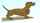
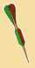
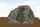
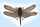
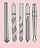

English - Kannada Dictionary
ಇಂಗ್ಲಿಷ್ - ಕನ್ನಡ ನಿಘಂಟು
- ಇಂಗ್ಲಿಷ್ ವರ್ಣಮಾಲೆಯ ನಾಲ್ಕನೆಯ ಅಕ್ಷರ.
- (ಸಂಗೀತ) ಸಪ್ತಸ್ವರದಲ್ಲಿ ‘ರಿ’; ಋಷಭ.
- (ಪರೀಕ್ಷೆಯಲ್ಲಿ ಅಂಕ, ವರ್ಗ, ಐಶ್ವರ್ಯಕ್ಕೆ ಅನುಗುಣವಾಗಿ ಜನಸಂಖ್ಯೆ, ಮೊದಲಾದವುಗಳ ವಿಷಯದಲ್ಲಿ) ನಾಲ್ಕನೆಯದು; ಚತುರ್ಥ: D group ಚತುರ್ಥವರ್ಗ.
- D ಆಕೃತಿ; D ಅಕ್ಷರದ ಆಕಾರ: D block, D trap, D valve, ಮೊದಲಾದವು.
- = Dee.
- D (ರೋಮನ್ ಸಂಖ್ಯಾಲಿಪಿಯಲ್ಲಿ) 500; ಐನೂರು.
- (ಅಮೆರಿಕನ್ ಪ್ರಯೋಗ) Democrat.
- dimension(3D).
- daughter.
- deci-
- delete
- departs.
- died.
- (ಬ್ರಿಟಿಷ್ ಪ್ರಯೋಗ) (ಹಿಂದೆ) penny
deuterium.
‘had’ ಮತ್ತು ‘would’ಗಳ ಹ್ರಸ್ವರೂಪ (ಮುಖ್ಯವಾಗಿ I, we, you, he, she, they ಎಂಬ ಸರ್ವನಾಮಗಳ ತರುವಾಯ): they’d gone; he’d go.
ಭೂತಕೃದಂತವನ್ನು ಸೂಚಿಸುವ ಉತ್ತರಪ್ರತ್ಯಯ: heard ಮೊದಲಾದವು.
ಭೂತಕೃದಂತವನ್ನು ಸೂಚಿಸುವ ಉತ್ತರಪ್ರತ್ಯಯ: subpoena’d, toga’d, ಮೊದಲಾದವು.
- deposit account.
- (ಅಮೆರಿಕನ್ ಪ್ರಯೋಗ) District Attorney.
- (ಭಾರತ) Dearness Allowance.
- (ಭಾರತ) Daily Allowance.
deca-.

- ಲಘುವಾಗಿ ತಟ್ಟು; ಮೃದುವಾಗಿ ಹೊಡೆ ( ಅಕರ್ಮಕ ಕ್ರಿಯಾಪದ ಸಹ).
- ಮೆಲ್ಲಗೆ ಬಡಿ ( ಅಕರ್ಮಕ ಕ್ರಿಯಾಪದ ಸಹ).
- ಕೊಕ್ಕಿನಿಂದ ಮೆತ್ತಗೆ ಕುಟುಕು ಯಾ ಕುಕ್ಕು ( ಅಕರ್ಮಕ ಕ್ರಿಯಾಪದ ಸಹ).
- (ಸ್ಪಂಜು, ವಸ್ತ್ರ, ಮೊದಲಾದವುಗಳಿಂದ ಉಜ್ಜದೆ ಮೃದುವಾಗಿ) ಒತ್ತು: she dabbed her eyes with her handkerchief ಆಕೆ ತನ್ನ ಕೈಚೌಕದಿಂದ ಕಣ್ಣನ್ನು ಒತ್ತಿಕೊಂಡಳು.
- ಇರಿ.
- (ಬಣ್ಣ ಮೊದಲಾದವನ್ನು ಕುಂಚ ಮೊದಲಾದವುಗಳಿಂದ) ಹಗುರವಾಗಿ – ಬಳಿ, ಸವರು, ಲೇಪಿಸು, ಹಚ್ಚು.
- (ಕಲ್ಲನ್ನು) ಕಡೆ; ಕೆತ್ತು; ಕೆತ್ತಿ ಮಟ್ಟಮಾಡು.

- (ಮೆತ್ತಗಿನ ಯಾ ಥಟ್ಟನೆಯ) ಹೊಡೆತ; ತಟ್ಟು; ಒತ್ತು; ಪೆಟ್ಟು.
- (ಸ್ಪಂಜು, ಚೌಕ, ಮೊದಲಾದವನ್ನು ಉಜ್ಜದೆ) ಒತ್ತವುದು.
- ಮೃದುವಾದಿ, ಹಗುರವಾಗಿ – ಲೇಪಿಸಿದ ಬಣ್ಣ, ದ್ರವ, ಮೊದಲಾದವು.
- (ಬಹುವಚನದಲ್ಲಿ, ಅಶಿಷ್ಟ) ಬೆರಳಚ್ಚುಗಳು; ಬೆರಳ ಗುರುತುಗಳು.

- ಲಿಮಾಂಡ ಕುಲದ ಸಣ್ಣಚಪ್ಪಟೆಈನು.
- ಅರೇಬಿಯ, ಈಜಿಪ್ಟ್, ಮೊದಲಾದ ಕಡೆ ಇರುವ, ಮುಳ್ಳುಬಾಲದ ದೊಡ್ಡ ಓತಿಕೇತ.

(ಆಡುಮಾತು) (ಆಟಪಾಠಗಳಲ್ಲಿ, ಕೆಲಸಕಾರ್ಯಗಳಲ್ಲಿ) ಜಾಣ; ದಕ್ಷ; ನಿಪುಣ; ಚತುರ; ಕುಶಲ.

(ಆಡುಮಾತು) ಜಾಣ(ನಾದ); ನಿಪುಣ; ದಕ್ಷ(ನಾದ).
dab hand ಕುಶಲ; ತಜ್ಞ; ಪರಿಣತ.
- ಲಘುವಾಗಿ – ತಟ್ಟುವವ, ಹೊಡೆಯುವವ.
- ಒತ್ತುವವ.
- ಲೇಪಕ; ಬಳಿಯುವವ.
- (ಮೇಲ್ಮೈಗೆ ಶಾಯಿಯನ್ನೋ ಬಣ್ಣವನ್ನೋ ಒಂದೇ ಸಮನಾಗಿ ಹಚ್ಚಲು ಮುದ್ರಣಕಾರರು ಮೊದಲಾದವರು ಉಪಯೋಗಿಸುವ) ದುಂಡೊತ್ತಿಗೆ; ತಟ್ಟೊತ್ತಿಗೆ; ಲಟ್ಟಣಿಗೆ; ಮೆತುಪದಾರ್ಥದ ದುಂಡನೆಯ ಒತ್ತಿಗೆ.
- ಅಚ್ಚೊತ್ತಿಗೆ; ಕೂಡಕ್ಷರ ಫಲಕದಿಂದ ಮುದ್ರಣ ಮಾಡುವಲ್ಲಿ ಅದರ ಮೇಲಿಟ್ಟ ಕಾಗದವು ಅಕ್ಷರಗಳ ಸಂದುಗಳಲ್ಲೆಲ್ಲ ಸೇರುವಂತೆ ತಟ್ಟುವುದಕ್ಕಾಗಿ ಉಪಯೋಗಿಸುವ ಒತ್ತಿಗೆ.
- (ಕೆಸರು, ನೀರಿನಲ್ಲಿ ಹಾಯುವವರ ಯಾ ಓಡುವ ವಾಹನದ ವಿಷಯದಲ್ಲಿ) (ವ್ಯಕ್ತಿ, ಪದಾರ್ಥ, ಮೊದಲಾದವುಗಳ ಮೇಲೆ ಕೆಸರು, ನೀರು, ಮೊದಲಾದವನ್ನು) ಸಿಡಿಸು; ಹಾರಿಸು; ಎರಚು.
- (ಅಲ್ಲಲ್ಲಿ ಯಾ ಸ್ವಲ್ಪಸ್ವಲ್ಪ) ಒದ್ದೆಮಾಡಿಕೊ; ನೆನಸಿಕೊ.
- (ಆಳವಿಲ್ಲದ ನೀರು ಯಾ ಕೆಸರಿನಲ್ಲಿ ಸುತ್ತಲೂ ಹಾರುವಂತೆ ಕೈ, ಕಾಲು, ಕೊಕ್ಕು, ಮೊದಲಾದವುಗಳನ್ನು) ಆಡಿಸು.
- (ಮನಸ್ಸು ಬಂದಾಗ ಹವ್ಯಾಸವಾಗಿ ಯಾ ವಿಶೇಷ ಆಸಕ್ತಿ ಇಲ್ಲದೆ ಯಾವುದರಲ್ಲಾದರೂ) ತೊಡಗು; ಕೈ ಆಡಿಸು; ಕೈಹಚ್ಚು.
ಯಾವುದೇ ಕೆಲಸದಲ್ಲಿ ವಿಶೇಷ ಆಸಕ್ತಿ ಇಲ್ಲದೆ ತೊಡಗುವವನು, ಕೈ ಹಚ್ಚುವವನು, ಕೈಆಡಿಸುವವನು.
ಗ್ರೀಬ್ ವಂಶಕ್ಕೆ ಸೇರಿದ ನೀರುಹಕ್ಕಿ, ಮುಖ್ಯವಾಗಿ ಚಿಕ್ಕ ಹಕ್ಕಿ.
ಡಾ ಕಾಪೋ; (ಸಂಗೀತ ನಿರ್ದೇಶನದಲ್ಲಿ) ಮೊದಲಿನಿಂದ ಪುನರಾವರ್ತಿಸಿ; ಮತ್ತೆ – ಪ್ರಾರಂಭಿಸಿ, ಮೊದಲು ಮಾಡಿ.
(ಬಹುವಚನ ಅದೇ) ಮುಖ್ಯವಾಗಿ ಲ್ಯೂಸಿಸ್ಕಸ್ ಕುಲಕ್ಕೆ ಸೇರಿದ, ಕಾರ್ಪ್ ಮೀನನ್ನು ಹೋಲುವ, ಸಿಹಿನೀರಿನಲ್ಲಿ ವಾಸಿಸುವ ಸಣ್ಣ ಮೀನು.
ಹಳ್ಳಿಮನೆ; ಗ್ರಾಮೀಣಗೃಹ; ರಷ್ಯಾದ ಹಳ್ಳಿಗಾಡಿನಲ್ಲಿರುವ ಚಿಕ್ಕಮನೆ ಯಾ ತೋಟದ ಮನೆ.

ಡಾಕ್ಸ್ಹುಂಡ್; ಗಿಡ್ಡಕಾಲಿನ, ಉದ್ದವಾದ ಶರೀರ ಉಳ್ಳ, ಸಾಮಾನ್ಯವಾಗಿ ಕಂದು ಯಾ ಕಪ್ಪು ಬಣ್ಣದ, ಜರ್ಮನಿಯ ನಾಯಿತಳಿ. 
(ಭಾರತ ಯಾ ಬರ್ಮಾದ) ಡಕಾಯಿತ; ದರೋಡೆಕೋರ; ಡಾಕು.
- ಡಕಾಯಿತಿ; ದರೋಡೆ; ಲೂಟಿ.
- ಡಕಾಯಿತಿತನ; ದರೋಡೆ ಮಾಡುವಿಕೆ.
ಡೇಕ್ರಾನ್:
- ಒಂದು ಬಗೆಯ ಸಂಶ್ಲೇಷಿತ ನೂಲು.
- ಅದರ ಬಟ್ಟೆ.
(ಛಂದಸ್ಸು) ಭಗಣ; ಡಾಕ್ಟಿಲ್; ಮೊದಲನೆಯ ಮಾತ್ರೆ ಗುರುವಾಗಿದ್ದು ಅಥವಾ ಅದರ ಮೇಲೆ ಘಾತವಿದ್ದು, ಎರಡು ಮತ್ತು ಮೂರು ಲಘುಗಳಾಗಿರುವ ಯಾ ಅವುಗಳ ಮೇಲೆ ಘಾತ ಇಲ್ಲದ, ಮೂರು ಮಾತ್ರಗಳ ಗಣದ ಛಂದಸ್ಸು: $-\cup\cup$.

(ಸಾಮಾನ್ಯವಾಗಿ ಬಹುವಚನದಲ್ಲಿ) ಭಗಣದಲ್ಲಿರುವ ಪಂಕ್ತಿ ಯಾ ಕವನ.
ಷಡ್ಭ್ಗಣಪಾದಿ; ಭಗಣ ಷಟ್ಪಾದಿ; ಭಗಣದಲ್ಲಿರುವ ಆರು ಖಂಡಗಳ ಛಂದಸ್ಸು.

(ಅಮೆರಿಕನ್ ಪ್ರಯೋಗ) (ಆಡುಮಾತು) (ಆಣೆ, ಪ್ರಮಾಣ, ಮೊದಲಾದವಲ್ಲಿ) ದೇವರಾಣೆ; ದೇವರೇ.
ಡಾಡಾ; 1915 ರಿಂದ 20ರವರೆಗಿನ ಅವಧಿಯಲ್ಲಿ ಕಲೆ ಮತ್ತು ಸಾಹಿತ್ಯಗಳ ಸಂಪ್ರದಾಯಗಳನ್ನು ಮುರಿದು ನೋಡುವವರಿಗೆ ಯಾ ಓದುವವರಿಗೆ ಬೆರಗು ಬಡಿಸಲು ಅಥವಾ ಅವರ ಮೇಲೆ ಆಘಾತದ ಪರಿಣಾಮ ಉಂಟುಮಾಡಲು ಉದ್ದೇಶಿಸಿದ ಅಂತರರಾಷ್ಟ್ರೀಯ ಚಳುವಳಿ.
ಡಾಡಾ ತತ್ತ್ವ; ಡಾಡಾ ಚಳುವಳಿಯ ಸಿದ್ಧಾಂತ.
ಡಾಡಾ ವಾದಿ; ಡಾಡಾ ಚಳುವಳಿಯಲ್ಲಿ ನಂಬಿಕೆಯಿಟ್ಟವನು.
(ಆಡುಮಾತು)
- (ಮುಖ್ಯವಾಗಿ ಸಂಬೋಧನೆಯಲ್ಲಿ) ಅಪ್ಪ; ಅಯ್ಯ; ತಂದೆ.
- ಹಿರಿಯ; ಮುಖಂಡ; ಪ್ರಮುಖ; ಪ್ರಧಾನ; ಬಹಳ ಹಿರಿಯನಾದ ಯಾ ಅತ್ಯಂತ ಮುಖ್ಯವಾದ ವ್ಯಕ್ತಿ ಯಾ ವಸ್ತು.
- ವ್ಯಕ್ತಿ; ಮನುಷ್ಯ; ಆಸಾಮಿ.
- ಉದ್ದಗಾಲಿನ ಜೇಡ, ಸೊಳ್ಳೆ, ನೊಣ, ಮೊದಲಾದವುಗಳ ಜನಪ್ರಿಯ ಹೆಸರು.
- (ಅಮೆರಿಕನ್ ಪ್ರಯೋಗ) = harvestman.
- ನಡುದಿಂಡು ಮಾಡು.
- ಮೇಜುಕಟ್ಟು ಮಾಡು; ಕಾರಣೆಪಟ್ಟಿ ಕಟ್ಟು.
- (ಹಲಗೆ ಮೊದಲಾದವುಗಳಲ್ಲಿ) ಆಯಾಕಾರದ ಗುಳಿ – ಮಾಡು, ಕೊರೆ.
- ನಡುದಿಂಡುಳ್ಳ.
- ಮೇಜುಕಟ್ಟಿರುವ; ಕಾರಣೆಪಟ್ಟಿಯುಳ್ಳ.
- (ಸಾಹಿತ್ಯಕ) ಚತುರ; ಕುಶಲ; ನಿಪುಣ.
- ಕಲ್ಪನಾ ಚತುರ.
- (ಶಿಲ್ಪ, ಕಲೆ, ದಾರಿ, ಮೊದಲಾದವುಗಳ ವಿಷಯದಲ್ಲಿ) ತೊಡಕಾದ; ಜಟಿಲ; ಸಂಕೀರ್ಣ.
- ಗೂಢ; ರಹಸ್ಯಮಯ.
- (ಭೂಮಿ ಮೊದಲಾದವುಗಳ ವಿಷಯದಲ್ಲಿ)ವಿಚಿತ್ರ ರಚನೆಯ; ಪ್ರಾಕೃತಿಯ ಅದ್ಭುತಗಳಿಂದ ಕೂಡಿದ.
- ಡಯಿಡಲಸ್ ಎಂಬ ಗ್ರೀಕ್ ಕುಶಲಕರ್ಮಿಯ ಯಾ ಅವನ ರೀತಿಯ.
- (ವಾಸ್ತುಶಿಲ್ಪ ಮೊದಲಾದವುಗಳ ವಿಷಯದಲ್ಲಿ) ಹೆಣೆದುಕೊಂಡಿರುವ; ತೊಡಕಾದ; ಜಟಿಲ(ವಾದ).
- (ದಾರಿ ಮೊದಲಾದವುಗಳ ವಿಷಯದಲ್ಲಿ) ಸುತ್ತುಬಳಸಿನ; ತೊಳಸುಬಳಸಿನ.
(ಪ್ರಾಚೀನ ಪ್ರಯೋಗ) ಬದಿಗೊತ್ತು; ಪಕ್ಕಕ್ಕಿಡು; ಒತ್ತಟ್ಟಿಗಿಡು; ಆಚೆಗೆ ಸರಿಸು: to daff the world aside ಲೋಕವನ್ನು ಒತ್ತಟ್ಟಿಗಿಡು.
- ಡಾಹಡಿಲ್:
- ನೆಲನೈದಿಲೆ; ವಸಂತಕಾಲದಲ್ಲಿ ಅರಳುವ, ತುತೂರಿಯಾಕಾರದ ನಸುಹಳದಿ ಹೂಬಿಡುವ ಗೆಡ್ಡೆಸಸ್ಯ.

- ವೇಲ್ಸಿನ ರಾಷ್ಟ್ರೀಯ ಲಾಂಛನವಾಗಿರುವ ಈ ಹೂವು.
- ನೆಲನೈದಿಲೆ; ವಸಂತಕಾಲದಲ್ಲಿ ಅರಳುವ, ತುತೂರಿಯಾಕಾರದ ನಸುಹಳದಿ ಹೂಬಿಡುವ ಗೆಡ್ಡೆಸಸ್ಯ.
- ನಸುಹಳದಿ; ತಿಳಿಹಳದಿಬಣ್ಣ.


- ಅವಿವೇಕದ; ತಿಳಿಗೇಡಿತನದ.
- ನಿರ್ಲಕ್ಷ್ಯದ; ಎಚ್ಚರಗೇಡಿನ; ಹುಚ್ಚುಧೈರ್ಯದ.
- ಗೀಳಿನ; ಮರುಳುಗೊಂಡ.
- ಬುದ್ಧಿಗೆಟ್ಟ; ಉನ್ಮತ್ತ; ಹುಚ್ಚುಹುಚ್ಚಾದ; ಮತಿವಿಕಲವಾದ; ಬುದ್ಧಿವಿಕಲ್ಪವಾದ; ಉನ್ಮಾದ ಹತ್ತಿದ; ಚಿತ್ತಭ್ರಮಣೆಯಾದ: in this daft confusion ಈ ಹುಚ್ಚು ಗೊಂದಲದಲ್ಲಿ.
- (ಸ್ಕಾಟ್ಲಂಡ್) ಹುಡುಗಾಟಿಕೆಯ; ವಿನೋದಪ್ರವೃತ್ತಿಯ; ತಮಾಷೆಸ್ವಭಾವದ.

- (ಉಡುಪು ಮೊದಲಾದವುಗಳಲ್ಲಿರುವ ಆಲಂಕಾರಿಕವಾದ) ನೇತಾಡುವ ಕುಚ್ಚು, ಚುಂಗು.
- (ಸ್ಕಾಟ್ಲಂಡ್ನಲ್ಲಿ) ಕುರಿಯ ಹಿಂಭಾಗದಲ್ಲಿ ಕೆಸರು ಅಂಟಿಕೊಂಡಿರುವ ಉಣ್ಣೆಬೊಂತೆ.

- ನೇರಕೊಂಬು; ಚೂಪಾಗಿಯೂ ನೆಟ್ಟಗೂ ಇರುವ ಮರಿ ಜಿಂಕೆಯ ಕೊಂಬು.
- ಮೊನಚಾದ ಆಯುಧ, ಹತ್ಯಾರು, ಮರದ ತುಂಡು, ಮೊದಲಾದವುಗಳನ್ನು ಜಂಟಿಸುವ, ಕೂಡಿಸುವ ಮೊಳೆ.

ಇಬ್ಬನಿ; ತುಂತುರುಮಂಜು; ತುಂತುರುಹಿಮ.
- (ಹೊಲಿಗೆ) (ಬಟ್ಟೆ, ಉಡುಪು, ಮೊದಲಾದವುಗಳ ಅಂಚನ್ನು ಅಲಂಕಾರಕ್ಕಾಗಿ) ಕುಚ್ಚುಕುಚ್ಚಾಗಿ ಕತ್ತರಿಸು.
- ಕೆಸರು ಹತ್ತಿಸು; ಕೊಳೆ ಮಾಡು; ಮಲಿನಗೊಳಿಸು.

- ಚಿಮುಕಿಸು; ಸಿಂಪಡಿಸು; ಎರಚು.
- ಚಿಮುಕಿಸಿ – ತೋಯಿಸು, ನೆನಸು, ಒದ್ದೆ ಮಾಡು.
(ಮಳೆಯ ವಿಷಯದಲ್ಲಿ) ಸೋನೆ ಸುರಿ; ತುಂತುರು ಬೀಳು.
ಹೊಳೆಯುವ ಬಣ್ಣದ ಒಂದು ಸಮುದ್ರಮೀನು.
(ದಕ್ಷಿಣ ಆಹ್ರಿಕ)
- (ಮಾದಕ ವಸ್ತುವಾಗಿ ಬಳಸುವ) ಪುಂಡಿಗಿಡ; ಸಣಬಿನ ಗಿಡ.
- (ಮಾದಕವಸ್ತುವಾಗಿ ಬಳಸುವ) ಲಿಯೊನೊಟಿಸ್ ಕುಲದ ಗಿಡ.
double dagger = double obelisk.
- at daggers drawn (ವ್ಯಕ್ತಿ ಮೊದಲಾದವರೊಡನೆ) ಕಠಾರಿ ಹಿರಿದು; ಕಾದಾಡಲು ಸಿದ್ಧವಾಗಿ; ಕತ್ತಿ ಕಟ್ಟಿಕೊಂಡು; ಬದ್ಧವೈರದಿಂದ ಕೂಡಿ; ಕತ್ತಿಮಸೆಯುತ್ತ.
- look daggers (ವ್ಯಕ್ತಿ ಮೊದಲಾದವರ ಕಡೆ) ತಿವಿಯುವಂತೆ, ಇರಿಯುವಂತೆ – ನೋಡು; ದುರುದುರು ನೋಡು.
- speak daggers ಮನ ಇರಿಯುವಂತೆ ಮಾತಾಡು; ಮರ್ಮಭೇದಕವಾಗಿ ಮಾತಾಡು.
- (ಅಶಿಷ್ಟ ತುಚ್ಛಾರ್ಥದಲ್ಲಿ, ಆ ಜನಾಂಗದವರಿಗೆ ಅಪಮಾನಕರವಾದ ಪ್ರಯೋಗ) ಡೇಗೋ; ಸ್ಪೇನ್, ಪೋರ್ಚುಗಲ್ ಅಥವಾ ಇಟಲಿ ದೇಶದವನು.
- ವಿದೇಶೀಯ; ಹೊರದೇಶದವನು.
(ಛಾಯಾಚಿತ್ರಣ)
- ಡಗರ್ ವಿಧಾನ; ಅಯೊಡಿನ್ಗೆ ಸೂಕ್ಷ್ಮತೆ ತೋರುವ ಬೆಳ್ಳಿಯ ತಗಡಿಯ ಮೇಲೆ ಯಾ ಬೆಳ್ಳಿಲೇಪಿಸಿದ ತಾಮ್ರದ ತಗಡಿನ ಮೇಲೆ ಪಾದರಸದ ಅವಿಯನ್ನು ಬಳಸಿಕೊಂಡು ಛಾಯಾಚಿತ್ರ ತೆಗೆಯುವ ಒಂದು ಹಳೆಯ ವಿಧಾನ.
- ಈ ವಿಧಾನದಿಂದ ತೆಗೆದ ಚಿತ್ರ; ಡಗರ್ ಚಿತ್ರ.
ಡಾ; ಬರ್ಮ ದೇಶದ ಕಿರುಗತ್ತಿ, ದೊಡ್ಡಚಾಕು.
ನೈಲ್ದೋಣಿ; ನೈಲ್ ನದಿಯಲ್ಲಿ, ಮನೆಯಂತೆ ಇರುವ ಯಾ ಪ್ರಯಾಣಿಕರನ್ನು ಸಾಗಿಸಲು ದೊಡ್ಡದೋಣಿ.
- ಡೇಲಿಯ; ಡೇರಾ ಹೂ; ಬಣ್ಣಬಣ್ಣದ ಒಂದು ಯಾ ಎರಡು ಸುತ್ತುದಳದ ಹೂವುಗಳನ್ನು ಬಿಡುವ, ಮೆಕ್ಸಿಕೊ ತವರಿನ ಗೆಡ್ಡೆಯಿಂದ ಬೆಳೆಯುವ ಸಂಕೀರ್ಣ ಗಿಡಗಳ ಕುಲ.
- (ಒಂದು ಬಗೆಯ) ಕೆಂಪು ಛಾಯೆ; ನೇರಿಳೆ ಮತ್ತು ಕಪ್ಪು ಬಣ್ಣಗಳ ಮಿಶ್ರವರ್ಣ.
- ಡೇರಾ ಕುಲದ ಗಿಡ.
blue dahlia ಅಸಾಧ್ಯವಾದದ್ದು; ಸಾಧ್ಯವಿಲ್ಲದ್ದು; ಸಾಧ್ಯವಾಗದ ಯಾವುದೇ ಕೆಲಸ ಮೊದಲಾದವು.
(ಆಂಗ್ಲೋ ಇಂಡಿಯನ್) ದಾಯಿ; ಮೊಲೆಯೂಡಿಸುವ ದಾದಿ.
ಐರ್ಲೆಂಡಿನ ಪಾರ್ಲಿಮಂಟಿನ ಕೆಳಸಭೆ.
ಪ್ರತಿದಿನದ; ದಿನಂಪ್ರತಿಯ; ದೈನಿಕ; ದಿನನಿತ್ಯದ; ಪ್ರತಿನಿತ್ಯದ; ನಿತ್ಯವೂ – ಆಗುವ, ಮಾಡುವ, ಕೊಡುವ.
- ದಿನವೂ; ಪ್ರತಿದಿನವೂ; ದಿನನಿತ್ಯವೂ; ನಿತ್ಯ; ದಿನವಹಿ.
- ದಿನೇದಿನೇ; ದಿನದಿಂದ ದಿನಕ್ಕೆ.
- ಸದಾ; ಯಾವಾಗಲೂ; ಒಂದೇ ಸಮನಾಗಿ.
- ದಿನಪತ್ರಿಕೆ; ದೈನಿಕ.
- (ಬ್ರಿಟಿಷ್ ಪ್ರಯೋಗ) (ಆಡುಮಾತು) (ಮನೆಯಲ್ಲಿ ವಾಸಿಸದ) ಮನೆಗೆಲಸದವಳು; ದಿನಗೆಲಸದವಳು.
ಜೀವನಾಧಾರ; ಜೀವಿಕೆ; ದಿನನಿತ್ಯದ ಬದುಕಿಗೆ ಅತ್ಯಗತ್ಯವಾದ ಆಹಾರ ಮೊದಲಾದವು.
ದಿನನಿತ್ಯದ ವ್ಯಾಯಾಮ; ನಿತ್ಯದ ನಾಲ್ಕು ದಂಡೆ; ಪ್ರತಿದಿನ ಬೆಳಗ್ಗೆ ಎದ್ದಮೇಲೆ ಮಾಡುವ ವ್ಯಾಯಾಮ.
(ಚರಿತ್ರೆ) ಜಪಾನೀ ಚಕ್ರವರ್ತಿಯ – ಸಾಮಂತ, ಸರದಾರ.
- ಅಚ್ಚುಕಟ್ಟಾಗಿ; ಸುಂದರವಾಗಿ; ಚೊಕ್ಕವಾಗಿ; ಅಂದವಾಗಿ.
- ನಯವಾಗಿ; ಸೂಕ್ಷ್ಮವಾಗಿ; ನಾಜೂಕಾಗಿ; ಕೋಮಲವಾಗಿ.
- ನಾಜೂಕು; ನಯ; ಸೂಕ್ಷ್ಮತೆ; ಸುಕುಮಾರತೆ; ಕೋಮಲತೆ.
- ಸುಂದರವಾಗಿರುವಿಕೆ; ಅಚ್ಚುಕಟ್ಟಾಗಿರುವಿಕೆ; ಅಂದವಾಗಿರುವಿಕೆ; ಸೊಬಗು; ಮನೋಹರತೆ.
- ರಸವಂತಿಕೆ; ಮಧುರವಾಗಿರುವಿಕೆ; ರುಚಿಯಾಗಿರುವಿಕೆ.
- ಸೂಕ್ಷ್ಮವಾದ; ನಾಜೂಕಿನ; ನಯವಾದ; ಲಲಿತ; ಕೋಮಲ.
- ಆಯ್ದ; ಚೊಕ್ಕ; ಅಚ್ಚುಕಟ್ಟಾದ; ಉತ್ತಮವಾದ; ಒಳ್ಳೆಯ: dainty weather ಒಳ್ಳೆಯ ಹವೆ.
- (ತಿಂಡಿತಿನಿಸು) ಸವಿಯಾದ; ಇನಿದಾದ; ರುಚಿಯಾದ; ಮಧುರ; ರುಚಿಕರ.
- ಅಂದವಾದ; ಸುಂದರವಾದ; ಲಾವಣ್ಯದ.
- ಸುಕುಮಾರ; ಸೂಕ್ಷ್ಮಸುಂದರವಾದ; ನಯನಾಜೂಕಿನ: dainty girl ಸುಕುಮಾರಿ. dainty teacups ನಯನಾಜೂಕಾದ ಟೀಬಟ್ಟಲುಗಳು.
- ಸೂಕ್ಷ್ಮಾಭಿರುಚಿಯ; ಸೂಕ್ಷ್ಮ ಸಂವೇದನೆಯ; ಅತಿ ನಾಜೂಕುಪ್ರಕೃತಿಯ.
ಡೈಕಿರಿ; ಒಂದು ಬಗೆಯ ಮಿಶ್ರಪಾನೀಯ; ರಮ್, ನಿಂಬೆ ಹಣ್ಣಿನ ರಸ ಮತ್ತು ಸಕ್ಕರೆಯನ್ನು ಬೆರೆಸಿ ಮಾಡಿದ ಪಾನೀಯ, ಕಾಕ್ಟೇಲು.
- ಡೈರಿ; ಹಾಲುಮನೆ; ಹೈನಿನ ಮನೆ; ಹಾಲು, ಕೆನೆ ಇಡುವ ಮತ್ತು ಬೆಣ್ಣೆ, ಗಿಣ್ಣು, ಮೊದಲಾದವನ್ನು ಮಾಡುವ ಕೋಣೆ ಯಾ ಕಟ್ಟಡ.
- (ಆರಂಭದಲ್ಲಿ) ಹೈನಿನ ಶಾಖೆ; ಡೈರಿಯ ಉತ್ಪನ್ನಗಳಿಗೆ ಸಂಬಂಧಿಸಿದ ವ್ಯವಸಾಯ ವಿಭಾಗ.
- ಹೈನಂಗಡಿ; ಹಾಲು ಮೊದಲಾದವನ್ನು ಮಾರುವ ಅಂಗಡಿ.
- ಡೈರಿಯ ಹಸುಗಳು.
- = dairy farm.
ಹೈನುದನ; ಡೈರಿದನ; ಹಾಲಿನ ಉತ್ಪಾದನೆಗಾಗಿಯೇ ಸಾಕಿದ ಹಸುಗಳು.
ಹೈನುಕೆನೆ; ಡೈರಿ ಕೆನೆ; ಕೃತಕವಲ್ಲದ, ನಿಜವಾದ ಹಾಲಿನಿಂದ ತಯಾರಿಸಿದ ಕೆನೆ.
(ನ್ಯೂಸೀಲಂಡ್) ಹೈನುರ್ಕಾಖಾನೆ; ಬೆಣ್ಣೆ ಮತ್ತು ಗಿಣ್ಣುಗಳನ್ನು ತಯಾರಿಸುವ ಕಾರ್ಖಾನೆ.
ಹೈನುದಾಣ; ಹೈನುಗಾರಿಕೆ ತಾಣ; ಡೈರಿ ಹಾರಮ್; ಹೈನುಗಾರಿಕೆ ಯಾ ಹಾಲಿನ ಉತ್ಪನ್ನಗಳಿಗಾಗಿಯೇ ಸ್ಥಾಪಿಸಿದ ದನದ ತೊಟ್ಟಿ, ಸಂಸ್ಕರಣ ಕೇಂದ್ರ, ಮೊದಲಾದವುಗಳಿರುವ ತಾಣ.
ಹೈನುಗಾರಿಕೆ:
- ಹಾಲಿನ ಉತ್ಪನ್ನಗಳಿಗೆ ಸಂಬಂಧಿಸಿದ ವ್ಯಾಪಾರೋದ್ಯಮ.
- ಹಾಲು, ಬೆಣ್ಣೆ, ಮೊದಲಾದವನ್ನು ತಯಾರಿಸುವುದು.
ಹೈನುಗಿತ್ತಿ; ಡೈರಿಯಲ್ಲಿ ಕೆಲಸಮಾಡುವ ಹೆಂಗಸು.
- ಹೈನಿಗ; ಹೈನುಗಾರ; ಡೇರಿಯಲ್ಲಿ ಕೆಲಸಮಾಡುವವ.
- ಡೇರಿಯ ಒಡೆಯ ಯಾ ನಿರ್ವಾಹಕ.
ಹೈನೋತ್ಪನ್ನಗಳು; ಕ್ಷೀರೋತ್ಪನ್ನಗಳು; ಹಾಲು ಮತ್ತು ಅದರಿಂದ ತಯಾರಿಸುವ ಕೆನೆ, ಗಿಣ್ಣು, ಬೆಣ್ಣೆ, ಮೊದಲಾದವು.
- (ಅಗ್ರಪೀಠ, ಸಿಂಹಾಸನ, ಮೊದಲಾದವುಗಳಿಗಾಗಿ ಕೋಣೆ, ಸಭಾಂಗಣಗಳ ಒಂದು ಕಡೆಯಲ್ಲಿ ಹಾಕಿರುವ) ವೇದಿಕೆ; ಜಗಲಿ.
- (ಮನೆಯ ಹೊರಗಿನ) ಜಗಲಿ; ಜಗಲಿ ಕಟ್ಟೆ.
ಡೇಯ್ಸಿ – ಹೂಗಳಿಂದ ತುಂಬಿದ, ಅಲಂಕೃತವಾದ: daisied lawns ಡೇಯ್ಸಿ ಹಸಲೆಗಳು, ಮೈದಾನಗಳು.
- ಡೇಯ್ಸಿ; ಬೆಲಿಸ್ ಪೆರಿನಿಸ್ ಕುಲದ, ಹಳದಿ ಪುಷ್ಪಪಾತ್ರವೂ ಬಿಳಿ ದಳವಲಯವೂ ಇರುವ, ಕಾಡಿನಲ್ಲಿ ಬೆಳೆಯುವ ಯಾ ಉದ್ಯಾನವನಗಳಲ್ಲಿ ಬೆಳೆಸುವ, ಯೂರೋಪಿನ ಸಣ್ಣ ಗಿಡ ಯಾ ಅದರ ಹೂವು.
- ಈ ಗಿಡವನ್ನು ಹೋಲುವ ಇತರ ಗಿಡ, ಮುಖ್ಯವಾಗಿ ದೊಡ್ಡಗೊಳಿಕಣ್ಣಿನ ಡೇಯ್ಸಿ.
- (ಅಶಿಷ್ಟ) ಅಪರಂಜಿ; ಅತ್ಯುತ್ತಮವಾದದ್ದು; ಯಾವುದಾದರೊಂದರ ಅತ್ಯುತ್ಕೃಷ್ಟ ಮಾದರಿ: he is real daisy ಅವನೊಬ್ಬ ನಿಜವಾದ ಅಪರಂಜಿ.
pushing up the daisies(ಅಶಿಷ್ಟ) ಸತ್ತು ಸಮಾಧಿಯಾದದ್ದು; ಸತ್ತು ಹೂತಾಗಿದ್ದು.
ಡೇಯ್ಸಿ (ಹೂವಿನ) ದಂಡೆ, ಮಾಲೆ, ಪೋಣಿಸಿದ ಡೇಯ್ಸಿ ಹೂಗಳ ಸರ.
- ಕಾಲನ್ನು ಹೆಚ್ಚಾಗಿ ಮೇಲಕ್ಕೆತ್ತದೆ ನಡೆವ ಕುದುರೆ.
- (ಕ್ರಿಕೆಟ್) ಉರುಳುಚೆಂಡು; ಪುಟವೇಳದೆ ನೆಲದ ಮೇಲೆ ಉರುಳಿಕೊಂಡು ಹೋಗುವ ಚೆಂಡು.
Dakota.
ದಲೈ ಲಾಮ; ಟಿಬಿಟ್ಟಿನ ಪ್ರಧಾನ ಬೌದ್ಧ ಗುರು.
(ಮುಖ್ಯವಾಗಿ ಉತ್ತರ ಇಂಗ್ಲಂಡಿನಲ್ಲಿ) ಕಣಿವೆ.
HILL and dale.
ಕಣಿವೆಯವನು; ಕಣಿವೆನಿವಾಸಿ; ಉತ್ತರ ಇಂಗ್ಲೆಂಡ್ ಪ್ರದೇಶದ ಕಣಿವೆಗಳಲ್ಲಿ ವಾಸಿಸುವವನು.
ದ್ರೋಹಿ(ಣಿ); ಪುರುಷನನ್ನು ಮೋಹಿಸಿದಂತೆ ತೋರಿಸಿಕೊಂಡು ದ್ರೋಹಬಗೆಯುವವಳು.

- ಆಟ; ವಿನೋದ; ಲೀಲೆ; ಚಕ್ಕಂದ; ಮುಖ್ಯವಾಗಿ ಪ್ರಣಯ – ಲೀಲೆ, ಚೇಷ್ಟೆ.
- ಅಸಡ್ಡೆ; ಅಶ್ರದ್ಧೆ; ಅಲಕ್ಷ್ಯ; ಬೇಜವಾಬ್ದಾರಿ – ಕೆಲಸ, ವರ್ತನೆ,
- ಕಾಲಹರಣ; ಹೊತ್ತು, ಸಮಯ – ಕಳೆಯುವುದು, ವ್ಯರ್ಥಗೊಳಿಸುವಿಕೆ.
- ವಿನೋದವಾಡು.
- ಆಟವಾಡು; ಲೀಲೆಯಾಡು.
- ಸರಸವಾಡು.
- ಚಕ್ಕಂದವಾಡು; ಪ್ರಣಯಲೀಲೆಯಾಡು.
- ಕಾಲಹರಣಮಾಡು.
- ಕೆಲಸವಿಲ್ಲದೆ – ಅಡ್ಡಾಡು, ಸುತ್ತಾಡು, ಸುತ್ತು.
- ತಡ ಮಾಡು; ನಿಧಾನ ಮಾಡು.
- ಅಸಡ್ಡೆ ಮಾಡು; ಅಶ್ರದ್ಧೆ ತೋರು; ಅಲಕ್ಷ್ಯ ಮಾಡು.
dally away (ಕಾಲ, ಅವಕಾಶ, ಮೊದಲಾದವನ್ನು) ವ್ಯರ್ಥವಾಗಿ ಕಳೆ.
ಡಾಲ್ಮೇಷನ್; ಮಚ್ಚೆನಾಯಿ; ಗಾಡಿಯ ಜತೆಗೆ ಓಡಲು ಇಟ್ಟಿರುವ, ಮೋಟು ಕೂದಲಿನ, ಕಪ್ಪು ಚುಕ್ಕೆಗಳಿರುವ, ಬಿಳಿಯ ಬಣ್ಣದ ದೊಡ್ಡನಾಯಿ.
(ಸಂಗೀತ) (ನಿರ್ದೇಶನ ವಾಕ್ಯ) ನಿರ್ದಿಷ್ಟ ಸ್ಥಾನದಿಂದ ಪುನರಾವರ್ತಿಸಿ.
- (ಇಂಗ್ಲಿಷ್ ರಸಾಯನಶಾಸ್ತ್ರಜ್ಞ) ಡಾಲ್ಟನ್ನನ ಯಾ ಆತನ ಪರಮಾಣು ವಾದಕ್ಕೆ ಸಂಬಂಧಿಸಿದ.
- ಬಣ್ಣಗುರುಡಿನ; ವರ್ಣಾಂಧತೆಗೆ ಸಂಬಂಧಿಸಿದ.
(ಕೆಲವುವೇಳೆ Daltonism) (ರೋಗಶಾಸ್ತ್ರ) ಬಣ್ಣಗುರುಡು; ವರ್ಣಾಂಧತೆ; ಮುಖ್ಯವಾಗಿ ಆನುವಂಶಿಕವಾಗಿ ಬರುವ, ಹಸಿರು ಮತ್ತು ಕೆಂಪು ಬಣ್ಣಗಳ ಭೇದವನ್ನು ಗುರುತಿಸಲಾಗದ ವ್ಯಾಧಿ.
ಡಾಲ್ಟನ್ ವಿದ್ಯಾಭಾಸ ಪದ್ಧತಿಗೆ, ಕ್ರಮಕ್ಕೆ ಪರಿವರ್ತಿಸು.

ಡಾಲ್ಟನ್ – ಯೋಜನೆ, ಪದ್ಧತಿ; ಸ್ವಶಿಕ್ಷಣ ಪದ್ಧತಿ; ವರ್ಷದ ಪಾಠಕ್ರಮವನ್ನು ಎಲ್ಲ ತಿಂಗಳುಗಳಿಗೂ ಹಂಚಿ ವಿದ್ಯಾರ್ಥಿಗಳೇ ಕೆಲವು ವ್ಯಾಸಂಗ ಗೈಡುಗಳ ನೆರವಿನಿಂದ ಅಭ್ಯಾಸ ಮಾಡುವ ಹೊಣೆಯುಳ್ಳ ಒಂದು ವಿದ್ಯಾಭ್ಯಾಸ ಕ್ರಮ.

- (ಜಲಾಶಯ ನಿರ್ಮಿಸಲು ಯಾ ಪ್ರವಾಹ ತಪ್ಪಿಸಲು ಹಾಕುವ) ಅಣೆಕಟ್ಟು; ಕಟ್ಟೆ; ಒಡ್ಡು; ಏರಿ.
- (ಜೌಗುಪ್ರದೇಶ ಯಾ ನೀರು ನಿಂತಿರುವ ಜಾಗ ಮೊದಲಾದವುಗಳಲ್ಲಿ ಕಲ್ಲು, ಗುಂಡು, ಮರದ ದಿಮ್ಮಿ, ಮೊದಲಾದವುಗಳಿಂದ ಮಾಡಿದ) ಎತ್ತರದ ಹಾದಿ; ಹುದಿಹಾದಿ.
- (ಹೊಳೆ ಮೊದಲಾದವಲ್ಲಿ ಕರಡಿ ಯಾ ಬೀವರ್ ಕಟ್ಟುವ) ತಡೆ; ಒಡ್ಡು.
- (ಅಮೆರಿಕನ್ ಪ್ರಯೋಗ) (ದಂತವೈದ್ಯ) ರಬ್ಬರ್ ತಡೆ; ಶಸ್ತ್ರಚಿಕಿತ್ಸೆಯಲ್ಲಿ ಹಲ್ಲಿನ ಹತ್ತಿರ ಲಾಲಾರಸ ಬರದಂತೆ ತಡೆಯಲು ಇಡುವ ರಬ್ಬರ್ ಹಾಳೆ ಯಾ ರಟ್ಟು.

- ಏರಿ ಹಾಕು; ಕಟ್ಟೆ ಕಟ್ಟು; ಒಡ್ಡು ಹಾಕು.
- ಅಣೆಕಟ್ಟು ಕಟ್ಟಿ ನೀರು ನಿಲ್ಲಿಸು, ಕೆರೆ ನಿರ್ಮಿಸು.
- (ರೂಪಕವಾಗಿ ಸಹ) ಅಡ್ಡಗಟ್ಟು; ತಡೆಹಾಕು; ಅಡ್ಡಿಮಾಡು; ಅಡಚಣೆಗಳನ್ನು ಒಡ್ಡು.

(ಸಾಮಾನ್ಯವಾಗಿ ಪ್ರಾಣಿಯ) ತಾಯಿ.
the devil and his dam ದುಷ್ಟಶಕ್ತಿಗಳು; ಪೀಡೆಗಳು.


- (ವ್ಯಕ್ತಿ, ವಸ್ತು, ಆಸ್ತಿ, ಕೀರ್ತಿ, ಮೊದಲಾದವುಗಳಿಗೆ ಆಗುವ) ಜಖಂ; ಅಪಾಯ; ಹಾನಿ; ನಷ್ಟ: to one’s great damage ಒಬ್ಬನ ಕಡು ಹಾನಿಗೆ.
- (ಬಹುವಚನದಲ್ಲಿ) (ನ್ಯಾಯಶಾಸ್ತ್ರ) ದಂಡ; ಪರಿಹಾರ(ದ್ರವ್ಯ); ಯಾವುದೇ ಒಂದರ ನಷ್ಟ ಯಾ ಹಾನಿಗಾಗಿ ಕೊಡಬೇಕೆಂದು ಕೇಳುವ ಯಾ ಕಾನೂನು ವಿಧಿಸುವ – ಪರಿಹಾರ ಧನ.
- (ಅಶಿಷ್ಟ) ಖರ್ಚು; ವೆಚ್ಚ; ತೆರ(ಬೇಕಾದುದು): what’s the damage ದಂಡ ಎಷ್ಟು ತೆರಬೇಕು? ಎಷ್ಟು ಕೈ ಕಚ್ಚುತ್ತದೆ?
- (ಸಾಮಾನ್ಯವಾಗಿ ವಸ್ತುವಿನ ಬೆಲೆ ಯಾ ಉಪಯೋಗ ಕಡಿಮೆಯಾಗುವಂತೆ) ಕೆಡಿಸು; ಹಾಳುಮಾಡು; ಜಖಂಗೊಳಿಸು.
- (ವ್ಯಕ್ತಿ, ಸಂಸ್ಥೆ, ಮೊದಲಾದವುಗಳ) ಹೆಸರು ಕೆಡಿಸು; ಯಶಸ್ಸಿಗೆ ಕುಂದುತರು; ಖ್ಯಾತಿಗೆ ಹಾನಿ ತರು; ಹೆಸರಿಗೆ ಕಳಂಕ ಹಚ್ಚು; ಕೀರ್ತಿಗೆ ಭಂಗ ತರು; ಹೆಸರು ಕೆಡಿಸು: trying to damage the government ಸರ್ಕಾರಕ್ಕೆ ಕಳಂಕ ತರಲು ಯತ್ನಿಸುತ್ತಾ. a damaging admission ಹೆಸರು ಕೆಡಿಸುವ ಹೇಳಿಕೆ, ಒಪ್ಪಿಕೆ.
ಹಾಳಾಗು; ಕೆಡು; ಹಾನಿಗೊಳಗಾಗು; ನಷ್ಟವಾಗು: a sturdy cloth that does not damage easily ಸುಲಭವಾಗಿ ಹಾಳಾಗದ ಗಟ್ಟಿಬಟ್ಟೆ.
ಕೆಡಿಸಬಹುದಾದ; ಹಾನಿಗೊಳಗಾಗುವ; ಹಾಳಾಗುವ; ನಷ್ಟಕ್ಕೊಳಗಾಗುವ.
- ಹದ್ದಿಸು; ಹದಿಕೆತ್ತನೆ ಮಾಡು; (ಲೋಹದ ಮೇಲೆ) ಚಿನ್ನ, ಬೆಳ್ಳಿ, ಮೊದಲಾದವುಗಳನ್ನು ಹುದುಗಿಸಿ – ಚಿತ್ತಾರ ಮಾಡು, ಅಲಂಕಾರ ಮಾಡು.
- (ಉಕ್ಕಿಗೆ) ತರಂಗಾಲಂಕಾರ ಮಾಡು; ಬೆಸುಗೆಯಲ್ಲಿ ಮೂಡುವ ಅಲೆಗಳ ರೇಖೆಗಳನ್ನು ಬರಿಸು.

- = damask rose.
- ಡಮಾಸು ವರ್ಣ; ಡಮಾಸ್ಕಸ್ ಗುಲಾಬಿಯ ನಸುಗೆಂಪು ವರ್ಣ; ಡಾಮಾಸ್ಕಸ್ ಗುಲಾಬಿಯ ನಸುಗೆಂಪು ಬಣ್ಣ.
- ಡಮಾಸು ವಸ್ತ್ರ; ನಮೂನೆ ಯಾ ವಿನ್ಯಾಸಗಳು ವಸ್ತ್ರದ ಎರಡು ಕಡೆಯೂ ಕಾಣುವಂತೆ ಹೆಣೆದಿರುವ, (ಮೊದಲಿಗೆ ರೇಷ್ಮೆಯ ಈಗ ಲಿನನ್, ಕಾಟನ್, ಉಣ್ಣೆ, ಮೊದಲಾದವುಗಳ) ಗಟ್ಟಿಯಾದ ಹೊಳಪು ಬಟ್ಟೆ.
- ಡಮಾಸು ಬಟ್ಟೆಯಿಂದ ಮಾಡಿದ ಮೇಜು ಬಟ್ಟೆ, ಕರವಸ್ತ್ರ, ಮೊದಲಾದವು.
- (ಚರಿತ್ರೆ) ಡಮಾಸು (ಉಕ್ಕು); ಕಬ್ಬಿಣ ಮತ್ತು ಉಕ್ಕನ್ನು ವಿಶೇಷ ರೀತಿಯಲ್ಲಿ ಒಟ್ಟಿಗೆ ಬೆಸೆದಾಗ ಉಂಟಾಗುವ, ಅಲೆಯಂಥ ವಿನ್ಯಾಸಗಳುಳ್ಳ ಡಮಾಸ್ಕಸ್ ಉಕ್ಕು ಯಾ ಅದರಂಥ ಬೇರೆ ಉಕ್ಕು.
- ಡಮಾಸ್ಕಸ್ ಉಕ್ಕಿನ – ತರಂಗಾಲಂಕಾರ, ಅಲೆಯ ನಮೂನೆ.
- ಡಮಾಸು ಗುಲಾಬಿ ಬಣ್ಣದ; ನಸುಗೆಂಪಿನ ಯಾ ಮಕಮಲ್ಲು ಗುಲಾಬಿ ಬಣ್ಣದ.
- ಡಮಾಸು ರೇಷ್ಮೆ,ಕೆತ್ತಾನಾರು ಯಾ ಉಕ್ಕಿನಂಥ ಯಾ ಅವುಗಳಿಂದ ಮಾಡಿದ.

- = damascene.
- ನೆಯ್ಗೆಚಿತ್ತಾರ ಮಾಡು; ಬಣ್ಣಬಣ್ಣದ ದೊಡ್ಡ ನಮೂನೆ ಯಾ ಚಿತ್ರಗಳಿಂದ ನೇಯು ಯಾ ಅಲಂಕಾರ ಮಾಡು.
- (ಕೆನ್ನೆ ಮೊದಲಾದವನ್ನು) ಕೆಂಪೇರಿಸು; ಕೆಂಪಗೆ ಮಾಡು.
- ಚಿತ್ತಾರ ಮಾಡು; ನಮೂನೆ ಯಾ ವಿನ್ಯಾ ಸಗಳಿಂದ ಅಲಂಕರಿಸು.
ಡಮಾಸು ಗುಲಾಬಿ; ರೋಸ ಡಮಾಸೀನ ಕುಲದ, ಏಷ್ಯಾಮೈನರ್ನಲ್ಲಿ ಹೆಚ್ಚಾಗಿ ಬೆಳೆಸುವ, ಅತ್ತರುಳ್ಳ, ನಸುಗೆಂಪು ಬಣ್ಣದ, ಹಲವು ಮಿಶ್ರತಳಿಯ ಗುಲಾಬಿಗಳಿಗೆ ಮೂಲವಾದ, ಡಾಮಸ್ಕ್ ಗುಲಾಬಿ.
- (ಪ್ರಾಚೀನ ಪ್ರಯೋಗ, ಕಾವ್ಯಪ್ರಯೋಗ ಹಾಸ್ಯ ಪ್ರಯೋಗ ಯಾ ಅಮೆರಿಕನ್ ಪ್ರಯೋಗ, ಅಶಿಷ್ಟ) ಹೆಂಗಸು; ಮಹಿಳೆ; ವನಿತೆ.
- (ಪ್ರಾಚೀನ ಪ್ರಯೋಗ) ಗೃಹಿಣಿ; ಮನೆಯ ಯಜಮಾನಿ; ಮನೆವಾರ್ತೆ ನಡೆಸುವವಳು.
- ಡೇಮ್; ಅಧುನಿಕ ಮೂಕಾಭಿನಯದಲ್ಲಿ ಮಧ್ಯ ವಯಸ್ಸಿನ ಹೆಂಗಸಿನ ಹಾಸ್ಯಪಾತ್ರ ಮಾಡುವ ಗಂಡಸು.
- ಶ್ರೀಮತಿ; ಘನವಂತೆ; ಆರ್ಯೆ; ವರಿಷ್ಠವರ್ಗದ ಮಹಿಳೆಯ ಯಾ ಸ್ತ್ರೀರೂಪದಲ್ಲಿ ವ್ಯಕ್ತೀಕರಿಸಿದ ವಸ್ತುವಿನ ಬಿರುದು: Dame Nature ಪ್ರಕೃತಿ ಮಾತೆ.
- ನಿರ್ವಾಹಕಿ; ಈಟನ್ನಿನ – ಅನ್ನ ವಸತಿ ಗೃಹದ ಆಡಳಿತಾಧಿಕಾರಣಿ ಯಾ ಯಜಮಾನಿ.
- ಸರ್ ಎಂಬುದರ ಸ್ತ್ರೀಲಿಂಗವಾಚಕ.
- ‘ಆರ್ಡರ್ ಆಹ್ ಬ್ರಿಟಿಷ್ ಎಂಪೈರ್’ ಎಂಬ ಗೌರವಾನ್ವಿತ ಶ್ರೇಣಿಗೆ ಸೇರಿದ ಮಹಿಳೆ.
- ಪ್ರಿಮ್ ರೋಸ್ ಲೀಗಿನ ಸದಸ್ಯೆಯ ಬಿರುದು.
- ಮಹಿಳಾ ನೈಟ್ ಕಮಾಂಡರ್ ಯಾ ಗ್ರಂಡ್ ಕ್ರಾಸ್ ಇನ್ ಆರ್ಡರ್ ಆಹ್ ದಿ ಬಾತ್, ಆರ್ಡರ್ ಆಹ್ ದಿ ಬ್ರಿಟಿಷ್ ಎಂಪೈರ್, ರಾಯಲ್ ವಿಕ್ಟೋರಿಯನ್ ಆರ್ಡರ್, ಯಾ ಆರ್ಡರ್ ಆಹ್ ಸೇಂಟ್ ಮೈಕೇಲ್ ಮತ್ತು ಸೇಂಟ್ ಜಾರ್ಜ್ ಬಿರುದುಗಳನ್ನು ಹೊಂದಿರುವ ಮಹಿಳೆ ಯಾ ಈ ಬಿರುದುಗಳು.
- (ನ್ಯಾಯಶಾಸ್ತ್ರ) (ಬ್ರಿಟಿಷ್ ಪ್ರಯೋಗ) ನೈಟ್ ಯಾ ಬಾರೊನೆಟ್ ಪದವಿಯವನ ಹೆಂಡತಿಯ ಹೆಸರಿನ ಹಿಂದೆ ಸೇರಿಸುವ ಬಿರುದು.
ಭಾಗ್ಯದೇವತೆ; ಅದೃಷ್ಟ ದೇವತೆ; ಭಾಗ್ಯಮಾತೆ.
ಪ್ರಕೃತಿಮಾತೆ; ನಿಸರ್ಗದೇವತೆ.
(ಚರಿತ್ರೆ) ಅಜ್ಜಿಶಾಲೆ; ಮಹಿಳಾಶಾಲೆ; ಹಿಂದೆ ಇಂಗ್ಲೆಂಡಿನಲ್ಲಿ ಹಿರಿಯ ಹೆಂಗಸರು ನಡೆಸುತ್ತಿದ್ದ ಪ್ರಾಥಮಿಕ ಪಾಠಶಾಲೆ.
ಸಂಜೆಯವರೆಗೂ ವಾಸನೆಯಿರದೆ ಆಮೇಲೆ ಸುಗಂಧ ಬೀರುವ, ನಸುನೇರಳೆ ಯಾ ನಸು ಊದಾ ಬಣ್ಣದ ಹೂಗಳನ್ನು ಬಿಡುವ, ಶಿಲುಬೆಯಾಕಾರದ ವಿನ್ಯಾಸವಿರುವ ಗಿಡ.

- ಡಾಮರ್; ಮುಖ್ಯವಾಗಿ ಅಗತಿಸ್ ಯಾ ಶೋರಿಯ ಕುಲಕ್ಕೆ ಸೇರಿದ, ಶಂಕು ವಿನಾಕಾರದ ಕಾಯಿಬಿಡುವ, ನಿತ್ಯಹರಿದ್ವರ್ಣದ ಪೂರ್ವ ಏಷ್ಯಾದ ಮರ.
- ಮೆರುಗೆಣ್ಣೆಯ (ವಾರ್ನಿಷ್) ತಯಾರಿಕೆಯಲ್ಲಿ ಬಳಸುವ ಈ ಮರದ ರಾಳ ಯಾ ಅಂಟು.

- (ವ್ಯಕ್ತಿ ಯಾ ವಸ್ತುವನ್ನು) ಹಾಳುಗೆಡೆ; (ವ್ಯಕ್ತಿ ಯಾ ವಸ್ತುವಿಗೆ) ಕಳಂಕ ಹಚ್ಚು; ತಲೆಯೆತ್ತದಂತೆ ತಪ್ಪು ಹೊರಿಸು.
- ನರಕಕ್ಕೆ ನೂಕು; ಶಪಿಸು.
- (ಪ್ರೇಕ್ಷಕರ ವಿಷಯದಲ್ಲಿ) (ನಾಟಕವನ್ನು) ಅನಾದರದಿಂದ ಕಾಣು; ಪುನಃ ಆಡದಂತೆ ಮಾಡು.
- (ದೋಷವನ್ನು ಬಹಿರಂಗವಾಗಿ ಹೇಳಿ) ಖಂಡಿಸು; ತೆಗಳು; ನಿಂದಿಸು; ದೂಷಿಸು; ತಪ್ಪು ಹೊರಿಸು; ದೋಷಾರೋಪಣೆ ಮಾಡು: the book was damned by the critics ವಿಮರ್ಶಕರು ಪುಸ್ತಕವನ್ನು ಖಂಡಿಸಿದರು.
- ಹಾನಿ ತರು; ನಾಶ ತರು; ಕಳಂಕ, ಭಂಗ – ತರು: a democracy is damned when its leaders are slaves ನಾಯಕರು ದಾಸರಾಗಿದ್ದರೆ ಆ ಗಣತಂತ್ರ ನಾಶವಾಗುತ್ತದೆ.
- (ಆಡುಮಾತು) (ಕೋಪ, ಕಿರಿಕಿರಿ, ಮೊದಲಾದವನ್ನು ಸೂಚಿಸುವಾಗ) ಶಪಿಸು; ‘ಹಾಳಾಗು’ ಎನ್ನು:damn your eyes ನಿನ್ನ ಕಣ್ಣು ಇಂಗಿ ಹೋಗ.
(ಅಸಮಾಧಾನ, ಜುಗುಪ್ಸೆ, ಆಶ್ಚರ್ಯಗಳನ್ನು ಸೂಚಿಸಲು ಸಾಮಾನ್ಯವಾಗಿ ಭಾವಸೂಚಕ ಅವ್ಯಯವಾಗಿ ಬಳಸುವ ಪದ) ಹಾಳಾಗ!
- damn all (ಅಶಿಷ್ಟ) ಏನೇನೂ, ಸ್ವಲ್ಪವೂ – ಇಲ್ಲ.
- damn it ಹಾಳಾಗ!
- damn with faint praise ಮನಸ್ಸಿಲ್ಲದ ಯಾ ನಿರುತ್ಸಾಹದ ಹೊಗಳಿಕೆಯ ಮೂಲಕ ಅಸಮ್ಮತಿ ಯಾ ಅತೃಪ್ತಿ ಸೂಚಿಸು; ಶೀತಸ್ತುತಿ ಮಾಡು.
- I’ll be damned (ಆಡುಮಾತು) ನನಗೆ ಆಶ್ಚರ್ಯವಾಗಿದೆ; ಇದು ನನ್ನನ್ನು ಅಚ್ಚರಿಗೊಳಿಸಿದೆ.
- (I’m, I’ll be) damned if I will agree ನಾನು ಒಪ್ಪಿದರೆ ಆಗ ಕೇಳು; ನಾನು ಎಂದಿಗೂ ಒಪ್ಪುವುದಿಲ್ಲ.
- ಶಾಪ.
- ಅತ್ಯಲ್ಪ; ಲವ; ಲೇಶ; ಬಹಳ ಸ್ವಲ್ಪ; ಒಂದಿಷ್ಟು; ರವಷ್ಟು: don’t care a damn ಏನೂ ಬೆಲೆಯಿಲ್ಲ.


- ನರಕಕ್ಕೆ – ಯೋಗ್ಯವಾದ, ಈಡಾದ.
- ನಿಂದಾರ್ಹ; ದಂಡಾರ್ಹ; ಶಿಕ್ಷಾರ್ಹ.
- ಹಾಳಾದ; ಅನಿಷ್ಟ; ದರಿದ್ರ.
- ಅಸಹ್ಯ ಹುಟ್ಟಿಸುವ; ಕಿರಿಕಿರಿ ಉಂಟುಮಾಡುವ.
- ನಾಶವಾಗುವಂತೆ; ಹಾಳಾಗುವಂತೆ.
- ಜುಗುಪ್ಸೆ, ಅಸಹ್ಯ – ಹುಟ್ಟಿಸುವ ರೀತಿಯಲ್ಲಿ.

- (ನಾಟಕ ಮೊದಲಾದವುಗಳ) ದೊಷಣೆ; ಖಂಡನೆ; ನಿಂದೆ.
- ಶಾಶ್ವತನರಕಕ್ಕೆ ತಳ್ಳಿಬಿಡುವುದು; ನಿತ್ಯನಾರಕಿಯ ಸ್ಥಿತಿಗೆ ಗುರಿಪಡಿಸುವುದು.
- ಶಾಶ್ವತ ನರಕಶಿಕ್ಷೆ; ನಿತ್ಯನರಕವಾಸ.

(ವ್ಯಕ್ತಿಯು ವಸ್ತುವನ್ನು ಕುರಿತು ಹೇಳುವ ಪದ) ನಾಶವಾಗಿ ಹೋಗಲಿ! ಹಾಳಾಗ! ನರಕಕ್ಕೆ ಬೀಳ!
- ನಿಂದಾತ್ಮಕ; ಖಂಡಾನಾತ್ಮಕ.
- ಭಂಗ ತರುವ; ನಾಶ ತರುವ; ಹಾಳುಮಾಡುವ; ವಿನಾಶಕ.
- (ದೇವತಾಶಾಸ್ತ್ರ) ಶಪಿಸುವ; ಶಾಪಯುಕ್ತ; ನರಕಕ್ಕೆ ತಳ್ಳುವ.
- ಶಪ್ತ; ಶಾಪಗ್ರಸ್ತ; ನಾರಕ; ಪಾಪಿಷ್ಠ; ಮುಖ್ಯವಾಗಿ ನಿತ್ಯನರಕಶಿಕ್ಷೆಗೆ ಗುರಿಯಾದ: damned souls ನಾರಕಿಗಳು; ಶಪ್ತಾತ್ಮರು.
- ಹೇಸಿಕೆಯ; ಜುಗುಪ್ಸೆ ಹುಟ್ಟಿಸುವ; ಅಸಹ್ಯದ; ಹಾಳು; ದರಿದ್ರ; ಅನಿಷ್ಟದ: damned dog ದರಿದ್ರನಾಯಿ.
- (ಸಾಮಾನ್ಯವಾಗಿ ಒತ್ತುಕೊಡುವಾಗ ಬಳಸುವ) ಸಂಪೂರ್ಣ; ಶುದ್ಧ; ತೀರ; ಅತಿ; ಬಹಳ: damned nonsense ತೀರ ಅಸಂಬದ್ಧ. damned fool ಅತಿದಡ್ಡ.
- ಕ್ರೂರ; ಸಹಿಸಲಾಗದ.
the damned ನರಕವಾಸಿಗಳು; ನಾರಕಿಗಳು; ಪಾಪಾತ್ಮರು.
do one’s damnedest ಕೈಲಾದಷ್ಟೂ ಮಾಡು; ತನ್ನ ಕೈಲಾಗುವಷ್ಟನ್ನೂ ಮಾಡು.

- ತೀರ; ಬಹಳ; ಅತಿ; ತುಂಬ; ಅತ್ಯಂತ; ಸಂಪೂರ್ಣ: a job damned well done ಬಹಳ ಚೆನ್ನಾಗಿ ನಿರ್ವಹಿಸಿದ ಕಲಸ.
- = damnably.
(ನ್ಯಾಯಶಾಸ್ತ್ರ) ಕೆಡಕು ಮಾಡುವುದು; ಕಳಂಕ ತರುವುದು; ನಷ್ಟ ಮಾಡುವುದು.
(ನ್ಯಾಯಶಾಸ್ತ್ರ) ಕೆಡಕು ಮಾಡು; ನಷ್ಟಮಾಡು; ಹಾನಿಮಾಡು.

- ನರಕಕ್ಕೆಳೆವ.
- ನಿಂದನೀಯ; ಕಳಂಕ ತರುವ; ಕೇಡುಂಟುಮಾಡುವ.
- (ಸಾಕ್ಷ್ಯ ಮೊದಲಾದವುಗಳ ವಿಷಯದಲ್ಲಿ) ಅಪರಾಧವನ್ನು ತೋರಿಸುವ, ಸಾಬೀತು ಮಾಡುವ, ಶಿಕ್ಷೆಗೀಡು ಮಾಡುವ: damning evidence (ತಪ್ಪನ್ನು) ಸಾಬೀತುಗೊಳಿಸುವ ಸಾಕ್ಷ್ಯ.
(ಸಾಕ್ಷ್ಯ ಮೊದಲಾದವುಗಳ ವಿಷಯದಲ್ಲಿ) ಅಪರಾಧವನ್ನು – ತೋರಿಸುವಂತೆ, ಸಾಬೀತು ಮಾಡುವಂತೆ, ಸಮರ್ಥಿಸುವಂತೆ.
ಲಾಭಕ್ಕಿಂತ ಹೊರೆಯೇ ಹೆಚ್ಚಾದ ಪಿತ್ರಾರ್ಜಿತ.
(ನ್ಯಾಯಶಾಸ್ತ್ರ) ನಷ್ಟ; ಹಾನಿ; ಅನ್ಯಾಯ.
(ಕೂದಲೆಳೆಯಿಂದ ತೂಗಿಕಟ್ಟಿದ ಕತ್ತಿಯಡಿಯಲ್ಲಿ ಊಟಕ್ಕೆ ಕುಳಿತುಕೊಳ್ಳಬೇಕಾಗಿ ಬಂದ, ಡಯೊನೈಸಿಯಸ್ ಪ್ರಭುವಿನ ಆಸ್ಥಾನಿಕನಾದ) ಡೆಮೋಕ್ಲೀಸ್.

(ಪ್ರಾಚೀನ ಪ್ರಯೋಗ) damselನ ರೂಪಾಂತರ.
(ಪ್ರಾಚೀನ ಪ್ರಯೋಗ) damselನ ರೂಪಾಂತರ.

- ತೇವ; ತನು; ತಣ್ಪು; ಪಸೆ; ಆರ್ದತೆ.
- ಗಣಿ ಮೊದಲಾದವುಗಳಲ್ಲಿ ಸೇರಿರುವ ಇಂಗಾಲಾಮ್ಲ.
- ಮಂಕು; ಖಿನ್ನತೆ; ಮ್ಲಾನತೆ; ನಿರುತ್ಸಾಹ; ಉತ್ಸಾಹಭಂಗ; ವಿಷಣ್ಣತೆ; ಕಂಗೆಡುವಿಕೆ: cast (or strike) a damp over (or into) ನಿರುತ್ಸಾಹಗೊಳಿಸು; ತಣ್ಣೀರೆರಚು; ಉತ್ಸಾಹಭಂಗ ಮಾಡು;ಉತ್ಸಾಹಗೆಡಿಸು.
- = choke-damp.
- = firedamp.
- ತೇವವಿರುವ; ಒದ್ದೆಯಾದ; ಅರ್ದ: damp towel ಒದ್ದೆ ಟವಲ್ಲು.
- ನಿರುತ್ಸಾಹದ; ಉತ್ಸಾಹಶೂನ್ಯ; ವಿಷಣ್ಣನಾದ.

- ಆರಿಸು; ನಂದಿಸು; ಆಡಚು; ಮಂದಗೊಳಿಸು; ಉಸಿರಾಡದಂತೆ ಮಾಡು; ಗಾಳಿಯಾಡದಂತೆ ಮಾಡು: damp down a fire (ಬೂದಿ ಮೊದಲಾದವನ್ನು ಮುಚ್ಚಿ, ಗಾಳಿಯನ್ನು ನಿಯಂತ್ರಿಸಿ) ಬೆಂಕಿಯನ್ನು – ಅಡಚು, ಆರಿಸು, ಅಡಗಿಸು.
- (ಭೌತವಿಜ್ಞಾನ) (ಶಬ್ದತರಂಗಗಳು ಮೊದಲಾದವುಗಳ) ಕಂಪನಗುಂದಿಸು; ಕಂಪಿಸುತ್ತಿರುವ ಕಾಯದ ಯಾ ಅಲೆಯ ಕಂಪನವಿಸ್ತಾರವನ್ನು ಕ್ರಮಕ್ರಮವಾಗಿ ಕಡಮೆ ಮಾಡು.
- (ಸಂಗೀತ) (ತಂತಿಗಳ) ಸ್ಪಂದನವನ್ನು ತಡೆ, ನಿಲ್ಲಿಸು.
- ಉತ್ಸಾಹಭಂಗ ಮಾಡು; ಆಸೆಗುಂದಿಸು; ತಣ್ಣೀರೆರಚು; ನಿರುತ್ಸಾಹಗೊಳಿಸು.
- ತೇವಮಾಡು; ಒದ್ದೆಯಾಗಿಸು; ಪಸೆ ಬರಿಸು.
- ತೇವವಾಗು; ಒದ್ದೆಯಾಗು.
- (ಮಿಡಿತ, ಕಂಪನ, ಸ್ಪಂದನ) ಕಡಿಮೆಯಾಗು; ತಗ್ಗು; ನಿಲ್ಲು: the wave damped out ಅಲೆ ತಣ್ಣಗಾಯಿತು.
damp off (ಸಸ್ಯಗಳ ವಿಷಯದಲ್ಲಿ) ತೇವವಿರುವ ಪ್ರದೇಶಗಳಲ್ಲಿ ಶಿಲೀಂಧ್ರಗಳು ತಗಲಿ ಸತ್ತುಹೋಗು, ನಾಶವಾಗು.
ತೇವತಡೆಯ ವರಿಸೆ; ಆರ್ದತಾ ನಿರೋಧಕ; ಗೋಡೆಯಲ್ಲಿ ತೇವ ಮೇಲೇರದಂತೆ ನೆಲದ ಹತ್ತಿರದ ಗೋಡೆಗೆ ಹಾಕುವ ಶೈತ್ಯ ನಿರೋಧಕ ಹೆಲ್ಟ್ ಬಟ್ಟೆ, ಪದರ, ಮೊದಲಾದವು.
- ಉತ್ಸಾಹಭಂಜಕ; ನಿರುತ್ಸಾಹಕಾರಿ; ಉಮೇದು ಕೆಡಿಸುವ ವ್ಯಕ್ತಿ ಯಾ ವಿಷಯ.
- (ಭೌತವಿಜ್ಞಾನ) ಮಿಡಿತ ತಡೆ; ಸ್ಪಂದನ ರೋಧಕ; ಕಂಪನರೋಧಕ; ಮಾಪಕಗಳ ತೋರು ಸೂಜಿಗಳ ಕಂಪನವನ್ನು; ತಡೆಯುವ ಸಾಧನ.
- ಹರಿವು ತಡೆ; ಪ್ರವಾಹ ನಿರೋಧಕ; ಯಾವುದೇ ಗಳಿಗೆಯಲ್ಲಿ ಹರಿಯುವ ಅನಿಲದ ಪ್ರವಾಹವನ್ನು ಕಡಿಮೆ ಮಾಡುವ – ಕವಾಟ, ತಗಡು.
- ಆರ್ದಕ; ಆರ್ದಕಾರಿ; ತೇವಕ; ಕಾಗದ, ಸ್ಟಾಂಪು, ಮೊದಲಾದವುಗಳಿಗೆ ನೀರು ಸವರುವ ಸಾಧನ.
- ಕೆಂಡರೊಟ್ಟೆ; (ಆಸ್ಟ್ರೇಲಿಯ, ನ್ಯೂಸೀಲಂಡ್, ಮೊದಲಾದವಲ್ಲಿ) ಪೊದೆನಿವಾಸಿಗಳು ಮೊದಲಾದವರು ಬೆಂಬೂದಿಯಲ್ಲಿ ಸುಡುವ, ಹುದುಗದ ರೊಟ್ಟಿ ಯಾ ಬ್ರೆಡ್ಡು.
- ಷಾಕ್ ಅಬ್ಸಾರ್ಬರು; ಆಘಾತ ಹೀರುಗ; ಮೋಟಾರು ವಾಹನ ಮೊದಲಾದವುಗಳು ರಸ್ತೆಯ ದೋಷಗಳಿಂದಾಗಿ ಎಗರುವುದನ್ನು ನಿರರ್ಥಕಗೊಳಿಸುವ ವ್ಯವಸ್ಥೆ.
- (ಸಂಗೀತ) ನಾದರೋಧಕ; ಮಿಡಿತಡೆ; ಪಿಯಾನೋವಾದ್ಯದ ತಂತಿಗಳನ್ನು ಅದುಮುವುದರ ಮೂಲಕನಾದ ಹೊರಡದಂತೆ ತಡೆಯುವ ಮೆತ್ತೆ.
ತೇವವಾದ; ಆರ್ದ(ವಾದ); ಒದ್ದೆಯಾದ.
ತೇವವಾಗಿ; ಒದ್ದೆಯಾಗಿ; ಆರ್ದವಾಗಿ.
ತೇವವಾಗಿರುವಿಕೆ; ಒದ್ದೆಯಾಗಿರುವಿಕೆ; ಆರ್ದತೆ.

ಶೈತ್ಯಾಭೇದ್ಯ; ತೇವ ತಡೆಯುವ; ಆರ್ದತಾ, ಶೈತ್ಯ – ನಿರೋಧಕ.
damp-proof course = damp course.
(ಪ್ರಾಚೀನ ಪ್ರಯೋಗ ಯಾ ಸಾಹಿತ್ಯ) ಕುಮಾರಿ; ಕನ್ಯೆ; ಮದುವೆಯಿಲ್ಲದ ಹುಡುಗಿ; ಅವಿವಾಹಿತ ತರುಣಿ.
celestial damsel ಅಪ್ಸರಸ್ತ್ರೀ; ಅಪ್ಸರೆ.
ಡಾಮ್ಸಲ್ ಮೀನು; ಕನ್ಯೆಮೀನು; ಹವಳದ ದಿಬ್ಬಗಳಲ್ಲಿನ, ಪ್ರಕಾಶವಾದ ಬಣ್ಣಗಳುಳ್ಳ ಚಿಕ್ಕ ಮೀನು.
ಡಾಮ್ಸಲ್ ನೊಣ; ಕನ್ನೆನೊಣ; ಕೊಡತಿ ಹುಳುವಿನಂಥ, ಕುಳಿತಿರುವಾಗ ರೆಕ್ಕೆಗಳು ಮೈಮೇಲೆ ಮಡಿಚಿಕೊಂಡಿರುವ, ಓಡೊನ್ಯಾಟ ಗಣದ ಒಂದು ಕೀಟ.

- ಡಾಮ್ಸನ್; ಕಡು ಕೆನ್ನೀಲಿ ಬಣ್ಣದ ಚಿಕ್ಕ ಪ್ಲಮ್ (ಹಣ್ಣು)
- ಆ ಹಣ್ಣನ್ನು ಬಿಡುವ, ಪ್ರೂನಸ್ ಇನ್ಸಿಟಿಷಿಯ ಕುಲಕ್ಕೆ ಸೇರಿದ ಮರ.
ಡಾಮ್ಸನ್ ಹಣ್ಣಿನ ಮೊರಬ್ಬ.
ಡಾಮ್ಸನ್ ಪ್ಲಮ್ (ಹಣ್ಣು); ಡ್ಯಾಂಸನ್ ಹಣ್ಣನ್ನು ಹೋಲುವ ದೊಡ್ಡ ಪ್ಲಮ್.

ಡಾನ್ (ತೇಲುವೆ):
- ಪುಟ್ಟತೇಲುವೆ; ಆಳವಾದ ಕಡಲುಗಳಲ್ಲಿ ಮೀನುಗಾರರ ಗುರುತಿಗಾಗಿ ತೇಲಿಬಿಟ್ಟಿರುವ ಸಣ್ಣ ತೇಲುಬುರುಡೆ.
- ಸಮುದ್ರದಲ್ಲಿ ಹೂಳಿದ್ದ ಸಿಡಿಮದ್ದನ್ನು ತೆಗೆದುಹಾಕಿರುವ ಜಾಗದ ಸರಹದ್ದುಗಳನ್ನು ಗುರುತಿಸಲು ಉದ್ದನೆಯ ಕೋಲಿಗೆ ಸಿಕ್ಕಿಸಿರುವ ತಗಡುಡಬ್ಬಿ.

ಡಾನ್:
- ಜೂಡೋ ಮೊದಲಾದವುಗಳಲ್ಲಿ ಪ್ರವೀಣನಾದವನಿಗೆ ಕೊಡುವ ಪದವಿ.
- ಈ ಪದವಿಯನ್ನು ಪಡೆದಿರುವವನು.
ಡಾನ್:
- ಇಸ್ರೇಲಿನ ಹಲವು ಬುಡಕಟ್ಟುಗಳಲ್ಲಿ ಒಂದು.
- ಪ್ರಾಚೀನ ಪಾಲಿಸ್ಟೈನಿನ ಅತ್ಯಂತ ಉತ್ತರಕ್ಕಿರುವ ನಗರ.
from Dan to Beersheba ಸಂಪೂರ್ಣವಾಗಿ; ವ್ಯಾಪಕವಾಗಿ; ಒಂದು ತುದಿಯಿಂದ ಇನ್ನೊಂದು ತುದಿಯವರೆಗೆ; ಆಸೇತುಹಿಮಾಚಲ.
(ಬೈಬಲಿನ ಹಳೆ ಒಡಂಬಡಿಕೆಯ) Daniel.
- ಕುಣಿ; ನರ್ತಿಸು; ನರ್ತನ ಮಾಡು; ನಾಟ್ಯಮಾಡು: she danced the title role in the ballet ಬ್ಯಾಲೆಯಲ್ಲಿ ಆಕೆ ಪ್ರಧಾನ ಪಾತ್ರ ನರ್ತಿಸಿದಳು.
- ಕುಣಿಸು; ಕುಣಿಯಿಸು; ನರ್ತನ ಮಾಡಿಸು; ನಾಟ್ಯವಾಡಿಸು; ನರ್ತನ ಮಾಡುವಂತೆ ಮಾಡು.
- ಕುಣಿಸು; ಕುಣಿಯಿಸು; ಆಡಿಸು; ಮೇಲಕ್ಕೂ ಕೆಳಕ್ಕೂ ತೂಗಾಡಿಸು: he danced the baby on his knee ಅವನು ಮಂಡಿಯ ಮೇಲೆ ಮಗುವನ್ನು ಕುಣಿಸಿದ.
- ನರ್ತಿಸು; ನರ್ತನ ಮಾಡು; ನಾಟ್ಯವಾಡು.
- (ರೋಷ, ಸಂತೋಷ, ಮೊದಲಾದವುಗಳಿಂದ) ಕುಣಿದಾಡು; ನೆಗೆದಾಡು; ಹಾರಾಡು; ಎಗರಾಡು: a blow that made him dance with pain ನೋವಿಗೆ ಅವನು ಎಗರಾಡುವಂತೆ ಮಾಡಿದ ಏಟು.
- (ನೀರು ಮೊದಲಾದವುಗಳ ಮೇಲೆ) ಕುಣಿ; ಮುಳುಗಿ ಮುಳುಗಿ ಮೇಲೇಳು; ಮೇಲಕ್ಕೂ ಕಳಕ್ಕೂ ಆಡು: motes dancing in a beam of light ಬಿಸಿಲುಕೋಲಿನಲ್ಲಿ ಕುಣಿವ ದೂಳಿನ ಕಣಗಳು.
- (ಹೃದಯ, ರಕ್ತ, ಮೊದಲಾದವು) ಚಟುವಟಿಕೆಯಿಂದ ಮಿಡಿ; ಉತ್ಸಾಹದಿಂದ ಸ್ಪಂದಿಸು.
- dance attendance (up)on a person
- ಓಲೈಸು; ಮರ್ಜಿ ಕಾಯು; ಮರ್ಜಿಯನ್ನು ಅನುಸರಿಸು.
- ಉದ್ದೇಶಪೂರ್ವಕವಾಗಿ ಒಬ್ಬನಿಂದ ಸುಮ್ಮನೆ ಕಾಯುವಂತಾಗು.
- dance one’s chance away ಕುಣಿದು ಕುಣಿದು ಅವಕಾಶ ಕಳೆದುಕೊ.
- dance one’s head off ಕುಣಿಕುಣಿದು ತಲೆ ಕೆಡಿಸಿಕೊ.
- dance oneself into favour ಕುಣಿಕುಣಿದು ಒಲಿಸಿಕೊ, ಒಬ್ಬನ ಪ್ರೀತಿಗೆ ಪಾತ್ರವಾಗು.
- dance to one’s tune (or pipe) ಇನ್ನೊಬ್ಬ ಹೇಳಿದಂತೆ ಕುಣಿ, ನಡೆ, ವರ್ತಿಸು, ಕೇಳು.
- dance upon nothing ಗಲ್ಲಿಗೇರಿಸಿಕೊ; ಗಲ್ಲಿಗೇರು.
- ಕುಣಿಯುವ ಚಲನೆ; ನರ್ತನ.
- ತಾಪೆ; ಕುಣಿತ; ನಾಟ್ಯ; ನೃತ್ಯ; ನರ್ತನ.
- ನರ್ತನದ ಒಂದು – ಅವರ್ತ, ಸುತ್ತು, ವರಿಸೆ.
- ನೃತ್ಯ ಸಂಗೀತ; ನಾಟ್ಯಸಂಗೀತ; ನರ್ತನಕ್ಕೆ ಅಳವಡಿಸಿರುವ ಗೀತ, ಸಂಗೀತ.
- ನರ್ತಕ ತಂಡ; ನೃತ್ಯತಂಡ; ನಾಟ್ಯವೃಂದ.
St. vitus’s dance ಕಂಪವಾತ; ಕುಣಿಬೇನೆ; ಅದುರುವಾಯು; ಮಕ್ಕಳಿಗೆ ಬರುವ ಒಂದು ಬಗೆಯ ಸೆಳವು.
- ಉಪಯೋಗಕ್ಕೆ ಬಾರದ ಕೆಲಸದಲ್ಲಿ ತೊಡಗಿಸು.
- ಕಾಟ ಕೊಡು; ಕೋಟಲೆಗೊಳಿಸು.
ನೃತ್ಯನಾಟಕ; ನೃತ್ಯರೂಪಕ.
ನೃತ್ಯಮಂದಿರ; ನರ್ತನಕ್ಕೆ ಯೋಗ್ಯವಾದ ಸಾರ್ವಜನಿಕ ಸಭಾಂಗಣ.
ಸಾವಿನ ಕುಣಿತ; ಮೃತ್ಯುನೃತ್ಯ; ಮೃತ್ಯು ನರ್ತನ; ಅಸ್ಥಿಪಂಜರ ರೂಪದಲ್ಲಿರುವ ಮೃತ್ಯು ಇತರ ಅಸ್ಥಿಪಂಜರಗಳನ್ನು ಯಾ ವ್ಯಕ್ತಿಗಳನ್ನು ಗೋರಿಗೆ ಯಾ ಸ್ಮಶಾನಕ್ಕೆ ಕರೆದೊಯ್ಯುತ್ತಿರುವಂತೆ ತೋರಿಸುವ ಮಧ್ಯಯುಗದ ನೃತ್ಯ ಯಾ ಚಿತ್ರ.
ನರ್ತಕ ಯಾ ನರ್ತಕಿ; ನೃತ್ಯಗಾರ ಯಾ ನೃತ್ಯಗಾರ್ತಿ.
merry dancers (ಬ್ರಿಟಿಷ್ ಪ್ರಯೋಗ) = aurora borealis.
(ವಂಶಲಾಂಛನ ವಿದ್ಯೆ, ಗೆರೆಯ ವಿಷಯದಲ್ಲಿ) ಅಗಲವಾಗಿ, ಕಚ್ಚುಕಚ್ಚಾಗಿರುವ.
ನಾಟ್ಯಗಾರ್ತಿ; ನರ್ತಕಿ; ನೃತ್ಯವೃತ್ತಿಯವಳು.
(ವೈದ್ಯಶಾಸ್ತ್ರ) dilatation and curettage.
(ಸಸ್ಯವಿಜ್ಞಾನ) ಕಾಡುಸೇವಂತಿಗೆ; ಹಳದಿ ಹೂಗಳನ್ನೂ ಹಲ್ಲುಹಲ್ಲಾಗಿರುವ ಅಗಲವಾದ ಎಲೆಗಳನ್ನೂ ಬಿಡುವ, ಟರಾಕ್ಸಕಮ್ ಅಹಿಷಿನೇಲ್ ಕುಲದ ಸಂಕೀರ್ಣ ಪುಷ್ಪಿ(ಸಸ್ಯ).
- ಸೇವಂತಿಗೆಯ ಕಾಹಿ ಯಾ ಕಷಾಯ; ಒಣಗಿದ ಡಾಂಡಿಲಿಯನ್ ಬೇರುಗಳಿಂದ ಮಾಡಿದ ಕಷಾಯ.
- ಒಣಗಿದ ಡಾಂಡಿಲಿಯನ್ ಬೇರುಗಳು.

(ಆಡುಮಾತು) (ಮುಖ್ಯವಾಗಿ ಅಮೆರಿಕನ್ ಪ್ರಯೋಗ) ಸಿಟ್ಟು; ರೇಗು; ಸಿಡಿಮಿಡಿ; ಕೋಪ.
get one’s dander up ರೇಗು; ರೇಗಿಸು.
(ಆಡುಮಾತು) (ಬ್ರಿಟಿಷ್ ಪ್ರಯೋಗ) ಅಡ್ಡಾಡು; ಅಲೆದಾಡು (ಮನಸ್ಸಿನ ವಿಷಯದಲ್ಲಿಸಹ).
ಸೊಗಸುಗಾರಿಕೆಯ; ಸೊಗಸುಗಾರತನದ; ಷೋಕಿಲಾಲಿಕೆಯ.
ಡಾಂಡೀ ಡಿನ್ಮಂಟ್(ನಾಯಿ):
- ಮೋಟುಗಾಲುಗಳು. ನೇತಾಡುವ ಕಿವಿಗಳು, ನೀಳದೇಹ, ಒರಟು ಚರ್ಮ ಇರುವ, ಮೊದಲಿಗೆ ಸ್ಕಾಟ್ಲಂಡಿನ ಗಡಿಪ್ರದೇಶಕ್ಕೆ ಸೇರಿದ ಟೆರಿಯರ್ ನಾಯಿತಳಿ.
- ಈ ತಳಿಯ ನಾಯಿ.
ಸೊಗಸುಗಾರತನ; ಸೊಗಸುಗಾರಿಕೆ; ಷೋಕಿಗಾರಿಕೆ; ಷೋಕಿಲಾಲತನ.
ಷೋಕಿ ಮಾಡು; ಸೊಗಸುಗಾರಿಕೆ ಮಾಡು.
(ಮಗುವನ್ನು)
- (ಕಂಕುಳಲ್ಲಿ ಯಾ ತೊಡೆಯ ಮೇಲೆ) ಕುಲುಕಾಡಿಸು; ಎತ್ತಿ ಆಡಿಸು; ಕುಣಿಸು.
- ಮುದ್ದಾಡು; ಲಾಲಿಸು; ಪ್ರೀತಿಸು.
- ನೇತಾಡು; ಜೋಲಾಡು.
- ಬೇಕಾಬಿಟ್ಟಿ ಮಾಡು; ಹುಡುಗಾಟವೆಂದು ಭಾವಿಸು.
ಹಗುರು; ತಲೆ ಹೊಟ್ಟು; ಚಿಬ್ಬು; ಸಿಬ್ಬು; ಹುರುಪು:
- ತಲೆಯಿಂದ ಹುರುಪು ಹುರುಪಾಗಿ ಏಳುವ ಸತ್ತ ಚರ್ಮದ ಭಾಗ.
- ತಲೆಯಲ್ಲಿ ಹೊಟ್ಟು ಇರುವ ಸ್ಥಿತಿ.

- (ಮುಖ್ಯವಾಗಿ ಉಡುಪಿನಲ್ಲಿ) ಸೊಗಸುಗಾರ; ಷೋಕಿಲಾಲ; ಶೃಂಗಾರಶೇಖರ.
- (ಆಡುಮಾತು) ಪರಮಾಯಿಷಿ (ವಸ್ತು); ಅತ್ಯುತ್ತಮವಾದದ್ದು; ಅತ್ಯುತ್ಕೃಷ್ಟ; ಶ್ರೇಷ್ಠ; ಮೊದಲ ದರ್ಜೆಯದು.
- ವಿಶಿಷ್ಟ ರೀತಿಯಲ್ಲಿ ಅಳವಡಿಸಿದ ಒಂದು ಯಾ ಎರಡು ಕೊವೆಗಳುಳ್ಳ ಸಣ್ಣ ಹಡಗು.
- ಸ್ಟಿಂಗ್ಗಾಡಿ; (ಸ್ಟಿಂಗ್ ಇರುವ) ಗೌಳಿಗರ ಬಂಡಿ, ಹಾಲಿನ ಗಾಡಿ.
- ಗಾಡಿಪೀಪಾಯಿ; ರಸ್ತೆಗೆ ಡಾಂಬರು ಹಾಕುವಾಗ ಬಳಸುವ, ಚಕ್ರಗಳಿರುವ ಪೀಪಾಯಿ.
- ಸೊಗಸುಗಾರತನದ; ಷೋಕಿಲಾಲತನದ; ಠಾಕುಠೀಕಾದ.
- (ಆಡುಮಾತು) ಪರಮಾಯಿಷಿ; ಅತ್ಯುತ್ತಮ; ಶ್ರೇಷ್ಠ; ಅತ್ಯುತ್ಕೃಷ್ಟ; ಮೊದಲ ದರ್ಜೆಯ.

- (ಭಾರತ) (ಹಿಮಾಲಯ ಪ್ರದೇಶದಲ್ಲಿ ಸಾಗಿಸಲು ಬಳಸುವ) ದೋಲಿ; ದಂಡಿಗೆ; ಮಂಚಲು.
- ದಾಂಡಿ; ಗಂಗಾನದಿಯ ಅಂಬಿಗ.
- (ಭಾರತ) ಪಲ್ಲಕ್ಕಿ.

ಡೆಂಗೀ ಜ್ವರ; ಮೈಮೇಲೆ ಗುಳ್ಳೆಗಳನ್ನೆಬ್ಬಿಸಿ, ಕೀಲುಗಳಲ್ಲಿ ಬಹಳ ಯಾತನೆ ಉಂಟುಮಾಡುವ ಒಂದು ಜ್ವರ.
ಖರಾರು; ಗೊರಪ; ಪ್ರಾಣಿಬ್ರಷ್ಷು; ಪ್ರಾಣಿಗಳನ್ನು, ಮುಖ್ಯವಾಗಿ ಕುದುರೆಗಳನ್ನು, ಸ್ವಚ್ಛಗೊಳಿಸಲು ಮತ್ತು ಮಾಲೀಸುಮಾಡಲು ಬಳಸುವ ಒರಟಾದ ಬ್ರಷ್ಷು ಯಾ ಕುಚ್ಚು ಮಟ್ಟೆ.
(ನಡವಳಿಕೆ ಯಾ ತೋರಿಕೆಯಲ್ಲಿ) ಸೊಗಸುಗಾರತನ ಸೂಚಿಸುವ; ಷೋಕಿಯಂತೆ ತೋರುವ.
- ಷೋಕಿತನ; ಸೊಗಸುಗಾರತನ.
- (ಸಾಹಿತ್ಯ) ಇಳಿಗಾಲದ ಶೃಂಗಾರ ಶೈಲಿ; 19 ನೇ ಶತಮಾನದ ಇಂಗ್ಲಂಡ್ ಮತ್ತು ಹ್ರಾನ್ಸಿನ ಅವನತಿ ಕಾಲದ ಲೇಖಕರಿಂದ ಬಂದಿರುವ, ಮುಖ್ಯವಾಗಿ ಭಾಷೆಯ ಕೃತಕತೆ, ನಾಜೂಕಾದ ಭಾವಾವೇಶಗಳಿಂದ ಕೂಡಿದ ಸಾಹಿತ್ಯದ ಯಾ ಕಲೆಯ ಶೈಲಿ.
ಡಾಂಡಿರೋಲರ್; ಡಾಂಡಿ ಉರುಳೆ; ಕಾಗದದ ತಯಾರಿಕೆಯಲ್ಲಿ ಪಲ್ಪನ್ನು ಗಟ್ಟಿಮಾಡಿ ನೀರುಗುರುತು ಹಾಕಲು ಬಳಸುವ ಸಾಧನ.
- ಡೇನ್; ಡೆನ್ಮಾರ್ಕ್ ದೇಶದವ.
- (ಚರಿತ್ರೆ) 9 ರಿಂದ 11 ನೇ ಶತಮಾನದವರೆಗೆ ಇಂಗ್ಲಂಡನ್ನು ಆಕ್ರಮಿಸಿದ ಸ್ಕಾಂಡಿನೇವಿಯದವ.
- ಮೋಟು ಕೂದಲಿನ, ದೊಡ್ಡ, ಬಲಿಷ್ಠ ನಾಯಿತಳಿ.
- (ಚರಿತ್ರೆ) ವಾರ್ಷಿಕ ಕಂದಾಯ; ಬಹುಶಃ ಡೇನರ ಉಪಟಳದಿಂದ ಇಂಗ್ಲಂಡನ್ನು ಕಾಪಾಡಲು ಮೊದಲಿಗೆ 10 ನೇ ಶತಮಾನದಲ್ಲಿ ಹಾಕಿದ್ದ ವಾರ್ಷಿಕ ತೆರಿಗೆ.
- ಲಂಚ ಕೊಟ್ಟು – ಒಲಿಸುವಿಕೆ, ತಣಿಸುವಿಕೆ, ತೃಪ್ತಿ ಪಡಿಸುವಿಕೆ.
(ಚರಿತ್ರೆ) ಡೇನ್ಪ್ರಾಂತ್ಯ; 9–11ನೇ ಶತಮಾನಗಳಲ್ಲಿ ಡೆನ್ಮಾರ್ಕ್ ದೇಶದವರು ಆಕ್ರಮಿಸಿದ ಉತ್ತರ ಮತ್ತು ಪೂರ್ವ ಇಂಗ್ಲಂಡಿನ ಪ್ರದೇಶ, ಭಾಗ.
ಡೇನ್ ರಕ್ತದ ಗಿಡ; ಗುಲಾಬಿ ಬಣ್ಣದ ಹೂಗಳನ್ನು ಬಿಡುವ, ಓಕರಿಕೆ ಬರಿಸುವ ವಾಸನೆಯುಳ್ಳ, ಡೆನ್ಮಾರ್ಕ್ ದೇಶದವರು ರಣರಂಗದಲ್ಲಿ ಗಾಯಗೊಂಡ ಸ್ಥಳದಲ್ಲಿ ಹುಟ್ಟಿದ್ದೆಂದು ಹೇಳಲಾದ, ಎಲ್ಡರ್ ಕುಲದ ಮೂಲಿಕೆ.

- ಅಪಾಯ; ಅನರ್ಥ; ಗಂಡಾಂತರ; ಆಪತ್ತು; ವಿಪತ್ತು; ಪ್ರಮಾದ; ಸೆರಗು (ಗ್ರಾಂ); ಭಯ.
- (ರೈಲ್ವೆ) ಅಪಾಯ – ಸೂಚನೆ, ಸಂಜ್ಞೆ, ಸಂಕೇತ; ಎಚ್ಚರಿಕೆಯನ್ನೋ ನಿಲ್ಲಬೇಕೆಂಬುದನ್ನೋ ಸೂಚಿಸುವ ರೈಲ್ವೆ ಸಂಕೇತ: signal is at danger ಸಂಜ್ಞೆಯು ಎಚ್ಚರಿಕೆಯನ್ನು ತೋರಿಸುತ್ತಿದೆ.
- ಅಪಾಯಕಾರಿ; ಹಾನಿಕಾರಿ; ಕೆಡಕನ್ನುಂಟುಮಾಡುವ – ವಸ್ತು, ವಿಷಯ: a danger to peace ಶಾಂತಿಗೆ ಅಪಾಯಕಾರಿ.
- in danger of (ಯಾವುದೋ ಒಂದರ) ಅಪಾಯವಿರುವ; ಅಪಾಯದ ಸಂಭವವಿರುವ; ಅಪಾಯ – ಘಟಿಸಬಹುದಾದ, ಸಂಭವಿಸಬಹುದಾದ.
- out of danger ಅಪಾಯದಿಂದ ಪಾರಾದ; ಸದ್ಯದ ರೋಗ ಮೊದಲಾದವುಗಳಿಂದ ಸಾಯುವ ಸಂಭವವಿಲ್ಲದ.
ಅಪಾಯ ಪಟ್ಟಿ; ಆಸ್ಪತ್ರೆಯಲ್ಲಿ ಅಪಾಯಸ್ಥಿತಿಯಲ್ಲಿ ಯಾ ಅತಿರುಗ್ಣಾವಸ್ಥೆಯಲ್ಲಿ ಇರುವ ರೋಗಿಗಳ ಪಟ್ಟಿ.
ಅಪಾಯ ನಿಧಿ; ಅಪಾಯಕಾರಿ ಕೆಲಸ ಮಾಡಿದಾಗ ಕೊಡುವ, ಮೂಲ ವೇತನಕ್ಕಿಂತ ಹೆಚ್ಚಿಗೆ ಪಾವತಿ ಮಾಡುವ ಹಣ.
ಅಪಾಯಕರ; ಆಪತ್ತಿನ; ವಿಪತ್ತಿನ; ಅಪಾಯಕಾರಿ.
dangerous drug ಅಪಾಯಕಾರಿ ಮಾದಕ (ವಸ್ತು); ಮುಖ್ಯವಾಗಿ ಚಟ ಯಾ ಗೀಳನ್ನುಂಟು ಮಾಡುವ ನಶೀಲಿ ಪದಾರ್ಥ.
ಅಪಾಯಕರವಾಗಿ.
- (ವಸ್ತುವನ್ನು) ತೂಗಾಡಿಸು; ನೇತಾಡುವಂತೆ ಹಿಡಿದುಕೊ; ಜೋಲಾಡಿಸುತ್ತಾ ಒಯ್ಯು.
- (ವ್ಯಕ್ತಿಗೆ) ಆಸೆತೋರಿಸು; ಪ್ರಲೋಭನ ಬೀರು.
- ತೂಗಾಡು; ನೇತಾಡು; ಜೋಲಾಡು; ನೇತುಬೀಳು; ಒಲೆದಾಡು; ತೊನೆದಾಡು.
- (ಅನುಯಾಯಿ, ಪ್ರೇಮಿ, ಮೊದಲಾದವರಂತೆ) ಸುತ್ತ ಸುಳಿದಾಡು; ಸುತ್ತ ಓಡಾಡು: dangling after the lady ಆ ಹೆಂಗಸಿನ ಸುತ್ತ ಓಡಾಡುತ್ತಾ.
- (ಅಮೆರಿಕನ್ ಪ್ರಯೋಗ) (ವ್ಯಾಕರಣ) ನಿಶ್ಚಿತವಾದ ಅನ್ವಯ ಯಾ ಸಂಬಂಧ ಹೊಂದಿಲ್ಲದಿರು: dangling participle ಅನಿಶ್ಚಿತಾನ್ವಯದ ಕೃದಂತ.
- ನೇತಾಡುವಂಥದು; ತೂಗಾಡುವಂಥದು.
- ಓಲಾಡಿ; ಹೆಣ್ಣಿನ ಹಿಂದೆ ಮುಂದೆ ಓಲಾಡುವವ.
- ಪ್ರಾಮಾಣಿಕ ನ್ಯಾಯಾಧೀಶ; ನೇರ ನಡತೆಯ ನ್ಯಾಯಾಧಿಪತಿ.
- ಪ್ರಾಜ್ಞ; ವಿವೇಕಿ; ಖಚಿತವಾದ ಯುಕ್ತಾಯುಕ್ತ ಪರಿಜ್ಞಾನವುಳ್ಳವನು.
ಡೇನರ; ಡೆನ್ಮಾರ್ಕಿನ; ಡೇನರಿಗೆ ಯಾ ಡೆನ್ಮಾರ್ಕಿಗೆ ಸಂಬಂಧಿಸಿದ.
ಡೇನಿಷ್ ನೀಲಿ; ನೀಲಿ ಗೆರೆಗಳಿರುವ ಮೃದುವಾದ ಬಿಳಿ ಗಿಣ್ಣು.
ಡೇನಿಷ್ ಪೀಠೋಪಕರಣ; ಸರಳವಾದ ಮತ್ತು ಲಘವಾದ ಪೀಠೋಪಕರಣ.
ಡೇನಿಷ್ ಪೇಸ್ಟಿ:
- ಸಕ್ಕರೆ ಮತ್ತು ಐಸ್ನಿಂದ ಅಲಂಕರಿಸಿರುವ ಯೀಸ್ಟ್ಕಣಕ, ಪೇಸ್ಟ್ರಿ.
- ಡೇನಿಷ್ ಪೇಸ್ಟ್ರಿಯಿಂದ ಅಲಂಕರಿಸಿರುವ ಕೇಕು.
- ನೆನೆದ; ಒಸರುತ್ತಿರುವ.
- (ವಾಯು, ಹವ, ಮೊದಲಾದವುಗಳ ವಿಷಯದಲ್ಲಿ) ಕೊರೆಯುವ; ಅತಿ ಥಂಡಿಯಾಗಿರುವ; ಬಹಳ ಶೈತ್ಯದಿಂದ ಕೂಡಿದ.
- ನಾರುವ; ದುರ್ವಾಸನೆ ಬೀರುವ.

ಡಾನ್ ಹಡಗು; ಡಾನ್ ತೇಲುವೆಯನ್ನು ನೆಡುವ ಯಾ ತೇಲಿ ಬಿಡುವ ಹಡಗು.
ನರ್ತಕ; ನೃತ್ಯಗಾರ.
ನರ್ತಕಿ; ನಾಟ್ಯಗಾರ್ತಿ; ನೃತ್ಯಗಾರ್ತಿ; ನೃತ್ಯಾಂಗನೆ.
(14ನೆ ಶತಮಾನದ ಇಟಲಿಯ ಮಹಾಕವಿ) ಡಾಂಟೆಯ ವ್ಯಾಸಂಗಿ; ಡಾಂಟೆಯ ಕೃತಿಗಳನ್ನು ಅಧ್ಯಯನ ಮಾಡುವವನು.

- ಡಾಂಟೆಯ.
- ಡಾಂಟೆ ಶೈಲಿಯ; ಆತನ ವರ್ಣನಾ ವಿಧಾನವನ್ನು ಹೋಲುವ ಯಾ ಅದಕ್ಕೆ ಸಂಬಂಧಿಸಿದ.
ಡಾಂಟೆಯ; ಡಾಂಟೆಯಂಥ; ಡಾಂಟೆ ರೀತಿಯ; ಡಾಂಟೆಯನ್ನು ಹೋಲುವ.
(ಸಸ್ಯವಿಜ್ಞಾನ) (ಆಸ್ಟ್ರೇಲಿಯ ಮತ್ತು ನ್ಯೂಸೀಲಂಡ್) ಡಾಂತೋನಿಯ; ಕುಚ್ಚಿನ ಮೇವು ಹುಲ್ಲು; ದನಗಳು ಮೇಯುವ, ಕುಚ್ಚು ಕುಚ್ಚಾಗಿರುವ ಹುಲ್ಲಿನ ಒಂದು ಕುಲ ಯಾ ಈ ಕುಲದ ಹುಲ್ಲು.

- (ಮೀನನ್ನು) ಎರೆ ತೇಲಿಸಿ ಹಿಡಿ.
- (ಚೆಂಡನ್ನು ನೆಲದ ಮೇಲೆ) ಪುಟಿಸು; ಪುಟ ಹಾರಿಸು.
- (ಕಲ್ಲನ್ನು ನೀರಿನ ಮೇಲೆ) ಚಿಮ್ಮಿಸು; ಪುಟಿಸು; ಪುಟಿಯುವಂತೆ ಮಾಡು.
- (ಅಮೆರಿಕನ್ ಪ್ರಯೋಗ) (ಮರಗೆಲಸ) (ಮತ್ತೊಂದು ಭಾಗವನ್ನು ಜೋಡಿಸಲು ಮರವನ್ನು) ಕಚ್ಚುಮಾಡು; ಎರೆ ತೇಲಿಸು.
- ಎರೆ ತೇಲಿಸಿ ಮೀನು ಹಿಡಿ.
- ಸಣ್ಣ ಮುಳುಗು ಹಾಕು: the bird dapped for the fish ಮೀನಿಗಾಗಿ ಹಕ್ಕಿ ಸಣ್ಣ ಮುಳುಗು ಹಾಕಿತು.
- (ಚೆಂಡಿನ ವಿಷಯದಲ್ಲಿ, ನೆಲದ ಮೇಲೆ) ಪುಟಿ; ಪುಟ ಹಾರು; ಪುಟ ನೆಗೆ; ಚಿಮ್ಮು.
- (ಮುಖ್ಯವಾಗಿ ಚೆಂಡಿನ) ಪುಟಿತ; ಪುಟ ನೆಗೆತ.
- (ಮೀನು ಹಿಡಿಯಲು ಬಳಸುವ) ತೇಲೆರೆ.
- (ಇನ್ನೊಂದು ಭಾಗ ಜೋಡಿಸಲು ಮಾಡಿದ) ಮರದ ಕಚ್ಚು.
ಡಾಹ್ನಿ:
- ಸುವಾಸನೆಯ ಹೂವು ಬಿಡುವ ಪೊದೆಗಿಡಗಳ ಒಂದು ಕುಲ.
- ಲಾರೆಲ್ ಗಿಡ; ಡಾಹ್ನಿ ಕುಲದ ಗಿಡ.

- (ವ್ಯಕ್ತಿಯ ವಿಷಯದಲ್ಲಿ) (ಚಲನವಲನದಲ್ಲಿ ಯಾ ನೋಟಕ್ಕೆ) ನೀಟಾದ; ಠೀಕಾದ.
- ಚುರುಕಾದ; ಚೂಟಿಯಾದ; ಚಟುವಟಿಕೆಯುಳ್ಳ; ಲವಲವಿಕೆಯ; ಗೆಲುವಿನಿಂದ ಕೂಡಿದ; ಉಲ್ಲಾಸದ.
ಶಬಲೀಕರಿಸು; ಬಣ್ಣ ಬಣ್ಣದ ಚುಕ್ಕೆಗಳನ್ನಿಡು; ಬೇರೆಬೇರೆ ಬಣ್ಣಗಳ ಬೊಟ್ಟು, ಚುಕ್ಕೆ, ಮಚ್ಚೆ, ಪಟ್ಟೆಗಳನ್ನು ಹಾಕಿ ವೈವಿಧ್ಯ ಕಲ್ಪಿಸು.
ಶಬಲೀಕೃತವಾಗು; ಬಣ್ಣಬಣ್ಣದ ಚುಕ್ಕೆ, ಮಚ್ಚೆ, ಪಟ್ಟೆಗಳನ್ನು ಹೊಂದಿ ವರ್ಣಮಯವಾಗಿರು.

- ಶಬಲತೆ; ವರ್ಣವೈವಿಧ್ಯ; ಬಣ್ಣಬಣ್ಣದ ಚುಕ್ಕೆ, ಪಟ್ಟೆ, ಮಚ್ಚೆಗಳಿಂದ ಕೂಡಿರುವುದು.
- ಚುಕ್ಕೆಚುಕ್ಕೆ ಮೈಯುಳ್ಳ ಕುದುರೆ ಮೊದಲಾದ ಪ್ರಾಣಿ.

(ಮುಖ್ಯವಾಗಿ ಕುದುರೆಗಳ ವಿಷಯದಲ್ಲಿ) ಕಪ್ಪು ಚುಕ್ಕೆಗಳುಳ್ಳ ಬೂದುಬಣ್ಣದ.
(ಬ್ರಿಟಿಷ್ ಪ್ರಯೋಗ) (ಬಹುವಚನ) (ಅಶಿಷ್ಟ) ಬೇಡಿ; ಕೈಕೋಳ.
ಅನ್ಯೋನ್ಯ ವೃದ್ಧ ದಂಪತಿಗಳು; ಪರಸ್ಪರಾನುರಾಗದಿಂದ ಕೂಡಿದ ಮುದಿ ದಂಪತಿಗಳು.
Darby and Joan Club ವೃದ್ಧ ದಂಪತಿಗಳ ಕ್ಲಬ್ಬು; ವೃದ್ಧರ ಕ್ಲಬ್ಬು; ವಯಸ್ಸಾದವರ ವಿಹಾರಸಂಘ.
- ಸಾಹಸ (ಕಾರ್ಯ); ಧೀರವರ್ತನೆ.
- ಪ್ರತಿಭಟನೆ; ಸವಾಲು; ಧೈರ್ಯವಾಗಿ ಎದುರಿಸುವಿಕೆ.
- ಧೈರ್ಯ ಮಾಡು; ಧೈರ್ಯ ತೋರು; ಧಾರ್ಷ ಹೊಂದಿರು: he did not dare to come ಅವನು ಬರಲು ಧೈರ್ಯ ಮಾಡಲಿಲ್ಲ. how dare you ನಿನಗೆಷ್ಟು ಧೈರ್ಯ? I dare swear ನಾನು ಧೈರ್ಯವಾಗಿ ಪ್ರಮಾಣ ಮಾಡಬಲ್ಲೆ; ನಿಜವೆಂದು ಧೈರ್ಯವಾಗಿ ಹೇಳುತ್ತೇನೆ.
- ಯತ್ನಿಸು; ಕೈಹಾಕು; ಪ್ರಯತ್ನಮಾಡು; ಧೈರ್ಯ ತೋರು.
- ಸಾಹಸ ಮಾಡು; ಅಪಾಯಕ್ಕೆ ಒಡ್ಡಿಕೊ: I dare a leap ಆದದ್ದಾಗಲಿ ಹಾರಿಬಿಡುತ್ತೇನೆ.
- (ಯಾರನ್ನೇ) ಧಿಕ್ಕರಿಸು; ಪ್ರತಿಭಟಿಸು; ಎದುರಿಸು; ವಿರೋಧಿಸು.
- (ಯಾವುದನ್ನೇ ಮಾಡಲು ಯಾ ಹೋರಾಡಲು) ಆಹ್ವಾನಿಸು; ಸವಾಲು ಹಾಕು.
ಹುಚ್ಚುಸಾಹಸಿ; ದುಸ್ಸಾಹಸಿ; ನಿರ್ಭೀತ ಸಾಹಸಿ; ಅಪಾಯವನ್ನು ಲಕ್ಷ್ಯ ಮಾಡದವನು.
ಹುಚ್ಚುಸಾಹಸಿಯಾದ; ಅಪಾಯವನ್ನು ಲಕ್ಷ್ಯಮಾಡದ: a daredevil driver ಅಪಾಯವನ್ನು ಲಕ್ಷ್ಯ ಮಾಡದ ಚಾಲಕ.
(ಸ್ಕಾಟ್ಲಂಡ್, ಉತ್ತರ ಇಂಗ್ಲಂಡ್ ಮತ್ತು ಆಸ್ಟ್ರೇಲಿಯ)
- ದಿನಗೆಲಸ; ಒಂದು ದಿನದ ಕೆಲಸ.
- ಕೆಲಸದ ಒಂದು ನಿರ್ದಿಷ್ಟ ಪ್ರಮಾಣ.
- ಸಾಹಸ; ಧೈರ್ಯ.
- ಧಾರ್ಷ; ಸಾಹಸಕಾರ್ಯಕ್ಕೆ ತೊಡಗುವಂಥ ಎದೆಗಾರಿಕೆ.
- ನಿರ್ಭೀತಿ.
- ಸಾಹಸದ; ಎದೆಗಾರಿಕೆಯ; ಸಾಹಸಿಯಾದ; ಧೈರ್ಯವುಳ್ಳ; ದಿಟ್ಟತನದ.
- ನಿರ್ಭೀತಿಯ; ಭಯವಿಲ್ಲದ.
- ಎದೆಗಾರಿಕೆಯಿಂದ; ಧೈರ್ಯದಿಂದ; ಸಾಹಸದಿಂದ; ದಿಟ್ಟತನದಿಂದ.
- ಯಾವ ಅಂಜಿಕೆಯೂ ಇಲ್ಲದೆ.
ಡಾರಿಯೋಲ್; ಡಾರಿಯೋಲ್ ಎಂಬ ಸಣ್ಣ ಅಚ್ಚಿನಿಂದ ತಯಾರಿಸಿದ ಸಿಹಿ ಯಾ ಖಾರದ ಭಕ್ಷ್ಯ.
(ಭಕ್ಷ್ಯಗಳನ್ನು ತಯಾರಿಸಲು ಬಳಸುವ) ಡಾರಿಯೋಲ್ ಅಚ್ಚು.
- ಕತ್ತಲಾದ; ಕತ್ತಲೆಯ; ಅಂಧಕಾರದ; ಬೆಳಕಿಲ್ಲದ; ಬೆಳಕು ಸಾಲದ.
- ಮಂಕಾದ; ಮಬ್ಬಾದ; ಮಸುಕಾದ: dark lamp ಮಬ್ಬಾದ ಲಾಂದ್ರ.
- (ಬಣ್ಣದ ವಿಷಯದಲ್ಲಿ) ಕಪ್ಪು; ಕಪ್ಪು ಛಾಯೆಯ; ಹೆಚ್ಚು ಕಡಮೆ ಕಪ್ಪಿಗೆ ಹತ್ತಿರವಾದ ಬಣ್ಣದ: dark blue ಕಡು ನೀಲಿ; ಗಾಢ ನೀಲಿ.
- (ಮುಖ, ಮೈ, ಕೂದಲಿನ ಬಣ್ಣಗಳ ವಿಷಯದಲ್ಲಿ) ಕಂದು ಬಣ್ಣದ; ಎಣ್ಣೆಗಪ್ಪಿನ; ಕಪ್ಪನೆಯ; ಕೃಷ್ಣ; ಕರಿಯ; ಶ್ಯಾಮಲ.
- ಕೆಟ್ಟ; ದುಷ್ಟ; ಘೋರ; ಕರಾಳ: the darkest and meanest vices ಕರಾಳತಮ ಮತ್ತು ಹೇಯತಮ ದುಗುರ್ಣಗಳು.
- ಗೆಲುವಿಲ್ಲದ; ನಿರುತ್ಸಾಹದ; ನಿರಾಶಾದಾಯಕ: dark side of things ವಿಷಯದ ಕಪ್ಪುಮುಖ:
- ನಿರಾಶಾದಾಯಕ ಮುಖ.
- ಕೆಟ್ಟಮುಖ; ದೋಷಯುಕ್ತ ಮುಖ; ದುಷ್ಟಮುಖ.
- ವಿಷಣ್ಣ; ವಿಷಾದಕರ; ಗ್ಲಾನಿ ತುಂಬಿದ; ಖಿನ್ನ; ಮಂಕು ಕವಿದ: dark thoughts ವಿಷಣ್ಣ ಯೋಚನೆಗಳು.
- ಸಿಂಡರಿಸಿಕೊಂಡಿರುವ; ಅಸಮಾಧಾನದ; ಅಪ್ರಸನ್ನ; ಹುಬ್ಬು ಗಂಟುಹಾಕಿಕೊಂಡ.
- ಅಸ್ಫುಟ; ಅಸ್ಪಷ್ಟ: dark saying ಅಸ್ಪಷ್ಟ ಮಾತು; ಸುಲಭವಾಗಿ ತಿಳಿಯದ ಮಾತು.
- ಗುಟ್ಟಿನ; ರಹಸ್ಯದ; ಗೋಪ್ಯ; ಗೂಢ: keep thing dark ಗುಟ್ಟಾಗಿಡು.
- ಅಪರಿಚಿತ; ಗೊತ್ತಿಲ್ಲದ; ತಿಳಿಯದ; ಅಜ್ಞಾತ.
- ಅರಿವಿಲ್ಲದ; ತಿಳಿವಳಿಕೆಯಿಲ್ಲದ; ಅಜ್ಞಾನದಲ್ಲಿರುವ; ಚೆನ್ನಾಗಿ ತಿಳಿವಳಿಕೆ ಪಡೆಯದ: in the darkest ignorance ಅಜ್ಞಾನಾಂಧಕಾರದಲ್ಲಿರುವ; ತಿಳಿವಳಿಕೆಯೇ ಇಲ್ಲದ.
- dark days ಕರಾಳ ದಿನಗಳು; ಆಪತ್ಕಾಲ; ಕಷ್ಟದ ದಿನಗಳು.
- dark saying ರಹಸ್ಯೋಕ್ತಿ; ಗೂಢಾರ್ಥದ ಹೇಳಿಕೆ.
- in darkest Africa ಕಗ್ಗತ್ತಲೆಯ ಆಹ್ರಿಕದಲ್ಲಿ (ಆಹ್ರಿಕದ ಬಗ್ಗೆ ಹೆಚ್ಚಾಗಿ ತಿಳಿಯದಿದ್ದ ಅಥವಾ ಆ ಖಂಡದವರ ಆಜ್ಞಾನದ ಕಾರಣ ಬಳಸಿದ ಪ್ರಯೋಗ. ಆದ್ದರಿಂದ, ಹಾಸ್ಯವಾಗಿ, ಬಹಳ ದೂರದ ಅಥವಾ ಅನಾಗರಿಕ ಪ್ರದೇಶಗಳ ಬಗ್ಗೆಯೂ ಪ್ರಯುಕ್ತವಾಗಿದೆ).
keep dark ಅಡಗಿಕೊಂಡಿರು; ತಲೆ ಮರೆಸಿಕೊಂಡಿರು.
- ಕತ್ತಲೆ; ಅಂಧಕಾರ; ತಮಸ್ಸು; ಬೆಳಕಿಲ್ಲದಿರುವಿಕೆ.
- ಇರುಳು; ರಾತ್ರಿ; ಕತ್ತಲೆಯಾಗುವಿಕೆ; ಇರುಳುಗವಿಯುವಿಕೆ; ರಾತ್ರಿಯ ಪ್ರಾರಂಭ: at dark ಇರುಳಿನಲ್ಲಿ.after dark ಇರುಳು ಕವಿದ ಮೇಲೆ.
- ಗಾಢವರ್ಣ; ಕಡುಛಾಯೆ; ದಟ್ಟ ಬಣ್ಣ: the lights and darks of a picture (ಮುಖ್ಯವಾಗಿ ಕಲೆಯಲ್ಲಿ) ಒಂದು ಚಿತ್ರದ ನೆರಳು ಬೆಳಕು ಛಾಯೆಗಳು.
- ಅಜ್ಞಾನ; ಮೌಢ್ಯ; ಅರಿವಿಲ್ಲದಿರುವಿಕೆ; ತಿಳಿವಿಲ್ಲದಿರುವಿಕೆ; ಗೊತ್ತಿಲ್ಲದಿರುವಿಕೆ: I am in the dark about it ಅದರ ವಿಷಯ ನನಗೇನೂ ಗೊತ್ತಿಲ್ಲ.
- leap in the dark ಕತ್ತಲೆಯಲ್ಲಿ ನೆಗೆತ; ದುಡುಂ ಪ್ರದೇಶ; ದಿಢೀರ್ ಪ್ರದೇಶ; ಹಠಾತ್ ಪ್ರವೇಶ; ದುಡುಕು ಹೆಜ್ಜೆ; ಮುಂದಾಲೋಚನೆಯಿಲ್ಲದೆ, ಹುಚ್ಚುಧೈರ್ಯದಿಂದ ಕೈಗೊಂಡ ಕಾರ್ಯ.
- $^1$shot in the dark.
(ಕಣ್ಣಿನ ವಿಷಯದಲ್ಲಿ) ಕತ್ತಲೆಗೆ ಹೊಂದಿಸಿಕೊಂಡ; ಮಸುಕಿಗೆ, ಮಬ್ಬು ಬೆಳಕಿಗೆ – ಹೊಂದಿಕೊಂಡ.
(ಯೂರೋಪ್ ಚರಿತ್ರೆ) ಅಂಧಕಾರಯುಗ; ಕತ್ತಲೆ ಯುಗ; ಗ್ರೀಸ್ ಮೊದಲಾದ ದೇಶಗಳಲ್ಲಿ ಕಂಚುಯುಗದ ಅಂತ್ಯಕ್ಕೂ ಪ್ರಾಚೀನ ಕಾಲದ ಪ್ರಾರಂಭಕ್ಕೂ ನಡುವಿನ ಅವಧಿ; ಮುಖ್ಯವಾಗಿ ಕ್ರಿಸ್ತಶಕ 395 ರಲ್ಲಿ ರೋಮನ್ ಸಾಮ್ರಾಜ್ಯದ ಪತನದ ನಂತರ 10 ನೆ ಶತಮಾನದ ಅಂತ್ಯದವರೆಗಿನ ಕಾಲ.
ಕತ್ತಲೆಯುಗ; ಅಂಧಕಾರಯುಗ:
- ಯೂರೋಪಿನಲ್ಲಿ ಮುಖ್ಯವಾಗಿ 5 ರಿಂದ 10 ನೆ ಶತಮಾನದವರೆಗಿನ ಮಧ್ಯಯುಗದ ಕಾಲ.
- (ರೂಪಕವಾಗಿ) ಅಜ್ಞಾನಯುಗ; ಅವಿದ್ಯಾಯುಗ; ಜ್ಞಾನ ಯಾ ವಿದ್ಯೆ ಅಷ್ಟಾಗಿ ಇಲ್ಲದ ಅವಧಿ.
ಕಗ್ಗತ್ತಲೆ ಖಂಡ; ಕತ್ತಲೆ ಖಂಡ; ಅಜ್ಞಾತ ಖಂಡ; ಆಹ್ರಿಕ ಖಂಡ; ಆಹ್ರಿಕ ಖಂಡದ ಬಹುಭಾಗ ಇನ್ನೂ ಶೋಧನೆಯಾಗದೆ ಗೂಢವಾಗಿಯೇ ಇದ್ದ ಕಾಲದಲ್ಲಿ ಆ ಖಂಡಕ್ಕಿದ್ದ ಹೆಸರು.
ಕತ್ತಲ ಪ್ರವಾಹ; ದ್ಯುತಿವಿದ್ಯುತ್ ಪರಿಣಾಮದ ಆಧಾರದ ಮೇಲೆ ಕೆಲಸ ಮಾಡುವ, ಬೆಳಕು ಬೀಳದಿರುವಾಗಲೂ ಹೋಟೋವಿದ್ಯುತ್ಕೋಶದಲ್ಲಿ ಹರಿಯುತ್ತಿರುವ ವಿದ್ಯುತ್ ಪ್ರವಾಹ.
- ಕತ್ತಲಾಗಿಸು; ನೆರಳುಗವಿಸು.
- ಕಪ್ಪಾಗಿಸು; ಮಸುಕಾಗಿಸು.
- (ರೂಪಕವಾಗಿ) ಮಂಕಾಗಿಸು; ಮಸುಕಾಗಿಸು; ಮಬ್ಬುಕವಿಸು; ಕಪ್ಪು ಹಿಡಿಸು; ಮಸಿ ಬಳಿ; ಮಸುಕು ಮಾಡು: darken his reputation with lies ಸುಳ್ಳುಗಳಿಂದ ಆತನ ಖ್ಯಾತಿಗೆ ಮಸಿ ಬಳಿ.
- (ದೃಶ್ಯ, ಅರ್ಥ, ಮೊದಲಾದವನ್ನು) ಮಸುಕಾಗಿಸು; ಮಬ್ಬಾಗಿಸು; ಮಂಕುಮಾಡು; ಅಸ್ಪಷ್ಟ ಮಾಡು; ಅಸ್ಫುಟಗೊಳಿಸು.
- ಕತ್ತಲಾಗು.
- (ಕೋಪ, ದುಃಖ, ಮೊದಲಾದವುಗಳಿಂದ) ಮಂಕಾಗು; ವಿಷಣ್ಣನಾಗು.
darken person’s door (ಸಾಮಾನ್ಯವಾಗಿ ನಿಷೇಧವಾಕ್ಯದಲ್ಲಿ) ಅವನ ಹೊಸ್ತಿಲು ತುಳಿ; ಒಬ್ಬನ ಮನೆಗೆ ಹೋಗು, ಭೇಟಿ ನೀಡು.
ಕಪ್ಪು ಕನ್ನಡಕ; ಗಾಜುಗಳಿಗೆ ಕಪ್ಪು ಬಣ್ಣ ಹಾಕಿರುವ ಕನ್ನಡಕ.
ಕಪ್ಪು ಕುದುರೆ:
- ಅಪರಿಚಿತ ಕುದುರೆ; ಅಪ್ರಸಿದ್ಧಾಶ್ವ; ಅಷ್ಟಾಗಿ ಪರಿಚಯವಿಲ್ಲದ ಯಾ ಗೊತ್ತಿಲ್ಲದ ಪಂದ್ಯದ ಕುದುರೆ.
- ಅಪ್ರಸಿದ್ಧ ವಿಜೇತ; ಅಷ್ಟಾಗಿ ಪ್ರಸಿದ್ಧನಲ್ಲದ, ಆದರೂ ಪಂದ್ಯದಲ್ಲಿ ಗೆಲ್ಲುವ ವ್ಯಕ್ತಿ.
ಮಸುಕಾದ; ಮಬ್ಬಾದ; ಕಪ್ಪೊತ್ತಿದ; ನಸುಗಪ್ಪಾದ: a darkish colour ನಸುಗಪ್ಪಾದ ಬಣ್ಣ.
ಕತ್ತಲೆಲಾಂದ್ರ; ಕಪ್ಪುಲಾಟೀನು; ಬೆಳಕನ್ನು ಮರೆಮಾಡಲು ಜರುಗಿಸಬಲ್ಲ ಬಾಗಿಲಿರುವ ಲಾಟೀನು.
- ಅಸ್ಪಷ್ಟವಾಗಿರು; ಅಸ್ಫುಟವಾಗಿ ಕಂಡುಬರು; ಮಸುಕಾಗಿ ಕಾಣಿಸು.
- ಕತ್ತಲಾಗು; ಮಬ್ಬಾಗು.
- ಅಡಗಿಕೊ; ಮರೆಯಾಗು.
- ಕತ್ತಲಲ್ಲಿನ; ಕತ್ತಲಲ್ಲಿ – ಸಂಭವಿಸುವ, ಮಾಡುವ, ಹೋಗುವ; ಕತ್ತಲಲ್ಲಿರುವ; ನಿಶೆಯಲ್ಲಿಯ.
- ಅಸ್ಪಷ್ಟ; ಅಸ್ಫುಟ; ಮಸುಕಾಗಿ; ತೋರುವ; ಮಬ್ಬಾಗಿ ಕಾಣಿಸಿಕೊಳ್ಳುವ: by the darkling forest paths ಕಾಡಿನ ಮಬ್ಬು ದಾರಿಯಲ್ಲಿ.
ಕತ್ತಲಲ್ಲಿ; ಕತ್ತಲುಕವಿದಿರುವಾಗ (ರೂಪಕವಾಗಿ ಸಹ): the wakeful bird sings darkling ಎಚ್ಚೆತ್ತ ಹಕ್ಕಿ ಕತ್ತಲಲ್ಲಿ ಹಾಡುತ್ತದೆ.
- ಅಸ್ಪಷ್ಟವಾಗಿ; ಅಸ್ಫುಟವಾಗಿ.
- (ದೃಶ್ಯ ಮೊದಲಾದವುಗಳ ವಿಷಯದಲ್ಲಿ) ಮಸುಕಾಗಿ; ಮಬ್ಬಾಗಿ.
- (ಬಣ್ಣ ಮೊದಲಾದವುಗಳ ವಿಷಯದಲ್ಲಿ) ದಟ್ಟವಾಗಿ; ಗಾಢವಾಗಿ.
- ಮಂಕಾಗಿ; ಖಿನ್ನನಾಗಿ; ವಿಷಣ್ಣತೆಯಿಂದ.
- (ಆಲೋಚನೆ ಮೊದಲಾದವುಗಳ ವಿಷಯದಲ್ಲಿ) ಗುಟ್ಟಾಗಿ; ರಹಸ್ಯವಾಗಿ; ಗೋಪ್ಯದಿಂದ.
- ಕತ್ತಲು; ಅಂಧಕಾರ.
- ಅಜ್ಞಾನ; ಅರಿವಿಲ್ಲದಿರುವಿಕೆ.
- ಅಧರ್ಮ; ಅನ್ಯಾಯ; ಪಾಪ; ದುಷ್ಟ(ತನ): the powers of darkness ದುಷ್ಟಶಕ್ತಿಗಳು.
- ಕುರುಡು; ಅಂಧತ್ವ; ದೃಷ್ಟಿ ಕಳೆದುಕೊಳ್ಳುವಿಕೆ.
- (ಬಣ್ಣ, ಛಾಯೆ, ಮೊದಲಾದವುಗಳಲ್ಲಿ) ದಟ್ಟತೆ; ಗಾಢತೆ.
- ಗುಟ್ಟು; ರಹಸ್ಯ; ಗೋಪ್ಯತೆ.
- (ದುರದೃಷ್ಟ ಯಾ ವ್ಯಥೆಯಿಂದಾದ) ತೊಂದರೆ; ಕಷ್ಟ; ತ್ರಾಸ; ಕ್ಲೇಶ: my personal life had taken a turn towards darkness ನನ್ನ ಜೀವನ ಕಷ್ಟದೆಡೆಗೆ ತಿರುಗಿತ್ತು.
(ಸೂರ್ಯನ ಬೆಳಕು ಮೊದಲಾದವು ಬೀಳದಂತಿರುವ, ಹಿಲ್ಮು ಮೊದಲಾದವನ್ನು ಸಂಸ್ಕರಿಸಲು ಬಳಸುವ) ಕತ್ತಲೆಕೋಣೆ.
- (ಮುಖ್ಯವಾಗಿ ಕಾವ್ಯಪ್ರಯೋಗ) ಸ್ವಲ್ಪ ಕತ್ತಲೆಯಾದ; ನಸುಗತ್ತಲೆಯ.
- (ಬಣ್ಣದಲ್ಲೋ ಕಾಂತಿಯಲ್ಲೋ) ನಸುಕಪ್ಪಾದ; ಮಸುಕಾದ.
(ಖಗೋಳ ವಿಜ್ಞಾನ) ಕೃಷ್ಣತಾರೆ; ಕರಿಚಿಕ್ಕೆ; ಕಪ್ಪುನಕ್ಷತ್ರ; ಒಂದು ನಕ್ಷತ್ರ ಯುಗಳದಲ್ಲಿ ಯಾ ತಂಡದಲ್ಲಿ ಇದ್ದು ಕಾಣಿಸದಿರುವ ನಕ್ಷತ್ರ.
(ಆಡುಮಾತು) ನೀಗ್ರೋ.
- ಪ್ರಿಯೆ ಯಾ ಪ್ರಿಯ; ಮನದನ್ನೆ ಯಾ ಮನದನ್ನ; ಪ್ರೀತಿಯ, ಅಚ್ಚುಮೆಚ್ಚಿನ ವ್ಯಕ್ತಿ ಯಾ ಪ್ರಾಣಿ.
- (ವ್ಯಕ್ತಿ ಯಾ ವಸ್ತುವಿನ ವಿಷಯದಲ್ಲಿ) ಮುದ್ದು; ಕಂದ; ಮರಿ; ಪುಟ್ಟು; ಅರಗಿಣಿ.
(ಮನುಷ್ಯ ಯಾ ಪ್ರಾಣಿಯ ವಿಷಯದಲ್ಲಿ) ಪ್ರೀತಿಪಾತ್ರ; ಅಚ್ಚುಮೆಚ್ಚಿನ; ಪ್ರಿಯತಮ; ಮುದ್ದಿನ; ಮೋಹದ.
- ಎಳೆ ತುಂಬು; ರಹುಮಾಡು; (ಉಣ್ಣೆ ಮೊದಲಾದ ಹೆಣೆದ) ಬಟ್ಟೆಯನ್ನು ಯಾ ಅದರಲ್ಲಿ ಬಿದ್ದಿರುವ ಕಂಡಿಯನ್ನು ಸೂಜಿಯಿಂದ ಬೇರೆ ಎಳೆ ಹಾಕಿ ಮುಚ್ಚು.
- ತುಂಬುವ ಹೊಲಿಗೆಯಿಂದ ಕಸೂತಿ ಹಾಕು.
(ಉಡುಪಿನಲ್ಲಿ) ಎಳೆ ತುಂಬಿದ ಜಾಗ; ರಹು.
ಕಳೆಹುಲ್ಲು; ಪೈರಿನ ನಡುವೆ ಕಳೆಯಾಗಿ ಬೆಳೆಯುವ ಯಾ ಅಲಂಕಾರಕ್ಕಾಗಿ ಬೆಳೆಸುವ, ಲೋಲಿಯಮ್ ಕುಲದ ಹುಲ್ಲು.
- (ಬಟ್ಟೆಯ) ಎಳೆತುಂಬುವಿಕೆ.
- ಎಳೆ ತುಂಬಿದ ಯಾ ತುಂಬಬೇಕಾದ – ವಸ್ತು ಯಾ ವಸ್ತುಭಾಗ.
ಎಳೆ ತುಂಬುವ ಗೂಟ; ಹರಿದುಹೋದ ಬಟ್ಟೆಗಳಿಗೆ ಎಳೆ ತುಂಬುವಾಗ ಆ ಬಟ್ಟೆಯನ್ನು ಹರವಿಕೊಳ್ಳಲು ಆಸರೆಯಾಗಿ ಬಳಸುವ, ಸಾಮಾನ್ಯವಾಗಿ ಮರದ, ಮೊಟ್ಟೆಯಾಕಾರದ ಯಾ ದುಂಡನೆಯ ತುಂಡು.
ತುಂಬುವ ಹೊಲಿಗೆ; ರಹುಹೊಲಿಗೆ; ಬಟ್ಟೆಯ ತೂತು ಮುಚ್ಚಲು ಮಾಡುವ ಹೊಲಿಗೆ.
(ಭಾರತ) ದರ್ಶನ; ಶ್ರೇಷ್ಠ ದರ್ಜೆಯ ವ್ಯಕ್ತಿ, ಸಂನ್ಯಾಸಿ ಯಾ ಮಹಾತ್ಮನನ್ನು ನೋಡುವುದು.
- ಈಟಿ; ಭರ್ಜಿ; ಸಬಳ; ಚೂಪಾದ ಎಸೆಯುವ ಆಯುಧ.
- ಆಟದ ಈಟಿ. 
- (ಬಹುವಚನದಲ್ಲಿ) (ಸಾಮಾನ್ಯವಾಗಿ ಏಕವಚನವಾಗಿ ಬಳಕೆ) ಈಟಿಯಾಟಿ; ಹಗುರವಾದ, ಸಾಮಾನ್ಯವಾಗಿ ಗರಿಗಳನ್ನು ಸಿಕ್ಕಿಸಿರುವ ಆಟದ ಈಟಿಗಳು ಮತ್ತು ಗುರಿ ಹಲಗೆಗಳಿಂದ ಆಡುವ ಒಳಾಂಗಣದ ಆಟ.
- (ಕೀಟ ಮೊದಲಾದವುಗಳ) ಚುಚ್ಚುಮುಳ್ಳು; ಕೊಂಡಿ.
- ಕ್ಷಿಪ್ರ, ಹಠಾತ್ – ಚಲನೆ; ಥಟ್ಟನೆ – ನುಗ್ಗುವುದು, ಓಡುವುದು, ನೆಗೆಯುವುದು.
- ಈಟಿಯೆಸತ; ಈಟಿಯನ್ನು ಎಸೆಯುವಿಕೆ.
- ಚೂಪು ಮಡಿಕೆ; ಚೂಪು ಟಕ್ಕು; ಉಡುಪಿಗೆ ಹೊಲಿದಿರುವ, ತುದಿಯಲ್ಲಿ ಚೂಪಾಗಿರುವ ಟಕ್ಕು, ನಿರಿಗೆ ಯಾ ಮಡಿಕೆ.
- (ಈಟಿ ಮೊದಲಾದವನ್ನು) ಥಟ್ಟನೆ ಎಸೆ.
- (ನೋಟ, ಬೆಳಕು, ಕೋಪಗಳನ್ನು) ಥಟ್ಟನೆ – ಬೀರು, ಚೆಲ್ಲು, ಸೂಸು.
- ಥಟ್ಟನೆ ಚಲಿಸು: the snake darted its head this way and that way ಹಾವು ತಲೆಯನ್ನು ಥಟ್ಟನೆ ಅತ್ತಿತ್ತ ಆಡಿಸಿತು.
- ಥಟ್ಟನೆ ಓಡು.
- (ಈಟಿ ಮೊದಲಾದವನ್ನು) ಎಸೆ.
ಈಟಿ ಹಲಗೆ; ಈಟಿಯಾಟದಲ್ಲಿ ಬಳಸುವ ಗುರಿಹಲಗೆ.
- (ಈಟಿ ಮೊದಲಾದವನ್ನು) ಎಸೆಯುವವ; ಕ್ಷೇಪಕ.
- ಥಟ್ಟನೆ ಧಾವಿಸುವ ವ್ಯಕ್ತಿ ಯಾ ಪ್ರಾಣಿ.
- ಮೀಂಚುಳ್ಳಿ; ನೀರುಕಾಗೆ; ಕಿಂಗ್ಹಿಷರ್ ಮತ್ತು ಜೀನುದಿನಿಗಳನ್ನು ಒಳಗೊಂಡ ಆನ್ಹಿಂಗ ಕುಲದ, ತನ್ನ ಬೇಟೆಯ ಕಡೆ ಥಟ್ಟನೆ ಜಿಗಿಯುವ, ಜಾಲಪಾದವುಳ್ಳ ಪಕ್ಷಿ.
- ಸಬಳ ಮೀನು; ಪರ್ಚ್ ಮೀನಿನಂಥ, ಥಟ್ಟನೆ ಜಿಗಿಯುವ, ಅಮೆರಿಕದ ಚಿಕ್ಕಮೀನು.
- (ಈಟಿಯನ್ನು) ಎಸೆದಾಡು.
- ಪುನಃ ಪುನಃ ತಾಕು, ಹೊಡೆ: the flames dartled the horizon ಜ್ವಾಲೆಗಳು ದಿಗಂತಕ್ಕೆ ಪುನಃ ಪುನಃ ತಾಕುತ್ತಿದ್ದವು.
(ಥಟ್ಟನೆ ಹಿಂದಕ್ಕೂ ಮುಂದಕ್ಕೂ) ಎಗರಾಡು; ಜಿಗಿದಾಡು; ಚಾಚು: snake’s dartling tongue ಹಾವಿನ ಚಾಚು ನಾಲಿಗೆ.
ಡಾರ್ಟ್ಮೂರ್ (ಜೈಲು); ಇಂಗ್ಲಂಡಿನ ಡೆವನ್ಷೈರಿನಲ್ಲಿರುವ ಪ್ರಿನ್ಸ್ಟೌನ್ ಬಳಿಯ, ಪ್ರಸಿದ್ಧ ಸೆರೆಮನೆ.
ಡಾರ್ಟ್ಮೂರ್ ಕುದುರೆ; ಇಂಗ್ಲಂಡಿನ ಡೆವನ್ಷೈರಿನಲ್ಲಿ ಹುಟ್ಟಿ ಬೆಳೆದ, ಒರಟು ಕೂದಲಿನ, ಚಿಕ್ಕಗಾತ್ರದ ಕುದುರೆ.
ಡಾರ್ಟ್ಮೂರ್ ಕುರಿ; ಕೊಂಬಿಲ್ಲದ, ಉದ್ದವಾದ ನಸುಬಿಳಿ ಬಣ್ಣದ ಮುಖವುಳ್ಳ, ಉದ್ದ ಎಳೆಯ ಉಣ್ಣೆಯುಳ್ಳ, ಡಾರ್ಟ್ಮೂರ್ನ ಕುರಿ.
(ಇಂಗ್ಲಂಡಿನಲ್ಲಿಯ ಡಾರ್ಟ್ಮತ್ ಪಟ್ಟಣದಲ್ಲಿರುವ) ಪ್ರೌಢನೌಕಾ ಕಾಲೇಜು.
ದದ್ದುರೋಗ; ಹಲವಾರು ಬಗೆಯ ಚರ್ಮರೋಗಗಳ ಸಾಮಾನ್ಯ ಹೆಸರು, ಮುಖ್ಯವಾಗಿ ಸರ್ಪಸುತ್ತು (ಹರ್ಪಿಸ್).
ದದ್ದುರೋಗದ; ದದ್ದುರೋಗವುಳ್ಳ.
ಡಾರ್ವಿನ್ನನ; ಬ್ರಿಟಿಷ್ ಪ್ರಕೃತಿ ವಿಜ್ಞಾನಿ ಚಾರ್ಲ್ ಡಾರ್ವಿನ್ ಮತ್ತು ಆತನ ಜೀವವಿಕಾಸತತ್ತ್ವಗಳಿಗೆ ಯಾ ಆತನ ಅನುಯಾಯಿಗಳಿಗೆ ಸಂಬಂಧಿಸಿದ.
ಡಾರ್ವಿನ್ವಾದಿ; ಡಾರ್ವಿನ್ ಅನುಯಾಯಿ; ಜೀವಜಾತಿಗಳ ವಿಕಾಸದ ಬಗ್ಗೆ ಚಾರ್ಲ್ ಡಾರ್ವಿನ್ನನ ತತ್ತ್ವಗಳನ್ನು ಅನುಸರಿಸುವವನು.
ಡಾರ್ವಿನ್ – ವಾದ, ಸಿದ್ಧಾಂತ; ಆನುವಂಶಿಕ ಲಕ್ಷಣಗಳು ತಂದೆ ತಾಯಿಯರಿಂದ ಮುಂದಿನ ಪೀಳಿಗೆಗೆ ಸಾಗುವಾಗ ವಿಕೃತಿಗಳು ಉದ್ಭವಿಸುವುವೆಂದೂ, ಉಳಿವಿಗಾಗಿ ಜೀವಿಗಳು ನಡೆಸುವ ಹೋರಾಟದಲ್ಲಿ ಅನುಕೂಲವಾದ ವಿಕೃತಿಗಳು ನೈಸರ್ಗಿಕ ಆಯ್ಕೆಯ ಫಲವಾಗಿ ಉಳಿದು ಅನನುಕೂಲ ವಿಕೃತಿಗಳು ನಶಿಸಿಹೋಗುವುವೆಂದೂ, ಈ ಪ್ರಕ್ರಿಯೆಯ ಫಲವಾಗಿ ಹೊಸ ಜೀವಪ್ರಭೇದಗಳು ಅಸ್ತಿತ್ವಕ್ಕೆ ಬರುವುವೆಂದೂ ಸಾರುವ ಡಾರ್ವಿನ್ನನ ಸಿದ್ಧಾಂತ.
ಡಾರ್ವಿನೀಕರಿಸು; ಡಾರ್ವಿನ್ ಸಿದ್ಧಾಂತಕ್ಕೆ ಪರಿವರ್ತಿಸು; ಡಾರ್ವಿನನ ತತ್ತ್ವ ಯಾ ದೃಷ್ಟಿಗೆ ಹೊಂದಿಕೊಳ್ಳುವಂತೆ ಮಾಡು: Ibsen was Darwinized to the extent of exploiting heredity on the stage ರಂಗದ ಮೇಲೆ ಆನುವಂಶಿಕ ತತ್ತ್ವವನ್ನು ಬಳಸಿಕೊಳ್ಳುವ ಮಟ್ಟಿಗೆ ಇಬ್ಸನ್ನನು ಡಾರ್ವಿನ್ನನ ತತ್ತ್ವಕ್ಕೆ ಪರಿವರ್ತಿತನಾಗಿದ್ದನು.
ಡಾರ್ವಿನ್ನನ ಮಾರ್ಗದಲ್ಲಿ ಯೋಚಿಸು; ಡಾರ್ವಿನನಂತೆ ವಿಚಾರಮಾಡು.

- ರಭಸದಿಂದ ಅಪ್ಪಳಿಸು; ಸಂಘಟ್ಟಿಸು; ಡಿಕ್ಕಿಹೊಡೆ; ಜೋರಾಗಿ ತಾಗು; ಚೂರುಚೂರಾಗುವಂತೆ ಬಡಿ: flowers dashed by rain ಮಳೆಯ ಹೊಡೆತಕ್ಕೆ ಎಸಳು ಮುರಿದ ಹೂಗಳು.
- (ರಭಸದಿಂದ ಯಾ ಇದ್ದಕ್ಕಿದ್ದಂತೆ)
- ದೂಡು; ದಬ್ಬು; ನೂಕು.
- ಎಸೆ; ಬಗೆ.
- ತಾಗು; ಬಡಿ; ಡಿಕ್ಕಿ ಹೊಡೆ.
- (ವ್ಯಕ್ತಿ ಯಾ ವಸ್ತುವನ್ನು)
- ಎತ್ತೆಸೆ; ಅಪ್ಪಳಿಸು.
- ಡಿಕ್ಕಿ ಹೊಡೆಸು; ಬಡಿಸು.
- (ನೀರು, ಕೆಸರು, ಮೊದಲಾದವನ್ನು) ಎರಚು; ಹಾರಿಸು; ಸಿಡಿಸು.
- ಬೆರಸು; ಸೇರಿಸು; ಮಿಶ್ರಣಮಾಡು; ಬೆರಕೆ ಮಾಡು; ಸಾರ ತಗ್ಗಿಸು; ದುರ್ಬಲಗೊಳಿಸು; ಸಾರ ಕಡಿಮೆ ಮಾಡು: vinegar dashed with water ನೀರು ಬೆರೆಸಿದ ಸಿರ್ಕ. dash the truth with fiction ಸತ್ಯಕ್ಕೆ ಸುಳ್ಳು ಬೆರಸು.
- (ಆಶೆ, ನಿರೀಕ್ಷೆ, ಯೋಜನೆ, ಮೊದಲಾದವನ್ನು) ಹಾಳುಮಾಡು; ನಾಶಮಾಡು; ಭಗ್ನಗೊಳಿಸು; ಮುರಿ; ಭಂಗತರು: dash one’s hopes ಆಶೆಯನ್ನು ನುಚ್ಚುನೂರು ಮಾಡು.
- ಎದೆಗುಂದಿಸು; ಅಧೈರ್ಯಗೊಳಿಸು; ಅಂಜಿಸು.
- ಕುಗ್ಗಿಸು; ತಗ್ಗಿಸು; ಉತ್ಸಾಹಭಂಗಮಾಡು; ನಿರುತ್ಸಾಹಗೊಳಿಸು.
- ಗಾಬರಿ ಹಿಡಿಸು; ದಿಕ್ಕುತೋಚದಂತೆ ಮಾಡು.
- (ಪತ್ರ, ಚಿತ್ರ, ಬರಹ, ಮೊದಲಾದವನ್ನು) (ಆಲೋಚಿಸದೆ) ಥಟ್ಟನೆ ಬರೆದು ಹಾಕು; ಬೇಗ ಗೀಚಿ ಹಾಕು.
- ಅಡಿಗೀಟು ಎಳೆ.
- (ಅಶಿಷ್ಟ) = $^1$damn ಸಕರ್ಮಕ ಕ್ರಿಯಾಪದ \((2)\).
- ಬಿರುಸಾಗಿ ಚಲಿಸು; ವೇಗವಾಗಿ ಓಡು; ಧಾವಿಸು.
- ರಭಸವಾಗಿ ಬೀಳು.
- ರಭಸದಿಂದ ನುಗ್ಗು.
- ರಭಸದಿಂದ – ಬಡಿ, ತಾಗು; ಡಿಕ್ಕಿಹೊಡೆ; ಅಪ್ಪಳಿಸು; ಡಕ್ಕಾಮುಕ್ಕಿಯಾಗು.
- (ಉತ್ಸಾಹದಿಂದ ಯಾ ಆಡಂಬರ ಪ್ರದರ್ಶಿಸುತ್ತಾ)
- ಮೆರೆ; ಮೆರೆದಾಡು; ಓಡಾಡು.
- ಓಡು.
- ಸವಾರಿ ಮಾಡು; ವಾಹನ ನಡೆಸು.

- ಅಪ್ಪಳಿಸುವಿಕೆ; ಸಂಘಟ್ಟನ; ಡಕ್ಕಾಮುಕ್ಕಿ; ಡಿಕ್ಕಿ; ಜೋರಾದ ಬಡಿತ.
- ನೀರಿನ ಅಪ್ಪಳಿಕೆ; ನೀರಿನ ಹೊಡೆತದ, ಅಪ್ಪಳಿಕೆಯ, ಎರಚಿಕೆಯ ಶಬ್ದ.
- ಬಣ್ಣದ ಪಟ್ಟೆ, ಬಳಿತ.
- (ಕೆಸರು ಮೊದಲಾದವುಗಳ) ಕಲೆ; ಮಚ್ಚೆ.
- (ದ್ರವ ಮೊದಲಾದವುಗಳ) ಲಘುಮಿಶ್ರಣ; ತುಸು ಬೆರಕೆ; ಸ್ವಲ್ಪ ಸೇರಿಸಿದ್ದು; ನಸು ಬೆರಕೆ: dash of brandy ಬ್ರಾಂದಿಯನ್ನು ನಸು ಬೆರೆಸಿದ್ದು.
- = dashboard.
- (ಅವಸರದ) ಪೆನ್ನುಗೀಟು; ಲೇಖನಿಯ ಗೆರೆ.
- (ಬರವಣಿಗೆ ಯಾ ಮುದ್ರಣದಲ್ಲಿ ಅರ್ಥದಲ್ಲಾಗಿರುವ ಬದಲಾವಣೆಯನ್ನು ತೋರಿಸಲು ಹಾಕುವ) ಅಡ್ಡಗೀಟು; ಅಡ್ಡಗೆರೆ.
- (ಬಿಟ್ಟಿರುವ ಅಕ್ಷರಗಳು, ಪದಗಳು, ಮೊದಲಾದವನ್ನು ಸೂಚಿಸುವ) ಅಡ್ಡಗೀಟು; ಅಡ್ಡಗೆರೆ.
- ಪ್ರಕ್ಷಿಪ್ತ ಪದ, ವಾಕ್ಯ, ಮೊದಲಾದವನ್ನು ಸೂಚಿಸಲು ಅವುಗಳ ಹಿಂದೆ ಮುಂದೆ ಹಾಕುವ ಜೋಡಿಗೆರೆಗಳು.
- (ಸಂಗೀತ) ಹ್ರಸ್ವ ಸ್ವರವಿಚ್ಛೇದ ಚಿಹ್ನೆ; ಸ್ವರವಿಚ್ಛೇದ ಗೆರೆಗಳಲ್ಲಿ ಚಿಕ್ಕದು.
- ದೊಡ್ಡಗೆರೆ; ದೊಡ್ಡಗೀಟು; ಮಾರ್ಸ್ ಸಂಕೇತಲಿಪಿಯಲ್ಲಿ ಬಳಸುವ ಎರಡು ಗೆರೆಗಳಲ್ಲಿ ಉದ್ದನೆಯದು, ದೊಡ್ಡದು.
- ಥಟ್ಟನೆ ಮುನ್ನುಗ್ಗುವುದು; ಕ್ಷಿಪ್ರಗತಿ.
- (ಅಮೆರಿಕನ್ ಪ್ರಯೋಗ) ಓಟದ – ಪಂದ್ಯ, ಸ್ಪರ್ಧೆ: the 100 metres dash ನೂರು ಮೀಟರುಗಳ ಓಟ(ದ ಪಂದ್ಯ).
- (ಸಾಹಸದಿಂದ ಕಾರ್ಯಮಾಡುವ) ಶಕ್ತಿ; ಸಾಮರ್ಥ್ಯ; ಸತ್ತ್ವ; ಛಾತಿ: ಕೆಚ್ಚು: an administrator noted for his skill and dash ಕೌಶಲ ಮತ್ತು ಸಾಮರ್ಥ್ಯಕ್ಕಾಗಿ ಹೆಸರುವಾಸಿಯಾದ ಆಡಳಿತಗಾರ.
- ಮೆರೆತ; ಆಡಂಬರ; ಡೌಲು; ಡಬ್ಬು.
- at a dash ಬೇಗನೆ; ವೇಗವಾಗಿ; ಕ್ಷಿಪ್ರವಾಗಿ.
- cut a dash ಮೆರೆ; ಆಡಂಬರ ಪ್ರದರ್ಶಿಸು; ಡೌಲು ತೋರು.
- make a dash for ಧಾವಿಸು; ಬೇಗ ಓಡು; ದೌಡಾಯಿಸು; ಶೀಘ್ರವಾಗಿ ತಲುಪಲು ಯತ್ನಿಸು.
- (ಅಶಿಷ್ಟ) ಲಂಚ.
- (ಆಹ್ರಿಕ)
- ಉಡುಗೊರೆ.
- ದಳ್ಳಾಳಿ ರುಸುಮು.

- ಲಂಚ ಕೊಡು.
- (ಆಹ್ರಿಕ)
- ಉಡುಗೊರೆ ಕೊಡು.
- ದಳ್ಳಾಳಿ ರುಸುಮು ಕೊಡು.
- ತಡೆಹಲಗೆ; ತಡೆತೆರೆ; ಸಿಡಿಯುವ ದೂಳು, ಮಣ್ಣು, ನೀರು, ಮೊದಲಾದವನ್ನು ತಡೆಯಲು, ಕುದುರೆಗಾಡಿ ಮೊದಲಾದ ವಾಹನದ ಮುಂದೆ ಹಾಕಿರುವ ಹಲಗೆ ಯಾ ಚರ್ಮದ ತೆರೆ.
- ಹತ್ಯಾರುಗೂಡು; ಡಾಷ್ಬೋರ್ಡು; ವಿಮಾನ, ಮೋಟಾರು ವಾಹನ, ಮೊದಲಾದವುಗಳ ಚಾಲಕನ ಮುಂದೆ ಗಾಳಿತಡೆಯ ಕೆಳಗೆ ಹಾಕಿರುವ, ಉಪಕರಣಗಳನ್ನೂ ನಿಯಂತ್ರಣ ಸಾಧನಗಳನ್ನೂ ಹೊಂದಿರುವ ಗೂಡು, ಅರೆ.
- (ಶಿಲ್ಪಶಾಸ್ತ್ರ) ಸೂರುಹಲಗೆ; ಗೋಡೆಗಳಿಗೆ ಮಳೆನೀರು ಬೀಳದಂತೆ ಹಾಕಿರುವ ಹಲಗೆ.
- (ಆಡುಮಾತು) ಡೌಲುಗಾರ; ಡಬ್ಬಿನವ; ಆಡಂಬರದ ವ್ಯಕ್ತಿ; ಮೆರೆಯುವ ವ್ಯಕ್ತಿ.
- ಮಂತು; ಕಡೆಗೋಲು; ದ್ರವಗಳನ್ನು ಕಲಕಲು ಯಾ ಬೆರೆಸಲು ಬಳಸುವ ಕೋಲು.
ಡಾಷಿಕಿ; ದೊಗಳೆಷರ್ಟು; ಅಮೆರಿಕದ ನೀಗ್ರೋಗಳು ಧರಿಸುವ, ಸಡಿಲವಾದ ಷರಟು ಯಾ ಅಂಗಿ.
- ಕೆಚ್ಚಿನ; ಸಮರ್ಥ; ಛಾತಿಯುಳ್ಳ; ಹುರುಪಿನ; ಹುಮ್ಮಸ್ಸಿನ; ಉತ್ಸಾಹಪೂರ್ಣ: dashing hero ಕೆಚ್ಚಿನ ನಾಯಕ.
- ಡೌಲಿನ; ಆಡಂಬರದ; ಡಬ್ಬಿನ.
ಆಘಾತರೋಧಕ; ಯಂತ್ರಗಳಲ್ಲಿ ಆಘಾತವನ್ನು, ಕಂಪನವನ್ನು ತಡೆಯಲು ಉಪಯೋಗಿಸುವ ಸಾಧನ.
ಡ್ಯಾಸಿ:
- (ದಕ್ಷಿಣಆಹ್ರಿಕದ) ಮೊಲದಂಥ ಒಂದು ಚತುಷ್ಪಾದಿ.
- ಕಪ್ಪುಚುಕ್ಕೆ ಬಾಲದ ಮೀನು; ಬಾಲದ ಅಡಿಯಲ್ಲಿ ಕಪ್ಪು ಚುಕ್ಕೆಯಿರುವ, ತೀರಪ್ರದೇಶದ ಚಿಕ್ಕಮೀನು.
ನೀಚಹಂದೆ; ಹೇಯಹೇಡಿ; ಅಧಮಹೇಡಿ; ಚೋರಘಾತುಕ; ತಿರಸ್ಕಾರಕ್ಕೆ ಯೋಗ್ಯನಾದ, ಕೀಳು ಸ್ವಭಾವದ ಹೇಡಿ; ಅಪಾಯಕ್ಕೆ ಅಂಜಿ ಕಳ್ಳತನದಲ್ಲಿ ಘಾತುಕ ಕೃತ್ಯ ನಡೆಸುವವ.
ನೀಚ ಹೇಡಿತನ; ಚೋರಘಾತುಕತನ; ನೀಚತನವೂ ಹೇಡಿತನವೂ ಸೇರಿರುವಿಕೆ.
ನೀಚಹೇಡಿತನದಿಂದ; ಚೋರಘಾತುಕತನದಿಂದ.
(ಆಸ್ಟ್ರೇಲಿಯ) ಡಾ ಸ್ಯೂರ್; ಶಿಶುಕೋಶಿ; ಮರಗಳ ಮೇಲೆ ವಾಸಿಸುವ, ಮರಿಯನ್ನು ಸಾಕಲು ಹೊಟ್ಟೆಯ ಮೇಲೆ ಚೀಲವುಳ್ಳ, ಡಾಸೀಯುರಸ್ ಕುಲದ, ಬೆಕ್ಕಿನಂಥ, ಚಿಕ್ಕ ಮಾಂಸಾಹಾರಿ ಕ್ರೂರಪ್ರಾಣಿ.
datum ಎಂಬುದರ ಬವ.
ದತ್ತಾಂಶ ನಿಧಿ; ದತ್ತಾಂಶಕೋಶ; ದತ್ತಾಂಶಗಳನ್ನು ದೊಡ್ಡ ಪ್ರಮಾಣದಲ್ಲಿ ಶೇಖರಿಸಿರುವ ಸ್ಥಳ.
ದತ್ತಾಂಶ ಸಂಗ್ರಹ; ಉಪಯೋಗಕ್ಕೆ ದೊರಕುವ ದತ್ತಾಂಶಗಳ ಪರಿಮಾಣ.
- (ಯಾವುದರದೇ) ಕಾಲ – ಗೊತ್ತು ಮಾಡಬಹುದಾದ, ನಿರ್ಣಯಿಸಬಹುದಾದ.
- (ಅಮೆರಿಕನ್ ಪ್ರಯೋಗ) (ಆಡುಮಾತು) (ಗಂಡು ಹೆಣ್ಣುಗಳ ವಿಷಯದಲ್ಲಿ, ಪರಸ್ಪರ) ವಿಹಾರಕಾಲ – ನಿಗದಿಮಾಡಬಹುದಾದ, ಏರ್ಪಡಿಸಬಹುದಾದ.
ದತ್ತಾಂಶ ಸಂಸ್ಕರಣ; ದತ್ತಾಂಶಗಳ ಆಧಾರದ ಮೇಲೆ ನಡೆಯುವ ಸ್ವಯಂಚಲಿ ಪ್ರಕ್ರಿಯೆ.
ದತ್ತಾಂಶ ಸಂಸ್ಕಾರಕ; ದತ್ತಾಂಶಗಳ ಆಧಾರದ ಮೇಲೆ ಸ್ವಯಂಚಾಲಿತವಾಗಿ ಪ್ರಕ್ರಿಯೆ ನಡೆಸುವ ಸ್ವಯಂಚಲಿ ಪ್ರಕ್ರಿಯೆ.
ದತ್ತಾಂಶ ಪತ್ರ; ಯಾವುದೇ ವಿಷಯವನ್ನು ಕುರಿತ ಮಾಹಿತಿಯ ಸಾರಸಂಗ್ರಹವಿರುವ ಕರಪತ್ರ.
- ಖರ್ಜೂರದ ಮರ; ಉತ್ತುತ್ತೆಗಿಡ.
- ಖರ್ಜೂರ; ಉತ್ತುತ್ತೆಕಾಯಿ.
- (ದಾಖಲೆ, ಪತ್ರ, ಕಾಗದ, ಪುಸ್ತಕ, ಶಾಸನ, ಮೊದಲಾದವುಗಳಲ್ಲಿ ನಮೂದಿಸಿರುವ, ಕೆಲವೊಮ್ಮೆ ಸ್ಥಳವೂ ಸೇರಿದಂತೆ ಅವುಗಳನ್ನು ಬರೆದ ಯಾ ಪ್ರಕಟಿಸಿದ ಯಾ ಅನುಷ್ಠಾನಕ್ಕೆ ತಂದ) ತಾರೀಖು; ತೇದಿ; ದಿನಾಂಕ; ದಿನ; ತಿಥಿ.
- ಸಂಭವ ಕಾಲ; ಯಾವುದಾದರೊಂದು ಜರುಗುವ ಯಾ ಜರುಗಿದ ಕಾಲ.
- (ಆಡುಮಾತು) (ಕಾಲ, ಸ್ಥಳಗಳ ವಿಷಯದಲ್ಲಿ) ಗೊತ್ತುಪಾಡು; ಏರ್ಪಾಡು; ನಿರ್ಣಯ; ನಿಶ್ಚಯ.
- ವಯಸ್ಸು; ಜೀವಮಾನ; ಆಯುಸ್ಸು; ಜೀವಿತಕಾಲ.
- (ಯಾವುದೇ ವಸ್ತು, ವಿಷಯ, ಮೊದಲಾದವು ಉಳಿಯುವ) ಕಾಲ; ಅವಧಿ: sweet things have short date ಒಳ್ಳೆಯದರ ಅವಧಿ ಅಲ್ಪ.
- (ಪ್ರಾಚೀನ ವಸ್ತುಗಳು ಮೊದಲಾದವುಗಳ) ಅವಧಿ; ಕಾಲ; ಯುಗ.
- (ಅಮೆರಿಕನ್ ಪ್ರಯೋಗ) (ಆಡುಮಾತು) ನಿಶ್ಚಿತಕಾಲ; ವಿಹಾರದಿನಾಂಕ; ಗಂಡು ಹೆಣ್ಣುಗಳು ವಿಹಾರಕ್ಕೆ ಗೊತ್ತು ಮಾಡಿಕೊಂಡಿರುವ ಕಾಲ.
- ವಿಹಾರವ್ಯಕ್ತಿ; ನಿಶ್ಚಿತವ್ಯಕ್ತಿ; ವಿಹಾರಕ್ಕೆ ಗೊತ್ತು ಮಾಡಿಕೊಂಡ ಹೆಣ್ಣು ಯಾ ಗಂಡು.
- out of date ಹಿಂದಿನ ಕಾಲದ; ಹಳೆಯ ಕಾಲದ; ಗತಕಾಲದ; ಓಬೀರಾಯನ ಕಾಲದ: go out of date
- ಹಳೆಯದಾಗು; ಹಿಂದಿನ ಕಾಲದ್ದಾಗು; ಪ್ರಾಚೀನವಾಗು.
- ರೂಢಿ ಬಿಟ್ಟುಹೋಗು; ಬಳಕೆ ತಪ್ಪು; ಚಾಲ್ತಿಯಲ್ಲಿ ಇಲ್ಲದಾಗು.
- to date ಇದುವರೆಗೆ; ಇಂದಿನವರೆಗೆ; ತಹಲ್ವರೆಗೆ; ಇಂದಿನ ತನಕ; ಸದ್ಯದವರೆಗೆ.
- up to date
- ಸದ್ಯೋಚಿತವಾಗಿ; ಸದ್ಯಾನುಗುಣವಾಗಿ; ಇಂದಿನ ಆವಶ್ಯಕತೆಗಳಿಗೆ ಯಾ ಜ್ಞಾನಕ್ಕೆ ಅನುಗುಣವಾಗಿ.
- ಸದ್ಯದವರೆಗೆ; ಇದುವರೆಗೆ; ತಹಲ್ವರೆಗೆ; ಇಂದಿನತನಕ.
- up-to-date ( ಗುಣವಾಚಕ)
- ಸದ್ಯಾನುಗುಣವಾಗಿರುವ; ಸದ್ಯೋಚಿತವಾಗಿರುವ.
- ಇಂದಿನ; ಸದ್ಯದ.
- (ಪತ್ರ ಮೊದಲಾದವಕ್ಕೆ) ತಾರೀಖು ಹಾಕು; ತೇದಿ ಬರೆ.
- (ಒಂದು ಘಟನೆಯ, ವಸ್ತುವಿನ) ಕಾಲನಿರ್ದೇಶ ಮಾಡು; ಕಾಲ – ಹೇಳು, ಸೂಚಿಸು: pottery dated to 1500 B.C. ಕ್ರಿಸ್ತಪೂರ್ವ 1500 ಕ್ಕೆ ಸೇರಿದ್ದೆಂದು ಕಾಲನಿರ್ದೇಶ ಮಾಡಿದ ಮಣ್ಣಿನ ಪಾತ್ರೆಗಳು.
- (ಆಡುಮಾತು) ಹಳೆಯದಾಗಿಸು; ಪ್ರಾಚೀನವಾಗಿಸು; ಗತಕಾಲದ್ದಾಗಿಸು; ಹಿಂದಿನ ಕಾಲಕ್ಕೆ ಸೇರಿಸು: dated fashions ಗತಕಾಲದ ಮಾದರಿಗಳು; ಹಿಂದಿನ ಶೈಲಿಗಳು.
- (ಅಮೆರಿಕನ್ ಪ್ರಯೋಗ, ಆಡುಮಾತು) (ಗಂಡ ಹೆಣ್ಣುಗಳ ವಿಷಯದಲ್ಲಿ) ಪರಸ್ಪರ ವಿಹಾರಕಾಲ ನಿಶ್ಚಯಿಸು, ಗೊತ್ತುಮಾಡು.
- ಕಾಲಗಣನೆ ಮಾಡು; ಕಾಲವನ್ನು ಎಣಿಸು, ಗಣಿಸು.
- ದಿನಾಂಕ ಹೊಂದಿರು; ತೇದಿಯದಾಗಿರು; ತಾರೀಖನ್ನೊಳಗೊಂಡಿರು.
- (ಗೊತ್ತಾದ) ಕಾಲದಿಂದ ಪ್ರಾರಂಭವಾಗು: the Church dated as far back as the 14 th century ಹದಿನಾಲ್ಕನೆಯ ಶತಮಾನದಷ್ಟು ಹಿಂದೆ ಪ್ರಾರಂಭವಾದ ಚರ್ಚು.
- (ಕಲೆ, ಶೈಲಿ, ಮೊದಲಾದವು) ಕಾಲದ್ದಾಗಿರು; ಸಮಯದ್ದಾಗಿರು; ಒಂದು ಗೊತ್ತಾದ ಕಾಲಕ್ಕೆ ಯಾ ಹಿಂದಿನ ಕಾಲಕ್ಕೆ ಸಂಬಂಧಪಟ್ಟಂತೆ, ಸೇರಿರುವಂತೆ – ತೋರು, ಕಾಣು.
- (ಆಡುಮಾತು) ಹಳೆಯದಾಗು; ಗತಕಾಲದ್ದಾಗು; ಹಿಂದಿನ ಕಾಲಕ್ಕೆ ಸೇರು; ಬಳಕೆ ಯಾ ರೂಢಿ ತಪ್ಪು.
- date back to (ಗ್ರಂಥ, ಕಟ್ಟಡ, ಅಭಿಪ್ರಾಯ, ಮೊದಲಾದವುಗಳ ವಿಷಯದಲ್ಲಿ) ಅಷ್ಟು ಹಿಂದಕ್ಕೆ ಹೋಗು; ಅಷ್ಟು ಹಿಂದಿನ ಕಾಲದ್ದಾಗಿರು; ಹಿಂದಿನ ಆ ಕಾಲದಲ್ಲಿ ಅಸ್ತಿತ್ವ ಪಡೆದಿರು.
- date from (ಗ್ರಂಥ ಮೊದಲಾದವುಗಳ ವಿಷಯದಲ್ಲಿ) ಆ ಕಾಲದ್ದಾಗಿರು; ಆ ಕಾಲದಿಂದ ಬಂದಿರು; ಆ ಕಾಲದಿಂದ ಅಸ್ತಿತ್ವದಲ್ಲಿರು.
date up (ಆಡುಮಾತು) = $^3$date (ಸಕರ್ಮಕ ಕ್ರಿಯಾಪದ)\((4)\).
- ದಿನಾಂಕದ; ತೇದಿಯ; ದಿನಾಂಕ ಹಾಕಿದ.
- ರೂಢಿ ತಪ್ಪಿದ; ಬಳಕೆಯಲ್ಲಿಲ್ಲದ; ಚಾಲ್ತಿಯಲ್ಲಿಲ್ಲದ; ಹಿಂದಿನ ಕಾಲದ; ಗತಕಾಲದ; ಹಳೆಯ ಕಾಲದ.
- (ಪದ ಮತ್ತು ಪದ ಗುಚ್ಛಗಳ ವಿಷಯದಲ್ಲಿ) ಗತಪ್ರಯೋಗದ; ಹಿಂದೆ ಬಳಕೆಯಲ್ಲಿದ್ದು ಈಗ ಇರದ.
- ತೇದಿ ಹಾಕದ; ತಾರೀಖಿಲ್ಲದ; ದಿನಾಂಕವಿಲ್ಲದ.
- ಕೊನೆಯಿಲ್ಲದ; ಕೊನೆಗಾಣದ; ಅನಂತ: dateless night ಕೊನೆಯಿಲ್ಲದ ರಾತ್ರಿ.
- ಅನಾದಿಕಾಲದ; ಅನಾದಿ; ಮೊದಲಿಲ್ಲದ: dateless rock ಅನಾದಿಕಾಲದ ಬಂಡೆ.
- ಪ್ರಾಚೀನ; ಪುರಾತನ; ಅನಾದಿ; ಅನಾದಿಯೋ ಎಂಬಷ್ಟು ಹಳೆಯ; ಅನಾದಿ ಪ್ರಾಚೀನ: a dateless work of art ಅನಾದಿಯಾದ ಕಲಾಕೃತಿ.
- ಗತಿಸದ; ರೂಢಿ ತಪ್ಪದ; ಶಾಶ್ವತ.
ನಿರ್ದಿಷ್ಟ ಕಾಲವನ್ನು ಗೊತ್ತುಪಡಿಸದಿರುವಿಕೆ.
- (ಭೂಗೋಳಶಾಸ್ತ್ರ) ದಿನಾಂಕ ರೇಖೆ; ಸುಮಾರು $180^\circ$ ರೇಖಾಂಶದಲ್ಲಿ ಬಹುಮಟ್ಟಿಗೆ ಸಾಗರಗಳ ಮೇಲೆಯೇ ಹಾದುಹೋಗುವ, ಉತ್ತರ ಮತ್ತು ದಕ್ಷಿಣ ಧ್ರುವಗಳನ್ನು ಸೇರಿಸುವ ಕಾಲ್ಪನಿಕ ರೇಖೆ (ಈ ಗೆರೆಯನ್ನು ಪಶ್ಚಿಮದಿಂದ ಪೂರ್ವಕ್ಕೆ ದಾಟಿದಾಗ ತಾರೀಖಿನಲ್ಲಿ ಒಂದು ದಿನ ಹಿಂದಕ್ಕೆ ಹಾಕುತ್ತಾರೆ).
- ಶಿರೋನಾಮೆ; ಶೀರ್ಷಿಕೆ; ತಲೆಬರಹ; ವೃತ್ತಾಂತ, ವಿಶೇಷ ಲೇಖನ, ಮೊದಲಾದವುಗಳ ಮೇಲೆ ಬರೆಯುವ, ಸ್ಥಳ ದಿನಾಂಕಗಳನ್ನೊಳಗೊಂಡ ಬರೆಹ.
- ದಿನಾಂಕ ಮುದ್ರೆ; ದಿನಾಂಕ ಮೊಹರು; ತಾರೀಖು ಮುದ್ರೆ; ಬಟವಾಡೆ ಮಾಡಿದ ಇಲ್ಲವೆ ಪಡೆದ ದಿನ ಮೊದಲಾದವನ್ನು ದಾಖಲೆ ಮಾಡಲು ಬಳಸುವ, ತಾರೀಖನ್ನು ಹೊಂದಿಸಬಹುದಾದ ರಬ್ಬರ್ ಮೊಹರು.
- ದಿನಾಂಕ ಮುದ್ರೆ; ದಿನಾಂಕ ಮೊಹರಿನಿಂದ ಒತ್ತಿದ – ಮುದ್ರೆ, ಠಸ್ಸೆ.
(ವ್ಯಾಕರಣ) ಚತುರ್ಥೀ ವಿಭಕ್ತಿ.
dative case = $^1$dative.
- (ವ್ಯಾಕರಣ) ಚತುರ್ಥೀ ವಿಭಕ್ತಿಯ.
- (ಸ್ಕಾಟ್ಲಂಡ್) (ನ್ಯಾಯಶಾಸ್ತ್ರ) (ಆಸ್ತಿ ಮೊದಲಾದವುಗಳ ನಿರ್ವಾಹಕನ ವಿಷಯದಲ್ಲಿ) ನ್ಯಾಯಾಲಯ ನೇಮಿತ; ಕೋರ್ಟು ನೇಮಿತ; ಉಯಿಲುದಾರ ಹೆಸರಿಸಿಲ್ಲದ, ಆದರೆ ನ್ಯಾಯಾಲಯ ನೇಮಿಸಿದ.
ಚತುರ್ಥೀ ವಿಭಕ್ತಿಯಂತೆ; ಸಂಪ್ರದಾನಾರ್ಥಕವಾಗಿ.
- ದತ್ತಾಂಶ; ಸಮ್ಮತಾಂಶ; ಪ್ರತಿಜ್ಞೆ; ಆಧಾರಾಂಶ; ಸಿದ್ಧವಾದ, ತಿಳಿದಿರುವ ಯಾ ಅಂಗೀಕೃತವಾದ ವಿಷಯ, ಅಂಶ.
- (ಮಾಪನಗಳಲ್ಲಿ) ಆಧಾರ; ನಿರ್ದಿಷ್ಟ ಆರಂಭ – ಸ್ಥಾನ, ಬಿಂದು: datum line ಆಧಾರ ರೇಖೆ. datum point ಆಧಾರ ಬಿಂದು.
- (ಕಂಪ್ಯೂಟರ್) ದತ್ತಾಂಶ; ಕಂಪ್ಯೂಟರು ನಿರ್ವಹಿಸಿ ಶೇಖರಿಸಿಡುವ ಪರಿಮಾಣಗಳು, ಅಕ್ಷರಗಳು, ಇತ್ಯಾದಿ.
- (ಬಹುವಚನದಲ್ಲಿ) (ಏಕವಚನದಲ್ಲಿ ಸಹ ಪ್ರಯೋಗ) (ಮುಖ್ಯವಾಗಿ ಊಹಾನುಮಾನಕ್ಕೆ ಆಧಾರವಾದ) ವಿಷಯಗಳು; ಸಂಗತಿಗಳು; ಮಾಹಿತಿಗಳು.
ದತೂರ; ಪ್ರಜ್ಞೆ ತಪ್ಪಿಸಿ, ಗಾಢನಿದ್ರೆ ತಂದು ಕೊನೆಗೆ ಪ್ರಾಣವನ್ನು ತೆಗೆವ, ಉಮ್ಮತ್ತಿಯನ್ನೊಳಗೊಂಡ ವಿಷಸಸ್ಯಗಳ ಒಂದು ಕುಲ.
- (ಗೋಡೆ ಮೊದಲಾದವಕ್ಕೆ ಜೇಡಿಮಣ್ಣು, ಲೇಪ, ಮೊದಲಾದವುಗಳನ್ನು) ಬಳಿ; ತೊಡೆ; ಲೇಪಿಸು; ಒರೆ; ಮೆತ್ತು; ಗಿಲಾವು ಮಾಡು.
- (ಮುಲಾಮು ಮೊದಲಾದವನ್ನು) ಬಳಿ; ಹಚ್ಚು; ಲೇಪಿಸು; ಸವರು.
- ಕೊಳೆ ಮಾಡು; ಕರೆ ಮಾಡು; ಮಲಿನಗೊಳಿಸು.
- (ಬಣ್ಣ ಸುಣ್ಣ ಮೊದಲಾದವನ್ನು) (ಒರಟೊರಟಾಗಿ) ಬಳಿ; ತೊಡೆ; ಹಚ್ಚು; ಲೇಪಿಸು.
- ಅಡ್ಡಾದಿಡ್ಡಿಯಾಗಿ ಕಲಾವಂತಿಕೆಯಿಲ್ಲದೆ ವರ್ಣಚಿತ್ರ ರಚಿಸು.
- (ಆಡುಮಾತು) ಸೋಗು ಹಾಕು; ನಟಿಸು; ನಟನೆ ಮಾಡು.
- (ಬಣ್ಣ ಮೊದಲಾದವುಗಳನ್ನು) ಒರಟೊರಟಾಗಿ ಬಳಿ; ಅಡ್ಡಾದಿಡ್ಡಿಯಾಗಿ ಹಚ್ಚು.
- (ಗಾರೆ ಮೊದಲಾದ) ಲೇಪ; ಮೆತ್ತಡ; ಬಳಿಯುವ ವಸ್ತು.
- (ಬಣ್ಣಸುಣ್ಣ ಮೊದಲಾದವುಗಳ) ಮೆತ್ತಣೆ; ಬಳಿತ; ಲೇಪನ; ಲೇಪ.
- ಒರಟೊರಟಾದ ಯಾ ಅಡ್ಡಾದಿಡ್ಡಿಯಾದ ಬಣ್ಣದ ಬಳಿತ.
- ಕಲಾತ್ಮಕವಾಗಿರದ ವರ್ಣಚಿತ್ರ.
- (ಬಣ್ಣ ಮೊದಲಾದವುಗಳ) ಕಲೆ; ಮಚ್ಚೆ; ಬಳಿತ; ಪಟ್ಟೆ.
ಡೋಬ್; ಮೈನ್ನಲ್ಲಿ ಬೇಯಿಸಿದ (ಮುಖ್ಯವಾಗಿ ದನದ) ಮಾಂಸ.
- ಲೇಪಕಾರ; ಗಿಲಾವುಗಾರ; ಬಳಿಯುವವ; ಲೇಪಕ.
- ಅಕುಶಲ ಯಾ ಒಡ್ಡ – ಚಿತ್ರಕಾರ.
- ಲೇಪನಿ; ಬಳಿಯುವ ಸಲಕರಣೆ, ಸಾಧನ.
- (ಗೋಂದು ಮೊದಲಾದವುಗಳ ವಿಷಯದಲ್ಲಿ) ಅಂಟಿಕೊಳ್ಳುವ; ಹತ್ತುವ; ಅಂಟಾದ; ಮೆತ್ತಿಕೊಳ್ಳುವ.
- (ಚಿತ್ರ ಮೊದಲಾದವುಗಳ ವಿಷಯದಲ್ಲಿ) ಒರಟೊರಟಾಗಿ ಬಣ್ಣ ಬಳಿದ ಯಾ ಮೆತ್ತಿದ.
- ಕೊಳಕಾದ; ಮಲಿನವಾದ.
- ಹೆಣ್ಣು ಮಗು; ಮಗಳು; ಪುತ್ರಿ; ತನಯೆ; ತನುಜೆ; ದುಹಿತೆ.
- ಹೆಣ್ಣು; ಸ್ತ್ರೀ; ಕುಟುಂಬ, ಕುಲ, ಸ್ಥಳ, ನಾಡು, ಮೊದಲಾದವುಗಳ ಹೆಣ್ಣು ಸಂತತಿ.
- (ಪಂಥದ, ಗುರುವಿನ) ಶಿಷ್ಯೆ.
- ಮಗಳೆ; ಪುತ್ರಿ; ಹಿರಿಯರು ಕಿರಿಯವಳನ್ನು ಕರೆಯುವಾಗ ಬಳಸುವ ಪದ.
- ಮಗಳು; ಪುತ್ರಿ; ಹೆಣ್ಣಾಗಿ ಭಾವಿಸಿದ ವಸ್ತು ಮೊದಲಾದವು: Bengali is a daughter of Sanskrit ಬಂಗಾಳಿ ಸಂಸ್ಕೃತದ ಮಗಳು.
- ಜನ್ಯ; ಜಾತ:
- (ಭೌತವಿಜ್ಞಾನ) ಯಾವುದೇ ಪರಮಾಣುಬೀಜದ ವಿಕಿರಣಾತ್ಮಕ ವಿಘಟನೆಯಿಂದ ದೊರೆತ ಇನ್ನೊಂದು ಪರಮಾಣುಬೀಜ: radon, the daughter of radium ರೇಡಿಯಂನ ಜನ್ಯವಾದ ರೇಡಾನ್.
- (ಜೀವವಿಜ್ಞಾನ) ಜೀವಕೋಶವೊಂದರ ವಿದಳನದಿಂದ ದೊರೆತ ಇನ್ನೊಂದು ಜೀವಕೋಶ.
Daughters of the American Revolution ಅಮೆರಿಕಕ್ರಾಂತಿಯ ಪುತ್ರಿಯರು; ದೇಶಪ್ರೇಮಿ ಅಮೆರಿಕನ್ ಮಹಿಳೆಯರ ಒಂದು ಸಂಘ.
- ಪುತ್ರೀತ್ವ.
- (ಸಾಮೂಹಿಕವಾಗಿ) ಹೆಣ್ಣು ಮಕ್ಕಳು.
- (ಬಹುವಚನ daughters-in-law). ಸೊಸೆ; ಸ್ನುಷೆ; ಮಗನ ಹೆಂಡತಿ.
- (ಸಡಿಲವಾಗಿ ಪ್ರಯೋಗ) ಸವತಿಯ ಮಗಳು; ಮಲಮಗಳು.
- ಮಗಳಂಥ; ಪುತ್ರಿಯಂಥ.
- ಮಗಳಿಗೆ ತಕ್ಕ; ಪುತ್ರೀಸದೃಶ.
- ಮಗಳಿಗೆ ಸಂಬಂಧಿಸಿದ.
- ಎದೆಗುಂದಿಸು; ಧೈರ್ಯಗೆಡಿಸು.
- ಅಂಜಿಸು; ಭಯಪಡಿಸು; ಬೆದರಿಸು.
- (ಉಪ್ಪುಮೀನನ್ನು ಪೀಪಾಯಿಯಲ್ಲಿ) ಗಿಡಿ; ಅದುಮು; ಜಡಿ; ಕೂರಿ ಭರ್ತಿ ಮಾಡು.
ಹೆದರದ; ಅಂಜದ; ಎದೆಗುಂದದ; ನಿರ್ಭೀತ.
ಅಂಜದೆ; ನಿರ್ಭೀತವಾಗಿ.
ನಿರ್ಭೀತಿ; ಎದೆಗುಂದದಿರುವಿಕೆ.
(ಚರಿತ್ರೆ) ಡಾಹಿನ್; ಹ್ರೆಂಚ್ ದೊರೆಯ ಹಿರಿಯ ಮಗ.
(ಚರಿತ್ರೆ) ಡಾಹಿನಿಸ್; (ಹ್ರೆಂಚ್ ದೊರೆಯ) ಹಿರಿಯ ಸೊಸೆ; ಹಿರಿಯ ಮಗನ ಹೆಂಡತಿ.
ಡೇವಿಸ್ ಸಾಧನ; ಜಲಾಂತರ್ಗಾಮಿ ನೌಕೆಯೊಳಗಿಂದ ತಪ್ಪಿಸಿಕೊಳ್ಳಲು ಬಳಸುವ ಸಲಕರಣೆ.
ಡಾವಿಟ್; ಲಂಗರು, ದೋಣಿ, ಮೊದಲಾದವನ್ನು ಎತ್ತಿ ಇಳಿಸಲು ಬಳಸುವ ಕ್ರೇನು, ಬಕಯಂತ್ರ.
ಡೇವಿ(ದೀಪ); ರಕ್ಷಾದೀಪ; ಗಣಿಗಾರದೀಪ; ಗಣಿಯೊಳಗಿನ ಅನಿಲ ಸಿಡಿಯದಂತೆ ತಂತಿ ಜಾಲರಿ ಸುತ್ತಿರುವ, ಗಣಿಗಾರರು ಒಯ್ಯುವ ದೀಪ.
(ನೌಕಾಯಾನ, ಅಶಿಷ್ಟ) ಡೇವಿ ಜೋನ್ಸ್; ಸಮುದ್ರ ಪಿಶಾಚಿ; ಕಡಲ ದೆವ್ವ.
Davy Jones’s locker ಸಾಗರ ಸಮಾಧಿ; ಕಡಲಾಳ; ಮುಳುಗಿ ಹೋದವರ ಗೋರಿಯಾಗಿರುವ ಸಮುದ್ರದ ತಲ.
- ವ್ಯರ್ಥವಾಗಿ ಹೊತ್ತು ಕಳೆ; ಕಾಲ ಕಳೆ; ಕಾಲಹರಣ ಮಾಡು.
- ನಿಧಾನಮಾಡು; ಛಾನಸಮಾಡು ( ಸಕರ್ಮಕ ಕ್ರಿಯಾಪದ ಸಹ).
- ಸೋಮಾರಿಯಾಗು; ಪಾಲುಮಾರು.
dawdle away (ಕಾಲ ಮೊದಲಾದವನ್ನು) ಕಳೆ.
- ಕಾಲಹರಣ ಮಾಡುವವನು; ಹೊತ್ತು ಕಳೆಯುವವನು.
- ಛಾನಸದವನು.
- ಹೊತ್ತು ಕಳೆಯುವಿಕೆ.
- ಸೋಮಾರಿತನ; ಪಾಲುಮಾರಿಕೆ.
- ಸೋಮಾರಿ; ಅಲಸ.
(ಭಾರತದ ಚರಿತ್ರೆ) ಮಜಲುಟಪಾಲು; ದಾರಿಯುದ್ದಕ್ಕೂ ಅಲ್ಲಲ್ಲಿ ಇಟ್ಟಿರುವ ವ್ಯಕ್ತಿ, ಕುದುರೆ, ಮೊದಲಾದವುಗಳ ಮೂಲಕ ಮಜಲಿನಿಂದ ಮಜಲಿಗೆ ಸಾಗಿಸುವ ಟಪಾಲು ಯಾ ಬೇರಾವುದೇ ಸಾಗಣೆ.
- dawk bungalow ಪ್ರಯಾಣಿಕರ ಬಂಗಲೆ; ಯಾತ್ರಿಕ – ಭವನ, ಗೃಹ; ಮಜಲು ನಿಲ್ದಾಣದಲ್ಲಿ ಪ್ರಯಾಣಿಕರು ತಂಗಲು ಮಾಡಿರುವ ಮನೆ.
- travel dawk ಮಜಲುಪ್ರಯಾಣಮಾಡು.
- ಬೆಳಕು ಮೂಡು; ಬೆಳಕು ಹರಿ; ಬೆಳಗಾಗು; ಅರುಣೋದಯವಾಗು; ಸೂರ್ಯೋದಯವಾಗು.
- (ಮನಸ್ಸಿಗೆ) ಹೊಳೆ; ಮೂಡು; ಸ್ಫುರಿಸು; ಬಾಸವಾಗು; ಗೋಚರವಾಗು; ಕಾಣಬರು: the truth dawned on him at last ಕೊನೆಗೂ ಅವನಿಗೆ ಸತ್ಯ ಹೊಳೆಯಿತು.
- (ಬೆಳಕು, ವಸ್ತು, ಬುದ್ಧಿ, ಸಂಸ್ಕೃತಿಗಳ ವಿಷಯದಲ್ಲಿ) ಹೊಮ್ಮು; ಗೋಚರವಾಗು; ಪ್ರಕಟವಾಗು; ಕಾಣತೊಡಗು; ಮೈದೋರು.
dawn (up)on = $^1$dawn(2).
- ಮುಂಜಾವು; ನಸುಕು; ಅರುಣೋದಯ; (ಮುಂ)ಬೆಳಗು; ಪ್ರಭಾತ.
- (ಸಂತೋಷ ಮೊದಲಾದವುಗಳ ಆರಂಭದ) ಹೊಳಪು; ಪ್ರಕಾಶ; ಪ್ರಭೆ; ಮಿನುಗು.
- (ರೂಪಕವಾಗಿ) ಉದಯ; ಆರಂಭ; ಪ್ರಾರಂಭ: the dawn of civilization ನಾಗರಿಕತೆಯ ಆರಂಭ.
dawn chorus ಮುಂಜಾನೆಮೇಳ; ಮುಂಜಾವುಮೇಳ; ಉಷಾಗೋಷ್ಠಿ; ನಸುಕಿನ ಚಿಲಿಪಿಲಿ; ಮುಂಜಾವಿನ ಹಕ್ಕಿಯುಲಿ; ಬೆಳಕು ಹರಿಯುವಾಗ ಪಕ್ಷಿಗಳು ಮಾಡುವ ಕಲರವ.
- = $^2$dawn(1,3).
- ಮೂಡಲು; ಪೂರ್ವದಿಕ್ಕು.
first dawnings ಆರಂಭ (ದೆಶೆ); ಪ್ರಾರಂಭ (ಕಾಲ); ಉದಯ ಸ್ಥಿತಿ.
- ಹಗಲು; ದಿನ; ದಿವಸ; ಅಹಸ್ಸು; ಉದಯಾಸ್ತಗಳ ನಡುವಣ ಕಾಲ: a goggy day ಮಂಜು ಕವಿದ ಹಗಲು.
- ಹಗಲು(ಬೆಳಕು) (ರೂಪಕವಾಗಿ ಸಹ): clear as day ಹಗಲಿನಷ್ಟು ಸ್ಪಷ್ಟ.
- ದಿನ; ದಿವಸ; ಭೂಮಿ ತನ್ನ ಅಕ್ಷದ ಮೇಲೆ ಒಮ್ಮೆ ಸುತ್ತುವ – ಅವಧಿ, ಕಾಲ; ಮುಖ್ಯವಾಗಿ ಮಧ್ಯ ರಾತ್ರಿಯಿಂದ ಮಧ್ಯರಾತ್ರಿಯವರೆಗಿನ ಇಪ್ಪತ್ನಾಲ್ಕು ಗಂಟೆಗಳ ಅವಧಿ.
- ವ್ಯವಹಾರದಿನ; ವ್ಯಾವಹಾರಿಕ ದಿನ; ದಿನಾಂಕ ಮೊದಲಾದವನ್ನು ಪರಿಗಣಿಸುವ ಕಾಲ.
- ದಿನ; ಇದೇ ರೀತಿಯಲ್ಲಿ ಭೂಮಿಗಿಂತ ಬೇರೆಯಾದ ಗ್ರಹಗಳು ತಮ್ಮ ಅಕ್ಷದ ಮೇಲೆ ಸುತ್ತುವ ಅವಧಿ: Martian day ಮಂಗಳಗ್ರಹದ ದಿನ.
- ದಿನ; ದಿವಸ; ದಿನದಲ್ಲಿ ಸಾಮಾನ್ಯವಾಗಿ ಕೆಲಸ ಮಾಡುವ ಅವಧಿ: an eight hour day ಎಂಟು ಗಂಟೆಯ (ಕೆಲಸದ) ದಿವಸ.
- ದಿನ; (ಯಾವುದೇ ಗಮನಾರ್ಹ ಸಂಗತಿ ಮೊದಲಾದವು) ನಡೆದ ಯಾ ನಡೆಯುವ ಸಮಯ: the day we met ನಾವು ಭೇಟಿಯಾದ ದಿನ.
- (ಹಬ್ಬ, ಉತ್ಸವ, ಮೊದಲಾದವನ್ನು ಆಚರಿಸುವ) ವಿಶಿಷ್ಟ ದಿನ: birthday ಹುಟ್ಟು ದಿನ; ಜನ್ಮದಿನ. the new year’s day ಹೊಸವರ್ಷದ ದಿನ.
- (ಏಕವಚನ ಯ ಬಹುವಚನದಲ್ಲಿ) ಉಚ್ಛ್ರಾಯ ಕಾಲ: ಏಳ್ಗೆಯ ಕಾಲ; ಅಭಿವೃದ್ಧಿ ಸಮಯ; ಸುದಿನ; ಒಳ್ಳೆಯ ದಿನ; ಒಳ್ಳೆಯ ಕಾಲ; ಅನೂಕೂಲ ದೆಸೆ: his day will come ಆತನಿಗೂ ಒಳ್ಳೆಯ ಕಾಲ ಬರುತ್ತದೆ.
- (ಏಕವಚನ ಯಾ ಬಹುವಚನದಲ್ಲಿ) ದಿನ; ಅವಧಿ; ಕಾಲ: the days to come ಬರಲಿರುವ ದಿನಗಳಲ್ಲಿ; ಮುಂದೆ. in the days of Ashoka ಅಶೋಕನ ಕಾಲದಲ್ಲಿ. in days of old ಹಿಂದಿನ ದಿನಗಳಲ್ಲಿ ; ಪೂರ್ವಕಾಲದಲ್ಲಿ. at this day ಇಂದು.
- (ಸ್ಪರ್ಧೆ ಮೊದಲಾದವುಗಳಲ್ಲಿ) ಜಯ; ಗೆಲವು: carry the day ಗೆಲ್ಲು. lose the day ಸೋಲು.
- (ಏಕವಚನ ಯ ಬಹುವಚನದಲ್ಲಿ) (ವಸ್ತು, ವ್ಯಕ್ತಿಯ) ಕಾಲ; ಜೀವಿತ; ಬದುಕು; ಆಯುಷ್ಯ; ಜೀವಿತಾವಧಿ: his days are numbered ಅವನ ಕಾಲ ಮುಗಿಯುತ್ತಾ ಬಂದಿದೆ.
- (ಏಕವಚನ ಯ ಬಹುವಚನದಲ್ಲಿ) ಚಟುವಟಿಕೆಯ ಕಾಲ; ಪ್ರಭಾವಕಾಲ: the days of dinosaurs ಡಿನೊಸಾರ್ಗಳ ಕಾಲ.
- ನಿಶ್ಚಿತ ದಿನ; ಒಪ್ಪಿದ ದಿನ; ಅಂಗೀಕೃತ ದಿನ; ಸಮ್ಮತದಿವಸ; ಪರಸ್ಪರ ಒಪ್ಪಿ ಗೊತ್ತುಪಡಿಸಿದ ದಿನ.
- ಇಂದು; ಅದ್ಯತನ ಕಾಲ; ಇಂದಿನ ಕಾಲ; ಸದ್ಯದ ಸಮಯ; ಈ ಹೊತ್ತು: questions of the day ಇಂದಿನ ಸಮಸ್ಯೆಗಳು.
- all (the) day ಇಡೀ ದಿವಸ; ಹಗಲೆಲ್ಲಾ; ದಿನವೆಲ್ಲಾ; ದಿನವಿಡೀ.
- all in the (or a) day’s work ಮಾಮೂಲಾಗಿ; ದೈನಂದಿನ ಕೆಲಸದಲ್ಲಿ; ಪ್ರತಿದಿನದ ವ್ಯವಹಾರದಲ್ಲಿ.
- any day
- ಎಂದೇ; ಯಾವತ್ತಾದರೂ; ಯಾವಾಗಲಾದರೂ; ಎಂದು ಬೇಕಾದರೂ; ಯಾವುದೇ ಸಮಯದಲ್ಲಿ.
- ಯಾವುದೇ ಪರಿಸ್ಥಿತಿಯಲ್ಲಿ ಯಾ ಸಂದರ್ಭದಲ್ಲಿ.
- at day = ಪದಗುಚ್ಛ \((5)\).
- before days ಮುಂಜಾನೆ; ಹೊತ್ತಾರೆ; ಉಷಃಕಾಲದಲ್ಲಿ.
- better days ಒಳೊಳ್ಳೆಯ ದಿನಗಳು; ಅದೃಷ್ಟದ ಕಾಲ.
- break of day ಹೊತ್ತಾರೆ; ಸೂರ್ಯೋದಯ.
- by day ಹಗಲಿನಲ್ಲಿ; ಹಗಲು ಬೆಳಕಿನಲ್ಲಿ.
- day about ದಿನ ಬಿಟ್ಟು ದಿನ.
- day after day = ಪದಗುಚ್ಛ \((12)\).
- day and night ಹಗಲಿರುಳೂ; ಅಹರ್ನಿಶಿ; ದಿವಾರಾತ್ರಿ; ಅಹೋರಾತ್ರಿ.
- day by day ದಿನದಿನವೂ; ಅನಿದಿನವೂ; ಪ್ರತಿದಿನವು; ದಿನೇದಿನೇ; ದಿನದಿನಕ್ಕೆ.
- day off ಬಿಡು ದಿನ; ರಜಾ; ಶಾಲೆ, ಕೆಲಸ, ಮೊದಲಾದವು ಇಲ್ಲದಿರುವುದು.
- day of judgement (ಕ್ರೈಸ್ತಧರ್ಮ) ಅಂತಿಮ ವಿಚಾರಣೆಯ ದಿನ.
- day of reckoning.
- day of rest = Savbath(day).
- day out ಹೊರಗೆ; ಮನೆಯಾಚೆ; ಕೆಲಸ, ವಿಹಾರ, ಮೊದಲಾದವುಗಳಿಗಾಗಿ ಮನೆಯಿಂದ ಹೊರಗೆ ಹೋಗುವುದು.
- days of grace ವಿನಾಯಿತಿ ದಿನ; ಹುಂಡಿ, ವಿಮಾಕಂತು, ಮೊದಲಾದವನ್ನು ನಿರ್ದಿಷ್ಟ ದಿನ ಪಾವತಿ ಮಾಡತಕ್ಕದ್ದನ್ನು ಗಡುವು ಈರಿ ಕೊಡಲು ವಿನಾಯಿತಿ ಕೊಟ್ಟ ದಿನಗಳು.
- every day ಪ್ರತಿದಿನ; ಅನುದಿನ; ದಿನಂಪ್ರತಿ.
- first day ಭಾನುವಾರ; ವಾರದಲ್ಲಿ ಮೊದಲನೆಯ ದಿನ.
- from day to day = ಪದಗುಚ್ಛ \((12)\).
- last day = ಪದಗುಚ್ಛ \((14)\).
- natural day = sidereal day.
- one day (ಯಾವುದೋ) ಒಂದು ದಿನ.
- this day(week, month year) (ಕಳೆದ ಯಾ ಬರುವ ವಾರದ, ತಿಂಗಳ, ವರ್ಷದ) ಇದೇ ದಿನ; ಇದೇ ದಿವಸ.
- a good day’s work ಬಹಳಷ್ಟು ಸಾಧನೆ; ಮಾಡಿ ಮುಗಿಸಿದ ಬಹಳಷ್ಟು ಕೆಲಸ.
- at the end of the day ಕೊನೆಯಲ್ಲಿ; ಕಡೆಯಲ್ಲಿ; ಅಂತಿಮವಾಗಿ; ಅಂತಿಮ ನಿರ್ಧಾರದಲ್ಲಿ; ಎಲ್ಲವನ್ನೂ ಪರಿಗಣಿಸಿ ಕೊನೆಗೆ ನಿಶ್ಚಯಿಸಿದಾಗ.
- call it a day
- ದಿನದ ಕೆಲಸ ಮಾಡಿದ್ದೇನೆಂದು ಭಾವಿಸಿ ಕೆಲಸ ನಿಲ್ಲಿಸು.
- (ರೂಪಕವಾಗಿ) (ತೃಪ್ತಿಯಿಂದ) ವಿರಮಿಸು; (ಸಮಾಧಾನದಿಂದ ) ವಿಶ್ರಮಿಸು; (ಕೃತಕೃತ್ಯನೆಂದು) ವಿಶ್ರಾಂತನಾಗು; ಚಟುವಟಿಕೆಗಳನ್ನು ನಿಲ್ಲಿಸು, ಅಂತ್ಯಗೊಳಿಸು.
- creature of a day ಅಲ್ಪಾಯು; ಕ್ಷಣಿಕ ಜೀವಿ; ಒಂದು ದಿನದ ಬಾಳುವೆಯ ಪ್ರಾಣಿ.
- day in and day out ಹಗಲೂ ರಾತ್ರಿ; ಅಹರ್ನಿಶಿ; ಸದಾಕಾಲ; ಯಾವಾಗಲೂ.
- end one’s days
- ಸಾಯಿ; ಮರಣ ಹೊಂದು.
- ಕೊನೆಗಾಲ ಕಳೆ; ಬದುಕಿನ ಕಡೆಯ ದಿನಗಳನ್ನು ಕಳೆ.
- every dog has his day ಅತ್ತೆಗೊಂದು ಕಾಲ, ಸೊಸೆಗೊಂದು ಕಾಲ; ಪ್ರತಿಯೊಬ್ಬನಿಗೂ ಒಳ್ಳೆಯ ಕಾಲ ಬಂದೇ ಬರುತ್ತದೆ; ಸದಾ ಕಷ್ಟಕಾಲವೇ ಇರುವುದಿಲ್ಲ.
- evil day ಕೆಟ್ಟಕಾಲ; ದುರ್ದೆಸೆ.
- fall on evil days ಕೆಟ್ಟಕಾಲ ಬರು; ದುರ್ದಶೆಗೆ ಸಿಕ್ಕು.
- has had it’s day ಅದರ ಕಾಲ ಮುಗಿಯಿತು, ಕಳೆಯಿತು; ಅದರಿಂದ ಇನ್ನು ಏನೂ ಪ್ರಯೋಜನವಿಲ್ಲ; ಅದು ಇನ್ನು ಉಪಯೋಗಕ್ಕೆ ಬರುವುದಿಲ್ಲ.
- if he’s etc., a day (ಕಾಲ, ವಯಸ್ಸು, ಮೊದಲಾದವುಗಳ ವಿಷಯದಲ್ಲಿ) ಕನಿಷ್ಠ ಪಕ್ಷ; ಕಡೇ ಪಕ್ಷ; ಕೊನೆಯ ಪಕ್ಷ.
- (in) these days ಇಂದು; ಈಚಿನ ದಿನಗಳಲ್ಲಿ; ಈಗಿನ ಕಾಲದಲ್ಲಿ.
- (in) this day and age ಇಂದು; ಇವತ್ತು; ಈಗಿನ ಕಾಲ(ದಲ್ಲಿ); ಸದ್ಯ(ದಲ್ಲಿ); ವರ್ತಮಾನಕಾಲ(ದಲ್ಲಿ).
- keep one’s days ಹೊತ್ತಿಗೆ ತಪ್ಪದಿರು; ಸಮಯ ಪಾಲಿಸು; ಕ್ಲುಪ್ತವಾಗಿರು.
- know the time of day ಎಚ್ಚೆತ್ತಿರು; ಕಣ್ಣು ಬಿಟ್ಟುಕೊಂಡಿರು; ಅರಿತಿರು.
- late in the day (ಉಪಯೋಗ ಯಾ ಅನುಕೂಲ ಆಗುವಂಥ) ಕಾಲ ಮಿಂಚಿದ; ಹೊತ್ತು ಈರಿದ; ತಡವಾದ; ಕಾಲಾತೀತ.
- $^1$make a day of it.
- $^1$make one’s day.
- men of other days ಆ ಕಾಲದ ಜನ.
- men of the day ಅಂದಿನ ದೊಡ್ಡವರು; ಆ ಕಾಲದ ಪ್ರಮುಖರು.
- not one’s day (ಒಬ್ಬನ) ಕೆಟ್ಟಕಾಲ; ದುಷ್ಕಾಲ; ದುರದೃಷ್ಟದ ಅವಧಿ; ಚೆನ್ನಾಗಿಲ್ಲದ ಕಾಲ.
- one of these(fine)days ಸದ್ಯದಲ್ಲೇ; ಬೇಗನೆ; ಶೀಘ್ರದಲ್ಲಿ; ಅಲ್ಪಕಾಲದಲ್ಲಿಯೇ; ಕೆಲವು ದಿನಗಳೊಳಗೇ; ಹೆಚ್ಚು ಕಾಲ, ದಿನ ತೆಗೆದುಕೊಳ್ಳದೆ.
- one of those days ಕೆಟ್ಟ ದಿನ; ದುರ್ದಿನ; ದುರದೃಷ್ಟದ ದಿವಸ.
- on one’s day (ಒಬ್ಬನ) ಒಳ್ಳೆಯ ಕಾಲದಲ್ಲಿ; ಉಚ್ಛ್ರಾಯಕಾಲದಲ್ಲಿ; ಶುಕ್ರದೆಸೆಯಲ್ಲಿ.
- $^1$order of the day.
- $^1$see the light of day.
- some day (ಅಮೆರಿಕನ್ ಪ್ರಯೋಗ someday) ಮುಂದೆ; ಭವಿಷ್ಯದಲ್ಲಿ; ಎಂದಾದರೂ.
- sufficient for the day is the evil there of ಇಂದಿನ ಕೇಡು ಇಂದಿಗೇ ಸಾಕು; ಕೇಡೆಣಿಸಬೇಡ; ಕೇಡನ್ನು ಹಾರೈಸಬೇಡ.
- that will be the day
- ಅದು ನಿರೀಕ್ಷಣಯೋಗ್ಯವಾದುದು; ನಿರೀಕ್ಷಿಸಲು ಯೋಗ್ಯವಾದುದು; ಕಾಯಲು ತಕ್ಕುದಾದುದು.
- (ವ್ಯಂಗ್ಯವಾಗಿ) ಅದು ಅಸಂಭವ; ಅದು ಆಗುವ ಜರುಗುವ ಸಂಭವವಿಲ್ಲ.
- those were the days ಆ ಕಾಲವೇ ಕಾಲ:
- ಅಂದಿನ, ಹಿಂದಿನ – ಕಾಲ ಚೆನ್ನಾಗಿತ್ತು; ಹಿಂದಿನ ದಿನವೇ ಸುದಿನ.
- (ವ್ಯಂಗ್ಯವಾಗಿ) ಅಂದಿನ, ಹಿಂದಿನ – ಕಾಲ ಕೆಟ್ಟದಾಗಿತ್ತು; ಹಿಂದಿನ ದಿನವೇ ದುರ್ದಿನ.
ಹಗಲುವಾಸಿ; ಪಾಠಶಾಲೆಯಲ್ಲಿ ಊಟ ಮಾತ್ರ ಮಾಡಿ, ಮಲಗಲು ಮನೆಗೆ ಹೋಗುವ ವಿದ್ಯಾರ್ಥಿ.
ರೋಜು ಪುಸ್ತಕ; ದಿನವಹಿ; ಲೆಕ್ಕದ ಪುಸ್ತಕಕ್ಕೆ ಆಮೇಲೆ ವರ್ಗಾಯಿಸಲು ಪ್ರತಿ ದಿನದ, ಮುಖ್ಯವಾಗಿ ಮಾರಾಟದ, ಜಮಾ ಖರ್ಚುಗಳೆಲ್ಲವನ್ನೂ ಆ ಕ್ಷಣದಲ್ಲಿಯೇ ದಾಖಲು ಮಾಡಿಕೊಳ್ಳುವ ದಿನಪುಸ್ತಕ.
(ಬ್ರಿಟಿಷ್ ಪ್ರಯೋಗ) ಹಗಲು ಹುಡುಗ; ಹಗಲು ವಿದ್ಯಾರ್ಥಿ; ವಸತಿಶಾಲೆಯಲ್ಲಿ ಕಲಿಯುತ್ತಿದ್ದರೂ ಮನೆಯಲ್ಲಿ ವಾಸವಿರುವ ವಿದ್ಯಾರ್ಥಿ.
ಬೆಳಗು; ಮುಂಜಾವು; ಹೊತ್ತಾರೆ; ಉಷಃಕಾಲ.
ಹಗಲು ಪಾಲನೆ; ದಿವಾಪಾಲನೆ; ಮುಖ್ಯವಾಗಿ ಹಗಲುಹೊತ್ತು ತಾಯಂದಿರು ಕೆಲಸಕ್ಕೆ ಹೋದಾಗ, ಅವರ ಚಿಕ್ಕ ಮಕ್ಕಳನ್ನು ನೋಡಿಕೊಳ್ಳುವುದು.
ಹಗಲು ಕೇಂದ್ರ; ದಿವಾಕೇಂದ್ರ; ವಯಸ್ಸಾದವರನ್ನು ಯಾ ಅಂಗವಿಕಲರನ್ನು ಹಗಲುಹೊತ್ತು ನೋಡಿಕೊಳ್ಳುವ ಸ್ಥಳ.
ಹಗಲುಗನಸು; ಗಾಳಿಗೋಪುರ; ಮನೋರಾಜ್ಯ; ಕಲ್ಪನಾರಾಜ್ಯ; ಭ್ರಮಾಪ್ರಪಂಚ.
ಹಗಲುಗನಸು ಕಾಣು; ಗಾಳಿಗೋಪುರ ಕಟ್ಟು; ಕಲ್ಪಾನಾರಾಜ್ಯ ದಲ್ಲಿ ವಿಹರಿಸು.
ಹಗಲುಗನಸಿಗ; ಗಾಳಿಗೋಪುರ ಕಟ್ಟುವವನು.
ಹಗಲು ಚಿಟ್ಟೆ; ಕೆಲವು ಗಂಟೆಗಳ ಯಾ ಕೆಲವು ದಿನಗಳ ಕಾಲ ಮಾತ್ರ ಬದುಕುವ ಚಿಟ್ಟೆ ಯಾ ಕೀಟ.
(ಬ್ರಿಟಿಷ್ ಪ್ರಯೋಗ) ಹಗಲು ಹುಡುಗಿ; ಹಗಲು ವಿದ್ಯಾರ್ಥಿನಿ; ಮನೆಯಲ್ಲಿ ವಾಸವಾಗಿರುವ ಬೋರ್ಡಿಂಗ್ ಶಾಲೆಯ ವಿದ್ಯಾರ್ಥಿನಿ.
ದಿನಗೂಲಿ; ಚೆಂಗೂಲಿ; ದಿನಗೂಲಿಯ ಮೇಲೆ ಕೆಲಸಕ್ಕೆ ನೇಮಿಸಿ ಕೊಂಡಿರುವವನು.
(ಅಮೆರಿಕನ್ ಪ್ರಯೋಗ) ಹಗಲು ತಂತಿ; ಕಡಿಮೆ ಆದ್ಯತೆಯುಳ್ಳ ಹಗಲಿನಲ್ಲಿ ಕಳಿಸುವ ತಂತಿ ಸುದ್ದಿ.
- ಹಗಲ ಬೆಳಕು; ಸೂರ್ಯಪ್ರಕಾಶ.
- ಬೆಳಕು; ಪ್ರಕಾಶ ; ಬಹಿರಂಗ; ಪ್ರಕಟ: it did not come to daylight ಅದು ಬೆಳಕಿಗೆ ಬರಲಿಲ್ಲ.
- ಮುಂಬೆಳಕು; ಉಷಃಕಾಲ; ಬೆಳಗು: before daylight ಉಷಃಕಾಲಕ್ಕೆ ಮೊದಲು.
- ಗೋಚರಾಂತರ; ದೃಶ್ಯತೆರಪು; ದೋಣಿ ಜೂಜಿನಲ್ಲಿ ಒಂದು ದೋಣಿಗೂ ಇನ್ನೊಂದು ದೋಣಿಗೂ ಇರುವ, ಕುದುರೆ ಸವಾರನಿಗೂ ಜೀನಿಗೂ ನಡುವೆ ಬಿಟ್ಟಿರುವ, ಮದ್ಯದ ಗಾಜುಬಟ್ಟಲಿನಲ್ಲಿ ಮದ್ಯದ ಮಟ್ಟಕ್ಖೂ ಬಟ್ಟಲಿನ ಅಂಚಿಗೂ ನಡುವೆ ಕಣ್ಣಿಗೆ ಕಾಣುವಂತಿರುವ – ತೆರಪು, ಅಂತರ, ಅವಕಾಶ.
- (ಬಹುವಚನದಲ್ಲಿ ಅಶಿಷ್ಟ) ಒಳ ಅವಯವಗಳು; ಒಳಾಂಗಗಳು; ಅಂತರಾಂಗಳು: scare the daylights out of ಒಬ್ಬನ ಒಳಾಂಗಗಳು ಹೊರಬರುವಂತೆ – ಬೆದರಿಸು, ಹೆದರಿಸು.
- burn daylight
- (ಪ್ರಾಚೀನ ಪ್ರಯೋಗ) ಹಗಲಿನಲ್ಲಿ ದೀಪವುರಿಸು; ಹಗಲಿನಲ್ಲಿ ಪಂಜು ಉರಿಸು.
- ವ್ಯರ್ಥವಾಗಿ ಶಕ್ತಿ, ಕಾಲ, ಹಣ – ವ್ಯಯಮಾಡು, ಪೋಲುಮಾಡು.
- daylight saving ಹಗಲುಳಿಕೆ; ಹಗಲುಳಿತಾಯ; ಬೇಸಗೆಯಲ್ಲಿ ಸಾಯಂಕಾಲದ ಕೆಲಸದ ಕಾಲವನ್ನು ಹೆಚ್ಚಿಸಲು, ಗಡಿಯಾರವನ್ನು ಹಿಂದಕ್ಕಿರಿಸುವುದು, ಎಂದರೆ ಕಾಲಗಣನೆಯಲ್ಲಿ ಕಾಲ್ಪನಿಕ ವ್ಯತ್ಯಾಸ ಮಾಡುವುದು.
- let daylight into
- (ಅಶಿಷ್ಟ) (ವ್ಯಕ್ತಿಯನ್ನು) ಇರಿ; (ವ್ಯಕ್ತಿಗೆ) ಗುಂಡು ಹೊಡೆ.
- ತೂತು ಮಾಡು; ಕಂಡಿ ಮಾಡು.
- no daylight (ಮದ್ಯ) ತೆರಪುಳಿಯದಷ್ಟು ತುಂಬ; ಭರ್ತಿ.
- see daylight ಬೆಳಕು ಕಾಣು; ಕಂಡುಕೊ; ಮುಂಚೆ ಸಂದಿಗ್ಧವಾಗಿದ್ದುದನ್ನು ಅರಿತುಕೊ.
ಹಗಲು ದರೋಡೆ; ಪ್ರಕಟವಂಚನೆ; ಎಲ್ಲರಿಗೂ ಕಾಣಿಸುವಂತೆಯೇ ಮಾಡಿದ ಮೋಸ.
ಹಗಲು ಲಿಲಿ (ಗಿಡ); ಹೆಮರಕ್ಯಾಲಿಸ್ ಕುಲದ, ಒಂದೆ ದಿನಕ್ಕೆ ಬಾಡಿ ಹೋಗುವ, ಹಳದಿ ಯಾ ಕಿತ್ತಳೆ ಬಣ್ಣದ, ಲಿಲಿಯಂಥ ಹೂಗಳನ್ನು ಬಿಡುವ ಗಿಡ.
- ಶಿಶುಪಾಲನ ಕೊಠಡಿ; ಹಗಲಿನಲ್ಲಿ ಮಕ್ಕಳನ್ನು ನೋಡಿಕೊಳ್ಳುವ ಕೋಣೆ.
- ಶಿಶುಪಾಲನ ಕೇಂದ್ರ; ತಾಯಂದಿರು ಕೆಲಸಕ್ಕೆ ಹೋದಾಗ ಮಕ್ಕಳನ್ನು ನೋಡಿಕೊಳ್ಳುವ ಜಾಗ.
ಹಗಲು ಗೂಬೆ; ಹಗಲಿನಲ್ಲಿ ಬೇಟೆಯಾಡುವ ಸ್ವಲ್ಪಮಟ್ಟಿಗೆ ಗಿಡುಗವನ್ನು ಹೋಲುವ ಗೂಬೆ.
ವಿನಾಯಿತಿ ದಿನ; ಶಿಕ್ಷಣಕ್ಕಾಗಿ ನೌಕರರಿಗೆ ಕೆಲಸದಿಂದ ಬಿಡುವು ಕೊಟ್ಟಿರುವ ದಿನ(ಗಳು).
ದಿನದ ಟಿಕೆಟ್ಟು; ಒಂದು ದಿನದಲ್ಲಿಯೇ ಹೋಗಿ ಬರಲು ಅವಕಾಶವಿರುವ ಕಡಿಮೆ ದರದ ಟಿಕೆಟ್ಟು.
(ಟಿಕೆಟ್ಟಿನ ವಿಷಯದಲ್ಲಿ) ರಿಯಾಯಿತಿ ದರದ; ಕಡಿಮೆ ಬೆಲೆಯ.
ಹಗಲು ಕೋಣೆ; ಹಗಲು ಹೊತ್ತು ಮಾತ್ರ ಎಲ್ಲರೂ ಬಳಸುವ ಕೋಣೆ(ಮುಖ್ಯವಾಗಿ ಬೋರ್ಡಿಂಗ್ ಶಾಲೆಗಳಲ್ಲಿ ಇರುವ ಹಜಾರ ಯಾ ದೊಡ್ಡ ಕೋಣೆ).
ಹಗಲು ಶಾಲೆ; ವಾರದ ದಿನಗಳಲ್ಲಿ, ಅಂದರೆ ಭಾನುವಾರ ಬಿಟ್ಟು ಉಳಿದ ದಿನಗಳಲ್ಲಿ, ಹಗಲು ಹೊತ್ತು ನಡೆಯುವ ಶಾಲೆ.
ಹಗಲು ಪಾಳಿ; ಹಗಲು ಸರದಿ; ರಾತ್ರಿಯ ಪಾಳಿಯಲ್ಲದ, ದಿನದ ಸರದಿ.
ಹಗಲುದೃಷ್ಟಿ; ಹಗಲಿನಲ್ಲಿ ಮಾತ್ರ ಚೆನ್ನಾಗಿ ಕಾಣಿಸುವ (ದೋಷಯುಕ್ತ) ಕಣ್ಣು; ಹಗಲುಗಣ್ಣು.
(ಪ್ರಾಚೀನ ಪ್ರಯೋಗ) ದಿನಗೂಲಿ; ಚೆಂಗೂಲಿ.
(ಪ್ರಾಚೀನ ಪ್ರಯೋಗ ಯಾ ಕಾವ್ಯಪ್ರಯೋಗ) ಮುಂಜಾನೆ; ಉಷಃಕಾಲ; ಅರುಣೋದಯ; ಪ್ರಭಾತ; ಸೂರ್ಯೋದಯ; ಪ್ರಾತಃಕಾಲ.
- ಬೆಳ್ಳಿ (ಚುಕ್ಕಿ); ಸೂರ್ಯೋದಯಕ್ಕೆ ಮುಂಚೆ ಪೂರ್ವದಲ್ಲಿ ಕಾಣುವ ಶುಕ್ರಗ್ರಹ ಯಾ ಬೇರೆ ಗ್ರಹ ಯಾ ಉಜ್ಜ್ವಲ ನಕ್ಷತ್ರ.
- ಸೂರ್ಯ; ದಿನಮಣಿ.
(ಕೆಲಸ, ಕೂಲಿ, ಮೊದಲಾದವುಗಳ) ದಿನದ ಲೆಕ್ಕ.
ದಿನದ ಟಿಕೆಟ್ಟು; ಒಂದೇ ದಿನದಲ್ಲಿ ಹೋಗಿಬರಲು ಅನುಕೂಲಿಸುವ ಪ್ರಯಾಣದ ಟಿಕೆಟ್ಟು.
ಹಗಲು; ಹಗಲು ಹೊತ್ತು: in the daytime ಹಗಲು ಹೊತ್ತಿನಲ್ಲಿ.
ಹೈನುಗಿತ್ತಿ; ಡೇರಿಯಲ್ಲಿ ಕೆಲಸ ಮಾಡುವವಳು.
(ಕೆಲಸ ಮಾಡಿದ ಅವಧಿಗೆ ಅನುಗುಣವಾಗಿ ಕೂಲಿಕೊಡುವ) ದಿನಗೆಲಸ.
- (ಹೊಡೆತ, ಆಘಾತ, ಮದ್ಯ, ಮೊದಲಾದವುಗಳಿಂದ) ಮಂಕುಗವಿಸು; ಕಂಗಾಲುಪಡಿಸು; ಕಕ್ಕಾಬಿಕ್ಕಿಗೊಳಿಸು; ಬೆರಗು ಹಿಡಿಸು; ದಿಕ್ಕು ತೋಚದಂತೆ ಮಾಡು; ದಿಗ್ಭ್ರಮೆಗೊಳಿಸು.
- (ಬೆಳಕಿನ ವಿಷಯದಲ್ಲಿ) ಉಜ್ಜ್ವಲತೆಯಿಂದ ಕಣ್ಣು ಮಂಜು ಮಾಡು; ಕಣ್ಣು ಕೋರೈಸು.
- ಮಂಕು ಕವಿದಂತೆ; ಬೆರಗಾದಂತೆ; ದಿಗ್ಭ್ರಮೆಯಾದಂತೆ.
- ಕಣ್ಣು ಮಂಜಾಗುವ ಹಾಗೆ; ಕಣ್ಣು ಕೋರೈಸುವಂತೆ.
- (ಅತಿ ಬೆಳಕಿನಿಂದ) ಕಣ್ಣು – ಚುಚ್ಚು, ಕುಕ್ಕು, ಕೋರೈಸು; ಮಬ್ಬು ಹಿಡಿಸು.
- (ವ್ಯಕ್ತಿಯನ್ನು ಜಟಿಲ ಚಲನೆ, ಎಣಿಸಲಾಗದ ಸಂಖ್ಯೆ, ಮೊದಲಾದವುಗಳಿಂದ) ದಿಗ್ಭ್ರಮೆಗೊಳಿಸು; ಕಕ್ಕಾಬಿಕ್ಕಿಗೊಳಿಸು.
- (ಮನಸ್ಸು ವ್ಯಕ್ತಿಗಳನ್ನು ಕೌಶಲಪ್ರದರ್ಶನ, ದೃಶ್ಯ, ಮೊದಲಾದವುಗಳಿಂದ) ಬೆರಗುಗೊಳಿಸು; ವಿಸ್ಮಯಗೊಳಿಸು; ಆಶ್ಚರ್ಯಚಕಿತರಾಗುವಂತೆ ಮಾಡು.
- (ಪ್ರತಿಭೆ ಮೊದಲಾದವುಗಳಿಂದ) ದಿಗ್ಭ್ರಮೆಗೊಳಿಸು; ದಿಕ್ಕುತೋಚದಂತೆ ಮಾಡು.
- (ಪ್ರತಿಭೆ ಮೊದಲಾದವುಗಳ ಮೂಲಕ) ಪ್ರಭಾವ ಬೀರು; ಪರಿಣಾಮ ಉಂಟುಮಾಡು.
- (ಪ್ರಾಚೀನ ಪ್ರಯೋಗ) (ಕಣ್ಣುಗಳ ವಿಷಯದಲ್ಲಿ) ಚುಚ್ಚು; ಕೊರೈಸುವಂತಾಗು.
- ಪ್ರಕಾಶಮಾನವಾಗಿ ಹೊಳೆ; ಉಜ್ಜ್ವಲವಾಗಿರು; ಪ್ರಜ್ವಲಿಸು.
ಕಡು ಹೊಳಪು; ಅತಿ ಪ್ರಕಾಶ; ಉಜ್ಜ್ವಲ ಪ್ರಭೆ; ಕಣ್ಣು ಕೋರೈಸುವಂಥ ಬೆಳಕು.
- dazzle lamps (ಮೋಟಾರು ವಾಹನಗಳ) ಕಣ್ಣು ಕುಕ್ಕುವ ದೀಪಗಳು.
- dazzle lights = ಪದಗುಚ್ಛ \((1)\).
- dazzle paint ಕೋರೈಸುವ ಬಣ್ಣ; ಹಡಗಿನ ಮಾದರಿಯನ್ನು ಯಾ ಮಾರ್ಗವನ್ನು ಶತ್ರುಗಳು ತಿಳಿಯಲಾಗದಂತೆ ಹಡಗಿಗೆ ಬಳಿದಿರುವ ಬಣ್ಣದ ರೀತಿ.

- (ಕಣ್ಣು, ದೃಷ್ಟಿಗಳ ವಿಷಯದಲ್ಲಿ) ಕೊರೈಸುವಿಕೆ; ಮಂಕಾಗುವಿಕೆ.
- ಕಂಗಾಲಾಗುವಿಕೆ; ದಿಗ್ಭ್ರಮೆ; ಬೆರಗು.
- ಕೋರೆಸುವಂಥದು.
- ಕೋರೈಸುವ ಹಾಗೆ ಮಾಡುವವ.
- ಕಣ್ಣು ಕೋರೈಸುವಂತೆ.
- ಬೆರಗುಗೊಳಿಸುವಂತೆ; ವಿಸ್ಮಯಕಾರಿಯಾಗಿ.
decibel(s).
(ಬ್ರಿಟಿಷ್ ಪ್ರಯೋಗ) Dame Commander (of the Order) of the British Empire.
- da capo.
- (d.c. ಸಹ) direct current.
- Districtof Columbia.
- District Commissioner.
(ಬ್ರಿಟಿಷ್ ಪ್ರಯೋಗ) Dame Commander (of the Order) of the Bath.
Doctor of Civil Law.
Distinguished Conduct Medal.
(ಬ್ರಿಟಿಷ್ ಪ್ರಯೋಗ) Dame Commander (of the Order) of St. Michael & St. George.
(ಬ್ರಿಟಿಷ್ ಪ್ರಯೋಗ) Dame Commander of the Royal Victorian Order.
Doctor of Divinity.
ಡಿ – ದಿನ:
- ವಿಮೋಚನಾ ದಿನ; ಬ್ರಿಟಿಷ್ ಮತ್ತು ಅಮೆರಿಕಾ ಸೈನ್ಯಗಳು ಉತ್ತರ ಹ್ರಾನ್ಸ್ ದೇಶದ ಮೇಲೆ ದಾಳಿ ನಡೆಸಿದ ದಿನ (ಜೂನ್ 6,1944).
- ಬ್ರಿಟನ್ನಿನಲ್ಲಿ ದಶಾಂಶ ನಾಣ್ಯಪದ್ಧತಿ ಜಾರಿಗೆ ಬಂದ ದಿನ (15ನೇ ಹೆಬ್ರವರಿ 1971) .
- ಪ್ರಾರಂಭದ ದಿನ; ಯಾವುದೇ ಕಾರ್ಯಾಚರಣೆ ಪ್ರಾರಂಭವಾಗಲು ನಿಗದಿ ಮಾಡಿರುವ ದಿನ.
ಡಿಡಿಟಿ; ಕ್ರಿಮಿನಾಶಕವಾಗಿ ಬಳಸುವ, ಬಿಳಿ ಹೈಡ್ರೊಕಾರ್ಬನ್ನು (ರಾಸಾಯನಿಕ ಹೆಸರು – dichlorodiphenyltrichloroethane).
- ಕೆಳಕ್ಕೆ; ಇಳಿಯುವ: depend ನೇತಾಡು; ಇಳಿಬೀಳು; ತೂಗಾಡು. degrade ಕೆಳಕ್ಕಿಳಿಸು.
- ಆಚೆಗೆ; ಹೊರಗೆ; ದೂರವಾಗಿ: defend ಆಚೆಗೆ ತಳ್ಳು. deduce ಹೊರಕ್ಕೆ ತರು.
- ತೆಗೆದು ಹಾಕು: decapitate ತಲೆ ತೆಗೆ.
- ಪೂರಾ; ಪೂರ್ತಿ; ಸಂಪೂರ್ಣವಾಗಿ: declare ಪೂರ್ತಿ ಸ್ಪಷ್ಟಗೊಳಿಸು. denude ಪೂರ್ತಿ ಬೆತ್ತಲೆಗೊಳಿಸು.
- ಕೆಟ್ಟ ಅರ್ಥದಲ್ಲಿ: deceive ತಪ್ಪುಗ್ರಹಿಕೆ ನೀಡು. deride ಅಪಹಾಸ್ಯ ಮಾಡು.
- ಕ್ರಿಯಾಪದಗಳಿಂದ ಜನ್ಯವಾದ ಸಂಯುಕ್ತ ಕ್ರಿಯಾಪದಗಳನ್ನು ರಚಿಸುವಾಗ ಅಭಾವವಾಚಕ ಪ್ರತ್ಯಯವಾಗಿ:
- ಇಲ್ಲವಾಗಿಸು; ತೆಗೆದುಹಾಕು; ಅಭಾವಗೊಳಿಸು: de acidify ನಿರಾಈಕರಿಸು, de-mineralize ಅಖನಿಜೀಕರಿಸು.
- ವಿರುದ್ಧಗೊಳಿಸು: de centralize ವಿಕೇಂದ್ರೀಕರಿಸು.
- ಗುಣಹೀನ ಮಾಡು; ಕೆಡಿಸು: demoralize ನೀತಿಗೆಡಿಸು; ನೀತಿಭ್ರಷ್ಟನನ್ನಾಗಿಸು.
- ನಾಮಪದಗಳಿಂದ ಮೇಲಿನ ಅರ್ಥಗಳ ಸಂಯುಕ್ತ ಕ್ರಿಯಾಪದಗಳನ್ನು ರಚಿಸುವಾಗ: defuse ಹ್ಯೂಸು ತೆಗೆ. detrain ರೈಲಿನಿಂದ ಇಳಿ, ಇಳಿಸು.
Delaware.
ಡೀಕನ್ನು:
- (ಪ್ರಾಚೀನ ಚರ್ಚಿನ) ಧರ್ಮಾಧಿಕಾರಿ.
- (ಎಪಿಸ್ಕೋಪಲ್ ಚರ್ಚಿನ) ಬಿಷಪ್ಪಿಗೂ ಪಾದರಿಗೂ ಕೆಳಗಿನ, ಮೂರನೆ ದರ್ಜೆಯ ಅಧಿಕಾರಿ.
- (ಪ್ರೆಸ್ಬಿಟೇರಿಯನ್ ಕ್ರೈಸ್ತಮಂಡಲಿಯ) ಲೌಕಿಕ ವ್ಯವಹಾರದ ಅಧಿಕಾರಿ.
(ಅಮೆರಿಕನ್ ಪ್ರಯೋಗ)
- (ಸ್ತೋತ್ರ ಮೊದಲಾದವನ್ನು) ಹೇಳಿಕೊಡು; ಚರ್ಚಿನಲ್ಲಿ ನೆರೆದ ಭಕ್ತವೃಂದ ಹಾಡುವ ಮುನ್ನ ಗಟ್ಟಿಯಾಗಿ ಪ್ರತಿಯೊಂದು ಸಾಲನ್ನೂ ಹೇಳಿಕೊಡು.
- ಸ್ವಲ್ಪ ಮಟ್ಟಿಗೆ ಮೋಸಮಾಡು; ಕೊಂಚ ವಂಚಿಸು.
ಮಹಿಳಾ ಡೀಕನ್ನು; ಪ್ರಾಚೀನ ಮತ್ತು ಕೆಲವು ಆಧುನಿಕ ಚರ್ಚುಗಳಲ್ಲಿ ಡೀಕನ್ನನು ನಿರ್ವಹಿಸುವಂಥ ಕಾರ್ಯಗಳನ್ನು ನಡೆಸುವ ಸ್ತ್ರೀ.
ಡೀಕನ್ – ಹುದ್ದೆ, ಪದವಿ; ಡೀಕನ್ಗಿರಿ.
- ನಿಷ್ಕ್ರಿಯಗೊಳಿಸು; ನಿಶ್ಚೇಷ್ಟಿತಗೊಳಿಸು; ಪರಿಣಾಮ ಬೀರದಂತಾಗಿಸು; ನಿಷ್ಫಲಗೊಳಿಸು.
- (ಸೇನಾ ತುಕಡಿಯನ್ನು) ವಿಸರ್ಜಿಸು.
- (ಮುಖ್ಯವಾಗಿ ಹ್ಯೂಸ್ ಕಳಚಿ ಬಾಂಬು, ಷೆಲ್ಲು, ಮೊದಲಾದವುಗಳನ್ನು ) ನಿಷ್ಕ್ರಿಯಗೊಳಿಸು.
- (ರಸಾಯನವಿಜ್ಞಾನ) (ಸಾಮಾನ್ಯವಾಗಿ ರಾಸಾಯನಿಕ, ವೇಗವರ್ಧಕ, ಮೊದಲಾದವುಗಳ ವಿಷಯದಲ್ಲಿ) ನಿಷ್ಪಟುಗೊಳಿಸು; ಚುರುಕು ಕಳೆ; ನಿಷ್ಕ್ರಿಯಗೊಳಿಸು; ಪಟುತ್ವ ಇಲ್ಲದಂತೆ ಮಾಡು ಯಾ ಕಡಿಮೆ ಮಾಡು.
ನಿಷ್ಕ್ರಿಯಕರಣ; ನಿಶ್ಚೇಷ್ಟನ; ನಿಷ್ಪಟುಗೊಳಿಸುವಿಕೆ; ಪಟುತ್ವ ಇಲ್ಲದಂತಾಗಿಸುವುದು; ಕ್ರಿಯಾನಿವೃತ್ತಿ; ಕ್ರಿಯೆ ನಡೆಯುತ್ತಿರುವ ಸ್ಥಿತಿಯಿಂದ ಸ್ವಾಭಾವಿಕ ಸ್ಥಿತಿಗೆ ಮರಳುವಿಕೆ.

ನಿಶ್ಚೇಷ್ಟಕ; ನಿಷ್ಕ್ರಿಯಕಾರಿ; ನಿಷ್ಪಟುಕಾರಿ.
- ಸತ್ತ; ಮಡಿದ; ಮೃತ; ಸತ್ತುಹೋದ; ತೀರಿಹೋದ; ನಿರ್ಜೀವವಾದ; ಆಗಿ ಹೋದ; ಜೀವಹೋದ: dead body ಹೆಣ; ಕಳೇಬರ; ಶವ.
- ಸತ್ತಂಥ; ಗತಪ್ರಾಣಾವಾದ; ಮೃತಪ್ರಾಯ: dead sleep ಸತ್ತಂಥ ನಿದ್ದೆ.
- (ಕೈ, ಕಾಲು, ಮೊದಲಾದವುಗಳ ವಿಷಯದಲ್ಲಿ) ಜಡವಾದ: ಜೋಮು ಹಿಡಿದ; ಮರಗಟ್ಟಿದ; ಜವಿ ಹಿಡಿದ.
- (ವ್ಯಕ್ತಿಯ ವಿಷಯದಲ್ಲಿ) ಜಡ; ನಿಷ್ಪ್ರಜ್ಞ; ಸಂವೇದನಶೂನ್ಯ; ಅರಿವು ತಪ್ಪಿದ; ಸಂವೇದನೆಯಿಲ್ಲದ; ಪ್ರಜ್ಞೆಯಿಲ್ಲದ.
- ಪರಿವೆಯಿಲ್ಲದ; ಪರಿಹ್ಞಾನವಿಲ್ಲದ; ಮನಸ್ಸಿಗೆ – ಹಚ್ಚಿಕೊಳ್ಳದ, ತೆಗೆದು ಕೊಳ್ಳದ; ಮನಸ್ಸು ಕೊಡದ: dead to all shame ನಾಚಿಕೆಯನ್ನು ಮನಸ್ಸಿಗೆ ಹಚ್ಚಿಕೊಳ್ಳದ.
- ಸತ್ತ; ಜಡ; ಭಾವನಾಶೂನ್ಯನಾದ; ಭಾವನಾರಹಿತ; ನಿರ್ಭಾವ; ಭಾವನೆಗಳೇ ಇಲ್ಲದ.
- ಆಧ್ಯಾತ್ಮಿಕ ಪ್ರಜ್ಞೆಯಿಲ್ಲದ; ಪಾರಮಾರ್ಥಿಕ ದೃಷ್ಟಿಯಿಲ್ಲದ.
- ಸಂದ; ಅಳಿದ; ಗತ; ಬಳಕೆಯಲ್ಲಿಲ್ಲದ; ರೂಢಿಯಲ್ಲಿಲ್ಲದ; ರೂಢಿ ತಪ್ಪಿದ: dead language ಮೃತ ಭಾಷೆ; ಬಳಕೆ ತಪ್ಪಿದ ಭಾಷೆ.
- ಜಡ; ಅಚೇತನ; ನಿರ್ಜೀವ; ಜೀವವಿಲ್ಲದ: dead matter ಜಡ ಪದಾರ್ಥ.
- ಪೂರ್ತಿ ಸುಸ್ತಾದ; ತುಂಬ ಆಯಾಸಗೊಂಡ; ಬಹಳ ಬಳಲಿದ: they felt dead from the six hour trip ಆರು ಗಂಟೆಯ ಪ್ರಯಾಣದಿಂದ ಅವರು ಪೂರ್ತಿ ಸುಸ್ತಾಗಿ ಹೋದರು.
- (ನ್ಯಾಯಶಾಸ್ತ್ರ) ನಷ್ಟಹಕ್ಕಿನ; ಪೌರಹಕ್ಕುಗಳನ್ನು (ಮುಖ್ಯವಾಗಿ ಆಸ್ತಿಯ ಹಕ್ಕುಗಳನ್ನು) ಕಳೆದುಕೊಂಡ.
- (ಬಣ್ಣ ಮೊದಲಾದವುಗಳ ವಿಷಯದಲ್ಲಿ) ಮಂಕಾದ; ಕಳೆಯಿಲ್ಲದ ನಿಸ್ತೇಜ; ಕಾಂತಿಹೀನ.
- ದುರ್ಬಲ; ಶಕ್ತಿ ಗುಂದಿದ; ನಿಸ್ಸತ್ತ್ವ; ಸತ್ತ್ವಹೀನವಾದ: dead law ದುರ್ಬಲ ಕಾನೂನು.
- ನಿಶ್ಚಲ; ಚಟುವಟಿಕೆಯಿಲ್ಲದ; ಕೆಲಸವಿಲ್ಲದ; ಚಲಿಸದ; ಸ್ತಬ್ಧ; ತಟಸ್ಥ; ನಿಷ್ಕ್ರಿಯ; ನಿಶ್ಚೇಷ್ಟ; wind falls dead ಗಾಳಿ ನಿಶ್ಚಲವಾಗುತ್ತದೆ.
- (ಚಲನೆ ಯಾ ಕ್ರಿಯೆಯ ವಿಷಯದಲ್ಲಿ) ಥಟ್ಟನೆ, ಇದ್ದಕ್ಕಿದ್ದಂತೆ – ಆದ; ಹಠಾಟ್ ದಿಢೀರ್; ಏಕ್ದಂ: dead stop ಹಠಾತ್ ನಿಲ್ಲಿಸುವಿಕೆ.
- ತೀರ; ಪೂರ; ಪೂರ್ತಿ; ಸಂಪೂರ್ಣ: a dead faint ಪೂರ್ಣ ಮೂರ್ಛೆ; ಹೆಣದಂತೆ ಬಿದ್ದಿರುವುದು. a dead calm ಸಂಪೂರ್ಣ ಸ್ತಬ್ಧತೆ; ನೀರವ ಶಾಂತಿ. dead silence ಪೂರ್ಣ ನಿಶ್ಯಬ್ದ; ವ್ಯತ್ಯಾಸವಿಲ್ಲದ; ನಿರ್ವಿಶೇಷ; ಒಂದೇ ಬಗೆಯ.
- ನಿಷ್ಕೃಷ್ಟ; ನಿಖರ; ಖಚಿತ; ಕರಾರುವಾಕ್ಕಾದ ; ನಿಶ್ಚಿತ: the dead centre of a circle ವೃತ್ತದ ನಿಖರವಾದ ಕೇಂದ್ರ.
- ಬಂಜರಾದ; ಬರಡಾದ: dead land ಬಂಜರು ನೆಲ.
- (ಧ್ವನಿಯ ವಿಷಯದಲ್ಲಿ) ಅನುರಣನವಿಲ್ಲದ; ಮರುದನಿಯಿಲ್ಲದ; ಪ್ರತಿಧ್ವನಿರಹಿತ.
- ನಿಷ್ಫಲ; ಉತ್ಪನ್ನವಿಲ್ಲದ; ಪ್ರಯೋಜನವಿಲ್ಲದ; ಲಾಭವಿಲ್ಲದ: dead capital ನಿಷ್ಫಲ ಮೂಲ ಧನ.
- (ಚೆಂಡಿನ ವಿಷಯದಲ್ಲಿ) ಆಟಕ್ಕೆ ಸೇರದ; ಎಣಿಸದ; ಲೆಕ್ಕಕ್ಕಿಲ್ಲದ; ಲೆಕ್ಕಕ್ಕೆ ಬರದ: a dead ball ಲೆಕ್ಕಕ್ಕಿಲ್ಲದ ಚೆಂಡು.
- (ಕ್ರಿಕೆಟ್, ಟೆನಿಸ್, ಮೊದಲಾದವುಗಳ ಆಟದ ಮೈದಾನದ ಹೊರಮೈಯ ವಿಷಯದಲ್ಲಿ) ನಿಧಾನದ; ಚೆಂಡು ನಿಧಾನವಾಗಿ ಚಲಿಸುವಂಥ: dead pitch ಸತ್ತ ಪಿಚ್ಚು; ಜಡ ಮೈದಾನ; ನಿಧಾನದ ಮೈದಾನ .
- (ಗಾಲ್ ಚೆಂಡಿನ ವಿಷಯದಲ್ಲಿ) ಬದ್ದಿಗೆ ಖಚಿತವಾಗಿ ಹೊಡೆಯಬಹುದಾದಷ್ಟು ಹತ್ತಿರವಿರುವ.
- ಬಳಸಿ ಮುಗಿಸಿದ; ಅನುಪಯುಕ್ತ; ನಿಷ್ಪ್ರಯೋಜಕ; ನಿರುಪಯುಕ್ತ; ತಿರುಗಿ ಬಳಸಲಾಗದ.
- (ಪಾಂಪೇನ್ ಮೊದಲಾದವುಗಳ ವಿಷಯದಲ್ಲಿ) ಉಕ್ಕೇರದ; ಗುಳ್ಳೆಗಳೇಳದ; ರುಚಿಯಿಲ್ಲದ.
- (ಕಲ್ಲಿದ್ದಿಲಿನ ವಿಷಯದಲ್ಲಿ) ನಂದಿದ; ತಣ್ಣಗಾಗಿರುವ; ಆರಿಹೋದ ಇದ್ದಿಲಾದ.
- (ಬೆಂಕಿಕಡ್ಡಿಯ ವಿಷಯದಲ್ಲಿ) ಹೊತ್ತಿಹೋದ; ಗೀರಿ ಉರಿದುಹೋದ.
- (ಮೈಕ್ರೋಹೋನ್, ಟೆಲಿಹೋನ್, ಮೊದಲಾದವುಗಳ ವಿಷಯದಲ್ಲಿ) ಸತ್ತ; ಧ್ವನಿಗಳನ್ನು – ಒಯ್ಯದ, ಪ್ರಸರಿಸದ; ಮೌನವಾದ.
- dead man’s fingers
- ಏಡಿಯ ಯಾ ಸಮುದ್ರನಳ್ಳಿಯ ಕಿವಿರುಗಳ ಬೆರಳಿನಂಥ ವಿಭಾಗಗಳು.
- ಅಲ್ಸಿಯೋನಿಯಂ ಕುಲದ ಮೃದು ಹವಳ.
- ಸಾಲಾಮಿಸ್ರಿ; ಆರ್ಕಿಸ್ ಕುಲದ ಸಸ್ಯಗಳು; ಸೀತಾಳಗಡ್ಡೆ.
- dead man’s handle ಒತ್ತು ಹಿಡಿಕೆ; ವಿದ್ಯುಚ್ಚಾಲಿತ ಯಂತ್ರಗಳಲ್ಲಿ ವಿದ್ಯುತ್ತನ್ನು ಹರಿಸಲು ಕೈಯಿಂದ ಅದುಮಿಟ್ಟಿರಬೇಕಾದ ಹಿಡಿಕೆ.
- dead man’s pedal = ಪದಗುಚ್ಛ \((2)\).
- be in dead earnest ಪೂರಾ ಆಸಕ್ತಿವಹಿಸು; ಪೂರ್ತಿ ಮನಸ್ಸಿಟ್ಟಿರು.
- dead and gone ಕಾಲವಾದ; ಸತ್ತುಹೋದ; ಸತ್ತು ಅಳಿದ.
- dead as a (or the) dodo ನಿರ್ನಾಮವಾದ; ಪೂರಾ ಗತಿಸಿ ಹೋದ, ಅಳಿದು ಹೋಗಿರುವ: ಹೇಳಹೆಸರಿಲ್ಲದಂತಾದ.
- dead as a doornail ಪೂರಾ ಸತ್ತ; ಪೂರ್ತಿ ನಿರ್ಜೀವವಾಗಿರುವ.
- dead as mutton = ನುಡಿಗಟ್ಟು \((4)\).
- dead from the neck up (ಆಡುಮಾತು) ತಲೆಯಿಲ್ಲದ; ಬುದ್ಧಿಯಿಲ್ಲದ; ವಿವೇಕವಿಲ್ಲದ.
- dead men tell no tales ಸತ್ತವರು ಗುಟ್ಟು ಬಿಡುವುದಿಲ್ಲ (ಗುಟ್ಟು ತಿಳಿದವನನ್ನು ಕೊಲ್ಲಲು ಹೂಡುವ ವಾದ).
- dead on the target ನೇರವಾಗಿ; ನೆಟ್ಟನೇರ; ಗುರಿಗೆ ಸರಿಯಾಗಿ.
- dead to ಯಾವ ಪ್ರತಿಕ್ರಿಯೆಯನ್ನೂ ತೋರಿಸದೆ; ಮನಸ್ಸು ಜಡ್ಡುಗಟ್ಟಿ.
- dead to the world ಸತ್ತಂತೆ; ಪ್ರಜ್ಞೆ ಇಲ್ಲದೆ ಯಾ ಗಾಢ ನಿದ್ರೆಯಲ್ಲಿ.
- flog a dead horse ಸತ್ತ ಹಾವನ್ನು ಹೊಡೆ; ಶಕ್ತಿಯನ್ನು ಪೋಲು ಮಾಡು; ಬಲವನ್ನು ಅಪವ್ಯಯ ಮಾಡು.
- fron the dead ಸತ್ತವರ ಪೈಕಿ; ಸತ್ತವರಲ್ಲಿ.
- make a dead set at (ಒಬ್ಬನ ಮೇಲೆ ಆಕ್ರಮಣ ಯಾ ಹಲ್ಲೆ ನಡೆಸಲು) ಉದ್ದೇಶಪೂರ್ವಕವಾದ ದೃಢಪ್ರಯತ್ನ ಮಾಡು.
- on a dead level ಒಂದೇ ಮಟ್ಟದಲ್ಲಿ; ಏರುಪೇರಿಲ್ಲದ; ಮಟ್ಟಸವಾಗಿ; ಒಂದೇ ಸಮನಾಗಿ.
- wait for dead men’s shoes ಸತ್ತವರ ಜಾಗಕ್ಕೆ ಕಾಯಿ; ಇನ್ನೊಬ್ಬನ ಸ್ಥಾನಕ್ಕೆ ಬರಲು ಅವನ ಸಾವನ್ನೇ ಕಾದಿರು.
- wouldn’t be seen dead in (ಆಡುಮಾತು)
- ಒಂದರ ಗೊಡವೆಗೆ ಹೋಗುವುದಿಲ್ಲ; ಹತ್ತಿರ ಹೋಗುವುದಿಲ್ಲ; ಸಂಬಂಧವಿರಿಸಿಕೊಳ್ಳುವುದಿಲ್ಲ.
- (ಒಂದನ್ನು) ಧರಿಸುವುದಿಲ್ಲ.
- ಸತ್ತವರು; ಮೃತರು: the dead ಸತ್ತವರು; ಮೃತರು; ಇದುವರೆಗೆ ಸತ್ತಿರುವವರೆಲ್ಲರೂ.
- ನಿಶ್ಯಬ್ದ ಕಾಲ; ನೀರವ ಸಮಯ; ಚಟುವಟಿಕೆಯಿಲ್ಲದ ಕಾಲ; ಪ್ರಶಾಂತ ಸ್ಥಿತಿ: in the dead of winter ಚಟುವಟಿಕೆಯಿಲ್ಲದ ಚಳಿಗಾಲದಲ್ಲಿ.
- ಗಾಢವಾಗಿ; ಆಳವಾಗಿ; ತೀವ್ರವಾಗಿ; ತುಂಬ; ತೀರ: dead asleep ಗಾಢವಾಗಿ ನಿದ್ರಿಸುತ್ತಿರುವ. dead drunk ತೀರ ಕುಡಿದು; ಕಂಠಪೂರ್ತಿ ಕುಡಿದು.
- ಪೂರಾ; ಪೂರ್ತಿಯಾಗಿ; ಸಂಪೂರ್ಣವಾಗಿ: dead level ಪೂರ್ತಿಯಾಗಿ ಮಟ್ಟ(ಸ)ವಾಗಿರುವ; ಒಂದೇ ಮಟ್ಟದಲ್ಲಿರುವ. dead tired ಪೂರಾ – ಬಳಲಿದ, ಸುಸ್ತಾದ.
- ಥಟ್ಟನೆ; ಹಠಾತ್ತಾಗಿ: he stopped dead ಅವನು ಥಟ್ಟನೆ ನಿಂತ.
- ನೇರವಾಗಿ; ನಿಖರವಾಗಿ; ಸರಿಯಾಗಿ; ಎದುರಾಗಿ: the island lay dead ahead ದ್ವೀಪ ನೇರ ಎದುರಿಗಿದೆ.
- cut person dead (ವ್ಯಕ್ತಿಯನ್ನು) ಗುರುತಿಸದೆ ಇರು; (ಸತ್ತಂತೆ ಎಣಿಸಿ) ನಿರ್ಲಕ್ಷಿಸು.
- dead against
- ನೇರ ಎದುರು ದಿಕ್ಕಿನಲ್ಲಿ; ನೇರ ಎದುರಾಗಿ.
- ಪೂರ್ತಿ ವಿರುದ್ಧವಾಗಿ; ಸಂಪೂರ್ಣ ಪ್ರತಿಪಕ್ಷದಲ್ಲಿ.
- (ವ್ಯಕ್ತಿಯ ವಿಷಯದಲ್ಲಿ) ಜೀವಚ್ಚವವಾದ; ಬದುಕಿದ್ದರೂ ಸತ್ತಂತಿರುವ.
- (ವ್ಯಕ್ತಿಯ ವಿಷಯದಲ್ಲಿ) ಉತ್ಸಾಹಶೂನ್ಯ; ಗೆಲುವಿಲ್ಲದ; ಚಟುವಟಿಕೆಯಿಲ್ಲದ.
- (ಸ್ಥಳ, ಉದ್ಯೋಗ, ಮೊದಲಾದವುಗಳ ವಿಷಯದಲ್ಲಿ) ಸಪ್ಪೆ; ನೀರಸ; ಜಡ; ಬೇಸರ – ಇರುವ, ಹಿಡಿಸುವ.
ಹುಸಿ ಕಮಾನು; ನಕಲಿ ಕಮಾನು.
ಸಡಿಲಬಾಟು; ಬ್ಯಾಟಿಗೆ ಬಡಿದು, ಕೂಡಲೇ ಚೆಂಡು ನೆಲಕ್ಕೆ ಬೀಳುವಷ್ಟು ಸಡಿಲವಾಗಿ ಹಿಡಿದಿರುವ ಬ್ಯಾಟು.
- ಪೂರಾ ಸುಸ್ತಾದವ; ಪೂರ್ತಿ ಬಳಲಿದವ; ಬಹಳ ಆಯಾಸ ಗೊಂಡವ.
- ಹಣವಿಲ್ಲದವ; ದುಡ್ಡಿಲ್ಲದವ; ಕಾಸಿಲ್ಲದವ.
- (ಅಮೆರಿಕನ್ ಪ್ರಯೋಗ) (ಅಶಿಷ್ಟ) ಸದಾ ಸಾಲದಲ್ಲಿ ಮುಳುಗಿರುವವ; ಸದಾ ಸಾಲಿಗ.
- ಪೂರ್ತಿ ಸುಸ್ತಾದ.
- ಹಣವಿಲ್ಲದ.
- (ಅಮೆರಿಕನ್ ಪ್ರಯೋಗ, ಅಶಿಷ್ಟ) ಸದಾ ಸಾಲದಲ್ಲಿರುವ.
- (ಭೌತವಿಜ್ಞಾನ) (ವಿದ್ಯುನ್ಮಾಪಕಗಳ ಸೂಚಿಗಳ ವಿಷಯದಲ್ಲಿ) ಮಾಪನಾಂಕವನ್ನು ಬೇಗ ತೋರಿಸುವ ಸಲುವಾಗಿ ಹೆಚ್ಚು ಕಂಪಿಸದಿರುವ.
ಹೆಣ; ಶವ; ಕಳೇಬರ.
ಆರಿದ ಕೊಳ್ಳಿ; ನಂದಿದ ಪಂಜು.
- ನಟ್ಟ ನಡು; ಖಚಿತ ಮಧ್ಯ.
- (ಯಂತ್ರದಲ್ಲಿ) ಸ್ತಬ್ಧ ಬಿಂದು; ಸ್ತಬ್ಧ ಕೇಂದ್ರ; ಎಂಜಿನ್ನಿನ ಚಾಲಕದಂಡಕ್ಕೆ ಚಲನಶಕ್ತಿ ಅತ್ಯಂತ ಕಡಿಮೆಯಾಗಿರುವ ಅದರ ಚಲನ ಮಾರ್ಗದ ಇಕ್ಕೆಡೆಗಳ ಪರಮಾವಧಿ ಸ್ಥಾನಗಳಲ್ಲಿ ಒಂದು.
ಇದ್ದಿಲು; ಆರಿದ ಕೆಂಡ.
(ಅಶಿಷ್ಟ) ಅಪ್ರಯೋಜಕ; ನಿಷ್ಪ್ರಯೋಜಕ; ನಿರುಪಯುಕ್ತ; ಯಶಸ್ವಿಯಾಗದ, ಕೆಲಸಕ್ಕೆ ಬಾರದ, ಉಪಯೋಗವಿಲ್ಲದ – ವ್ಯಕ್ತಿ ಯಾ ವಸ್ತು.
- (ಮರ ಮೊದಲಾದವನ್ನು, ತೊಗಟೆ ತೆಗೆಯುವುದು ಮೊದಲಾದವುಗಳಿಂದ) ಸಾಯಿಸು; ಕೊಲ್ಲು.
- (ಸತ್ತ್ವ, ಶಕ್ತಿ, ಪ್ರಕಾಶ, ಸಂವೇದನೆ, ವೇಗ, ಶಬ್ದ, ಹರಿತ, ಮೊದಲಾದವನ್ನು) ಕಳೆ; ಕುಂದಿಸು; ಕುಗ್ಗಿಸು; ತಗ್ಗಿಸು; ಮಂದವಾಗಿಸು.
- (ಭಾವನೆ ಮೊದಲಾದವುಗಳಿಗೆ) ಜಡವಾಗಿಸು; ಗ್ರಹಿಸದಂತೆ ಮಾಡು; ನಿಶ್ಚೇತನಗೊಳಿಸು.
(ಸತ್ತ್ವ, ಶಕ್ತಿ, ಪ್ರಕಾಶ, ಮೊದಲಾದವನ್ನು) ಕಳೆದುಕೊ.
- ಕುರುಡು ತುದಿ; ನಿಲುಕೊನೆ; ರೈಲು ಮಾರ್ಗದ ಕವಲಿನ ಕೊನೆ, ತುದಿ.
- ಮೊಂಡು ತುದಿ; ಕುರುಡುತುದಿ; ಮುಚ್ಚಿದ ತುದಿ; ಮೂಗೋಣಿ; ಕುರುಡು – ನಾಳ, ರಸ್ತೆ; ಒಂದು ತಿದಿ ಬಂದಾಗಿರುವ ರಸ್ತೆ, ನೀರಿನ ಪೈಪು, ಮೊದಲಾದವು.
- (ರೂಪಕವಾಗಿ) (ಉದ್ಯೋಗ, ಕಾರ್ಯನೀತಿ, ಮೊದಲಾದವುಗಳ ವಿಷಯದಲ್ಲಿ) ಕುರುಡು ಕೊನೆ; ಕುರುಡು ತುದಿ; ಪ್ರಗತಿ ಅಸಾಧ್ಯವೆಂದು ತೋರುವ, ಮುಂದಿನ ಹೆಜ್ಜೆ ಕಾಣದ ಸ್ಥಿತಿ.
- (ಅಭಿವೃದ್ಧಿ, ಚಟುವಟಿಕೆ, ಮೊದಲಾದವಕ್ಕೆ) ಮುಚ್ಚಿದ; ಅವಕಾಶ ವಿಲ್ಲದ; ದಾರಿಯಿಲ್ಲದ.
- (ರಸ್ತೆ, ಕೊಳವೆ, ಮೊದಲಾದವುಗಳ ವಿಷಯದಲ್ಲಿ) ಕುರುಡು ತುದಿಯ; ನಿಲುಕೊನೆಯ.
dead-end kid ಕೊಳೆಗೇರಿ ಗೂಂಡಾ; ಕೊಳಚೆ ಪ್ರದೇಶದ ಪುಂಡಯುವಕ.
(ಅಮೆರಿಕನ್ ಪ್ರಯೋಗ) (ರೂಪಕವಾಗಿ ಸಹ) ಸಿಡಿಭಾರ; ಸಿಡಿಗಲ್ಲು; ಪ್ರಾಣಿಗಳ ಮೇಲೆಭಾರ ಬಿದ್ದು ಅವು ಸಾಯುವಂತೆ ಮಾಡುವ ಒಂದು ಬಗೆಯ ಬೋನು.
ಒಣ ಬೇಲಿ; ಒಣಗಿದ ಮರ ಮೊದಲಾದವುಗಳಿಂದ ಹಾಕಿದ ಬೇಲಿ.
(ಸಾವಿನ ಮುನ್ ಸೂಚನೆಯಆಗಿ ಕಾಣಿಸಿಕೊಳ್ಳುವ) ಬೆಳಕಿನ ಚೆಂಡು; ಪ್ರಕಾಶ ಮಂಡಲ; ಪ್ರಭಾಗೋಲ.
ದಂಡದ ಬಾಡಿಗೆ; ಖಾಲಿ ಬಾಡಿಗೆ; ಹಡಗನ್ನು ಬಾಡಿಗೆಗೆ ತೆಗೆದುಕೊಂಡು, ಗೊತ್ತು ಮಾಡಿದಷ್ಟು ಸಾಮಾನು ತುಂಬಲಾಗದಿದ್ದಾಗ ಹಾಗೆ ಖಾಲಿ ಬಿದ್ದ ಜಾಗಕ್ಕೆ ತೆರಬೇಕಾದ ಬಾಡಿಗೆ.
ಪುಟವಿಡದ ಚಿನ್ನ; ಮೆರುಗಿಡದ ಬಂಗಾರ.
ಸುರಕ್ಷಿತ ಪ್ರದೇಶ; ಕೋಟೆ ಫಿರಂಗಿ, ಪದಾತಿಯ ಬಂದೂಕು, ಮೊದಲಾದವುಗಳ ಗುಂಡಿನೇಟಿಗೆ ಸಿಕ್ಕದಷ್ಟು ದೂರದ ಪ್ರದೇಶ.
- (ಚರ್ಚು ಕೂಟಗಳ ಸ್ವಾಧೀನದಲ್ಲಿರುವ) ಪರಭಾರೆ ಮಾಡಲಾಗದ ಜಈನು.
- (ರೂಪಕವಾಗಿ) ಕಾಣದ ಕೈ; ಅಗೋಚರ, ಹಸ್ತ; ಬದುಕಿರುವವರ ಮೇಲೆ ಸತ್ತವರ, ಯಾ ಇಂದಿನವರ ಮೇಲೆ ಹಿಂದಿನವರ (ಮುಖ್ಯವಾಗಿ ಹೊರೆಯಾಗಿ ಕಾಣುವ) – ಪ್ರಭಾವ, ನಿಯಂತ್ರಣ.
- ಪುಕ್ಕಟೆ ಗಿರಾಕಿ; ಬಿಟ್ಟಿಗಿರಾಕಿ; ದುಡ್ಡು ಕೊಡದೆ ನಾಟಕ ನೋಡುವವನು ಯಾ ಪ್ರಯಾಣ ಮಾಡುವವನು.
- ದಡ್ಡ; ಹೆಡ್ಡ; ಅಪ್ರಯೋಜಕ; ನಿಷ್ಪ್ರಯೋಜಕ; ಪದವಿ, ಸ್ಥಾನಮಾನ, ಮೊದಲಾದವುಗಳಲ್ಲಿ ಏಳಿಗೆಯನ್ನು ಸಾಧಿಸಲಾಗದವನು.
- (ಚಲಿಸುತ್ತಿರುವ) ಖಾಲಿ ರೈಲು; ಬೋಗಿ; ಡಬ್ಬಿ.
- ಒಣಗಿದ ಹೂತಲೆ.
ಒಣಗಿದ ಹೂತಲೆಯನ್ನು (ಗಿಡದಿಂದ) ತೆಗೆದುಹಾಕು.
- (ರೇಸಿನಲ್ಲಿ) ಸರಿಸಮ; ಸರಿ ಸಮವಾಗಿರುವಿಕೆ.
- ಸರಿಸಮ – ರೇಸು, ಪಂದ್ಯ; ಇಬ್ಬರು, ಮೂವರು ಸ್ಪರ್ಧಿಗಳು ಒಂದೇ ಸಮಯದಲ್ಲಿ ಗುರಿಯನ್ನು ಮುಟ್ಟುವ ಪಂದ್ಯ.
(ಇನ್ನೊಬ್ಬ ಸ್ಪರ್ಧಿಯೊಂದಿಗೆ) ಸರಿಸಮವಾಗಿ ಓಡು.
(ರಾತ್ರಿಯ) ನಿಶ್ಯಬ್ದ ಕಾಲ; ಸ್ತಬ್ಧಕಾಲ; ನೀರವ ಸಮಯ.
(ಪ್ರಾಚೀನ ಪ್ರಯೋಗ) ಹೆಣದ ಮನೆ; ಶವದ ಮನೆ; ಶವಾಗಾರ.
ಮೃತ ಭಾಷೆ; ಬಳಕೆ ತಪ್ಪಿದ ಭಾಷೆ; ವ್ಯವಹಾರದಲ್ಲಿಲ್ಲದ ಯಾ ಬಳಸದ ಭಾಷೆ, ಉದಾಹರಣೆಗೆ ಲಾಟಿನ್.
ಸತ್ತ ಕಾಗದ:
- ಆಚರಣೆಯಲ್ಲಿಲ್ಲದ, ಆದರೆ ಶಾಸನರೀತ್ಯಾ ತೆಗೆದು ಹಾಕದ – ಕಟ್ಟಳೆ, ನಿಯಮ, ಕಾನೂನು.
- ಬೇವಾರಸು ಕಾಗದ; ವಾರಸುದಾರನಿಲ್ಲದೆ ಯಾ ವಿಳಾಸ ಸರಿಯಿಲ್ಲದೆ ವಿತರಣೆಯಾಗದಿರುವ ಮತ್ತು ಕಳುಹಿಸಿದವನಿಗೂ ಸೇರದಿರುವ ಪತ್ರ.
- ರೂಢಿಯಲ್ಲಿಲ್ಲದ ಆಚರಣೆ; ಬಳಕೆತಪ್ಪಿದ ಪದ್ಧತಿ.
dead letter office ಸತ್ತ ಕಾಗದದ ಕಚೇರಿ; ಮೃತಪತ್ರ ಕಚೇರಿ; ಸತ್ತ ಕಾಗದಗಳನ್ನು ನೋಡಿಕೊಳ್ಳುವ ಪ್ರಧಾನ ಅಂಚೆ ಕಚೇರಿಯ ಭಾಗ.
(ಏರುಪೇರಿಲ್ಲದ) ಒಂದೇ ಮಟ್ಟ; ಮಟ್ಟಸ.
- ಹೆಣಭಾರ; (ಒಬ್ಬನಿಂದ) ಎತ್ತಲಾಗದ ಭಾರ.
- ಸೀದಾ ಎತ್ತುವುದು; ಇರುವ ಶಕ್ತಿಯಷ್ಟನ್ನೂ ಉಪಯೋಗಿಸಿ ನೇರವಾಗಿ ಎತ್ತುವುದು; ಇರುವ ಶಕ್ತಿಯಷ್ಟನ್ನೂ ಉಪಯೋಗಿಸಿ ನೇರವಾಗಿ ಎತ್ತುವುದು.
- ಪ್ರಾಣಸಂಕಟ; (ಹೆಚ್ಚಿಗೆ ಇನ್ನೇನೂ ಮಾಡಲಾಗದ) ವಿಷಮಸ್ಥಿತಿ; ಉತ್ಕಟಪರಿಸ್ಥಿತಿ; ಇಕ್ಕಟ್ಟು.
(ನೌಕಾಯಾನ) ನೀರು ಬಾಗಿಲು; ಜಲಕವಾಟ; ಬಿರುಗಾಳಿ ಎದ್ದಾಗ ನೀರು ಒಳಗೆ ನುಗ್ಗದಂತೆ ತಡೆಯುವ, ಹಡಗಿನ ಪಕ್ಕದ ಕಂಡಿಯ ಒಳಗಡೆಯಿರುವ, ಬಲವಾದ ಕದ ಯಾ ಬಾಗಿಲು.
- ಮಿತಿಗೆರೆ; ಎಲ್ಲೆ ಗೀಟು; ಗಡಿರೇಖೆ:
- ದಾಟಕೂಡದ ಯಾ ದಾಟಲಾಗದ ಗೆರೆ.
- (ಅಮೆರಿಕನ್ ಪ್ರಯೋಗ) (ಸಂಯುಕ್ತ ಸಂಸ್ಥಾನದ ಸೆರೆಮನೆಯಲ್ಲಿ) ವ್ಯಾಯಾಮ ಪ್ರದೇಶದಲ್ಲಿ ಕೈದಿಯು ದಾಟಿ ಹೋದರೆ ಗುಂಡಿಕ್ಕಲು ಗುರುತು ಮಾಡಿರುವ ರೇಖೆ.
- ಗಡು; ಅವಧಿ; ವಾಯಿದೆ; ನಿಗದಿ ಮಾಡಿದ ಕಾಲದ ಮಿತಿ.
meet a deadline ವಾಯಿದೆಯೊಳಗೆ ಕೆಲಸ ಮುಗಿಸು.
- ಮಾರಕತೆ; ಪ್ರಾಣ ಘಾತುಕತೆ; ಪ್ರಾಣಾಪಾಯವಾಗಿರುವಿಕೆ.
- (ಆಡುಮಾತು) ತೀವ್ರತೆ; ಅತಿಯಾಗಿರುವಿಕೆ.
- ಕೀಲಿಬೀಗ; ಕೀಲಿಯಿಂದ ಮಾತ್ರ ತೆರೆಯುವ ಮತ್ತು ಮುಚ್ಚಲಾಗುವ ಬೀಗ.
- ಬಿಕ್ಕಟ್ಟು; ಸ್ಥಗಿತತೆ; ಸಂಪೂರ್ಣವಾಗಿ ತಟಸ್ಥವಾಗಿರುವ ಯಾ ಸಾಕಷ್ಟು ಪ್ರಗತಿಯಿಲ್ಲದ ಸ್ಥಿತಿ.
ಬಿಕ್ಕಟ್ಟಿಗೆ ತರು; ಬಿಕ್ಕಟ್ಟುಗೊಳಿಸು; ಇಕ್ಕಟ್ಟಿಗೆ ಸಿಲುಕಿಸು: the proposal deadlocked the party ಆ ಸೂಚನೆ ಪಕ್ಷವನ್ನು ಬಿಕ್ಕಟ್ಟಿಗೆ ತಂದಿತು.
ಬಿಕ್ಕಟ್ಟಿಗೆ ಬರು; ಬಿಕ್ಕಟ್ಟಾಗು: the meeting deadlocked over the wage issue ವೇತನದ ವಿಷಯದಲ್ಲಿ ಸಭೆ ಬಿಕ್ಕಟ್ಟು ತಲುಪಿತು.
- ಪೂರಾ ನಷ್ಟ; ಪೂರ್ಣ ನಷ್ಟ.
- (ಆಡುಮಾತು) ಅಪ್ರಯೋಜಕ; ಕೆಲಸಕ್ಕೆ ಬಾರದ ವ್ಯಕ್ತಿ ಯಾ ವಸ್ತು.
- ಸಾಯಿಸುವ;ಮಾರಕ; (ಪ್ರಾಣ) ಘಾತುಕ; ಪ್ರಾಣಾಂತಿಕ: deadly weapons ಮಾರಕಾಸ್ತ್ರಗಳು.
- ತೀವ್ರಹಾನಿ ಯಾ ಅಪಾಯವನ್ನು ಉಂಟುಮಾಡುವ.
- ವಿಷಕರ; ನಂಜಿನ; ವಿಷಸ್ವಭಾವದ; ವಿಷಭರಿತ: deadly serpent ವಿಷಸರ್ಪ.
- (ದೇವತಾಶಾಸ್ತ್ರ) ನಾರಕ; ನರಕಾರ್ಹ; ನರಕಕ್ಕೆ ಒಯ್ಯುವ: deadly sin ನರಕಾರ್ಹ ಶಾಪ.
- ಕಡುಹಗೆಯ; ಬದ್ಧದ್ವೇಷದ; ಬದ್ಧ ವೈರದ: deadly enemies ಬದ್ಧವೈರಿಗಳು.
- ವಿಧ್ವಸಂಸಕ; ವಿನಾಶಕ; ಹಾನಿಕರ.
- ಸಾವಿನಂಥ; ಹೆಣದಂಥ; ಮರಣಪ್ರಾಯ: deadly paleness ಹೆಣದ ಬಿಳಿಚು; ಶವವಿವರ್ಣತೆ. deadly faintness ಹೆಣದಂತೆ ಕಳೆಯಿಲ್ಲದಿರುವಿಕೆ. deadly gloom ಸಾವಿನಂಥ – ಮಂಕು, ಗ್ಲಾನಿ, ವಿಷಣ್ಣತೆ.
- ಅತಿ; ಬಹಳ; ತೀವ್ರ; ತುಂಬ; ವಿಪರೀತ: in deadly haste ವಿಪರೀತ ಆತುರವಾಗಿ. deadly dullness ಅತಿ ನೀರಸತೆ; ಬಹಳ ಮಂಕು.
- (ಗುರಿ, ಉದ್ದೇಶ, ಮೊದಲಾದವುಗಳ ವಿಷಯದಲ್ಲಿ) ನಿಖರವಾದ; ಖಚಿತವಾದ; ನಿಷ್ಕೃಷ್ಟವಾದ; ಕರಾರುವಾಕ್ಕಾದ.
- (ಆಡುಮಾತು) ಮಂಕು ಕವಿದ; ಉತ್ಸಾಹಶೂನ್ಯ; ನಿರಾಶೆ ತುಂಬಿದ.
- ಸತ್ತಂತೆ; ಹೆಣದಂತೆ; ಮೃತಪ್ರಾಯವಾಗಿ; ಸಾವನ್ನು ಹೋಲುವ: deadly white ಹೆಣದಂತೆ ಬಿಳಿಚಿಕೊಂಡ. deadly faint ಹೆಣದಂತೆ ಕಳೆಯಿಲ್ಲದೆ.
- ತುಂಬ; ಬಹಳ; ಬಹು; ತೀವ್ರವಾಗಿ; ಅತಿಯಾಗಿ; ವಿಪರೀತವಾಗಿ: deadly tired ತುಂಬ ದಣಿದ. deadly dull ಬಹು ನೀರಸವಾಗಿ.
ಮಹಾಪಾತಕ; ಘೋರ ಪಾತಕ; ಮಹಾಪಾಪ; ಅಹಂಕಾರ, ಲೋಭ, ಕಾಮ, ಕ್ರೋಧ, ಹೊಟ್ಟೆಬಾಕತನ, ಅಸೂಯೆ ಮತ್ತು ಸೋಮಾರಿತನ ಎಂಬ ನರಕಾರ್ಹವಾದ ಸಪ್ತ ಮಹಾಪಾತಕಗಳಲ್ಲಿ ಒಂದು.
ಹೆಣದ ವಾದ್ಯ; ಶವವಾದ್ಯ; ಶ್ಮಶಾನಗಾನ; ಮಸಣಗೀತೆ; ಹೆಣ ಒಯ್ಯುವಾಗ ನಿಡಿಸುವ ಗಂಭೀರ ಸಂಗೀತ.
(ನೀರು, ವಿಸ್ಕಿ, ಮೊದಲಾದವುಗಳ) ಖಾಲಿ ಸೀಸೆಗಳು.
- ಸತ್ತಿರುವಿಕೆ; ಮೃತ ಸ್ಥಿತಿ; ನಿರ್ಜೀವ ಸ್ಥಿತಿ.
- ಸತ್ತಂತಿರುವಿಕೆ; ಮೃತಪ್ರಾಯತೆ.
- ಮರವಟ್ಟಿರುವಿಕೆ.
- ನಿಶ್ಚೇಷ್ಟತೆ; ಪ್ರಜ್ಞೆಯಿಲ್ಲದಿರುವಿಕೆ.
- ನೀರಸತೆ.
- ಭಾವಶೂನ್ಯತೆ.
- ಆಧ್ಯಾತ್ಮಿಕ ಪ್ರಜ್ಞೆಯಿಲ್ಲದಿರುವಿಕೆ.
- ನಿರಾಸಕ್ತಿ.
- ಜಡತೆ; ಅಚೇತನತೆ.
- ಅಳಿದು ಹೋಗಿರುವಿಕೆ.
- ನಿಶ್ಚಲತೆ; ನಿಷ್ಕ್ರಿಯತೆ.
- ನಿರ್ವಿಶೇಷತೆ; ವೈವಿಧ್ಯವಿಲ್ಲದಿರುವಿಕೆ.
- ಬಂಜರಾಗಿರುವಿಕೆ.
- ಮರುದನಿಸದಿರುವಿಕೆ.
- ನಿಷ್ಪ್ರಯೋಜಕತೆ.
- ಕಾಂತಿ, ಬಣ್ಣ, ರುಚಿ, ಮೊದಲಾದ ಯಾವುದೇ ಭೌತಗುಣದ ಅಭಾವ, ರಹಿತತೆ, ರಾಹಿತ್ಯ.
ಮುಳ್ಳಿಲ್ಲದ ತುರುಚಿ; ತುರುಚಿಯಂಥ ಎಲೆಗಳಿರುವ, ಆದರೆ ಚುಚ್ಚುವ ರೋಮಗಳಿಲ್ಲದ, ಲ್ಯಾಮಿಯಂ ಕುಲದ ಒಂದು ಕಳೆ.
ಅಂತ್ಯಸಂಸ್ಕಾರ; ಅಪರಕ್ರಿಯೆ; ಪ್ರೇತಸಂಸ್ಕಾರ.
ಕರಾರುವಾಕ್ಕಾದ; ಅತ್ಯಂತ ನಿಷ್ಕೃಷ್ಟವಾದ; ಪೂರ್ತಿ ಸರಿಯಾಗಿರುವ.
(ಅಶಿಷ್ಟ) ನಿರ್ಲಿಪ್ತ ಮೋರೆ; ಭಾವ ರಹಿತ, ಭಾವಶೂನ್ಯ, ನಿರ್ಭಾವ – ಮುಖ.
- (ನೌಕಾಯಾನ) ಸ್ಥಾನಗಣನೆ; ಸ್ಥಾನನಿರ್ದೇಶನ; ಮಳೆ, ಮೋಡ, ಮೊದಲಾದವುಗಳ ಕಾರಣ ಸೂರ್ಯ, ನಕ್ಷತ್ರ, ಮೊದಲಾದವುಗಳನ್ನು ನೋಡಿ ಹಡಗಿನ ಸ್ಥಾನ ಗೊತ್ತು ಮಾಡಲು ಸಾಧ್ಯವಿಲ್ಲದಾಗ ದಿಕ್ಸೂಚಿ, ವೇಗಸೂಚಿ, ಮೊದಲಾದವುಗಳಿಂದ ಅದನ್ನು ಕಂಡುಹಿಡಿಯುವುದು.
- ಹಾಗೆ ಕಂಡುಹಿಡಿದ ಸ್ಥಾನ.
ಮೃತ ಸರೋವರ; ಪಾಲೆಸ್ತೈನಿನಲ್ಲಿರುವ ಅತಿ ಉಪ್ಪು ನೀರಿನ, ಜಲಚರಗಳು ವಾಸಿಸಲು ಸಾಧ್ಯವಿಲ್ಲದ, ದೊಡ್ಡಸರೋವರ.
- ಮೃತಸರಸ್ಸಿನ – ಫಲ, ಹಣ್ಣು; ಪ್ರಾಚೀನ ಲೇಖಕರು ವರ್ಣಿಸಿರುವ, ಸುಂದರವಾಗಿರುವ, ಆದರೆ ಮುಟ್ಟಿದರೆ ಬೂದಿಯಾಗುವ ಹಣ್ಣು.
- (ರೂಪಕವಾಗಿ) ಗಗನ ಕುಸುಮ; ಪೊಳ್ಳು, ಮಿಥ್ಯೆ; ಭ್ರಮೆ; ಮೇಲೆ ಸುಂದರವಾಗಿ ತೋರಿದರೂ, ವಾಸ್ತವದಲ್ಲಿ ನಿರಾಶೆಯನ್ನುಂಟುಮಾಡುವ ಯಾವುದೇ ವಸ್ತು, ವಿಷಯ.
ಮೃತ ಸರೋವರದ ಸುರುಳಿಗಳು; ಮೃತ ಸರೋವರದ ಬಳಿ ಗುಹೆಗಳಲ್ಲಿ ದೊರೆತ, ಕ್ರಿಸ್ತಪೂರ್ವ100ರಿಂದ ಕ್ರಿಸ್ತಶಕ 135ರ ಒಳಗಿನ, ಹೀಬ್ರೂ ಮತ್ತು ಆರಮೇಯಿಕ್ ಭಾಷೆಗಳಲ್ಲಿರುವ ಹಳೆ ಒಡಂಬಡಿಕೆಯ, ಮತ್ತು ಇತರ ಗ್ರಂಥಗಳ ಚರ್ಮದ ಮತ್ತು ತಾಮ್ರದ ತಗಡುಗಳ ಲಿಖಿತ ಸುರುಳಿ ಪತ್ರಗಳು.
ಸ್ಥಗಿತಕಾಲ; ಚಟುವಟಿಕೆಯಿಲ್ಲದ, ಕಾರ್ಯಾಚರಣೆಯಿಲ್ಲದ, ಏನೂ ಜರುಗದ – ಕಾಲ.
- ದೃಢಭಂಗಿ; ಬೇಟೆಯ ಇರವನ್ನು ಮತ್ತು ಅದು ಇರುವ ಜಾಗವನ್ನು ಸೂಚಿಸುವಾಗ ಬೇಟೆ ನಾಯಿಯು ಸೆಟೆದು ನಿಲ್ಲುವ ಭಂಗಿ ಯಾ ನಿಲುವು.
- ತೀವ್ರ ಪ್ರಯತ್ನ.
ಸ್ಥಿರವಾದ; ದೃಢಸಂಕಲ್ಪದ; ಗಟ್ಟಿ ಮನಸ್ಸಿನ; ಪಟ್ಟು ಹಿಡಿದ.
ಸಪ್ಪೆದನಿ; ಅನುರಣನವಿಲ್ಲದ ಧ್ವನಿ.
(ಸ್ಕಾಟ್ಲಂಡ್ ನ್ಯಾಯಶಾಸ್ತ್ರ) ಮೃತನ ಭಾಗ; ಉಯಿಲುದಾರನ ಭಾಗ; ಯಾರಿಗೆ ಸೇರಬೇಕೆನ್ನುವುದನ್ನು ಉಯಿಲು ಬರೆಯುವವನು ನಿರ್ಧರಿಸಬಹುದಾದ ಅವನ ಆಸ್ತಿಯಲ್ಲಿನ ಭಾಗ.
(ಆಡುಮಾತು) ಪಡಿಯಚ್ಚು; ತದ್ರೂಪ.
- ಜಡ ಬಂಡವಾಳ; ಉಪಯೋಗಕ್ಕೆ ಹಾಕದ ಯಾ ವ್ಯವಹಾರಕ್ಕೆ ತೊಡಗಿಸದ ಬಂಡವಾಳ.
- ಮಾರಾಟವಾಗದ ಸರಕು; ಯಾರೂ ಕೊಳ್ಳದೆ ಉಳಿದಿರುವ ಸಾಮಾನು.
- ಬೇಸಾಯದ – ಸಲಕರಣೆಗಳು, ಸಾಧನಗಳು; ಕೃಷಿ ಯಂತ್ರಗಳು.
(ಭೌತವಿಜ್ಞಾನ) ಸ್ತಬ್ಧಕಾಲ; ಮಿಡಿತ ಮೊದಲಾದವನ್ನು ದಾಖಲು ಮಾಡಿಕೊಂಡಾದ ಮೇಲೆ ಸೂಚಕಸಾಧನವು ಸೂಕ್ಷ್ಮಗ್ರಾಹಿತ್ವವನ್ನು ಪುನಃ ಗಳಿಸಬೇಕಾಗಿರುವುದರಿಂದ ಮತ್ತೊಂದು ಮಿಡಿತ ಮೊದಲಾದವನ್ನು ದಾಖಲುಮಾಡಿಕೊಳ್ಳಲು ಸಾಧ್ಯವಿಲ್ಲ ದಿರುವ ಅಲ್ಪಾವಧಿ.
- ನಿಂತ ನೀರು; ನಿಶ್ಚಲಜಲ; ಹರಿಯದ ನೀರು.
- ಜಲಾವರ್ತ; ನೀರು ಸುಳಿ; ಹಡಗು ಚಲಿಸುವಾಗ ಅದರ ಎರಡು ಪಕ್ಕಗಳಲ್ಲೂ ಏಳುವ ಸುಳಿನೀರು.
- ಇಳಿನೀರು; ಉಬ್ಬರ ಹರಿವಿಲ್ಲದ ಯಾ ಅತ್ಯಂತ ಕೆಳಮಟ್ಟದಲ್ಲಿರುವ ಭರತದ ನೀರು.
- ಜಡತೂಕ; ಹೆಣಭಾರ; ಜಡ ಪದಾರ್ಥವೊಂದರ ಭಾರಿ ತೂಕ.
- (ರೂಪಕವಾಗಿ) ನಿರಾಧಾರ ಸಾಲ; ಆಸ್ತಿಗಿಂತಲೂ ಹೆಚ್ಚಾಗಿರುವ ಸಾಲ.
- ಒಟ್ಟು ತೂಕ; ಒತ್ಟು ಭಾರ; ಸಗಟು ತೂಕ; ಸರಕು, ಇಂಧನ, ಚಾಲಕರು ಮತ್ತು ಪ್ರಯಾಣಿಕರು ಇಷ್ಟನ್ನೂ ಒಳಗೊಂಡಂತೆ ಹಡಗಿನ ಒಟ್ಟು ತೂಕ.
ಸತ್ತ ತಂತಿ; ವಿದ್ಯುತ್ತು ಹರಿಯದಿರುವ ತಂತಿ; ಜಡ ತಂತಿ.
- ಒಣಗಿದ ಮರ; ಮರದ ಸತ್ತಭಾಗ; ಮರದ ಮೇಲೆ ಒಣಗಿ ನಿಂತಿರುವ ಕೊಂಬೆ ಮೊದಲಾದ ಭಾಗ.
- (ರೂಪಕವಾಗಿ) ಅಪ್ರಯೋಜಕ; ನಿಷ್ಪ್ರಯೋಜಕ; ನಿರುಪಯುಕ್ತ ವ್ಯಕ್ತಿ(ಗಳು) ಯಾ ವಸ್ತು(ಗಳು).
- (ನೌಕಾಯಾನ) ಹಡಗಿನ ಎರಡು ತುದಿಗಳಿಗೂ ಬಿಗಿಸಿದ ಮರದ ಅಡ್ಡತೊಲೆಗಳು.
ನಿರ್ವಾತಗೊಳಿಸು; ನಿರ್ವಾತೀಕರಿಸು; ದ್ರವ ಮೊದಲಾದವುಗಳಿಂದ ಗಾಳಿ ಯಾ ಅನಿಲವನ್ನು ತೆಗೆ ಯಾ ಹೊರಹಾಕು.
ನಿರ್ವಾತೀಕರಣ; ದ್ರವ ಮೊದಲಾದವುಗಳಿಂದ ಗಾಳಿ ಯಾ ಅನಿಲವನ್ನು ಹೊರಹಾಕುವುದು.
- ಕಿವುಡಾದ; ; ಕೆಪ್ಪ; ಕಿವಿಮದಡಾದ; ಕಿವಿ ಕೇಳಿಸದ; ಬಧಿರನಾದ: deaf in one ear ಒಂದು ಕಿವಿ ಕಿವುಡಾದ.
- (ನಾದ, ಲಯ, ಮೊದಲಾದವನ್ನು) ಹಿಡಿಯದ; ಗ್ರಹಿಸದ; ಆಸ್ವಾದಿಸದ.
- ಕಿವಿಗೊಡದ; ಗಮನಿಸದ; ಲಕ್ಷ್ಯ ಕೊಡದ; ಗಮನ ಕೊಡದ; ಕೇಳಿಸಿಕೊಳ್ಳದ; ಕೇಳಲೊದ; ಕಿವಿಗೆ ಹಾಕಿಕೊಳ್ಳದ.
- deaf and dumb ಕಿವುಡಮೂಗರು; ಬಧಿರಮೂಕರು; ಹುಟ್ಟು ಕಿವುಡರಾದ್ದರಿಂದ ಮಾತು ಸಹ ಬಾರದಿರುವವರು.
- deaf and dumb alphabet ಕೈಸನ್ನೆಭಾಷೆ; ಕಿವುಡ ಮೂಗರ ಸಂಕೇತ ಭಾಷೆ.
- deaf and dumb language = ಪದಗುಚ್ಛ(2).
- the deaf ಕಿವುಡರು.
- deaf as an adder (or a post) ಪೂರಾ ಕಿವುಡಾದ; ಸ್ವಲ್ಪವೂ ಕೇಳಿಸದ; ಮರಗಿವುಡಾದ; ಕಂಬಗಿವುಡಾದ.
- fall on deaf ears ಕಿವಿಗೆ ಬೀಳದೆ ಹೋಗು; ಕೇಳಿಸದೆ ಹೋಗು; ಅಲಕ್ಷ್ಯವಾಗು; ನಿರ್ಲಕ್ಷಿತವಾಗು; ಅಸಡ್ಡೆಗೆ ಗುರಿಯಾಗು.
- none so deaf as those won’t hear ಕಿವಿಗೊಡದವರಷ್ಟು ಕಿವುಡರು ಯಾರೂ ಇಲ್ಲ.
- turn a deaf ear (ಮನವಿ ಮೊದಲಾದವುಗಳಿಗೆ) ಕಿವಿಗೊಡದಿರು; ಕಿವಿಯ ಮೇಲೆ ಹಾಕಿಕೊಳ್ಳದಿರು; ಗಮನವನ್ನು ಕೊಡದಿರು.
ಶ್ರವಣಸಾಧನ; ಶಬ್ದ, ಮಾತು ಕೇಳಿಸಲು ಕಿವಿಗೆ ಹಾಕಿಕೊಳ್ಳುವ ಉಪಕರಣ.
- (ಗದ್ದಲ, ಗಲಾಟೆಗಳಿಂದ ತಾತ್ಕಾಲಿಕವಾಗಿ ಶಾಶ್ವತವಾಗಿ) ಕಿವುಡಾಗಿಸು; ಕಿವುಡುಗೊಳಿಸು; ಕಿವುಡು ಮಾಡು: we were deafened by the cheers ಜಯಕಾರದಿಂದ ನಾವು ಕಿವುಡಾದೆವು.
- ಸದ್ದಡಗಿಸು; ಹೆಚ್ಚು ಶಬ್ದಮಾಡಿ ಮೊದಲನೆಯ ಶಬ್ದವನ್ನು – ಮುಳುಗಿಸು, ಅಡಗಿಸು, ಕೇಳಿಸದಂತಾಗಿಸು, ಕೇಳದಂತೆ ಮಾಡು.
- (ಕಟ್ಟಡ, ಗೋಡೆ, ಚಾವಣಿ, ಮೊದಲಾದವನ್ನು) ಶಬ್ದ ಹೊಗದಂತೆ ಮಾಡು; ಶಬ್ದನಿರೋಧಕವಾಗಿಸು.
- (ಗದ್ದಲ, ಗಲಾಟೆಗಳಿಂದ) ಕಿವುಡಾಗಿಸುವ; ಕಿವುಡುಗೊಳಿಸುವ.
- ಸದ್ದಡಗಿಸುವ; ಹೆಚ್ಚು ಶಬ್ದ ಮಾಡುವ ಮೂಲಕ ಮೊದಲನೆ ಶಬ್ದವನ್ನು ಮೊಳುಗಿಸುವ.
- (ಕಟ್ಟಡ, ಗೋಡೆ, ಮೊದಲಾದವನ್ನು) ಶಬ್ದ ಹೊಗದಂತೆ ಮಾಡುವ; ಶಬ್ದ ನಿರೋಧಕ.
- ಕಿವುಡಾಗಿ; ಕಿವಿ ಕೇಳಿಸದೆ (ರೂಪಕವಾಗಿ ಸಹ)
- ಮಂದವಾಗಿ; ಮದಡಾಗಿ; ಅಸ್ಪಷ್ಟವಾಗಿ.
ಕಿವುಡು; ಬಧಿರತೆ.
ಟೊಳ್ಳು ಕಾಯಿ; ಖಾಲಿಕಾಯಿ; ತಿರುಳಿಲ್ಲದ ಕಾಯಿ ಬೀಜ.
- (ಯಾವುದೇ ಹೆಚ್ಚಾದ) ಮೊತ್ತ; ಅಳವು; ಮಟ್ಟ; ಪ್ರಮಾಣ; ಪರಿಮಾಣ: a good deal of work ತುಂಬ ಕೆಲಸ. a great deal of money ಭಾರೀ ಮೊತ್ತದ ಹಣ; ಅಪಾರ ಹಣ.
- ಹಂಚಿಕೆ; ವಿತರಣೆ; ಹಂಚುವಿಕೆ; ಪಾಲು ಮಾಡುವಿಕೆ.
- (ಇಸ್ಪೀಟು)
- (ಆಟಗಾರರಿಗೆ) ಎಲೆಗಳ ಹಂಚಿಕೆ.
- (ಹಂಚಿದ) ಎಳೆಗಳು; ಕೈಎಲೆಗಳು.
- (ಆಟಗಾರನ) ಹಂಚಿಕೆ ಸರದಿ.
- ಒಂದು ಸುತ್ತು ಇಳಿತದ ಕಾಲ.
- (ಆಟದ) ಒಂದು – ಸುತ್ತು, ವರಿಸೆ, ಸೂಳು.
- (ಆಡುಮಾತು) (ಮುಖ್ಯವಾಗಿ ಪರಸ್ಪರ ಪ್ರಯೋಜನಕ್ಕಾಗಿ ಮಾಡಿಕೊಂಡ) ಗುಟ್ಟಿನ ಒಪ್ಪಂದ; ಗುಪ್ತ ಕರಾರು; ರಹಸ್ಯವಾದ ಯಾ ನ್ಯಾಯವಾಗಿರದ ವ್ಯಾಪಾರ.
- (ಆಡುಮಾತು) (ವ್ಯವಹಾರದಲ್ಲಿ) ನಡೆವಳಿಕೆ; ರೀತಿನೀತಿ; ವರ್ತನೆ.
- a deal (ಆಡುಮಾತು) = ಪದಗುಚ್ಛ \((2)\).
- a good deal ದೊಡ್ಡ ಪ್ರಮಾಣ; ಭಾರಿ ಮೊತ್ತ.
- a great deal = ಪದಗುಚ್ಛ \((2)\).
- new deal
- ಹೊಸ ನೀತಿ; ನ್ಯಾಯವೆಂದು ಭಾವಿಸಿದ ಯಾವುದೇ ಹೊಸ ಯೋಜನೆ.
- (New Deal) (ಅಮೆರಿಕನ್ ಪ್ರಯೋಗ) ನ್ಯೂ ಡೀಲ್(ನೀತಿ); 1932ರಲ್ಲಿ ಹ್ರಂಕ್ಲಿನ್ ರೂಸ್ವೆಲ್ಟ್ ಯೋಜಿಸಿದ ಆರ್ಥಿಕ ಹಾಗೂ ಸಾಮಾಜಿಕ ಸುಧಾರಣಾ ಕಾರ್ಯಕ್ರಮ.
- fair(or square)deal ನ್ಯಾಯವಾದ ನಡವಳಿಕೆ.
- it’s a deal (ಆಡುಮಾತು) ನಿನ್ನ ಕರಾರಿಗೆ ಒಪ್ಪಿದ್ದೇನೆ; ನಿನ್ನ ಷರತ್ತು ನನಗೆ ಸಮ್ಮತ.
- raw (or rough) deal ಒರಟಾದ ಯಾ ಅನ್ಯಾಯದ ವರ್ತನೆ ಯಾ ನಡವಳಿಕೆ.
(ಭೂತರೂಪ ಮತ್ತು ಭೂತಕೃದಂತ dealt ಉಚ್ಚಾರಣೆ ಡೆಲ್ಟ್)
- (ದಾನ, ಬಹುಮಾನ, ಮೊದಲಾದವನ್ನು) ನೀಡು; ಕೊಡು; ಹಂಚು; ವಿತರಿಸು; ವಿತರಣೆ ಮಾಡು.
- (ಮುಖ್ಯವಾಗಿ ದೇವರು ಮೊದಲಾದವರ ವಿಷಯದಲ್ಲಿ) (ಸಲ್ಲಬೇಕಾದುದನ್ನು) ಕೊಡು; ನೀಡು; ಅನುಗ್ರಹಿಸು: dealt him happiness ದೈವ ಅವನಿಗೆ ಭಾಗ್ಯ ನೀಡಿತು.
- ಕೊಡು; ನೀಡು: deal a blow (at)
- ಹೊಡೆ; ಏಟು ಕೊಡು; ಏಟು ಹಾಕು.
- (ರೂಪಕವಾಗಿ) ನೋಯಿಸು; ವ್ಯಥೆ ಉಂಟುಮಾಡು; ಕೆಡುಕುಮಾಡು: the news dealt me a great blow ಸುದ್ದಿ ನನ್ನನ್ನು ಬಹಳ ನೋಯಿಸಿತು.
- (ಇಸ್ಪೀಟು ಎಲೆಗಳನ್ನು) ಹಾಕು; ಹಂಚು.
- (ಮುಖ್ಯವಾಗಿ ನಿಷೇಧಾರ್ಥ ಪದಗಳ ಸಂಗಡ) ಜೊತೆ ಸೇರು; ಒಡಗೂಡು; ಸಂಬಂಧವಿರಿಸಿಕೊ; ವ್ಯವಹರಿಸು; ಸಂಪರ್ಕವಿಟ್ಟುಕೊ: I refuse to deal with him ಅವನೊಂದಿಗೆ ನನಗೆ ವ್ಯವಹಾರ ಯಾ ಸಂಬಂಧ ಬೇಡವೇ ಬೇಡ.
- (ರೂಪಕವಾಗಿ ಸಹ) (ವ್ಯಕ್ತಿಯೊಡನೆ ಸರಕುಗಳ) ವ್ಯಾಪಾರ ಮಾಡು: ವ್ಯಾಪಾರ ನಡೆಸು; ವ್ಯವಹರಿಸು: deal with a firm ವ್ಯಾಪಾರಸಂಸ್ಥೆಯೊಂದಿಗೆ ವ್ಯವಹರಿಸು.
- ತೊಡಗಿರು; ಕುರಿತಿರು; ಸಂಬಂಧಿಸಿರು; ಒಳಗೊಂಡಿರು; ಉದ್ಯುಕ್ತನಾಗು: the book deals with all aspects of the subject ಈ ಪುಸ್ತಕ ವಿಷಯದ ಎಲ್ಲ ಅಂಶಗಳನ್ನು ಕುರಿತದ್ದಾಗಿದೆ.
- (ಯಾವುದೇ ವಿಷಯವನ್ನು ಖಂಡಿಸಲು ಯಾ ಚರ್ಚಿಸಲು) ತೆಗೆದುಕೊ; ಎತ್ತಿಕೊ.
- (ಮುಖ್ಯವಾಗಿ ತಿದ್ದುವ ಯಾ ಶಿಕ್ಷಿಸುವ) ಕ್ರಮ – ತೆಗೆದುಕೊ, ಕೈಗೊಳ್ಳು, ಜರಗಿಸು, ನಡೆಸು: lawcourts deal with law-breakers ನ್ಯಾಯಾಲಯಗಳು ಕಾನೂನು ಮುರಿದವರ ಮೇಲೆ ಕ್ರಮ ಜರುಗಿಸುತ್ತವೆ.
- ನಡೆದುಕೊ; ವ್ಯವಹರಿಸು; ವರ್ತಿಸು: deal honourably with him ಅವನೊಂದಿಗೆ ಗೌರವದಿಂದ ನಡೆದುಕೊ.
- (ಇಸ್ಪೀಟು) ಎಲೆ ಹಾಕು; ಎಲೆ ಹಂಚು.
- deal in
- (ಸಾಮಾನನ್ನು) ದಾಸ್ತಾನು ಮಾಡು; ದಾಸ್ತಾನಿಡು: ಸಂಗ್ರಹಿಸಿಟ್ಟಿರು.
- ಮಾರು; ಮಾರಾಟ ಮಾಡು.
- deal with
- ವ್ಯವಹರಿಸು; ವ್ಯಾಪಾರ ನಡೆಸು; ವ್ಯಾಪಾರಸಂಬಂಧ ಹೊಂದಿರು.
- ವ್ಯವಹರಿಸು; ಸಂಬಂಧ ಹೊಂದಿರು: he is easy, difficult, impossible to deal with ಅವನೊಡನೆ ವ್ಯವಹರಿಸುವುದು ಸುಲಭ, ಕಷ್ಟ, ಅಸಾಧ್ಯ.
- ನಡೆದುಕೊ; ವರ್ತಿಸು; ವ್ಯವಹರಿಸು: deal honourably with (or by) ಗೌರವದಿಂದ ಕಾಣು, ನಡೆದುಕೊ. deal with children ಮಕ್ಕಳೊಡನೆ ವ್ಯವಹರಿಸು; ಮಕ್ಕಳು ಉತ್ತಮರಾಗಿ ಬೆಳೆಯುವಂತೆ ಮಾಡು.
- (ವ್ಯವಹಾರಗಳ ವಿಷಯದಲ್ಲಿ) ನಿರ್ವಹಿಸು; ಮಾಡು; ನಡೆಸು; ನಿಭಾಯಿಸು: deal with the situation ಪರಿಸ್ಥಿತಿಯನ್ನು ನಿರ್ವಹಿಸು. deal with the problem ಸಮಸ್ಯೆಯನ್ನು ಬಗೆಹರಿಸು.
- ಕುರಿತಿರು; ವಿಷಯವಾಗಿರು: this book deals with India ಈ ಗ್ರಂಥ ಭಾರತವನ್ನು ಕುರಿತಿದೆ.
- ನಿಗದಿಯಾದ ಉದ್ದಳತೆಯ ಹರ್ ಯಾ ಫೈನ್ ಹಲಗೆ.
- (ಸಾಮೂಹಿಕವಾಗಿ) ಹರ್ ಹಲಗೆಗಳ – ಒಟ್ಟಿಲು, ಪೇರು, ರಾಶಿ, ಸಮೂಹ.
- ಹರ್ ಯಾ ಪೈನ್ – ದಾರು, ದಿಮ್ಮಿ.
- ವಿತರಕ; ಹಂಚುವವ; ವಿತರಣೆಗಾರ.
- (ಇಸ್ಪೀಟು) ಎಲೆ ಹಾಕುವವ; ಎಲೆ ಹಂಚುವವ.
- (ಸಾಮಾನ್ಯವಾಗಿ ಸಂಯುಕ್ತ ಪದಗಳಲ್ಲಿ ಪ್ರಯೋಗ) ವ್ಯಾಪಾರಿ; ಡೀಲರು; ವ್ಯಾಪಾರಸ್ಥ: corn dealer ದಿನಸಿ ವ್ಯಾಪಾರಿ.
- ವ್ಯವಹಾರಿ; ವ್ಯವಹಾರಸ್ಥ: a plain deal ಸಾಹ್ ಸೀದಾ ಯಾ ನೇರ ನಡೆಯ – ವ್ಯವಹಾರಿ.
- ಷೇರು ವ್ಯಾಪಾರಿ; ಬಂಡವಾಳಪತ್ರ ವ್ಯಾಪಾರಿ.
- (ದಾನ) ಕೊಡುಗೆ.
- (ಇಸ್ಪೀಟು) ಹಂಚಿಕೆ.
- (ಏಟು) ಕೊಡುವಿಕೆ.
- (ಸಾಮಾನ್ಯವಾಗಿ ಬಹುವಚನದಲ್ಲಿ) ವ್ಯಾಪಾರ; ವ್ಯವಹಾರ; ವಹಿವಾಟು; ಲೇವಾದೇವಿ: commercial deals ವಾಣಿಜ್ಯ ವ್ಯವಹಾರ.
- (ಸ್ನೇಹ ಮೊದಲಾದ) ಸಂಬಂಧ; ಸಂಪರ್ಕ; ವ್ಯವಹಾರ.
- ನಡತೆ; ನಡವಳಿಕೆ; ವರ್ತನೆ.
have dealings with ಸಂಬಂಧ ಪಡೆದಿರು; ಸಂಪರ್ಕ, ವ್ಯವಹಾರ – ಇಟ್ಟುಕೊಂಡಿರು.
ತಿರುಗಾಟ; ಅಡ್ಡಾಟ; ಸಂಚಾರ; ವಾಯುಸಂಚಾರ.
(ವ್ಯಾಯಾಮಕ್ಕಾಗಿ) ತಿರುಗಾಡುವ; ಅಡ್ಡಾಡುವ; ಓಡಾಡುವ.
- ಡೀನು:
- (ದೊಡ್ಡ ಚರ್ಚಿನ ಯಾ ಕ್ರೈಸ್ತ ಸಂನ್ಯಾಸಿ ಮಂಡಲಿಯ) ಮುಖ್ಯಾಧಿಕಾರಿ.
- (ಬ್ರಿಟಿಷ್ ಪ್ರಯೋಗ) ಉಸ್ತುವಾರಿ ಪಾದ್ರಿ; ಪ್ರಾಂತೀಯ ಪಾದ್ರಿ: ಆರ್ಚ್ ಡೀಕನ್ನನ ಅಧೀನಕ್ಕೊಳಪಡುವ, ಒಂದು ಪ್ರಾಂತಕ್ಕೆ ಸೇರಿದ ಪಾದ್ರಿಗಳ ಮೇಲೆ ಮೇಲ್ವಿಚಾರಣೆ ನಡೆಸುವ ಪಾದ್ರಿ.
- (ಕಾಲೇಜು) ಮುಖ್ಯಾಧಿಕಾರಿ; ಕಾಲೇಜಿನಲ್ಲೇ ವಾಸವಾಗಿದ್ದು ವಿದ್ಯಾರ್ಥಿಗಳ ಶಿಸ್ತು ಮತ್ತು ಮೇಲ್ವಿಚಾರಣೆ ನೋಡಿಕೊಳ್ಳುವವ.
- (ವಿಶ್ವವಿದ್ಯಾನಿಲಯದ ಒಂದು ವಿಷಯ ವಿಭಾಗದ) ಮುಖ್ಯಸ್ಥ.
- (ಯಾವುದೇ ಮಂಡಲಿಯ) ಹಿರಿಯ; ಪ್ರಮುಖ.
- = doyen.
- Dean of Faculty
- (ಸ್ಕಾಟ್ಲಂಡ್) ವಕೀಲ ಸಂಘದ ಅಧ್ಯಕ್ಷ.
- ವಿಭಾಗ ಮುಖ್ಯ(ಸ್ಥ): ವಿಶ್ವವಿದ್ಯಾನಿಲಯದ ಮಾನವಿಕ, ವಿಜ್ಞಾನ, ಮೊದಲಾದ ವಿಭಾಗಗಳ ಮುಖ್ಯಸ್ಥ.
- rural dean (ಬ್ರಿಟಿಷ್ ಪ್ರಯೋಗ) = $^1$dean.
- ಡೀನನ ಕಚೇರಿ.
- ಡೀನನ – ಭವನ, ಮನೆ.
- (ಬ್ರಿಟಿಷ್ ಪ್ರಯೋಗ) ಪ್ರಾಂತೀಯ ಡೀನನು ಅಧ್ಯಕ್ಷನಾಗಿರುವ ಪಾರಿಷ್ಗಳ ಯಾ ಪ್ರಾಂತಗಳ ಸಮೂಹ.
ಡೀನ್ಗಿರಿ; ಡೀನ್ ಹುದ್ದೆ, ಪದವಿ.
- ಒಲವಿನ; ನೆಚ್ಚಿನ; ಪ್ರಿಯ; ಪ್ರೀತಿಯ; ಮಮತೆಯ; ಅಕ್ಕರೆಯ:
- ಮಾತುಕತೆಯಲ್ಲಿ ಅನೇಕ ವೇಳೆ ಕೇವಲ ಔಪಚಾರಿಕವಾಗಿ ಮತ್ತು ಕೆಲವು ಸಲ ವ್ಯಂಗ್ಯವಾಗಿ ಸಹ ಬಳಸುವ ಪದ: my dear sir ಪ್ರಿಯರೆ. my dear Ajay ಪ್ರಿಯ ಅಜಯ್.
- ಪತ್ರವ್ಯವಹಾರದ ಮೊದಲಲ್ಲಿ ವಿನಯ ಯಾ ಗೌರವಸೂಚಕವಾಗಿ ಬಳಸುವ ಪದ: Dear Sir, Dear Sri Ajay, Dear Ajay
- (ಬ್ರಿಟಿಷ್ ಪ್ರಯೋಗ) ಸಲುಗೆಯಿಂದ, (ಬ್ರಿಟಿಷ್ ಪ್ರಯೋಗ) ಕಡಿಮೆ ಔಪಾಚಾರಿಕವಾಗಿ, (ಅಮೆರಿಕನ್ ಪ್ರಯೋಗ) ಹೆಚ್ಚು ಔಪಚಾರಿಕವಾಗಿ: My dear Prashanth, Dear Pradeep, Dear Father.
- ಅತ್ಯಂತ ಬೆಲೆಯುಳ್ಳ; ಅಮೂಲ್ಯವಾದ: our dearest possessions ನಮ್ಮ ಅಮೂಲ್ಯವಾದ ಆಸ್ತಿ.
- (ಒಬ್ಬನಿಗೆ) ಅತ್ಯಂತ ಪ್ರಿಯವಾದ; ಬಹಳ ಪ್ರೀತಿಪಾತ್ರವಾದ: he lost everything that was dear to him ಅವನು ತನಗೆ ಅತ್ಯಂತ ಪ್ರಿಯವಾದುದನ್ನೆಲ್ಲ ಕಳೆದುಕೊಂಡ.
- ತುಟ್ಟಿ; ತೇಜಿ; ತಗ್ಗು; ದುಬಾರಿ; ಪದಾರ್ಥದ ಯೋಗ್ಯತೆಗಿಂತ ಹೆಚ್ಚು ಬೆಲೆ ಕೇಳುವ: everything is getting dearer ಎಲ್ಲಾ ತುಟ್ಟಿಯಾಗುತ್ತಿದೆ. dear year ತುಟ್ಟಿ, ತೇಜಿ – ವರ್ಷ. dear shop ದುಬಾರಿ ಅಂಗಡಿ.
- ಹೃತ್ಪೂರ್ವಕ; ಮನಸಾರೆ; ಮನಃಪೂರ್ವಕ: dearest wish ಹೃತ್ಪೂರ್ವಕ ಹಾರೈಕೆ.
- (ಹಣದ ವಿಷಯದಲ್ಲಿ) ದುಬಾರಿ ಬಡ್ಡಿಯ; ಹೆಚ್ಚು ಬಡ್ಡಿಯ; ಅತಿ ಹೆಚ್ಚು ಬಡ್ಡಿಯ ಮೇಲೆ ಸಾಲವಾಗಿ ದೊರೆಯಬಲ್ಲ.
- ತುಂಬ; ಅತಿ; ಬಹಳ; ಅತ್ಯಂತ; ಹೆಚ್ಚಾದ: a dear price to pay ತೆರಬೇಕಾದ ಅತಿ ಹೆಚ್ಚಿನ ಬೆಲೆ.
for dear life ಪ್ರಾಣಭಯದಿಂದ; ಜೀವಕ್ಕೆ ಅಪಾಯವೊದಗಿದಂತೆ.
(ಸ್ತ್ರೀ ಯಾ ಪುರುಷ ವ್ಯಕ್ತಿಯ ವಿಷಯದಲ್ಲಿ ಮುಖ್ಯವಾಗಿ ಸಂಬೋಧನೆಯಲ್ಲಿ) ಪ್ರಿಯ; ಪ್ರೀತಿಪಾತ್ರ; ಒಲವಿನ ವ್ಯಕ್ತಿ: my dear ಚಿನ್ನಾ.
- ಅಕ್ಕರೆಯಿಂದ; ಪ್ರೀತಿಯಿಂದ; ಮಮತೆಯಿಂದ; ವಿಶ್ವಾಸದಿಂದ.
- ದುಬಾರಿಯಾಗಿ; ತುಟ್ಟಿಯಾಗಿ; ಹೆಚ್ಚು ಬೆಲೆಗೆ; buy dear ಹೆಚ್ಚು ಬೆಲೆಗೆ ಕೊಳ್ಳು. sell dear ಹೆಚ್ಚು ಬೆಲೆಗೆ ಮಾರು: pay dear ಹೆಚ್ಚು ಬೆಲೆ ಕೊಡು. cost one dear ದುಬಾರಿಯಾಗು.
ಅಚ್ಚರಿ, ವಿಸ್ಮಯ, ದುಃಖ, ಸಹಾನುಭೂತಿ, ಮೊದಲಾದವನ್ನು ಸೂಚಿಸುವ ಭಾವಸೂಚಕ ಅವ್ಯಯ: dear, dear! dear me! oh dear! ಅಬ್ಬಬ್ಬಾ! ಅಯ್ಯಯ್ಯೋ! ಅಯ್ಯೋ ಪಾಪ! ಪಾಪ! ಅಮ್ಮಮ್ಮ! ಅಯ್ಯಪ್ಪ! ಅಯ್ಯೋ ರಾಮ!
dear knows
- ದೇವರಿಗೇ ಗೊತ್ತು!
- ದೇವರೇ ಸಾಕ್ಷಿ!
(ಸಾಮಾನ್ಯವಾಗಿ ಸಂಬೋಧನೆಯಲ್ಲಿ) ಪ್ರೀತಿಪಾತ್ರ; ಪ್ರಿಯ.
dearie me! = $^4$dear!.
= $^3$dear.
love dearly (or dearly love) ತುಂಬಾ ಪ್ರೀತಿಸು; ಬಹಳ ಪ್ರೀತಿ ತೋರು.
- ಪ್ರೀತಿಪಾತ್ರತೆ; ಗೌರವಪಾತ್ರತೆ.
- ಒಲವು; ಪ್ರೀತಿ.
- ಆತ್ಮೀಯತೆ; ಪ್ರೀತಿವಿಶ್ವಾಸ.
- ತುಟ್ಟಿತನ; ದುಬಾರಿ.
(ಭಾರತ) ತುಟ್ಟಿಭತ್ಯ; ಜೀವನದ ವೆಚ್ಚ ಏರಿದಂತೆ ಅದನ್ನು ಸರಿದೂಗಿಸಲು ಕೊಡುವ ಹೆಚ್ಚುವರಿ ಭತ್ಯೆ, ಸಂಬಳ.
- ಆಹಾರಾಭಾವ; ಆಹಾರದ ಕೊರತೆ; ಬರ; ಕ್ಷಾಮ; ದುರ್ಭಿಕ್ಷ.
- (ಯಾವುದರದೇ) ಕೊರತೆ; ಅಭಾವ; ಸಾಕಷ್ಟು ದೊರಕದಿರುವುದು ಯಾ ಇಲ್ಲದಿರುವುದು: there is a dearth of good engineers ಒಳ್ಳೆಯ ಎಂಜಿನಿಯರುಗಳ ಕೊರೆತೆಯಿದೆ.
(ಮುಖ್ಯವಾಗಿ ಸ್ಕಾಟ್ಲಂಡಿನಲ್ಲಿ) (ಅದೃಷ್ಟವೆಂದು ಭಾವಿಸಿರುವ) ಸೂರ್ಯಗತಿಯ ದಿಕ್ಕಿನಲ್ಲಿ; ಪೂರ್ವದಿಂದ ಪಶ್ಚಿಮಕ್ಕೆ.
- ಸಾಯುವುದು; ಮರಣ; ನಿಧನ; ಅವಸಾನ; ಮೃತ್ಯು; ಅಂತ್ಯ; ಬದುಕಿನ ಕೊನೆ, ಮುಕ್ತಾಯ ಯಾ ಅದನ್ನು ಕೊನೆಗೊಳಿಸುವ ಘಟನೆ.
- ಕೊಲೆಗೀಡಾಗುವುದು; ಹತ್ಯೆಗೀಡಾಗುವುದು.
- ಕೊಲೆ; ಹತ್ಯೆ; ವಧೆ.
- ಅಳಿವು; ಅವಸಾನ; ಅಂತ್ಯ; ಕೊನೆ; ಇಲ್ಲವಾಗುವಿಕೆ: death of his hopes ಅವನ ಆಶೆಗಳ ಅಳಿವು.
- ಹಾಳು; ವಿನಾಶ; ಸರ್ವನಾಶ; ಧ್ವಂಸ.
- (Death) ಮೃತ್ಯುದೇವತೆ; ಯಮ; ಜವರಾಯ; ಮೃತ್ಯುವಿನ ಮೂರ್ತರೂಪ.
- ಸಾವಿನ ಸ್ಥಿತಿ; ಮೃತಾವಸ್ಥೆ.
- ಅಧ್ಯಾತ್ಮಾಭಾವ; ಅಧ್ಯಾತ್ಮಿಕ ಜೀವನದ ಅಭಾವ, ಕೊರತೆ.
- Black Death
- 14ನೆ ಶತಮಾನದಲ್ಲಿ ಯೂರೋಪಿಗೆ ತಗುಲಿದ್ದ ಮಹಾ ಪ್ಲೇಗು.
- (ರೂಪಕವಾಗಿ) ಅಂತ್ಯ; ವಿನಾಶ.
- $^2$die the death.
- field of death ರಣರಂಗ; ಯುದ್ಧ ಭೂಮಿ.
- as sure as death ಖಾತ್ರಿಯಾಗಿ; ಖಡಾಖಂಡಿತವಾಗಿ; (ಸಾವಿನಷ್ಟು) ಖಚಿತವಾಗಿ.
- at death’s door
- ಮರಣಶಯ್ಯೆಯಲ್ಲಿ; ಮೃತ್ಯುದ್ವಾರದಲ್ಲಿ; ಸಾಯುವ ಅಂಚಿನಲ್ಲಿ; ಸಾವಿನ ಹೊಸ್ತಿಲಲ್ಲಿ.
- ಸಾಯುತ್ತ; ಸಾವಿನ ಸ್ಥಿತಿಯಲ್ಲಿ.
- be death on
- (ಅಶಿಷ್ಟ) ಬೇಟೆ ಪ್ರಾಣಿಯನ್ನು ಕೊಲ್ಲುವುದರಲ್ಲಿ ಕುಶಲನಾಗಿರು; ಷಿಕಾರಿ ಕೊಲ್ಲುವುದರಲ್ಲಿ ಚತುರನಾಗಿರು.
- (ಯಾವುದೇ ಕಾರ್ಯ ಮಾಡುವುದರಲ್ಲಿ) ಕುಶಲನಾಗಿರು; ಚತುರನಾಗಿರು.
- be in at the death
- (ಬೇಟೆಯ ಕೊನೆಯಲ್ಲಿ) ನರಿಯನ್ನು ಕೊಲ್ಲುವಾಗ ಹಾಜರಿರು; ನರಿಯನ್ನು ಕೊಲ್ಲುವುದನ್ನು ನೋಡು.
- (ಯಾವುದೇ ಉದ್ಯಮ, ಕಾರ್ಯ, ಮೊದಲಾದವುಗಳ ) ಅಂತ್ಯ ನೋಡು; ಕೊನೆ ಕಾಣು; ಮುಕ್ತಾಯ ನೋಡು; ಕೊನೆಕಾಣು; ಮುಕ್ತಾಯ ನೋಡು; ಕೊನೆಗೊಂಡಿದ್ದನ್ನು ನೋಡು.
- be the death of ಸಾವಿಗೆ ಕಾರಣವಾಗು; ಸಾವನ್ನು ತರು: the motor bike will be the death of you ನೀನು ಮೋಟಾರು ಸೈಕಲಿನ ಅಪಘಾತಕ್ಕೆ ಒಳಗಾಗಿ ಸಾಯುತ್ತೀಯೆ.
- catch one’s death (ಆಡುಮಾತು) ಸಾಯುವಷ್ಟು ಶೀತ ಮೊದಲಾದವು ಹಿಡಿ; ಮಾರಕವಾಗುವಂತೆ ಶೀತ ಮೊದಲಾದವು ಆಗು.
- do to death ಕೊಲ್ಲು; ಸಾಯಿಸು: bleed to death ರಕ್ತಸೋರಿ ಸಾಯು. stone to death ಕಲ್ಲು ಹೊಡೆದು ಸಾಯಿಸು.
- everlasting death ಶಾಶ್ವತ ನರಕ; ನಿತ್ಯ ನರಕವಾಸ.
- eyes closed in death ಸತ್ತಿರು; (ಸತ್ತು) ಕಣ್ಣು ಮುಚ್ಚಿರು.
- fate worse than death
- ವಿಪರೀತ ಅಪಾಯದ ಸ್ಥಿತಿ; ಬಹಳ ಹೆದರಬೇಕಾದ ಸ್ಥಿತಿ; ಸಾವಿಗಿಂತ ಕೇಡಿನ ಯಾ ಕೆಟ್ಟ ಸ್ಥಿತಿ.
- (ಹಾಸ್ಯ ಪ್ರಯೋಗ) (ಹೆಂಗಸಿನ ವಿಷಯದಲ್ಲಿ) ಅತ್ಯಾಚಾರಕ್ಕೊಳಗಾದ ಸ್ಥಿತಿ; ಮಾನಹಾನಿಯ ಸ್ಥಿತಿ.
- hold on like grim death ಸಾವಿನಂತೆ ಪಟ್ಟು ಹಿಡಿ; ತನ್ನ ಬಲವನ್ನೆಲ್ಲ ಪ್ರಯೋಗಿಸಿ ಹಿಡಿ; ಬಿಡದೆ ಹಿಡಿ.
- it is death to ಮರಣಕ್ಕೆ ಗುರಿಯಾಗುತ್ತದೆ.
- jaws of death ಸಾವಿನ ದವಡೆ; ಮೃತ್ಯುಮುಖ.
- like death warmed up (ಅಶಿಷ್ಟ)
- ತುಂಬಬಳಲಿ.
- ಬಹಳ ರೋಗಿಯಾಗಿ; ಕಾಯಿಲೆಯಿಂದ ತೀವ್ರ ನರಳುತ್ತಾ.
- pale as death ಹೆಣಕಳೆಯಂತೆ; ಪ್ರೇತಕಳೆಯಂತೆ; ಬಿಳಿಚಿಕೊಂಡು.
- put to death
- ಕೊಲ್ಲು; ಸಾಯಿಸು.
- ಗಲ್ಲಿಗೇರಿಸು.
- to death ಅತಿ; ಬಹಳ; ತೀವ್ರ ; ತುಂಬ; ವಿಪರೀತ: bore to death ಬೇಸರ ಹಿಡಿಸು; ಚಿಟ್ಟು ಹಿಡಿಸು; ಅತಿಯಾಗಿ ಕೊರೆದು ಕೊಲ್ಲು. sick to death ಅತಿಯಾಗಿ ಕಾಯಿಲೆ ಬೀಳು; ತೀವ್ರ ರೋಗದಿಂದ ಬಳಲು. tried to death ಬಹಳ ಆಯಾಸವಾಗು; ಸಾಯುವಷ್ಟು ಸುಸ್ತಾಗು: scared to death ಬಹಳ ಭೀತಿಗೊಂಡ.
- war to the death ಸಾವಿನವರೆಗೂ ಹೋರಾಟ; ಅಳಿವಿನವರೆಗೆ ಹೋರಾಟ; ಆಮರಣಾಂತ ಯುದ್ಧ.
- worked to death ಹಳಸಲಾದ; ತೇಯ್ದು ಹೋದ; ಚರ್ವಿತಚರ್ವಣವಾದ.
ಮೃತ್ಯುಸರ್ಪ; ಸಾವುಹಾವು; ಆಸ್ಟ್ರೇಲಿಯದ ಭಯಂಕರ ವಿಷಸರ್ಪ.
- ಸಾವು ಹಾಸಿಗೆ; ಮರಶಯ್ಯೆ; ಮೃತ್ಯುಶಯ್ಯೆ; ಸಾಯುವ ಹಾಸಿಗೆ.
- ಅವಸಾನ ಕಾಲ; ಅಂತ್ಯಕಾಲ; ಸಾಯುವ ಕಾಲ.
deathbed repentance ಮರಣಶಯ್ಯೆಯ ಪಶ್ಚಾತ್ತಾಪ; ಕೊನೆ ಗಳಿಗೆಯ ಬದಲಾವಣೆ; ಕಾಲಾತೀತ ಪಶ್ಚಾತ್ತಾಪ; ಕೆಟ್ಟ ಮೇಲೆ ಬಂದ ಬುದ್ಧಿ; ಕೊನೆಯ ಗಳಿಗೆಯಲ್ಲಿ ಬದಲಾಯಿಸಿ ಕೊಂಡ ನಡತೆ ಯಾ ಕಾರ್ಯನೀತಿ.
ಸಾವುಗಂಟೆ; ಮರಣ ಗಂಟೆ; ಸಾವನ್ನು ಸೂಚಿಸಲು ಬಾರಿಸುವ ಗಂಟೆ.
ಸಾವಿನ ವಿಮಾಹಣ; ಮರಣ ಪರಿಹಾರ; ಸತ್ತಮೇಲೆ ಹಕ್ಕುದಾರತಿಗೆ ಸಲ್ಲುವ ವಿಮಾಹಣ.
(ಚರ್ಚಿನಲ್ಲಿ) ಮೃತರ ಪಟ್ಟಿ; ಸತ್ತವರ ಪಟ್ಟಿ; ಪ್ರಾರ್ಥನೆ ಸಲ್ಲಿಸಬೇಕಾಗಿರುವ ಮೃತರ ಪಟ್ಟಿ.
ಸಾವೇಟು; ಮಾರಕ ಹೊಡೆತ; ಸಾಯಿಸುವ ಪೆಟ್ಟು; ಮೃತ್ಯುಘಾತ; ಮರಣಾಂತಿಕ ಪೆಟ್ಟು (ರೂಪಕವಾಗಿ ಸಹ).
ಶವಫಲಕ; ಹೆಣಹಲಗೆ; ಜಲಸಮಾಧಿ ಮಾಡುವಾಗ ಸಮುದ್ರದಲ್ಲಿ ಹೆಣ ಮುಳುಗಿಸಲು ಬಳಸುವ ಹಲಗೆ.
ಸಾವುಕೋಣೆ; ಘಾಸಿಕೋಣೆ; ಮರದಂಡನೆಗೆ ಗುರಿಯಾದವನನ್ನು ಇಡುವ ಸೆರೆಕೋಣೆ.
ಸಾವುಚೀಟಿ; ಪೌತಿಚೀಟಿ; ಮರಣದಾಖಲೆ; ಸತ್ತವನ ವಯಸ್ಸು, ಕಸುಬು, ಕುಲ, ಸತ್ತದಿನ, ಸ್ಥಳ, ಸಾವಿನ ಕಾರಣ, ಮೊದಲಾದ ವಿವರಗಳನ್ನು ತಿಳಿಸುವ ಅಧಿಕೃತ ಪತ್ರ.
- ಸಾವುಕೋಣೆ; ಸಾಯುತ್ತಿರುವವನ ಯಾ ಸತ್ತವನ – ಕೋಣೆ.
- (ಸೆರೆಮನೆಯಲ್ಲಿ) ಫಾಸಿಕೋಣೆ; ಮರದಂಡನೆಗೆ ಒಳಗಾದವರನ್ನು ಕೊಲ್ಲುವ ಕೋಣೆ.
ನೇಣು ಹಗ್ಗ; ಗಲ್ಲು ಹಗ್ಗ; ಫಾಸಿ ಹಗ್ಗ.
(ಬ್ರಿಟಿಷ್ ಪ್ರಯೋಗ) ಸಾವು ಟೋಪಿ; ಆಮನೈಟ ಹಾಲಾಯ್ಡ್ಸ್ ಕುಲದ, ವಿಷಮಯವಾದ ಅಣಬೆ.
ಮೃತ್ಯು ನೃತ್ಯ; ಸಾವುಕುಣಿತ; ಸಾವಿನ ಸಮಯದಲ್ಲಿ ಯಾ ಅದಕ್ಕೆ ಸಂಬಂಧಿಸಿದಂತೆ ಮಾಡುವ ಕುಣಿತ.
- (ಒಬ್ಬನು) ಸತ್ತ ದಿನ; ಮೃತದಿನ.
- (ಸತ್ತವನ) ವಾರ್ಷಿಕ ದಿನ; ಪುಣ್ಯ ದಿನ; ಪುಣ್ಯತಿಥಿ.
ಪ್ರಾಣಾಂತಕ; ಮರಣಾಂತಕ; ಮಾರಕ; ಸಾವು ತರುವ.
(ಬ್ರಿಟಿಷ್ ಪ್ರಯೋಗ) (ಚರಿತ್ರೆ) ಸಾವು ತೆರಿಗೆ; ವಾರಸು ತೆರಿಗೆ; ಮೃತನ ಆಸ್ತಿಯ ಮೇಲೆ ವಾರಸುದಾರನು ಆಸ್ತಿ ಪಡೆಯುವುದಕ್ಕೆ ಮೊದಲು ತೆರಬೇಕಾದ ತೆರಿಗೆ.
ಆಮರಣಾಂತ – ಜಿದ್ದು, ವೈರ; ಸಾಯುವವರೆಗೂ ಬಿಡದ ದ್ವೇಷ.
(ಅಮೆರಿಕನ್ ಪ್ರಯೋಗ) (ಸೆರೆಮನೆಯ) ಫಾಸಿಗೃಹ; ಮರಣದಂಡನೆಗೆ ಗುರಿಯಾಗಿರುವವರ ಕೋಣೆಗಳ ತಂಡ ಯಾ ವಿಭಾಗ.
ಆತ್ಮಹತ್ಯೆ ಪ್ರವೃತ್ತಿ; ಆತ್ಮಹತ್ಯೆ ಮಾಡಿಕೊಳ್ಳುವಂತೆ ಪ್ರೇರೀಪಿಸುವ ಸುಪ್ತಮನಸ್ಸಿನ ಯಾ ಶಾರೀರಕ ಪ್ರವೃತ್ತಿ.
- ಮರಣಗಂಟೆ; ಸಾವುಸೂಚಕ ಗಂಟೆ; ವ್ಯಕ್ತಿಯ ಸಾವನ್ನು ಸೂಚಿಸಲು ಬಾರಿಸುವ ಗಂಟೆ.
- (ರೂಪಕವಾಗಿ) ವಿನಾಶ ಸೂಚಿ; ಯಾವುದರದೇ ಅಂತ್ಯ, ಸಾವು ಯಾ ವಿನಾಶವನ್ನು ಸೂಚಿಸುವ ಘಟನೆ, ಕೃತ್ಯ: the power press was the death-knell of the hand press ವಿದ್ಯುತ್ ಮುದ್ರಣಯಂತ್ರ, ಕೈಮುದ್ರಣ ಯಂತ್ರಕ್ಕೆ ಅಂತ್ಯವಾಯಿತು.
ಸಾವಿಲ್ಲದ; ಅಮರ; ಅಳಿವಿಲ್ಲದ; ಅವಿನಾಶಿ; ಸಾವು ತಟ್ಟದ; ನಾಶವಾಗದ; ಶಾಶ್ವತ: deathless fame ಅಮರ ಕೀರ್ತಿ. deathless poem ಅಮರ ಕಾವ್ಯ.
ಸಾವಿಲ್ಲದೆ; ಅಮರವಾಗಿ; ಶಾಶ್ವತವಾಗಿ; ಅವಿನಾಶಿಯಾಗಿ.
ಸಾವಿಲ್ಲದಿರುವಿಕೆ; ಅಮರತ್ವ; ಶಾಶ್ವತತೆ; ಅವಿನಾಶಿತ್ವ.
- ಮಾರಕ; ಸಾವು ತರುವ.
- ಸಾವಿನಂಥ; ಮರಣಸದೃಶ: a deathly stillness ಮರಣಸದೃಶ ನೀರವತೆ, ನಿಶ್ಚಲತೆ.
- (ಕಾವ್ಯಪ್ರಯೋಗ) ಸಾವಿನ; ಸಾವಿಗೆ ಸಂಬಂಧಿಸಿದ.
- ಸಾವು ಸೂಚಿಸುವ; ಮರಣಸೂಚಕ.
- ಸಾವಿನಂತೆ; ಸಾವಿನ ರೀತಿಯಲ್ಲಿ.
- ಕಡು; ಅತಿ; ಅತ್ಯಂತ: deathly afraid ಅತ್ಯಂತ ಭಯಗೊಂಡು.
(ಸುಸ್ತಾಗಿ ಕುಸಿದುಬಿದ್ದವರನ್ನು ಸಾಯಲು ಬಿಟ್ಟು ಮುಂದೆ ಹೋಗುವ ಯುದ್ಧ ಬಂದಿಗಳು ಮೊದಲಾದವರ) ಸಾಲುನಡೆ.
ಹೆಣದ ಮೊಗದಚ್ಚು; ಸತ್ತವನ ಮೋರೆಯಿಂದ ತೆಗೆದ ಅಚ್ಚು.
ಮರಣದಂಡನೆ; ಫಾಸಿಶಿಕ್ಷೆ.
ಮರಣಬಿಂದು; ಮೃತ್ಯುಮಿತಿ; ಜೀವಿ ಯ ಜೀವಧಾತು ಬದುಕಲಾರದ ಶಾಖದ ಯಾ ಶೀತದ ಪರಿಮಿತಿ.
ಸಾವಿನ ದರ; ಮರಣಪ್ರಮಾಣ; ನಿರ್ದಿಷ್ಟ ಪ್ರದೇಶ ಮತ್ತು ನಿರ್ದಿಷ್ಟ ಕಾಲದಲ್ಲಿ (ಸಾಮಾನ್ಯವಾಗಿ ಒಂದು ವರ್ಷದಲ್ಲಿ) ಗೊತ್ತಾದ ಜನಸಂಖ್ಯೆ ಯಲ್ಲಿ (ಸಾಮಾನ್ಯವಾಗಿ 1000 ಜನರಲ್ಲಿ) ಸತ್ತವರ ಸಂಖ್ಯೆ.
ಸಾವಿನ ಗೊರಕೆ; ಸಾವಿನ ಗೊರಗೊರ; ವ್ಯಕ್ತಿಯು ಸಾಯುವಾಗ ಆತನ ಗಂಟಲಲ್ಲಿ ಕೇಳಿಬರುವ ಗೊರಗೊರ ಶಬ್ದ.
ಮೃತ್ಯುಕಿರಣ; ಸಾವನ್ನುಂಟುಮಾಡುವುದೆಂದು ಭಾವಿಸಿರುವ ಕಾಲ್ಪನಿಕ ಕಿರಣ.
ಸತ್ತವರ ಸಂಖ್ಯೆ ಯಾ ಪಟ್ಟಿ; ಮೃತರ ಯಾದಿ ಯಾ ಸಂಖ್ಯೆ; ಯುದ್ಧ, ಭೂಕಂಪ, ಅಪಘಾತ, ಮೊದಲಾದವುಗಳಲ್ಲಿ ಸತ್ತವರ ಪಟ್ಟಿ ಯಾ ಸಂಖ್ಯೆ.
ಸಾವಿನ ತಲೆ; ಸಾವಿನ ಸಂಕೇತವಾದ ಮನುಷ್ಯನ ತಲೆಬುರುಡೆ.
ಸಾವಿನ ತಲೆ ಪತಂಗ; ಬೆನ್ನಿನ ಮೇಲೆ ತಲೆಬುರುಡೆಯಂಥ ಗುರುತಿರುವ, ದೊಡ್ಡದಾದ, ಕಪ್ಪು ಬಣ್ಣದ, ಯೂರೋಪಿನ ಪತಂಗ, ಜೀರುಂಡೆ.
ಸಾವಿನ ಬೋನು; ಸಾವಿನ ಬಲೆ; ಸಾವಿನ ಸಿಡಿ; ಸಂದೇಹ ಹುಟ್ಟಿಸದೆ, ಪ್ರಾಣಕ್ಕೆ ಅಪಾಯ ತರುವ ಜಾಗ, ಕಟ್ಟಡ ಯಾ ಸಂದರ್ಭ.
- ಫಾಸಿ ಆಜ್ಞೆ; ಮರಣದಂಡನೆ ಆಜ್ಞೆ.
- (ರೂಪಕವಾಗಿ) (ಆಶೆ, ಪದ್ಧತಿ, ನಿರೀಕ್ಷೆ, ಮೊದಲಾದವುಗಳ) ಅಂತ್ಯಕರ; ವಿನಾಶಕ ಕೊನೆಗೊಳಿಸುವಂಥದು; ಮುಕ್ತಾಯ ಮಾಡುವಂಥದು.
- ಸಾವುಕೀಟ; ಸಾವುಹುಳು; ಮೃತ್ಯುಕೀಟ; ಹಳೆಯ ಮರದ ಸಾಮಾನನ್ನು ಕೊರೆಯುವ, ಕೊರೆಯುವಾಗ ಗಡಿಯಾರದ ಟಿಕ್ ಟಿಕ್ ಸದ್ದಿನಂತೆ ಸದ್ದು ಮಾಡುವ, ಸಾವಿನ ಸೂಚಕವೆಂದು ನಂಬಿರುವ ಜೀರುಂಡೆ.
- ಸಾವು ಜಾಗಣೆ; ಸಾವುಗಾವಲು; ಸಾಯುತ್ತಿರುವವನ ಯಾ ಹೆಣದ ಪಕ್ಕದಲ್ಲಿ ಎಚ್ಚರವಾಗಿ ಕುಳಿತಿರುವುದು.
- ಫಾಸಿಗೆ ಗುರಿಯಾದವರ ಕಾವಲುಗಾರ.
- ಸುದ್ದಿ ಹದ್ದುಗಳು; ಸುದ್ದಿ ಚಾತಕಗಳು; ಸಮಾಚಾರ ಜಾತಕಗಳು; ಭಾರಿ ಸುದ್ದಿಗಾಗಿ ಕಾದು ಕುಳಿತಿರುವ ಪತ್ರಿಕಾವರದಿಗಾರರ ತಂಡ.
(ಮನಶ್ಶಾಸ್ತ್ರ) ಸಾವು ಬಯಕೆ; ಮರಣೇಚ್ಛೆ; ತನ್ನ ಯಾ ಇತರರ ಸಾವನ್ನು (ಸಾಮಾನ್ಯವಾಗಿ ಸುಪ್ತ ಮನಸ್ಸಿನಲ್ಲಿ) ಬಯಸುವಿಕೆ.
ಹೆಣದಿನಿ; ಹೆಣ ಹುಳು; ಶವಾದಿ; ಶವಕ್ರಿಮಿ; ಹೂತ ಹೆಣವನ್ನು ತಿಂದು ಬದುಕುವ ಹುಳು.
- ನದಿಯಲ್ಲಿರುವ ಹಿಮಗೆಡ್ಡೆಯ ಬಿರಿತ, ಒಡೆತ.
- (ಭೂವಿಜ್ಞಾನ) ರಭಸ ಪ್ರವಾಹ; ಕೊಚ್ಚು ಪ್ರವಾಹ; ಕಲ್ಲಿ, ಮಣ್ಣು, ಮೊದಲಾದವನ್ನು ಕೊಚ್ಚಿಕೊಂಡು ರಭಸದಿಂದ ನುಗ್ಗುವ ಪ್ರವಾಹ.
- ನೂಕುನುಗ್ಗಲು; ತುಳಿದಾಟ; ದೊಂಬಿ; ಗೊಂದಲ; ಗಲಭೆ; ತುಮುಲ.
- ಚೆಲ್ಲಾಪಿಲ್ಲಿ ಪಲಾಯನ; ದಿಕ್ಕೆಟ್ಟ ಚದುರಿಕೆ.
- (ಸರ್ಕಾರ ಮೊದಲಾದವುಗಳ) ಉರುಳುವಿಕೆ; ಪತನ; ಕುಸಿತ.
- (ಅಶಿಷ್ಟ) (ತಮಾಷೆಗೆ ಯಾ ಶಿಕ್ಷೆಗೆ ಇನ್ನೊಬ್ಬನ) ಚಲ್ಲಣ ಬಿಚ್ಚು; ಷರಾಯಿ ಕಳಚು.
- (ಹಕ್ಕು ಮೊದಲಾದವುಗಳ ಬಗೆಗೆ ಇರುವ ತಪ್ಪು ಕಲ್ಪನೆ ಯಾ ಉತ್ಪ್ರೇಕ್ಷಿತ ಭಾವನೆಗಳನ್ನು) ಹೋಗಲಾಡಿಸು; ದೂರಮಾಡು.
- (ವ್ಯಕ್ತಿ ಮೊದಲಾದವರನ್ನು) ಹೊರಹಾಕು; ಉಚ್ಚಾಟಿಸು; ಬಹಿಷ್ಕರಿಸು.
- (ಪ್ರವೇಶ ಯಾ ಹಕ್ಕನ್ನು) ತಡೆ; ನಿಷೇಧಿಸು; ತಪ್ಪಿಸು: debar from the crown ಒಬ್ಬನಿಗೆ ರಾಜತ್ವ ತಪ್ಪಿಸು.
(ಮರದ) ತೊಗಟೆ – ತೆಗೆ, ಸುಲಿ, ಎಡೆ.
(ನಾಯಿಯ ಧ್ವನಿತಂತುವನ್ನು ತೆಗೆದುಹಾಕಿ) ಬೊಗಳದಂತೆ ಮಾಡು.
- ಗುಣ, ಬೆಲೆ, ಚಾರಿತ್ರ್ಯ – ತಗ್ಗಿಸು, ಇಳಿಸು, ಕೆಡಿಸು, ಕೀಳ್ಮಾಡು, ಕಡಿಮೆ ಮಾಡು: oneself by physical labour ದೈಹಿಕ ದುಡಿಮೆಯಿಂದ ತನ್ನ ಅಂತಸ್ತನ್ನು ಕಡಿಮೆ ಮಾಡಿಕೊ.
- (ನಾಣ್ಯಕ್ಕೆ) ಕೀಳ್ಬೆರಕೆ ಮಾಡು; (ಬೇರೆ ಲೋಹವನ್ನು ಬೆರೆಸಿ ನಾಣ್ಯವನ್ನು) ಮಟ್ಟ ಮಾಡು; ಕೀಳ್ಮಾಡು.
- ಕೆಡಿಸುವಿಕೆ; ಗುಣ ತಗ್ಗಿಸಿಕೆ; ಬೆಲೆ ಇಳಿತ; ಚಾರಿತ್ರ್ಯ ಕೆಡಿಸುವಿಕೆ.
- ನಾಣ್ಯದ ಕೀಳ್ಬೆರಕೆ.
- ವಿವಾದಾಸ್ಪದ; ಚರ್ಚಾಸ್ಪದ; ಪ್ರಶ್ನಾರ್ಹ: debatable topics ಚರ್ಚಾಸ್ಪದ ವಿಷಯಗಳು. whether or not he is qualified for the job is debatable ಅವನು ಆ ಕೆಲಸಕ್ಕೆ ಅರ್ಹನೋ ಅಲ್ಲವೋ ಎಂಬುದು ವಿವಾದಾಸ್ಪದವಾದುದು.
- ಚರ್ಚಿಸಬಹುದಾದ; ಚರ್ಚಾಯೋಗ್ಯ.
debatable ground ವಿವಾದಾಸ್ಪದ ಕ್ಷೇತ್ರ:
- (ಎರಡು ಪಕ್ಷದವರೂ ತಮಗೆ ಸೇರಿದ್ದೆಂದು ಹೇಳುವ) ಗಡಿಪ್ರದೇಶ.
- (ರೂಪಕವಾಗಿ) ಚರ್ಚಾಸ್ಪದ ವಿಷಯ.
- ವಿವಾದಾಸ್ಪದವಾಗಿ; ಚರ್ಚಾಸ್ಪದವಾಗಿ; ಪ್ರಶ್ನಾರ್ಹವಾಗಿ.
- ಚರ್ಚೆಗೆ ಯೋಗ್ಯವಾಗಿ.
- (ವಿವಾದ, ಪ್ರಶ್ನೆ, ಮೊದಲಾದವನ್ನು) ವಾದಿಸು; ಚರ್ಚಿಸು; ವಾಗ್ವಾದ ಮಾಡು.
- (ಮುಖ್ಯವಾಗಿ ಶಾಸನಸಭೆ ಯಾ ಸಾರ್ವಜನಿಕ ಸಭೆಯಲ್ಲಿ) ವಾದ ಮಂಡಿಸು; ವಾದ ಹೂಡು.
- ಆಲೋಚಿಸು; ಪರಿಶೀಲಿಸು; ವಿಚಾರ ಮಾಡು; ಮಥಿಸು; ಪರ್ಯಾಲೋಚಿಸು: I will debate this matter ನಾನು ಈ ವಿಷಯವನ್ನು ಪರಿಶೀಲಿಸುತ್ತೇನೆ, ವಿಚಾರ ಮಾಡುತ್ತೇನೆ.
- (ಪ್ರಾಚೀನ ಪ್ರಯೋಗ) ಹೋರಾಡು; ಹೊಡೆದಾಡು; ವ್ಯಾಜ್ಯ ಮಾಡು.
- ವಾಗ್ವಾದದಲ್ಲಿ ತೊಡಗು; ಚರ್ಚಿಸು.
- ಆಲೋಚಿಸು; ಪರಿಶೀಲಿಸು; ಪರ್ಯಾಲೋಚಿಸು; she sat debating in her mind ಅವಳು ತನ್ನ ಮನಸ್ಸಿನಲ್ಲಿ ಆಲೋಚಿಸುತ್ತಾ ಕುಳಿತಳು.
- ಚರ್ಚಾಸ್ಪರ್ಧಿ; ವಾದಿ.
- ಚರ್ಚಾಪಟು; ವಾದಚತುರ.
ಚರ್ಚೆ; ವಾದ; ವಾಗ್ವಾದ.
- debating club ಚರ್ಚಾಸಂಘ.
- debating society ಚರ್ಚಾಕೂಟ.
- debating point ಚರ್ಚಾಂಶ; ಚರ್ಚೆಯಲ್ಲಿ ಜಯ ಗಳಿಸಲು ಬಳಸುವ ಅಮುಖ್ಯಾಂಶ.
(ಸಾಹಿತ್ಯಕ)
- ನೀತಿಗೆಡಿಸು; ಚಾರಿತ್ರಗೆಡಿಸು; ಶೀಲ, ನಡತೆ, ವರ್ತನೆ, ಮೊದಲಾದವನ್ನು ಹಾಳುಮಾಡು.
- ಸಂಯಮಗೆಡಿಸು; ವಿಷಯಲಂಪಟನನ್ನಾಗಿಸು; ಭೋಗಾಸಕ್ತಿಯುಂಟು ಮಾಡು.
- ಹಾದರ ಮಾಡು; ವ್ಯಭಿಚಾರ ಮಾಡು; (ಹೆಂಗಸನ್ನು) ಕೆಡಿಸು.
- (ಅಭಿರುಚಿ, ವಿವೇಚನೆಗಳ ವಿಷಯದಲ್ಲಿ) ಹೊಲೆಗೆಡಿಸು; ಕೆಡಿಸು; ಹಾಳುಮಾಡು: her pride debauched her judgement ಅವಳ ಜಂಬ ಅವಳ ವಿವೇಚನಾ ಶಕ್ತಿಯನ್ನು ಹಾಳುಮಾಡಿತು.
(ಸಾಹಿತ್ಯಕ) ಅತಿಭೋಗ; ಮಿತಿಈರಿದ ವಿಷಯಾಸಕ್ತಿ; ಭೋಗ ಲೋಲುಪತೆ; ವಿಷಯಲಂಪಟತೆ; ವಿಷಯಲೋಲುಪತೆ; ಅತಿ ಭೋಗಾಸಕ್ತಿ.
- ನೀತಿಗೆಟ್ಟ; ಭ್ರಷ್ಟ.
- ಅತಿ ಭೋಗದ; ವಿಷಯಲಂಪಟನದ; ಭೋಗಲೋಲುಪದ: a flabby and debauched face ವಿಷಯಲಂಪಟತನದ ಜೋಲುಮೋರೆ.
ಕಚ್ಚೆಹರುಕ; ವಿಷಯಲಂಪಟ; ಭೋಗಲೋಲುಪ; ವ್ಯಭಿಚಾರಿ; ಹಾದರಕೋರ; ಪೋಕರಿ.
ಕಚ್ಚೆಹರುಕತನ; ವ್ಯಭಿಚಾರ; ವಿಷಯಲಂಪಟತನ; ಭೋಗಲೋಲುಪತೆ; ವಿಷಯಲೋಲುಪತೆ; ಹಾದರ.
ಕೊಕ್ಕುತುದಿ ಕತ್ತರಿಸು; ಕಾದಾಟ ಮೊದಲಾದವನ್ನು ತಪ್ಪಿಸಲು ಪಕ್ಷಿಯ ಕೊಕ್ಕಿನ ತುದಿಯನ್ನು ತೆಗೆದುಹಾಕು.
- (ಪ್ರಾಚೀನ ಪ್ರಯೋಗ) ಹಣದ ಚೀಟಿ; ಅರಮನೆಗೆ ಯಾ ಸರಕಾರಿ ಕಚೇರಿಗೆ ಸಾಮಾನು ಸರಬರಾಯಿ ಮಾಡಿದವನಿಗೆ ಕೊಡುವ ಹಣದ ಮೊತ್ತ ತಿಳಿಸುವ ಚೀಟಿ.
- (ಸುಂಕದ ಕಟ್ಟ) ವಾಪಸಾತಿ ಚೀಟಿ; ರಿಯಾಯಿತಿ ಚೀತಿ; ಆಮದು ಮಾದಿಕೊಂಡ ಸರಕನ್ನು ರಹ್ತು ಮಾಡುವವನು ಆಮದುಸುಂಕ ವಾಪಸು ಪಡೆಯಲು ಅವನಿಗೆ ಸುಂಕದ ಕಟ್ಟೆಯವರು ಕೊಡುವ ಚೀಟಿ.
- (ಬ್ರಿಟಿಷ್ ಪ್ರಯೋಗ) ಡಿಬೆಂಚರ್ (ಪತ್ರ); ಋಣಸಂಚಯ ಪತ್ರದಲ್ಲಿ ನಮೂದಿಸಿದ ಹಣ ಸಂದಿದೆಯೆಂದೂ ಅಸಲು ವಾಪಸು ಕೊಡುವವನಿಗೆ ಒಂದು ನಿಗದಿಯಾದ ಬಡ್ಡಿ ಕೊಡಲಾಗುವುದೆಂದೂ ಆ ಹಣಕ್ಕೆ ತನ್ನ ಆಸ್ತಿ ಮೇಲಿನ ಹಕ್ಕು ಇದೆಯೆಂದೂ ಗುರುತಿಸಿ ಸಂಘ ಯಾ ಸಂಸ್ಥೆ ಮುದ್ರೆ ಹಾಕಿಕೊಟ್ಟ ಸಾಲಪತ್ರ.
- = debenture bond.
(ಅಮೆರಿಕನ್ ಪ್ರಯೋಗ) ಡಿಬೆಂಚರ್ ಬಾಂಡು; ಡಿಬೆಂಚರು ಪತ್ರ; ಭೋಗ್ಯಾಧಾರವಿಲ್ಲದೆ ಸಂಘದ ಯಾ ಸಂಸ್ಥೆಯ ನಂಬಿಕೆಯ ಮೇಲೆ ಕೊಟ್ಟ ಸಾಲಪತ್ರ.
ಡಿಬೆಂಚರ್ಸ್ಟಾಕು; ಡಿಬೆಂಚರ್ ಬಂಡವಾಳ; ಋಣಸಂಚಯ ಪತ್ರ; ಅಸಲಿಗೆ ಬಡ್ಡಿ ಮಾತ್ರ ವರ್ಷೇವರ್ಷೇ ಪಾವತಿಯಾಗುವ, ಒಟ್ಟುಗೂಡಿಸಿದ ಯಾ ಪರಿವರ್ತಿಸಿದ ಋಣಸಂಚಯ ಪತ್ರಗಳು.
(ದೇಹಾರೋಗ್ಯ ಮೊದಲಾದವನ್ನು) ಕುಗ್ಗಿಸು; ಉಡುಗಿಸು; ದುರ್ಬಲಗೊಳಿಸು; ನಿತ್ರಾಣಗೊಳಿಸು; ಶಕ್ತಿಗುಂದಿಸು.
(ಆರೋಗ್ಯ, ಉದ್ದೇಶ, ಮೊದಲಾದವುಗಳ) ದುರ್ಬಲತೆ; ದೌರ್ಬಲ್ಯ; ನಿಶ್ಯಕ್ತಿ; ನಿತ್ರಾಣ; ಉಡುಗು.
- (ಜಮಾಖರ್ಚು ಪುಸ್ತಕದಲ್ಲಿ) ಖರ್ಚು ಹಾಕುವುದು; ಸಾಲ ತೋರುವುದು; ಬಾಕಿ ತೋರುವುದು; ದೇಣಿ ಗುರುತಿಸುವುದು; ಕೊಡಬೇಕಾದ ಹಣ ನಮೂದಿಸುವುದು.
- ಖರ್ಚುಖಾತೆ; ಸಾಲದ ಖಾತೆ; ಖರ್ಚು, ಸಾಲ, ಮೊದಲಾದವನ್ನು ತೋರಿಸುವ ಖಾತೆಯ ಎಡ ಭಾಗ; ‘ಜಮಾ’ ಎದುರು ಭಾಗ.
- (ಖಾತೆಯಲ್ಲಿ ತೋರಿಸಿದ) ದೇಣಿ; ಸಾಲ; ಖರ್ಚು.
- ಅನನುಕೂಲ ಯಾ ಪ್ರತಿಕೂಲವೆಂದೆನಿಸುವ ಯಾವುದೇ ವಿಷಯ: against these successes by the administration there are on the debit side a number of serious failures ಆಡಳಿತವು ತನ್ನ ಯತ್ನದಲ್ಲಿ ಜಯಗಳಿಸಿದ ಈ ನಿದರ್ಶನಗಳಿಗೆ ಪ್ರತಿಯಾಗಿ ಇನ್ನೊಂದು ಕಡೆ ಗುರುತರವಾದ ಹಲವಾರು ಪಜಯದ ನಿದರ್ಶನಗಳೂ ಇವೆ.
- (ಒಬ್ಬನ ಲೆಕ್ಕಕ್ಕೆ) ಖರ್ಚು ಹಾಕು; ದೇಣಿ ಕಟ್ಟು: debit his account with fifty rupees ಅವನ ಲೆಕ್ಕಕ್ಕೆ ಐವತ್ತು ರೂಪಾಯಿ ಖರ್ಚುಹಾಕು.
- (ಮೊಬಲಗನ್ನು) ಖರ್ಚುಹಾಕು: debit five rupees against his account ಅವನ ಲೆಕ್ಕಕ್ಕೆ ಐದು ರೂಪಾಯಿ ಖರ್ಚುಹಾಕು. to whom shall I debit this sum? ಈ ಮೊಬಲಗನ್ನು ಯಾರ ಲೆಕ್ಕಕ್ಕೆ ಖರ್ಚು ಹಾಕಲಿ?
- ಖರ್ಚಿನ ಖಾತೆಯಲ್ಲಿ ನಮೂದಿಸು.
- ಸರಸ ಸ್ವಭಾವದ; ಹಿತವಾದ – ನಡವಳಿಕೆಯ, ನಡೆನುಡಿಯ.
- ಗೆಲವಿನ; ಉಲ್ಲಾಸದ; ಸಂತೋಷದಿಂದಿರುವ; ಪ್ರಸನ್ನ; ಹರ್ಷಚಿತ್ತದ; ಹಸನ್ಮುಖದ; ನಗುಮುಖದ: a debonair and well-dressed gentlemen ಒಳ್ಳೆ ಉಡುಪಿನ ಉಲ್ಲಾಸಿ ವ್ಯಕ್ತಿ.
- ನಿರಾತಂಕ; ನಿಶ್ಚಿಂತ; ಚಿಂತೆಯಿಲ್ಲದ; ಹಾಯಾಗಿರುವ; ಖುಷಿಯಾಗಿರುವ: he is so debonair since he married ಮದುವೆಯಾದ ಮೇಲೆ ಆತ ತುಂಬ ಖುಷಿಯಾಗಿದ್ದಾನೆ.
- ಸಂಕೋಚವಿಲ್ಲದ.
- (ಸೈನ್ಯ, ತೊರೆ, ಮೊದಲಾದವು ಕಾಡು, ಕಂದರ, ಮೊದಲಾದವುಗಳಿಂದ) ಹೊರಬರು; ನಿಷ್ಕ್ರಮಿಸು; ಬಯಲಿಗೆ ಬರು.
- (ನದಿ, ರಸ್ತೆ, ಮೊದಲಾದವು ಸಮುದ್ರ, ಚೌಕ, ಮೊದಲಾದ ದೊಡ್ಡದಾದುದನ್ನು) ಹೊರಬಂದು ಸೇರು.
- (ಸೈನ್ಯ ಹೊರಬರಲು ಕೋಟೆ ಮೊದಲಾದವುಗಳಲ್ಲಿನ) ಕಿಂಡಿ; ದಿಡ್ಡಿಬಾಗಿಲು; ದ್ವಾರ.
- ಹೊರಗಂಡಿ; ನಿಷ್ಕ್ರಮಣ ದ್ವಾರ.
- (ಸೈನ್ಯ, ತೊರೆ, ಮೊದಲಾದವುಗಳು) ಹೊರಬರುವಿಕೆ; ನಿಷ್ಕ್ರಮಣ.
- (ಭೂವಿಜ್ಞಾನ) (ನದಿಯ ಯಾ ಕಣಿವೆಯ ) ಬಾಯಿ; ಮುಖ; ದ್ವಾರ; ಹೊರದಾರಿ; ಬಹಿರ್ಮಾರ್ಗ; ಹೊರಹಾದಿ.
(ಬ್ರಿಟಿಷ್ ಪ್ರಯೋಗ) (ಆಡುಮಾತು) ಡಿಬ್ರೆಟ್ (ಕೈಪಿಡಿ); ಜಾನ್ ಡಿಬ್ರೆಟ್ ಸಂಗ್ರಹಿಸಿದ, ಸಾಮಂತರಿಗೆ ಸಂಬಂಧಪಟ್ಟ ವಿವರಗಳುಳ್ಳ ಕೈಪಿಡಿ.
(ಆಡುಮಾತು) (ಉದ್ದಿಷ್ಟ ಕಾರ್ಯವನ್ನು ಮುಗಿಸಿ ಹಿಂದಿರುಗಿದ ಸೈನಿಕ, ಗಗನಯಾತ್ರಿ, ರಾಯಭಾರಿ, ಮೊದಲಾದವರನ್ನು) ತನಿಖೆಮಾಡು; ಪ್ರಶ್ನಿಸು; ನಿಯೋಜಿತ ಕಾರ್ಯದ ವಿವರ ಕೇಳು.
- ಭಗ್ನಾವಶೇಷ; ಮುರುಕಲುಗುಪ್ಪೆ; ಯಾವುದೇ ವಸ್ತು ಒಡೆದು ಹೋಗಿ, ಮುರಿದುಬಿದ್ದು, ಕುಸಿದುಬಿದ್ದು ನಾಶವಾದಾಗ ಸಿಕ್ಕುವ ಚೆಲ್ಲಾಪಿಲ್ಲಿ ಚೂರುಗಳು, ಚೆದುರಿಬಿದ್ದ ಚೂರುಗಳು.
- (ಭೂವಿಜ್ಞಾನ) ಪುಡಿ ಕಲ್ಲುಗುಡ್ಡೆ; ಚೂರುಕಲ್ಲುಗುಡ್ಡೆ; ಕಲ್ಲುಚೂರು ಗುಪ್ಪೆ; ಶಿಲಾಖಂಡರಾಶಿ; ಬಂಡೆಚೂರುಗಳ ರಾಶಿ
- ಸಾಲ; ಕಡ; ಋಣ; ದೇಣಿ.
- ಋಣಭಾರ; ಹೊಣೆ; ಋಣಕ್ಕೆ ಗುರಿಯಾಗಿರುವುದು; (ಯಾವುದನ್ನೇ) ತೀರಿಸಬೇಕಾದ ಹೊಣೆಗೆ ಒಳಪಟ್ಟಿರುವುದು: I love him a debt of gratitude ಆತನಿಗೆ ನಾನು ಕೃತಜ್ಞತೆಯ ಋಣಹೊತ್ತಿದ್ದೇನೆ.
- be in debt ಸಾಲದಲ್ಲಿರು; ಸಾಲಗಾರನಾಗಿರು; ಋಣಿಯಾಗಿರು.
- debt of honour ನಂಬಿಕೆ ಸಾಲ; ಮರ್ಯಾದೆ ಸಾಲ; ಕಾನೂನಿನ ಪ್ರಕಾರ ವಸೂಲು ಮಾಡಲಾಗದ ಸಾಲ; ಮುಖ್ಯವಾಗಿ ಜೂಜಿನಲ್ಲಿ ಸೋತ ಹಣ.
- debt of nature ಪ್ರಕೃತಿ ಋಣ; ಮರ್ತ್ಯತೆ; ಸಾಯಲೇಬೇಕಾಗಿರುವುದು.
- floating debt ಚರ ಸಾಲ; ಚರ ಋಣ; ಕೇಳಿದಾಗ ಯ ನಿಗದಿಯಾದ ಕಾಲಕ್ಕೆ ತೀರಿಸಬೇಕಾದ ರಾಷ್ಟ್ರೀಯ ಸಾಲಭಾಗ.
- funded debt ಸ್ಥಿರ ಸಾಲ; ಸಂಚಿತ ಋಣ; ಬಡ್ಡಿ ಮಾತ್ರ ಕೊಡುತ್ತ ಬರಬೇಕಾದ ಸಾರ್ವಜನಿಕ ಸಾಲದ ಸಂಚಿತಭಾಗ.
- get into debt ಸಾಲಕ್ಕೆ – ಬೀಳು, ಸಿಕ್ಕಿಹಾಕಿಕೊ.
- in debt ಸಾಲದಲ್ಲಿ; ಸಾಲಕ್ಕೊಳಗಾಗಿ.
- in person’s debt (ಒಬ್ಬನಿಗೆ) ಋಣಿಯಾಗಿ; (ಒಬ್ಬನ) ಋಣದಲ್ಲಿ.
- out of debt ಸಾಲ ತೀರಿ; ಋಣಮುಕ್ತನಾಗಿ.
- small debt ಚಿಲ್ಲರೆ ಸಾಲ; ಸಣ್ಣ ಸಾಲ; ಇಂಗ್ಲೆಂಡಿನಲ್ಲಿ ಕೌಂಟಿ ಕೋರ್ಟಿನ ಮೂಲಕ ವಸೂಲಿ ಮಾಡಿಕೊಳ್ಳಬಹುದಾದ ಸಾಲ.
ಸಾಲ ವಸೂಲಿಗಾರ; ಸಾಲ ಕೊಟ್ಟವನಿಗೆ ಸಾಲವನ್ನು ವಸೂಲಿ ಮಾಡಿ ಕೊಡುವ ವೃತ್ತಿಯವನು.
- ಸಾಲಗ್ರಾಹಕ; ಸಾಲಗ್ರಾಹಿ; ಸಾಲಗಾರ.
- ಋಣ; ಉಪಕಾರದ ಯಾ ಕರ್ತವ್ಯದ ಋಣ ತೀರಿಸಬೇಕಾದವನು.
- (Debtor or Dr) (ಖಾತೆ ಲೆಕ್ಕದ) ಖರ್ಚಿನ ದಾಖಲೆಯ ತಲೆಬರಹ.
- ತಿಗಣೆಗಳನ್ನು ತೆಗೆದುಹಾಕು.
- ದೋಷಗಳನ್ನು ತೆಗೆದು ಹಾಕು.
- (ಕೋಣೆ ಯಾ ಕಟ್ಟಡದಿಂದ) ಮೈಕ್ರೋಹೋನುಗಳನ್ನು ತೆಗೆದುಹಾಕು.
- (ಆಡುಮಾತು) ಮುಸುಕು ತೆಗೆ; ನಿಜಸ್ವರೂಪ ಬಯಲಿಗೆಳೆ; (ವ್ಯಕ್ತಿ, ಸಂಸ್ಥೆ, ಪಂಥ, ಪೂಜ್ಯಭಾವ, ಮೊದಲಾದವುಗಳ ) ಖಾಲಿ ಪ್ರತಿಷ್ಠೆ ಇಳಿಸು, ತೆಗೆದುಹಾಕು: debunk a personality cult ವ್ಯಕ್ತಿಪೂಜೆಯ ಪಂಥದ ನಿಜಸ್ವರೂಪವನ್ನು ಬಯಲಿಗೆಳೆ.
- (ಹಕ್ಕು, ಕೇಳಿಕೆ, ಮೊದಲಾದವುಗಳ) ನಿರಾಧಾರತೆ – ತೋರಿಸು, ಪ್ರಕಟಿಸು.
(ವರ್ತಮಾನ ಕೃದಂತ debusing ಯಾ debussing, ಭೂತರೂಪ ಮತ್ತು ಭೂತಕೃದಂತ debused ಯಾ debussed).
(ಮುಖ್ಯವಾಗಿ ಸೈನ್ಯ) (ಮೋಟಾರು ವಾಹನದಿಂದ) (ಜನ, ಸರಕು, ಮೊದಲಾದವನ್ನು) ಇಳಿಸು.
(ಮೋಟಾರುವಾಹನದಿಂದ) ಇಳಿ.
- (ಸಮಾಜದ ಉನ್ನತವರ್ಗ, ಪ್ರೌಢವಯಸ್ಕರ ಕೂಟಗಳು ಮತ್ತು ಇತರ ಸಾಮಾಜಿಕ ಸಮಾರಂಭಗಳಿಗೆ ಮುಖ್ಯವಾಗಿ ಯುವತಿಯೊಬ್ಬಳ) ಪ್ರಥಮ ಪರಿಚಯ.
- (ನಾಟಕರಂಗ, ಕ್ರೀಡಾರಂಗ, ಮೊದಲಾದವುಗಳಲ್ಲಿ ನಟ, ಕ್ರೀಡಾಪಟು, ಮೊದಲಾದವರ) ಪ್ರಥಮ ಪ್ರವೇಶ: ಮೊದಲದರ್ಶನ;ಪ್ರಥಮ ದರ್ಶನ.
- (ಕಸುಬು, ವೃತ್ತಿ, ಮೊದಲಾದವುಗಳ) ಆರಂಭ; ಶುರು.
- (ಆಟಗಳಲ್ಲಿ) ಮೊದಲ – ಹೊಡೆತ, ವರಸೆ.
ಪ್ರಥಮ ಪ್ರವೇಶಿ; ನಾಟಕರಂಗ, ಕ್ರೀಡಾರಂಗ, ಮೊದಲಾದವುಗಳಲ್ಲಿ ಮೊದಕ ಬಾರಿಗೆ ಕಾಣಿಸಿಕೊಳ್ಳುವ ವ್ಯಕ್ತಿ.
- ಪ್ರಥಮ ಪ್ರವೇಶಿ; ನಾಟಕರಂಗ, ಕ್ರೀಡಾರಂಗ, ಮೊದಲಾದವುಗಳಲ್ಲಿ ಮೊದಲ ಬಾರಿಗೆ ಕಾಣಿಸಿಕೊಳ್ಳುವವಳು.
- ಸಮಾಜಕ್ಕೆ ಮೊದಲ ಬಾರಿಗೆ ಪರಿಚಯವಾಗುವ ಕನ್ಯೆ, ಯುವತಿ.
December.
- deceased.
- declared.
- (ಹಲವು ಪಾರಿಭಾಷಿಕ ಪದಗಳಿಗೆ ಹಚ್ಚುವ) ಹತ್ತು-, ದಶ – ಎಂಬರ್ಥದ ಸಮಾಸ ಪೂರ್ವಪದ: decastyle ಹತ್ತು ಕಂಬದ; ದಶ ಸ್ತಂಭದ (ಮುಖ ಮಂಟಪ)
- (ಮುಖ್ಯವಾಗಿ ಮೆಟ್ರಿಕ್ ಪದ್ಧತಿಯಲ್ಲಿ ಒಂದು ಗೊತ್ತಾದ ಮಾನವಾದ) ಹತ್ತು; ದಶ: decagram ಹತ್ತು ಗ್ರಾಂ.
ದಶಕದ; ದಶವಾರ್ಷಿಕ; ಹತ್ತು ವರ್ಷಕ್ಕೆ ಸೇರಿದ.
- ದಶಕ; ಹತ್ತು; ದಶಮಾನ; ಹತ್ತರ – ಗಣ, ಸಮೂಹ, ರಾಶಿ, ಗುಂಪು, ವರ್ಗ, ಶ್ರೇಣಿ, ಪಂಕ್ತಿ, ಸಾಲು, ಮಾಲೆ.
- ದಶಕ; ಹತ್ತು ವರ್ಷ; ದಶಾಬ್ದ: the first decade of the 20th century ಇಪ್ಪತ್ತನೆ ಶತಮಾನದ ಮೊದಲ ದಶಕ.
- ದಶಕ; ಹತ್ತುಹತ್ತಾಗಿ ವಿಭಾಗಿಸಿದ ಪುಸ್ತಕಗಳಲ್ಲಿ ಒಂದು ಹತ್ತು: Decades of Livy ಲಿವಿ ಎಂಬ ಲಾಟಿನ್ ಲೇಖಕನ ಹತ್ತು ಗ್ರಂಥಗಳ ಒಂದು ವಿಭಾಗ.
(ಮುಖ್ಯವಾಗಿ ಕಲೆ ಯಾ ಸಾಹಿತ್ಯದ ಉಚ್ಛ್ರಾಯ ದಶೆಯ ತರುವಾಯದ) ಪತನ; ಇಳಿಕೆ; ಅವನತಿ; ಇಳಿಗತಿ; ಇಳಿಮುಖ; ಕ್ಷೀಗತಿ; ಅಧೋಗತಿ.
- (ಮುಖ್ಯವಾಗಿ ಕಲೆ ಸಾಹಿತ್ಯಗಳ ವಿಷಯದಲ್ಲಿ) ಪತನದ; ಕ್ಷೀಣಗತಿಯ; ಕ್ಷೀಣಿಸುತ್ತಿರುವ; ಅವನತಿಯ; ಇಳಿಗತಿಯ; ಇಳಿಮುಖದ: decadent life ಇಳಿಮುಖದ ಜೀವನ.
- ಲೋಲುಪತೆಯ; ಭೋಗಾಸಕ್ತಿಯಿಂದ ಕೂಡಿದ.
- ಇಳಿಗಾಲದ; ಅವನತಿ ಕಾಲದ; ಮುಖ್ಯವಾಗಿ 19ನೇ ಶತಮಾನದ ಹ್ರೆಂಚ್ ಯಾ ಇಂಗ್ಲಿಷ್ ಸಾಹಿತಿಯ, ಕಲಾಕಾರನ ಯಾ ಅವರ ಲಕ್ಷಣಗಳುಳ್ಳ: decadent style ಅವನತಿಕಾಲದ, ಇಳಿಗಾಲದ – ಶೈಲಿ.
- ಅವನತಿಕಾಲದ ಸಾಹಿತಿ ಯಾ ಕಲೆಗಾರ; ಅಸ್ಪಷ್ಟತೆ, ಆಡಂಬರ, ಮೊದಲಾದ ಅವಗುಣಗಳಿಂದ ಕೂಡಿರುವ ಸಾಹಿತ್ಯವನ್ನೋ ಕಲಾಕೃತಿಯನ್ನೋ ಸೃಷ್ಟಿಸುವವ.
- ಆಡಂಬರ, ಅಸ್ಪಷ್ಟತೆ, ಕೃತಕತೆ, ರಸಾತಿರೇಕ, ಮೊದಲಾದ ವೈಪರೀತ್ಯಗಳಿಂದ ಕೂಡಿದ ವಸ್ತುವನ್ನು ಕುರಿತು ಅತಿ ನಾಜೂಕಿನ ಮತ್ತು ಅತಿನಯದ ಶೈಲಿಯಲ್ಲಿ ಬರೆದ ಯಾ ಚಿತ್ರಿಸಿದ 19ನೇ ಶತಮಾನದ ಹ್ರೆಂಚ್ ಮತ್ತು ಇಂಗ್ಲಿಷ್ ಸಾಹಿತಿ ಯಾ ಕಲಾಕಾರ.
ಅವನತಿ ಕಾಲದ – ಲಕ್ಷಣಗಳು, ಗುಣಗಳು.
ದಶಮಾನ; ಹತ್ತು ಹತ್ತಾಗಿ ಗಣಿಸುವ.
(ಕಾಹಿಯಲ್ಲಿರುವ) ಕೆಹೀನನ್ನು ತೆಗೆ, ತೆಗೆದುಹಾಕು ಯಾ ಕಡಿಮೆಮಾಡು.
ದಶಭುಜೀಯ; ದಶಭುಜಗಳುಳ್ಳ; ದಶಭುಜಾಕಾರದ.
ಹತ್ತು ಗ್ರಾಂ.
ದಶಮುಖಿ; ಹತ್ತು ಮುಖಗಳುಳ್ಳ.
ದಶಮುಖಿ; ಹತ್ತು ಮುಖಗಳುಳ್ಳ.
ದಶಮುಖಿ; ದಶಮುಖಾಕೃತಿ; ಹತ್ತು ಮುಖಗಳುಳ್ಳ ಆಕೃತಿ.

(ಅಮೆರಿಕನ್ ಪ್ರಯೋಗ) ವರ್ಗಾಯಿಸಿದ ಚಿತ್ರ; ಚೀಣಾ ಜೇಡಿ ಯಾ ಇತರ ಪದಾರ್ಥಗಳಿಗೆ ವರ್ಗಾಯಿಸಿ ಶಾಶ್ವತವಾಗಿ ಅಂಟಿಸಿದ ಚಿತ್ರ.
ಕಾಲ್ಸಿಯಂ ಕಳೆತ; ಮೂಳೆ ಮೊದಲಾದ ಪದಾರ್ಥದಿಂದ ಕ್ಯಾಲ್ಸಿಯಂ ಯಾ ಕಾಲ್ಸಿಯಂ ಸಂಯುಕ್ತಗಳನ್ನು ತೆಗೆದುಹಾಕುವುದು.
ಕ್ಯಾಲ್ಸಿಯಂ ಕಳೆ; (ಮೂಳೆ ಮೊದಲಾದ ಪದಾರ್ಥದಿಂದ) ಕಾಲ್ಸಿಯಂ ಯಾ ಕಾಲ್ಸಿಯಂ ಸಂಯುಕ್ತಗಳನ್ನು ತೆಗೆದು ಹಾಕು, ಕಳೆ.
ಹತ್ತು ಲೀಟರು; ದಶ ಲೀಟರು.
(ಕ್ರೈಸ್ತರ) ದಶ ಸೂತ್ರಗಳು; ಹತ್ತು ಆದೇಶಗಳು, ಶಾಸನಗಳು.
ಕಥಾಶತಕ; ಇಟಲಿಯ ಕತೆಗಾರ ಬೊಕಾಚಿಯೋ ಬರೆದ, ಹತ್ತು ಮಂದಿ ಹತ್ತು ದಿನಗಳಲ್ಲಿ ಹೇಳಿದ ನೂರು ಕತೆಗಳ ಸಂಗ್ರಹದಂಥ ಕಥಾವಳಿ: the Decameron ಬೊಕಾಚಿಯೋ ರಚಿತ ನೂರು ಕಥೆಗಳ ಸಂಕಲನ.
ಹತ್ತು ಈಟರು; ದಶ ಈಟರು.

- ಬೀಡೆತ್ತು; ಶಿಬಿರ ಎತ್ತು; ಶಿಬಿರ ಬಿಡು; ಡೇರಾ ಕೀಳು; ಬೀಡು ಕೀಳು; ಪಾಳೆಯ – ಎತ್ತು, ತೆಗೆ: we decamped before the rain began ಮಳೆ ಬರುವ ಮೊದಲೇ ನಾವು ಡೇರಾ ಕಿತ್ತೆವು.
- ಪರಾರಿಯಾಗು; ಏಕಾಏಕಿ ಹೊರಟು ಹೋಗು; ಕಂಬಿ ಕೀಳು; ಪಲಾಯನ ಮಾಡು; ಕಾಲಿಗೆ ಬುದ್ಧಿಹೇಳು; ತಲೆ ತಪ್ಪಿಸಿಕೊಂಡು ಹೋಗು; ಹೇಳದೆ ಕೇಳದೆ ಓಡಿಹೋಗು.
- ಶಿಬಿರ ಎತ್ತುವುದು; ಶಿಬಿರ ಕೀಳುವುದು.
- ಪರಾರಿ; ಪಲಾಯನ ಮಾಡುವುದು; ತಲೆ ತಪ್ಪಿಸಿಕೊಂದು ಹೋಗುವುದು.
- ಡೀನ್ ಅಧಿಕಾರಿಯ.
- ಡೀನ್ – ಪದವಿಯ, ನಿವಾಸದ.
- ಡೀನ್ ಸ್ಥಾನದ; ಡೀನನು ಕುಳಿತುಕೊಳ್ಳುವ, ಚರ್ಚಿನ ಗಾನಮೇಳದ ದಕ್ಷಿಣಭಾಗದ.
ದಶಕೇಸರ; ಹತ್ತು ಪುಷ್ಪಕೇಸರಗಳುಳ್ಳ.
(ಸಂಗೀತ) ಡೀನ್ ಪಕ್ಕದ; ಚರ್ಚಿನಲ್ಲಿ ಪರ್ಯಾಯ ಕ್ರಮದಲ್ಲಿ ಹಾಡುವಾಗ ಡೀನ್ನ ದಕ್ಷಿಣ ಭಾಗದವರು ಹಾಡಬೇಕಾದ.
- ದ್ರವ ಬಸಿ; ತಿಳಿ ಬಗ್ಗಿಸು; ತಿಳಿ ಸುರಿ; ಗಸಿ ಯಾ ಮಷ್ಟು ಕಲಕದಂತೆ ಪಾತ್ರೆಯನ್ನು ನಿಧಾನವಾಗಿ ಓರೆ ಮಾಡಿ ತಿಳಿದ್ರವವನ್ನು ಬಸಿ, ಸುರಿ.
- (ವೈನನ್ನು) ಕಲಕದಂತೆ ಸೀಸೆಯಿಂದ ಬಸಿಪಾತ್ರೆಗೆ ಸುರಿ.
- (ಪಾತ್ರೆಯಿಂದ ಪಾತ್ರೆಗೆ) ಸುರಿ; ಬಗ್ಗಿಸು; ಬದಲಾಯಿಸು; ವರ್ಗಾಯಿಸು (ರೂಪಕವಾಗಿ ಸಹ).
(ಕಾನೂನುರೀತ್ಯಾ) ತಲೆ ತೆಗೆಯಬಹುದಾದ: ಶಿರಶ್ಛೇದಾರ್ಹ.
- (ಕಾನೂನುರೀತಾ ಶಿಕ್ಷೆಯಾಗಿ) ತಲೆ ತೆಗೆ; ತಲೆಕಡಿ; ತಲೆ ಕತ್ತರಿಸು; ಶಿರಶ್ಛೇದ ಮಾಡು.
- (ಅಮೆರಿಕನ್ ಪ್ರಯೋಗ) (ಅಧಿಕಾರದಿಂದ) ತಕ್ಷಣ ವಜಾ ಮಾಡು; ಕೂಡಲೇ ತೆಗೆದು ಹಾಕು.
ತಲೆ ಕಡಿಯುವಿಕೆ; ಶಿರಶ್ಛೇದನ.
(ಸಂಗೀತ ನಿರ್ದೇಶನ) ಮೊದಲಿನಿಂದ; ಪ್ರಾರಂಭದಿಂದ; ಆದಿಯಿಂದ (ಮತ್ತೆ ಹಾಡು ಯಾ ನುಡಿಸು ಎಂಬರ್ಥದಲ್ಲಿ).
ದಶಪಾದಿ ಗಣ; ಏಡಿ ಮೊದಲಾದ ಹತ್ತು ಕಾಲುಗಳಿರುವ ಚಿಪ್ಪು ಪ್ರಾಣಿಗಳ ಗಣ.
(ರಸಾಯನವಿಜ್ಞಾನ) ವಿಕಾರ್ಬನೀಕರಿಸು; (ಯಾವುದೇ ಪದಾರ್ಥದಿಂದ) ಕಾರ್ಬನ್ ಡೈಆಕ್ಸೈಡ್ ಕಳೆ.
ಡೀಕಾರ್ಬನೀಕರಣ; ವಿಕಾರ್ಬನೀಕರಣ; (ಯಾವುದೇ ಪದಾರ್ಥದಿಂದ) ಕಾರ್ಬನ್ ತೆಗೆಯುವುದು; ಇಂಗಾಲ ಕಳೆಯುವುದು.
(ರಸಾಯನವಿಜ್ಞಾನ) ವಿಕಾರ್ಬನೀಕರಿಸು; (ಅಂತರ್ದಹನ ಯಂತ್ರ ಮೊದಲಾದವುಗಳಿಂದ) ಕಾರ್ಬನನ್ನು ತೆಗೆ; ಇಂಗಾಲವನ್ನು ಕಳೆ.
(ರಸಾಯನವಿಜ್ಞಾನ) ಡೀಕಾರ್ಬಾಕ್ಸಲೇಸ್; ಯಾವುದೇ ಸಂಯುಕ್ತದಿಂದ, ಮುಖ್ಯವಾಗಿ ಅಮೈನೋ ಆಮ್ಲಗಳಿಂದ, ಕಾರ್ಬಾಕ್ಸಿಲ್ ಅಣ್ವಂಗವನ್ನು ತೆಗೆದು ಹಾಕಬಲ್ಲ ಎಂಜೈಮು.
(ರಸಾಯನವಿಜ್ಞಾನ) ಕಾರ್ಬಾಕ್ಸಿಲ್ ಕಳೆ; (ಯಾವುದೇ ಸಂಯುಕ್ತದಿಂದ) ಕಾರ್ಬಾಕ್ಸಿಲ್ ಅಣ್ವಂಗವನ್ನು ತೆಗೆದುಹಾಕು.
(ಕಾಯಂ ಹುದ್ದೆಗಳನ್ನು ಒದಗಿಸಿ) ಹಂಗಾಮಿ ಕೂಲಿ ಕೆಲಸ ತೆಗೆದು ಹಾಕುವಿಕೆ.
ಕಾಯಂ ಹುದ್ದೆಗಳನ್ನು ಒದಗಿಸಿ ಹಂಗಾಮಿ ಕೂಲಿ ಕೆಲಸ ರದ್ದು ಮಾಡು.

(ಛಂದಸ್ಸು) ದಶ ಮಾತ್ರೀಯ : ಹತ್ತು ಉಚ್ಚಾರಾಂಶಗಳ ಪಾದ.
(ಛಂದಸ್ಸು) ದಶಮಾತ್ರೀಯ; ಹತ್ತು ಉಚ್ಚಾರಾಂಶಗಳ ಯಾ ಮಾತ್ರೆಗಳ (ಪಾದದ).
ಸ್ಪರ್ಧಾದಶಕ; ದಶಸ್ಪರ್ಧೆ; ಓಟ, ನೆಗೆತ, ಭಾರವೆಸೆತ, ಮೊದಲಾದ ಹತ್ತು ವಿವಿಧ ಕ್ರೀಡೆಗಳನ್ನು ಒಳಗೊಂಡು ಅವುಗಳಲ್ಲಿ ಅತಿ ಹೆಚ್ಚಿನ ಮೊತ್ತದ ಅಂಕವನ್ನು ಗಳಿಸಿದವನನ್ನು ವಿಜೇತನೆಂದೆಣಿಸುವ ಸ್ಪರ್ಧೆ.
- ಕೊಳೆಸು; ಕೊಳೆಯಿಸು; ಕೊಳೆಯುವಂತೆ ಮಾಡು.
- (ಐಶ್ವರ್ಯ, ಶಕ್ತಿ, ಅಧಿಕಾರ, ಮೊದಲಾದವನ್ನು) ನಶಿಸುವಂತೆ ಮಾಡು; ಕ್ಷಯಿಸುವಂತೆ ಮಾಡು; ಕುಗ್ಗಿಸು; ತಗ್ಗಿಸು; ಹ್ರಾಸಗೊಳಿಸು; ಶಿಥಲಗೊಳಿಸು.
- ಸವೆದು ಹೋಗು; ನಶಿಸು; ಕ್ಷೀಣಿಸು; ಕ್ಷಯಿಸು; ಶಿಥಿಲವಾಗು.
- ಕೆಡು; ಗುಣ ಕಳೆದುಕೊ; ಹಾಳಾಗು.
- (ಅಧಿಕಾರ, ಯೋಗ್ಯತೆ, ಐಶ್ವರ್ಯ, ಶಕ್ತಿ, ಸೌಂದರ್ಯ, ಮೊದಲಾದವುಗಳ ವಿಷಯದಲ್ಲಿ) ಕುಗ್ಗು; ಇಳಿ; ಕುಂದು; ಉಡುಗು; ನಶಿಸು; ಕ್ಷಯಿಸು; ಅವನತಿ ಹೊಂದು.
- ಕೊಳೆ; ಕೊಳೆತು ಹೋಗು; ಕೆಟ್ಟು ಹೋಗು: decaying vegetables ಕೊಳೆತುಹೋಗುತ್ತಿರುವ ತರಾಕಾರಿ.
- (ಭೌತವಿಜ್ಞಾನ) ಕ್ಷಯಿಸು:
- (ಕಂಪನ ವಿಸ್ತಾರ, ಆಂದೋಲನ ವಿಸ್ತಾರ) ಕಡಮೆಯಾಗು.
- (ವಿಕಿರಣಪಟುತ್ವದ ತೀವ್ರತೆ) ಕಡಮೆಯಾಗು.
- (ವಿಕಿರಣಪಟುತ್ವದ ಪರಿಣಾಮವಾಗಿ) ಬೇರೊಂದು ಧಾತುವಾಗಿ ಪರಿವರ್ತನೆಯಾಗು.
- ಆರೋಗ್ಯಹಾನಿ; ಸ್ವಾಸ್ಥ್ಯಗುಂದಿಕೆ; ಆರೋಗ್ಯಹೀನತೆ.
- ಗುಣಕ್ಷಯ: ಗುಣಹಾನಿ.
- ಕೊಳೆತ; ಕೊಳೆತ ಸ್ಥಿತಿ.
- ಸವೆತ; ಕ್ಷಯ; ಕ್ಷಯಿಸುವಿಕೆ; ಜೀರ್ಣತೆ.
- (ಶಕ್ತಿ, ಐಶ್ವರ್ಯ, ಮೊದಲಾದವುಗಳ) ಇಳಿತ; ಅವನತಿ.
- (ಕಟ್ಟಡ ಮೊದಲಾದವುಗಳ) ಅಳಿವು; ನಾಶ; ಹಾಳು; ಹಾಳುಬೀಳುವಿಕೆ; ಶಿಥಿಲವಾಗುವಿಕೆ.
- ಕೊಳೆತ ಊತಕ; ಕೊಳೆತ ಭಾಗ: remove the decay ಕೊಳೆತ ಭಾಗವನ್ನು ತೆಗೆದುಹಾಕು.
- (ಭೌತವಿಜ್ಞಾನ) ಕ್ಷಯ:
- (ಕಂಪನ ವಿಸ್ತಾರ, ಆಂದೋಲನ ವಿಸ್ತಾರ) ಕಡಮೆಯಾಗುವಿಕೆ.
- (ವಿಕಿರಣಪಟುತ್ವದ ತೀಕ್ಷ್ಣತೆ) ಕಡಮೆಯಾಗುವಿಕೆ. ಬೇರೊಂದು ಧಾತುವಾಗಿ ಪರಿವರ್ತನೆ.
phonetic decay ವರ್ಣಕ್ಷಯ; ವರ್ಣಶೈಥಿಲ್ಯ; ವರ್ಣರೂಪ ಕೆಡುವಿಕೆ; ಉಚ್ಚಾರಣೆಯಲ್ಲಿ ವರ್ಣಗಳು ಶಿಥಿಲವಾಗುವುದು, ತೆಯ್ದು ಹೋಗುವುದು.
(ಕಾನೂನಿನಲ್ಲಿ ಹಾಗೂ ಔಪಚಾರಿಕವಾಗಿ) ಸಾವು; ಮರಣ; ನಿಧನ.
(ಮುಖ್ಯವಾಗಿ ಇತ್ತೀಚೆಗೆ) ಸತ್ತ; ತೀರಿಕೊಂಡ; ನಿಧನ ಹೊಂದಿದ; ಮೃತನಾದ.
(ಮುಖ್ಯವಾಗಿ ಇತ್ತೀಚೆಗೆ) ಸತ್ತವ(ರು); ಮೃತ(ರು).
(ಅಮೆರಿಕನ್ ಪ್ರಯೋಗ) ಸತ್ತವ; ಮೃತ (ವ್ಯಕ್ತಿ).
- ಮೋಸಗಾರಿಕೆ; ತಪ್ಪುದಾರಿಗೆ ಎಳೆಯಲು ನಿಜವನ್ನು ಮುಚ್ಚಿಡುವುದು.
- ಸಂಚು; ಉಪಾಯ; ಹಂಚಿಕೆ; ಹೊಂತಗಾರಿಕೆ; ತಂತ್ರ.
- ಕಪಟ; ಮೋಸ; ವಂಚನೆ; ದಗಾ: ಠಕ್ಕು.
- ಸೋಗು; ನಟನೆ; ವೇಷ; ಕಪಟವೇಷ; ಛದ್ಮವೇಷ.
- ಮೋಸಗಾರಿಕೆಯ; ಮೋಸಗೊಳಿಸುವ.
- ಕಪಟದ; ಮೋಸದ; ವಂಚನೆಯ.
- ತಪ್ಪುದಾರಿಗೆಳೆಯುವ; ಅಡ್ಡಹಾದಿ ಹಿಡಿಸುವ.
- ಸಂಚಿನ; ಉಪಾಯದ.
- ಮೋಸದಿಂದ; ವಂಚನೆಯ ಉದ್ದೇಶದಿಂದ.
- ಸಂಚಿನಿಂದ; ಉಪಾಯದಿಂದ; ಕಪಟದಿಂದ.
- ಮೋಸದ ಸ್ವಭಾವ; ತಪ್ಪುದಾರಿಗೆಳೆಯುವ, ವಂಚಿಸುವ – ಸ್ವಭಾವ.
- ಹಂಚಿಕೆ ಬುದ್ಧಿ; ಸಂಚುಗಾರಿಕೆ; ಹೊಂತಗಾರಿಕೆ.
- ಕಪಟತನ; ವಂಚಕತನ; ದಗಾಕೋರತನ; ದಗಲುಬಾಜಿತನ.
- ಮೋಸಗೊಳಿಸಬಲ್ಲ; ವಂಚಿಸಬಲ್ಲ.
- ಮೋಸಹೋಗಬಲ್ಲ; ವಂಚನೆಗೆ ಗುರಿಯಾಗಬಲ್ಲ.
- ಸುಳ್ಳನ್ನು ನಂಬಿಸು; ಅಸತ್ಯದಲ್ಲಿ ನಂಬಿಕೆ ಹುಟ್ಟಿಸು.
- ಉದ್ದೇಶ ಪೂರ್ವಕವಾಗಿ ತಪ್ಪುದಾರಿಗಳೆ, ಹಾದಿ ತಪ್ಪಿಸು.
- ಮೋಸ ಮಾಡು; ವಂಚಿಸು.
- ನಿರಾಶೆಗೊಳಿಸು; ಅಸೆ ಮುರಿ; ಆಶಾಭಂಗ ಮಾಡು; ತಣ್ಣೀರೆರಚು.
- (ಆತ್ಮಾರ್ಥಕ) ವಂಚಿಸಿಕೊ; ಮೋಸಹೋಗು; ಮೋಸಬೀಳು; ಆತ್ಮವಂಚನೆ ಮಾಡಿಕೊ.
ಮೋಸಗೊಳಿಸು; ಮೋಸ ಮಾಡು; ವಂಚಿಸು: his technique baffles and deceives ಅವನ ತಂತ್ರ ದಿಗಮೆಗೊಳಿಸುತ್ತದೆ ಮತ್ತು ಮೋಸಗೊಳಿಸುತ್ತದೆ.
- be deceived ಮೋಸಹೋಗು; ಮೋಸಕ್ಕೊಳಗಾಗು: I have been deceived in you ನಾನು ನಿನ್ನ ವಿಷಯದಲ್ಲಿ ಮೋಸಹೋದೆ; ನಾನು ಭಾವಿಸಿದ್ದಂಥ ವ್ಯಕ್ತಿ ನೀನು ಅಲ್ಲ ಎನ್ನುವುದನ್ನು ಕಂಡುಕೊಂಡೆ.
- deceive oneself.
- ಆತ್ಮವಂಚನೆ ಮಾಡಿಕೊ; ಮೋಸಹೋಗು: (ತಪ್ಪುತಿಳಿವಳಿಕೆಯಿಂದ) ತನ್ನನ್ನು ತಾನೇ ವಂಚಿಸಿಕೊ.
- ಮೋಸ ಹೋಗು; ತಪ್ಪಾಗಿ ಗ್ರಹಿಸು.
ಮೋಸಗಾರ; ವಂಚಕ; ಕಪಟಿ; ಠಕ್ಕ; ದಗಾಕೋರ.
- ವೇಗವಿಳಿಸು; ವೇಗ ತಗ್ಗಿಸು; ವೇಗಾಪಕರ್ಷಿಸು; ನಿಧಾನಗೊಳಿಸು; ಗತಿ ಮಂದಗೊಳಿಸು: decelerated motion ವೇಗ ತಗ್ಗಿಸಿದ ಚಲನೆ.
- ನಿಧಾನವಾಗಿ ಚಲಿಸುವಂತೆ ಮಾಡು.
ವೇಗ ತಗ್ಗು; ವೇಗಾಪಕರ್ಷಿಸು; ಗತಿ ಮಂದವಾಗು; ನಿಧಾನವಾಗಿ ಚಲಿಸಲು ಪ್ರಾರಂಭಿಸು.
- ವೇಗಾಪಕರ್ಷ; ವೇಗಹ್ರಾಸ; ವೇಗ ಕುಂದಿಕೆ; ವೇಗ ತಗ್ಗಿಕೆ; ಮಂದಗತಿ; ನಿಧಾನಚಲನೆ.
- (ಭೌತವಿಜ್ಞಾನ) ದಿಗ್ವೇಗಪಾತ; ದಿಗ್ವೇಗಪತನ; ದಿಗ್ವೇಗವು ಕಡಿಮೆಯಾಗುವ ದರ.
ವೇಗಾಪಕರ್ಷಕ; ವೇಗಹ್ರಾಸಕ; ವೇಗಮಂದಕಾರಿ; ವೇಗವನ್ನು ಕುಗ್ಗಿಸುವಂಥದು.
ವೇಗ ವ್ಯತ್ಯಾಸಮಾಪಕ; ವೇಗದ ಬದಲಾವಣೆಯ ದರವನ್ನು ಅಳೆಯುವ ಉಪಕರಣ.
ಡಿಸೆಂಬರ್(ತಿಂಗಳು); ಕ್ರೈಸ್ತ ವರ್ಷದ ಹನ್ನೆರಡನೆಯ ತಿಂಗಳು.
(ರಷ್ಯಾದ ಚರಿತ್ರೆ) ಡಿಸೆಂಬರ್ ಸಂಚುಗಾರ; 1825ನೆಯ ಡಿಸೆಂಬರಿನಲ್ಲಿ ಮೊದಲನೆ ನಿಕೊಲಸ್ನ ವಿರುದ್ಧ, ರಷ್ಯಾದಲ್ಲಿ ನಡೆದ ಸಂಚಿನ ತಂಡದವ.
- (ರೋಮನ್ ಚರಿತ್ರೆ) ಕ್ರಿಸ್ತಪೂರ್ವ 451ರಲ್ಲಿ ರಾಜ್ಯಭಾರ ಮಂಡಲಿಯಾಗಿ ನಿಯಮಿತವಾದ ದಶಸದಸ್ಯ ಸಮಿತಿಯ ಸದಸ್ಯ.
- ವೆನಿಸ್ನಲ್ಲಿರುವ ಹತ್ತು ಸದಸ್ಯರ ಆಡಳಿತ ಸಮಿತಿಯ ಸದಸ್ಯ.
ದಶಾಯತರ; ದಶನಾಯಕರಿಗೆ ಯಾ ದಶಾಯತಪದವಿಗೆ ಸಂಬಂಧಿಸಿದ.
- ದಶಾಯುತ – ಗಿರಿ, ಪದವಿ .
- ದಶನಾಯಕರು; ದಶಾಯತರು.
- ನಡವಳಿಕೆಯ ಔಚಿತ್ಯ.
- ಸಭ್ಯತೆ; ವಿನಯಶೀಲತೆ; ಶಿಷ್ಟತೆ; ಸದಭಿರುಚಿಗೆ ಯಾ ಸೌಜನ್ಯಕ್ಕೆ ಆವಶ್ಯಕವಾದ ಲಕ್ಷಣ.
- ಗಾಂಭೀರ್ಯ; ಗೌರವಾರ್ಹತೆ; ಅಶ್ಲೀಲ ಭಾಷೆ, ಅಸಭ್ಯವಾದ ನಡವಳಿಕೆ, ಹಾವಭಾವ, ಅಂಗಾಂಗ ಪ್ರದರ್ಶನ, ಮೊದಲಾದವನ್ನು ವರ್ಜಿಸುವುದು.
- ಮರ್ಯಾದೆ; ಗೌರವ; ಗಣ್ಯತೆ; ಮಾನ್ಯತೆ.
- (ಬಹುವಚನದಲ್ಲಿ) ಯೋಗ್ಯ ನಡೆವಳಿಕೆ; ಶಿಷ್ಟಾಚಾರ.
ದಶವಾರ್ಷಿಕ:
- ಹತ್ತು ವರ್ಷ ಕಾಲದ; ದಶವರ್ಷಗಳನ್ನೊಳಗೊಂಡ ಯಾ ಹತ್ತು ವರ್ಷಗಳು ಬೇಕಾಗುವ.
- ಹತ್ತು ವರ್ಷಕ್ಕೊಮ್ಮೆ – ನಡೆಯುವ, ಬರುವ, ಮಾಡುವ, ಘಟಿಸುವ.
ಹತ್ತು ವರ್ಷಕ್ಕೊಮ್ಮೆ; ದಶವಾರ್ಷಿಕವಾಗಿ.
- ತಕ್ಕ; ಒಪ್ಪುವ; ಉಚಿತ; ಅರ್ಹ; ಯೋಗ್ಯ: she did not have a decent dress for the ball ಬಾಲ್ ನರ್ತನಕ್ಕೆ ಒಪ್ಪುವ ಉಡುಪು ಅವಳ ಹತ್ತಿರ ಇರಲಿಲ್ಲ.
- ಗಣ್ಯ; ಮಾನ್ಯ; ಗೌರವಾರ್ಹ.
- ಶಿಷ್ಟ; ಸಂಭಾವಿತ; ಸಭ್ಯ; ಮರ್ಯಾದಸ್ಥ: a decent family ಮರ್ಯಾದಸ್ಥ ಕುಟುಂಬ. decent manners ಶಿಷ್ಟ ನಡವಳಿಕೆ; ಶಿಷ್ಟಾಚಾರ.
- ತಕ್ಕಮಟ್ಟಿನ; ಸುಮಾರಾದ; ಒಪ್ಪಬಹುದಾದ: a decent wage ತಕ್ಕ ಮಟ್ಟಿನ ಕೂಲಿ.
- (ಶಾಲೆಯ ಅಶಿಷ್ಟ) ದಯೆಯುಳ್ಳ; ಮೃದುವಾದ; ಕ್ರೂರವಲ್ಲದ; ಹುಳುಕು ಯಾ ತಪ್ಪು ಹುಡುಕದ; ಆಕ್ಷೇಪಿಸಿದ.
- (ನೋಡಲು) ಅಂದವಾದ; ಚೆನ್ನಾದ; ಲಕ್ಷಣವಾದ: ಚೆಲುವಾದ; ಮುದ್ದಾದ; ಆಕರ್ಷಣೀಯ: decent face ಲಕ್ಷಣವಾದ ಮುಖ.
- (ಬ್ರಿಟಿಷ್ ಪ್ರಯೋಗ) (ಆಡುಮಾತು) ಉದಾರ; ಸಹಾಯ ಮಾಡುವ; ವಿಶ್ವಾಸದ; ಧಾರಾಳ.
- ತಕ್ಕುದಾಗಿ; ಒಪ್ಪುವಂತೆ; ಉಚಿತವಾಗಿ; ಯೋಗ್ಯವಾಗಿ.
- ಗೌರವದಿಂದ; ಮರ್ಯಾದೆಯಿಂದ.
- ತಕ್ಕಮಟ್ಟಿಗೆ; ಸುಮಾರಾಗಿ.
- (ನಡವಳಿಕೆ, ಮಾತು, ಉಡುಪು, ಮೊದಲಾದ ವುಗಳ ವಿಷಯದಲ್ಲಿ) ಸಭ್ಯತೆಯಿಂದ; ಸಭ್ಯವಾಗಿ; ಶಿಷ್ಟವಾಗಿ.
ವಿಕೇಂದ್ರೀಕರಣ.
ವಿಕೇಂದ್ರೀಕರಿಸು:
- ಅಧಿಕಾರ ಮೊದಲಾದವುಗಳ ಕೇಂದ್ೀಕರಣವನ್ನು ರದ್ದುಮಾಡು, ತೆಗೆದುಹಾಕು.
- ಸ್ಥಳೀಯ ಸರ್ಕಾರ ಮಂಜೂರು ಮಾಡು; ಸ್ವಯಮಾಡಳಿತ ಕೊಡು.
- ಸ್ಥಳೀಯ ಕೇಂದ್ರಗಳಿಗೆ (ಆಡಳಿತಾಧಿಕಾರ ಮೊದಲಾದವನ್ನು) – ಹಂಚು, ಕೊಡು, ವಿತರಿಸು.
- ಮೋಸಗೊಳಿಸುವುದು; ವಂಚಿಸುವಿಕೆ.
- ಮೋಸಹೋಗುವುದು.
- ಕಪಟ; ಮೋಸ; ಠಕ್ಕು; ವಂಚನೆ; ತಂತ್ರ; ಮೋಸಗೊಳಿಸುವ ವಸ್ತು ಯಾ ವಿಷಯ.
- ಮೋಸಗೊಳಿಸುವ; ವಂಚಕ;
- ಸುಲಭವಾಗಿ ಮೋಸಹೋಗುವ.
- ಮೋಸಗೊಳಿಸುವಂತೆ; ತಪ್ಪುದಾರಿಗೆಳೆಯುವಂತೆ.
- ಸುಲಭವಾಗಿ ಮೋಸಹೋಗುವಂತೆ.
ಕಪಟತನ; ಮೋಸಗಾರತನ; ವಂಚಕತನ.
(ಶಸ್ತ್ರವೈದ್ಯ) ಕಶೇರುವಿನಿಂದ ಮುಮ್ಮೆದುಳನ್ನು – ಕತ್ತರಿಸು, ತೆಗೆದುಹಾಕು.
- ಮುಮ್ಮೆದುಳು ತೆಗೆದ ಪ್ರಾಣಿ.
- (ಮೆದುಳಿನ ಆಘಾತದಿಂದಾಗಿ) ಮುಮ್ಮೆದುಳು ತೆಗೆದ ಪ್ರಾಣಿಯಂತೆ ವರ್ತಿಸುವ ರೋಗಿ.
ಮುಮ್ಮೆದುಳು ತೆಗೆದ.
ದಶಾಂಶ; ಹತ್ತರಲ್ಲಿ ಒಂದು ಭಾಗ; ಮುಖ್ಯವಾಗಿ ಮೆಟ್ರಿಕ್ ಪದ್ಧತಿಯ ಮಾನದ ಹತ್ತನೇ ಒಂದು ಭಾಗ: decilitre ಲೀಟರಿನ ದಶಾಂಶ. decimetre ಈಟರಿನ ದಶಾಂಶ. decigram ಗ್ರಂ ನ ದಶಾಂಶ.
(ಮೆಟ್ರಿಕ್ ಪದ್ಧತಿ) ಏರಿನ ದಶಾಂಶ; ಹತ್ತು ಚದರ ಈಟರುಗಳು ಯಾ 11.96 ಚದರ ಗಜಗಳು.
(ಭೌತವಿಜ್ಞಾನ) ಡೆಸಿಬೆಲ್:
- ಎರಡು ವಿದ್ಯುತ್ ಯಾ ಧ್ವನಿ ಸಂಕೇತಗಳ ಪರಿಮಾಣಗಳನ್ನು ಹೋಲಿಸಲು ಬಳಸುವ ಏಕಮಾನ (= ಅವೆರಡರ ದಾಮಾಷದ ಲಾಗರಿತಮ್ನ ಹತ್ತರಷ್ಟು).
- ಶಬ್ದದ ಘೋಷವನ್ನು ಅಳೆಯುವ ಏಕಮಾನ (ಶ್ರವಣಸಾಧ್ಯವಾದ ಅತ್ಯಂತ ಕಡಿಮೆ ಘೋಷವನ್ನು 1 ಎಂದೂ ಗರಿಷ್ಠ ಘೋಷವನ್ನು 130 ಎಂದೂ ಪರಿಗಣಿಸಲಾಗಿದೆ).
ತೀರ್ಮಾನಿಸಬಲ್ಲ; ನಿರ್ಧರಿಸಬಹುದಾದ.
- (ಪ್ರಶ್ನೆ, ವ್ಯಾಜ್ಯ, ಸಮಸ್ಯೆ, ವಿವಾದಗಳಲ್ಲಿ ಒಂದು ಪಕ್ಷ ಗೆದ್ದಿತೆಂದು) ನಿರ್ಣಯಿಸು; ನಿಶ್ಚಯಿಸು; ತೀರ್ಮಾನಿಸು; ನಿರ್ಧರಿಸು; ಇತ್ಯರ್ಥಮಾಡು.
- ತೀರ್ಪುಕೊಡು; ತೀರ್ಮಾನ ಹೇಳು.
- ನಿರ್ಧಾರಕ್ಕೆ ತರು; ನಿರ್ಣಯಕ್ಕೆ – ತರು, ಮುಟ್ಟಿಸು: that decides me ಅದು ನನ್ನನ್ನು ನಿರ್ಧಾರಕ್ಕೆ ತಂದಿದೆ.
- ತೀರ್ಪು ಕೊಡು; ತೀರ್ಮಾನಿಸು; ನಿರ್ಧಾರಕ್ಕೆ ಬರು; ನಿರ್ಣಯಿಸು; ನಿರ್ಧರಿಸು: the judge decided in favour of the plaintiff ನ್ಯಾಯಾಧೀಶರು ಫಿರ್ಯಾದಿಯ ಪರವಾಗಿ ತೀರ್ಮಾನಿಸಿದರು.
- ನಿರ್ಧಾರ ಮಾಡು; ನಿರ್ಧಾರಕ್ಕೆ ಬರು; ನಿರ್ಣಯ ತಲುಪು; ತೀರ್ಮಾನಕ್ಕೆ ಬರು: decide to grant ನೀಡಲು ತೀರ್ಮಾನಿಸು.
- ತೀರ್ಮಾನಿಸಿದ; ನಿರ್ಧರಿಸಿದ; ನಿಶ್ಚಯಿಸಿದ; ತೀರ್ಮಾನಕ್ಕೆ ಬಂದ.
- ಗೊತ್ತಾದ; ನಿಶ್ಚಿತ; ಖಚಿತ; ನಿಷ್ಕೃಷ್ಟ; ನಿಖರ; ನಿಸ್ಸಂದಿಗ್ಧವಾದ; ನಿರ್ವಿವಾದ(ವಾದ); ವಿವಾದಾಸ್ಪದವಲ್ಲದ: a decided difference ಖಚಿತವಾದ ಒಂದು ವ್ಯತ್ಯಾಸ.
- (ವ್ಯಕ್ತಿಯ ವಿಷಯದಲ್ಲಿ) ಚಂಚಲ ಮನಸ್ಕನಲ್ಲದ; ಖಚಿತಾಭಿಪ್ರಾಯದ ; ಗಟ್ಟಿ ಮನಸ್ಸಿನ; ದೃಢಸಂಕಲ್ಪದ; ಸ್ಪಷ್ಟಾಭಿಪ್ರಾಯದ; ಈನಮೇಷ ಎಣಿಸದ.
- ಗಟ್ಟಿ ಮನಸ್ಸಿನಿಂದ.
- ಖಚಿತವಾಗಿ; ಖಂಡಿತವಾಗಿ; ನಿಸ್ಸಂದಿಗ್ಧವಾಗಿ; ಅಚಲವಾಗಿ; ನಿಷ್ಕೃಷ್ಟವಾಗಿ; ನಿರ್ವಿವಾದವಾಗಿ.
- ತೀರ್ಪುಗಾರ.
- ನಿರ್ಣಾಯಕ ಪಂದ್ಯ; ತೀರ್ಮಾನದ ಆಟ ಯಾ ಪಂದ್ಯ; ಸರಿಸಮ ಬಂದ ಸ್ಪರ್ಧಿಗಳಲ್ಲಿ ಗೆದ್ದವರನ್ನು ನಿರ್ಣಯಿಸಲು ನಡೆಸುವ ಆಟ, ಸ್ಪರ್ಧೆ, ಮೊದಲಾದವು.
- ಪತನಶೀಲ; (ಜರಾಯುವಿನ ವಿಷಯದಲ್ಲಿ) ಭ್ರೂಣವು ಗರ್ಭಕೋಶದ ಒಳಪದರದೊಡನೆ ತೆಕ್ಕೆ ಹಾಕಿಕೊಂಡಿರುವುದರಿಂದ ಪ್ರಸವಾನಂತರ ಆ ಪದರವು ಜರಾಯುವಿನೊಡನೆ ಬಂದು ಬಿಡುವ.
- = deciduous.
- ಪತನಶೀಲ; (ಹಲ್ಲು, ಎಲೆಗಳು, ಕೊಂಬು, ಹೂ, ಮೊದಲಾದವುಗಳ ವಿಷಯದಲ್ಲಿ) (ಕಾಲಕಾಲಕ್ಕೆ ಸ್ವಾಭಾವಿಕವಾಗಿ) ಉದುರುವ; ಬೀಳುವ; ಕಳಚಿಹೋಗುವ.
- ವಾರ್ಷಿಕ ಪರ್ಣಪಾತಿ; (ಮರದ ವಿಷಯದಲ್ಲಿ) ವರ್ಷಕ್ಕೊಮ್ಮೆ ಎಲೆ ಉದುರುವ.
- (ಇರುವೆ ಮೊದಲಾದವುಗಳ ವಿಷಯದಲ್ಲಿ) ಸಂಭೋಗಾನಂತರ – ರೆಕ್ಕೆ ಉದುರುವ, ರೆಕ್ಕೆ ಕಳಚುವ.
- (ರೂಪಕವಾಗಿ) ಕ್ಷಣಿಕ; ಕ್ಷಣಭಂಗುರ; ಅಸ್ಥಿರ; ಅಶಾಶ್ವತ: there is much that is deciduous in these books ಕ್ಷಣಿಕವಾದದ್ದು ಈ ಪುಸ್ತಕದಲ್ಲಿ ಸಾಕಷ್ಟಿದೆ.
ಡೆಸಿಗ್ರಂ; ಹತ್ತನೇ ಒಂದು ಗ್ರಂ; ಒಂದು ಗ್ರಮಿನ ಹತ್ತನೇ ಒಂದು ಭಾಗ.
ಡೆಸಿಲೀಟರ್; ಹತ್ತನೇ ಒಂದು ಲೀಟರು.
ಡೆಸಿಲ್ಯನ್:
- (ಇಂಗ್ಲಿಷ್ ಪದ್ಧತಿ) 1ರ ಮುಂದೆ 60 ಸೊನ್ನೆ ಇಟ್ಟರೆ ಆಗುವ ಸಂಖ್ಯೆ; $10^{ 60}$.
- (ಅಮೆರಿಕನ್ ಪ್ರಯೋಗ ಮತ್ತು ಹ್ರೆಂಚ್ ಪದ್ಧತಿ) 1ರ ಮುಂದೆ 33 ಸೊನ್ನೆ ಇಟ್ಟರೆ ಆಗುವ ಸಂಖ್ಯೆ; $10^{ 33}$.
- ದಶಮಾಂಶದ; ದಶಮಾಂಶೀಯ; ದಶಾಂಶದ; ದಶಮಾನದ; ಹತ್ತರ ಅಂಶಗಳ; ದಶಮಾಂಶಗಳ; ಹತ್ತುಹತ್ತಾಗಿ ಎಣಿಸುವ ಯಾ ಮುಂದುವರಿಯುವ.
- ದಶಮಾಂಶ ನಾಪದ್ಧತಿಯ.
go decimal ದಶಮಾಂಶ ನಾಣ್ಯಪದ್ಧತಿಯನ್ನು – ಅನುಸರಿಸು, ಅನ್ವಯಿಸಿಕೊ.
- ದಶಮಾಂಶ ಗಣಿತ; ದಶಮಾನ ಗಣಿತ.
- ದಶಮಾಂಶ ಭಿನ್ನರಾಶಿಯ ಲೆಕ್ಕಾಚಾರ.
ದಶಮಾಂಶ ವರ್ಗೀಕರಣ; ಗ್ರಂಥಾಲಯದ ಪುಸ್ತಕ ಮತ್ತು ಇತರ ವಾಚನ ಸಾಮಗ್ರಿಗಳ ಮುಖ್ಯವರ್ಗಗಳು ಹಾಗೂ ಉಪವರ್ಗಗಳನ್ನು ಮೂರು ಅಂಕಗಳ ಸಂಖ್ಯೆಯಿಂದ ಮತ್ತು ಅವುಗಳ ಮುಂದಿನ ವಿಭಾಗಗಳನ್ನು ದಶಮಾಂಶ ಬಿಂದುವಿನ ತರುವಾಯದ ಅಂಕಿಗಳಿಂದ ಸೂಚಿಸುವ, ಮೆಲ್ವಿಲ್ ಡ್ಯೂಯಿ 1876ರಲ್ಲಿ ಕಂಡುಹಿಡಿದ ವರ್ಗೀಕರಣ ವಿಧಾನ.
ದಶಮಾಂಶ ನಾಣ್ಯಪದ್ಧತಿ; ನಾಣ್ಯಮಾನಗಳು ಪರಸ್ಪರ ದಶಮಾಂಶ ಗುಣಾಂಕಗಳೋ ದಶಮಾಂಶ ಭಿನ್ನಾಂಕಗಳೋ ಆಗಿರುವ ನಾಣ್ಯಪದ್ಧತಿ.
(ಗಣಿತ) ದಶಮಾಂಶ ಭಿನ್ನರಾಶಿ; ದಶಮಾಂಶ ಪದ್ಧತಿಯಲ್ಲಿ ವ್ಯಕ್ತಪಡಿಸಿದ ಭಿನ್ನರಾಶಿ.
ದಶಾಂಶವಾದಿ; ದಶಮಾಂಶವಾದಿ; ದಶಮಾಂಶ ಪದ್ಧತಿಯ ಸಮರ್ಥಕ.
ದಶಮಾಂಶೀಕರಣ; ದಶಮಾನೀಕರಣ.
ದಶಮಾಂಶೀಕರಿಸು; ದಶಮಾನೀಕರಿಸು; ದಶಮಾಂಶ ಪದ್ಧತಿಗೆ ಪರಿವರ್ತಿಸು: decimalize the currency ನಾಣ್ಯ ವ್ಯವಸ್ಥೆಯನ್ನು ದಶಮಾಂಶ ಪದ್ಧತಿಗೆ ಪರಿವರ್ತಿಸು.
ದಶಮಾನೀಯವಾಗಿ; ದಶಮಾನ – ಪದ್ದತಿಯಲ್ಲಿ, ರೀತಿಯಲ್ಲಿ
ದಶಮಾಂಶ ಸಂಕೇತ ಪದ್ಧತಿ; ಸಂಖ್ಯೆಯ ದಶಮಾಂಶವನ್ನು ಚುಕ್ಕೆಯ ಸಹಾಯದಿಂದ ಸೂಚಿಸುವ ಪದ್ಧತಿ.
ದಶಮಾಂಶ ಬಿಂದು; ದಶಮಾಂಶ ಪದ್ಧತಿಯಲ್ಲಿ ಪೂರ್ಣಾಂಕದ ಮುಂದಿನ ಬಿಂದು, ಚುಕ್ಕೆ.
- = decimal notation.
- ತೂಕ, ಉದ್ದ, ಹಣ, ಮುಂತಾದವನ್ನು ಅಳೆಯುವ ಕ್ರಮದಲ್ಲಿ ಯಾವುದೇ ವಿಭಾಗವು ಅದಕ್ಕಿಂತ ಮೇಲಿನದರ ಹತ್ತನೆಯ ಒಂದು ಭಾಗವಾಗಿರುವ ಪದ್ಧತಿ; ದಶಾಂಶ ಪದ್ಧತಿ.
- (ಚರಿತ್ರೆ) (ದಂಗೆಯೆದ್ದ ಯಾ ಹೇಡಿ ಸೈನಿಕರನ್ನು) ಹತ್ತರಲ್ಲೊಬ್ಬನಂತೆ ಕೊಲ್ಲು: decimate a regiment ದಳದಲ್ಲಿ ಹತ್ತರಲ್ಲೊಬ್ಬನಂತೆ ಕೊಲ್ಲು.
- (ಸಾಂಕ್ರಾಮಿಕ ರೋಗ ಮೊದಲಾದವು)
- ಹತ್ತರಲ್ಲಿ ಒಬ್ಬನನ್ನು ಸಾಯಿಸು, ಕೊಲ್ಲು.
- ಬಹಳ ಜನರನ್ನು ಸಾಯಿಸು, ಬಲಿ ತೆಗೆದುಕೊ.
- (ವಿವಾದಗ್ರಸ್ತ ಪ್ರಯೋಗ) ಹತ್ತರಲ್ಲಿ ಒಂಬತ್ತನ್ನು ಸಾಯಿಸು, ಕೊಲ್ಲು.
- ದಶಾಂಶ ತೆಗೆದುಕೊ; ಹತ್ತರಲ್ಲೊಂದು ಪಾಲು ತೆಗೆದುಕೊ.
- ದಶಾಂಶ ತೆರಿಗೆ ಹಾಕು; ಹತ್ತರಲ್ಲೊಂದು ಭಾಗ ತೆರಿಗೆ ಹಾಕು.
- ಹತ್ತನೇ ಒಂದು ಪಾಲು ತೆಗೆದುಕೊಳ್ಳುವುದು; ಹತ್ತರಲ್ಲೊಂದು ಭಾಗ ತೆಗೆದುಕೊಳ್ಳುವುದು; ಹತ್ತರಲ್ಲೊಂದು ಭಾಗ ತೆಗೆದುಕೊಳ್ಳುವಿಕೆ.
- ಹತ್ತರಲ್ಲೊಂದು ಪಾಲು ತೆರಿಗೆ ತೆಗೆದುಕೊಳ್ಳುವಿಕೆ.
- ಹತ್ತರಲ್ಲೊಂದು ಪಾಲು; ಹತ್ತನೆಯ ಪಾಲು; ಹಾಗೆ ತೆಗೆದುಕೊಂಡ ಪಾಲು ಯಾ ತೆರಿಗೆ.
- (ಚರಿತ್ರೆ) (ದಂಗೆಯೆದ್ದ) ಹತ್ತರಲ್ಲೊಬ್ಬನನ್ನು ಕೊಲ್ಲುವಿಕೆ ಯಾ ಕೊಲ್ಲಲು ಚೀಟಿ ಎತ್ತಿ ಆರಿಸುವಿಕೆ.
- ತೀವ್ರ ಹಾನಿ; ಭಾರಿ ನಷ್ಟ; ಅಧಿಕ ನಾಶ; ವ್ಯಾಪಕ ಹಾನಿ; ಅಧಿಕ ಸಂಖ್ಯೆಯಲ್ಲಿ ಆದ ನಷ್ಟ, ಸಾವು, ಮೊದಲಾದವು.
ಡೆಸಿಈಟರು; ಈಟರಿನ ಹತ್ತನೇ ಒಂದು ಭಾಗದಷ್ಟು ಉದ್ದ.
- ಹದಿನಾರು ಮಡಿಕೆ ಹಾಳೆ; ಷೋಡಶಪುಟೀಯ ಹಾಳೆ; ಕಾಗದವನ್ನು ಹದಿನಾರು ಹಾಳೆಗಳಾಗಿ ಮಡಿಸಿದ ಆಕಾರ; $4^{”} \times 16^{”}; 16{\rm mo}$.
- ಷೋಡಶಪುಟಾತ್ಮಕ; ಹದಿನಾರು ಹಾಳೆಗಳಾಗಿ ಮಡಿಸಿದ್ದು.
- ಹದಿನಾರು ಮಡಿಕೆ ಪುಸ್ತಕ; ಷೋಡಶಪುಟೀಯ ಪುಸ್ತಕ; ಹದಿನಾರು ಹಾಳೆಯ ಗ್ರಂಥ.
- ರಹಸ್ಯಲಿಪಿ ಭೇದಿಸು; ರಹಸ್ಯಲಿಪಿಯನ್ನು ಸಾಮಾನ್ಯ ಬರಹಕ್ಕೆ ತಿರುಗಿಸಿ ಗೂಢಾರ್ಥ ಕಂಡುಹಿಡಿ.
- (ರಹಸ್ಯಲಿಪಿಯಲ್ಲಿರುವುದನ್ನು) ಸಂಕೇತಗಳ ಸಹಾಯದಿಂದ ವಿವರಿಸು.
- (ಅಸ್ಪಷ್ಟ ಬರಹ, ಚಿತ್ರಲಿಪಿ, ಗೊಂದಲಕ್ಕೀಡುಮಾಡುವ ವಿಷಯಗಳ) ಅರ್ಥ ಅರಿ; ಅರ್ಥ ತಿಳಿ; ಅರ್ಥ ಕಂಡುಹಿಡಿ; ಅರ್ಥಗ್ರಹಿಸು.
- ಸಾಮಾನ್ಯ ಬರಹಕ್ಕೆ ತಿರುಗಿಸಬಲ್ಲ.
- (ಸಂಕೇತದ ಸಹಾಯದಿಂದ) ತಿಳಿಯಬಲ್ಲ; ಅರ್ಥ ಮಾಡಿಕೊಳ್ಳಬಲ್ಲ; ರಹಸ್ಯಲಿಪಿ ಭೇದಿಸಬಲ್ಲ.
- (ಅಸ್ಪಷ್ಟ ಬರೆಹ ಮೊದಲಾದವುಗಳ ವಿಷಯದಲ್ಲಿ) ಗ್ರಾಹ್ಯ; ಅರ್ಥವಾಗಬಲ್ಲ; ಅರ್ಥ ಗ್ರಹಿಸಬಲ್ಲ.
- ರಹಸ್ಯಲಿಪಿಭೇದನ; ರಹಸ್ಯಲಿಪಿಗ್ರಹಣ; ರಹಸ್ಯಲಿಪಿಯನ್ನು ಓದಿ ಅರ್ಥಮಾಡಿಕೊಳ್ಳುವಿಕೆ.
- ರಹಸ್ಯಲಿಪಿಯ ಯಾ ಅಸ್ಪಷ್ಟ ಶಾಸನಗಳ ವಿವರಣೆ.
- (ಅಸ್ಪಷ್ಟ ಬರೆಹ ಮೊದಲಾದವುಗಳ) ಓದಿಕೆ; ಓದಿ ಅರ್ಥಮಾಡಿಕೊಳ್ಳುವಿಕೆ ಯಾ ಅರ್ಥತಿಳಿಸುವಿಕೆ.
- (ಸಮಸ್ಯೆ ಮೊದಲಾದವುಗಳ) ಇತ್ಯರ್ಥ; ನಿರ್ಣಯ; ತೀರ್ಮಾನ; ನಿರ್ಧಾರ.
- (ನ್ಯಾಯಶಾಸ್ತ್ರ) ತೀರ್ಪು; ತೀರ್ಮಾನ; ನಿರ್ಣಯ; ನ್ಯಾಯ.
- ಸಂಕಲ್ಪ; ನಿರ್ಧಾರ; ತೀರ್ಮಾನ; ನಿಶ್ಚಯ; ನಿಷ್ಕರ್ಷೆ; ಮನಸ್ಸು ಮಾಡುವುದು: take a decision ನಿರ್ಧಾರ ತೆಗೆದುಕೊ. come to a decision ತೀರ್ಮಾನಕ್ಕೆ ಬಾ. make a decision ನಿಷ್ಕರ್ಷೆ ಮಾಡು; ನಿಶ್ಚಯಿಸು.
- ದೃಢಮನಸ್ಕತೆ; ಸಂಕಲ್ಪಸ್ಥೈರ್ಯ; ದೃಢ – ನಿಶ್ಚಯ, ಸಂಕಲ್ಪ, ಮನೋಭಾವ.
- ನಿರ್ಣಾಯಕ; ನಿರ್ಧಾರಕ: decisive battle ನಿರ್ಣಾಯಕ ಕದನ.
- ಖಂಡಿತ; ನಿಶ್ಚಿತ; ನಿಷ್ಕೃಷ್ಟವಾದ; ದೃಢ; ನಿಖರ; ಖಚಿತ; ಸ್ಪಷ್ಟ: decisive superiority ಸ್ಪಷ್ಟ, ಖಚಿತ – ಮೇಲ್ಮೆ. decisive character ದೃಢ ಸ್ವಭಾವ.
- ನಿರ್ಣಾಯಕವಾಗಿ; ನಿರ್ಧಾರಕವಾಗಿ.
- ನಿಶ್ಚಿತವಾಗಿ; ಖಚಿತವಾಗಿ; ಖಂಡಿತವಾಗಿ.
- ನಿರ್ಣಾಯಕತೆ; ನಿರ್ಧಾರಕತೆ.
- ನಿಶ್ಚಿತತೆ; ಖಚಿತತೆ.
ಅನಾಗರಿಕಗೊಳಿಸು; ಅನಾಗರಿಕ ಸ್ಥಿತಿಗೆ ತರು.
- ದಕ್ಕ; ಹಡಗಿನ ಅಟ್ಟ; ಹಡಗಿನ ತುದಿಯಿಂದ ತುದಿಗೆ ಯಾ ಒಂದು ಮಗ್ಗುಲಿಗೆ ಹಾಸಿದ, ಕಬ್ಬಿಣದ ಯಾ ಮರದ ಹಲಗೆಯ ಅಟ್ಟ.
- ಹಡಗುಕಟ್ಟೆ; ಹಡಗಿನ ಇಳಿದಾಣದ – ಜಗಲಿ, ಕಟ್ಟೆ, ನೆಲ.
- (ಬಸ್ಸು ಮೊದಲಾದವುಗಳ) ನೆಲ.
- (ಸೂರ್ಯಸ್ನಾನ ಮೊದಲಾದವಕ್ಕೆ ಇರುವ) ಜಗಲಿ; ಕಟ್ಟೆ; ವೇದಿಕೆ.
- ಡೆಕ್ಕು; ಟೇಪ್ರೆಕಾರ್ಡರ್ನಲ್ಲಿ ಕಾಂತಪಟ್ಟಿಯನ್ನು ಚಲಿಸುವುದು, ರೆಕಾರ್ಡ್ ಮಾಡುವುದು, ಮೊದಲಾದವುಗಳಿಗಾಗಿರುವ ಸಾಧನ, ಸಲಕರಣೆ.
- ಡೆಕ್ಕು; ರೆಕಾರ್ಡ್ಪ್ಲೇಯರಿನ ಇದೇ ರೀತಿಯ ವ್ಯವಸ್ಥೆ ಯಾ ಜೋಡಣೆ.
- (ಅಶಿಷ್ಟ) ಭೂಮಿ; ನೆಲ.
- (ಮುಖ್ಯವಾಗಿ ಅಮೆರಿಕನ್ ಪ್ರಯೋಗ) ಇಸ್ಪೀಟು – ಕಟ್ಟು, ಪಾಕು.
- ಮಾದಕ ವಸ್ತುಗಳ ಒಂದು ಪೊಟ್ಟಣ.
- below deck(s) ಮುಖ್ಯ ಅಟ್ಟದ ತಳಗೆ ಯಾ ತಳದೊಳಕ್ಕೆ; ಮುಖ್ಯ ದಕ್ಕದ ಅಡಿಯಲ್ಲಿಯ ಜಾಗಕ್ಕೆ ಯಾ ಅಡಿಯೊಳಗಿನ ಜಾಗಕ್ಕೆ.
- on deck
- ಹಡಗಿನ ಮೇಲಿನ ದಕ್ಕದ ಮೇಲೆ.
- (ರೂಪಕವಾಗಿ) (ಕೆಲಸ ಮೊದಲಾದವಕ್ಕೆ) ಸಿದ್ಧವಾಗಿ.
- (ರೂಪಕವಾಗಿ) ಅನಂತರದ; ಮುಂದಿನ; ಸರದಿಯಲ್ಲಿ ಮುಂದಿರುವ.
- poop and forecastle decks ಹಿಂಗೋಟು ಮತ್ತು ಮುಂಗೋಟುಗಳಲ್ಲಿರುವ ಚಿಕ್ಕ ಅಟ್ಟಗಳು.
- $^3$clear the decks.
- hit the deck (ಅಶಿಷ್ಟ)
- ಹಾಸಿಗೆಯಿಂದೇಳು; ನಿದ್ದೆಯಿಂದೇಳು.
- ನೆಲಕ್ಕೆ ಬೀಳು; ನೆಲ ಕಚ್ಚು; ನೆಲಕ್ಕೆ ಕೆಡವಲ್ಪಡು.
- ಅಲಂಕರಿಸು; ಸಿಂಗರಿಸು; ಸಜ್ಜುಗೊಳಿಸು.
- (ಹಡಗಿಗೆ) ಅಟ್ಟಹಾಕು; ಆಟ್ಟಒದಗಿಸು; ಅಟ್ಟ ಕಟ್ಟು.
- (ಅಟ್ಟದಿಂದಲೋ ಎಂಬಂತೆ) ಮುಚ್ಚು.
deck out = $^2$deck(1).
ಮಡಿಚು ಕುರ್ಚಿ; ಆರಾಮಕುರ್ಚಿ; ಪ್ರಯಾಣಿಕರ ಹಡಗುಗಳಲ್ಲೂ ಬೇರೆಡೆಗಳಲ್ಲೂ ಬಳಸುವ, ಮರ ಮತ್ತು ಕಾನ್ವಾಸ್ಗಳಿಂದ ಮಾಡಿದ ಮಡಚಬಹುದಾದ ಕುರ್ಚಿ.
(ಅಷ್ಟು ಅಥವಾ ಅಂಥ) ಅಟ್ಟಗಳುಳ್ಳ, ಮಹಡಿಗಳುಳ್ಳ, ಸ್ತರಗಳುಳ್ಳ ಎಂಬರ್ಥದ ಸಮಾಸ ಉತ್ತರ ಪದ: double-decker bus ಎರಡು ಮಹಡಿ ಬಸ್ಸು.
three-decker novel ಮೂರು ಸಂಪುಟಗಳ ಕಾದಂಬರಿ.
(ಹಡಗಿನ) ದಕ್ಕದ ತಂಡ:
- ಕಾವಲುಗಾರರಲ್ಲದ, ಆದರೆ ಬೇರೆ ಕೆಲಸದ ಮೇಲಿರುವ ನಾವಿಕರು.
- ಹಡಗಿನ ಸಾಮಾನು ಇಳಿಸುವ ಯಾ ಏರಿಸುವ ಬಂದರುಕಟ್ಟೆಯ ಕೆಲಸಗಾರರು, ಕೂಲಿಗಳು.
ದಕ್ಕದ ಕೆಲಸಗಾರ; ದಕ್ಕದ ಕಾರ್ಮಿಕ; ದಕ್ಕವನ್ನು ಶುಚಿಯಾಗಿರಿಸಿ, ಸಣ್ಣಪುಟ್ಟ ಕೆಲಸ ಮಾಡುವವ.
(ಮುಖ್ಯವಾಗಿ ಅಮೆರಿಕನ್ ಪ್ರಯೋಗ) ದಕ್ಕದ ಕೋಣೆ; ಹಡಗಿನ ಮೇಲಟ್ಟದ ಕೋಣೆ.
(ಮರದ ಯ ಉಕ್ಕಿನ) ಚೌಕಟ್ಟು; (ಕಾಗದ ತಯಾರಿಕೆ ಯಂತ್ರದಲ್ಲಿ) ಕಾಗದದ ಅಗಲವನ್ನು ಬೇಕಾದ ಅಳತೆಗೆ ನಿಗದಿಗೊಳಿಸುವ ಸಾಧನ.
(ಕಾಗದದ ವಿಷಯದಲ್ಲಿ) ಓರೆಕೋರೆ ಅಂಚು; ಒರಟಂಚು; ಕತ್ತರಿಸಿ ಒಂದೇ ಸಮ ಮಾಡದ, ಚೌಕಟ್ಟಿನಿಂದ ಅಂತೆಯೇ ತೆಗೆದ ಓರೆಕೋರೆ ಅಂಚು.
ದಕ್ಕದ ಅಧಿಕಾರಿಗಳು; ಎಂಜಿನಿಯರುಗಳನ್ನು ಹೊರತುಪಡಿಸಿ, ನೌಕೆಯ ಕಾಪ್ಟನ್ ಮತ್ತು ಸಹಾಯಕ ನಾವಿಕರು.
ದಕ್ಕದ ಪ್ರಯಾಣಿಕ; ಹಡಗಿನ ಕೋಣೆಯಲ್ಲಿ ಇರದೆ ದಕ್ಕದ ಮೇಲೆಯೇ ಊಟ, ನಿದ್ದೆ ಮಾಡುವ ಪ್ರಯಾಣಿಕ.
ದಕ್ಕದ ಬಳೆ ಆಟ; ಹಗ್ಗ, ಎಸೆ ಬಳೆ ಹಾಗೂ ಗೂಟಗಳೊಡನೆ ಆಡುವ ಆಟ.
ದಕ್ಕದ ಟೆನಿಸ್; (ಸಾಮಾನ್ಯವಾಗಿ) ದಕ್ಕದ ಮೇಲೆ ಆಡುವ ಒಂದು ಬಗೆಯ ಟೆನಿಸ್ ಆಟ.
( ಅಕರ್ಮಕ ಕ್ರಿಯಾಪದ ಸಹ)
- ಧೋರಣೆಯಿಂದ ನುಡಿ; ಭಾಷಣದ ರೀತಿಯಲ್ಲಿ ಹೇಳು.
- ಗಮಕೀಯವಾಗಿ ಹೇಳು; ಗಮಕದ ಯಾ ಕಾವ್ಯವಾಚನದ ರೀತಿಯಲ್ಲಿ – ನುಡಿ, ಉಚ್ಚರಿಸು.
- ಭಾಷಣ ಮಾಡು.
- ಕಾವ್ಯವಾಚನ ಮಾಡು.
- (ತರ್ಕಬದ್ಧವಾಗಿರುವುದಕ್ಕಿಂತ) ಉದ್ರೇಕದಿಂದ ನುಡಿ; ಆವೇಶದಿಂದ ನುಡಿ; ಭಾವೋದ್ವೇಗದಿಂದ ಹೇಳು.
declaim against
- (ಯಾರದೇ ವಿರುದ್ಧ) ಆವೇಶದಿಂದ ಮಾತನಾಡು.
- ಖಂಡಿಸು; ದೂಷಿಸು; ನಿಂದಿಸು.
- ಧೋರಣೆಯ ಭಾಷಣಕಾರ; ಭಾಷಣದ ಯಾ ಕಾವ್ಯವಾಚನದ ರೀತಿಯಲ್ಲಿ ಮಾತಾಡುವವನು.
- ಆಲಂಕಾರಿಕ ಭಾಷಣಕಾರ; ಆಲಂಕಾರಿಕ ಭಾಷೆಯಲ್ಲಿ ಯಾ ಭಾಷಣಾಭಾಸಿಯಂತೆ ಮಾತಾಡುವವ.
- ಭಾವೋದ್ರಿಕ್ತ ಭಾಷಣಕಾರ; ಆವೇಶದ ವಾಗ್ಮಿ; ಭಾವೋದ್ವೇಗದಿಂದ ಯಾ ಭಾವಪೂರ್ಣವಾಗಿ ಮಾತಾಡುವವ.
- ವಾಗ್ಮಿತೆ; ವಾಗ್ವೈಖರಿ; ಆಲಂಕಾರಿಕ ಭಾಷಣ ಯಾ ಅದರ ಕಲೆ; ಆಡಂಬರದ ಮಾತುಗಾರಿಕೆ.
- ಸಿದ್ಧ ಭಾಷಣ.
- ಆವೇಶ ಭಾಷಣ;ಉದ್ವೇಗ ಭಾಷಣ.
- ತೀವ್ರ ಖಂಡನೆ; ದೂಷಾಣಾತ್ಮಕ ಭಾಷಣ.
- ಆಲಂಕಾರಿಕ ಭಾಷಣಕ್ಕೆ ಸಂಬಂಧಿಸಿದ; ಆಡಂಬರದ ಶೈಲಿಯ; ಆಲಂಕಾರಿಕ ರೂಪದ.
- ವಾಗಾಡಂಬರದ; ವಾಗ್ವೈಖರಿಯ.
- ಆವೇಶ ಭಾಷಣದ.
- ಹೇಳಿಕೆಗಾರ; ಪ್ರಮಾಣಕರ್ತ; ಕಾನೂನು ಪ್ರಕಾರ ಹೇಳಿಕೆ ಕೊಡುವವ.
- (ಅಮೆರಿಕನ್ ಪ್ರಯೋಗ) ಪೌರತ್ವವನ್ನು ಕೋರಿ ಕೋರ್ಟಿನಲ್ಲಿ ಹೇಳಿಕೆ ಕೊಡುವ ಹೊರದೇಶದವ.
- ಹೇಳಿಕೆ ಕೊಡುವುದು; ಘೋಷಿಸುವುದು; ಹೇಳುವುದು.
- (ಗಂಭೀರವಾದ ಯಾ ಕಾನೂನುಬದ್ಧ) ಹೇಳಿಕೆ; ಕೈಹಿಯತ್ತು; ಪ್ರಕಟಣೆ; ಘೋಷಣೆ.
- ಪ್ರಸಿದ್ಧ ಪತ್ರಿಕೆ; ಇಸ್ತಿಹಾರು; ಪ್ರಕಟಣ ಪತ್ರ; ನೋಟೀಸು; ಘೋಷಣಾಪ್ರಣಾಳಿಕೆ; ಉದ್ದೇಶ, ಒಪ್ಪಂದದ ಷರತ್ತು, ಮೊದಲಾದವನ್ನು ಸಾರ್ವಜನಿಕರಿಗೆ ಪತ್ರಿಕೆ, ಪೋಷ್ಟರು, ಮೊದಲಾದವುಗಳ ಮೂಲಕ ತಿಳಿಸುವ ಲಿಖಿತ ಪ್ರಕಟಣೆ.
- (ನ್ಯಾಯಶಾಸ್ತ್ರ) ವಾದಿಯ ಹಕ್ಕುಪಟ್ಟಿ.
- (ನ್ಯಾಯಶಾಸ್ತ್ರ) ಸತ್ಯವಚನ; ನ್ಯಾಯಾಲಯದಲ್ಲಿ ಪ್ರಮಾಣವಚನಕ್ಕೆ ಬದಲಾಗಿ ನೀಡುವ ಹೇಳಿಕೆ.
- ತೆರಿಗೆ ಘೋಷಣೆ; ಸುಂಕ, ತೆರಿಗೆ, ಮೊದಲಾದವನ್ನು ನಿಗದಿಪಡಿಸಲು ಕೊಡುವ ಆದಾಯ, ಸಾಮಾನು, ಮೊದಲಾದವುಗಳ ಪಟ್ಟಿ.
- (ಇಸ್ಪೀಟು) ಆಟ ಹೇಳುವಿಕೆ; ತುರುಪು ಹೇಳುವಿಕೆ; ಕಡೆಯ ಸವಾಲು.
- (ಕ್ರಿಕೆಟ್) ಮುಕ್ತಾಯ ಘೋಷಣೆ; ಎಲ್ಲ ವಿಕೆಟ್ಟುಗಳನ್ನೂ ಕಳೆದುಕೊಳ್ಳುವುದಕ್ಕಿಂತ ಮುಂಚೆಯೇ ತಮ್ಮ ಆಟದ ಸರದಿ ಮುಗಿಯಿತೆಂದು ತಿಳಿಸುವುದು, ಘೋಷಿಸುವುದು.
- Declaration of Independence (ಅಮೆರಿಕ ಸಂಯುಕ್ತ ಸಂಸ್ಥಾನಗಳ) ಸ್ವಾತಂತ್ರ್ಯ ಘೋಷಣೆ; 1776ರ ಜುಲೈ 4ರಂದು ಉತ್ತರ ಅಮೆರಿಕದ ವಸಾಹತುಗಳು ತಾವು ಬ್ರಿಟನ್ನಿನಿಂದ ರಾಜಕೀಯವಾಗಿ ಸ್ವತಂತ್ರ ಎಂದು ಹೊರಡಿಸಿದ ಪ್ರಕಟನೆ.
- declaration of the poll ಚುನಾವಣಾ ಫಲಿತಾಂಶ ಪ್ರಕಟಣೆ; ಚುನಾವಣಾ ಸ್ಪರ್ಧಿಗಳು ಪಡೆದ ಒಟ್ಟು ಮತಗಳನ್ನು ಸಾರ್ವಜನಿಕರಿಗೆ ಅಧಿಕೃತವಾಗಿ ಸಾರುವುದು.
- declaration of war ಯುದ್ಧ ಘೋಷಣೆ; ಯುದ್ಧವನ್ನು ಪ್ರಾರಂಭಿಸುವ ಮುನ್ನ ಮಾಡುವ ಘೋಷಣೆ, ತಿಳಿವಳಿಕೆ.
- (ವಾಕ್ಯ, ಅಭಿಪ್ರಾಯ, ಮೊದಲಾದವನ್ನು) ಸಾರಿ ಹೇಳುವ ಘೋಷಣಾತ್ಮಕ.
- ನಿರೂಪಿಸುವ; ತಿಳಿಯಪಡಿಸುವ.
- ಒತ್ತಿಹೇಳಿಸುವ; ದೃಢಪಡಿಸುವ.
- (ವ್ಯಾಕರಣ) ಅವಧಾರಣಾರ್ಥಕ: declarative sentence ಅವಧಾರಣಾರ್ಥಕ ವಾಕ್ಯ.
- (ಅಭಿಪ್ರಾಯ ಮೊದಲಾದವನ್ನು) ಸಾರಿ ಹೇಳುವಂತೆ; ಘೋಷಣಾತ್ಮಕವಾಗಿ.
- ನಿರೂಪಿಸುವಂತೆ.
- ಒತ್ತಿ ಹೇಳುವಂತೆ; ದೃಢಪಡಿಸುವಂತೆ.
- ತಿಳಿಯಪಡಿಸು; ಸಾರಿ ಹೇಳು; ಪ್ರಕಟಿಸು; ಪ್ರಕಟಪಡಿಸು; ಗೋಷಿಸು: declare war ಯುದ್ಧ ಘೋಷಿಸು. declare a dividend ಲಾಭಾಂಶ ಪ್ರಕಟಿಸು.
- (ವಸ್ತುಗಳ ವಿಷಯದಲ್ಲಿ) ಸ್ಪಷ್ಟಪಡಿಸು; ಪ್ರಕಟಪಡಿಸು; ಪ್ರಕಟಿಸು; ಸಿದ್ಧಪಡಿಸು; ನಿದರ್ಶನ ಮಾಡಿಕೊಡು: the heavens declare the glory of God ಆಕಾಶ ಭಗವಂತನ ವೈಭವವನ್ನು ಪ್ರಕಟಿಸುತ್ತದೆ.
- (ವ್ಯಕ್ತಿ ಮೊದಲಾದವರನ್ನು ಹೀಗೆಂದು) ಸಾರು; ಹೇಳು; ಪ್ರಕಟಿಸು; ಘೋಷಿಸು; ತೋರಿಸು: declare him an enemy to human kind ಅವನು ಮಾನವಕುಲದ ಶತ್ರುವೆಂದು ಸಾರು.
- (ಕ್ರಿಕೆಟ್) ಮುಕ್ತಾಯ ಘೋಷಿಸು; ಎಲ್ಲ ವಿಕೆಟ್ಟುಗಳು ಬೀಳದಿದ್ದರೂ ಇನಿಂಗ್ಸ್ ಮುಗಿಯಿತೆಂದು ಆಟ ನಿಲ್ಲಿಸು; ಎಲ್ಲ ಆಟಾಗಾರರ ಸರದಿ ಮುಗಿಯದಿದ್ದರೂ ಮುಗಿಯಿತೆಂದು ಬಾಟಿಂಗ್ ನಿಲ್ಲಿಸಲು ತೀರ್ಮಾನಿಸು.
- ಸುಂಕದ ಸರಕುಗಳ ಪಟ್ಟಿ ಕೊಡು; ಸುಂಕ ಬೀಳುವ ಸರಕುಗಳನ್ನು ಹೊಂದಿರುವೆನೆಂದು ಹೇಳಿಕೆ ಕೊಡು.
- (ಬ್ರಿಡ್ಜ್ ಇಸ್ಪೀಟಾಟ) ತುರುಫು ಹೇಳು; ‘ತುರುಫಿಲ್ಲ’ ಎನ್ನು.
- (ಇಸ್ಪೀಟಾಟ) ಎಲೆಗಳ ಗೊತ್ತಾದ ಜೊತೆ ತನ್ನಲ್ಲಿದೆಯೆಂದು – ಘೋಷಿಸು, ತೋರಿಸು.
- ವರಮಾನದ ಹೇಳಿಕೆ ಕೊಡು; ಆದಾಯ ಇಷ್ಟೆಂದು ತಿಳಿಸು, ಘೋಷಿಸು: declare income for taxation ತೆರಿಗೆಗಾಗಿ ವರಮಾನದ ಹೇಳಿಕೆ ಕೊಡು.
- ಹೇಳಿಕೆ ಕೊಡು; ಘೋಷಿಸು.
- (ವ್ಯಕ್ತಿ ಮೊದಲಾದವರ ವಿಷಯದಲ್ಲಿ ಅಭಿಪ್ರಾಯ) ಘೋಷಿಸು; ಸಾರು; ಪ್ರಕಟಿಸು; ಹೇಳು.
- (ಕ್ರಿಕೆಟ್) ಮುಕ್ತಾಯ ಘೋಷಿಸು; ಎಲ್ಲ ವಿಖೆಟ್ಟುಗಳು ಬೀಳುವ ಮೊದಲೇ ಆಟದ ಸರದಿ ಮುಗಿಸು.
- declare against ವಿರುದ್ಧವಾಗಿರು: ವಿರೋಧಿಸು.
- declare for ಪರವಾಗಿರು; ಬೆಂಬಲ ಕೊಡು; ಪರವಾಗಿ ಹೇಳಿಕೆ ಕೊಡು.
- declare innings closed = declare ಸಕರ್ಮಕ ಕ್ರಿಯಾಪದ \((4)\).
- declare off (ವ್ಯಾಪಾರ, ಕರಾರು, ಮೊದಲಾದವನ್ನು) ನಿಲ್ಲಿಸು; ಸಾಕುಮಾಡು; ರದ್ದುಮಾಡು; ಮುಕ್ತಾಯಗೊಳಿಸು; ಅಂತ್ಯಗೊಳಿಸು.
- declare oneself
- ಸ್ವಂತ ಸಂಕಲ್ಪ ಪ್ರಕಟಿಸು, ಘೋಷಿಸು; ಸ್ವಂತ ಅಭಿಪ್ರಾಯ, ಇರಾದೆ, ಉದ್ದೇಶ, ಒಲವುಗಳನ್ನು – ತಿಳಿಸು ಯಾ ಘೋಷಿಸು.
- ನಿಜಸ್ವರೂಪ ಪ್ರಕಟಿಸು; ತನ್ನ ಅಸ್ತಿತ್ವ. ನಿಜರೂಪ ಯಾ ಚಾರಿತ್ರ್ಯವನ್ನು ತೋರಿಸು, ಬಹಿರಂಗಪಡಿಸು.
- well, I (do) declare! (ಐಶ್ವರ್ಯ, ಅಪನಂಬಿಕೆ, ಬೇಸರ ಸೂಚಕವಾಗಿ) ಚೆನ್ನಾಯಿತು! ಲಕ್ಷಣಾವಾಯಿತು! ಏನು ಹೇಳಲಿ! ಏನು ಹೇಳೋಣ!
ಒಪ್ಪಿಕೊಂಡ; ಘೋಷಿತ; ಅಂಗೀಕೃತ; ಹೇಳಿಕೊಂಡ; ಘೋಷಿಸಿಕೊಂಡ, ಸಾರಿಕೊಂಡ: a declared atheist ಘೋಷಿಸಿಕೊಂಡ ನಾಸ್ತಿಕ.
ಸಾರಿದಂತೆ; ಘೋಷಿಸಿದಂತೆ.
- ಸಾರುಗ; ಘೋಷಕ; ಉದ್ಘೋಷಕ; ಸಾರುವವ; ಘೋಸಿಸುವವ.
- ಹೇಳಿಕೆಗೆ, ಘೋಷಣೆಗೆ – ಸಹಿ ಹಾಕುವವ.
- (ಇಸ್ಪೀಟಿನಲ್ಲಿ) ಆಟ, ತುರುಪು – ಹಾಕುವವ.
- (ಬ್ರಿಡ್ಜ್ನಲ್ಲಿ) ತನ್ನ ಆಟವನ್ನೂ ಜೊತೆಯವನದನ್ನೂ ತಾನೇ ಆಡುವವ.
(ಸ್ತ್ರೀಲಿಂಗ declassee ಉಚ್ಚಾರಣೆ ಅದೇ)
- (ಸಾಮಾನು ಮೊದಲಾದವುಗಳ ವಿಷಯದಲ್ಲಿ) ಕಡಿಮೆ ಮಟ್ಟದ; ಕೆಳದರ್ಜೆಯ.
- ಜಾತಿಗೆಟ್ಟ; ಕುಲಗೆಟ್ಟ.
- (ಸಮಾಜದಲ್ಲಿ) ಅಂತಸ್ತು ಕಳೆದುಕೊಂಡ; ಇಳಿದ ದರ್ಜೆಯ; ಕೆಳಸ್ಥಿತಿಗೆ, ಹೀನಸ್ಥಿತಿಗೆ – ಇಳಿದ.
(ರಹಸ್ಯಸುದ್ದಿ ಮೊದಲಾದವುಗಳ) ವಿವರ್ಗೀಕರಣ; ರಹಸ್ಯಪಟ್ಟಿಯಿಂದ ತೆಗೆದುಹಾಕುವುದು.
(ಸಮಾಚಾರ ಮೊದಲಾದವನ್ನು) ವಿವರ್ಗೀಕರಿಸು; ವರ್ಗೀಕೃತ ಪಟ್ಟಿ ಇಂದ, ರಹಸ್ಯಪಟ್ಟಿಯಿಂದ ತೆಗೆದುಹಾಕು; ರಹಸ್ಯವೆಂದು ಪರಿಗಣಿಸದಿರು.
- (ಆದರ್ಶ, ಅಂತಸ್ತು, ಪ್ರಾಮಾಣಿಕತೆ, ಮೊದಲಾದವುಗಳಲ್ಲಿ ಆಗುವ) ಇಳಿತ; ಕ್ಷಯ; ಇಳಿಮುಖ; ಅವನತಿ; ಕ್ಷೀಣಗತಿ; ಅಧೋಗತಿ.
- (ನೆಲ ಮೊದಲಾದವುಗಳ ವಿಷಯದಲ್ಲಿ) ಇಳಕಲು; ಇಳಾಲು; ಇಳಿತ; ಒರೆ; ಇಳಿಜಾರು.
- (ವ್ಯಾಕರಣ) ರೂಪನಿಷ್ಪತ್ತಿ; ವಿಭಕ್ತಿರೂಪ ನಡೆಸುವುದು.
- (ವ್ಯಾಕರಣ) ವಿಭಕ್ತಿರೂಪಗಳು.
- (ವ್ಯಾಕರಣ) ವಿಭಕ್ತಿ ಪ್ರತ್ಯಯಗಳು.
- (ವ್ಯಾಕರಣ) ವಿಭಕ್ತಿಗಣ; ಒಂದೇ ಬಗೆಯ ವಿಭಕ್ತಿರೂಪಗಳನ್ನು ತಾಳುವ ಪದಗಳ ವರ್ಗ, ಗಣ, ಗುಂಪು.
(ವ್ಯಾಕರಣ) (ಪದಗಳ ವಿಷಯದಲ್ಲಿ)
- ವಿಭಕ್ತಿರೂಪವುಳ್ಳ; ವಿಭಕ್ತಿಪ್ರತ್ಯಯಗಳನ್ನು ಹಚ್ಚಿರುವ.
- ವಿಭಕ್ತಿರೂಪ – ನಡೆಸಬಹುದಾದ, ಹಚ್ಚಬಹುದಾದ.
- ಇಳಕಲು; ಇಳಿಓರೆ; ಇಳಾಲು; ಇಳಿಜಾರು; ಇಳಿಬಾಗು.
- ದಿಕ್ಪಾತ:
- (ಖಗೋಳ ವಿಜ್ಞಾನ) ಖಾಗೋಳಿಕ ಧ್ರುವಗಳ ಮೂಲಕ ಹಾದುಹೋಗುವ ಮಹಾವೃತ್ತದ ಮೇಲೆ ಅಳೆಯಲಾಗುವ, ಆಕಾಶಕಾಯವೊಂದು ಖಾಗೋಳಿಕ ವಿಷುವದ್ ವೃತ್ತದಿಂದ ಉತ್ತರಕ್ಕೆ ಯಾ ದಕ್ಷಿಣಕ್ಕೆ ಇರುವ, ಕೋನಿಯ ದೂರ.
- (ಭೌತವಿಜ್ಞಾನ) ಯಾವುದೇ ಸ್ಥಳದಲ್ಲಿ ಕಾಂತಸೂಚಿ ನಿಲ್ಲುವ ದಿಕ್ಕಿಗೂ ಭೌಗೋಳಿಕ ರೇಖಾಂಶಕ್ಕೂ ನಡುವಣ ಕೋನ.
- (ಅಮೆರಿಕನ್ ಪ್ರಯೋಗ) (ಸಾರ್ವಜನಿಕ ಹುದ್ದೆಗೆ ಸೂಚಿಸಿದ ವ್ಯಕ್ತಿಯ ವಿಧಿವತ್ತಾದ) ನಿರಾಕರಣೆ; ಅಂಗೀಕಾರ; ಅಸಮ್ಮತಿ.
- ಇಳಕಲಾದ; ಇಳಿಜಾರಾದ; ಬಾಗಿರುವ.
- (ಖಗೋಳ ವಿಜ್ಞಾನ) ದಿಕ್ಚ್ಯುತಿಯ; ದಿಕ್ಪಾತದ; ದಿಕ್ಚ್ಯುತಿಗೆ ಸಂಬಂಧಿಸಿದ.
- ಬಾಗಿಸು; ಬಗ್ಗಿಸು; ಕೆಳವೋರೆಯಾಗಿಸು; ಜೋಲು ಬೀಳಿಸು: declines its blossoms ಹೂಗೊಂಚಲನ್ನು ಜೋಲು ಬೀಳಿಸುತ್ತದೆ.
- (ಚರ್ಚೆ, ಸವಾಲು, ಯುದ್ಧ, ಮೊದಲಾದವನ್ನು) ತಿರಸ್ಕರಿಸು; ಸಮ್ಮತಿಸದಿರು: he declined to discuss his plans ಅವನು ತನ್ನ ಯೋಜನೆಗಳ ಬಗ್ಗೆ ಚರ್ಚೆ ಮಾಡಲು ನಿರಾಕರಿಸಿದ.
- (ವಿನಯದಿಂದ) ಒಪ್ಪಿಕೊಳ್ಳದಿರು; ಬೇಡವೆನ್ನು; ನಿರಾಕರಿಸು; ಆಗುವುದಿಲ್ಲವೆನ್ನು.
- (ವ್ಯಾಕರಣ) ವಿಭಕ್ತಿರೂಪಗಳನ್ನು ನಡೆಸು; ಪದಗಳಿಗೆ ವಿಭಕ್ತಿಪ್ರತ್ಯಯಗಳನ್ನು ಹಚ್ಚು.
- (ವ್ಯಾಕರಣ) ವಿಭಕ್ತಿರೂಪಗಳನ್ನು ಹೇಳು, ಪಠಿಸು.
- ಇಳಿಜಾರಾಗು; ಇಳಕಲಾಗು; ಇಳಿಮುಖವಾಗು.
- ಬಾಗು; ಬಗ್ಗು; ಕೆಳವೋರೆಯಾಗು; ಓಲು: with head declined ತಲೆಬಗ್ಗಿಸಿ.
- (ಹಗಲು, ಜೀವನ, ಮೊದಲಾದವು) ಮುಗಿದು ಬರು; ಕೊನೆಗೆ ಬರು; ಅಂತ್ಯ ಸಈಪಿಸು; ಅವಸನ್ನವಾಗು.
- ನೀತಿಗೆಡು; ಅನೀತಿಗೆ ಬೀಳು; ಅಧೋಗತಿಗಿಳಿ.
- (ಶಕ್ತಿ, ಜನಪ್ರಿಯತೆ, ಮೊದಲಾದವು) ಬಿದ್ದು ಹೋಗು; ಕುಗ್ಗು; ಕುಂದು; ಕಡಿಮೆಯಾಗು; ಕ್ಷೀಣಿಸು; ಕ್ಷಯಿಸು.
- (ಬೆಲೆ ಮೊದಲಾದವು) ಕುಗ್ಗು; ಅಗ್ಗವಾಗು; ಬಿದ್ದುಹೋಗು; ಮಂದಿವಾಗು.
- (ಸೂರ್ಯನ ವಿಷಯದಲ್ಲಿ) ಮುಳುಗು; ಅಸ್ತವಾಗು.
- decline with thanks (ಬಹುವಾಗಿ ವ್ಯಂಗ್ಯದಲ್ಲಿ) ಅಲಕ್ಷ್ಯದಿಂದ ತಿರಸ್ಕರಿಸು; ತಿರಸ್ಕಾರದಿಂದ ನಿರಾಕರಿಸು.
- declining years ಕೊನೆಯ ವರ್ಷಗಳು; ಮುಪ್ಪು; ಇಳಿಗಾಲ; ಇಳಿವಯಸ್ಸು.
- ಕುಗ್ಗುವಿಕೆ; ಇಳಿತ; ಕ್ಷೀಣತೆ; ಕ್ಷಯಿಸುವಿಕೆ; ಶಕ್ತಿ ಯಾ ಶ್ರೇಷ್ಠತೆಗಳು ಕ್ರಮೇಣ ನಾಶವಾಗುವುದು.
- ಕ್ಷಯ; ಹ್ರಾಸ; ಅವನತಿ; ಅಪಕರ್ಷ; ಪತನ: the decline of small nations ಚಿಕ್ಕ ರಾಷ್ಟ್ರಗಳ ಅವನತಿ.
- (ಪ್ರಾಚೀನ ಪ್ರಯೋಗ) ಕ್ಷಯ (ರೋಗ) ಯಾ ಕ್ಷಯದಂಥ ರೋಗ.
- ಮಂದಿ; ಬೆಲೆ – ಇಳಿತ, ಕುಸಿತ.
- (ಸೂರ್ಯ) ಮುಳುಗುವಿಕೆ; ಅಸ್ತಮಾನ.
- (ಬದುಕಿನ ವಿಷಯದಲ್ಲಿ) ಅವಸಾನ(ಕಾಲ); ಅಂತ್ಯಕಾಲ; ಕೊನೆಯ ಕಾಲ; ಕೊನೆಗಾಲ; ಕಡೆಗಾಲ.
on the decline
- ಇಳಿಯುತ್ತಿರುವ; ಕುಗ್ಗುತ್ತಿರುವ; ಅವನತಿ ಹೊಂದುತ್ತಿರುವ.
- ಇಳಿಗಾಲದ; ಅವನತಿಕಾಲದ.
- ಮುಳುಗುತ್ತಿರುವ; ಅಸ್ತಮಿಸುತ್ತಿರುವ.
ದಿಕ್ಪಾತಮಾಪಕ; ದಿಕ್ಚ್ಯುತಿಮಾಪಕ; ಖಾಗೋಳಿಕ ಯಾ ಕಾಂತೀಯ ದಿಕ್ಪಾತವನ್ನು ಅಳಯಬಲ್ಲ ಉಪಕರಣ.
ಇಳಿಜಾರಿನ; ತುಸು ಕಡಿದಾದ; ಇಳಿಕಲಿರುವ.
- ಇಳಿಜಾರು; ಇಳಕಲು; ಕೆಳವೋರೆ; ಬಾಗು; ಓರೆ.
- ಇಳಕಲು; ಇಳಾಲು; ಇಳಿಜಾರು ನೆಲ.
(ಮುಖ್ಯವಾಗಿ ಜೀವವಿಜ್ಞಾನ) (ಮುಖದ ಪಾರ್ಶ್ವನೋಟದ ವಿಷಯದಲ್ಲಿ) ಇಳಿಮುಖವಾಗಿರುವ; ಇಳಜಾರಾಗಿರುವ.
(ಮುಖ್ಯವಾಗಿ ಮೋಟಾರು ಕಾರಿನ) ಕ್ಲಚ್ಚು ಬಿಡಿಸು; ಹಿಡಿಕೆ ಬಿಡಿಸು.
double-declutch (ಕಾರಿನ ಗೇರನ್ನು ಬದಲಾಯಿಸುವಾಗ) ಎರಡು ಸಲ ಕ್ಲಚ್ ಬಿಡಿಸಿ ಪುನಃ ಹಾಕು.
ಕಷಾಯವಿಳಿಸು; ಕಾಢೆ ಇಳಿಸು.
- ಕಾಢೆ, ಕಷಾಯ – ಇಳಿಸುವುದು.
- ಕಾಢೆ; ಕಷಾಯ.
(ಸಂಕೇತಸುದ್ದಿಯನ್ನು) ವಿಸಂಕೇತಿಸು; ಬಳಕೆ ಭಾಷೆಗೆ ತಿರುಗಿಸು; ಸಂಕೇತದಲ್ಲಿರುವುದನ್ನು ಸಾಮಾನ್ಯ ಭಾಷೆಗೆ ತರು.
ವಿಸಂಕೇತಕ; ಡೀಕೋಡರ್:
- ವಿಸಂಕೇತಗಾರ; ಸಂಕೇತಭಾಷೆಯಿಂದ ಸಾಮಾನ್ಯಭಾಷೆಗೆ ತರುವವನು.
- (ಮುಖ್ಯವಾಗಿ) ಸ್ಟೀರಿಯೋ ಧ್ವನಿಸಂಕೇತಗಳನ್ನು ವಿಶ್ಲೇಷಿಸಿ ಪ್ರತ್ಯೇಕ ವರ್ಧಕನಾಲೆಗಳಿಗೆ ಉಣಿಸುವ ಸಾಧನ.
(ಬ್ರಿಟಿಷ್ ಪ್ರಯೋಗ) (ಆಡುಮಾತು) (ಅಂತರ್ದಹನಯಂತ್ರದಿಂದ) ನಿರಿಂಗಾಲೀಕರಿಸು; ಇಂಗಾಲ ಯಾ ಕಾರ್ಬನ್ನನ್ನು – ಹೊರೆತೆಗೆ, ಹೊರದೂಡು, ತೆಗೆದುಹಾಕು; ಇಂಗಾಲರಹಿತವಾಗಿಸು.
(ಬ್ರಿಟಿಷ್ ಪ್ರಯೋಗ) (ಆಡುಮಾತು) ನಿರಿಂಗಾಲೀಕರಣ; ಇಂಗಾಲರಹಿತವಾಗಿಸುವಿಕೆ; ಅಂತರ್ದಹನಯಂತ್ರದಿಂದ ಕಾರ್ಬನ್ನನ್ನು ಹೊರದೂಡುವಿಕೆ.
- ತಲೆ ಕಡಿ; ತಲೆ ತೆಗೆ; ಶಿರಶ್ಛೇದಿಸು.
- ತುದಿ ಕಡಿ; ಮಡಿ ಕತ್ತರಿಸು; ಅಗ್ರಛೇದಿಸು.
(ಶಂಖ, ಚಿಪ್ಪುಗಳ ವಿಷಯದಲ್ಲಿ) ಛಿನ್ನಾಗ್ರದ; ತಲೆ ತೆಗೆದ; ಮುಡಿ ಮುರಿದ; ತುದಿ ಕತ್ತರಿಸಿದ.
- ತಲೆ ಕಡಿಯುವಿಕೆ; ಶಿರಶ್ಛೇದನ.
- ಅಗ್ರಛೇದನ; ತುದಿಮುರಿತ.
(ಸ್ತ್ರೀಲಿಂಗ decolletee ಉಚ್ಚಾರಣೆ ಅದೇ).
- (ಹೆಂಗಸಿನ ವಿಷಯದಲ್ಲಿ) ಇಳಿಕತ್ತು ರವಿಕೆ, ಅಗಲಕತ್ತಿನ ರವಿಕೆ – ತೊಟ್ಟ.
- (ಉಡುಪಿನ ವಿಷಯದಲ್ಲಿ) ಇಳಿಕತ್ತಿನ; ಅಗಲಕತ್ತಿನ.
- ವಸಾಹತು ವಿಮೋಚನೆ; ಯಾವುದೇ ರಾಷ್ಟ್ರ ತನ್ನ ವಸಾಹತುಗಳಿಗೆ ಸ್ವಯಂ ನಿರ್ಣಯಾಧಿಕಾರವನ್ನು ಯಾ ಸ್ವಾತಂತ್ರ್ಯವನ್ನು ಕೊಟ್ಟು ದೂರ ಸರಿಯುವುದು.
- (ವಸಾಹತುಗಳ ವಿಷಯದಲ್ಲಿ) ವಸಾಹತು ಸ್ವಾತಂತ್ರ್ಯ; ಸ್ವಾತಂತ್ರ್ಯ ಪ್ರಾಪ್ತಿ; ಸ್ವಪ್ರಭುತ್ವ ಪಡೆಯುವಿಕೆ; ಸ್ವಯಮಾಡಳಿತ ಪ್ರಾಪ್ತಿ.
ಸ್ವತಂತ್ರಗೊಳಿಸು; ವಸಾಹತುಗಳಿಗೆ ಸ್ವಾತಂತ್ರ್ಯ ಕೊಡು.
ಬಣ್ಣಗಳೆ; ಬಣ್ಣ ತೆಗೆ; ಬಿಳಿಚಿಸು; ವಿವರ್ಣಗೊಳಿಸು; ಬಣ್ಣ ಹೋಗಿಸು; ನಿರ್ವರ್ಣೀಕರಿಸು.
ಬಣ್ಣ ಹೋಗು; ಬಣ್ಣಗಳೆದುಕೊ: ವಿವರ್ಣವಾಗು; ನಿರ್ವರ್ಣವಾಗು.
ಬಣ್ಣ ಕಳೆವ; ಬಿಳಿಚಿಸುವ; ವರ್ಣಹರ; ನಿರ್ವರ್ಣಕ; ಬಣ್ಣ ತೆಗೆಯುವ ಗುಣವುಳ್ಳ.
ಬಣ್ಣಗಳೆಗ; ನಿರ್ವರ್ಣಕ; ವರ್ಣಹಾರಿ; ಬಣ್ಣ ತೆಗೆಯುವ ಸಾಧನ, ಸಾಮಗ್ರಿ.
ಬಿಳಿಚಿಕೊಂಡ; ಬಣ್ಣ ಕಳೆದುಕೊಂಡ; ನಿರ್ವರ್ಣವಾದ.
- ಬಣ್ಣಗಳೆತ; ವರ್ಣಹರಣ; ಬಣ್ಣ ಕಳೆಯುವಿಕೆ; ಬಿಳಿಚಿಸುವಿಕೆ.
- ವರ್ಣಹಾನಿ; ವರ್ಣನಾಶ.
(ಬ್ರಿಟಿಷ್ ಪ್ರಯೋಗ) = $^1$decolorant.
(ಬ್ರಿಟಿಷ್ ಪ್ರಯೋಗ) = $^2$decolorant.
(ಬ್ರಿಟಿಷ್ ಪ್ರಯೋಗ) = $^2$decolorate.
(ಹಡಗು, ವಿಮಾನ, ಮೊದಲಾದವನ್ನು) ನಿವೃತ್ತಿಗೊಳಿಸು; ಕಾರ್ಯಾಚರಣೆಯಿಂದ ತೆಗೆದುಹಾಕು; ಬೇಚಾಲು ಮಾಡು.
- ಅತಿ ಜಟಿಲ; ಸಿಕ್ಕುಸಿಕ್ಕಿನ; ಬಲು ತೊಡಕಿನ; ಬಹಳ ಜಟಿಲವಾದ.
- ಸಂಕೀರ್ಣಾವಯವಿ; ಜಟಿಲಾವಯವಿ; ಸಂಕೀರ್ಣವಾದ ಯಾ ಜಟಿಲವಾದ ಭಾಗಗಳಿಂದ ರಚಿತವಾದ.
ವಿಭಜನೀಯ; ವಿಭಜನಸಾಧ್ಯ; ಪೃಥಕ್ಕರಿಸಲಾಗುವ; ಮೂಲಧಾತು, ಮೂಲವಸ್ತುಗಳಾಗಿ ಪ್ರತ್ಯೇಕಿಸಬಹುದಾದ.
- (ವಸ್ತು, ಬೆಳಕು, ಮೊದಲಾದವನ್ನು) ವಿಘಟಿಸು; ವಿದಳಿಸು; ವಿಭಜಿಸು; ಮೂಲಾಂಶ, ಮೂಲಾಧಾತು ಯಾ ಅವಯವಗಳಾಗಿ ಪ್ರತ್ಯೇಕಿಸು.
- (ವಿಚಾರ, ಉದ್ದೇಶ, ಮೊದಲಾದವನ್ನು) ಬಿಡಿಸು; ವಿಂಗಡಿಸು; ವಿಶ್ಲೇಷಿಸು.
- (ಜೈವಿಕ ವಸ್ತುಗಳ ವಿಷಯದಲ್ಲಿ) ಕೊಳೆಸು.
- (ವಸ್ತು, ಬೆಳಕು, ಮೊದಲಾದವು ಮೂಲಾಂಶಗಳಾಗಿ) ವಿಭಜಿತವಾಗು; ಒಡೆ; ಪ್ರತ್ಯೇಕವಾಗು; ಬೇರ್ಪಡು; ವಿಭಜನೆಗೊಳ್ಳು.
- (ಆಹಾರ ಪದಾರ್ಥ ಮೊದಲಾದವುಗಳ ವಿಷಯದಲ್ಲಿ) ಕೊಳೆ; ಕೆಡು; ಕೆಟ್ಟು ಹೋಗು; ಕೊಳೆತುಹೋಗು.
- ವಿಭಜಿತ; ವಿಶ್ಲಿಷ್ಟ; ವಿದಳಿತ; ಪ್ರತ್ಯೇಕವಾಗಿಸಿದ.
- (ಗರಿ, ಕೂದಲುಗಳ ವಿಷಯದಲ್ಲಿ) ಪ್ರತ್ಯೇಕವಾಗಿರುವ; ಬಿಡಿಬಿಡಿಯಾಗಿರುವ; ಸಿಕ್ಕಿಲ್ಲದ; ಸಿಕ್ಕುಸಿಕ್ಕಾಗಿರದ.
- (ಜೈವಿಕ ವಸ್ತುಗಳ ವಿಷಯದಲ್ಲಿ) ಕೊಳೆತ; ಕೆಟ್ಟ.
ವಿಭಜಕ; ವಿಭಜನಕಾರಿ; ವಿಭಜಿಸುವ, ಒಡೆಯುವ – ವ್ಯಕ್ತಿ ಯಾ ಸಾಧಾನ.
- ಪುನಸ್ಸಂಯುಕ್ತ; ಸಂಯುಕ್ತವಾಗಿರುವುದನ್ನೇ ಘಟಕವಾಗುಳ್ಳ ಮತ್ತೊಂದು ಸಂಯುಕ್ತ.
- ಪುನಸ್ಸಮಸ್ತಪದ; ಸಮಸ್ತಪದದೊಂದಿಗೆ ಮತ್ತೆ ಸಮಾಸಮಾಡಿ ರಚಿಸಿದ ಪದ: gentleman ಎಂಬ ಸಮಸ್ತಪದದಿಂದ gentlemanly ಮತ್ತು gentlemanlinesss; newspaper ನಿಂದ newspaper-man.
- ಪುನಸ್ಸಂಯುಕ್ತವಾದ; ಪುನಸ್ಸಂಯುಕ್ತಗೊಂಡ.
- ಪುನಸ್ಸಮಸ್ತಪದವಾಗಿರುವ; ಸಂಯುಕ್ತ ಪದದಲ್ಲಿರುವ ಅಂಗಪದಗಳೂ ಸಂಯುಕ್ತಗಳೇ ಆಗಿರುವ.
- (ಸಸ್ಯವಿಜ್ಞಾನ) ಪುನ್ಸಸಂಯುಕ್ತಪತ್ರದ; ಪ್ರತ್ಯೇಕ ಸಂಯುಕ್ತಭಾಗಗಳಿಂದ ಕೂಡಿದ ಸಂಯುಕ್ತ ಎಲೆಗಳುಳ್ಳ.
- ವಿಭಜನೆ; ವಿಘಟನೆ; ವಿಭಜಿಸುವಿಕೆ; ಒಡೆಯುವಿಕೆ.
- ಕೊಳೆತ; ಕೊಳೆಯುವಿಕೆ; ಕೊಳೆತ ಸ್ಥಿತಿ.
(ವಾಯುಬಂಧದಿಂದ ನೀರಿನಡಿಯಲ್ಲಿನ ಯಾ ಇತರ ಕೆಲಸಗಾರನ ಮೇಲಿನ) ಒತ್ತಡ – ತಗ್ಗಿಸು, ಇಳಿಸು, ಕಡಿಮೆ ಮಾಡು.
- ಒತ್ತಡ ಇಳಿತ; ಸಂಮರ್ದ ಇಳಿತ; ಮುಳುಗುವವನು ಸಮುದ್ರದ ಆಳದಿಂದ ಮೇಲೆ ಬಂದಾಗ ಯಾ ವಿಮಾನ ಚಾಲಕ ಮೇಲೆತ್ತರಕ್ಕೆ ಏರಿದಾಗ ಅನುಭವಕ್ಕೆ ಬರುವ ವಾಯು ಒತ್ತಡದ ನಿಧಾನವಾದ ಇಳಿತ.
- (ಶಸ್ತ್ರವೈದ್ಯ) ಒತ್ತಡ ನಿವಾರಣೆ; ಸಂಮರ್ದಹರಣ; ಅವಯವದ ಮೇಲಿರುವ ಒತ್ತಡವನ್ನು ತಗ್ಗಿಸಲು ಬಳಸುವ ಕ್ರಿಯೆ ಯಾ ಶಸ್ತ್ರಕ್ರಿಯೆ.
ಒತ್ತಡ ನಿವಾರಕ; ಸಂಮರ್ದಹಾರಿ; ಮೋಟಾರು ಎಂಜಿನ್ನಿನಲ್ಲಿ ಒತ್ತಡವನ್ನು ತಗ್ಗಿಸುವ ಸಾಧನ.
(ವೈದ್ಯಶಾಸ್ತ್ರ) (ಔಷಧ ಮೊದಲಾದವುಗಳ ವಿಷಯದಲ್ಲಿ) ರಕ್ತ ಕಟ್ಟಿರುವುದು, ಮೂಗು ಕಟ್ಟಿರುವುದು, ಮೊದಲಾದವನ್ನು ನಿವಾರಿಸುವ.
(ವೈದ್ಯಶಾಸ್ತ್ರ) ರಕ್ತ ಕಟ್ಟಿರುವುದು, ಮೂಗು ಕಟ್ಟಿರುವುದು, ಮೊದಲಾದವನ್ನು ನಿವಾರಿಸುವ ಔಷಧಿ ಮೊದಲಾದವು.
ಅಪವಿತ್ರೀಕರಿಸು; (ಸ್ಥಳ ಯಾ ವಸ್ತುವಿನ) ಪಾವಿತ್ರ್ಯ ಕೆಡಿಸು; ಪವಿತ್ರತೆ – ಕಳೆ, ತೆಗೆ; ಪವಿತ್ರತೆಯನ್ನು ಹಾಳುಮಾಡಿ ಲೌಕಿಕ ಉಪಯೋಗಕ್ಕೆ ಬಳಸಿಕೊ.
ಪಾವಿತ್ರ್ಯಹರಣ; ಅಪವಿತ್ರೀಕರಣ; ಪವಿತ್ರತೆ ಕಳೆಯುವಿಕೆ.
ನಿರ್ಮಲಗೊಳಿಸು; ಶುಚಿಗೊಳಿಸು; ಶುದ್ಧವಾಗಿಸು; ಮಾಲಿನ್ಯ ನಿವಾರಿಸು; ಮುಖ್ಯವಾಗಿ ವಿಷವಾಯುವಿನಿಂದ ಯಾ ವಿಕಿರಣತೆಯಿಂದ ಕಲುಷಿತವಾದ ಪ್ರದೇಶ, ಬಟ್ಟೆ, ವ್ಯಕ್ತಿ, ಮೊದಲಾದವರಿಂದ ಉಂಟಾಗಬಹುದಾದ ಮಾಲಿನ್ಯದ ಯಾ ಕಲುಷತೆಯ ಅಪಾಯವನ್ನು – ಕಳೆ, ಹೋಗಲಾಡಿಸು, ನಿವಾರಿಸು.
ನಿರ್ಮಲೀಕರಣ; ಮಾಲಿನ್ಯ ನಿವಾರಣೆ; ಶುದ್ಧ ಗೊಳಿಸುವಿಕೆ; ಪರಿಸರಮಾಲಿನ್ಯವನ್ನು ನಿವಾರಿಸುವುದು.
ಹತೋಟಿ ತೆಗೆ; ವಿನಿಯಂತ್ರಿಸು; ನಿಯಂತ್ರಣ ತೆಗೆ; ನಿರ್ಬಂಧ ರದ್ದುಗೊಳಿಸು; ಸಾಮಾನು ಮೊದಲಾದವುಗಳ ಮೇಲೆ ಮುಖ್ಯವಾಗಿ ಸರ್ಕಾರ ಹೇರಿರುವ ಹತೋಟಿಯನ್ನು ತೆಗೆದುಹಾಕು.
ವಿನಿಯಂತ್ರಣ; ಹತೋಟಿ ತೆಗೆಯುವಿಕೆ; ನಿಯಂತ್ರಣ ರದ್ದಿಕೆ; ವಸ್ತು ಮೊದಲಾದವುಗಳ ಮೇಲಿನ ನಿರ್ಬಂಧ ತೆಗೆಯುವಿಕೆ.
- (ಕೋಣೆ ಯಾ ರಂಗದ) ಅಲಂಕಾರ; ಶೃಂಗಾರ.
- ರಂಗಸಜ್ಜಿಕೆ ದೃಶ್ಯಾಲಂಕಾರ.
- ಅಲಂಕಾರದ – ಮಾದರಿ, ರೀತಿ; ಶೃಂಗಾರದ – ನಮೂನೆ, ಶೈಲಿ.
- (ಮುಖ್ಯವಾಗಿ ಹೂಗಳಿಂದ ಚರ್ಚನ್ನು, ಧ್ವಜಗಳಿಂದ ರಸ್ತೆಯನ್ನು, ಹೊಸ ಬಣ್ಣ ಮೊದಲಾದವುಗಳಿಂದ ಮನೆ ಯಾ ಕೋಣೆಯನ್ನು) ಅಂದಗೊಳಿಸು; ಸಿಂಗರಿಸು; ಅಲಂಕರಿಸು.
- (ಯಾವುದಕ್ಕೇ) ಅಲಂಕಾರವಾಗು; ಭೂಷಣವಾಗು.
- ಬಿರುದು ನೀಡು; ಪದಕ ತೊಡಿಸು; ಬಿರುದು,ಪದಕ, ಮೊದಲಾದವುಗಳ ಪ್ರದಾನದಿಂದ ಗೌರವಿಸು, ಸನ್ಮಾನಿಸು, ಪ್ರಶಸ್ತಿ ನೀಡು.
- (ಮನೆ, ಕೋಣೆ, ಮೊದಲಾದವುಗಳ ವಿಷಯದಲ್ಲಿ) ಅಂದಗೊಳಿಸಿದ; ಸಿಂಗರಿಸಿದ; ಅಲಂಕೃತ.
- ಬಿರುದಾಂಕಿತ; ಪ್ರಶಸ್ತಿ ಪಡೆದ.
- (ವಾಸ್ತುಶಿಲ್ಪ) ಇಂಗ್ಲಿಷ್ ಗಾಥಿಕ್ ಶೈಲಿಯ ಎರಡನೆ ಹಂತದ.
(ವಾಸ್ತುಶಿಲ್ಪ) ಎರಡನೆ ಗಾಥಿಕ್ ಶೈಲಿ; ಅತ್ಯಲಂಕೃತ ಶೈಲಿ; ಜ್ಯಾಮಿತೀಯ ಆಕೃತಿಗಳ ಜಾಲರಿ, ಅಲಂಕಾರಮಯವಾದ ಶಿಲ್ಪ ಹಾಗೂ ಗುಮ್ಮಟಗಳು, ನಾಜೂಕಿನ ಕಲ್ಲುಕೆತ್ತನೆ ಗಳನ್ನು ಒಳಗೊಂಡಿರುವ, 13–14ನೇ ಶತಮಾನದ ಇಂಗ್ಲಿಷ್ ಗಾಥಿಕ್ ಶೈಲಿಯ ದ್ವಿತೀಯ ಹಂತ.
- ಸಿಂಗರಣೆ; ಅಲಂಕರಣ; ಸಿಂಗರಿಸುವಿಕೆ; ಅಲಂಕರಿಸುವಿಕೆ; ಅಂದಗೊಳಿಸುವಿಕೆ.
- (ಬಹುವಚನದಲ್ಲಿ) ಅಲಂಕಾರಗಳು; ಸಾರ್ವಜನಿಕ ಉತ್ಸವಗಳಲ್ಲಿ ಅಲಂಕಾರಕ್ಕಾಗಿ ಬಳಸುವ ಬಾವುಟ, ಹಾರ, ಮೊದಲಾದವು.
- ಭೂಷಣ; ಪ್ರಶಸ್ತಿ; ಗೌರವಲಾಂಛನವಾಗಿ ಕೊಡುವ ಮತ್ತು ಧರಿಸುವ ಪದಕ, ಶಿಲುಬೆ, ನಕ್ಷತ್ರ, ಮೊದಲಾದವು.
- ಅಲಂಕಾರವಾಗಿರುವ; ಅಲಂಕಾರದ; ಆಲಂಕಾರಿಕ.
- (ಲಲಿತಕಲೆ) ಆಲಂಕಾರಿಕ; ಕೇವಲ ಅಲಂಕಾರದ; ಬರೀ ಅಲಂಕಾರದ; ಅರ್ಥ, ಉಪಯೋಗ, ಮೊದಲಾದವಕ್ಕೆ ಬದಲಾಗಿ ಕೇವಲ ಅಲಂಕಾರಪ್ರಾಯವಾಗಿರುವ.
- ಸಿಂಗರಿಗ; ಶೃಂಗಾರಕಾರ; ಅಲಂಕಾರಕ; ಅಲಂಕರಿಸುವವ.
- ಗೃಹಾಲಂಕಾರಕ; ಗೃಹಾಲಂಕಾರ ವೃತ್ತಿಯವ; ಚಿತ್ತಾರ, ಕಾಗದ, ಬಣ್ಣ, ಮೊದಲಾದವುಗಳಿಂದ ಮನೆಗಳನ್ನು ಅಂದಗೊಳಿಸುವವ.
- (ಚಾರಿತ್ರ್ಯ, ನಡವಳಿಕೆ, ನೋಟಗಳಲ್ಲಿ) ಸಭ್ಯ; ಮರ್ಯಾದೆಯ; ಯೋಗ್ಯ; ಗಂಭೀರ.
- ಔಚಿತ್ಯ ಈರದ; ಔಚಿತ್ಯಜ್ಞಾನಯುಳ್ಳ.
- ಸದಭಿರುಚಿಯ;ಒಳ್ಳೆಯ ಅಭಿರುಚಿಯುಳ್ಳ.
- ಮರ್ಯಾದೆಯಿಂದ; ಸಭ್ಯವಾಗಿ.
- ಔಚಿತ್ಯಜ್ಞಾನದಿಂದ ಕೂಡಿ.
- ಸಭ್ಯತೆ; ಗಾಂಭೀರ್ಯ; ಘನತೆ; ಮರ್ಯಾದೆ.
- ಔಚಿತ್ಯಪೂರ್ಣತೆ.
- (ತೊಗಟೆ, ಸಿಪ್ಪೆ, ಹೊಟ್ಟು, ಮೊದಲಾದವನ್ನು) ತೆಗೆ; ಸುಲಿ; ಎಡೆ; ಹೆರೆ.
- (ಶಸ್ತ್ರವೈದ್ಯ) ರಗಟೆ ಸುಲಿ; (ಮಿದುಳು ಮೊದಲಾದ) ಅವಯವದ ಪೊರೆ, ಹೊದಿಕೆ, ಕವಚ – ತೆಗೆ, ತೆಗೆದುಹಾಕು.
(ಮಾತು, ಉಡುಪು, ನಡವಳಿಕೆ, ಮೊದಲಾದವುಗಳಲ್ಲಿ) ತಕ್ಕುಮೆ; ಔಚಿತ್ಯ; ಯುಕ್ತತೆ; ಸೂಕ್ತತೆ.
- ಸಭ್ಯತೆ; ಸಭ್ಯ ನಡವಳಿಕೆ; ಶಿಷ್ಟಾಚಾರ; ಶಿಷ್ಟಸಂಪ್ರದಾಯ; ಮರ್ಯಾದೆ.
ಕಾಗದದ ಕಲೆ; ಕಾಗದಗಳನ್ನು ವಿವಿಧ ನಮೂನೆಗಳಲ್ಲಿ ಕತ್ತರಿಸಿ ಗೋಡೆ ಮೊದಲಾದವಕ್ಕೆ ಅಂಟಿಸಿ ಅಲಂಕರಿಸುವ ವಿಧಾನ ಯಾ ತಂತ್ರ.
(ವಿದ್ಯುದ್ವಿಜ್ಞಾನ) ಸಂಯೋಜಿಸು; ಜೋಡಣೆ ಕಳಚು; ಆಂದೋಲಕಗಳ ನಡುವೆ ಒಂದರಿಂದ ಒಂದಕ್ಕೆ ಶಕ್ತಿ ವರ್ಗಾವಣೆ ಆಗದಂತೆ ಆವುಗಳ ಜೋಡಣೆಯನ್ನು ಅತ್ಯಂತ ದುರ್ಬಲಗೊಳಿಸು.
- ಬಲೆಬೀಸಿದ ಕೊಳ; ಕಾಡುಬಾತನ್ನು ಆಕರ್ಷಿಸಿ ಹಿಡಿಯಲು ಕಳ್ಳ ಬಲೆ ಹಾಸಿರುವ ಕೊಳ.
- ದೀಹ; ಇತರ ಪಕ್ಷಿ ಯಾ ಪ್ರಾಣಿಯನ್ನು ಬಲೆಗೆ ಬೀಳಿಸಲು ತರಬೇತಿ ನೀಡಿರುವ ಪಕ್ಷಿ ಯಾ ಪ್ರಾಣಿ; ಬಲೆಗೆಳೆಯುವ ಪಕ್ಷಿ ಯಾ ಪ್ರಾಣಿ.
- ಸಾಈಲುದಾರ; ಸಹವಂಚಕ; ಒಬ್ಬನನ್ನು ತೊಂದರೆಗೆ ಯಾ ಅಪಾಯಕ್ಕೆ ಉಪಾಯದಿಂದ ಸಿಕ್ಕಿಸುವವನು.
- ಮರಳುಗೊಳಿಸುವ ವಸ್ತು; ಪ್ರಲೋಭಕ; ಮೋಹಕ.
- ಪ್ರಲೋಭನ; ಆಮಿಷ; ಆಕರ್ಷಣೆ.
- (ಪಳಗಿದ ಹಕ್ಕಿ ಮೊದಲಾದವುಗಳ ಸಹಾಯದಿಂದ) ಬಲೆಗೆ – ಬೀಳಿಸು, ಸೆಳೆ, ಕೆಡಹು.
- ಬಲೆ ಬೀಸು; ಬಲೆಗೆ ಕೆಡವು; ಮೋಸದಿಂದ ಹಳ್ಳಕ್ಕೆ ಬೀಳಿಸು; ಮರುಳುಮಾಡು; ಉಪಾಯದಿಂದ ಮೋಸಗೊಳಿಸು; ಅಪಾಯಕ್ಕೆ ಈಡು ಮಾಡು.
- ದೀಹ ಬಾತುಕೋಳಿ; ಇತರ ಬಾತುಗಳನ್ನು ಸೆಳೆಯಲು ತರಬೇತಾದ ಬಾತುಕೋಳಿ.
- ಮೋಸಗಾರ; ವಂಚಕ; ಇನ್ನೊಬ್ಬನನ್ನು ಉಪಾಯದಿಂದ ಬೆಲೆಗೆ ಬೀಳಿಸಿ ವಂಚಿಸುವವನು.
ಇಳಿಸು; ತಗ್ಗಿಸು; ಕಡಮೆಮಾಡು.
ಇಳಿ; ತಗ್ಗು; ಕಡಮೆಯಾಗು.
- ಇಳಿಮೆ; ಇಳಿತ; ಕಡಮೆ; ಕಡಿಮೆ; ತಗ್ಗುವಿಕೆ; ಕಡಮೆಯಾಗುವುದು.
- ಇಳಿತದ ಪ್ರಮಾಣ; ನ್ಯೂನತೆ; ಕೊರತೆ.
on the decrease ಕಡಿಮೆಯಾಗುತ್ತಿರುವ; ತಗ್ಗುತ್ತಿರುವ.
- (ಅಧಿಕೃತ) ಕಟ್ಟಳೆ; ಶಾಸನ; ಆಜ್ಞೆ; ಕಾನೂನು; ಕಾಯಿದೆ; ಹುಕುಂ; ವಿಧಿ.
- (ನ್ಯಾಯಶಾಸ್ತ್ರ) (ಧರ್ಮನ್ಯಾಯ, ನೌಕಾವ್ಯವಹಾರ, ಉಯಿಲು ಯಾ ದಾಂಪತ್ಯವಿಚ್ಛೇದಗಳಿಗೆ ಸಂಬಂಧಿಸಿದ ನ್ಯಾಯಾಲಯಗಳು ನೀಡುವ) ತೀರ್ಪು; ಡಿಕ್ರಿ; ನಿರ್ಣಯ; ಫೈಸಲಾತಿ.
- (ಪರಿಣಾಮವಾಗಿ ಬರುವ) ದೈವೇಚ್ಛೆ; ದೈವಸಂಕಲ್ಪ; ವಿಧಿ; ಪ್ರಕೃತಿನಿಯಮ; ದೇವರು, ವಿಧಿ, ನಿಸರ್ಗ, ಮೊದಲಾದವುಗಳ ಪರಿಣಾಮವೋ ಎಂಬಂತೆ ತೋರಿ ಬರುವ ಘಟನೆ ಮೊದಲಾದವು.
ಶಾಸನ ಮಾಡು; (ತೀರ್ಪು ಮೂಲಕ) ವಿಧಿಸು; ವಿಧಿವತ್ತಾಗಿ ತೀರ್ಪುಕೊಡು.
(ನ್ಯಾಯಶಾಸ್ತ್ರ) ವಿವಾಹ ವಿಚ್ಛೇದದ ಗಡವುತೀರ್ಪು; ತೀರ್ಪಿಗೆ ವಿರುದ್ಧವಾದ ಕಾರಣವನ್ನು ಒಂದು ನಿರ್ದಿಷ್ಟ ಕಾಲದಲ್ಲಿ ತೋರಿಸದಿದ್ದರೆ ಸ್ಥಿರವಾಗುವ ವಿವಾಹ ವಿಚ್ಛೇದನದ ತಾತ್ಕಾಲಿಕ ತೀರ್ಪು.
- ಇಳಿತಾಯ; ಇಳಿಕೆ; ಹ್ರಾಸ.
- ಕಡಿಮೆಯಾದುದರಿಂದ ಯಾ ವ್ಯರ್ಥವಾದುದರಿಂದ ಆದ ನಷ್ಟ.
- (ಗಣಿತ) ಋಣಾತ್ಮಕ ವೃದ್ಧಿ; ಋಣದಿಶೆಯಲ್ಲಿ ಒಂದು ಸಂಖ್ಯೆಯ ರಾಶಿಯ ವೃದ್ಧಿ.
- (ಭೌತವಿಜ್ಞಾನ) ಇಳಿತ; ಮಂದಗೊಳಿಸಿದ ಆಂದೋಲನ ಮೊದಲಾದವುಗಳಲ್ಲಿ ಯಾವುದೇ ಒಂದು ಆಂದೋಲನದ ವಿಸ್ತಾರಕ್ಕೂ ಅದರ ಹಿಂದಿನದರ ವಿಸ್ತಾರಕ್ಕೂ ಇರುವ ದಾಮಾಷಾ.
- (ವ್ಯಕ್ತಿ, ಸಂಸ್ಥೆ, ಮೊದಲಾದವುಗಳ ವಿಷಯದಲ್ಲಿ) ನವೆದು ಹೋದ; ಸೊರಗಿದ; ಕುಗ್ಗಿಹೋದ; ಕುಸಿದ; ಜೀರ್ಣವಾದ; ಜರ್ಜರಿತ; ಗಳಿತ; ಸವೆದುಹೋದ; ಶಿಥಿಲ(ಗೊಂಡ); ಮುಪ್ಪು ಯಾ ನಿಶ್ಯಕ್ತಿಯಿಂದ (ಬಲ) ಉಡುಗಿಹೋದ.
- (ಮನೆ, ಬಸ್ಸು, ಮೊದಲಾದವುಗಳ ವಿಷಯದಲ್ಲಿ) ಜೀರ್ಣವಾದ; ಹಾಳುಬಿದ್ದ; ಬಳಸಿ ಬಳಸಿ ಯಾ ಹಳೆಯದಾದುದರಿಂದ ದುರ್ಬಲಗೊಂಡ.
- ಭಸ್ಮ ಮಾಡು; ಭಸ್ಮೀಕರಿಸು; ಖನಿಜ ಯಾ ಲವಣವನ್ನು ಬೆಂಕಿಯಲ್ಲಿ ಹಾಕಿದಾಗ ಅದು ಚಟಪಟಗುಟ್ಟುವುದನ್ನು ನಿಲ್ಲಿಸುವವರೆಗೆ ಯಾ ಪುಡಿಯಾಗುವವರೆಗೆ ಸುಡು.
- (ಶಾಖದಿಂದ) ಸಿಡಿದು ಪಟಪಟಿಸು.
- (ಖನಿಜ ಯಾ ಲವಣದ ವಿಷಯದಲ್ಲಿ)ಭಸ್ಮೀಕರಣ; ಚಟಪಗುಟ್ಟಿ ಪುಡಿಯಾಗುವಂತೆ ಮಾಡುವಿಕೆ; ಬೂದಿ ಮಾಡುವಿಕೆ.
- (ಶಾಖದಿಂದ) ಸಿಡಿದು ಪಟಪಟಿಸುವಿಕೆ.
(ಸಾಮಾನ್ಯವಾಗಿ ಚಂದ್ರನ ವಿಷಯದಲ್ಲಿ) ಕ್ಷಯಿಸುವ; ಕಡಮೆಯಾಗುವ ಕಳೆಗುಂದುವ; ಕ್ಷೀಣವಾಗುವ.
- ಪೋಪನ ಆಜ್ಞೆ ಯಾ ಶಾಸನ.
- (ಬಹುವಚನದಲ್ಲಿ) (ಕ್ಯಾನನ್ ವಿಧಿಯ ಭಾಗವಾಗಿರುವ ಪೋಪನ) ಶಾಸನಸಂಗ್ರಹ.
ಹಳಿಯುವವ; ಜರೆಯುವವ; ತೆಗಳುವವ; ನಿಂದಕ; ದೂಷಕ.
ನಿರಾಪರಾಧೀಕರಣ; ಯಾವುದೇ ಕಾರ್ಯ ಅಪರಾಧವಲ್ಲವೆಂದು ಭಾವಿಸುವುದು.
ನಿರಪರಾಧೀಕರಿಸು; (ಯಾವುದೇ ಕಾರ್ಯ ಮೊದಲಾದವನ್ನು) ಅಪರಾಧವಲ್ಲವೆಂದು ಯಾ ಅಪರಾಧವಾಗಿ ಉಳಿದಿಲ್ಲವೆಂದು – ಭಾವಿಸು, ಪರಿಗ್ರಹಿಸು.
- ಹಳಿ; ಜರೆ; ತೆಗಳು; ಹೀಗಳೆ; ಅಲ್ಲಗಳೆ; ಹೀಯಾಳಿಸು.
- (ನಾಣ್ಯ ವಿದೇಶೀಯವೆಂದು, ಚಲಾವಣೆ ತಪ್ಪಿತೆಂದು) ಬೆಲೆಗುಂದಿಸು; ಕೀಳುಗೈ; ಬಳಕೆಗೆ ತಕ್ಕುದಲ್ಲವೆಂದು ಸಾರು.
ಅಸಂಕೇತೀಕರಿಸು; (ಕೀಲಿ ಭಾಷೆ ಗೊತ್ತಿದ್ದೋ ಗೊತ್ತಿಲ್ಲದೆಯೋ) ಗೂಢಲಿಪಿಯನ್ನು ಸಾಮಾನ್ಯಬಾಷೆಗೆ ತಿರುಗಿಸು.
ಅಸಂಕೇತೀಕರಣ: (ಕೀಲಿಭಾಷೆ ಗೊತ್ತಿದ್ದೋ ಗೊತ್ತಿಲ್ಲದೆಯೋ) ಗೂಢಲಿಪಿಯನ್ನು ಸಾಮಾನ್ಯ ಭಾಷೆಗೆ ತಿರುಗಿಸುವುದು.
- (ಮುಖ್ಯವಾಗಿ ಅಲೆಯ ವಿಷಯದಲ್ಲಿ) ದೊಡ್ಡ; ಭಾರಿ; ದೈತ್ಯ.
- (ರೋಮನ್ ಪ್ರಾಕ್ತನಶಾಸ್ತ್ರ) ಸೈನ್ಯದ ಹತ್ತನೇ ದಳದ; ದಶಮ ದಳದ.
decuman gate (ರೋಮನ್ ಪ್ರಾಕ್ತನಶಾಸ್ತ್ರ) ದಶಮ ದಳದ ಬಾಗಿಲು; ಹತ್ತನೆ ದಳ ವಸತಿ ಹೂಡಿರುವ ಶಿಬಿರದ ಮುಖ್ಯ ಬಾಗಿಲು.
- (ಸಸ್ಯವಿಜ್ಞಾನ) (ಗಿಡ, ಕಾಂಡಗಳ ವಿಷಯದಲ್ಲಿ) ನೆಲ ಹಿಡಿದ; ನೆಲ ಹತ್ತಿದ; ನೆಲಕ್ಕೆ ಒರಗಿದ; ನೆಲದ ಮೇಲೆ ಬಿದ್ದಿರುವ.
- (ಪ್ರಾಣಿವಿಜ್ಞಾನ) (ಬಿರುಗೂದಲು, ಗರಿಗಳ ವಿಷಯದಲ್ಲಿ) ಮೈಮೇಲೆ ಒರಗಿರುವ, ಮಲಗಿರುವ.
ಹತ್ತು ಮಡಿಯ; ಹತ್ತು ಪಟ್ಟು ಇರುವ; ಹತ್ತರಷ್ಟು; ಹತ್ತರಷ್ಟಿರುವ.
ಹತ್ತು ಮಡಿ; ಹತ್ತು ಪಟ್ಟು; ಹತ್ತರಷ್ಟು (ಮೊತ್ತ); ದಶಗುಣ.
ಹತ್ತರಷ್ಟಾಗಿಸು; ಹತ್ತುಮಡಿ ಮಾಡು; ಹತ್ತುಪಟ್ಟು ಹೆಚ್ಚಿಸು.
ಹತ್ತರಷ್ಟಾಗು; ಹತ್ತು ಮಡಿಯಾಗು; ಹತ್ತು ಪಟ್ಟು ಹೆಚ್ಚು.
ದಶಕ; ಒಂದೇ ರೀತಿಯ ಹತ್ತು ವಸ್ತುಗಳ ವರ್ಗ.
- ಅಡ್ಡಹಾಯು; ಆಡ್ಡ ಕತ್ತರಿಸು; ಛೇದಿಸು.
- ಕತ್ತರಿ $(x)$ ಮಾದರಿಯಲ್ಲಿ ಯಾ ಆಕಾರದಲ್ಲಿ – ಕತ್ತರಿಸು, ಜೋಡಿಸು.
- (ಒಂದನ್ನೊಂದು) ಅಡ್ಡಹಾಯು; ಛೇದಿಸು.
- ಕತ್ತರಿಯಾಕಾರದಲ್ಲಿ ಜೋಡಿಸು.
- ಕತ್ತರಿಯಾಕಾರವಾಗಿರುವುದು; $x$-ಆಕಾರದ ಛೇದನ; ಪರಸ್ಪರ ಛೇದಿಸುವುದು.
- (ಸಸ್ಯವಿಜ್ಞಾನ) (ಎಲೆ ಮೊದಲಾದವುಗಳು) ಕತ್ತರಿಯಂತೆ ಜೋಡಿಯಾಗಿರುವುದು.
- (ಟೆನಿಸ್ ಆಟ) ಸರ್ವಿಸ್ ಮಾಡುವ ಕಡೆ ಕೋರ್ಟಿನ ಪಕ್ಕದಲ್ಲಿರುವ ಚಾವಣಿಯಿಲ್ಲದ ಗ್ಯಾಲರಿ.
- ಟೆನಿಸ್ ವೀಕ್ಷಕರು; ಟೆನಿಸ್ ಪಂದ್ಯದ ಪ್ರೇಕ್ಷಕರು.
the dedans = dedans(2).
(ಶರೀರ ವಿಜ್ಞಾನ) ದಂತಪಾತ; ದಂತಪತನ; ಹಲ್ಲು ಬೀಳುವುದು; ಮುಖ್ಯವಾಗಿ ಮೊದಲಿನ ಹಲ್ಲುಗಳು ಬೀಳುವುದು.
- (ದೇವರಿಗೆ, ಪವಿತ್ರ ಕಾರ್ಯಕ್ಕೆ ಯಾ ಮಠದ ಸೇವೆಗೆ) ಈಸಲಿಡು; ವಿಧಿವತ್ತಾಗಿ ಸಮರ್ಪಿಸು; ಮುಡಿಪುಕಟ್ಟು.
- (ಚರ್ಚು ಮೊದಲಾದವುಗಳ ವಿಷಯದಲ್ಲಿ) (ಮುಖ್ಯವಾಗಿ ಒಂದು ಸ್ಥಳವನ್ನು ಯಾ ಕಟ್ಟಡವನ್ನು ಪವಿತ್ರ ಕೆಲಸಕ್ಕೆ ಕಾನೂನು ಪ್ರಕಾರ ಮುಡಿಪಾಗಿಸುವ ಕೆಲವು ವಿಧಿಗಳನ್ನು ಆಚರಿಸಿದೆ) ಈಸಲಿಡು; ಮುಡುಪಾಗಿಡು.
- (ವಿಶೇಷೋದ್ದೇಶಗಳಿಗೆ) ನಿವೇದಿಸು; ಅರ್ಪಿಸು.
- (ಗ್ರಂಥ ಮೊದಲಾದವನ್ನು ಆಶ್ರಯದಾತ, ಸ್ನೇಹಿತ, ಮೊದಲಾದವರಿಗೆ) ಅರ್ಪಿಸು; ಅಂಕಿತ ಮಾಡು; ಅರ್ಪಣೆ ಮಾಡು.
- ವಿಧ್ಯುಕ್ತವಾಗಿ ಆರಂಭಿಸು: (ಹೆದ್ದಾರಿ ಮೊದಲಾದವನ್ನು) ಸಾರ್ವಜನಿಕ ಬಳಕೆಗೆ ಒಪ್ಪಿಸು, ಅರ್ಪಿಸು.
- ಸಮರ್ಪಿಸಿದ; ನಿವೇದಿಸಿದ.
- ಮುಡಿಪಾಗಿಟ್ಟಿರುವ; ಈಸಲಾಗಿರುವ.
- ಗುರಿ, ಆದರ್ಶ ಯಾ ಅಂತಃಪ್ರೇರಣೆಗಾಗಿ ಒಮ್ಮನಸ್ಸಿನ ನಿಷ್ಠೆ ಇರುವ: a dedicated artist (ತನ್ನನ್ನೇ) ಸಮರ್ಪಿಸಿಕೊಂಡ ಕಲಾಕಾರ.
- ಅಂಕಿತಗೊಂಡ; ಅರ್ಪಣೆ ಮಾಡಿದ.
ಅರ್ಪಣಪಾತ್ರ; ಯಾರಿಗೆ ಅರ್ಪಣೆ ಮಾಡಿದೆಯೋ ಅವನು.
- ಅರ್ಪಣೆ; ನಿವೇದನೆ; ಅಂಕಿತ; ಕಟ್ಟಡ ಮೊದಲಾದವುಗಳ ಮೇಲೆ, ಶಾಸನ ಯಾ ಪುಸ್ತಕದಲ್ಲಿ, ಹಾಕುವ ಅಂಕಿತ.
- (ರೂಪಕವಾಗಿ) (ತನ್ನನ್ನು, ತನ್ನ ಕಾಲ, ಶ್ರಮ, ಶಕ್ತಿ, ಮೊದಲಾದವನ್ನು ಜನಸೇವೆ, ಯಾವುದೇ ಉದ್ದೇಶ, ಮೊದಲಾದವುಗಳಿಗೆ) ಸಮರ್ಪಣೆ; ನಿವೇದನೆ; ಅರ್ಪಣೆ; ಸಮರ್ಪಿಸುವುದು; ಮುಡಿಪಾಗಿಡುವುದು; ಈಸಲಾಗಿಡುವುದು.
- ಪ್ರಾರಂಭೋತ್ಸವ; ವಿಧ್ಯುಕ್ತವಾದ ಆರಂಭ; ಹೆದ್ದಾರಿ ಮೊದಲಾದವನ್ನು ಸಾರ್ವಜನಿಕ ಬಳಕೆಗೆ – ಒಪ್ಪಿಸುವುದು, ಅರ್ಪಿಸುವುದು, ತೆರೆಯುವುದು.
- ಮುಡಿಪಾಗಿರುವ.
- ಅರ್ಪಣಾತ್ಮಕ.
ಅರ್ಪಣಕಾರ; ಅಂಕಿತಕಾರ; ಅರ್ಪಿಸುವವನು.
- (ವರ್ಷಾನುಚರಿತ್ರೆ ಮೊದಲಾದವನ್ನು) ಒಂದು ಗೊತ್ತಾದ ಕಾಲದಿಂದ ಯಾ ಒಂದು ಗೊತ್ತಾದ ಕಾಲದವರೆಗೆ ತರು.
- (ಪ್ರಾಚೀನ ಪ್ರಯೋಗ) (ಒಂದರ) ಮೂಲ ಮತ್ತು ಇತಿಹಾಸವನ್ನು ನಿರೂಪಿಸು; ವಂಶಕ್ರಮ, ಚರಿತ್ರೆ, ಮೊದಲಾದವುಗಳನ್ನು ಗುರುತಿಸಲು ಒಂದು ವಂಶಕ್ಕೆ ಸೇರಿದವನು, ಸೇರಿದ್ದು ಎಂದು ಹೇಳು.
- ತರ್ಕಿಸು; (ತಾರ್ಕಿಕವಾಗಿ) ಊಹಿಸು; ಅನುಮಾನಿಸು; ನಿಗಮನ ಮಾಡು.
- (ತರ್ಕಶಾಸ್ತ್ರ) ದತ್ತ ಪ್ರತಿಜ್ಞೆಗಳಿಂದ ಸಹಜವಾಗಿ ಹೊರಡುವ ಅನುಮತಿಯನ್ನು ನಿರೂಪಿಸು; ಸಾಮಾನ್ಯ ಮೂಲತತ್ತ್ವಗಳಿಂದ ನಿರ್ದಿಷ್ಟ ವಿಷಯಗಳನ್ನು ಅನುಮಾನಿಸು.
(ಸಕಾರಣವಾಗಿ ಯಾ ತಾರ್ಕಿಕವಾಗಿ) ಅನುಮೇಯ; ಅನುಮಾನಿಸಬಹುದಾದ.
ಕಳೆ; ಕಡಮೆ ಮಾಡು; ಮುರಿದುಕೊ; ಹಿಡಿದುಕೊ; ವಜಾಮಾಡು; ವಜಾಹಾಕು; ಮೊತ್ತ, ಭಾಗ, ಮೊದಲಾದವನ್ನು ತೆಗೆದುಬಿಡು.
- (ಮೊತ್ತ, ಭಾಗ, ಮೊದಲಾದವನ್ನು) ಕಳೆಯಬಹುದಾದ; ಹಿಡಿಯಬಹುದಾದ.
- (ಮುಖ್ಯವಾಗಿ ಒಬ್ಬನ ತೆರಿಗೆಯಿಂದ ಯಾ ತೆರಿಗೆ ಹಾಕಬಹುದಾದ ವರಮಾನದಿಂದ) ಕಳೆಯಬಹುದಾದ; ಮುರಿದುಕೊಳ್ಳಬಹುದಾದ.
- ವ್ಯವಕಲನ; ಕಳೆಯುವುದು; ತೆಗೆದುಬಿಡುವಿದು.
- ತೆಗೆದ ಯಾ ಕಳೆದ – ಮೊತ್ತ, ಅಂಶ, ಭಾಗ; ವ್ಯವಕಲಿತ ಭಾಗ, ಅಂಶ.
- (ತರ್ಕಶಾಸ್ತ್ರ) ಅನುಮಾನ; ಅನುಮಾನ ಮಾಡಿ ಪಡೆದದ್ದು.
- (ತರ್ಕಶಾಸ್ತ್ರ) ಅನುಮಾನ; ನಿಗಮನ; ಕಾರಣಪೂರ್ವಕ ಊಹನ; ಸಾಮಾನ್ಯದಿಂದ ನಿರ್ದಿಷ್ಟಕ್ಕೆ ಅನುಮಾನಿಸುವುದು.
(ತರ್ಕಶಾಸ್ತ್ರ) ಅನುಮಾನದ; ನಿಗಮನದ; ಅನುಮಾನಾತ್ಮಕ; ನಿಗಮನಾತ್ಮಕ.
(ತರ್ಕಶಾಸ್ತ್ರ) ಅನುಮಾನದಿಂದ; ಅನುಮಾನಿಸಿ; ಸಮಾನಾತ್ಮಕವಾಗಿ; ನಿಗಮನಾತ್ಮಕವಾಗಿ.
- ಇಂಗ್ಲಿಷ್ ವರ್ಣಮಾಲೆಯ ನಾಲ್ಕನೆ ಅಕ್ಷರ; D
- D ಆಕಾರದ ವಸ್ತು.
- (ಭೌತವಿಜ್ಞಾನ) ಡೀ; ಸೈಕ್ಲೋಟ್ರಾನ್ನಲ್ಲಿರುವ, ಅರ್ಧವೃತ್ತಾಕಾರದ ಟೊಳ್ಳಾದ, ಎಲೆಕ್ಟ್ರೋಡು.
- (ಸೌಮ್ಯೋಕ್ತಿ) = $^2$damn.
- (ಉದ್ದೇಶಪೂರ್ವಕವಾಗಿ ಯಾ ಜವಾಬ್ದಾರಿಯಿಂದ ಮಾಡಿದ) ಕೆಲಸ; ಕಾರ್ಯ.
- ಸಾಹಸಕಾರ್ಯ; ಮಹತ್ಸಾಧನೆ; ಚತುರಕೃತಿ; ಕುಶಲಕಾರ್ಯ, ಸಾಹಸ, ಮಹತ್ತ್ವ, ಕೌಶಲ, ಮೊದಲಾದವುಗಳಿಂದ ಗಮನ ಯಾ ಕಣ್ಣು ಸೆಳೆಯುವ ಕೆಲಸ.
- ಕೆಲಸ; ಕಾರ್ಯ; ಕೃತಿ; ಗೆಯ್ಮೆ; ಆಚರಣೆ; ಬರಿಯ ಬಾಯಿಮಾತಿಗೆ ವಿರುದ್ಧವಾಗಿ ಮಾಡಿ ತೋರಿಸಿದ ಕೆಲಸ.
- (ನ್ಯಾಯಶಾಸ್ತ್ರ) ಪತ್ರ, ದಸ್ತೈವಜು; ತಮಸೂಕು; ಕತಬೆ; ಸನ್ನದು; ಶಾಸನ; ದಾನ, ಕ್ರಯ, ಸ್ವಾಮ್ಯ, ಸಿದ್ಧಿ, ಮೊದಲಾದವುಗಳ ಪತ್ರ.
- in deed ನಿಜವಾಗಿ; ವಾಸ್ತವವಾಗಿ; ವಸ್ತುತಃ; (ಬರಿಯ ಮಾತಿನಲ್ಲಲ್ಲದೆ) ಕೃತಿಯಲ್ಲಿ.
- in deed and not in name ಕಾರ್ಯತಃ; ಕಾರ್ಯದಲ್ಲಿ; ಕೃತಿಯಲ್ಲಿ; ಬರಿ ಬಾಯಿ ಮಾತಿನಲ್ಲಿ ಯಾ ಹೆಸರಿಗೆ ಅಲ್ಲ.
- in very deed (ಪ್ರಾಚೀನ ಪ್ರಯೋಗ) ಕಾರ್ಯತಃ; ಕ್ರಿಯಾಪೂರ್ವಕವಾಗಿ; ಸಕ್ರಿಯವಾಗಿ.
- in word and deed ಮಾತಿನಲ್ಲೂ ಕೃತಿಯಲ್ಲೂ; ಮಾತು ಕೃತಿ ಎರಡರಲ್ಲೂ; ವಾಕ್ಕರ್ಮಗಳಲ್ಲಿ.
(ಅಮೆರಿಕನ್ ಪ್ರಯೋಗ) ಕಾನೂನುಬದ್ಧವಾದ ಪತ್ರದ ಮೂಲಕ ವರ್ಗ ಮಾಡು ಯಾ ವಹಿಸು.
ಪತ್ರಪೆಟ್ಟಿಗೆ; ದಾಖಲೆ ಸಂಪುಟ; ಕರಾರು ಮೊದಲಾದ ಪತ್ರಗಳನ್ನೂ ಇತರ ದಾಖಲೆಗಳನ್ನೂ ಇಡುವುದಕ್ಕೆ ಬಳಸುವ ಬಲವಾದ ಪೆಟ್ಟಿಗೆ.
- ಕೆಲಸ ಮಾಡದ; ಕಾರ್ಯ ಮಾಡದ; ಕ್ರಿಯಾಹೀನ; ನಿಷ್ಕ್ರಿಯ: deedless old age ನಿಷ್ಕ್ರಿಯ ಮುಪ್ಪು.
- ಕೆಲಸಕಾರ್ಯವಿಲ್ಲದ; ಕೆಲಸವಿಲ್ಲದ; ನಿರುದ್ಯೋಗಿಯಾದ.
(ನ್ಯಾಯಶಾಸ್ತ್ರ) ಏಕಪಕ್ಷೀಯ ಪತ್ರ; ಒಬ್ಬ ಕಕ್ಷಿದಾರನು ಮಾತ್ರ ಬರೆದುಕೊಟ್ಟ ಪತ್ರ.
- ಸಕ್ರಿಯ; ಕಾರ್ಯನಿರತ; ಕಷ್ಟಪಟ್ಟು ಕೆಲಸ ಮಾಡುವ.
- ಶ್ರದ್ಧೆಯ; ಶ್ರದ್ಧಾಪೂರ್ವಕ; ಆಸಕ್ತಿಯಿಂದ ಕೂಡಿದ.
ನಂಬು; ಎಣಿಸು; ಬಗೆ; ತಿಳಿ; ನೆನೆ; ಭಾವಿಸು; ಅಭಿಪ್ರಾಯ ಪಡು; ಪರಿಗಣಿಸು; ಆಶಿಸು; ಮನಸ್ಸಿಗೆ ತೆಗೆದುಕೊ: deem it one’s duty ತನ್ನ ಕರ್ತವ್ಯವೆಂದು ತಿಳಿ. was deemed sufficient ಸಾಕೆಂದು ಭಾವಿಸಲಾಗಿತ್ತು.
ಅನ್ನಿಸು; ಭಾವಿಸು; ತಿಳಿ; ಪರಿಗಣಿಸು: it was, I deemed, time to go ಹೋಗಲು ಹೊತ್ತಾಯಿತೆಂದು ನನಗೆ ಅನ್ನಿಸಿತು.
- deem lightly of ಹಗುರವಾಗಿ ಭಾವಿಸು, ಪರಿಗಣಿಸು.
- deem highly of ಗೌರವವಿಟ್ಟುಕೊಂಡಿರು; ಮರ್ಯಾದೆ ಇಟ್ಟುಕೊಂಡಿರು.
ಒತ್ತಾಯ ತೆಗೆ; ಒತ್ತು ತೆಗೆ:
- ಒತ್ತಾಯ, ಒತ್ತು, ಮೊದಲಾದವನ್ನು ತೆಗೆ, ತೆಗೆದುಹಾಕು.
- ಒತ್ತಾಯ ಯಾ ಒತ್ತು ಕಡಮೆ ಮಾಡು.
(ಇಂಗ್ಲೆಂಡಿನ ಸಈಪದ) ಮ್ಯಾನ್ದ್ವೀಪದ ಇಬ್ಬರು ನ್ಯಾಯಾಧೀಶರಲ್ಲಿ ಒಬ್ಬ.
- (ರೂಪಕವಾಗಿ ಸಹ) ಆಳವಾದ; ಆಳವಾಗಿ ಹೋಗುವ; ಆಳವಿರುವ: water six feet deep ಆರು ಅಡಿ ಆಳದ ನೀರು.
- (ಅಷ್ಟು) ಆಳದಲ್ಲಿರುವ; ತಳದಲ್ಲಿರುವ.
- (ಅಂಚಿನಿಂದ ಯಾ ಮೇಲ್ಮೈಯಿಂದ) ತುಂಬ ಹಿಂದಕ್ಕಿರುವ; ಬಹಳ ದೂರದಲ್ಲಿರುವ; ಹಿಂದಕ್ಕೆ ಹೋಗುವ; ಬಹಳ ಒಳಗಿರುವ: hands deep in pockets ಜೇಬಿನ ಒಳಗಿರುವ ಕೈಗಳು. ship deep in the water (ಸಮುದ್ರದಲ್ಲಿ) ಭೂಮಿಯಿಂದ ದೂರದಲ್ಲಿರುವ ಹಡಗು.
- ಅಗಲವಾದ; ವಿಶಾಲವಾದ.
- ದೀರ್ಘ; ಉದ್ದವಾದ.
- ಗಾಢ; ಗಹನ; ಅರ್ಥ ಮಾಡಿಕೊಳ್ಳಲು ಕಷ್ಟಕರವಾದ: the deeper causes ಗಹನವಾದ ಕಾರಣಗಳು; ಅರ್ಥಮಾಡಿಕೊಳ್ಳಲು ಕಷ್ಟವಾದ ಕಾರಣಗಳು.
- ಒಳಹೊಕ್ಕು ನೋಡುವ; ತೀಕ್ಷ್ಣ.
- ಕಡು; ಅತಿಯಾದ; ಬಹಳವಾದ; ತೀವ್ರ: deep disgrace ತೀವ್ರ ಅವಮಾನ.
- ಸ್ಫುಟ; ಸ್ಪಷ್ಟ.
- ದಟ್ಟ; ಉಜ್ಜ್ವಲ: deep colour ದಟ್ಟ ಬಣ್ಣ.
- ಹೃತ್ಪೂರ್ವಕ; ಮನಃಪೂರ್ವಕ.
- ಮಗ್ನ; ಮುಳುಗಿದ; ಏಕಾಗ್ರಚಿತ್ತದ.
- ಮನಸೆಳೆಯುವ; ಅತ್ಯಾಕರ್ಷಕ.
- ಘೋರ; ಭಯಂಕರ: deep sin ಘೋರಪಾತಕ.
- (ಅಶಿಷ್ಟ) ಮುಚ್ಚುಮರೆಯ; ಕೃತ್ರಿಮದ.
- ಮಂದ್ರ; ತಾರ ಅಲ್ಲದ: deep tone ಮಂದ್ರಸ್ವರ.
- (ನಾದದ ವಿಷಯದಲ್ಲಿ) ಗಂಭೀರ; ಘನ; ತುಂಬುದನಿಯ.
- ಮುಳುಗಿ ಹೋದ; ಹೂತುಹೋದ: a road deep in mud ಕೆಸರಿನಲ್ಲಿ ಹೂತುಹೋದ ರಸ್ತೆ.
- ಆಳದಿಂದ – ಬಂದ, ತಂದ: deep sigh ಆಳವಾದ ನಿಟ್ಟುಸಿರು. deep in the human heart ಹೃದಯಾಂತರಾಳದಲ್ಲಿ.
- (ಕ್ರಿಕೆಟ್) ಬ್ಯಾಟುಗಾರನಿಂದ – ದೂರವಾಗಿರುವ, ದೂರದಲ್ಲಿರುವ.
- (ಹುಟ್ಬಾಲ್) ತನ್ನ ತಂಡದ ಮುಂಚೂಣಿಯಿಂದ ದೂರದಲ್ಲಿರುವ.
- a deep one (ಆಡುಮಾತು) ತಂತ್ರಿ; ಮರ್ಮಿ; ವಂಚಕ.
- deep in ಮಗ್ನನಾಗಿ; ತಲ್ಲೀನನಾಗಿ; ತನ್ಮಯನಾಗಿ; ಪೂರ್ಣ ಗಮನ ನೀಡಿ.
- deep in debt ಸಾಲದಲ್ಲಿ ಮುಳುಗಿ.
- drawn up six deep ಆರರ ಸಾಲಿನ; ಒಬ್ಬರ ಹಿಂದೆ ಒಬ್ಬರಂತೆ ನಿಲ್ಲಿಸಿದ ಆರುಮಂದಿ ಸಾಲಿನ.
- go in the deep end
- ಯಾವುದಕ್ಕೂ ಸಿದ್ಧನಾಗಿರು.
- ತಾಳ್ಮೆಗೆಡು.
- (ಸಾಮಾನ್ಯವಾಗಿ ಬಹುವಚನದಲ್ಲಿ) (ಸಮುದ್ರ, ನದಿ, ಮೊದಲಾದವುಗಳ) ಆಳವಾದ ಭಾಗ(ಗಳು).
- ಹಳ್ಳ; ಕೂಪ; ಕುಹರ; ಗುಣಿ; ಗುಂಡಿ.
- (ಕರ್ಮಣಿಪ್ರಯೋಗ ಯಾ ಅಲಂಕಾರಶಾಸ್ತ್ರ) ಭಾವಭಾವನೆಗಳ ನಿಗೂಢ ನೆಲೆ.
- ವೈಶಾಲ್ಯ; ಅಗಾಧತೆ; ಅಂತರಿಕ್ಷ, ಕಾಲ, ದೇಶಗಳ ವಿಸ್ತಾರವಾದ ಹರವು.
- ಕಡು(ವಾದದ್ದು); ಅತ್ಯಂತ ತೀವ್ರವಾದ ಭಾಗ: deep of winter ನಡುಮಾಗಿ ಕಾಲ; ಕಡು ಚಳಿಗಾಲ.
the deep
- (ಕಾವ್ಯಪ್ರಯೋಗ) ಸಮುದ್ರ.
- (ಕ್ರಿಕೆಟ್) ಬೋಲರನ ಹಿಂದೆ ಆಟದ ಬಯಲಿನ ಅಂಚಿನಲ್ಲಿ ಯಾ ಅದರ ಹತ್ತಿರ ನಿಲ್ಲಿಸಿರುವ ಕ್ಯಾಚ್ ಹಿಡಿಯುವವನ ಸ್ಥಾನ.
- (ನೀರು ಮೊದಲಾದವುಗಳ ವಿಷಯದಲ್ಲಿ) ಆಳವಾಗಿ; ಅಗಾಧವಾಗಿ; ಗಾಢವಾಗಿ.
- ಬಹಳ ಕಾಲವಾಗಿ; ಹೊತ್ತಾಗಿ.
- ಆಳವಾಗಿ; ಗಾಢವಾಗಿ; ತೀವ್ರವಾಗಿ; ಗಹನವಾಗಿ; ಗಂಭೀರವಾಗಿ; he went deep into the matter ವಿಷಯವನ್ನು ಅವನು ಆಳವಾಗಿ ಹೊಕ್ಕ; ವಿಷಯವನ್ನು ಗಹನವಾಗಿ ಪರಿಶೀಲಿಸಿದನು.
- drink deep ಪೂರಾ ಕುಡಿ.
- read deep into the night ರಾತ್ರಿ ಬಹಳ ಹೊತ್ತಿನ ವರೆಗೂ ಓದು.
ನೀಳ ಉಸಿರಾಟ; ದೀರ್ಘಶ್ವಾಸೋಚ್ಛ್ವಾಸ; ಮುಖ್ಯವಾಗಿ ವ್ಯಾಯಾಮದಲ್ಲಿ ನೀಳವಾಗಿ ಉಸಿರೆಳೆದು ಬಿಡುವುದು.
ಅಗಲೆದೆಯ; ವಿಶಾಲಎದೆಯ; ವಿಶಾಲವಕ್ಷದ.
ಉಜ್ಚ್ವಲ ವರ್ಣ; ದಟ್ಟ ಬಣ್ಣ; ಗಾಢ ವರ್ಣ.
ಉರಿ ಶಾಪ; ಉಗ್ರಶಾಪ.
ದೀರ್ಘ ಗುಟುಕು; ದೀರ್ಘಪಾನ.
- (ನಿಟ್ಟುಸಿರಿನ ವಿಷಯದಲ್ಲಿ) ನಿಡಿದಾಗಿ ಎಳೆದ.
- (ಲೋಹ ಮೊದಲಾದವುಗಳ ವಿಷಯದಲ್ಲಿತಣ್ಣಗಿರುವಾಗಲೇ) ಅಚ್ಚಿನ ಮೂಲಕ ಎಳೆದು ಆಕಾರ ಕೊಟ್ಟಿರುವ.
ಕಂಠಪೂರ್ತಿ ಕುಡಿತ; ಪೂರ್ಣಪಾನ.
ಭಾರಿ ಕುಡುಕ; ತುಂಬಾ ಮದ್ಯ ಕುಡಿಯುವವನು.
(ರೂಪಕವಾಗಿ) ಪೂರಾ; ಪಕ್ಕಾ; ಶುದ್ಧ; ತೀರ: deep-dyed villain ಪಕ್ಕಾ ಕೇಡಿಗ.
- (ಬಾವಿ ಮೊದಲಾದವನ್ನು) ಆಳಮಾಡು; ಆಳ ಹೆಚ್ಚಿಸು.
- ಹೆಚ್ಚಿಸು; ತೀವ್ರವಾಗಿಸು; ಅಧಿಕಗೊಳಿಸು; ಗಾಢವಾಗಿಸು; ಹೆಚ್ಚು ಗಾಢವಾಗಿ ಮಾಡು: it deepened the meaning of his life ಅದು ಅವನ ಜೀವನದ ಅರ್ಥವನ್ನು ಹೆಚ್ಚಿಸಿತು.
- ಆಳವಾಗು.
- ಹೆಚ್ಚಾಗು; ಗಾಢವಾಗು; ತೀವ್ರವಾಗು.
- (ಪವನಶಾಸ್ತ್ರ) (ವಾತಾವರಣದ ಒತ್ತಡದ ವಿಷಯದಲ್ಲಿ) ಇಳಿ; ಕಡಿಮೆಯಾಗು.
ಸೈಕ್ಲೋನಿನ (ಚಂಡಮಾರುತದ) ಮಧ್ಯಭಾಗದ ಒತ್ತಡವು ಸಮಯ ಕಳೆದಂತೆ ಕಡಿಮೆಯಾಗುವಿಕೆ.
ಗಾಢ ಭಾವ; ಆಳವಾದ ಭಾವ.
- ಶೀಘ್ರ ಶೀತಕ; ಆಹಾರ ಪದಾರ್ಥಗಳನ್ನು ಬೇಗನೆ ಶೀತಗೊಳಿಸಿ ಬಹಳ ಕಡಮೆ ತಾಪದಲ್ಲಿ ಹೆಚ್ಚು ಕಾಲ ಕೆಡದಂತೆ ಇಡಬಹುದಾದ ರೆಹಿಜರೇಟರ್ ಮೊದಲಾದವು.
- (ರೂಪಕವಾಗಿ) ನಿಷ್ಕ್ರಿಯತೆ; ಚಟುವಟಿಕೆ ಇಲ್ಲದಿರುವಿಕೆ; ನಿಶ್ಚೇಷ್ಟ ಸ್ಥಿತಿ.
- (ಆಹಾರ ಪದಾರ್ಥವನ್ನು) ಬೇಗ ಶೀತಗೊಳಿಸು; ಶೀಘ್ರಶೀತಕದಲ್ಲಿಟ್ಟು ಕೆಡದಂತೆ ತಕ್ಷಿಸು.
- (ರೂಪಕವಾಗಿ) ನಿಷ್ಕ್ರಿಯಗೊಳಿಸು; ನಿಶ್ಚೇಷ್ಟಗೊಳಿಸು.
(ಆಹಾರದ ವಿಷಯದಲ್ಲಿ) ಕೊಬ್ಬು ಮೊದಲಾದವುಗಳಲ್ಲಿ ಅದ್ದಿ ನಂತರ ಕರಿದ.
(ಆಹಾರದ ವಿಷಯದಲ್ಲಿ) ಕೊಬ್ಬು ಮೊದಲಾದವುಗಳಲ್ಲಿ ಅದ್ದಿ ನಂತರ ಕರಿ.
ಪಕ್ಕಾ ಜೂಜುಕೋರ.
(ಬ್ರಿಟಿಷ್ ಪ್ರಯೋಗ) ಈನು ಬಲೆಯ ಆರು ಅಡಿ ಆಳದಲ್ಲಿರುವ ಭಾಗ.
ಒಳಮುತ್ತು; ದೀರ್ಘ ಚುಂಬನ; ಪರಸ್ಪರರ ನಾಲಿಗೆಗಳು ಸಂಧಿಸುವಂಥ ಚುಂಬನ.
(ಹೂಟ, ಹಂಚಿಕೆ, ಹೊಂಚಿಕೆಗಳ ವಿಷಯದಲ್ಲಿ) ಗೂಢ ಹಾಗೂ ವಿಸ್ತೃತ; ರಹಸ್ಯವಾಗಿಯೂ ವಿಸ್ತಾರವಾಗಿಯೂ ಹೂಡಿದ.
- ಆಳವಾಗಿ; ಆಳದಲ್ಲಿ.
- (ಆಲೋಚನೆ, ವೇದನೆ, ಮೊದಲಾದವುಗಳ ವಿಷಯದಲ್ಲಿ) ಗಂಭೀರವಾಗಿ; ತೀವ್ರವಾಗಿ; ಗಾಢವಾಗಿ; ಹೆಚ್ಚಾಗಿ.
- ಗೂಢವಾಗಿ.
- (ಬಣ್ಣಗಳ ವಿಷಯದಲ್ಲಿ) ದಟ್ಟವಾಗಿ; ಗಾಢವಾಗಿ.
- (ನಾದದ ವಿಷಯದಲ್ಲಿ)
- ಮಂದ್ರವಾಗಿ.
- ಘನವಾಗಿ; ತುಂಬುನಾದದಿಂದ; ಉಜ್ಜ್ವಲವಾಗಿ.
(ಪ್ರಾಚೀನ ಪ್ರಯೋಗ) ಕಡುಆಳದ; ಅತ್ಯಂತ ಆಳವಾದ; ಅಗಾಧವಾದ; ಅತ್ಯಂತ ಗಾಢ.
(ಅಗಲವಾದ ಕಪ್ಪು ಕ್ರೇಪು ಬಟ್ಟೆಗಳನ್ನು ಮಾತ್ರ ಧರಿಸಿ ಸೂಚಿಸುವ) ಕಡು ಶೋಕ; ಪೂರ್ಣ ದುಃಖ; ತೀವ್ರ ಸಂತಾಪ.
(ಮುಖ್ಯವಾಗಿ ನಾಯಿಯ ವಿಷಯದಲ್ಲಿ) ಗಟ್ಟಿದನಿಯ; ಜೋರು – ಗಂಟಲಿನ ಕಂಠದ.
(ವಿರಳ ಪ್ರಯೋಗ) ಆಳ; ಅಗಾಧತೆ; ಆಳವಾಗಿರುವಿಕೆ.
(ದುರಾಗ್ರಹ, ದುರಭಿಪ್ರಾಯ, ಮೊದಲಾದವುಗಳ ವಿಷಯದಲ್ಲಿ) (ಆಳವಾಗಿ) ಬೇರೂರಿದ; ಆಳವಾಗಿ ನೆಟ್ಟಿರುವ; ರೂಢಮೂಲ.
ಆಳಸಮುದ್ರ; ಸಮುದ್ರದ ಆಳವಾದ ಭಾಗಗಳು.
(ಚಿತ್ತವೃತ್ತಿ, ವ್ಯಾಧಿ, ಮೊದಲಾದವು) ಅಸ್ಥಿಗತ; ಅಂತಸ್ಥ; ಬೇರೂರಿದ; ನೆಟ್ಟುಹೋಗಿರುವ; ಬಹುಆಳದಲ್ಲಿ ನೆಲಸಿರುವ.
ಕಡುನಿದ್ದೆ; ಗಾಢನಿದ್ದೆ; ಸುಷುಪ್ತಿ.
(ಅಮೆರಿಕನ್ ಪ್ರಯೋಗ) ಆಗ್ನೇಯ ಅಮೆರಿಕ; ಆಗ್ನೇಯ ದಿಕ್ಕಿನಲ್ಲಿರುವ ಅಮೆರಿಕದ ಭಾಗ; ಮುಖ್ಯವಾಗಿ ಗಲ್ಫ್ ಆಹ್ ಮೆಕ್ಸಿಕೋವನ್ನು ಗಡಿಯಾಗುಳ್ಳ ಅಮೆರಿಕದ ಸಂಸ್ಥಾನಗಳು.
(ಸೌರವ್ಯೂಹದ ಆಚೆಯಿರುವ) ಬಾಹ್ಯಾಕಾಶ; ಬಾಹ್ಯಾಂತರಿಕ್ಷ.
(ವೈದ್ಯಶಾಸ್ತ್ರ) ತೀಕ್ಷ್ಣಚಿಕಿತ್ಸೆ; ಆಳವಾಗಿ ಭೇದಿಸುವ ಶಕ್ತಿಯುಳ್ಳ. ಲಘುತರಂಗದ X-ಕಿರಣಗಳನ್ನು ಹಾಯಿಸಿ ಮಾಡುವ ಚಿಕಿತ್ಸೆ.
- ನಡುಸಮುದ್ರ; ಸಮುದ್ರದ ಆಳವಾದ ಭಾಗ.
- (ರೂಪಕವಾಗಿ) ತೊಂದರೆ; ಕಷ್ಟ; ಸಂಕಷ್ಟ: in deepwaters ನಡುನೀರಿನಲ್ಲಿ; ಕಷ್ಟದಲ್ಲಿ ಸಿಲುಕಿ.
(ಬಹುವಚನ ಅದೇ) ಜಿಂಕೆ; ಚಿಗರಿ; ಹರಿಣ; ಎರಳೆ; ಹುಲ್ಲೆ (ಈ ಜಾತಿಯ ಗಂಡು ಪ್ರಾಣಿಗೆ ಸಾಮಾನ್ಯವಾಗಿ ಕವಲೊಡೆದಿರುವ ಕೊಂಬುಗಳಿರುತ್ತವೆ).
small deer (ಪ್ರಾಚೀನ ಪ್ರಯೋಗ) ಕೆಲಸಕ್ಕೆ ಬಾರದ ಯಾ ಕ್ಷುದ್ರವಾದ – ಪ್ರಾಣಿಗಳು, ವಸ್ತುಗಳು.
ಜಿಂಕೆಕಾಡು;
- ಜಿಂಕೆಗಳಿಗಾಗಿ ಬಿಟ್ಟಿರುವ ಕುರುಚಲು ಕಾಡು.
- ಜಿಂಕೆಗಳನ್ನು ಮರಸುಬೇಟೆಯಾಡುವ ಕಾಡು.
ಜಿಂಕೆನಾಯಿ; ಒರಟು ರೋಮಗಳುಳ್ಳ, ಬೂದುಬಣ್ಣದ, ಸ್ಕಾಟ್ಲಂಡ್ನ ದೊಡ್ಡನಾಯಿ.
ಜಿಂಕೆ ನೆಕ್ಕಲು; ಜಿಂಕೆಗಳು ಉಪ್ಪು ನೆಕ್ಕಲು ಬರುವ, ಉಪ್ಪು ಮೊದಲಾದ ಲವಣಗಳನ್ನು ತುಂಬಿರುವ ಯಾ ಸ್ವಾಭಾವಿಕವಾಗಿಯೇ ಉಪ್ಪಾಗಿರುವ, ಜಿನುಗುವ ಯಾ ನೆಲ.
(ಬ್ರಿಟಿಷ್ ಪ್ರಯೋಗ) ಜಿಂಕೆಗಾಲು ಹುಲ್ಲು; ಒಂದು ಬಗೆಯ ನಯವಾದ ಹುಲ್ಲು.
- ಕಿಷ್ಣಾಜಿನ; ಜಿಂಕೆಚರ್ಮ.
- ಜಿಂಕೆಚರ್ಮದ ಉಡುಪು ಮೊದಲಾದವು.
ಕಿಷ್ಣಾಜಿನದ; ಜಿಂಕೆ ಚರ್ಮದ ಯಾ ಅದರಿಂದ ಮಾಡಿದ.
- ಜಿಂಕೆಯ ಮರಸುಬೇಟೆಗಾರ.
- ಇಮ್ಮೂತಿ ಟೋಪಿ; ಮುಂದೆಯೂ ಹಿಂದೆಯೂ ಮೂತಿಯುಳ್ಳ ಬಟ್ಟೆಯ ಟೋಪಿ.
ಯಾವುದೇ ಒಂದರ ಮಟ್ಟ ಯಾ ತೀವ್ರತೆಯನ್ನು – ತಗ್ಗಿಸು, ಇಳಿಸು, ಕಡಮೆ ಮಾಡು.
ಮಟ್ಟ ಯಾ ತೀವ್ರತೆಯನ್ನು ಕಡಮೆ ಮಾಡುವುದು, ತಗ್ಗಿಸುವುದು.
- ಕೆಡಿಸು; ರೂಪುಗೆಡಿಸು; ವಿರೂಪಮಾಡು; ವಿಕಾರಮಾಡು; ಅಂದ, ಚೆಲುವು ಹಾಳುಮಾಡು.
- (ಬರೆಹ, ಬಾಂಡು, ಮೊದಲಾದವನ್ನು) ಕೆಡಿಸು; ಅಸ್ಪಷ್ಟಗೊಳಿಸು; ಓದಲಾಗದಂತೆ ಅಳಿಸಿ, ಉಜ್ಜಿ, ಒರಸಿ, ತಿಳಿಯಲಾಗದಂತೆ ಮಾಡು.
- ರೂಪುಗೆಡಿಸಬಹುದಾದ; ವಿರೂಪಗೊಳಿಸಬಹುದಾದ; ವಿಕಾರ ಪಡಿಸಬಹುದಾದ.
- (ಬರೆಹವನ್ನು) ಅಸ್ಪಷ್ಟಗೊಳಿಸಬಹುದಾದ; ಅಳಿಸಿ, ಉಜ್ಜಿ ಓದಲಾಗದಂತೆ ಮಾಡಬಹುದಾದ.
- ರೂಪುಗೆಡಿಸುವುದು; ವಿರೂಪಗೊಳಿಸಿಕೆ.
- (ಬರೆಹ) ಅಸ್ಪಷ್ಟಗೊಳಿಸುವುದು; ಕೆತ್ತಿರುವ ಯಾ ಬರೆದಿರುವ ಬರೆಹವನ್ನು ಅಳಿಸಿ, ಉಜ್ಜಿ ಓದಲಾಗದಂತೆ ಮಾಡುವುದು.

ನಿಜವಾದ; ವಾಸ್ತವವಾದ; ಕಾರ್ಯತಃ; ವಸ್ತುತಃ; ಹಕ್ಕುಇರಲಿ ಇಲ್ಲದಿರಲಿ ಅಧಿಕಾರ ಚಲಾಯಿಸುವ.
(the) de facto king ವಸ್ತುತಃ; ದೊರೆ.
ನಿಜವಾಗಿ; ವಾಸ್ತವಿಕವಾಗಿ; ವಸ್ತುತಃ; ಕಾರ್ಯತಃ.

(ಹಣವನ್ನು) ದುರುಪಯೋಗ ಮಾಡು; ದಸ್ತು ನುಂಗು; ತನ್ನ ವಶಕ್ಕೆ ಕೊಟ್ಟಿರುವ ಹಣವನ್ನು ನುಂಗಿಹಾಕು, ಕಬಳಿಸು.
- ದಸ್ತು ನುಂಗುವಿಕೆ; ದ್ರವ್ಯಾಪಹರಣ.
- ದಸ್ತು; ಹಣದ ದುರುಪಯೋಗ.
- ಕೊರೆ; ನ್ಯೂನಾಂಶ; ನುಂಗಿ ಹಾಕಿದ ಹಣದ ಮೊತ್ತ.
ದಸ್ತುಗಾರ; (ತನ್ನ ವಶಕ್ಕೆ ಕೊಟ್ಟ) ಹಣ ನುಂಗುವವನು: ಹಣ ತಿಂದು – ಹಾಕುವವನು, ಹಾಕಿರುವವನು.
- ಹೆಸರು ಕೆಡಿಸುವುದು; ಹೆಸರಿಗೆ ಕಳಂಕ ಹಚ್ಚುವುದು; ಅಪಖ್ಯಾತಿ ಉಂಟುಮಾಡುವುದು; ಯಶಸ್ಸಿಗೆ ಕುಂದು ತರುವುದು.
- ಅಪಮಾನ ಮಾಡುವುದು; ಮಾನ ನಷ್ಟಮಾಡುವುದು.
- ಮಾನನಷ್ಟ; ಮಾನಹಾನಿ.
- ಹೆಸರು ಕೆಡಿಸುವ; ಅಪಖ್ಯಾತಿಕರ.
- ಮಾನನಷ್ಟ ಮಾಡುವ; ಮಾನನಷ್ಟಕರ.
- (ಒಬ್ಬನ ವಿಷಯದಲ್ಲಿ) ಹೆಸರು ಕೆಡಿಸು; ಹಳಿ; ಯಶಸ್ಸಿಗೆ ಕುಂದು ತರು; ಅಪಖ್ಯಾತಿ ಬರುವಂತೆ ಮಾಡು.
- ಅಪಮಾನಕ್ಕೆ ಗುರಿ ಮಾಡು; ಮಾನನಷ್ಟ ಮಾಡು.
(ಹಾವು ಮೊದಲಾದವುಗಳ) ವಿಷದ ಹಲ್ಲನ್ನು ಕೀಳು.
(ಒಂದರಿಂದ) ಕೊಬ್ಬು ತೆಗೆ; ಮೇದಸ್ಸು ಕಳೆ.
ಕೊಬ್ಬು ತೆಗೆದ; ಮೇದಸ್ಸು ಇಲ್ಲದಂತೆ ಮಾಡಿದ.
- ಕೊರತೆ; ಅಭಾವ; ಇಲ್ಲದಿರುವಿಕೆ: in default of (ಒಂದು ವಸ್ತುವಿನ) ಕೊರತೆಯಿಂದ; ಅಭಾವದಿಂದ; ರಾಹಿತ್ಯದಿಂದ.
- ಕರ್ತವ್ಯಲೋಪ: ಉಪೇಕ್ಷೆ; ಅಸಡ್ಡೆ; ಮಾಡಬೇಕಾದ ಕೆಲಸ ಮಾಡದಿರುವುದು.
- (ನ್ಯಾಯಸ್ಥಾನದಲ್ಲಿ) ಗೈರುಹಾಜರು.
- ನಿಗದಿಯಾದ ಆಟದಲ್ಲಿ ಭಾಗವಹಿಸದಿರುವುದು; ನಿಗದಿಯಾದ ಆಟವನ್ನು ಪೂರ್ತಿ ಆಡದಿರುವುದು.
- (ಕೊಡಬೇಕಾದ ಹಣವನ್ನು) ಕೊಡದೆ ಇರುವುದು; ಬೇಪಾವತಿ.
- go by default ಗೈರುಹಾಜರಾಗು; ಗೈರುಹಾಜರಿಯಿಂದಾಗಿ ಉಪೇಕ್ಷಿತನಾಗು, ಕಡೆಗಣಿಸಲ್ಪಡು.
- judgement by default ಗೈರುಹಾಜರಿ ತೀರ್ಪು; ಪ್ರತಿವಾದಿ ವಾದಿಸದೆ ಹೋದದ್ದರಿಂದ ವಾದಿಯ ಪರವಾಗಿ ಕೊಟ್ಟ ತೀರ್ಪು.
- make default
- ಕಾರ್ಯ ಮಾಡದೆ ಇರು; ಕಡೆಗಣಿಸು; ಅಸಡ್ಡೆತೋರು.
- ಹಾಜರಾಗದಿರು; (ನಿಗದಿಯಾದ ದಿನ) ಕಾಣಿಸಿಕೊಳ್ಳದೆ ಹೋಗು; ತಪ್ಪಿಸಿಕೊ.
- (ಕೊಡಬೇಕಾದ ಹಣವನ್ನು) ಕೊಡದೆ ತಪ್ಪು; ಕೊಡದೆ ಹೋಗು.
- (ಮುಖ್ಯವಾಗಿ ನ್ಯಾಯಸ್ಥಾನದಲ್ಲಿ) ಗೈರುಹಾಜರಿ ತೀರ್ಪು ಕೊಡು; ಒಬ್ಬನು ಹಾಜರಿಲ್ಲವೆಂದು ಪ್ರಕಟಿಸಿ ಅವನಿಗೆ ವಿರೋಧವಾಗಿ ತೀರ್ಪುಕೊಡು.
- (ಗೊತ್ತಾದ ಆಟದಲ್ಲಿ) ಭಾಗವಹಿಸದಿರು; ಪೂರ್ತಿ ಆಡದಿರು.
- (ಪಂದ್ಯದಲ್ಲಿ) ಅಸಡ್ಡೆ ಯಿಂದ ಕಳೆದುಕೊ, ಸೋಲು.
- (ಕೋರ್ಟಿನಲ್ಲಿ) ಗೈರುಹಾಜರಿಯಿಂದ ಸೋಲು; ಹಾಜರಾಗದೆ ಮೊಕದ್ದಮೆಯನ್ನು ಕಳೆದುಕೊ.
- (ನ್ಯಾಯಸ್ಥಾನದಲ್ಲಿ) ಗೈರುಹಾಜರಾಗು; ಹಾಜರಾಗದೆ ತಪ್ಪಿಸಿಕೊ.
- ಕರ್ತವ್ಯಲೋಪ ಮಾಡು; ಅಸಡ್ಡೆ ಮಾಡು; ಉಪೇಕ್ಷಿಸು; ಕಡೆಗಣಿಸು.
- ಕೊಡಬೇಕಾದ ಹಣವನ್ನು ಯಾ ತೆಗೆದುಕೊಂಡ ಹಣಕ್ಕೆ ಲೆಕ್ಕವನ್ನು – ಕೊಡದಿರು.
- ಕರ್ತವ್ಯಲೋಪಿ; (ಮಾಡಬೇಕಾದ) ಕೆಲಸ ಮಾಡದೆ ತಪ್ಪುವವನು; ಕರ್ತವ್ಯಲೋಪ ಮಾಡಿದವನು.
- (ನ್ಯಾಯಸ್ಥಾನಕ್ಕೆ ಹಾಜರಾಗಬೇಕೆಂದು ಆದೇಶ ನೀಡಿದ ಮೇಲೂ) ಹಾಜರಾಗದಿರುವವನು.
- ಬಾಕಿದಾರ; (ಕೊಡಬೇಕಾದ) ಹಣ ಕೊಡದೆ ತಪ್ಪುವವನು.
- ತನ್ನ ವಶದಲ್ಲಿದ್ದ ಹಣಕ್ಕೆ ಲೆಕ್ಕ ಕೊಡದಿರುವವನು.
- (ಬ್ರಿಟಿಷ್ ಪ್ರಯೋಗ) ಕರ್ತವ್ಯಭ್ರಷ್ಟ ಸೈನಿಕ.
- ಕರಾರಿನಂತೆ ನಡೆದುಕೊಳ್ಳಲು ಅಸಮರ್ಥನೆಂದು ಬಹಿರಂಗವಾಗಿ ಘೋಷಿತನಾದ ಷೇರುಕಟ್ಟೆ ಸದಸ್ಯ.
(ನ್ಯಾಯಶಾಸ್ತ್ರ) ರದ್ದತಿ; ಅನೂರ್ಜನೆ; ರದ್ದುಮಾಡುವುದು; ಊರ್ಜಿತ ವಾಗದಂತೆ ಮಾಡುವುದು.
(ನ್ಯಾಯಶಾಸ್ತ್ರ) ರದ್ದು ಸಾಧ್ಯತೆ; ಅನೂರ್ಜನೀಯತೆ.
ರದ್ದುಮಾಡಲಾಗುವ; ಅನೂರ್ಜಿತಗೊಳಿಸಬಹುದಾದ; ರದ್ದು ಮಾಡಬಹುದಾದ; ಅನೂರ್ಜನೀಯ.
- ವ್ಯರ್ಥಗೊಳಿಸು; ನಿಷ್ಪ್ರಯೋಜಕಗೊಳಿಸು; ನಿರರ್ಥಕಗೊಳಿಸು.
- (ನ್ಯಾಯಶಾಸ್ತ್ರ) ರದ್ದು ಮಾಡು.
- ಮುರಿ; ಕೆಡಿಸು; ಭಗ್ನಗೊಳಿಸು; ಹಾಳುಮಾಡು; ವಿಹಲಗೊಳಿಸು; ನಾಶಮಾಡು.
- (ಸ್ಪರ್ಧೆ, ಯುದ್ಧ, ಮೊದಲಾದವುಗಳಲ್ಲಿ) ಸೋಲಿಸು; ಪರಾಭವಗೊಳಿಸು; ಪರಾಜಿತಗೊಳಿಸು.
- ನಿಷ್ಫಲಗೊಳಿಸುವುದು; ವ್ಯರ್ಥ ಮಾಡುವುದು.
- ಭಂಜನ; ವಿಫಲಗೊಳಿಸುವಿಕೆ.
- ಸೋಲು; ಅಪಜಯ; ಪರಾಜಯ; ಭಂಗ.
- (ನ್ಯಾಯಶಾಸ್ತ್ರ) ರದ್ದತಿ; ರದ್ದು ಮಾಡುವಿಕೆ; ಅನೂರ್ಜನ.
ಸೋಲೊಪ್ಪಿಗೆ ಭಾವ; ಸೋಲುಮನೋಭಾವ; ಪರಾಜಿತಭಾವ; ಅಪಜಯ ಮನೋವೃತ್ತಿ; ಮುಂದೆ ಹೋರಾಡುವುದು ಸಾಧ್ಯವಿಲ್ಲವೆಂದಾಗಲಿ ಜಯದಿಂದ ಆಗುವುದಕ್ಕಿಂತ ಸೋಲಿನಿಂದ ಹೆಚ್ಚು ಪ್ರಯೋಜನವಾಗಬಹುದೆಂದಾಗಲಿ ತಮ್ಮ ಸೋಲನ್ನು ಒಪ್ಪಿಕೊಳ್ಳುವ ನೀತಿ ಯಾ ಭಾವನೆ.
- ಸೋಲೊಪ್ಪಿಕೊಳ್ಳುವವನು.
- ಪರಾಜಿತಭಾವವನ್ನು ಎತ್ತಿಹಿಡಿಯುವವನು; ಪರಾಜಿತಭಾವ – ವಾದಿ ಯಾ ಸಮರ್ಥಕ.
- ಸೋಲೊಪ್ಪಿಕೊಳ್ಳುವ; ಸೋಲೊಪ್ಪಿಗೆಯ.
- ಪರಾಜಿತಭಾವದ; ಸೋಲುಮನೋಭಾವದ; ಅಪಜಯ ಮನೋವೃತ್ತಿಯ.
(ಪ್ರಾಚೀನ ಪ್ರಯೋಗ) ರೂಪುಗೆಡಿಸು; ಗುರುತು ಅಳಿಸು; ಕುರುಹು ತಿಳಿಯದಂತಾಗಿಸು.
- ಕಸ ತೆಗೆ; ಕಲ್ಮಷತೆಗೆ; ಶುದ್ಧಿ ಮಾಡು; ನಿರ್ಮಲಗೊಳಿಸು (ರೂಪಕವಾಗಿ ಸಹ).
- ಮಲವಿಸರ್ಜನೆ ಮಾಡಿಸು.
- (ಪಾಪ ಮೊದಲಾದವನ್ನು) ತೊಳೆ; ಕಳೆದುಬಿಡು; ಪುನೀತಗೊಳಿಸು.
- (ಅನವಶ್ಯಕವಾದುದನ್ನು) ತೆಗೆದುಹಾಕು; ಬಿಟ್ಟುಬಿಡು.
ಮಲವಿಸರ್ಜನೆ ಮಾಡು.
- ಶುದ್ಧೀಕರಣ; ನಿರ್ಮಲೀಕರಣ; ಕಸ, ಕಶ್ಮಲ ಕಳೆಯುವಿಕೆ.
- ಮಲವಿಸರ್ಜನೆ.
- ಪಾಪಹರಣ.
ಶೋಧಕ; ಶುದ್ಧಕಾರಿ; ಸಕ್ಕರೆ ತಯಾರಿಕೆಯಲ್ಲಿ ಕಬ್ಬಿನ ರಸವನ್ನು ಶುದ್ಧೀಕರಿಸುವ ಸಾಧನ.
- ಕೊರೆ; ಕೊರತೆ; ಅರೆ; ನ್ಯೂನತೆ; ಅಪೂರ್ಣತೆ; ಅಸಮಗ್ರತೆ.
- ಐಬು; ಊನ; ಕುಂದು; ದೋಷ; ಅವಗುಣ: has the defect of his qualities ಅವನ ಗುಣಗಳ ಜೊತೆಗಿನ ದೋಷಗಳೂ ಅವನಲ್ಲಿವೆ.
- ಕಳಂಕ; ದೋಷ.
- ಕೊರೆ; ಕಡಮೆಯಾದ ಪ್ರಮಾಣ.
- ತೊರೆ; ಬಿಟ್ಟುಹೋಗು; ಬಿಟ್ಟುಬಿಡು; ತ್ಯಜಿಸು; ತತ್ತ್ವ, ಆದರ್ಶ, ದೇಶ, ಧರ್ಮ, ನಾಯಕ, ಮೊದಲಾದವನ್ನು ತೊರೆದು ಹೋಗು: the novelist defected to the West ಕಾದಂಬರಿಕಾರ ತನ್ನ ದೇಶ ತೊರೆದು ಪಶ್ಚಿಮ ದೇಶಕ್ಕೆ ಹೋದ.
- ಪಕ್ಷಾಂತರಿಸು; ಪಕ್ಷಾಂತರ ಮಾಡು; ತನ್ನ ಪಕ್ಷ ತೊರೆದು ಬೇರೆ ಪಕ್ಷಕ್ಕೆ ಸೇರು.
- ತ್ಯಾಗ; ತೊರೆಯುವುದು; ಬಿಟ್ಟು ಹೋಗುವುದು; ತ್ಯಜಿಸಿಬಿಡುವುದು; (ನಾಯಕ, ಕರ್ತವ್ಯ, ಮೊದಲಾದವುಗಳಲ್ಲಿ) ನಿಷ್ಠೆ ಬದಲಾಯಿಸುವುದು.
- ಪಕ್ಷಾಂತರ; ಪಕ್ಷತ್ಯಾಗ; ತನ್ನ ರಾಜಕೀಯ ಪಕ್ಷ ತೊರೆದು ಬೇರೊಂದು ಪಕ್ಷವನ್ನು ಸೇರುವುದು.
- ದೇಶಾಂತರ; ದೇಶತ್ಯಾಗ; ತನ್ನ ದೇಶ ತೊರೆದು, ಆಶ್ರಯ ಕೋರಿ ಬೇರೊಂದು ದೇಶಕ್ಕೆ ಹೋಗುವುದು.
- ಮತಭ್ರಷ್ಟತೆ; ಧರ್ಮಚ್ಯುತಿ; ಧರ್ಮಭ್ರಷ್ಟತೆ.
- ಕಳೆದುಕೊಳ್ಳುವುದು;ಲೋಪ; ನಷ್ಟ:he was overcome by a sudden defection of courage ಹಠಾತ್ತನೆ ಧೈರ್ಯ ತಪ್ಪಿ ಅವನು ಸ್ವಾಧೀನ ಕಳೆದುಕೊಂಡ.
- ದುಷ್ಟ; ಸದೋಷ; ಕುಂದುಕೊರತೆಗಳುಳ್ಳ; ದೋಷವಿರುವ; ದೋಷಯುತ; ದೋಷಯುಕ್ತ.
- ಅಪೂರ್ಣ; ಅರೆ; ಅಸಂಪೂರ್ಣ; ಅಸಮಗ್ರ; ವಿಕಲ.
- ತಪ್ಪುಳ್ಳ; ತಪ್ಪಾದ.
- ಊನ;ನ್ಯೂನ; ಕಡಮೆಯಾದ; ಕೊರೆಯಾದ.
- (ಮನಶ್ಶಾಸ್ತ್ರ) ಬುದ್ಧಿ ಬೆಳೆಯದ; ಕುಂಠಿತಬುದ್ಧಿಯ; ಅಪ್ರಬುದ್ಧ; ವಯಸ್ಸಿಗೆ ಕಡಮೆಯಾದ ಬುದ್ಧಿಶಕ್ತಿ ಯಾ ನಡವಳಿಕೆಯುಳ್ಳ; mentally defective ದುರ್ಬಲ ಮನಸ್ಸಿನ; ಅಪ್ರಬುದ್ಧ ಬುದ್ಧಿಯ.
- (ವ್ಯಾಕರಣ) ಎಲ್ಲ ವಿಭಕ್ತಿರೂಪಗಳೂ ಇಲ್ಲದ.
- ಬುದ್ಧಿವಿಕಲ; ಮನೋವಿಕಲ; ಮಾನಸಿಕವಾಗಿ ವಯಸ್ಸಿಗೆ ತಕ್ಕ ಬೆಳವಣಿಗೆಯಿಲ್ಲದವ.
- ಅಂಗವಿಕಲ; ವಯಸ್ಸಿಗೆ ತಕ್ಕ ದೇಹದ ಬೆಳವಣಿಗೆಯಿಲ್ಲದವನು ಯಾ ಅಂಗ ರಹಿತನಾಗಿರುವವನು.
ಬುದ್ಧಿವಿಕಲ ಅಪರಾಧಿ; ಮಾನಸಿಕ ರೋಗಗಳ ಯಾ ಅಪರಾಧಗಳ ರೂಪದಲ್ಲಿ ಪ್ರಕಟವಾಗುವ ವಿಕಲ ಬುದ್ಧಿಯವ.
- ದೋಷಯುತವಾಗಿ; ಸದೋಷವಾಗಿ; ತಪ್ಪಾಗಿ.
- ಅಪೂರ್ಣವಾಗಿ; ಅಸಮಗ್ರವಾಗಿ.
- ದೋಷಯುಕ್ತತೆ; ಸದೋಷತೆ; ತಪ್ಪಾಗಿರುವಿಕೆ.
- ಅಪೂರ್ಣತೆ; ಅಸಮಗ್ರತೆ.
ತ್ಯಾಗಿ; ಭ್ರಷ್ಟ:
- ಪಕ್ಷ ಭ್ರಷ್ಟ; ಪಕ್ಷಾಂತರಿ.
- ಕರ್ತವ್ಯಭ್ರಷ್ಟ.
- ತತ್ತ್ವ ಭ್ರಷ್ಟ.
- ದೇಶಭ್ರಷ್ಟ; ದೇಶತ್ಯಾಗಿ.
(ಬ್ರಿಟಿಷ್ ಪ್ರಯೋಗ)
- ರಕ್ಷಣೆ; ಕಾಪು:
- ಆಕ್ರಮಣದಿಂದ ರಕ್ಷಿಸುವುದು; ದಾಳಿಯಿಂದ ಕಾಪಾಡುವುದು.
- ಆಕ್ರಮಣ ನಿರೋಧ; ದಾಳಿಗೆ ಪ್ರತಿಭಟನೆ: best defence is offence ಆಕ್ರಮಣವೇ ಅತ್ಯುತ್ತಮ ರಕ್ಷಣೆ; ತಾನು ಮೊದಲು ಉಪಕ್ರಮಿಸುವುದೇ ಅನುಕೂಲ.
- (ಕ್ರಿಕೆಟ್) ವಿಕೆಟ್ಟಿನ ರಕ್ಷಣೆ.
- ಬ್ಯಾಟು ಮಾಡುವುದು; ಬ್ಯಾಟಿಂಗ್ ಆಟ (ಬೌಲಿಂಗ್ಗೆ ಪ್ರತಿಯಾಗಿ)
- (ಸೈನ್ಯ) ಒಂದು ದೇಶದ ಸೈನಿಕ ಸಂಪನ್ಮೂಲಗಳು.
- (ಬಹುವಚನದಲ್ಲಿ) ದುರ್ಗ; ಕೋಟೆ ಕೊತ್ತಳಗಳು.
- ಕಾಪು; ಮರೆ; ರಕ್ಷೆ; ಆಶ್ರಯ; ರಕ್ಷಿಸುವ ವಸ್ತು.
- ರಕ್ಷಣಾ ಸಾಧನ; ದಾಳಿಯನ್ನು ತಡೆಯುವ ಸಾಧನ ಸಾಮಗ್ರಿಗಳು.
- ಸಮರ್ಥನೆ; ಸ್ಥಾಪನೆ; ಸಾಧನೆ;ವಾದ, ಭಾಷಣ ಯಾ ಲೇಖನದಿಂದ ಯಾವುದನ್ನಾದರೂ ಸರಿಯೆಂದು ತೋರಿಸುವುದು: Shelley’s defence of poetry ಷೆಲ್ಲಿಯ ಕಾವ್ಯ ಸಮರ್ಥನೆ. he spoke in defence of the nation’s foreign policy ಅವನು ರಾಷ್ಟ್ರದ ವಿದೇಶೀ ನೀತಿಯನ್ನು ಸಮರ್ಥಿಸಿ ಮಾತನಾಡಿದ.
- (ನ್ಯಾಯಶಾಸ್ತ್ರ) ಆರೋಪಿಯ ನಿರಾಕರಣೆ; ಪ್ರತಿವಾದ; ಆಪಾದಿತನ ವಾದ; ಆರೋಪಿಯ ಯಾ ಅವನ ವಕೀಲ ನಡೆಸುವ ವಾದ.
- ಆರೋಪಿಯ ಪರವಾದ ವಕೀಲ(ರು).
- (ಕಾಲ್ಚೆಂಡು, ಮುಷ್ಟಿಕಾಳಗ, ಮೊದಲಾದ ಕ್ರೀಡೆಗಳಲ್ಲಿ) ರಕ್ಷಣಾಸಾಮರ್ಥ್ಯ; ಎದುರು ತಂಡದ ದಾಳಿಯನ್ನು ತಡೆಯುವ ಶಕ್ತಿ
- ರಕ್ಷಕ ಆಟಗಾರ(ರು); ರಕ್ಷಣೆ ಆಟಗಾರ(ರು); ರಕ್ಷಣಾತ್ಮಕ ಸ್ಥಾನಗಳಲ್ಲಿರುವ ಆಟಗಾರ(ರು).
- art of defence ಸ್ವರಕ್ಷಣ ಕಲೆ; ಮುಷ್ಟಿಯುದ್ಧ, ಕತ್ತಿ ಕಾಳಗ, ಮೊದಲಾದವು.
- defence in depth ಅನುಕ್ರಮ ರಕ್ಷಣ ವ್ಯವಸ್ಥೆ; ಒಂದರ ಬೆನ್ನಿಗೊಂದು ಹೋರಾಟದ ಕ್ಷೇತ್ರಗಳಿರುವ ರಕ್ಷಣೆ ಯಾ ಏರ್ಪಾಡು.
- line of defence ರಕ್ಷಣಾಪಂಕ್ತಿ; ರಕ್ಷಣಾಸಾಲು; ಶತ್ರುವನ್ನು ಎದುರಿಸಲು ಸ್ಥಾಪಿಸಿದ ಸೈನಿಕ ಠಾಣೆಗಳ ಸಾಲು.
- science of defence = ಪದಗುಚ್ಛ \((1)\).
ಅರಕ್ಷಿತ; ರಕ್ಷಣೆಯಿಲ್ಲದ; ರಕ್ಷಣಾರಹಿತ; ಆಕ್ರಮಣ ತಡೆಯಲು ಅಸಮರ್ಥವಾದ.
ಅರಕ್ಷಿತವಾಗಿ; ರಕ್ಷಣೆಯಿಲ್ಲದೆ; ರಕ್ಷಣಾರಹಿತವಾಗಿ.
ಅರಕ್ಷಿತ ಸ್ಥಿತಿ; ರಕ್ಷಣಾರಾಹಿತ್ಯ; ರಕ್ಷಣೆಯಿಲ್ಲದಿರುವಿಕೆ; ರಕ್ಷಣಾರಹಿತತೆ.
ರಕ್ಷಣಾತಂತ್ರ:
- (ಶರೀರ ವಿಜ್ಞಾನ) ರೋಗ ತರುವ ಜೀವಾಣುಗಳು ಜೀವಿಯ ದೇಹವನ್ನು ಪ್ರವೇಶಿಸಿದಾಗ ದೇಹದಲ್ಲಿ ಉಂಟಾಗುವ ರಕ್ಷಣಾ ಪ್ರತಿಕ್ರಿಯೆ.
- (ಮಾನವಶಾಸ್ತ್ರ) ಬೇಡದ ಮತ್ತು ಆತಂಕವುಂಟುಮಾಡುವ ಭಾವನೆಗಳು ಪ್ರಚೋದನೆಗಳು ಪ್ರಜ್ಞೆಗೆ ಬಾರದಂತೆ ತಡೆಯುವ ಸುಪ್ತ ಮನಸ್ಸಿನ ಕ್ರಿಯೆ.
- (ಪ್ರಾಚೀನ ಪ್ರಯೋಗ) ತಪ್ಪಿಸು; ನಿವಾರಿಸು; ಪರಿಹರಿಸು.
- (ದಾಳಿಯಿಂದ) ಉಳಿಸು; ಪಾರುಮಾಡು; ರಕ್ಷಿಸು; ಸುರಕ್ಷಿತವಾಗಿಡು; ಕಾಪಾಡು; ಭದ್ರವಾಗಿಸು; ಸಂರಕ್ಷಿಸು: defend one’s country against enemies ಶತ್ರುಗಳ ದಾಳಿಯಿಂದ ತನ್ನ ದೇಶ ಉಳಿಸು.
- (ಮಾತು ಯಾ ಬರೆಹದ ಮೂಲಕ) ವಾದಿಸಿ ಎತ್ತಿಹಿಡಿ; ಸಮರ್ಥಿಸು; ಸ್ಥಾಪಿಸು; ಸಿದ್ಧಾಂತ ಮಾಡು; ಸಾಧಿಸು.
- (ನ್ಯಾಯಶಾಸ್ತ್ರ) (ನ್ಯಾಯಾಲಯದಲ್ಲಿ) ಪ್ರತಿವಾದ ಹೂಡು; ಪ್ರತಿವಾದಿಯ ಪರವಾದಿಸು.
- (ದಾಳಿ ಯಾ ಸವಾಲಿನ ವಿರುದ್ಧ) ಕ್ರಮತೆಗೆದುಕೊ; ಸಿದ್ಧವಾಗು; ತಯಾರಾಗು.
- (ನ್ಯಾಯಶಾಸ್ತ್ರ) ಪ್ರತಿವಾದಿಯ ಹೇಳಿಕೆ ಒಪ್ಪಿಸು; ಪ್ರತಿವಾದಿಯ ಪಕ್ಷವಹಿಸು.
- (ಪ್ರಾಚೀನ ಪ್ರಯೋಗ) ತಪ್ಪಿಸು; ನಿವಾರಿಸು; ಪರಿಹರಿಸು (ಈಗ God defend ದೇವರು ತಪ್ಪಿಸಲಿ ಎಂಬ ಪ್ರಯೋಗದಲ್ಲಿ ಮಾತ್ರ ಬಳಕೆ).
defend oneself
- ತನ್ನನ್ನು ರಕ್ಷಿಸಿಕೊ; ತನ್ನನ್ನು ತಾನು ಕಾಪಾಡಿಕೊ.
- (ನ್ಯಾಯಶಾಸ್ತ್ರ) ತನ್ನ ಪರ ತಾನೇ ವಾದಿಸು.
ಪ್ರತಿವಾದಿ; ಹಕ್ಕುದಾರಿ ಯ ಅಪರಾಧದ ಮೊಕದ್ದಮೆಯಲ್ಲಿ ದೂರಿಗೊಳಪಟ್ಟವನು.
ಪ್ರತಿವಾದಿ(ಯಾಗಿರುವ); ಪ್ರತಿವಾದಿಯ ಸ್ಥಾನದಲ್ಲಿರುವ.
- ರಕ್ಷಕ; ಆಕ್ರಮಣ ತಡೆಯುವವ.
- (ಕ್ರೀಡೆ) ಸ್ವಪ್ರಶಸ್ತಿ ರಕ್ಷಕ; ಕ್ರೀಡಾಗ್ರಣಿ ಎಂಬ ಹೆಸರನ್ನು ಉಳಿಸಿಕೊಳ್ಳಲು ಯತ್ನಿಸುವವ (challenger ಗೆ ಪ್ರತಿಯಾಗಿ).
Defender of the Faith ಧರ್ಮ ಸಂರಕ್ಷಕ; ಎಂಟನೆಯ ಹೆನ್ರಿ ದೊರೆಗೆ 1521ರಲ್ಲಿ ಪೋಪ್ಲಿಯೋ ಕೊಟ್ಟ, ತರುವಾಯ ಇಂಗ್ಲೆಂಡಿನ ರಾಜರಿಗಿರುವ ಬಿರುದು.
(ಮುಖ್ಯವಾಗಿ ವ್ಯಕ್ತಿಯನ್ನು) ಕಿಟಕಿಯಿಂದಾಚೆಗೆ – ಎಸೆ, ಬಿಸಾಡು.
(ವಸ್ತುವನ್ನೋ ವ್ಯಕ್ತಿಯನ್ನೊ) ಕಿಟಕಿಯಿಂದ ಹೊರಕ್ಕೆ – ಎಸೆಯುವುದು, ಒಗೆಯುವುದು, ಬಿಸಾಡುವುದು.
- ರಕ್ಷಣೀಯತೆ; ರಕ್ಷಣಾಸಾಧ್ಯತೆ.
- ಸಮರ್ಥನೀಯತೆ.
- ರಕ್ಷಣೀಯ; (ಯುದ್ಧದಲ್ಲಿ) ಸುಲಭವಾಗಿ ಕಾಪಾಡಬಹುದಾದ.
- (ವಾದದಲ್ಲಿ) ಸಮರ್ಥನೀಯ; ಸರಿಯೆಂದು ಸುಲಭವಾಗಿ ತೋರಿಸಬಹುದಾದ.
- ರಕ್ಷಣೀಯವಾಗಿ; ರಕ್ಷಣಾಸಾಧ್ಯವಾಗಿ.
- ಸಮರ್ಥನೀಯವಾಗಿ.
ರಕ್ಷಕ; ರಕ್ಷಣಾತ್ಮಕ:
- ರಕ್ಷಣೆಗೆ ಸಹಾಯಕವಾದ; ರಕ್ಷಣೆಗೆ ಬಳಸುವ; ರಕ್ಷಣೆಗಾಗಿ ಮಾಡಿದ.
- ರಕ್ಷಣೋಪಾಯದ; ಆಕ್ರಮಣಕಾರಿಯಲ್ಲದ.
ರಕ್ಷಣಾಸ್ಥಾನ; ರಕ್ಷಿಸಿ ಕೊಳ್ಳಬೇಕಾದ – ಸ್ಥಿತಿ, ಸ್ಥಾನ.
- act on the defensive ಸ್ವರಕ್ಷಣೆಗಾಗಿ ವರ್ತಿಸು.
- be on the defensive ಸ್ವರಕ್ಷಣಾಸ್ಥಾನದಲ್ಲಿರು.
ರಕ್ಷಣಾತ್ಮಕವಾಗಿ; ರಕ್ಷಣೆಯಿಂದ.
- ಮುಂದೂಡು; ಮುಂದಕ್ಕೆ ಹಾಕು; ಉದ್ದೇಶಪೂರ್ವಕವಾಗಿ ಯಾವುದೇ ಮುಂಬರುವ ಕಾಲಕ್ಕೆ ಮುಂದುವರಿಸು.
- (ಅಮೆರಿಕನ್ ಪ್ರಯೋಗ) (ವ್ಯಕ್ತಿಗೆ) ಸೈನ್ಯಕ್ಕೆ ಸೇರಬೇಕಾದ ದಿನವನ್ನು ಮುಂದೂಡು.
ತಡ ಮಾಡು; ವಿಳಂಬ ಮಾಡು; ಕಾಲ ತಳ್ಳು.
(ಒಬ್ಬನ ಅಭಿಪ್ರಾಯ ಯಾ ಕಾರ್ಯಕ್ಕೆ) ಮಣಿ; ಮರ್ಯಾದೆ ತೋರು; ತಲೆಬಾಗು: defer to elders ಹಿರಿಯರಿಗೆ ಮಣಿ.
- (ದೊಡ್ಡವರ ಅಭಿಪ್ರಾಯ ಮೊದಲಾದವುಗಳ) ಅನುಸರಣೆ; ಮನ್ನಣೆ; ಮಾನ್ಯತೆ.
- ಸವಿನಯ ಆದರ; ಗೌರವ; ಮರ್ಯಾದೆ; ಅನುಸರಿಸುವ ಇಚ್ಛೆಯನ್ನು ತೋರಿಸುವುದು.
- in deference to ಮಾನ್ಯತೆ ಕೊಟ್ಟು.
- pay deference to ಮರ್ಯಾದೆ ತೋರು.
- (ಶರೀರ ವಿಜ್ಞಾನ) (ದ್ರವ, ನಾಳ, ಮೊದಲಾದವುಗಳ ವಿಷಯದಲ್ಲಿ) ವಾಹಕ; ನಿರ್ದಿಷ್ಟ ಸ್ಥಾನಕ್ಕೆ ಸಾಗಿಸುವ.
- (ವಿರಳವಾಗಿ) = deferential.
- ಮನ್ನಣೆಯ; ಗೌರವದ; ಅನುಸರಣೆಯ.
- ಗೌರವಶೀಲ; ಗೌರವ ಸ್ವಭಾವದ.
ಮನ್ನಣೆಯಿಂದ; ಗೌರವದಿಂದ.
ಮುಂದೂಡಿಕೆ.
ಮುಂದೂಡಿದ ವರ್ಷಾಶನ; ಪಾವತಿ ದಿನವನ್ನು ಮುಂದಕ್ಕೆ ಹಾಕಿದ ವರ್ಷಾಶನ.
ತೆಗೆದಿಟ್ಟ ವೇತನಾಂಶ; ಸಿಪಾಯಿ ಯಾ ನೌಕರ ಕೆಲಸ ಬಿಟ್ಟಾಗಲೋ ಸತ್ತಾಗಲೋ ಕೊಡಲೆಂದು ಹಿಡಿದಿಟ್ಟ ಸಂಬಳದ ಭಾಗ.
ಕಂತುಪಾವತಿ; ಕಂತುಗಳಲ್ಲಿ ಹಣ ಕೊಡುವುದು.
ಲಾಭ ತಳ್ಳಿಟ್ಟ ಷೇರುಗಳು; ಲಾಭ ಮುಂದೂಡಿದ ಷೇರುಗಳು; ವಿಲಂಬಿತ ಷೇರುಗಳು; ನಿಗದಿ ದಿನಾಂಕದವರೆಗೆ ಪೂರ್ಣ ಲಾಭಾಂಶ ಸಲ್ಲದ ಷೇರುಗಳು.
ಜ್ವರದ ಇಳಿತ.
- ಸವಾಲು; ಕೆಣಕುವುದು; ಪಂಥ ಹೂಡಿಕೆ; ಕಾಳಗಕ್ಕೆ, ತತ್ತ್ವ ಯಾ ವಾದದ ಸಮರ್ಥನೆಗೆ ಸಿದ್ಧನೆಂದು ಸೂಚಿಸಿ ಎದುರಾಳಿಗೆ ಸವಾಲು ಹಾಕುವುದು.
- (ಬಹಿರಂಗ) ಅವಿಧೇಯತೆ; ನಿರ್ಲಕ್ಷ್ಯ; ಉಲ್ಲಂಘನೆ; ಉದ್ಧಟತನ.
- ಪ್ರತಿಭಟನೆ; ಪ್ರತಿರೋಧ; ಮಾರ್ಮಲೆತ.
- bid defiance to ಸವಾಲೆಸೆ; ಇದಿರಿಸು; ವಿರುದ್ಧ ಹೋರಾಡು; ಪ್ರತಿಭಟಿಸು.
- in defiance of
- ವಿರುದ್ಧವಾಗಿ; ಪ್ರತಿಭಟಿಸಿ; ಪ್ರತಿಭಟನೆಯಿಂದ.
- ಕಡೆಗಣಿಸಿ; ನಿರ್ಲಕ್ಷಿಸಿ.
- set at defiance
- ನಿರ್ಲಕ್ಷಿಸು; ಅಸಡ್ಡೆ ಮಾಡು; ಕಡೆಗಣಿಸು; ಅನಾದರದಿಂದ ತಳ್ಳಿಹಾಕು.
- ಎದುರುಬೀಳು; ವಿರೋಧಿಸು; ಸವಾಲೆಸೆ.
- ಅವಿಧೇಯ; ಉದ್ಧಟ; (ಎದುರೆದುರಿಗೇ) ಅವಿಧೇಯತೆ ತೋರುವ.
- ಪ್ರತಿಭಟಿಸುವ; ಎದುರು ಬೀಳುವ.
- (ತೋರಿಸಿದ ಸ್ನೇಹ, ಪ್ರೀತಿ) ನಿರಾಕರಿಸುವ; ಕಡೆಗಣಿಸುವ.
- ಎದುರು ಬಿದ್ದು; ಪ್ರಭಟಿಸು.
- ಅವಿಧೇಯತೆ ತೋರಿಸಿ; ನಿರ್ಲಕ್ಷಿಸಿ.
- ಧೈರ್ಯದಿಂದ; ಎದೆಗಾರಿಕೆಯಿಂದ.
- ಕೊರೆ; ಕೊರತೆ; ನ್ಯೂನತೆ; ಅಪೂರ್ಣತೆ; ಕಡಮೆ ಇರುವುದು.
- ಕೊರತೆ; ಅಭಾವ; ರಾಹಿತ್ಯ; ಇಲ್ಲದಿರುವುದು.
- ಕೊರೆ(ಯಾದ) ವಸ್ತು, ವಿಷಯ.
- (ವಸ್ತುವಿನ, ಮುಖ್ಯವಾಗಿ ವರಮಾನದ) ಕೊರೆ; ಕಡಮೆ ಬಿದ್ದ ಪ್ರಮಾಣ, ಮೊತ್ತ.
ದಿವಾಳಿ ಖಾತೆ; ದಿವಾಳಿಯಾಗುವ ಸ್ಥಿತಿಯಲ್ಲಿರುವ ವ್ಯಕ್ತಿಯ ಯಾ ಸಂಸ್ಥೆಯ ಹಣಕಾಸು ಸ್ಥಿತಿಯ ಸಂಕ್ಷಿಪ್ತ ಪಟ್ಟಿ.
(ಆಹಾರ) ಕೊರತೆ ಕಾಯಿಲೆ; ನ್ಯೂನಾನ್ನರೋಗ; ಆಹಾರದಲ್ಲಿ ಪೌಷ್ಟಿಕಾಂಶಗಳ ಕೊರತೆಯಿಂದ ಬರುವ ಬೇನೆ.
ಉಳಿಕೆ ಸಾಲದ ತೀರ್ಪು; ಮಿಗತೆ ಸಾಲದ ತೀರ್ಪು; ಅಡವು ಸಾಲದಾದಾಗ ಸಾಲಗಾರನಿಂದ ಸಲ್ಲಬೇಕಾದ ಮಿಕ್ಕ ಹಣ ಪಡೆಯಲು ಸಾಲ ಕೊಟ್ಟವನ ಪರವಾಗಿ ಇತ್ತ ತೀರ್ಪು.
ಕೊರತೆ ಸಂದಾಯ; ಕೊರತೆ ಕೊಡುಗೆ; ಕೊರತೆ ಪಾವತಿ; ವ್ಯವಸಾಯೋತ್ಪನ್ನ ವಸ್ತುಗಳ ಮಾರುಕಟ್ಟೆ ಬೆಲೆಗೂ ಸರ್ಕಾರ ನಿಗದಿ ಮಾಡಿದ ಕನಿಷ್ಠ ಬೆಲೆಗೂ ಇರುವ ವ್ಯತ್ಯಾಸವನ್ನು ಸರಿದೂಗಿಸಲು ಸರ್ಕಾರವು ರೈತರಿಗೆ ಕೊಡುವ ಸಹಾಯಧನ.
- ಅಪೂರ್ಣ; ಊನ; ನ್ಯೂನ; ಕೋತಾ; ಕೊರತೆಯ; ಕೊರೆಯಾದ; ನಿರ್ದಿಷ್ಟಗುಣದ ಕೊರತೆಯುಳ್ಳ.
- (ಪ್ರಮಾಣ, ಬವ, ಮೊದಲಾದವುಗಳಲ್ಲಿ) ಕೊರತೆಯಾದ; ಸಾಕಷ್ಟಿಲ್ಲದ; ಸಾಲದ.
- ಅರೆಬುದ್ಧಿಯ; ನ್ಯೂನಬುದ್ಧಿಯ; ಅರೆವಿಕಲ; ಅರೆಬೆಪ್ಪಾದ; ಬುದ್ಧಿ ಸಾಕಷ್ಟು ಬೆಳೆದಿಲ್ಲದ.
mentally deficient = deficient(3).
ಅಪೂರ್ಣವಾಗಿ; ಊನವಾಗಿ; ನ್ಯೂನವಾಗಿ; ಕೊರೆಯಾಗಿ; ಕೊರತೆ ಬಿದ್ದು.
(ಮುಖ್ಯವಾಗಿ ಹಣದ) ಕೊರತೆ; ಕೋತಾ; ಕೊರೆಯಾದ ಪ್ರಮಾಣ.
- ಆದಾಯ ಕ್ಕಿಂತ ಈರಿದ ಖರ್ಚು; ಆಸ್ತಿಗಿಂತ ಹೆಚ್ಚಿನ ಸಾಲ.
(ಹಣಕಾಸು) ಕೋತಾ ಹಣಕಾಸು ಪೂರೈಕೆ; ಕೊರತ ಹಣಕಾಸು; ಸರಕಾರ ತೆರಿಗೆ ಮೂಲಕ ಆಗಿರದೆ ಸಾಲ ಎತ್ತಿ ವೆಚ್ಚದ ಕೊರತೆ ತುಂಬಿಸುವುದು.
ಕೋತಾ ಖರ್ಚಿ; ತೆರಿಗೆ ಹಣದಿಂದಲ್ಲದೆ ಸಾರ್ವಜನಿಕವಾಗಿ ಎತ್ತಿದ ಸಾಲದ ಹಣದಿಂದ ಖರ್ಚು ಮಾಡುವುದು.
ಸವಾಲುಗಾರ; ಎದುರು ಬೀಳುವವ; ಪ್ರತಿಭಟಿಸುವವ; ವಿರೋಧಿಸುವವ.
(ಕೋಟೆಯನ್ನು) ತೋಪಿನ ಏಟಿನಿಂದ ರಕ್ಷಿಸು.
ತೋಪುದಾಳಿಯ ಬಗ್ಗೆ (ಕೋಟೆಯ) ಮುನ್ನೆಚ್ಚರಿಕೆ ವ್ಯವಸ್ಥೆ.
(ಸೈನಿಕರ ವಿಷಯದಲ್ಲಿ) ಸಾಲಾಗಿ ನಡೆ; ಒಬ್ಬನ ಹಿಂದೆ ಒಬ್ಬ ಸಾಲಾಗಿ ಶಿಸ್ತಿನಿಂದ ನಡೆ.
- ಸೈನಿಕರು ಒಬ್ಬರ ಹಿಂದೆ ಒಬ್ಬರು ಸಾಲಾಗಿ ಮಾತ್ರ ನಡೆಯಲಾಗುವ ಕಿರುದಾರಿ.
- (ಬೆಟ್ಟಗಳು, ಬಂಡೆಗಳು, ಮೊದಲಾದವುಗಳ ನಡುವಣ) ಕಿಗ್ಗಣಿವೆ; ಇರಕಲು; ಇಕ್ಕಟ್ಟಾದ, ಉದ್ದವಾದ ದಾರಿ.
- ಕೊಳೆ ಮಾಡು; ಕರೆಗೊಳಿಸು; ಮಲಿನಮಾಡು.
- ಕೆಡಿಸು; ಅಶುದ್ಧ ಗೊಳಿಸು; ಕಲುಷಿತಗೊಳಿಸು.
- ಕಳಂಕಿಸು; ಕೆಡಿಸು.
- ಶೀಲಭಂಗ ಮಾಡು; ಕನ್ಯತ್ವ ಹಾಳು ಮಾಡು.
- ಮೈಲಿಗೆ ಮಾಡು; ಅಪವಿತ್ರಗೊಳಿಸು.
- ಕೊಳೆ ಮಾಡುವಿಕೆ; ಮಲಿನಗೊಳಿಸಿಕೆ; ಶುಚಿಗೆಡಿಸಿಕೆ.
- ಕೊಳೆ ಮಾಡಲ್ಪಟ್ಟ, ಕೆಡಿಸಿದ – ಸ್ಥಿತಿ.
- ಕಳಂಕ ಸ್ಥಿತಿ.
- ಶೀಲಭಂಗ.
- ಮೈಲಿಗೆ; ಅಪವಿತ್ರತೆ.
- ಮೇರೆ, ಮಿತಿ – ಗೊತ್ತುಮಾಡಬಹುದಾದ; ಇತಿಮಿತಿ ಗೊತ್ತು ಪಡಿಸಬಹುದಾದ.
- ನಿಷ್ಕೃಷ್ಟವಾಗಿ ಹೇಳಬಲ್ಲ; ಸ್ಪಷ್ಟಅರ್ಥ ತಿಳಿಸಬಹುದಾದ.
- ಲಕ್ಷಣ ನೀಡಬಹುದಾದ; ಸ್ವರೂಪ ವರ್ಣಿಸಬಹುದಾದ.
- ಎಲ್ಲೆ ಗೊತ್ತುಮಾಡು; ಮಿತಿ ನಿರ್ಧರಿಸು.
- (ಮುಖ್ಯವಾಗಿ ರೂಪರೇಖೆಯನ್ನು) ಸ್ಫುಟಗೊಳಿಸು; ಸ್ಪಷ್ಟ ಮಾಡು; ವಿಶದೀಕರಿಸು; well-defined image ಸ್ಫುಟ ಪ್ರತಿಬಿಂಬ.
- ನಿಷ್ಕೃಷ್ಟಗೊಳಿಸು; ಖಚಿತಗೊಳಿಸು; ವ್ಯಾಪ್ತಿಯನ್ನು ನಿಷ್ಕರ್ಷಿಸು: define one’s position ಒಬ್ಬನ ನಿಲುವನ್ನು ನಿಷ್ಕೃಷ್ಟವಾಗಿ ತಿಳಿಸು.
- ಲಕ್ಷಣ ನಿರೂಪಿಸು; ಲಕ್ಷರಚಿಸು.
- (ಪದದ) ನಿಷ್ಕೃಷ್ಟ ಅರ್ಥ ಹೇಳು; ಅರ್ಥ ನಿರೂಪಿಸು; ಅರ್ಥ ತಿಳಿಸು.
- (ಗುಣಲಕ್ಷಣಗಳ ವಿಷಯದಲ್ಲಿ) ಲಕ್ಷಣವಾಗಿರು; ಸಮಗ್ರ ಸ್ವರೂಪ ನಿರೂಪಿಸು.
ಲಕ್ಷಣ ನಿರೂಪಿಸು; ನಿಷ್ಕೃಷ್ಟವಾದ ವರ್ಣನೆ ನೀಡು; ಖಚಿತವಾದ ಲಕ್ಷಣನೀಡು.
- ನಿರ್ದಿಷ್ಟ ಎಲ್ಲೆಯುಳ್ಳ; ಖಚಿತ ಮೇರೆಯುಳ್ಳ; ಗೊತ್ತಾದ ಇತಿಮಿತಿಯುಳ್ಳ.
- ಸ್ಫುಟ; ಸ್ಪಷ್ಟ; ನಿಸ್ಸಂದಿಗ್ಧ; ಅಸ್ಪಷ್ಟವಾಗಿಲ್ಲದ.
- ನಿಷ್ಕೃಷ್ಟ; ಖಚಿತ; ನಿಯತ; ನಿಶ್ಚಿತ; ಖಂಡಿತ; ನಿಖರ; ಗೊತ್ತಾದ; ಕರಾರುವಾಕ್ಕಾದ.
- definite article (the ಎಂಬ) ನಿರ್ದೇಶಕ ಗುಣವಾಚಿ.
- definite inflexions ನಿರ್ದೇಶಕ ಗುಣವಾಚಿ ಪ್ರತ್ಯಯಗಳು; ಜರ್ಮನ್ ಮತ್ತು ಪ್ರಾರಂಭಕಾಲದ ಇಂಗ್ಲಿಷ್ ಭಾಷೆಗಳಲ್ಲಿ ನಿರ್ದೇಶಕ ಗುಣವಾಚಿಯ ಮತ್ತು ಅಂಥ ಇತರ ಪದಗಳ ಮುಂದೆ ಬರುವ ವಿಭಕ್ತಿ ಪ್ರತ್ಯಯಗಳು.
- past definite ಹ್ರೆಂಚ್ ಭಾಷೆಯಲ್ಲಿ ಸಾಮಾನ್ಯ ಭೂತಕಾಲ, ಉದಾಹರಣೆಗೆil vint ಅವನು ಬಂದನು.
- preterite definite = ಪದಗುಚ್ಛ \((3)\).
- definite integral.
- ನಿರ್ದಿಷ್ಟ ರೀತಿಯಲ್ಲಿ; ನಿಷ್ಕೃಷ್ಟವಾಗಿ; ನಿಶ್ಚಿತವಾಗಿ.
- ನಿಖರವಾಗಿ; ಖಚಿತವಾಗಿ; ನಿಸ್ಸಂದಿಗ್ಧವಾಗಿ.
- ನಿಖತರೆ; ಖಚಿತತೆ; ನಿರ್ದಿಷ್ಟತೆ; ನಿಷ್ಕೃಷ್ಟತೆ.
- ಸ್ಪಷ್ಟತೆ.
- ಲಕ್ಷಣ; ಲಕ್ಷ ನಿರ್ದೇಶ; ಲಕ್ಷಣ ನಿರೂಪಣೆ; ನಿಷ್ಕೃಷ್ಟವಾದ ಸ್ವರೂಪ ನಿರೂಪಣೆ.
- (ಪದಗಳ) ಅರ್ಥನಿರೂಪಣೆ; ನಿಷ್ಕೃಷ್ಟವಾದ ಅರ್ಥ ತಿಳಿಸುವುದು.
- ಲಕ್ಷಣ; ಸ್ವರೂಪ ವರ್ಣಿಸಿರಿವ ವಾಕ್ಯ ಯಾ ಪದಗಳು.
- (ರೂಪರೇಖೆಯ ವಿಷಯದಲ್ಲಿ) ಸ್ಫುಟಗೊಳಿಸುವಿಕೆ; ಸ್ಪಷ್ಟವಾಗಿಸುವಿಕೆ.
- (ಮುಖ್ಯವಾಗಿ ಭೂತಕನ್ನಡಿಯಲ್ಲಿ ಯಾ ಛಾಯಾಚಿತ್ರ, ಸಿನಿಮ, ದೂರದರ್ಶಕದ ತೆರೆಯ ಮೇಲೆ ಕಾಣಿಸುವ ಪ್ರತಿಬಿಂಬದ ವಿಷಯದಲ್ಲಿ, ರೂಪರೇಖೆಯ) ಸ್ಫುಟತೆ; ಸ್ಪಷ್ಟರೂಪತೆ; ರೂಪಸ್ಪಷ್ಟತೆಯ ಪರಿಮಾಣ.
- ಸ್ಫುಟತೆ; ರೇಡಿಯೋದಲ್ಲಿ ಶಬ್ದದ, ಟೆಲಿವಿಷನ್ನಿನಲ್ಲಿ ಚಿತ್ರದ – ನಿಷ್ಕೃಷ್ಟತೆ, ಸ್ಪಷ್ಟತೆ, ಯಾ ಸ್ಪಷ್ಟತೆಯ ಪರಿಮಾಣ.
- (ಉತ್ತರ, ಒಪ್ಪಂದ, ತೀರ್ಪು, ಮೊದಲಾದವುಗಳ ವಿಷಯದಲ್ಲಿ) ನಿರ್ಧಾರಕ; ನಿರ್ಣಾಯಕ; ನಿರುಪಾಧಿಕ; ಬೇಷರತ್ತಿನ; ಅಂತಿಮ; ಆಖೈರಿನ; ಕಟ್ಟಕಡೆಯ; ಕೊನೆಯ.
- (ಗ್ರಂಥ, ಗ್ರಂಥಕರ್ತ, ವಿಮರ್ಶೆ, ಮೊದಲಾದವುಗಳ ವಿಷಯದಲ್ಲಿ) (ಅತ್ಯಂತ) ಪ್ರಮಾಣಭೂತ; ವಿಶ್ವಾಸಾರ್ಹ; ಖಾತರಿಯ.
- (ಅಂಚೆಚೀಟಿಗಳ ವಿಷಯದಲ್ಲಿ) (ಯಾವುದರದೇ ಸ್ಮಾರಕಾರ್ಥವಾಗಿ ಆಗಿರದೆ) ಮಾಮೂಲಿನ ಮಾಮೂಲು ವ್ಯವಹಾರದ; ನಿತ್ಯಬಳಕೆಗಾಗಿ ಇರುವ.
- (ಜೀವವಿಜ್ಞಾನ) ಪೂರ್ಣ ಬೆಳೆದ; ಪೂರ್ಣವಾಗಿ ರೂಪುಗೊಂಡ.
ನಿರ್ಧಾರಕವಾಗಿ; ನಿರ್ಣಾಯಕವಾಗಿ; ಅಂತಿಮವಾಗಿ; ಆಖೈರಾಗಿ; ಬದಲಾಯಿಸಲಾಗದಂತೆ.
ನಿಷ್ಕೃಷ್ಟತೆ; ನಿರುಪಾಧಿಕತೆ; ಖಚಿತವಾಗಿರುವ ಲಕ್ಷಣ.
ಥಟ್ಟನೆ ಸುಟ್ಟುಬಿಡು; ಹಠಾತ್ತಾದ ಜ್ವಾಲೆಯಿಂದ ಉರಿಸಿ ಬಿಡು; ಇದ್ದಕ್ಕಿದ್ದಂತೆ ಹೊತ್ತಿಕೊಂಡ ಜ್ವಾಲೆಯಲ್ಲಿ ಉರಿಸಿಬಿಡು, ಸುಟ್ಟುಹಾಕು.
ಥಟ್ಟನೆ ಸುಟ್ಟುಹೋಗು; ಹಠಾತ್ಜ್ವಲನ; ಥಟ್ಟನೆ ಉರಿದು ಹೋಗುವಿಕೆ.
ಜ್ವಾಲಕ; ತೀವ್ರವಾದ ಉರಿ, ಶಾಖ ಉಂಟುಮಾಡುವ ವ್ಯವಸ್ಥೆ ಯಾ ಉಪಕರಣ.
- (ಬಲೂನು, ಟೈರು, ಮೊದಲಾದವುಗಳಿಂದ) ಗಾಳಿ ತೆಗೆ; ಅನಿಲ ಹೊರಡಿಸು; ತುಂಬಿಸಿದ ಗಾಳಿ ಮೊದಲಾದವನ್ನು ಹೊರಬಿಡು.
- (ಅರ್ಥಶಾಸ್ತ್ರ) ಹಣದುಬ್ಬರ ತಗ್ಗಿಸು; ಬೆಲೆ ಯಾ ಸಾಲದ ಪ್ರಮಾಣ ಒಮ್ಮೆಗೇ ಇಳಿಸು.
- ಹಣದುಬ್ಬರ ತಗ್ಗಿಸುವ ನೀತಿ ಅನುಸರಿಸು.
- (ಹಮ್ಮು, ಗರ್ವ, ಜಂ, ಅಹಂ, ಆಶೆ, ಆತ್ಮವಿಶ್ವಾಸ ಯಾ ಉತ್ಸಾಹ) ಕುಂದಿಸು; ತಗ್ಗಿಸು; ಮುರಿ.
- ಪ್ರಾಮುಖ್ಯ ತಗ್ಗಿಸು; ಮಹತ್ತ್ವ ಕಡಮೆ ಮಾಡು.
- (ಬಲೂನು, ಟ್ಯೂಬು, ಮೊದಲಾದವುಗಳ ವಿಷಯದಲ್ಲಿ) ಗಾಳಿ ಹೋಗು; ಗಾಳಿ ಹೋಗಿರು.
- ಧೈರ್ಯಗುಂದು; ಆತ್ಮವಿಶ್ವಾಸ ಕಳೆದುಕೊ.
- (ಅರ್ಥಶಾಸ್ತ್ರ) ಹಣದುಬ್ಬರ ತಗ್ಗಿಸುವ ನೀತಿಯನ್ನು ಅನುಸರಿಸು.
- (ಹಣದುಬ್ಬರ, ಬೆಲೆ, ಮೊದಲಾದವುಗಳ ವಿಷಯದಲ್ಲಿ) ತಗ್ಗು; ಇಳಿ.
- (ಗಾಳಿ, ಅನಿಲಗಳ) ನಿಷ್ಕಾಸ; ಹೊರತೆಗೆಯುವುದು.
- (ಅರ್ಥಶಾಸ್ತ್ರ) ಹಣದುಬ್ಬರವಿಳಿತ; ಹಣದುಬ್ಬರ ತಗ್ಗಿಸುವುದು.
- ಮಂದಿ; ಸೋವಿ; ಬೆಲೆ ಇಳಿಯುವುದು; ಸರಕಿನ ಬೆಲೆ ಇಳಿತ; ಉತ್ಪಾದನೆಯ ಖರ್ಚು ಇಳಿಯದ ಸರಕುಗಳ ಬೆಲೆ ಇಳಿಯುವುದು.
- (ಭೂವಿಜ್ಞಾನ) ವಾಯುಹರಣ; ಗಾಳಿಯಿಂದ ಬಂಡೆಯ ಕಣಗಳು, ಮರಳು, ಮೊದಲಾದವು ಗುಡಿಸಿ ಹೋಗುವುದು.
- ಹಣದುಬ್ಬರವಿಳಿತದ ಯಾ ಅದಕ್ಕೆ ಸಂಬಂಧಿಸಿದ.
- ಹಣ ದುಬ್ಬರವಿಳಿತವನ್ನುಂಟು ಮಾಡುವ.
- ಮಂದಿಯಾಗುವ; ಬೆಲೆ ಇಳಿಯುವ.
ಹಣದುಬ್ಬರವಿಳಿತವಾದಿ; ಹಣದುಬ್ಬರ ಇಳಿಸುವ ವಾದದ ಸಮರ್ಥಕ.
- ಪಕ್ಕಕ್ಕೆ ಬಾಗಿಸು; ಮಗ್ಗುಲಾಗಿಸು; ಪಕ್ಕಕ್ಕೆ ಬಗ್ಗಿಸು; ತಿರುಗಿಸು; ಓರೆಯಾಗಿಸು; ವಾಲಿಸು.
- ವಿಚಲಿಸು; ಪಥದಿಂದ ತಿರುಗಿಸು; ನೇರದಾರಿ ತಪ್ಪಿಸು.
- ಪಕ್ಕಕ್ಕೆ ಬಾಗು; ತಿರುಗು; ಓರೆಯಾಗು; ವಾಲು.
- ವಿಚಲಿತವಾಗು; ಪಥದಿಂದ ತಿರುಗು; ನೇರದಾರಿ ಬಿಡು.
- ತಿರುವು; ಬಾಗು; ಓಲುವೆ (ರೂಪಕವಾಗಿ ಸಹ).
- (ಭೌತವಿಜ್ಞಾನ) ವಿಚಲನ; ಯಾವುದೇ ಸೂಚೀಫಲಕದಲ್ಲಿ ಸೂಚಿಯು ಸೊನ್ನೆಯಿಂದ ಪಕ್ಕಕ್ಕೆ ತಿರುಗಿದ್ದರ ಅಳತೆ.
ವಿಚಲಕ; (ಮುಖ್ಯವಾಗಿ ಗಾಳಿ ಮೊದಲಾದವುಗಳ ) ಗತಿಯನ್ನು (ಉದಾಹರಣೆಗೆ ಕುಲುಮೆಯಲ್ಲಿ ಊದುಗಾಳಿಯ ಗತಿಯನ್ನು) ಬದಲಿಸುವ ಸಲಕರಣೆ.
- ಕನ್ಯಾತ್ವಹರಣ; ಕನ್ಯಾಸಂಭೋಗ; ಕನ್ಯಾತ್ವ ಕೆಡಿಸುವುದು; ಮದುವೆಯಾಗದ ಹೆಂಗಸಿನೊಡನೆ ಬಲವಂತದ ರತಿ, ಬಲಾತ್ಕಾರ ಸಂಭೋಗ.
- (ಸೌಂದರ್ಯ ಮೊದಲಾದವುಗಳನ್ನು) ಹಾಳು ಮಾಡು; ಕೆಡಿಸು.
- ಪುಷ್ಪಹರಣ; ಹೂವು ಕಳಚುವಿಕೆ; ಗಿಡದಲ್ಲಿ ಹೂವು ಇಲ್ಲದಂತೆ ಮಾಡುವಿಕೆ.
- ಕನ್ಯಾತ್ವ ಕೆಡಿಸು; ಕನ್ಯೆಯನ್ನು ಸಂಭೋಗಿಸು; ಮದುವೆಯಾಗದ ಹೆಂಗಸನ್ನು ಬಲ್ತಾರದಿಂದ ಸಂಭೋಗಿಸು.
- (ಸೌಂದರ್ಯ, ಹೊಸತು, ಪವಿತ್ರತೆ, ಮೊದಲಾದವುಗಳನ್ನು) ಹಾಳು ಮಾಡು; ಕೆಡಿಸು; ನಾಶಪಡಿಸು.
- (ಗಿಡದ) ಹೂವು ಕಿತ್ತು ಹಾಕು.
ಕೆಳಕ್ಕೆ ಹರಿಯುವ ಭಾಗ; ಅಧಃಪ್ರವಾಹದ ಸ್ಥಳ (ಉದಾಹರಣೆಗೆ ಹಿಮನದಿಯ ಕೆಳತುದಿ).
ಅಪನಾಭೀಕರಿಸು; ಕಣ್ಣು, ಮಸೂರ, ಮೊದಲಾದವುಗಳ ನಾಭಿಯಿಂದ ದೂರಸಾಗುವಂತೆ ಮಾಡು.
ಅಪನಾಭಿಯಾಗು; ನಾಭಿಯಿಂದ ದೂರ ಸರಿ.
ಎಲೆಗಳಕ; ವಿಪರ್ಣಕ; ಪತ್ರಹರ; ಪರ್ಣಹಾರಿ; ಗಿಡಮರಗಳ ಎಲೆಗಳನ್ನು ಉದುರಿಸಬಲ್ಲ ಯಾವುದೇ ರಾಸಾಯನಿಕ.
ವಿಪರ್ಣಿಸು; ಎಳೆಗಳಚು; (ಮರಗಿಡಗಳ) ಎಲೆ ಉದುರಿಸು.
ವಿಪರ್ಣನ; ಎಲೆಗಳಚುವಿಕೆ; ಗಿಡಮರಗಳ ಎಲೆಗಳನ್ನು ಉದುರಿಸುವುದು.
ಕಾಡು ಕಡಿ; ಕಾಡು ಸವರು; ಅರಣ್ಯ ಹಾಳುಮಾಡು; ಕಾಡು ಕಡಿದು ಬಯಲು ಮಾಡು; (ಒಂದು ಪ್ರದೇಶದ) ಮರಗಳನ್ನು ಕಡಿದು ಹಾಕು.
ಕಾಡು ಸವರಿಕೆ; ಅರಣ್ಯನಾಶ; ಕಾಡು ಕಡಿಯುವಿಕೆ.
- ಅಂದಗೆಡಿಸು; ರೂಪಗೆಡಿಸು; ಕುರೂಪಗೊಳಿಸು; ವಿರೂಪಗೊಳಿಸು.
- (ಮುಖ್ಯವಾಗಿ ಭೂತಕೃದಂತದಲ್ಲಿ ದೇಹ ಯಾ ಅವಯವದ ವಿಷಯದಲ್ಲಿ) ಆಕಾರ ಕೆಡಿಸು; ವಿಕಾರ ಮಾಡು; ವಿಕೃತಗೊಳಿಸು.
- ಅಂದಗೆಡು; ಕುರೂಪವಾಗು.
- ವಿರೂಪವಾಗು; ವಿಕಾರವಾಗು; ವಿಕೃತವಾಗು.
- ರೂಪವಿಕೃತಿ; ವಿರೂಪ; ವಿಕಾರ.
- ಒಂದು ಪದದ ವಿಕೃತ ರೂಪ (ಉದಾಹರಣೆಗೆ‘damn’ ಪದ ‘dang’ ಆದಂತೆ).
- (ಭೌತವಿಜ್ಞಾನ) ವಿರೂಪತೆ; ವಿಕೃತಿ; ಯಾವುದೇ ಕಾಯದಲ್ಲಿ ಆಗಬಹುದಾದ ಆಕಾರದ, ಗಾತ್ರದ ಬದಲಾವಣೆ ಯಾ ಅದರ ಮೊತ್ತ.
ವಿಕಾರದ; ಅಂದಗೇಡಿನ; ರೂಪವಿಕಾರದ; ರೂಪವಿಕೃತಿಯ; ವಿರೂಪಕ್ಕೆ ಸಂಬಂಧಿಸಿದ.
- ಆಕಾರಗೆಟ್ಟ; ವಿಕೃತವಾದ.
- ಕುರೂಪದ.
- (ದೇಹ, ನೀತಿ, ಕಲೆ, ಮೊದಲಾದವುಗಳ ವಿಷಯದಲ್ಲಿ) ಕುರೂಪತೆ; ವಿರೂಪತೆ; ವಿಕೃತ ರೂಪವಾಗಿರುವುದು; ವಿಕೃತಿ.
- (ಮುಖ್ಯವಾಗಿ ದೇಹ ಯಾ ಅಂಗದ) ವಿಕಾರ; ವಿಕೃತ ರಚನೆ.
(ವ್ಯಕ್ತಿಯನ್ನು) ವಂಚಿಸು; ಮೋಸಗೊಳಿಸು; ದಗಾಹಾಕು; ವಂಚಿಸಿ ಪಡೆ; ವಂಚನೆಯಿಂದ ಪಡೆ ( ಅಕರ್ಮಕ ಕ್ರಿಯಾಪದ ಸಹ).
ಖರ್ಚು ವಹಿಸು; ವೆಚ್ಚ ಹೊರು; ಖರ್ಚುವೆಚ್ಚ ಭರಿಸು; ಬೆಲೆ, ಖರ್ಚುಗಳಿಗಾಗಿ ಹಣ – ನೀಡು, ಸಲ್ಲಿಸು, ಪಾವತಿ ಮಾಡು.
ಖರ್ಚುವೆಚ್ಚ ಭರಿಸಬಲ್ಲ; ಖರ್ಚು ಕೊಡಬಲ್ಲ.
ಖರ್ಚು ಕೊಡುವುದು; ವೆಚ್ಚ ಭರಿಸುವುದು.
- (ಲಂಗ, ಕಪಣಿ, ನಿಲುವಂಗಿ) ತೆಗೆದು ಹಾಕು.
- (ರೂಪಕವಾಗಿ) (ಪಾದ್ರಿಯನ್ನು) ಚರ್ಚಿನ ಯಾವುದೇ ಅಧಿಕಾರದಿಂದ ತೆಗೆದುಹಾಕು, ವಜಾಮಾಡು.
- (ಶೈತ್ಯೀಕರಿಸಿದ ಮಾಂಸ ಮೊದಲಾದವುಗಳಿಂದ) ಹಿಮವನ್ನು ಕರಗಿಸು, ತೆಗೆದುಹಾಕು.
- (ಶೀತಕಯಂತ್ರದಲ್ಲಿನ, ಮೋಟಾರು ಕಾರು, ವಿಮಾನ, ಮೊದಲಾದವುಗಳ ಗಾಳಿತಡೆಯ ಮೇಲಿನ) ಹಿಮವನ್ನು ತೆಗೆ, ಹೋಗಲಾಡಿಸು.
(ಮುಖ್ಯವಾಗಿ ಕೈ ಯಾ ಕೈಬೆರಳುಗಳ ವಿಷಯದಲ್ಲಿ) ಕುಶಲ;ಚತುರ; ನಾಜೂಕಾಗಿ ಕೆಲಸ ಮಾಡುವ; ಚುರುಕು ಕೈಯುಳ್ಳ.
ಕುಶಲವಾಗಿ; ಚತುರವಾಗಿ.
(ಕರ)ಕುಶಲತೆ; (ಕರ) ಕೌಶಲ.
- ಮೃತ; ಗತಿಸಿದ; ಅಳಿದ; ತೀರಿಹೋದ.
- ಈಗ ಇಲ್ಲದ; ಸಂದ; ಗತ; ಭೂತಪೂರ್ವ; ಆಗಿಹೋದ.
- ಬಳಸದ; ಉಪಯೋಗದಲ್ಲಿಲ್ಲದ; ಬಳಕೆಯಲ್ಲಿಲ್ಲದ; ವ್ಯವಹಾರದಲ್ಲಿಲ್ಲದ.
the defunct (ನ್ಯಾಯಶಾಸ್ತ್ರ) (ವಿಚಾರಣೆಗೆ ಒಳಗಾಗಿರುವವನ ವಿಷಯದಲ್ಲಿ) ಮೃತ; ಗತಿಸಿದವನು; ಸತ್ತವನು.
- ನಿಷ್ಕ್ರಿಯಗೊಳಿಸು; ನಿರುಪಯುಕ್ತಗೊಳಿಸು; (ಸ್ಫೋಟಕವಸ್ತುವಿನಿಂದ) ಹ್ಯೂಸನ್ನು ತೆಗೆ.
- (ರೂಪಕವಾಗಿ) ನಿರಪಾಯಗೊಳಿಸು; ತಣ್ಣಗಾಗಿಸು; ಶಾಂತವಾಗಿಸು; (ವಿಷಯ, ಪರಿಸ್ಥಿತಿ, ಮೊದಲಾದವುಗಳಿಂದ) ಒದಗಬಹುದಾದ ತೊಂದರೆಯನ್ನು ಕಡಮೆಮಾಡು; ಅಪಾಯ ತಗ್ಗಿಸು.
- (ಪ್ರಾಚೀನ ಪ್ರಯೋಗ ಯಾ ಹಾಸ್ಯ ಪ್ರಯೋಗ) ಕಾಳಗಕ್ಕೆ ಯಾ ಸ್ಪರ್ಧೆಗೆ ಕರೆ; ಸವಾಲು ಹಾಕು.
- (ಮಾಡಿ ತೋರಿಸೆಂದು ಯಾ ಸಮರ್ಥಿಸೆಂದು) ಕೆಣಕು; ಆಹ್ವಾನಿಸು; ಸವಾಲು ಹಾಕು.
- (ಬಹಿರಂಗವಾಗಿ) ಪ್ರತಿಭಟಿಸು; ಧಿಕ್ಕರಿಸು; ಎದುರುಬೀಳು; ಮಾರ್ಮಲೆ.
- ವಿರೋಧಿಸು; ಅವಿಧೇಯನಾಗಿಸು; ಉಲ್ಲಂಘಿಸು; ನಿರಾಕರಿಸು; ನಿರ್ಲಕ್ಷಿಸು; ಉಪೇಕ್ಷಿಸು; ಕಡೆಗಣಿಸು; ನಿರ್ಲಕ್ಷ್ಯ ಮಾಡು.
- (ವಸ್ತುಗಳ ವಿಷಯದಲ್ಲಿ) ದಾಟಲಾಗದ ಅಡಚಣೆಯೊಡ್ಡು; ಆತಂಕ ಒಡ್ಡು; ಅಸಾಧ್ಯವಾಗಿಸು: defies attack ಆಕ್ರಮಣ ಸಾಧ್ಯವಿಲ್ಲ. defies capture ಸೆರೆ ಹಿಡಿಯುವುದು ಅಸಾಧ್ಯ. defies definition ಲಕ್ಷನಿರೂಪಣೆಗೆ ಸಿಕ್ಕದು.
degree.
(ಸ್ತ್ರೀಲಿಂಗ degagee ಉಚ್ಚಾರಣೆ ಅದೇ) ಸಲೀಸಾದ; ಸುಲಭವಾದ; ಸರಾಗವಾದ; ನಿಸ್ಸಂಕೋಚ; ಮಾತುಕತೆ, ನಡೆವಳಿಕೆಗಳಲ್ಲಿ ಸಂಕೋಚವಿಲ್ಲದ.
(ಭೌತವಿಜ್ಞಾನ, ರಸಾಯನವಿಜ್ಞಾನ) ನಿರನಿಲಗೊಳಿಸು; ಅನಿಲ ತೆಗೆ; ಯಾವುದೇ ಪದಾರ್ಥದಿಂದ ಅನಿಲವನ್ನು ಹೊರಹಾಕು, ನಿಷ್ಕಾಸಿಸು.
ನಿರನಿಲೀಕರಣ.
ಕಾಂತತೆ ತೆಗೆ; ನಿಷ್ಕಾಂತಿಸು; ನಿಷ್ಕಾಂತಗೊಳಿಸು; ಯಾವುದೇ ಕಾಯಕ್ಕೆ (ಸಾಮಾನ್ಯವಾಗಿ ಲೋಹದ ಹಡಗನ್ನು ಕಾಂತೀಯ ಮೈನುಗಳಿಂದ ರಕ್ಷಿಸಲು, ವಿದ್ಯುತ್ಸುರುಳಿಗಳ ಮೂಲಕ ವಿದ್ಯುತ್ಸಂಚಾರವುಂಟುಮಾಡಿ ಅದನ್ನು) ಅಕಾಂತೀಯವಾಗಿಸು.
ಕುಲಗೆಡಿಕೆ; ಭ್ರಷ್ಟತೆ; ಅವನತಿ.
- ಕುಲಗೆಟ್ಟ; ಭ್ರಷ್ಟ; ಸಹಜಗುಣ ನಷ್ಟವಾದ; ಕುಲೋಚಿತ ಲಕ್ಷಣಗಳನ್ನು ಕಳೆದುಕೊಂಡ.
- ಅವನತ; ಅವನತಿ ಹೊಂದಿದ; ಹಿಂದಿನ ಶ್ರೇಷ್ಠತೆ ಕಳೆದುಕೊಂಡ.
- (ಜೀವವಿಜ್ಞಾನ) ಆವನತಿ; ಅವನತಿ ಹೊಂದಿದ; ಪೀಳಿಗೆಯಿಂದ ಪೀಳಿಗೆಗೆ ಬರುತ್ತ ಸುಸಂಘಟಿತ ಯಾ ಸಂಕೀರ್ಣ ರಚನೆ ಕಳೆದುಕೊಂಡ; ಸರಳ ರಚನೆಗೆ ಬಂದ.
- (ಖಗೋಳ ಭೌತವಿಜ್ಞಾನ) ಕುಸಿದ; (ನಕ್ಷತ್ರಗಳಲ್ಲಿನ ಅನಿಲಗಳ ವಿಷಯದಲ್ಲಿ) ಅತ್ಯಂತ ಹೆಚ್ಚಿನ ಒತ್ತಡ ಮತ್ತು ಉಷ್ಣತೆಗಳ ಕಾರಣ ಪರಮಾಣುಗಳು ಬಹುಮಟ್ಟಿಗೆ ತಮ್ಮ ಇಲೆಕ್ಟ್ರಾನುಗಳನ್ನು ಕಳೆದುಕೊಂಡು ದಟ್ಟವಾಗಿ ಸೇರಿಕೊಂಡ.
- ಕುಲಗೆಟ್ಟವನು; ಭ್ರಷ್ಟ; ಪತಿತ; ಕುಲೀನ ಲಕ್ಷಗಳನ್ನು ಕಳೆದುಕೊಂಡವನು.
- (ಜೀವವಿಜ್ಞಾನ) ಅವನತಿ ಹೊಂದಿದ ಪ್ರಾಣಿ ಯಾ ವ್ಯಕ್ತಿ.
- ಪತಿತನಾಗು; ಭ್ರಷ್ಟನಾಗು; ಶ್ರೇಷ್ಠತೆ ಕಳೆದುಕೊ.
- (ಜೀವಿಗಳ ವಿಷಯದಲ್ಲಿ) ಅವನತಿ ಹೊಂದು; ಪೀಳಿಗೆಯಿಂದ ಪೀಳಿಗೆಗೆ ಸಂಕೀರ್ಣ ರಚನೆಯನ್ನು ಕಳೆದುಕೊಂಡ ಸರಳ ರಚನೆ ಪಡೆ.
- ಅವನತಿ; ಹೀನಸ್ಥಿತಿ; ಕುಲಭ್ರಷ್ಟತೆ; ಕುಲಗೆಡುವುದು.
- (ರೋಗ) ಅಂಗಭಾಗಗಳ ರಚನಾವಿಕಾರ (ಮುಖ್ಯವಾಗಿ ಹೃದಯದ ಮೇದೋವಿಕಾರ).
- (ಜೀವವಿಜ್ಞಾನ) ಅವನತಿ; ಜೀವಿಗಳು ಪೀಳಿಗೆಯಿಂದ ಪೀಳಿಗೆಗೆ ಸುಸಂಘಟಿತವಾದ ಯಾ ಸಂಕೀರ್ಣವಾದ ರಚನೆಯನ್ನು ಕಳೆದುಕೊಳ್ಳುವುದು.
- (ವೈದ್ಯಶಾಸ್ತ್ರ) ಅಂಗಾವನತಿ; ಅಂಗವಿಕೃತಿ; ಅಂಗಗಳು ಮತ್ತು ಅಂಗಾಂಶಗಳ ರಚನೆಗೆಡುವುದು ಯಾ ಮೊದಲಿನ ಪಟುತ್ವ ಕಳೆದುಕೊಳ್ಳುವುದು.
(ಭೂವಿಜ್ಞಾನ) ಹಿಮನದಿಲಯ; ಹಿಮನದಿ ಅಳಿವು; ನೀರ್ಗಲ್ಲಿನ ಹಾಳೆ ಕರಗಿಹೋಗುವುದು.
(ಪ್ರಾಚೀನ ಪ್ರಯೋಗ) ಕಬಳಿಸುವಿಕೆ; ನುಂಗುವುದು.
- (ಅಧಿಕಾರದ ವಿಷಯದಲ್ಲಿ) ಕೆಳದರ್ಜೆಗೆ ಇಳಿಸಬಹುದಾದ.
- ಕೆಳಮಟ್ಟಕ್ಕೆ ತರಬಹುದಾದ; ಗುಣ ತಗ್ಗಿಸಬಹುದಾದ.
- ಕೀಳು ಮಾಡುವಿಕೆ.
- ಕೀಳುಸ್ಥಿತಿ; ಅವನತಿ.
- (ಅಧಿಕಾರ ಯಾ ದರ್ಜೆಯಿಂದ) ಇಳಿಸುವಿಕೆ; ಪದಚ್ಯುತಿ.
- (ರಸಾಯನವಿಜ್ಞಾನ) (ಜಟಿಲ ಸಂಯುಕ್ತವನ್ನು) ಸರಳ ಸಂಯುಕ್ತಗಳಾಗಿ ಒಡೆಯುವುದು.
- (ನೀರು, ಗಾಳಿಗಳಿಂದಾಗುವ) ಭೂ ಸವೆತ.
- ಕೀಳುಮಾಡುವ.
- ಕೀಳು ಸ್ಥಿತಿ ತರುವ.
- ಕೆಳದರ್ಜೆಗೆ ಇಳಿಸುವ.
- (ಮುಖ್ಯವಾಗಿ ತಪ್ಪಿಗೆ ಶಿಕ್ಷೆಯಾಗಿ) ಕೆಳದರ್ಜೆಗೆ ಇಳಿಸು; ಕೆಳಮಟ್ಟಕ್ಕೆ ಇಳಿಸು; ಕೆಳಗಿಳಿಸು; ಅಧಿಕಾರದಿಂದ ಇಳಿಸು.
- ಅಗೌರವಕ್ಕೆ ಪಾತ್ರವಾಗಿಸು; ಅವಮಾನಕರವಾಗಿಸು; ತಿರಸ್ಕಾರ ಯೋಗ್ಯವಾಗಿಸು.
- ಕೀಳುಮಾಡು; ಕೆಳಮಟ್ಟಕ್ಕೆ ತರು; ಗುಣ ತಗ್ಗಿಸು.
- ಬೆಲೆ ಇಳಿಸು; ಅಗ್ಗವಾಗಿಸು.
- (ರಸಾಯನವಿಜ್ಞಾನ) (ಜಟಿಲ ಸಂಯುಕ್ತವನ್ನು) ಸರಳ ಸಂಯುಕ್ತಗಳಾಗಿ ಒಡೆ.
- (ಭೌತವಿಜ್ಞಾನ) (ಶಕ್ತಿಯನ್ನು) ಪರಿವರ್ತನಸಾಧ್ಯತೆ ಕಡಮೆಯಿರುವ ರೂಪಕ್ಕೆ ತರು.
- (ಭೂವಿಜ್ಞಾನ) (ಬಂಡೆಗಳು ಮೊದಲಾದವನ್ನು) ಸವೆಯಿಸು; ಶಿಥಿಲೀಕರಿಸು.
- (ಜೀವವಿಜ್ಞಾನ) = $^3$degenerate(2).
- (ಭೌತವಿಜ್ಞಾನ) (ಶಕ್ತಿಯ ವಿಷಯದಲ್ಲಿ) ಪರಿವರ್ತನಸಾಧ್ಯತೆ ಕಡಮೆ ಇರುವ ರೂಪಕ್ಕೆ ಬರು.
- (ಭೂವಿಜ್ಞಾನ) (ಮೇಲ್ಮೈ ವಿಷಯದಲ್ಲಿ) ಸವೆ; ಶಿಥಿಲಗೊಳ್ಳು; ಸಡಿಲ ಗೊಳ್ಳು; ಜೀರ್ಣವಾಗು.
- (ಬಂಡೆಯ ವಿಷಯದಲ್ಲಿ) ಪುಡಿಪುಡಿಯಾಗು.
- (ರಸಾಯನವಿಜ್ಞಾನ) (ಜಟಿಲ ಸಂಯುಕ್ತಗಳ ವಿಷಯದಲ್ಲಿ) ಸರಳ ಸಂಯುಕ್ತಗಳಾಗಿ ಒಡೆ.
- ಕೀಳುಮಾಡುವ; ಕೆಳಮಟ್ಟಕ್ಕೆ ತರುವ.
- ಅಗೌರವಕ್ಕೆ ಪಾತ್ರವಾಗಿಸುವ; ಅವಮಾನಕರ.
- (ಭೂವಿಜ್ಞಾನ) (ಒಂದು ವಸ್ತುವಿನ) ಮೇಲ್ಮೆಯನ್ನು ಸವೆಸುವ, ಶಿಥಿಲ ಗೊಳಿಸುವ.
(ಯಾವುದೇ ವಸ್ತುವಿನಿಂದ) ಜಿಡ್ಡು (ಗ್ರೀಸ್)ತೆಗೆ; ಕೊಬ್ಬನ್ನು ಕಳೆ.
- (ಪ್ರಾಚೀನ ಪ್ರಯೋಗ) ಮೆಟ್ಟಲು; ಪಾವಟಿಗೆ.
- (ಸೋಪಾನಪಂಕ್ತಿಯಲ್ಲಿರುವಂಥ) ಮೆಟ್ಟಲು; ಹಂತ; ಅಂತಸ್ತು.
- (ಆರೋಹಣ, ಅವರೋಹಣ ಕ್ರಮದಲ್ಲಿ) ಹಂತ; ಘಟ್ಟ; ಮಜಲು: by degrees ಹಂತಹಂತವಾಗಿ; ಸ್ವಲ್ಪ ಸ್ವಲ್ಪವಾಗಿ.
- ತಲೆಮಾರು; ಒಂದು ತಲೆ; ನೇರವಾದ ವಂಶಾವಳಿಯ ಘಟ್ಟ: forbidden or prohibited degrees ನಿಷಿದ್ಧ ತಲೆಮಾರುಗಳು; ಅತಿ ಹತ್ತಿರದ ಬಾಂಧವ್ಯದ ಕಾರಣ ವಿವಾಹ ಕೂಡದೆಂಬ ತಲೆಮಾರುಗಳು.
- (ಸಾಮಾಜಿಕ ಯಾ ಅಧಿಕಾರದ) ದರ್ಜೆ; ಅಂತಸ್ತು; ಸ್ಥಾನ.
- (ಹೋಲಿಕೆಯಲ್ಲಿ) ಪರಸ್ಪರ – ಸ್ಥಿತಿ, ಸ್ಥಾನ, ಸ್ಥಾನಮಾನ: each good in its degree ಪ್ರತಿಯೊಂದಕ್ಕೂ ತನ್ನ ಸ್ಥಾನದಲ್ಲಿ ಬೆಲೆಯಿದೆ.
- (ತೀಕ್ಷ್ಣತೆ, ಪರಿಮಾದಲ್ಲಿ) ಮಟ್ಟ; ಘಟ್ಟ; ಹಂತ: to a high degree ಬಹು ಮೇಲುಮಟ್ಟಕ್ಕೆ. to the last degree ಕೊನೆಯ ಮಟ್ಟದವರೆಗೂ.
- (ನ್ಯಾಯಶಾಸ್ತ್ರ) ಅಪರಾಧದ ಮಟ್ಟ, ದರ್ಜೆ: murder in the first degree ಮೊದಲನೆ ದರ್ಜೆಯ ಕೊಲೆ.
- (ಪ್ರಾವೀಣ್ಯತೆಯ ಗುರುತಾಗಿ ಕೊಡುವ) ಪದವಿ: honorary degree (ಗಣ್ಯವ್ಯಕ್ತಿಗಳಿಗೆ ಕೊಡುವ) ಗೌರವ ಪದವಿ. degree day ಪದವಿ (ದಾನ) ದಿನ; ಪದವಿಗಳನ್ನು ಪ್ರದಾನ ಮಾಡುವ ದಿನ.
- (ಗುಣವಾಚಕ, ಕ್ರಿಯಾವಿಶೇಷಣಗಳ) ಪ್ರಮಾಣ;ಮಾನ: positive degree ನೈಜ ಪ್ರಮಾಣ.comparative degree ತರ ಪ್ರಮಾಣ. superlative degree ತಮ ಪ್ರಮಾಣ.
- (ಜ್ಯಾಮಿತಿ) ಡಿಗ್ರಿ; ಕೋನಗಳ ಮತ್ತು ವೃತ್ತಚಾಪಗಳ ಅಳತಯ ಏಕಮಾನ; ವೃತ್ತ ಪರಿಧಿಯ 1/360 ಭಾಗ ಯಾ ಸಮಕೋನದ 1/90 ಅಂಶ (ಚಿಹ್ನೆ ‘$^\circ$’, ಉದಾಹರಣೆಗೆ $45^\circ$): degree of latitude ಒಂದು ಅಕ್ಷಾಂಶದ ಪರಿಮಾಣ (ಸುಮಾರು 69 ಮೈಲಿ ದೂರ).
- (ಭೌತವಿಜ್ಞಾನ) ಡಿಗ್ರಿ; ತಾಪದ ಅಳತೆಯ ಏಕಮಾನ; ಸೆಲ್ಸಿಯಸ್ ಪದ್ಧತಿಯಲ್ಲಿ ನೀರು ಘನೀಕರಿಸುವ ತಾಪ ಮತ್ತು ನೀರು ಕುದಿಯುವ ತಾಪಗಳ ನಡುವಣ ಅಂತರದ 1/100 ಭಾಗ.
- (ಸಂಗೀತ) ಸ್ವರಾಷ್ಟಕದ ಒಂದು ಸ್ವರ, ಹಂತ.
- ವ್ಯಾಪ್ತಿ; ಹರವು; ಪರಿಮಿತಿ: each of us in varying degrees has learned this for himself ನಮ್ಮಲ್ಲಿ ಪ್ರತಿಯೊಬ್ಬನೂ ತನ್ನ ಶಕ್ತ್ಯನುಸಾರ ಇದನ್ನು ತಾನೇ ತಿಳಿದಿದ್ದಾನೆ.
- (ಗಣಿತ) ದರ್ಜೆ; ಯಾವುದೇ ಬೀಜಗಣಿತ ರಾಶಿಯಲ್ಲಿರುವ ವಿವಿಧ ಪದಗಳ ಘಾತಗಳ ಪೈಕಿ ಅತ್ಯಂತ ದೊಡ್ಡದು.
- ಹ್ರೀಮೇಸನ್ನರ ದರ್ಜೆ.
- degree of freedom (ರಸಾಯನವಿಜ್ಞಾನ) ಸ್ವತಂತ್ರ ಮಾರ್ಗ:
- ಯಾವುದೇ ವ್ಯವಸ್ಥೆಯ ಸ್ಥಿತಿಯನ್ನು ಬದಲಿಸದಂತೆ ಇಷ್ಟಾನುಸಾರ ಬದಲಾಯಿಸಬಹುದಾದ (ತಾಪ, ಒತ್ತಡ, ಮೊದಲಾದ) ಅಂಶಗಳ ಸಂಖ್ಯೆ.
- ಅಣುಚಲನೆಯ ಬಗೆಗಳ ಸಂಖ್ಯೆ.
- third degree (ವಿಶೇಷಣವಾಗಿ ಸಹ) ಮೂರನೆಯ ದರ್ಜೆ; ತೃತೀಯ ದರ್ಜೆ:
- (ಅಮೆರಿಕನ್ ಪ್ರಯೋಗ) ಆಪಾದಿತನಿಂದ ಮಾಹಿತಿಯನ್ನು ಯಾ ತಪ್ಪೊಪ್ಪಿಗೆಯನ್ನು ಹೊರಡಿಸಲು ಪೊಲೀಸರು ಪ್ರಯೋಗಿಸುವ ಉಗ್ರ ಮತ್ತು ದೀರ್ಘ ತನಿಖೆ.
- ಡಿಗ್ರಿ; ಮೂರನೆಯ ಅಂತಸ್ತನ್ನು ದಾಟಿ ಪೂರ್ಣ ಯೋಗ್ಯತೆ ಪಡೆದ ‘ಹ್ರೀಮೇಸನ್’ ಸರ್ಜೆ.
- ಸುಟ್ಟ ಮಟ್ಟ; ಸುಟ್ಟ ಗಾಯಗಳಿಂದ ಚರ್ಮ ಸುಟ್ಟ ಪ್ರಮಾಣ.
- to a degree (ಆಡುಮಾತು) ಪೂರಾ; ವಿಪರೀತ; ತೀರ; ಬಹಳ; ಅತ್ಯಂತ: he is scrupulous to a degree ಅವನು ಪೂರಾ ಕಟ್ಟುನಿಟ್ಟು.
- ಡಿಗ್ರಿಗಳಾಗಿ ವಿಭಜಿಸಲಾಗದ, ಅಳೆಯಲಾಗದ.
- (ಉನ್ನತ ಶಿಕ್ಷಣದ) ಪದ ಇಲ್ಲದ; ಡಿಗ್ರಿ ಇಲ್ಲದ; ಪದವಿ ರಹಿತ.
- ಇಳಿತ.
- (ನಿಗದಿಯಾದ ಮಟ್ಟಕ್ಕಿಂತ ಕಡಮೆ ವರಮಾನದ ಮೇಲಿನ) ತೆರಿಗೆ ದರದ ಇಳಿತ.
ಇಳಿಕೆಯ; ಇಳಿತದ; ಅವರೋಹಣಾತ್ಮಕ:
- ಇಳಿಯುವ ಯಾ ಕಡಮೆಯಾಗುವ ಪ್ರವೃತ್ತಿಯುಳ್ಳ.
- (ತೆರಿಗೆ ಹಾಕುವಲ್ಲಿ) ನಿರ್ದಿಷ್ಟ ಮಿತಿಯ ಒಳಗಿನ ಕಡಮೆ ಆದಾಯಗಳಿಗೆ ತೆರಿಗೆ ದರ ಕಡಿಮೆಯಾಗುತ್ತಾ ಹೋಗುವ.
ಪತನ; ಅವನತಿ; ಬಲ, ಸ್ಥಾನ, ಪರಿಸ್ಥಿತಿ, ಮೊದಲಾದವುಗಳಲ್ಲಿ ದಿಢೀರನೆ ಕೆಳಗಿಳಿಯುವುದು.
ಅನುಗ್ರಹಿಸುವಂತೆ; ದರ್ಪದಿಂದ; ದೊಡ್ಡಸ್ತಿಕೆಯಿಂದ: the landlady looked at him de haut en bas ಮನೆಯೊಡತಿ ಅವನನ್ನು ಅನುಗ್ರಹಿಸುವಂತೆ ನೋಡಿದಳು.
(ಮುಖ್ಯವಾಗಿ ಸಸ್ಯವಿಜ್ಞಾನದಲ್ಲಿ ಬೀಜ ಪಾತ್ರಗಳ ವಿಷಯದಲ್ಲಿ, ಮತ್ತು ಶರೀರ ವಿಜ್ಞಾನ) ಬಾಯಿ ಬಿಡು; ಬಿರಿ; ತೆರೆ; ಒಡೆದುಕೊ; ವಿದಳಿಸು
ಬಿರಿತ; ವಿದಳನ:
- (ಸಸ್ಯವಿಜ್ಞಾನ) (ಹಣ್ಣು, ಪರಾಗಕೋಶ, ಮೊದಲಾದವುಗಳ ವಿಷಯದಲ್ಲಿ) ಬಾಯಿ ಬಿಡುವಿಕೆ; ತೆರೆದುಕೊಳ್ಳುವಿಕೆ.
- (ಜೀವವಿಜ್ಞಾನ) ಅಂಗ ಯಾ ಕೋಶ ಒಡೆದು ಒಳಗಿನದನ್ನು ಹೊರಹರಿಸುವುದು.
(ಸಸ್ಯವಿಜ್ಞಾನ ಮತ್ತು ಶರೀರ ವಿಜ್ಞಾನ) ಬಿರಿವ; ತೆರೆವ; ಒಡೆವ; ವಿದಳಿಸುವ; ಬಾಯಿ ಬಿಡುವ.
(ಪ್ರಾಣಿಯ) ಕೊಂಬನ್ನು – ತೆಗೆ(ದುಹಾಕು), ಕಳೆ, ಕಡಿ, ಕತ್ತರಿಸಿಹಾಕು.
ನಿವೃತ್ತಿಕಾರಿ; ನಿವೃತ್ತಿಕಾರಕ; ನಿವರ್ತಕ; ಮನಸ್ಸು ಹಿಂದೆಗೆಸುವ; ಮಾಡದಂತೆ ಬುದ್ಧಿಹೇಳಿವ
ನಿವೃತ್ತಿಕಾರಕ; ನಿವರ್ತಕ ಸಲಹೆ; ಮನಸ್ಸು ತಿರುಗಿಸುವಂಥ ಬುದ್ಧಿವಾದ.
- ಅಪಮಾನುಷಗೊಳಿಸು; ಮಾನವೀಯತೆ ಕಳೆ.
- ಯಾಂತ್ರೀಕರಿಸು; ಅವೈಯಕ್ತಿಕವಾಗಿ ಮಾಡು; ಯಂತ್ರದಂತಾಗಿಸು.
- ಮಾನವೀಯ ಮೌಲ್ಯಗಳನ್ನು ಕಡೆಗಣಿಸುವಂತೆ ಮಾಡು.
- (ರಸಾಯನವಿಜ್ಞಾನ) ನಿರ್ಜಲೀಕರಿಸು; ನಿರಾದ್ರೀಕರಿಸು; ತೇವಗಳೆ; ಪಸೆಗಳೆ; ಯಾವುದೇ ಪದಾರ್ಥದಿಂದ ನೀರನ್ನು ಕಳೆ; 2:1 ಪ್ರಮಾಣದಲ್ಲಿ ಹೈಡ್ರೊಜನ್ ಮತ್ತು ಆಕ್ಸಿಜನ್ ತೆಗೆ.
- ನಿರಾದ್ರೀಕರಿಸು; ಆಹಾರ ಪದಾರ್ಥಗಳನ್ನು ಸಂರಕ್ಷಿಸಲು, ಮತ್ತು ಅವುಗಳ ಗಾತ್ರವನ್ನು ಕಡಮೆ ಮಾಡಲು ಅವುಗಳಿಂದ ಜಲಾಂಶವನ್ನು ತೆಗೆ.
- ಒಣಗಿಸು.
- (ರೂಪಕವಾಗಿ) ಶುಷ್ಕವಾಗಿಸು; ನೀರಸವಾಗಿಸು.
ತೇವಗಳೆತ; ನಿರಾದ್ರೀಕರಣ; ನಿರ್ಜಲೀಕರಣ; ನಿರ್ಜಲನ ನೀರುಗಳೆತ:
- ದೇಹದ ಜಲಾಂಶ ನಷವಾಗುವುದು.
- ಹಾಗೆ ನಷ್ಟವಾದ ಸ್ಥಿತಿ.
ವಿಸಂಮೋಹನಗೊಳಿಸು; ಸಂಮೋಹನ ಕಳೆ; ಸಂಮೋಹನ – ಪರಿಹರಿಸು, ನಿವಾರಿಸು, ಬಿಡಿಸು.
ಹಿಮ ಕಳೆ; ಮಂಜುಗಡ್ಡೆ ತೆಗೆ; ವಿಮನದ ರೆಕ್ಕೆ, ಗಾಳಿತಡೆ, ಮೊದಲಾದವುಗಳ ಮೇಲೆ ಘನೀಕರಣರೋಧಕದಿಂದ ಯಾ ಬೇರೆ ವಿಧಾನದಿಂದ ಮಂಜುಗಡ್ಡೆ ಕಟ್ಟಿಕೊಳ್ಳದಂತೆ ಮಾಡು.
ಹಿಮಗಳೆಕ; ಹಿಮನಿವಾರಕ.
- ದೇವಘಾತಕ; ದೇವತೆಯನ್ನು ಕೊಲ್ಲುವವನು.
- ದೇವಹತ್ಯೆ; ದೇವತೆಯನ್ನು ಕೊಲ್ಲುವುದು.
- (ಭಾಷಾಶಾಸ್ತ್ರ ಮತ್ತು ವ್ಯಾಕರಣ) ನಿರ್ದೇಶಕ; ತೋರಿಸುವ.
- (ತರ್ಕಶಾಸ್ತ್ರ) ನೇರವಾಗಿ – ತೋರಿಸುವ, ಸಾಧಿಸುವ; ಪ್ರತ್ಯೇಕವಾಗಿ – ತೋರಿಸುವ, ಸಮರ್ಥಿಸುವ.
ದೈವೀಕರಣ; ದೈವೀಭಾವನೆ; ದೈವತ್ವಕ್ಕೇರಿಸುವಿಕೆ; ದೈವತ್ವಕ್ಕೆ ಏರಿಸುವುದು; ದೇವತೆಯನ್ನಾಗಿ ಯಾ ದೇವತ್ವದಿಂದ ಕೂಡಿರುವುದಾಗಿ ಭಾವಿಸುವುದು.
(ರೂಪ ಯಾ ಗುಣದಲ್ಲಿ) ದೇವಸದೃಶ; ದೇವಸ್ವರೂಪಿ; ದೇವರಂತಹ.
- ದೈವೀಕರಿಸು; ದೇವತೆಯನ್ನಾಗಿ ಮಾಡು; ದೇವತೆಯನ್ನಾಗಿಸು; ದೈವತ್ವಕಲ್ಪಿಸು.
- ದೇವರೆಂದು ಕಾಣು, ಭಾವಿಸು.
- ಪೂಜಿಸು; ಆರಾಧಿಸು; ಪರಮಶ್ರೇಷ್ಠವೆಂದು ಕೊಂಡಾಡು, ಸ್ತುತಿಸು.
(ಪ್ರಾಚೀನ ಪ್ರಯೋಗ, ಸಾಮಾನ್ಯವಾಗಿ ನಿಷೇಧವಾಚಿಯೊಡನೆ) (ನೀಡುವ, ಬೀರುವ) ಕೃಪೆದೋರು; ಅನುಗ್ರಹಿಸು; ದೊಡ್ಡಮನಸ್ಸು ಮಾಡು: did not even deign a glance ಕಡೆಗಣ್ಣಿನಿಂದ ನೋಡುವ ಕೃಪೆಯನ್ನೂ ತೋರಲಿಲ್ಲ.
- (ಮಾಡುವ ಯಾ ನೀಡುವ) ಕೃಪೆತೋರು; ಅನುಗ್ರಹಿಸು; ದೊಡ್ಡ ಮನಸ್ಸು ಮಾಡು: deign to give ಕೊಡುವ ಕೃಪೆಮಾಡು.
- ಯೋಗ್ಯವೆಂದು ಎಣಿಸು; ಉಚಿತವೆಂದು ಭಾವಿಸು; ತನ್ನ ಯೋಗ್ಯತೆಗೆ, ಅಂತಸ್ತಿಗೆ ತಕ್ಕುದೆಂದು ಭಾವಿಸು.
ದೇವರ ದಯದಿಂದ; ದೈವಾನುಗ್ರಹದಿಂದ; ಭಗವಂತನ ಕೃಪೆಯಿಂದ.
ಹೊಸದಾಗಿ; ಮತ್ತೆ; ತಿರುಗಿ; ಪುನಃ.
ನಿರಯಾನೀಕರಣ; ಅಯಾನುಗಳ ಕಳೆತ; ಅಯಾನುಗಳು ನಷ್ಟವಾಗುವಿಕೆ.
ನಿರಯಾನೀಕರಿಸು; ಅಯಾನು ತೆಗೆ, ಕಳೆ; (ನೀರು ಮೊದಲಾದವುಗಳಿಂದ) ಅಯಾನುಗಳನ್ನು ಯಾ ಅಯಾನು ಘಟಕಗಳನ್ನು ತೆಗೆ.
ಅಯಾನುಗಳೆಕ; ಅಯಾನುಹಾರಿ; ಅಯಾನುಹರ; ನೀರು ಯಾ ಇತರ ದ್ರವಗಳಿಂದ ಅಯಾನುಗಳನ್ನು ತೆಗೆದುಹಾಕುವ ಉಪಕರಣ.
ಭೋಜನ ತಜ್ಞ; ಭೋಜನ – ಚತುರ, ಕುಶಲ; ಊಟದಲ್ಲಿ ಹಾಗೂ ಊಟದ ಕಾಲದ ಸಲ್ಲಾಪದಲ್ಲಿ ಕುಶಲ.
ತಾರ್ಕಿಕ ದೈವವಾದ; ತರ್ಕದ ಆಧಾರದ ಮೇಲೆ ದೇವರ ಅಸ್ತಿತ್ವವನ್ನು ನಂಬುವ, ಆದರೆ ಅಪೌರುಷೇಯವಾದ ದೈವದತ್ತವಾದ ಮತದಲ್ಲಿ ನಂಬಿಕೆಯಿಡದ ವಾದ.
ತಾರ್ಕಿಕ ದೈವವಾದಿ; ತಾರ್ಕಿಕ ಆಧಾರದ ಮೇಲೆ ದೇವರ ಆಸ್ತಿತ್ವವನ್ನು ನಂಬುವ, ಆದರೆ ದೈವದತ್ತವಾದ ಮತೀಯ ಸಿದ್ಧಾಂತಗಳನ್ನು ನಂಬದಿರುವವ.
ತಾರ್ಕಿಕ ದೇವವಾದಕ್ಕೆ ಯಾ ದೇವವಾದಿಗೆ ಸಂಬಂಧಿಸಿದ.
- ದೇವತ್ವ; ದೈವಗುಣ; ದೈವ ಸ್ವಭಾವ.
- ದೇವತೆ: the deity of the village ಗ್ರಾಮದೇವತೆ.
- (ರೂಪಕವಾಗಿ) ದೇವರು; ದೇವರಿಗೆ ಕೊಡುವಂತೆ ಹೆಚ್ಚಿನ ಪ್ರಾಮುಖ್ಯ ಕೊಡುವ ಯಾವುದೇ ವಿಷಯ ಯಾ ವಸ್ತು: a world in which Mammon is the deity ದುಡ್ಡೇ ದೇವರಾಗಿರುವ ಜಗತ್ತು.
the Deity ದೇವರು; ಸೃಷ್ಟಿಕರ್ತ.
- (ಮನೋವಿಜ್ಞಾಣ) ಪೂರ್ವಾನುಭವ ಭಾವನೆ; ಪೂರ್ವಾನುಭೂತ ಭಾವನೆ; ಪ್ರಸಕ್ತ ಸನ್ನಿವೇಶವನ್ನು ಹಿಂದೆಯೇ ಅನುಭವಿಸಿರುವಂತೆ ಆಗುವ ಭ್ರಮೆ.
- ತೀರ ಪರಿಚಿತವಾದುದು; ಅತಿ ಪರಿಚಿತವಾದುದು.
(ಸಾಮಾನ್ಯವಾಗಿ ಭೂತಕೃದಂತ) ಖಿನ್ನಗೊಳಿಸು; ಮಂಕಾಗಿಸು; ವಿಷಣ್ಣವಾಗಿಸು; ಉತ್ಸಾಹಗುಂದಿಸು.
(ಬಹುವಚನ) (ಮನುಷ್ಯ ಯಾ ಪ್ರಾಣಿಗಳ) ಮಲಮೂತ್ರಾದಿಗಳು; ದೇಹದ ಕಶ್ಮಲಗಳು, ಮುಖ್ಯವಾಗಿ ಮಲ, ಸಗಣಿ, ಹಿಕ್ಕೆ, ಮೊದಲಾದವು.
ಖಿನ್ನ; ವಿಷಣ್ಣ; ಮ್ಲಾನ; ನಿರುತ್ಸಾಹದ.
ಖಿನ್ನನಾಗಿ; ವಿಷಣ್ಣನಾಗಿ; ನಿರುತ್ಸಾಹದಿಂದ.
- ಖಿನ್ನತೆ; ವಿಷಣ್ಣತೆ; ಮ್ಲಾನತೆ; ನಿರುತ್ಸಾಹ.
- (ವೈದ್ಯಶಾಸ್ತ್ರ) ಮಲವಿಸರ್ಜನೆ.
- (ವೈದ್ಯಶಾಸ್ತ್ರ) ಹೇಲು; ಮಲ.
(ಮುಖ್ಯವಾಗಿ ಉತ್ಸವಕ್ಕೆ ಸಂಬಂಧಿಸಿದ) ಹೊತ್ತರೂಟ; ಲಘುಭೋಜನ.
ಕಾನೂನುಬದ್ಧ; ನ್ಯಾಯತಃ;ಕಾನೂನುರೀತ್ಯಾ; ಹಕ್ಕಿನ (ಸಾಮಾನ್ಯವಾಗಿ de facto ಎನ್ನುವುದಕ್ಕೆ ವಿರುದ್ಧವಾಗಿ): the de jure king ನ್ಯಾಯತಃ ರಾಜ; ಹಕ್ಕಿನಿಂದ ದೊರೆ; ನ್ಯಾಯವಾದ ದೊರೆ.
ಕಾನೂನುರೀತ್ಯಾ: recognition given de jure to the new government ಹೊಸ ಸರ್ಕಾರಕ್ಕೆ ಕಾನೂನುರೀತ್ಯಾ ನೀಡಿದ ಮಾನ್ಯತೆ.
(ಬಹುವಚನ dekkos). (ಅಶಿಷ್ಟ) ನೋಡುವಿಕೆ; ನೋಟ: let us have a dekko ಒಮ್ಮೆ ನೋಡೋಣ.
Delaware.
- (ಮಗುವಿಗೆ) ಮೊಲೆ ಬಿಡಿಸಿಕೆ; ಮೊಲೆ ತಪ್ಪಿಸಿಕೆ.
- (ಎದೆ) ಹಾಲು ಬತ್ತಿಸಿಕೆ; ಸ್ತನ್ಯಶೋಷಣೆ; ಎದೆಹಾಲಿನ ಉತ್ಪತ್ತಿಯನ್ನು ಕೃತಕವಾಗಿ ಬತ್ತಿಸುವಿಕೆ.
ಡಿಲೇನು; ಉಡುಪಿಗೆ ಬಳಸುವ ಒಂದು ತೆರನ ತೆಳು ಉಣ್ಣೆ ಬಟ್ಟೆ.
ಸಣ್ಣಸಣ್ಣ ಪದರಗಳಾಗಿ ಸೀಳು; ಪ್ರತ್ಯೇಕ ಪದರಗಳಾಗಿ ಒಚ್ಚು ( ಅಕರ್ಮಕ ಕ್ರಿಯಾಪದ ಸಹ).
ಪದರ ಸೀಳಿಕೆ; ಪದರೊಚ್ಚಿಕೆ; ಸಣ್ಣಸಣ್ಣ ಪದರಗಳಾಗಿ ಸೀಳುವಿಕೆ.
(ಪ್ರಾಚೀನ ಪ್ರಯೋಗ)
- ದೂರು ಕೊಡು; ದೂರು ಒಯ್ಯು.
- ಆಪಾದಿಸು; ದೋಷ ಹೊರಿಸು.
- (ತಪ್ಪು, ಅಪರಾಧ, ಮೊದಲಾದವನ್ನು) ವರದಿಮಾಡು; ತಿಳಿಸು; ಪ್ರಕಟಿಸು.
(ಪ್ರಾಚೀನ ಪ್ರಯೋಗ)
- ಆಪಾದನೆ; ತಪ್ಪು ಹೊರಿಸಿಕೆ; ಆರೋಪಣೆ.
- ದೂರು ಕೊಡುವುದು.
- (ತಪ್ಪಿತದ) ಪ್ರಕಟಣೆ; ಪ್ರಸಿದ್ಧಪಡಿಸಿಕೆ; ವರದಿ ಮಾಡುವಿಕೆ.
(ಪ್ರಾಚೀನ ಪ್ರಯೋಗ)
- ಆಪಾದಕ; ಆರೋಪಣೆಗಾರ; ತಪ್ಪು ಹೊರಿಸುವವ.
- (ತಪ್ಪಿತದ) ಪ್ರಕಟಣಕಾರ; ಪ್ರಸಿದ್ಧಪಡಿಸುವವ.
- ಮುಂದೂಡು; ಮುಂದಕ್ಕೆ ಹಾಕು: delay his departure ಆತ ಹೊರಡುವುದನ್ನು ಮುಂದಕ್ಕೆ ಹಾಕು.
- ಅಡ್ಡಿಪಡಿಸು; ಅಡಚಣೆ ಮಾಡು; ಪ್ರತಿಬಂಧಕ ಒಡ್ಡು: plane delayed by bad weather ಕೆಟ್ಟ ಹವೆಯಿಂದ ವಿಮಾನಕ್ಕೆ ಅಡಚಣೆಯುಂಟಾಗಿ.
- ನಿಧಾನಗೊಳಿಸು; ವಿಳಂಬವಾಗಿಸು; ಹೊತ್ತಾಗಿಸು; ತಡವಾಗಿಸು: the train was delayed two hours ರೈಲು ಎರಡು ಗಂಟೆ ತಡವಾಯಿತು.
ತಡಮಾಡು; ನಿವಾರಿಸು; ಛಾನಸ ಮಾಡು; ವಿಳಂಬ ಮಾಡು; ಹೊತ್ತು ಮಾಡು; ಸಾವಕಾಶ ಮಾಡು.
- ಮುಂದೂಡಿಕೆ; ಮುಂದಕ್ಕೆ ಹಾಕುವಿಕೆ.
- ತಡ; ವಿಳಂಬ; ಛಾನಸ; ಸಾವಕಾಶ; ನಿಧಾನ.
- ತಡವಾಗಿರುವಿಕೆ; ಸಾವಕಾಶವಾಗಿರುವಿಕೆ.
- ತಡವಾದ ಅವಧಿ; ವಿಳಂಬಿತ ಕಾಲ; ನಿಧಾನದ ಕಾಲ.
ವಿಳಂಬಿತ (ಕ್ರಿಯೆಯ); ಯಾವುದಾದರೊಂದು ಕ್ರಿಯೆ ಆಗುವುದನ್ನು – ತಡಮಾಡುವ, ನಿಧಾನ ಮಾಡುವ, ವಿಳಂಬ ಮಾಡುವ: delayed-action bomb ವಿಳಂಬಿತ (ಕ್ರಿಯೆಯ) ಬಾಂಬು; ನಿಧಾನಬಾಂಬು; ಲಕ್ಷ್ಯಕ್ಕೆ ತಗುಲಿ ಸ್ವಲ್ಪಹೊತ್ತಾದ ಮೇಲೆ ಸಿಡಿಯುವ ಬಾಂಬು.
ವಿಳಂಬಕ; ಮುಖ್ಯವಾಗಿ ಕಂಪ್ಯೂಟರುಗಳಲ್ಲಿ ವಿದ್ಯುತ್ತಿನ ಯಾ ಇತರ ಸಂಕೇತಗಳನ್ನು ರವಾನಿಸುವಲ್ಲಿ ವಿಳಂಬ ಉಂಟುಮಾಡಲು ಬಳಸುವ ವಿಧಾನ, ಉಪಾಯ.

(ವಾಣಿಜ್ಯ) (ಗಿರಾಕಿ ಖಾತರಿಯೆಂದು ಕಂಪನಿ ಏಜಂಟು ನೀಡುವ) ಖಾತ್ರಿಯ; ನಂಬಿಕೆಯ; ಭರವಸೆಯ.
(ವಾಣಿಜ್ಯ) (ಗಿರಾಕಿ ಖಾತರಿಯೆಂದು ಕಂಪೆನಿ ಏಜಂಟು ನೀಡುವ) ನಂಬಿಕೆಯ ಮೇಲೆ; ಭರವಸೆಯ ಮೇಲೆ.

(ವಾಣಿಜ್ಯ) (ಗಿರಾಕಿ ಖಾತರಿಯೆಂದು ಕಂಪನಿ ಏಜಂಟು ನೀಡುವ ಭರವಸೆಯ ಸಲುವಾಗಿ ಕೊಡಬೇಕಾದ) ಭರವಸೆ ರುಸುಮು; ಖಾತ್ರಿಹಣ; ಭರವಸೆ ದಳ್ಳಾಳಿ.
(ವಿಧಿರೂಪ) (ಮುದ್ರಣ ಸೂಚನೆಯ ಗುರುತು: $\delta, {\rm Q}$) (ಪದ, ಅಕ್ಷರ, ಮೊದಲಾದವನ್ನು) ತೆಗೆದುಹಾಕು; ಬಿಟ್ಟುಬಿಡು.
(ಸಾಹಿತ್ಯಕ ಯಾ ವ್ಯಂಗ್ಯವಾಗಿ) ಆನಂದದಾಯಕ; ಆಪ್ಯಾಯಮಾನ; ಉಲ್ಲಾಸಕರ; ಸುಖಕರ; ಸಂತೋಷಕರ; ಹರ್ಷದಾಯಕ.
(ಸಾಹಿತ್ಯಕ ಯಾ ವ್ಯಂಗ್ಯವಾಗಿ) ಆನಂದದಾಯಕವಾಗಿ; ಸಂತೋಷದಿಂದ.
ಉಲ್ಲಾಸಗೊಳಿಸು; ಹರ್ಷಗೊಳಿಸು; ಸಂತೋಷಗೊಳಿಸು.
ಉಲ್ಲಾಸಗೊಳ್ಳು; ಹರ್ಷಗೊಳ್ಳು; ಸಂತೋಷಪಡು.
ಸಂತೋಷ; ಸುಖ; ಹರ್ಷ.
for one’s delectation ಸ್ವಸುಖಕ್ಕಾಗಿ; ಸ್ವಸಂತೋಷಕ್ಕಾಗಿ; ಆತ್ಮಸಂತೋಷಕ್ಕಾಗಿ.
ಸಂಕಲನ ಗ್ರಂಥ; ಪಾಠಶಾಲೆಯ ಉಪಯೋಗಕ್ಕಾಗಿ ಮಾಡಿದ, ಆರಿಸಿದ ಗ್ರಂಥ ಭಾಗಗಳುಳ್ಳ ಪಠ್ಯಪುಸ್ತಕ.
- ಪ್ರತಿನಿಧಿ ವ್ಯವಸ್ಥೆ; ಪ್ರಾತಿನಿಧ್ಯ ಪದ್ಧತಿ; ಅಧಿಕಾರವನ್ನು ಇನ್ನೊಬ್ಬರಿಗೆ ವಹಿಸಿಕೊಡುವ ಪದ್ಧತಿ.
- ಪ್ರತಿನಿಧಿ ನೇಮಕ.
- ನಿಯೋಗ; ಪ್ರತಿನಿಧಿಗಳ ತಂಡ.
- ಪ್ರಾತಿನಿಧ್ಯ; ಪ್ರತಿನಿಧಿಯಾಗಿರುವಿಕೆ.
ಪ್ರತಿನಿಧಿ:
- ನಿಯೋಗಿ; ಒಬ್ಬನ ಬದಲಿಗೆ ಕಾರ್ಯನಿರ್ವಹಿಸಲು ನೇಮಕಗೊಂಡವ.
- ಸಮ್ಮೇಳನಕ್ಕಾಗಿ ಆಯ್ಕೆಯಾದವ.
- ಸಮಿತಿಯ ಸದಸ್ಯ.
- ನಿಯೋಗತಂಡದ ಸದಸ್ಯ.
- ನಿಯೋಜಿಸು; ಪ್ರತಿನಿಧಿಯಾಗಿ ಕಳುಹಿಸು.
- (ಅಧಿಕಾರ, ಕಾರ್ಯ, ಮೊದಲಾದವನ್ನು) ಪ್ರತಿನಿಧಿಗೆ ವಹಿಸು; ನಿಯೋಗಿಗೆ ಒಪ್ಪಿಸು.
delegated legislation ನಿಯೋಜಿತ ಶಾಸನಾಧಿಕಾರ; ಆಜ್ಞೆ ಹೊರಡಿಸಲು, ನಿಯಮ ರಚಿಸಲು ಮಂತ್ರಿ ಮೊದಲಾದವರಿಗೆ ಪಾರ್ಲಿಮಂಟ್ ನೀಡುವ ಶಾಸನ.
- ನಿಯೋಜನೆ; ನಿಯೋಗಿಗೆ ಅಧಿಕಾರ ವಹಿಸಿಕೊಡುವುದು.
- ನಿಯೋಗ:
- ಪ್ರತಿನಿಧಿಗಳ ತಂಡ.
- (ಮುಖ್ಯವಾಗಿ ಅಮೆರಿಕನ್ ಪ್ರಯೋಗ) ಒಂದು ಸಂಸ್ಥಾನವನ್ನು ಪ್ರತಿನಿಧಿಸುವ ಶಾಸಕರ ಗುಂಪು.
(ಅಕ್ಷರ, ಪದ, ವಾಕ್ಯ, ಮೊದಲಾದವನ್ನು) ಅಳಿಸಿಹಾಕು; ಹೊಡೆದುಹಾಕು; ತೆಗೆದುಹಾಕು; ಬಿಟ್ಟುಬಿಡು.
(ದೈಹಿಕವಾಗಿ, ನೈತಿಕವಾಗಿ) ಹಾನಿಕರ; ಕೆಡಕು ಮಾಡುವಂತೆ.
- (ಅಕ್ಷರ, ಪದ, ವಾಕ್ಯ, ಮೊದಲಾದವನ್ನು) ಹೊಡೆದು ಹಾಕುವುದು; ತೆಗೆದು ಹಾಕುವುದು; ಅಳಿಸಿ ಹಾಕುವುದು; ಬಿಟ್ಟು ಬಿಡುವುದು.
- (ಅಕ್ಷರ, ಪದ, ಮೊದಲಾದವುಗಳ) ತೆಗೆದು ಹಾಕಿದ ಭಾಗ; ವರ್ಜಿತ ಭಾಗ.
ಡೆಲ್ಫ್ಟ್; ಹಾಲೆಂಡಿನ ಡೆಲ್ಫ್ ಎಂಬಲ್ಲಿ ತಯಾರಿಸಿದ ಮೆರುಗು ಪಿಂಗಾಣಿ ಸಾಮಾನು.
(ಅಮೆರಿಕನ್ ಪ್ರಯೋಗ) (ಆಡುಮಾತು) ರಸಭಕ್ಷ್ಯದಂಗಡಿ; ಭೋಜನಕ್ಕೆ ರಸಭಕ್ಷ್ಯಗಳನ್ನು ತಯಾರಿಸುವ ಅಂಗಡಿ.
- ಬೇಕೆಂದೇ ಮಾಡಿದ; ಉದ್ದೇಶಪೂರ್ವಕ; ಬುದ್ಧಿಪೂರ್ವಕ.
- ವಿವೇಚಿತ; ಆಲೋಚಿತ; ಪೂರ್ತಿ ಯೋಚಿಸಿ ಮಾಡಿದ.
- ಎಚ್ಚರಿಕೆಯ; ಜಾಗರೂಕ; ಸಾವಕಾಶವಾಗಿ ತೀರ್ಮಾನಿಸಿದ.
- (ಚಲನೆ ಮೊದಲಾದವು) ಸಾವಧಾನವಾದ; ನಿಧಾನವಾದ.
(ಸಮಸ್ಯೆ, ಮಾಡಬೇಕಾದ ಕಾರ್ಯ, ಮೊದಲಾದವನ್ನು) ಚಿಂತಿಸು; ಆಲೋಚಿಸು; ವಿವೇಚಿಸು; ಪರ್ಯಾಲೋಚಿಸು.
- ಎಚ್ಚರಿಕೆಯಿಂದ ಅಲೋಚಿಸು; ಜಾಗರೂಕತೆಯಿಂದ ಚಿಂತಿಸು: he deliberated for a long time before giving his decision ತನ್ನ ತೀರ್ಮಾನವನ್ನು ಕೊಡುವುದಕ್ಕೆ ಮುಂಚೆ ಆತ ದೀರ್ಘಕಾಲ ಆಲೋಚಿಸಿದ.
- ಚರ್ಚಿಸು; ವಿಚಾರಮಾಡು; ಸಮಾಲೋಚಿಸು: the jury deliberated for three hours ನ್ಯಾಯದರ್ಶಿಗಳು ಮೂರು ಗಂಟಾಗಳ ಕಾಲ ಚರ್ಚಿಸಿದರು.
- ಬೇಕೆಂದೇ; ಉದ್ದೇಶಪೂರ್ವಕವಾಗಿ.
- ವಿವೇಚಿಸಿ; ಯೋಚಿಸಿ; ಆಲೋಚಿಸಿ.
- ಎಚ್ಚರದಿಂದ; ಜಾಗರೂಕತೆಯಿಂದ.
- ಸಾವಧಾನವಾಗಿ; ಸಾವಕಾಶವಾಗಿ.
- ಬೇಕೆಂದೇ ಮಾಡುವಿಕೆ; ಉದ್ದೇಶಪೂರ್ವಕತೆ.
- ವಿವೇಚನೆ ಯೋಚಿಸಿ ಮಾಡುವಿಕೆ.
- ಜಾಗರೂಕತೆ; ಎಚ್ಚರದಿಂದ ಮಾಡುವಿಕೆ.
- ನಿಧಾನತೆ; ಸಾವಕಾಶತೆ.
- (ಸಾವಧಾನವಾದ) ವಿವೇಚನೆ; (ಎಚ್ಚರಿಕೆಯ) ಆಲೋಚನೆ; ಜಾಗರೂಕ ಪರಿಶೀಲನೆ; ಮನಸ್ಸಿನಲ್ಲಿ ತೂಗಿನೋಡುವಿಕೆ.
- ಚರ್ಚೆ; ವಿಚಾರ; ಪರ ವಿರುದ್ಧಗಳ ವಿವೇಚನೆ; ಆಗುಹೋಗುಗಳ ಪರಿಶೀಲನೆ.
- ಜಾಗರೂಕತೆ; ಎಚ್ಚರಿಕೆ.
- (ಚಲನೆಯ) ಸಾವಧಾನತೆ; ನಿಧಾನ; ಸಾವಕಾಶ.
ಪರ್ಯಾಲೋಚಕ:
- ಚರ್ಚಿಸಲು, ಪರಿಶೀಲಿಸಲು ನಿಯುಕ್ತವಾದ.
- ಪರ್ಯಾಲೋಚನೆಯ; ಪರ್ಯಾಲೋಚಿಸುವ: deliberative assembly ಪರ್ಯಾಲೋಚಕ ಸಭೆ. deliberative functions ಪರ್ಯಾಲೋಚಕ ಕರ್ತವ್ಯ.
- ಪರ್ಯಾಲೋಚನೆಯಿಂದ ಕೂಡಿದ; ಪರ್ಯಾಲೋಚನೆಯ ರೂಪದ.
ಪರ್ಯಾಲೋಚಕ ರೀತಿಯಲ್ಲಿ; ಪರ್ಯಾಲೋಚಿಸುವ ಕ್ರಮದಲ್ಲಿ.
ಅಳಿಸಬಹುದಾದ; ಹೊಡೆದು ಹಾಕಬಹುದಾದ.
- (ರಚನೆಯ) ನಯ; ನಾಜೂಕು; ನವುರು.
- ಮೃದುತ್ವ; ಲಾಲಿತ್ಯ; ಕೋಮಲತೆ; ಸುಕುಮಾರತೆ.
- ಲಾವಣ್ಯ; ಸೊಬಗು.
- ದುರ್ಬಲತೆ; ಸೂಕ್ಷ್ಮತೆ; ರೋಗಕ್ಕೆ ಯಾ ಪೆಟ್ಟಿಗೆ ಸುಲಭವಾಗಿ ಈಡಾಗುವಿಕೆ.
- ನಾಜೂಕು; ಸೂಕ್ಷ್ಮತೆ; ಎಚ್ಚರಿಕೆಯಿಂದ, ವಿವೇಕದಿಂದ, ಕೌಶಲದಿಂದ – ನೋಡಿಕೊಳ್ಳಬೇಕಾಗಿರುವಿಕೆ.
- (ವ್ಯಕ್ತಿ, ಇಂದ್ರಿಯ ಯಾ ಸಲಕರಣೆಯ ವಿಷಯದಲ್ಲಿ) ನಿಷ್ಕೃಷ್ಟಗ್ರಾಹಕತೆ; ಸೂಕ್ಷ್ಮಸಂವೇದನೆ; ಸೂಕ್ಷ್ಮಗ್ರಹಣ; ಸೂಕ್ಷ್ಮಗ್ರಾಹಕತೆ.
- ದಾಕ್ಷಿಣ್ಯ; ಸೌಜನ್ಯ; ಇತರರ ಭಾವನೆಗಳ ಬಗ್ಗೆ ಗೌರವ.
- ಸಭ್ಯತೆ; ಮರ್ಯಾದೆ; ಯುಕ್ತಾಯುಕ್ತ ಪರಿಜ್ಞಾನ; ಅಸಭ್ಯ ಯಾ ಅಸಹ್ಯವಾಗಿರುವುದರಿಂದ ದೂರವಾಗಿರುವಿಕೆ.
- ಸವಿ ತಿನಿಸು; ರುಚಿ ತಿನಿಸು; ಮಧುರಭಕ್ಷ್ಯ; ರಸಭಕ್ಷ್ಯ.
- (ಕಾವ್ಯದಲ್ಲಿ) ಆನಂದದಾಯಕ; ಆಹ್ಲಾದಕರ.
- (ಆಹಾರದ ವಿಷಯದಲ್ಲಿ) ಸವಿಯಾದ; ರುಚಿಯಾದ; ರುಚಿಕರ; ಸ್ವಾದು.
- ಕೋಮಲ; ಸೂಕ್ಷ್ಮ; ಸುಕುಮಾರ; ಲಲಿತ; ಪೇಶಲ.
- (ರಚನೆಯಲ್ಲಿ) ನವಿರಾದ; ನಯವಾದ; ಮೃದು; ಲಘು; ತೆಳು.
- ಶ್ರೇಷ್ಠ; ಉತ್ಕೃಷ್ಟ; ಉತ್ತಮ ಗುಣದ.
- ಸೂಕ್ಷ್ಮ; ನಾಜೂಕಿನ: jewellery of delicate workmanship ನಾಜೂಕು ಕೆಲಸದ ಆಭರಣಗಳು, ಒಡವೆಗಳು.
- (ಬಣ್ಣದ ವಿಷಯದಲ್ಲಿ) ನಸು; ಲಘುವಾದ.
- ಸೂಕ್ಷ್ಮ; ಸೂಕ್ಷ್ಮಗ್ರಾಹ್ಯ; ಸುಲಭವಾಗಿ ರೋಗಕ್ಕೆ ಯ ಘಾಸಿಗೆ ಈಡಾಗುವ.
- ನಾಜೂಕಿನ; ಕೋಮಲ; ಎಚ್ಚರಿಕೆಯಿಂದ ವ್ಯವಹರಿಸಬೇಕಾಗುವ (ರೂಪಕವಾಗಿ ಸಹ).
- (ವ್ಯಕ್ತಿಗಳ ವಿಷಯದಲ್ಲಿ) ಸೂಕ್ಷ್ಮ ಸಂವೇದನೆಯ; ಸೂಕ್ಷ್ಮಗ್ರಾಹಿ.
- (ಉಪಕರಣಗಳ ವಿಷಯದಲ್ಲಿ) ನಿಷ್ಕೃಷ್ಟ; ಸೂಕ್ಷ್ಮಗ್ರಾಹಿ.
- ಸಂದುಕಟ್ಟಿನ; ವಿಷಮ: delicate situation ವಿಷಮ ಪರಿಸ್ಥಿತಿ; ಇಕ್ಕಟ್ಟು.
- ತೊಡಕಿನ; ಜಟಿಲ: delicate problem ಜಟಿಲ ಸಮಸ್ಯೆ.
- (ಕೈಚಳಕದಲ್ಲಿ) ಚತುರ; ಕುಶಲ; ಚಳಕದ: delicate touch ನಯಕೌಶಲ.
- ಮರ್ಯಾದೆಯ; ಸಭ್ಯ; (ಮುಖ್ಯವಾಗಿ ನಡವಳಿಕೆಯ ವಿಷಯದಲ್ಲಿ) ಅಸಭ್ಯ ನಡವಳಿಕೆಯಿಂದ ದೂರವಿರುವ.
- ದಾಕ್ಷಿಣ್ಯಪರ; ಸೌಜನ್ಯದ; ಮನ ನೋಯಿಸದ.
in a delicate condition (ಪ್ರಾಚೀನ ಪ್ರಯೋಗ) ಬಸಿರಾಗಿರುವ; ಗರ್ಭಿಣಿಯಾದ.
- ದುರ್ಬಲವಾಗಿ; ಅಶಕ್ತಿಯಿಂದ.
- ಮೃದುವಾಗಿ; ಮೆತ್ತೆಗೆ; ಲಘುವಾಗಿ.
- ಸೂಕ್ಷ್ಮವಾಗಿ; ಸೂಕ್ಷ್ಮತೆಯಿಂದ; ಸೂಕ್ಷ್ಮ ಸಂವೇದನೆಯಿಂದ.
- ನಯವಾಗಿ; ನಾಜೂಕಾಗಿ.
- ಸಿದ್ಧ ರಸಭಕ್ಷ್ಯ; ಬಡಿಸಲು ಸಿದ್ಧವಾಗಿರುವ (ಮುಖ್ಯವಾಗಿ ಬೇಯಿಸಿದ ಮಾಂಸ, ಹೊಗೆಯಾಡಿದ ಈನು, ಉಪ್ಪಿನ ಕಾಯಿ, ಮೊದಲಾದ) ರುಚಿಕರ ಪದಾರ್ಥಗಳು.
- ರಸಭಕ್ಷ್ಯದಂಗಡಿ; ಬಡಿಸಲು ಸಿದ್ಧವಾಗಿರುವ ಆಹಾರ ಪದಾರ್ಥಗಳನ್ನು ಮಾರುವ ಅಂಗಡಿ.
- (ಮುಖ್ಯವಾಗಿ ರುಚಿ, ವಾಸನೆಗಳ ವಿಷಯದಲ್ಲಿ) ರುಚಿಯಾದ; ಸವಿಯಾದ; ರಸವತ್ತಾದ; ಮಧುರ.
- (ಹಾಸ್ಯದ ವಿಷಯದಲ್ಲಿ) ಸೊಗಸಾದ; ಸ್ವಾರಸ್ಯವಾದ; ಆಹ್ಲಾದಕರವಾದ.
- ಸವಿಯಾಗಿ; ಮಧುರವಾಗಿ; ರಸವತ್ತಾಗಿ.
- ಸೊಗಸಾಗಿ ಸ್ವಾರಸ್ಯಕರವಾಗಿ.
- ರುಚಿ; ಮಾಧುರ್ಯ; ರಸವಂತಿಕೆ.
- ಸ್ವಾರಸ್ಯ.
(ಪ್ರಾಚೀನ ಪ್ರಯೋಗ) ತಪ್ಪಿತ; ಅಪರಾಧ; ಕಾಯಿದೆ ಭಂಗ; ಕಾನೂನು ಭಂಗ.
in flagrant delict ಅಪರಾಧ ಮಾಡುತ್ತಿರುವಾಗಲೇ.
(ಬಹಳ) ಆನಂದಗೊಳಿಸು; ಹರ್ಷಗೊಳಿಸು; ಸಂತೋಷಪಡಿಸು: shall be delighted to accept the invitation ಆಹ್ವಾನವನ್ನು ಒಪ್ಪಿಕೊಳ್ಳಲು ಬಹಳ ಸಂತೋಷವಾಗುತ್ತದೆ. I was delighted that you won ನೀನು ಗೆದ್ದದ್ದು ನನಗೆ ಬಹಳ ಸಂತೋಷ.
ಆನಂದಿಸು; ಆನಂದಪಡು; ಸಂತೋಷಿಸು; ಹರ್ಷಿಸು: delights in listening to music ಸಂಗೀತ ಕೇಳುವುದರಲ್ಲಿ ಸಂತೋಷಪಡುತ್ತಾನೆ. delights to prove him wrong ಅವನದು ತಪ್ಪೆಂದು ಸಾಧಿಸಲು ಹರ್ಷಿಸುತ್ತಾನೆ.
- ಮಹದಾನಂದ; ಪರಮಾನಂದ; ಅತಿ ಸಂತೋಷ; ಹರ್ಷೋತ್ಕರ್ಷ.
- ಆನಂದದಾಯಕವಾದುದು; ಸಂತೋಷದಾಯಕ.
ಆನಂದಗೊಂಡು.
ಆನಂದಕರ; ಸಂತೋಷಕರ.
ಆನಂದವಾಗಿ; ಸಂತೋಷದಿಂದ.
ಮೋಹಿನಿ; ಆಕರ್ಷಕ ಕುಟಿಲ ಹೆಂಗಸು; ಮಾಯಾಂಗನೆ.
- ಗಡಿ ಗೊತ್ತುಮಾಡು; ಎಲ್ಲೆ ಗುರುತಿಸು; ಹದ್ದುಬಸ್ತು ಗೊತ್ತುಮಾಡು; ಮೇರೆ ನಿರ್ಧರಿಸು.
- (ಯಾವುದೇ ಪ್ರಾಂತಕ್ಕೆ) ಗಡಿಯಾಗು; ಎಲ್ಲೆಯಾಗು; ಮೇರೆಯಾಗು (ರೂಪಕವಾಗಿ ಸಹ): the river delimits the district ನದಿಯು ಆ ಜಿಲ್ಲೆಗೆ ಗಡಿಯಾಗುತ್ತದೆ. social custom delimits propriety and impropriety ಔಚಿತ್ಯ ಅನೌಚಿತ್ಯಗಳ ಎಲ್ಲೆಯಾಗಿರುವುದು ಸಾಮಾಜಿಕ ಸಂಪ್ರದಾಯ.
ಗಡಿ ನಿರ್ಧಾರ; ಹದ್ದು ಬಸ್ತು ಗೊತ್ತುಮಾಡುವಿಕೆ; ಎಲ್ಲೆ ಗುರುತಿಸುವಿಕೆ; ಸೀಮಾ ನಿರ್ಣಯ.
ಗಡಿ ಗುರುತಿಸುವ; ಎಲ್ಲೆ ಗೊತ್ತು ಮಾಡುವ; ಮೇರೆ ಕಲ್ಪಿಸುವ.
- (ಗೆರೆಗಳಿಂದ) ರೇಖಿಸು; ಚಿತ್ರಿಸು; ರೂಪಿಸು.
- (ರೂಪಕವಾಗಿ) (ಪದಗಳಿಂದ) ವರ್ಣಿಸು; ಚಿತ್ರಿಸು; ನಿರೂಪಿಸು.
- ಚಿತ್ರಿಸುವಿಕೆ; ರೂಪಿಸುವಿಕೆ.
- ವರ್ಣನೆ.
- ಚಿತ್ರಣ; ರೂಪಣ; ಚಿತ್ರಿಸಿದ್ದು.
- ವರ್ಣಿಸಿದ್ದು.
- ಚಿತ್ರಿಸುವ; ರೂಪಿಸುವ.
- ವರ್ಣಿಸುವ.
- ಚಿತ್ರಕಾರ; ರೂಪಣಕಾರ.
- ವರ್ಣಿಸುವವನು; ವರ್ಣನಕಾರ.
- ರೇಖನಿ; ಹೊರಗೆರೆಗಳನ್ನು ರೇಖಿಸುವ ಸಾಧನ, ಸಲಕರಣೆ.
- ಕರ್ತವ್ಯಲೋಪ; ಕರ್ತವ್ಯಚ್ಯುತಿ; ಕರ್ತವ್ಯಭ್ರಷ್ಟತೆ.
- ತಪ್ಪು; ದೋಷ; ಅಪರಾಧ (ಮುಖ್ಯವಾಗಿ juvenile delinquency ಬಾಲಾಪರಾಧ).
- ಕೆಟ್ಟ ಕೆಲಸ; ಅಕಾರ್ಯ; ದುಷ್ಕೃತ್ಯ.
- ಅಪರಾಧ ಪ್ರವೃತ್ತಿ; ದುಷ್ಕಾರ್ಯ ಪ್ರವೃತ್ತಿ; ಕಾನೂನುಬಾಹಿರವಾದ ದುಷ್ಕಾರ್ಯ ಮಾಡುವ ಮಾನಸಿಕ ಪ್ರವೃತ್ತಿ.
- ಅಪರಾಧಿ; ತಪ್ಪಿತಸ್ಥ (ಮುಖ್ಯವಾಗಿ juvenile delinquent ಬಾಲಾಪರಾಧಿ).
- ಕರ್ತವ್ಯಭ್ರಷ್ಟ; ಕರ್ತವ್ಯಚ್ಯುತ; ಕರ್ತವ್ಯಲೋಪಿ.
- ಅಪರಾಧಿಯಾದ; ತಪ್ಪಿತಸ್ಥನಾದ.
- ಕರ್ತವ್ಯಭ್ರಷ್ಟನಾದ; ಕರ್ತವ್ಯಚ್ಯುತನಾದ.
- (ಅಮೆರಿಕನ್ ಪ್ರಯೋಗ) ಬಾಕಿದಾರನಾದ; (ತೆರಿಗೆ, ಸಾಲ, ಮೊದಲಾದವು) ಬಾಕಿ ನಿಂತಿರುವ.
- ನೀರಾಗು; ಕರಗು; ದ್ರವವಾಗು; ದ್ರವೀಭವಿಸು.
- (ಮನಸ್ಸು ಹೃದಯ) ಕರಗಿಹೋಗು.
- (ರಸಾಯನವಿಜ್ಞಾನ) (ಲವಣ, ಹರಳುಗಳ ವಿಷಯದಲ್ಲಿ) ವಿದ್ರವಿಸು; ಕ್ಲೇದಿಸು; ವಾಯುವಿನಿಂದ ನೀರಿನ ಆವಿಯನ್ನು ಹೀರಿ ಅದರಲ್ಲಿ ಕರಗಿ ದ್ರಾವಣವಾಗು.
- (ಸಸ್ಯವಿಜ್ಞಾನ) (ಎಲೆಯ ದಿಂಡಿನ ವಿಷಯದಲ್ಲಿ) ಶಾಖೋಪಶಾಖೆಗಳಾಗಿ ಒಡೆ.
- ನೀರಾಗುವಿಕೆ; ಕರಗುವಿಕೆ; ದ್ರವಾಗುವಿಕೆ; ದ್ರವೀಭವನ.
- (ಮನಸ್ಸು, ಹೃದಯ) ಕರಗಿಹೋಗುವಿಕೆ.
- (ರಸಾಯನವಿಜ್ಞಾನ) (ಲವಣಗಳ , ಹರಳುಗಳ ವಿಷಯದಲ್ಲಿ) ವಿದ್ರವನ; ಕ್ಲೇದನ; ವಾಯುವಿನಿಂದ ನೀರಿನ ಆವಿಯನ್ನು ಹೀರಿಕೊಂಡು ಉಂಟಾಗುವ ದ್ರಾವಣ.
- ನೀರಾಗುವ; ಕರಗುವ; ದ್ರವವಾಗುವ; ದ್ರವೀಭವಿಸುವ.
- (ಮನಸ್ಸು, ಹೃದಯ) ಕರಗಿಹೋಗುವ.
- (ರಸಾಯನವಿಜ್ಞಾನ) (ಲವಣಗಳ ವಿಷಯದಲ್ಲಿ) ವಿದ್ರಾವಕ; ಕ್ಲೇದಕ; ವಾಯುವಿನಿಂದ ನೀರಿನ ಆವಿಯನ್ನು ಹೀರಿ ಅದರಲ್ಲಿ ಕರಗುವ ಪ್ರವೃತ್ತಿಯುಳ್ಳ.
- (ಸಸ್ಯವಿಜ್ಞಾನ) (ಎಲೆಯ ದಿಂಡಿನ ವಿಷಯದಲ್ಲಿ) ಶಾಖೋಪಶಾಖೆಗಳಾಗಿ ಒಡೆಯುವ.
- ಸನ್ನಿ ಹಿಡಿದ; ಕಾಯಿಲೆಯಿಂದ ಬುದ್ಧಿವಿಕಲ್ಪವಾಗಿ ಅಸಂಬದ್ಧವಾಗಿ ಮಾತನಾಡುವ.
- ಭಾವೋನ್ಮತ್ತ; ಭಾವೋದ್ರಿಕ್ತ.
- ಸನ್ನಿಯನ್ನು ಯಾ ಭಾವೋದ್ರೇಕವನ್ನು ಸೂಚಿಸುವ ಯಾ ಅವುಗಳ ಗುಣಗಳಿರುವ.
- ಸನ್ನಿ ಹಿಡಿದಂತೆ.
- ಭಾವೋನ್ಮಾದದಿಂದ; ಭಾವೋದ್ರಿಕ್ತವಾಗಿ.
- ಸನ್ನಿ;ಕಾಯಿಲೆಯಿಂದ ಬುದ್ಧಿವಿಕಲ್ಪವಾಗಿ ಅಸಂದ್ಧವಾಗಿ ಮಾತನಾಡುವಿಕೆ.
- ಭಾವೋನ್ಮಾದ; ಭಾವೋದ್ರೆಕ.
(ಸಾಮಾನ್ಯವಾಗಿ ಅತಿಯಾದ ಕುಡಿತದಿಂದಾಗುವ) ಕಂಪಸನ್ನಿ; ಅದುರುಸನ್ನಿ; ಭಯಂಕರ ಭ್ರಮೆ, ನಡುಕ, ಮಾನಸಿಕ ಗೊಂದಲ ಉಂಟಾಗುವ ಒಂದು ಬಗೆಯ ಸನ್ನಿ.
ಅವ್ಯಕ್ತತೆ; ಗುಪ್ತತೆ; ಪ್ರಚ್ಛನ್ನತೆ; ಅವಿತಿರುವಿಕೆ; ಹುದುಗಿರುವಿಕೆ.
ಅವ್ಯಕ್ತ; ಗುಪ್ತ; ಹುದುಗಿರುವ; ಪ್ರಚ್ಛನ್ನ.
- ಪಾರು ಮಾಡು; ವಿಮುಕ್ತಗೊಳಿಸು; ವಿಮೋಚಿಸು; ವಿಪತ್ತಿನಿಂದಲೋ ಹಿಡಿತದಿಂದಲೋ ಬಿಡಿಸು, ಉಳಿಸು.
- (ಸಾಮಾನ್ಯವಾಗಿ ಕರ್ಮಣಿಪ್ರಯೋಗದಲ್ಲಿ ರೂಪಕವಾಗಿ ಸಹ) ಹೆರಿಗೆ ಮಾಡಿಸು; ಪ್ರಸವಮಾಡಿಸು; ಹೆರಿಗೆಯಲ್ಲಿ ಸಹಾಯ ಮಾಡು: she was delivered of a fine boy ಅವಳಿಗೆ ಒಂದು ಚೆಲುವಾದ ಗಂಡುಮಗುವನ್ನು ಹೆರಿಗೆ ಮಾಡಿಸಲಾಯಿತು. he was delivered of a sonnet ಅವನಿಂದ ಒಂದು ಸಾನೆಟ್ ಹುಟ್ಟಿತು.
- ಹೆರು; ಈಯು; ಹಡೆ; ಪ್ರಸವಿಸು: she delivered a girl baby ಅವಳು ಒಂದು ಹೆಣ್ಣು ಮಗುವನ್ನು ಹೆತ್ತಳು.
- (ಉಪನ್ಯಾಸದಲ್ಲಿ ಅಭಿಪ್ರಾಯ ಮೊದಲಾದವನ್ನು) ಹೊರಗೆಡಹು; ಪ್ರಕಟಿಸು.
- (ನ್ಯಾಯಾಧೀಶನ ವಿಷಯದಲ್ಲಿ) ತೀರ್ಪು ನೀಡು; ತೀರ್ಮಾನ ಕೊಡು.
- (ಮತ್ತೊಬ್ಬನಿಗೆ) ಬಿಟ್ಟುಕೊಡು; ವಹಿಸಿಬಿಡು; ಒಪ್ಪಿಸು; ವಶಪಡಿಸು; ಅಧೀನ ಮಾಡು.
- (ಪತ್ರ, ಭಾಂಗಿ, ಸಾಮಾನು, ಮೊದಲಾದವನ್ನು ವಿಳಾಸದಾರನಿಗೆ ಯಾ ಕೊಂಡವನಿಗೆ) ತಲುಪಿಸು; ವಿತರಣೆ ಮಾಡು; ಹಂಚು; ಬಟವಾಡೆ ಮಾಡು.
- (ಲೆಕ್ಕ) ಒಪ್ಪಿಸು; ಕೊಡು.
- (ನ್ಯಾಯಶಾಸ್ತ್ರ) ಪತ್ರ ಮಾಡಿಕೊಡು; (ಮುಖ್ಯವಾಗಿ ಮುದ್ರೆ ಹಾಕಿದ ಪತ್ರದ ದಾಖಲೆಯನ್ನು ಅದು ಸಲ್ಲಬೇಕಾಗಿರುವವನಿಗೆ) ವಿಧ್ಯುಕ್ತವಾಗಿ ಒಪ್ಪಿಸು.
- (ಏಟು) ಕೊಡು; ಬಿಗಿ.
- (ಚೆಂಡು) ಎಸೆ.
- (ದಾಳಿ) ಮಾಡು; ನಡೆಸು.
- ಪಠಿಸು; ಹೇಳು: ಬಾಯಿಪಾಠ ಮಾಡಿದ್ದನ್ನು ಹೇಳು: well delivered sermon ಸೊಗಸಾಗಿ ನೀಡಿದ ಪ್ರವಚನ.
- deliver battle ಕದನ ಮಾಡು; ಕಾಳಗದಲ್ಲಿ ತೊಡಗು.
- deliver from ಕಾಪಾಡು; ರಕ್ಷಿಸು; ಪಾರುಮಾಡು; ವಿಮೋಚಿಸು.
- seal and deliver ಮುದ್ರೆಹಾಕಿ ಒಪ್ಪಿಸು.
deliver the goods ತನ್ನ ಪಾಲಿನ ಕೆಲಸವನ್ನು ಮಾಡು; ತನ್ನ ಜವಾಬ್ದಾರಿ ನಿರ್ವಹಿಸು.
- ಪಾರು ಮಾಡಬಹುದಾದ.
- ಹೆರಿಗೆ ಮಾಡಿಸಬಹುದಾದ.
- (ಅಭಿಪ್ರಾಯ ಮೊದಲಾದವನ್ನು) ಪ್ರಕಟಿಸಬಹುದಾದ; ಹೇಳಬಹುದಾದ.
- (ನ್ಯಾಯಾಧೀಶನ ವಿಷಯದಲ್ಲಿ ತೀರ್ಪನ್ನು) ನೀಡಬಹುದಾದ; ಕೊಡಬಹುದಾದ.
- (ಮತ್ತೊಬ್ಬನಿಗೆ) ಬಿಟ್ಟುಕೊಡಬಹುದಾದ; ವಹಿಸಿಕೊಡಬಹುದಾದ.
- (ಲೆಕ್ಕ) ಒಪ್ಪಿಸಬಹುದಾದ; ಕೊಡಬಹುದಾದ.
- ಪತ್ರ ಮಾಡಿಕೊಡಬಹುದಾದ; ಪರಭಾರೆ ಮಾಡಬಹುದಾದ; ವಿಧ್ಯುಕ್ತವಾಗಿ ಕೊಡಬಹುದಾದ.
- (ಏಟು) ಕೊಡಬಹುದಾದ; ಬಿಗಿಯಬಹುದಾದ.
- (ಚೆಂಡು) ಎಸೆಯಬಹುದಾದ.
- (ದಾಳಿ) ಮಾಡಬಹುದಾದ; ನಡೆಸಬಹುದಾದ.
- ಪಠಿಸಬಹುದಾದ.
- ಮುಕ್ತಿ; ಬಿಡುಗಡೆ; ವಿಮೋಚನೆ.
- ನಿರ್ಣಯ; ತೀರ್ಮಾನ; ವಿಧ್ಯುಕ್ತವಾಗಿ ಹೇಳಿದ ಯಾ ಒತ್ತಿ ಹೇಳಿದ ಅಭಿಪ್ರಾಯ.
- (ಮುಖ್ಯವಾಗಿ ನ್ಯಾಯದರ್ಶಿಗಳ) ನಿರ್ಧಾರ; ತೀರ್ಪು; ನಿರ್ಣಯ.
- ವಿಮೋಚಕ; ಪಾರುಗಾಣಿಸುವವ; ಬಿಡಿಸುವವ.
- ವಿತರಣೆಗಾರ; ಹಂಚುವವ.
- ಪಾಠಕ; ಬಾಯಿಪಾಠ ಮಾಡಿದ್ದನ್ನು ಹೇಳುವವ.
- ಹೆರಿಗೆ; ಪ್ರಸವ.
- ಒಪ್ಪಿಸುವುದು; ವಶಪಡಿಸಿಕೆ; ವಹಿಸಿಕೊಡುವಿಕೆ.
- (ಅಂಚೆ ಮೊದಲಾದವುಗಳ) ಹಂಚಿಕೆ; ಬಟವಾಡೆ; ವಿತರಣೆ: the two o’clock delivery ಎರಡು ಗಂಟೆಯ ಬಟವಾಡೆ.
- (ನ್ಯಾಯಶಾಸ್ತ್ರ) ಪತ್ರ ಮಾಡಿಕೊಡುವುದು; (ಪತ್ರ, ಆಸ್ತಿ, ಮೊದಲಾದವನ್ನು ಹಕ್ಕುದಾರನಿಗೆ) ವಿಧ್ಯುಕ್ತವಾಗಿ ವಹಿಸಿಕೊಡುವಿಕೆ.
- (ಮುಖ್ಯವಾಗಿ ಕ್ರಿಕೆಟ್ ಯಾ ಬೇಸ್ಬಾಲ್ ಚೆಂಡಿನ) ಎಸೆತ.
- (ಮುಖ್ಯವಾಗಿ ಕ್ರಿಕೆಟ್ ಯಾ ಬೇಸ್ಬಾಲ್ ಚೆಂಡಿನ) ಎಸೆತದ ರೀತಿ: a good delivery ಒಳ್ಳೆಯ ಎಸೆತ. a high delivery ಎತ್ತರದ ಎಸೆತ.
- (ಪಠನ, ಪ್ರವಚನ,ಉಪನ್ಯಾಸ, ವಾಚನ, ಮೊದಲಾದವುಗಳ) ನೀಡಿಕೆ: its delivery took two hours (ಪ್ರವಚನ) ನೀಡಿಕೆ ಎರಡು ಗಂಟೆ ಹಿಡಿಯಿತು. a telling delivery ಪರಿಣಾಮಕಾರಿಯಾದ ಪ್ರವಚನ (ನೀಡಿಕೆ).
- ಭಾಷಣದ ರೀತಿ, ಶೈಲಿ; ಉಪನ್ಯಾಸದ ವೈಖರಿ.
take delivery of (ಕೊಂಡ ಖರೀದಿಸಿದ – ವಸ್ತುವನ್ನು) ಪಡೆ; ಸ್ವೀಕರಿಸು.
ಬಟವಾಡೆ ಆಳು; ಗಿರಾಕಿಗಳ ಮನೆಗೆ ಸಾಮಾನು ತಲುಪಿಸುವವ.
- (ಆಸ್ಪತ್ರೆಯಲ್ಲಿನ) ಹೆರಿಗೆ ಕೋಣೆ.
- ವಿತರಣೆ ಕೋಣೆ; ಗ್ರಂಥಾಲಯದಲ್ಲಿ ಓದಲು ಪುಸ್ತಕಗಳನ್ನು ಕೊಡುವ ಮತ್ತು ಹಿಂದಿರುಗಿಸುವ ಕೋಣೆ.
ನಿರ್ಗಮ ನಾಳ; ತಯಾರಿಕೆ ಪಾತ್ರೆಯಿಂದ ಅನಿಲವು ಹೊರಹೋಗುವ ನಾಳ.
(ಇಕ್ಕೆಲಗಳಲ್ಲಿ ಮರ ಬೆಳೆದ) ಕಿರುಕಣಿವೆ.
- (ಇಟಾಲಿಯನ್ ಭಾಷೆಯನ್ನು ಪರಿಷ್ಕರಿಸಿ, ಪ್ರಮಾಣಬದ್ಧ ನಿಘಂಟನ್ನು ಪ್ರಕಟಿಸಿದ) ಹ್ಲಾರೆನ್ಸಿನ ಡೆಲ ಕ್ರಸ್ಕಾ ಸಂಸ್ಥೆಯ ಸದಸ್ಯ.
- 18ನೆಯ ಶತಮಾನದ ಕೊನೆಯಲ್ಲಿ ಕೃತಕ ಕಾವ್ಯಮಾರ್ಗವನ್ನು ಅನುಸರಿಸುತ್ತಿದ್ದ ಇಂಗ್ಲಿಷ್ ಕವಿಗಳ ಗುಂಪಿನವನು.
- ‘ಡೆಲ ಕ್ರಸ್ಕ’ ಸಂಸ್ಥೆಯ, ಅದಕ್ಕೆ ಸಂಬಂಧಿಸಿದ.
- (ಸಾಹಿತ್ಯದಲ್ಲಿ) 18ನೆಯ ಶತಮಾನದ ಕೊನೆಯ ಭಾಗದ ಇಂಗ್ಲಿಷ್ ಕವಿಗಳ ಕೃತಕಮಾರ್ಗದ.
- ಹೇನು ಕಳೆ; ಕೊರೆ ತೆಗೆ.
- (ರೂಪಕವಾಗಿ) ಅನಿಷ್ಟವಾದ, ಬೇಕಿಲ್ಲದ, ಯಾ ಅಪಾಯಕಾರಿಯಾದ ವಸ್ತುಗಳನ್ನು ತೆಗೆದು ಹಾಕು.
- (ಗ್ರೀಸಿನ ಡೆಲ್ಫಿಎಂಬ ಸ್ಥಳದ) ದೇವವಾಣಿಯ; ಭವಿಷ್ಯವಾಣಿಯ.
- (ಡೆಲ್ಫಿಯ) ದೇವವಾಣಿಯಂಥ; ಭವಿಷ್ಯವಾಣಿಯಂಥ.
- ಗೂಢ; ಸಂದಿಗ್ಧ; ರಹಸ್ಯ; ಅಸ್ಪಷ್ಟ; ಸಮಸ್ಯಾತ್ಮಕ.
(ರಸಾಯನವಿಜ್ಞಾನ) ಡೆಲ್ಫಿನಡಿನ್; ಹೂ ಮತ್ತು ಹಣ್ಣುಗಳ ಬಣ್ಣಗಳಿಗೆ ಕಾರಣವಾದ ಡೆಲ್ಫಿನಿನ್ ಎಂಬ ಆಂಥೋಸಯನಿನ್ನಿಂದ ಸಕ್ಕರೆ ಭಾಗ ತೆಗೆದರೆ ಬರುವ ಆಂಥೋಸಯನಿಡಿನ್, ${\rm C}_{ 15} {\rm H}_{ 11} {\rm CIO}_7$.
(ರಸಾಯನವಿಜ್ಞಾನ) ಡೆಲನಿನ್; ಡೆಲಿನಿಯಂ ಕುಲದ (ಕಸ್ತೂರಿ ಬಳಗದ) ಸಸ್ಯಗಳಲ್ಲಿ ದೊರೆಯುವ, ನೇರಳೆ ಬಣ್ಣದ ಅಂಥೋಸಯನಿನ್ ವರ್ಣದ್ರವ್ಯ, ಡೆಲಿನಡಿನ್ನಿನ ಗ್ಲೈಕೊಸೈಡು, ${\rm C}_{ 41} {\rm H}_{ 38} {\rm O}_{ 21}$.
(ರಸಾಯನವಿಜ್ಞಾನ) ಡೆಲ್ಫನೀನ್; ಡೆಲ್ಫಿನಿಯಂ ಕುಲದ ಒಂದು ಜಾತಿಯ ಸಸ್ಯದ ಬೀಜದಲ್ಲಿನ ವಿಷಕಾರಿ ಆಲ್ಕಲಾಯ್ಡು, ${\rm C}_{ 33} {\rm H}_{ 45} {\rm NO}_9$.
(ಸಸ್ಯವಿಜ್ಞಾನ) ಡೆಲ್ಫಿನಿಯಂ; ರೆನೆನ್ಕ್ಯುಲೇಸಿ ವಂಶದ, ಅನೇಕ ವಿಷಕರ ಜಾತಿಗಳನ್ನಿಳಗೊಂಡ ಸಸ್ಯಕುಲ.
ಡಾಲ್ಫಿನ್ ಮೊದಲಾದ ಬಳಗಗಳ ಯಾವುದೇ ಪ್ರಾಣಿ.
- ಡೆಲ್ಟ; (ಇಂಗ್ಲಿಷ್ D ಗೆ ಸಮಾನವಾದ) ಗ್ರೀಕ್ ಅಕ್ಷರಮಾಲೆಯ ನಾಲ್ಕನೆಯ ಅಕ್ಷರ (ದೊಡ್ಡಕ್ಷರ $\triangle$ ಸಣ್ಣಕ್ಷರ $\delta$).
- ನದೀ ಮುಖಜ ಭೂಮಿ; ನದಿಯು ಸಮುದ್ರ ಸೇರುವಾಗ ಆಗುವ, ಸೀಳುಗಳನ್ನೊಳಗೊಂಡ, ಮುಮ್ಮೂಲೆ ಆಕಾರದ ಮೆಕ್ಕಲುಮಣ್ಣಿನ ಭೂಪ್ರದೇಶ.
- (ಖಗೋಳ ವಿಜ್ಞಾನ) ನಕ್ಷತ್ರಪುಂಜವೊಂದರ ನಾಲ್ಕನೆ ತಾರೆ.
- ಪರೀಕ್ಷೆಯಲ್ಲಿ ನಾಲ್ಕನೆ ದರ್ಜೆಯ ಅಂಕ.
(ಭೌತವಿಜ್ಞಾನ) ಡೆಲ್ಟ ಬಂಧಕ; ತ್ರಿಕೋನ ಬಂಧಕ; ವಿದ್ಯುದುಪಕರಣಗಳನ್ನು ತ್ರಿದಿಶ ವಿದ್ಯುನ್ಮಂಡಲಕ್ಕೆ ಬಂಧಿಸುವ ತ್ರಿಕೋನಾಕಾರದ ಬಂಧಕ ಸಲಕರಣೆ.
ನದೀಮುಖಜ ಭೂಮಿಯ; ನದೀಮುಖಜ ಭೂಮಿಯಂಥ; ನದೀಮುಖಜ ಭೂಮಿ ಇರುವಂಥ.
(ಲೋಹವಿದ್ಯೆ) ಡೆಲ್ಟ ಲೋಹ; ತಾಮ್ರ, ಸತು ಮತ್ತು ಹೆರೋ ಮ್ಯಾಂಗನೀಸ್ ಬೆರೆಸಿದ ಮಿಶ್ರಲೋಹ.
(ಭೌತವಿಜ್ಞಾನ) ಡೆಲ್ಟಕಿರಣಗಳು; ಆಲಕಣದಂಥ ಅಯಾನೀಕಾರಕ ಕಣಗಳು ವಸ್ತುವಿನ ಮೂಲಕ ಹಾದುಹೋಗುವಾಗ ಪಲ್ಲಟಗೊಳ್ಳುವ ಇಲೆಕ್ಟ್ರಾನುಗಳ ಪ್ರವಾಹ.
(ವಿಮಾನದ) ಡೆಲ್ಟರೆಕ್ಕೆ; ಮುಮ್ಮೂಲೆ ರೆಕ್ಕೆ; ಹಿಂದಕ್ಕೆ ಬಾಗಿರುವ ತ್ರಿಕೋನಾಕಾರದ ರೆಕ್ಕೆ.
ಅಂಚೆಕಾರ್ಡು ಹವ್ಯಾಸಿ; ಅಂಚೆಕಾರ್ಡು ಸಂಗ್ರಾಹಕ; ಅಂಚೆಕಾರ್ಡುಗಳನ್ನು ಸಂಗ್ರಹಿಸುವ ಹವ್ಯಾಸವುಳ್ಳವನು.
ಅಂಚೆಕಾರ್ಡು ಸಂಗ್ರಹ(ಣೆ); ಅಂಚೆಕಾರ್ಡುಗಳನ್ನು ಸಂಗ್ರಹಿಸುವ ಹವ್ಯಾಸ.
- ಮುಮ್ಮೂಲೆಯ; ತ್ರಿಕೋನಾಕಾರದ.
- ನದಿಮುಖಜ ಭೂಮಿಯಂಥ.
- ಭ್ರಾಂತಿಗೊಳಿಸು; ಮರುಳು ಮಾಡು; ಭ್ರಮೆಗೊಳಿಸು; ತಪ್ಪುಭಾವನೆ ಬರಿಸು.
- ವಂಚಿಸು; ಮೋಸಮಾಡು.
- ಮಹಾಪೂರ; ಮಹಾಪ್ರವಾಹ.
- ಜಡಿಮಳೆ; ಸುರಿಮಳೆ; ಭಾರಿ ಮಳೆ; ಧಾರಾಕಾರದ ಮಳೆ.
- ಧಾರೆ; ಮಾತು ಮೊದಲಾದವುಗಳ ಪ್ರವಾಹ.
the Deluge ಜಲಪ್ರಳಯ; ಬೈಬಲ್ ಪ್ರಕಾರ ನೋವಾ ಎಂಬಾತ ಎದುರಿಸಿ ಉಳಿದು ಬಂದ ಮಹಾಪ್ರವಾಹ.
ಜಲಪ್ರಳಯ ಮಾಡು; ಜಲಮಯಗೊಳಿಸು (ರೂಪಕವಾಗಿ ಸಹ).
- ವಂಚಿಸುವುದು; ಮೋಸ ಮಾಡುವುದು.
- ವಂಚಿತನಾಗುವುದು; ಮೋಸಹೋಗುವುದು.
- (ಮುಖ್ಯವಾಗಿ ಅಸಾಮಾನ್ಯ ಮಾನಸಿಕ ಪರಿಸ್ಥಿತಿಯಿಂದಾಗುವ) ಭ್ರಮೆ; ಭ್ರಾಂತಿ; ತಪ್ಪು ಅಭಿಪ್ರಾಯ: was under the delusion that ಆ ಭ್ರಮೆಯಲ್ಲಿದ್ದ.
delusions of grandeur (ಸ್ವ)ವೈಭವದ ಭ್ರಮೆ; (ಸ್ವ)ವಿಭವದ ಭ್ರಾಂತಿ; ದೊಡ್ಡಸ್ತಿಕೆ ಭ್ರಮೆ; ತನ್ನ ವ್ಯಕ್ತಿತ್ವ ಯಾ ಅಂತಸ್ತು ತುಂಬ ದೊಡ್ಡದು ಎಂಬ ಭ್ರಮೆ, ಭ್ರಾಂತಿ, ತಪ್ಪು ಕಲ್ಪನೆ.
ಭ್ರಮೆಯ; ಭ್ರಾಂತಿಯ.
- ವಂಚಿಸುವ; ಮೋಸಗೊಳಿಸುವ.
- ಭ್ರಾಂತಿಜನಕ; ಮರಳು ಮಾಡುವ.
- ಆಶಾಭಂಜಕ.
- ಭ್ರಾಂತಿಯ; ಭ್ರಮೆಯ; ಅವಾಸ್ತವವಾದ; ನಿಜವಲ್ಲದ.
- ವಂಚಿಸುವಂತೆ; ಮೋಸಗೊಳಿಸುವಂತೆ.
- ಭ್ರಾಂತಿಜನಕವಾಗಿ; ಮರಳುಮಾಡುವಂತೆ.
- ಆಶಾಭಂಜಕವಾಗಿ.
- ಭ್ರಾಂತಿಯಿಂದ; ಭ್ರಮೆಯಿಂದ; ಅವಾಸ್ತವವಾಗಿ.
- ಭ್ರಾಂತಿಕಾರಕತೆ.
- ಮೋಸಗಾರಿಕೆ; ವಂಚನೆ.
- ಆಶಾಭಂಗತೆ.
- ಅವಾಸ್ತವತೆ; ಭ್ರಮಾತ್ವ.
(ಬ್ರಿಟಿಷ್ ಪ್ರಯೋಗ) (ಬಟ್ಟೆಯ) ಹೊಳಪು ತೆಗೆ; ಮೆರುಗು ಕಳೆ.
- ಸುಖಕರ; ಭೋಗಕರ.
- ಹೇರಳ; ಸಮೃದ್ಧ.
- ಉತ್ತಮ (ದರ್ಜೆಯ); ಉತ್ಕೃಷ್ಟ; ಶ್ರೇಷ್ಠ.
- ಸುಖಕರವಾಗಿ; ಭೋಗಕರವಾಗಿ.
- ಹೇರಳವಾಗಿ; ಸಮೃದ್ಧವಾಗಿ.
- ಉತ್ತಮವಾಗಿ; ಉತ್ಕೃಷ್ಟವಾಗಿ; ಶ್ರೇಷ್ಠವಾಗಿ.
(ಪ್ರಾಚೀನ ಪ್ರಯೋಗ, ಕರ್ಮಣಿಪ್ರಯೋಗ, ಪ್ರಾಂತೀಯ ಪ್ರಯೋಗ) ಅಗೆ; ತೋಡು.
- (ದಾಖಲೆ ಮೊದಲಾದವನ್ನು) ಪರಿಶೋಧಿಸು; ಸಂಶೋಧಿಸಿ, ಹುಡಿಕಿ – ನೋಡು; ಒಳಹೊಕ್ಕು ಪರಿಶೀಲಿಸು: delve into his past ಅವನ ಪೂರ್ವೇತಿಹಾಸ ಪರಿಶೀಲಿಸು.
- (ರಸ್ತೆ ಮೊದಲಾದವುಗಳ ವಿಷಯದಲ್ಲಿ) ಫಕ್ಕನೆ ಇಳುಕಲಾಗು; ಫಕ್ಕನೆ ಓಳಿಒರೆಯಾಗು.
(ಅಮೆರಿಕನ್ ಪ್ರಯೋಗ) Democrat.
(ಭೌತವಿಜ್ಞಾನ) ನಿಷ್ಕಾಂತೀಕರಣ; ಕಾಂತತ್ವ ತೆಗೆಯುವಿಕೆ.
(ಭೌತವಿಜ್ಞಾನ) ನಿಷ್ಕಾಂತೀಕರಿಸು; ಕಾಂತತ್ವ ತೆಗೆ.
ಪುಡಾರಿಯ; ಪುಡಾರಿಯಂಥ; ಪುಡಾರಿಗೆ ತಕ್ಕ; ಜನಜಂಗುಳಿ – ನಾಯಕನ, ನಾಯಕನಂಥ, ನಾಯಕನಿಗೆ ತಕ್ಕ.
ಪುಡಾರಿಯಂತೆ; ಜನಜಂಗುಳಿ ನಾಯಕನಂತೆ.
ಪುಡಾರಿಕೆ; ಪುಡಾರಿಗಾರಿಕೆ; ಪುಡಾರಿಯ ರೀತಿನೀತಿ.
- ಜನನಾಯಕ; ಮಂದಿನಾಯಕ; ಜನಸಾಮಾನ್ಯರ ನಾಯಕ.
- ಪುಡಾರಿ; ಜನಜಂಗುಳಿ ನಾಯಕ; ಜನಸಾಮಾನ್ಯರ ಪೂರ್ವಗ್ರಹ, ದುರಾಸೆಗಳನ್ನು ಕೆರಳಿಸಿ ಅವನ್ನು ಸ್ವಂತಕ್ಕೆ ಬಳಸಿಕೊಳ್ಳುವ ಭಾಷಣಕಾರ ಯಾ ರಾಜಕಾರಣಿ.
ಪುಡಾರಿತನ; ಪುಡಾರಿಯಂತೆ ವರ್ತಿಸುವುದು.
- ತಗಾದೆ; ಹಕ್ಕೊತ್ತಾಯ; ವರಾತ; ಹಕ್ಕಾಗಿ ಯಾ ಬರಬೇಕಾದುದಕ್ಕೆ ಒತ್ತಾಯಪಡಿಸಿ ಕೇಳುವುದು.
- ತಗಾದೆ ಮಾಡಿ ಕೇಳಿದ್ದು.
- (ಒಂದು ಸರಕಿಗೆ ಇರುವ) ಬೇಡಿಕೆ; ಕೋರಿಕೆ; ಗಿರಾಕಿ: in demand ಬೇಡಿಕೆಯಿರುವ; ಗಿರಾಕಿಯುಳ್ಳ.
- ತುರ್ತು ಕೋರಿಕೆ: many demands on my time ನನ್ನ ಗಮನವನ್ನು ತುರ್ತಾಗಿ ಕೋರುವ ಅನೇಕಾನೇಕ ವಿಷಯಗಳು; ಕೈ ತುಂಬಾ ಕೆಲಸ.
- ಬೇಡಿಕೆ; ಸರಕಿಗಿರುವ ಬೇಡಿಕೆಯ ಮೊತ್ತ: what is the demand for sugar? ಸಕ್ಕರೆಗಿರುವ ಬೇಡಿಕೆ ಎಷ್ಟು?
- demand note
- (ಬ್ರಿಟಿಷ್ ಪ್ರಯೋಗ) ಪಾವತಿ ಕೋರಿಕೆ; ಹಣಕೊಡುವಂತೆ ಕೇಳುವುದು.
- (ಅಮೆರಿಕನ್ ಪ್ರಯೋಗ) ಕೇಳಿದೊಡನೆ ಕೊಡಬೇಕಾದ ಹುಂಡಿ.
- demand pull ಹಣದುಬ್ಬರಕರ ಹಣ; ಹಣದುಬ್ಬರಕ್ಕೆ ಕಾರಣವಾಗುವ ಹಣ.
- (payable) on demand ಕೇಳಿದ ಕೂಡಲೇ (ಕೊಡಬೇಕಾದ).
- ತಗಾದೆ ಮಾಡು; ವರಾತ ಮಾಡು; ಹಕ್ಕೊತ್ತಾಯಿಸು; ಒತ್ತಾಯ ಪಡಿಸಿ ಕೇಳು; ಹಕ್ಕು ಹಿಡಿದು ಜರೂರಾಗಿ ಕೇಳು: demand an answer ಒಂದು ಉತ್ತರ ಕೊಡಲೇ ಬೇಕೆಂದು ಒತ್ತಾಯ ಪಡಿಸಿ ಕೇಳು.
- ಬೇಕಾಗು; ಆವಶ್ಯಕವಾಗು: this task demands skill ಈ ಕೆಲಸಕ್ಕೆ ಚತುರತೆ ಬೇಕು. piety demands it ಧರ್ಮಶ್ರದ್ಧೆಗೆ ಅದು ಅಗತ್ಯ.
- ಹೇಳಬೇಕೆಂದು ನಿರ್ಬಂಧಿಸು; ಹೇಳಲೇಬೇಕೆಂದು ಒತ್ತಾಯಿಸು: demand one’s business ಅವನಿಗೆ ಏನಾಗಬೇಕೆಂದು ಕೇಳು.
- ವಿಚಾರಿಸು; ಪ್ರಶ್ನಿಸು; ಕೇಳು: demand of one ಒಬ್ಬನನ್ನು ಕೇಳು.
- (ಪ್ರಯತ್ನ, ಕೌಶಲ, ಮೊದಲಾದವನ್ನು) ಕೋರು; ಬೇಡು.
ತಗಾದೆ ಮಾಡಬಹುದಾದ; ವರಾತ ಮಾಡಬಹುದಾದ.
- (ನ್ಯಾಯಶಾಸ್ತ್ರ) (ಮುಖ್ಯವಾಗಿ ಸ್ವತ್ತಿನ ವ್ಯಾಜ್ಯದಲ್ಲಿ) ವಾದಿ.
- ತಗಾದೆಗಾರ ; ಒತ್ತಾಯಗಾರ.
- ಹಕ್ಕುದಾರ; ಹಕ್ಕು ಕೇಳುವವ, ಹೂಡುವವ; ಹಕ್ಕೊತ್ತಾಯಗಾರ.
- ವಿಚಾರಣೆದಾರ.
ಬೇಡಿಕೆ ಠೇವಣಿ; ಕೇಳಿದ ಕೂಡಲೇ ಹಿಂದಿರುಗಿಸುವ ಠೇವಣಿ.
ಡಿಮಾಂಡ್ ಡ್ರಾಹ್ಟು; ಸಲ್ಲಿಸಿದೊಡನೆ ಹಣ ನೀಡುವ ಬ್ಯಾಂಕುಹುಂಡಿ.
ವಿಶೇಷ ಗಮನ ಅಪೇಕ್ಷಿಸುವ; ಕೌಶಲ, ಪ್ರಯತ್ನ, ಮೊದಲಾದವುಗಳನ್ನು ಬೇಡುವ, ಕೋರುವ.
ಪಚ್ಚೆ; ಹೊಳೆಯುವ ಹಸಿರು ಬಣ್ಣದ ಗಾರ್ನೆಟ್ ಕಲ್ಲು.
ಗಡಿ ಗುರುತಿಸು; ಎಲ್ಲೆ ಗೊತ್ತು ಮಾಡು; ವ್ಯಾಪ್ತಿ ನಿರ್ಧರಿಸು.
- ಗಡಿ ಗುರುತಿಸುವಿಕೆ: line of demarcation ಗಡಿಗುರುತು; ಎಲ್ಲೆ ಗುರುತು.
- ವಿಭಜನೆ; ವಿಂಗಡಣೆ; ವ್ಯಾಪ್ತಿ ನಿರ್ಧಾರ; ಮುಖ್ಯವಾಗಿ ಬೇರೆ ವೃತ್ತಿಗಳಿಗೆ ಸೇರಿದ್ದೆಂದು ಕೆಲಸಗಾರರ ಸಂಘಗಳು ಭಾವಿಸುವ ಕೆಲಸದ ವಿಂಗಡಣೆ: demarcation dispute (ಕೆಲಸದ) ವ್ಯಾಪ್ತಿಯ ವ್ಯಾಜ್ಯ; ವಿಂಗಡಣೆ ವ್ಯಾಜ್ಯ; ಬೇರೆ ಬೇರೆ ವೃತ್ತಿಯಲ್ಲಿರುವ ಕೆಲಸಗಾರರ ನಡುವೆ ಅವರವರ ನಿಗದಿಯಾದ ಕೆಲಸಗಳ ವಿಂಗಡಣೆಗೆ ಸಂಬಂಧಿಸಿದ ಕರಾರು.
(ಮುಖ್ಯವಾಗಿ ಹೊಸ ನೀತಿಯೊಂದನ್ನು ಆರಂಭಿಸಲು ಮಾಡುವ) ರಾಜಕೀಯ ವರ್ತನೆ, ನಡಾವಳಿ; (ತೆಗೆದುಕೊಳ್ಳುವ) ರಾಜಕೀಯ ಕ್ರಮ.
ಅಭೌತೀಕರಣ; ಭೌತಗುಣಗಳನ್ನು ಕಳೆಯುವಿಕೆ.
ಅಭೌತೀಕರಿಸು; ಅಭೌತವಾಗಿಸು; ಭೌತಗುಣಗಳನ್ನು ಕಳೆ.
ಅಭೌತವಾಗು; ಭೌತಗುಣಗಳನ್ನು ಕಳೆದುಕೊ.
- ಗ್ರೀಸಿನ ಪ್ರಾಚೀನ ಆಟಿಕ ಪ್ರಾಂತ್ಯದ ಒಂದು ನಗರ.
- (ಆಧುನಿಕ ಗ್ರೀಸಿನಲ್ಲಿ) ಆಡಳಿತ ಪ್ರಾಂತ; (ಆಡಳಿತಕ್ಕೆ ಅನುಕೂಲವಾಗುವಂತೆ) ಮಾಡಿಕೊಂಡ ವಿಭಾಗ.
- (ಪರಿಸರವಿಜ್ಞಾನ) ಸ್ಥಳೀಯವರ್ಗ; ಒಂದು ಸ್ಥಳದ ಪರಸ್ಪರ ಸಂಬಂಧವುಳ್ಳ ಸಸ್ಯಗಳ ಮತ್ತು ಪ್ರಾಣಿಗಳ ಗುಂಪು.
(ಆತ್ಮಾರ್ಥಕ) (ಯಾವಾಗಲೂ oneself ಜತೆಗೆ, ಯಾ ಕ್ರಿಯಾ ವಿಶೇಷಣದೊಡನೆ ಪ್ರಯೋಗ) ನಡೆದುಕೊ; ವರ್ತಿಸು: he demeaned himself as an ignorant person ಅವನು ಅಜ್ಞನಂತೆ ವರ್ತಿಸಿದ. he demeaned himself so honourably ಅವನು ಅಷ್ಟು ಗೌರವದಿಂದ ನಡೆದುಕೊಂಡ.
(ಸಾಮಾನ್ಯವಾಗಿ ಆತ್ಮಾರ್ಥಕ) ಹೀನಯಿಸು; ಕೀಳಾಗಿಸು; ಅಲ್ಪವಾಗಿಸು; ಗೌರವ ಕಡಿಮೆಯಾಗಿಸು; ತುಚ್ಛವಾಗಿಸು: he demeaned himself by cringing for higher salary ಹೆಚ್ಚಿಗೆ ಸಂಬಳಕ್ಕಾಗಿ ಅಂಗಲಾಚಿ ಅವನು ತನ್ನನ್ನು ತಾನೆ ಹೀನಯಿಸಿಕೊಂಡ.
(ಬ್ರಿಟಿಷ್ ಪ್ರಯೋಗ) ನಡತೆ; ವರ್ತನೆ; ಚರ್ಯೆ.
ಹುಚ್ಚ; ಉನ್ಮತ್ತ ಹುಚ್ಚುಹಿಡಿದವ.
- ಹುಚ್ಚುಹಿಡಿದ; ಉನ್ಮತ್ತ.
- (ಆಡುಮಾತು) ಚಿಂತೆಯಿಂದ ತೆಲೆಕೆಟ್ಟು ಹೋದ: demented creature ತಲೆಕೆಟ್ಟ ವ್ಯಕ್ತಿ.
ಹುಚ್ಚು ಹಿಡಿದಂತೆ; ಉನ್ಮಾದಗೊಂಡಂತೆ.
(ಸರ್ಕಾರದಿಂದ ಗಾಳಿವರ್ತಮಾನ ಮೊದಲಾದವುಗಳ) ಅಧಿಕೃತ ನಿರಾಕರಣೆ.
(ವೈದ್ಯಶಾಸ್ತ್ರ) ಬುದ್ಧಿಮಾಂದ್ಯ; ಮಿದುಳಿನ ಕಾಯಿಲೆಯಿಂದಾಗಿ ಯಾ ಮಿದುಳಿಗೆ ಏಟುಬಿದ್ದು ಬುದ್ಧಿಶಕ್ತಿ ಕಡಿಮೆಯಾಗುವ ಒಂದು ಬಗೆಯ ಮಾನಸಿಕ ವ್ಯಾಧಿ.
ಡೆಮರೇರ (ಸಕ್ಕರೆ); ಗಯಾನದ ಡೆಮರೇರ ಎಂಬ ಸ್ಥಳದಿಂದ ಬರುವ, ದೊಡ್ಡ ಹರಳುಳ್ಳ ಕಂದು ಸಕ್ಕರೆ.
- ಅಯೋಗ್ಯತೆ; ಅವಗುಣ.
- ತಪ್ಪು; ದೋಷ; ನ್ಯೂನತೆ; ಕೊರತೆ; ಕುಂದು.
- (ಅಮೆರಿಕನ್ ಪ್ರಯೋಗ) ದೋಷಾಂಕ; ಉಪಾಧ್ಯಾಯ ಯಾ ಇತರ ಅಧಿಕಾರಿ ತಪ್ಪಿತಸ್ಥನ ಸವಲತ್ತುಗಳಿಗೆ ಕುಂದುಂಟಾಗುವಂತೆ ಕೊಡುವ ಅಂಕ.
- ಅಯೋಗ್ಯವಾದ.
- ದೋಷಯುಕ್ತ; ತಪ್ಪುಳ್ಳ; ಕುಂದುಳ್ಳ.
(ಈನು ಮೊದಲಾದವುಗಳ ವಿಷಯದಲ್ಲಿ) (ಸಮುದ್ರ) ತಳವಾಸಿ; ತಳದ ಹತ್ತಿರವಿರುವ; ತಳದಲ್ಲಿರುವ.
- (ನ್ಯಾಯಶಾಸ್ತ್ರ) (ಸ್ಥಿರ ಆಸ್ತಿಯ) ಸ್ವಾಧೀನ; ಸ್ವಂತ ಸುಪರ್ದು.
- ಸ್ವಂತ ಸುಪರ್ದಿನಲ್ಲಿರುವ ಆಸ್ತಿ; ಸ್ವಾಧೀನದಲ್ಲಿರುವ ಸ್ಥಿರಾಸ್ತಿ.
- ರಾಜ್ಯ; ರಾಜನ ಯಾ ಸರ್ಕಾರದ ಆಳ್ವಿಕೆಯಲ್ಲಿರುವ ಪ್ರದೇಶ.
- ಸ್ಥಿರಾಸ್ತಿ; ಜಈನು; ಭೂಮಿಕಾಣಿ.
- ದೊಡ್ಡ ಮಹಲು ಮೊದಲಾದವುಗಳಿಗೆ ಸೇರಿದ ಜಈನು.
- ಕ್ಷೇತ್ರ; ವಲಯ; ಪ್ರದೇಶ.
- estate held in demesne ಸ್ವಂತ ಸುಪರ್ದಿನಲ್ಲಿರುವ, ಸ್ವಾಧೀನದಲ್ಲಿರುವ – ಜಈನು, ಭೂಮಿ.
- royal demesne ರಾಜನ ಜಈನು.
- state demesne ರಾಜ್ಯದ ಜಈನು; ಸರ್ಕಾರಿ ಭೂಮಿ.
ಅರೆ, ಅರ್ಧ, ಅರ್ಧಗಾತ್ರದ ಅಪರಿಪೂರ್ಣ, ಭಾಗಶಃ, ಎಂಬರ್ಥಗಳಲ್ಲಿ ಬಳಸುವ ಪೂರ್ವಪ್ರತ್ಯಯ: demi-barrel ಅರ್ಧ ಪೀಪಾಯಿ. demi-lawyer ಅರೆವಕೀಲ. demi-nudity ಅರೆನಗ್ನತೆ; ಅರೆಬತ್ತಲೆ.
(ಸ್ತ್ರೀಲಿಂಗ) demi-goddess.
- (ತಂದೆತಾಯಿಯವರಲ್ಲಿ ಒಬ್ಬರು ದೇವತೆಯಾಗಿರುವ) ಅರ್ಧದೇವತೆ; ದೇವಾಂಶಸಂಭೂತ.
- ದೇವಮಾನವ; ದೇವಕಲ್ಪ; ದೇವರಂಥ ಶಕ್ತಿ ಸಾಮರ್ಥ್ಯಗಳುಳ್ಳ ವ್ಯಕ್ತಿ.
ನಿಸ್ಸೈನ್ಯೀಕರಣ; ವಿಸೇನೀಕರಣ; (ಗಡಿ ಯಾ ಪ್ರದೇಶದಿಂದ) ಸೈನ್ಯವನ್ನು ಹಿಂದಕ್ಕೆ ಕರೆಸುವುದು.
ವಿಸೇನೀಕರಿಸು; ನಿಸ್ಸೈನ್ಯೀಕರಿಸು; (ಗಡಿಯಿಂದ ಯಾ ಪ್ರದೇಶದಿಂದ) ಸೈನ್ಯವನ್ನು ಹಿಂದಕ್ಕೆ ತೆಗೆದುಕೊ, ಕರೆಸಿಕೊ.
ಬುರುಜು ರಕ್ಷೆ; ಕೊತ್ತಲಕಾಪು; ಕೊತ್ತಲವನ್ನು ರಕ್ಷಿಸುವ ಮುಂಗಟ್ಟಡ.
- ಅರೆಕುಲೀನೆ.
- ವೇಶ್ಯೆ; ರಖಾವು.
- ಅರೆಕುಲೀನೆಯರು; ಸ್ವೈರಿಣಿಯರು; ಸಂಶಯಾಸ್ಪದ ಯಾ ಅನೈತಿಕ ನಡವಳಿಕೆಯಿಂದ ಸಮಾಜದಲ್ಲಿ ಗೌರವ ಮತ್ತು ಸ್ಥಾನ ಕಳೆದುಕೊಂದ ಹೆಂಗಸರು.
- (ಯಾವುದೇ ವೃತ್ತಿ ಮೊದಲಾದವುಗಳಲ್ಲಿ) ಸಂಶಯಗ್ರಸ್ತ ವ್ಯವಹಾರಿಗಳು; ಸಂದಿಗ್ಧ ನಡವಳಿಕೆಯವರು; ಕಾನೂನಿನ ಯಾ ನೈತಿಕ ಸಮ್ಮತಿ ಸಂದಿಗ್ಧವಾಗಿರುವ ವರ್ತನೆಯುಳ್ಳವರ ತಂಡ, ಗುಂಪು, ವರ್ಗ.
- ಶ್ರೀಮಂತರ ಪ್ರೇಯಸಿಯರು; ಧನಿಕರ ವೇಶ್ಯೆಯರು.
ವಿಖನಿಜೀಕರಣ: (ನೀರು ಮೊದಲಾದವುಗಳಿಂದ) ಖನಿಜ ಪದಾರ್ಥಗಳಾದ ಲವಣಗಳು ಮೊದಲಾದವನ್ನು ತೆಗೆಯುವುದು.
ವಿಖನಿಜೀಕರಿಸು; (ನೀರು ಮೊದಲಾದವುಗಳಿಂದ) ಖನಿಜ ಪದಾರ್ಥಗಳಾದ ಲವಣಗಳು ಮೊದಲಾದವು ಇಲ್ಲದಂತೆ ಮಾಡು.
(ಸಂಕ್ಷಿಪ್ತ D.O.) ಅರೆಸರ್ಕಾರಿ; (ಮುಖ್ಯವಾಗಿ ಭಾರತ ಸರ್ಕಾರದ ಖಾತೆಗಳಲ್ಲಿ) ಅರ್ಧಾಧಿಕಾರದ; ಸರಕಾರಿ ವಿಷಯಗಳನ್ನು ಖಾಸಗಿ ರೂಪದಲ್ಲಿ ಬರೆದ: demi-official letter ಅರೆಸರ್ಕಾರಿ ಪತ್ರ; ಅರ್ಧಾಧಿಕಾರದ ಪತ್ರ; ಸರ್ಕಾರಿ ವಿಷಯಗಳನ್ನು ಖಾಸಗಿ ರೂಪದಲ್ಲಿ ಬರೆದ ಕಾಗದ.
ಒಪ್ಪತೂಟದ ವಸತಿಗೃಹ; ಒಂದೂಟದ ಹೋಟೆಲು; ಹೋಟೆಲು ಮೊದಲಾದವುಗಳಲ್ಲಿ ಹಾಸಿಗೆ, ನಾಷ್ಟ, ಮತ್ತು ಒಂದು ಊಟ ಕೊಡುವ ವಸತಿ: your rental, demi-pension is two pounds ನಿನ್ನ ವಸತಿ, ಒಂದೂಟದ ಬಾಡಿಗೆಗೆ ಎರಡು ಪೌಂಡ್.
(ಪ್ರಾಚೀನ ಪ್ರಯೋಗ) ಸಂಶಯಚಾರಿತ್ರೆ; ಸಂಶಯಾಸ್ಪದ ಶೀಲದ ಹೆಂಗಸು.
- (ಆಸ್ತಿಯನ್ನು) ಉಯಿಲಿನ ಯಾ ಗುತ್ತಿಗೆ ಕರಾರಿನ ಮೂಲಕ ಪರಭಾರೆ ಮಾಡಬಹುದಾದ, ವಹಿಸಿಕೊಡಬಹುದಾದ.
- (ಆಸ್ತಿ, ಪದವಿ, ಮೊದಲಾದವನ್ನು) ಸಾವಿನಿಂದ ಯಾ ಪದವಿತ್ಯಾಗದಿಂದ ಉತ್ತರಾಧಿಕಾರಿಗೆ ವಹಿಸಿ ಕೊಡಬಹುದಾದ.
- (ಆಸ್ತಿಯನ್ನು) ಉಯಿಲಿನ ಯಾ ಗುತ್ತಿಗೆ ಕರಾರಿನ ಮೂಲಕ – ಪರಭಾರೆ ಮಾಡು, ಪರಾಧೀನ ಮಾಡು, ಸ್ವಾಧೀನ ಕೊಡು.
- (ಆಸ್ತಿ, ಪದವಿ, ಮೊದಲಾದವನ್ನು) ಸಾವಿನಿಂದ ಯಾ ಪದವಿತ್ಯಾಗದಿಂದ ಉತ್ತರಾಧಿಕಾರಿಗೆ ವಹಿಸು.
- (ಆಸ್ತಿಯ) ಪರಭಾರೆ; ಉಯಿಲಿನ ಯಾ ಗುತ್ತಿಗೆ ಕರಾರಿನ ಮೂಲಕ ಆಸ್ತಿಯನ್ನು ಪರಾಧೀನ ಮಾಡುವಿಕೆ, ವಹಿಸಿಕೊಡುವಿಕೆ.
- (ಆಸ್ತಿ, ಪದವಿ, ಮೊದಲಾದವನ್ನು) ಸಾವಿನಿಂದ ಯಾ ಪದವಿತ್ಯಾಗದಿಂದ ಉತ್ತರಾಧಿಕಾರಿಗೆ ವಹಿಸಿಕೊಡುವಿಕೆ.
- ಮರಣ; ಸಾವು; ನಿಧನ.
- (ಅಸ್ತಿತ್ವದ ಯಾ ಬಳಕೆಯ) ಅಳಿವು; ಮುಕ್ತಾಯ; ಅಂತ್ಯ; ಕೊನೆ (ರೂಪಕವಾಗಿ ಸಹ).
demise of the crown ಉತ್ತರಾಧಿಕಾರಿಗೆ ಕಿರೀಟ ವಹಿಸುವಿಕೆ.
(ಸಂಗೀತ) ಅರ್ಧಸ್ವರ ಕಂಪನದ ಅರ್ಧವನ್ನು ಸೂಚಿಸುವ ಮೂರುಕೊಕ್ಕೆ ಚಿಹ್ನೆ.
ಪದತ್ಯಾಗ; ರಾಜೀನಾಮೆ (ಕೊಡುವುದು); ಪದವಿತ್ಯಾಗ; ಪದವಿ ತ್ಯಜಿಸುವುದು.
(ಮೋಟಾರುವಾಹನ, ವಿಮಾನ, ಮೊದಲಾದವುಗಳ) ಮಂಜು ತೆಗೆ; ಮಂಜುಗಳೆ.
(ಮೋಟಾರುವಾಹನ, ವಿಮಾನ, ಇತ್ಯಾದಿಗಳ ಗಾಳಿತಡೆಯ ಮೇಲಿನ) ಮಂಜುತೆಗೆಯುವ ಸಾಧನ; ಮಂಜುಗಳೆಕ; ಹಿಮನಿವಾರಕ.
ರಾಜೀನಾಮೆಕೊಡು; ಪದವಿ ತ್ಯಜಿಸು ( ಅಕರ್ಮಕ ಕ್ರಿಯಾಪದ ಸಹ).
- ಕರಿ ಕಾಹಿ (ಕುಡಿಯುವ ಚಿಕ್ಕ) ಬಟ್ಟಲು.
- (ಅಂಥ) ಒಂದು ಬಟ್ಟಲು ಕರಿ ಕಾಹಿ.
- (ಪ್ಲೇಟೋನ ತತ್ತ್ವಶಾಸ್ತ್ರ ದಲ್ಲಿ) ಸೃಷ್ಟಿಕರ್ತ.
- (ಇತರ ಕೆಲವು ಸಿದ್ಧಾಂತಗಳಲ್ಲಿ) ಉಪದೇವತೆ; ಅಂಗದೇವತೆ; ಅಧೀನ ದೇವತೆ; ಪ್ರಪಂಚದ ಸೃಷ್ಟಿಕರ್ತನ ಅಧೀನದಲ್ಲಿರುವ ದೇವತೆ.
- ಸೃಷ್ಟಿಕರ್ತನ.
- ಸೃಷ್ಟಿಯ; ಸೃಷ್ಟಿಗೆ ಸಂಬಂಧಿಸಿದ.
ಜಾರಕನ್ಯೆ ಅರೆಕನ್ಯೆ; ಸ್ವೇಚ್ಛಾಚಾರದಿಂದ ವರ್ತಿಸಿಯೂ ದೈಹಿಕ ಕನ್ಯಾತ್ವ ಉಳಿಸಿಕೊಂಡಿರುವವಳು.
(ಆಡುಮಾತು) = demobilize (ಮುಖ್ಯವಾಗಿ ಭೂತಕೃದಂತ ದಲ್ಲಿ ವ್ಯಕ್ತಿಗಳ ವಿಷಯದಲ್ಲಿ).
ವಿಸೇನೀಕರಣ; ನಿಸ್ಸೈನ್ಯೀಕರಣ:
- (ಹಡಗು, ಕಾರ್ಖಾನೆ, ಮೊದಲಾದವುಗಳ ವಿಷಯದಲ್ಲಿ) ಸಮರೋದ್ದೇಶ ಕಾರ್ಯಗಳಿಂದ ಬಿಡಿಸುವಿಕೆ, ಹಿಂತೆಗೆದುಕೊಳ್ಳುವಿಕೆ.
- (ಸೇನಾದಳದ ವಿಷಯದಲ್ಲಿ) ವಿಸರ್ಜನೆ; ದಳದ ಸೈನಿಕರನ್ನು ವೃತ್ತಿಯಿಂದ ನಿವೃತ್ತಿಗೊಳಿಸುವುದು, ತೆಗೆದುಹಾಕುವುದು.
- (ವ್ಯಕ್ತಿಯ ವಿಷಯದಲ್ಲಿ) ಸೈನಿಕ ವೃತ್ತಿಯಿಂದ ಬಿಡಿಸುವಿಕೆ, ನಿವೃತ್ತಿಗೊಳಿಸುವಿಕೆ.
ವಿಸೇನೀಕರಿಸು:
- (ಹಡಗು, ಕಾರ್ಖಾನೆ, ಮೊದಲಾದವುಗಳ ವಿಷಯದಲ್ಲಿ) ಸಮರೋದ್ದೇಶ ಕಾರ್ಯಗಳಿಂದ ಬಿಡಿಸು.
- (ಸೇನಾದಳದ ವಿಷಯದಲ್ಲಿ) ವಿಸರ್ಜಿಸು.
- (ವ್ಯಕ್ತಿಯ ವಿಷಯದಲ್ಲಿ) ಸೈನಿಕ ವೃತ್ತಿಯಿಂದ ಬಿಡಿಸು, ನಿವೃತ್ತಿಗೊಳಿಸು.
- ಪ್ರಜಾಪ್ರಭುತ್ವ; ಪ್ರಜಾಸತ್ತೆ; ಪ್ರಜಾಧಿಪತ್ಯ; ಪ್ರಜೆಗಳು ಸಾಕ್ಷಾತ್ತಾಗಿ ಯಾ ಪ್ರತಿನಿಧಿಗಳ ಮೂಲಕ ನಡೆಸುವ ರಾಜ್ಯಭಾರ ಪದ್ಧತಿ, ವ್ಯವಸ್ಥೆ.
- ಪ್ರಜಾರಾಜ್ಯ; ಪ್ರಜಾಪ್ರಭುತ್ವವುಳ್ಳ ರಾಜ್ಯ.
- ಪ್ರಜಾವರ್ಗ; ವಂಶಪಾರಂಪರ್ಯವಾದ ರಾಜಕೀಯ ಹಕ್ಕುಗಳಿಲ್ಲದ ಜನಸಾಮಾನ್ಯರು.
- ರಾಜಕೀಯ, ಸಾಮಾಜಿಕ ಯಾ ಆರ್ಥಿಕ ಸಮಾನತೆ.
- (ಅಮೆರಿಕನ್ ಪ್ರಯೋಗ) (Democracy) ಡೆಮೊಕ್ರಟಿಕ್ ಪಕ್ಷದ ತತ್ತ್ವಗಳು ಮತ್ತು ನೀತಿಗಳು.
- (ಅಮೆರಿಕನ್ ಪ್ರಯೋಗ) (Democracy) ಡೆಮೊಕ್ರಟಿಕ್ ಪಕ್ಷದ ಸದಸ್ಯರು.
- ಪ್ರಜಾಸತ್ತೆ; ಆನುವಂಶಿಕ ವರ್ಗ ಭೇದಗಳನ್ನು ಕಡೆಗಣಿಸಿ ಅಲ್ಪಸಂಖ್ಯಾತರ ಅಭಿಪ್ರಾಯಗಳನ್ನು ಮನ್ನಿಸುವ ಸಮಾಜವ್ಯವಸ್ಥೆ.
- ಪ್ರಜಾಪ್ರಭುತ್ವವಾದಿ; ಪ್ರಜಾಸತ್ತಾ ವಾದಿ; ಪ್ರಜಾರಾಜ್ಯ ವಾದಿ.
- (Democrat) (ಅಮೆರಿಕನ್ ಪ್ರಯೋಗ) ಡೆಮೊಕ್ರಟಿಕ್ ಪಕ್ಷದವ, ಪಕ್ಷದ ಸದಸ್ಯ.
- ಪ್ರಜಾಪ್ರಭುತ್ವೀಯ; ಪ್ರಜಾಸತ್ತೀಯ; ಪ್ರಜಾಪ್ರಭುತ್ವದ; ಪ್ರಜಾಪ್ರಭುತ್ವದಂಥ; ಪ್ರಜಾಪ್ರಭುತ್ವವನ್ನು ಆಚರಿಸುವ, ಅನುಮೋದಿಸುವ.
- ಸಾಮಾಜಿಕ ಸಮಾನತೆಯನ್ನು ಪುರಸ್ಕರಿಸುವ.
ಪ್ರಜಾಸತ್ತೀಯವಾಗಿ; ಪ್ರಜಾಪ್ರಭುತ್ವದಂತೆ; ಪ್ರಜಾಪ್ರಭುತ್ವಕ್ಕನುಗುಣವಾಗಿ.
(ಅಮೆರಿಕನ್ ಪ್ರಯೋಗದ) ಡೆಮೊಕ್ರಟಿಕ್ ಪಕ್ಷ; ರಾಜ್ಯದ, ಸ್ಥಳೀಯ, ವ್ಯಕ್ತಿಯ ಸ್ವಾತಂತ್ರಗಳಿಗೆ ಕೇಂದ್ರದ ಅಧಿಕಾರಕ್ಕಿಂತ ಹೆಚ್ಚು ಬೆಲೆ ಕೊಡುವ ರಾಜಕೀಯ ಪಕ್ಷ.
- (ಅಮೆರಿಕನ್ ಪ್ರಯೋಗ) ಡೆಮೊಕ್ರಟಿಕ್ ಪಕ್ಷದ ತತ್ತ್ವ, ನೀತಿ.
- ಪ್ರಜಾಪ್ರಭುತ್ವ ಪದ್ಧತಿಯ ತತ್ತ್ವ, ನೀತಿ.
- ಪ್ರಜಾಪ್ರಭುತ್ವೀಕರಣ; ಪ್ರಜಾಪ್ರಭುತ್ವವನ್ನು ಆಚರಣೆಗೆ ತರುವಿಕೆ.
- ಜನಪ್ರಿಯಗೊಳಿಸುವಿಕೆ; ಜನಪ್ರಿಯವಾಗಿಸುವಿಕೆ.
- ಜನಲಭ್ಯತೆ; ಜನತೆಗೆ ದೊರಕುವಂತೆ ಮಾಡುವಿಕೆ.
- ಪ್ರಜಾಪ್ರಭುತ್ವೀಕರಿಸು; ಪ್ರಜಾಪ್ರಭುತ್ವವನ್ನು ಆಚರಣೆಗ ತರು.
- ಜನಪ್ರಿಯಗೊಳಿಸು.
- ಜನಲಭ್ಯವಾಗಿಸು; ಜನತೆಗೆ ದೊರಕಿಸು; ಜನಸಾಮಾನ್ಯರಿಗೆ ಎಟಕುವಂತೆ ಮಾಡು.
- (ಗ್ರೀಕ್ ತತ್ತ್ವಜ್ಞ) ಡಿಮಾಕ್ರಿಟಸ್ನ.
- ಡಿಮಾಕ್ರಿಟಸ್ನ ಹಾಸ್ಯಪರತೆಯ.
- ಡಿಮಾಕ್ರಿಟಸ್ನ ಪರಮಾಣು ವಾದದ, ಪರಮಾಣುವಾದಕ್ಕೆ ಸಂಬಂಧಿಸಿದ.
ಬಳಕೆ ತಪ್ಪಿದ ರೂಢಿ ಗತಿಸಿದ; ಹಾಷನ್ ಆಗಿರದ.
ಡೀಮಾಡ್ಯುಲೀಕರಣ; ರೇಡಿಯೋ, ಟೆಲಿವಿಷನ್, ಮೊದಲಾದವುಗಳಲ್ಲಿ ಶಬ್ದ ಅಥವಾ ದೃಶ್ಯಬಿಂಬಗಳನ್ನು ರವಾನಿಸಲು ಮಾಡ್ಯುಲೀಕರಿಸಿದ ಅಲೆಗಳಿಂದ ಪುನಃ ಅದೇ ಶಬ್ದ ಅಥವಾ ದೃಶ್ಯಬಿಂಬಗಳನ್ನು ಪಡೆಯುವುದು.
(ಗ್ರೀಕ್ ಪುರಾಣ) ಡೀಮೊಗಾರ್ಗನ್; ಅಧೋಲೋಕದ ಗೂಢ ಸ್ವರೂಪದ ಒಂದು ಭೀಕರ ದೇವತೆ.
ಜನಸಂಖ್ಯಾ ಶಾಸ್ತ್ರಜ್ಞ.
ಜನಸಂಖ್ಯಾಶಾಸ್ತ್ರದ.
ಜನಸಂಖ್ಯಾಶಾಸ್ತ್ರ; ಜನವಿವರಣೆ; ಜನಸಂಖ್ಯೆ, ಜನಸಮೂಹಗಳ ಗಾತ್ರ, ಸಾಂದ್ರತೆ, ಹುಟ್ಟುಸಾವುಗಳು, ರೋಗ ರುಜಿನಗಳು, ಮುಂತಾದವುಗಳ ಅಂಕಿಅಂಶಗಳನ್ನು ಅಧ್ಯಯನ ಮಾಡುವ ಶಾಸ್ತ್ರ.
- (ಪ್ರಾಣಿವಿಜ್ಞಾನ) ಏಷ್ಯಾ ಮತ್ತು ಉತ್ತರ ಆಹ್ರಿಕಗಳ ಒಂದು ಜಾತಿಯ ಕೊಕ್ಕರೆ.
- (ಪ್ರಾಚೀನ ಪ್ರಯೋಗ) ಯುವತಿ; ತರುಣಿ.
- = damselfish.
- = damselfly.
- (ಕಟ್ಟಡ ಮೊದಲಾದವನ್ನು) ಕೆಡವು; ಉರುಳಿಸು; ನೆಲಸಮ ಮಾಡು.
- ನಾಶಗೊಳಿಸು; ನಿರ್ಮೂಲನ ಮಾಡು.
- (ಸಂಸ್ಥೆಯನ್ನು) ಕೊನೆಗಾಣಿಸು; ಬುಡಮೇಲು ಮಾಡು.
- (ಸಂಪ್ರದಾಯ, ಸಿದ್ಧಾಂತ, ಮೊದಲಾದವನ್ನು) ಖಂಡಿಸು.
- (ಹಾಸ್ಯ ಪ್ರಯೋಗ) ತಿಂದುಹಾಕು; ಮುಗಿಸಿಬಿಡು; ಧ್ವಂಸಮಾಡು.
- (ಕಟ್ಟಡ) ಕೆಡಹುವಿಕೆ; ಉರುಳಿಸಿಕೆ; ನಿರ್ಮೂಲನಗೊಳಿಸಿಕೆ; ಧ್ವಂಸಗೊಳಿಸುವಿಕೆ.
- (ಸಂಸ್ಥೆಯನ್ನು) ಕೊನೆಗಾಣಿಸುವಿಕೆ; ಬುಡಮೇಲು ಮಾಡುವಿಕೆ.
- (ಸಂಪ್ರದಾಯ, ಸಿದ್ಧಾಂತ, ಮೊದಲಾದವುಗಳ) ಖಂಡನೆ.
- (ಹಾಸ್ಯ ಪ್ರಯೋಗ) ತಿಂದುಹಾಕುವಿಕೆ.
- (ಬಹುವಚನದಲ್ಲಿ) ಸ್ಫೋಟಕಗಳು; (ಹಾಳುಗೆಡಹಲು ಬಳಸುವ) ಸ್ಫೋಟಕ ವಸ್ತುಗಳು.
- (daemon ಕೂಡ) (ಗ್ರೀಕ್ ಪುರಾಣ) ಅತಿಮಾನುಷ ಶಕ್ತಿ.
- ಕೆಟ್ಟ ದೇವತೆ; ಕೆಡಕು ದೇವತೆ.
- ಪ್ರೇತ.
- (damon ಕೂಡ) ಅಂತಶ್ಯಕ್ತಿ; ಅಧಿದೇವತೆ; ಅಭಿಮಾನಿ ದೇವತೆ.
- ಭೂತ; ಪಿಶಾಚಿ; ದೆವ್ವ; ದೆಯ್ಯ.
- ಅನಾರ್ಯ ದೇವತೆ.
- ಸೈತಾನ; ಪಾಪದೇವತೆ.
- ರಾಕ್ಷಸ; ಅಸುರ ದೈತ್ಯ.
- ಪ್ರಚಂಡ; ಬಲಿಷ್ಠ (ವ್ಯಕ್ತಿ).
- ಕ್ರೂರ; ದುಷ್ಟ; ಉಗ್ರ; ಭಯಂಕರ ಯಾ ಹಾನಿಕರ ವ್ಯಕ್ತಿ.
- ಪಾಪಮೂರ್ತಿ; ಮೂರ್ತೀಕರಿಸುದ ದುರ್ಗುಣ, ದುಷ್ಟಶಕ್ತಿ ಯಾ ದುಷ್ಟಭಾವ.
- demon bowler (ಕ್ರಿಕೆಟ್) ದೈತ್ಯ ಬೋಲರು; ಪ್ರಚಂಡ ಬೋಲರು; ವೇಗದ ಬೋಲರು; ತುಂಬ ವೇಗವಾಗಿ ಬೋಲು ಮಾಡುವವ.
- is a demon for work ದೆವ್ವದಂತೆ ಕೆಲಸ ಮಾಡುತ್ತಾನೆ; ಅತ್ಯಂತ ಶ್ರಮವಹಿಸಿ ಕೆಲಸ ಮಾಡುತ್ತಾನೆ.
ಅನಾಣ್ಯೀಕರಣ; (ನಾಣ್ಯ ಮೊದಲಾದವುಗಳ) ಚಲಾವಣೆದ್ದಿಯಾತಿ.
ಅನಾಣ್ಯೀಕರಿಸು; ಚಲಾವಣೆ ರದ್ದುಮಾಡು:
- ಲೋಹವನ್ನು ಹಣವಾಗಿ ಬಳಸುತ್ತಿದ್ದುದನ್ನು ನಿಲ್ಲಿಸು.
- ನಾಣ್ಯ ಮೊದಲಾದವುಗಳ ಚಲಾವಣೆಯನ್ನು ಹಿಂದಕ್ಕೆ ಪಡೆದು ಅವುಗಳಿಗೆ ಬೆಲೆ ಇಲ್ಲದಂತೆ ಮಾಡು.

- ದೆವ್ವ ಬಡಿದ; ಪಿಶಾಚಿ ಹಿಡಿದ.
- ಪಿಶಾಚಿಯಂತೆ ಹಿಡಿದ.
- ಪೈಶಾಚಿಕ; ದೆವ್ವದಂಥ; ಪಿಶಾಚಿಯಂಥ.
- ಪ್ರಚಂಡ ಶಕ್ತಿಯುಳ್ಳ.
- ರೋಷಾವೇಶದ; ರೋಷೋನ್ಮತ್ತ; ರೋಷದಿಂದ ಹುಚ್ಚಾದ.
ಭೂತಶ್ರದ್ಧೆ; ಭೂತಪ್ರೇತಗಳ ಪ್ರಭಾವದಲ್ಲಿ ನಂಬಿಕೆ.
- ದೆವ್ವವನ್ನಾಗಿಸು; ದೆವ್ವವನ್ನಾಗಿ ಮಾಡು; ಪಿಶಾಚೀಕರಿಸು.
- ದೆವ್ವದಂತಾಗಿಸು.
- ದೆವ್ವದಂತೆ ನಿರೂಪಿಸು, ಚಿತ್ರಿಸು.
- ದೆವ್ವದ ಪ್ರಭಾವಕ್ಕೊಳಪಡಿಸು.
demon ಎಂಬರ್ಥದಲ್ಲಿ ಬಳಸುವ ಸಮಾಸ ಪೂರ್ವಪದ.
ಪಿಶಾಚಿ ಪ್ರಭುತ್ವ; ದೆವ್ವಗಳ ಪ್ರಭುತ್ವ.
ಭೂತಾರಾಧನೆ; ದೆವ್ವ ಭೂತಗಳ ಪೂಜೆ.
ಭೂತಶಾಸ್ತ್ರಜ್ಞ; ಭೂತಪ್ರೇತಗಳ ಬಗ್ಗೆ ಅಧ್ಯಯನ ಮಾಡಿದವ.
- ಭೂತವಿದ್ಯೆ; ಪಿಶಾಚವಿದ್ಯೆ; ಭೂತಪ್ರೇತಗಳನ್ನು ಕುರಿತ ವಿದ್ಯೆ.
- ಭೂತಾಸ್ತಿಕ್ಯ; ಭೂತಗಳಿವೆಯೆಂಬ ತತ್ತ್ವ.
ಭೂತಭ್ರಮೆ; ರೋಗಿಯು ತನಗೆ ದೆವ್ವ ಹಿಡಿದಿದೆಯೆಂದು ಭ್ರಾಂತಿಗೊಳ್ಳುವ ಮಾನಸಿಕ ರೋಗ.
- (ಪ್ರತ್ಯಕ್ಷವಾಗಿ) ಪ್ರದರ್ಶನ ಸಾಧ್ಯತೆ.
- (ತಾರ್ಕಿಕವಾಗಿ) ಸಮರ್ಥನ ಸಾಧ್ಯತೆ.
- ಪ್ರದರ್ಶನಸಾಧ್ಯ; ಪ್ರದರ್ಶನಶಕ್ಯ; ತೋರಿಸಬಹುದಾದ.
- ತಾರ್ಕಿಕವಾಗಿ – ಸಮರ್ಥನಶಕ್ಯವಾದ, ಪ್ರಮಾಣೀಕರಿಸಲು ಸಾಧ್ಯವಾಗುವ.
- ಪ್ರದರ್ಶನಸಾಧ್ಯವಾಗುವಂತೆ.
- ತಾರ್ಕಿಕವಾಗಿ ಸಮರ್ಥಿಸಲು ಶಕ್ಯವಾಗಿ.
ಸಾರ್ವಜನಿಕ ಪ್ರದರ್ಶನಕಾರ
- (ಭಾವ ಮೊದಲಾದವನ್ನು) ತೋರಿಸು; ತೋರ್ಪಡಿಸು; ಪ್ರದರ್ಶಿಸು.
- ಪ್ರದರ್ಶಿಸು; ನಿದರ್ಶಿಸು; ಮಾದರಿಗಳ ಯಾ ಪ್ರಯೋಗಗಳ ಮೂಲಕ ನಿರೂಪಿಸಿ ವಿವರಿಸು; ಪ್ರತ್ಯಕ್ಷ ಮಾಡಿ ತೋರಿಸು.
- (ತಾರ್ಕಿಕವಾಗಿ) ಸಾಧಿಸು; ಸ್ಥಾಪಿಸು; ಸಮರ್ಥಿಸು; ಪ್ರಮಾಣೀಕರಿಸು.
- (ಯಾವುದರದೇ ಅಸ್ತಿತ್ವಕ್ಕೆ) ಸಾಕ್ಷಿಯಾಗು; ಪುರಾವೆಯಾಗು; ನಿದರ್ಶನವಾಗು.
- ಪ್ರದರ್ಶಕನಾಗು; ಪ್ರದರ್ಶಕನಾಗಿ ವರ್ತಿಸು, ಕೆಲಸಮಾಡು.
- (ಸಾರ್ವಜನಿಕ) ಪ್ರದರ್ಶನ ಮಾಡು, ನಡೆಸು: demonstrated against the rising prices ಬೆಲೆ ಏರಿಕೆಯ ವಿರುದ್ಧ ಪ್ರದರ್ಶನ ನಡೆಸಿದೆ.
- (ಸಾರ್ವಜನಿಕ) ಪ್ರದರ್ಶನದಲ್ಲಿ ಭಾಗವಹಿಸು.
- (ಭಾವ ಮೊದಲಾದವುಗಳ ) ಬಹಿರಂಗ ಪ್ರದರ್ಶನ; ಪ್ರಕಟನ; ಮನಸ್ಸಿನಲ್ಲಿರುವುದನ್ನು ಹೊರಗೆ ತೋರಿಸುವುದು.
- ಪ್ರಮಾಣೀಕರಣ; ತಾರ್ಕಿಕ ಸಮರ್ಥನ, ಸಾಧನೆ; ತಾರ್ಕಿಕ ಕ್ರಮದಲ್ಲಿ ಸಿದ್ಧಾಂತ ಮಾಡುವುದು; ನಿರ್ಣಾಯಕವಾಗಿ ಸಾಧಿಸಿ ತೋರುವುದು.
- ನಿದರ್ಶನ; ಸಾಕ್ಷ್ಯ; ರುಜುವಾತು; ಪುರಾವೆ.
- ಪ್ರದರ್ಶಕ ಬೋಧನೆ; ಬೋಧನಾವಿಧಾನವಾಗಿ ಮಾದರಿಗಳನ್ನು, ಪ್ರಯೋಗಗಳನ್ನು ತೋರಿಸಿ ವಿವರಿಸುವುದು.
- (ಇತರ ಕಾರ್ಯಾಚರಣೆಗಳನ್ನು ಮರಮಾಡುವ, ಶಾಂತಕಾಲದಲ್ಲಿ ಯುದ್ಧ ಸನ್ನದ್ಧತೆಯನ್ನು ತೋರಿಸುವ ಸಲುವಾಗಿ ಮಾಡುವ) ಸೇನಾಪ್ರದರ್ಶನ; ಸೇನಾಬಲದ ಪ್ರದರ್ಶನ.
- (ರಾಜಕೀಯ ಯಾ ಇತರ ವಿಷಯಗಳ ಬಗ್ಗೆ) ಬಹಿರಂಗ (ಆಭಿಪ್ರಾಯ) ಪ್ರದರ್ಶನ.
- ಸಾರ್ವಜನಿಕ ಪ್ರದರ್ಶನ; ರಾಜಕೀಯ ಅಭಿಪ್ರಾಯ ಮೊದಲಾದವನ್ನು ಪ್ರದರ್ಶಿಸಲು ನಡೆಸುವ ಬಹಿರಂಗ ಸಭೆ, ಮೆರವಣಿಗೆ, ಮೊದಲಾದವು.
ಪ್ರದರ್ಶನದ; ಪ್ರದರ್ಶನಾತ್ಮಕ; ಪ್ರದರ್ಶನಕ್ಕೆ ಸಂಬಂಧಿಸಿದ.
ಪ್ರದರ್ಶನಕಾರ; ಪ್ರದರ್ಶನದಲ್ಲಿ ಭಾಗವಹಿಸುವವ.
- ಪ್ರದರ್ಶಕ; ಪ್ರದರ್ಶನಾತ್ಮಕ; ಪ್ರದರ್ಶಿಸುವ; ತೋರಿಸುವ; ಸೂಚಿಸಲು ಯಾ ಪ್ರದರ್ಶಿಸಲು ನೆರವಾಗುವ.
- (ಮುಖ್ಯವಾಗಿ ವ್ಯಾಕರಣದಲ್ಲಿ) ನಿರ್ದೇಶಕ: demonstrative pronoun ನಿರ್ದೇಶಕ ಸರ್ವನಾಮ. demonstrative adjective ನಿರ್ದೇಶವಾಚಕ ವಿಶೇಷಣ.
- ನಿದರ್ಶಕ; ರುಜುವಾತು ಮಾಡುವ; ಪ್ರಮಾಣೀಕರಿಸುವ.
- ತಾರ್ಕಿಕವಾಗಿ ಸಾಧಿಸುವ, ಸಮರ್ಥಿಸುವ.
- ನಿದರ್ಶನಸಿದ್ಧ; ನಿದರ್ಶನಸಾಧ್ಯ; ತಾರ್ಕಿಕವಾಗಿ ಸಿದ್ಧವಾದ ಯಾ ಸಿದ್ಧವಾಗಬ.
- ಸಮರ್ಥನೆಗೆ ಯ ರುಜುವಾತಿಗೆ ಸಂಬಂಧಿಸಿದ.
- ಬಹಿರ್ಪ್ರದರ್ಶನದ; ಭಾವಗಳನ್ನು – ಬಹಿರಂಗವಾಗಿ ತೋರಿಸಿಕೊಳ್ಳುವ, ಹೊರಗೆ ಪ್ರಕಟಿಸಿಕೊಳ್ಳುವ: demonstrative affection ತೋರಿಸಿಕೊಳ್ಳುವ ಪ್ರೀತಿ. demonstrative behaviour ಬಹಿರ್ಪ್ರದರ್ಶನದ ನಡೆವಳಿಕೆ. demonstrative person ಹೊರಗೆ ತೋರಿಸಿಕೊಳ್ಳುವ ವ್ಯಕ್ತಿ; ಬಹಿರಾಡಂಬರದ ವ್ಯಕ್ತಿ.
(ವ್ಯಾಕರಣ)ನಿರ್ದೇಶವಾಚಕ ಪದ, ಸರ್ವನಾಮ (ಉದಾಹರಣೆಗೆ: his , that, ಮೊದಲಾದವು).
- ಸಮರ್ಥಿಸುವಂತೆ; ತಾರ್ಕಿಕವಾಗಿ ಸಾಧಿಸುವ ರೀತಿಯಲ್ಲಿ.
- ತೋರಿಸುವಂತೆ; ನಿದರ್ಶಿಸುವಂತೆ.
- ಸಮರ್ಥಿಸುವಿಕೆ.
- ಪ್ರದರ್ಶಿಸುವಿಕೆ.
- ಪ್ರದರ್ಶಕ; ತೋರಿಸುವವ.
- ಪ್ರದರ್ಶಕ; ಡೆಮನ್ಸ್ಟ್ರೇಟರು; ವಿದ್ಯಾರ್ಥಿಗಳಿಗೆ ಪ್ರಯೋಗಾಲಯ ಮೊದಲಾದಗಳಲ್ಲಿ ಪ್ರಯೋಗಗಳನ್ನು ಮಾಡಿ ತೋರಿಸುವ, (ಪ್ರಾಧ್ಯಾಪಕನ) ಸಹಾಯಕ.
- ಪ್ರದರ್ಶಕ; ಗಿರಾಕಿಗಳಿಗೆ ಯಂತ್ರ ಮೊದಲಾದವುಗಳ ಕಾರ್ಯವಿಧಾನವನ್ನು ತೋರಿಸಿ ವಿವರಿಸುವವ.
- ಪ್ರದರ್ಶನಕಾರ; ಸಾರ್ವಜನಿಕ ಪ್ರದರ್ಶನಕ್ಕಾಗಿ ಮಾಡುವ ಸಭೆ, ಮೆರವಣಿಗೆಗಳಲ್ಲಿ ಭಾಗವಹಿಸುವವ.
- (ಪ್ರಾಚೀನ ಪ್ರಯೋಗ) ನೀತಿಗೆಡಿಸುವಿಕೆ; ಶೀಲಭಂಗ.
- (ಮುಖ್ಯವಾಗಿ ಸೇನೆಗಳ) ಸ್ಥೈರ್ಯನಾಶ; ಶಿಸ್ತು, ಐಕಮತ್ಯ, ಧೈರ್ಯ, ಸಹಿಷ್ಣುತೆ, ಮೊದಲಾದವನ್ನು ನಾಶಮಾಡುವಿಕೆ.
- (ಮುಖ್ಯವಾಗಿ ಸೈನ್ಯದಳಗಳ) ಸ್ಥೈರ್ಯಗೆಡಿಸು; ವಿಧೇಯತೆ, ಶಿಸ್ತು, ಒಗ್ಗಟ್ಟು, ಧೈರ್ಯ, ಕಷ್ಟಸಹಿಷ್ಣುತೆ, ಮೊದಲಾದ ಗುಣಗಳನ್ನು ಹಾಳುಮಾಡು.
- (ಪ್ರಾಚೀನ ಪ್ರಯೋಗ) ನೀತಿಗೆಡಿಸು; ಶೀಲ ಹಾಳುಮಾಡು.
ಸತ್ತವರ ಬಗೆಗೆ ಒಳ್ಳೆಯದನ್ನಲ್ಲದೆ ಬೇರೇನನ್ನೂ ಹೇಳಬೇಡ.
- ಪ್ರಜಾಮೂರ್ತಿ; ಜನತಾಮೂರ್ತಿ; (ಮುಖ್ಯವಾಗಿ ಪ್ರಜಾಸತ್ತೆಯ) (ಮೂರ್ತೀಕೃತ) ಜನತೆ.
- (ಪ್ರಾಚೀನ ಗ್ರೀಸಿನಲ್ಲಿ) ನಗರ ರಾಜ್ಯದ ಜನತೆ; ಪ್ರಜಾವರ್ಗ.
- ರಾಜಕೀಯ ಘಟಕವಾಗಿ ಎಣಿಸಿದ ಜನತೆ, ಜನಾಂಗ.
ಹಿಂಬಡ್ತಿ ಮಾಡು; ಕೆಳ ದೆರ್ಜೆಗೆ ಯಾ ತರಗತಿಗೆ ಇಳಿಸು.
- (ಭಾಷೆ ಮೊದಲಾದವುಗಳ ವಿಷಯದಲ್ಲಿ) ಜನಪ್ರಿಯ; ಜನಸಾಮಾನ್ಯದ; ಪಾಮರ ಜನತೆಯ.
- (ಪ್ರಾಕ್ತನಶಾಸ್ತ್ರ) ಪ್ರಾಚೀನ ಈಜಿಪ್ಟ್ನ ಜನಬಳಕೆಯ ಲಿಪಿರೂಪದ.
- ಆಧುನಿಕ ಗ್ರೀಕ್ ಭಾಷೆಯ ಜನಸಾಮಾನ್ಯ ರೂಪದ.
- ಪ್ರಾಚೀನ ಈಜಿಪ್ಟ್ನ ಬರವಣಿಗೆಯ ಜನಬಳಕೆಯ ರೂಪ.
- ಆಧುನಿಕ ಗ್ರೀಕ್ ಭಾಷೆಯ ಜನಬಳಕೆಯ ರೂಪ.
ಹಿಂಬಡ್ತಿ; ಕೆಳದರ್ಜೆಗೆ ಯಾ ತರಗತಿಗೆ ಇಳಿಸುವಿಕೆ.
- (ಉಪಕರಣ ಮೊದಲಾದವನ್ನು) ಪೀಠದಿಂದ ಕಳಚು; ಕೂರಿಸಿದ, ಜೋಡಿಸಿದ ಜಾಗದಿಂದ ತೆಗೆ.
- (ಮತ್ತೆ ಆಮೇಲೆ ಜೋಡಿಸಲು) ಕಳಚು; ಬಿಚ್ಚು; ತೆಗೆ; ಬೇರ್ಪಡಿಸು.
(ಔಷಧದ ವಿಷಯದಲ್ಲಿ) ಶಮಕ; ಶಮನಕಾರಿ; ಉಪಶಮನ ಮಾಡುವ.
- ಅಡ್ಡಿತರು; ಅಡ್ಡಿ ಒಡ್ಡು.
- ಶಂಕೆ ವ್ಯಕ್ತಪಡಿಸು; ಪ್ರತಿವಾದಿಯ ವಾದಾಂಶ ಪ್ರಕೃತಕ್ಕೆ ಪ್ರಸಕ್ತವಾಗಿದೆಯೇ ಯಾ ಸಂಬಂಧಿಸಿದೆಯೇ ಎಂದು ಪ್ರಶ್ನಿಸು.
- (ನ್ಯಾಯಶಾಸ್ತ್ರ) ಪ್ರಸಕ್ತತೆ ತಕರಾರು ಹೂಡು; ಸಂಬದ್ಧತೆಯ ಆಕ್ಷೇಪ ಎತ್ತು.
ಅಡ್ಡಿ; ಆಕ್ಷೇಪ; ತಕರಾರು: with no demur ಯಾ without demur ತಕರಾರಿಲ್ಲದೆ.
- ಗಂಭೀರ ಭಾವದ.
- ಬಿಗುಮಾನದ; ಶ್ರೀಮದ್ಗಾಂಭೀರ್ಯದ.
- (ಮುಖ್ಯವಾಗಿ ಸ್ತ್ರೀಯರ ವಿಷಯದಲ್ಲಿ) ಬೆಡಗು ಬಿನ್ನಾಣದ; ಒನಪು ವೈಯ್ಯಾರದ; ಲಜ್ಜೆ ನಟಿಸುವ.
- ಗಂಭೀರವಾಗಿ; ಗಂಭೀರಭಾವದಿಂದ.
- ಬಿಗುಮಾನದಿಂದ; ಶ್ರೀಮದ್ಗಾಂಭೀರ್ಯದ ರೀತಿಯಲ್ಲಿ.
- (ಮುಖ್ಯವಾಗಿ ಸ್ತ್ರೀಯರ ವಿಷಯದಲ್ಲಿ) ಬೆಡಗುಬಿನ್ನಾಣದಿಂದ; ಒನಪು ವೈಯಾರದಿಂದ.
- ಗಾಂಭೀರ್ಯ.
- ಬಿಗುಮಾನ; ಶ್ರೀಮದ್ಗಾಂಭೀರ್ಯ; ಬಿಂಕ.
- (ಮುಖ್ಯವಾಗಿ ಸ್ತ್ರೀಯರ ವಿಷಯದಲ್ಲಿ) ಬೆಡಗುಬಿನ್ನಾಣ; ಒನಪು ವೈಯಾರ.
(ಮುಖ್ಯವಾಗಿ ನ್ಯಾಯಶಾಸ್ತ್ರ) ತಕರಾರು ಹೂಡಬಹುದಾದ; ಅಡ್ಡಿಯೊಡ್ಡಬಹುದಾದ; ಆಕ್ಷೇಪವೆತ್ತಬಹುದಾದ.
- ಸುಸ್ತಿದಂಡ; ತಡವುದಂಡ; ವಿಳಂಬ ಶುಲ್ಕ; ಡೆಮರೇಜು:
- ಬಾಡಿಗೆಗೆ ತೆಗೆದುಕೊಂಡಿರುವವನು ನಿಯತಕಾಲದೊಳಗಾಗಿ ಸರಕನ್ನು ತುಂಬದೆ ಯಾ ಇಳಿಸದೆ ಹೋದುದಕ್ಕಾಗಿ ಹಡಗಿನ ಮಾಲಿಕನಿಗೆ ತೆರಬೇಕಾದ ದಂಡ.
- ನಿಗದಿಯಾದ ಕಾಲದೊಳಗೆ ವಸ್ತುಗಳನ್ನು ಗಿರಾಕಿಯು ಬಿಡಿಸಿಕೊಳ್ಳದೆ ಇರುವುದಕ್ಕೆ ವಿಧಿಸುವ ಶುಲ್ಕ.
- ಸುಸ್ತಿ; ತಡ; ಸರಕನ್ನು ತುಂಬದೆ ಯಾ ಇಳಿಸದೆ ಹಡಗನ್ನು, ರೈಲು ಬಂಡಿಯನ್ನು ನಿಗದಿಯಾದ ಕಾಲಕ್ಕಿಂತಲೂ ಹೆಚ್ಚಾಗಿ ನಿಲ್ಲಿಸಿ ಕೊಳ್ಳುವುದು.
- ನಾಣ್ಯ – ಸುಂಕ, ವಟ್ಟ; ಚಿನ್ನದ ಗಟ್ಟಿಗೆ ಬದಲು ನಾಣ್ಯ, ನೋಟು ಕೊಡುವಾಗ ಬ್ಯಾಂಕ್ ಆಹ್ ಇಂಗ್ಲಂಡ್ ಮುರಿದುಕೊಳ್ಳುವ ರುಸುಮು.
(ನ್ಯಾಯಶಾಸ್ತ್ರ) ತಕರಾರುದಾರ; ತಕರಾರು ಹೂಡುವವ; ಪ್ರತಿವಾದಿಯ ಹೇಳಿಕೆಯನ್ನು ಆಕ್ಷೇಪಿಸುವವ; ಆಕ್ಷೇಪಕ.
- (ನ್ಯಾಯಶಾಸ್ತ್ರ) ಪ್ರಸಕ್ತತೆ ತಕರಾರು; ಪ್ರತಿಕಕ್ಷಿಯ ವಾದಾಂಶವನ್ನು ಒಪ್ಪಿಕೊಂಡರೂ ಅದರ ಪ್ರಸಕ್ತತೆಯನ್ನು ಪ್ರಶ್ನಿಸುವ ಮತ್ತು ಈ ಪ್ರಶ್ನೆ ಇತ್ಯರ್ಥವಾಗುವವರೆಗೂ ವಿಚಾರಣೆಯ ಕ್ರಮವನ್ನು ತಡೆಯುವ ಆಕ್ಷೇಪ.
- (ಯಾವುದೇ ವಿಷಯದಲ್ಲಿ) ತಕರಾರು; ಆಕ್ಷೇಪಣೆ.
- ಡಿಮೈ (ಆಳತೆ); ಮುದ್ರಣ ಕಾಗದದ ಒಂದು ಅಳತೆ ($544 \times 444$ ಮಿಲಿಈಟರ್)
- (ಬ್ರಿಟಿಷ್ ಪ್ರಯೋಗ) ಆಕ್ಸ್ಹರ್ಡಿನ ಮ್ಯಾಗ್ಡಲೀನ್ ಕಾಲೇಜಿನ ವೇತನ ವಿದ್ಯಾರ್ಥಿ.
- ಸುಮಾರು $5\frac12” \times 8 \frac34”$ ಅಳತೆಯ ಪುಸ್ತಕ.
- demy octavo ಡಿಮೈ ಆಷ್ಟದಳ.
- demy quarto ಡೆಮೈ ಚತುರ್ಥದಳ.
(ಆಕ್ಸ್ಹರ್ಡಿನ ಮಾಗ್ಡಲೀನ್ ಕಾಲೇಜಿನ) ವಿದ್ಯಾರ್ಥಿವೇತನ.
- (ಅಸ್ಪಷ್ಟ ನಂಬಿಕೆಗಳು, ಸಂದಿಗ್ಧ ಅಭಿಪ್ರಾಯಗಳು, ಮೊದಲಾದವನ್ನು) ವಿಶದೀಕರಿಸುವಿಕೆ; ಸ್ಪಷ್ಟಗೊಳಿಸುವಿಕೆ.
- (ವ್ಯಕ್ತಿಯನ್ನು) ವಿಚಾರವಂತನನ್ನಾಗಿಸುವಿಕೆ.
- (ಅಸ್ಪಷ್ಟ ನಂಬಿಕೆಗಳು, ಸಂದಿಗ್ಧ ಅಭಿಪ್ರಾಯಗಳು, ಮೊದಲಾದವನ್ನು) ವಿಶದೀಕರಿಸು; ಸ್ಫುಟಗೊಳಿಸು; ಸ್ಪಷ್ಟಗೊಳಿಸು; ವಿಶದಗೊಳಿಸು.
- (ವ್ಯಕ್ತಿಯನ್ನು) ವಿಚಾರವಂತನನ್ನಾಗಿಸು; ವಿಚಾರಯುಕ್ತನನ್ನಾಗಿ ಮಾಡು; ಅವನ ಅವಿವೇಕವನ್ನು ತಗ್ಗಿಸು ಯಾ ಕಳೆ.
- ನಿಷ್ಪುರಾಣೀಕರಿಸು; ಕತೆ ಮೊದಲಾದವುಗಳಿಂದ ಪೌರಣಿಕವಾದ ಯಾ ಪ್ರಾಚೀನ ಕಟ್ಟುಕತೆಯ ಅಂಶಗಳನ್ನು ತೆಗೆದುಹಾಕು.
- (ಬೈಬಲನ್ನು) ಪುನರ್ವ್ಯಾಖ್ಯಾನಿಸು; ಬೈಬಲಿನಲ್ಲಿರುವ ಪೌರಾಣಿಕ ಅಂಶಗಳಿಗೆ ಹೊಸ ಅರ್ಥ ನೀಡು.
- (ಕಾಡುಮೃಗದ) ಹಕ್ಕೆ; ಹಿಕ್ಕೆ; ಗವಿ; ಗುಹೆ; ಬಿಲ; ಮಲಗುದಾಣ.
- (ಕಳ್ಳಕಾಕರ) ಅಡಗುದಾಣ; ಹುದುಗುನೆಲೆ; ಬಚ್ಚಿಟ್ಟುಕೊಳ್ಳುವ ಜಾಗ.
- (ವಾಸಯೋಗ್ಯವಲ್ಲದ) ಸಣ್ಣ ಕೋಣೆ; ಗೂಡು.
- (ವ್ಯಾಸಂಗ, ಲೇಖನ, ಸಂಭಾಷಣೆ, ಮೊದಲಾದವುಗಳಿಗಾಗಿ ಬಳಸುವ) ಏಕಾಂತಗೃಹ; ಏಕಾಂತ ಕೋಣೆ.
- ಮರಿ ಸ್ಕೌಟ್ದಳ; ಸ್ಕೌಟ್ ಮರಿಗಳ ತಂಡ.
ದೀನಾರ; ಪ್ರಾಚೀನ ರೋಮನರ ಬೆಳ್ಳಿ ನಾಣ್ಯ.
- ದಶಗುಣ; ದಶಮಾನದ; ಹತ್ತು ಇರುವ ಯಾ ಅನೇಕ ಹತ್ತುಗಳಿಂದ ಕೂಡಿದ.
- ದಶಮಾಂಶದ.
ಅರಾಷ್ಟ್ರೀಕರಣ:
- (ದೇಶದ ವಿಷಯದಲ್ಲಿ) ರಾಷ್ಟ್ರತ್ವವನ್ನು ಯಾ ರಾಷ್ಟ್ರದ ಲಕ್ಷಣಗಳನ್ನು ಕಳೆಯುವುದು.
- (ವ್ಯಕ್ತಿಯ ವಿಷಯದಲ್ಲಿ) ನಾಗರಿಕ ಹಕ್ಕುಗಳನ್ನು ಯಾ ರಾಷ್ಟ್ರೀಯ ಲಕ್ಷಣಗಳನ್ನು ಕಳೆಯುವುದು.
- (ಸಂಸ್ಥೆಯ ವಿಷಯದಲ್ಲಿ) ರಾಷ್ಟ್ರದ ಸ್ವಾಮ್ಯ ತಪ್ಪಿಸುವುದು.

ಅರಾಷ್ಟ್ರೀಕರಿಸು:
- (ರಾಷ್ಟ್ರದ ವಿಷಯದಲ್ಲಿ) ರಾಷ್ಟ್ರತ್ವ ಯಾ ರಾಷ್ಟ್ರದ ಲಕ್ಷಣ – ಕಳೆ.
- (ವ್ಯಕ್ತಿಯ ವಿಷಯದಲ್ಲಿ) ನಾಗರಿಕ ಹಕ್ಕುಗಳನ್ನು ಯಾ ರಾಷ್ಟ್ರೀಯ ಲಕ್ಷಣಗಳನ್ನು – ಕಳೆ.
- (ಸಂಸ್ಥೆಯ ವಿಷಯದಲ್ಲಿ) ರಾಷ್ಟ್ರದ ಆಸ್ತಯೆಂಬ ಮಾನ್ಯತೆ ರದ್ದುಮಾಡು.

- ನಿಸ್ಸ್ವಭಾವೀಕರಣ; ಸ್ವಭಾವ ಬದಲಾವಣೆ; ಸ್ವಭಾವ ಕಳೆಯುವುದು ಯಾ ಗುಣಗಳನ್ನು ವ್ಯತ್ಯಾಸಮಾಡುವುದು; ಅಸಹಜಗೊಳಿಸಿಕೆ.
- ರಾಷ್ಟ್ರದ ಪ್ರಜಾತ್ವ ಯಾ ನಾಗರಿಕತ್ವ – ರದ್ದು ಮಾಡುವಿಕೆ.
- (ಆಲ್ಕಹಾಲ್ ಮೊದಲಾದವನ್ನು) ಅಪೇಯವಾಗಿಸುವುದು; ಕುಡಿಯಲಾಗದಂತೆ ಮಾಡುವುದು.
- ನಿಸ್ಸ್ವಭಾವೀಕರಿಸು; ನಿಸ್ಸ್ವಭಾವಗೊಳಿಸು; ಅಸಹಜಗೊಳಿಸು; ಸ್ವಭಾವ ಕಳೆ; ಸ್ವಭಾವ ವ್ಯತ್ಯಾಸಗೊಳಿಸು; ಗುಣಗಳನ್ನು ಬದಲಯಿಸು.
- ರಾಷ್ಟ್ರದ ಪ್ರಜಾತ್ವ ರದ್ದುಮಾಡು; ನಾಗರಿಕತ್ವವನ್ನು ರದ್ದುಗೊಳಿಸು.
- (ಆಲ್ಕಹಾಲ್ ಮೊದಲಾದವನ್ನು) ಅಪೇಯವಾಗಿಸು; ಕುಡಿಯಲಾಗದಂತೆ ಮಾಡು.
(ಮುಖ್ಯವಾಗಿ ಟೀ, ಆಲ್ಕಹಾಲ್, ಮೊದಲಾದವುಗಳ) ನಿಸ್ಸ್ವಭಾವಕಾರಿ; ನಿಸ್ಸ್ವಭಾವಕಾರಕ; ಸ್ವಭಾವಹಾರಿ; ಸ್ವರೂಪ ಪರಿವರ್ತಕ; ಸ್ವಭಾವ, ಗುಣ – ಹಾರಿ; ಮೂಲಸ್ವಭಾವವನ್ನು ಯಾ ಗುಣವನ್ನು ಬದಲಾಯಿಸಲು ಬಳಸುವ ಯಾವುದೇ ದ್ರವ್ಯ.
ಯಾವುದೇ ವಸ್ತುವಿನ ಸ್ವಭಾವ ಕಳೆಯುವಿಕೆ, ಮುಖ್ಯವಾಗಿ ಆಮ್ಲ, ಶಾಖ, ಮೊದಲಾದವುಗಳಿಂದ ಪ್ರೋಟೀನಿನ ಮೂಲಗುಣ ಕಳೆಯುವಿಕೆ; ಸ್ವಭಾವಹರಣ.
- (ಯಾವುದೇ ವಸ್ತುವಿನ) ಸ್ವಭಾವ ಕಳೆ.
- ಸ್ವಭಾವ ವ್ಯತ್ಯಾಸಗೊಳಿಸು; ಗುಣ ಕೆಡಿಸು:
- (ಪ್ರೋಟೀನುಗಳ ವಿಷಯದಲ್ಲಿ) ಆಮ್ಲ, ಕ್ಷಾರ, ಶಾಖ, ಮೊದಲಾದವುಗಳ ಪರಿಣಾಮವಾಗು, ಅಣುರಚನೆ ಬದಲಾಯಿಸಿ – ಗುಣ ವ್ಯತ್ಯಾಸ ಮಾಡು. ಮೂಲಗುಣ ಕಳೆ.
- (ಪರಮಾಣು ಬಾಂಬಿನಲ್ಲಿ ಬಳಸುವ ವಿದಳನೀಯ ಪದಾರ್ಥಗಳ ವಿಷಯದಲ್ಲಿ) ವಿದಳನವಾಗದ ಪದಾರ್ಥ ಬೆರಸಿ ನಿರುಪಯುಕ್ತಗೊಳಿಸು, ನಿಷ್ಪ್ರಯೋಜಕ ಮಾಡು.
- (ಆಲ್ಕಹಾಲಿನ ವಿಷಯದಲ್ಲಿ) ಅಪೇಯವಾಗಿಸು; ದುರ್ವಾಸನೆಯುಳ್ಳ ಮತ್ತು ಇತರ ಪದಾರ್ಥಗಳನ್ನು ಬೆರಸಿ ಕುಡಿಯಲು ಬಾರದಂತೆ, ಆದರೆ ಅದರ ಬೇರೆ ಉಪಯೋಗಗಳು ಉಳಿಯುವಂತೆ ಮಾಡು.
ಸ್ವಾಭಾವಿಕ ಗುಣ ಕಳೆದುಕೊಂಡ; ಸ್ವಭಾವಿಕ ಗುಣರಹಿತ.
ನಿರ್ನಾಜೀಕರಣ; ನಾಜಿ ತತ್ತ್ವ, ಪ್ರಭಾವ ತೊಡೆದು ಹಾಕುವುದು.
- ನಿರ್ನಾಜೀಕರಿಸು; ನಾಜಿ ತತ್ತ್ವ, ಪ್ರಭಾವ ತೊಲಗಿಸು.
- (ಅಧಿಕಾರದಿಂದ, ಸ್ಥಾನಮಾನಗಳಿಂದ) ನಾಜಿಗಳನ್ನು ತೆಗೆದುಹಾಕು, ವಜಾಮಾಡು.
ವೃಕ್ಷ – ಎಂಬರ್ಥದಲ್ಲಿ ಬಳಸುವ ಸಮಾಸ ಪೂರ್ವಪದ.
ವೃಕ್ಷಾಕಾರದ; ವೃಕ್ಷಾಕೃತಿಯ; ಮರದ ರೂಪದ; ಮರದಂತೆ ಶಾಖೆಯಿರುವ.
- ಸಸ್ಯಾಂಕನ; ಕೆಲವು ಶಿಲೆಗಳಲ್ಲಿ, ಖನಿಜಗಳಲ್ಲಿ ಕಂಡುಬರುವ ಮರದಂಥ ಯಾ ಪಾಚಿಯಂಥ ಗುರುತು.
- (ಭೂವಿಜ್ಞಾನ) ಸಸ್ಯಾಂಕಿತ ಶಿಲೆ ಯಾ ಖನಿಜ; ಗಿಡದಂಥ ಯಾ ಪಾಚಿಯಂಥ ಗುರುತುಗಳಿರುವ ಶಿಲೆ, ಖನಿಜ. 
- (ಅಂಗರಚನಾಶಾಸ್ತ್ರ) ಡೆಂಡ್ರೈಟು; ನರ ಸಂಬಂಧವಾದ ಪ್ರಚೋದನೆಯನ್ನು ಜೀವಕೋಶಕ್ಕೆ ತಲುಪಿಸುವ ಜೀವಕೋಶದ ಕವಲುಚಾಚಿಕೆಗಳು.
- ಸಸ್ಯಾಂಕನದ; ಸಸ್ಯಾಂಕಿತ; ಮರ ಯಾ ಪಾಚಿಯಂಥ ಗುರುತುಗಳುಳ್ಳ.
- ವೃಕ್ಷರೂಪದ; ವೃಕ್ಷಚಿಹ್ನೆಯ; ಆಕಾರ ಯಾ ಗುರುತುಗಳಲ್ಲಿ ಮರದಂಥ; ವೃಕ್ಷೀಯ.
ಸಸ್ಯಾಂಕನದಂತೆ; ಸಸ್ಯಾಂಕಿತ ಶಿಲೆ ಯಾ ಖನಿಜದಂತೆ.
ವೃಕ್ಷಕಾಲಗಣನ; ಮರದಲ್ಲಿ ವರ್ಷಕ್ಕೊಂದರಂತೆ ಆಗುವ ಸುತ್ತು ಪಟ್ಟಿಗಳ ಆಧಾರದ ಮೇಲೆ ಮರದ ಆಯುಸ್ಸನ್ನು ಅಧ್ಯಯನ ಮಾಡುವುದು.
ವೃಕ್ಷಾಭ; ವೃಕ್ಷಸದೃಶ; ಮರದಂಥ; ಮರದ ಹಾಗೆ ಕೊಂಬೆಗಳಿರುವ.
ವೃಕ್ಷಪೂಜೆ; ವೃಕ್ಷಾರಾಧನೆ.
ವೃಕ್ಷಶಾಸ್ತ್ರಜ್ಞ.
ವೃಕ್ಷಶಾಸ್ತ್ರ: ಗಿಡ ಮರಗಳ ಅಧ್ಯಯನ.
ವೃಕ್ಷಮಾಪಕ; ವೃಕ್ಷಗಳನ್ನು ಅಳೆಯುವ ಉಪಕರಣ.
ಮರಬಾಕ; ವೃಕ್ಷಭಕ್ಷಕ; ಗಿಡಮರಗಳನ್ನು ತಿನ್ನುವ.
ವೃಕ್ಷಪ್ರೇಮಿ.
- ವೃಕ್ಷಪ್ರೇಮಿಯಾದ.
- ವೃಕ್ಷವಾಸಿಯಾದ.
(ಬ್ರಿಟಿಷ್ ಪ್ರಯೋಗ)
- ಕಣಿವೆ; ಕಮರಿ (ಮುಖ್ಯವಾಗಿ dean, dene, denಗಳಿಂದ ಕೊನೆಗೊಳ್ಳುವ ಸ್ಥಳಗಳ ಹೆಸರುಗಳಲ್ಲಿ ಪ್ರಯೋಗ).
- ಕಂದರ; ಒತ್ತಾದ ಮರಗಳಿರುವ, ನದಿ ಹರಿಯುತ್ತಿರುವ ಕಣಿವೆ.
(ಪ್ರಾಚೀನ ಪ್ರಯೋಗ) ಅಲ್ಲಗಳೆಯುವಿಕೆ; ನಿರಾಕರಣೆ; ಇಲ್ಲವೆನ್ನುವುದು.
(ಬ್ರಿಟಿಷ್ ಪ್ರಯೋಗ) (ಪ್ರಾಕ್ತನಶಾಸ್ತ್ರ) (ಸೀಮೆಸುಣ್ಣದ ಗುಡ್ಡಗಳಲ್ಲಿ ಮೇಲಿನಿಂದ ಯಾ ತೋಡುಗಂಡಿಯ ಮೂಲಕ ಪ್ರವೇಶಿಸುವ) ಕೃತಕಗುಹೆ.
ಡೆಂಗಿ(ಜ್ವರ); ತಲೆನೋವು, ಕೀಲುನೋವು, ಜ್ವರ ಮತ್ತು ಮೈಮೇಲೆ ಬೊಕ್ಕೆ ಬರುವ. ಒಂದು ಬಗೆಯ ಸೊಳ್ಳೆಗಳಿಂದ ಹರಡುವ, ವೈರಸ್ ರೋಗ.
ಅಲ್ಲಗಳೆ ಬಲ್ಲ; ನಿರಾಕರಣೀಯ ನಿರಾಕರಿಸಬಲ್ಲ; ಇಲ್ಲವೆನ್ನಲಾಗುವ.
- (ಬೇಡಿಕೆಯ, ಕೋರಿಕೆಯ) ನಿರಾಕರಣೆ; (ಬೇಡಿಕೆಯನ್ನು, ಕೋರಿಕೆಯನ್ನು) ಇಲ್ಲವೆನ್ನುವುದು; ನಿರಾಕರಿಸುವುದು.
- = self-denial.
- (ಹೇಳಿಕೆ, ವಿಷಯ, ಮೊದಲಾದವುಗಳು) ನಿಜವಲ್ಲವೆನ್ನುವುದು; ನಿರಾಕರಿಸುವುದು: meet charge with flat denial ಆಪಾದನೆಯನ್ನು ಸುತಾರಾಂ ನಿರಾಕರಿಸು, ಪೂರ್ತಿ ನಿರಾಕರಿಸು.
- ಸಂಬಂಧ ನಿರಾಕರಣೆ; (ವ್ಯಕ್ತಿ ಯಾ ವಿಷಯ) ತನಗೆ ಸಂಬಂಧವಿಲ್ಲವೆನ್ನುವುದು.
(ಯಾವುದನ್ನೇ) ನಿರಾಕರ್ತೃ; ನಿರಾಕರ್ತ; ಇಲ್ಲವೆನ್ನುವವನು; ನಿರಾಕರಿಸುವವನು.
ಡೆನ್ಯರು; ಒಂದು ತೆಳುಮಾನ; ಒಂದು ಸಪುರ ಮಾನ; ರೇಷ್ಮೆ ಮತ್ತು ರೆಯಾನ್ ನೂಲುಗಳ ತೆಳುವನ್ನು ಅಳೆಯುವ ಮಾನ.
- (ಆಕಾಶ ಮೊದಲಾದವನ್ನು) ಕಪ್ಪಾಗಿಸು; ಕಪ್ಪು ಬಣ್ಣಕ್ಕೆ ತಿರುಗಿಸು.
- ಕಳಂಕ ತರು; ಹೆಸರು ಕೆಡಿಸು; ಮಸಿ ಬಳಿ.
ಮಸಿ ಬಳಿಯುವಿಕೆ; ಕಳಂಕ ತರುವಿಕೆ; ಹೆಸರು ಕೆಡಿಸುವಿಕೆ.
ಕಳಂಕಕಾರಿ; ಮಸಿ ಬಳಿಯುವವ; ಕಳಂಕ ತರುವವ; ಹೆಸರು ಕೆಡಿಸುವವ.
ಕಳಂಕ ತರುವ ; ಮಸಿ ಬಳಿಯುವ; ಹೆಸರು ಕೆಡಿಸುವ.
- ಡೆನಿಮ್; ಮೇಲಂಗಿ, ಜೀನ್ಸ್, ಮೊದಲಾದವುಗಳಿಗೆ ಬಳಸುವ ಒಂದು ಬಗೆಯ ಟ್ವಿಲ್ ಹತ್ತಿಬಟ್ಟೆ.
- (ಬಹುವಚನದಲ್ಲಿ) ಡೆನಿಮ್ ಬಟ್ಟೆಯಿಂದ ತಯಾರಿಸಿದ ಉಡುಪು.
ಅಪನೈಟ್ರೀಕರಿಸು; ನೈಟ್ರಿಕ್ ಆಮ್ಲ ಯಾ ನೈಟ್ರೊ $({\rm NO}_2)$ ಗುಂಪು ಯಾ ನೈಟ್ರೊಜನ್ ಆಕ್ಸೈಡುಗಳನ್ನು – ತೆಗೆ.
ಅಪನೈಟ್ರೀಕರಣ; ನೈಟ್ರೇಟುಗಳನ್ನು ಯಾ ನೈಟ್ರೈಟುಗಳನ್ನು ತೆಗೆಯುವಿಕೆ.
ಅಪನೈಟ್ರೀಕರಿಸು; (ನೆಲ ಮೊದಲಾದವುಗಳಿಂದ) ನೈಟ್ರೇಟುಗಳನ್ನು ಯಾ ನೈಟ್ರೈಟುಗಳನ್ನು ತೆಗೆ.
- ಸ್ಥಳವಂದಿಗ; (ಒಂದು ಸ್ಥಳದ) ನಿವಾಸಿ.
- (ವಿದೇಶದಿಂದ ಬಂದ) ನೆಲಸಿಗ; ವಾಸಿಸುವ ಮತ್ತು ಇತರ ಕೆಲವು ನಮೂದಿಸಿದ ಹಕ್ಕುಗಳನ್ನು ಪಡೆದುಕೊಂಡ ವಿದೇಶೀಯ.
- ನೆಲಸಿಗ – ಪ್ರಾಣಿ ಯಾ ಸಸ್ಯ; ಬೇರೊಂದು ವಾತಾವರಣಕ್ಕೆ ಬಂದು ಅದಕ್ಕೆ ಒಗ್ಗಿಕೊಂಡ ಪ್ರಾಣಿ ಯಾ ಸಸ್ಯ.
- ಅನ್ಯದೇಶೀಯ ಪದ; ಅನ್ಯ ಭಾಷೆಯಿಂದ ಬಂದು ಯಾವುದೇ ಭಾಷೆಯಲ್ಲಿ ರೂಢಿಗೆ ಬಂದ ಪದ.
ನೆಲಸಿಗನನ್ನಾಗಿಸು; ಕೆಲವು ಹಕ್ಕುಗಳನ್ನು ಕೊಟ್ಟು ವಿದೇಶೀಯನನ್ನು ದೇಶದ ನಿವಾಸಿಯನ್ನಾಗಿ, ನೆಲಸಿಗನನ್ನಾಗಿ ಅಂಗೀಕರಿಸು(ಸಾಮಾನ್ಯವಾಗಿ ಕರ್ಮಣಿಪ್ರಯೋಗದಲ್ಲಿ).
ನೆಲಸಿಗತನ, ನೆಲಸಿಗನ, ಸ್ತಾನಮಾನ.
- ಹೆಸರಿಡು; ಹೆಸರು ಕೊಡು; ನಾಮಕರಣ ಮಾಡು.
- (ವ್ಯಕ್ತಿ ಯನ್ನು ಯಾ ವಸ್ತುವನ್ನು) ಹೆಸರಿನಿಂದ ಕರೆ; ಹೆಸರು ಹಿಡಿದು ಕರೆ.
- ಉಪಾಧಿ;(ಸಮಾನ ಲಕ್ಷಣಗಳುಳ್ಳ ವ್ಯಕ್ತಿ ಯಾ ವಸ್ತುಗಳನ್ನು ನಿರ್ದೇಶಿಸುವ) ವರ್ಗನಾಮ.
- (ಸಂಖ್ಯೆ, ತೂಕ, ಹಣ, ಮೊದಲಾದವುಗಳ ಮಾನಗಳನ್ನನುಸರಿಸಿದ) ವರ್ಗ; ರಾಶಿ: reduce to the same denomination ಒಂದೆ ವರ್ಗಕ್ಕೆ ಇಳಿಸು, ತರು.
- (ನಿರ್ದಿಷ್ಟ ಹೆಸರುಳ್ಳ) ವರ್ಗ; ಜಾತಿ; ಪಂಗಡ; ಗುಂಪು; ಸಮೂಹ; ಬಗೆ.
- ಚರ್ಚಿನ ಯಾ ಧಾರ್ಮಿಕ – ಪಂಥ, ಶಾಖೆ.
ಧಾರ್ಮಿಕ ಪಂಥಕ್ಕೆ ಸೇರಿದ.
denominational education ಮತೀಯ ಪಂಗಡದ ಶಿಕ್ಷಣ; ಒಂದು ಚರ್ಚಿನ ಯಾ ಯಾವುದೇ ಧಾರ್ಮಿಕ ಪಂಥಕ್ಕೊಳಪಟ್ಟ ಶಿಕ್ಷಣ.
ಧಾರ್ಮಿಕ ಪಂಗಡಕ್ಕೊಳಪಡಿಸು; ಧಾರ್ಮಿಕ ಪಂಥೀಯವಾಗಿಸು.
- (ನಿರ್ದೇಶಿಸುವ) ಹೆಸರಿನ; ಹೆಸರುಳ್ಳ; ಹೆಸರಾದ; ನಾಮಾಂಕಿತ.
- (ನಿರ್ದೇಶಿಸಲು) ಹೆಸರಿಟ್ಟ; ಹೆಸರು ಕೊಟ್ಟ.
ಛೇದ; ಭಿನ್ನರಾಶಿಗಳಲ್ಲಿ ಅಡ್ಡಗೆರೆಯ ಕೆಳಗಿನ ಭಾಗ.
- ಅನೇಕ ಭಿನ್ನರಾಶಿಗಳ ಛೇದಗಳ (ಲಘುತಮ) ಸಾಮಾನ್ಯ ಅಪವರ್ತ್ಯ.
- (ರೂಪಕವಾಗಿ) ಸಾಮಾನ್ಯ ಗುಣ: (ವರ್ಗವೊಂದರ ಅಭಿರುಚಿ, ಅಭಿಪ್ರಾಯಗಳಲ್ಲಿನ) ಸಾಮಾನ್ಯ ಗುಣ, ವಿಷಯ, ಲಕ್ಷಣ, ಇತ್ಯಾದಿ.
(ನಾಮಪದ ಆದಮೇಲೆಯೇ ಪ್ರಯೋಗವಾಗುತ್ತದೆ) ಈಗಿನ ಕಾಲದ; ನಮ್ಮ ಕಾಲದ; ಸಮಕಾಲೀನ; ಆಧುನಿಕ ಕಾಲದ; ವರ್ತಮಾನ ಕಾಲದ; ಸದ್ಯದ.
- ನಿರ್ದೇಶ; ಸಂಕೇತ; ಸೂಚನೆ: s is a denotation of plurality s ಎಂಬ ಅಕ್ಷರವು ಬಹುವಚನದ ಸಂಕೇತ.
- ಗುರುತು; ಸಂಜ್ಞೆ; ಸೂಚನೆ; ಲಕ್ಷಣ.
- ಉಪಾಧಿ; (ವ್ಯಕ್ತಿ ಯಾ ವಸ್ತುವನ್ನು ಸಮಾನ ಲಕ್ಷಣಗಳಿಂದ ವರ್ಣಿಸುವ) ಹೆಸರು.
- (ಪದದ) ಅರ್ಥ.
- (ತರ್ಕಶಾಸ್ತ್ರ) ಉಪಲಕ್ಷಣ; ಪದವ್ಯಾಪ್ತಿ; ಅರ್ಥವ್ಯಾಪ್ತಿ; ಒಂದು ಪದಕ್ಕೆ ಒಳಪಡುವ ಪದಾರ್ಥಗಳ ಸಮುದಾಯ, ವರ್ಗ.
- ನಿರ್ದೇಶಕ; ಸೂಚಕ.
- (ತರ್ಕಶಾಸ್ತ್ರ) (ಪದದ ವಿಷಯದಲ್ಲಿ) ಅಭಿಧೇಯ; (ಲಕ್ಷಣಾರ್ಥವನ್ನಲ್ಲದೆ) ಮುಖ್ಯಾರ್ಥವನ್ನು ತಿಳಿಸುವ.
- (ಯಾವುದೇ ಗುರುತು ಯಾ ಚಿಹ್ನೆಯಿಂದ) ನಿರ್ದೇಶಿಸು; ಸೂಚಿಸು; ಲಕ್ಷಿಸು.
- (ಯಾವುದೇ ಸಂಗತಿ, ಪರಿಸ್ಥಿತಿ, ಮೊದಲಾದವನ್ನು) ಸೂಚಿಸು; ತೋರಿಸು.
- (ವ್ಯಕ್ತಿಯ ಯಾ ವಸ್ತುವಿನ) ಲಕ್ಷಣವಾಗಿರು; ನಾಮ, ಲಾಂಛನ, ಸಂಕೇತ, ಮೊದಲಾದವು ಆಗಿರು.
- (ಪದದ) ಅರ್ಥವಾಗಿರು; ಅಭಿಧಾರ್ಥವಾಗಿರು; ಮುಖ್ಯಾರ್ಥವಾಗಿರು.
- (ತರ್ಕಶಾಸ್ತ್ರ) ಉಪಲಕ್ಷಣವಾಗಿರು: the word white denotes all white things ಬಿಳಿ ಎಂಬ ಪದ ಎಲ್ಲ ಬಿಳಿಯ ಪದಾರ್ಥಗಳ ಉಪಲಕ್ಷಣವಾಗಿದೆ.
ನಿರ್ವಹಣ; ಅಂತ್ಯಪರಿಣಾಮ; ನಾಟಕ, ಕಾದಂಬರಿ, ಮೊದಲಾದವುಗಳ ಕಥಾವಸ್ತುವಿನಲ್ಲಿ ಉದ್ಭವಿಸುವ ತೊಡಕುಗಳನ್ನು ಅಂತಿಮವಾಗಿ ಬಿಡಿಸುವುದು, ಪರಿಹರಿಸುವುದು.
- (ಪ್ರಾಚೀನ ಪ್ರಯೋಗ) (ಮುಂದೆ ಬರುವ ಕೇಡು, ಸೇಡು, ಮೊದಲಾದವುಗಳ) ಭವಿಷ್ಯ ಹೇಳು; ಮುನ್ಸೂಚನೆ ಕೊಡು.
- (ಒಬ್ಬರ ಮೇಲೆ) ಚಾಡಿ ಹೇಳು.
- ಬಹಿರಂಗವಾಗಿ ಖಂಡಿಸು, ಉಗ್ರಟೀಕೆ ಮಾಡು.
- ಬಹಿರಂಗವಾಗಿ ಆರೋಪಿಸು, ಆಪಾದನೆ ಹೊರಿಸು.
- (ಯುದ್ಧವಿರಾಮ, ಕೌಲು) ಕೊನೆಗೊಂಡಿದೆಯೆಂದು ಘೋಷಿಸು; ಅಂತ್ಯವಾಗಿದೆಯಂದು ಸಾರು.
- ಬಹಿರಂಗ – ಖಂಡನೆ, ಉಗ್ರಟೀಕೆ.
- ಬಹಿರಂಗ – ಆಪಾದನೆ, ಆರೋಪ.
- (ಯುದ್ಧವಿರಾಮ, ಕೌಲು) ಕೊನೆಗೊಂಡಿದೆಯೆಂಬ ಘೋಷಣೆ.
ತಿರುಗಿ; ಮರಳಿ; ಹೊಸದಾಗಿ; ಆರಂಭದಿಂದ.
- ದಟ್ಟ; ಸಾಂದ್ರ:
- (ಒಂದು ಕಾಯದಲ್ಲಿ) ವಸ್ತು ಅಡಕವಾಗಿರುವ, ಒತ್ತಾಗಿರುವ.
- ಕಾಯಗಳು ನಿಬಿಡವಾಗಿರುವ, ಒತ್ತುಗೂಡಿರುವ.
- ಮೊದ್ದು; ದಡ್ಡ; ಮಡ್ಡಿ; ಪೆದ್ದು.
- ಒತ್ತಾಗಿ; ದಟ್ಟವಾಗಿ; ಸಾಂದ್ರವಾಗಿ; ನಿಬಿಡವಾಗಿ; ಗಾಢವಾಗಿ.
- ಪೆದ್ದಾಗಿ; ದಡ್ಡತನದಿಂದ; ಮೂರ್ಖನಾಗಿ.
- ಒತ್ತಾಗಿರುವಿಕೆ; ನಿಬಿಡತೆ; ದಟ್ಟಣೆ; ಸಾಂದ್ರತೆ.
- ಮೊದ್ದುತನ; ದಡ್ಡತನ.
ಸಾಂದ್ರತಾಮಾಪಕ; ಛಾಯಾಚಿತ್ರದ ನೆಗೆಟಿವ್ಗಳ ಸಾಂದ್ರತೆಯನ್ನು ಅಳೆಯುವ ಉಪಕರಣ.
- ಸಾಂದ್ರತೆ:
- ಯಾವುದೇ ಪದಾರ್ಥದ ತೂಕಕ್ಕೂ ಅದರ ಗಾತ್ರಕ್ಕೂ ಇರುವ ಪ್ರಮಾಣ.
- ಒಂದು ಏಕಮಾನ ವಿಸ್ತೀರ್ಣದಲ್ಲಿ ಯಾ ಏಕಮಾನ ಗಾತ್ರದಲ್ಲಿ ಇರುವ ವಿದ್ಯುತ್ತು, ಕಾಂತರೇಖೆ ಮೊದಲಾದವುಗಳಲ್ಲೊಂದು.
- (ಛಾಯಾಚಿತ್ರಣ) ಬಿಂಬದ ನಿಷ್ಪಾರದರ್ಶಕತೆ.
- ನಿಬಿಡತೆ; ದಟ್ಟಣೆ; ಸಂದಣಿ.
- ದಡ್ಡತನ; ಪೆದ್ದುತನ.
- (ಮೊಂಡು ಆಯುಧದಿಂದ ಮಾಡಿದಂತೆ) ಕಚ್ಚು ಮಾಡು; ನೆಗ್ಗಿಸು.
- (ರೂಪಕವಾಗಿ) (ಮುಖ್ಯವಾಗಿ ದುಷ್ಟ) ಪರಿಣಾಮ – ಬೀರು, ಉಂಟುಮಾಡು.
- ಹಲ್ಲಿನ; ಹಲ್ಲುಗಳ; ದಂತ್ಯ.
- ದಂತವೈದ್ಯದ; ದಂತಶಾಸ್ತ್ರದ.
- (ಧ್ವನಿವಿಜ್ಞಾನ) (ವ್ಯಂಜನಗಳ ವಿಷಯದಲ್ಲಿ) ದಂತ್ಯ; ದಂತಗಳ ಸ್ಥಾನದಲ್ಲಿ ಹುಟ್ಟುವ( ಉದಾಹರಣೆಗೆ ಗೆ ತ, ನ, ಸ, ಮೊದಲಾದ ಧ್ವನಿಗಳು).
ಹಲ್ಲು ರೇಷ್ಮೆ; ದಂತರೇಷ್ಮೆ; ಹಲ್ಲುಗಳ ನಡುವಣ ಸಂದುಗಳನ್ನು ಶುಚಿ ಮಾಡಲು ಬಳಸುವ ಒರಟು ರೇಷ್ಮೆ ಮೊದಲಾದವು.
ಕೊಳವೆಚಿಪ್ಪು; ದಂತಚಿಪ್ಪು; ಅಲಂಕಾರಕ್ಕೋ ನಾಣ್ಯವಾಗಿಯೋ ಬಳಸುವ, ಡೆಂಟೇಲಿಯಂ ಕುಲದ ಚಿಪ್ಪುಜೀವಿಯ, ಉದ್ದನೆಯ ಕೊಳವೆಯಾಕಾರದ, ದಂತದಂಥ ಚಿಪ್ಪು.
(ಅಕ್ಷರಗಳನ್ನು) ದಂತ್ಯವಾಗಿಸು; ದಂತ್ಯವಾಗಿ ಉಚ್ಚರಿಸು.
ದಂತಕರ್ಮಿ; ಕೃತಕವಾಗಿ ಹಲ್ಲುಗಳನ್ನು ತಯಾರಿಸುವವನು ಮತ್ತು ರಿಪೇರಿ ಮಾಡುವವನು.
ದಂತ ಶಸ್ತ್ರವೈದ್ಯ.
(ಜೀವವಿಜ್ಞಾನ, ಸಸ್ಯವಿಜ್ಞಾನ)
- ದಂತತೆ; ದಂತಯುಕ್ತತೆ; ಹಲ್ಲುಗಳಿರುವಿಕೆ.
- ದಂತುರತೆ; ಹಲ್ಲುಗಳಂಥ ಚಾಚುಗಳಿರುವಿಕೆ.
ದಂತ – ಎಂಬರ್ಥದಲ್ಲೂ (ಉದಾಹರಣೆಗೆ dentiform), ದಂತ್ಯ – ಎಂಬರ್ಥದಲ್ಲೂ (ಉದಾಹರಣೆಗೆ dentilingual) ಬಳಸುವ ಸಮಾಸ ಪೂರ್ವಪದ.
(ಪ್ರಾಣಿವಿಜ್ಞಾನ) ದಂತಿಕೆ; ಸಣ್ಣ ಹಲ್ಲು ಯಾ ಅದರಂಥ ಚಾಚು.
(ಪ್ರಾಣಿವಿಜ್ಞಾನ) ಸಣ್ಣ ಹಲ್ಲಿನಂಥ.
(ಪ್ರಾಣಿವಿಜ್ಞಾನ)
- ಸಣ್ಣಸಣ್ಣ ಹಲ್ಲುಗಳುಳ್ಳ; ಸೂಕ್ಷ್ಮ ದಂತಗಳುಳ್ಳ.
- ಸಣ್ಣ ಹಲ್ಲುಗಳಂಥ ಚಾಚುಗಳುಳ್ಳ; ದಂತುರ.
(ಪ್ರಾಣಿವಿಜ್ಞಾನ) ಸಣ್ಣಸಣ್ಣ ಹಲ್ಲುಗಳಾಗುವುದು.
ದಂತಾಕಾರದ.
ದಂತಧಾವಕ; ದಂತಚೂರ್ಣ; (ಹಲ್ಲನ್ನು ಶುಚಿಗೊಳಿಸಲು ಬಳಸುವ) ಹಲ್ಲುಪುಡಿ, ಪೇಸ್ಟು, ಮೊದಲಾದವು.
- ದಂತಿ; ಸದಂತ; ದಂತಧಾರಿ; ಹಲ್ಲುಗಳಿರುವ.
- ದಂತುರ; ಹಲ್ಲುಗಳಂಥ ರಚನೆಯಿರುವ.
(ವ್ಯಂಜನದ, ಧ್ವನಿಯ ವಿಷಯದಲ್ಲಿ) ಜಿಹ್ವಾದಂತೀಯ; ಜಿಹ್ವಾದಂತ್ಯೋಚ್ಚಾರಣೆಯ; ಹಲ್ಲು ಮತ್ತು ನಾಲಗೆ ಕೂಡಿಸಿ ಉಚ್ಚರಿಸುವ.
ದಂತದ್ರವ್ಯ; ಹಲ್ಲುಗಳ ವಸ್ತುವಾದ ಕಾಲ್ಸಿಯಂ ಸಂಯುಕ್ತಗಳನ್ನೊಳಗೊಂಡ ಗಡಸು ಪದಾರ್ಥ.
ದಂತವೈದ್ಯ; ದಂತಚಿಕಿತ್ಸಕ; ಹಲ್ಲುಗಳಿಗೆ ಸಂಬಂಧಪಟ್ಟ ರೋಗಗಳಿಗೆ ಚಿಕಿತ್ಸೆ ಮಾಡುವ ಹಲ್ಲುಗಳನ್ನು ಕಿತ್ತು ಕೃತಕ ಹಲ್ಲುಗಳನ್ನು ಜೋಡಿಸುವ, ಹಲ್ಲುಗಳ ವಿಕೃತಿಯನ್ನು ಸರಿಪಡಿಸುವ ವೈದ್ಯ; ಹಲ್ಲು ಡಾಕ್ಟರು.
ದಂತವೈದ್ಯ; ದಂತಚಿಕಿತ್ಸಾಶಾಸ್ತ್ರ.
- ಹಲ್ಲು – ಹುಟ್ಟುವುದು, ಮೊಳೆಯುವುದು; ದಂತಾಂಕುರತೆ.
- ದಂತವಿನ್ಯಾಸ; ಹಲ್ಲು ರಚನೆ; ಪ್ರಾಣಿಯ ಹಲ್ಲುಗಳ ಆಕಾರ ಮತ್ತು ಜೋಡಣೆ.
ದಂತಾಭ; ಹಲ್ಲಿನಂತಿರುವ; ದಂತಸದೃಶ.
(ಸಾಮಾನ್ಯವಾಗಿ ಕೃತಕ) ದಂತಪಂಕ್ತಿ; ಹಲ್ಲು ಸಾಲು; ಹಲ್ಲು ಕಟ್ಟಡ.
ಅಣ್ವಸ್ತ್ರನಾಶ; ಅಣ್ವಸ್ತ್ರಗಳನ್ನು ತೆಗೆದುಹಾಕುವುದು, ಇಲ್ಲದಂತೆ ಮಾಡುವುದು.
(ಯಾವುದೇ ರಾಷ್ಟ್ರ, ಸ್ಥಳ, ಮೊದಲಾದವುಗಳಿಂದ) ಅಣ್ವಸ್ತ್ರಗಳನ್ನು ಕಳೆ, ತೆಗೆದುಹಾಕು, ಇಲ್ಲದಂತೆ ಮಾಡು, ನಾಶಗೊಳಿಸು.
- ಬತ್ತಲೆಗೊಳಿಸುವಿಕೆ; ನಗ್ನಗೊಳಿಸಿಕೆ; ನಗ್ನೀಕರಣ; ಬಟ್ಟೆ, ಹೊದಿಕೆ, ಅಸ್ತಿಪಾಸ್ತಿ, ಗುಣ, ಮೊದಲಾದವನ್ನು ಕಳೆಯುವಿಕೆ, ಕಿತ್ತುಹಾಕುವಿಕೆ.
- ನಗ್ನತೆ; ಬತ್ತಲೆ ಸ್ಥಿತಿ; ದೋಣು; ನಗ್ನ ಸ್ಥಿತಿ.
- (ಭೂವಿಜ್ಞಾನ) ಸ್ತರ ದರ್ಶನ; (ನೀರು, ಬಿಸಿಲು, ಮೊದಲಾದವುಗಳ ವಿಷಯದಲ್ಲಿ) ಭೂಮಿಯ ಮೇಲ್ಮೈ, ಬೆಟ್ಟ, ತೀರ, ಮೊದಲಾದವನ್ನು ಸವೆಸಿ ಕೆಳಗಿನ ಶಿಲಾಸ್ತರವು ಕಾಣುವಂತೆ ಮಾಡುವುದು.
- ಅರಣ್ಯವಪನ: (ಕಾಡನ್ನು ಕಡಿದು, ಸುಟ್ಟು) ಬಯಲು ಮಾಡುವುದು, ಬೋಳಿಸುವುದು, ಬೋಳಿಸುವಿಕೆ.
- ಬತ್ತಲೆ ಮಾಡುವ; ನಗ್ನಗೊಳಿಸುವ.
- (ಭೂವಿಜ್ಞಾನ) ಸ್ತರ ದರ್ಶಕ; (ನೀರು, ಬಿಸಿಲು ಮೊದಲಾದವುಗಳ ವಿಷಯದಲ್ಲಿ) ಭೂಮಿಯ ಮೇಲ್ಮೈ, ಬೆಟ್ಟ, ತೀರ, ಮೊದಲಾದವನ್ನು ಸವೆಸಿ ಕೆಳಗಿನ ಶಿಲಾಸ್ತರವು ಕಾಣುವಂತೆ ಮಾಡುವ.
- (ಕಾಡನ್ನು ಕಡಿದು, ಸುಟ್ಟು) ಬಯಲು ಮಾಡುವ; ಬೋಳುಮಾಡುವ.
- ಬತ್ತಲೆ ಮಾಡು; ನಗ್ನಗೊಳಿಸು; ದೋಣಾಗಿಸು.
- (ವಸ್ತ್ರವಸನ, ಆಸ್ತಿಪಾಸ್ತಿ, ಲಕ್ಷಣ, ಬಿರುದು, ಮೊದಲಾದವನ್ನು) ಕಳೆ; ತೆಗೆದು ಹಾಕು.
- (ಭೂವಿಜ್ಞಾನ) ಸ್ತರದರ್ಶಿಸು; (ನೀರು, ಬಿಸಿಲು, ಮೊದಲಾದವುಗಳ ವಿಷಯದಲ್ಲಿ) ನಗ್ನಗೊಳಿಸು; ಭೂಮಿಯ ಮೇಲ್ಮೈ, ಬೆಟ್ಟ, ತೀರ, ಮೊದಲಾದವನ್ನು ಸವೆಸಿ ಕೆಳಗಿನ ಶಿಲಾಸ್ತರ ಕಾಣುವಂತೆ ಮಾಡು.
- (ಕಾಡನ್ನು ಕಡಿದು, ಸುಟ್ಟು) ಬಯಲುಮಾಡು.
- ಉಗ್ರವಾಗಿ ಖಂಡಿಸುವುದು.
- ಬಹಿರಂಗ – ಆಪಾದನೆ, ಆರೋಪ.
- ದೂಷಣೆ; ನಿಂದೆ; ಬೈಗುಳ.
- (ಕೌಲು ಮೊದಲಾದವು) ಅಂತ್ಯಗೊಂಡವೆಂಬ ಘೋಷಣೆ.
- ಆರೋಪಾತ್ಮಕ.
- ಖಂಡಾನಾತ್ಮಕ; ನಿಂದಾತ್ಮಕ.
- ಆರೋಪಕ; ಆರೋಪಣಕಾರ.
- ಖಂಡನಕಾರ; ನಿಂದಕ.
- ಇಲ್ಲವೆನ್ನು; ಅಲ್ಲವೆನ್ನು; ನಿರಾಕರಿಸು; ಇಲ್ಲಗಳೆ; ಅಲ್ಲಗಳೆ; ಇಲ್ಲವೆಂದು ಯಾ ನಿಜವಲ್ಲವೆಂದು ಹೇಳು: deny the charge ಆಪಾದನೆ ನಿರಾಕರಿಸು. deny the possibility ಸಾಧ್ಯತೆ ಇಲ್ಲವೆನ್ನು. deny this to by the case ವಿಚಾರ ಹೀಗಲ್ಲವೆನ್ನು. deny that it is so ಹಾಗಲ್ಲವೆನ್ನು.
- ಗೊತ್ತಿಲ್ಲವೆನ್ನು; ತಿಳಿಯದೆನ್ನು.
- ಒಪ್ಪುವುದಿಲ್ಲವೆನ್ನು; ಹೊಣೆ ನಿರಾಕರಿಸು; ಜವಾಬ್ದಾರಿ ತನ್ನದಲ್ಲವೆನ್ನು; ಬಾಧ್ಯನಲ್ಲವೆನ್ನು: deny one’s word ಮಾತು ತನ್ನದಲ್ಲವನ್ನು. deny one’s signature ಸಹಿ ತನ್ನದಲ್ಲವೆನ್ನು. deny one’s faith ತನ್ನ ಮತ ನಿರಾಕರಿಸು. deny one’s leader ತನ್ನ ನಾಯಕನನ್ನು ನಿರಾಕರಿಸು.
- ಕೊಡುವುದಿಲ್ಲವೆನ್ನು; ಕೊಡದಿರು: I was denied this [or this was denied(to) me] ನನಗೆ ಇದನ್ನು ಕೊಡಲಿಲ್ಲ. deny oneself (ಸ್ವಂತದ ಸುಖ, ಲಾಭ, ಮೊದಲಾದವನ್ನು) ತೊರೆ; ವರ್ಜಿಸು; ಸ್ವಾರ್ಥ ತ್ಯಾಗ ಮಾಡು.
- (ನೋಡಬಂದವನಿಗೆ) ಭೇಟಿ ಕೊಡದಿರು; ಒಳಗೆ ಬಿಡದಿರು; ಸಂದರ್ಶನ ನಿರಾಕರಿಸು; ನೋಡಲು ಅವಕಾಶ ಕೊಡದಿರು.
(ಸ್ಕಾಟಿಷ್ ಮತ್ತು ಐರಿಷ್) ವಿದಾಯಪಾನ; ಯಾರನ್ನಾದರೂ ಬೀಳ್ಕೊಡುವಾಗ, ಅಗಲುವಾಗ ಕೊಡುವ ಅಂತಿಮಪಾನ.
(ಬ್ರಿಟಿಷ್ ಪ್ರಯೋಗ)
- (ಚರಿತ್ರೆ) ದೇವದಂಡ; ಹಿಂದೆ ಒಬ್ಬನ ಸಾವಿಗೆ ಕಾರಣವಾಯಿತೆಂದು ಯಾವುದೇ ಪ್ರಾಣಿ ಯಾ ವಸ್ತುವನ್ನು ದಾನ, ಧರ್ಮ, ಮೊದಲಾದ ಧಾರ್ಮಿಕ ಕಾರ್ಯಗಳಿಗೆ ವಿನಿಯೋಗಿಸುವ ಸಲುವಾಗಿ ಸರ್ಕಾರವು ಮುಟ್ಟುಗೋಲು ಹಾಕಿಕೊಂಡ ಪ್ರಾಣಿ, ವಸ್ತು, ಮೊದಲಾದ ಸೊತ್ತು.
- ದೇವದಂಡ ಪರಿಹಾರ; ದೇವದಂಡ ತೆರುವ ಬದಲಾಗಿ ಸರ್ಕಾರಕ್ಕೆ ಒಪ್ಪಿಸಿದ ಧನ
(ಹಿಮಲಯದ) ದೇವದಾರು (ಮರ).
- ಗಂಧಹರ; ವಾಸನೆಗಳೆಕ; ಯಾವುದೇ ವಾಸನೆಯನ್ನು ಕಳೆಯುವ ರಾಸಾಯನಿಕ.
- ದುರ್ಗಂಧಹರ; ದುರ್ವಾಸನೆಗಳೆಕ; ಬೆವರು ಮೊದಲಾದ ನಾತವನ್ನು ಅಡಗಿಸುವ ಯಾವುದೇ ದ್ರವ್ಯ.
ಗಂಧಹರಣ; ವಾಸನೆ ಕಳೆಯುವುದು; ವಾಸನೆಗಳೆತ.
ವಾಸನೆಯನ್ನು ಕಳೆ.
ದೇವರಿಗೆ ನಮಸ್ಕಾರ! ದೇವರಿಗೆ ಕೃತಜ್ಞತೆ!
ಕರ್ತವ್ಯದ; ಕರ್ತವ್ಯಕ್ಕೆ ಸಂಬಂಧಿಸಿದ.
ಕರ್ತವ್ಯಶಾಸ್ತ್ರದ; ಧರ್ಮಶಾಸ್ತ್ರದ; ನೀತಿಶಾಸ್ತ್ರದ.
ಕರ್ತವ್ಯ ಶಾಸ್ತ್ರಜ್ಞ; ಧರ್ಮಶಾಸ್ತ್ರಜ್ಞ; ನೀತಿ ಶಾಸ್ತ್ರಜ್ಞ.
ಕರ್ತವ್ಯಶಾಸ್ತ್ರ: ಧರ್ಮಶಾಸ್ತ್ರ; ನೀತಿಶಾಸ್ತ್ರ.
(ಅರ್ಪಣೆ ಮಾಡುವಾಗ) ಸರ್ವೋತ್ತಮ ಮಹಾಮಹಿಮ ಭಗವಂತನಿಗೆ.
(ಸಂಕ್ಷಿಪ್ತ DV)
- ದೈವಸಂಕಲ್ಪವಿದ್ದರೆ.
- ಏನೂ ಅಡ್ಡಿಬರದಿದ್ದರೆ.
ನಿರಾಕ್ಸೀಕರಿಸು; (ಯಾವುದೇ ಪದಾರ್ಥದಿಂದ) ಆಕ್ಸಿಜನ್ ತೆಗೆ.
ನಿರಾಕ್ಸಿಜನೀಕರಿಸು; (ನೀರು, ರಕ್ತ, ಮೊದಲಾದವುಗಳಿಂದ) ಆಕ್ಸಿಜನ್ನನ್ನು ತೆಗೆ.
(ಜೀವರಸಾಯನ ವಿಜ್ಞಾನ) ಡೀಆಕ್ಸಿರೈಬೊ ನ್ಯೂಕ್ಲೀಯಿಕ್ ಆಮ್ಲ; ಜೀವಕೋಶದ ಬೀಜದಲ್ಲಿದ್ದು ಆನುವಂಶಿಕ ಗುಣ ಸಾಗಿಸಲು ಕಾರಣವಾಗಿರುವ, ಜಲವಿಭಜನೆಗೊಳಪಡಿಸಿದಾಗ ಡೀಆಕ್ಸಿರೈಬೋಸ್ ಸಕ್ಕರೆಯನ್ನು ಕೊಡುವ ಒಂದು ಬಗೆಯ ನ್ಯೂಕ್ಲೀಯಿಕ್ ಆಮ್ಲ.
(ರಸಾಯನವಿಜ್ಞಾನ) ಡೀಆಕ್ಸಿರೈಬೋಸ್; ರೈಬೋಸ್ ಸಕ್ಕರೆಗಿಂತ ಒಂದು ಆಕ್ಸಿಜನ್ ಪರಮಾಣು ಕಡಮೆ ಇರುವ ಸಕ್ಕರೆ. ${\rm C}_5 {\rm H}_{ 10} {\rm O}_4$.
- departs.
- deputy.
- (ಕಾವ್ಯ ಪ್ರಯೋಗ ಯಾ ಸಾಹಿತ್ಯಕ ಪ್ರಯೋಗ) (ಯಾವುದೇ ಸ್ಥಳದಿಂದ) ಹೊರಟು ಹೋಗು.
- (ಸ್ಥಳವನ್ನು, ವ್ಯಕ್ತಿಯನ್ನು) ಬಿಡು; ಬಿಟ್ಟುಹೋಗು: departed the city ನಗರದಿಂದ ಹೊರಟುಹೋದ.
- ಸಾಯು; ಮರಣ ಹೊಂದು: depart this life ಇಹಲೋಕ ಬಿಡು.
- (ಯಾವುದೇ ಸ್ಥಳದಿಂದ) ಹೊರಟು ಹೋಗು.
- (ಮುಖ್ಯವಾಗಿ ವೇಳಾಪಟ್ಟಿಗಳಲ್ಲಿ, ರೈಲು ಬಸ್ಸು, ಮೊದಲಾದವುಗಳ ವಿಷಯದಲ್ಲಿ) ಬಿಡು; ಹೊರಡು.
- ಸಾಯು; ತೀರಿಹೋಗು: depart from this life ಇಹಲೋಕವನ್ನು ಯಾ ಬಾಳನ್ನು ಬಿಟ್ಟು ಹೋಗು.
- ದಾರಿ ಬದಲಿಸು; ಬೇರೆ ದಾರಿ ಹಿಡಿ: depart from accepted view, custom ಸರ್ವಸಮ್ಮತವಾದ ಅಭಿಪ್ರಾಯ, ಪದ್ಧತಿ ಬಿಟ್ಟು ಬೇರೆ ದಾರಿ ಹಿಡಿ.
- ಅಳಿದ; ಗತ; ಮುಗಿದುಹೋದ; ಆಗಿಹೋದ: departed greatness ಗತವೈಭವ.
- ಸತ್ತ; ಮೃತ; ದಿವಂಗತ; ತೀರಿ ಕೊಂಡ; ಸ್ವರ್ಗಸ್ಥ.
ಸತ್ತವನು; ಮೃತ ವ್ಯಕ್ತಿ.
the departed ಸತ್ತವನು(ರು); ಮೃತ(ರು).
- (ಯಾವುದೇ ಸಮಷ್ಟಿಯ ಯಾ ವ್ಯವಸ್ಥೆಯ) ಪ್ರತ್ಯೇಕ ಭಾಗ; ವಿಭಾಗ; ಶಾಖೆ: in every department of writing, except the dramatic ನಾಟಕವನ್ನು ವಿನಾ, ಬರೆಹದ ಪ್ರತಿಯೊಂದು ವಿಭಾಗದಲ್ಲಿಯೂ.
- (ಸರ್ಕಾರ, ಸ್ಥಳಿಯ ಸಂಸ್ಥೆ, ವಿಶ್ವವಿದ್ಯಾನಿಲಯ, ಅಂಗಡಿ, ಮೊದಲಾದವುಗಳ) ಆಡಳಿತೆ ವಿಭಾಗ; ಶಾಖೆ; ಇಲಾಖೆ; ಡಿಪಾರ್ಟ್ಮೆಂಟು; ಖಾತೆ: the education department (ಸರ್ಕಾರದ) ಶಿಕ್ಷಣ ಇಲಾಖೆ. the toys, department (ಅಂಗಡಿಯಲ್ಲಿ) ಆಟದ ಸಾಮಾನಿನ ವಿಭಾಗ.
- (ಹ್ರಾನ್ಸ್) ಜಿಲ್ಲೆ; ಆಡಳಿತದ ಪ್ರದೇಶ.
- ಕಾರ್ಯಕ್ಷೇತ್ರ.
ಶಾಖೆಯ; ಇಲಾಖೆಯ; ಖಾತೆಯ; ವಿಭಾಗದ.
- ವಿಭಾಗೀಕರಣ; ಬೇರೆಬೇರೆ ಇಲಾಖೆಗಳಾಗಿ, ವಿಭಾಗಗಳಾಗಿ ವಿಂಗಡಿಸುವಿಕೆ.
- ವಿಭಾಗೀಕರಣವಾದ; ಬೇರೆಬೇರೆ ಇಲಾಖೆಗಳಾಗಿ, ವಿಭಾಗಗಳಾಗಿ ವಿಂಗಡಿಸಬೇಕೆಂಬ ವಾದ.
ಇಲಾಖೀಕರಿಸು; ವಿಭಾಗೀಕರಿಸು; ಇಲಾಖೆಗಳಾಗಿ ವಿಭಾಗಿಸು; ಶಾಖೆಗಳಾಗಿ ವಿಂಗಡಿಸು.
ಇಲಾಖೀಯವಾಗಿ; ವಿಭಾಗದಿಂದ; ಶಾಖೆಯಿಂದ ಖಾತೆಯ ಮೂಲಕ; ಇಲಾಖೆಗೆ ಸಂಬಂಧಿಸಿದಂತೆ.
ವಿವಿಧ ಸರಕಿನ ಮಳಿಗೆ; ಬೇರೆಬೇರೆ ಸರಕುಗಳಿಗೆ ಬೇರೆಬೇರೆ ವಿಭಾಗಳುಳ್ಳ ದೊಡ್ಡ ಅಂಗಡಿ.
- ಹೊರಡುವುದು; ನಿರ್ಗಮನ.
- (ಸತ್ಯ, ಪ್ರಮಾಣ ಬಿಟ್ಟು) ಅಡ್ಡ ಸರಿಕೆ; ಚ್ಯುತಿ; ಬೇರೆ ದಾರಿ ಹಿಡಿಯುವುದು; ಅಡ್ಡ ಸರಿಯುವುದು.
- (ರೈಲು, ವಿಮಾನ) ಹೊರಡುವಿಕೆ; ಹೊರಡುವುದು; ನಿರ್ಗಮನ: the departure platform ರೈಲು ಹೊರಡುವ ಕಟ್ಟೆ.
- (ಕಾರ್ಯ, ವಿಚಾರ, ಮಾರ್ಗದಲ್ಲಿ) ಸರಿಯುವುದು; ಹೋಗುವುದು; ಚಲಿಸುವುದು: the present act makes a new departure ಪ್ರಸಕ್ತ ಶಾಸನವು ಒಂದು ನೂತನ ಮಾರ್ಗವನ್ನು ಅನುಸರಿಸುತ್ತದೆ.
- (ನೌಕಾಯಾನ) ಅಪಗಮನ; ರೇಖಾಂಶಚ್ಯುತಿ; ಹಡಗಿನ ಯಾನದಲ್ಲಿ ರೇಖಾಂಶ ಬಿಟ್ಟು ಸರಿದ ಪ್ರಮಾಣ.
- (ಪಾಣಿಗಳ ವಿಷಯದಲ್ಲಿ) ಮೇಯುವುದು; ಮೇಯುವ ಕೆಲಸ.
- ಮೇವುಹಕ್ಕು; ದನಕರುಗಳನ್ನು ಜಈನಿನಲ್ಲಿ ಮೇಯಿಸುವ ಹಕ್ಕು.
- (ದನ) ಗೋಮಾಳವನ್ನು ಮೇಯ್ದು ಮುಗಿಸು.
- (ದನವನ್ನು) ಮೇವಿಗೆ ಬಿಡು; ಮೇಯಿಸು.
- (ಜಈನಿನ ವಿಷಯದಲ್ಲಿ) ದನಕ್ಕೆ ಮೇವನ್ನು ಒದಗಿಸು, ನೀಡು.
(ದನ) ಗೋಮಾಳದಲ್ಲಿ ಮೇಯು.
(ಹಣ, ಗುಣ, ಸತ್ತ್ವ, ಚೈತನ್ಯ, ಮೊದಲಾದವುಗಳಲ್ಲಿ) ಬಡವಾಗಿಸು; ಕುಗ್ಗಿಸು; ಕ್ಷೀಣದೆಸೆಗೆ ತರು; ಊನವಾಗಿಸು; ಕುಂಠಿತಗೊಳಿಸು.
- (ಹಣ, ಗುಣ, ಸತ್ತ್ವ, ಚೈತನ್ಯ, ಮೊದಲಾದವುಗಳಲ್ಲಿ) ಬಡವಾಗಿಸಿದ; ಕುಗ್ಗಿಸಿದ.
- (ಜೀವವಿಜ್ಞಾನ) ಸುರುಟಿ ಬಿದ್ದ; ಮುರುಟಿ ಹೋದ; ಬೆಳವಣಿಗೆ ಸಾಲದ.
(ಹಣ, ಗುಣ, ಸತ್ತ್ವ, ಚೈತನ್ಯ, ಮೊದಲಾದವುಗಳಲ್ಲಿ) ಬಡವಾಗಿಸುವುದು.
(ಸ್ತ್ರೀಲಿಂಗ depaysee, ಉಚ್ಚಾರಣೆ ಅದೇ) ರೂಢಿಯ ಪರಿಸರದಿಂದ ಉಚ್ಚಾಟಿಸಿದ; ತನ್ನ ಸಹಜವಾದ, ರೂಢಿಯ ಸನ್ನಿವೇಶ ಪರಿಸ್ಥಿತಿಯಿಂದ – ತೆಗೆದುಹಾಕಿದ ಯಾ, ಹೊರಹಾಕಿದ, ಹೊರದೂಡಿದ.
- (ಕಾವ್ಯ ಪ್ರಯೋಗ, ಪ್ರಾಚೀನ ಪ್ರಯೋಗ) ಜೋಲು; ನೇಲು; ನೇತಾಡು; ತೂಗಾಡು; ತೊಂಗು; ಇಳಿಬೀಳು.
- ಅವಲಂಬಿಸಿರು; ಆಶ್ರಯಿಸಿರು: it depends upon himself ಅದು ಅವನನ್ನೇ ಅವಲಂಬಿಸಿದೆ. that depends ಅದು ಸಂದರ್ಭವನ್ನು ಅವಲಂಬಿಸುತ್ತದೆ; ಖಂಡಿತವಾಗಿ ಹೇಳಲು ಸಾಧ್ಯವಿಲ್ಲ.
- (ವ್ಯಾಕರಣ) (ವಾಕ್ಯದ, ವಾಕ್ಯಭಾಗಗಳ) ಅಧೀನವಾಗಿರು.
- ಅವಲಂಬಿಸಿರು; ಆಶ್ರಯಿಸಿರು; ನೆಚ್ಚಿಕೊಂಡಿರು; ಉಪಯೋಗಿಸಲೇಬೇಕಾಗಿರು; ಅದಿರದೆ ಸಾಧ್ಯವಿಲ್ಲದಂತಾಗಿರು: she depends (up)on her mother for her livelihood ಅವಳು ಜೀವನೋಪಾಯಕ್ಕಾಗಿ ತನ್ನ ತಾಯಿಯನ್ನು – ಅವಲಂಬಿಸಿದ್ದಾಳೆ, ಅವಲಂಬಿಸದಿರಲು ಸಾಧ್ಯವೇ ಇಲ್ಲ, ಅವಲಂಬಿಸದೆ ಬೇರೆ ಗತಿಯೇ ಇಲ್ಲ.
- (ಸಾಮಾನ್ಯವಾಗಿ ವರ್ತಮಾನ ಕೃದಂತ ರೂಪಕವಾಗಿದಲ್ಲಿ) ನಂಬಿರು; ನೆಚ್ಚಿರು; ಭರವಸೆಯಿಡು (ಮುಖ್ಯವಾಗಿ ವಿಧಿರೂಪದಲ್ಲಿ): depend upon it ನಂಬಿಕೊ; ನೆಚ್ಚಿಕೊಂಡಿರು; ಭರವಸೆಯಿಂದಿರು.
ನಂಬಲರ್ಹವಾಗಿರುವಿಕೆ; ವಿಶ್ವಸನೀಯತೆ; ವಿಶ್ವಾಸಾರ್ಹತೆ; ಶ್ರದ್ಧಾರ್ಹತೆ.
ನಂಬಬಹುದಾದ; ನೆಚ್ಚಬಹುದಾದ; ಭರವಸೆ ಇಡಬಹುದಾದ; ನಂಬಿಕೆಗೆ ಯೋಗ್ಯ; ಶ್ರದ್ಧಾರ್ಹ; ವಿಶ್ವಾಸಾರ್ಹ; ವಿಶ್ವಸನೀಯ.
ಭರವಸೆಗೆ ತಕ್ಕುದಾಗಿ; ನಂಬಿಕೆಗೆ ಯೋಗ್ಯವಾಗಿ; ವಿಶ್ವಸನೀಯವಾಗಿ; ವಿಶ್ವಸಾರ್ಹವಾಗಿ; ವಿಶ್ವಾಸಪಾತ್ರವಾಗಿ.
- ಪರಾಧೀನ; ಉಪಜೀವಿ; ಅವಲಂಬಿ; ಆಶ್ರಿತ; ಜೀವನಕ್ಕಾಗಿ ಮತ್ತೊಬ್ಬನನ್ನು ಆಶ್ರಯಿಸಿರುವವ(ಳು).
- ಪರಿಜನ; ಪರಿವಾರದವನು.
- ಸೇವಕ; ಆಳು; ಹೃತ್ಯ; ಜವಾನ.
- ಅವಲಂಬನ; ಆಶ್ರಿತಸ್ಥಿತಿ; ಆಶ್ರಿತತೆ; ಆಶ್ರಯ.
- ಪರಾವಲಂಬನ; ಪರಾಧೀನತೆ; ಪಾರತಂತ್ರ್ಯ; ಇನ್ನೊಬ್ಬನ ಖರ್ಚಿನಲ್ಲಿ – ಬದುಕುವುದು, ಜೀವನ ಸಾಗಿಸುವುದು, ಬದುಕು ಹೊರೆಯುವುದು.
- ವಿಶ್ವಾಸ; ಭರವಸೆ; ನಂಬಿಕೆ; ನೆಚ್ಚಿಕೆ.
- ನೆಚ್ಚಿದ ವಸ್ತು ಯಾ ವಿಷಯ.
- ಆಶ್ರಿತ ದೇಶ; ಅಧೀನ ರಾಷ್ಟ್ರ; ಸಾಮಂತರಾಜ್ಯ; ಪರತಂತ್ರ ಪ್ರದೇಶ; ಅಧೀನವಾಗಿ ಯಾ ಆಶ್ರಿತವಾಗಿ ಇರುವಂಥದು: ಮುಖ್ಯವಾಗಿ ಬೇರೊಬ್ಬನ ಆಳ್ವಿಕೆಗೊಳಪಟ್ಟ ದೇಶ ಯಾ ಪ್ರಾಂತ.
- ಪಾರತಂತ್ರ್ಯ; ಪರಾಧೀನತೆ; ಪರಾವಲಂಬನ.
- ಆಶ್ರಿತತೆ; ಅಧೀನತೆ; ಆಶ್ರಿತಸಂಬಂಧ; ಆಧಾರವಾಗಿರುವ ವಸ್ತು ಯಾ ವ್ಯಕ್ತಿಗೂ ಅಧೀನವಸ್ತು ಯಾ ವ್ಯಕ್ತಿಗೂ ಇರುವ ಸಂಬಂಧ.
- ಅವಲಂಬಿಸಿರುವ; ಆಶ್ರಯಿಸಿರುವ; ಅಧೀನ; ಒಳಪಟ್ಟಿರುವ.
- ಪರಾವಲಂಬಿ; ಪರಾಧೀನ; ಪರತಂತ್ರ; ಇನ್ನೊಬ್ಬನ ಖರ್ಚಿನಿಂದ ಸಾಗುತ್ತಿರುವ.
- (ವ್ಯಾಕರಣ) (ವಾಕ್ಯ, ವಾಕ್ಯಭಾಗ, ಪದಗಳ ವಿಷಯದಲ್ಲಿ) ಅಧೀನ (ಸಂಬಂಧದ);ಒಂದು ವಾಕ್ಯ ಯಾ ಪದಕ್ಕೆ ಅಧೀನಸಂಬಂಧದಲ್ಲಿರುವ.
- (ಗಣಿತ) (ಚರ ಪರಿಮಾಣದ ವಿಷಯದಲ್ಲಿ) ಅಧೀನ; ಇನ್ನೊಂದು ಪರಿಮಾಣದ ಪ್ರಮಾಣವನ್ನು ಅವಲಂಬಿಸಿರುವ; ಇನ್ನೊಂದು ಪರಿಮಾಣದ ಪ್ರಮಾಣಕ್ಕೆ ಅಧೀನವಾಗಿರುವ.
(ಮನಶ್ಶಾಸ್ತ್ರ) ಅಪವ್ಯಕ್ತೀಕರಣ; ವ್ಯಕ್ತಿತ್ವ ಹರಣ; ಒಬ್ಬನು ತನ್ನ ಸ್ವಂತ ವ್ಯಕ್ತಿತ್ವ ಕಳೆದುಕೊಂಡು, ತನ್ನ ಮಾತು ಮತ್ತು ಕೃತಿಗಳು ವಿಚಿತ್ರವಾಗಿವೆ ಯಾ ಸುಳ್ಳು ಎಂಬ ಭಾವನೆ ತಾಳುವ ಜಾಡ್ಯ.
- (ಮನಶ್ಶಾಸ್ತ್ರ) ಅಪವ್ಯಕ್ತೀಕರಿಸು; ವ್ಯಕ್ತಿತ್ವ ಕಳೆ; ವ್ಯಕ್ತಿತ್ವ ಇಲ್ಲದಾಗಿಸು; ಪ್ರತ್ಯೇಕ ಅಸ್ತಿತ್ವ ಕಳೆ.
- ಅವೈಯಕ್ತಿಕಗೊಳಿಸು; ಅವೈಯಕ್ತಿಕೀಕರಿಸು; ವ್ಯಕ್ತಿಗುಣವಿಲ್ಲದಾಗಿಸು.
ಡೀಹಾಸ್ಫರೀಕರಣ; ಅಪರಂಜಕೀಕರಣ; (ಯಾವುದೇ ಅದಿರು ಯಾ ಲೋಹದಿಂದ) ಹಾಸ್ಫರಸ್ ತೆಗೆಯುವಿಕೆ.
(ರಸಾಯನವಿಜ್ಞಾನ) ಡೀಹಾಸರೀಕರಿಸು; ಅಪರಂಜರಾ ಕೀಕರಿಸು; ಯಾವುದೇ ಅದಿರು ಯಾ ಲೋಹದಿಂದ ಹಾಸ್ಫರಸ್ ತೆಗೆ.
(ರಸಾಯನವಿಜ್ಞಾನ) ಡೀಹಾಸ್ಫರಿಲೀಕರಿಸು; ಯಾವುದೇ ಸಂಯುಕ್ತದಿಂದ (ಸಾಮಾನ್ಯವಾಗಿ ಹಾಸಿಟೇಸ್ ಎಂಜೈಮಿನ ಸಹಾಯದಿಂದ) ಹಾಸ್ಫೇಟ್ ಗುಂಪನ್ನು ತೆಗೆದುಹಾಕು.
(ರಸಾಯನವಿಜ್ಞಾನ) ಡಿಹಾಸ್ಫರಿಲೀಕರಣ; ಯಾವುದೇ ಸಾವಯವ ಸಂಯುಕ್ತದಿಂದ (ಸಾಮಾನ್ಯವಾಗಿ ಹಾಸಟೇಸ್ ಎಂಜೈಮಿನ ಸಹಾಯದಿಂದ) ಹಾಸ್ಫೇಟ್ ಗುಂಪನ್ನು ತೆಗೆದುಹಾಕುವಿಕೆ.
- (ರೇಖನದಿಂದ ಯಾ ಬಣ್ಣಗಳಿಂದ) ರೂಪಿಸು; ರೇಖಿಸು; ಚಿತ್ರಿಸು.
- (ಮಾತುಗಳಲ್ಲಿ) ಚಿತ್ರಿಸು; ವರ್ಣಿಸು.
- ರೇಖನಕಾರ; ಚಿತ್ರಣಕಾರ; ರೇಖನದಿಂದ ಯಾ ಬಣ್ಣಗಳಿಂದ ರೂಪಿಸುವವನು.
- (ಮಾತುಗಳಲ್ಲಿ) ಚಿತ್ರಿಸುವವನು; ಬಣ್ಣಿಸುವವನು; ವರ್ಣನಕಾರ.
- (ರೇಖನದಿಂದ ಯಾ ಬಣ್ಣಗಳಿಂದ) ಚಿತ್ರಣ; ರೂಪಿಸುವಿಕೆ; ರೇಖಿಸುವಿಕೆ.
- ವರ್ಣನೆ; ಶಬ್ದಚಿತ್ರಣ; ಪದಗಳಲ್ಲಿ ಚಿತ್ರಿಸುವುದು.
- ರೇಖಿಸುವ; ಚಿತ್ರಿಸುವ.
- ವರ್ಣನಯ; ವರ್ಣಿಸುವ.
ಚಿತ್ರಿಸು; ವರ್ಣಿಸು.
- ವರ್ಣದ್ರವ್ಯಹರ; ವರ್ಣದ್ರವ್ಯ ಹೋಗಿಸುವಿಕೆ.
- ವರ್ಣನಾಶ; ವರ್ಣದ್ರವ್ಯ ನಷ್ಟ; ವರ್ಣದ್ರವ್ಯಹೋಗಿರುವ ಸ್ಥಿತಿ; (ಚರ್ಮ ಮೊದಲಾದವುಗಳಿಂದ) ಸ್ವಾಭಾವಿಕ ಬಣ್ಣ ಹೋಗಿರುವಿಕೆ.
ಕೂದಲು ಕಳೆ; ಕೇಶ ತೆಗೆ.
ಕೇಶಹರಣ; ಕೂದಲು – ಕಳೆಯುವಿಕೆ, ತೆಗೆಯುವಿಕೆ.
- ಕ್ಷೌರಿಕ; ಕೂದಲು ತೆಗೆಯುವುವವನು.
- ಕೇಶಹಾರಿ; ಕೂದಲು ತೆಗೆಯುವ ಸಾಧನ; ಕೂದಲು ಕಳೆಗ.
- ಕೇಶಹಾರಿ; ಕೂದಲು ತೆಗೆಯುವ (ಅಲಂಕರಣ)ದ್ರವ್ಯ.
- ಲೋಮಹಾರಿ; ತೊಗಲುಗಳಿಂದ ಕೂದಲು, ತುಪ್ಪುಳು, ಮೊದಲಾದವನ್ನು ತೆಗೆದುಹಾಕುವ ರಾಸಾಯನಿಕ (ದ್ರವ್ಯ).
ವಿಮಾನದಿಂದ ಇಳಿಸು.
ವಿಮಾನದಿಂದ ಇಳಿ.
ಬರಿದಾಗಿಸು; ಬರಿದು ಮಾಡು; ಖಾಲಿಮಾಡು; ಮನೆಯ ಸಾಮಾನು, ಸರಕು, ಮೊದಲಾದವು ಇಲ್ಲದಂತೆ ಮಾಡು.
- ಬರಿದು ಮಾಡು; ಖಾಲಿಮಾಡು; ಹೊರತೆಗೆದುಬಿಡು.
- (ವೈದ್ಯಶಾಸ್ತ್ರ) (ಪದಾರ್ಥ ಯಾ ದ್ರವವು ದೇಹದಲ್ಲಿ ಯಾ ದೇಹನಾಳಗಳಲ್ಲಿ ಮಿತಿಈರಿ ಸೇರಿರುವಾಗ ಅದನ್ನು ವಿರೇಚನದಿಂದ ಯಾ ರಕ್ತಚೋಷಣದಿಂದ) ವಿರೇಚಿಸು; ಹೊರಗೆಡಹು; ಹೊರದೂಡು; ನಿಷ್ಕಾಸಗೊಳಿಸು.
- (ಯಾವುದರದೇ ಸಂಖ್ಯೆ ಯಾ ಗಾತ್ರವನ್ನು) ಕುಗ್ಗಿಸು; ಕಡಮೆಮಾಡು: depleted forces ಕುಗ್ಗಿದ ಸೈನ್ಯ.
- ಬರಿದು ಮಾಡುವುದು; ಖಾಲಿ ಮಾಡುವುದು; ಹೊರೆ ತೆಗೆದುಬಿಡುವುದು.
- (ವೈದ್ಯಶಾಸ್ತ್ರ) (ಪದಾರ್ಥ ಯಾ ದ್ರವವು ದೇಹದಲ್ಲಿ ಯಾ ದೇಹನಾಳಗಳಲ್ಲಿ ಮಿತಿಈರಿ ಸೇರಿರುವಾಗ ಅದನ್ನು ವಿರೇಚನದಿಂದ ಯಾ ರಕ್ತ ಚೋಷಣದಿಂದ) ವಿರೇಚನೆ (ಮಾಡುವುದು); ಹೊರಗೆಡಹುವುದು.
- (ಸಂಖ್ಯೆ ಯಾ ಗಾತ್ರದಲ್ಲಿ ಕುಗ್ಗಿಸುವುದು).
ರೇಚಕ; ವಿರೇಚಕ; ಹೊಟ್ಟೆಯನ್ನು ಶುದ್ಧಿಗೊಳಿಸುವ ಮೂಲಿಕೆ ಯಾ ಔಷಧ.
ಶೋಚನೀಯತೆ; ವ್ಯಸನಕರವಾದ ಲಕ್ಷಣ; ವಿಷಾದಕರ ನಡೆವಳಿಕೆ.
- ವಿಷಾದಕರ; ವಿಷಾದನೀಯ; ಶೋಚನೀಯ; ವ್ಯಸನಕರ.
- ನಿಂದನೀಯ; ದು-ಷಣೀಯ.
- ಬಹಳ ಕೆಟ್ಟದಾಗಿರುವ, ಕೇಡಾಗಿರುವ.
ವಿಷಾದಕರ ಸ್ಥಿತಿ; ಶೋಚನೀಯ ಸ್ಥಿತಿ.
- ವಿಶಾದಕರವಾಗಿ; ಶೋಚನೀಯವಾಗಿ; ವ್ಯಸನ ಪಡುವಂತೆ.
- ಬಹಳ ಕೆಟ್ಟದಾಗಿ.
- ಹಲುಬು; ಗೋಳಾಡು; ಶೋಕಿಸು; ಪ್ರಲಾಪಿಸು.
- ವಿಷಾದಿಸು; ಶೋಚಿಸು; ವ್ಯಸನಪಡು; ಮರುಗು; ವ್ಯಥೆಪಡು: he deplored his son’s misconduct ಅವನು ತನ್ನ ಮಗನ ದುರ್ನಡತೆಗಾಗಿ ಮರುಗಿದ.
- ಅಪಮಾನಕರವಾಗಿ ಭಾವಿಸು.
- (ಸೈನ್ಯಪಡೆಗಳನ್ನು) ಉದ್ದಸಾಲಿನಿಂದ ಅಗಲಸಾಲಾಗಿ ರಚಿಸು ಯಾ ಹರಡು.
- ಆಯಕಟ್ಟಿನ ನೆಲೆಯಲ್ಲಿ ಯಾ ಆಯಕಟ್ಟಾದ ವ್ಯೂಹವಾಗಿ ಪಡೆಗಳನ್ನು ಸಜ್ಜುಗೊಳಿಸು.
- (ವಾದ ಮೊದಲಾದವನ್ನು) ಪರಿಣಾಮಕಾರಿಯಾಗಿ ಕಾರ್ಯಾಚರಣೆಗೆ ತರು; ಪರಿಣಾಮಕಾರಿಯಗುವಂತೆ — ಸಿದ್ಧಪಡಿಸು, ಜೋಡಿಸು, ರಚಿಸು.
- (ಸೈನ್ಯದಳ) ಉದ್ದಸಾಲಿನಿಂದ ಅಗಲ ಸಾಲಾಗಿ ಹರಡು.
- ಆಯಕಟ್ಟಿನ ನೆಲೆಯಲ್ಲಿ ಯಾ ಆಯಕಟ್ಟಾದ ವ್ಯೂಹವಾಗಿ – ಸಜ್ಜುಗೊಳ್ಳು, ಸಜ್ಜಾಗು.
- (ಸೈನ್ಯದ) ವ್ಯೂಹರಚನೆ; ಸೈನ್ಯದಳಗಳನ್ನು ಅನುಕೂಲವಾದ ಶ್ರೇಣಿಯಲ್ಲಿ ಯಾ ಆಯಕಟ್ಟಿನ ನೆಲೆಯಲ್ಲಿ ನಿಯೋಜಿಸುವಿಕೆ.
- (ವಾದ ಮೊದಲಾದವುಗಳ) ಪರಿಣಾಮಕಾರಿಯಾದ ಪ್ರಯೋಗ, ಕಾರ್ಯಾಚರಣೆ.
- ಪುಕ್ಕ ಕೀಳು; ಗರಿ ಕಿತ್ತುಹಾಕು.
- (ರೂಪಕವಾಗಿ) ಗೌರವ, ಐಶ್ವರ್ಯ, ಮೊದಲಾದವನ್ನು – ಕಳೆ, ರದ್ದುಪಡಿಸು, ಇಲ್ಲದಂತೆ ಮಾಡು; ರೆಕ್ಕೆ ಪುಕ್ಕ ಕಿತ್ತುಹಾಕು.
ವಿಧ್ರುವೀಕರಣ:
- (ಭೌತವಿಜ್ಞಾನ) ವಿದ್ಯುತ್ಕಾಂತ ಅಲೆಗಳ ಮಾರ್ಗದಲ್ಲಿ ಒಂದು ನಿರ್ದಿಷ್ಟ ತಲಕ್ಕೆ ಯಾ ಎರಡು ನಿರ್ದಿಷ್ಟ ತಲಗಳಿಗೆ ಸೀಮಿತವಾಗಿದ್ದ ಸ್ಪಂದನಗಳು ಆ ಕ್ರಮ ತಪ್ಪಿ ಅಸ್ತವ್ಯಸ್ತವಾಗುವುದು.
- (ಭೌತವಿಜ್ಞಾನ) ವಿದ್ಯುದ್ವಿಭಜನೆಯ ಪರಿಣಾಮವಾಗಿ ಇಲೆಕ್ಟ್ರೋಡುಗಳ ಮೇಲೆ ಶೇಖರವಾಗಿದ್ದ ಅನಿಲವನ್ನು ಹೋಗಲಾಡಿಸುವುದು.
- ಖಚಿತವಾಗಿ ಪರಸ್ಪರ ವಿರುದ್ಧವಾಗಿರುವ ಎರಡು ಭಾವನೆಗಳು, ಅಭಿಪ್ರಾಯಗಳು, ನಿಲುವುಗಳು ಇಲ್ಲದಂತಾಗುವುದು.
- = demagnetization.
- ವಿಧ್ರುವೀಕರಿಸು:
- (ಭೌತವಿಜ್ಞಾನ) ವಿದ್ಯುತ್ಕಾಂತ ಅಲೆಗಳ ಮಾರ್ಗದಲ್ಲಿ ಒಂದು ಕ್ರಮಕ್ಕನುಸಾರವಾಗಿ ಒಂದು ನಿರ್ದಿಷ್ಟ ತಲಕ್ಕೆ ಯಾ ಎರಡು ನಿರ್ದಿಷ್ಟ ತಲಗಳಿಗೆ ಸೀಮಿತವಾಗಿದ್ದ ಸ್ಪಂದನಗಳ ಕ್ರಮವನ್ನು ಕೆಡಿಸು.
- (ಭೌತವಿಜ್ಞಾನ) ವಿದ್ಯುದ್ವಿಭಜನೆಯ ಪರಿಣಾಮವಾಗಿ ಇಲೆಕ್ಟ್ರೋಡುಗಳ ಮೇಲೆ ಶೇಖರವಾದ ಅನಿಲವನ್ನು ಹೋಗಲಾಡಿಸು.
- ಖಚಿತವಾಗಿ ಪರಸ್ಪರ ವಿರುದ್ಧವಾಗಿರುವ ಎರಡು ಭಾವನೆಗಳು, ಅಭಿಪ್ರಾಯಗಳು, ನಿಲುವುಗಳು, ಮೊದಲಾದವನ್ನು ಇಲ್ಲವಾಗಿಸು.
- = demagnetize.
- (ರೂಪಕವಾಗಿ) ವಿಧ್ರುವೀಕರಿಸು; (ಪೂರ್ವಕಲ್ಪಿತ ನಂಬಿಕೆಗಳನ್ನು, ಪೂರ್ವಗ್ರಹಗಳನ್ನು) ಭಂಗಮಾಡು; ಅಲ್ಲಾಡಿಸು; ಸಡಿಲಿಸು; ಕದಲಿಸು.
(ಭೌತವಿಜ್ಞಾನ) ವಿಧ್ರುವಕಾರಿ; ಇಲೆಕ್ಟ್ರೋಡುಗಳ ಮೇಲೆ ಶೇಖರವಾದ ಅನಿಲವನ್ನು ಹೋಗಲಾಡಿಸುವ ಪದಾರ್ಥ, ಸಾಧನ.
- ರಾಜಕಿಯರಾಹಿತ್ಯ; ರಾಜಕೀಯವಿಲ್ಲದಂತೆ ಮಾಡುವುದು.
- ರಾಜಕೀಯ ಕ್ಷೇತ್ರದಿಂದ ಯಾ ಪ್ರಭಾವದಿಂದ ಉಚ್ಚಾಟನೆ, ಹೊರಹಾಕುವಿಕೆ.
- ರಾಜಕೀಯ ರಹಿತವಾಗಿಸು; ರಾಜಕೀಯವಿಲ್ಲದಂತೆ ಮಾಡು; ರಾಜಕೀಯರಹಿತವಾಗಿ ಮಾಡು.
- ರಾಜಕೀಯ ಕ್ಷೇತ್ರದಿಂದ ಯಾ ಪ್ರಭಾವದಿಂದ—ಹೊರಹಾಕು, ಉಚ್ಚಾಟಿಸು.
(ರಸಾಯನವಿಜ್ಞಾನ) ನಿಷ್ಪಾಲಿಮರೀಕರಣ; ಡೀಪಾಲಿಮರೀಕರಣ; ಪಾಲಿಮರ್ ವಿಘಟಿಸಿ ಮಾನೊಮರ್ ಅಣುಗಳನ್ನು ಯಾ ಇತರೆ ಸರಳ ಅಣುಗಳನ್ನು ಉಂಟುಮಾಡುವುದು.
ನಿಷ್ಪಾಲಿಮರೀಕರಿಸು; ಡೀಪಾಲಿಮರೀಕರಿಸು; ಪಾಲಿಮರನ್ನು ವಿಘಟಿಸಿ ಮಾನೊಮರ್ಗಳನ್ನು ಯಾ ಇತರ ಸರಳ ಅಣುಗಳನ್ನು ಪಡೆ.
(ಪಾಲಿಮರ್ ವಿಷಯದಲ್ಲಿ) ವಿಘಟನೆ ಹೊಂದಿ ಮಾನೊಮರ್ಗಳನ್ನು ಯಾ ಇತರ ಸರಳ ಅಣು ಗಳನ್ನು ನೀಡು.
(ಲ್ಯಾಟಿನ್ ಮತ್ತು ಗ್ರೀಕ್ ವ್ಯಾಕರಣ) (ಕ್ರಿಯಾಪದದ ವಿಷಯದಲ್ಲಿ) ಕರ್ಮಣಿ ರೂಪದಲ್ಲಿದ್ದರೂ ಕರ್ತರಿ ಅರ್ಥ ಕೊಡುವ.
- (ಲ್ಯಾಟಿನ್ ಮತ್ತು ಗ್ರೀಕ್ ವ್ಯಾಕರಣ) ಕರ್ಮಣಿ ರೂಪದಲ್ಲಿದ್ದರೂ ಕರ್ತರಿ ಅರ್ಥ ಕೊಡುವ ಕ್ರಿಯಾಪದ.
- ಕೈಹಿಯತ್ದಾರ; ವಾಙ್ಮೂಲಕಾರ; ಕೋರ್ಟಿನಲ್ಲಿ ಪ್ರಮಾಣ ಮಾಡಿ ಬಾಯಿಮಾತಿನಲ್ಲಿ ಯಾ ಬರಹ ರೂಪದಲ್ಲಿ ಸಾಕ್ಷ ಕೊಡುವವ.
- ಜನಸಂಖ್ಯೆ ಕಡಮೆ ಮಾಡು. ಇಳಿಸು.
- ನಿರ್ಜನಗೊಳಿಸು; ನಿರ್ಜನವಾಗಿಸು.
- ಜನಸಂಖ್ಯೆ—ಕಡಮೆಯಾಗು, ಇಳಿ.
- ನಿರ್ಜನವಾಗು.
- ಜನಸಂಖ್ಯೆ—ಇಳಿತ, ಇಳಿಕೆ; ಜನಸಂಖ್ಯೆ – ಕಡಮೆ ಮಾಡುವುದು, ಇಳಿಸುವುದು.
- ನಿರ್ಜನೀಕರಣ; ನಿರ್ಜನಗೊಳಿಸುವಿಕೆ; ಜನಶೂನ್ಯ ಮಾಡುವುದು.
- ಜನಶೂನ್ಯ ಸ್ಥಿತಿ.
- (ಯಾವುದೇ ರೀತಿಯಲ್ಲಿ) ನಡೆದುಕೊ; ವರ್ತಿಸು; ವ್ಯವಹರಿಸು.
- ದೇಶಭ್ರಷ್ಟನನ್ನಾಗಿಸು; ಗಡೀಪಾರು ಮಾಡು; (ಮುಖ್ಯವಾಗಿ ವಿದೇಶೀಯನನ್ನು) ದೇಶದಿಂದ ಹೊರಗಟ್ಟು.
ದೇಶಭ್ರಷ್ಟಗೊಳಿಸುವಿಕೆ; ಗಡೀಪಾರು; (ಮುಖ್ಯವಾಗಿ ವಿದೇಶೀಯನನ್ನು) ದೇಶದಿಂದ ಹೊರದೂಡುವುದು.
ಗಡೀಪಾರಾದವನು ಯಾ ಗಡೀಪಾರಾಗಲಿರುವವನು.
(ಯಾವುದೇ ರೀತಿಯ) ನಡವಳಿಕೆ; ವರ್ತನೆ; ನಡತೆ; ಚರ್ಯೆ.
(ಮುಖ್ಯವಾಗಿ ಸಿಂಹಾಸನದಿಂದ) ಪದಚ್ಯುತಗೊಳಿಸಬಹುದಾದ; ಅಧಿಕಾರದಿಂದ ತಳ್ಳಬಹುದಾದ.
(ಮುಖ್ಯವಾಗಿ ಸಿಂಹಾಸನದಿಂದ) ಪದಚ್ಯುತಗೊಳಿಸು.
(ಮುಖ್ಯವಾಗಿ ನ್ಯಾಯಸ್ಥಾನದಲ್ಲಿ ಪ್ರಮಾಣಮಾಡಿ, ಲಿಖಿತರೂಪದಲ್ಲಿ) ವಾಙ್ಮೂಲ ಕೊಡು; ಕೈಹಿಯತ್ತು ಕೊಡು; ಸಾಕ್ಷ್ಯ ಕೊಡು.
ಇಡುಗೆ; ಕೈಯೆಡೆ; ನಿಧಿ; ನಿಕ್ಷೇಪ; ನ್ಯಾಸ; ಕೂಡಿಟ್ಟ ಯಾ ರಕ್ಷಿಸಿಡಲು ಕೊಟ್ಟ – ವಸ್ತು.
- ಠೇವಣಿ; ಠೇವಣಾತಿ; ಇಡುಗೆ; ಬ್ಯಾಂಕಿನಲ್ಲಿ, ಮುಖ್ಯವಾಗಿ ಬಡ್ಡಿಗಾಗಿ, ಇಟ್ಟಿರುವ ಹಣ; deposit account ಠೇವಣಿ ಖಾತೆ; ಠೇವಣಿ ಲೆಕ್ಕ.
- (ಕರಾರಿನಂತೆ ವಹಿಸಿಕೊಂಡ ಕಾರ್ಯವನ್ನು ನೆರವೇರಿಸುವ ಖಾತರಿಗಾಗಿ ಯಾ ಮೊದಲನೆ ಕಂತಾಗಿ ಕೊಡುವ) ಮುಂಗಡ ಹಣ; ಖಾತರಿ ಹಣ.
- ಒತ್ತರದ ರಾಶಿ; ಒಂಡು; ದ್ರಾವಣದಿಂದ ಒತ್ತರವಾಗಿ ಪ್ರತ್ಯೇಕಗೊಂಡು, ಕೆಳಗಿಳಿದು ಸಂಗ್ರಹವಾಗಿರುವ ದ್ರವ್ಯರಾಶಿ.
- ನಿಕ್ಷೇಪ; ಸಂಚಯ; ಸ್ವಾಭಾವಿಕವಾಗಿ ಶೇಖರವಾಗಿರುವ ಯಾ ಆಗುವ ಯಾವುದೇ ವಸ್ತುವಿನ ರಾಶಿ ಯಾ ಪದರ (ಉದಾಹರಣೆಗೆ ಕಲ್ಲೆಣ್ಣೆ ಯಾ ಅದುರಿನ ರಾಶಿ).
on deposit ಇಡುಗಂಟಾಗಿ; ಠೇವಣಿಯಾಗಿ.
- (ಸಾಮಾನ್ಯವಾಗಿ ಗೊತ್ತಾದ) ಸ್ಥಳದಲ್ಲಿ – ಇಡು, ಇರಿಸು.
- (ಮೊಟ್ಟೆ) ಇಡು.
- (ನೀರು ಯಾ ಇತರ ನೈಸರ್ಗಿಕ ಶಕ್ತಿಗಳ ವಿಷಯದಲ್ಲಿ) (ವಸ್ತುರಾಶಿ) ಸಂಚಯಿಸಲು ಬಿಡು; ಸಂಗ್ರಹವಾಗಲು ಬಿಡು.
- ನಿಕ್ಷೇಪವಾಗಿಡು; ಕೈಯೆಡೆಯಾಗಿಡು; ಸುರಕ್ಷಿತವಾಗಿಡಲು ಕೂಡಿಡು; ನಿಕ್ಷೇಪವಾಗಿ ಕೊಟ್ಟರು.
- (ಮುಖ್ಯವಾಗಿ ಬಡ್ಡಿಗಾಗಿ ಬ್ಯಾಂಕಿನಲ್ಲಿ ಹಣವನ್ನು)ಠೇವಣಿಯಾಗಿಡು.
- (ಕರಾರಿನಂತೆ ವಹಿಸಿಕೊಂಡ ಕಾರ್ಯವನ್ನು ನೆರವೇರಿಸುವ ಖಾತರಿಗಾಗಿ ಯಾ ಮೊದಲನೆಯ ಕಂತಾಗಿ) ಮುಂಗಡ ಹಣ ಕೊಡು.
ನ್ಯಾಸಧಾರಿ; ಯಾವನಲ್ಲಿ ರಕ್ಷಣೆಗಾಗಿ ವಸ್ತುವನ್ನು ಇಡಲಾಗಿದೆಯೋ ಅವನು.
- ಕ್ರಿಸ್ತಾವರೋಹಣ; ಶಿಲುಬೆಯಿಂದ ಕ್ರಿಸ್ತನನ್ನು ಕೆಳಗಿಳಿಸಿದ್ದು ಯಾ ಅದರ ಚಿತ್ರಣ.
- (ಮುಖ್ಯವಾಗಿ ಸಿಂಹಾಸನದಿಂದ) ಪದಚ್ಯುತಿ ಯಾ ಪದಚ್ಯುತಗೊಳಿಸುವುದು.
- (ಪ್ರಮಾ ಮಾಡಿ ಕೊಟ್ಟ ಹೇಳಿಕೆ, ಆಪಾದನೆ, ಸಾಕ್ಷ್ಯ, ಮೊದಲಾದವನ್ನು ಒಳಗೊಂಡ) ವಾಙ್ಮೂಲ ಕೈಹಿಯತ್ತು ಯಾ ಅದರ ಸಲ್ಲಿಕೆ.
- ಇಡುಗೆ; ನ್ಯಾಸ; ನಿಕ್ಷೇಪ(ನ).
- (ಮುಖ್ಯವಾಗಿ ಕಳೇಬರವನ್ನು, ಇತರ ಅವಶೇಷವನ್ನು) ಹೂಳಿಡುವುದು; ಸಮಾಧಿ ಮಾಡುವುದು.
- ಒತ್ತರದ ರಾಶಿ, ಸಂಗ್ರಹ.
- ನಿಕ್ಷೇಪ; ಸಂಚಯ; ಯಾವುದೇ ನೈಸರ್ಗಿಕ ಕಾರಣದಿಂದ ಶೇಖರವಾದ ವಸ್ತುರಾಶಿ.
- ನ್ಯಾಸಕ; ನ್ಯಾಸಕಾರಿ; (ಆಸ್ತಿ ಮೊದಲಾದವನ್ನು) ನ್ಯಾಸವಾಗಿಡುವವನು.
- (ಹಣದ ವಿಷಯದಲ್ಲಿ) ಠೇವಣಿಗ; ಠೇವಣಿದಾರ; ಮುಖ್ಯವಾಗಿ ಬ್ಯಾಂಕಿನಲ್ಲಿ ಹಣವಿಡುವವ.
- (ಸೇನೆಯ) ಡಿಪೋ; ಕೋಠಿ; ಮೋತೀಖಾನೆ; ಉಗ್ರಾಣ; ಸರಕುಸಾಮಾನುಗಳನ್ನು ದಾಸ್ತಾನು ಮಾಡುವ ಜಾಗ.
- ಸೇನಾಠಾಣೆ; ಪಡೆಯ ಮುಖ್ಯ ಕೇಂದ್ರ; ಪ್ರಧಾನ ಕಾರ್ಯಾಲಯ.
- (ಸೈನ್ಯ) ತರಬೇತಿ ಕೇಂದ್ರ; ಸೈನ್ಯ ಸೇರಬಯಸುವವರಿಗೆ ಕವಾಯತಿನ ತರಬೇತಿ ಕೊಡುವ ಸ್ಥಳ.
- (ವಿದೇಶದಲ್ಲಿ ಹೋರಾಟಕ್ಕೆ ಕಳುಹಿಸದೆ) ಸ್ವದೇಶದಲ್ಲಿ ಇಟ್ಟಿರುವ ಪಡೆ.
- ಡಿಪೋ:
- ಉಗ್ರಾಣ; ಕೋಠಿ; ಮಳಿಗೆ; ಸರಕುಗಳನ್ನು ಹೊರಗಡೆಗೆ ರವಾನಿಸುವ ಸ್ಥಳ.
- ವಾಹನಗಳನ್ನೂ ಹೊರಗಡೆಗೆ ಕಳುಹಿಸುವ ಸ್ಥಳ.
- (ಅಮೆರಿಕನ್ ಪ್ರಯೋಗ) ರೈಲ್ವೆ ನಿಲ್ದಾಣ.
- (ಅಮೆರಿಕನ್ ಪ್ರಯೋಗ) ಬಸ್ ನಿಲ್ದಾಣ.
ಕೆಡಿಸುವಿಕೆ; ಹೀನೈಸುವಿಕೆ; (ನೀತಿ, ನಡತೆ) ಭ್ರಷ್ಟಗೊಳಿಸುವಿಕೆ.
ಕೆಡಿಸು; ಕೆಟ್ಟ ಮಾರ್ಗಕ್ಕಿಳಿಸು; ಹೀನಯಿಸು; ನೀಚವಾಗಿಸು; ನೀತಿಭ್ರಷ್ಟಮಾಡು; ನಡತೆಗೆಡಿಸು.
ಕೆಟ್ಟುಹೋದ; ಕೆಟ್ಟ ಮಾರ್ಗಕ್ಕಿಳಿದ; ಹೀನವಾಗಿ ಹೋದ; ನಡತೆಗೆಟ್ಟ; ನೀತಿಗೆಟ್ಟ; ನೀತಿಭ್ರಷ್ಟವಾದ.
- ನಡತೆಗೆಟ್ಟತನ; ನೀತಿಭ್ರಷ್ಟತೆ.
- ದುಷ್ಟತನ; ಕೆಡುಕುತನ.
- (ದೇವತಾಶಾಸ್ತ್ರ) ಪಾಪಪ್ರಕೃತಿ; ಹುಟ್ಟು ಪಾಪಿತನ, ಮನುಷ್ಯನ ಸಹಜ ಪಾಪಸ್ವಭಾವ.
- ನಡೆತೆಗೆಟ್ಟ, ನೀತಿಭ್ರಷ್ಟ—ಕೆಲಸ ಯಾ ಆಚರಣೆ.
- ಕೊಡದೆಂದು ಯಾ ಸಲ್ಲದೆಂದು—ವಾದಿಸು, ಮೊರೆಯಿಡು, ಬೇಡಿಕೊ, ಪ್ರಾರ್ಥಿಸು: deprecate one’s anger ಕೋಪಿಸಿಕೊಳ್ಳಬೇಡವೆಂದು ಬೇದು.
- (ಒಬ್ಬರ ನಡವಳಿಕೆ ಮೊದಲಾದವುಗಳ ವಿಷಯದಲ್ಲಿ) ಅಸಮ್ಮತಿ ತೋರು; ಒಪ್ಪದಿರು; ಇಷ್ಟವಿಲ್ಲವೆಂದು ಹೇಳು: deprecate war ಯುದ್ಧದ ಬಗ್ಗೆ ಅಸಮ್ಮತಿ ತೋರು.
- ಕೂಡದೆಂದು ಯಾ ಸಲ್ಲದೆಂದು ಬೇಡುವಂತೆ.
- ಅಸಮ್ಮತಿಯಿಂದ; ಒಪ್ಪಿಗೆಯಿಲ್ಲದೆ; ಇಷ್ಟವಿಲ್ಲದೆ.
- ಕೂಡದೆಂಬ ಬೇಡಿಕೆ; ಸಲ್ಲದೆಂಬ ಮೊರೆ.
- ಅಸಮ್ಮತಿ ಸೂಚನೆ; ಅಸಂತೋಷ ತೋರಿಸುವುದು.
- ಕೂಡದೆಂದು ಬೇಡುವ.
- ಅಸಮ್ಮತಿ ಸೂಚಿಸುವ; ಒಪ್ಪಿಗೆ ನಿರಾಕರಿಸುವ.
- ಮೌಲ್ಯತಗ್ಗಿಸು; ಬೆಲೆ ಇಳಿಸು; ಪ್ರಾಧಾನ್ಯ ಯಾ ಮಹತ್ತ್ವ ಕಡಮೆ ಮಾಡು.
- (ನಾಣ್ಯವನ್ನು) ಅಪಮೌಲ್ಯೀಕರಿಸು.
- (ನಾಣ್ಯದ) ಬೆಲೆ ಇಳಿಸು; ಹಣದ ಕೊಳ್ಳುವ ಶಕ್ತಿಯನ್ನು ಕಡಮೆ ಮಾಡು.
- ಹೀನಯಿಸು; ಅಲ್ಲಗಳೆ; ಜರೆ; ನಿಕೃಷ್ಟವಾಗಿ ಕಾಣು.
- ಮೌಲ್ಯ ತಗ್ಗು.
- ಧಾರಣೆ ಇಳಿ; ಬೆಲೆ ಕಡಮೆಯಾಗು.
- ಬೆಲೆ ಉಳಿಸುವ; ಮಹತ್ವ ತಗ್ಗಿಸುವ.
- ಧಾರಣೆ ಇಳಿಸುವ.
- ಧಾರಣೆ ಇಳಿಯುತ್ತಿರುವ.
- (ನಾಣ್ಯವನ್ನು) ಅಪಮೌಲ್ಯಕರಿಸುವ.
- ಹೀನಯಿಸುವ; ಅಲ್ಲಗೆಳೆಯುವ; ನಿಕೃಷ್ಟವಾಗಿ ಕಾಣುವ.
ಹೀನಯಿಸುವಂತೆ; ಅಲ್ಲಗಳೆಯುವಂತೆ; ನಿಕೃಷ್ಟವಾದ ರೀತಿಯಲ್ಲಿ.
- ಮೌಲ್ಯಹರಣ; ಮೌಲ್ಯವನ್ನು ಇಳಿಸುವಿಕೆ; ಮೌಲ್ಯಇಳಿಯುವಿಕೆ.
- ಸವಕಳಿ; ಮಾರಾಟದ ಸರಕುಗಳು, ಯಂತ್ರೋಪಕರಣಗಳು, ಮೊದಲಾದವುಗಳ ಮೌಲ್ಯ ನಿರ್ಣಯದಲ್ಲಿ ಯಾ ಆಯವ್ಯಯ ಪಟ್ಟಿ ತಯಾರಿಸುವಲ್ಲಿ ಸವೆತ, ಮುರಿತ, ಮೊದಲಾದವುಗಳಿಗೋಸ್ಕರ ಬಿಡುವ ಸೋಡಿ.
- (ನಾಣ್ಯದ) ಅಪಮೌಲ್ಯನ; (ಹಣದ) ಕೊಳ್ಳುವ ಶಕ್ತಿ ಕಡಮೆಯಾಗುವಿಕೆ.
- ಹೀನಯಿಸುವಿಕೆ; ಅಲ್ಲಗಳೆಯುವಿಕೆ.
(ಪ್ರವೃತ್ತಿಯ, ಕ್ರಿಯೆಯ ವಿಷಯದಲ್ಲಿ) ಹೀನಯಿಸುವ; ಜರೆಯುವ.
(ಸಾಮಾನ್ಯವಾಗಿ ಬಹುವಚನದಲ್ಲಿ)
- ಕೊಳ್ಳೆ; ಸೂರೆ ಮಾಡುವುದು; ಲೂಟಿ ಹೊಡೆಯುವುದು.
- ಧ್ವಂಸ; ನಾಶ.
- ಲೂಟಿಗಾರ; ಕೊಳ್ಳೆ ಹೊಡೆಯುವವ; ಸೂರೆ ಮಾಡುವವ.
- ಧ್ವಂಸ ಮಾಡುವವ; ವಿನಾಶಕರಿ.
- ಕೊಳ್ಳೆ ಹೊಡೆಯುವ; ಲೂಟಿ ಮಾಡುವ; ಸೂರೆ ಮಾಡುವ.
- ವಿಧ್ವಂಸಕ; ಧ್ವಂಸ ಮಾಡುವ; ವಿನಾಶಕರ.
- ಕೆಳಕ್ಕೆ—ನೂಕು, ತಳ್ಳು, ದೂಡು, ಅದುಮು.
- (ರೂಪಕವಾಗಿ) (ಸ್ಥಾನಮಾನ, ಐಶ್ವರ್ಯ, ಮೊದಲಾದವುಗಳಿಂದ) ಇಳಿಸು; ಕೀಳುಸ್ಥಿತಿಗೆ ಇಳಿಸು.
- (ವ್ಯಾಪಾರದ ವಿಷಯದಲ್ಲಿ) ಭರಾಟೆ ತಗ್ಗಿಸು; ಇಳಿಸು.
- ಉತ್ಸಾಹ ಕುಂದಿಸು; ನಿರುತ್ಸಾಹಗೊಳಿಸು.
ಉಪಶಾಮಕ; (ಜೈವಿಕ ಕ್ರಿಯೆಗಳನ್ನು) ಮಂದಗೊಳಿಸುವ; ಕ್ಷೀಣ ಮಾಡುವ.
ಉಪಶಾಮಕ; ಜೈವಿಕ ಕ್ರಿಯೆಗಳನ್ನು ಇಳಿಸುವ, ಮಂದಗೊಳಿಸುವ ಹೌಷದಿ.
ಇಳಿದ; ತಗ್ಗಿದ; ಕುಗ್ಗಿದ; ಕೆಳಕ್ಕಿಳಿದ.
- (ಸ್ಥಾನಮಾನ ಮೊದಲಾದವುಗಳಲ್ಲಿ) ಅವನತಿ ಹೊಂದಿದ; ಕೀಳುಸ್ಥಿತಿಗೆ ಬಂದ.
- (ವ್ಯಾಪಾರದ ವಿಷಯದಲ್ಲಿ) ಮಂದ; ಮಂದಿಯಾದ; ಭರಾಟೆ ತಗ್ಗಿದ.
- ದನಿ ಇಳಿದ; ದನಿಗುಂದಿದ.
- ನಿರುತ್ಸಾಹದ.
- depressed area ಆರ್ಥಿಕವಾಗಿ ಹಿಂದುಳಿದ ಪ್ರದೇಶ.
- depressed classes (ಭಾರತದಲ್ಲಿ) ನಿಮ್ನವರ್ಗದವರು; ದಲಿತವರ್ಗದವರು; ಅಸ್ಪೃಶ್ಯರು.
- ಕೆಳಕ್ಕೆ ತಳ್ಳಬಲ್ಲ; ಅದುಮಬಹುದಾದ.
- (ರೂಪಕವಾಗಿ) ಉತ್ಸಾಹ – ಕುಂದಿಸಬಹುದಾದ, ತಗ್ಗಿಸಬಹುದಾದ.
- ಇಳಿಸುವುದು; ಕುಗ್ಗುಸುವುದು; ತಗ್ಗಿಸುವುದು.
- ಕುಸಿತ; ಇಳಿತ.
- (ಖಗೋಳ ವಿಜ್ಞಾನ) ಅವನತಿ; ಕ್ಷಿತಿಜದ ಕೆಳಕ್ಕೆ ಯಾವುದೇ ಆಕಾಶಕಾಯದ ಕೋನದೂರ.
- ತಗ್ಗು; ಹಳ್ಳ; ಗುಂಡಿ.
- (ಮುಖ್ಯವಾಗಿವ್ಯಾಪಾರದಲ್ಲಿ) ಮಂದಿ; ಭರಾಟೆ ಕಡಮೆಯಾಗುವುದು.
- ದನಿಯ ಇಳಿತ; ದನಿಯನ್ನು ತಗ್ಗಿಸುವುದು.
- ನಿರುತ್ಸಾಹ; ಉತ್ಸಾಹಗುಂದಿಕೆ.
- (ಪವನಶಾಸ್ತ್ರ) ಅವಪಾತ; ಸುತ್ತ ವಾಯುಭಾರ ಹೆಚ್ಚಾಗಿದ್ದು ನಡುವೆ ವಾಯುಭಾರ ಕನಿಷ್ಠ ಪ್ರಮಾಣದಲ್ಲಿರುವ ಪ್ರದೇಶ.
- (ಮನಶ್ಶಾಸ್ತ್ರ) ಮಂಕುರ; ಗ್ಲಾನಿ; ವಿಷಾದ; ಖಿನ್ನತೆ; ಮಾನಸಿಕ ಕುಸಿತ; ವಿಪರೀತ ಚಿಂತಾಕುಲತೆ, ನಿರಾಶಾಭಾವ ಮತ್ತು ಯೋಗ್ಯತೆಯ ಕೊರೆತೆಯ ಭಾವನೆ ಇವುಗಳಿಂದ ಕೂಡಿದ, ಅನೇಕವೇಳೆ ತಲೆ ನೋವು, ನಿದ್ರಾರಹಿತತೆ, ಮೊದಲಾದ ದೈಹಿಕ ತೊಂದರೆಗಳುಳ್ಳ, ಒಂದು ಮನೋರೋಗ.
the Depression (ಅಮೆರಿಕ, ಮೊದಲಾದ ದೇಶಗಳಲ್ಲಿ) 1929 ಹಾಗೂ ನಂತರದ ವರ್ಷಗಳ ಆರ್ಥಿಕ ಹಾಗೂ ಕೈಗಾರಿಕಾ ಕುಸಿತ.
- ಕುಗ್ಗಿಸುವ; ತಗ್ಗಿಸುವ (ರೂಪಕವಾಗಿ ಸಹ).
- (ಮನಶ್ಶಾಸ್ತ್ರ) ಗ್ಲಾನಿ ಹಿಡಿದ; ವಿಷಾದದ; ಖಿನ್ನವಾದ; ಮಾನಸಿಕ ಕುಸಿತ ಇರುವ.
(ಮನಶ್ಶಾಸ್ತ್ರ) ವಿಷಣ್ಣ (ವ್ಯಕ್ತಿ); ಖಿನ್ನ (ವ್ಯಕ್ತಿ); ಮಾನಸಿಕ ಕುಸಿತ ಇರುವ ವ್ಯಕ್ತಿ.
- ಒತ್ತುಗ; ಒತ್ತಿಕ್ಕುವವನು; ಅದುಮುವವನು ಯಾ ಅದುಮುವ ಸಾಧನ.
- (ಶಸ್ತ್ರವೈದ್ಯ) ಒತ್ತುಗ; ಉಬ್ಬಿಕೊಂಡಿರುವ ಯಾ ಚಾಚಿಕೊಂಡಿರುವ ಅವಯವವನ್ನು ಅದುಮುವ ಸಾಧನ.
- (ಅಂಗರಚನಾಶಾಸ್ತ್ರ) ಅಪಕರ್ಷಕ; ಯಾವುದೇ ಅಂಗ ಮೊದಲಾದವನ್ನು ಕೆಳಕ್ಕೆಳೆಯುವ ಸ್ನಾಯು.
depressor muscle = depressor(3).
(ಧಾರಕ ಮೊದಲಾದವುಗಳ) ಒತ್ತಡ ತಗ್ಗಿಸು; ಒಳಗಡೆಯ ಅನಿಲದ ಒತ್ತಡವನ್ನು (ಕೃತಕವಾಗಿ ಇಟ್ಟಿದ್ದ ಮಟ್ಟದಿಂದ ಸಾಧಾರಣವಾದ ಮಟ್ಟಕ್ಕೆ) ಸಾಕಷ್ಟು ತಗ್ಗಿಸು, ಕಡಮೆ ಮಾಡು.
(ಅಂತಸ್ತು, ಅಧಿಕಾರ, ಮೊದಲಾದವುಗಳನ್ನು) ರದ್ದುಪಡಿಸಬಹುದಾದ; ತಪ್ಪಿಸಲು ಸಾಧ್ಯವಾಗುವ; ಕಸಿದುಕೊಳ್ಳಬಹುದಾದ.
- (ಅಂತಸ್ತು, ಅಧಿಕಾರ, ಮೊದಲಾದವುಗಳ) ರದ್ದು; ಅಪಹರಣ; ಕಸಿದುಕೊಳ್ಳುವಿಕೆ.
- (ಅಂತಸ್ತು, ಅಧಿಕಾರ, ಮೊದಲಾದವು) ತಪ್ಪಿಹೋಗುವಿಕೆ, ಇಲ್ಲದಂತಾಗುವಿಕೆ; ರದ್ದಾಗುವಿಕೆ.
- = deprival.
- ನಷ್ಟ; ಹಾನಿ; ಅಪಹರಣ.
- ಪದಚ್ಯುತಿ; (ಮುಖ್ಯವಾಗಿ ಚರ್ಚಿನ) ಅಧಿಕಾರದಿಂದ ತೆಗೆದುಹಾಕುವುದು.
- (ಇಷ್ಟಪಟ್ಟ ವಸ್ತುವಿನ) ನಷ್ಟ: that is a great deprivation ಅದು ದೊಡ್ಡ ನಷ್ಟ, ಹಾನಿ.
- (ಬದುಕಿಗೆ ಅತ್ಯಗತ್ಯವಾದ ಸತ್ತ್ವಾಂಶಗಳನ್ನು ಕಳೆದುಕೊಳ್ಳುವುದು ಯಾ ಅವುಗಳ) ಅಭಾವ: vitamin deprivation ಜೀವಸತ್ತ್ವದ ಅಭಾವ.
- (ವಸ್ತು ಮೊದಲಾದವುಗಳನ್ನು ಒಬ್ಬನಿಂದ) ಕಿತ್ತುಕೊ; ಕಸಿದುಕೊ; ಅಪಹರಿಸು.
- (ವಸ್ತು ಮೊದಲಾದವುಗಳ) ಅನುಭೋಗ ತಪ್ಪಿಸು.
- (ಮುಖ್ಯವಾಗಿ ಚರ್ಚಿನ ಅಧಿಕಾರಿಯನ್ನು) ಸ್ಥಾನದಿಂದ ತೆಗೆ; ಪದಚ್ಯುತಗೊಳಿಸು.
- (ಮುಖ್ಯವಾಗಿ ಭೂತಕೃದಂತದಲ್ಲಿ) (ಮಗು ಮೊದಲಾದವಕ್ಕೆ) ಮನೆಯ ಜೀವನ, ತಂದೆತಾಯಿಗಳ ಪ್ರೀತಿವಾತ್ಸಲ್ಯಗಳು – ದೊರಕದಂತೆ ಮಾಡು,. ಅವುಗಳಿಂದ ವಂಚಿಸು: many of them tell how bitter were their feelings as ‘deprived children’ ಅವರಲ್ಲಿ ಅನೇಕರು ‘ವಂಚಿತ ಮಕ್ಕಾಳಾ’ಗಿ ತಮ್ಮ ಅನುಭವ ಎಷ್ಟು ಕಹಿಯಾಗಿದ್ದಿತು ಎಂದು ಹೇಳುತ್ತಾರೆ.
ಆರ್ತರೋದನ; ದುಃಖದ ಮೊರೆ; ನೊಂದ ಎದೆಯ ಕೂಗು; ಹೃದಯಾಂತರಾಳದ ಆಕ್ರಂದನ.
(ನೊಂದ ಎದೆಯ) ಒಳಗಿನಿಂದ; ಹೃದಯಾಂತರಾಳದಿಂದ.
Department.
- ಆಳ; ಆಳವಾಗಿರುವಿಕೆ.
- ಆಳ; ಮೇಲಿನಿಂದ ಕೆಳಗಿನ, ಹೊರಮೈಯಿಂದ ಒಳಗಿನ, ಮುಂಭಾಗದಿಂದ ಹಿಂಭಾಗದವರೆಗಿನ ಅಳತೆ.
- (ವಿಷಯ, ಶಾಸ್ತ್ರ, ಮೊದಲಾದವುಗಳ ವಿಷಯದಲ್ಲಿ) ಗಹನತೆ; ಗಾಢತೆ; ದುರವಗಾಹತೆ; ದುಜ್ಞೇಯತೆ; ಅರಿಯಲು ಕಠಿಣವಾಗಿರುವಿಕೆ.
- (ವ್ಯಕ್ತಿಗಳ ವಿಷಯದಲ್ಲಿ) (ಬುದ್ಧಿಸೂಕ್ಷ್ಮತೆ, ವಿವೇಕ, ಮೊದಲಾದವುಗಳ) ಆಳ; ಗಹನತೆ.
- (ಬಣ್ಣ, ಕತ್ತಲು, ಮೊದಲಾದವುಗಳ) ಸಾಂದ್ರತೆ; ದಟ್ಟವಾಗಿರುವಿಕೆ; ಗಾಢತೆ.
- (ಬಹುವಚನದಲ್ಲಿ) ಆಳವಾದ ನೀರು; ಆಳವಾದ ಪ್ರದೇಶ; ಪಾತಾಳ; ತಟ್ಟತಳ; ಅಂತರಾಳ.
- ನಡು(ಭಾಗ); ಮಧ್ಯ: in the depth of winter ನಡು ಚಳಿಗಾಲದಲ್ಲಿ.
- ಅಂತರಂಗ; ಹೃದಯಾಂತರಾಳ; (ವಿಚಾರ, ಭಾವ, ಮೊದಲಾದವುಗಳ) ನಿಗೂಢ ನೆಲೆ: cry from the depths ಹೃದಯಾಂತರಾಳದಿಂದ ಬಂದ ಮೊರೆ.
- ಅಲ್ಪತನ; ನೈತಿಕವಾಗಿ ಕೀಳಾಗಿರುವುದು.
- ಅತ್ಯಂತ ಒಳಗಿನ ಯಾ ಕೆಳಗಿನ ಪ್ರದೇಶ, ಭಾಗ: lives in the depths of the country ಹಳ್ಳಿಗಾಡಿನ ಅತ್ಯಂತ ಒಳಭಾಗದಲ್ಲಿ ವಾಸಿಸುತ್ತಾನೆ.
- defence in depth ಅನುಕ್ರಮ ರಕ್ಷಣೆ; ರಕ್ಷಣಾಪಂಕ್ತಿ ರಚನೆ; ಒಂದರ ತರುವಾಯ ಇನ್ನೊಂದಿರುವಂತೆ ಅನುಕ್ರಮವಾಗಿ ಪ್ರತಿರೋಧಕ ಸ್ಥಾನಗಳಿರುವಂತೆ ರಚಿಸಿರುವ ಯಾ ಸಿದ್ಧಗೊಳಿಸಿದ ರಕ್ಷಣಾವ್ಯವಸ್ಥೆ.
- depths of degradation ತೀರ ಅಧೋಗತಿ.
- in depth
- ವ್ಯಾಪಕವಾಗಿ; ಸಮಗ್ರವಾಗಿ; ಆಳವಾಗಿ; ಗಾಢವಾಗಿ; ಗಹನವಾಗಿ; ಸಂಪೂರ್ಣವಾಗಿ.
- ವ್ಯಾಪಕವಾದ; ಸಮಗ್ರವಾದ; ಆಳವಾದ; ಗಾಢವಾದ; ಗಹನವಾದ; ಸಂಪೂರ್ಣವಾದ.
- out of one’s depth
- ನಿಲ್ಲಲಾರದಷ್ಟು ಆಳದ ನೀರಿನಲ್ಲಿ; ತನಗಿಂತ ಆಳವಾದ ನೀರಿನಲ್ಲಿ.
- (ರೂಪಕವಾಗಿ) ತನ್ನ ಅಳವಿಗೆ ಈರಿ; ತನ್ನ ಶಕ್ತಿಗೆ ಈರಿದ ಕಾರ್ಯದಲ್ಲಿ ಯಾ ವಿಷಯದಲ್ಲಿ ಸಿಕ್ಕಿಕೊಂಡು.
ನೀರಡಿ ಸಿಡಿಗುಂಡು; ಜಲಾಂತಃಸ್ಫೋಟಕ; ನೀರಿನೊಳಗೆ ಚಲಿಸುವ ಜಲಾಂತರ್ನೌಕೆಯ ಮೇಲೆ ಹಾಕಲು ಬಳಸುವ, ನೀರಿನಡಿಯಲ್ಲಿ ಸಿಡಿಯುವ ಗುಂಡು.
ನಿಗೂಢ ಮನಶ್ಯಾಸ್ತ್ರ; ಅಂತರಾಳ ಮನೋವಿಜ್ಞಾನ; ನಿಗೂಢ ಮನೋವಿಜ್ಞಾನ; ಮುಚ್ಚಿಟ್ಟ ಉದ್ದೇಶ ಮೊದಲಾದವನ್ನು ಹೊರಗೆಡಹಲು ನಡೆಸುವ ಮನೋವಿಶ್ಲೇಷಣೆ.
ಶುದ್ಧ ಮಾಡು; ಸ್ವಚ್ಛ ಮಾಡು; ಕೊಳೆ ತೆಗೆ; ಕಲ್ಮಷ ಕಳೆ.
ಶುದ್ಧವಾಗು; ಕೊಳೆ ಹೋಗು; ನಿಷ್ಕಲ್ಮಷವಾಗು; ನಿರ್ಮಲವಾಗು.
- ಶುದ್ಧ ಮಾಡುವಿಕೆ; ನಿರ್ಮಲೀಕರಣ; ಕಲ್ಮಷ ಕಳೆದುಕೊಳ್ಳುವಿಕೆ.
ಸ್ವಚ್ಛಕ; ಕಲ್ಮಷ ಕಳೆಯುವ; ಶುದ್ಧ ಮಾಡುವ; ಸ್ವಚ್ಛಗೊಳಿಸುವ.
ಸ್ವಚ್ಛಕ; ಕಲ್ಮಷಹಾರಿ; ನಿರ್ಮಲಕಾರಿ; ಶುದ್ಧ ಮಾಡುವ ದ್ರವ್ಯ.
ಸ್ವಚ್ಛಕ; ಕಲ್ಮಷಹಾರಿ; ಶುದ್ಧ ಮಾಡುವ ಸಾಧನ ಯಾ ದ್ರವ್ಯ.
- ನಿಯೋಗ; ಇತರರಿಗೆ ಪ್ರತಿನಿಧಿಯಾಗಿ ಕೆಲಸ ಮಾಡಲು ನೇಮಕವಾದ ಮಂಡಲಿ.
- ನಿಯೋಜನೆ; ಪ್ರತಿನಿಧಿಯಾಗಿ ಕೆಲಸಮಾಡುವಂತೆ ನಿಯಮಿಸುವುದು, ನೇಮಕಮಾಡುವುದು.
- ನಿಯೋಜಿಸು: (ಕಾರ್ಯ, ಅಧಿಕಾರ) ಬದಲಿಯವನಿಗೆ – ವಹಿಸು, ಒಪ್ಪಿಸು.
- ಬದಲಿಯಾಗಿ ನಿಯಮಿಸು; ಪ್ರತಿನಿಧಿಯಾಗಿ ನಿಯಮಿಸು; ಪ್ರತಿನಿಧಿಯಾಗಿ ನಿಯೋಜಿಸು.

- ಬದಲಿಯಾಗಿ ನೇಮಿಸು.
- (ಯಾವುದೇ ಕೆಲಸವನ್ನು) ಬದಲಿಗೆ, ಪ್ರತಿನಿಧಿಗೆ – ವಹಿಸು.
ಪ್ರತಿನಿಧಿಯಾಗಿ, ಬದಲಿಯಾಗಿ – ಕಾರ್ಯ ನಿರ್ವಹಿಸು.
- ಬದಲಿ; ನಿಯೋಗಿ; ಪ್ರತಿನಿಧಿ; ನಿಯುಕ್ತ; ವ್ಯಕ್ತಿಯ ಯಾ ಸಂಸ್ಥೆಯ ಬದಲು ಕೆಲಸಮಾಡಲು ನೇಮಕವಾದವನು.
- ನಿಯೋಗ ಮಂಡಲಿಯ ಸದಸ್ಯ.
- ಪಾರ್ಲಿಮೆಂಟಿನಲ್ಲಿಯ ಜನತಾಪ್ರತಿನಿಧಿ.
- (ಸಾಮಾನ್ಯದರ್ಜೆಯ ತಂಗು ಮನೆಯ) ವ್ಯವಸ್ಥಾಪಕ; ಪಾರುಪತ್ಯಗಾರ.
- ಭದ್ರತಾಮೇಸ್ತ್ರಿ; ಸುರಕ್ಷಣೆಯನ್ನು ಕಾಪಾಡುವ ಜವಾಬ್ದಾರಿಯುಳ್ಳ ಕಲ್ಲಿದ್ದಲು ಗಣಿಯ ಮೇಸ್ತ್ರಿ.
- by deputy ನಿಯೋಗಿಯ ಮೂಲಕ; ಬದಲಿಯ ದ್ವಾರಾ.
- Chamber of Deputies (ಹ್ರಾನ್ಸ್ ಮತ್ತಿತರ ಕೆಲವು ಪಾರ್ಲಿಮೆಂಟುಗಳಲ್ಲಿ) ಕೆಳಮನೆ; ಪ್ರತಿನಿಧಿ ಸಭೆ.
- deputy lieutenant (ಇಂಗ್ಲಂಡಿನಲ್ಲಿ) ಕೌಂಟಿಯ ಲಾರ್ಡ್ ಲೆಹ್ಟಿನೆಂಟ್ ಎಂಬ ಅಧಿಕಾರಿಗಿಂತ ಒಂದು ದರ್ಜೆ ಕೆಳಗಿನ ಅಧಿಕಾರಿ.
- ಬದಲಿಯಾಗಿ, ಪ್ರತಿನಿಧಿಯಾಗಿ – ನೇಮಕವಾದ.
- ಬದಲಿಯಾಗಿ, ಪ್ರತಿನಿಧಿಯಾಗಿ – ಕೆಲಸಮಾಡುವ.
ನಿಯೋಗಿತನ; ಬದಲಿತನ; ಪ್ರತಿನಿಧಿತ್ವ.
(ಸಾಹಿತ್ಯಕ) ಬೇರುಸಹಿತ ಕೀಳು; ನಿರ್ಮೂಲನ ಮಾಡು; ಮೂಲೋತ್ಪಾಟನ ಮಾಡು (ರೂಪಕವಾಗಿ ಸಹ).
- ಮೂಲೋತ್ಪಾಟನ; ನಿರ್ಮೂಲನ; ಬೇರುಸಹಿತ ಕಿತ್ತುಹಾಕುವುದು.
- (ವ್ಯಕ್ತಿಯನ್ನು ಯಾ ವ್ಯಕ್ತಿಗಳನ್ನು ಸ್ವದೇಶ, ಸ್ವಭಾಷೆ; ಸ್ವಸಂಸ್ಕೃತಿ, ಸ್ವಸಂಪ್ರದಾಯ, ಮೊದಲಾದ) ಸ್ವಂತ ಪರಿಸರದಿಂದ ಬೇರ್ಪಡಿಸುವುದು.
(ಸಾಮಾಜಿಕ ಯಾ ಸ್ವದೇಶೀಯ) ಪರಿಸರದಿಂದ ಪೂರ್ತಿ ಹೊರ ದೂಡಿದ; ಬೇರು ಸಹಿತ ಕಿತ್ತುಹಾಕಿದ.

(ಸ್ತ್ರೀ deracinee ಉಚ್ಚಾರಣೆ ಅದೇ) (ಸಾಮಾಜಿಕ ಯಾ ಸ್ವದೇಶೀಯ) ಪರಿಸರದಿಂದ ಪೂರ್ತಿ ಹೊರದೂಡಲ್ಪಟ್ಟ ಯಾ ಬೇರುಸಹಿತ ಕಿತ್ತುಹಾಕಲ್ಪಟ್ಟ ವ್ಯಕ್ತಿ.
- (ರೈಲುಬಂಡಿ) ಕಂಬಿ ತಪ್ಪಿಸು; ಹಳಿ ತಪ್ಪಿಸು (ಸಾಮಾನ್ಯವಾಗಿ ಕರ್ಮಣಿಪ್ರಯೋಗದಲ್ಲಿ)
- (ಯೋಜನೆ, ಉದ್ಯಮ, ಮೊದಲಾದವು) ನಡೆಯದಂತೆ, ಮುಂದುವರಿಯದಂತೆ – ಮಾಡು.
- (ಸನ್ಮಾರ್ಗ, ಒಳ್ಳೆಯ ನಡತೆ, ಮೊದಲಾದವುಗಳನ್ನು) ದಾರಿಗೆಡಿಸು; ಅಪಮಾರ್ಗಕ್ಕೆ ಒಯ್ಯು: addiction to alcohol derailed his career ಕುಡಿಯುವ ಚಟ ಅವನ ಬದುಕಿನ ಮಾರ್ಗವನ್ನೇ ಕೆಡಿಸಿತು.
(ವಿರಳ ಪ್ರಯೋಗ) (ರೈಲುಬಂಡಿ) ಕಂಬಿ ತಪ್ಪು.
- ಕಂಬಿ ತಪ್ಪಿಸುವಿಕೆ; ಹಳಿ ತಪ್ಪಿಸುವಿಕೆ.
- ಕಂಬಿ ತಪ್ಪುವಿಕೆ; ಹಳಿ ತಪ್ಪುವಿಕೆ.
- ದಾರೊ – ತಪ್ಪುವಿಕೆ ಯಾ ತಪ್ಪಿಸುವಿಕೆ; ಅಪಮಾರ್ಗಕ್ಕೆ ಬೀಳುವಿಕೆ ಯಾ ಬೀಳಿಸುವಿಕೆ.
- ಜೋಡಣೆಗೆಡಿಸು; ಕ್ರಮಗೆಡಿಸು; ಅವ್ಯವಸ್ಥೆಗೊಳಿಸು; ಅಸ್ತವ್ಯಸ್ತಮಾಡು.
- (ಮುಖ್ಯವಾಗಿ ಭೂತಕೃದಂತದಲ್ಲಿ) ಬುದ್ಧಿಭ್ರಂಶ ಮಾಡು; ತಲೆ ಕೆಡಿಸು; ಬುದ್ಧಿಗೆಡಿಸು; ಚಿತ್ತಭ್ರಮೆ ಮಾಡು.
- (ಯಾವುದೇ ಕಾರ್ಯಕ್ಕೆ) ಅಡ್ಡಿಮಾಡು, ತಡೆಯೊಡ್ಡು; ಭಂಗವುಂಟುಮಾಡು.
- ಜೋಡಣೆಗೆಡಿಸುವಿಕೆ; ಅವ್ಯವಸ್ಥೆಗೊಳಿಸುವಿಕೆ; ಅಸ್ತವ್ಯಸ್ತ ಮಾಡುವಿಕೆ.
- ಹುಚ್ಚು; ಬುದ್ಧಿಭ್ರಮಣೆ.
(ಮುನಿಸಿಪಲ್) ತೆರಿಗೆ, ಸುಂಕ, ಮೊದಲಾದವನ್ನು ಪೂರ್ತಿ ಯಾ ಭಾಗಶಃ – ವಜಾ ಮಾಡು, ರದ್ದು ಮಾಡು, ಮನ್ನಾಮಾಡು.
- derating bill (ಮುನಿಸಿಪಲ್) ತೆರಿಗೆ ಮನ್ನಾ ಮಸೂದೆ.
- derating scheme (ಮುನಿಸಿಪಲ್)ತೆರಿಗೆ ಮನ್ನಾ ಯೋಜನೆ.
ರೇಷನ್ನು ತೆಗೆ; ಪಡಿತರ ಪದ್ಧತಿಯಿಂದ (ಆಹಾರ ಮೊದಲಾದ ಸರಕನ್ನು) ತೆಗೆದು ಹಾಕು.
- Derby Day ಡಾರ್ಬಿ ದಿನ; ಡಾರ್ಬಿ ರೇಸು ನಡೆಯುವ ದಿನ.
- Derby dog
- ಡಾರ್ಬಿ ನಾಯಿ; ಡಾರ್ಬಿ ಪಂದ್ಯದಲ್ಲಿ ಪಥಕ್ಕೆ ಅಡ್ಡಲಾಗಿ ಅಲೆದಾಡುವ ನಾಯಿ.
- (ರೂಪಕವಾಗಿ) ಅಕಾಲಿಕವೂ ಕ್ಷುಲ್ಲಕವೂ ಆದ ಅಡಚಣೆ.
- local Derby ಸ್ಥಳೀಯ ಡಾರ್ಬಿ – ಪಂದ್ಯ, ಸ್ಪರ್ಧೆ; ಒಂದೇ ಜಿಲ್ಲೆಯ ಯಾ ಊರಿನ ಎರಡು ಪಂಗಡಗಳ ನಡುವೆ ನಡೆಯುವ ಸ್ಪರ್ಧೆ, ಪಂದ್ಯ.
ಡಾರ್ಬಿಯ; ಇಂಗ್ಲಂಡಿನ ಡಾರ್ಬಿ ಪ್ರಾಂತದ.
- Derbyshire neck ಗಳಗಂಡ; ಕುತ್ತಿಗೆಯ ಊತ; ಥೈರಾಯ್ಡ್ ಗ್ರಂಥಿಯ ಊತ.
- Derbyshire spar ಹ್ಲುಅರ್ಸ್ಪಾರ್; ನೈಸರ್ಗಿಕ ಕಾಲ್ಸಿಯಂ ಹ್ೋರೈಡು.
ನಿರ್ದಾಖಲಿಸು; ದಾಖಲೆಯಿಂದ, ರೆಜಿಸ್ಟರಿನಿಂದ – ತೆಗೆ, ತೆಗೆದು ಹಾಕು, ಹೊಡೆದುಹಾಕು.
ನಿರ್ದಾಖಲೆ (ಮಾಡುವುದು); ದಾಖಲೆಯಿಂದ, ರೆಜಿಸ್ಟರಿನಿಂದ – ತೆಗೆದು ಹಾಕುವುದು.
( ಕ್ರಿಯಾಪದದ ಬಳಿಕ ಪ್ರಯೋಗ) ಬಳಕೆಯ; ರೂಢಿಯ; ಲೋಕಾಚಾರದ ; ತಕ್ಕ; ಉಚಿತ; ಸರಿಯಾದ.
- (ಮುಖ್ಯವಾಗಿ ಸಮುದ್ರದಲ್ಲಿನ ನೌಕೆಯ ವಿಷಯದಲ್ಲಿ) ತೊರೆದ; ತ್ಯಜಿಸಿದ; ತ್ಯಕ್ತ; ಕೈಬಿಟ್ಟ; ವಾರಸುದಾರರಿಲ್ಲದ.
- (ಅಮೆರಿಕನ್ ಪ್ರಯೋಗ) ಕರ್ತವ್ಯ ಲೋಪದ; ನಿರ್ಲಕ್ಷ್ಯತೆಯ.
- ತೊರೆದ ಯಾ ಪರಿತ್ಯಜಿಸಿದ ಆಸ್ತಿ (ಮುಖ್ಯವಾಗಿ ಹಡಗು).
- ಪರಿತ್ಯಕ್ತ; ಸಮಾಜದಿಂದ ತೊರೆಯಲ್ಪಟ್ಟವನು.
- ತೊರೆಹ; ಪರಿತ್ಯಾಗ; ತೊರೆದುಬಿಡುವುದು.
- ಪರಿತ್ಯಕ್ತವಾಗುವುದು; ತೊರೆಯಲ್ಪಡುವುದು.
- ಕಡಲ ಸರಿತ; ಹೊಸ ನೆಲ ಕಾಣುವಂತೆ ಕಡಲು ಹಿಂದಕ್ಕೆ ಸರಿಯುವುದು.
- ಕರ್ತವ್ಯಲೋಪ; ಕರ್ತವ್ಯ ಪರಾಙ್ಮುಖತೆ; ಕರ್ತವ್ಯವನ್ನು ಕಡೆಗಣಿಸುವುದು; ಮಾಡಬೇಕಾದ ಕೆಲಸವನ್ನು – ಮಾಡದಿರುವುದು ಯಾ ಸರಿಯಾಗಿ ಮಾಡದಿರುವುದು.
ವಾಪಸು ಮಾಡು; ಹಿಂದಿರುಗಿಸು; (ಅಧಿಕೃತವಾಗಿ ವಶ ಪಡಿಸಿಕೊಂಡ ವಸ್ತುವನ್ನು) ಅದರ ವಾರಸುದಾರನಿಗೆ ಹಿಂದಕ್ಕೆ ಕೊಡು.
ಅಡ್ಡಿ ತೆಗೆ; ನಿರ್ಬಂಧ ತೆಗೆ; ನಿಷೇಧ ತೆಗೆದುಹಾಕು; ಮುಖ್ಯವಾಗಿ ನಿರ್ದಿಷ್ಟ ರಸ್ತೆ ಮೊದಲಾದವುಗಳಲ್ಲಿ ಓಡಾಡುವ ವಾಹನಗಳ ವೇಗಮಿತಿಯನ್ನು ರದ್ದುಮಾಡು ಯಾ ವೇಗಮಿತಿಯನ್ನು ವಿಧಿಸದಿರು.
ನಿರ್ಬಂಧ ತೆಗೆಯುವಿಕೆ; ನಿಷೇಧ ಹಾಕದಿರುವಿಕೆ; ಮುಖ್ಯವಾಗಿ ನಿರ್ದಿಷ್ಟ ರಸ್ತೆ ಮೊದಲಾದವುಗಲ್ಲಿ ಓಡಾಡುವ ವಾಹನಗಳ ವೇಗಮಿತಿಯನ್ನು ರದ್ದುಮಾಡುವುದು ಯಾ ಆ ವಾಹನಗಳಿಗೆ ವೇಗಮಿತಿಯನ್ನು ವಿಧಿಸದಿರುವುದು.
- ಅಪಹಾಸ್ಯ ಮಾಡು; ತಿರಸ್ಕಾರದಿಂದ ನಗು.
- ತಿರಸ್ಕಾರದಿಂದ ಕಾಣು.
(ಉಡುಪು ಮೊದಲಾದವುಗಳ ವಿಷಯದಲ್ಲಿ) ಶಿಷ್ಟಾಚಾರಕ್ಕೆ ಅಗತ್ಯವಾದ; ಮರ್ಯಾದೋಚಿತ; ಸಭ್ಯತೆಗೆ ತಕ್ಕುದಾದ: the gown was de rigueur at the convocation ಪದವೀದಾನ ಸಮಾರಂಭದಲ್ಲಿ ಗೌನು ಸಭ್ಯ ಉಡುಪಾಗಿತ್ತು.
- ಅಪಹಾಸ್ಯ; ಅಣಕ.
- ತಿರಸ್ಕಾರ; ಅಗೌರವ.
- ಹಾಸ್ಯಾಸ್ಪದ – ವ್ಯಕ್ತಿ, ವಿಷಯ; ನಗೆಗೆ ಯಾ ಅಪಹಾಸ್ಯಕ್ಕೆ ಈಡಾದ ವ್ಯಕ್ತಿ ಯಾ ವಿಷಯ: I was a derision to all my people ನಮ್ಮವರಿಗೆಲ್ಲ ನಾನು ಅಪಹಾಸ್ಯದ ವಸ್ತುವಾದೆ, ಹಾಸ್ಯಾಸ್ಪದ ವಿಷಯವಾದೆ.
hold, have, in derision (ಪ್ರಾಚೀನ ಪ್ರಯೋಗ) ಅಪಹಾಸ್ಯದಿಂದ ಯಾ ತಿರಸ್ಕಾರದಿಂದ ಕಾಣು.
ಅಣಕಿಸುವ; ಅಪಹಾಸ್ಯದ; ಹಾಸ್ಯ ಮಾಡುವ: derisive cheers ಅಪಹಾಸ್ಯದ ಜಯಘೋಷ.
ಅಣಕಿಸುವಂತೆ; ಅಪಹಾಸ್ಯದಿಂದ; ನಗೆಗೀಡುಮಾಡುವಂತೆ.
- = derisive.
- (ಕೊಡಲು ಮುಂದೆ ಬಂದ ವಸ್ತು ಯಾ ವ್ಯಕ್ತಿಯ ವಿಷಯದಲ್ಲಿ) ಹಾಸ್ಯಾಸ್ಪದ; ನಗೆಗೀಡಾದ; ಅಪಹಾಸ್ಯವಾಗುವಷ್ಟು – ಅಲ್ಪವಾದ, ತುಚ್ಛವಾದ: derisory offer ಹಾಸ್ಯಾಸ್ಪದ ಕೊಡುಗೆ.
- (ಪರಂಪರೆಯಾಗಿ) ಪ್ರಾಪ್ತವಾಗುವ; ಬರುವ; ಪಡೆಯಬಲ್ಲ; ಹೊಂದಲಾಗುವ.
- (ಯಾವುದೇ ಮೂಲದಿಂದ) ಲಭ್ಯ; ಜನ್ಯ; ಹುಟ್ಟಿಬರುವ; ತೆಗೆಯಲಾಗುವ.
- (ಜ್ಞಾನ, ಸತ್ಯಾಂಶ, ಮೊದಲಾದವುಗಳ ವಿಷಯದಲ್ಲಿ) ಅನುಮಾನಿಸಲಾಗುವ; ಊಹಿಸಬಲ್ಲ.
- ಮೂಲಸಿಗುವ; ಮೂಲ ಹುಡುಕಬಲ್ಲ.
- (ಪದದ ವಿಷಯದಲ್ಲಿ) ವ್ಯುತ್ಪತ್ತಿ ಹೇಳಬಲ್ಲ; ನಿಷ್ಪತ್ತಿ ವಿವರಿಸಲಾಗುವ.
- (ಯಾವುದೇ ಮೂಲದಿಂದ) ತೆಗೆಯುವುದು; ಪಡೆಯುವುದು; ತಯಾರಿಸುವುದು.
- ಮೂಲ; ಹುಟ್ಟು; ವಂಶ, ಕುಲ, ಪೀಳಿಗೆ, ಮೊದಲಾದವು.
- (ಪದದ) ವ್ಯುತ್ಪತ್ತಿ; ನಿಷ್ಪತ್ತಿ; ನಿರುಕ್ತಿ; ನಿರ್ವಚನ; ವ್ಯುತ್ಪತ್ತಿ ಹೇಳುವುದು.
- (ತರ್ಕಶಾಸ್ತ್ರ ಮತ್ತು ಗಣಿತ) ಅನುಮಾನ; ಮೊದಲೇ ಅಂಗೀಕರಿಸಿದ ಉಕ್ತಿಗಳಿಂದ ಒಂದು ಸೂತ್ರ ಮೊದಲಾದ ಫಲಿತಾಂಶ ಅವುಗಳ ಅನಿವಾರ್ಯ ಪರಿಣಾಮವೆಂದು ತೋರಿಸುವುದು.
- (ಯಾವುದೇ ಮೂಲದಿಂದ) ಲಭ್ಯವಾಗುವ; ಜನ್ಯವಾಗುವ.
- ಅನುಮಾನಿಸಬಹುದಾದ; ಊಹೆಗೆ ಸಿಗುವ.
- (ಪದದ)ವ್ಯುತ್ಪತ್ತಿಯ; ವ್ಯುತ್ಪತ್ತಿಗೆ ಸಂಬಂಧಿಸಿದ.
(ಪದದ) ವ್ಯುತ್ಪತ್ತಿಕಾರ; ನಿರುಕ್ತಿಕಾರ; ಶಬ್ದವ್ಯುತ್ಪತ್ತಿ ವಿಚಾರ ಮಾಡುವವನು.
- (ವಸ್ತು, ರಾಸಾಯನಿಕಗಳು, ಮೊದಲಾದವುಗಳ ವಿಷಯದಲ್ಲಿ) ಜನ್ಯ; ಮೂಲ ಯಾ ಆದಿ ಆಗಿರದ; ಯಾವುದೇ ಮೂಲದಿಂದ – ಉತ್ಪನ್ನವಾದ, ಹುಟ್ಟಿದ.
- (ಪದದ ವಿಷಯದಲ್ಲಿ) (ಯಾವುದೇ ಮೂಲದಿಂದ) ನಿಷ್ಪನ್ನವಾದ; ಹುಟ್ಟಿದ; ಜನ್ಯ; ವ್ಯುತ್ಪನ್ನ.
- (ಯಾವುದೇ ಮೂಲದಿಂದ) ಜನ್ಯ; ಉತ್ಪನ್ನ(ವಾದ ವಸ್ತು).
- ಜನ್ಯಪದ; ವ್ಯುತ್ಪನ್ನ ಶಬ್ದ.
- (ರಸಾಯನವಿಜ್ಞಾನ) ಜನ್ಯ (ಸಂಯುಕ್ತ):
- ಗೊತ್ತಾದ ಸಂಯುಕ್ತದ ಅಣುವಿನಲ್ಲಿ ಸ್ವಲ್ಪ ಬದಲಾವಣೆ ಮಾಡಿ ತಯಾರಿಸಿದ ಬೇರೊಂದು ಸಂಯುಕ್ತ.
- ಒಂದು ಗೊತ್ತಾದ ಸಂಯುಕ್ತಕ್ಕೆ ರಚನಾಸಂಬಂಧ ಪಡೆದಿದ್ದು, ತಾತ್ತ್ವಿಕವಾಗಿ ಅದರಿಂದಲೇ ಜನಿಸಿದ್ದೆಂದು ಪರಿಗಣಿಸಬಹುದಾದ ಇನ್ನೊಂದು ಸಂಯುಕ್ತ.
- = differential co-efficient.
ಜನ್ಯವಾಗಿ; ಉತ್ಪನ್ನವಾಗಿ; ನಿಷ್ಪನ್ನವಾಗಿ.
- (ಯಾವುದೇ ಬಾಹ್ಯ ಮೂಲದಿಂದ ಯಾ ಮನಸ್ಸಿನಲ್ಲಿ ವಿಚಾರರೂಪದಲ್ಲಿರುವ ಮೂಲದಿಂದ) ಪಡೆ; ಹೊಂದು; ತೆಗೆ.
- (ವ್ಯಕ್ತಿಯ ಯಾ ವಸ್ತುವಿನ ವಿಷಯದಲ್ಲಿ) ಯಾವುದೇ ಮೂಲದಿಂದ – ಹುಟ್ಟು, ಹುಟ್ಟಿಬರು ಜನಿಸು, ಉದ್ಭವಿಸು.
- (ಜ್ಞಾನ, ಸತ್ಯಾಂಶ, ಭಾವನೆಗಳು, ಮೊದಲಾದವನ್ನು ಪ್ರತ್ಯಕ್ಷ ಮೊದಲಾದ ವಿಧಾನದಿಂದ) ಊಹಿಸು; ಅನುಮಾನಿಸು.
- (ಪ್ರಕೃತಿಯಿಂದ ಕಲ್ಪನೆಗಳನ್ನು) ನಿಗಮನ ವಿಧಾನದಿಂದ ಊಹಿಸು.
- (ತರ್ಕಶಾಸ್ತ್ರ) (ಅಂಗೀಕೃತ ಪ್ರಮೇಯಗಳಿಂದ ಊಹಿಸಿದ ಪ್ರತಿಜ್ಞೆಗಳನ್ನು) ಅನುಮಾನಿಸು.
- (ವ್ಯಕ್ತಿಯ ಮೂಲ ಮತ್ತು ವಂಶಾದಿಗಳನ್ನು) ಪತ್ತೆ ಮಾಡು; ಶೋಧಿಸು; ರುಜುವಾತು ಪಡಿಸು.
- (ಭಾಷಾಶಾಸ್ತ್ರ) ವ್ಯುತ್ಪತ್ತಿ ಹೇಳು; ಪದದ ಮೂಲ ಮತ್ತು ನಿಷ್ಪತ್ತಿ ಹೇಳು; ಪದವು ಯಾವ ಮೂಲದಿಂದ ಹುಟ್ಟಿ ಹೇಗೆ ರೂಪ ತಾಳಿದೆಯೆಂದು ವಿವರಿಸು.
- (ರಸಾಯನವಿಜ್ಞಾನ) (ಒಂದು ರಾಸಾಯನಿಕವನ್ನು ಇನ್ನೊಂದರಿಂದ) ಉತ್ಪತ್ತಿಮಾಡು.
- (ಕರ್ಮಣಿಪ್ರಯೋಗ, ಆತ್ಮಾರ್ಥಕ) ಮೂಲ ಯಾ ವಂಶದಿಂದ – ಹುಟ್ಟಿರು, ಜನ್ಯವಾಗಿರು, ಉದ್ಭವಿಸಿರು.
- (ಪದಗಳ ವಿಷಯದಲ್ಲಿ) (ಕರ್ಮಣಿಪ್ರಯೋಗ) ಪದವೊಂದರಿಂದ ಹುಟ್ಟಿರು; ಜನ್ಯವಾಗಿರು; ವ್ಯುತ್ಪನ್ನವಾಗಿರು.
- (ಯಾವುದೇ ಮೂಲದಿಂದ) ಬರು; ಹುಟ್ಟು; ಜನ್ಯವಾಗು.
- (ಪದ) ವ್ಯುತ್ಪನ್ನವಾಗು.
dermisನ ರೂಪಾಂತರ.
dermisನ ರೂಪಾಂತರ.
- ಚರ್ಮದ.
- ನಿಜ ಚರ್ಮದ; ಒಳಚರ್ಮದ.
ಚರ್ಮದ – ಊತ, ಉರಿಯೂತ.
ಚರ್ಮ- ಎಂಬರ್ಥದ ಸಮಾಸ ಪೂರ್ವಪದ.
ಚರ್ಮಶಾಸ್ತ್ರಜ್ಞ; ಚರ್ಮವೈದ್ಯ; ಚರ್ಮರೋಗಚಿಕಿತ್ಸಕ.
ಚರ್ಮ ಶಾಸ್ತ್ರದ; ಚರ್ಮಶಾಸ್ತ್ರೀಯ.
ಚರ್ಮಶಾಸ್ತ್ರ; ಚರ್ಮ ಮತ್ತು ಅದರ ರೋಗಗಳನ್ನು ಕುರಿತ ವಿಜ್ಞಾನ.
- (ಅಂಗರಚನಾಶಾಸ್ತ್ರ) ಚರ್ಮ.
- ನಿಜಚರ್ಮ; ಒಳಚರ್ಮ; ಹೊರಚರ್ಮದ ಅಡಿಯಲ್ಲಿರುವ ಅಂಗಾಂಶದ ಪದರ.
ಇತ್ತೀಚಿನ ಹಾಷನ್ನು; ನವೋನವ ಶೈಲಿ.
(ಅನೇಕ ಪ್ರಯತ್ನಗಳು ವಿಫಲವಾದ ಮೇಲೆ ಮಾಡುವ) ಕೊನೆಯ ಕೈ; ಅಂತಿಮ ಪ್ರಯತ್ನ; ಹತಾಶ ಪ್ರಯತ್ನ; ಚರಮ ಪ್ರಯತ್ನ.
- (ಗುಣ, ಹಕ್ಕು, ಮೊದಲಾದವನ್ನು) ಕುಂಠಿತಗೊಳಿಸು; ಕಡಮೆಮಾಡು; ಕುಂದಿಸು; ತಗ್ಗಿಸು; ಸ್ವಲ್ಪ ಭಾಗವನ್ನು – ಕಳೆ, ತೆಗೆದುಹಾಕು: the judgement is not intended to derogate from the liberties of the realm ಈ ತೀರ್ಮಾನ ದೇಶದ ಸ್ವಾತಂತ್ರ್ಯದ ಹಕ್ಕುಗಳನ್ನು ಕುಂಠಿತಗೊಳಿಸಲು ಉದ್ದೇಶಿಸಿಲ್ಲ.
- (ಸ್ಥಾನ, ಅಂತಸ್ತುಗಳಿಗೆ) ಅನುಚಿತವಾದದ್ದನ್ನು ಮಾಡು.
- (ಸರಿಯಾದ ನಡತೆ ಮೊದಲಾದವುಗಳಿಂದ) ಚ್ಯುತನಾಗು; ಬೀಳು; ಬೇರೆ ಸರಿ.
- (ಕಾನೂನು, ಅಧಿಕಾರ, ಸ್ಥಾನ, ಮೊದಲಾದವುಗಳ) ಭಂಗ; ಹಾನಿ; ಕುಂದು; ಪತನ; ಚ್ಯುತಿ.
- (ನಡತೆ, ಘನತೆ, ಮೊದಲಾದವುಗಳ) ನಷ್ಟ; ಹಾನಿ.
- (ಕಾನೂನು ಒಪ್ಪಂದ) ಭಾಗಶಃ ರದ್ದತಿ.
- ಹೀನಾಯ; ಅವಮಾನ.
- (ಅಧಿಕಾರ, ಹಕ್ಕು, ಮೊದಲಾದವುಗಳನ್ನು) ಕುಗ್ಗಿಸುವ; ಕುಂಠಿಸುವ; ಭಂಗ ಮಾಡುವ.
- ಅನುಚಿತ; ಅಯುಕ್ತ; ಘನತೆ ಯಾ ಸ್ಥಾನಕ್ಕೆ ತಕ್ಕುದಲ್ಲದ; ಘನತೆ – ಕುಂದಿಸುವ, ಇಳಿಸುವ.
- ಜರೆಯುವ; ತಿರಸ್ಕರಿಸುವ.
ಡೆರಿಕ್:
- ಎತ್ತುಗ; ಭಾರವಾದ ವಸ್ತುಗಳನ್ನು ಸಾಗಿಸುವ ಯಾ ಮೇಲಕ್ಕೆತ್ತುವ ಸಾಧನ; (ನಡುವಿನ ಕಂಬಕ್ಕೆ, ಅಟ್ಟಕ್ಕೆ ಯಾ ನೆಲಕ್ಕೆ ಅಡಿಯಲ್ಲಿ ಅಚ್ಚುಗೂಟದಿಂದ ಬಿಗಿದ, ಸರಿ ಹೊಂದಿಸಿಕೊಳ್ಳುವ ಕೈಯುಳ್ಳ) ಒಂದು ತೆರನ ಬಕ ಯಂತ್ರ.
- ಎಣ್ಣೆ ಬಾವಿ ಯಾ ಇಂಥ ಇತರ ಕೊರೆದ ಬಾವಿಯ ಮೇಲೆ ಭಾರವೆತ್ತಿ ಇಳಿಸುವ ಸಾಧನಕ್ಕೆ ಆಧಾರವಾದ – ಹೊಡೆ, ಗೋಪುರ, ಚೌಕಟ್ಟು.
(ಆಡುಮಾತು) ಪಿರ್ರೆ; ಅಂಡು.
- ಅತಿ ಧೈರ್ಯ; ಮಹಾ ಸಾಹಸ.
- (ಸಾಹಿತ್ಯಕ) ಸಾಹಸಕೃತ್ಯ; ವೀರಕಾರ್ಯ.
ದೊಡ್ಡನಾಳದ ಸಣ್ಣ ಪಿಸ್ತೂಲು.
ಡೆರಿಸ್:
- ಈನುಮರಿ; ಡೆರಿಸ್; ಉಷ್ಣವಲಯದ ಹಲವು ಬಗೆಯ ಕಾಡು ಬಳ್ಳಿಗಳನ್ನೊಳಗೊಂಡ ಒಂದು ಸಸ್ಯಕುಲ.
- ಡೆರಿಸ್ (ಪುಡಿ); ಈ ಕಾಡುಬಳ್ಳಿಗಳ ಗೆಡ್ಡೆಗಳಿಂದ ಮಾಡಿದ ಕ್ರಿಮಿನಾಶಕ.
(ಆಸ್ಟ್ರೇಲಿಯ ಮತ್ತು ನ್ಯೂಸಿಲಂಡ್) ದ್ವೇಷ; ಪ್ರೀತಿಯಿಲ್ಲದಿರುವುದು: have a derry on a person ವ್ಯಕ್ತಿಯನ್ನು ಕಂಡರೆ ಆಗದಿರು.
(ಭಾರಿ ರಸ್ತೆವಾಹನಗಳಿಗೆ ಬಳಸುವ) ಉರುವಲು ಎಣ್ಣೆ; ಇಂಧನ ಎಣ್ಣೆ.
ಫಕೀರ; ದರವೇಶಿ; ವೈರಾಗ್ಯ ಹಾಗೂ ಉಗ್ರವಾದ ಸಂಯಮಗಳನ್ನು ವ್ರತವಾಗಿ ಸ್ವೀಕರಿಸಿದ ಮುಸಲ್ಮಾನ್ ಸಾಧು.
- dancing dervish ಕುಣಿವ – ಫಕೀರ, ದರವೇಶಿ.
- howling dervish ಬೊಬ್ಬೆ ಫಕೀರ; ಕಿರಿಚುವ ದರವೇಶಿ.
- whirling dervish ಗಿರ್ಕಿ – ಫಕೀರ, ದರ್ವೇಶಿ.
ಅಪಲವಣೀಕರಿಸು; (ಮುಖ್ಯವಾಗಿ ಸಮುದ್ರದ ನೀರಿನಿಂದ) ಉಪ್ಪು – ಕಳೆ, ತೆಗೆ; ಲವಣತ್ವ ಹೋಗಲಾಡಿಸುವಿಕೆ.
ಚೆಕ್ಕೆ ತೆಗೆ; ಲೋಹ ಮೊದಲಾದವುಗಳ ಮೇಲೆ ಇಲ್ಲವೆ ಕುದಿಪಾತ್ರೆಯಲ್ಲಿ (ಬಾಯ್ಲರ್ನಲ್ಲಿ) ಗಡಸುನೀರಿನಿಂದಾಗಿ ಕಟ್ಟುವ ಚೆಕ್ಕೆಯನ್ನು ತೆಗೆ.
- (ಮುಖ್ಯವಾಗಿ ಪ್ರಶಂಸೆ ಮಾಡುವಾಗ) ನಿರರ್ಗಳವಾಗಿ ಮಾತನಾಡು; ಸುದೀರ್ಘವಾಗಿ ಬಣ್ಣಿಸು; ವಿಸ್ತಾರವಾಗಿ – ಹೇಳು, ನಿರೂಪಿಸು: descant upon the beatties of ಯಾವುದೇ ವಸ್ತುವಿನ ಸೌಂದರ್ಯವನ್ನು ವಿಸ್ತಾರವಾಗಿ ಬಣ್ಣಿಸು.
- ಗೀತೆಯನ್ನು ಹಾಡು.
(ಸಂಗೀತ) ಶ್ರುತಿಗೆ ಹೊಂದಿಕೊಂಡು ಸ್ವತಂತ್ರವಾಗಿ ನುಡಿಸುವ ತಾರಸ್ವರದ ಪಕ್ಕವಾದ್ಯ.
- (ಬೆಟ್ಟವನ್ನು, ಮೆಟ್ಟಿಲುಗಳನ್ನು) ಇಳಿ.
- (ನದಿಯ ಮೂಲಕ) ಸಮುದ್ರ ಮೊದಲಾದವುಗಳತ್ತ – ಸರಿ, ಸಾಗು,ಹೋಗು, ಪ್ರವಹಿಸು.
- ಕೆಳಕ್ಕೆ – ಇಳಿ, ಬರು, ಹೋಗು; ಕುಸಿ; ಬೀಳು.
- ಇಳಿಜಾರಾಗು; ಇಳಿವೋರೆಯಾಗು ಇಳುಕಲಾಗು.
- (ಕಥನ ಮೊದಲಾದವುಗಳಲ್ಲಿ) ಪೂರ್ವಕಾಲದಿಂದ ಇಂದಿಗೆ ಬರು.
- (ಆಲೋಚನೆ, ಅಂತಸ್ತು, ಗುಣಮಟ್ಟಗಳಲ್ಲಿ) ಕುಸಿ; ಇಳಿ; ಕೆಳಮಟ್ಟಕ್ಕೆ – ಇಳಿ, ಬರು.
- (ಯಾವುದೇ ಕೆಟ್ಟ ಕೆಲಸಕ್ಕೆ) ಇಳಿ.
- (ವಿರಳ ಪ್ರಯೋಗ) ವಂಶದಲ್ಲಿ ಹುಟ್ಟು.
- (ಆಸ್ತಿಪಾಸ್ತಿ, ಹಕ್ಕು, ಗುಣ, ಮೊದಲಾದವು) ತಲತಲಾಂತರದಿಂದ ಬರು; ವಂಶಪ್ರಾಪ್ತವಾಗಿ ಬರು; ವಂಶಪರಂಪರೆಯಿಂದ ದೊರೆ.
- (ವಾರಸುದಾರನಿಗೆ ಯಾರಿಂದಲೇ ಆಗಲಿ) ಸಂದು ಬರು; ಇಳಿದು ಬರು.
- (ಮುದ್ರಣ, ಅಕ್ಷರ. ಇವುಗಳ ವಿಷಯದಲ್ಲಿ) ಕೆಳಕ್ಕೆ ಇಳಿ; ಸಾಲಿನಿಂದ ಕೆಳಕ್ಕೆ (ಬಾಲದಂತೆ) ಇಳಿಬೀಳು.
- ಹಠಾತ್ತಾಗಿ ಎರಗು; ಇದ್ದಕ್ಕಿದ್ದಂತೆ ಕವಿ; ಥಟ್ಟನೆ ಮೇಲೆ – ಬೀಳು, ಎರಗು.
- (ಮುಖ್ಯವಾಗಿ ರೂಪಕವಾಗಿ) ಅನಿರೀಕ್ಷಿತವಾಗಿ ಭೇಟಿ ನೀಡು; ಇದ್ದಕ್ಕಿದ್ದಂತೆ ಬಂದು ಇಳಿ: my mother-in-law descended on me for a day or two ನನ್ನ ಅತ್ತೆ ಒಂದೆರಡು ದಿವಸಗಳ ಮಟ್ಟಿಗೆ ನಮ್ಮ ಮನೆಗೆ ಬಂದಿಳಿದಳು.
- (ಆಲೋಚನೆ, ದರ್ಜೆ, ಗುಣ, ಮೊದಲಾದವುಗಳಲ್ಲಿ) ಕುಸಿ; ಇಳಿ.
- (ಧ್ವನಿಯ ವಿಷಯದಲ್ಲಿ) ತಗ್ಗು; ಮಂದ್ರವಾಗು.
- ಕಾಲದಲ್ಲಿ ಮುಂದುವರಿ.
- ದೊಡ್ಡದರಿಂದ ಚಿಕ್ಕದಕ್ಕೆ ಯಾ ಸಾಮಾನ್ಯದಿಂದ ನಿರ್ದಿಷ್ಟಕ್ಕೆ ಬರು.
- (ಗಣಿತ) (ಶ್ರೇಣಿ) ಇಳಿಕ್ರಮದಲ್ಲಿರು; ಅವರೋಹಿಸು: descending series of numbers ಇಳಿಕ್ರಮದ ಸಂಖ್ಯಾಶ್ರೇಣಿ; ಅವರೋಹಣ ಸಂಖ್ಯಾಶ್ರೇಣಿ.
- (ಖಗೋಳ ವಿಜ್ಞಾನ) (ಆಕಾಶಕಾಯದ ವಿಷಯದಲ್ಲಿ)
- ಅಸ್ತಮಿಸು; ಮುಳುಗು; ದಿಗಂತದೆಡೆಗೆ ಸಾಗು.
- ದಕ್ಷಿಣದಿಕ್ಕಿಗೆ ಚಲಿಸು; ತೆಂಕಣಕ್ಕೆ ಹೋಗು.
- be descended from ವಂಶಜನಾಗಿರು; ಪೂರ್ವಜರನ್ನಾಗಿ ಹೊಂದಿರು: according to Darwin, we are all descended from apes ಡಾರ್ವಿನನ ಪ್ರಕಾರ ನಾವೆಲ್ಲರೂ ವಾನರರ ವಂಶಜರು, ವಾನರರು ನಮ್ಮೆಲ್ಲರ ಪೂರ್ವಜರು.
- descend to particulars (ವಾದ ಮೊದಲಾದವುಗಳಲ್ಲಿ) (ವಿಷಯದ ಸಾಮಾನ್ಯ ನಿರೂಪಣೆಯಿಂದ) ವಿವರಗಳಿಗೆ – ಇಳಿ, ಬರು; ವಿವರಗಳ ನಿರೂಪಣೆಗೆ ತೊಡಗು.
- descend upon ಥಟ್ಟನೆ ಮೇಲೆ ಬೀಳು; ಹಠಾತ್ ದಾಳಿ ಮಾಡು: the dacoits descended upon the village ಡಕಾಯಿತರು ಹಳ್ಳಿಯ ಮೇಲೆ ಹಠಾತ್ತಾಗಿ ದಾಳಿ ಮಾಡಿದರು.
- ಸಂತತಿಯವ; ವಂಶಜ; ವಂಶಸ್ಥ.
- (ಗಿಡ ಯಾ ಪ್ರಾಣಿಯ ವಿಷಯದಲ್ಲಿ) ಯಾವುದೇ ಕುಲದ್ದು.
- (ಕಲೆ, ಸಂಗೀತ, ತತ್ತ್ವಶಾಸ್ತ್ರ, ಮೊದಲಾದವುಗಳ ಮೂಲಪುರುಷರ ಬೋಧನೆ, ವಿಧಾನ, ಪದ್ಧತಿಗಳನ್ನು ಅನುಸರಿಸುವ) ಅನುಯಾಯಿ.
(ಯಾವುದೇ ಮೂಲ ಪುರುಷನಿಂದ ಯಾ ಕುಲದಲ್ಲಿ) ಹುಟ್ಟಿದ; ಜಾತ; ಜನ್ಮ ತಾಳಿದ; ಉದ್ಭವಿಸಿದ.
- ಇಳಿಯುವ ವ್ಯಕ್ತಿ ಯಾ ವಸ್ತು; ಅವರೋಹಕ.
- (ಮುದ್ರಣ)
- ಇಳಿ ಅಕ್ಷರ; ಸಾಲಿನ ಕೆಳಗೆ ಇಳಿಬೀಳುವ ಅಕ್ಷರ.
- ಸಾಲಿನ ಕೆಳಗೆ ಕಾಣುವ ಸಣ್ಣ ಅಕ್ಷರದ ಭಾಗ.
- ಆನುವಂಶಿಕ; ವಂಶಪಾರಂಪರ್ಯವಾಗಿ ಬರುವ.
- ಉತ್ತರಾಧಿಕಾರದಿಂದ ಬರುವ.
- ಇಳಿತ; ಇಳಿಯುವಿಕೆ; ಅವರೋಹಣ; ಅವರೋಹ; ಅವತರಣ.
- ಇಳಿವೋರೆ; ಇಳಕಲು; ಇಳಿಜಾರು; ಉತಾರು.
- ಇಳಿಯುವ ದಾರಿ.
- (ಶತ್ರುಗಳು ಇದ್ದಕ್ಕಿದ್ದಂತೆ ಹಡಗಿನಿಂದಲೋ ವಿಮಾನದಿಂದಲೋ) ಎರಗಿ ಬೀಳುವುದು; ಆಕ್ರಮಣ, ದಾಳಿ – ಮಾಡುವುದು.
- ಅವನತಿ; ಇಳಿಕೆ; ಕುಸಿತ; ಮೇಲ್ಮಟ್ಟದಿಂದ ಕೆಳಮಟ್ಟಕ್ಕೆ ಇಳಿಯುವುದು, ಬೀಳುವುದು.
- ಹುಟ್ಟು; ಕುಲ; ಸಂತತಿ; ವಂಶ; ಗೋತ್ರ; ವಂಶಾನುಕ್ರಮದಲ್ಲಿ ಬಂದಿರುವುದು, ಬರುವುದು.
- (ಒಂದು) ತಲೆಮಾರು; ತಲೆಮೊರೆ; ಪೀಳಿಗೆ: lineal succession of four descents ನಾಲ್ಕು ತಲೆಮಾರಿನವರೆಗೂ ಅವಿಚ್ಛಿನ್ನವಾಗಿ ಇಳಿದು ಬಂದ ಉತ್ತರಾಧಿಕಾರ.
- (ಆಸ್ತಿ, ಬಿರುದು, ಗುಣ, ಮೊದಲಾದವುಗಳ) ವಂಶಾನುಪ್ರಾಪ್ತಿ; ಪರಂಪರಪ್ರಾಪ್ತಿ; ಆನುವಂಶಿಕ ಪ್ರಾಪ್ತಿ.
ವರ್ಣನೀಯ; ವಿವರಣೀಯ; ವರ್ಣಿಸಬಲ್ಲ; ವಿವರಿಸಲು ಸಾಧ್ಯವಾದ.
- ಶಬ್ದಗಳಲ್ಲಿ ಹೇಳು; ಕಥನ ಮಾಡು.
- ಗುಣಗಳನ್ನು – ಬಣ್ಣಿಸು, ವರ್ಣಿಸು, ವಿವರಿಸು.
- (ವ್ಯಕ್ತಿಯನ್ನು, ವಸ್ತುವನ್ನು, ವಿಷಯವನ್ನು)ಎಂದು, –ಎಂಬುದಾಗಿ ವರ್ಣಿಸು.
- (ಜ್ಯಾಮಿತಿ) ರಚಿಸು; ರೇಖಿಸು:
- (ಯಾವುದೇ ಆಕೃತಿಯನ್ನು) ಎಳೆ; ಬಿಡಿಸು.
- (ಬಿಂದುವಿನ ವಿಷಯದಲ್ಲಿ) (ನಿರ್ದಿಷ್ಟ ಆಕೃತಿ ರೂಪುಗೊಳ್ಳುವಂತೆ) ಚಲಿಸು.
describe as ಎಂದು ಕರೆ; ಅಂತಿರುವಂತೆ ಹೇಳು: describe one as intelligent (ಒಬ್ಬನನ್ನು) ಬುದ್ಧಿವಂತನೆಂದು ಕರೆ, ಹೇಳು.
- ವರ್ಣನೆ; ವಿವರಣೆ; ಶಬ್ದಚಿತ್ರ; ವಸ್ತು, ವ್ಯಕ್ತಿ ಯಾ ಘಟನೆಯನ್ನು ನಿರೂಪಿಸುವುದು: answers (to) or fits the description ವರ್ಣನೆಗೆ ಹೊಂದಿಕೊಳ್ಳುತ್ತದೆ; ನಿರ್ದಿಷ್ಟವಾಗಿ ಹೇಳಿದ ಅಂಶಗಳು, ಗುಣಗಳು ಇವೆ.
- ವಿಸ್ತೃತ ವಿವರಣೆ; ಹೆಚ್ಚುಕಡಿಮೆ ಸಂಪೂರ್ಣವಾದ ವರ್ಣನೆ, ಲಕ್ಷಣ.
- ತೆರ; ಬಗೆ; ವಿಧ: there is no food of any description ಯಾವುದೇ ಬಗೆಯ ಆಹಾರವೂ ಇಲ್ಲ. tyrant of the worst description ಪರಮ ಕ್ರೂರಿಯಾದ ಸರ್ವಾಧಿಕಾರಿ.
- ವಿವರಿಸುವ; ವರ್ಣಿಸುವ; ವಿವರಣಾತ್ಮಕ; ವರ್ಣನಾತ್ಮಕ: descriptive touches ವರ್ಣನಾತ್ಮಕ – ವಿವರಗಳು, ಅಂಶಗಳು.
- ವರ್ಣನಾತ್ಮಕ; ವಿಚಾರಾತ್ಮಕವೋ ಭಾವುಕವೋ ಅಲ್ಲದ.
- (ಭಾಷಾಶಾಸ್ತ್ರ) (ಭಾಷೆಯ ಅಧ್ಯಯನದ ವಿಷಯದಲ್ಲಿ) (ತುಲನಾತ್ಮಕವಾಗಿರದೆ) ವಿವರಣಾತ್ಮಕವಾದ; ವರ್ಣನಾತ್ಮಕವಾದ.
ವರ್ಣನಾತ್ಮಕ ಭಾಷಾಶಾಸ್ತ್ರ; ಭಾಷೆಯೊಂದರ ಪದ, ವ್ಯಾಕರಣ, ವಾಕ್ಯರಚನೆ, ಮೊದಲಾದವುಗಳನ್ನು ಅದರ ಮೂಲ, ಇತಿಹಾಸ, ಇತರ ಭಾಷೆಗಳೊಡನೆಯ ಸಂಬಂಧ ಮತ್ತು ಸಾದೃಶ್ಯಗಳನ್ನು ಪರಿಗಣಿಸದೆ, ಅವುಗಳ ಸದ್ಯ ಸ್ವರೂಪವನ್ನು ಮಾತ್ರ ಆಧರಿಸಿದ ಅಧ್ಯಯನ.
ವಿವರಿಸುವಂತೆ; ವರ್ಣನಾತ್ಮಕವಾಗಿ.
ವಿವರಕ; ವಿವರಿಸಲು ಯಾ ಗುರುತಿಸಲು ಬಳಸುವ ಪದ, ಮಾತು, ಮೊದಲಾದವು.
(ದೂರದ ವಸ್ತುವನ್ನು) ಕಾಣು; ಕಂಡುಕೊ (ರೂಪಕವಾಗಿ ಸಹ).
- ಅಪವಿತ್ರಗೊಳಿಸು; ಪವಿತ್ರತೆಯನ್ನು – ಕಳೆ, ತೆಗೆ.
- (ಪವಿತ್ರವಸ್ತುವನ್ನು) ಕೆಡಿಸು; ಕಳಂಕಿಸು; ಹೊಲೆಗೆಡಿಸು; ಕಲುಷಿತಗೊಳಿಸು.
- ಪಾಪಕ್ಕೆ, ಅಧರ್ಮಕ್ಕೆ – ಅರ್ಪಿಸು, ನಿವೇದಿಸು.
- (ಧರ್ಮೋದ್ದೇಶದಿಂದ) ಅಧರ್ಮೋದ್ದೇಶಕ್ಕೆ – ತಿರುಗಿಸು, ಪರಿವರ್ತಿಸು.
- ಅಪವಿತ್ರೀಕರಣ; ಪವಿತ್ರವಾದದ್ದನ್ನು ಕೆಡಿಸುವುದು; ಅಪವಿತ್ರಗೊಳಿಸುವಿಕೆ.
- ಕಲುಷಿತಗೊಳಿಸುವುದು; ಕಳಂಕಿಸುವುದು; ಹೊಲೆಗೆಡಿಸುವಿಕೆ.
- ಪಾಪಕ್ಕೆ, ಅಧರ್ಮಕ್ಕೆ – ಅರ್ಪಣೆ, ನಿವೇದನೆ.
- ಅಧರ್ಮೋದ್ದೇಶಕ್ಕೆ ಪರಿವರ್ತನೆ.
- ಅಪವಿತ್ರಕಾರಿ; ಪವಿತ್ರವಾದದ್ದನ್ನು ಕೆಡಿಸುವವ; ಅಪವಿತ್ರಗೊಳಿಸುವವ.
- ಪಾಪಕ್ಕೆ, ಅಧರ್ಮಕ್ಕೆ – ಅರ್ಪಿಸುವವ, ನಿವೇದಿಸುವವ.
- ಅಧರ್ಮೋದ್ದೇಶಕ್ಕೆ ಪರಿವರ್ತಿಸುವವ.
(ಶಾಲೆ ಮೊದಲಾದವುಗಳಲ್ಲಿ) ವರ್ಣಭೇದನೀತಿಯನ್ನು ತೊಡೆದುಹಾಕು; (ವ್ಯಕ್ತಿಗಳ) ವರ್ಣಭೇದವನ್ನು ರದ್ದು ಮಾಡು.
ವರ್ಣಭೇದನೀತಿಯನ್ನು ತೆಗೆದುಹಾಕುವಿಕೆ; ವರ್ಣಭೇಧ ನೀತಿಯ ರದ್ದಿಯಾತಿ.


ವಿಸಂವೇದನ:
- (ಹೋಟೋಫಲಕದ ವಿಷಯದಲ್ಲಿ) ಸಂವೇದನ ಶಕ್ತಿಯನ್ನು, ಸೂಕ್ಷ್ಮಗ್ರಹಣಶಕ್ತಿಯನ್ನು – ಕುಂದಿಸುವಿಕೆ ಯಾ ಕಳೆಯುವಿಕೆ.
- (ಅಲರ್ಜಿ ಇರುವ ವ್ಯಕ್ತಿಯ ಯಾ ಪ್ರಾಣಿಯನ್ನು) ಯಾವುದಾದರೊಂದು ಅಲರ್ಜಿ ಉಂಟುಮಾಡುವ ವಸ್ತುವಿಗೆ ಸಂವೇದನಶೀಲತೆ ಇಲ್ಲದಂತೆ, ಪ್ರತಿಕ್ರಿಯೆ ತೋರದಂತೆ ಮಾಡುವುದು.
- (ಹೋಟೋಫಲಕದ ವಿಷಯದಲ್ಲಿ) ಸಂವೇದನಶಕ್ತಿಯನ್ನು, ಸೂಕ್ಷ್ಮಗ್ರಹಣಶಕ್ತಿಯನ್ನು – ಕುಂದಿಸು ಯಾ ಕಳೆ.
- (ಅಲರ್ಜಿ ಇರುವ ವ್ಯಕ್ತಿ ಯಾ ಪ್ರಾಣಿಯನ್ನು) ಅಲರ್ಜಿಕಾರಕ ವಸ್ತುವಿಗೆ ಸಂವೇದನಶೀಲತೆ ಇಲ್ಲದಂತೆ, ಪ್ರತಿಕ್ರಿಯೆ ತೋರದಂತೆ ಮಾಡು.
(ಹೋಟೋಫಲಕದ ವಿಷಯದಲ್ಲಿ) ವಿಸಂವೇದಕ; ಸೂಕ್ಷ್ಮಗ್ರಹಣಶಕ್ತಿಯನ್ನು ಕುಂದಿಸುವ ಸಾಮಗ್ರಿ, ಸಾಧನ.

- (ಸತ್ಫಲ ಯಾ ದುಷ್ಫಲ ಪಡೆಯಲು) ಅರ್ಹತೆ; ಯೋಗ್ಯತೆ; ಪಾತ್ರತೆ; ತಕ್ಕುಮೆ; ಯೋಗ್ಯನಾ(ವಾ)ಗಿರುವುದು; ತಕ್ಕವನಾಗಿರುವುದು; ಅರ್ಹತೆಯುಳ್ಳವನಾಗಿರುವುದು.
- (ಶಕ್ತಿ, ಸಾಮರ್ಥ್ಯ, ಮೊದಲಾದವುಗಳಿಂದ ಬಂದ) ಅರ್ಹತೆ; ಯೋಗ್ಯತೆ.
- (ಬಹುವಚನದಲ್ಲಿ) ಯೋಗ್ಯತೆ; ಒಳ್ಳೆಯ ಯಾ ಕೆಟ್ಟ ಪ್ರತಿಫಲಗಳನ್ನು ಪಡೆಯಲು ಅರ್ಹವಾದ ಗುಣ ಯಾ ಕ್ರಿಯೆ: reward him according to his deserts ಅವನ ಯೋಗ್ಯತೆಗೆ ತಕ್ಕಂತೆ ಪುರಸ್ಕರಿಸು ಯಾ ದಂಡಿಸು.
- ಅರ್ಹ ಪ್ರತಿಫಲ; ಯೋಗ್ಯ ಪುರಸ್ಕಾರ; ಅರ್ಹತೆಗೆ ಅನುಗುಣವಾಗಿ ಸಲ್ಲುವ, ಸಲ್ಲಬೇಕಾದ ಪ್ರತಿಫಲ.
- get one’s deserts ತಕ್ಕ ಶಾಸ್ತಿಯಾಗು: he has got his deserts ಅವನಿಗೆ ತಕ್ಕ ಶಾಸ್ತಿಯಾಯಿತು.
- give one one’s deserts ಯಾವನಿಗೇ ಆಗಲಿ ಅವನಿಗೆ ಸಲ್ಲುವುದನ್ನು ಕೊಡು: give everyone his deserts ಅವನವನಿಗೆ ಸಲ್ಲತಕ್ಕದ್ದನ್ನು ಅವನವನಿಗೆ ಕೊಡು.

- ನಿರ್ಜನ; ಜನಶೂನ್ಯ.
- ಬಂಜರು; ಬೀಳು; ಬೇಚರಾಕು; ಸಾಗುವಳಿಯಾಗದ; ಪಾಳು(ಬಿದ್ದ); ಬೇಸಾಗುವಳಿಯ.
- ಮರಳುಗಾಡು; ಮರುಭೂಮಿ; ನೀರೂ ಗಿಡಗಳೂ ಇಲ್ಲದ ಪ್ರದೇಶ.
- (ರೂಪಕವಾಗಿ) ನೀರಸ ವಿಷಯ; ಶುಷ್ಕ ವಿಷಯ; ಬರಡು; ಸ್ವಾರಸ್ಯವಿಲ್ಲದ ವಿಷಯ, ಕಾಲ, ಅವಧಿ, ಮೊದಲಾದವು: the Middle Ages are a veritable desert in human history ಮಧ್ಯ ಯುಗವು ಮಾನವನ ಇತಿಹಾಸದಲ್ಲಿ ಒಂದು ನಿಜವಾದ ಬರಡು ಕಾಲ.

- (ಯಾವುದೇ ವಸ್ತು ಯಾ ವಿಷಯವನ್ನು) ತೊರೆದುಬಿಡು; ಕೈಬಿಡು; ತ್ಯಜಿಸು (ರೂಪಕವಾಗಿ ಸಹ).
- (ಸ್ಥಳ ಮೊದಲಾದವನ್ನು) ಬಿಟ್ಟುಹೋಗು; ತೊರೆದು ಹೋಗು.
- (ಹೆಂಡತಿ, ಹುದ್ದೆ, ಪಡೆ, ಹಡಗು, ಮೊದಲಾದವನ್ನು) ಕೈಬಿಡು; ತ್ಯಜಿಸು; ತೊರೆ.
- ತಪ್ಪು; ಕುಸಿ; ಇಲ್ಲದಾಗು; ಬಿಡು; ಕೆಡು: his presence of mind deserted him ಅವನ ಸ್ಥೈರ್ಯಕುಸಿಯಿತು.
(ಮುಖ್ಯವಾಗಿ ಸೈನ್ಯವನ್ನು ಬಿಟ್ಟು) ಓಡಿಹೋಗು; ಪರಾರಿಯಾಗು; ಪಲಾಯನ ಮಾಡು.
ಮರಳುಗಾಡಿನ ಬೂಟು; ಕಾಲಿನ ಹರಡಿನವರೆಗೆ ಯಾ ಅದಕ್ಕಿಂತ ಸ್ವಲ್ಪ ಮೇಲಿನವರೆಗೆ ಬರುವ ಪಾದರಕ್ಷೆ, ಬೂಟು.
- ಭ್ರಷ್ಟ; ಕರ್ತವ್ಯ, ಸ್ಥಾನ, ಯಾ ನಂಬಿದ ವ್ಯಕ್ತಿಯನ್ನು – ತೊರೆಯುವವನು, ತೊರೆದು ಹೋಗುವವನು.
- ಸೈನ್ಯದಿಂದ ಪರಾರಿಯಾದವನು.
- ಮರುಭೂಈಕರಣ; ಮರುಭೂಮಿಯನ್ನಾಗಿ ಮಾಡುವುದು.
- ಮರುಭೂಈಭವನ; ಮರುಭೂಮಿಯಾಗುವುದು.
- ತೊರೆಹ; ಪರಿತ್ಯಾಗ; ಪರಿತ್ಯಕ್ತ ಸ್ಥಿತಿ.
- (ನ್ಯಾಯಶಾಸ್ತ್ರ) (ಗಂಡಹೆಂಡಿರ ವಿಷಯದಲ್ಲಿ) (ತಕ್ಕ ಕಾರಣವಿಲ್ಲದೆ) ದಾಂಪತ್ಯಸಂಬಂಧವನ್ನು ತೊರೆಯುವುದು.
- ಸೈನ್ಯ ತೊರೆತ; ಸೈನ್ಯತ್ಯಾಗ; ಸೈನ್ಯವನ್ನು – ತೊರೆಯುವುದು, ಬಿಟ್ಟು ಓಡಿ ಹೋಗುವುದು.
ದೂರದ್ವೀಪ; ನಿರ್ಜನದ್ವೀಪ; ನಿರ್ಜನವಾದ ಯಾ ಜನರೇ ಇಲ್ಲದಂತೆ ತೋರುವ ಬಹಳ ದೂರದಲ್ಲಿರುವ ದ್ವೀಪ;

- (ಬ್ರಿಟಿಷ್ ಪ್ರಯೋಗ) ಮರಳುಗಾಡು ಇಲಿ; ಮರುಭೂಮಿ ಮೂಷಿಕ.
- (ಆಡುಮಾತು) (1941–42ರಲ್ಲಿ ಉತ್ತರ ಆಹ್ರಿಕದ ಮರುಭೂಮಿಯ ದಂಡಯಾತ್ರೆಯಲ್ಲಿ ಕಾದಾಡಿದ ಜರ್ಬೋವ ದಂಶಕವನ್ನು ತನ್ನ ದಳದ ಲಾಂಛನವಾಗಿಟ್ಟುಕೊಂಡಿದ್ದ) ಬ್ರಿಟನ್ನಿನ ಏಳನೇ ಶಸ್ತ್ರ ದಳದ ಸೈನಿಕ.
(ನಡೆನುಡಿಗಳಿಂದ ಪುರಸ್ಕಾರ ಯಾ ತಿರಸ್ಕಾರ, ಸನ್ಮಾನ ಯಾ ದಂಡನೆ, ಮೊದಲಾದವಕ್ಕೆ) ಅರ್ಹತೆಯನ್ನು ಪಡೆದಿರು; ಯೋಗ್ಯವಾಗಿರು; ಪಾತ್ರವಾಗಿರು ( ಅಕರ್ಮಕ ಕ್ರಿಯಾಪದ ಸಹ).
ಯೋಗ್ಯವಾದ; ತಕ್ಕುದಾದ; ಅರ್ಹವಾದ; ನ್ಯಾಯವಾಗಿ ಸಲ್ಲಬೇಕಾದ: deserved honour ಸಲ್ಲಬೇಕಾದ ಗೌರವ.

ಅರ್ಹವಾಗಿ; ಅರ್ಹತೆಗೆ ತಕ್ಕಂತೆ; ಯೋಗ್ಯತೆಗೆ ಸರಿಯಾಗಿ.
ಅರ್ಹ; ಯೋಗ್ಯ; ಪಾತ್ರ: he is a deserving candidate ಅವನು ಪಾತ್ರನಾದ ಅಭ್ಯರ್ಥಿ.
deserving of (ಸ್ತುತಿ, ನಿಂದೆ, ಸಹಾಯ, ಮೊದಲಾದವಕ್ಕೆ) ಅರ್ಹನಾದ; ತಕ್ಕವನಾದ; ಯೋಗ್ಯನಾದ: he is deserving of help ಅವನು ಸಹಾಯಕ್ಕೆ ಅರ್ಹನಾಗಿದ್ದಾನೆ.
ನಿರ್ಲಿಂಗೀಕರಿಸು; ನಿರ್ಲಿಂಗಗೊಳಿಸು:
- ಬೀಜ ಒಡೆ; ಹಿಡ ಮಾಡು; ಪುಂಸ್ತ್ವ ಕಳೆ; ನಪುಂಸಕವಾಗಿಸು.
- (ಹೆಣ್ಣಿನ ಯಾ ಹೆಣ್ಣು ಪ್ರಾಣಿಯ) ಅಂಡಾಶಯ ತೆಗೆದುಹಾಕು.
- ಲೈಂಗಿಕ ಲಕ್ಷಣಗಳನ್ನು ಯಾ ಆಕರ್ಷಣೆಗಳನ್ನು ಕಳೆ, ತೆಗೆದುಹಾಕು.

ನಿರ್ಲಿಂಗೀಕರಿಸು:
- ಲಿಂಗ ಯಾ ಅಂಡಾಶಯ ತೆಗೆದುಹಾಕು.
- ಲೈಂಗಿಕ ಲಕ್ಷಣಗಳನ್ನು ಕಳೆ.
- ಅಲಕ್ಷ್ಯದ ಉಡಿಗೆ; ಅರೆಯುಡಿಗೆ; ಅಲಕ್ಷ್ಯದಿಂದ ಅರ್ಧಂಬರ್ಧ ಉಡಿಗೆತೊಡಿಗೆ ಹಾಕಿಕೊಂಡಿರುವುದು; ಮನೆಯ ಹೊರಗೆ ಹೋಗುವಾಗ ಹಾಕಿಕೊಳ್ಳುವ ಉಡಿಗೆ ಕಳಚಿ ಮನೆಯ ಸಾದಾ ಉಡಿಗೆ ಉಟ್ಟಿರುವುದು: in deshabille ಮನೆಯ ಉಡಿಗೆ ಉಟ್ಟು.
- ದೇಹ ಯಾ ಮನಸ್ಸಿನ ಅವ್ಯವಸ್ಥೆಯ ಸ್ಥಿತಿ.
ಶೋಷಕ; ಶುಷ್ಕಕಾರಿ; ತೇವ ತೆಗೆಯುವ; ಒಣಗಿಸುವ; ಇಂಗಿಸುವ.
(ಸಲ್ಹ್ಯೂರಿಕ್ ಆಮ್ಲದಂತಹ) ಶುಷ್ಕಕಾರಿ; ಶೋಷಕ; ಇಂಗಿಸುವ ವಸ್ತು.
(ಆಹಾರವಸ್ತುಗಳನ್ನು ಕೆಡದಂತೆ ಇಡಲು) ಇಂಗಿಸು; ಒಣಗಿಸು; ಶೋಷಿಸು; ಬತ್ತಿಸು; ಇಮರಿಸು; ಪಸೆ ತೆಗೆ; ನಿರಾದ್ರೀಕರೀಸು; ತೇವ ತೆಗೆ.
- ಶೋಷಣೆ; ಇಂಗಿಸುವುದು; ಬತ್ತಿಸುವುದು; ತೇವ ತೆಗೆಯುವುದು; ಶೋಷಿಸುವುದು.
- ಶೋಷಣ; ನಿರಾದ್ರೀಕರಣ; ನಿರ್ಜಲೀಕರಣ; ರಾಸಾಯನಿಕವಾಗಿ ಬಂಧಿತವಾಗಿಲ್ಲದ ನೀರಿನ ಅಂಶವನ್ನು ಪೂರಾ ತೆಗೆಯುವುದು.
- ಸತ್ತ್ವಹಾನಿ; ಬಲಗುಂದಿಕೆ.
- ಶುಷ್ಕಸ್ಥಿತಿ; ಒಣಸ್ಥಿತಿ.
ಶೋಷಕ; ಒಣಗಿಸುವ; ಇಂಗಿಸುವ ಸ್ವಭಾವದ; ಶೋಷಿಸುವ ಗುಣವುಳ್ಳ.
(ಪ್ರಾಚೀನ ಪ್ರಯೋಗ)
- ತೀವ್ರವಾಗಿ ಬಯಸು.
- ಇಲ್ಲವೆಂದು ಕೊರಗು.
- (ವ್ಯಾಕರಣ) (ಕ್ರಿಯಾಪದದ ಯಾ ಕ್ರಿಯಾಪದರೂಪದ ವಿಷಯದಲ್ಲಿ) ಈಪ್ಸಾರ್ಥಕ; ಧಾತುವೊಂದರಿಂದ ವ್ಯತ್ಪನ್ನವಾಗಿ, ಹಾಗೆ ವ್ಯುತ್ಪನ್ನವಾದ ಧಾತು ಸೂಚಿಸುವ ಕ್ರಿಯೆಯನ್ನು ಮಾಡುವ ಆಶಯವನ್ನು ಸೂಚಿಸುವ.
- ಅಭಿಲಾಷೆಯನ್ನು ಯಾ ಬಯಕೆಯನ್ನು ಸೂಚಿಸುವ: desiderative elements of human nature ಮಾನವಸ್ವಭಾವದ ಬಯಕೆಯನ್ನು ಸೂಚಿಸುವ ಅಂಶಗಳು.

(ವ್ಯಾಕರಣ) (ಕ್ರಿಯಾಪದದ ವಿಷಯದಲ್ಲಿ) ಈಪ್ಸಾರ್ಥ(ಕ)ವಾಚಿ.
ಆವಶ್ಯಕ; ಇಲ್ಲದೆ ಹೋದ, ಆದರೆ ಆವಶ್ಯಕವಾಗಿರುವ ಯಾ ಅಪೇಕ್ಷಿತವಾದ ವಸ್ತು, ವಿಷಯ.
- ಮಾನಸಿಕ ಯೋಜನೆ; ಮನಸ್ಸಿನಲ್ಲಿ ಕಲ್ಪಿಸಿಕೊಂಡ – ಕಲ್ಪನೆ, ಯೋಜನೆ, ಎಣಿಕೆ.
- ಹೂಟ; ಸಂಚು; ಹಂಚಿಕೆ.
- ಉದ್ದೇಶ; ಸಂಕಲ್ಪ; ಆಶಯ: by accident or design ಆಕಸ್ಮಿಕವಾಗಿ ಯಾ ಉದ್ದೇಶಪೂರ್ವಕವಾಗಿ.
- ಗುರಿ; ಲಕ್ಷ್ಯ: ultimate design ಅಂತಿಮ ಗುರಿ.
- ಹವಣು; ಸಾಧನ ರಚನೆ; ಸಾಧನ ಯೋಜನೆ; ಉದ್ದೇಶಕ್ಕೆ ತಕ್ಕಂತೆ ಸಾಧನಗಳನ್ನು ಯೋಚಿಸುವುದು, ಹೊಂದಿಸುವುದು.
- (ಚಿತ್ರ ಬರೆಯಲಿಕ್ಕಾಗಿ ರೇಖಿಸಿದ) ಆಧಾರರೇಖೆ; ರೂಪರೇಖೆ; ರೇಖಾಚಿತ್ರ; ಪೂರ್ವಭಾವಿ ರೇಖಾಕೃತಿ.
- (ಕಟ್ಟಡ, ಯಂತ್ರ, ಮೊದಲಾದವುಗಳ) ನಕ್ಷೆ; ನಕಾಸೆ; ರೂಪರೇಖೆ.
- ಚಿತ್ತಾರ; ನಕಾಸೆ; ವಸ್ತುವೊಂದಕ್ಕೆ ವೈಶಿಷ್ಟ್ಯ ಕಲ್ಪಿಸಲು ಯಾ ಅದನ್ನು ಅಲಂಕರಿಸಲು ಅದರ ಮೇಲೆ ರಚಿಸಿದ ರೇಖೆ, ಚಿತ್ರ, ಮೊದಲಾದವುಗಳ ವಿನ್ಯಾಸ.
- ಚಿತ್ತಾರದ ಕೆಲಸ; ನಕಾಸೆ ಕೆಲಸ.
- (ಒಂದು ಉತ್ಪನ್ನದ) ಮಾದರಿ; ನಮೂನೆ; ಸಿದ್ಧರೂಪ.
- ಸ್ಥೂಲ ಕಲ್ಪನೆ.
- ರಚನೆ; ವಿನ್ಯಾಸ; ಸಂಘಟನೆ; ಭಾಗಗಳನ್ನು ಕೂಡಿಸಿ ಮಾಡಿದ ಜೋಡಣೆ.
- argument from design ರಚನೆಯಿಂದ ರಚಕನ ಅನುಮಾನ; ವಿಶ್ವದ ರಚನಾವ್ಯವಸ್ಥೆಯಿಂದ ಸೃಷ್ಟಿಕರ್ತನ ಯಾ ಭಗವಂತನ ಅಸ್ತಿತ್ವವನ್ನು ಊಹಿಸುವುದು; ನಿರ್ಮಾಣದಿಂದ ನಿರ್ಮಾತೃವನ್ನು ಊಹಿಸುವುದು.
- by design ಉದ್ದೇಶಪೂರ್ವಕವಾಗಿ.
have designs on
- ಅಪಾಯ ಮಾಡಲು ಉದ್ದೇಶಿಸು; ಕೇಡು ಮಾಡಲು ಹವಣಿಸು: have designs on one’s life ಒಬ್ಬನನ್ನು ಕೊಲ್ಲಲು ಸಂಚು ಹೂಡು.
- ಲಪಟಾಯಿಸಲು ಪ್ರಯತ್ನಿಸು; ಕಸಿದುಕೊಳ್ಳಲು ಹಂಚಿಕೆ ನಡೆಸು: have designs on one’s money ಒಬ್ಬನ ಹಣ ಕಸಿಯಲು ಹಂಚಿಕೆ ನಡೆಸು.
- (ಆಡುಮಾತು) ಕೆಡಿಸಲು ಉದ್ದೇಶಿಸು: he has designs on that girl ಅವನು ಆ ಹುಡುಗಿಯನ್ನು ಕೆಡಿಸಬೇಕೆಂದಿದ್ದಾನೆ.
- (ವಸ್ತುವನ್ನು) ಒಬ್ಬನಿಗಾಗಿ ತೆಗೆದಿಡು, ಎತ್ತಿಡು.
- (ವ್ಯಕ್ತಿಗಾಗಿ, ವ್ಯಕ್ತಿಯನ್ನು ಯಾ ವಸ್ತುವನ್ನು) ಉದ್ದೇಶಿಸಿ ಇಡು; ಸಂಕಲ್ಪಿಸಿ ಇಡು: she is designed for the prince ಆಕೆ ರಾಜಕುಮಾರನಿಗಾಗಿ ಉದ್ದೇಶಿಸಲ್ಪಟ್ಟಿದ್ದಾಳೆ the post is designed for him ಈ ಹುದ್ದೆಯು ಅವನಿಗಾಗಿಯೇ ಉದ್ದೇಶಿಸಲ್ಪಟ್ಟಿದೆ.
- ಯೋಜಿಸು; ಹೂಟ ಹೂಡು; ಸಂಚು ಮಾಡು: design an attack ಆಕ್ರಮಣ ಮಾಡಲು ಸಂಚು ಹೂಡು.
- ಉದ್ದೇಶಿಸು; ಸಂಕಲ್ಪಿಸು: designs an attack ಆಕ್ರಮಣವನ್ನು ಮಾಡಬೇಕೆಂದು ಉದ್ದೇಶಿಸಿದ್ದಾನೆ. designs to do or doing ಮಾಡಲು ಸಂಕಲ್ಪಿಸಿದ್ದಾನೆ.
- (ಚಿತ್ರದ) ರೂಪರೇಖೆ ರಚಿಸು; ರೇಖಾಚಿತ್ರ ಬರೆ; ಹೆಗ್ಗುರುತು ಮಾಡು.
- (ಕಟ್ಟಡದ) ನಕ್ಷೆ ರಚಿಸು; ನಕಾಸೆ ಬರೆ; ವಿನ್ಯಾಸ ರಚಿಸು.
ನಕ್ಷೆ ಬರೆ; ನಕಾಸೆ ಯಾ ವಿನ್ಯಾಸ ರಚಿಸು; ನಕಾಸೆಗಾರನಾಗು.
(ವಿಶೇಷ್ಯದ ಅನಂತರ ಪ್ರಯೋಗಿಸುವ ಪದ) ಗೊತ್ತುಪಡಿಸಿದ; ಉದ್ದೇಶಿಸಿದ; ಉದ್ದಿಷ್ಟ; ನಿಯುಕ್ತ; ಹೆಸರಿಸಿದ ಅಧಿಕಾರಕ್ಕೆ ನೇಮಿಸಲ್ಪಟ್ಟು ಮುಂದೆ ಅಧಿಕಾರವಹಿಸಿಕೊಳ್ಳಲಿರುವ: ambassador designate ನಿಯುಕ್ತ ರಾಯಭಾರಿ.
- ನಿರ್ದಿಷ್ಟವಾಗಿ ಹೇಳು; ನಿಷ್ಕೃಷ್ಟವಾಗಿ ಸೂಚಿಸು; ಕರಾರುವಾಕ್ಕಾಗಿ ಹೇಳು: a gift designated by the donor to be used for conferring a medal ಪದಕವನ್ನು ಪ್ರದಾನ ಮಾಡಲೆಂದೇ ನಿರ್ದಿಷ್ಟವಾಗಿ ಸೂಚಿಸಿ ಕೊಡಲ್ಪಟ್ಟ ದತ್ತಿ.
- (ಯಾವುದೇ ವಿಷಯವನ್ನು ಯಾ ಸ್ವರೂಪವನ್ನು) ಸೂಚಿಸು; ಲಕ್ಷಿಸು; ನಿರ್ದೇಶಿಸು: the symbols designate the complex arrangement ಸಂಕೇತಗಳು ಜಟಿಲ ವ್ಯವಸ್ಥೆಯನ್ನು ಸೂಚಿಸುತ್ತವೆ.
- (ಯಾವುದರದೇ) ಹೆಸರಾಗಿರು; ಲಕ್ಷಣವಾಗು.
- ಹೆಸರಿಡು; ಹೆಸರಿಸು; ಹೆಸರು ನೀಡು; ಹೆಸರಿನಿಂದ ಕರೆ: the four parts of the diagram were designated as A, B, C and D ಆಕೃತಿಯ ನಾಲ್ಕು ಭಾಗಗಳಿಗೆ A, B, C ಮತ್ತು D ಗಳೆಂದು ಹೆಸರಿಡಲಾಯಿತು.
- (ಅಧಿಕಾರಕ್ಕೆ) ನೇಮಿಸು; ನಿಯಮಿಸು; ನೇಮಕ ಮಾಡು: he was designated the convenor ಅವನನ್ನು ಸಂಚಾಲಕನನ್ನಾಗಿ ನೇಮಿಸಲಾಯಿತು.
- (ಅಧಿಕಾರಕ್ಕೆ) ನೇಮಕ; ನೇಮಕಾತಿ.
- (ಅಧಿಕಾರ, ಹುದ್ದೆ, ಮೊದಲಾದವುಗಳ) ಹೆಸರು; ಅಂಕಿತ; ಬಿರುದು.
ಉದ್ದೇಶಪೂರ್ವಕವಾಗಿ; ಉದ್ದೇಶದಿಂದ.
- ಯೋಜಕ; ಯಾವುದೇ ಉದ್ಯಮವನ್ನು ಯೋಜಿಸುವವನು.
- ವಿನ್ಯಾಸಕ; ವಿನ್ಯಾಸಕಾರ; ಮಾದರಿ ತಯಾರಕ; ನಕ್ಷೆಗಾರ; ಕಟ್ಟಡ, ಯಂತ್ರ, ಮೊದಲಾದವುಗಳ ನಕಾಸೆ ಯಾ ಮಾದರಿಗಳನ್ನು ತಯಾರಿಸುವವನು.
- ನಮೂನೆಗಾರ; ನಕಾಸೆಗಾರ; ಅಂಕಾರವಸ್ತುಗಳ ಚಿತ್ರ ಯಾ ನಮೂನೆಗಳನ್ನು ರಚಿಸುವವನು.
- (ಕಲಾಕೃತಿಗಳ) ರೇಖಾಕಾರ; ರೂಪುರೇಖೆಗಳನ್ನು ರಚಿಸುವವನು.
- ಪಿತೂರಿಗಾರ; ಸಂಚುಗಾರ; ತಂತ್ರಿ; ಹೂಟಗಾರ.
- ಪೂರ್ವಾಲೋಚಿತ ಯೋಜನೆಯಿಂದ ಕೂಡಿದ; ಪೂರ್ವಾಲೋಚನೆಯ; ಪೂರ್ವಯೋಜಿಸುವ: nature reveals a designing will ನಿಸರ್ಗವು ಒಂದು ಪೂರ್ವಾಲೋಚಿತ ಸಂಕಲ್ಪಕ್ಕೆ ಸಾಕ್ಷಿ.
- ವಿನ್ಯಾಸ ರಚಿಸುವ; ನಕ್ಷೆ ತಯಾರಿಸುವ.
- ಪಿತೂರಿ ಮಾಡುವ; ಸಂಚು ನಡೆಸುವ; ಹೂಟ ಹೂಡುವ.

- ವಿನ್ಯಾಸರಚನೆ; ನಕ್ಷೆ ತಯಾರಿಕೆ.
- ಪಿತೂರಿ; ತಂತ್ರ; ಕೃತ್ರಿಮ.
- ಉದ್ದೇಶಪೂರ್ವಕವಾಗಿ.
- ದುರುದ್ದೇಶದಿಂದ.
- ಸ್ವಾರ್ಥದಿಂದ.
- ಪಿತೂರಿಯಿಂದ; ಸಂಚಿನಿಂದ.
(ಸೀಸ ಮತ್ತು ಸೀಸದ ಅದುರಿನ ವಿಷಯದಲ್ಲಿ) ಬೆಳ್ಳಿ ತೆಗೆ; ಬೆಳ್ಳಿ ಕಳೆ; ಅಪರಜತೀಕರಿಸು.
ಹುಡುಗಾಟಿಕೆ; ಅವಿವೇಕತನ; ಪೆದ್ದುತನ; ಹುಚ್ಚಾಟ.
ಅಪೇಕ್ಷಣೀಯತೆ; ಬಯಸಲು ತಕ್ಕುದಾಗಿರುವಿಕೆ.
ಬಯಸತಕ್ಕ; ಅಪೇಕ್ಷಣೀಯ.
ಅಪೇಕ್ಷಣೀಯವಾಗಿ; ಬಯಸುವಂತೆ.

- ಆಸೆ; ಬಯಕೆ; ಅಭಿಲಾಷೆ; ಇಷ್ಟ; ಅಪೇಕ್ಷೆ.
- ಬಯಸಿದ್ದನ್ನು ಕೋರುವುದು; ಬೇಡಿಕೆ; ಕೋರಿಕೆ; ಅಪೇಕ್ಷೆ; ಪ್ರಾರ್ಥನೆ: the meeting is convened at the desire of the members ಸದಸ್ಯರ ಬೇಡಿಕೆಯ ಮೇರೆಗೆ ಸಭೆಯನ್ನು ಕರೆಯಲಾಯಿತು.
- ಬಯಕೆ; ಅಪೇಕ್ಷೆ; ಇಷ್ಟಾರ್ಥ; ಕಾಮನೆ; ಬಯಸಿದ ವಸ್ತು ಯಾ ವಿಷಯ.
- ಹಂಬಲ; ಹಾತೊರೆಯುವಿಕೆ; ಕಾಮನೆ; ಆಕಾಂಕ್ಷೆ; ಉತ್ಕಟವಾದ ಬಯಕೆ: a desire for fame ಕೀರ್ತಿಕಾಮನೆ.
- ವಿಷಯಲಾಲಸೆ; ಕಾಮ; ದೈಹಿಕ ಯಾ ಮಾನಸಿಕ ತೃಪ್ತಿಗಾಗಿ ಹಾತೊರೆಯುವಿಕೆ.

- ಬಯಸು; ಅಪೇಕ್ಷಿಸು; ಇಷ್ಟಪಡು; ಆಶಿಸು.
- ಬೇಡು; ಕೋರು; ಕೇಳು; ಪ್ರಾರ್ಥಿಸು: she desired a book ಅವಳು ಒಂದು ಪುಸ್ತಕವನ್ನು ಕೋರಿದಳು.
- (ಪ್ರಾಚೀನ ಪ್ರಯೋಗ) (ವ್ಯಕ್ತಿಯನ್ನು) ಬೇಡು; ಕೋರು.
- (ಪ್ರಾಚೀನ ಪ್ರಯೋಗ) ಆಜ್ಞಾಪಿಸು; ಆದೇಶಿಸು: the Governor desires you to appear before him ನೀವು ಅವರ ಮುಂದೆ ಹಾಜರಾಗಬೇಕೆಂದು ರಾಜ್ಯಪಾಲರು ಆಜ್ಞಾಪಿಸುತ್ತಾರೆ.
leaves much to be desired ಬಹಳ ಅತೃಪ್ತಿಕರವಾಗಿದೆ.
- (ಮಾಡಲು) ಬಯಸುವ; ಇಷ್ಟಪಡುವ; ಅಪೇಕ್ಷಿಸುವ; ಇಷ್ಟವಿರುವ.
- (ಗೆಲುವಿನ) ಮಹಾಕಾಂಕ್ಷೆಯುಳ್ಳ.
(ಸಾಹಿತ್ಯಕ) (ಮಾಡುತ್ತಿರುವ ಯಾವುದೇ ಕೆಲಸ ಮೊದಲಾದವನ್ನು) ಮುಂದುವರೆಸದಿರು; ಬಿಟ್ಟುಬಿಡು; ನಿಲ್ಲಿಸು; ಮಾಡದಿರು.
- (ಪುಸ್ತಕಗಳು ಮೊದಲಾದವನ್ನು ಮೇಲಿಟ್ಟುಕೊಳ್ಳಲು ಬಳಸುವ) ಡೆಸ್ಕು; ಇಳಿಜಾರು ಮೇಜು; ಓರೆಮೇಜು; ನಗದಿ ಗುಮಾಸ್ತೆ, ಸ್ವಾಗತಕಾರರು, ಮೊದಲಾದವರ ಕಟ್ಟೆ, ಮೇಜು.
- ಸಂಗೀತದ ಪುಸ್ತಕವನ್ನಿಟ್ಟುಕೊಳ್ಳುವ – ಮೇಜು, ಸ್ಟಂಡ್, ಪೀಠ, ನಿಲವು.
- (ಪತ್ರಿಕಾಕಚೇರಿಯಂತಹ ದೊಡ್ಡ ಸಂಸ್ಥೆಯಲ್ಲಿ ನಿರ್ದಿಷ್ಟವಾದ ಕೆಲಸ ಯಾ ವಿಷಯಗಳನ್ನು ನಿರ್ವಹಿಸುವ, ಯಾ (ಅಮೆರಿಕನ್ ಪ್ರಯೋಗ) ಸಂಪಾದನೆಯ ಕೆಲಸವನ್ನು ನಿರ್ವಹಿಸುವ) ವಿಭಾಗ.
the desk ಗುಮಾಸ್ತೆಯ, ಕಚೇರಿಯ, ಯಾ ಲೇಖಕನ – ಕೆಲಸ, ಸ್ಥಾನ.
ಮೇಜಿಗೆ ಅಂಟಿಕೊಂಡು ಕೆಲಸ ಮಾಡಬೇಕಾದ.
(ಅಂಗಡಿ, ಹೋಟೆಲು, ಮೊದಲಾದವುಗಳಲ್ಲಿನ) ಸ್ವಾಗತ ಗುಮಾಸ್ತೆ.
ಡೆಸ್ಕ್ ತುಂಬ; ಡೆಸ್ಕು ತುಂಬುವಷ್ಟು ಪ್ರಮಾಣ.
ಮೇಜಿನ ಕೆಲಸ; ಬರವಣಿಗೆ ಕೆಲಸ; ಲೇಖನಕಾರ್ಯ; ಗುಮಾಸ್ತೆ ಯಾ ಬರೆಹಗಾರನಂತೆ ಕೇವಲ ಬರೆಯುವ, ದೈಹಿಕ ಶ್ರಮವಿಲ್ಲದ ಕೆಲಸ.
ಡೆಸ್ಮನ್; (ರಷ್ಯಾ ಮತ್ತು ಪಿರನೀಸ್ ಪರ್ವತ ಪ್ರದೇಶಗಳಲ್ಲಿರುವ) ಒಂದು ಕೀಟಾಹಾರಿ ಜಲಚರ ಸಸ್ತನಿ.
- ಜೊತೆಗಾರರಿಲ್ಲದ; ಒಬ್ಬಂಟಿಗನಾದ; ಏಕಾಂಗಿಯಾದ; ಏಕಾಕಿಯಾಗಿರುವ: desolate person ಏಕಾಕಿಯಾಗಿರುವ ಮನುಷ್ಯ.
- ನಿರ್ಜನ; ಜನಶೂನ್ಯ.
- ಪಾಳುಬಿದ್ದ; ಹಾಳು ಸುರಿಯುವ.
- ದಿಕ್ಕಿಲ್ಲದ; ಕೇಳುವವರಿಲ್ಲದ; ಅನಾಥ.
- ಮಂಕು ಕವಿದ; ಕಂಗೆಟ್ಟ; ನಿರಾಶೆಯ; ಖಿನ್ನ; ವಿಷಣ್ಣ.
- ಬರಡು; ಏನೂ ಬೆಳೆಯದಿರುವ; ಬಂಜರು.
- ನಿರ್ಜನಗೊಳಿಸು; ಜನಶೂನ್ಯ ಮಾಡು.
- ಹಾಳುಗೆಡವು; ಧ್ವಂಸ ಮಾಡು.
- (ವ್ಯಕ್ತಿಯನ್ನು) ಕಂಗೆಡಿಸು; ಹಾಳುಮಾಡು; ದುಃಖದಲ್ಲಿ ಮುಳುಗಿಸು.
- ಜನಶೂನ್ಯವಾಗಿ.
- ಕಂಗೆಟ್ಟು; ಆಶಾಶೂನ್ಯನಾಗಿ.
- (ಸ್ಥಳದ ವಿಷಯದಲ್ಲಿ) ಶೂನ್ಯತೆ; ನಿರ್ಜನತೆ.
- (ವ್ಯಕ್ತಿಯ ವಿಷಯದಲ್ಲಿ) ಒಂಟಿತನ; ಏಕಾಕಿಯಾದ ಸ್ಥಿತಿ.
- ಕಂಗೆಟ್ಟಸ್ಥಿತಿ; ನಿರಾಶಾಸ್ಥಿತಿ.
- ನಿರ್ಜನಗೊಳಿಸುವಿಕೆ; ಜನಶೂನ್ಯಗೊಳಿಸುವಿಕೆ.
- ಹಾಳುಗೆಡಹುವುದು; ವಿನಾಶಗೊಳಿಸುವುದು.
- ಪಾಳುಗೆಡವಿದ ಸ್ಥಿತಿ; ಹಾಳುಬಿದ್ದ ಸ್ಥಿತಿ.
- ಜನಶೂನ್ಯತೆ; ನಿರ್ಜನ ಪ್ರದೇಶ; ಜನಶೂನ್ಯವಾದ ಯಾ ಜನಶೂನ್ಯವಾಗಿಸಿದ – ಸ್ಥಿತಿ, ಪ್ರದೇಶ.
- ಏಕಾಂತತೆ; ಒಂಟಿತನ; ಏಕಾಕಿಯಾದ ಸ್ಥಿತಿ.
- ಬರಡು ಸ್ಥಿತಿ; ಪಾಳು; ಬಂಜರು; ಏನೂ ಬೆಳೆಯದ ಸ್ಥಿತಿ, ಪ್ರದೇಶ.
- ದುರ್ಗತಿ; ಅನಾಥ ಸ್ಥಿತಿ; ದಿಕ್ಕಿಲ್ಲದಿರುವಿಕೆ; ಕೇಳುವವರೇ ಇಲ್ಲದಿರುವಿಕೆ.
- (ಯಾವುದೇ ವಿಯೋಗದಿಂದ ಯಾ ಅಪಾರ ನಷ್ಟದಿಂದ ಉಂಟಾದ) ಕಡುದುಃಖ; ತೀವ್ರ ಶೋಕ; ಕಂಗೆಟ್ಟ ಸ್ಥಿತಿ.
ವಿನಾಶಕ; ವಿನಾಶಕಾರಿ; ಹಾಳುಮಾಡುವ ವ್ಯಕ್ತಿ ಯಾ ಕಾರಣ.
ವಿಶೋಷಿಸು; ವಿಚೂಷಿಸು; ಹೊರಮೈಯಲ್ಲಿ ಹೀರಿದ ವಸ್ತು ಮೊದಲಾದವನ್ನು ಹೊರಹಾಕು, ತೆಗೆ.
ವಿಚೂಷಕ; ವಿಶೋಷಕ; ಹೊರಮೈಯಲ್ಲಿ ಹೀರಿದ ವಸ್ತು ಮೊದಲಾದವನ್ನು ಹೊರಹಾಕುವ.
ವಿಚೂಷಕ; ವಿಶೋಷಕ; ಹೊರಮೈಯಲ್ಲಿ ಹೀರಿದ ವಸ್ತು ಮೊದಲಾದವನ್ನು ಹೊರಹಾಕುವಂಥದು.
(ರಸಾಯನವಿಜ್ಞಾನ) ವ್ಯಧಿಚೂಷಣ; ವಿಶೋಷಣ; ವಿಚೂಷಣ; ಹೊರಮೈಯಲ್ಲಿ ಹೀರಿದ್ದನ್ನು ಹೊರಹಾಕುವುದು.
- ನಿರಾಶೆ; ಹತಾಶೆ.
- (ಅತಿ ಶ್ರೇಷ್ಠತೆ ಯಾ ದುಷ್ಟತನದಿಂದ) ನಿರಾಶಾದಾಯಕ; ನಿರಾಶೆ; ನಿರಾಶೆಯನ್ನುಂಟುಮಾಡುವ ವ್ಯಕ್ತಿ, ವಸ್ತು ಯಾ ವಿಷಯ: he is his mother’s despair ಅವನ ತಾಯಿಗೆ ಅವನು ನಿರಾಶೆಯಾಗಿದ್ದಾನೆ, ತಾಯಿಯನ್ನು ನಿರಾಶೆಗೊಳಿಸಿದ್ದಾನೆ.
ನಿರಾಶನಾಗು; ಹತಾಶನಾಗು; ಆಸೆಗೆಡು.
despair of (ವ್ಯಕ್ತಿ ಯಾ ವಸ್ತು ಯಶಸ್ವಿಯಾಗುವ, ಉಳಿಯುವ, ಮೊದಲಾದ) ಆಶೆ ಹೋಗು; ಆಶೆ ಇಲ್ಲದಾಗು; ನಿರಾಸೆಯಾಗು; ನಿರಾಶೆಗೊಳ್ಳು: his life was despaired of ಅವನು ಬದುಕುವ ಆಶೆ ಇಲ್ಲವಾಯಿತು.
ನಿರಾಶೆಯಿಂದ; ಹತಾಶನಾಗಿ; ಆಸೆಗೆಟ್ಟು.
ಹುಚ್ಚುಸಾಹಸಿ; ಯಾವುದಕ್ಕೂ ಹೇಸದವನು; ಮುಖ್ಯವಾಗಿ ದುಷ್ಕರ್ಮಿ, ದುಷ್ಕೃತ್ಯ ನಡೆಸುವವನು.
- ಹತಾಶ; ನಿರಾಶ; ಆಸೆಗೆಟ್ಟ; ಸ್ವಲ್ಪವೂ ಆಶೆ ಉಳಿಯದ; ಅತ್ಯಂತ ನಿರಾಶಾದಾಯಕ.
- ಅತಿ ಸಾಹಸದ; ಹುಚ್ಚುಧೈರ್ಯದ; ಆಸೆಗೆಟ್ಟು, ಅಪಾಯದ ಹೆದರಿಕೆಯಿಲ್ಲದೆ ಎಲ್ಲಕ್ಕೂ ಸಿದ್ಧವಾದ; ನಿರಾಶೆಯಿಂದ ಯಾವುದಕ್ಕೂ ಹೇಸದ; ಹತಾಶೆಯಿಂದ ಎಲ್ಲ ಅಪಾಯಕ್ಕೂ ಸಿದ್ಧವಾಗಿರುವ.
- ಹಿಂಸಾತ್ಮಕ; ಘೋರ; ಉಗ್ರ: desperate criminals ಘೋರದುಷ್ಕರ್ಮಿಗಳು.
- ವಿಷಮ; ಉತ್ಕಟ; ಬಹಳ ಗಂಭೀರವಾದ; ಅತ್ಯಂತ ಅಪಾಯಕಾರಿಯಾದ: desperate situation ವಿಷಮ ಪರಿಸ್ಥಿತಿ.
- ತೀರ ಕೆಟ್ಟ; ಅತ್ಯಂತ ಕೇಡಿನ; ಕರಾಳ; ಉಗ್ರ; ಘೋರ: desperate night ಕರಾಳ ರಾತ್ರಿ. desperate strom ಉಗ್ರ ಬಿರುಗಾಳಿ.
- ತೀರ; ತೀವ್ರ; ಅತ್ಯಂತ; ವಿಪರೀತ: desperate fool ತೀರ ದಡ್ಡ; ಮಹಾಮೂರ್ಖ.
- ಕೊನೆಯ ಹಂತದ; ಕಡೇ ಪ್ರಯತ್ನದ; ಅಂತಿಮ ಪ್ರಯತ್ನದ; ಯಶಸ್ಸಿನ ಆಸೆ ಸ್ವಲ್ಪವೂ ಇರದ; ಉಳಿದೆಲ್ಲವೂ ವಿಫಲವಾದಾಗ ಕೈಗೊಳ್ಳುವ: desperate remedy ಕೊನೆಯ ಪರಿಹಾರ; ಆತ್ಯಂತಿಕ ಚಿಕಿತ್ಸೆ; ಅಂತಿಮ ಚಿಕಿತ್ಸೆ.
- ನಿರಾಶೆಯಾಗುವಷ್ಟು; ಆಶೆಯೇ ಇಲ್ಲದಂತಾಗುವಷ್ಟು: no one is desperately wicked ನಿರಾಶೆಯಾಗುವಷ್ಟು ದುಷ್ಟ ಯಾರೂ ಇಲ್ಲ.
- ಹುಚ್ಚು ಸಾಹಸದಿಂದ; ನಿರಾಶೆಯಿಂದ ಯಾವುದಕ್ಕೂ ಹೇಸದೆ.
- (ಆಡುಮಾತು) ಬಹಳ; ತುಂಬ; ತೀರ; ವಿಪರೀತ: I am desperately glad to see you ನಿನ್ನನ್ನು ನೋಡಿ ತುಂಬ ಸಂತೋಷವಾಗಿದೆ.
- ನಿರಾಶಾದಾಯಕ ಸ್ಥಿತಿ: the desperateness of his situation ಅವನ ಸನ್ನಿವೇಶದ ನಿರಾಶಾದಾಯಕ ಸ್ಥಿತಿ.
- = desperation(2).
- ಹತಾಶೆ; ನಿರಾಶನಾಗುವಿಕೆ.
- ಹುಚ್ಚುಸಾಹಸ; ಹತಾಶೆಯಿಂದ ಯಾವುದಕ್ಕೂ ಹೇಸದಿರುವಿಕೆ.
- ಹೇಯ; ತುಚ್ಛ; ನೀಚ.
- ತಿರಸ್ಕರಣೀಯ.
- ಹೇಯವಾಗಿ; ತುಚ್ಛವಾಗಿ; ನೀಚವಾಗಿ.
- ತಿರಸ್ಕರಣೀಯವಾಗಿ.
- ತಿರಸ್ಕಾರದಿಂದ ನೋಡು; ಕೀಳಾಗಿ ಕಾಣಿ; ತುಚ್ಛವಾಗಿ ನೋಡು; ನಿಕೃಷ್ಟವಾಗಿ ಕಾಣು.
- ತಿರಸ್ಕರಿಸು; ಉಪೇಕ್ಷಿಸು; ಕಡೆಗಣಿಸು; ನಿರ್ಲಕ್ಷಿಸು.
- (ಪ್ರಾಚೀನ ಪ್ರಯೋಗ) ಅತ್ಯಾಚಾರ; ಘೋರ ಅಪಚಾರ ಯಾ ಅವಮಾನ.
- ಹೊಟ್ಟೆಕಿಚ್ಚು; ಅಸೂಯೆ; ಮಾತ್ಸರ್ಯ; ಹಗೆ; ದ್ವೇಷ: died of mere despite ಅವನು ಬರಿ ಹೊಟ್ಟೆಕಿಚ್ಚಿನಿಂದ ಸತ್ತುಹೋದ.
- despite of = ಪದಗುಚ್ಛ \((2)\).
- in despite of ಅದರೂ; ಅದಾಗ್ಯೂ: in despite of all oppositions ಎಷ್ಟೇ ವಿರೋಧವಿದ್ದಾಗ್ಯೂ.
- in one’s despite ತನ್ನನ್ನೂ ಈರಿ; ತನ್ನ ಸರ್ವಪ್ರಯತ್ನವನ್ನೂ ಈರಿ; ತನ್ನ ಎಲ್ಲ ಪ್ರಯತ್ನಗಳನ್ನು ಮಾಡಿದರೂ.
ಹೊಟ್ಟೆಕ್ಕಿಚ್ಚಿನ; ಮಾತ್ಸರ್ಯದ; ಅಸೂಯೆಯ; ದ್ೇಷಪೂರಿತ.
ಹೊಟ್ಟೆಕಿಚ್ಚಿನಿಂದ; ಮಾತ್ಸರ್ಯದಿಂದ; ಅಸೂಯೆಯಿಂದ; ದ್ವೇಷಪೂರಿತವಾಗಿ.
(ಕಾವ್ಯಪ್ರಯೋಗ) (ವ್ಯಕ್ತಿ ಯಾ ಸ್ಥಳವನ್ನು) ಕೊಳ್ಳೆ ಹೊಡೆ; ಲೂಟಿ ಹೊಡೆ; ಸೂರೆಮಾಡು.
(ಕಾವ್ಯಪ್ರಯೋಗ) ಲೂಟಿಕೋರ; ಕೊಳ್ಳೆ ಹೊಡೆಯುವವನು.
(ಕಾವ್ಯಪ್ರಯೋಗ) ಲೂಟಿ; ಕೊಳ್ಳೆ ಹೊಡೆಯುವುದು, ಆಗುವುದು.
(ಪ್ರಾಚೀನ ಪ್ರಯೋಗ) ನಿರಾಶೆ.
Slough of Despond ನಿರಾಶಾಕೂಪ; ನಿರಾಶೆಯ ಸ್ಥಿತಿ.
ಎದೆಗುಂದಿಕೆ; ನಿರಾಶೆ; ಹತಾಶೆ.
ಎದೆಗುಂದಿದ; ನಿರಾಶನಾದ.
ಎದೆಗುಂದಿ; ನಿರಾಶೆಯಿಂದ.
- ನಿರಂಕುಶಪ್ರಭು.
- ದಬ್ಬಾಳಿಕೆಗಾರ; ದಮನಕಾರಿ.
- ಪೀಡಕ.
- ನಿರಂಕುಶಾಧಿಕಾರದ.
- ದಬ್ಬಾಳಿಕೆಯ ಮನೋಭಾವದ.
- ಪೀಡಕ ಮನೋವೃತ್ತಿಯ.
- ನಿರಂಕುಶತೆಯಿಂದ.
- ದಬ್ಬಾಳಿಕೆಯಿಂದ.
- ನಿರಂಕುಶತ್ವ; ನಿರಂಕುಶಪ್ರಭುತ್ವ.
- ನಿರಂಕುಶ ರಾಷ್ಟ್ರ.
- ನಿರಂಕುಶತೆ; ನಿರಂಕುಶ ಮನೋವೃತ್ತಿ; ದಬ್ಬಾಳಿಕೆ ಮನೋಭಾವ.
ನಿರಂಕುಶತಾವಾದಿ.
ಹುರುಪೇಳು; ಚರ್ಮಸುಲಿ; ಶಲ್ಕಗಳಾಗಿ ಏಳು.
ವಿಶಲ್ಕನ; ಹುರುಪೇಳುವುದು; ಚರ್ಮ ಸುಲಿಯುವುದು.
ಹುರುಪೇಳುವ; ಚರ್ಮ ಸುಲಿದುಬರುವ; ಪೊರೆಪೊರೆಯಾಗಿ ಏಳುವ.
ಹುರುಪೇಳುವಿಕೆಯ; ಚರ್ಮ ಸುಲಿತದ; ಪೊರೆಪೊರೆಯಾಗಿ ಏಳುವುದಕ್ಕೆ ಸಂಬಂಧಿಸಿದ; ವಿಶಲ್ಕನದ.
- (ಬ್ರಿಟಿಷ್ ಪ್ರಯೋಗ) ಡೆಸರ್ಟು; ಊಟವಾದ ಮೇಲೆ ಕೊಡುವ ಹಣ್ಣು, ಐಸ್ಕ್ರೀಂ, ಸಿಹಿತಿಂಡಿ, ಮೊದಲಾದವು.
- ಸಿಹಿತಿಂಡಿ; ಸೀಭಕ್ಷ್ಯ.
ಊಟವಾದ ಮೇಲೆ ಹಣ್ಣು, ಸಿಹಿತಿಂಡಿ, ಮೊದಲಾದವನ್ನು ತಿನ್ನಲು ಬಳಸುವ ಚಮಚ.
ಡೆಸರ್ಟ್ವೈನು; ಊಟವಾದ ಮೇಲೆ ಯಾ ಡಿಸರ್ಟ್, ಸಿಹಿತಿಂಡಿ ಮೊದಲಾದವುಗಳೊಡನೆ ಕುಡಿಯುವ ವೈನು.
- ಉದ್ದಿಷ್ಟ ಸ್ಥಳ; ಗಂತವ್ಯ; ಗಮ್ಯಸ್ಥಾನ; ತಲುಪಬೇಕಾದ ಸ್ಥಳ.
- ಗುರಿ; ಉದ್ದೇಶ; ಧ್ಯೇಯ; ಲಕ್ಷ್ಯ.
- (ದೈವ, ವಿಧಿ ಯಾ ದೇವತಾವ್ಯಕ್ತಿಯ ಸಂಕಲ್ಪದ ವಿಷಯದಲ್ಲಿ, ಆಯುಸ್ಸು, ಬಾಳಿನ ಸುಖದುಃಖಾದಿಗಳು, ಮೊದಲಾದವನ್ನು) ವಿಧಿಸು; ಹಣೆಯಲ್ಲಿ ಬರೆ; ನಿಯಾಮಕ ಮಾಡು (ಮುಖ್ಯವಾಗಿ ಕರ್ಮಣಿಪ್ರಯೋಗ): he was destined to suffer ದುಃಖವನ್ನು ಅನುಭವಿಸುವುದು ಅವನ ಹಣೆಯಲ್ಲಿ ಬರೆದಿತ್ತು.
- (ರವಾನೆ, ಹಂಚಿಕೆ, ಮೊದಲಾದವುಗಳಿಗೆಂದು) ಉದ್ದೇಶಿಸಿ ತೆಗೆದಿಡು: goods destined for Israeli ports ಇಸ್ರೇಲಿನ ಬಂದರುಗಳಿಗೆ ರವಾನಿಸಲೆಂದು ತೆಗೆದಿಟ್ಟ ಸರಕುಗಳು.
- ವಿಧಿ; ನಿಯತಿ; ದೈವ; ಹಣೆಬರೆಹ; ಲಲಾಟಲಿಖಿತ:
- ಪೂರ್ವನಿಯಂತ್ರಿತ ಘಟನೆಗಳು; ಆಗಬೇಕೆಂದು, ಸಂಭವಿಸಬೇಕೆಂದು ದೈವದಿಂದ ಮೊದಲೇ ನಿರ್ಧಾರಿತವಾಗಿರುವ ಘಟನೆಗಳು.
- ವ್ಯಕ್ತಿ, ದೇಶ, ಮೊದಲಾದವುಗಳಿಗೆ ಸಂಭವಿಸಬೇಕೆಂದು ದೈವದಿಂದ ತೀರ್ಮಾನವಾಗಿರುವುದು.
- ವಿಧಿ; ನಿಯತಿ; ದೈವ; ಅದೃಷ್ಟ; ಹಣೆಬರೆಹವನ್ನು ನಿರ್ಧರಿಸುವ ಶಕ್ತಿ, ದೇವತೆ.
- ನಿರ್ಗತಿಕ; ದರಿದ್ರ; ಗತಿ ಇಲ್ಲದ; ಆಹಾರ, ವಸತಿ, ಮೊದಲಾದವು ಇಲ್ಲದ.
- ಇಲ್ಲದ; ರಹಿತ; ಶೂನ್ಯ: a road destitute pf trees ಮರಗಳಿಲ್ಲದ ರಸ್ತೆ.
- (ಪ್ರಾಚೀನ ಪ್ರಯೋಗ) (ಹುದ್ದೆ, ಸ್ಥಾನಮಾನ, ಮೊದಲಾದವುಗಳಿಂದ) ವಜಾ ಮಾಡುವುದು; ನಿವೃತ್ತಿ ಮಾಡುವುದು.
- ನಿರ್ಗತಿಕ ಸ್ಥಿತಿ; ದಾರಿದ್ರ್ಯ.
(ಚರಿತ್ರೆ) ಕದನ ಕುದುರೆ; ಯುದ್ಧಾಶ್ವ; ಸಮರಾಶ್ವ; ಯುದ್ಧದಲ್ಲಿ ಹೋರಾಡುವ ಕುದುರೆ.
- ನಾಶ ಮಾಡು:
- (ಕಟ್ಟಡ ಮೊದಲಾದವನ್ನು) ಕೆಡಹು; ಉರುಳಿಸು; ನೆಲಸಮ ಮಾಡು.
- (ಆಶೆ, ಪ್ರಯತ್ನ, ಮೊದಲಾದವನ್ನು) ವ್ಯರ್ಥಗೊಳಿಸು; ನಿರರ್ಥಕಗೊಳಿಸು; ಭಂಗಮಾಡು.
- (ವ್ಯಕ್ತಿ, ಪ್ರಾಣಿ, ಮೊದಲಾದವನ್ನು) ಕೊಲ್ಲು.
- ನಿರ್ನಾಮ ಮಾಡು; ಅಸ್ತಿತ್ವ ಕೊನೆಗಾಣಿಸು.
- (ಕಾನೂನು, ಆಜ್ಞೆ, ಮೊದಲಾದವನ್ನು) ಅನೂರ್ಜಿತಗೊಳಿಸು; ಊರ್ಜಿತವಾಗದಂತೆ ಮಾಡು; ಅಸಿಂಧು ಮಾಡು.
- ವಿನಾಶಕಾರಿ; ವಿಧ್ವಂಸಕ.
- ಡಿಸ್ಟ್ರಾಯರು; ವಿಧ್ವಂಸಕ ನೌಕೆ; ಮೊದಲಿಗೆ ಟಾರ್ಪೆಡೊ ನೌಕೆಗಳನ್ನು ಧ್ವಂಸ ಮಾಡಲು ಬಳಸುತ್ತಿದ್ದ, ಈಗ ಜಲಾಂತರ್ಗಾಮಿಗಳಿಂದ ಹಡಗುಗಳನ್ನು ರಕ್ಷಿಸಲು ಬಳಸುವ ಯುದ್ಧನೌಕೆ.
(ಅಮೆರಿಕನ್ ಪ್ರಯೋಗ) (ತನ್ನ ಸ್ವಂತ ರಾಕೆಟ್ಟು ಮೊದಲಾದವನ್ನು) ಉದ್ದೇಶಪೂರ್ವಕವಾಗಿ ನಾಶಮಾಡು, ಧ್ವಂಸಮಾಡು.
(ಸ್ವಂತ ರಾಕೆಟ್ಟುಗಳ ಉದ್ದೇಶಪೂರ್ವಕ) ನಾಶನ; ನಾಶ ಮಾಡುವಿಕೆ.
ವಿನಾಶ್ಯತೆ; ನಾಶಮಾಡಲು ಸಾಧ್ಯವಾಗಿರುವಿಕೆ.
ವಿನಾಶ್ಯ; ನಾಶಮಾಡಲು ಸಾಧ್ಯವಾದ.
- ನಾಶನ; ನಾಶ ಮಾಡುವುದು; ಧ್ವಂಸ ಮಾಡುವುದು.
- ನಾಶ; ಧ್ವಂಸ; ನಾಶವಾಗುವುದು.
- ವಿನಾಶಕ; ವಿನಾಶಕಾರಿ; ನಾಶಕಾರಣ: it will prove our destruction ಅದು ನಮಗೆ ವಿನಾಶವಾಗಿ ಪರಿಣಮಿಸುತ್ತದೆ.
- ವಿನಾಶಕ; ವಿಧ್ವಂಸಕ; ವಿನಾಶಕರ.
- ಮಾರಕ.
- (ವಿಮರ್ಶೆ, ಕಾರ್ಯನೀತಿ, ಮೊದಲಾದವುಗಳ ವಿಷಯದಲ್ಲಿ) ಖಂಡನಾತ್ಮಕ; ರಚನಾತ್ಮಕವಲ್ಲದ; ವಿನಾಶಕ: destructive criticism ರಚನಾತ್ಮಕವಲ್ಲದ ವಿಮರ್ಶೆ; ವಿನಾಶಕ ವಿಮರ್ಶೆ; ಖಂಡನಾತ್ಮಕ ವಿಮರ್ಶೆ.
(ರಸಾಯನವಿಜ್ಞಾನ) ನಾಶಕ ಅಸವನ; ವಿಚ್ಛೇದಕ ಆಸವನ; ವಿಚ್ಛೇದಕ ಬಟ್ಟಿ ಇಳಿಸುವಿಕೆ; ನೈಸರ್ಗಿಕ ಘನಪದಾರ್ಥವನ್ನು (ಮುಖ್ಯವಾಗಿ ಕಲ್ಲಿದ್ದಲು, ಮರ, ಮೂಳೆಯನ್ನು) ಗಾಳಿ ಸೋಕಿಸದೆ ಕಾಯಿಸಿ, ಆವಿಯಾಗಿ ಬರುವ ಉತ್ಪನ್ನಗಳನ್ನು ಬಟ್ಟಿ ಇಳಿಸುವುದು.
- ವಿನಾಶಕಾರಿಯಾಗಿ.
- (ವಿಮರ್ಶೆ, ಕಾರ್ಯನೀತಿ, ಮೊದಲಾದವುಗಳ ವಿಷಯದಲ್ಲಿ) ಖಂಡನಾತ್ಮಕವಾಗಿ; ವಿನಾಶಕವಾಗಿ.
- ವಿನಾಶಕ ಶಕ್ತಿ; ವಿಧ್ವಂಸಕ ಪರಿಣಾಮ: destructiveness of a nuclear weapon ಬೈಜಿಕ ಅಸ್ತ್ರದ ವಿನಾಶಕ ಶಕ್ತಿ.
- (ವಿಮರ್ಶೆ, ಕಾರ್ಯನೀತಿ, ಮೊದಲಾದವುಗಳ ವಿಷಯದಲ್ಲಿ) ಖಂಡನಾತ್ಮಕತೆ; ವಿಧ್ವಂಸಕತೆ.
(ಬ್ರಿಟಿಷ್ ಪ್ರಯೋಗ) ಕಸದೊಲೆ; ಕಚಡ ಸುಡುವ ತೊಟ್ಟಿ, ಗೂಡು.
ಅರೂಢಿ; ಅಪ್ರಚಲನ; ಬಳಕೆ ತಪ್ಪಿಹೋಗುವುದು ಯಾ ಬಳಕೆ ತಪ್ಪಿದ ಸ್ಥಿತಿ.

ಗಂಧಕ ಹರಣ; ಗಂಧಕವಿಲ್ಲದಂತೆ ಮಾಡುವುದು.
(ಪೆಟ್ರೋಲಿಯಂ ತೈಲಗಳು, ಕರಗಿಸಿದ ಲೋಹ, ಮೊದಲಾದವುಗಳಿಂದ) ಗಂಧಕಹರಣ ಮಾಡು; ಗಂಧಕವನ್ನು ಯಾ ಗಂಧಕದ ಸಂಯುಕ್ತಗಳನ್ನು – ತೆಗೆ, ಕೆಳೆ.
ಅವ್ಯವಸ್ಥಿತವಾಗಿ; ಕ್ರಮರಹಿತವಾಗಿ; ಅಸಂಬದ್ಧವಾಗಿ; ಪರಸ್ಪರ ಸಂಬಂಧವಿಲ್ಲದಂತೆ; ವಿಷಯದಿಂದ ವಿಷಯಕ್ಕೆ ಹಾರುತ್ತಾ.
ಅವ್ಯವಸ್ಥೆ; ಕ್ರಮರಾಹಿತ್ಯ; ಪರಸ್ಪರ ಸಂಬಂಧವಿಲ್ಲದಿರುವಿಕೆ; ವಿಷಯದಿಂದ ವಿಷಯಕ್ಕೆ ಹಾರುವುದು.
ಅವ್ಯವಸ್ಥಿತ; ಪರಸ್ಪರ ಸಂಬಂಧವಿಲ್ಲದ; ಅಸಂಬದ್ಧ; ಕ್ರಮರಹಿತ; ವಿಷಯದಿಂದ ವಿಷಯಕ್ಕೆ ಹಾರುತ್ತಿರುವ.

(ಸಮಾನಾರ್ಥಕ ಪದಗಳಲ್ಲಿ ಬೇರೆ ಸಂದರ್ಭಕ್ಕೆ ಹೊಂದುವಂತೆ) ಅರ್ಥಭೇದ ಕಲ್ಪಿಸು.
- (ಕಟ್ಟು ಯಾ ಸಂಬಂಧವನ್ನು) ಕಳಚು; ಬಿಡಿಸು; ಅಗಲಿಸು; ಪ್ರತ್ಯೇಕಗೊಳಿಸು; ಬೇರ್ಪಡಿಸು; ಬೇರೆಮಾಡು (ರೂಪಕವಾಗಿ ಸಹ).
- (ಒಲವನ್ನು, ಪಕ್ಷಪಾತವನ್ನು, ಪೂರ್ವಗ್ರಹವನ್ನು – ತಪ್ಪಿಸಿ) ನಿರ್ಲಿಪ್ತಗೊಳಿಸು; ಅನಾಸಕ್ತಗೊಳಿಸು; ನಿಷ್ಪಕ್ಷಪಾತಗೊಳಿಸು.
- (ಸೈನ್ಯ) (ಹಡಗು, ಪಡೆ, ಅಧಿಕಾರಿ, ಮೊದಲಾದವರನ್ನು) ವಿಶೇಷ ಯಾ ಪ್ರತ್ಯೇಕ ಕಾರ್ಯದ ಮೇಲೆ ಕಳುಹಿಸು.
(ಯಾವುದರಿಂದಲೇ) ಕಳಚಬಹುದಾದ; ಪ್ರತ್ಯೇಕಿಸಬಹುದಾದ; ಬೇರ್ಪಡಿಸಬಹುದಾದ.
- (ಇನ್ನೊಂದಕ್ಕೆ ಅಂಟಿಲ್ಲದೆ) ಪ್ರತ್ಯೇಕವಾದ; ಬೇರ್ಪಟ್ಟ; ಬಿಡಿಯಾದ: detached house ಪ್ರತ್ಯೇಕವಾದ ಮನೆ; ಎರಡೂ ಪಕ್ಕಗಳಲ್ಲಿ ಇನ್ನೊಂದು ಮನೆಗೆ ಅಂಟಿಲ್ಲದ ಮನೆ.
- ನಿಷ್ಪಕ್ಷಪಾತವಾದ; ನಿರ್ಲಿಪ್ತ; ಪೂರ್ವಗ್ರಹವಿಲ್ಲದ: detached mind ನಿರ್ಲಿಪ್ತ ಮನಸ್ಸು. detached outlook ನಿಷ್ಪಕ್ಷಪಾತ ದೃಷ್ಟಿ.
- ಪ್ರತ್ಯೇಕವಾಗಿ; ಇನ್ನೊಂದಕ್ಕೆ ಅಂಟಿಲ್ಲದೆ.
- ನಿಷ್ಪಕ್ಷಪಾತವಾಗಿ; ಪೂರ್ವಗ್ರಹವಿಲ್ಲದೆ; ನಿರ್ಲಿಪ್ತತೆಯಿಂದ.
- ಪ್ರತ್ಯೇಕತೆ; ಇನ್ನೊಂದಕ್ಕೆ ಅಂತಿಲ್ಲದಿರುವುದು.
- ನಿಷ್ಪಕ್ಷಪಾತ; ನಿರ್ಲಿಪ್ತತೆ.
- ಕಳಚುವುದು; ಪ್ರತ್ಯೇಕಿಸುವುದು; ಬೇರ್ಪಡಿಸುವುದು.
- ವಿಶೇಷ ದಳ; (ಸೇನೆಯಿಂದ ಪ್ರತ್ಯೇಕಿಸಿ ಕಳಿಸಿದ) ತುಕಡಿ; ಪಡೆ; ದಳ.
- ನಿರ್ಲಿಪ್ತ ಸ್ಥಿತಿ; ಹೊರಗಣ ಪ್ರಪಂಚಕ್ಕೆ ಅಂಟದಿರುವಿಕೆ.
- ವಿಶೇಷ ದಳವನ್ನು ಪ್ರತ್ಯೇಕಿಸಿ ಕಾರ್ಯಾಚರಣೆಗೆ ಕಳುಹಿಸುವುದು.
- ನಿರ್ಲಿಪ್ತತೆ; ನಿರ್ಲಿಪ್ತ ಮನೋವೃತ್ತಿ.
- ನಿಷ್ಪಕ್ಷಪಾತ.
- ವಿಚಾರ ಸ್ವಾತಂತ್ರ್ಯ.
- (ವಿಷಯದ ಅಂಶಗಳನ್ನು ಒಂದೊಂದಾಗಿ ಪರಿಶೀಲಿಸುವಲ್ಲಿ ನಮೂದಿಸುವ ಬೇರೆ ಬೇರೆ) ವಿವರ; ತಪಶೀಲು: in detail ವಿವರವಾಗಿ; ತಪಶೀಲವಾಗಿ.
- ಸೂಕ್ಷ್ಮವಿವರಣೆ; ತಪಶೀಲು ವರದಿ; ಅತಿ ಸೂಕ್ಷ್ಮ ಅಂಶಗಳನ್ನೂ ಬಿಡದೆ ಹೇಳುವ ವಿವರಣೆ.
- ತಪಶೀಲು ಲೆಕ್ಕ; ವಿವರಗಳ ಸಂಖ್ಯೆ.
- (ಸಮಗ್ರ ವಿಷಯದ) ಒಂದು ಅಂಶ; ಬಾಬು.
- (ಅಷ್ಟೇನೂ ಪ್ರಮುಖವಲ್ಲದ) ಚಿಕ್ಕ ಅಂಶ; ಸಣ್ಣ ವಿವರ; ಅಪ್ರಧಾನಾಂಶ: but that is a detail ಆದರೆ ಅದು (ಅಷ್ಟೇನೂ ಪ್ರಮುಖವಲ್ಲದ) ಒಂದು (ಸಣ್ಣ) ಅಂಶ.
- ವಿವರ; ಕಟ್ಟಡ, ಚಿತ್ರ, ಅಲಂಕಾರ, ಮೊದಲಾದವುಗಳ ಒಂದು ಅಮುಖ್ಯಾಂಶ, ಅಪ್ರಧಾನ ಅಂಶ.
- ಅಪ್ರಧಾನ ವಿವರಗಳನ್ನು, ಅಮುಖ್ಯಾಲಂಕರಣಗಳನ್ನು ಮೂಡಿಸುವ ಚಿತ್ರಣ ಯಾ ಶಿಲ್ಪಶೈಲಿ.
- ಬಿಡಿಭಾಗ; ಪ್ರತ್ಯೇಕ ಭಾಗ; ಪ್ರತ್ಯೇಕವಾಗಿ ತೋರಿಸಿದ ಚಿತ್ರ ಮೊದಲಾದವುಗಳ ಭಾಗ.
- (ಸೇನೆ) ದೈನಂದಿನ ಆಜ್ಞೆಗಳ ಪಟ್ಟಿ; ದಿನದಾದೇಶಗಳ ಪಟ್ಟಿ; ಆಯಾಯ ದಿನದಲ್ಲಿ ಬೇರೆ ಬೇರೆ ಅಧಿಕಾರಿಗಳು ನಡೆಸಬೇಕಾದ ಯುದ್ಧತಂತ್ರವನ್ನು ಎಲ್ಲರಿಗೂ ಹಂಚುವ ಪಟ್ಟಿ, ತಪಶೀಲು.
- (ಸೇನೆ) = detachment(2).
- enter into details= ಪದಗುಚ್ಛ \((3)\).
- explain something in detail ವಿವರವಾಗಿ ನಿರೂಪಿಸು; ವಿವರಗಳನ್ನು ಒಂದೊಂದನ್ನಾಗಿ, ಪ್ರತ್ಯೇಕವಾಗಿ, ಬೇರೆ ಬೇರೆಯಾಗಿ – ವಿವರಿಸು.
- go into detail
- ವಿವರಗಳನ್ನು ಐಟಂವಾರು ಕೊಡು; ವಿವರಗಳನ್ನು ಬೇರೆ ಬೇರೆಯಾಗಿ, ಪ್ರತ್ಯೇಕವಾಗಿ ಕೊಡು; ಬಾಬುಗಳ ತಪಶೀಲು ಕೊಡು.
- ವಿವರವಾಗಿ ಪರಿಶೀಲಿಸು; ವಿವರಗಳನ್ನು ಒಂದೊಂದಾಗಿ ಪರೀಕ್ಷಿಸು.
- ತಪಶೀಲು ಕೊಡು; ವಿವರ ತಿಳಿಸು.
- ವಿವರಿಸು; ವಿವರವಾಗಿ ಹೇಳು; ವಿಸ್ತಾರವಾಗಿ ವರದಿ ಮಾಡು.
- (ಸೇನೆ) ವಿಶೇಷ ಕಾರ್ಯಚರಣೆಗಾಗಿ ನೇಮಿಸು, ಕಳಿಸು.
- ಐಟಂವಾರು; ಬಾಬುವಾರು; ತಪಶೀಲಿನ.
- ವಿವರವಾದ; ಸವಿಸ್ತಾರ; ವಿಸ್ತೃತ; ವಿಸ್ತಾರವಾದ.
- ಸ್ಥಾನಬದ್ಧತೆಯಲ್ಲಿಡು; ಬಂಧನದಲ್ಲಿಡು.
- ಸೆರೆಮನೆಯಲ್ಲಿಡು; ಬಂದಿಯಾಗಿಡು.
- (ಪಾವತಿ ಮಾಡಬೇಕಾದ್ದನ್ನು) ಹಿಡಿದಿಡು; ತಡೆಹಿಡಿ; ಕೊಡದೆ ನಿಲ್ಲಿಸು.
- (ಯಾರನ್ನೇ) ತಡೆದು ನಿಲ್ಲಿಸು; ಕಾಯಿಸು.
(ಸಾಮಾನ್ಯವಾಗಿ ರಾಜಕೀಯ ಕಾರಣಗಳಿಗಾಗಿ) ಸ್ಥಾನಬದ್ಧ; ಬಂಧನದಲ್ಲಿರುವವನು.
(ನ್ಯಾಯಶಾಸ್ತ್ರ)
- ಕಂದಾಯ, ಸಾಲ, ಮೊದಲಾದವುಗಳನ್ನು ಪಾವತಿ ಮಾಡದೆ ಹೋದುದಕ್ಕಾಗಿ ಯಾ ಮಾರಾಟದ ಮೂಲಕ ಅವುಗಳ ತೀರುವೆಗಾಗಿ ಜಹ್ತಿ ಮಾಡಿದ ವಸ್ತುಗಳನ್ನು ಅವುಗಳ ಮಾಲೀಕನಿಗೆ ಹಿಂದಿರುಗಿಸದೆ ಕಾನೂನುಬಾಹಿರವಾಗಿ ಹಿಡಿದಿಟ್ಟುಕೊಳ್ಳುವುದು.
- ಬಂಧನ; (ವ್ಯಕ್ತಿಯನ್ನು) ಸ್ಥಾನಬದ್ಧತೆಯಲ್ಲಿಡುವುದು.
- ರೀಟ್; ಬಂಧನ ಮುಂದುವರಿಕೆ ಆಜ್ಞೆ; ಒಬ್ಬ ಮೊಕದ್ದಮೆದಾರನ ದಾವೆಯ ಮೇರೆಗೆ ಬಂಧಿತನಾದವನನ್ನು ಬೇರೊಬ್ಬ ಮೊಕದ್ದಮೆದಾರನ ದಾವೆಯ ಮೇರೆಗೆ ಬಂಧನದಲ್ಲಿಟ್ಟುಕೊಳ್ಳಲು ಕೋರ್ಟು ನೀಡಿದ ಆಜ್ಞೆ.
- (ತಪ್ಪಿತಸ್ಥನನ್ನು ಯಾ ತಪ್ಪಿತ ಮಾಡುತ್ತಿರುವವನ್ನು) ಪತ್ತೆ ಮಾಡು; ಪತ್ತೆ ಹಚ್ಚು.
- (ವೀಕ್ಷಣಕ್ಕೆ ಸರಾಗವಾಗಿ ಸಿಕ್ಕದೆ ಹೋಗಬಹುದಾದ ಯಾವುದೇ ವಸ್ತುವು ಇರುವುದನ್ನು) ಕಂಡುಹಿಡಿ; ಪತ್ತೆ ಹಚ್ಚು.
- (ಭೌತವಿಜ್ಞಾನ) ಪತ್ತೆ ಸಾಧನ ಬಳಸು; ಪತ್ತೆ ಸಲಕರಣೆ ಬಳಸು; (ಸಂಕೇತ, ವಿಕಿರಣ, ಮೊದಲಾದವನ್ನು) ವೀಕ್ಷಿಸಲು, ಪತ್ತೆಹಚ್ಚಲು ಉಪಕರಣವನ್ನು ಬಳಸು.
ಪತ್ತೆ ಸಾಧ್ಯ; ಪತ್ತೆ ಹಚ್ಚಲು; ಸಾಧ್ಯವಾದ; ಪತ್ತೆ ಮಾಡಬಹುದಾದ; ಕಂಡುಹಿಡಿಯಬಹುದಾದ.
- ಪತ್ತೆ; ಪತ್ತೆ ಹಚ್ಚುವಿಕೆ; ಕಂಡುಹಿಡಿಯುವುದು.
- ಪತ್ತೆದಾರಿ; ಪತ್ತೆದಾರನ ಕೆಲಸ.
- (ಭೌತವಿಜ್ಞಾನ) = demodulation.
ಪತ್ತೆದಾರಿ:
- ಪತ್ತೆ ಮಾಡಲು ನೆರವಾಗುವ.
- ಪತ್ತೆದಾರಿಗೆ ಸಂಬಂಧಿಸಿದ: detective story ಪತ್ತೆದಾರಿ ಕತೆ.
- ಪತ್ತೆದಾರ; ಅಪರಾಧಗಳನ್ನು ಪತ್ತೆ ಮಾಡುವ ಪೊಲೀಸಿನವನು ಯಾ ಇತರ ಖಾಸಗಿ ವ್ಯಕ್ತಿ.
- ಪತ್ತೆದಾರಿ ಕತೆ ಯಾ ಕಾದಂಬರಿ.
- amateur detective ಹವ್ಯಾಸಿ ಪತ್ತೆದಾರ; ಪೊಲೀಸರು ಹೂಡಿದ ತಕ್ಸೀರುಗಳ ವಿಷಯದಲ್ಲಿ ವಿವಿಧ ಊಹಾಪೋಹಗಳನ್ನು ಮಾಡುವವ.
- private detective ಖಾಸಗಿ ಪತ್ತೆದಾರ; ವೇತನಕ್ಕಾಗಿ ವಿಶೇಷ ಪತ್ತೆದಾರಿ ಕೆಲಸ ಕೈಗೊಳ್ಳುವವ.
- (ವೀಕ್ಷಣಕ್ಕೆ ಸರಾಗವಾಗಿ ಸಿಕ್ಕದೆ ಹೋಗಬಹುದಾದ ಯಾವುದೇ ವಸ್ತುವು ಇರುವುದನ್ನು) ಕಂಡುಹಿಡಿಯುವವನು; ಪತ್ತೆ ಮಾಡುವವನು; ಶೋಧಕ.
- ವೇದಕ; ಶೋಧಕ; ವಿದ್ಯುತ್ಪ್ರವಾಹ, ವಿದ್ಯುತ್ ಅಲೆಗಳು, ಬೆಳಕು, ಶಾಖ, ಮೊದಲಾದವನ್ನು ಪತ್ತೆಹಚ್ಚುವ ಸಾಧನ.
ತಡೆಹಿಡಿಕೆ; ತಾಪಾಳು; ನಿರೋಧಕ; ಅವರೋಧಕ:
- ಯಾವುದೇ ಯಂತ್ರ ನಡೆಯುವುದನ್ನು ತಾತ್ಕಾಲಿಕವಾಗಿ ತಡೆಹಿಡಿಯುವ ತಾಳು, ಅಗಳಿ.
- ಗಡಿಯಾರ ಗಂಟೆ ಹೊಡೆಯುವುದನ್ನು ನಿಯಂತ್ರಿಸುವ ಅಗಳಿ.
(ಮುಖ್ಯವಾಗಿ ರಾಷ್ಟ್ರ ರಾಷ್ಟ್ರಗಳ) ಪರಸ್ಪರ ವೈಷಮ್ಯ ತಗ್ಗುವುದು.
- ತಡೆ; ತಡೆಯುವುದು ಯಾ ತಡೆ ಹೊಂದಿರುವುದು.
- (ಸೈನ್ಯ) ದಸ್ತಗಿರಿ; ಸೆರೆಹಿಡಿಯುವುದು; ಬಂಧಿಸುವುದು.
- ಸೆರೆ; ಬಂಧನ; ದಸ್ತಗಿರಿಯಾದವರನ್ನು ಪೊಲೀಸ್ ಯಾ ನಾಯಾಧಿಕಾರಿಗಳ ವಶದಲ್ಲಿ ಯಾ ಲಾಕಪ್ಪಿನಲ್ಲಿ ಇಡುವುದು.
- (ವಿದೇಶೀಯರು, ರಾಜಕೀಯ ಅಪರಾಧ ಶಂಕಿತರು, ಮೊದಲಾದವರ) ಬಂಧನ; ಸ್ಥಾನಬದ್ಧತೆ; ಸ್ಥಾನಬದ್ಧ ಸ್ಥಿತಿ.
- (ಪಾವತಿ ಆಗಬೇಕಾದದ್ದನ್ನು) ತಡೆಹಿಡಿಯುವುದು; ಹಿಡಿದಿಡುವುದು.
- (ಶಾಲೆಯ ವೇಳೆಯ ಅನಂತರವೂ ಮಕ್ಕಳನ್ನು ಶಾಲೆಯಲ್ಲಿಯೇ) ಕೂಡಿಹಾಕುವ ಶಿಕ್ಷೆ.
- ಕಡ್ಡಾಯದ ತಡ; ಬಲಾತ್ಕಾರದ ವಿಳಂಬ; ಮುಂದುವರೆಯದಂತೆ ನಿರ್ಬಂಧಗೊಳಿಸುವುದು.
- detention barracks ಸೇನಾ ಕಾರಾಗೃಹ; ಸೈನ್ಯದ ಬಂದಿಖಾನೆ.
- House of Detention (ಸೆರೆಮನೆಯಲ್ಲಿಡುವುದಕ್ಕೆ ಮುಂಚೆ ದಸ್ತಗಿರಿಯಾದವರನ್ನು ಪೊಲೀಸರ ಯಾ ನ್ಯಾಯಸ್ಥಾನದ ವಶದಲ್ಲಿರಿಸುವ) ಸೆರೆಮನೆ; ಬಂದಿಖಾನೆ; ಲಾಕಪ್ಪು.
- preventive detention (ಅಮೆರಿಕನ್ ಪ್ರಯೋಗ) ರಕ್ಷಣಾತ್ಮಕ ಸ್ಥಾನಬದ್ಧತೆ; ರಕ್ಷಣಾತ್ಮಕ ಬಂಧನ; ಶಾಸನಭಂಗ, ಶಾಂತಿಭಂಗ, ಹಿಂಸಾತ್ಮಕ ಚಟುವಟಿಕೆಗಳು, ಮೊದಲಾದವನ್ನು ತಡೆಯಲು ಇವುಗಳಿಗೆ ಕಾರಣರಾಗಬಹುದಾದ ರಾಜಕೀಯ ವ್ಯಕ್ತಿಗಳನ್ನು ಬಂಧನದಲ್ಲಿಡುವುದು.
(ಬ್ರಿಟಿಷ್ ಪ್ರಯೋಗ) ಸ್ಥಾನಬದ್ಧತೆ ಕೇಂದ್ರ; ಬಂಧನ ಕೇಂದ್ರ; ಎಳೆಯ ಅಪರಾಧಿಗಳನ್ನು ಅಲ್ಪಕಾಲ ಬಂಧನದಲ್ಲಿಡುವ ಸಂಸ್ಥೆ, ಕೇಂದ್ರ.
(ಯಾವುದೇ ಕಾರಣಕ್ಕಾಗಿ ಪೊಲೀಸರ ಯಾ ನ್ಯಾಯಾಧಿಕಾರಿಗಳ ವಶದಲ್ಲಿಟ್ಟ) ಸ್ಥಾನಬದ್ಧ ವ್ಯಕ್ತಿ; ಬಂಧಿತ ವ್ಯಕ್ತಿ.
- (ಒಬ್ಬನ ನಡೆ, ನುಡಿ ಯಾ ಕಾರ್ಯಗಳಿಂದ ಆಗಬಹುದಾದ ಅಪಾಯವನ್ನು ಮನವರಿಕೆ ಮಾಡಿಕೊಟ್ಟು ಉದ್ದಿಷ್ಟ ರೀತಿಯಲ್ಲಿ ಮಾತನಾಡದಂತೆ, ವರ್ತಿಸದಂತೆ ಯಾ ಮಾಡಂತೆ) ಅಡ್ಡಿಪಡಿಸು; ನಿರ್ಬಂಧಿಸು; ತಡೆ.
- (ವಸ್ತುವಿಗೆ ಉಂಟಾಗಬಹುದಾದ ಹಾನಿಯನ್ನು) ತಡೆ; ತಪ್ಪಿಸು: painting to deter rust ತುಕ್ಕು ಹಿಡಿಯುವುದನ್ನು ತಡೆಯಲು ಬಣ್ಣ ಬಳಿಯುವುದು.
ಮಾರ್ಜಕ; ಕೊಳೆ ತೆಗೆಯುವ; ಶುದ್ಧಿ ಮಾಡುವ; ಶುದ್ಧಿಕಾರಕ; ಕಶ್ಮಲಕಾರಿ; ಕಶ್ಮಲಹರ.
ಮಾರ್ಜಕ; ಕಶ್ಮಲಹಾರಿ; ಕೊಳೆ ತೆಗೆಯುವಂಥದು; ಮುಖ್ಯವಾಗಿ ರಾಸಾಯನಿಕಗಳಿಂದ ತಯಾರಿಸಿದ, ಸಾಮಾನ್ಯವಾಗಿ ನೀರಿನ ಜತೆ ಬಳಸುವ ಶುದ್ಧಿಕಾರಕ.
(ಬಲ, ಮೌಲ್ಯ, ಗುಣ, ಸ್ವಭಾವ, ಮೊದಲಾದವುಗಳಲ್ಲಿ, ವ್ಯಕ್ತಿಯನ್ನು ಯಾ ವಸ್ತುವನ್ನು) ಕೆಡಿಸು; ಕೀಳಾಗಿಸು.
(ವ್ಯಕ್ತಿ ಯಾ ವಸ್ತುಗಳ ವಿಷಯದಲ್ಲಿ) (ಬಲ, ಮೌಲ್ಯ, ಗುಣ, ಸ್ವಭಾವ, ಮೊದಲಾದವುಗಳಲ್ಲಿ) ಕೆಡು; ಕೀಳಾಗು.
(ಬಲ, ಮೌಲ್ಯ, ಗುಣ, ಸ್ವಭಾವ, ಮೊದಲಾದವುಗಳಲ್ಲಿ) ಕೆಡುವಿಕೆ; ಕೀಳಾಗುವಿಕೆ; ಕೆಟ್ಟುಹೋದ, ಕೀಳಾದ – ಸ್ಥಿತಿ.
(ಬಲ, ಮೌಲ್ಯ, ಗುಣ, ಸ್ವಭಾವ, ಮೊದಲಾದವುಗಳಲ್ಲಿ) ಕೆಡಿಸುವ; ಕೆಡುವ; ಕೀಳಾಗುವ.
- (ಅಪಾಯಕರವಾದ ನುಡಿ, ನಡೆ, ಕಾರ್ಯಗಳನ್ನು) ತಡೆಯುವುದು; ನಿರ್ಬಂಧ.
- ಅಡ್ಡಿ; ತಡೆ; ಅಡ್ಡಿಮಾಡುವ – ವಿಧಾನ, ಮಾರ್ಗ, ಪರಿಸ್ಥಿತಿ.
ನಿರ್ಣೇಯ; ನಿರ್ಧಾರ್ಯ; ನಿರ್ಣಯಿಸಬಹುದಾದ; ನಿಶ್ಚಯಿಸಬಹುದಾದ; ತೀರ್ಮಾನಿಸಬಹುದಾದ.
- ನಿರ್ಣಾಯಕ; ನಿರ್ಧಾರಕ; ನಿಶ್ಚಯಕ; ತೀರ್ಮಾನಿಸಲು ಸಹಾಯಕವಾಗುವ.
- ನಿರ್ಣಾಯಕ; ನಿರ್ಧಾರಕ; ತೀರ್ಮಾನಿಸಲು ಸಹಾಯಕವಾಗುವ ಅಂಶ.
- (ಗಣಿತ) ನಿರ್ಧಾರಕ; ಚದರಾಕೃತಿಯಲ್ಲಿ ಧಾತುಗಳನ್ನು ಅಳವಡಿಸಲಾಗಿರುವ ಮತ್ತು ಗೊತ್ತಾದ ಒಂದು ಕ್ರಮದಲ್ಲಿ ಆ ಧಾತುಗಳನ್ನು ಆಯ್ದುಕೊಂಡಾಗ ದೊರಕುವ ಧಾತುಗಳ ಗುಣಲಬ್ಧಗಳ ಮೊತ್ತವನ್ನು ಪ್ರತಿನಿಧಿಸಲು ಉಪಯೋಗಿಸಬಹುದಾದ ವ್ಯೂಹ ಯಾ ರಚನೆ.
- ಪರಿಮಿತ; ಕಾಲ, ದೇಶ, ಪ್ರಮಾಣ, ಮೊದಲಾದವುಗಳಲ್ಲಿ ಸ್ಪಷ್ಟವಾದ ಪರಿಮಿತಿಯುಳ್ಳ.
- ನಿಶ್ಚಿತ; ನಿರ್ಧಾರಿತ; ನಿರ್ಣೀತ; ತೀರ್ಮಾನಿಸಿದ.
- ಸ್ಪಷ್ಟ; ಖಚಿತ; ನಿಷ್ಕೃಷ್ಪ.
- ನಿರ್ದಿಷ್ಟ; ನಿಯತ.
- ಸ್ಥಿರ ಸಂಕಲ್ಪದ; ದೃಢ ನಿಶ್ಚಯದ.
- ಅಂತಿಮ ತೀರ್ಮಾನವಾಗಿ; ಕೊನೆಯ ನಿರ್ಣಯವಾಗಿ.
- ನಿಶ್ಚಿತವಾಗಿ; ಖಚಿತವಾಗಿ.
- ಸ್ಥಿರಸಂಕಲ್ಪದಿಂದ; ದೃಢ ನಿಶ್ಚಯದಿಂದ.
- ನಿಷ್ಕೃಷ್ಟತೆ; ನಿರ್ದಿಷ್ಟತೆ; ಖಚಿತತೆ.
- (ಸಂಕಲ್ಪಿಸಿದಂತೆ ನಡೆದುಕೊಳ್ಳುವ) ಮನೋದಾರ್ಢ್ಯ.
- (ನ್ಯಾಯಶಾಸ್ತ್ರ) (ಸುಫರ್ದುದಾರನಿಗೆ ಆಸ್ತಿಯ ಸುಫರ್ದು ಯಾ ಅದರ ಪ್ರಯೋಜನ) ನಿಂತುಹೋಗುವುದು; ಅಂತ್ಯ.
- (ವಾದದ, ಚರ್ಚೆಯ) ಅಂತ್ಯ; ಮುಗಿವು; ಸಮಾಪ್ತಿ.
- (ನ್ಯಾಯಲಯದ) ತೀರ್ಪು; ತೀರ್ಮಾನ; ನಿರ್ಣಯ.
- ಕಾಲನಿರ್ಣಯ; ತಾರೀಖು, ಕಾಲ, ಮೊದಲಾದವನ್ನು ನಿಗದಿಗೊಳಿಸುವುದು, ಗೊತ್ತುಮಾಡುವುದು.
- ಗಡಿನಿರ್ಧಾರ; ಎಲ್ಲೆ ನಿರ್ಣಯ; ಕ್ಷೇತ್ರ ನಿರ್ಣಯ; ಸರಹದ್ದು ಗುರುತಿಸುವುದು.
- (ಯಾವುದೇ ವಿಷಯದ, ಕಾರ್ಯಕ್ಷೇತ್ರದ) ವ್ಯಾಪ್ತಿನಿರ್ಧಾರ; ಮಿತಿಕಲ್ಪನೆ; ವ್ಯಾಪ್ತಿ ನಿರ್ಣಯ.
- ನಿಷ್ಕೃಷ್ಟ ಮಾಪನ; ಮೊತ್ತ, ಪರಿಮಾಣ, ಮೊದಲಾದವುಗಳನ್ನು ಖಚಿತವಾಗಿ ಗೊತ್ತುಪಡಿಸುವುದು.
- (ತರ್ಕಶಾಸ್ತ್ರ) ಲಕ್ಷಣ; ವ್ಯಾಪ್ತಿ; ಮುಖ್ಯ ಅಂಶಗಳನ್ನು ನಿರೂಪಿಸುವ ಮೂಲಕ ವಿಷಯದ, ವಸ್ತುವಿನ ವ್ಯಾಪ್ತಿಯನ್ನು ನಿಶ್ಚಯಿಸುವುದು.
- (ಮನಸ್ಸಿನ) ಸ್ಥಿರಸಂಕಲ್ಪ; ದೃಢ ನಿಶ್ಚಯ.
- (ಪ್ರಾಚೀನ ಪ್ರಯೋಗ) ನಿಷ್ಕೃಷ್ಟ ಪ್ರವೃತ್ತಿ; ಗೊತ್ತಾದ ದಿಕ್ಕಿನಲ್ಲಿ ಚಲಿಸುವ ಸ್ವಭಾವ: all bodies have a determination towards the centre of the earth ಎಲ್ಲ ಕಾಯಗಳಿಗೂ ಭೂಮಿಯ ಕೇಂದ್ರದತ್ತ ಚಲಿಸುವ ನಿಷ್ಕೃಷ್ಟ ಪ್ರವೃತ್ತಿ ಇರುತ್ತದೆ.
- ನಿರ್ಣಾಯಕ; ನಿರ್ಧಾರಕ; ನಿಶ್ಚಾಯಕ.
- ಲಕ್ಷಿಸುವ; ಸ್ವರೂಪ ನಿರ್ಣಾಯಕ; ಲಕ್ಷಣವಾಗಿರುವ; ಯಾವುದೇ ವಸ್ತುವಿನ ಯಾ ವಿಷಯದ ಸ್ವರೂಪವನ್ನು ಖಚಿತಪಡಿಸುವ.
- ನಿರ್ಣಾಯಕ; ನಿಷ್ಕೃಷ್ಟ ಮಾರ್ಗದಲ್ಲಿ ಚಲಿಸುವಂತೆ ಪ್ರಚೋದಿಸುವ – ವಸ್ತು, ವ್ಯಕ್ತಿ ಯಾ ಶಕ್ತಿ.
- ಸ್ವರೂಪ ನಿರ್ಣಾಯಕ; ವಸ್ತುವಿನ ಯಾ ವಿಷಯದ ಸ್ವರೂಪವನ್ನು ಖಚಿತಪಡಿಸುವ ಲಕ್ಷಣ, ಗುರುತು ಯಾ ಸಂಕೇತ.
- (ಮುಖ್ಯವಾಗಿ, ನ್ಯಾಯಶಾಸ್ತ್ರ) (ವ್ಯವಹಾರ, ಪರಸ್ಪರ ಸಂಬಂಧ, ಮೊದಲಾದವನ್ನು) ಕೊನೆಗಾಣಿಸು; ಅಂತ್ಯಗೊಳಿಸು; ಮುಗಿಸು.
- (ಆಸ್ತಿ, ಕರಾರು, ಮೊದಲಾದವುಗಳ ವಿಷಯದಲ್ಲಿ) ಮಿತಿ ಕಲ್ಪಿಸು; ಪರಿಮಿತಿಗೊಳಿಸು: the legal officers determined the estate ಆ ಆಸ್ತಿಯನ್ನು ಶಾಸನಾಧಿಕಾರಿಗಳು ಪರಿಮಿತಿಗೊಳಿಸಿದರು.
- (ಯಾವುದೇ ವಿಷಯದ ಯಾ ಕಾರ್ಯಕೇತ್ರದ ವ್ಯಾಪ್ತಿಯನ್ನು) ನಿರ್ಧರಿಸು; ನಿರ್ಣಯಿಸು; ನಿಷ್ಕರ್ಷಿಸು.
- (ಕಾಲ, ತಾರೀಖು, ಸ್ಥಳಗಳನ್ನು ಪೂರ್ವಭಾವಿಯಾಗಿ) ನಿಷ್ಕರ್ಷಿಸು; ಗೊತ್ತು ಮಾಡು; ನಿಶ್ಚಯಿಸು.
- (ವ್ಯಾಜ್ಯ, ವ್ಯವಹಾರ, ವ್ಯಕ್ತಿಯ ಹಣೆಬರಹ, ಕೈಗೊಳ್ಳಬೇಕಾದ ಕಾರ್ಯ, ಮೊದಲಾದವನ್ನು) ತೀರ್ಮಾನಿಸು; ನಿರ್ಣಯಿಸು.
- (ಸರಕುಗಳ ಬೇಡಿಕೆ, ಪೂರೈಕೆ, ಬೆಲೆ, ಮೊದಲಾದವುಗಳನ್ನು) ನಿರ್ಧರಿಸು; ನಿರ್ಣಯಿಸು; ನಿರ್ಧಾರಕ ಅಂಶವಾಗಿರು; ನಿರ್ಧರಿಸಲು ಮುಖ್ಯಾಂಶವಾಗಿರು: the demand determines the supply (ಸರಕುಗಳ) ಬೇಡಿಕೆಯು (ಸರಕುಗಳ) ಪೂರೈಕೆಯನ್ನು ನಿರ್ಧರಿಸುತ್ತದೆ.
- (ಸಂಗತಿ, ಸತ್ಯಾಂಶ, ಮೊದಲಾದವನ್ನು) ಖಚಿತಪಡಿಸು; ನಿಷ್ಕೃಷ್ಟವಾಗಿ ಕಂಡುಹಿಡಿ.
- (ಪ್ರಾಚೀನ ಪ್ರಯೋಗ) ನಿಷ್ಕೃಷ್ಟ ಪ್ರವೃತ್ತಿಯನ್ನು, ಸ್ವಭಾವವನ್ನು ಉಂಟುಮಾಡು.
- (ವ್ಯಕ್ತಿಯನ್ನು) (ಯಾವುದನ್ನೇ ಮಾಡಲು) ನಿಶ್ಚಯಿಸುವಂತೆ ಮಾಡು: what determined him to resign the job? ಕೆಲಸಕ್ಕೆ ರಾಜೀನಾಮೆ ಕೊಡಲು ನಿಶ್ಚಯಿಸುವಂತೆ ಮಾಡಿದ್ದು ಯಾವುದು? the report determined him to fight the issue ವರದಿ ಅವನು ವಿವಾದಾಂಶಾವನ್ನು ಎದುರಿಸುವ ನಿಶ್ಚಯ ಕೈಗೊಳ್ಳುವಂತೆ ಮಾಡಿತು.
- ದೃಢ ನಿಶ್ಚಯ ಮಾಡು; ದೃಢಸಂಕಲ್ಪ ಮಾಡು; ಗಟ್ಟಿ ಮನಸ್ಸು ಮಾಡು.
- (ನ್ಯಾಯಶಾಸ್ತ್ರ) (ವ್ಯವಹಾರ, ಪರಸ್ಪರ ಸಂಬಂಧ, ಮೊದಲಾದವುಗಳ ವಿಷಯದಲ್ಲಿ) ಕೊನೆಗೊಳ್ಳು; ಅಂತ್ಯಗೊಳ್ಳು; ಮುಗಿ; ಸಮಾಪ್ತಿ ಹೊಂದು.
- ನಿರ್ಧರಿಸು: we determined to start early ನಾವು ಬೇಗ ಹೊರಡಲು ನಿರ್ಧರಿಸಿದೆವು.
be determined ತೀರ್ಮಾನಿಸಿರು; ದೃಢಸಂಕಲ್ಪ ಮಾಡಿರು.
- ನಿಷ್ಕೃಷ್ಟ; ನಿಶ್ಚಿತ.
- ದೃಢಸಂಕಲ್ಪ ಮಾಡಿದ; ದೃಢನಿಶ್ಚಯ ಮಾಡಿದ.
- ನಿಷ್ಕೃಷ್ಟವಾಗಿ; ನಿಶ್ಚಿತವಾಗಿ.
- ದೃಢಸಂಕಲ್ಪದಿಂದ.
- ನಿಷ್ಕೃಷ್ಟತೆ; ನಿಶ್ಚಿತತೆ.
- ದೃಢಸಂಕಲ್ಪ; ದೃಢನಿಶ್ಚಯ.
- ನಿಯಂತ್ರಣವಾದ; ನಿಯಂತ್ರಿತ ಕ್ರಿಯಾವಾದ; ಮಾನವನ ಕ್ರಿಯೆ ಯಾ ವರ್ತನೆ ಸ್ವತಂತ್ರವಲ್ಲ, ಬಾಹ್ಯವೆಂದು ಪರಿಗಣಿಸಿರುವ ಪ್ರಭಾವಗಳು ಯಾ ಶಕ್ತಿಗಳು ಅವನ ಇಚ್ಛಾಸಂಕಲ್ಪದ ಮೇಲೆ ಬೀರುವ ಪರಿಣಾಮಗಳ ಪ್ರಚೋದನೆಗಳಿಂದ ನಿಯಂತ್ರಿತವಾಗಿದೆ ಎಂಬ ವಾದ.
- ನಿಯತಿ ವಾದ; ನಿಸರ್ಗದಲ್ಲಿ ಪ್ರತಿಯೊಂದು ಘಟನೆಯ ಹಿಂದೆಯೂ ಒಂದು ನಿಯಮಬದ್ಧವಾದ ಕಾರಣವಿದೆ, ಪ್ರತಿಯೊಂದು ಘಟನೆಯೂ ನಿಯತವಾದ ಕಾರ್ಯ ಕಾರಣಭಾವದಿಂದ ಸಂಭವಿಸುತ್ತದೆ ಎಂಬ ವಾದ.
- ನಿಯಂತ್ರಣವಾದಿ; ನಿಯಂತ್ರಿತ ಕ್ರಿಯಾವಾದಿ.
- ನಿಯತವಾದಿ.
ನಿಯಂತ್ರಣವಾದದ ಯಾ ನಿಯತಿ ವಾದವನ್ನು ಒಳಗೊಂಡ ಯಾ ಅವುಗಳಿಗೆ ಸಂಬಂಧಿಸಿದ.
ನಿರೋಧ:
- ತಪ್ಪಿತ ಮೊದಲಾದವುಗಳಿಂದ ತಪ್ಪಿತಸ್ಥನಿಗೆ ಒದಗುವ ಉಗ್ರ ಶಿಕ್ಷೆಯ ಭಯವನ್ನು ಮನವರಿಕೆ ಮಾಡಿಕೊಟ್ಟು ಅಂಥ ತಪ್ಪಿತವನ್ನು ತಡೆಯುವುದು, ತಪ್ಪಿಸುವುದು.
- ಆಕ್ರಮಣ ನಿರೋಧ; ದಾಳಿನಿರೋಧ; ಆಕ್ರಮಣ ಮಾಡುವ ದೇಶದ ಮೇಲೆ ಅಣ್ವಸ್ತ್ರಗಳನ್ನು ಬಳಸಲಾಗುವುದೆಂಬ ಬೆದರಿಕೆ ಹಾಕುವುದರಿಂದ ಯುದ್ಧದ ಸಾಧ್ಯತೆಯನ್ನು ತಪ್ಪಿಸುವುದು.
- (ಯಾವುದನ್ನೇ) ಅಡ್ಡಿಪಡಿಸುವುದು; ತಡೆಯುವುದು.
ನಿರೋಧಕ; (ಯಾವುದೇ ಕಾರ್ಯವನ್ನು ಮಾಡದಂತೆ) ತಡೆಯುವ; ಅಡ್ಡಿಪಡಿಸುವ; ತಡೆಯುಂಟುಮಾಡುವ: deterrent weather ಚಲನವಲನಗಳನ್ನು ತಡೆಯುವ ಹವೆ.
- ನಿರೋಧಕ; ತಡೆ; ಯಾವುದೇ ಕಾರ್ಯವನ್ನು ಮಾಡದಂತೆ ತಪ್ಪಿಸುವ ಅಡ್ಡಿ, ತಡೆ.
- ಅನ್ಯದೇಶದ ದಾಳಿಯನ್ನು ತಡೆಯುವುದೆಂದು ಭಾವಿಸಲಾಗಿರುವ ಅಣ್ವಸ್ತ್ರ.
ನಿರ್ಮಲಕಾರಿ; (ಬಟ್ಟೆ ಮೊದಲಾದವನ್ನು) ನಿರ್ಮಲಗೊಳಿಸುವ; ಶುಚಿಮಾಡುವ.
ನಿರ್ಮಲಕಾರಿ; (ಬಟ್ಟೆ ಮೊದಲಾದವನ್ನು) ನಿರ್ಮಲಗೊಳಿಸುವ, ಶುಚಿಮಾಡುವ ವಸ್ತು.
ಹೇಸು; ಹೇವರಿಕೆಪಡು; ಅಸಹ್ಯಪಡು; ದ್ವೇಷ ಕಾರು.
ಅಸಹ್ಯ ಬರಿಸುವ; ಹೇಸಿಕೆ ಹುಟ್ಟಿಸುವ; ಹೇವರಿಕೆ ತರುವ; ಹೇಯವಾದ; ದ್ವೇಷ ಹುಟ್ಟಿಸುವ; ದ್ವೇಷಕರ; ದ್ವೇಷ್ಯ.
ಅಸಹ್ಯ ಬರಿಸುವಂಥ ಗುಣ; ಹೇಸುವಂತೆ ಮಾಡುವ ಲಕ್ಷಣ; ಹೇಯವಾಗಿರುವಿಕೆ; ದ್ವೇಷ ಹುಟ್ಟಿಸುವಿಕೆ.
ಅಸಹ್ಯವಾಗುವಂತೆ; ಹೇವರಿಕೆಯಾಗುವಂತೆ; ಹೇಸುವಂತೆ; ದ್ವೇಷ ಹುಟ್ಟಿಸುವಂತೆ.
- ಹೇವರಿಕೆ; ಅಸಹ್ಯಪಡುವಿಕೆ; ಹೇಸುವಿಕೆ; ತೀವ್ರ ದ್ವೇಷ: have, hold, in detestaion ಯಾವುದನ್ನೇ ಕಂಡು ಹೇಸು.
- ಅಸಹ್ಯ ಯಾ ದ್ವೇಷಕ್ಕೆ ಗುರಿಯಾದ ವಸ್ತು ಯಾ ವ್ಯಕ್ತಿ.
(ರಾಜನನ್ನು) ಸಿಂಹಾಸನದಿಂದ – ಉರುಳಿಸು, ಇಳಿಸು; ಪದಚ್ಯುತಿಗೊಳಿಸು (ಪ್ರಭಾವ ಮೊದಲಾದವುಗಳ ವಿಷಯದಲ್ಲಿ ರೂಪಕವಾಗಿ ಸಹ).
(ರಾಜನನ್ನು) ಸಿಂಹಾಸನದಿಂದ ಉರುಳಿಸುವಿಕೆ ಪದಚ್ಯುತಿಗೊಳಿಸುವಿಕೆ (ರೂಪಕವಾಗಿ ಸಹ).
(ನ್ಯಾಯಶಾಸ್ತ್ರ)
- ಸುಫರ್ದು ಬಿಡುಗಡೆ ದಾವೆ; ನ್ಯಾಯಬಾಹಿರವಾಗಿ ತನ್ನ ಚರ ಆಸ್ತಿಯನ್ನು ಸುಫರ್ದಿನಲ್ಲಿ ಇಟ್ಟುಕೊಂಡಿರುವವನಿಂದ ಅದನ್ನು ಬಿಡಿಸಿಕೊಳ್ಳಲು ಹೂಡುವ ದಾವೆ.
- ಅಕ್ರಮ ಸುಫರ್ದು; ನ್ಯಾಯಬಾಹಿರಸುಫರ್ದು; ಗೈರು ಕಾನೂನೀ ಸುಫರ್ದು; ನ್ಯಾಯಬಾಹಿರವಾಗಿ ಒಬ್ಬನ ಚರ ಆಸ್ತಿಯನ್ನು ವಶಪಡಿಸಿಕೊಂಡು ಇಟ್ಟುಕೊಳ್ಳುವುದು.
action of detinue = detinue(1).
ಆಸ್ಪೋಟಿಸು: ಭಾರಿ ಶಬ್ದದೊಡನೆ ಸಿಡಿಸು.
ಆಸ್ಪೋಟವಾಗು; ಭಾರಿ ಶಬ್ದದೊಡನೆ ಸಿಡಿ.
ಸಿಡಿತ; ಆಸೊಟನ.
(ಮುಖ್ಯವಾಗಿ ಒಂದು ಸಿಡಿಗುಂಡಿನ ವಿಷಯದಲ್ಲಿ) ಸಿಡಿಯುವ; ಸಿಡಿಸುವ; ಸ್ಫೋಟಕ.
- ಆಸ್ಫೋಟಕ; ಬಾಂಬು ಯಾ ಶೆಲ್ಲಿನ ಭಾಗವಾಗಿ ಅದನ್ನು ಸಿಡಿಸಲು ಇಟ್ಟಿರುವ ಸಲಕರಣೆ.
- ಆಸ್ಫೋಟನ ಸಂಕೇತ; ಮಂಜಿನಲ್ಲಿ ಚಲಿಸುತ್ತಿರುವ ರೈಲಿಗೆ ಆಸ್ಫೋಟನೆಯ ಮೂಲಕ ಸೂಚನೆ ಕೊಡುವ ಸಂಕೇತ.
- ಬಳಸುದಾರಿ; ಸುತ್ತುಹಾದಿ: make a detour ಬಳಸುದಾರಿ ಹಿಡಿ.
- ಸುತ್ತು ಬಳಸಿನ ಮಾತು ಯಾ ಬರೆಹ.
ಬಳಸುದಾರಿ, ಸುತ್ತುದಾರಿ – ಹಿಡಿಸು.
ಬಳಸುದಾರಿ ಹಿಡಿ; ಸುತ್ತುದಾರಿಯಲ್ಲಿ ಹೋಗು.
ನಿರ್ವಿಷಗೊಳಿಸು; ನಿರ್ವಿಷೀಕರಿಸು; (ವಸ್ತುವಿನಿಂದ) ವಿಷವನ್ನು ಯಾ ವಿಷದ ಅಂಶವನ್ನು ತೆಗೆದುಹಾಕು.
ನಿರ್ವಿಷೀಕರಣ; (ವಸ್ತುವಿನಿಂದ) ವಿಷವನ್ನು ಯಾ ವಿಷದ ಅಂಶವನ್ನು ತೆಗೆದುಹಾಕುವುದು.
- ತೆಗೆದುಹಾಕು; ಅಪಕರ್ಷಿಸು; ಯಾವುದೇ ವಸ್ತುವಿನಿಂದ ಒಂದು ಅಂಶವನ್ನು ತೆಗೆದು ಹಾಕಿ ಅದನ್ನು ಕಡಮೆಮಾಡು ( ಅಕರ್ಮಕ ಕ್ರಿಯಾಪದ ಸಹ).
- (ರೂಪಕವಾಗಿ) ಲಘುಗೊಳಿಸು; ಲಾಘವಗೊಳಿಸು; (ವ್ಯಕ್ತಿಯ ಯಾ ವಸ್ತುವಿನ ಮೌಲ್ಯ, ಗೌರವ, ಮೊದಲಾದವನ್ನು) ತಗ್ಗಿಸು; ಕಡಮೆ ಮಾಡು; ಕುಂಠಿತಗೊಳಿಸು ( ಅಕರ್ಮಕ ಕ್ರಿಯಾಪದ ಸಹ).
detract from (ಗೌರವ, ಮೌಲ್ಯ, ಮೊದಲಾದವುಗಳಿಂದ) ಅಪಕರ್ಷಿಸು; ತೆಗೆದು ಹಾಕು; ಕಡಮೆ ಮಾಡು: detract from one’s achievements ಒಬ್ಬನ ಸಾಧನೆಗಳನ್ನು ಕಡಮೆ ಮಾಡು.
ಲಘೂಕರಣ; (ವ್ಯಕ್ತಿಯ, ವಸ್ತುವಿನ ಯಾ ವಿಷಯದ ಗೌರವ, ಮೌಲ್ಯ, ಮೊದಲಾದವನ್ನು) ತಗ್ಗಿಸುವಿಕೆ; ಕಡಮೆ ಮಾಡುವಿಕೆ; ಕುಂಠಿತಗೊಳಿಸುವಿಕೆ; ಅಪಕರ್ಷಣ.
ಲಾಘವಕಾರಿ; ಲಾಘವಕಾರಕ; (ವ್ಯಕ್ತಿಯ, ವಸ್ತುವಿನ ಯಾ ವಿಷಯದ ಮೌಲ್ಯ, ಗೌರವ, ಮೊದಲಾದವನ್ನು) ತಗ್ಗಿಸುವ; ಕಡಮೆ ಮಾಡುವ; ಕುಂಠಿತಗೊಳಿಸುವ.

ಲಾಘವಕಾರಿ; ವ್ಯಕ್ತಿಯ, ವಸ್ತುವಿನ ಯಾ ವಿಷಯದ ಗೌರವ, ಮೌಲ್ಯ, ಮೊದಲಾದವನ್ನು ಕಡಮೆಮಾಡುವವನು, ತಗ್ಗಿಸುವವನು, ಕುಂಠಿತಗೊಳಿಸುವವನು.
(ವಸ್ತು ಮೊದಲಾದವನ್ನು) ರೈಲಿನಿಂದ ಇಳಿಸು.
(ವ್ಯಕ್ತಿಯ ವಿಷಯದಲ್ಲಿ) ರೈಲಿನಿಂದ ಇಳಿ.
ತಲೆ ಕೆಟ್ಟ; ಬುದ್ಧಿಗೆಟ್ಟ; ಹುಚ್ಚ(ನಾದ).
(ಸ್ತ್ರೀಲಿಂಗ detraquee ಉಚ್ಚಾರಣೆ ಅದೇ). ತಲೆ ಕೆಟ್ಟವನು; ಹುಚ್ಚ.

- (ಮಾನವಶಾಸ್ತ್ರ) ವಿಸಂಸ್ಕೃತೀಕರಣ; ಅನ್ಯಸಂಸ್ಕೃತಿಯೊಡನೆ ಸಂಪರ್ಕವುಂಟುಮಾಡಿ ಒಂದು ಬಣವನ್ನು ತನ್ನ ಸಂಸ್ಕೃತಿ, ಸಂಪ್ರದಾಯ, ರೀತಿನೀತಿಗಳಿಂದ ಬಿಡಿಸುವಿಕೆ.
- (ವ್ಯಕ್ತಿಯನ್ನು) ಒಂದು ಬಣದಿಂದ ತೆಗೆದು ಹಾಕುವಿಕೆ.
- ಬಣಸಂಸ್ಕೃತಿನಾಶನ; ಬಣದ ಕಟ್ಟುಪಾಡುಗಳ, ಕುಲಪದ್ಧತಿಗಳ ನಾಶ.

- (ಮನಶ್ಶಾಸ್ತ್ರ) ವಿಸಂಸ್ಕೃತಿಗೊಳಿಸು; ಅನ್ಯ ಸಂಸ್ಕೃತಿಯೊಡನೆ ಸಂಪರ್ಕವುಂಟುಮಾಡಿ ಒಂದು ಬಣವನ್ನು ತನ್ನ ಸಂಸ್ಕೃತಿ, ಸಂಪ್ರದಾಯ, ರೀತಿನೀತಿಗಳಿಂದ ಬಿಡಿಸು.
- (ವ್ಯಕ್ತಿಯನ್ನು) ಅಕುಲೀಕರಿಸು; ಅಕುಲಸ್ಥನನ್ನಾಗಿಸು; ಒಂದು ಬಣದಿಂದ ಹೊರಹಾಕು; ಕುಲದ ಸದಸ್ಯತ್ವದಿಂದ ತೆಗೆದುಹಾಕು.
- ಬಣದ ಪದ್ಧತಿಗಳನ್ನು ಹಾಳುಗೆಡಹು; ಕುಲ, ಸಂಪ್ರದಾಯಗಳನ್ನು ನಾಶಗೊಳಿಸು.
- ಕೇಡು; ಹಾನಿ; ನಾಶ: without detriment to -ಕ್ಕೆ ಹಾನಿಯಾಗದಂತೆ.
- ಅಪಾಯಕಾರಿ; ತೊಂದರೆ ಯಾ ನಷ್ಟ ಉಂಟುಮಾಡುವಂಥದು.
ಕೇಡು ತರುವ; ಹಾನಿಕರ; ವಿನಾಶಕರ; ಅಪಾಯಕರ.
(ವರಿಷ್ಠವರ್ಗದ ಅಶಿಷ್ಟ) ಹಾನಿಕರ ವ್ಯಕ್ತಿ ಯಾ ವಸ್ತು (ಉದಾಹರಣೆಗೆ
- ಬಿರುದು, ಆಸ್ತಿಪಾಸ್ತಿಯ ಹಕ್ಕು, ಮೊದಲಾದವು ಇಲ್ಲದ ವರಿಷ್ಠ ಮನೆತನದ ಕಿರಿಯ ಮಗ.
- ವಧುವಿನ ಯಾ ಅವಳ ತಂದೆತಾಯಿಗಳ ದೃಷ್ಟಿಯಲ್ಲಿ ವರನಾಗಲು ಅರ್ಹನಲ್ಲದ ವರ).
ಕೇಡು ತರುವಂತೆ; ಹಾನಿಕರವಾಗಿ; ವಿನಾಶಕರವಾಗಿ.
(ಭೂವಿಜ್ಞಾನ) ಶೀರ್ಣ ವಸ್ತುವಿನ; ಉಜ್ಜುವುದರಿಂದ ಯಾ ನೀರು, ಹಿಮರಾಶಿ, ಮೊದಲಾದವುಗಳ ಕ್ರಿಯೆಯಿಂದ ಸವೆದು ಹೊರಬಿದ್ದ ಕಲ್ಲುಕಣಗಳ ಯಾ ವಸ್ತುವಿನ.
(ಭೂವಿಜ್ಞಾನ) ಶೀರ್ಣ; ವಿಶೀರ್ಣ; ಸವೆದುಹೋದ; ಪುಡಿಪುಡಿಯಾದ.
(ಭೂವಿಜ್ಞಾನ) ಶೀರ್ಣನ; ವಿಶೀರ್ಣನ; ಸವೆತ; ಉಜ್ಜಿಹೋಗಿ ಸವೆಯುವುದು.
- (ಭೂವಿಜ್ಞಾನ) ಶೀರ್ಣಿತ ವಸ್ತು; ವಿಶೀರ್ಣ ವಸ್ತು; ಉಜ್ಜಿ, ಸವೆದುಹೋಗಿ ಉಂಟಾದ ದ್ರವ್ಯ, ಸಾಮಗ್ರಿ (ಉದಾಹರಣೆಗೆ ಪುಡಿಗಲ್ಲು, ಮರಳು, ಮಣ್ಣು, ಮೊದಲಾದವು).
- ಅವಶೇಷ; ಸುಟ್ಟು, ಕೊಳೆತು, ಒಡೆದುಹೋಗಿ ಯಾ ಕಳೆದುಹೋಗಿ ಉಳಿದದ್ದು.
( ಕ್ರಿಯಾಪದದ ಬಳಿಕ ಪ್ರಯೋಗ). (ಪ್ರಮಾಣ ಯಾ ಸಂಖ್ಯೆಯಲ್ಲಿ) ಅತಿಯಾದ; ಹೆಚ್ಚುವರಿ; ಅತಿಯಾದದ್ದರಿಂದ ಅಗತ್ಯವಲ್ಲದ: this dish is decidedly de trop ಈ ಭಕ್ಷ್ಯ ಖಂಡಿತವಾಗಿಯೂ ಅತಿಯಾದದ್ದು.
ಊತದ ಶಮನ; ಊತ – ಇಳಿಯುವುದು, ಇಳಿದಿರುವುದು.
- (ಪಗಡೆಯಲ್ಲಿ) ದುಗ.
- (ಪ್ರಾಚೀನ ಪ್ರಯೋಗ) (ಇಸ್ಪೀಟೆಲೆಗಳಲ್ಲಿ) ಎರಡು.
- (ಟೆನಿಸ್ಸಿನಲ್ಲಿ) ಡ್ಯೂಸ್; 40ನೆ ಪಾಯಿಂಟಿನಲ್ಲಿ ಯಾ ಐದನೆ ಆಟ ಸರಿಸಮವಾದಾಗ ಯಾವುದೇ ಪಕ್ಷವು ಗೆಲುವಿಗಾಗಿ ಎರಡು ಪಾಯಿಂಟು ಯಾ ಎರಡು ಆಟ ಪಡೆಯಬೇಕಾದ ಘಟ್ಟ.
(ತನ್ನನ್ನು, ಬೇರೆಯವರನ್ನು, ವಸ್ತು ಯಾ ಕಾರ್ಯವನ್ನು ಬಯ್ಯುವಲ್ಲಿ ಬಳಸುವ ಪದ) ಪೀಡೆ; ಅನಿಷ್ಟ; ಶನಿ; ಹಾಳಾದವನು ಯಾ ಹಾಳಾದದ್ದು: deuce take it ನೆಗೆದು ಬೀಳಲಿ; ಹಾಳಾಗಿ ಹೋಗಲಿ. who the deuce? ಯಾರವನು ಆ ಶನಿ? where the deuce ಎಲ್ಲದು ಹಾಳಾದದ್ದು? what the deuce ಏನದು ಹಾಳು? the deuce is in it if I cannot ನನ್ನ ಕೈಲಾಗದಿದ್ದರೆ ಅದನ್ನು ಯಾವ ಶನಿ ತಾನೇ ಮಾಡಬಲ್ಲ? play the deuce with (ಯಾವುದನ್ನೇ) ಹಾಳುಮಾಡು; ನಾಶ ಮಾಡಿಬಿಡು. which deuce prompted you? ನಿನಗೆ ಯಾವ ದೇವರು ಬುದ್ಧಿಕೊಟ್ಟ? the deuce of a bit you can do to me? ನನ್ನನ್ನು ನೀನು ಏನು ತಾನೇ ಮಾಡೀಯೆ? ನನ್ನನ್ನು ನೀನು ಏನೂ ಮಾಡಲಾರೆ.
- a (or the) deuce if a mess ಹಾಳುಗೋಳು; ಭಾರಿ ಫಜೀತಿ.
- the deuce to pay ಬರಲಿರುವ ಕಾಟ, ಪೀಡೆ; ಸಂಭವಿಸಲಿರುವ, ಒದಗಲಿರುವ – ಅನರ್ಥ.
(ಪ್ರಾಚೀನ ಪ್ರಯೋಗ)
- (ಬೈಗುಳದಲ್ಲಿ) ಹಾಳು; ಹಾಳಾದ; ದರಿದ್ರ.
- ತೀರ; ಅತಿ: in a deuced hurry ಅತಿ ಅವಸರದಲ್ಲಿ.
ತೀರ; ಅತಿ: it is deuced early to get up ಹಾಸಿಗೆಯಿಂದ ಏಳಲು ತೀರ ಬೇಗ.
- ದೈವಿಕ ಘಟನೆ; ಕಥಾವಸ್ತು ಯಾ ನಾಟಕದ ವಸ್ತುವಿನ ತೊಡರುಗಳನ್ನು ಪರಿಹರಿಸಲು ಕೃತಕವಾಗಿ ಸೃಷ್ಟಿಸಿದ ದೈವಿಕ ಘಟನೆ.
- ಆಪತ್ಸಹಾಯ; ಆಪತ್ಕಾಲದಲ್ಲಿ ಸಹಾಯಕ್ಕೆ ಒದಗಿ ಬಂದ ಸಹಾಯ, ವ್ಯಕ್ತಿ.
(ಬೈಬ್ಲ್) “ದೇವರೇ ಕರುಣಿಸು” ಎಂಬ ಪ್ರಾರ್ಥನಾ ಗೀತೆ.
Deuteronomy.
(ಗ್ೀಕ್ ನಾಟಕದಲ್ಲಿ) ಉಪನಾಯಕ; ನಾಯಕನಿಗೆ ಎರಡನೆಯ ಸ್ಥಾನದಲ್ಲಿರುವ ಪಾತ್ರ.
ಡ್ಯೂಟರೀಕರಿಸು; ಕಣವೊಂದರಲ್ಲಿ ಸಾಧಾರಣ ಹೈಡ್ರೊಜನ್ ಪರಮಾಣುವಿಗೆ ಬದಲು ಡ್ಯೂಟೀರಿಯಮ್ ಪರಮಾಣುವನ್ನು ತರು, ಸೇರಿಸು.
ಡ್ಯೂಟರೀಕರಣ; ಕಣವೊಂದರಲ್ಲಿ ಹೈಡ್ರೊಜನ್ ಪರಮಾಣುವಿಗೆ ಬದಲು ಡ್ಯೂಟೀರಿಯಂ ಪರಮಾಣುವನ್ನು ತರುವುದು.
(ರಸಾಯನವಿಜ್ಞಾನ) ಡ್ಯೂಟೀರಿಯಮ್; ಸಾಮಾನ್ಯ ಹೈಡ್ರೊಜನ್ ಪರಮಾಣುವಿನ ಸುಮಾರು ಎರಡರಷ್ಟು ತೂಕವಿರುವ ಹೈಡ್ರೊಜನ್ ಐಸೊಟೋಪು.
ಡ್ಯೂಟೀರಿಯಮ್ ಉಳ್ಳ ಎಂಬರ್ಥದಲ್ಲಿ ಬಳಸುವ ಸಮಾಸ ಪೂರ್ವಪದ.
ಎರಡನೆಯ-, ದ್ವಿತೀಯ- ಎಂಬರ್ಥದ ಸಮಾಸ ಪೂರ್ವಪದ: Deutero-Isaiah ದ್ವಿತೀಯ ಇಸೈಯಾ; ಎರಡನೆಯ ಇಸೈಯಾ; ಬೈಬಲಿನ ಇಸೈಯಾ ಪ್ರಕರಣದ 40–55ನೆ ಅಧ್ಯಾಯಗಳನ್ನು ರಚಿಸಿದವನೆಂದು ಹೇಳಲಾಗಿರುವವನು.
(ಬೈಬ್ಲ್) ಪ್ರಾಚೀನ ಪ್ರಕರಣಗಳಲ್ಲಿ ಸೇರಿರದ, ಚರ್ಚು ಹೊಸದಾಗಿ ಸೇರಿಸಿಕೊಂಡ ಉತ್ತರ ಪ್ರಕರಣಗಳಿಗೆ ಸೇರಿದ.
(ಮೊದಲನೆ ಹೆಂಡತಿ ಯಾ ಗಂಡ ಸತ್ತ ಬಳಿಕ, ಯಾ ವಿವಾಹ ವಿಚ್ಛೇದನವಾದ ಬಳಿಕೆ ಆಗುವ) ಎರಡನೇ ಮದುವೆ; ದ್ವಿತೀಯ ವಿವಾಹ.
ಡ್ಯೂಟರನ್; ಪ್ರೋಟಾನ್ ಮತ್ತು ನ್ಯೂಟ್ರಾನುಗಳನ್ನೊಳಗೊಂಡ ಡ್ಯೂಟೀರಿಯಮ್ ಪರಮಾಣುವಿನ ಬೀಜ.
(ಬೈಬ್ಲ್) ಬೈಬಲ್ಲಿನ ಹಳೆ ಒಡಂಬಡಿಕೆಯ ಪ್ರಥಮ ಪಂಚಕದ ಪಂಚಮಗ್ರಂಥದ, ಯಾ ಶೈಲಿಯಲ್ಲಿ ಅದರಂತಿರುವ.
(ಬೈಬ್ಲ್) ಬೈಬಲ್ಲಿನ ಹಳೆಯ ಒಡಂಬಡಿಕೆಯ ಪ್ರಥಮ ಪಂಚಕದ ಪಂಚಮಗ್ರಂಥದ ಕರ್ತೃ ಯಾ ಸಹ ಲೇಖಕ.
(ಬೈಬ್ಲ್) ಬೈಬಲ್ಲಿನ ಹಳೆ ಒಡಂಬಡಿಕೆಯ ಪ್ರಥಮ ಪಂಚಕದ ಪಂಚಮಗ್ರಂಥ.
ಡಾಯಿಚ್ಮಾರ್ಕು:
- ಜರ್ಮನಿಯ ನಾಣ್ಯ ಚಲಾವಣೆಯ ಏಕಮಾನ.
- ಒಂದು ಡಾಯಿಚ್ಮಾರ್ಕ್ನ ನಾಣ್ಯ.
(ಸಸ್ಯವಿಜ್ಞಾನ) ಪಾಷಾಣಬೇರಿನ ಬಳಗದ, ಅಲಂಕಾರಕ್ಕೆ ಬಳಸುವ, ಬಿಳಿ ಹೂ ಬಿಡುವ ಕುರುಚಲು ಗಿಡಗಳ ಒಂದು ಕುಲ ಯಾ ಆ ಕುಲದ ಯಾವುದೇ ಗಿಡ.
ದ್ರುತಗತಿಯ ವಾಲ್ಟ್ ನೃತ್ಯ.
ಅಪಮೌಲ್ಯೀಕರಣ:
- ನಾಣ್ಯದ ಬೆಲೆ ಇಳಿಸುವಿಕೆ; ಒಂದು ದೇಶದ ನಾಣ್ಯದ ಶಾಸನಬದ್ಧ ವಿನಿಮಯ ದರವನ್ನು ಚಿನ್ನದ ಸಮಾನ ಬೆಲೆಗಿಂತ ಕಡಮೆ ಮಾಡುವುದು.
- ವ್ಯಕ್ತಿಯ ಯಾ ವಿಷಯದ ಬೆಲೆ, ಗೌರವ, ಮೊದಲಾದವನ್ನು ತಗ್ಗಿಸುವಿಕೆ.
ಅಪಮೌಲ್ಯೀಕರಿಸು:
- ನಾಣ್ಯದ ಬೆಲೆ ಇಳಿಸು; ಒಂದು ದೇಶದ ನಾಣ್ಯದ ಶಾಸನಬದ್ಧ ವಿನಿಮಯ ದರವನ್ನು ಚಿನ್ನದ ಸಮಾನ ಬೆಲೆಗಿಂತ ಕಡಮೆಗೊಳಿಸು.
- ವ್ಯಕ್ತಿಯ ಯಾ ವಿಷಯದ ಬೆಲೆ, ಗೌರವ, ಮೊದಲಾದವನ್ನು – ಕುಗ್ಗಿಸು, ತಗ್ಗಿಸು, ಇಳಿಸು.
ದೇವನಾಗರಿ; ಸಂಸ್ಕೃತ, ಹಿಂದಿ, ಮೊದಲಾದ ಭಾಷೆಗಳ ಲಿಪಿ.
ಪಾಳುಗೆಡವು; ಹಾಳುಮಾಡು; ವಿನಾಶಗೊಳಿಸು; ಧ್ವಂಸಮಾಡು (ರೂಪಕವಾಗಿ ಸಹ).
- ವಿನಾಶಕ; ವಿಧ್ವಂಸಕ; ವಿಪರೀತ ಹಾನಿಯ.
- (ರೂಪಕವಾಗಿ) (ಟೀಕೆ, ತೊಂದರೆ, ಸೌಂದರ್ಯ, ಮೊದಲಾದವುಗಳ ವಿಷಯದಲ್ಲಿ) ನಿಬ್ಬೆರಗಾಗಿಸುವ; ಅಸಾಧ್ಯವಾದ; ವಿಪರೀತ: devastating shynes ವಿಪರೀತ ಲಜ್ಜೆ. devastating analysis ನಿಬ್ಬೆರಗಾಗಿಸುವ ವಿಶ್ಲೇಷಣೆ.
- ಪಾಳುಗೆಡಹುವಿಕೆ; ಹಾಳು ಮಾಡುವುದು; ವಿನಾಶನ; ವಿಧ್ವಂಸನ.
- ವಿನಾಶ; ಹಾಳಾದ ಸ್ಥಿತಿ.
ವಿನಾಶಕ; ವಿಧ್ವಂಸಕ.
- (ಅಡಗಿರುವ ಶಕ್ತಿ, ಸಾಮರ್ಥ್ಯ, ಮೊದಲಾದವನ್ನು) ಹೊಮ್ಮಿಸು; ಅರಳಿಸು; ಹೊರಗೆಡಹು; ಮೂಡಿಸು; ವಿಕಾಸಗೊಳಿಸು; ವಿಕಾಸವಾಗುವಂತೆ ಮಾಡು.
- (ಸೈನ್ಯ) (ಆಕ್ರಮಣವನ್ನು, ದಾಳಿಯನ್ನು) ಕ್ರಮೇಣ – ವಿಸ್ತರಿಸು, ಹರಡು.
- ಪೂರ್ಣವಾಗಿಸು; ಸಮಗ್ರವಾಗಿಸು; ಅಪೂರ್ಣ ರೂಪ ಯಾ ಸ್ಥಿತಿಯಿಂದ ಪೂರ್ಣರೂಪಕ್ಕೆ ಯಾ ಸ್ಥಿತಿಗೆ ತರು.
- (ಛಾಯಾಚಿತ್ರಣ) (ಛಾಯಾಚಿತ್ರವನ್ನು) ಸ್ಫುಟಗೊಳಿಸು; ಸ್ಪಷ್ಟಗೊಳಿಸು; ಮೂಡಿಸು.
- ಬೆಳೆಸು; ಬೆಳೆಸಿಕೊ; ವರ್ಧಿಸು; ವರ್ಧಿಸಿಕೊ; ಪುಷ್ಟವಾಗಿಸು; ಸಂಪುಷ್ಟಿಗೊಳಿಸು; ವಿಸ್ತಾರವಾಗಿಸು; ಹೆಚ್ಚು ವ್ಯವಸ್ಥಿತವಾಗಿಸು; ದೊಡ್ಡದಾಗಿಸು.
- ಅಭಿವೃದ್ಧಿಗೊಳಿಸು; ಅಭಿವೃದ್ಧಿಸ್ಥಿತಿಗೆ ತರು: develop an industry ಕೈಗಾರಿಕೆಯನ್ನು ಅಭಿವೃದ್ಧಿಗೊಳಿಸು.
- (ಅಮೆರಿಕನ್ ಪ್ರಯೋಗ) (ಅಭಿಪ್ರಾಯಗಳನ್ನು, ಭಾವನೆಗಳು, ಭಾಷಣದ ವಿಷಯ, ಸಾಹಿತ್ಯಕೃತಿಯ ವಸ್ತು, ಮೊದಲಾದವನ್ನು) ಸ್ಫುಟಗೊಳಿಸು; ಸ್ಪಷ್ಟಗೊಳಿಸು; ಬೆಳೆಸು; ವಿಶದಪಡಿಸು; ವಿಶದೀಕರಿಸು.
- (ಕೃಷಿಯಾಗದ ಜಈನನ್ನು) ಬಳಸು; ಅಭಿವೃದ್ಧಿಗೊಳಿಸು; ಬಳಕೆಗೆ ತರು; ಉಪಯೋಗಕ್ಕೆ ತರು.
- (ಖಾಲಿ ನಿವೇಶನವನ್ನು, ಪ್ರದೇಶವನ್ನು) ಅಭಿವೃದ್ಧಿಗೊಳಿಸು; ಅವುಗಳಲ್ಲಿ ಕಟ್ಟಡಗಳನ್ನು ಕಟ್ಟು, ನಿರ್ಮಿಸು.
- (ಅಮೆರಿಕನ್ ಪ್ರಯೋಗ) ಪ್ರಕಟಿಸು; ಗೋಚರವಾಗಿಸು; ಗೊತ್ತಾಗುವಂತೆ ಮಾಡು; ಪ್ರಕಟಗೊಳಿಸು; ಬೆಳಕಿಗೆ ತರು.
- (ಸಂಗೀತ) (ರಾಗ, ಲಯ, ಮೊದಲಾದವುಗಳಲ್ಲಿ ವೈವಿಧ್ಯವನ್ನು ಉಂಟುಮಾಡುತ್ತಾ ಕೃತಿಯ ಗಾಯನವನ್ನು ಯಾ ವಾದನವನ್ನು) ವಿಸ್ತರಿಸು; ಬೆಳೆಸು.
- (ಚದುರಂಗ) (ಕಾಯಿಗಳನ್ನು) ಆಯಕಟ್ಟಿನ ಸ್ಥಾನಗಳಲ್ಲಿ ನಡೆಸುತ್ತಾ ಎದುರಾಳಿಯನ್ನು ಸೋಲಿಸುವ ಯೋಜನೆಯನ್ನು ಬೆಳೆಸು.
- ಪಕ್ವಗೊಳಿಸು; ಪಕ್ವಮಾಡು; ಪಕ್ವಸ್ಥಿತಿಗೆ ತರು.
- (ಅಡಗಿರುವ ಶಕ್ರಿ, ಸಾಮರ್ಥ್ಯ, ಮೊದಲಾದವುಗಳ ವಿಷಯದಲ್ಲಿ) ಅರಳು; ಹೊಮ್ಮು; ವಿಕಸಿಸು; ವಿಕಾಸವಾಗು; ಮೂಡು.
- (ಸೈನ್ಯ) (ದಾಳಿಯ, ಆಕ್ರಮಣದ ವಿಷಯದಲ್ಲಿ) ಹರಡು; ವಿಸ್ತರಿಸುತ್ತಾ ಹೋಗು.
- ಪೂರ್ಣವಾಗು; ಸಮಗ್ರವಾಗು; ಅಪೂರ್ಣ ರೂಪ ಯಾ ಸ್ಥಿತಿಯಿಂದ ಪೂರ್ಣರೂಪ ಯಾ ಸ್ಥಿತಿಗೆ ಬರು.
- (ಛಾಯಾಚಿತ್ರ) ಸ್ಫುಟವಾಗು; ಮೂಡಿಬರು; ಮೂಡು.
- ಬೆಳೆ; ವೃದ್ಧಿಯಾಗು; ವರ್ಧಿಸು; ಪುಷ್ಟವಾಗು; ವಿಸ್ತಾರವಾಗು; ದೊಡ್ಡದಾಗು; ಹೆಚ್ಚು ವ್ಯವಸ್ಥಿತವಾಗು.
- ಅಭಿವೃದ್ಧಿಗೆ ಬರು; ಅಭಿವೃದ್ಧಿ ತಲುಪು; ಅಭಿವೃದ್ಧಿಸ್ಥಿತಿಗೆ ಬರು.
- (ಅಭಿಪ್ರಾಯಗಳು, ಭಾವನೆಗಳು, ಭಾಷಣದ ವಿಷಯ, ಸಾಹಿತ್ಯತಿಯ ವಸ್ತು, ಮೊದಲಾದವುಗಳ ವಿಷಯದಲ್ಲಿ) ಬೆಳೆ; ಸ್ಫುಟವಾಗು; ಸ್ಪಷ್ಟವಾಗು; ವಿಶದವಾಗು.
- (ಕೃಷಿಯಾಗದ ಜಈನಿನ ವಿಷಯದಲ್ಲಿ) ಬಳಕೆಯಾಗು; ಉಪಯೋಗಕ್ಕೆ ಬರು.
- (ಖಾಲಿ ನಿವೇಶನಗಳ ವಿಷಯದಲ್ಲಿ) ಉಪಯೋಗವಾಗು; ಕಟ್ಟಡಗಳಿಂದ ತುಂಬು.
- (ಅಮೆರಿಕನ್ ಪ್ರಯೋಗ) ಗೊತ್ತಾಗು; ಗೋಚರವಾಗು; ಕಾಣಿಸಿಕೊ; ಪ್ರಕಟವಾಗು; ಬೆಳಕಿಗೆ ಬರು: symptoms of change developed ಬದಲಾವಣೆಯ ಸೂಚನೆಗಳು ಕಾಣಿಸಿಕೊಂಡವು.
- ಪಕ್ವವಾಗು; ಪರಿಪಾಕಸ್ಥಿತಿಗೆ ಬರು.
developing country, nation ಅಭಿವೃದ್ಧಿಶೀಲ ದೇಶ, ರಾಷ್ಟ್ರ; ಉತ್ತಮ ಆರ್ಥಿಕ ಹಾಗೂ ಸಾಮಾಜಿಕ ಪರಿಸ್ಥಿತಿಗಳನ್ನು ಅಭಿವೃದ್ಧಿ ಪಡಿಸುತ್ತಿರುವ ಬಡ – ದೇಶ, ರಾಷ್ಟ್ರ.
ಬೆಳೆಸಲಾಗುವ; ಅಭಿವೃದ್ಧಿ ಮಾಡಲಾಗುವ; ವರ್ಧಿಸಲು ಸಾಧ್ಯವಾಗುವ ವರ್ಧನೀಯ: developable surface ವರ್ಧನೀಯ ತಲ; ಒಂದರ ಮೇಲೊಂದು ಕೂರದೆ ಯಾ ಬೇರ್ಪಡದೆ ಸಮತಲವಾಗಿ, ಮಟ್ಟಸವಾಗಿ ಮಾಡಬಹುದಾದ ತಲ (ಉದಾಹರಣೆಗೆ ಉರುಳೆ).
standard developable ಇಡೀ ಒಂದು ಗುಂಪಿನಿಂದ ಮಾಪನದ ಫಲಿತಾಂಶವು ಭಿನ್ನವಾಗಿರುವ ಪರಿಮಾಣ.
- (ಛಾಯಾಚಿತ್ರ ಕ್ರಿಯೆಯಲ್ಲಿ) ಪ್ರಸ್ಫುಟಕ; ಸ್ಫುಟೀಕಾರಕ; ಚಿತ್ರವನ್ನು ಸ್ಫುಟವಾಗಿ ಹೊಮ್ಮಿಸುವ ರಾಸಾಯನಿಕ (ವಸ್ತು).
- ಅಭಿವೃದ್ಧಿ ಮಾಡುವವನು; ಬೆಳಸುವವನು; ಅಭಿವರ್ಧಕ.
- ವಿಕಾಸ; ವಿಕಸನ; ಬೆಳೆಯುತ್ತಾ ಹೋದಂತೆಲ್ಲ ಅವ್ಯಕ್ತ ಲಕ್ಷಣಗಳು ವ್ಯಕ್ತವಾಗುತ್ತಾ, ಮೂಡುತ್ತಾ ಹೋಗುವುದು.
- ಬೆಳೆವಣಿಗೆ; ಅಭಿವೃದ್ಧಿ.
- ವಿಕಸನ; ವಿಕಾಸ; (ಪ್ರಾಣಿಗಳು, ಸಸ್ಯಗಳು) ವಿಕಾಸಗೊಳ್ಳುವುದು.
- ಪೂರ್ಣತೆ; ಸಮಗ್ರತೆ; ಪರಿಪಾಕ; ಪಕ್ವಸ್ಥಿತಿ; ವ್ಯಕ್ತಿ, ಪ್ರಾಣಿ, ವಿಷಯ, ಮೊದಲಾದವುಗಳು ಬೆಳೆದು ಉಂಟಾದ ಪೂರ್ಣ ಸ್ಥಿತಿ ಯಾ ಸ್ವರೂಪ.
- ಅಭಿವೃದ್ಧಿ ಸ್ಥಿತಿ; ವಿಕಸಿತ ಸ್ಥಿತಿ.
- ಪೂರ್ಣವಾಗಿ ಬೆಳೆದ ಯಾವುದೇ ವಸ್ತು.
- (ಛಾಯಾಚಿತ್ರ) ಸ್ಫುಟೀಕರಣ; ಸ್ಫುಟಗೊಳಿಸುವುದು.
- (ಕೃಷಿಯಾಗದ ಜಮೀನನ್ನು ಕೃಷಿಗಾಗಿ, ಖಾಲಿನಿವೇಶನವನ್ನು ವಸತಿಗಳಿಗಾಗಿ) ಬಳಸುವಿಕೆ; ಉಪಯೋಗಕ್ಕೆ ತರುವಿಕೆ.
- (ಸಂಗೀತ) ವಿಸ್ತರಣೆ; ರಾಗ, ಲಯ, ಮೊದಲಾದವುಗಳಲ್ಲಿ ವೈವಿಧ್ಯ ಉಂಟುಮಾಡುತ್ತಾ ಕೃತಿಯ ಗಾಯನವನ್ನು ಯಾ ವಾದನವನ್ನು ವಿಸ್ತರಿಸುವುದು, ಬೆಳೆಸುವುದು.
- (ಚದುರಂಗ) ಕಾಯಿಗಳನ್ನು ಆಯಕಟ್ಟಿನ ಸ್ಥಾನಗಳಲ್ಲಿ ನಡೆಸುತ್ತಾ ಎದುರಾಳಿಯನ್ನು ಸೋಲಿಸುವ ಯೋಜನೆಯನ್ನು ಬೆಳೆಸುವುದು.
- ಬೆಳವಣಿಗೆ; ಬೆಳವಣಿಗೆಯಿಂದಾದ ಹೊಸ ಪರಿಣಾಮ: the latest developments in foreign affairs ವಿದೇಶನೀತಿಯಲ್ಲಿ ಇತ್ತೀಚೆಗೆ ಆಗಿರುವ ಬೆಳವಣಿಗೆಗಳು.
- ಬೆಳವಣಿಗೆಯ ಹಂತ; ಅಭಿವೃದ್ಧಿಯ ಸ್ತರ.
- ವಿಸ್ತೃತರೂಪ; ವಿಸ್ತಾರವಾಗಿ ಬೆಳೆದ ರೂಪ.
- ಅಭಿವೃದ್ಧ ಪ್ರದೇಶ; ನೀರು, ದಾರಿ, ದೀಪ, ಮೊದಲಾದ ಅನುಕೂಲಗಳನ್ನು ಒದಗಿಸಿರುವ ಜಈನು, ಪ್ರದೇಶ.
development area ಅಭಿವೃದ್ಧಿ ಕ್ಷೇತ್ರ; (ಹೊಸ ಹೊಸ ಕೈಗಾರಿಕೆ ಮೊದಲಾದವುಗಳನ್ನು ಸ್ಥಾಪಿಸುವುದರ ಮೂಲಕ ನಿರುದ್ಯೋಗವನ್ನು ನಿವಾರಿಸಲು) ಅಭಿವೃದ್ಧಿಗೊಳಿಸುವ ಪ್ರದೇಶ.
- (ಆರ್ಥಿಕ ಮೊದಲಾದ) ಬೆಳವಣಿಗೆಯ; ಬೆಳವಣಿಗೆಗೆ ಸಂಬಂಧಿಸಿದ; ಅಭಿವೃದ್ಧಿಗೆ ಸಂಬಂಧಿಸಿದ.
- (ಸಸ್ಯ, ಪ್ರಾಣಿ, ಯಾ ವ್ಯಕ್ತಿಯ) ಬೆಳವಣಿಗೆಯ ಕಾರಣದಿಂದ ಉಂಟಾಗುವ; ಬೆಳವಣಿಗೆಗೆ ಸಹಜವಾದ: developmental diseases ಬೆಳವಣಿಗೆಗೆ ಸಹಜವಾದ ಕಾಯಿಲೆಗಳು.
- ವಿಕಾಸಾತ್ಮಕವಾದ; ವಿಕಸನದ; ವಿಕಾಸದ.
ವಿಕಾಸಾತ್ಮಕವಾಗಿ.
ವಕ್ರತೆ; ಎಡವಟ್ಟುತನ; ರೂಢಿಯ ನಡವಳಿಕೆ, ವರ್ತನೆ, ಮೊದಲಾದವುಗಳನ್ನು ಬಿಟ್ಟು ಬೇರೆ ರೀತಿ ನಡೆಯುವಿಕೆ.
ವಕ್ರ; ಎಡವಟ್ಟ; ಅಡ್ಡಹಾದಿಯ; ರೂಢಿಯ ನಡವಳಿಕೆ, ವರ್ತನೆ, ಕಾರ್ಯರೀತಿ, ಮೊದಲಾದವುಗಳನ್ನು ಬಿಟ್ಟು ಬೇರೆ ರೀತಿ ನಡೆಯುವ.
ವಕ್ರ; ಎಡವಟ್ಟ; ರೂಢಿಯ ವರ್ತನೆ, ನಡವಳಿಕೆಗಳನ್ನು ಬಿಟ್ಟು ಬೇರೆ ರೀತಿ ವರ್ತಿಸುವ ವ್ಯಕ್ತಿ, ವಸ್ತು.
(ನದಿ ಮೊದಲಾದವುಗಳನ್ನು) ವಿಪಥಗೊಳಿಸು; ಪಥ ಬಿಟ್ಟು ಬೇರೆ ದಿಕ್ಕಿಗೆ ತಿರುಗಿಸು; ಬೇರೆ ದಾರಿ ಹಿಡಿಸು; ಅಡ್ಡಹಾದಿ ಹಿಡಿಸು; ದಾರಿ ತಪ್ಪಿಸು.
- ವಿಪಥವಾಗು; ದಾರಿ ಬದಲಿಸು; ಮಾರ್ಗ ಬದಲಾಯಿಸು; ಯಾವುದೇ ಪಥವನ್ನು ಯಾ ದಾರಿಯನ್ನು ಬಿಟ್ಟು ಬೇರೆ ಕಡೆಗೆ ತಿರುಗು.
- (ನಿಯಮ, ಸತ್ಯ, ಮೊದಲಾದವುಗಳನ್ನು ತೊರೆದು) ದುರ್ಮಾರ್ಗಕ್ಕೆ ತಿರುಗು; ಅಡ್ಡಹಾದಿ ಹಿಡಿ; ಅಪಮಾರ್ಗಕ್ಕೆ ಬೀಳು; ದಾರಿ ತಪ್ಪು; ಪಥಭ್ರಷ್ಟನಾಗು.
- (ಪ್ರಕೃತ ವಿಷಯ, ವಾದ ಬಿಟ್ಟು) ಬೇರೆ ವಿಷಯಕ್ಕೆ ತಿರುಗು; ಬೇರೆ ಪ್ರಸ್ತಾಪ ಮಾಡು; ವಿಷಯಾಂತರಿಸು.
- ಎಡವಟ್ಟ; ವಕ್ರ ಮಾರ್ಗದವನು; ಎಲ್ಲರೂ ಅನುಸರಿಸುವ ದಾರಿಯನ್ನು ಬಿಟ್ಟು ತನ್ನದೇ ದಾರಿಯನ್ನು ಹಿಡಿಯುವವನು.
- ವಿಕೃತಕಾಮಿ; ಅತಿ ಕಾಮಿ; ಕಾಮತೃಪ್ತಿಯಲ್ಲಿ ವಿಚಿತ್ರ ವಿಧಾನಗಳನ್ನು ಅನುಸರಿಸುವವನು.
- ಮಾರ್ಗ ಬದಲಾವಣೆ; ಮಾರ್ಗವ್ಯತ್ಯಾಸ; ಮಾರ್ಗಚ್ಯುತಿ; ಪಥಚ್ಯುತಿ; ದಾರಿ ಬಿಟ್ಟು ಬೇರೆ ಕಡೆ ತಿರುಗುವುದು.
- ವಿಚಲನ; ದಿಕ್ಚ್ಯುತಿ; ದಿಕ್ಪಲ್ಲಟ; ದಿಕ್ಕು ಬದಲಿಸುವುದು; ಉತ್ತರಮುಖಿಯಲ್ಲಿರುವ ಸೂಜಿಗಲ್ಲು ಕಾಂತಪ್ರಭಾವದಿಂದ ವಿಚಲಿತವಾಗುವುದು.
- ದಿಕ್ಚ್ಯುತಿ; ದೃಗಕ್ಷವು ಸಹಜಸ್ಥಾನ ಬಿಟ್ಟು ತಿರುಗಿದ ಪ್ರಮಾಣ.
- ದಾರಿ ತಪ್ಪುವುದು; ಪಥಭ್ರಷ್ಟತೆ; ರೂಢಿಯ ಮಾರ್ಗ ಬಿಟ್ಟು ನಡೆಯುವುದು; ಅಡ್ಡಹಾದಿ ಹಿಡಿಯುವುದು.
- ಸಿದ್ಧಾಂತಚ್ಯುತಿ; ಪಥಭ್ರಷ್ಟತೆ; ಅಂಗೀಕೃತ ಸಿದ್ಧಾಂತವನ್ನು ಯಾ ನೀತಿಯನ್ನು ಬಿಟ್ಟು ಬೇರೆಯದಕ್ಕೆ ತಿರುಗುವುದು: deviation from communist ideology ಕಮ್ಯೂನಿಸ್ಟ್ ಸಿದ್ಧಾಂತ ಬಿಟ್ಟು ತಿರುಗುವುದು.
- (ಸಂಖ್ಯಾಶಾಸ್ತ್ರ) ವಿಚಲನ; ದಿಕ್ಚ್ಯುತಿ; ಯಾವುದೇ ಒಂದು ಮಾಪನದ ಫಲಿತಾಂಶವು ಸರಾಸರಿಯಿಂದ ಭಿನ್ನವಾಗಿರುವ ಪರಿಮಾಣ.
ಸಿದ್ಧಾಂತಭ್ರಷ್ಟ; ಪಂಥಚ್ಯುತ; ಅಂಗೀಕೃತ ರಾಜಕೀಯ ಸಿದ್ಧಾಂತವನ್ನು ಯಾ ಪಂಥವನ್ನು ಬಿಟ್ಟು ಬೇರೆಯದಕ್ಕೆ ತಿರುಗುವ.
ಕಮ್ಯೂನಿಸ್ಟ್ ಪಂಥಚ್ಯುತಿ; ಕಮ್ಯೂನಿಸ್ಟ್ ಸಿದ್ಧಾಂತದಿಂದ ದೂರ ಸರಿಯುವುದು, ಜಾರುವುದು.
ಕಮ್ಯೂನಿಸ್ಟ್ ಪಂಥಭ್ರಷ್ಟ; ಮೌಲಿಕ ಕಮ್ಯೂನಿಸ್ಟ್ ಸಿದ್ಧಾಂತದಿಂದ ಸರಿಯುವವನು, ಜಾರುವವನು.
- (ಪ್ರಾಚೀನ ಪ್ರಯೋಗ) ಮಾಟ; ರಚನೆ; ನಿರ್ಮಾಣ ಯಾ (ಅದರಿಂದುಂಟಾದ) ನೋಟ: things of strange device (ನೋಟಕ್ಕೆ) ವಿಚಿತ್ರವಾದ ಮಾಟದ ವಸ್ತುಗಳು.
- (ಬಹುವಚನದಲ್ಲಿ) ಮನಸ್ಸು; ಚಿತ್ತವೃತ್ತಿ; ಇಷ್ಟ: leave to one’s own devices (ಬೇರೊಬ್ಬನ ಸಹಾಯ ಯಾ ಸಲಹೆ ಇಲ್ಲದೆ) ಒಬ್ಬನನ್ನು ಅವನ ಇಷ್ಟ ಬಂದಂತೆ ಮಾಡಲು ಬಿಟ್ಟುಬಿಡು.
- ಯೋಜನೆ; ಏರ್ಪಾಡು; ವ್ಯವಸ್ಥೆ.
- ತಂತ್ರ; ಹೂಟ; ಉಪಾಯ; ಹಂಚಿಕೆ; ಕೃತ್ರಿಮ.
- ಸಾಧನ; ಸಲಕರಣೆ; ಯಾವುದೋ ಉದ್ದೇಶಕ್ಕಾಗಿ ಹೊಂದಿಸಿಕೊಂಡ ವಸ್ತು, ಸಾಧನ.
- ನಕ್ಷೆ; ರೇಖನ; ಆಕೃತಿ.
- (ವಂಶಲಾಂಛನ ವಿದ್ಯೆ) ಲಾಂಛನ; ವಂಶಚಿಹ್ನೆ; ಕುಲದ ಸಂಕೇತ.
- (ವಂಶಲಾಂಛನ ವಿದ್ಯೆ) (ಲಾಂಛನದೊಡನೆ ರೇಖಿಸಿರುವ) ಸೂಕ್ತಿ.
- ಅನಾಗರಿಕ ಬುಡಕಟ್ಟುಗಳವರು ಪೂಜಿಸುವ ಭೂತ, ಪ್ರೇತ.
- ದೆವ್ವ; ಪಿಶಾಚಿ; ಭೂತ; ಗರ.
- ಅಕ್ರೈಸ್ತ ದೇವತೆ; ಅಕ್ರೈಸ್ತಜನರ ದೇವರು; ದುರ್ದೇವತೆ.
- ದುಷ್ಟ; ಕ್ರೂರಿ; ಕೇಡಿಗ.
- ಜಾಣ; ಅತಿಚತುರ.
- ಹಠಮಾರಿ; ಮೊಂಡ.
- (ಆಕ್ರಮಣದ) ಉತ್ಸಾಹ; ರಭಸ; ಬಿರುಸು.
- ಅದೃಷ್ಟಹೀನ; ಮಂದಭಾಗ್ಯ; ಬಡಪಾಯಿ; ದೀನ; ಪಾಪಿ; ದುರದೃಷ್ಟದ ವ್ಯಕ್ತಿ; ತೀರ ದುಃಖಸ್ಥಿತಿಯಲ್ಲಿ ಸಿಕ್ಕಿರುವವನು: poor devil ಅಯ್ೋ ಪಾಪ, ಬಡಪಾಯಿ.
- ತುಂಟಪ್ರಾಣಿ; ತಂಟೆಕೋರ ಪ್ರಾಣಿ; ದುಷ್ಟಪ್ರಾಣಿ.
- (ಪ್ರಧಾನ ವಕೀಲನಿಗಾಗಿ ಕೆಲಸ ಮಾಡುವ) ಸಹಾಯಕ ವಕೀಲ: Attorney General’s devil ಸರ್ಕಾರೀ ಶ್ರೇಷ್ಠ ವಕೀಲನ ಸಹಾಯಕ; ಆಟಾರ್ನಿ ಜನರಲ್ನ ಸಹಾಯಕ ವಕೀಲ.
- (ತನನ್ನು ನೇಮಿಸಿಕೊಂಡಿರುವ ಯಾ ಸಂಭಾವನೆಯನ್ನು ಯಾ ಎರಡನ್ನೂ ತಂದುಕೊಡುವ) ದುಡಿತದ ಲೇಖಕ.
- ಪಿಶಾಚ; ವ್ಯಕ್ತೀಕರಿಸಿದ ಯಾವುದೇ ದುರ್ಗುಣ: the devil of greed ಆಶಾಪಿಶಾಚ.
- (ಆಡುಮಾತು) (ಪಂದ್ಯ, ವಾದ, ಕದನ, ಮೊದಲಾದವುಗಳಲ್ಲಿ ತೋರಿಸುವ) ಹೋರಾಟದ – ಕೆಚ್ಚು, ಸಾಹಸ, ಧೈರ್ಯ.
- ಹರಿಯುವುದು, ಚೂರುಚೂರು ಮಾಡವುದು, ಮೊದಲಾದ ಕೆಲಸಗಳಿಗೆ ಬಳಸುವ ಯಂತ್ರ ಯಾ ಸಾಧನ.
- ದೂಳುಭೂತ; ದೂಳುದೆವ್ವ; ಬಿರುದೂಳು; ದಕ್ಷಿಣ ಆಹ್ರಿಕದ ದೂಳೆಬ್ಬಿಸುವ ಭೂತಗಾಳಿ.
- ತುಂಬ ಖಾರದ ಮಸಾಲೆ ಹಾಕಿದ ಮಾಂಸದ ಅಡಿಗೆ: devilled bones ಖಾರದ ಮೂಳೆ.
- ತುಂಬ ಖಾರದ ಮಸಾಲೆ.
- = Tasmanian devil.
- ಇಕ್ಕಟ್ಟು; ಕ್ಲಿಷ್ಟವಾದ, ಇಬ್ಬಂದಿಯಾದ, ಎಡವಟ್ಟಾದ, ಅಸ್ತವ್ಯಸ್ತವಾದ – ಸಮಸ್ಯೆ, ಸ್ಥಿತಿ, ಮೊದಲಾದವು.
- (Devil ಸಹ) = $^2$deuce.
- devil dodger (ಹಾಸ್ಯ ಪ್ರಯೋಗ) (ಕ್ರೈಸ್ತ) ಉಪದೇಶಕ; ಪಾದ್ರಿ.
- devil’s advocacy
- (ರೋಮನ್ ಕ್ಯಾಥೊಲಿಕ್) ಸೈತಾನ ವಾದ; ಸಂತರ ಸಮುದಾಯಕ್ಕೆ ಸೇರಿಸಲು ಅರ್ಹನೆಂದು ಸೂಚಿಸಿರುವ ಆಧುನಿಕ ಮಹಾಪುರುಷನ ವಿರುದ್ಧವಾಗಿ ಹೂಡುವ ವಾದ.
- (ರೂಪಕವಾಗಿ) (ಶ್ರೇಷ್ಠ ವ್ಯಕ್ತಿ ಯಾ ವಿಷಯವನ್ನು ಬೇಕೆಂದೇ) ಅಲ್ಲಗಳೆಯುವಿಕೆ; ದೂಷಿಸುವುದು; ದೂಷಣೆ.
- devil’s advocate
- (ರೋಮನ್ ಕ್ಯಾಥೊಲಿಕ್) ಸೈತಾನನ ವಕೀಲ; ಸಂತಸಮುದಾಯಕ್ಕೆ ಸೇರಿಸಲು ಅರ್ಹನೆಂದು ಸೂಚಿಸಿರುವ ಆಧುನಿಕ ಮಹಾಪುರುಷನ ವಿರುದ್ಧವಾಗಿ ವಾದಿಸುವವನು.
- (ರೂಪಕವಾಗಿ) (ಚರ್ಚೆಯನ್ನು ಕೆರಳಿಸಲು ಶ್ರೇಷ್ಠ ವ್ಯಕ್ತಿ ಯಾ ವಿಷಯವನ್ನು ಬೇಕೆಂದೇ) ಅಲ್ಲಗೆಳೆಯುವವ; ದೂಷಿಸುವವ.
- devil’s bit ಗುಲಾಬಿ, ಬಿಳಿ ಯಾ ನೀಲಿ ಬಣ್ಣದ ಗುಂಡುಸೂಜಿ ಮೆತ್ತೆಯ ಆಕಾರದ ಹೂ ಬಿಡುವ ಒಂದು ಕುರುಚಲು ಗಿಡ.
- devil’s coach-horse ಒಂದು ಜಾತಿಯ ದೊಡ್ಡ ಜೀರುಂಡೆ.
- devil’s darning-needle
- = damselfly.
- = dragon-fly.
- devil’s dust (ಅಗ್ಗದ ಬಟ್ಟೆ ನೇಯಲು) ಹಳೆಯ ಚಿಂದಿಯಿಂದ ತೆಗೆದ ದಾರ.
- Devil’s own
- (ಬ್ರಿಟಿಷ್ ಸೈನ್ಯ) 88ನೆ ಕಾಲಾಳು ಪಡೆ.
- ಇನ್ಸ್ಆಹ್ಕೋರ್ಟ್ ಎಂಬ ವಕೀಲ ಸಂಘಗಳ ಸ್ವಯಂ ಸೇವಕರು.
- (devil) ಬಹಳ – ಕ್ಲಿಷ್ಟವಾದ, ವಿಚಿತ್ರವಾದ, ಅಪರೂಪವಾದ: devil’s own problem ಬಹಳ ಕ್ಲಿಷ್ಟವಾದ ಸಮಸ್ಯೆ.
- dust devil = $^1$devil(15).
- a devil of a ಅನಿಷ್ಟ, ಶನಿ, ವಿಚಿತ್ರ, ಅದ್ಭುತ, ಭಾರಿ ಮೊದಲಾದ ಅರ್ಥಗಳಲ್ಲಿ: a devil of a rascal (ಬೈಗುಳವಾಗಿ) ಪರಮ ನೀಚ. a devil of a worker (ಮೆಚ್ಚುಗೆಯಾಗಿ) ದೆವ್ವ ಕೆಲಸಗಾರ. a devil of a jester (ಮೆಚ್ಚುಗೆಯಾಗಿ) ಸೊಗಸಾದ ಹಾಸ್ಯಗಾರ. a devil of a player (ಮೆಚ್ಚುಗೆಯಾಗಿ) ಭರ್ಜರಿ ಆಟಗಾರ.
- between the devil and the deep (blue) sea ಅತ್ತ ಪುಲಿ ಇತ್ತ ದರಿ; ಉಭಯಸಂಕಟದಲ್ಲಿ.
- devil a bit ಒಂದು ಚೂರೂ ಇಲ್ಲ; ಸ್ವಲ್ಪವೂ ಮಾಡಲಿಲ್ಲ.
- devil a one ಒಂದೂ ಇಲ್ಲ, ಒಬ್ಬನೂ ಇಲ್ಲ.
- devil’s bones ನೆತ್ತ; ಲೆತ್ತ; ಪಗಡೆಯ ದಾಳ.
- devil’s books ಇಸ್ಪೀಟು ಕಟ್ಟು.
- devil’s dozen.
- devil’s paternoster.
- devil’s tattoo (ಕೆಲಸವಿಲ್ಲದೆ ಹೊತ್ತು ಹೋಗದೆ ಇದ್ದಾಗ) ಬೆರಳಿನಿಂದ ತಾಳ ಕುಟ್ಟುವುದು, ಭೇರಿ ಬಾರಿಸುವುದು.
- devil take the hindmost ಹಿಂದೆ ಬಿದ್ದವ ಹುಲಿಯ ಬಾಯಿಗೆ; ಹಿಂದಿನವ ಹಾಳಾಗಿ ಹೋಗಲಿ (ಸ್ವಾರ್ಥಪರತೆಯ ಪೈಪೋಟಿಯ ನೀತಿ).
- give the Devil his due ಗುಣಕ್ಕೆ ಮತ್ಸರವೆ? ಎದುರಾಳಿಗೇ ಅದರೂ ಸಲ್ಲತಕ್ಕ ಗೌರವ, ಕೀರ್ತಿ, ಮೊದಲಾದವನ್ನು ಸಲ್ಲಿಸು.
- go to the devil
- ನರಕಕ್ಕೆ ಬೀಳು; ಹಾಳಾಗಿ ಹೋಗು.
- ತೊಲಗಿ ಹೋಗು; ನಿಕಲಾಯಿಸು.
- it is the devil ಇದೊಂದು ದೊಡ್ಡ ಶನಿ, ಭಾರಿಪೀಡೆ.
- like the devil ದೆವ್ವದ ಹಾಗೆ; ದೆವ್ವದಂತೆ; ಬಹಳ ಉತ್ಸಾಹ, ಶಕ್ತಿ, ಮೊದಲಾದವುಗಳಿಂದ.
- play the devil with ನಾಶಗೊಳಿಸು; ಹಾನಿಮಾಡು.
- printer’s devil (ಚರಿತ್ರೆ) ಮುದ್ರಕನ ಪಿಶಾಚಿ; ಮುದ್ರಣ ಕಚೇರಿಯಲ್ಲಿ ಹೇಳಿದ ಕೆಲಸವನ್ನು ಮಾಡುವ, ಮೈಯೆಲ್ಲ ಮಸಿಯಾದ ಆಳು, ಹುಡುಗ.
- $^1$raise the devil.
- speak (or talk) of the devil (and he will appear) (ಹಾಸ್ಯ ಪ್ರಯೋಗ) (ನೆನೆದವನು ಅನಿರೀಕ್ಷಿತವಾಗಿ ಬಂದಾಗ ಹೇಳುವ ಮಾತು) ನೆನೆದವ ಎದುರಿನಲ್ಲೇ ಪ್ರತ್ಯಕ್ಷ.
- the devil (ಜುಗುಪ್ಸೆಯ ಯಾ ಆಶ್ಚರ್ಯದ ಉದ್ಗಾರ) ಅಯ್ಯೋ ಶನಿ; ಪ್ರಾರಬ್ಧ!
- the Devil ಸೈತಾನ; ಪಾಪಮೂರ್ತಿ; ಪರಮ ಪಾಪಿ; ಲೋಕವ್ಯಾಮೋಹಕಾರ; ದೈವವಿರೋಧಿ.
- the devil and all (ಯೋಗ್ಯರು, ಅಯೋಗ್ಯರು, ಒಳ್ಳೆಯದು, ಕೆಟ್ಟದ್ದು) ಪೀಡೆ ಪಿಶಾಚಿ ಎಲ್ಲಾ.
- the devil among the tailors
- ಒಂದು ಬಗೆಯ ಆಟ.
- (ಈ ಆಟದಲ್ಲಿ ಆಗುವಂತೆ ಉಂಟಾದ) ಗಲಾಟೆ; ಗಲಭೆ; ದೊಂಬಿ; ಗಲಿಬಿಲಿ.
- the devil to pay ಮುಂದೆ ಕಾದಿದೆ ಗಂಡಾಂತರ, ವಿಪತ್ತು.
- the (very) devil ದೊಡ್ಡ ಕಷ್ಟ ಯಾ ತೊಂದರೆ.
(ವರ್ತಮಾನ ಕೃದಂತ devilling, ಭೂತರೂಪ ಮತ್ತು ಭೂತಕೃದಂತdevilled).
- ಖಾರದ ಮಸಾಲೆ ಹಾಕಿ – ಅಡು, ಸುಡು.
- (ಅಮೆರಿಕನ್ ಪ್ರಯೋಗ) (ಆಡುಮಾತು) ಕಾಡು; ಕಾಟ ಕೊಡು; ಕಿರುಕುಳ ಕೊಡು; ಪೀಡಿಸು; ಗೊಳು ಹುಯ್ದುಕೊ.
ದೆವ್ವದಂತೆ ದುಡಿ; (ಸಾಮಾನ್ಯವಾಗಿ ನೇಮಿಸಿಕೊಂಡ) ವಕೀಲ ಯಾ ಗ್ರಂಥಕರ್ತನಿಗಾಗಿ – ದುಡಿ, ದುಡಿತದ ಕೆಲಸ ಮಾಡು.
- ಸೈತಾನನ – ರಾಜ್ಯ, ಲೋಕ, ಕ್ಷೇತ್ರ.
- ಸೈತಾನತನ; ದೆವ್ವದ ಲಕ್ಷಣ; ಪಿಶಾಚತನ.
- ದೆವ್ವದಂಥ; ಪೈಶಾಚಿಕ.
- ಹೇಯ; ತೀರ ದುಷ್ಟ; ಬಹಳ ಕ್ರೂರ: a devilish plot ಕ್ರೂರ ಸಂಚು.
- ದೆವ್ವದಂತೆ; ಪೈಶಾಚಿಕ ರೀತಿಯಲ್ಲಿ.
- (ಪ್ರಾಚೀನ ಪ್ರಯೋಗ) (ಆಡುಮಾತು) ಅತಿ; ತೀರ; ವಿಪರೀತ: devilish hot ವಿಪರೀತ ಬಿಸಿ.
ಪಿಶಾಚತನ; ಪೈಶಾಚಿಕತೆ; ದೆವ್ವದಂಥ ಸ್ವಭಾವ.
- ದೆವ್ವತನ; ಪಿಶಾಚತ್ವ.
- ಭೂತಾರಾಧನೆ; ಪಿಶಾಚಾರಾಧನೆ; ದೆವ್ವಗಳ ಪೂಜೆ; ದೆಯ್ಯಗಳ ಉಪಾಸನೆ.
ಯಾವುದನ್ನೂ ಲೆಕ್ಕಿಸದ: devil-may-care attitude ಯಾವುದನ್ನೂ ಲೆಕ್ಕಿಸದ ಮನೋವೃತ್ತಿ.
- ಚೇಷ್ಟೆ; ತುಂಟಾಟಿಕೆ; ಮಿತಿಈರಿದ ಉತ್ಸಾಹದಿಂದ ವಿನೋದಕ್ಕಾಗಿ ಇತರರಿಗೆ ಕೊಡುವ ಕಾಟ.
- ವಿಚಿತ್ರ ಘಟನೆ; ಆಶ್ಚರ್ಯಕರ ಸಂಗತಿ.
- ಮಾಟ; ಅಭಿಚಾರ; ಶೂನ್ಯ; ವಾಮಾಚಾರ; ಭೂತಪ್ರೇತಗಳ ಉಪಾಸನೆಯಿಂದ ಪಡೆದ ಮಂತ್ರಶಕ್ತಿಯನ್ನು ಜನರ ಉಪದ್ರವಕ್ಕಾಗಿ ಬಳಸುವ ಮಂತ್ರಕ್ರಿಯೆ.
- ಪಿಶಾಚಕಾರ್ಯ; ಸೈತಾನನ ಕೃತ್ಯಗಳು.
- ಪೈಶಾಚಿಕ ಕೃತ್ಯ; ಕ್ರೌರ್ಯ; ಕಾಟ; ದುಷ್ಟತನ; ಕೆಟ್ಟತನ; ಕೇಡಿಗತನ.
- ಪುಂಡಾಟಿಕೆ; ಏನನ್ನೂ ಲೆಕ್ಕಿಸದ ತುಂಟಾಟ, ಚೇಷ್ಟೆ.
- ಹುಚ್ಚುಸಾಹಸ.
- ಹುಚ್ಚುಹುಚ್ಚಾಗಿ ವರ್ತಿಸುವ ಹಾಸ್ಯ ಪ್ರವೃತ್ತಿ; ಉನ್ಮತ್ತ ಹಿಗ್ಗು.
- ಪಿಶಾಚಶಾಸ್ತ್ರ; ಭೂತಶಾಸ್ತ್ರ; ಸೈತಾನನನ್ನು ಕುರಿತ ಗ್ರಂಥ,ವ್ಯಾಸಂಗ.
- ಪಿಶಾಚಗಣ; ಭೂತಗಣ; ದೆವ್ವಗಳ ಸಮುದಾಯ.
- ಹಂದಿಮಾಂಸದ ಹೋಳುಗಳಲ್ಲಿ ಆಯ್ಸ್ಟರ್ ಸಿಂಪಿಯನ್ನು ಹುದುಗಿಸಿ ಬೇಯಿಸಿದ ಖಾರದ ಭಾಕ್ಷ್ಯ.
- = angel-fish.
- ಸೈತಾನನೆಡೆಗೆ.
- ದುರ್ಮಾರ್ಗದ ಕಡೆಗೆ; ಪಾಪದ ದಿಕ್ಕಿನಲ್ಲಿ.
(ಅಮೆರಿಕನ್ ಪ್ರಯೋಗ) ಗಟ್ಟಿಯಾದ ದಾರವುಳ್ಳ ಒಂದು ಚಿಕ್ಕ ಮರ.
- ದೂರದಲ್ಲಿರುವ; ವಿವಿಕ್ತ; ವಿಜನವಾದ; ಯಾರೂ ಹೆಚ್ಚಾಗಿ ಸುಳಿದಾಡದ.
- ಸುತ್ತುಬಳಸಿನ; ಬಳಸುಬಳಸಾದ; ನೇರವಲ್ಲದ: devious route ಸುತ್ತುಬಳಸಿನ ಹಾದಿ.
- ವಕ್ರಮಾರ್ಗದ; ಅಡ್ಡದಾರಿ ಹಿಡಿಯುವ.
- ಕೃತ್ರಿಮದ; ಮೋಸದ; ಕಪಟದ; ಅಪ್ರಾಮಾಣಿಕ: get rich by devious means ಕೃತ್ರಿಮ ಮಾರ್ಗದಿಂದ ಸಿರಿವಂತನಾಗು.
- ಸುತ್ತುಬಳಸಾಗಿ.
- ಕೃತ್ರಿಮದಿಂದ.
- ಸುತ್ತುಬಳಸಾಗಿರುವಿಕೆ; ಸುತ್ತುಬಳಸು.
- ವಕ್ರಮಾರ್ಗ.
- ಕಪಟ; ಕೃತ್ರಿಮ.
- (ನ್ಯಾಯಶಾಸ್ತ್ರ) ಉಯಿಲಿನ ಮೂಲಕ ಸ್ಥಿರಾಸ್ತಿಯನ್ನು ಬರೆದು ಕೊಡಲಾಗುವ.
- ನಿರ್ಮಿಸಲಾಗುವ; ಸೃಷ್ಟಿಸಬಲ್ಲ; ರಚಿಸಬಹುದಾದ.
- (ನ್ಯಾಯಶಾಸ್ತ್ರ) ಸ್ಥಿರಾಸ್ತಿಯನ್ನು ಒಬ್ಬನಿಗೆ ಉಯಿಲಿನಲ್ಲಿ ಬರೆ.
- ಯೋಜಿಸು; ಸೃಷ್ಟಿಸು; ನಿರ್ಮಿಸು; ರಚಿಸು; ತಯಾರಿಸು.
- ಪಿತೂರಿ ಮಾಡು; ಒಳಸಂಚು ಮಾಡು.

(ನ್ಯಾಯಶಾಸ್ತ್ರ) ಸ್ಥಿರಾಸ್ತಿಯನ್ನು ಹಕ್ಕುದಾರನಿಗೆಂದು ನಿರ್ದೇಶಿಸುವ ಉಯಿಲಿನ ಕಲಮು, ಭಾಗ.
(ನ್ಯಾಯಶಾಸ್ತ್ರ) ಸ್ಥಿರಾಸ್ತಿ ವಾರಸುದಾರ; ಸ್ಥಿರಾಸ್ತಿ ಪಡೆಯುವವನು; ಆಸ್ತಿಗ್ರಾಹಿ; ಆಸ್ತಿಗ್ರಾಹಕ; ಉಯಿಲಿನ ಮೂಲಕ ಸ್ಥಿರಾಸ್ತಿಯು ಯಾವನಿಗೆ ನಮೂದಿತವಾಗಿದೆಯೋ ಅವನು.

ಯೋಜಕ; ಯೋಜನೆ ಮಾಡುವವ; ನಿರ್ಮಿಸುವವ; ಸೃಷ್ಟಿಸುವವ; ತಯಾರಕ.
(ನ್ಯಾಯಶಾಸ್ತ್ರ) ಆಸ್ತಿದಾತ; ಉಯಿಲಿನ ಮೂಲಕ ಆಸ್ತಿಯನ್ನು ಬರೆದು ಕೊಡುವವ.

ಸತ್ತ್ವಗುಂದಿಸುವಿಕೆ; ನಿತ್ರಾಣಗೊಳಿಸುವಿಕೆ; ಸತ್ತ್ವಹರಣ; ಶಕ್ತಿಹರಣ.

ಸತ್ತ್ವಗುಂದಿಸು; ನಿತ್ರಾಣಗೊಳಿಸು.
ವಿಕಾಚನ; ನಿರ್ಗಾಜೀಕರಣ:
- (ಗಾಜಿನಂತಿರುವ ಪದಾರ್ಥವನ್ನು) ಹರಳುರೂಪಕ್ಕೆ ತಂದು ಹೊಳಪು ಮತ್ತು ಪಾರದರ್ಶಕತೆಗಳನ್ನು ಹೋಗಲಾಡಿಸುವುದು.
- (ಗಾಜಿನಂತಹ ಪದಾರ್ಥ) ಹರಳುರೂಪಕ್ಕೆ ಪರಿವರ್ತಿತವಾಗಿ ಹೊಳಪು ಮತ್ತು ಪಾರದರ್ಶಕತೆ ಕಳೆದುಕೊಳ್ಳುವುದು.
ವಿಕಾಚಿಸು; ನಿರ್ಗಾಜೀಕರಿಸು; (ಗಾಜಿನಂತಿರುವ ಪದಾರ್ಥವನ್ನು) ಹರಳು ರೂಪಕ್ಕೆ ತರುವ ಮೂಲಕ ಹೊಳಪು ಮತ್ತು ಪಾರದರ್ಶಕತೆಗಳನ್ನು ಹೋಗಲಾಡಿಸು.
ವಿಕಾಚನಗೊಳ್ಳು; ನಿರ್ಗಾಜೀಕೃತವಾಗು; (ಗಾಜಿನಂಥ ಪದಾರ್ಥ) ಹರಳು ರೂಪಕ್ಕೆ ಪರಿವರ್ತಿತವಾಗುವುದರಿಂದ ಹೊಳಪು, ಪಾರದರ್ಶಕತೆ ಕಳೆದುಕೊ.
ಇಲ್ಲದ; ರಹಿತ; ಶೂನ್ಯ; ಹೀನ: devoid of beauty ಚೆಲುವಿಲ್ಲದ.
(ಪ್ರಾಚೀನ ಪ್ರಯೋಗ)
- ಕರ್ತವ್ಯ.
- ತನ್ನ ಕೈಲಾದಷ್ಟೂ; ತನ್ನ ಪರಮಾವಧಿ ಕೆಲಸ: do one’s devoir ತನ್ನ ಕೈಲಾದಷ್ಟೂ ಮಾಡು.
- (ಬಹುವಚನದಲ್ಲಿ) ಮರ್ಯಾದೆ; ಆದರ; ಸತ್ಕಾರ: pay one’s devoirs to ಆದರಿಸು; ಸತ್ಕಾರ ನೀಡು; ಮರ್ಯಾದೆ ಮಾಡು.
ಕೆಲಸವನ್ನು ಮತ್ತೊಬ್ಬನಿಗೆ ವರ್ಗಾಯಿಸು, ವಹಿಸು.
- ಕಾಲಕ್ರಮದಲ್ಲಿ ಹಂತಹಂತವಾಗಿ ನಡೆಯುವ ಪರಿವರ್ತನ, ಬದಲಾವಣೆ.
- ಅವತರಣ; ಅನೇಕ ಬದಲಾವಣೆಗಳ ಯಾ ಹಂತಗಳ ಮೂಲಕ ಸದ್ಯದ ಸ್ಥಿತಿಗೆ – ಬಂದಿರುವುದು, ಬಂದು ತಲುಪಿರುವುದು, ಬಂದಿಳಿದಿರುವುದು.
- (ಆಸ್ತಿಪಾಸ್ತಿ, ಸದ್ಗುಣ, ದುರ್ಗುಣ, ಅಧಿಕಾರ, ಮೊದಲಾದವುಗಳ) ಆನುವಂಶಿಕ ಪ್ರಾಪ್ತಿ; ಪರಂಪರಾಗತವಾಗಿ ಬರುವುದು.
- ಯಾವುದೇ ಹಕ್ಕನ್ನು ಹೊಂದಿರುವವನು ಅದನ್ನು ಬಳಸಿಕೊಳ್ಳದೆ ಕಳೆದುಕೊಂಡದ್ದರಿಂದ ಅದು ಮುಂದಿನ ಉತ್ತರಾಧಿಕಾರಿಗೆ ಸೇರುವುದು.
- (ಜೀವವಿಜ್ಞಾನ) ಅಪವಿಕಸನ; ವಿಕಾಸಮಾರ್ಗದಲ್ಲಿ ಹಿಮ್ಮುಖವಾಗುವುದು; ಜೀವಜಾತಿಗಳು ಪೂರ್ವಸ್ಥಿತಿಗೆ ಮರಳುವುದು, ಇಳಿಯುವುದು.
- ಅಧಿಕಾರ ವರ್ಗಾವಣೆ; ಸಂಸ್ಥೆಯ ಯಾ ಹುದ್ದೆಯ ಅಧಿಕಾರಿಗಿರುವ ಅಧಿಕಾರವನ್ನು ಪ್ರತಿನಿಧಿಗೆ ಯಾ ಯಾವುದೇ ಸಮಿತಿ ಮೊದಲಾದವಕ್ಕೆ ವಹಿಸಿಕೊಡುವುದು.
- ವಿಕೇಂದ್ರೀಕರಣ; ಕೇಂದ್ರೀಯ ಅಧಿಕಾರವನ್ನು ವಿಭಾಗಗಳಿಗೆ ವಹಿಸುವುದು.
ವಿಕೇಂದ್ರೀಕರಣವಾದಿ; ಮುಖ್ಯವಾಗಿ ಕೇಂದ್ರಸರ್ಕಾರವು ಅಧಿಕಾರವರ್ಗಾವಣೆ ಮಾಡಬೇಕೆಂದೂ ಸ್ಥಳೀಯ ಸರ್ಕಾರಕ್ಕೆ ಹೆಚ್ಚು ಸ್ವಾತಂತ್ರ್ಯವಿರಬೇಕೆಂದೂ ಪ್ರತಿಪಾದಿಸುವವನು.
(ಸಂಸ್ಥೆಯ ಯಾ ಹುದ್ದೆಯ ಅಧಿಕಾರವನ್ನು) ಬದಲಿ ಅಧಿಕಾರಿಗೆ ವಹಿಸು; ಪ್ರತಿನಿಧಿಗೆ, ಅಧಿಕಾರಿಗೆ – ವರ್ಗಾಯಿಸು.
- (ಸಂಸ್ಥೆಯ ಯಾ ಹುದ್ದೆಯ ಅಧಿಕಾರವಿರುವವನು ಅದನ್ನು ನಿರ್ವಹಿಸದೆ ಬಿಟ್ಟದ್ದರಿಂದ) ಬೇರೆ ಅಧಿಕಾರಿಯ ಪಾಲಿಗೆ ಬೀಳು; ಪ್ರತಿನಿಧಿಗೆ ಬರು.
- ಪರಂಪರಾಗತವಾಗಿ ಬರು; ಅನ್ವಯ ಕ್ರಮವಾಗಿ ಪ್ರಾಪ್ತವಾಗು; ಆನುವಂಶಿಕವಾಗಿ ಒದಗು.
ಡಿವೋನಿಯನ್:
- (ಇಂಗ್ಲಂಡಿನ) ಡೆವನ್ಷೈರಿನ.
- (ಭೂವಿಜ್ಞಾನ) ‘ಸಿಲ್ಯೂರಿಯನ್’ ಸ್ತರದ ಮೇಲೂ ‘ಕಾರ್ಬಾನಿಹರಸ್’ ಸ್ತರದ ಕೆಳಗೂ ನೆಲಸಿರುವ.
ಡಿವೋನಿಯನ್:
- (ಇಂಗ್ಲಂಡಿನ) ಡಿವನ್ಷೈರಿನ ನಿವಾಸಿ.
- (ಭೂವಿಜ್ಞಾನ) ಡಿವೋನಿಯನ್ ಭೂಸ್ತರ ರಚನೆ.
ಹಾಲನ್ನು ಕಾಯಿಸಿ ತೆಗೆದ ಕೆನೆ.
- (ದೇವರು, ವ್ಯಕ್ತಿ, ಉದ್ಯೋಗ, ಉದ್ದೇಶ, ಮೊದಲಾದವುಗಳಿಗೆ ತನ್ನನ್ನು ಯಾ ವ್ಯಕ್ತಿ, ವಸ್ತು, ಶಕ್ತಿಸಾಮರ್ಥ್ಯಾದಿಗಳನ್ನು) ಅರ್ಪಿಸಿಕೊ; ಅರ್ಪಿಸು; ನಿವೇದಿಸು; ಈಸಲಾಗಿ ಇಟ್ಟುಕೊ, ಇಡು.
- (ದುರ್ದೇವತೆಗೋ ವಿನಾಶಕ್ಕೋ) ಗುರಿಮಾಡು.
- (ಪ್ರಾಚೀನ ಪ್ರಯೋಗ) ಶಪಿಸು: let her devote the moment when the wretch was born ಆ ನೀಚ ಹುಟ್ಟಿದ ಗಳಿಗೆಯನ್ನು ಆಕೆ ಶಪಿಸಲಿ.
- ಅರ್ಪಿತ; ನಿವೇದಿತ; ಈಸಲಾಗಿಟ್ಟ.
- ದೃಢ ನಿಷ್ಠೆಯುಳ್ಳ; ಅಚಲ ಶ್ರದ್ಧೆಯುಳ್ಳ: devoted friend ಅಚಲ ನಿಷ್ಠೆಯುಳ್ಳ ಗೆಳೆಯ.
- ವಿನಾಶಕ್ಕೆ ಗುರಿಮಾಡಿದ.
ದೃಢನಿಷ್ಠೆಯಿಂದ; ಶ್ರದ್ಧಾಭಕ್ತಿಯಿಂದ.
- ಭಕ್ತ; ದೈವಶ್ರದ್ಧೆಯುಳ್ಳವನು.
- ಶ್ರದ್ಧಾಳು; ಶ್ರದ್ಧಾವಂತ; ಧರ್ಮನಿಷ್ಠ; ಕಟ್ಟಾಭಿಮಾನದ ಧಾರ್ಮಿಕ ವ್ಯಕ್ತಿ.
- (ಯಾವುದೇ ತತ್ತ್ವ, ಆದರ್ಶ, ಮೊದಲಾದವುಗಳಿಗೆ) ನಿಷ್ಠನಾದವನು; ಶ್ರದ್ಧಾಳು.
- (ಆಟ ಮೊದಲಾದವುಗಳ) ಆಸಕ್ತ; ಭಕ್ತ; ಅನುರಕ್ತ.
- ನಿವೇದನ; ಅರ್ಪಣ.
- ಅರ್ಪಿತವಾಗಿರುವಿಕೆ; ನಿವೇದಿತ ಸ್ಥಿತಿ.
- ಭಕ್ತಿ; ಶ್ರದ್ಧೆ; ಧರ್ಮನಿಷ್ಠೆ.
- ಅರ್ಪಣ; ನಿವೇದನ; ಮುಡಿಪು (ಮಾಡಿಕೊಳ್ಳುವುದು).
- ಪೂಜೆ; ಉಪಾಸನೆ; ಆರಾಧನೆ.
- (ಬಹುವಚನದಲ್ಲಿ) ಪ್ರಾರ್ಥನೆ; ಪ್ರಾರ್ಥನೆ ಮಾಡುವಿಕೆ: he was at his devotions ಅವನು ಪ್ರಾರ್ಥನೆಯಲ್ಲಿ ನಿರತನಾಗಿದ್ದ.
- ನಿಷ್ಠೆ; ಶ್ರದ್ಧೆ.
- ಭಕ್ತಿಯ; ಧರ್ಮನಿಷ್ಠೆಯ.
- ನಿಷ್ಠೆಯ; ಶ್ರದ್ಧೆಯ.
- ಪ್ರಾರ್ಥನೆಯ; ಭಕ್ತಿಯ: devotional song ಭಕ್ತಿಗೀತೆ.

ಭಕ್ತಿವಂತಿಕೆ; ಶ್ರದ್ಧಾವಂತಿಕೆ.
ಭಕ್ತಿವಂತ; ಭಕ್ತಿಸಂಪನ್ನ; ಶ್ರದ್ಧಾವಂತ.
- ಭಕ್ತಿಯಿಂದ; ಭಕ್ತಿಪೂರ್ವಕವಾಗಿ.
- ನಿಷ್ಠೆಯಿಂದ; ಶ್ರದ್ಧೆಯಿಂದ.
- (ಮೃಗಗಳ ವಿಷಯದಲ್ಲಿ) ತಿನ್ನು; ತಿಂದುಹಾಕು; ಕಬಳಿಸು; ನುಂಗಿಹಾಕು; ಭಕ್ಷಿಸು.
- ಮುಕ್ಕು; ಬುಕ್ಕು; ಮೃಗದಂತೆ ಅತಿ ಆತುರದಿಂದ ಗಬಗಬನೆ ತಿನ್ನು.
- (ಬೈಬ್ಲ್) (ವಸ್ತು, ಆಸ್ತಿ, ಆಸ್ತಿವಂತರು, ಮೊದಲಾದವರನ್ನು) ಧ್ವಂಸಮಾಡು; ವಿನಾಶಗೊಳಿಸು; ಸುಲಿ; ದೋಚು; ಕೊಳ್ಳೆಹೊಡೆ; ಏನನ್ನೂ ಲೆಕ್ಕಿಸದೆ ನುಂಗಿಬಿಡು.
- (ಬೆಂಕಿ, ಆಯುಧ, ಪ್ಲೇಗು, ಮೊದಲಾದ ಪೀಡೆಗಳ ವಿಷಯದಲ್ಲಿ) ನುಂಗಿಬಿಡು; ಆಹುತಿಯಾಗಿ ತೆಗೆದುಕೊ; ನಾಶಮಾಡು.
- (ಪ್ರಕೃತಿ, ಕಲಾಕೃತಿ, ಕಥೆ, ಮೊದಲಾದವನ್ನು ಇಂದ್ರಿಯಗಳ ಮೂಲಕ ಯಾ ಬುದ್ಧಿಯ ಮೂಲಕ) ಹೀರು; ಕಬಳಿಸು.
- (ಮುಖ್ಯವಾಗಿ ಕರ್ಮಣಿಪ್ರಯೋಗ) (ಮನಸ್ಸನ್ನೆಲ್ಲ, ಗಮನವನ್ನೆಲ್ಲ) ಮಗ್ನಗೊಳಿಸು; ಮುಳುಗಿಸಿಬಿಡು: devoured by anxiety ಕಳವಳದಿಂದ ತುಂಬಿ, ಮುಳುಗಿಹೋಗಿ.
devour the way etc. (ಕಾವ್ಯಪ್ರಯೋಗ) (ಮುಖ್ಯವಾಗಿ ಕುದುರೆಗಳ ವಿಷಯದಲ್ಲಿ) ದಾರಿ ಮೊದಲಾದವನ್ನು ವೇಗವಾಗಿ ಕ್ರಮಿಸು, ದಾಟು.
ನುಂಗಿಬಿಡಬಲ್ಲ; ಕಬಳಿಸಬಲ್ಲ.
- (ಯಾವುದನ್ನೇ) ನುಂಗಿಬಿಡುವವನು; ಭಕ್ಷಕ.
- ನುಂಗಿಹಾಕುವ ಪ್ರಾಣಿ ಯಾ ವಸ್ತು.
ನುಂಗಿಬಿಡುವಂತೆ; ಕಬಳಿಸುವಂತೆ.
ನುಂಗಿ ಬಿಡುವಿಕೆ.
- (ವ್ಯಕ್ತಿ, ಕಾರ್ಯ, ಮೊದಲಾದವುಗಳ ವಿಷಯದಲ್ಲಿ) ಭಕ್ತಿಪೂರ್ಣ; ಧರ್ಮನಿಷ್ಠ; ಧಾರ್ಮಿಕ; ಪೂಜ್ಯಬುದ್ಧಿಯ.
- (ಯಾವುದೇ ಗುರಿಯ ವಿಷಯದಲ್ಲಿ) ಶ್ರದ್ಧೆಯಿಂದ ಕೂಡಿದ; ಶ್ರದ್ಧಾವಂತ; ಮನಃಪೂರ್ವಕವಾದ; ಹೃದಯಪೂರ್ವಕವಾದ; ನಿಷ್ಠಾವಂತ.
- ನಿಜವಾದ; ಸಾಚಾ; ಪ್ರಾಮಾಣಿಕವಾದ: devout hope ನಿಜವಾದ ನಿರೀಕ್ಷೆ, ಆಸೆ.
- ಭಕ್ತಿಪೂರ್ಣವಾಗಿ; ಧರ್ಮನಿಷ್ಠೆಯಿಂದ; ಪೂಜ್ಯಬುದ್ಧಿಯಿಂದ.
- (ಯಾವುದೇ ಗುರಿಯ ವಿಷಯದಲ್ಲಿ) ಶ್ರದ್ಧಾಪೂರ್ವಕವಾಗಿ.
ಭಕ್ತಿಪೂರ್ಣತೆ; ಧರ್ಮಶ್ರದ್ಧೆ; ಧರ್ಮನಿಷ್ಠ ಸ್ವಭಾವ; ಪೂಜ್ಯಬುದ್ಧಿ; ಮುಖ್ಯವಾಗಿ ಮತ(ಧರ್ಮದಲ್ಲಿ) ಭಕ್ತಿ.
- ಇಬ್ಬನಿ; ತುಷಾರ; ಮಂಜು.
- (ಕರುಣೆ, ದಯೆ, ಕೃಪೆ, ಚೆಲುವು, ನಿದ್ದೆ, ಸುಖ, ಸಂಗೀತದ ಇಂಪು, ಮೊದಲಾದವುಗಳ ಪ್ರಭಾವವಾದ) ಆರ್ದ್ರತೆ; ಲವಲವಿಕೆ; ಉಲ್ಲಾಸ; ಹೊಸ ಹುರುಪು; ಹೊಸ ಚೈತನ್ಯ: the dew of God’s grace ಭಗವಂತನ ಕೃಪಾರ್ದ್ರತೆ.
- (ರೂಪಕವಾಗಿ) (ಯಾವುದೇ) ಹನಿ; (ಮುಖ್ಯವಾಗಿ) ಕಂಬನಿ ಯಾ ಬೆವರಿನ ಹನಿ.
mountain dew ಮಲೆಯಿಬ್ಬನಿ; ಬೆಟ್ಟಗುಡ್ಡಗಳ ಮರೆಯಲ್ಲಿ ಕಳ್ಳತನದಿಂದ ಬಟ್ಟಿಯಿಳಿಸಿದ ವಿಸ್ಕಿಗೆ ಖುಷಿಗಾಗಿ ಕೊಟ್ಟ ಹೆಸರು.
(ಕಾವ್ಯಪ್ರಯೋಗ) (ಕಂಬನಿ, ಬೆವರು, ಮೊದಲಾದವುಗಳಿಂದ) ನೆನೆ; ಒದ್ದೆಯಾಗು; ತೋಯು: eyes dewed with tears ಕಣ್ಣೀರಿನಿಂದ ತೋಯ್ದ ಕಣ್ಗಳು.
(ಪ್ರಾಚೀನ ಪ್ರಯೋಗ) (it ಎಂಬುದರ ಅಕರ್ತೃಕ ಪ್ರಯೋಗದಲ್ಲಿ).
- ಇಬ್ಬನಿಯಾಗು; ಇಬ್ಬನಿಗೂಡು.
- ಇಬ್ಬನಿ ಬೀಳು: it is beginning to dew ಇಬ್ಬನಿ ಬೀಳತೊಡಗಿದೆ.
- ಇಬ್ಬನಿಯಂತೆ ಬೀಳು.
distant early warning.
(ಚರಿತ್ರೆ) ದಿವಾನ; (ಭಾರತದ ದೇಶೀಯ ಸಂಸ್ಥಾನಗಳ) (ಮುಖ್ಯವಾಗಿ ಆರ್ಥಿಕ) ಪ್ರಧಾನ ಮಂತ್ರಿ.
ಇಮ್ಮೈಹ್ಲಾಸ್ಕು; ಎರಡು ಮೈಗಳ ಸೀಸೆ; ಸಾಮಾನ್ಯವಾಗಿ ಗಾಜಿನಿಂದ ಯಾ ತಾಮ್ರದಿಂದ ಮಾಡಿದ, ಎರಡು ಭಿತ್ತಿಗಳುಳ್ಳ, ಶಾಖ ಹೊರಗೆ ಹೋಗದಂತೆ ಭಿತ್ತಿಗಳ ನಡುವಣ ಜಾಗವನ್ನು ನಿರ್ವಾತಗೊಳಿಸಿರುವ ಪೀಸಾಯಿ ಯಾ ಪಾತ್ರೆ.
ಡ್ಯೂಬೆರಿ; ಒಂದು ಬಗೆಯ ಬ್ಲ್ಯಾಕ್ಬೆರಿ ಹಣ್ಣು ಯಾ ಗಿಡ.
- (ಕೆಲವು ನಾಯಿಗಳಲ್ಲಿ ಕಂಡುಬರುವ, ಮೂಡದಿರುವ) ಒಳಕಾಲ್ಬೆರಳು.
- ಜಿಂಕೆಯ ಹುಸಿಗೊರಸು.
ಇಬ್ಬನಿ; ತುಷಾರಕಣ; ಹಿಮಬಿಂದು; ಹಿಮಮಣಿ.
(ಗ್ರಂಥಾಲಯದ) ಡ್ಯೂಯಿ ಪದ್ಧತಿ; ಡ್ಯೂಯಿ ವ್ಯವಸ್ಥೆ; ದಶಮಾಂಶ ವ್ಯವಸ್ಥೆ; ದಶಾಂಶ ಪದ್ಧತಿ; ಗ್ರಂಥಾಲಯಕ್ಕೆ ಬರುವ ಪುಸ್ತಕ ಹಾಗೂ ಇತರ ಲಿಖಿತ ಸಾಮಗ್ರಿಗಳನ್ನು ವರ್ಗೀಕರಿಸಲು ಮುಖ್ಯವಾದ ವಿಭಾಗ ಹಾಗೂ ಉಪವಿಭಾಗಗಳಿಗೆ ಮೂರು ಮೂರು ಅಂಕಿಗಳನ್ನು ಕೊಟ್ಟು, ಮುಂದಿನ ವಿಭಾಗಗಳನ್ನು ದಶಾಂಶಬಿಂದುವಿನ ನಂತರದ ಅಂಕಿಗಳಿಂದ ನಮೂದಿಸುವ ವಿಧಾನ.
ಸಂಜೆ; ಬೈಗು; ಇಬ್ಬನಿಗರೆಯುವ ಹೊತ್ತು.
- ಇಬ್ಬನಿಯಂತೆ.
- ಲವಲವಿಕೆಯಿಂದ; ಉಲ್ಲಾಸಕರವಾಗಿ.
- ಇಬ್ಬನಿಯಂತಿರುವುದು.
- ಲವಲವಿಕೆ; ಉಲ್ಲಾಸ; ಹುರುಪು; ಹೊಸ ಚೈತನ್ಯ.
ಗಂಗೆದೊವಲು; (ಮುಖ್ಯವಾಗಿ) ದನಗಳ ಕುತ್ತಿಗೆಯಿಂದ ಜೋಲಾಡುವ ಚರ್ಮದ ಪದರ.
ಗಂಗೆದೊವಲುಳ್ಳ.
ಇಬ್ಬನಿಯಿಲ್ಲದ.
ಇಬ್ಬನಿಬಿಂದು; ವಾಯುಮಂಡಲದ ಆವಿ ಇಬ್ಬನಿಯಾಗಲು ಬೇಕಾದ ಶಾಖದ ಪರಿಮಾಣ.
(ಬ್ರಿಟಿಷ್ ಪ್ರಯೋಗ) ಇಬ್ಬನಿಹೊಂಡ; ವಾಯುಮಂಡಲದಿಂದ ಬೀಳುವ ಇಬ್ಬನಿಯಿಂದಲೇ ಹನಿಗೂಡುವ, ಸಾಮಾನ್ಯವಾಗಿ ಕೃತಕವಾದ, ಆಳವಿಲ್ಲದ, ಮುಖ್ಯವಾಗಿ ಇಂಗ್ಲಂಡಿನ ತಗ್ಗುಗಳಲ್ಲಿರುವ ಹೊಂಡ.
ಇಬ್ಬನಿ ಹಲುಬೆ; ಹುಲ್ಲಿನ ಮೇಲ್ಮೈಯನ್ನು ಯಾ ಕೂಳೆಗಳನ್ನು ಲಘುವಾಗಿ ಕೆರೆದುಹಾಕುವ ಹಲುಬೆ.
(ನಾರು, ಪಟ್ಟೆ, ಮೊದಲಾದವನ್ನು, ನೀರಿಗೆ ಬದಲು) ಇಬ್ಬನಿಯಲ್ಲಿ ಕೊಳೆಸು.
ಇಬ್ಬನಿ ಹುಳು; ಒಂದು ಬಗೆಯ ತೋಟದ ಹುಳು.
- ಇಬ್ಬನಿ ಬಿದ್ದ; ಇಬ್ಬನಿಯಿಂದ ಕೂಡಿದ; ಇಬ್ಬನಿ ತುಂಬಿದ; ಇಬ್ಬನಿಯಿಂದ ತೋಯ್ದ: a dewy lawn ಇಬ್ಬನಿ ಬಿದ್ದ ಹಸಲೆ.
- ಇಬ್ಬನಿಯ; ಇಬ್ಬನಿಯಾದ.
- (ಶೀತಲತೆ, ನಿರ್ಮಲತೆ, ಧವಳತೆ, ರಮಣೀಯತೆ, ಮೊದಲಾದ ಲಕ್ಷಣಗಳಲ್ಲಿ) ಇಬ್ಬನಿಯಂಥ; ಇಬ್ಬನಿಯಂತಿರುವ; ತುಷಾರಸದೃಶ: dewy light ತುಷಾರ – ಕಾಂತಿ, ದೀಪ್ತಿ.
- = dewy-eyed.
- ಇಬ್ಬನಿಗಣ್ಣಿನ; ಒದ್ದೆಗಣ್ಣಿನ.
- ನಿಷ್ಕಪಟ ನಂಬಿಕೆಯ; ಆಕೃತ್ರಿಮ ನಂಬಿಕೆಯ.
- ನಿಷ್ಕಪಟ ಭಾವುಕತೆಯ; ಅಕೃತ್ರಿಮ ಭಾವಾತ್ಮಕತೆಯ.
- (ವ್ಯಕ್ತಿ, ಪ್ರಾಣಿ, ಯಾ ದೇಹದ ಮೇಲೆ ಧರಿಸುವ ವಸ್ತುಗಳ ವಿಷಯದಲ್ಲಿ) ಬಲಗಡೆಯ; ಬಲಪಕ್ಕದ; ದಕ್ಷಿಣ ಪಾರ್ಶ್ವದ.
- (ವಂಶಲಾಂಛನ ವಿದ್ಯೆ) ನೋಡುವವನ ಎಡಕ್ಕಿರುವ; ಲಾಂಛನದ ಬಲಗಡೆ ಇರುವ.
- (ದನದ) ಡೆಕ್ಸ್ಟರ್ ತಳಿ; ಗಟ್ಟಿಮುಟ್ಟಾದ, ಚಿಕ್ಕದಾದ, ಐರ್ಲಂಡಿನ ದನದ ತಳಿ.
- ಈ ತಳಿಯ ದನ.
- (ಬುದ್ಧಿಯ) ಜಾಣ್ಮೆ; ಕೌಶಲ; ನೈಪುಣ್ಯ; ಚಾತುರ್ಯ.
- ಹಸ್ತನೈಪುಣ್ಯ; ಕರಕೌಶಲ; ಕೈಚಳಕ.
- ಬಲಚತನ; (ಕೆಲಸ, ಆಟ, ಮೊದಲಾದವುಗಳಲ್ಲಿ) ಬಲಗೈಯನ್ನು ಬಳಸುವುದು.
- ಬಲಚ; ಬಲಗೈಯನ್ನು ಬಳಸುವ.
- ಬಲಗಡೆಯ; ಬಲ ಪಕ್ಕದ; ಬಲ ಪಾರ್ಶ್ವದ; ಬಲಗಡೆ ಇರುವ.
- (ಚಪ್ಪಟೆ ಈನಿನ ವಿಷಯದಲ್ಲಿ) ಬಲ ಪಕ್ಕ ಎತ್ತರವಾಗಿರುವ.
- (ಶಂಖದ ವಿಷಯದಲ್ಲಿ) ಬಲಮುರಿ; ಸುರುಳಿಯು ಬಲಗಡೆ ಮೇಲಕ್ಕೆದ್ದಿರುವ.
ಬಲಚತನ; ಬಲಗೈಯನ್ನು ಬಳಸುವಿಕೆ.
ಬಲಗಡೆಗೆ; ಬಲಪಕ್ಕಕ್ಕೆ; ಬಲಮುಖವಾಗಿ.
(ರಸಾಯನವಿಜ್ಞಾನ) ಡೆಕ್ಸ್ಟ್ರನು; ಕಬ್ಬಿನ ಸಕ್ಕರೆಯ ಕಿಣ್ವನದಿಂದ ದೊರೆಯುವ, ಜಲವಿಭಜನೆಗೆ ಗುರಿಪಡಿಸಿದಾಗ ಬರಿ ಗ್ಲೂಕೋಸ್ ಅಣುಗಳನ್ನು ನೀಡುವ, ರಕ್ತ ಪ್ಲಸಾಕ್ಕೆ ಬದಲಾಗಿ ಉಪಯೋಗಿಸಬಹುದಾದ, ಸಂಕೀರ್ಣ ಕಾರ್ಬೊಹೈಡ್ರೇಟು.
(ರಸಾಯನವಿಜ್ಞಾನ) ಡೆಕ್ಸ್ಟ್ರಿನ್; ಶಾಖ, ಆಮ್ಲಗಳು ಯಾ ಎಂಜೈಮುಗಳ ಕ್ರಿಯೆಯಿಂದ ಪಿಷ್ಟವು ಭಾಗಶಃ ಜಲವಿಭಜನೆ ಹೊಂದಿದಾಗ ಉಂಟಾಗುವ ಅಂಟಂಟಾದ ಯಾವುದೇ ಪಾಲಿಶರ್ಕರ, ಪಾಲಿಸಾಕರೈಡು.
(ರಸಾಯನವಿಜ್ಞಾನ) dextrorotatory ಎಂಬರ್ಥದಲ್ಲಿ ಬಳಸುವ ಸಮಾಸ ಪೂರ್ವಪದ.
(ರಸಾಯನವಿಜ್ಞಾನ) ದಕ್ಷಿಣ ಭ್ರಾಮಕ; (ರಾಸಾಯನಿಕ ಸಂಯುಕ್ತಗಳು ಯಾ ಹರಳುಗಳ ವಿಷಯದಲ್ಲಿ) ಸಮತಲೀಯವಾಗಿ ಧ್ರುವೀಕರಿಸಿದ ಬೆಳಕನ್ನು ಬಲಗಡೆಗೆ, ಅಂದರೆ ಪ್ರದಕ್ಷಿಣವಾಗಿ, ತಿರುಗಿಸುವ.
(ಮುಖ್ಯವಾಗಿ ಸಸ್ಯವಿಜ್ಞಾನ , ಸುತ್ತಿಕೊಂಡು ಏರುವ ಕಾಂಡದ ವಿಷಯದಲ್ಲಿ) ಬಲಮುರಿ; ಬಲಪಕ್ಕಕ್ಕೇ ಸುತ್ತಿಕೊಂಡು ಏರುತ್ತಾ ಬೆಳೆಯುವ.
(ರಸಾಯನವಿಜ್ಞಾನ) ಗ್ಲೂಕೋಸು.
- ಕೈಚಳಕದ; ಕರಕೌಶಲದ; ಹಸ್ತನೈಪುಣ್ಯದ.
- ಜಾಣತನದ; ಜಾಣ್ಮೆಯ; ಬುದ್ಧಿಚಾತುರ್ಯವುಳ್ಳ; ಚತುರ ಬುದ್ಧಿಯ.
- ಬಲಚ; ಬಲಗೈಯನ್ನು (ಸರಾಗವಾಗಿ) ಬಳಸುವ.
- ಕೈಚಳಕದಿಂದ; ಕರಕುಶಲತೆಯಿಂದ.
- ಜಾಣ್ಮೆಯಿಂದ; ಬುದ್ಧಿಚಾತುರ್ಯದಿಂದ.
- (ವಿರಳ ಪ್ರಯೋಗ) ಬಲಗೈಯಿಂದ.
(ಚರಿತ್ರೆ) ಡೇ:
- $(1710-1830)$ರ ವರೆಗಿನ ಆಲ್ಜಿಯಸ್ನ ರಾಜನ ಬಿರುದು.
- (17ನೆ ಶತಮಾನದಲ್ಲಿ) ಟ್ಯೂನಿಸ್ ಯಾ ಟ್ರಿಪಲಿ ಪ್ರಾಂತಗಳ ರಾಜ್ಯಾಧಿಕಾರಿ, ರಾಜ್ಯಪಾಲ.
- Defender of the Faith.
- direction-finder.
(ಬ್ರಿಟಿಷ್ ಪ್ರಯೋಗ) Distinguished Flying Cross.
(ಬ್ರಿಟಿಷ್ ಪ್ರಯೋಗ) Distinguished Flying Medal.
- dei gratia.
- Deo gratias.
- director-general.
ತೊಗರಿಬೇಳೆ.
(ಭಾರತ) ಧರ್ಮ:
- ಸಾಮಾಜಿಕ ನಡೆವಳಿ; ಕಟ್ಟುಕಟ್ಟಳೆ; ರೂಢಿ; ಸಂಪ್ರದಾಯ.
- ಸದಾಚಾರ; ಸನ್ನಡತೆ; ಶಿಷ್ಟಾಚಾರ; ಸರಿಯಾದ ನಡವಳಿಕೆ, ರೀತಿ.
- ನ್ಯಾಯ.
- ಸದ್ಗುಣ.
- ಬೌದ್ಧಧರ್ಮ.
- ಧರ್ಮಶಾಸ್ತ್ರ.
(ಭಾರತ) ಅಗಸ; ಮಡಿವಾಳ; ದೋಬಿ.
(ಭಾರತ) ಅಗಸನ – ಕಜ್ಜಿ, ಕಡಿತ, ನವೆ, ತುರಿ; ಉಷ್ಣವಲಯದ ಒಂದು ಬಗೆಯ ಚರ್ಮದ ತುರಿಕೆ ವ್ಯಾಧಿ.
ಪಂಚೆ; ಧೋತಿ; ದೋತ್ರ.
- ಡೌ; ಸುಮಾರು 200 ಟನ್ ತೂಕದ, ಅರೇಬಿಯಾ ಸಮುದ್ರದ ಒಕ್ಕೂವೆಯ ಹಡಗು.
- (ಮುಖ್ಯವಾಗಿ ಪೂರ್ವ ಆಹ್ರಿಕದ ಗುಲಾಮರ ವ್ಯಾಪಾರಕ್ಕಾಗಿ ಬಳಸುತ್ತಿದ್ದ ಯಾವುದೇ) ಅರಬ್ಬೀ ಹಡಗು.
(ಭಾರತದ) ದರಿ; ಗೂಡಾರ; ನೆಲಕ್ಕೆ ಹಾಸುವ ಹತ್ತಿಬಟ್ಟೆಯ ಜಮಖಾನ.
- ಎರಡರಷ್ಟು; ದುಪ್ಪಟ್ಟು-; ದ್ವಿಗುಣ-: ಎರಡು-: ದ್ವಿ-.
- (ರಸಾಯನವಿಜ್ಞಾನ) ಎರಡು ಪರಮಾಣುಗಳುಳ್ಳ ಯಾ ನಿರ್ದಿಷ್ಟ ಬಗೆಯದರ ಎರಡು ವರ್ಗಗಳನ್ನು ಒಳಗೊಂಡ ಎಂಬರ್ಥದ ಪದಗಳನ್ನು ರಚಿಸಲು ಬಳಸುವ ಸಮಾಸ ಪೂರ್ವಪದ: dichromate, dioxide.
ಸ್ವರಪರವಾದಾಗ dia- ಎಂಬುದಕ್ಕೆ ಬದಲಾಗಿ ಬಳಸುವ ಪೂರ್ವಪ್ರತ್ಯಯ: dioptric.
(ಬ್ರಿಟಿಷ್ ಪ್ರಯೋಗ) Defence Intelligence.
diameter.
- ಮೂಲಕ, ದ್ವಾರಾ, ಎಂಬರ್ಥದ ಪೂರ್ವಪ್ರತ್ಯಯ: diaphanous.
- ಬೇರೆ, ಭಿನ್ನ ಎಂಬರ್ಥದಲ್ಲಿ: diacritical.
- (ಔಷಧಿಗಳ ಹೆಸರುಗಳಲ್ಲಿ) ಒಳಗೊಳ್ಳುವ, ಒಳಗೊಂಡಿರುವ, ಯುಕ್ತ ಎಂಬರ್ಥಗಳಲ್ಲಿ: diachylum.
- ಅಡ್ಡ, ಅಡ್ಡಲಾಗಿ ಎಂಬರ್ಥದಲ್ಲಿ: diameter.
ಡಯಾಬಿಟೀಸ್; ಸಿಹಿಮೂತ್ರ ರೋಗ; ಮಧುಮೇಹ; ಮಧು ಮೂತ್ರವ್ಯಾಧಿ; ಬಹುಮೂತ್ರ ವ್ಯಾಧಿ; ಸಕ್ಕರೆ ರೋಗ; ಮೂತ್ರದಲ್ಲಿ ಸಕ್ಕರೆ ಹೋಗುವ, ಬಹಳ ಬಾಯಾರಿಕೆ ಅತಿಮೂತ್ರ ವಿಸರ್ಜನೆ ಆಗುವ, ದೇಹ ಕೃಶವಾಗುತ್ತ ಹೋಗುವ ಒಂದು ರೋಗ.
ಅತಿಮೂತ್ರ; ಪಿಟ್ಯುಟರಿ ಗ್ರಂಥಿಯ ತೊಂದರೆಯಿಂದಾಗಿ ಅತಿಯಾದ ಬಾಯಾರಿಕೆ ಹಾಗೂ ಮೂತ್ರವಿಸರ್ಜನೆ ಆಗುವ, ಒಂದು ಬಗೆಯ ರೋಗ.
- ಬಹುಮೂತ್ರ ರೋಗದ; ಸಕ್ಕರೆರೋಗದ.
- (ಆಹಾರದ ವಿಷಯದಲ್ಲಿ) (ಮುಖ್ಯವಾಗಿ) ಸಕ್ಕರೆರೋಗಿಗಳಿಗಾಗಿ ತಯಾರಿಸಿದ.
ಬಹುಮೂತ್ರರೋಗಿ; ಸಿಹಿಮೂತ್ರರೋಗಿ; ಸಕ್ಕರೆರೋಗಿ; ಮಧುಮೇಹಿ.
- ಮಾಟ; ಮೋಡಿ; ಅಭಿಚಾರ; ವಾಮಾಚಾರ.
- ಪಿಶಾಚಕೃತ್ಯ; ಸೈತಾನನ – ಕೆಲಸ, ವರ್ತನೆ.
- ಪಿಶಾಚ ನಿರ್ಲಕ್ಷ್ಯ; ಅತಿ ನಿರ್ಲಕ್ಷ್ಯ.
- ಪಿಶಾಚ – ವಿದ್ಯೆ, ಶಾಸ್ತ್ರ; ಭೂತಪ್ರೇತ ಪಿಶಾಚಗಳಿಗೆ ಸಂಬಂಧಿಸಿದ ವಿದ್ಯೆ.
- ನರಕ ಪಟ; ಪಿಶಾಚಿಗಳ ಚಿತ್ರ; ಶಬ್ದಗಳಲ್ಲೋ ಚಿತ್ರದಲ್ಲೋ ಚಿತ್ರಿಸಿರುವ ನರಕದ ದೃಶ್ಯ.
- ಪಿಶಾಚಲೋಕ; ಪಿಶಾಚಪ್ರಪಂಚ.
- ಪಿಶಾಚವರ್ಗ; ಪಿಶಾಚಿಗಳು.
- ಸೈತಾನನ; ಸೈತಾನನಿಗೆ ಸಂಬಂಧಿಸಿದ.
- ಸೈತಾನಜನ್ಯ; ಸೈತಾನನಿಂದ ಹುಟ್ಟಿದ.
- ಸೈತಾನರೂಪಿ; ಹೊರನೋಟಕ್ಕೆ ಸೈತಾನನಂತಿರುವ.
- ಸೈತಾನಸದೃಶ; ಪೈಶಾಚಿಕ; ಪೈಶಾಚ; ರಾಕ್ಷಸೀ; ಅತ್ಯಂತ ಕ್ರೂರ; ದುಷ್ಟ.
- ಚತುರ; ಕುಟಿಲ; ಕೃತ್ರಿಮದ; ಕಪಟದ.
- ಕಾಡುವ; ಪೀಡಿಸುವ.
ಪೈಶಾಚಿಕವಾಗಿ; ಪಿಶಾಚಿಯಂತೆ; ಅತಿ ಕ್ರೂರವಾಗಿ.
- ಮಾಟ; ಮೋಡಿ; ಅಭಿಚಾರ; ವಾಮಾಚಾರ.
- ಪೈಶಾಚಿಕ ವರ್ತನೆ.
- ಪೈಶಾಚಿಕ ಸ್ವಭಾವ.
- ಪಿಶಾಚಶ್ರದ್ಧೆ; ಪಿಶಾಚಭಕ್ತಿ; ದೆವ್ವಗಳಲ್ಲಿ ನಂಬಿಕೆ.
- ಪಿಶಾಚಪೂಜೆ; ಪಿಶಾಚಾರಾಧನೆ; ಭೂತಾರಾಧನೆ.
- ಮಾಟಗಾರ; ಮೋಡಿಗಾರ; ವಾಮಾಚಾರಿ.
- ಪಿಶಾಚೋಪಾಸಕ; ಭೂತಾರಾಧಕ.
- ದೆವ್ವವಾಗಿಸು; ಪಿಶಾಚೀಕರಿಸು; ಪಿಶಾಚವಾಗಿಸು.
- ದೆವ್ವವಾಗಿ ಯಾ ಪಿಶಾಚಿಯಾಗಿ – ಚಿತ್ರಿಸು, ನಿರೂಪಿಸು.
- ಇರ್ತಲೆ ಬುಗುರಿ ಆಟ; ಎರಡು ಕಡ್ಡಿಗಳಿಗೆ ಕಟ್ಟಿರುವ ನೂಲಿನ ಮೇಲೆ ಇತ್ತಲೆ ಬುಗುರಿಯನ್ನು ಸರಿದೂಗಿಸಿ ಆಡಿಸುವ ಆಟ.
- ಇಂಥ ಬುಗುರಿ.
(ಯಾವುದೇ ಶಾಸ್ತ್ರಕ್ಕೆ, ಮುಖ್ಯವಾಗಿ ಭಾಷಾಶಾಸ್ತ್ರಕ್ಕೆ, ಸಂಬಂಧಿಸಿದಂತೆ) ಐತಿಹಾಸಿಕ; ಚಾರಿತ್ರಿಕ; ಐತಿಹಾಸಿಕ ಯಾ ಕಾಲಾನುಕ್ರಮದ ಬೆಳವಣಿಗೆಗೆ ಸಂಬಂಧಿಸಿದ.
ಐತಿಹಾಸಿಕವಾಗಿ.

(ಭಾಷಾಶಾಸ್ತ್ರ) ಐತಿಹಾಸಿಕ ಅಧ್ಯಯನ; ಚಾರಿತ್ರಿಕ ಪರಿಶೀಲನ; ಕಾಲಾನುಕ್ರಮದಲ್ಲಿ ಬೆಳವಣಿಗೆಯನ್ನು ಗುರುತಿಸುವುದು, ಅಧ್ಯಯನ ಮಾಡುವುದು.
ಐತಿಹಾಸಿಕ(ವಾದ).
ಐತಿಹಾಸಿಕ ವಿಶ್ಲೇಷಣೆ; ಚಾರಿತ್ರಿಕ – ಪರಿಶೀಲನೆ, ಅಧ್ಯಯನ.
ಡಯಾಕಲಾನ್; ಸೀಸದ ಆಕ್ಸೈಡು ಮತ್ತು ಆಲಿವ್ ಎಣ್ಣೆಗಳಿಂದ ಕೂಡಿದ, ಗಾಯ ಮೊದಲಾದವುಗಳಿಗೆ ಸುತ್ತಲು ಬಳಸುವ, ಒಂದು ಬಗೆಯ ಅಂಟು ಪ್ಲಾಸ್ತ್ರಿ.
(ಚರ್ಚಿನ ಧರ್ಮಾಧಿಕಾರಿಯಾದ) ಡೀಕನ್ನಿನ; ಡೀಕನ್ಗೆ ಸಂಬಂಧಪಟ್ಟ.
- ಡೀಕನ್ನ-ಹುದ್ದೆ, ಅಧಿಕಾರ, ಉದ್ಯೋಗ.
- ಡೀಕನ್ನ ಅಧಿಕಾರಾವಧಿ.
- ಡೀಕನ್ನರು; ಡೀಕನ್ನರ ವರ್ಗ.
ವೈಶಿಷ್ಟ್ಯ ಹೊಂದಿರುವ; ವೈಲಕ್ಷಣ್ಯವಾಗಿರುವ; ಭೇದಸೂಚಕ.
ಉಚ್ಚಾರಚಿಹ್ನೆ; ಉಚ್ಚಾರಣಾಚಿಹ್ನೆ; ಅಕ್ಷರದ ನಾದರೂಪ, ಉಚ್ಚಾರಣಾ ಭೇದಗಳು, ಸ್ವರಾಘಾತಗಳು, ಮೊದಲಾದವನ್ನು ಸೂಚಿಸುವ ಗುರುತು, ಚಿಹ್ನೆ.
diacritical mark (or sign) = $^2$diacritical.
ಡಯಾಕ್ಟಿನಿಕ್; ಕಿರಣಕ್ರಿಯಾರಶ್ಮಿ (ಆಕ್ಟಿನಿಕ್ ರಶ್ಮಿ)ಗಳನ್ನು ಹಾಯಗೊಡುವ.
(ಸಸ್ಯವಿಜ್ಞಾನ) ದ್ವಿಗುಚ್ಛ; ಇಗ್ಗೊಂಡೆ:
- (ಪುಂಕೇಸರಗಳ ವಿಷಯದಲ್ಲಿ) ಎಳೆಗಳು ಕೂಡಿಕೊಂಡು ಎರಡು ಗುಚ್ಛಗಳಾಗಿರುವ.
- (ಸಸ್ಯಗಳ ವಿಷಯದಲ್ಲಿ) ಅಂಥ ಪುಂಕೇಸರವಿರುವ.
- ಕಿರೀಟ; ಮುಕುಟ; ಮುಡಿ.
- (ರಾಜತ್ವಸೂಚಕವಾಗಿ ಧರಿಸುವ) ರತ್ನಖಚಿತ ತಲೆಪಟ್ಟಿ.
- ಶಿರೋಮಾಲೆ; ತಲೆಯ ಸುತ್ತ ಧರಿಸುವ, ಎಲೆಯ ಹೂವಿನ ದಂಡೆ.
- ಅರಸುತನ; ರಾಜತ್ವ.
- ಪರಮ ಯಶಸ್ಸು; ಕೀರ್ತಿಕಲಶ.
(ಮುಖ್ಯವಾಗಿ ಭೂತಕೃದಂತದಲ್ಲಿ)
- ಕಿರೀಟ ತೊಡಿಸು.
- ಕಿರೀಟದಿಂದ ಯಾ ಕಿರೀಟದಿಂದಲೋ ಎಂಬಂತೆ – ಅಲಂಕರಿಸು.
ಕಿರೀಟಾಲಂಕೃತ; ಮುಕುಟಿತ; ಮುಡಿ ಧರಿಸಿದ; ಕಿರೀಟದಿಂದ ಅಲಂಕರಿಸಿದ.
- ಸ್ವರವಿಸಂಧಿ ಚಿಹ್ನೆ; ಎರಡು ಸ್ವರಗಳು ಒಟ್ಟಿಗಿರುವಾಗ ಎರಡನೆಯ ಸ್ವರವನ್ನು ಬೇರೆಯಾಗಿ ಉಚ್ಚರಿಸಬೇಕೆಂದು ಸೂಚಿಸಲು ಅದರ ಮೇಲೆ ಹಾಕುವ ಚಿಹ್ನೆ: co-operate (ಕೋಆಪರೇಟ್).
- (ಛಂದಸ್ಸು) ಗಣವಿರಾಮ; ಪದದ ಕೊನೆಯಲ್ಲಿ ಗಣ ಮುಗಿಯುವಾಗ ಬರುವ ನಿಲುಗಡೆ, ವಿರಾಮ.
(ರೋಗಶಾಸ್ತ್ರ)
- ರೋಗನಿದಾನ ಮಾಡು; ರೋಗ ನಿರ್ಣಯಿಸು; ರೋಗದ ಸ್ವರೂಪವನ್ನು ಅದರ ಲಕ್ಷಣಗಳಿಂದ ಗೊತ್ತುಮಾಡು.
- (ಯಂತ್ರ ಮೊದಲಾದವು ಕೆಡಲು ಯಾ ಕೆಲಸ ಮಾಡದಿರಲು ಕಾರಣವನ್ನು) ಚಿಹ್ನೆಗಳಿಂದ ಕಂಡುಹಿಡಿ.
- (ವೈಜ್ಞಾನಿಕ ಪರೀಶೀಲನೆಯಿಂದ) ಕಂಡುಹಿಡಿ ಯಾ ವರ್ಗೀಕರಿಸು.
- (ಒಂದು ಸಮಸ್ಯೆ ಯಾ ಪರಿಸ್ಥಿತಿಯ) ಕಾರಣವನ್ನು ತರ್ಕಿಸಿ ಕಂಡುಹಿಡಿ; ಕಾರಣ ಹುಡುಕು; ಮೂಲಶೋಧಿಸು.
- ರೋಗನಿರ್ಣಯ, ನಿದಾನ; ರೋಗದ ಲಕ್ಷಣಗಳಿಂದ ರೋಗ ಗುರುತಿಸುವುದು.
- ರೋಗ (ಸ್ವರೂಪ) ನಿರೂಪಣೆ; ರೋಗದ ಹೆಸರು, ಲಕ್ಷಗಳನ್ನು ಶಾಸ್ತ್ರೀಯವಾಗಿ ಹೇಳುವುದು.
- ಲಕ್ಷಣ ನಿರೂಪಣೆ; ಸ್ವಭಾವ ಕಥನ; ಒಬ್ಬನ ಸ್ವಭಾವ ಯಾವ ವರ್ಗಕ್ಕೆ ಯಾ ಬಗೆಗೆ ಸೇರಿದುದೆಂದು ಹೇಳುವುದು.
- ವರ್ಗೀಕರಣ; ಒಂದು ಜೀವಿಜಾತಿಯನ್ನು ವರ್ಗೀಕರಿಸಲು ಸಹಾಕವಾಗುವ ಲಕ್ಷಣಗಳ ನಿರೂಪಣೆ.
- ಕಾರಣ ನಿರೂಪಣೆ; ಸ್ವರೂಪ ಲಕ್ಷಣ; ಒಂದು ಸಮಸ್ಯೆಯ, ಸನ್ನಿವೇಶದ ಕಾರಣವನ್ನೋ ಸ್ವರೂಪವನ್ನೋ ನಿರ್ಣಯಿಸುವುದು ಅಥವಾ ವಿಶ್ಲೇಷಿಸುವುದು.
- (ಸಮಸ್ಯಾತ್ಮಕ ಸನ್ನಿವೇಶಕ್ಕೆ) ಪರಿಹಾರ.
- ರೋಗನಿರ್ಣಯದ; ರೋಗನಿದಾನದ; ರೋಗನಿರ್ಣಯಕ್ಕೆ ನೆರವಾಗುವ.
- ವಿಶ್ಲೇಷಣಾತ್ಮಕ; ಕಾರಣ ಯಾ ಸ್ವಭಾವ – ನಿರೂಪಣಾತ್ಮಕ.
- ರೋಗ ಲಕ್ಷಣ; ರೋಗದ ಚಿಹ್ನೆ.
- ರೋಗನಿದಾನದ ಮದ್ದು; ರೋಗದ ಸ್ವರೂಪ ನಿರ್ಣಯಿಸಲು ರೋಗಿಗೆ ಕೊಡುವ ಔಷಧ.
- ರೋಗನಿದಾನದ ರೀತಿಯಲ್ಲಿ.
- ವಿಶ್ಲೇಷಣಾತ್ಮಕವಾಗಿ.
ರೋಗನಿದಾನ ಚತುರ; ರೋಗನಿದಾನ ತಜ್ಞ.
ರೋಗನಿದಾನ; ರೋಗನಿದಾನ ಶಾಸ್ತ್ರ.
- ಕರ್ಣೀಯ; ಕರ್ಣದ; ಬಹುಭುಜದ ಅಪಾರ್ಶ್ವ ಕೋನಗಳೆರಡನ್ನು ಸೇರಿಸುವ, ಯಾ ಬಹುಮುಖಿಯ ಬೇರೆ ಬೇರೆ ಮುಖಗಳಲ್ಲಿನ ಅಪಾರ್ಶ್ವ ಕೋನಗಳನ್ನೋ ಎದುರುಬದುರು ಮೂಲೆಗಳನ್ನೋ ಸೇರಿಸುವ.
- ಒಂದು ಸಮಾಂತರ ಚತುರ್ಭುಜದ ಕರ್ಣದಂತೆ ಓರೆಯಾಗಿ ಇಟ್ಟಿರುವ.
- ಸಮಕೋನವಲ್ಲದ ಕೋನದಲ್ಲಿ ಓರೆಯಾದ.
- ಹೀಗೆ ಓರೆಯಾದ ಭಾಗವುಳ್ಳ: diagonal cloth ಅಂಚಿಗೆ ಮೂಲೆಮೂಲೆಯಾಗಿ ಕತ್ತರಿಯಾಕಾರದ ಉಬ್ಬು ಗೆರೆಗಳುಳ್ಳ ಟ್ವಿಲ್ ಬಟ್ಟೆ.
diagonal row ಚದುರಂಗದ ಹಾಸಿನಲ್ಲಿ ಒಂದೇ ಬಣ್ಣದ ಮನೆಗಳ ಸಾಲು.

(ಜ್ಯಾಮಿತಿ)
- ಕರ್ಣ; ಕರ್ಣರೇಖೆ; ಬಹುಭುಜದ ಅಪಾರ್ಶ್ವಕೋನಗಳೆರಡನ್ನು ಸೇರಿಸುವ, ಯಾ ಬಹುಮುಖಿಯ ಬೇರೆ ಬೇರೆ ಮುಖಗಳಲ್ಲಿನ ಅಪಾರ್ಶ್ವಕೋನಗಳೆರಡನ್ನೋ ಎದುರುಬದುರು ಮೂಲೆಗಳೆರಡನ್ನೋ ಸೇರಿಸುವ – ಸರಳರೇಖೆ.
- ಕರ್ಣತಲ; ಬಹುಭುಜದ ಬೇರೆಬೇರೆ ಮುಖಗಳಲ್ಲಿನ ಎರಡು ಅಪಾರ್ಶ್ವ ಅಂಚುಗಳನ್ನು ಸೇರಿಸುವ ಸಮತಲ.
- ಓರೆಸಾಲು; ಚದರಾತಿಯ ಮೂಲೆಗಳಿಗೆ ಓರೆಯಾಗಿ ಅಳವಡಿಸಿದ ಯಾವುದೇ ವಸ್ತುಗಳ ಸಾಲು.
- ಕರ್ಣೀಯವಾಗಿ.
- ಓರೆಯಾಗಿ; ಮೂಲೆಯ ಮೇಲೆ.

- (ಜ್ಯಾಮಿತಿ) ರೇಖಾಕೃತಿ; ಒಂದು ಪ್ರಮೇಯವನ್ನು ಸಾಧಿಸಿ ತೋರಿಸುವುದು ಮೊದಲಾದವಕ್ಕಾಗಿ ರೇಖೆಗಳಿಂದ ರಚಿಸಿದ ಆಕೃತಿ.
- ರೇಖಾಚಿತ್ರ; ನಕ್ಷೆ; ಒಂದು ವಸ್ತುವಿನ ರೂಪ ಲಕ್ಷಣಗಳನ್ನು ವಿವರಿಸಲು ರೇಖೆಗಳಿಂದ ನಿರ್ಮಿಸಿದ ಚಿತ್ರ ಯಾ ನಕ್ಷೆ.
- ರೇಖಾಸಂಕೇತ; ಕಾರ್ಯವಿಧಾನ, ಬಲ, ಮೊದಲಾದವನ್ನು ರೇಖೆಗಳಲ್ಲಿ ತೋರಿಸುವ ಸಾಂಕೇತಿಕ ಆಕೃತಿ.
- ನಕ್ಷೆ; ಯಂತ್ರ, ಉಪಕರಣ, ಕಟ್ಟಡ, ಮುಂತಾದವುಗಳ ರಚನೆ, ಕಾರ್ಯವಿಧಾನಗಳನ್ನು ವಿವರಿಸಲು ಬಳಸುವ ಸ್ಥೂಲ ಚಿತ್ರ.
ರೇಖಾಚಿತ್ರದ ಮೂಲಕ – ತೋರಿಸು, ನಿರೂಪಿಸು; ರೇಖಾಕೃತಿಯಲ್ಲಿ ತೋರಿಸು; ರೇಖಾತ್ಮಕವಾಗಿ, ರೇಖೀಯವಾಗಿ ನಿರೂಪಿಸು.
ರೇಖಾಚಿತ್ರದ; ರೇಖಾಚಿತ್ರರೂಪದ; ರೇಖಾಕೃತಿಯ.
ರೇಖಾಚಿತ್ರವಾಗಿ; ರೇಖಾಕೃತಿಯ ರೂಪದಲ್ಲಿ.
ರೇಖಾಚಿತ್ರರೂಪ ಕೊಡು; ರೇಖಾಕೃತಿಗೊಳಿಸು.

ರೇಖಾಚಿತ್ರಕ; ಕೋನಮಾಪಕವನ್ನೂ ಅಳತೆಪಟ್ಟಿಯನ್ನೂ ಕೂಡಿಸಿ ತಯಾರಿಸಿದ ಒಂದು ಉಪಕರಣ.
ಕರ್ಣೀಯ ಊರೆ; ಓರೆಪಟ್ಟಿ ಆಧಾರ; ಪರಸ್ಪರ ಅಡ್ಡಹಾಯುವ, ಲೋಹ, ಕಾಂಕ್ರೀಟು, ಮೊದಲಾದವುಗಳ, ತೊಲೆಗಳುಳ್ಳ ಊರೆ(ಯಾಗಿ ಬಳಸುವ ರಚನೆ).
- (ಸಾಮಾನ್ಯವಾಗಿ sundial) ಛಾಯಾಯಂತ್ರ; ನೆರಳು ಗಡಿಯಾರ; ನೆರಳಿನ ಸ್ಥಾನದಿಂದ ಕಾಲನಿರ್ಣಯ ಮಾಡುವ ಸಲಕರಣೆ.
- (ಗಂಟೆ ಮೊದಲಾದವುಗಳ ಗುರುತು ಹಾಕಿರುವ) ಗಡಿಯಾರದ ಮುಖಬಿಲ್ಲೆ.
- ಸೂಚೀಫಲಕ; ಒತ್ತಡ, ವಿದ್ಯುತ್ಪ್ರವಾಹ, ಮೊದಲಾದವನ್ನು ಅಳೆಯುವ ಉಪಕರಣಗಳಲ್ಲಿ ಚಲಿಸುವ ಸೂಚಕದ ಸಹಾಯದಿಂದ ಅಳತೆಯನ್ನು ತೋರಿಸುವ ಫಲಕ.
- ಡಯಲ್; ಸೂಚೀಫಲಕ; ರೇಡಿಯೋ, ಸ್ವಯಂಚಾಲಿತ ಟೆಲಿಹೋನು, ಮೊದಲಾದವನ್ನು ಬಳಸಲು ನೆರವಾಗುವ, ಸಂಖ್ಯೆಗಳನ್ನೊಳಗೊಂಡ ಮುಖಫಲಕ.
- (ಅಶಿಷ್ಟ) (ವ್ಯಕ್ತಿಯ) ಮುಖ; ಮುಸುಡಿ; ಮೋರೆ.
- ಸೂಚೀಫಲಕದಂತೆ ಅಳತೆ ಸೂಚಿಸು.
- (ಟೆಲಿಹೋನ್) ಡಯಲು ಮಾಡು; ಬೇಕಾದ ಸಂಖ್ಯೆಯನ್ನು ಮುಖಬಿಲ್ಲೆಯ ಮೇಲೆ ತಿರುಗಿಸಿ ಟೆಲಿಹೋನಿನಲ್ಲಿ ಕರೆ ( ಅಕರ್ಮಕ ಕ್ರಿಯಾಪದ ಸಹ).
- (ನಂಬರ್ ಮೊದಲಾದವುಗಳಿಗೆ) ಡಯಲು ತಿರುಗಿಸಿ ಹೋನ್ ಮಾಡು.
- ರೇಡಿಯೋ ಶ್ರುತಿ ಮಾಡು.
- ಪ್ರಾಂತ ಭಾಷೆ; ಒಂದು ಪ್ರಾಂತಕ್ಕೆ, ಪಂಗಡಕ್ಕೆ, ವ್ಯಕ್ತಿಗೆ ವಿಶಿಷ್ಟವಾಗಿರುವ ಭಾಷಾಪ್ರಭೇದ.
- ಉಪಭಾಷೆ; ಶಬ್ದಕೋಶ, ಉಚ್ಚಾರಣೆ, ನುಡಿಗಟ್ಟುಗಳು, ಮೊದಲಾದವುಗಳಲ್ಲಿ ವ್ಯತ್ಯಾಸಗೊಂಡಿರುವ ಭಾಷಾಪ್ರಭೇದ.
- ಸಗೋತ್ರ ಭಾಷೆ; ಸಮಾನಮೂಲದ ಭಾಷೆ; ಒಂದೇ ಮೂಲದ ಭಾಷೆ; ಸಮಾನವಾದ ಒಂದು ಮೂಲಭಾಷೆಯಿಂದ ಜನಿಸಿದ ಭಾಷೆಗಳ ಗುಂಪಿನಲ್ಲೊಂದು: Persian, Latin and English are Indo-European dialects ಪರ್ಷಿಯನ್, ಲಾಟಿನ್ ಮತ್ತು ಇಂಗ್ಲಿಷ್ ಇಂಡೋಯೂರೋಪಿಯನ್ ಮೂಲದ ಭಾಷೆಗಳು.
- ಪ್ರಾಂತಭಾಷೆಯ.
- ಉಪಭಾಷೆಯ.
- ಪ್ರಾಂತಭಾಷೆಯಾಗಿ.
- ಉಪಭಾಷೆಯಾಗಿ.
- (ಬಹುವೇಳೆ ಬಹುವಚನದಲ್ಲಿ) ತಥ್ಯ ಪರಾಮರ್ಶೆ; ಸತ್ಯತೆಯ ಪರೀಕ್ಷೆ.
- ತಾರ್ಕಿಕ ವಾದವಿವಾದ; ತತ್ತ್ವ ಜಿಜ್ಞಾಸೆ; ತರ್ಕ; ವಾಕ್ಯಾರ್ಥ; ಚರ್ಚೆಯಿಂದ ಸತ್ಯಾಂಶವನ್ನು ಪರೀಕ್ಷಿಸಿ ನೋಡುವುದು.
- (ಆಧುನಿಕ ತತ್ತ್ವಶಾಸ್ತ್ರ) (ಏಕವಚನದಲ್ಲಿ ಮಾತ್ರ) ತತ್ತ್ವ ಈಮಾಂಸೆ; ತಾತ್ತ್ವಿಕ ಯಾ ಆಧ್ಯಾತ್ಮಿಕ ವಿಚಾರಗಳಲ್ಲಿ ಪರಸ್ಪರ ವಿರೋಧ ಭಾವಗಳನ್ನೂ ಅವುಗಳ ಪರಿಹಾರವನ್ನೂ ಕುರಿತ ವಿಮರ್ಶೆ, ಚರ್ಚೆ.
- ಪರಸ್ಪರ ವಿರೋಧಿಗಳಾದ ಸಾಮಾಜಿಕ ಶಕ್ತಿಗಳು ಮೊದಲಾದವುಗಳ ಅಸ್ತಿತ್ವ, ಕ್ರಿಯೆ, ಕಾರ್ಯ.
- ದ್ವಂದ್ವೀಯತಾವಾದ; ಭೌತಪ್ರಪಂಚದಲ್ಲಿ ಆಸ್ತಿ ಮತ್ತು ಪ್ರತ್ಯಸ್ತಿಗಳ ನಡುವಣ ಘರ್ಷಣೆಯಿಂದ ಸಮಷ್ಟಿ ಉದ್ಭವಿಸುವ ಮೂಲಕ ಜಗತ್ತಿನ ಪ್ರಕ್ರಿಯೆಗಳು ಸಾಗುವುವೆಂಬ ವಾದ, ಸಿದ್ಧಾಂತ.
- ಚರ್ಚೆಯ; ವಾಕ್ಯಾರ್ಥದ; ಜಿಜ್ಞಾಸೆಯ; ವಾದವಿವಾದ ರೂಪದ.
- ದ್ವಂದ್ವೀಯ; ದ್ವಂದ್ವೀಯತಾವಾದದ ಯಾ ಪ್ರಕ್ರಿಯೆಯ.
- = dialectal.
ವಾದಚತುರ; ತರ್ಕ ನಿಪುಣ; ಚರ್ಚಾಕುಶಲ.
- = $^2$dialectic.
- = dialectal.
- (ಆಧುನಿಕ ತತ್ತ್ವಈಮಾಂಸೆಯಲ್ಲಿ) ತತ್ತ್ವಈಮಾಂಸೆಗೆ ಸಂಬಂಧಿಸಿದ.
- ತಾರ್ಕಿಕವಾಗಿ; ಚರ್ಚಾರೂಪದಲ್ಲಿ.
- ದ್ವಂದ್ವೀಯವಾಗಿ.
ದ್ವಂದ್ವಾತ್ಮಕ ವಸ್ತುವಾದ; ಜಗತ್ತು ಮೂಲಭೂತವಾಗಿ ಭೌತವಸ್ತುವಿನಿಂದ ಆದುದೆಂದೂ, ಎಲ್ಲ ವಿಕಸನವು ನಡೆಯುವುದು ದ್ವಂದ್ವಾತ್ಮಕವಾಗಿಯೆಂದೂ ಪ್ರತಿಪಾದಿಸುವ ಕಾರ್ಲ್ಮಾರ್ಕ್ನ ಸಿದ್ಧಾಂತ.
ತಾರ್ಕಿಕ; ನೈಯಾಯಿಕ; ಜಿಜ್ಞಾಸಾಕುಶಲ; ತರ್ಕಚತುರ.
ಪ್ರಾಂತಭಾಷೆಯ, ಉಪಭಾಷೆಯ – ವಿದ್ವಾಂಸ; ಉಪಭಾಷಾಪರಿಣತ.
ಪ್ರಾಂತಭಾಷಾಶಾಸ್ತ್ರ; ಉಪಭಾಷಾಶಾಸ್ತ್ರ; ಉಪಭಾಷೆ ಯಾ ಅಧ್ಯಯನ.
ಡಯಲಿಂಗ್ ಸಂಕೇತ; ದೂರವಾಣಿ ವಿನಿಮಯ ಕೇಂದ್ರದೊಂದಿಗೆ ಸಂಪರ್ಕ ಪಡೆಯಲು ದೂರವಾಣಿಯಲ್ಲಿ ಡಯಲ್ ಮಾಡುವ ನಂಬರುಗಳು, ಸಂಖ್ಯೆಗಳು.
ಡಯಲಿಂಗ್ – ಶಬ್ದ, ನಾದ, ಧ್ವನಿ; ದೂರವಾಣಿ ಮಾಡುವವರು ತಮಗೆ ಬೇಕಾದ ನಂಬರಿಗೆ ದೂರವಾಣಿ ಮಾಡಲು ಆರಂಭಿಸಬಹುದು ಎಂಬುದನ್ನು ಸೂಚಿಸಲು ಸ್ವಯಂಚಾಲಿತ ದೂರವಾಣಿ ವಿನಿಮಯಕೇಂದ್ರದಿಂದ ಬರುವ ಶಬ್ದ, ಸಂಕೇತ.
- ಸಂಭಾಷಣದಲ್ಲಿನ; ಸಂವಾದದಲ್ಲಿನ; ಮಾತುಕತೆಯಲ್ಲಿನ.
- ಮಾತುಕತೆಯ; ಸಂವಾದದ; ಸಂಭಾಷಣದ.
- ಸಂಭಾಷಣಗಾರ.
- ಸಂವಾದ ಲೇಖಕ.
- ಸಂಭಾಷಣೆ; ಸಂವಾದ; ಮಾತುಕತೆ.
- ಸಂವಾದ; ಸಂಭಾಷಣ ರೂಪದಲ್ಲಿ ಬರೆದ ಗ್ರಂಥ, ಲೇಖನ: written in dialogue ಸಂವಾದರೂಪದಲ್ಲಿ ಬರೆದ.
- (ಕಥೆ, ಕಾದಂಬರಿಗಳಲ್ಲಿನ) ಸಂಭಾಷಣ ಭಾಗ.
- (ಎರಡು ಗುಂಪಿನ ಪ್ರತಿನಿಧಿಗಳು, ಮುಖಂಡರು, ಮೊದಲಾದವರ ನಡುವಣ) ಮಾತುಕತೆ; ಚರ್ಚೆ; ವಿಚಾರ ವಿನಿಮಯ.
- ವಿಗಲಿಸು; ದ್ರಾವಣದಲ್ಲಿರುವ ಸ್ಫಟಿಕೀಯಗಳನ್ನೂ ಕಲಿಲಗಳನ್ನೂ ಪೊರೆಯ ಸಹಾಯದಿಂದ ಬೇರ್ಪಡಿಸು.
- (ವೈದ್ಯಶಾಸ್ತ್ರ) ರಕ್ತಶುದ್ಧಿಗೊಳಿಸು; ಡಯಾಲಿಸಿಸ್ಗೆ ಒಳಪಡಿಸು; (ರಕ್ತವನ್ನು) ಡಯಾಲಿಸಿಸ್ ಮಾಡು; ಡಯಾಲಿಸಿಸ್ ಮಾಡಿ ಶುದ್ಧೀಕರಿಸು.
- ವಿಗಲನಕಾರಿ; ವಿಗಲಕ; ವಿಗಲಿಕೆಯಿಂದ ಕಲಿಲಗಳನ್ನು ಶುದ್ಧೀಕರಿಸಲು ಬಳಸುವ ಪೊರೆಯುಳ್ಳ ಉಪಕರಣ.
- ರಕ್ತಶುದ್ಧಿಕಾರಕ; ರಕ್ತವನ್ನು ಶುದ್ಧೀಕರಿಸಲು ಬಳಸುವ ಯಂತ್ರ.
- (ರಸಾಯನವಿಜ್ಞಾನ) ವಿಗಲನ; ವಿಗಲಿಕೆ; ದ್ರಾವಣದಲ್ಲಿರುವ ಸ್ಫಟಿಕ ವಸ್ತುಗಳನ್ನು (ಅರೆ) ಪಾರಕ ಪೊರೆಯ ಸಹಾಯದಿಂದ ಬೇರ್ಪಡಿಸುವಿಕೆ.
- (ವೈದ್ಯಶಾಸ್ತ್ರ) ಡಯಾಲಿಸಿಸ್; ರಕ್ತ ಶುದ್ಧೀಕರಣ; ಮೂತ್ರಪಿಂಡಗಳು ಕೆಲಸಮಾಡದೆ ಇರುವಾಗ ಇಲ್ಲವೆ ವಿಷಪೂರಿತವಾದಾಗ ಸೂಕ್ತವಾದ ಪೊರೆಯ ಮೂಲಕ ರಕ್ತವನ್ನು ಹರಿಸಿ ಅದನ್ನು ಶುದ್ಧೀಕರಿಸುವುದು.
ವಿಗಲಿಸುವ; ವಿಗಲಿಕೆಯ.
(ಭೌತವಿಜ್ಞಾನ) (ಪದಾರ್ಥದ ವಿಷಯದಲ್ಲಿ) ಪಾರಕಾಂತೀಯ; ನಿರ್ವಾತಕ್ಕಿಂತ ಕಡಮೆ ಕಾಂತೀಯ ಪಾರಕತೆಯುಳ್ಳ.

ಪಾರಕಾಂತೀಯವಾಗಿ.
ಪಾರಕಾಂತೀಯತೆ; ಪಾರಕಾಂತೀಯ ಸ್ವಭಾವ ಯಾ ವರ್ತನೆ.
ಪಾರಕಾಂತೀಯವನ್ನಾಗಿಸು; ಪಾರಕಾಂತೀಕರಿಸು.

- ನಕ್ಕಿ ಕೆಲಸ; ಗಾಜು ಯಾ ಇತ್ತ ಥಳಥಳಿಸುವ ಕಣಗಳನ್ನು ಹಚ್ಚಿ ಮಾಡುವ ಅಲಂಕಾರ.
- ಅಂತಹ ಅಲಂಕಾರದ ಬಟ್ಟೆ; ಚಮಕಿ ಬಟ್ಟೆ.
ವಜ್ರನೀಡುವ; ವಜ್ರ ಸಿಕ್ಕುವ; ವಜ್ರದಿಂದ ಕೂಡಿದ; ವಜ್ರಯುಕ್ತ.
ವಜ್ರದ; ವಜ್ರದಂಥ.
(ಜ್ಯಾಮಿತಿ)
- ವ್ಯಾಸ; ವೃತ್ತದ ಯಾ ಗೋಳದ ಕೇಂದ್ರದ ಮೂಲಕ ಹಾಯ್ದು ಒಂದು ಅಂಚಿನಿಂದ ಇನ್ನೊಂದು ಅಂಚಿನವರೆಗೂ ಎಳೆದಿರುವ ನೇರ ರೇಖೆ.
- ವ್ಯಾಸದ ಉದ್ದ.
- ವೃತ್ತಾಕಾರವಾದ ಕಾಯದ ಅಗಲ.
- ಸಿಲಿಂಡರ್ ಆಕಾರದ ಕಾಯದ ದಪ್ಪ.
- (ಸೂಕ್ಷ್ಮದರ್ಶಕ ಮೊದಲಾದವುಗಳ) ವರ್ಧನ ಸಾಮರ್ಥ್ಯದ ಮಾನ: a magnifiying power of 200 diameters ಇನ್ನೂರು ವ್ಯಾಸದಷ್ಟು ವರ್ಧನಸಾಮರ್ಥ್ಯ.
ವ್ಯಾಸದ; ವ್ಯಾಸೀಯ; ವ್ಯಾಸದ ಮೇಲಿನ; ವ್ಯಾಸದ ದಿಕ್ಕಿನ.
ವ್ಯಾಸದಂತೆ; ವ್ಯಾಸೀಯವಾಗಿ; ವ್ಯಾಸದ ನೇರದಲ್ಲಿ.
- = diametrallly.
- (ವಿರೋಧ, ವ್ಯತ್ಯಾಸ, ಮೊದಲಾದವಕ್ಕೆ ಸಂಬಂಧಿಸಿದಂತೆ) ನೇರ; ಪೂರ್ಣ: diametrical opposites ಪೂರ್ಣ ವಿರೋಧಿಗಳು.
- ವಿರುದ್ಧ; ಪ್ರತಿ; ಎದುರು: diameterical positions ವಿರುದ್ಧ ನಿಲುವುಗಳು.
- ವಜ್ರ; ಹೀರಾ; ಶುದ್ಧ ಇಂಗಾಲಧಾತುವಿನ ಪ್ರಶಸ್ತ ಹರಳು.
- (ಹಳುಕು, ಹಿಮ, ಮೊದಲಾದ) ಮಿನುಗುವ – ಕಣ, ಮೊನೆ, ಬಿಂದು.
- ಗಾಜನ್ನು ಕತ್ತರಿಸಲು ಬಳಸುವ ವಜ್ರದ ಹರಳಿನ ಸಾಧನ.
- ವಜ್ರಾಕೃತಿ; ಡಯಮಂಡ್ ಆಕಾರ; ಕೋರೆವಜ್ರದ ಹಳುಕಿನ ಅಡ್ಡಕೊಯ್ತದ ಆಕೃತಿ; ವಿಷಮಕೋನ ಸಮಬಾಹು ಚತುರ್ಭುಜ.
- ಇಸ್ಪೀಟಿನ ಡಯಮಂಡ್ ಎಲೆ.
- (ಬಹುವಚನದಲ್ಲಿ) (ಇಸ್ಪೀಟಿನಲ್ಲಿ) ಡಯಮಂಡ್ ಎಲೆಗಳ ಸೆಟ್ಟು.
- ವಜ್ರಮೊಳೆ; $4\frac12$ ಪಾಯಿಂಟಿನ ಅಚ್ಚುಮೊಳೆ.
- (ಬೇಸ್ಬಾಲ್) ಆಟಗಾರ ನಿಂತುಕೊಳ್ಳುವ ತಾಣಗಳ ಆವರಣ.
- black diamond
- ಕಪ್ಪು ವಜ್ರ;
- (ಬಹುವಚನದಲ್ಲಿ) ಕಲ್ಲಿದಲು.
- diamond panes ವಜ್ರಹಲಕ; ವಜ್ರಗಾಜು; ಕಿಟಕಿಯ ಬಾಗಿಲಿಗೆ ಹಾಕುವ ವಜ್ರಾಕೃತಿಯ ಸಣ್ಣ ಗಾಜಿನ ಬಿಲ್ಲೆಗಳು.
- rough diamond
- ಅಪರಿಷ್ಕೃತ ವಜ್ರ; ಒರಟು ವಜ್ರ; ಇನ್ನೂ ಕಡೆದಿರದ ವಜ್ರ.
- (ರೂಪಕವಾಗಿ) ಒರಟು ವ್ಯಕ್ತಿ; ಪರಿಷ್ಕಾರ ಪಡೆಯದ ವ್ಯಕ್ತಿ; ಹೊರಗೆ ಒರಟಾಗಿ ನಡೆದುಕೊಂಡರೂ ನಿಜವಾದ ಯೋಗ್ಯತೆಯುಳ್ಳವನು.
diamond cut diamond (ಬುದ್ಧಿಕೌಶಲ ಯಾ ತಂತ್ರದಲ್ಲಿ) ಸರಿಸಮ(ನಾದವನು).
- ವಜ್ರದಿಂದ ಮಾಡಿದ; ವಜ್ರಖಚಿತ.
- ವಜ್ರಾಕಾರದ.
- ವಜ್ರಾಕೃತಿಯಂಥ.
- ಥಳಥಳಿಸುವ; ಫಳಫಳ ಹೊಳೆಯುವ.
- ವಜ್ರ–: 60ನೆಯ ಯಾ 75ನೆಯ – ವರ್ಷದ, ವರ್ಷಕ್ಕೆ ಸಂಬಂಧಿಸಿದ, ವರ್ಷದ ಕುರುಹಾದ.
- ವಜ್ರಗಳಿಂದ ಅಲಂಕರಿಸು; ವಜ್ರಾಲಂಕಾರ ಮಾಡು.
- ವಜ್ರದಿಂದಲೋ ಎಂಬಂತೆ ಅಲಂಕರಿಸು.
- ವಜ್ರ ಚಿಟ್ಟೆ; ಒಂದು ಚಿಟ್ಟೆಜಾತಿ.
- (ಅಮೆರಿಕನ್ ಪ್ರಯೋಗ) ವಜ್ರ ಸರ್ಪ ಯಾ ವಜ್ರ ಆಮೆ; ಚರ್ಮದ ಮೇಲೆ ವಜ್ರಾಕಾರದ ಗುರುತುಗಳುಳ್ಳ ಹಾವು ಯಾ ಆಮೆ.
ವಜ್ರಗಚ್ಚು; ವಜ್ರಗಳನ್ನು ಕೂರಿಸಲು ಬಳಸುವ ಅಂಟು.
ವಜ್ರಬೈರಿಗೆ; ಗಡಸು ವಸ್ತುವಿನಲ್ಲಿ ಕಂಡಿ ಕೊರೆಯಲು ಬಳಸುವ, ತುದಿಯಲ್ಲಿ ವಜ್ರ ಮೆಟ್ಟಿರುವ ಯಾ ವಜ್ರದ ಮೂತಿಯ – ಬೈರಿಗೆ.
ವಜ್ರಕ್ಷೇತ್ರ; ವಜ್ರಪ್ರದೇಶ; ವಜ್ರಗಳು ದೊರೆಯುವ ಪ್ರದೇಶ, ಜಾಗ.
ವಜ್ರಭರಿತ; ವಜ್ರಗಳನ್ನು ನೀಡುವ: diamondiferous earth ವಜ್ರಭರಿತ ಭೂಮಿ.
ವಜ್ರದ ಹಬ್ಬ; ವಜ್ರೋತ್ಸವ; ವಜ್ರಮಹೋತ್ಸವ; 60ನೆ ಅಥವಾ 75ನೆ ವಾರ್ಷಿಕೋತ್ಸವ.
- ವಜ್ರದುಳಿ; ನಕಾಸೆ ಕೆಲಸದಲ್ಲಿ ಬಳಸುವ, ವಜ್ರ ಮೊನೆಯುಳ್ಳ, ಕೊರೆಯುವ ಸಾಧನ.
- (ಸಾಮಾನ್ಯವಾಗಿ ಬಹುವಚನದಲ್ಲಿ) ಎರಡು ಗೆರೆಗಳು ಯಾ ರೈಲು ಕಂಬಿಗಳು ಓರೆಯಾಗಿ ಅಡ್ಡಹಾಯುವ ಸ್ಥಳ, ಬಿಂದುಗಳು.
ವಜ್ರಸರ್ಪ; ಅಸ್ಟ್ರೇಲಿಯಾ ಯಾ ಟಾಸ್ಮೇನಿಯದಲ್ಲಿರುವ, ವಜ್ರಾಕಾರದ ಗುರುತುಗಳುಳ್ಳ ಒಂದು ಜಾತಿಯ ಹೆಬ್ಬಾವು.
ವಿವಾಹ ವಜ್ರೋತ್ಸವ; ಮದುವೆಯ 60ನೆಯ ಅಥವಾ 75ನೆಯ ವರ್ಷದ ಉತ್ಸವ.
ವಜ್ರದಂತೆ; ವಜ್ರಸದೃಶವಾಗಿ; ವಜ್ರದೋಪಾದಿಯಲ್ಲಿ.
- ಡಯಾನಾ; ಚಂದ್ರದೇವತೆ; ಪ್ರಾಚೀನ ಇಟಲಿಯ ಒಬ್ಬ ಸ್ತ್ರೀದೇವತೆ; ಕನ್ಯೆತನದ ಮತ್ತು ಬೇಟೆಯ ಅಧಿದೇವತೆ.
- ನೈಷ್ಠಿಕ ಕನ್ಯೆ; ಕನ್ಯೆಯಾಗಿಯೇ ಇರಬಯಸುವವಳು.
- ಬೇಟೆಗಾತಿ; ಬೇಟೆಯಾಡುವವಳು.
- ಕುದುರೆಸವಾರಿ ಮಾಡುವವಳು; ಅಶ್ವಾರೋಹಿಣಿ.
(ಸಸ್ಯವಿಜ್ಞಾನ) ದ್ವಿಕೇಸರಿ; ಇಕ್ಕೇಸರಿ:
- (ಹೂವಿನ ವಿಷಯದಲ್ಲಿ) ಎರಡು ಪುಂಕೇಸರಗಳಿರುವ.
- (ಗಿಡದ ವಿಷಯದಲ್ಲಿ) ಎರಡು ಪುಂಕೇಸರಗಳ ಹೂ ಬಿಡುವ.
ಡಯಾಂತಸ್ ಕುಲದ ಒಂದು ಹೂಗಿಡ.
- ಸ್ವರಕೂಟ; ಸ್ವರಗಳ ಯಾ ಗೀತದ ಭಾಗಗಳ ಸಮಗ್ರ ಸಮರಸ ಸಾಂಗತ್ಯ.
- ರಾಗ; ಮಟ್ಟು; ಮುಖ್ಯವಾಗಿ ಥಟಕ್ಕನೆ ತುಂಬಿ ಮೊಳಗುವ ಮಧುರಘೋಷ.
- (ಶಾರೀರದ ಯಾ ವಾದ್ಯದ) ನಾದವಿಸ್ತಾರ; ನಾದವ್ಯಾಪ್ತಿ; ನಾದದ ಹರವು.
- ಹರವು; ವ್ಯಾಪ್ತಿ; ವಿಸ್ತಾರ.
- ಪ್ರಮಾಣಕ ಶ್ರುತಿ: open diapason, stopped diapason ಆರ್ಗನ್ ವಾದ್ಯದಲ್ಲಿ ಎರಡು ಪ್ರಮುಖ ಮೂಲ ನಳಿಕೆಗಳು.
ಕುಂಠಿತ ವಿಕಾಸ; ಕೆಲವು ಕ್ರಿಮಿಕೀಟಗಳಲ್ಲಿ ಬೆಳವಣಿಗೆಯು ಕುಂಠಿತವಾಗುವ ಇಲ್ಲವೆ ತಡವಾಗುವ ಅವಧಿ.
- ವಜ್ರಾಕೃತಿಯ ಚೌಕಳಿಗಳಿರುವ ಬಟ್ಟೆ.
- ವಜ್ರಾಕೃತಿಯ ಚೌಕಳಿ ಬಟ್ಟೆಯಿಂದ ಮಾಡಿದ ಕೂಸಿನ ಚೌಕ.
- (ಬೆವರು ಮೊದಲಾದವನ್ನು) ಒರಸುವ ಬಟ್ಟೆ.
- (ಹಲಗೆ, ಗೋಡೆ, ಮೊದಲಾದವುಗಳ ಮೇಲಿನ) ವಜ್ರಾಕೃತಿಯ ಚಿತ್ರ.
ಪಾರದರ್ಶಕ; ಒಳರೂಪ ಕಾಣುವಂತೆ ಬಹು ತೆಳುವಾದ.
ಪಾರದರ್ಶಕವಾಗಿ.
ಸ್ವೇದಜನಕ; ಸ್ವೇದಕಾರಿ; ಬೆವರು ಹುಟ್ಟಿಸುವ; ಬೆವರಿಸುವ.
ಸ್ವೇದಜನಕ; ಸ್ವೇದಕಾರಿ; ಬೆವರು ಹುಟ್ಟಿಸುವ ಔಷಧ ಯಾ ಚಿಕಿತ್ಸೆ.
(ಅಂಗರಚನಾಶಾಸ್ತ್ರ)
- ವಪೆ; ಸಸ್ತನಿಗಳಲ್ಲಿ ಎದೆಯ ಭಾಗಕ್ಕೂ ಹೊಟ್ಟೆಯ ಭಾಗಕ್ಕೂ ನಡುವಿನ ವಿಭಾಜಕಾಂಗ.
- (ಜೀವವಿಜ್ಞಾನ) ವಿಭಾಜಕ; ಸಸ್ಯ ಮತ್ತು ಪ್ರಾಣಿಗಳ ದೇಹದಲ್ಲಿ ಯಾವುದೇ ಎರಡು ಭಾಗಗಳ ನಡುವಿನ ವಿಭಾಜಕಾಂಗ.
- ಪೊರೆ:
- ಶ್ರವಣ ಮೊದಲಾದವುಗಳಿಗೆ ಬಳಸುವ ಉಪಕರಣಗಳಲ್ಲಿನ ಸರಂಧ್ರ ಫಲಕ.
- ಕಾಮರ ಮೊದಲಾದವುಗಳಲ್ಲಿ ಬೆಳಕಿಗೆ ಒಡ್ಡುವ ರಂಧ್ರವನ್ನು ದೊಡ್ಡದಾಗಿ ಯಾ ಚಿಕ್ಕದಾಗಿ ಮಾಡುವ ಸಾಧನ.
- (ವೈದ್ಯಶಾಸ್ತ್ರ) ಪೆಸರಿ; ಸಂತಾನನಿರೋಧಕ್ಕಾಗಿ ಗರ್ಭಕೋಶದ ಕಂಠವನ್ನು ಮುಚ್ಚುವಂತೆ ಧರಿಸುವ ತೆಳು ರಬ್ಬರ್ ಸಾಧನ.
- (ಯಂತ್ರಶಾಸ್ತ್ರ) ಅದುರುಪರೆ; ಕಂಪನಫಲಕ; ದೂರವಾಣಿ, ಧ್ವನಿವರ್ಧಕ, ಮೊದಲಾದವುಗಳಲ್ಲಿ ಶಬ್ದದ ಅಲೆಗಳ ಬಡಿತದಿಂದ ಕಂಪಿಸುವ ಬಿಲ್ಲೆ.
- ವಪೆಯ; ವಪೆಯಂಥ.
- ಪೊರೆಯ; ಪೊರೆಯಂಥ.
- ಸರಂಧ್ರ ಫಲಕದಂಥ.
ಪೊರೆಪಂಪು; ಕೋಂತಕ್ಕೆ ಬದಲಾಗಿ ನಮ್ಯ ಪೊರೆ ಇರುವ ಪಂಪು.
ಡಯಪಾಸಿಟಿವ್; ಧನಫಲಕ; ಧನ ಛಾಯಾಚಿತ್ರದ ಸ್ಲೈಡು ಯಾ ಪಾರದರ್ಶಿಕೆ.
ದ್ವಿಪ್ರಭುತ್ವದ; ಜೋಡಿ ಆಡಳಿತದ.
ದ್ವಿಪ್ರಭುತ್ವ; ಜೋಡಿ ಆಡಳಿತ; ಮುಖ್ಯವಾಗಿ ಕ್ರಿಸ್ತಶಕ 1921ರಿಂದ 1937ರವರೆಗೆ ಭಾರತದಲ್ಲಿ ಜಾರಿಗೆ ಸುಧಾರಿತ ಆಡಳಿತ ವಿಧಾನ.
ದಿನಚರಿಯ; ದಿನಚರಿಯಂಥ.
ದಿನಚರಿಗಾರ; ದಿನಚರಿ ಬರೆಯುವವನು.
ದಿನಚರಿಶೈಲಿಯ; ದಿನಚರಿಯಂಥ.

ಡೈರಿಯಿಡು; ಡೈರಿಬರೆ; ದಿನಚರಿ ಬರೆ ( ಸಕರ್ಮಕ ಕ್ರಿಯಾಪದ ಸಹ): diarize for an hour each evening ಪ್ರತಿ ಸಂಜೆಯೂ ಒಂದು ಗಂಟೆ ಹೊತ್ತು ಡೈರಿ ಬರೆ.
- ಭೇದಿ; ಜುಲಾಬು; ಅತಿಸಾರ.
- (ರೂಪಕವಾಗಿ) ವಾಗತಿಸಾರ; ಅತಿಯಾದ ಮಾತುಗಳ ಹರಿವು; ವದನಾತಿಸಾರ.
ಭೇದಿಯ; ಅತಿಸಾರದ.
- ದಿನಚರಿ; ಡೈರಿ; ಪ್ರತಿದಿನವೋ ಆಗಾಗಲೋ ಬರೆಯುವ ತನ್ನ ಸ್ವಂತ ವಿಷಯ ವ್ಯವಹಾರ, ಮೊದಲಾದವುಗಳ ವರ್ಣನೆ, ನಿರೂಪಣೆ.
- ದಿನಚರಿ (ಬರೆಯುವ) ಪುಸ್ತಕ.
- ದಿನಚರಿ ಕಾಲೆಂಡರು; ಮುಖ್ಯವಾಗಿ ಯಾವುದಾದರೂ ವೃತ್ತಿಯ ಜನರು ದಿನಚರಿಯ ಚಟುವಟಿಕೆಗಳನ್ನು ನೆನಪಿಡಲು ಗುರುತುಹಾಕಿಡುವ ಪುಸ್ತಕ.
ಡಯಸ್ಕೋಪು; ಚಿತ್ರಪ್ರಕ್ಷೇಪಕ; ಸ್ಲೈಡು ಮೊದಲಾದ ಪಾರದರ್ಶಕ ವಸ್ತುಗಳ ಚಿತ್ರಗಳನ್ನು ತೆರೆ, ಗೋಡೆ, ಮೊದಲಾದವುಗಳ ಮೇಲೆ ಬೀಳಿಸುವ ಪ್ರೊಜೆಕ್ಟರು ಯಾ ಮಾಯಾದೀಪ.
- ಚದರಿಕೆ; ಚದರಿ ಹೋದುದು; ಮುಖ್ಯವಾಗಿ ಯೆಹೂದ್ಯ ಜನಾಂಗ ಚದರಿಹೋದುದು.
- ಹಾಗೆ ಚದರಿದ ಯೆಹೂದ್ಯರು.
- ಹಾಗೆ ಚದರಿಹೋದ ಯಾವುದೇ ಜನರ ಗುಂಪು ಯಾ ಪರಿಸ್ಥಿತಿ.
ಡಯಸ್ಟೇಸು; ಪಿಷ್ಟವನ್ನು ಜಲವಿಭಜಿಸಿ ಡೆಕ್ಸ್ಟ್ರನ್ ಮತ್ತು ಮಾಲ್ಟೋಸ್ಗಳಾಗಿ ಪರಿವರ್ತಿಸಬಲ್ಲ ಎಂಜೈಮು.
(ಜೀವರಸಾಯನ ವಿಜ್ಞಾನ) ಡಯಸ್ಟೇಸಿನ; ಡಯಸ್ಟೇಸಿನಂಥ.
(ಶರೀರ ವಿಜ್ಞಾನ) (ಹೃದಯದ ಕ್ರಮವಾದ ಹಿಗ್ಗಣೆ ಕುಗ್ಗಣೆಗಳಲ್ಲಿ) ಹಿಗ್ಗಣೆ; ವ್ಯಾಕೋಚನ.
(ಶರೀರ ವಿಜ್ಞಾನ) (ಹೃದಯದ) ವ್ಯಾಕೋಚನದ; ಹಿಗ್ಗಣೆಗೆ ಸಂಬಂಧಿಸಿದ; ಹಿಗ್ಗಣೆಯ ಸಂಬಂಧದಲ್ಲಿ ನಡೆಯುವ, ಜರುಗುವ.
- (ಭೂವಿಜ್ಞಾನ) ಬಾಹ್ಯಸ್ತರ ವಿರೂಪಣೆ; ಕವಚವಿಕಾರ; ಕವಚ ವಿರೂಪ; ಭೂಮಿಯ ಮೇಲ್ಚಿಪ್ಪು ವಿರೂಪಗೊಂಡು ಖಂಡಗಳು, ಪರ್ವತಗಳು, ಮೊದಲಾದವು ಉಂಟಾಗುವಂತೆ ಮಾಡುವ ಪ್ರಕ್ರಿಯೆ.
- (ಯಾವುದೇ ಅಂತಹ) ಬಾಹ್ಯ ವಿರೂಪಣೆ; ಮೇಲ್ಮೈ ವ್ಯತ್ಯಾಸ; ಹೊರಮೈ ವಿಕಾರ.
(ಬೈಬಲಿನ ಹೊಸ ಒಡಂಬಡಿಕೆಯ) ಗ್ರಂಥಚತುಷ್ಟಯ; ನಾಲ್ಕು ಸುವಾರ್ತೆಗಳನ್ನೂ ಒಂದು ಕಥಾನಕವಾಗಿ ಸೇರಿಸಿ ಸಂಪಾದಿಸಿದ ಗ್ರಂಥ.
(ಭೌತವಿಜ್ಞಾನ) ಶಾಖಪಾರಕತೆ; ಶಾಖವಿಸರಣವನ್ನು ಹಾಯಗೊಡುವಿಕೆ.
ಶಾಖಪಾರಕ.
(ವೈದ್ಯಶಾಸ್ತ್ರ) ತೂರುಗಾವು; ವಿದ್ಯುದುಷ್ಣ ಚಿಕಿತ್ಸೆ; ವಿದ್ಯುತ್ಪ್ರವಾಹದಿಂದ ದೇಹದ ಒಳಅಂಗಾಂಶಗಳಲ್ಲಿ ಶಾಖೋತ್ಪತ್ತಿ ಮಾಡುವ ಚಿಕಿತ್ಸೆ.
- (ವೈದ್ಯಶಾಸ್ತ್ರ) ದೇಹ ಪ್ರವೃತ್ತಿ; ದೇಹಪ್ರಕೃತಿ; ಯಾವುದೇ ರೋಗ ತಾಕಲು ಒಂದು ದೇಹ ಹೊಂದಿರಬಹುದಾದ ಸಹಜ ಪ್ರವೃತ್ತಿ.
- (ವ್ಯಾಕರಣ) ಕ್ರಿಯಾಪದದ ಕರ್ತರಿ ಯಾ ಕರ್ಮಣಿ ರೂಪ
(ಸಸ್ಯವಿಜ್ಞಾನ) ಡಯಾಟಮ್; ಸಿಲಿಕದಿಂದ ಕೂಡಿದ ಕೋಶಭಿತ್ತಿ ಉಳ್ಳ ಡಯಾಟೋಮ ಕುಲಕ್ಕೆ ಸೇರಿದ ಏಕಾಣು ಶೈವಲ, ಆಲ್ಗ.
ಡಯಾಟಮ್ಯುತ; ಡಯಾಟಮ್ಗಳು ಮತ್ತು ಅವುಗಳ ಪಳೆಯುಳಿಕೆಗಳಿಂದ ಕೂಡಿದ.
(ರಸಾಯನವಿಜ್ಞಾನ)
- ಅಣುವಿನಲ್ಲಿ ಎರಡು ಪರಮಾಣುಗಳಿರುವ.
- ಆದೇಶಿಸಬಹುದಾದ ಎರಡು ಪರಮಾಣುಗಳು ಯಾ ರಾಡಿಕಲ್ಗಳು ಇರುವ.
(ಭೂವಿಜ್ಞಾನ) ಡಯಾಟಮೈಟು; ಪ್ರಧಾನವಾಗಿ ಸಿಲಿಕದಿಂದ ಕೂಡಿದ, ಡಯಾಟಮ್ಗಳ ಪಳೆಯುಳಿಕೆಯಾಗಿರುವ ಖನಿಜ.
(ಸಂಗೀತ)
- ಅಷ್ಟಸ್ವರ ಶ್ರೇಣಿಯ; ಒಂದು ಆದರ್ಶ ಪ್ರಮಾಣದ ಸ್ವರಾಷ್ಟಕಕ್ಕೆ ಎಂಟು ಸ್ವರಗಳಿರುವ ವರೀಯ ಯಾ ಅವರೀಯ ಸ್ವರಶ್ರೇಣಿಯ.
- ಇಂಥ ಸ್ವರ ಶ್ರೇಣಿಯಿಂದ ರಚಿಸಿದ.
- ಕಟು ಟೀಕೆ; ತೀವ್ರ ವಿಮರ್ಶೆ.
- ಉಗ್ರ ನಿಂದೆ; ತೀವ್ರ ಖಂಡನೆ; ಕಟು ದೂಷಣೆ.

(ರಸಾಯನವಿಜ್ಞಾನ) (ಕಾರ್ಬನಿಕ ಸಂಯುಕ್ತಗಳ ವಿಷಯದಲ್ಲಿ) ಎರಡು ನೈಟ್ರೊಜನ್ ಪರಮಾಣುಗಳಿಂದ ಕೂಡಿದ ${\rm N}_2$ ಗುಂಪಿರುವ.
- ಡಯಾಸೋ; ಸಾಮಾನ್ಯವಾಗಿ ದ್ವಿಬಂಧದಿಂದ ಸೇರಿಸಲ್ಪಟ್ಟಿರುವ ಎರಡು ನೈಟ್ರೊಜನ್ ಪರಮಾಣುಗಳುಳ್ಳ ಸಂಯುಕ್ತ.
- = diazotype.
ಡಯಾಸೊಟೈಪ್; ಡಯಾಸೊ ಸಂಯುಕ್ತಗಳ ವಿಭಜನೆಯನ್ನು ಬಳಸಿ ನಕಲು ಮಾಡುವ ಯಾ ಬಣ್ಣ ಹಾಕುವ ವಿಧಾನ, ಪ್ರಕ್ರಿಯೆ.
(ರಸಾಯನವಿಜ್ಞಾನ) ದ್ವಿಪ್ರತ್ಯಾಈಯ; ದ್ವಿಬೇಸಿಕ:
- (ಆಮ್ಲಗಳ ವಿಷಯದಲ್ಲಿ) ಅಣುವಿನಲ್ಲಿ ಲೋಹ ಪರಮಾಣುಗಳಿಂದ ಪ್ರತಿಸ್ಥಾಪಿಸಬಹುದಾದ ಎರಡು ಹೈಡ್ರೊಜನ್ ಪರಮಾಣುಗಳುಳ್ಳ.
- (ಲವಣಗಳ ವಿಷಯದಲ್ಲಿ) ಅಣುವಿನಲ್ಲಿರುವ ಹೈಡ್ರೋಜನ್ ಪರಮಾಣುಗಳಲ್ಲಿ ಎರಡನ್ನೂ ಲೋಹ ಪರಮಾಣುಗಳು ಪ್ರತಿಸ್ಥಾಪಿಸಿರುವ.
ಗುಳಿದಸಿ; ಸೈಂಗೋಲು; ಬಿತ್ತನೆಯ ಗುಣಿ ಮೊದಲಾದವನ್ನು ಮಾಡುವ ಉಪಕರಣ.
- ಗುಳಿದಸಿಯಿಂದ ಗುಳಿ ಮಾಡು.
- ಈ ರೀತಿಯ ಗುಳಿಯಲ್ಲಿ ಬಿತ್ತು; ಗುಳಿಯಲ್ಲಿ ನೆಡು.
ಗುಳಿದಸಿ ಬಳಸು; ಗುಳಿದಸಿಯಿಂದ ತೋಡು.
(ಪ್ರಾಣಿವಿಜ್ಞಾನ) ಇಕ್ಕಿವಿರುಳ್ಳ; ದ್ವಿಕಿವಿರಿನ; ಎರಡು ಟೊಳ್ಳೆಯಿರುವ; ಡೈಬ್ರಂಕಿಯೇಟ್; ಶಿರಪಾದಿ ವರ್ಗದಲ್ಲಿ ಎರಡು ಕಿವಿರುಗಳುಳ್ಳ ಪ್ರಾಣಿಗಳನ್ನೊಳಗೊಂಡ ಡೈ ಬ್ರಂಕಿಯೇಟ ಎಂಬ ಉಪವರ್ಗಕ್ಕೆ ಸೇರಿದ.

(ಪ್ರಾಣಿವಿಜ್ಞಾನ) ಇಕ್ಕಿವಿರುಗ; ದ್ವಿಕಿವಿರಿ; ಡೈಬ್ರಂಕಿಯೇಟ್; ಡೈಬ್ರಂಕಿಯೇಟ ಗಣದ ಯಾವುದೇ ಪ್ರಾಣಿ.
(ರಸಾಯನವಿಜ್ಞಾನ) ಡೈಬ್ರೋಮೈಡು; ಎರಡು; ಎರಡು ಬ್ರೋಈನು ಪರಮಾಣುಗಳುಳ್ಳ ಸಂಯುಕ್ತ.
(ಬಹುವಚನ) (ಅಶಿಷ್ಟ) ಹಣ; ದುಡ್ಡು.
(ಬಹುವಚನ) (ಆಡುಮಾತುನಲ್ಲಿ ಏಕವಚನ ಸಹ ಪ್ರಯೋಗ).
- ದಾಳಗಳು.
- ಪಗಡೆ ಆಟ; ದಾಳದಾಟ.
- ಪಗಡೆಯಾಟ ಆಡು; ನೆತ್ತವಾಡು.
- ನೆತ್ತವಾಡಿ ಕಳೆದುಕೊ; ಪಗಡೆ ಆಡಿ ಕಳೆ; ಪಗಡೆ ಜೂಜಾಡಿ ನಷ್ಟಹೊಂದು.
- ಚೌಕಳಿ ಮಾಡು; ಚೌಕಳಿ ಒತ್ತು.
- (ಮಾಂಸ, ಬ್ರೆಡ್ಡು, ಮೊದಲಾದವನ್ನು) ಚೌಕವಾಗಿ ಕತ್ತರಿಸು.
- (ಸೈನ್ಯ) ಭಾವಚಿತ್ರ ತೆಗೆಯಲು ಸಾಧ್ಯವಾಗುವಷ್ಟು ಕೆಳಮಟ್ಟದಲ್ಲಿ ವಿಮಾನ ನಡೆಸು: dice a target ಉದ್ದಿಷ್ಟ ಪ್ರದೇಶದ ಭಾವಚಿತ್ರ ತೆಗೆಯಲು ಕೆಳಮಟ್ಟದಲ್ಲಿ ವಿಮಾನ ನಡೆಸು.
- ದಾಳ ಬೀಸು; ನೆತ್ತವಾಡು; ಪಗಡೆಯಾಡು.
- ಪಗಡೆ ಜೂಜಾಡು; ಪಗಡೆ ಜೂಜಾಡಿ ಕಳೆ.
- ಅತಿ ಸಾಹಸ ಮಾಡು; ಅಪಾಯದ ಕೆಲಸ ಕೈಗೊಳ್ಳು: the temptation to dice with death ಮೃತ್ಯುವಿನೊಡನೆ ಜೂಜಾಡುವ ವ್ಯಾಮೋಹ; ಸಾವಿನೊಡನೆ ಸರಸ.
- (ಗಾಜಿನ ವಿಷಯದಲ್ಲಿ) ಚೂರುಚೂರಾಗಿ ಒಡೆದುಹೋಗು.
ದಾಳದ ಸಂಪುಟ; ದಾಳಗಳನ್ನು ಕುಲುಕಿ ಬಿಡಲು ಬಳಸುವ ಬಟ್ಟಲಾಕಾರದ ಸಂಪುಟ.
- ಪಗಡೆಯಾಟಗಾರ; ನೆತ್ತ ಆಡುವವ.
- ಪಗಡೆ ಜೂಜಾಡುವವ.
(ತರ dicier, ತಮ diciest). (ಅಶಿಷ್ಟ)
- ಅಪಾಯಕಾರಿಯಾದ.
- ನೆಚ್ಚಲಾಗದ.
(ರಸಾಯನವಿಜ್ಞಾನ) ಡೈಕ್ಲೋರೈಡು; ದ್ವಿಕ್ಲೋರೈಡು; ಎರಡು ಕ್ಲೋರೀನ್ ಪರಮಾಣುಗಳಿರುವ ಸಂಯುಕ್ತ.
(ಸಸ್ಯವಿಜ್ಞಾನ) ವಿಷಮ ಪಕ್ವ; ಸ್ವಕೀಯ ಪರಾಗಸ್ಪರ್ಶ ಸಾಧ್ಯವಿಲ್ಲದಂತೆ ಹೂವಿನ ಶಲಾಕೆ ಮತ್ತು ಪುಂಕೇಸರಗಳು ಬೇರೆ ಬೇರೆ ಕಾಲಗಳಲ್ಲಿ ಪಕ್ವವಾಗುವ.
ದ್ವಿಭಾಜಕ; ದ್ವಿಭಜನೆಯ; ಎರಡಾಗಿ ಒಡೆಯುವ.

ಇಬ್ಭಾಗಿಸು; ದ್ವಿಭಜಿಸು.
ಎರಡಾಗಿ ಒಡೆ; ದ್ವಿಭಾಗವಾಗು; ಎರಡು ವಿಭಾಗ ಹೊಂದು.
ಎರಡಾಗಿ ಒಡೆದು; ಇಬ್ಭಾಗವಾಗಿ; ದ್ವಿಭಜಿಸಿ; ದ್ವಿಭಾಗವಾಗಿ; ಎರಡಾಗಿ ಒಡೆಯುವಂತೆ.
- ಇಬ್ಭಾಗವಾಗುವುದು; ದ್ವಿಭಜನೆ; ದ್ವೈಧೀಕರಣ:
- ಸಾಮಾನ್ಯವಾಗಿ ಪರಸ್ಪರ ವಿರುದ್ಧವಾದ ಎರಡು ಭಾಗಗಳಾಗಿ ಯಾ ಎರಡು ವರ್ಗಗಳಾಗಿ ಒಡೆಯುವುದು.
- ಎರಡು ಸ್ವತಂತ್ರ ಭಾಗಗಳಾಗಿ ವರ್ಗೀಕರಿಸುವುದು.
- (ಜೀವವಿಜ್ಞಾನ) ಎರಡೆರಡಾಗಿ ಶಾಖೆಯಾಗುತ್ತಾ ಹೋಗುವುದು.
- ಇಬ್ಭಾಗ; ದ್ವಿಭಾಗ; ಇಬ್ಭಾಗವಾದುದರ ಪರಿಣಾಮ.
(ಮುಖ್ಯವಾಗಿ ದ್ವಿವಕ್ರೀಭವನವುಳ್ಳ ಸ್ಪಟಿಕಗಳ ವಿಷಯದಲ್ಲಿ) ಇಬ್ಬಣ್ಣದ; ದ್ವಿವರ್ಣಿ; ಎರಡು ಬೇರೆಬೇರೆ ದಿಕ್ಕುಗಳಿಂದ ನೋಡಿದಾಗ ಎರಡು ಬೇರೆಬೇರೆ ಬಣ್ಣಗಳು ಕಾಣುವ.

ದ್ವಿವರ್ಣತ್ವ; ಎರಡು ಬೇರೆಬೇರೆ ದಿಕ್ಕುಗಳಿಂದ ನೋಡಿದಾಗ ಎರಡು ಬೇರೆಬೇರೆ ಬಣ್ಣಗಳು ಕಾಣುವಿಕೆ.
(ರಸಾಯನವಿಜ್ಞಾನ) ಡೈಕ್ರೋಮೇಟು; ಡೈಕ್ರೋಮಿಕ್ ಆಮ್ಲವೆಂಬ ಊಹಾತ್ಮಕ ಆಮ್ಲದ ಯಾವುದೇ ಲವಣ.
- ಇಬ್ಬಣ್ಣದ; ದ್ವಿವರ್ಣಕ; ಎರಡು ಬಣ್ಣಗಳುಳ್ಳ.
- (ಪ್ರಾಣಿವಿಜ್ಞಾನ) ಭಿನವರ್ಣಕ; ಭಿನ್ನವರ್ಣೀಯ; ಭಿನ್ನವರ್ಣಿ; ಒಂದೇ ಜಾತಿಯಲ್ಲಿ ಎರಡು ಬೇರೆಬೇರೆ ಬಣ್ಣದ ವ್ಯಕ್ತಿಗಳಿರುವ.
- (ವೈದ್ಯಶಾಸ್ತ್ರ) ಇಬ್ಬಣ್ಣ ಗುರುತಿಸುವ; ದ್ವಿವರ್ಣಗ್ರಾಹಿ; ಅರೆಬಣ್ಣಗುರುಡಿನ; ಖಂಡವರ್ಣಾಂಧತೆಯ; ಮೂರು ಮೂಲವರ್ಣಗಳಲ್ಲಿ ಎರಡನ್ನು ಮಾತ್ರ ಗುರುತಿಸುವ.
- ದ್ವಿವರ್ಣತೆ; ದ್ವಿವರ್ಣಕತೆ.
- (ಪ್ರಾಣಿವಿಜ್ಞಾನ) ಭಿನ್ನವರ್ಣತೆ; ಭಿನ್ನವರ್ಣಕತೆ; ಒಂದೇ ಜಾತಿಗೆ ಸೇರಿದ ಪ್ರಾಣಿಗಳು ಬೇರೆಬೇರೆ ಬಣ್ಣ ಆಗಿರುವಿಕೆ, ಹೊಂದಿರುವಿಕೆ.
- (ವೈದ್ಯಶಾಸ್ತ್ರ) ದ್ವಿವರ್ಣಗ್ರಹಣ; ಅರೆಬಣ್ಣಗುರುಡು; ಖಂಡವರ್ಣಾಂಧತೆ; ಮೂರು ಮೂಲ ವರ್ಣಗಳಲ್ಲಿ ಎರಡನ್ನು ಮಾತ್ರ ಗುರುತಿಸಬಲ್ಲ ನೋಟದ ಶಕ್ತಿ.
(ರಸಾಯನವಿಜ್ಞಾನ) ಎರಡು ಕ್ರೋಮಿಯಂ ಪರಮಾಣುಗಳುಳ್ಳ ಸಂಯುಕ್ತದ.
ದ್ವಿವರ್ಣ; ಎರಡು ಬಣ್ಣಗಳಿಗೆ ಸಂಬಂಧಿಸಿದ; ಎರಡು ಬಣ್ಣಗಳುಳ್ಳ.
(ಬ್ರಿಟಿಷ್ ಪ್ರಯೋಗ) (ಅಶಿಷ್ಟ) ಆಣೆ; ಪ್ರಮಾಣ; ದೃಢವಾಗಿ ಹೇಳುವಿಕೆ: take one’s dick that ಎಂದು ಆಣೆಯಿಟ್ಟು ಹೇಳು: take one’s dick to it ಆ ಬಗೆಗೆ ಪ್ರಮಾಣ ಮಾಡು.
(ಅಶಿಷ್ಟ) ಪತ್ತೇದಾರ; ತುಬ್ಬುಗಾರ: a house dick in one of the biggest hotels ಭಾರಿ ಹೋಟೆಲೊಂದರ ಖಾಸಗಿ ಪತ್ತೇದಾರ.
- ಜಾಣ; ಬುದ್ಧಿವಂತ.
- ಯಾವನೋ ಒಬ್ಬ; ಯಾರೋ ಅನಾಮಧೇಯ: Tom, Dick and Harry ಯಾವನೋ ಒಬ್ಬ; ವೆಂಕ, ಶೀನ, ನಾಣಿ.
- (ಅಸಂಸ್ಕೃತ) ಶಿಶ್ನ; ಗಂಡಸಿನ ಜನನಾಂಗ.
(ಆಡುಮಾತು)
- ದೆವ್ವ; ಪಿಶಾಚಿ; ಭೂತ; ಸೈತಾನ: I cannot tell what the dickens his name is ಆ ಪಿಶಾಚಿಯ ಹೆಸರೇನೋ ಹೇಳಲಾರೆ.
- ತೊಡಕು; ತೊಂದರೆ; ಫಜೀತಿ; ತಾಪತ್ರಯ ಸ್ಥಿತಿ: the dickens of it was that we had no money ನಮ್ಮ ತಾಪತ್ರಯವೆಂದರೆ ನಮ್ಮಲ್ಲಿ ಹಣವೇ ಇರಲಿಲ್ಲ.
- ಕಿರಿಕಿರಿಯ ಯಾ ಪೂರ್ಣ ಅಜ್ಞಾನದ ಸೂಚಕವಾಗಿ ಬಳಸುವ ಭಾವಸೂಚಕ ಅವ್ಯಯ: what the dickens? ಏನು ಗೋಳು? who the dickens? ಯಾವ ಪೀದೆ.
- (ಆಂಗ್ಲ ಕಾದಂಬರಿಕಾರ) ಚಾರ್ಲ್ ಡಿಕನ್ಸ್ನ ಯಾ ಆತನ ಕೃತಿಗಳಿಗೆ ಸಂಬಂಧಿಸಿದ.
- ಡಿಕನ್ಸನಂಥ; ಡಿಕನ್ಸನು ನಿರೂಪಿಸಿರುವ ಸಂದರ್ಭಗಳನ್ನು ಹೋಲುವ.
- ಡಿಕನ್ಸ್ ಪ್ರೇಮಿ; ಡಿಕನ್ಸನ ಯಾ ಆತನ ಕೃತಿಗಳ ಪ್ರೇಮಿ, ಪ್ರಶಂಸಕ.
- ಡಿಕನ್ಸನ ಕೃತಿಗಳನ್ನು ಅಧ್ಯಯನ ಮಾಡುವವನು.
(ವಾಣಿಜ್ಯ) (ಮುಖ್ಯವಾಗಿ ತೊಗಲುಗಳ) ಹತ್ತು ಹತ್ತರ ಗುಂಪು; ದಶಕ.
- ಸರಕು – ವಿನಿಮಯ ಮಾಡು, ಕೊಡುಕೊಳೆ ಮಾಡು; ಅದಲುಬದಲು ವ್ಯಾಪಾರ ಮಾಡು; ಚಾಟಿ ವ್ಯಾಪಾರ ಮಾಡು.
- ಚೌಕಾಸಿ ಮಾಡು; ಕೊಸರಾಡು.
- ಹಿಂಜರಿ; ಈನಮೇಷ ಎಣಿಸು; ಹಿಂದುಮುಂದು ನೋಡು.
- (ಸಸ್ಯವಿಜ್ಞಾನ) ಏಕಲಿಂಗ ಪುಷ್ಪಿ; (ಸಸ್ಯಕ್ಕೆ ಸಂಬಂಧಿಸಿದಂತೆ) ಶಲಾಕೆ ಮತ್ತು ಪುಂಕೇಸರಗಳು ಬೇರೆಬೇರೆ ಹೂಗಳಲ್ಲಿರುವ.
- (ಹೂವಿಗೆ ಸಂಬಂಧಿಸಿದಂತೆ) ಏಕಲಿಂಗಿ; ಶಲಾಕೆ ಇಲ್ಲವೆ ಪುಂಕೇಸರ ಮಾತ್ರ ಇರುವ.
(ಸಸ್ಯವಿಜ್ಞಾನ) ದ್ವಿದಳ ಸಸ್ಯ; ಬೇಳೆಯಾಗುವಂಥ ಬೀಜವುಳ್ಳ ಸಸ್ಯ.
ದ್ವಿದಳೀಯ; ಬೇಳೆಯಾಗುವ.
(ನಾಡಿಬಡಿತದ ವಿಷಯದಲ್ಲಿ) ಜೋಡಿಬಡಿತದ; ದ್ವಿಸ್ಪಂದನದ; ಎರಡೆರಡು ಸಲ ಬಡಿದುಕೊಳ್ಳುವ.
dictum ಪದದ ಬಹುವಚನ
(dictaphone ಸಹ) ಉಕ್ತಗ್ರಾಹಕ; ಉಕ್ತವಾಣಿ; ಡಿಕ್ಟೊಹೋನು; ಹೇಳಿದುದನ್ನು ದಾಖಲು ಮಾಡಿಟ್ಟುಕೊಂಡು ಮುಂದೆ ಬೇಕಾದಾಗ ಅದನ್ನು ಹೇಳುವ ಸಾಧನ.
- (ಸಾಮಾನ್ಯವಾಗಿ ಬಹುವಚನದಲ್ಲಿ) (ಸಾಮಾನ್ಯವಾಗಿ ಬುದ್ಧಿ, ಮನಸ್ಸಾಕ್ಷಿ, ಪ್ರಕೃತಿ, ಮೊದಲಾದವುಗಳ) ಅಪ್ಪಣೆ; ಆಜ್ಞೆ; ವಿಧಿ; ನಿರ್ದೇಶ; ಅಧಿಕಾರವಾಣಿ.
- (ಅಧಿಕಾರಿಯ) ಅಪ್ಪಣೆ; ಆಜ್ಞೆ; ಹುಕುಂ; ಆದೇಶ.
- ಹೇಳಿ ಬರೆಯಿಸು; (ಲೇಖಕನಿಗೆ ಯಾ ಧ್ವನಿಮುದ್ರಣಯಂತ್ರಕ್ಕೆ ಬರೆದುಕೊಳ್ಳಬೇಕಾದ ವಿಷಯವನ್ನು) ಗಟ್ಟಿಯಾಗಿ ಓದು ಯಾ ಹೇಳು ( ಅಕರ್ಮಕ ಕ್ರಿಯಾಪದ ಸಹ).
- (ಷರತ್ತು, ಮಾಡಬೇಕಾದ ಕೆಲಸ, ಮೊದಲಾದವನ್ನು ಅಧಿಕಾರಯುತವಾಗಿ) ವಿಧಿಸು; ಆಜ್ಞಾಪಿಸು; ಅಪ್ಪಣೆ ಮಾಡು: dictate peace terms to the vanquished nation ಸೋತ ರಾಷ್ಟ್ರಕ್ಕೆ ಶಾಂತಿಯ ಷರತ್ತುಗಳನ್ನು ವಿಧಿಸು.
- ಆದೇಶ ನೀಡು; ಕಟ್ಟು ಮಾಡು; ಶಾಸನ ಮಾಡು: will not be dictated to ಆದೇಶಕ್ಕೆ ಒಳಗಾಗುವವ ನಲ್ಲ.
- ಉಕ್ತಲೇಖನ; ಹೇಳಿ ಬರೆಸುವಿಕೆ.
- ಉಕ್ತವಸ್ತು; ಹೇಳಿ ಬರೆಸಿದ ವಿಷಯ.
- ಅಪ್ಪಣೆ ಮಾಡುವುದು; ಆಜ್ಞಾಪಿಸುವುದು; ವಿಧಿಸುವುದು.
- ನಿರಂಕುಶಾಜ್ಞೆ; ಸ್ವೇಚ್ಛಾವಿಧಿ; ನಿಷ್ಠುರ ಆದೇಶ: duty’s stern dictation ಕರ್ತವ್ಯದ ನಿಷ್ಠುರ ಆಜ್ಞೆ. they would tolerate no outside dictation in matters concering their own departments ತಮ್ಮ ಸ್ವಂತ ಇಲಾಖೆಗಳಿಗೆ ಸಂಬಂಧಪಟ್ಟ ವಿಷಯಗಳಲ್ಲಿ ಹೊರಗಿನ ಯಾವ ನಿರಂಕುಶಾಜ್ಞೆಯನ್ನೂ ಅವರು ಸಹಿಸುವುದಿಲ್ಲ.
- ಅಪ್ಪಣೆ ಮಾಡಿದ್ದು; ಆಜ್ಞಾಪಿಸಲ್ಪಟ್ಟ ವಿಷಯ.
dication speed ಉಕ್ತಿವೇಗ; ಉಕ್ತಲೇಖನ ವೇಗ; ಲೇಖಕನಿಗೆ ಯಾ ಧ್ವನಿಮುದ್ರಣಯಂತ್ರಕ್ಕೆ ಬರೆದುಕೊಳ್ಳಬೇಕಾದ ವಿಷಯವನ್ನು ಹೇಳುವ ವೇಗ.
- ನಿರಂಕುಶ ಪ್ರಭು; ಸಾಮಾನ್ಯವಾಗಿ ಒಂದು ರಾಷ್ಟ್ರದ ಪ್ರಭುತ್ವಕ್ಕೆ ತಾತ್ಕಾಲಿಕವಾಗಿ ಯಾ ಅಕ್ರಮವಾಗಿ ಬಂದವನು; ಮುಖ್ಯವಾಗಿ ಪ್ರಜಾಪ್ರಭುತ್ವದ ಸರ್ಕಾರವನ್ನು ಅಡಗಿಸುವವ ಯಾ ಅದರ ತರುವಾಯ ಅಧಿಕಾರಕ್ಕೆ ಬರುವವ.
- ಸರ್ವಾಧಿಕಾರಿ; ನಿರಂಕುಶಾಧಿಕಾರಿ; ಯಾವುದೇ ಕಾರ್ಯವಲಯದಲ್ಲಿ ನಿರಂಕುಶಾಧಿಕಾರ ಪಡೆದಿರುವವನು.
- ಹೇಳಿ ಬರೆಸುವವನು.
- ನಿಯಾಮಕ; ಆಚಾರ, ನಡತೆ, ವಾಡಿಕೆ, ಮೊದಲಾದವನ್ನು ಅಧಿಕಾರಯುತವಾಗಿ ವಿಧಿಸುವವನು: a dictator of fashion ಮಾದರಿ (ಹಾಷನ್) ನಿಯಾಮಕ.
- (ಚರಿತ್ರೆ) ಸರ್ವಾಧಿಕಾರಿ; ಪರಮಾಧಿಕಾರಿ; (ರೋಮ್ ಮತ್ತು ಇಟಲಿಗಳಲ್ಲಿ) ತುರ್ತುಪರಿಸ್ಥಿತಿಗಳಲ್ಲಿ ನೇಮಕ ಮಾಡಲಾಗುತ್ತಿದ್ದ, ಪರಮಾಧಿಕಾರವುಳ್ಳ ಮುಖ್ಯ ದಂಡಾಧಿಕಾರಿ(ಯ ಹೆಸರು).
- ಪ್ರಭಾವಶಾಲಿ; ದರ್ಪದ ವ್ಯಕ್ತಿ.
- ಸರ್ವಾಧಿಕಾರಿಯ; ನಿರಂಕುಶಾಧಿಕಾರಿಯ.
- ದಬ್ಬಾಳಿಕೆಯ; ದರ್ಪದಿಂದ ಕೂಡಿದ; ಗರ್ವದ; ಸೊಕ್ಕಿನ; ಉದ್ಧಟ.
- ನಿರಂಕುಶ ರೀತಿಯಲ್ಲಿ; ಸರ್ವಾಧಿಕಾರಿಯಂತೆ.
- ದಬ್ಬಾಳಿಕೆಯಿಂದ; ದರ್ಪದಿಂದ; ಗರ್ವದಿಂದ; ಸೊಕ್ಕಿನಿಂದ; ಉದ್ಧಟವಾಗಿ; ಅಧಿಕಾರಿವಾಣಿಯಿಂದ.
- ನಿರಂಕುಶ ಪ್ರಭುತ್ವ; ಸರ್ವಾಧಿಕಾರವನ್ನು ಒಬ್ಬನೇ ಚಲಾಯಿಸುವ ದೇಶ, ಸರ್ಕಾರ ಯಾ ಪದ್ಧತಿ.
- ಸರ್ವಾಧಿಕಾರ; ಪರಮಾಧಿಕಾರ; ನಿರಂಕುಶಾಧಿಕಾರ; ದಬ್ಬಾಳಿಕೆ.
- ನಿರಂಕುಶಗಿರಿ; ಸರ್ವಾಧಿಕಾರಿಯ ಪದವಿ ಸ್ಥಾನ ಯಾ ಅವಧಿ.
dictatorship of the proletariat ಕಾರ್ಮಿಕ ವರ್ಗದ ಸರ್ವಾಧಿಕಾರತ್ವ; (ಮಾರ್ಕ್ಸ್ ವಾದದಲ್ಲಿ) ವರ್ಗರಹಿತ ಸಮಾಜಸ್ಥಾಪನೆಯ ಮುಂಚಿನ ಕಾರ್ಮಿಕವರ್ಗದ ಸರ್ವಾಧಿಕಾರತ್ವ.
- ಸರ್ವಾಧಿಕಾರಿಣಿ; ನಿರಂಕುಶಾಧಿಕಾರ ಪಡೆದ ಸ್ತ್ರೀ.
- ದರ್ಪದ ಸ್ತ್ರೀ; ಸೊಕ್ಕಿನ ಹೆಂಗಸು.
- ನುಡಿನಡೆ; ಮಾತಿನ ರೀತಿ; ಶಬ್ದರೀತಿ; ಶಬ್ದಯೋಜನೆ; ಪದಪ್ರಯೋಗ; ಪದಗಳ ಆಯ್ಕೆ; ಪದವಿನ್ಯಾಸ; ಪದಜೋಡನೆ; ವಾಕ್ಶೈಲಿ; ವಾಕ್ಸರಣಿ.
- ಕಥನಶೈಲಿ; ಮಾತುಗಾರಿಕೆಯಲ್ಲಿ ನಿರೂಪಣೆಯ ಶೈಲಿ.
- ಗಾಯನ ಶೈಲಿ; ಹಾಡುವ ರೀತಿ; ಕೃತಿ ನಿರೂಪಣೆಯ ಶೈಲಿ.
ನಿಘಂಟು; ಶಬ್ದಕೋಶ; ಅರ್ಥಕೋಶ; ಒಂದು ಭಾಷೆಯ ಯಾ ಯಾವುದೇ ಅರ್ಥಕೋಶ; ಒಂದು ಭಾಷೆಯ ಯಾ ಯಾವುದೇ ವಿಶೇಷ ವಿಷಯ, ಲೇಖಕ, ಮೊದಲಾದವರಿಗೆ ಸಂಬಂಧಿಸಿದ, ಪದಗಳನ್ನು ಸಾಮಾನ್ಯವಾಗಿ ಆಕಾರಾದಿಯಾಗಿ ವಿಂಗಡಿಸಿ ಅರ್ಥ ಕೊಡುವ ಪುಸ್ತಕ: French-English dictionary ಹ್ರೆಂಚ್-ಇಂಗ್ಲಿಷ್ ನಿಘಂಟು; ಹ್ರೆಂಚ್ ಭಾಷೆಯ ಪದಗಳಿಗೆ ಇಂಗ್ಲಿಷ್ನಲ್ಲಿ ಅರ್ಥ ವಿವರಣೆ ಕೊಡುವ ನಿಘಂಟು.
- dictionary English ನಿಘಂಟು ಇಂಗ್ಲಿಷ್; ಅತಿ ಶುದ್ಧ ಇಂಗ್ಲಿಷ್.
- dictionary of architecture ವಾಸ್ತುಶಿಲ್ಪ ನಿಘಂಟು.
- dictionary of the Bible ಬೈಬಲ್ ಶಬ್ದಕೋಶ.
- dictionary style ನಿಘಂಟು ಶೈಲಿ; ಅತಿ ಶುದ್ಧ ಶೈಲಿ; ಕೇವಲ ಪಂಡಿತ ಶೈಲಿ.
- living dictionary= ಪದಗುಚ್ಛ \((7)\).
- Shakespeare dictionary ಷೇಕ್ಸ್ಪಿಯರ್ ನಿಘಂಟು.
- walking dictionary ಸಂಚಾರಿ ನಿಘಂಟು; ಜಂಗಮ ನಿಘಂಟು; ಅನೇಕ ವಿಷಯಗಳನ್ನು ತಿಳಿದವನು.
ಡಿಕ್ಟೊಗ್ರಾಹ್; ಉಕ್ತಲೇಖ; ಒಂದು ಕೋಣೆಯಲ್ಲಿ ಆಡಿದ ಮಾತುಗಳನ್ನು ಯಾ ಮಾಡಿದ ಶಬ್ದಗಳನ್ನು ಸೂಕ್ಷ್ಮಗ್ರಾಹಿಯಾದ ಮೈಕ್ರೊಹೋನ್ನಿಂದ ಗ್ರಹಿಸಿ ಮತ್ತೊಂದು ಕೋಣೆಗೆ ತಲುಪಿಸುವ ಉಪಕರಣ.
- ವಿಧ್ಯುಕ್ತವಾದ – ಹೇಳಿಕೆ, ನುಡಿ, ವಚನ.
- (ನ್ಯಾಯಶಾಸ್ತ್ರ) ಪ್ರಾಸ್ತಾವಿಕ ಅಭಿಪ್ರಾಯ; ಸ್ವಂತ ಅಭಿಪ್ರಾಯ; ನ್ಯಾಯಾಧಿಪತಿಯ ಕಾನೂನುಬಲವಿಲ್ಲದ ಅಭಿಪ್ರಾಯ.
- ಸೂಕ್ತಿ; ಸೂತ್ರ; ನೀತಿವಾಕ್ಯ.
- ಪ್ರಚಲಿತ ಹೇಳಿಕೆ; ವಾಡಿಕೆ ಮಾತು; ಚಾಲ್ತಿ ಮಾತು.
(ಅಮೆರಿಕನ್ ಪ್ರಯೋಗ) (ಅಶಿಷ್ಟ)
- ಸೊಕ್ಕಿನ; ಗರ್ವದ; ಜಂಬದ; ಅಹಂಕಾರದ; ಪ್ರತಿಷ್ಠೆಯ.
- ನಾಜೂಕಾದ; ಸೊಗಸಾದ; ಠಾಕುಠೀಕಾದ; ನೀಟಾದ.
do ಧಾತುವಿನ ಭೂತರೂಪ
ಪ್ರಾಚೀನ ಕ್ರೈಸ್ತದೇವತಾ ಶಾಸ್ತ್ರದಲ್ಲಿನ ನೀತಿಬೋಧಕ ಯಾ ಉಪದೇಶಾತ್ಮಕ ಅಂಶ.

- ನೀತಿಬೋಧಕ; ಉಪದೇಶಾತ್ಮಕ.
- ಶಿಕ್ಷಣಾತ್ಮಕ; ಬೋಧಕ ಶೈಲಿಯ; ಉಪದೇಶ ರೀತಿಯ; ಉಪಾಧ್ಯಾಯನ ರೀತಿಯ.

- ನೀತಿಬೋಧಕವಾಗಿ; ಉಪದೇಶಾತ್ಮಕವಾಗಿ.
- ಬೋಧಪರವಾಗಿ; ನೀತಿಪರವಾಗಿ; ಉಪಾಧ್ಯಾಯನ ರೀತಿಯಲ್ಲಿ.
- ನೀತಿ ಬೋಧಕತೆ; ಬೋಧಪರತೆ; ಉಪದೇಶಾತ್ಮಕತೆ.
- ನೀತಿ ಬೋಧಕಶಾಸ್ತ್ರ; ಉಪದೇಶಶಾಸ್ತ್ರ.
- ಶಿಕ್ಷಣ ಶಾಸ್ತ್ರ.
- (ಅಶಿಷ್ಟ) ವಂಚಿಸು; ಮೋಸಮಾಡು; ಟೋಪಿ ಹಾಕು; ದಗಾ ಹಾಕು.
- (ಅಮೆರಿಕನ್ ಪ್ರಯೋಗ) ಸಮಯ ಹಾಳುಮಾಡು; ಕಾಲಹರಣ ಮಾಡು ( ಅಕರ್ಮಕ ಕ್ರಿಯಾಪದ ಸಹ).
ಡಿಜರಿಡೂ; ಆಸ್ಟ್ರೇಲಿಯದ ಆದಿವಾಸಿಗಳ ಕೊಳವೆಯಾಕಾರದ ವಾದ್ಯ.
(ಅಶಿಷ್ಟ)
- ಜಿಪ್ಸಿ; ಕೊರವ.
- ಸಂಚಾರಿ ಕಲಾಯಿಗಾರ; ಸ್ಥಳದಿಂದ ಸ್ಥಳಕ್ಕೆ ತಿರುಗುತ್ತ ಪಾತ್ರೆಪಡಗಗಳನ್ನು ರಿಪೇರಿ ಮಾಡುವವ.
did not ನ ಆಡುಮಾತುನ ರೂಪ
(ಅಮೆರಿಕನ್ ಪ್ರಯೋಗ) (ಆಡುಮಾತು) ಕಪಿಚೇಷ್ಟೆ; ಮಂಗಾಟ; ಕೋಡಂಗಿ ಚೇಷ್ಟೆ; ನೆಗೆತ; ಜಿಗಿತ; ಕುಪ್ಪಳಿಕೆ; ಲಾಗ; ಕೀಟಲೆ: cut (up) didoes ಕಪಿಚೇಷ್ಟೆ ಮಾಡು; ನೆಗೆದಾಡು; ಕುಪ್ಪಳಿಸು; ಹುಚ್ಚು ಹುಚ್ಚಾಗಿ ಕುಣಿ.
(ಪ್ರಾಚೀನ ಪ್ರಯೋಗ) do ಧಾತುವಿನ ಭೂತಕಾಲದ ಮಧ್ಯಮಪುರುಷ ಏಕವಚನ ರೂಪ
(ರಸಾಯನವಿಜ್ಞಾನ) ಡಿಡಿಮಿಯಂ; (ಹಿಂದೆ ಒಂದೇ ಲೋಹವೆಂದು ಭಾವಿಸಿದ್ದ) ಪ್ರೇಸಿಯೊಡಿಮಿಯಂ ಮತ್ತು ನೀಯೊಡಿಮಿಯಂಗಳ ಮಿಶ್ರಲೋಹ.
- (ಬಹುವಚನ dice) ದಾಳ; ನೆತ್ತ; ಪಗಡೆ ದಾಳ; ಅದೃಷ್ಟವನ್ನೇ ಅವಲಂಬಿಸಿರುವ ಆಟಗಳಲ್ಲಿ ಬಳಸುವ, ಮುಖಗಳ ಮೇಲೆ ಸಾಮಾನ್ಯವಾಗಿ ಒಂದರಿಂದ ಆರರವರೆಗೆ ಚುಕ್ಕೆಗಳುಳ್ಳ, ಸಣ್ಣ ಘನಾಕೃತಿ.
- (ಬಹುವಚನ dice) ಪಗಡೆ (ಆಟ); ದಾಳಗಳಿಂದ ಆಡುವ ಆಟ.
- (ಬಹುವಚನ dice) ಅಡುಗೆಗೆ ಬಳಸುವ ಘನಾಕಾರದ ಸಣ್ಣಸಣ್ಣ ಮಾಂಸದ ತುಂಡುಗಳು.
- (ಬಹುವಚನ dies) (ವಾಸ್ತುಶಿಲ್ಪ) ಗದ್ದಿಗೆ ಕಲ್ಲು; ಸ್ತಂಭಪೀಠ; ಗದ್ದಿಗೆ ಮೊದಲಾದವುಗಳ ಬುಡದಿಂದ ತಳ ಕಪೋತದವರೆಗೆ ಇರುವ ಚದರ ಘನಾಕೃತಿಯ ಭಾಗ.
- (ಬಹುವಚನ dies) (ನಾಣ್ಯ, ಪದಕ, ಕಾಗದ, ಮೊದಲಾದವುಗಳ ಮೇಲೆ ಮುದ್ರೆಯೊತ್ತಲು ಲೋಹದಲ್ಲಿ ಕೆತ್ತಿ ಮಾಡಿದ) ಛಾಪ; ಅಚ್ಚು; ಠಸ್ಸೆ; ಮುದ್ರೆ: die sinker ರಸ್ತೆ ಕೆತ್ತನೆಗಾರ.
- (ಬಹುವಚನ ದಿಎ) ಅಚ್ಚು; ಹೊರಚೆಲ್ಲಿದ ಲೋಹ, ದಾರ, ಮೊದಲಾದವಕ್ಕೆ ಆಕಾರ ಕೊಡಲು ಬಳಸುವ ಟೊಳ್ಳಾದ ಅಚ್ಚು, ಮಾಲು.
- as stragiht (or true) as a die (ದಾಳದಂತೆ) ನಿಖರವಾಗಿ; ಯಥಾರ್ಥವಾಗಿ; ಪೂರ್ಣ ನಿಷ್ಠೆಯಿಂದ; ಪ್ರಾಮಾಣಿಕವಾಗಿ.
- no dice (ಆಡುಮಾತು) ಏನೂ ಪ್ರಯೋಜನವಿಲ್ಲ; ನಿಷ್ಪ್ರಯೋಜಕ; ವ್ಯರ್ಥ.
- the die is cast ದಾಳ ಬಿಟ್ಟು ಆಯಿತು; ಹಿಂದಕ್ಕೆ ಬರುವಂತಿಲ್ಲ; ಹೆಜ್ಜೆ ಇಟ್ಟಾಯಿತು.
- up on the die ಪಣವಾಗಿ ಒಡ್ಡಿ.
- ಸಾಯಿ; ಮಡಿ; ಅಳಿ; ದೇಹ ಬಿಡು; ಪ್ರಾಣ ಬಿಡು; ಪ್ರಾಣ – ತೆರು, ಕೊಡು; ಕಾಲವಾಗು; ತೀರಿಕೊಳ್ಳು; ತೀರಿಕೊ; ಮೃತನಾಗು; ಮರಣ ಹೊಂದು; ನಿಧನ ಹೊಂದು.
- (ಬೈಬ್ಲ್) ಸಂಕಟ ಪಡು; ಮರಣಯಾತನೆ ಅನುಭವಿಸು; ಸಾವಿನಲ್ಲಿ ಹೇಗೋ ಹಾಗೆ ಪರಿತಪಿಸು: I die daily ನಾನು ಪ್ರತಿದಿನವೂ ಮರಣಯಾತನೆ ಅನುಭವಿಸುತ್ತೇನೆ.
- ಆತ್ಮ ನಾಶ ಹೊಂದು.
- (ಸಸ್ಯ ಮೊದಲಾದವುಗಳ ವಿಷಯದಲ್ಲಿ) ಅಳಿ; ಬಾಡಿಹೋಗು; ಬತ್ತಿ ಹೋಗು; ಒಣಗಿ ಹೋಗು; ಸತ್ತು ಹೋಗು; ಜೀವಸತ್ತ್ವ ಕಳೆದುಕೊ: die back ತುದಿಯಿಂದ ಬಾಡು; ಸಸಿ ಯಾ ಮರವು (ಮುಖ್ಯವಾಗಿ ರೋಗದಿಂದಾಗಿ) ತುದಿಯಿಂದ ಆರಂಭಿಸಿ ಬೇರಿನವರೆಗೆ ಹಿಮ್ಮುಖವಾಗಿ ಸಾಯುವುದು.
- (ಜ್ವಾಲೆ) ನಂದು; ನಂದಿಹೋಗು; ಆರಿಹೋಗು.
- (ಶಬ್ದ) ನಿಲ್ಲು; ಅಡಗು; ಕ್ಷೀಣವಾಗು; ಅಡಗಿಹೋಗು.
- (ಕೀರ್ತಿ ಮೊದಲಾದವು) ಕೊನೆಗಾಣು; ಅಂತ್ಯವಾಗು; ಮುಗಿ; ಕಂದು; ಮಾಸಿಹೋಗು; ಕಣ್ಮರೆಯಾಗು; ಮರೆತುಹೋಗು; ಅಳಿಸಿಹೋಗು; ನೆನಪಿಲ್ಲದಂತಾಗು.
- ನಿಂತುಹೋಗು; ಸ್ತಬ್ಧವಾಗು; ನಿಶ್ಚಲವಾಗು; ಸ್ಥಗಿತಗೊಳ್ಳು: the motor died ಮೋಟಾರು ಯಂತ್ರ ನಿಂತು ಹೋಯಿತು.
- die a beggar ಭಿಕಾರಿಯಾಗಿ ಸಾಯಿ.
- die a glorious death ಘನವಾದ ಸಾವುಪಡೆ.
- die a martyr ಹುತಾತ್ಮನಾಗಿ ಮಡಿ.
- die (of) laughing ನಕ್ಕುನಕ್ಕು ಸಾಯಿ; ಹೊಟ್ಟೆ ಹುಣ್ಣಾಗುವಷ್ಟು ನಗು; ಸುಸ್ತಾಗುವಷ್ಟು ನಗು.
- die the death
- (ಪ್ರಾಚೀನ ಪ್ರಯೋಗ ಯಾ ಹಾಸ್ಯ ಪ್ರಯೋಗ) ಮರಣದಂಡನೆಗೆ ಗುರಿಯಾಗು; ಕೊಲೆಗೀಡಾಗು; ಕೊಲ್ಲಲ್ಪಡು.
- ಸಾಯು; ಸಾವಿಗೀಡಾಗು.
- be dying for (ಮಾಡಲು) ತುಂಬ ತವಕಪಡು; ಬಹು ಕಾತರದಿಂದಿರು.
- die a dog’s death ನಾಯಿಯಂತೆ ಸಾಯಿ; ದುಸ್ಥಿತಿಯಲ್ಲಿ ಸಾಯಿ.
- die down ಕ್ರಮೇಣ ಅಡಗು; ಕ್ರಮವಾಗಿ – ತಗ್ಗು, ನಿಶ್ಚಲವಾಗಿ, ಜಡವಾಗು.
- die game ಹೋರಾಡುತ್ತಾ ಸಾಯಿ; ಧೀರತನದಿಂದ ಮಡಿ; ಧೈರ್ಯವಾಗಿ ಸಾವನ್ನೆದುರಿಸು.
- die in harness ಕೆಲಸ ಮಾಡುತ್ತಿದ್ದಾಗ ಸಾಯಿ; ಉದ್ಯೋಗನಿರತನಾಗಿರುವಾಗ ಮಡಿ.
- die in one’s bed ಸ್ವಾಭಾವಿಕ ಮರಣ ಪಡೆ; ಹಾಸಿಗೆಯಲ್ಲಿ ಸಾಯಿ; ವಯಸ್ಸಾಗಿ ಯಾ ರೋಗ ಬಂದು ಸಾಯಿ.
- die in one’s boots (or shoes) ದುರ್ಮರಣ ಹೊಂದು; ಹಿಂಸೆಗೆ ಗುರಿಯಾಗಿ ಸಾಯಿ.
- die in the last ditch (ಯಾವುದಾದರೊಂದನ್ನು ರಕ್ಷಿಸಲು ಆಶೆ ಬಿಟ್ಟು)ಕೊನೆಯವರೆಗೆ ಹೋರಾಡುತ್ತಾ ಸಾಯಿ; ಕಟ್ಟ ಕಡೆಯವರೆಗೂ ಹೋರಾಡಿ ಮಡಿ.
- die off (ಗುಂಪಿನ ವಿಷಯದಲ್ಲಿ) ಒಂದೊಂದಾಗಿ ಅಳಿ; ಒಂದಾದ ಮೇಲೆ ಒಂದು ಸಾಯಿ: the leaves of this plant are dying off ಈ ಗಿಡದ ಎಲೆಗಳು ಒಂದಾದಮೇಲೊಂದು ಸಾಯುತ್ತಿವೆ.
- die on the vine ವಿಫಲಗೊಳ್ಳು; ಅಯಶಸ್ವಿಯಾಗು; ನಿಷ್ಫಲವಾಗು; ಉದ್ದೇಶಿತ ಪರಿಣಾಮನೀಡದಿರು; ಇಚ್ಛಿತ ಫಲಿತಾಂಶ ಉಂಟಾಗದಿರು: he had sound ideas but they usually died on the vine ಅವನ ಅಲೋಚನೆಗಳು ಚೆನ್ನಾಗಿದ್ದುವು, ಆದರೆ ಅವು ಸಾಮಾನ್ಯವಾಗಿ ವಿಫಲಗೊಂಡವು.
- die out ಸಾಯು; ಕೊನೆಗೊಳ್ಳು; ಅಳಿ; ನಿರ್ನಾಮವಾಗು: many old customs are gradually dying out ಕೆಲವು ಹಳೆಯ ಸಂಪ್ರದಾಯಗಳು ಕ್ರಮೇಣ ಅಳಿದುಹೋಗುತ್ತಿವೆ.
- dies with person ವ್ಯಕ್ತಿಯೊಂದಿಗೆ ಅಳಿಯುತ್ತದೆ; ಅದನ್ನು ವ್ಯಕ್ತಿ ಪ್ರಕಟಿಸದೆ ಸಾಯುತ್ತಾನೆ. secret died with him ರಹಸ್ಯ ಅವನೊಂದಿಗೆ ಅಳಿಯಿತು, ಕಣ್ಮರೆಯಾಯಿತು.
- die unto (ಪಾಪದ) ದಾಸ್ಯದಿಂದ ತಪ್ಪಿಸಿಕೊ, ಮುಕ್ತನಾಗು.
- never say die ಧೈರ್ಯಗೆಡದಿರು; ಎದೆಗುಂದದಿರು; ಹತಾಶನಾಗದಿರು.
- be dying of (boredom etc.) (ಬೇಸರ ಮೊದಲಾದವುಗಳಿಂದ) ಬಹಳ ಕಿರಿಕಿರಿಪಡು; ಕ್ಲೇಶಪಡು.
- die hard ಸೆಣಸುತ್ತಾ ಮಡಿ; ಹೋರಾಡುತ್ತಾ ಸಾಯು.
ಸೊರಗುವ; ನಶಿಸುವ; ಕ್ಷಯಿಸುವ; ಕೃಶವಾಗುವ; ಬಡಕಲಾಗುವ.
- ಲೋಹದ ಅಚ್ಚಿನಲ್ಲಿ ಎರಕ ಹೊಯ್ಯುವುದು.
- ಹಾಗೆ ಎರಕ ಹೊಯ್ದು ವಸ್ತು.
- ಹೋರಾಡಿ ಸಾಯುವ; ಸುಲಭದಲ್ಲಿ ಸಾಯದ.
- ಬಲಾತ್ಕಾರ ಮೊದಲಾದವನ್ನು ಕೊನೆಯವರೆಗೂ ಎದುರಿಸುವ.
- ಜಗ್ಗದ; ಪಟ್ಟು ಹಿಡಿಯುವ; ಮೊಂಡ; ಹಠಮಾರಿ.
- ಹಠಮಾರಿ; ಮೊಂಡ; ಪಟ್ಟು ಬಿಡದವ; ಜಗ್ಗದವ.
- ಮೊಂಡ ಸಂಪ್ರದಾಯವಾದಿ.
ಡೀಲ್ಡ್ರಿನ್ನು; ಆಲ್ಡ್ರಿನ್ನಿನ ಉತ್ಕರ್ಷಣದಿಂದ (oxidation) ತಯಾರಿಸುವ, ಹರಳುಹರಳಾಗಿರುವ ಕ್ರಿಮಿನಾಶಕ.
(ಭೌತವಿಜ್ಞಾನ) ಅವಾಹಕ; ವಿದ್ಯುದವಾಹಕ; ವಿದ್ಯುದ್ರೋಧಕ(ವಸ್ತು).
(ಭೌತವಿಜ್ಞಾನ) ಅವಾಹಕ; ವಿದ್ಯುದ್ರೋಧಕವಾಗಿರುವ.
(ರಸಾಯನವಿಜ್ಞಾನ) ಡಯೀನ್; ಕಾರ್ಬನ್ ಪರಮಾಣುಗಳ ನಡುವೆ ಎರಡು ಜೋಡಿ ಬಂಧಗಳುಳ್ಳ ಸಾವಯವ ಸಂಯುಕ್ತ.
ಡೀಸಲ್:
- ಏಕಾಏಕಿ ಸಂಪೀಡನೆಗೊಳಗಾದ ಗಾಳಿಯ ಶಾಖದಿಂದ ಎಣ್ಣೆಯ ತುಂತುರು ಹೊತ್ತಿಕೊಳ್ಳುವಂತೆ ಏರ್ಪಡಿಸಿರುವ ಒಂದು ಬಗೆಯ ಎಂಜಿನ್ನು.
- ಡೀಸಲ್ (ಎಂಜಿನಿನಿಂದ ಓಡುವ) ವಾಹನ.
- ಡೀಸಲ್ (ಎಂಜಿನಿನ) ಇಂಧನ.
ಡೀಸಲ್ಇಲೆಕ್ಟ್ರಿಕ್; ಡೀಸಲ್ ಎಂಜಿನ್ನಿನ ಜನರೇಟರಿನಿಂದ ಉತ್ಪತ್ತಿಯಾದ ವಿದ್ಯುತ್ತಿನಿಂದ ಚಾಲಿತವಾದ.

ಡೀಸಲ್ ಎಂಜಿನ್ನನ್ನು ಅಳವಡಿಸು.
ಡೀಸಲ್ ಎಣ್ಣೆ; ಡೀಸಲ್ ಎಂಜಿನ್ನಿನಲ್ಲಿ ಬಳಸುವ ಎಣ್ಣೆ.
(ಕ್ರೈಸ್ತಧರ್ಮ)
- ಮಹಾತೀರ್ಮಾನದ ದಿನ.
- ಮೃತರ ಶಾಂತಿಗಾಗಿ ಪಠಿಸುವ, ಲಾಟಿನ್ ಸ್ತೋತ್ರ ಗೀತೆ (ಯ ಮೊದಲ ಪದಗಳು).
(ನ್ಯಾಯಶಾಸ್ತ್ರ)
- ಬೇಕಾಯಿದೆ ದಿನ; ಕಾಯಿದೆ ವ್ಯವಹಾರ ಮಾಡದ ದಿನ; ನ್ಯಾಯಸಂಬಂಧವಾದ ಕಾರ್ಯಕ್ಕೆ ಬಿಡುವಿನ ದಿನ.
- ಶೂನ್ಯದಿನ; ಲೆಕ್ಕಕ್ಕೆ ತೆಗೆದುಕೊಳ್ಳದ ದಿನ; ಗಣನೆಗಿಲ್ಲದ ದಿನ; ವ್ಯವಹಾರ ನಡೆಸದ ದಿನ.
ಅಚ್ಚಿನಿಂದ ಕಾಗದ ಮೊದಲಾದವುಗಳ ಮೇಲೆ ಉಬ್ಬುಚಿತ್ರ ಮೊದಲಾದವನ್ನು ಕೆತ್ತುವುದು.
- ಆಹಾರ ಕ್ರಮ; ಆಹಾರ ತೆಗೆದುಕೊಳ್ಳುವ ರೀತಿ.
- ಪಥ್ಯ.
- ನಿತ್ಯಗಟ್ಟಳೆಯ ಆಹಾರ.
- ಉಣಿಸು; ತಿನ್ನಿಸು; ಆಹಾರಕೊಡು.
- ಪಥ್ಯದಲ್ಲಿಡು (ಪಥ್ಯವಾಗಿ ಯಾ ಶಿಕ್ಷೆಯಾಗಿ) ವಿಶೇಷ ಆಹಾರ ಮಾತ್ರ ಕೊಡು.
ಪಥ್ಯದಲ್ಲಿರು; ತೂಕ ಇಳಿಸಲು ಯಾ ಆರೋಗ್ಯದೃಷ್ಟಿಯಿಂದ ವಿಶೇಷ ಆಹಾರ ಮಾತ್ರ ತೆಗೆದುಕೊ.
- (ರಾಷ್ಟ್ರೀಯ, ಅಂತರರಾಷ್ಟ್ರೀಯ, ಯಾ ಚರ್ಚಿನ ವ್ಯವಹಾರಕ್ಕಾಗಿ ಸೇರಿದ) ಸಮ್ಮೇಳನ; ಪರಿಷತ್ತು; ಸದಸ್ಸು.
- ರಾಷ್ಟ್ರದ ಶಾಸನಸಭೆಗಳಿಗೆ ಅಧಿವೇಶನ (ಮುಖ್ಯವಾಗಿ ಪರರಾಷ್ಟ್ರಗಳ ಶಾಸನಸಭೆಗಳಿಗೆ ಇಂಗ್ಲಿಷ್ ಹೆಸರು).
- (ಸ್ಕಾಟ್ಲಂಡ್) ನ್ಯಾಯಸ್ಥಾನದ ಅಧಿವೇಶನ.
- ಆಹಾರ; ಆಹಾರಕ್ರಮ.
- ಪಥ್ಯ; ಪಥ್ಯಕ್ರಮ.
- (ಆಸ್ಪತ್ರೆ, ಜೈಲು, ಮೊದಲಾದವುಗಳಲ್ಲಿ ಕೊಡುವ)
- ಆಹಾರ; ಆಹಾರದ ಸ್ವರೂಪ ಯಾ ಪ್ರಮಾಣ.
- ಆಹಾರ(ಕ್ಕಾಗಿ ಕೊಡುವ) ಭತ್ಯ; ಪಡಿಭತ್ಯ.
- ಆಹಾರದ; ಆಹಾರಕ್ರಮದ: dietary rules ಆಹಾರನಿಯಮಗಳು. dietary taboos ಆಹಾರನಿಷೇದಗಳು. (ಉದಾಹರಣೆಗೆ ಹಿಂದುಗಳಿಗೆ ಗೋಮಾಂಸ).
- ಪಥ್ಯದ; ಪಥ್ಯಕ್ರಮದ.
ಪಥ್ಯಗಾರ; ಮುಖ್ಯವಾಗಿ ದೇಹದ ತೂಕ ಕಡಮೆ ಮಾಡಿಕೊಳ್ಳಲು ಕಡಮೆ ಆಹಾರ ತೆಗೆದುಕೊಳ್ಳುವವ, ಪಥ್ಯದಲ್ಲಿರುವವ.
- ಆಹಾರದ.
- ಪಥ್ಯದ.
- ಆಹಾರದ ದೃಷ್ಟಿಯಿಂದ.
- ಪಥ್ಯವಾಗಿ; ಪಥ್ಯದ ದೃಷ್ಟಿಯಿಂದ.
- ಆಹಾರಶಾಸ್ತ್ರ; ಆಹಾರವಿಜ್ಞಾನ; ದೇಹಪೋಷಣೆಗೆ ಆಹಾರ ಹೇಗಿರಬೇಕೆನ್ನುವುದನ್ನು ಕುರಿತ ವಿಜ್ಞಾನ, ಅಧ್ಯಯನ.
- ಪಥ್ಯಶಾಸ್ತ್ರ; ಆರೋಗ್ಯ ಕಾಪಾಡಲು ಹಾಗೂ ಕಾಯಿಲೆಗಳ ಚಿಕಿತ್ಸೆಗೆ ಅನ್ನಪಾನಾದಿಗಳು ಹೇಗಿರಬೇಕೆಂಬುದನ್ನು ಕುರಿತ ಶಾಸ್ತ್ರ.
- ಆಹಾರ ವಿಜ್ಞಾನಿ; ಆಹಾರ ಹೇಗಿರಬೇಕೆನ್ನುವುದನ್ನು ತಿಳಿದವ ಯಾ ಅಧ್ಯಯನ ಮಾಡುವವ.
- ಪಥ್ಯ ಶಾಸ್ತ್ರಜ್ಞ; ಪಥ್ಯಶಾಸ್ತ್ರದ ಬಗೆಗೆ ತಿಳಿವಳಿಕೆ ಉಳ್ಳವ ಯಾ ಪಥ್ಯಶಾಸ್ತ್ರವನ್ನು ಅಧ್ಯಯನ ಮಾಡುತ್ತಿರುವವ.
ಗೆ ಪೂರ್ವದಲ್ಲಿ dis- ಪ್ರತ್ಯಯ ತಾಳುವ ರೂಪ.
- ಹೋಲದಿರು; ವಿದೃಶವಾಗಿರು; ವ್ಯತ್ಯಾಸವಾಗು; ವ್ಯತ್ಯಾಸವಾಗಿರು.
- ಬೇರೆಯಾಗಿರು; ಭಿನ್ನವಾಗಿರು.
- ಅಂತರವಿರು; ವ್ಯತ್ಯಾಸವಿರು; ಭೇದವಿರು; ಹೊಂದದಿರು; ಹೆಚ್ಚು ಕಡಮೆಯಾಗಿರು.
- ಒಪ್ಪದಿರು; ಸಮ್ಮತಿಸದಿರು; ಭಿನ್ನಾಭಿಪ್ರಾಯ ಪಡು; ಭಿನ್ನಾಭಿಪ್ರಾಯ ಹೊಂದಿರು.
agree to differ ಒಬ್ಬರನ್ನೊಬ್ಬರು ಒಪ್ಪಿಸುವ ಪ್ರಯತ್ನ ಕೈಬಿಡು; ಭಿನ್ನಾಭಿಪ್ರಾಯ ಪಡಲು ಒಪ್ಪು; ಭಿನ್ನಾಭಿಪ್ರಾಯ ಹೊಂದಿರಲು ಸಮ್ಮತಿಸು.
- ಭೇದ; ಭಿನ್ನತೆ; ವ್ಯತ್ಯಾಸ; ಅಸಾದೃಶ್ಯ; ಅಸಮಾನತೆ: distinction without difference ವ್ಯತ್ಯಾಸವಿಲ್ಲದ ಭೇದ.
- ತಾರತಮ್ಯ; ಹೆಚ್ಚು ಕಡಿಮೆ; ಫರಕು; ವಸ್ತುಗಳಲ್ಲಿ ವ್ಯತ್ಯಾಸದ ಅಂಶ.
- ಶೇಷ; ಉಳಿಕೆ; ಪರಿಮಾಣಗಳ ನಡುವಣ ವ್ಯತ್ಯಾಸದ ಮೊತ್ತ; ವ್ಯವಕಲನ ಫಲ; ಕಳೆದ ಮೇಲೆ ಉಳಿಯುವ ಮೊತ್ತ.
- (ನಿರ್ದಿಷ್ಟ ತೇದಿಗಳ ನಡುವೆ ಬಂಡವಾಳ ಪತ್ರ ಮೊದಲಾದವುಗಳ) ಬೆಲೆಯ ವ್ಯತ್ಯಾಸ; ಖರೀದಿ ಫರಕು.
- ಭಿನ್ನಾಭಿಪ್ರಾಯ; ಅಭಿಪ್ರಾಯಭೇದ.
- ವೈಮನಸ್ಯ; ಮನಸ್ತಾಪ.
- ವಿವಾದ; ಕಲಹ; ವ್ಯಾಜ್ಯ.
- (ವ್ಯಕ್ತಿಗಳನ್ನು ಯಾ ಜೀವಿಜಾತಿಗಳನ್ನು ಪ್ರತ್ಯೇಕಿಸುವ) ವಿಶೇಷ; ವೈಲಕ್ಷಣ; ವಿಶಿಷ್ಟ ಲಕ್ಷಣ; ವಿಶೇಷ ಕುರುಹು.
- (ವಂಶಲಾಂಛನ ವಿದ್ಯೆ) ಲಾಂಛನಭೇದ; ಒಂದೇ ಕುಟುಂಬದ ಸದಸ್ಯರಲ್ಲಿ ವ್ಯತ್ಯಾಸ ತೋರಿಸಲು ಅವರ ಬಿರುದಾವಳಿಗಳ ಲಾಂಛನದಲ್ಲಿ ಮಾಡಿರುವ ಮಾರ್ಪಾಟು.
- meet the difference ವ್ಯತ್ಯಾಸ ಕೊಡು; ವ್ಯತ್ಯಾಸ ಬಂದ ಬೆಲೆಯನ್ನು ಕೊಡು.
- pay the difference ವ್ಯತ್ಯಾಸ – ತೆರು, ವಹಿಸಿಕೊ, ಭರಿಸು; ವ್ಯತ್ಯಾಸ ಬಂದ ಖರ್ಚನ್ನು ವಹಿಸಿಕೊ.
- make a difference between ಭೇದವೆಣಿಸು; ವ್ಯತ್ಯಾಸ ತೋರು; ಮಧ್ಯೆ ಭೇದ ಮಾಡು; ಬೇರೆ ಬೇರೆ ರೀತಿಯಲ್ಲಿ ನಡೆದುಕೊ.
- make a great difference ಮುಖ್ಯವಾಗಿರು; ಪ್ರಧಾನವಾಗಿರು; ಪ್ರಮುಖವಾಗಿರು; ಬಹಳ ವ್ಯತ್ಯಾಸ ಮಾಡು.
- make all the difference ಬಹಳ ಮುಖ್ಯವಾಗಿರು; ಬಹಳ ಮಹತ್ತ್ವದ್ದಾಗಿರು.
- make no difference ಏನೂ ವ್ಯತ್ಯಾಸವಿಲ್ಲದಿರು; ವ್ಯತ್ಯಾಸವಾಗದಿರು; ವ್ಯತ್ಯಾಸ ಮಾಡದಿರು.
- split the difference
- ರಾಜಿ ಮಾಡಿಕೋ; ಒಪ್ಪಂದ ಮಾಡಿಕೋ.
- ಶೇಷ ಹಂಚಿಕೊ; ಉಳಿಕೆಯನ್ನು ಸಮಾನವಾಗಿ ಹಂಚಿಕೊ: let’s take half of the profits and let the three of them split the difference ನಾವು ಅರ್ಧ ಲಾಭ ತೆಗೆದುಕೊಳ್ಳೋಣ, ಉಳಿದದ್ದನ್ನು (ಉಳಿದ ಅರ್ಧವನ್ನು) ಅವರು ಮೂವರು ಸಮಾನವಾಗಿ ಹಂಚಿಕೊಳ್ಳಲಿ.
- with a difference ವಿಶೇಷವಾದ ರೀತಿಯಲ್ಲಿ; ವಿಶಿಷ್ಟ ರೀತಿಯಲ್ಲಿ.
- ಭೇದ ತೋರಿಸು; ವ್ಯತ್ಯಾಸ ಮಾಡು.
- (ವಂಶಲಾಂಛನ ವಿದ್ಯೆ) ಲಾಂಛನ ವ್ಯತ್ಯಾಸಮಾಡು; ಒಂದೇ ಕುಟುಂಬದ ಸದಸ್ಯರಲ್ಲಿ ವ್ಯತ್ಯಾಸ ತೋರಿಸಲು ಅವರ ಬಿರುದಾವಳಿಗಳ ಲಾಂಛನದಲ್ಲಿ ಮಾರ್ಪಾಟು, ಬದಲಾವಣೆ ಮಾಡು.
- ಬೇರೆ; ಭಿನ್ನ; ಸಮನಲ್ಲದ; ಸದೃಶವಲ್ಲದ; ವ್ಯತ್ಯಾಸವುಳ್ಳ; ಒಂದೇ ತೆರನಲ್ಲದ; ಬೇರೆ ತರದ.
- ಬೇರೆಬೇರೆ; ಭಿನ್ನಭಿನ್ನ; ಪ್ರತ್ಯೇಕ: I offered it to him at three different times, but he declined it ಅದನ್ನು ನಾನು ಅವನಿಗೆ ಮೂರು ಬೇರೆಬೇರೆ ಸಮಯಗಳಲ್ಲಿ ಕೊಟ್ಟೆ, ಆದರೆ ಅವನು ಅದನ್ನು ತಿರಸ್ಕರಿಸಿದ.
- ವಿವಿಧ; ಬಗೆಬಗೆಯ; ಭಿನ್ನಭಿನ್ನ: they are found in different colours ಅವು ಬಗೆಬಗೆಯ ಬಣ್ಣಗಳಲ್ಲಿ ಸಿಗುತ್ತವೆ.
- ಅಸಾಮಾನ್ಯ; ವಿಸದೃಶ; ವಿಲಕ್ಷಣ; ವಿಶೇಷ: advertising that strives continually to be different ವಿಶೇಷವಾಗಿರಬೇಕೆಂದು ಸದಾ ಪ್ರಯತ್ನಪಡುತ್ತಿರುವ ಜಾಹಿರಾತು.
- different from ಭಿನ್ನವಾಗಿ; ಬೇರೆಯಾಗಿ: yours views are different from mine ನಿನ್ನ ಅಭಿಪ್ರಾಯಗಳು ನನ್ನವಕ್ಕಿಂತ ಬೇರೆಯಾಗಿವೆ.
- different than (ಅಮೆರಿಕನ್ ಪ್ರಯೋಗ) = ಪದಗುಚ್ಛ \((1)\).
- different to= ಪದಗುಚ್ಛ \((1)\).
(ಮುಖ್ಯವಾಗಿ ಒಂದು ಜೀವಜಾತಿಗೆ ಸೇರಿದ ಕುಲಗಳಲ್ಲಿ) ವೈಲಕ್ಷಣ್ಯ; ವಿಶೇಷ ಲಕ್ಷಣ; ವಿಶಿಷ್ಟ ಗುರುತು; ವೈಶಿಷ್ಟ್ಯ.
- ವ್ಯತ್ಯಾಸದ; ಭೇದಾತ್ಮಕ; ಭೇದಕಾರಕ; ಭೇದನಿಷ್ಠ; ವ್ಯತ್ಯಾಸ ತೋರಿಸುವ; ಭೇದ ವ್ಯಕ್ತಗೊಳಿಸುವ; ವ್ಯತ್ಯಾಸದ ಮೇಲೆ ನಿಂತಿರುವ; ಭೇದವನ್ನು ಅವಲಂಬಿಸಿರುವ.
- ಸಂದರ್ಭಾನುಸಾರಿ; ಸಂದರ್ಭಾತ್ಮಕ; ಸಾಂದರ್ಭಿಕ; ಸಂದರ್ಭಕ್ಕೆ, ಪರಿಸರಕ್ಕೆ ತಕ್ಕಂತೆ ಬದಲಾಗುವ: differential tariffs ಸಾಂದರ್ಭಿಕ ಸುಂಕಗಳು; ಸಂದರ್ಭಾತ್ಮಕ ಸುಂಕಗಳು; ಸಂದರ್ಭಕ್ಕೆ ತಕ್ಕಂತೆ ಬದಲಾಯಿಸುವ ಸುಂಕದ ದರಗಳು.
- ವೈಲಕ್ಷಣ್ಯದ; ವೈಶಿಷ್ಟ್ಯದ; ಗೊತ್ತಾದ ವ್ಯತ್ಯಾಸವಿರುವ; ನಿರ್ದಿಷ್ಟ ಭೇದವುಳ್ಳ; ವಿಶಿಷ್ಟ ಗುಣದ; ನಿರ್ದಿಷ್ಟ ಭೇದಗಳಿಗೆ ಸಂಬಂಧಿಸಿದ; ಭಿನ್ನಲಕ್ಷಣದ.
- (ಭೌತವಿಜ್ಞಾನ) ಭೇದಾತ್ಮಕ; ವ್ಯತ್ಯಾಸಾತ್ಮಕ; ಎರಡು ಯಾ ಹೆಚ್ಚು ಬೇರೆಬೇರೆ ಬಗೆಯ ಚಲನೆ, ಒತ್ತಡ, ಮೊದಲಾದವುನ್ನೊಳಗೊಂಡ.
- (ಗಣಿತ) ವಿಕಲಕ್ಕೆ ಯಾ ವಿಕಲನಕ್ಕೆ (differentiation) ಸಂಬಂಧಿಸಿದ.
- (ಗಣಿತ) ವಿಕಲ; ಎಡೆಬಿಡದೆ ವ್ಯತ್ಯಾಸವಾಗುತ್ತಿರುವ ಒಂದು ಪರಿಮಾಣದ ಎರಡು ಅಕ್ಕಪಕ್ಕದ ಬೆಲೆಗಳಿಗಿರುವ ವ್ಯತ್ಯಾಸ.
- (ಬೇರೆಬೇರೆ ಕೈಗಾರಿಕೆಗಳ) ಕೂಲಿ ವ್ಯತ್ಯಾಸ; ಕೂಲಿಭೇದ; ಭಿನ್ನಭಿನ್ನ ಕೈಗಾರಿಕೆಗಳಲ್ಲಿ ಯಾ ಒಂದೇ ಕೈಗಾರಿಕೆಯಲ್ಲಿ ಕುಶಲ ಕಾರ್ಮಿಕರಿಗೂ ಅಕುಶಲ ಕಾರ್ಮಿಕರಿಗೂ ಕೊಡುವ ಕೂಲಿಯ ವ್ಯತ್ಯಾಸ.
- = differential gear.
(ಗಣಿತ) ಚರ ಕಲನಶಾಸ್ತ್ರ; ವಿಕಲನಶಾಸ್ತ್ರ; ಚರಪರಿಮಾಣಗಳ ವ್ಯತ್ಯಯನವನ್ನವಲಂಬಿಸಿದಂತೆ ಗಣಿತ ಫಲನಗಳು ವ್ಯತ್ಯಯನ ಹೊಂದುವ ದರವನ್ನು ಕುರಿತ ಗಣಿತಶಾಖೆ.
(ಗಣಿತ) ವಿಕಲಜನ್ಯ; ವಿಕಲನೋತ್ಪನ್ನ; =() ಎಂಬ ಯಾವುದೇ ಫಲನದಲ್ಲಿ y ನ ಹೆಚ್ಚಳಕ್ಕೂ ಅದಕ್ಕೆ ಕಾರಣವಾದ x ನ ಹೆಚ್ಚಳಕ್ಕೂ ಇರುವ ಪ್ರಮಾಣವನ್ನು ಗಮನಿಸುವುದಾದರೆ, x ನ ಹೆಚ್ಚಳವು ಸೊನ್ನೆಗೆ ಹತ್ತಿರವಾದಂತೆ ಆ ಪ್ರಮಾಣ ಯಾವ ಬೆಲೆಯನ್ನು ಸಮೀಪಿಸುವುದೋ ಆ ಬೆಲೆ.
ವಿಕಲ ಸಈಕರಣ; ಪೂರ್ಣ ಯಾ ಆಂಶಿಕ ವಿಕಲನೋತ್ಪನ್ನಗಳನ್ನು ಒಳಗೊಂಡ ಸಈಕರಣ.
ವ್ಯತ್ಯಾಸಕ ಗೇರು; ಭೇದಾತ್ಮಕ ಗೇರು; ಕಾರು ಪಕ್ಕಕ್ಕೆ ತಿರುಗುವಾಗ ಹಿಂದಿನ ಚಕ್ರಗಳು ಬೇರೆಬೇರೆ ವೇಗದಿಂದ ತಿರುಗುವಂತೆ ಮಾಡುವ ಗೇರು.
- ವೈಲಕ್ಷಣ್ಯವಾಗಿ; ವ್ಯತ್ಯಾಸ ತೋರಿಸುವ ರೀತಿಯಲ್ಲಿ; ಭೇದ ವ್ಯಕ್ತಗೊಳಿಸುವಂತೆ.
- ಭೇದಕಾರಕವಾಗಿ; ಬೇರೆಬೇರೆ ವ್ಯಕ್ತಿಗಳ ಮತ್ತು ಮಾದರಿಗಳ ನಡುವೆ ವ್ಯತ್ಯಾಸ ಕಲ್ಪಿಸುವಂತೆ.
- ವ್ಯತ್ಯಾಸ ಮಾಡು; ಭೇದ ಕಲ್ಪಿಸು; ಭಿನ್ನವಾಗಿಸು; ಭೇದಮಾಡು; ವ್ಯತ್ಯಾಸ ತೋರಿಸು: differentiate one plant form another ಒಂದು ಸಸ್ಯ ಇನ್ನೊಂದರಿಂದ ಭಿನ್ನವಾಗಿರುವುದನ್ನು ತೋರಿಸು.
- (ಜೀವಿಗಳು, ಶಬ್ದರೂಪಗಳು, ಕ್ರಿಯೆಗಳು, ಅಂಗಗಳು, ಪರ್ಯಾಯ ಪದಗಳು – ಇವನ್ನು) ವಿಶೇಷಿಸು; ಬೆಳೆಯುವ ಯಾ ವಿಕಸಿಸುವ ಪ್ರಕ್ರಿಯೆಯಲ್ಲಿ ಅವುಗಳಲ್ಲಿ ಪ್ರಭೇದ ಕಲ್ಪಿಸು, ಅವುಗಳನ್ನು ವ್ಯತ್ಯಾಸಗೊಳಿಸು.
- ಭೇದ ಗ್ರಹಿಸು; ವ್ಯತ್ಯಾಸ ಗಮನಿಸು; ವ್ಯತ್ಯಾಸ ಗ್ರಹಿಸು, ಕಾಣು.
- ವ್ಯತ್ಯಾಸ ತೋರು; ಭೇದ ಮಾಡು; ಭೇದವೆಣಿಸು; ಬೇರೆಬೇರೆ ರೀತಿಯಲ್ಲಿ ಕಾಣು, ನಡೆದುಕೊ, ವರ್ತಿಸು: differentiate between children of the same family ಒಂದೇ ಕುಟುಂಬದ ಮಕ್ಕಳಲ್ಲಿ ಭೇದ ಮಾಡು.
- (ಗಣಿತ) ವಿಕಲನಿಸು; ವಿಕಲನದ ಉತ್ಪನ್ನವನ್ನು ಕಂಡುಹಿಡಿ.
- ವ್ಯತ್ಯಾಸವಾಗು; ಭೇದ ತೋರು; ಭಿನ್ನವಾಗು.
- (ಜೀವವಿಜ್ಞಾನ) (ಅಂಗಗಳು ಮೊದಲಾದವು ಬೆಳೆಯುತ್ತಾ ಹೋದಂತೆ) ಪ್ರತ್ಯೇಕವಾಗು; ಪ್ರಭೇದ ಪಡೆ; ಭಿನ್ನವಾಗು.
- ಭೇದ ಗ್ರಹಿಸು; ವ್ಯತ್ಯಾಸ ಗಮನಿಸು.
- (ಜೀವವಿಜ್ಞಾನ) ಪ್ರಭೇದಕರಣ; ವ್ಯತ್ಯಾಸಾತ್ಮಕತೆ; ಜೀವಿಗಳಾಗಲಿ ಅಂಗಗಳಾಗಲಿ ವೃದ್ಧಿಯಾಗುತ್ತಾ ಹೋದಂತೆ ಯಾ ವಿಕಾಸವಾಗುತ್ತಾ ಹೋದಂತೆ ವಿಶಿಷ್ಟತೆ ಪಡೆದು ಒಂದರಿಂದೊಂದು ಪ್ರತ್ಯೇಕವಾಗುವಿಕೆ, ಭಿನ್ನವಾಗುವಿಕೆ.
- ಭೇದಗ್ರಹಣ; ವ್ಯತ್ಯಾಸಗ್ರಹಣ; ವ್ಯತ್ಯಾಸ ಕಂಡುಹಿಡಿಯುವ ಕಾರ್ಯ.
- (ಗಣಿತ) ವಿಕಲನ; ವಿಕಲನಿಸುವುದು; ವಿಕಲನೋತ್ಪನ್ನವನ್ನು ಕಂಡುಹಿಡಿಯುವುದು.
- ಬೇರೆಯಾಗಿ; ಭಿನ್ನವಾಗಿ; ಬೇರೆ ರೀತಿಯಲ್ಲಿ.
- ಬೇರೆ ಬೇರೆ ರೀತಿಯಲ್ಲಿ; ಬಗೆಬಗೆಯಾಗಿ; ವಿಧವಿಧವಾಗಿ; ವಿಭಿನ್ನವಾಗಿ.
- ಬಗ್ಗದ; ಜಗ್ಗದ; ಸಗ್ಗದ; ನಿರ್ದಾಕ್ಷಿಣ್ಯದ; ವ್ಯವಹರಿಸಲು ಕಷ್ಟವಾದ.
- ಮನವೊಲಿಸಲಾಗದ; ಒಪ್ಪಿಸಲು ಕಠಿನವಾದ; ಹೊಂದಿಕೊಂಡು ಹೋಗದ; ತೃಪ್ತಿಪಡಿಸಲು ಕಷ್ಟವಾದ; ಮೆಚ್ಚಿಸಲು ಸುಲಭವಲ್ಲದ.
- ಕಷ್ಟಸಾಧ್ಯವಾದ; ಮಾಡಲು – ಕಷ್ಟವಾದ, ಕಠಿನವಾದ.
- (ಮಾಡಲು, ಅಭ್ಯಸಿಸಲು) ಕಷ್ಟವಾದ; ಕಷ್ಟಸಾಧ್ಯ; ಸುಲಭವಲ್ಲದ.
- ತೊಂದರೆಯಾದ; ಪ್ರಯಾಸದ; ಶ್ರಮ ಕೊಡುವ.
- ಕ್ಲಿಷ್ಟ; ಬಿಕ್ಕಟ್ಟಿನ; ತೊಡಕಿನ; ಜಟಿಲ.
- (ತಿಳಿಯಲು) ಕಷ್ಟವಾದ; ಕ್ಲಿಷ್ಟ; ಅಸ್ಪಷ್ಟ: a difficult text ಕ್ಲಿಷ್ಟ ಗ್ರಂಥ; ಗ್ರಹಿಸಲು ಕಷ್ಟವಾದ ಪಾಠ. difficult of access ಹತ್ತಿರ ಹೋಗಲು ಕಷ್ಟವಾದ. difficult to answer ಉತ್ತರಿಸಲು ಕಷ್ಟವಾದ.
- ಮೊಂಡು; ಹಠ ಹಿಡಿಯುವ; ಹೊಂದಿಕೊಳ್ಳದ: a difficult child ಮೊಂಡು ಮಗು.
- (ವ್ಯಕ್ತಿಗಳ ವಿಷಯದಲ್ಲಿ) ಕಷ್ಟವಾದ; ತೊಡಕಿನ; ಸುಲಭವಾಗಿ ಮೆಚ್ಚಿಸಲಾಗದ; ಸುಲಭವಾಗಿ ತೃಪ್ತಿ ಪಡಿಸಲಾಗದ; ಬೇಗ – ಕಿರಿಕಿರಿಗೊಳ್ಳುವ, ರೇಗುವ, ಸಿಟ್ಟಾಗುವ: a difficult man to get on with ವ್ಯವಹರಿಸಲು ಕಷ್ಟವಾದ ವ್ಯಕ್ತಿ. be difficult to others ಇತರರಿಗೆ ತೊಂದರೆಯಾಗು, ತೊಂದರೆ ಕೊಡು.
- ದೊರೆಯಲು ಕಷ್ಟವಾದ; ಬೆಳೆಯಲು ಕಷ್ಟವಾದ: getting a difficult living on worn out lands ಜೀರ್ಣವಾದ ಬೀಳು ಭೂಮಿಯ ಮೇಲೆ ಕಷ್ಟಜೀವನ ನಡೆಸುತ್ತಾ.
- ತೊಡಕಿನ; ಕಷ್ಟದ; ಅಡಚಣೆಯ: a fine performance under difficult circumstances ಕಷ್ಟದ ಸಂದರ್ಭದಲ್ಲಿ ಒಳ್ಳೆಯ ಪ್ರದರ್ಶನ.
- ಕ್ಲೇಶಕರ; ತಾಪತ್ರಯದ: the family had a difficult time after the father’s death ತಂದೆ ತೀರಿಕೊಂಡ ನಂತರ ಕುಟುಂಬಕ್ಕೆ ತಾಪತ್ರಯದ ಕಾಲ ಬಂತು.
- ಕಷ್ಟ; ಎಡರು; ತೊಡರು; ಬಿಕ್ಕಟ್ಟು.
- ಅಸ್ಪಷ್ಟತೆ; ಗಹನತೆ; ಕ್ಲಿಷ್ಟತೆ; ಗೂಢತೆ.
- ಕಠಿನವಾದದ್ದು; ಗಹನವಾದದ್ದು; ಗೂಢವಾದದ್ದು; ರಹಸ್ಯವಾದದ್ದು; ಸಮಸ್ಯಾತ್ಮಕವಾದದ್ದು.
- ಅಡ್ಡಿ; ವಿಘ್ನ; ಅಡಚಣೆ; ಆತಂಕ; ತೊಡಕು; ಅಭ್ಯಂತರ.
- (ಅನೇಕವೇಳೆ ಬಹುವಚನದಲ್ಲಿ) ತೊಂದರೆ; ಕಷ್ಟ; ಪೇಚು.
- (ಬಹುವಚನದಲ್ಲಿ) ದುಡ್ಡಿನ ಮುಗ್ಗಟ್ಟು; ಹಣದ ಕೊರತೆ.
- ಆಕ್ಷೇಪ; ತಕರಾರು; ವಿರೋಧ.
- ವಾದ ವಿವಾದ; ವೈಮನಸ್ಯ; ಕಲಹ; ಜಗಳ; ವಿರೋಧ: labour difficulties grew ಕಾರ್ಮಿಕರ ಕಲಹ ಬೆಳೆಯಿತು.
- make difficulties
- ಹೊಂದಿಕೊಂಡು ಹೋಗದಿರು; ಒಪ್ಪದಿರು; ಮೊಂಡುಹಿಡಿ.
- ತಕರಾರೆತ್ತು; ಅಡ್ಡಿಪಡಿಸು; ವಿರೋಧಿಸು.
- with difficulty ಕಷ್ಟಪಟ್ಟು; ಸುಲಭವಾಗಲ್ಲದೆ.
- ಹಿಂಜರಿಕೆ; ಅಧೈರ್ಯ; ಆತ್ಮಸಂಶಯ; ಆತ್ಮವಿಶ್ವಾಸವಿಲ್ಲದಿರುವುದು.
- ಸಂಕೋಚ.
- ಆತ್ಮ ವಿಶ್ವಾಸವಿಲ್ಲದ.
- ಸಂಕೋಚದ ಸ್ವಭಾವದ.
- ಆತ್ಮವಿಶ್ವಾಸವಿಲ್ಲದಂತೆ; ಅಧೈರ್ಯದಿಂದ.
- ಸಂಕೋಚದಿಂದ.
(ಜೀವವಿಜ್ಞಾನ) ಡಿಹ್ಲೂಜಿಯ; ಮರಳಚಿಪ್ಪಿ; ಸೈಕತ ಕವಚಿ; ಮರಳು ಕಣಗಳ ಚಿಪ್ಪಿರುವ, ಅಈಬ ಬಳಗದ ಒಂದು ಪ್ರಜೀವಿ (ಪ್ರೋಟೊಸೊವ) ಕುಲ.
(ಭೌತವಿಜ್ಞಾನ) ಒಡೆ; ವಿವರ್ತಿಸು; ವಿಭಜಿಸು; (ಅಪಾರದರ್ಶಕ ಕಾಯದ ಅಂಚಿನ ವಿಷಯದಲ್ಲಿ) ಬೆಳಕಿನ ರಶ್ಮಿಯನ್ನು ಬಾಗಿಸಿ ವಿಭಜಿಸಿ ಬೆಳಕು ಕತ್ತಲೆಗಳ ಪಟ್ಟಿಗಳನ್ನಾಗಲಿ ಬಣ್ಣಗಳ ಪಟ್ಟಿಗಳನ್ನಾಗಲಿ ಉತ್ಪತ್ತಿ ಮಾಡು.
(ಭೌತವಿಜ್ಞಾನ) ವಿವರ್ತನೆ:
- ಬೆಳಕಿನ ರಶ್ಮಿಗಳು ಅಪಾರದರ್ಶಕ ಕಾಯದ ಅಂಚನ್ನಾಗಲಿ ಕಿರಿದಾದ ಸೀಳುಗಂಡಿಗಳನ್ನಾಗಲಿ ಹಾದು ಹೋಗುವಾಗ ಪಕ್ಕಕ್ಕೆ ಬಾಗಿ, ವಿಭಜನೆ ಹೊಂದಿ ಬೆಳಕು ಕತ್ತಲೆಗಳ ಪಟ್ಟಿಗಳನ್ನಾಗಲಿ ಬಣ್ಣಗಳ ಪಟ್ಟಿಗಳನ್ನಾಗಲಿ ಉಂಟುಮಾಡುವುದು.
- ಇದೇ ರೀತಿ ಶಬ್ದದ ಯಾ ವಿದ್ಯುತ್ಕಾಂತದ ಅಲೆಗಳಲ್ಲಿ ಆಗುವ ಪರಿವರ್ತನೆ.
(ಭೌತವಿಜ್ಞಾನ) ವಿವರ್ತನ ಜಾಲರಿ; ವಿವರ್ತನೆಯ ಪರಿಣಾಮವಾಗಿ ರೋಹಿತವನ್ನು (ಬಣ್ಣದ ಪಟ್ಟಿಗಳನ್ನು) ಉತ್ಪತ್ತಿ ಮಾಡಲು ಒತ್ತಾದ ಸಮಾಂತರ ಗೆರೆಗಳನ್ನೆಳೆದಿರುವ ಸಮತಲ ಗಾಜಿನ ಬಿಲ್ಲೆ ಯಾ ಇನ್ನಾವುದೇ ಅಂತಹ ಸಾಧನ.
ವಿವರ್ತಕ; ವಿವರ್ತನಶೀಲ; ವಿವರ್ತಿಸುವ ಪ್ರವೃತ್ತಿ.
(ಭೌತವಿಜ್ಞಾನ) ವಿವರ್ತನ ಮಾಪಕ; ಮುಖ್ಯವಾಗಿ ಸ್ಫಟಿಕವಿಜ್ಞಾನದಲ್ಲಿ ವಿವರ್ತನೆಯನ್ನು ಅಳೆಯುವ ಸಲಕರಣೆ.
- (ಬೆಳಕು, ಉರಿಯೂತ, ಮೊದಲಾದವುಗಳ ವಿಷಯದಲ್ಲಿ) ಹರಡಿಹೋದ; ಚದರಿಹೋದ; ಸಾಂದ್ರೀಕರಿಸಿಲ್ಲದ; ವಿಸೃತ; ಪ್ರಸಾರಿತ: diffused light ವಿಸೃತ ಪ್ರಕಾಶ.
- ಅತಿ ಲಂಬಿತ; ಬಿಗಿಯಿಲ್ಲದ; ಅಡಕವಲ್ಲದ; ಶಿಥಿಲ; ಅನಾವಶ್ಯಕವಾಗಿ ಹೆಚ್ಚು ಮಾತು ಬಳಸುವ: diffuse style ಲಂಬಿತ ಶೈಲಿ.
- (ಬೆಳಕು, ಕಣಗಳು, ಶಾಖ, ಸೌಹಾರ್ದ, ಜ್ಞಾನ, ವದಂತಿ, ಮೊದಲಾದವನ್ನು) ಹರಡು; ಪ್ರಸಾರ ಮಾಡು; ಪ್ರಸರಿಸು.
- (ಭೌತವಿಜ್ಞಾನ) (ದ್ರವ, ಅನಿಲ, ಮೊದಲಾದವನ್ನು) ಪ್ರಸರಣಗೊಳಿಸು; ಒಂದರಲ್ಲೊಂದು ಬೆರೆತುಕೊಂಡು ಸಮನಾಗಿ ಹಂಚಿಕೊಳ್ಳುವಂತೆ ಮಾಡು.
- ಯಾವುದಾದರೂ ಕೇಂದ್ರದಿಂದ – ಹರಡು, ಚದರು, ಪ್ರಸರಿಸು.
(ಭೌತವಿಜ್ಞಾನ) (ಅನಿಲ, ದ್ರವ, ಮೊದಲಾದವುಗಳ ವಿಷಯದಲ್ಲಿ) ಪ್ರಸರಿಸು; ವಿಸರಿಸು; ವ್ಯಾಪಿಸು; ಇನ್ನೊಂದರಲ್ಲಿ ಬೆರೆತುಕೊಂಡು ಸಮನಾಗಿ ಹಂಚಿಕೊ.
- ಹರಡಿಕೊಂಡು; ಚದರಿಹೋಗಿ; ವಿಸೃತವಾಗಿ; ಪ್ರಸಾರಿತವಾಗಿ, ಸಾಂದ್ರೀಕರಿಸಿಲ್ಲದೆ.
- ಅತಿ ಲಂಬಿಸಿ; ಬಿಗಿಯಿಲ್ಲದೆ; ಬಳಸಾಗಿ.
(ಖಗೋಳ ವಿಜ್ಞಾನ) ವಿಸೃತ ನೀಹಾರಿಕೆ; ಪ್ರಸೃತ ನೀಹಾರಿಕೆ; ಪ್ರಸಾರಿತ ನೀಹಾರಿಕೆ; ಹರಡಿದ ನೆಬ್ಯುಲ; ಆಕಾಶಗಂಗೆ ಗೆಲಾಕ್ಸಿಯಲ್ಲಿ ಕಾಣಬರುವ ಹರಡಿಕೊಂಡ ದೂಳು ಮತ್ತು ಅನಿಲಗಳ ರಾಶಿ.
- ಪ್ರಸರಣ; ವಿಸೃತಿ; ಹರಡಿಕೊಂಡಿರುವುದು; ಚದರಿ ಹೋಗಿರುವುದು.
- ಅತಿ ಲಂಬಿತವಾಗಿರುವುದು; ಬಿಗಿಯಿಲ್ಲದಿರುವಿಕೆ; ಶಿಥಿಲತೆ.
ಪ್ರಸಾರ್ಯತೆ; ಹರಡಬಹುದಾಗಿರುವಿಕೆ; ಪ್ರಸರಣ ಸಾಧ್ಯತೆ.
ಪ್ರಸಾರ್ಯ; ಹರಡಬಹುದಾದ; ಪ್ರಸಾರಸಾಧ್ಯ.
- (ಬೆಳಕು, ಕಣಗಳು, ಶಾಖ, ಸೌಸಾರ್ದ, ಜ್ಞಾನ, ವದಂತಿ, ಮೊದಲಾದವುಗಳ ವಿಷಯದಲ್ಲಿ) ವಿಸರಣ; ಹರಡುವಿಕೆ; ಚದರಿಸುವಿಕೆ; ಪ್ರಸಾರ; ಪ್ರಸರಣ.
- (ದ್ರವ, ಅನಿಲ, ಮೊದಲಾದವುಗಳ) ಪ್ರಸರಣ; ಒಂದರಲ್ಲೊಂದು ಬೆರೆತುಕೊಂಡು ಸಮನಾಗಿ ಹಂಚಿಕೊಳ್ಳುವುದು.
- = diffuseness(2).
- (ಮಾನವಶಾಸ್ತ್ರ) ಪ್ರಸಾರ; ವಿಸರಣ; ಸಂಸ್ಕೃತಿಯ ಅಂಶಗಳು ಮೊದಲಾದವು ಒಂದು ಪ್ರದೇಶದಿಂದ ಇನ್ನೊಂದು ಪ್ರದೇಶಕ್ಕೆ ಯಾ ಭಾಷೆಗೆ ಪ್ರಸಾರವಾಗುವುದು, ಹರಡುವುದು.
(ಮಾನವಶಾಸ್ತ್ರ) ವಿಸರಣ ತತ್ತ್ವ; ಪ್ರಸಾರ ತತ್ತ್ವ; ವಿಸರಣ ಸಿದ್ಧಾಂತ; ಸಂಸ್ಕೃತಿಯು ಒಂದು ಪ್ರದೇಶದಿಂದ ಇನ್ನೊಂದಕ್ಕೆ ಹರಡಿರುವುದೇ ಎಲ್ಲಾ ಅಥವಾ ಬಹುತೇಕ ಸಂಸ್ಕೃತಿಸಾಮ್ಯಗಳಿಗೆ ಕಾರಣ ಎಂಬ ಸಿದ್ಧಾಂತ.
(ಮಾನವಶಾಸ್ತ್ರ) ವಿಸರಣ ವಾದಿ; ಪ್ರಸಾರತತ್ತ್ವವಾದಿ; ಎಲ್ಲಾ ಯಾ ಬಹುತೇಕ ಸಂಸ್ಕೃತಿ ಸಾಮ್ಯಗಳಿಗೂ ಪ್ರಸಾರ ತತ್ತ್ವವೇ ಕಾರಣ ಎಂದು ವಾದಿಸುವವ.
ಹರಡಿಕೊಳ್ಳುವ; ಚದರುವ; ಪ್ರಸರಿಸುವ; ವ್ಯಾಪನಶೀಲವಾಗಿ.
ವಿಸರಣಶೀಲತೆ; ಪ್ರಸರಣಶೀಲತೆ; ವ್ಯಾಪಕತೆ; ವ್ಯಾಪನಶೀಲತೆ; ಹರಡಿಕೊಳ್ಳುವ ಗುಣ.
- (ನೆಲವನ್ನು) ಅಗೆ; ಬಗೆ; ತೋಡು.
- (ಗುಂಡಿ ಮೊದಲಾದವನ್ನು) ಅಗೆದು ಮಾಡು; ಅಗೆದು ತೋಡು.
- (ಹುದುಗಿರುವುದನ್ನು) ಅಗೆದು ತೆಗೆ.
- (ಉಗುರು, ಆಯುಧ, ಮೊದಲಾದವುಗಳಿಂದ) ತಿವಿ; ಇರಿ; ಚುಚ್ಚು.
- (ಒಬ್ಬನ ಪಕ್ಕೆಯನ್ನು) ಚುಚ್ಚು; ತಿವಿ.
- (ಆಲೂಗೆಡ್ಡೆ ಮೊದಲಾದವನ್ನು) ಅಗೆದು ತೆಗೆ.
- (ಅಶಿಷ್ಟ) ಅರ್ಥ ಮಾಡಿಕೋ; ತಿಳಿ(ದುಕೊ).
- (ಅಶಿಷ್ಟ) ಆಸ್ವಾದಿಸು; ರುಚಿಸು; ಹಿಡಿಸು: I don’t dig modern jazz ನನಗೆ ಆಧುನಿಕ ಜಾಸ್ ಸಂಗೀತ ಹಿಡಿಸುವುದಿಲ್ಲ.
- (ಗುದ್ದಲಿ, ಪಿಕಾಸಿ, ಉಗುರು, ಮೊದಲಾದವುಗಳಿಂದ) ಅಗೆ; ತೋಡು.
- (ಮಾಹಿತಿ ಮೊದಲಾದವನ್ನು) ಕೆದಕು; ಅನ್ವೇಷಣ ಮಾಡು; ಶೋಧಿಸು.
- (ಅಗೆದು) ದಾರಿ ಮಾಡಿಕೊ.
- (ಪ್ರಾಕ್ತನಶಾಸ್ತ್ರ) ಶೋಧನೆಗಾಗಿ ಅಗೆ, ತೋಡು.
- dig a pit for ಹಿಡಿಯಲು ಹಳ್ಳ ತೋಡು; ಹಿಡಿದುಹಾಕಲು ಯತ್ನಿಸು; ಸಿಕ್ಕಿಹಾಕಿಸಲು ಯತ್ನಿಸು.
- dig for (ಯಾವುದಕ್ಕಾದರೂ) ಹುಡುಕು; ಶೋಧಿಸು: dig for clues ಸೂಚನೆಗಳಿಗಾಗಿ ಹುಡುಕು.
- dig in (or into).
- (ಯಾವುದೇ ವಸ್ತುವನ್ನು) ಅಗೆದು ಮಣ್ಣಿನೊಡನೆ ಬೆರಸು.
- (ಆಡುಮಾತು) ತಿನ್ನಲು ಶುರುಮಾಡು; ಆರಂಭಿಸು: the food is here, so dig in ಆಹಾರ ಇಲ್ಲಿದೆ, ತಿನ್ನಲು ಶುರುಮಾಡಿ.
- dig (oneself) in
- ರಕ್ಷಣೆಗಾಗಿ – ಹಳ್ಳ ತೋಡಿಕೊ, ಕಂದಕ ಮಾಡಿಕೊ.
- (ಆಡುಮಾತು) (ತನ್ನ ಸ್ಥಾನ ಮೊದಲಾದವನ್ನು) ಭದ್ರ ಮಾಡಿಕೊ.
- dig one’s feet, heels or toes in ಪಟ್ಟು ಹಿಡಿ; ತನ್ನ ಅಭಿಪ್ರಾಯ ಮೊದಲಾದವನ್ನು ಪಟ್ಟಾಗಿ ಹಿಡಿ, ಬದಲಾಯಿಸದಿರು.
- dig out
- (ಹುದುಗಿರುವುದನ್ನು) ಅಗೆದು ತೆಗೆ.
- ಹುಡುಕಿ ಮಾಹಿತಿ ಮೊದಲಾದವನ್ನು ಪಡೆ; ಶೋಧಿಸಿ ತಿಳಿ: dig information out of books and reports ಪುಸ್ತಕಗಳು ಹಾಗೂ ವರದಿಗಳಿಂದ ಮಾಹಿತಿಯನ್ನು ಹುಡುಕು: dig out the truth ಸತ್ಯಾಂಶವನ್ನು ಶೋಧಿಸಿ ತಿಳಿ.
- dig up
- (ಬೀಳುಭೂಮಿಯನ್ನು) ಬೇಸಾಯಕ್ಕಾಗಿ ಅಗೆ, ತೋಡು.
- ಅಗೆದು ತೆಗೆದುಹಾಕು: dig up a tree by the roots ಮರವನ್ನು ಬುಡಸಹಿತ ಅಗೆದು ಕಿತ್ತುಹಾಕು.
- (ಹುದುಗಿರುವುದನ್ನು) ಅಗೆದು ಹೊರತೆಗೆ; ತೋರಿಸು; ಗೋಚರಕ್ಕೆ ತರು: an old temple was dug up here ಇಲ್ಲಿ ಹಳೆಯ ದೇವಾಲಯವೊಂದನ್ನು ಅಗೆದು ಹೊರ ತೆಗೆಯಲಾಯಿತು.
- ಹೊರತೆಗೆ; ಬಯಲಿಗೆಳೆ; ಹುಡುಕಿ ತೆಗೆ; ಹುಡುಕಿ ಪ್ರಕಟಿಸು: the news papers love to dig up scandals ವೃತ್ತ ಪತ್ರಿಕೆಗಳು ಭ್ರಷ್ಟಾಚಾರಗಳನ್ನು ಬಯಲಿಗೆಳೆಯಲು ಇಷ್ಟಪಡುತ್ತವೆ.
- ತೋಡುವೆ; ಅಗೆತ; ಖನನ.
- ಖಾತ; ತೋಡುಗುಂಡಿ.
- (ಆಡುಮಾತು) ಪ್ರಾಕ್ತನ ಶೋಧಕರು ಮಾಡುವ ಖನನ ಯಾ ತೋಡುಗುಂಡಿ.
- ತಿವಿತ; ಇರಿತ; ಚುಚ್ಚುವಿಕೆ.
- (ಬಹುವಚನದಲ್ಲಿ) (ಆಡುಮಾತು) ಬಿಡಾರ; ವಸತಿ: are you living at home or in digs ನೀನು ಮನೆಯಲ್ಲಿ ವಾಸಿಸುತ್ತಿದ್ದೀಯೋ, ವಸತಿಗೃಹದಲ್ಲೋ?
dig at (ಯಾರನ್ನೇ ಕುರಿತ) ಚುಚ್ಚುನುಡಿ: that was a dig at me ಅದು ನನ್ನನ್ನು ಕುರಿತ ಚುಚ್ಚುನುಡಿ.
ದ್ವೈವಿವಾಹಿತ(ತೆ); ಎರಡನೆ ಮದುವೆ ಮಾಡಿಕೊಂಡ ಗಂಡಸು ಯಾ ಹೆಂಗಸು.
ಡೈಗಾಮ; ಮೂಲಗ್ರೀಕ್ ವರ್ಣಮಾಲೆಯಲ್ಲಿ ಆರನೆಯ ಅಕ್ಷರ.
ಎರಡನೆ ಮದುವೆಯ; ದ್ವಿತೀಯ ವಿವಾಹದ.
ಎರಡನೆ ಮದುವೆ; ದ್ವಿತೀಯ ವಿವಾಹ; ಮೊದಲನೆಯ ಹೆಂಡತಿ ಯಾ ಗಂಡ ತೀರಿಕೊಂಡ ಮೇಲೆ ಯಾ ವಿವಾಹವಿಚ್ಛೇದನವಾದ ಮೇಲೆ, ಎರಡನೆಯ ಸಲ ಮದುವೆ ಮಾಡಿಕೊಳ್ಳುವುದು, ಮಾಡಿಕೊಂಡಿರುವುದು.

(ಅಂಗರಚನಾಶಾಸ್ತ್ರ) ದ್ವಯೋದರ; (ಸ್ನಾಯುಗಳ ವಿಷಯದಲ್ಲಿ) ಎರಡು ಉಬ್ಬಿದ ಭಾಗಗಳ ನಡುವೆ ಸೇರಿಕೊಂಡಿರುವ.
- ಸಂಹಿತೆ; ಸಂಗ್ರಹ; (ಮುಖ್ಯವಾಗಿ ಕಾನೂನಿನ) ವ್ಯವಸ್ಥಿತ ಸಂಗ್ರಹ.
- (ಇಂದಿನ ಸಮಾಚಾರದ ಯಾ ಸಾಹಿತ್ಯದ) ನಿಯತಕಾಲಿಕ ಸಾರಸಂಗ್ರಹ; ಅಡಕವಾದ ನಿರೂಪಣೆ.
- ಸಾರಸಂಗ್ರಹ ಪತ್ರಿಕೆ; ಸಾರಸಂಗ್ರಹ ಪ್ರಕಟನೆ; ಪ್ರಕಟಿಸಿದ ಸಾರಸಂಗ್ರಹ.
the Digest ಜಸ್ಟೀನಿಯನ್ ದೊರೆಯ ಆಜ್ಞೆಯ ಮೇರೆಗೆ ತಯಾರಿಸಿದ ನ್ಯಾಯಸಂಹಿತೆ.
- ವ್ಯವಸ್ಥೆಗೊಳಿಸು; ಕ್ರಮಕ್ಕೆ ತರು; ಅನುಕೂಲವಾದ ರೂಪಕ್ಕೆ ತರು.
- ವರ್ಗೀಕರಿಸು.
- ಸಂಗ್ರಹಿಸು; ಕ್ರೋಡೀಕರಿಸು.
- ಮನನ ಮಾಡು; ಮನಸ್ಸಿಗೆ ತಂದುಕೊ; ಪರ್ಯಾಲೋಚಿಸು.
- (ಆಹಾರವನ್ನು) ಜೀರ್ಣಿಸಿಕೊ; ಪಚನಮಾಡಿಕೊ; ಅರಗಿಸಿಕೊ.
- (ಮದ್ದು, ಮದ್ಯ, ಮೊದಲಾದವುಗಳ ವಿಷಯದಲ್ಲಿ ಯಾವುದೇ ಆಹಾರವನ್ನು) ಜೀರ್ಣಿಸು; ಅರಗಿಸು; ಪಚನಮಾಡು.
- ಪಚನ ಮಾಡು; ಮೆತುಗೊಳಿಸಲು, ಬೇರ್ಪಡಿಸಲು, ಯಾ ಸಾರ ತೆಗೆಯಲು ವಸ್ತುವನ್ನು ಶಾಖ ಯಾ ದ್ರಾವಕದಿಂದ ಸಂಸ್ಕರಿಸು.
- (ಮಾನಸಿಕವಾಗಿ) ಅರಗಿಸಿಕೊ; ಜೀರ್ಣಿಸಿಕೊ.
- (ಅಪಮಾನ ಮೊದಲಾದವನ್ನು) ಸಹಿಸಿಕೊ; ನುಂಗಿಕೊ; ತಾಳಿಕೊ.
- (ಗೆದ್ದ ರಾಜ್ಯ ಮೊದಲಾದವನ್ನು) ದಕ್ಕಿಸಿಕೊ; ಸ್ವಾಯತ್ತಪಡಿಸಿಕೊ.
(ಆಹಾರದಲ್ಲಿ ವಿಷಯದಲ್ಲಿ) ಅರಗು; ಜೀರ್ಣವಾಗು.
- ವ್ಯವಸ್ಥೆಗೊಳಿಸುವವ.
- ವರ್ಗೀಕರಿಸುವವ.
- ಸಂಗ್ರಾಹಕ.
- (ಆಹಾರವನ್ನು) ಜೀರ್ಣಿಸಿಕೊಳ್ಳುವವ.
- (ಮದ್ದು, ಮದ್ಯ, ಮೊದಲಾದವುಗಳ ವಿಷಯದಲ್ಲಿ) ಜೀರ್ಣಕಾರಿ; ಪಚನಕಾರಿ.
- (ಮಾನಸಿಕವಾಗಿ) ಅರಗಿಸಿಕೊಳ್ಳುವವ.
- (ಮುಖ್ಯವಾಗಿ ಅಡುಗೆಯಲ್ಲಿ) ಬೇಯಿಸುವ ಪಾತ್ರೆ; ಪಾಕಪಾತ್ರೆ.
ಅರಗಬಲ್ಲಿಕೆ; ಜೀರ್ಣಸಾಧ್ಯತೆ; ಪಚನೀಯತೆ.
ಅರಗಬಲ್ಲ; ಜೀರ್ಣಸಾಧ್ಯ; ಪಚನೀಯ.
ಅರಗುವಂತೆ; ಜೀರ್ಣವಾಗುವಂತೆ; ಪಚನವಾಗುವಂತೆ.
- (ದೈಹಿಕವಾಗಿ ಯಾ ಮಾನಸಿಕವಾಗಿ) ಅರಗುವುದು; ಜೀರ್ಣಿಸುವುದು; ಜೀರ್ಣನ; ಪಚನ: hard of digestion ಅರಗಿಸಲು ಕಷ್ಟವಾದ.
- ಅರಗಣೆ; ಜೀರ್ಣಶಕ್ತಿ; ಪಚನಶಕ್ತಿ; a good digestion ಒಳ್ಳೆಯ ಜಿರ್ಣಶಕ್ತಿ. weak digestion ದುರ್ಬಲ ಜೀರ್ಣಶಕ್ತಿ.
- ಪಾಚನ; ಸಾರತೆಗೆಯಲು ಬಹಳ ಕಾಲ ದ್ರವದಲ್ಲಿ ಬೇಯಿಸುವುದು ಯಾ ದ್ರಾವಕದಲ್ಲಿ ಸಂಸ್ಕರಿಸುವುದು.
- ಅರಗಣೆಯ; ಪಚನದ; ಜೀರ್ಣಿಸುವುದಕ್ಕೆ ಸಂಬಂಧಿಸಿದ.
- ಜೀರ್ಣಕಾರಿ; ಜೀರ್ಣಿಸಲು ಸಹಾಯ ಮಾಡುವ.
- ಜೀರ್ಣಕಾರಿ; ಜೀರ್ಣಿಸಿಕೊಳ್ಳಲು ಸಹಾಯ ಮಾಡುವ ವಸ್ತು ಯಾ ಔಷಧ.
- (ಗೋಧಿ ಮೊದಲಾದ ಧಾನ್ಯಗಳ) ಹೊಟ್ಟು ತೆಗೆಯದ ಹಿಟ್ಟಿನಿಂದ ಮಾಡಿದ ಒಂದು ಬಗೆಯ ಬಿಸ್ಕತ್ತು.
- ಅರಗಣೆಗೆ, ಪಚನಕ್ಕೆ ಸಂಬಂಧಿಸಿದಂತೆ.
- ಜೀರ್ಣಕಾರಿಯಾಗಿ; ಜೀರ್ಣಿಸಲು ಸಹಕಾರಿಯಾಗುವಂತೆ.
- (ನೆಲ) ಅಗೆಯುವವ; ಬಗೆಯುವವ; ತೋಡುಗ; ಖನಕ; ಖಾತಕ.
- ಅನ್ವೇಷಕ; ಶೋಧಕ.
- ಚುಚ್ಚುವವ; ತಿವಿಯುವವ.
- ಬಂಗಾರ ಬೆದಕ; ಸ್ವರ್ಣಶೋಧಕ; ಬಂಗಾರ ಸಿಕ್ಕುವ ಪ್ರದೇಶದಲ್ಲಿ ನೆಲ ಅಗೆದು ಅದಕ್ಕಾಗಿ ಹುಡುಕುವವ.
- (ಆಡುಮಾತು) ಆಸ್ಟ್ರೇಲಿಯದವನು ಯಾ ನ್ಯೂಸಿಲಂಡಿನವನು, ಮುಖ್ಯವಾಗಿ ಸಾಧಾರಣ ಸೈನಿಕ.
- ಅಗೆಯುವ ಯಂತ್ರಭಾಗ; ಖನಿತ್ರ.
- ಡಿಗರ್; ಒಂದು ಬಗೆಯ ಕಣಜದ ಹುಳು.
- (ಆಸ್ಟ್ರೇಲಿಯದಲ್ಲಿ ಸಂಬೋಧನೆಗೆ ಬಳಸುವ ಆಡುಮಾತು) ದೋಸ್ತಿ; ಮಿತ್ರ; ಜೊತೆಗಾರ.
- ಗೋಮಾಳವನ್ನು ಕೃಷಿ ಮಾಡುತ್ತಿದ್ದ ಇಂಗ್ಲಂಡಿನ 17ನೆ ಶತಮಾನದ ಒಂದು ಧಾರ್ಮಿಕ ಪಂಥದವನು.
- ಭೋಜನ ಹಾಗೂ ಆಸ್ತಿಗಳನ್ನು ಸಮಾನವಾಗಿ ಹಂಚಿಕೊಳ್ಳಬೇಕೆಂಬ ನಂಬಿಕೆಯಿರುವ ಹಿಪ್ಪಿ.
digger’s delight (ಆಸ್ಟ್ರೇಲಿಯ) ಚಿನ್ನ ಇರುವ ಜಾಗ ಸೂಚಿಸುತ್ತದೆಂದು ನಂಬಲಾಗಿದ್ದ, ಸಣ್ಣ ಸಣ್ಣ ನೀಲಿ ಹೂಗಳನ್ನು ಬಿಡುವ, ಸ್ಪೀಡ್ವೆಲ್ ಗಿಡ.
ಗೆಡ್ಡೆ ಗೆಣಸುಗಳನ್ನು ತಿಂದು ಜೀವಿಸುವ ರೆಡ್ ಇಂಡಿಯನರ ಒಂದು ತಂಡ.
- (ನೆಲ) ಅಗೆಯುವುದು; ಬಗೆಯುವುದು; ಖನನ; ತೋಡುವುದು.
- ಅನ್ವೇಷಣೆ; ಶೋಧನೆ; ಕೆದಕುವುದು.
- ತಿವಿತ; ತಿವಿಯುವುದು; ಚುಚ್ಚುವುದು.
- (ಬಹುವಚನದಲ್ಲಿ) ಚಿನ್ನದ ಗಣಿ; ಚಿನ್ನ ದೊರೆಯುವ ಪ್ರದೇಶ.
- (ಬಹುವಚನದಲ್ಲಿ) (ಬ್ರಿಟಿಷ್ ಪ್ರಯೋಗ) (ಆಡುಮಾತು) ಬಿಡಾರ; ವಸತಿ.
ಅಗೆಕೋಲು; ಪ್ರಾಚೀನ ಕಾಲದಲ್ಲಿ ನೆಲ ಅಗೆಯಲು ಬಳಸುತ್ತಿದ್ದ ಚೂಪಾದ ಆಯುಧ.
(ಪ್ರಾಚೀನ ಪ್ರಯೋಗ) ಉಡುಗೆತೊಡಿಗೆ ಧರಿಸಿದ; ಪೋಷಾಕು ತೊಟ್ಟ.
- (ಪ್ರಾಣಿವಿಜ್ಞಾನ ಅಂಗರಚನಾಶಾಸ್ತ್ರ ಯಾ ಹಾಸ್ಯ ಪ್ರಯೋಗ) ಬೆಟ್ಟು; ಬೆರಳು.
- ಬೆಟ್ಟಗಲ; ಬೆರಳಗಲ; ಬೆರಳಿನಗಲದಷ್ಟು ಉದ್ದ; $\frac34$ ಅಂಗುಲ.
- (ಸೊನ್ನೆಯಿಂದ ಒಂಬತ್ತರವರೆಗಿನ ಅಂಕೆಗಳಲ್ಲಿ ಒಂದು) ಅಂಕೆ; ಸಂಖ್ಯೆ.
- (ಖಗೋಳ ವಿಜ್ಞಾನ) (ಗ್ರಹಣವನ್ನು ಅಳೆಯುವ ಗ್ರಾಸಮಾನ) ಒಂದು ಬೆರಳು; ದ್ವಾದಶಾಂಶ; ಸೂರ್ಯ ಯಾ ಚಂದ್ರನ ವ್ಯಾಸದ ಹನ್ನೆರಡರಲ್ಲೊಂದು ಭಾಗ.
- ಬೆರಳಿನ; ಬೆರಳಿಗೆ ಸಂಬಂಧಿಸಿದ; ಬೆರಳುಗಳ; ಬೆರಳುಗಳಿಗೆ ಸಂಬಂಧಿಸಿದ.
- ಅಂಕೀಯ; ಅಂಕೆಗಳನ್ನುಪಯೋಗಿಸಿ ಲೆಕ್ಕ ಮಾಡುವ.
ಅಂಕಿ ಗಡಿಯಾರ; ಮುಳ್ಳುಗಳಿಲ್ಲದೆ ಅಂಕಿಗಳಿಂದ ವೇಳೆಯನ್ನು ತೋರಿಸುವ ಗಡಿಯಾರ.
ಅಂಕಿ ಗಣಕಯಂತ್ರ; ಒದಗಿಸಿದ ಮಾಹಿತಿಯನ್ನು ಅಂಕೆಗಳ ರೂಪದಲ್ಲಿ ತೆಗೆದುಕೊಂಡು ಕೆಲಸ ಮಾಡುವ ಗಣಕಯಂತ್ರ.
ಡಿಜಿಟೇಲಿನ್; ಡಿಜಿಟಾಲಿಸ್ ಸೊಪ್ಪಿನ ಸಾರದಿಂದ ತಯಾರಿಸಿದ ಸ್ಟೀರಾಯ್ಡು.
ಡಿಜಿಟೇಲಿಸ್:
- ಘಂಟಾಪುಷ್ಪಿ; ಗಂಟೆ ಹೂಗಿಡ; ಗಂಟೆಯಾಕಾರದ ಹೂಗಳ ಗೊಂಚಲುಗಳನ್ನು ಬಿಡುವ ಒಂದು ಸಸ್ಯಕುಲ.
- ಹೃದ್ರೋಗಗಳ ಚಿಕಿತ್ಸೆಗೆ ಬಳಸುವ, ಒಣಗಿಸಿದ ಡಿಜಿಟೇಲಿಸ್ ಸೊಪ್ಪಿನಿಂದ ತಯಾರಿಸಿದ ಔಷಧ.
ಡಿಜಿಟಲಿಸಂ; ಅತಿಯಾದ ಡಿಜಿಟೇಲಿಸ್ ಸೇವನೆಯಿಂದ ಉಂಟಾಗುವ ಅಸ್ವಸ್ಥತೆ.
ಅಂಕಿಗಳಾಗಿ ಮಾಡು, ಪರಿವರ್ತಿಸು.
ಅಂಕಿ ಧ್ವನಿಮುದ್ರಣ; ಧ್ವನಿಯ ಗುಣಮಟ್ಟವನ್ನು ಸುಧಾರಿಸಲು, ಅಂಕಿಗಳಿಂದ ನಿರೂಪಿಸಲ್ಪಟ್ಟ ಧ್ವನಿಯ ಮುದ್ರಣ.
(ಜೀವವಿಜ್ಞಾನ) ಅಂಗುಲಿತ; ಅಂಗುಲೀಯ:
- ಬಿಡಿಬಿಡಿಯಾದ ಬೆರಳುಗಳಿರುವ.
- ಬೆರಳುಗಳಂಥ ಕವಲುಗಳಿರುವ.
ಅಂಗುಲೀಯತೆ; ಬಿಡಿಬಿಡಿಯಾದ ಬೆರಳುಗಳಿರುವಿಕೆ ಯಾ ಬೆರಳುಗಳಂಥ ಕವಲುಗಳಿರುವಿಕೆ.
(ಪ್ರಾಣಿವಿಜ್ಞಾನ) ಅಂಗುಲಿಗಾಮಿ; ಹಿಮ್ಮಡಿಯೂರದೆ ಬೆರಳುಗಳ ಮೇಲೆ ನಡೆಯುವ.
(ಪ್ರಾಣಿವಿಜ್ಞಾನ) ಅಂಗುಲಿಗಾಮಿ; ಹಿಮ್ಮಡಿಯನ್ನು ನೆಲದ ಮೇಲೆ ಊರದೆ ಬೆರಳುಗಳ ಮೆಲೇ ನಡೆಯುವ ಪ್ರಾಣಿ (ಉದಾಹರಣೆಗೆ ನಾಯಿ, ಬೆಕ್ಕು, ಸಿಂಹ).
- ಗಂಭೀರ; ಘನತೆಯುಳ್ಳ; ಹಿರಿಮೆಯ; ದೊಡ್ಡತನದ; ಗಾಂಭೀರ್ಯವುಳ್ಳ; ಗಾಂಭೀರ್ಯ ತೋರಿಸುವ.
- ಆತ್ಮಗೌರವದ.
- ಬೆಲೆ ಬರಿಸು; ಯೋಗ್ಯತೆ ಉಂಟುಮಾಡು.
- ಘನತೆಯುಂಟುಮಾಡು; ಗೌರವ ಬರಿಸು.
- ಗಂಭೀರಗೊಳಿಸು; ಘನವಾಗಿಸು.
- ದೊಡ್ಡ ಹೆಸರು ಕೊಡು: school dignified with the name of college ಕಾಲೇಜು ಎಂಬ ದೊಡ್ಡ ಹೆಸರಿನಿಂದ ಕರೆದಿರುವ ಸ್ಕೂಲು.
- ಪ್ರತಿಷ್ಠಿತ; ಗೌರವಾನ್ವಿತ; ದೊಡ್ಡ ಮನುಷ್ಯ; ದೊಡ್ಡ ಅಧಿಕಾರದಲ್ಲಿರುವವನು.
- (ಮುಖ್ಯವಾಗಿ ಕ್ರೈಸ್ತ ಮಠದ) ಉನ್ನತಾಧಿಕಾರಿ.
- ಯೋಗ್ಯತೆ; ನಿಜವಾದ-ಬೆಲೆ, ಹಿರಿಮೆ, ಮೌಲ್ಯ: the dignity of labour ಕಾಯಕದ ನಿಜವಾದ ಹಿರಿಮೆ.
- ಘನತೆ; ಗೌರವ: beneath one’s dignity ಘನತೆಗೆ ಕುಂದು; ಗೌರವಕ್ಕೆ ಕಡಮೆ.
- ಅಧಿಕಾರ; ಅಂತಸ್ತು; ಪದವಿ; ಬಿರುದು.
- ಗಾಂಭೀರ್ಯ; ಪ್ರತಿಷ್ಠೆ; ಮಹತ್ತ್ವ; ಘನತೆ.
stand on one’s dignity
- ಸರಿಯಾದ ಗೌರವದಿಂದ ಕಾಣಬೇಕೆಂದು ಒತ್ತಾಯಿಸು.
- ತನ್ನ ಸಾಮಾಜಿಕ ಯಾ ನೈತಿಕ ಮಟ್ಟಕ್ಕಿಂತ ಕೀಳು ಎಂದು ಪರಿಗಣಿಸಿದ್ದನ್ನು ಮಾಡದಿರು.
(ವಿಪರೀತ ಔಪಚಾರಿಕತೆಗಳಿಂದ ಕೂಡಿದ) ನೀಗ್ರೊ ಸಾರ್ವಜನಿಕ ಕುಣಿತ.
ಕೂಡಕ್ಷರ; ಸಂಧ್ಯಕ್ಷರ; ಒಂದೇ ಧ್ವನಿಗಾಗಿ ಬಳಸುವ ಅಕ್ಷರಜೋಡಿ (ಉದಾಹರಣೆಗೆ ch, ea, sh).
- ದಾರಿಬಿಟ್ಟು ಹೋಗು; ಬೇರೆ ದಾರಿ ಹಿಡಿ.
- (ಮಾತು ಯಾ ಬರವಣಿಗೆಯಲ್ಲಿ) ವಿಷಯಾಂತರಿಸು; ಮುಖ್ಯ ವಿಷಯ ಬಿಟ್ಟು ಬೇರೆ ವಿಷಯಕ್ಕೆ ಹೋಗು: must not digress from the point at issue ವಿವಾದ ವಿಷಯ ಬಿಟ್ಟು ಬೇರೆ ವಿಷಯಕ್ಕೆ ಹೋಗಕೂಡದು.
ಅಡ್ಡ ವಿಷಯ; ವಿಷಯಾಂತರ; ಅಪ್ರಸ್ತುತ ಪ್ರಸ್ತಾಪ; (ಮಾತಿನಲ್ಲಿ ಯಾ ಬರಹದಲ್ಲಿ) ಮುಖ್ಯ ವಿಷಯ ಬಿಟ್ಟು ಬೇರೆ ವಿಷಯಕ್ಕೆ ಹೋಗುವುದು.
- ದಾರಿಬಿಟ್ಟು ಹೋಗುವ; ಅಡ್ಡದಾರಿ ಹಿಡಿಯುವ.
- (ಮಾತಿನಲ್ಲಿ ಯಾ ಬರಹದಲ್ಲಿ) ವಿಷಯ ಬಿಟ್ಟು ಹೋಗುವ; ಅಡ್ಡವಿಷಯಕ್ಕೆ ಹೋಗುವ; ವಿಷಯಾಂತರಿಸುವ.
ದ್ವಿಮುಖಿ; ದ್ವಿತಲೀಯ; ಇಮ್ಮೈಯ; ಎರಡು ಸಮತಲಗಳುಳ್ಳ ಯಾ ಎರಡು ಸಮತಲಗಳ ನಡುವಣ.
- ದ್ವಿಮುಖಿ; ಎರಡು ಸಮತಲಗಳ ಸಂಧಿಸಿದಾಗ ಉಂಟಾಗುವ ಜ್ಯಾಮಿತೀಯ ಆಕೃತಿ.
- ದ್ವಿತಲಿ; ದ್ವಿತಲಕೋನ; ವಿಮಾನಕೇಂದ್ರದ ಮೂಲಕ ಹಾದುಹೋಗುವ ಕ್ಷಿತಿಜೀಯ ಸಮತಲಕ್ಕೂ ವಿಮಾನದ ರೆಕ್ಕೆಗೂ ನಡುವಣ ಕೋನ.
(ರಸಾಯನವಿಜ್ಞಾನ) ದ್ವಿಜಲಿ; ಯಾವುದೇ ಸಂಯುಕ್ತದ, ಸಾಮಾನ್ಯವಾಗಿ ಲವಣದ, ಒಂದು ಅಣುವು ನೀರಿನ ಎರಡು ಅಣುಗಳೊಂದಿಗೆ ಕೂಡಿ ಉಂಟುಮಾಡುವ ಸಂಯುಕ್ತ, ಉದಾಹರಣೆಗೆ calcium sulphate dihydrate ಕಾಲ್ಸಿಯಂ ಸಲೆಟ್ ದ್ವಿಜಲಿ, ${\ ಛಓ}_೪. ೨{\ ಃ}_೨{\ ಓ}$.
(ರಸಾಯನವಿಜ್ಞಾನ) ಡೈಹೈಡ್ರಿಕ್; ಎರಡು ಹೈಡ್ರಾಕ್ಸಿಲ್ ಗುಂಪುಗಳುಳ್ಳ.
ಡಿಕ್ಡಿಕ್; ಮಡಕ್ವ ಯಾ ರಿಂಕೊಟ್ರಾಗಸ್ ಕುಲದ, ಆಹ್ರಿಕದ ಚಿಕ್ಕ ಜಿಂಕೆ.
- ಕಂದಕ; ಕಾಲುವೆ.
- (ಬ್ರಿಟಿಷ್ ಪ್ರಯೋಗ) ನೀರುದಾರಿ; ನೀರುಹಾದಿ; ಜಲಪಾತ್ರ; ಜಲಮಾರ್ಗ; ನೀರು ಹರಿಯುವ ಯಾವುದೇ ನೈಸರ್ಗಿಕ ಜಾಡು.
- (ಹುಲ್ಲಿನ ತೆಂಡೆಯಿಂದ ಕಟ್ಟಿದ) ಮೋಟುಗೋಡೆ.
- (ಮುಖ್ಯವಾಗಿ ಹಾಲೆಂಡಿನಲ್ಲಿ ಕಡಲಿಗೆ ಎದುರಾಗಿ ಹಾಕಿರುವ) ಅಡ್ಡಗಟ್ಟೆ; ಏರಿ; ಒಡ್ಡು.
- ಒಡ್ಡುದಾರಿ; ದಂಡೆದಾರಿ.
- (ರೂಪಕವಾಗಿ) ಅಡ್ಡಿ; ತಡೆ; ಕಾಪು; ರಕ್ಷೆ; ಪ್ರತಿಬಂಧಕ.
- (ಭೂತರೂಪ ವಿಷಯದಲ್ಲಿ) ಸ್ತರಪ್ರವಿಷ್ಟಾಗ್ನಿಶಿಲೆ; ಭೂಸ್ತರದ ಬಿರುಕಿನಲ್ಲಿ ನುಗ್ಗಿರುವ, ಹರಿದಿರುವ ಅಗ್ನಿಶಿಲಾವಸ್ತು.
- (ಅಶಿಷ್ಟ) ಕಕ್ಕಸು; ಶೌಚಗೃಹ.
- ಅಡ್ಡಗಟ್ಟೆ ಹಾಕು; ಒಡ್ಡು ಕಟ್ಟು; ಏರಿ ಹಾಕು.
- ಅಡ್ಡಗಟ್ಟೆ ಹಾಕಿ ರಕ್ಷಿಸು ( ಅಕರ್ಮಕ ಕ್ರಿಯಾಪದ ಸಹ).
(ಅಶಿಷ್ಟ) ಸಲಿಂಗಕಾಮಿಯಾದ ಹೆಂಗಸು; ಸಲಿಂಗಕಾಮಿನಿ.
ನೀರುಕಟ್ಟೆ ಅಧಿಕಾರಿ; ಜವುಗು ಪ್ರದೇಶದಲ್ಲಿನ ಚರಂಡಿಗಳು, ಕಾಲುವೆಗಳು, ತೂಬುಗಳು, ಒಡ್ಡುಗಳು, ಮೊದಲಾದವನ್ನು ನೋಡಿಕೊಳ್ಳುವ ಅಧಿಕಾರಿ.
- (ಮುಖ್ಯವಾಗಿ ಗೆದ್ದ ರಾಷ್ಟ್ರವು ಸೋತ ರಾಷ್ಟ್ರಕ್ಕೆ ಒತ್ತಾಯದಿಂದ ವಿಧಿಸುವ) ತೀವ್ರವಾದ ಷರತ್ತು, ಒಪ್ಪಂದ, ಯಾ ತೀರ್ಮಾನ.
- ಹುಕುಂ; ಆಜ್ಞೆ; ನಿರುಪಾಧಿಕ ಆದೇಶ.
(ಕಟ್ಟಡ, ಸಜ್ಜಿಕೆ, ಬಟ್ಟೆಬರೆ, ಭೂಮಿಕಾಣಿ, ಐಶ್ವರ್ಯಗಳನ್ನು) ಜೀರ್ಣಾವಸ್ಥೆಗೆ ತರು; ಶಿಥಿಲಗೊಳಿಸು; ಹಾಳು ಮಾಡು.
(ಕಟ್ಟಡ, ಮರದ ಸಾಮಾನು, ಬಟ್ಟೆಬರೆ, ಭೂಮಿಕಾಣಿ, ಐಶ್ವರ್ಯ – ಇವು) ಜೀರ್ಣವಾಗು; ಶಿಥಿಲವಾಗು; ಪಾಳುಬೀಳು; ಕ್ಷಯಿಸು.

(ಕಟ್ಟಡ, ಪೀಠೋಪರಣ, ಬಟ್ಟೆಬರೆಗಳ ವಿಷಯದಲ್ಲಿ) ಶಿಥಿಲವಾದ; ಜೀರ್ಣವಾದ; ಜೀರ್ಣಾವಸ್ಥೆಯಲ್ಲಿರುವ; ಹಾಳುಬಿದ್ದ.
- (ಪ್ರಾಚೀನ ಪ್ರಯೋಗ) ಪೋಲು ಮಾಡುವುದು; ಹಾಳು ಮಾಡುವುದು; ದುಂದು ಮಾಡುವುದು.
- ಶಿಥಿಲಗೊಳಿಸಿಕೆ; ದುಃಸ್ಥಿತಿಗೆ ತರುವುದು.
- ಶಿಥಿಲಗೊಳ್ಳುವಿಕೆ; ದುಃಸ್ಥಿತಿಗೆ ಬರುವುದು.
- ಶಿಥಿಲತೆ; ದುಃಸ್ಥಿತಿ; ಜೀರ್ಣಾವಸ್ಥೆ.
- (ಕ್ರೈಸ್ತಧರ್ಮ) ತೇಮಾನ; ಗುತ್ತಿಗೆದಾರ ಆಸ್ತಿಯನ್ನು ಸವೆಸಿದ್ದಕ್ಕಾಗಿ ಯಾ ವಿರೂಪಗೊಳಿಸಿದ್ದಕ್ಕಾಗಿ ತೆರಬೇಕಾಗುವ ಹಣ.
-
- ಗುಡ್ಡದ ಜರುಕಲು; ಪರ್ವತದ ತುದಿಯಿಂದ ಬಂಡೆ ಸಹಜವಾಗಿ ಒಡೆದು ಬಿದ್ದುಹೋಗುವುದು.
- ಹಾಗೆ ಒಡೆದು ಬಿದ್ದ ಬಂಡೆಯ ಅವಶೇಷ.
- ವಿಕಸನೀಯತೆ; ಹಿಗ್ಗಿಸಬಲ್ಲಿಕೆ; ದೊಡ್ಡದಾಗಬಲ್ಲಿಕೆ.
- ವಿಸ್ತರಣೀಯತೆ; ವಿಸ್ತರಣಸಾಧ್ಯತೆ; (ವಿವರಿಸುವಲ್ಲಿ) ವಿಸ್ತರಿಸಬಹುದಾಗಿರುವಿಕೆ.
- ವಿಕಸನೀಯ; ಹಿಗ್ಗಿಸಬಹುದಾದ; ದೊಡ್ಡದಾಗಬಹುದಾದ.
- (ಹೇಳುವಾಗ, ಬರೆಯುವಾಗ) ವಿಸ್ತರಣೀಯ; ವಿಸ್ತರಿಸಬಹುದಾದ; ವಿಸ್ತರಣಸಾಧ್ಯ.
- ವಿಸ್ತರಣೆ; ಹಿಗ್ಗುವಿಕೆ; ಹಿಗ್ಗಿಸುವಿಕೆ; ಅಗಲಗೊಳಿಸುವಿಕೆ; ಅಗಲವಾಗುವಿಕೆ; ದೊಡ್ಡದಾಗುವಿಕೆ; ದೊಡ್ಡದಾಗಿಸುವಿಕೆ.
- ವಿಸ್ತೃತ ಸ್ಥಿತಿ; ಹಿಗ್ಗಿದ, ಅಗಲವಾದ, ಯಾ ಅಗಲಗೊಳಿಸಿದ – ಸ್ಥಿತಿ.
- (ವೈದ್ಯಶಾಸ್ತ್ರ) ವಿಸ್ತೃತಿ; ಹಿಗ್ಗಿಸಿಕೆ; ಹೆರೆಗತ್ತಿಯಿಂದ ಹೆರೆಯಲು (ಗರ್ಭದ ಕತ್ತನ್ನು) ಅಗಲಮಾಡುವಿಕೆ.
- (ಮಾತು, ಬರೆಹಗಳನ್ನು) ಲಂಬಿಸುವಿಕೆ; ವಿಸ್ತರಿಸುವಿಕೆ.
- ಹಿಗ್ಗಿಸು; ದೊಡ್ಡದಾಗಿಸು; ವಿಸ್ತರಿಸು; ವಿಶಾಲವಾಗಿಸು; ಅಗಲವಾಗಿಸು; ಊದಿಸು; ಉಬ್ಬಿಸು; ಹಿರಿದಾಗಿಸು.
- (ಹೇಳುವಾಗ, ಬರೆಯುವಾಗ) ಲಂಬಿಸು; ವಿಸ್ತರಿಸು: I could dilate upon this subject ಸಮಯ ಇದ್ದಿದ್ದರೆ ನಾನು ಈ ವಿಷಯವನ್ನು ವಿಸ್ತಾರವಾಗಿ ಹೇಳುತ್ತಿದ್ದೆ.
ಹಿಗ್ಗು; ದೊಡ್ಡದಾಗು; ವಿಶಾಲವಾಗು; ಅಗಲವಾಗು; ವಿಸ್ತಾರವಾಗು; ಉಬ್ಬು; ಊದು; ಹಿರಿದಾಗು: the pupil of the eye is able to dilate and contract ಕಣ್ಣಿನ ಪಾಪೆ ಹಿಗ್ಗಬಲ್ಲದು ಮತ್ತು ಕುಗ್ಗಬಲ್ಲದು.
- (ಅಂಗರಚನಾಶಾಸ್ತ್ರ) ವಿಸ್ತಾರಕ (ಸ್ನಾಯು); ಯಾವುದೇ ಅಂಗವನ್ನು ಹಿಗ್ಗಿಸುವ ಸ್ನಾಯು.
- (ಶಸ್ತ್ರವೈದ್ಯ) ವಿಸ್ತಾರಕ; ದೇಹಗೊಳಗಿನ ನಾಳ ಯಾ ಕುಹರನ್ನು ಹಿಗ್ಗಿಸಲು ಬಳಸುವ ಸಲಕರಣೆ.
ತಡವಾಗಿ; ವಿಳಂಬವಾಗಿ; ತಾಮಸವಾಗಿ; ಕಾಲಹರಣ ಮಾಡುತ್ತ.
ಛಾನಸ; ತಡಮಾಡುವಿಕೆ; ಕಾಲಹರಣ ಮಾಡುವಿಕೆ.
ತಡ ಮಾಡುವ; ಕಾಲಹರಣ ಮಾಡುವ; ವಿಲಂಬಕಾರಿ: dilatory tactics ತಡ ಮಾಡುವ ತಂತ್ರ.
ಕೃತಕ ಶಿಶ್ನ; ಲೈಂಗಿಕತೃಪ್ತಿಗಾಗಿ ಹೆಂಗಸರು ಬಳಸುವ ಕೃತಕ ಪುರುಷ ಜನನೇಂದ್ರಿಯ.
- ಸಂದಿಗ್ಧತೆ; ಉಭಯಸಂಕಟ; ಇಕ್ಕಟ್ಟು:
- ಪ್ರತಿಕೂಲವಾಗಿರುವ ಎರಡು ಮಾರ್ಗಗಳಲ್ಲಿ ಒಂದನ್ನು ಆರಿಸಲೇಬೇಕಾಗುವಂಥ ಪರಿಸ್ಥಿತಿಯಲ್ಲಿ ಸಿಲುಕಿಸುವ ವಾದ.
- ಪ್ರತಿಕೂಲವಾಗಿರುವ ಎರಡು ಮಾರ್ಗಗಳಲ್ಲಿ ಒಂದನ್ನು ಆರಿಸಲೇಬೇಕಾಗುವಂಥ ಪರಿಸ್ಥಿತಿ.
- ಕಷ್ಟದ ಪರಿಸ್ಥಿತಿ; ವಿಷಮ ಪರಿಸ್ಥಿತಿ; ಬಿಕ್ಕಟ್ಟು.
horns of the dilemma = dilemma(1).
ಇಕ್ಕಟ್ಟಿನ; ಉಭಯ ಸಂಕಟದ.

- ಕಲಾಪ್ರೇಮಿ.
- ಹವ್ಯಾಸಿ; ವೃತ್ತಿಗಾಗಿ ಕಲಿಯದೆ ಕೇವಲ ವಿನೋದಕ್ಕಾಗಿ ಕಲಿಯುವವ.
- ತೇಲುಕಲಿಕೆಯವ; ಲಘು, ಹಗುರ – ಆಸಕ್ತಿಯವ; ಆಳವಾದ ಆಸಕ್ತಿಯಿಲ್ಲದೆ ಹಗುರ ಮನೋಭಾವದಿಂದ ಕಲಿಯುವವ.
- ತೇಲು ಕಲಿಕೆಯ; ಹಗುರಾಸಕ್ತಿಯ; ಆಳವಾಗಿ ಕಲಿಯದೆ ಮೇಲೆ ಮೇಲೆ ಅಭ್ಯಾಸ ಮಾಡಿರುವ.
- ಹವ್ಯಾಸಿ(ಯ).
- ಕಲಾಪ್ರೇಮಿಯಂಥ.
- ಹವ್ಯಾಸಿಯಂಥ.
- ಕಲಾಪ್ರೇಮ.
- ಹವ್ಯಾಸ.
- ತೇಲುಗಲಿಕೆ; ಹಗುರಾಸಕ್ತಿ.
- ದೃಢಪ್ರಯತ್ನ; ಶ್ರಮ ವಹಿಸಿ ಪಟ್ಟಾಗಿ ಕೆಲಸ ಮಾಡುವುದು.
- ಶ್ರದ್ಧೆ; ಕಾರ್ಯತತ್ಪರತೆ; ಉದ್ಯೋಗಶೀಲತೆ; ಶ್ರಮಶೀಲತೆ; ಕಾರ್ಯಶ್ರದ್ಧೆ.
(ಚರಿತ್ರೆ) (ಹ್ರಾನ್ಸ್ ಮೊದಲಾದ ದೇಶಗಳಲ್ಲಿ ಹಿಂದೆ ದೂರಪ್ರಯಾಣಗಳಿಗೆ ಬಳಸುತ್ತಿದ್ದ) ಬಾಡಿಗೆ ಕುದುರೆಗಾಡಿ.
ದೃಢಪ್ರಯತ್ನದ; ಉದ್ಯೋಗಶೀಲ; ಶ್ರಮಶೀಲ; ಕಾರ್ಯನಿಷ್ಠ; ಶ್ರದ್ಧೆಯ.
ದೃಢಪ್ರಯತ್ನದಿಂದ; ಉದ್ಯೋಗಶೀಲನಾಗಿ; ಶ್ರಮಶೀಲತೆಯಿಂದ; ಕಾರ್ಯನಿಷ್ಠನಾಗಿ; ಶ್ರದ್ಧೆಯಿಂದ.
ಸಬ್ಬಸಿಗೆ; ಶಾಲೇಯ; ಸದಾಪ; ಮಧುರಿಕೆ; ಮಿಸಿ.
ಸಬ್ಬಸಿಗೆ – ಉಪ್ಪಿನಕಾಯಿ, ಊರುಗಾಯಿ; ಸಬ್ಬಸಿಗೆ ರಸದಲ್ಲಿ ಸೌತೆಕಾಯಿ, ಮೆಕ್ಕೆಯಕಾಯಿ, ಮೊದಲಾದವನ್ನು ಊರಹಾಕಿ ತಯಾರಿಸಿದ ಉಪ್ಪಿನಕಾಯಿ.
ಸಬ್ಬಸಿಗೆ ಕಷಾಯ; ಸಬ್ಬಸಿಗೆ ಸೊಪ್ಪನ್ನು ಬಟ್ಟಿಯಿಳಿಸಿ ತಯಾರಿಸಿದ, ವಾತಹರವಾಗಿ ಬಳಸುವ ದ್ರವ.
(ಅಶಿಷ್ಟ) ಭರ್ಜರಿ ವ್ಯಕ್ತಿ ಯಾ ವಸ್ತು; ಸೊಗಸಾದ ವ್ಯಕ್ತಿ ಯಾ ವಸ್ತು.
- (ಆಡುಮಾತು) (ನಿರ್ಧಾರಕ್ಕೆ ಬರದೆ) ತೂಗಾಡು; ಹಿಂದುಮುಂದು ನೋಡು; ಡೋಲಾಯಮಾನವಾಗಿರು; ಓಲಾಡು.
- (ಅಡ್ಡಾಡಿ) ಕಾಲ ಕಳೆ; ಕಾಲಹರಣ ಮಾಡು.
- ತನೂಕಾರಕ; ಸಾರರಿಕ್ತಕ; ಸಾರಗುಂದಕ; ತೆಳುಗೊಳಿಸುವ; ಯಾವುದರದೇ ಸಾರತೆ ಕಡಮೆ ಮಾಡುವ.
- (ರಕ್ತ ಮೊದಲಾದವುಗಳಲ್ಲಿ) ನೀರಿನ ಪ್ರಮಾಣ ಹೆಚ್ಚಿಸುವ.
- ತನೂಕಾರಕ; ಸಾರರಿಕ್ತಕ; ಸಾರಗುಂದಕ; ಯಾವುದರದೇ ಸಾರತೆಯನ್ನು ಕಡಿಮೆ ಮಾಡುವಂಥದು.
- (ರಕ್ತ ಮೊದಲಾದವುಗಳಲ್ಲಿ) ನೀರಿನ ಪ್ರಮಾಣ ಹೆಚ್ಚಿಸುವಂಥದು.
- ಸಾರರಿಕ್ತ; ಸಾರಗುಂದಿಸಿದ; ತೆಳುಗೊಳಿಸಿದ; ನೀರು ಯಾ ಇತರ ದ್ರಾವಕವನ್ನು ಸೇರಿಸುವುದರಿಂದ ದುರ್ಬಲವಾದ.
- (ಬಣ್ಣದ ವಿಷಯದಲ್ಲಿ) ಮಾಸಲು; ತೆಳುವಾದ; ಬಣ್ಣಗುಂದಿದ.
- (ರೂಪಕವಾಗಿ) ಸಾರಹೀನ; ಸತ್ತ್ವಗುಂದಿದ; ದುರ್ಬಲ: a dilute form of democracy ಪ್ರಜಾಸತ್ತೆಯ ಒಂದು ದುರ್ಬಲ ರೂಪ
- ಸಾರಗುಂದಿಸು; ತನೂಕರಿಸು; ತೆಳುವಾಗಿಸು; (ದ್ರಾವಣ ಮೊದಲಾದವುಗಳ ಸಾರ ಕಡಿಮೆ ಮಾಡಲು) ನೀರು ಯಾ ಇತರ ದ್ರಾವಕವನ್ನು ಸೇರಿಸು.
- (ಬಣ್ಣದ ವಿಷಯದಲ್ಲಿ) ಬಣ್ಣಗುಂದಿಸು; ಮಾಸಲು ಮಾಡು; ಮಂಕಾಗಿಸು.
- (ಸಿದ್ಧಾಂತ, ಉತ್ಸಾಹ, ಮೊದಲಾದವನ್ನು) ಸತ್ತ್ವಗುಂದಿಸು; ದುರ್ಬಲಗೊಳಿಸು; ಅಷ್ಟು ಕಟ್ಟುನಿಟ್ಟಾಗಿಲ್ಲದಂತೆ, ತೀವ್ರವಲ್ಲದಂತೆ ಮಾಡು.
- ಕುಶಲ(ಕಾರ್ಮಿಕ)ರಿಗೆ ಬದಲು ಅವರ ಜಾಗದಲ್ಲಿ ಕುಶಲರಲ್ಲದವರನ್ನು ಸ್ವಲ್ಪ ಪ್ರಮಾಣದಲ್ಲಿ ಸೇರಿಸು, ತೆಗೆದುಕೊ.
- ಸಾರಗುಂದಿಸಿದ; ತನೂಕರಿಸಿದ; ತೆಳುಗೊಳಿಸಿದ.
- (ಬಣ್ಣದ ವಿಷಯದಲ್ಲಿ) ಬಣ್ಣಗುಂದಿಸಿದ; ಮಾಸಲು ಮಾಡಿದ; ತೆಳುವಾದ.
- ಸತ್ತ್ವಗುಂದಿಸಿದ; ದುರ್ಬಲಗೊಳಿಸಿದ.
ಅಡ್ಡಕಸುಬಿ; ಕುಶಲಕಾರ್ಮಿಕನ ಬದಲಿಗೆ ನೇಮಿಸಿದ ಅಕುಶಲಿ.
- ಸಾರಗುಂದಿಸಿಕೆ.
- ಸಾರಗುಂದಿದ ಸ್ಥಿತಿ; ಸಾರರಿಕ್ತತೆ.
- (ಬಣ್ಣದ ವಿಷಯದಲ್ಲಿ) ಬಣ್ಣಗುಂದಿಸಿಕೆ; ಮಾಸಲು ಮಾಡುವಿಕೆ.
- (ಬಣ್ಣದ ವಿಷಯದಲ್ಲಿ) ಮಾಸಲು.
- ಸತ್ತ್ವಗುಂದಿಸಿಕೆ; ದುರ್ಬಲಗೊಳಿಸಿಕೆ.
- ದುರ್ಬಲತೆ.
- ಸಾರಗುಂದಿದ ಯಾ ಸಾರರಿಕ್ತ – ದ್ರಾವಣ, ಪದಾರ್ಥ, ಮೊದಲಾದವು.
- (ಮುಖ್ಯವಾಗಿ ಬೈಬಲಿನಲ್ಲಿ ಹೇಳಿರುವ) ಪ್ರವಾಹದ; ನೆರೆಯ; ಮಹಾಪೂರದ.
- ಜಲಪ್ರಳಯದಿಂದ ಯಾ ನೀರಿನ ಆಘಾತದಿಂದ ಆದ ಯಾ ಅದಕ್ಕೆ ಸಂಬಂಧಿಸಿದ: diluvial changes ನೀರಿನ ಆಘಾತದಿಂದಾದ ಬದಲಾವಣೆಗಳ.
- (ಭೂವಿಜ್ಞಾನ) ಹಿಮನದಿಯ ಒಂಡಿನ, ಒಟ್ಟಿಲಿನ.
diluvial theory ಪ್ರಳಯ ಸಿದ್ಧಾಂತ; ಪ್ರಳಯವಾದ; ಭೂಮಿಯ ಮೇಲೆ ಕಾಣಿಸುವ ಕೆಲವು ಲಕ್ಷಣಗಳು ಜಲಪ್ರಳಯದಿಂದ ಆದವು ಎಂಬ ಸಿದ್ಧಾಂತ.
ಪ್ರಳಯ ಸಿದ್ಧಾಂತಿ; ಪ್ರಳಯ ವಾದಿ; ಭೂಮಿಯ ಮೇಲೆ ಕಾಣಿಸುವ ಕೆಲವು ಲಕ್ಷಣಗಳು ಜಲಪ್ರಳಯದಿಂದ ಉಂಟಾದುವೆಂಬ ಸಿದ್ಧಾಂತದ ಬೆಂಬಲಿಗ.
- ಮಬ್ಬಾದ; ಮಂಕಾದ; ಮಸುಕಾದ; ಮಂಜಾದ.
- (ರೂಪಕವಾಗಿ ಸಹ) ನಿಸ್ತೇಜ; ಕಳೆಗುಂದಿದ; ಕಾಂತಿರಹಿತ.
- ಅಸ್ಪಷ್ಟ; ಅಸ್ಫುಟ; ಮಂದ:
- ಸ್ಪಷ್ಟವಾಗಿ – ಕಾಣಲಾರದ, ಕಾಣಿಸದ.
- ಸ್ಪಷ್ಟವಾಗಿ – ಕೇಳಲಾರದ, ಕೇಳಿಸದ.
- ಸ್ಪಷ್ಟವಾಗಿ – ಗ್ರಹಿಸಲಾರದ, ಗ್ರಹಿಸದ.
- (ಆಡುಮಾತು) ಮಂದ; ದಡ್ಡ; ಮಂಕಾದ.
- ಮಬ್ಬುಗೊಳಿಸು; ಮಸುಕು ಮಾಡು; ಮಂಕಾಗಿಸು.
- ಕಳೆಗುಂದಿಸು; ನಿಸ್ತೇಜಗೊಳಿಸು; ಕಾಂತಿಹೀನ ಮಾಡು; ಕಾಂತಿಗುಂದಿಸು.
- (ನೋಡಲು, ಕೇಳಲು, ಅರ್ಥ ಮಾಡಿಕೊಳ್ಳಲು) ಅಸ್ಪಷ್ಟಗೊಳಿಸು; ಅಸ್ಫುಟಗೊಳಿಸು.
- (ಅಮೆರಿಕನ್ ಪ್ರಯೋಗ) (ವಾಹನಗಳ ಹೆಡ್ಲೈಟುಗಳ) ಬೆಳಕನ್ನು ಕುಂದಿಸು; ಕಡಮೆ ಮಾಡು; ಮಂದಗೊಳಿಸು; ಮಬ್ಬಾಗಿಸು.
- ಮಬ್ಬಾಗು; ಮಸುಕಾಗು; ಮಂಕಾಗು.
- ನಿಸ್ತೇಜವಾಗು; ಕಳೆಗುಂದು; ಕಾಂತಿಹೀನವಾಗು.
- (ನೋಡಲು, ಕೇಳಲು, ಅರ್ಥ ಮಾಡಿಕೊಳ್ಳಲು) ಅಸ್ಪಷ್ಟವಾಗು; ಅಸ್ಫುಟವಾಗು.
dim out (ರಂಗದ ಮೇಲಿನ ದೀಪಗಳನ್ನು, ಮುಖ್ಯವಾಗಿ ಯುದ್ಧಕಾಲದಲ್ಲಿ ಬೀದಿದೀಪಗಳನ್ನು) ಮಂಕಾಗಿಸು; ಮಬ್ಬಾಗಿಸು; ಕುಂದಿಸು.
diminuendo.
(ಅಮೆರಿಕನ್ ಪ್ರಯೋಗ, ಕೆನಡ) ಡೈಮು; ಡಾಲರಿನ ಹತ್ತನೇ ಒಂದು ಭಾಗದ ನಾಣ್ಯ.
a dime a dozen ಕಾಸಿಗೊಂದು ಕೊಸರಿಗೆರಡು; ಸರಾಗವಾಗಿ ಮತ್ತು ಅಗ್ಗವಾಗಿ ಸಿಕ್ಕುವ; ಬೆಲೆಯಿಲ್ಲದ.
ಮೂರು ಕಾಸಿನ ಕಾದಂಬರಿ; ಅಗ್ಗದ ಕೌತುಕ ಕಾದಂಬರಿ.
- ಅಳತೆ; ಪ್ರಮಾಣ; ಪರಿಮಾಣ; (ಉದ್ದ, ದಪ್ಪ, ಎತ್ತರ, ಗಾತ್ರ, ಮೊದಲಾದ) ಯಾವುದೇ ಅಳೆಯಬಹುದಾದ ಅಂಶ: of great dimensions ಬಹಳ ದೊಡ್ಡ (ಅಳತೆಯ).
- (ಗಣಿತ) ವಿಮಿತಿ; ಆಯಾಮ; ಒಂದು ಬಿಂದುವಿನ ಸ್ಥಾನ ನಿರ್ಣಯಿಸಲು ಸೂಚಿಸಬೇಕಾಗುವ ಮೂರು ನಿರ್ದೇಶಾಂಕಗಳಲ್ಲಿ ಒಂದು; ಒಂದು ಆಕೃತಿಯನ್ನು ಅಳೆಯಬಹುದಾದ (ಉದ್ದ, ಅಗಲ, ಎತ್ತರ ಎಂಬ) ಮೂರು ದಿಕ್ಕುಗಳಲ್ಲೊಂದು (ಬಿಂದುವಿಗೆ ವಿಮಿತಿಗಳಿಲ್ಲ, ಸರಳರೇಖೆಗೆ ಒಂದು ವಿಮಿತಿ, ಸಮತಲಕ್ಕೆ ಎರಡು, ಮತ್ತು ಘನಕ್ಕೆ ಮೂರು ವಿಮಿತಿಗಳು).
- (ಭೌತವಿಜ್ಞಾನ) ವಿಮಿತಿ; ಯಾವುದೇ ಜನ್ಯ ಏಕಮಾನದಲ್ಲಿ ಸೇರಿಕೊಂಡಿರುವ ಮೂಲಭೂತ ಏಕಮಾನಗಳಾದ ದ್ರವ್ಯರಾಶಿ (M), ಉದ್ದ (L), ಮತ್ತು ಕಾಲ (T)ಗಳು ಮತ್ತು ಅವುಗಳ ಘಾತಗಳು: the dimensions of enertgy are ${\rm M}^2{\rm L}^2{\rm T}^{-2}$ ಬಲದ ವಿಮಿತಿಗಳು ${\rm M}^2{\rm L}^2{\rm T}^{-2}$.
- (ಬೀಜಗಣಿತ) ಪರಿಮಾಣ; ಬೀಜಗಣಿತ ಪದದಲ್ಲಿ ಅಪವರ್ತನಗಳಾಗಿರುವ ಅಜ್ಞಾತಗಳು: $x^3$ ಅ $x^2y$ ಹವೆ ಎಅ ರೆಎ ದಿಮೆಸಿಒ, ಹೆರೆಅ $x^2$ ಅ $xy$ ಹವೆ ತೌಒ:- $x^3$ ಮತ್ತು $x^2y$ಗಳಲ್ಲಿ ಒಂದೊಂದರಲ್ಲೂ ಮುರು ಪರಿಮಾಣಗಳಿವೆ, ಆದರೆ $x^2$ ಮತ್ತು $xy$ ಗಳಲ್ಲಿ ಎರಡೆರಡು ಪರಿಮಾಣಗಳಿವೆ.
- ಆಯಾಮ; ವ್ಯಾಪ್ತಿ; ಒಂದು ನಿರ್ದಿಷ್ಟ ಅಂಶದಲ್ಲಿ ಹರವು, ವಿಸ್ತಾರ: gave the problem a new dimension ಸಮಸ್ಯೆಗೆ ಹೊಸದೊಂದು ಆಯಾಮ ಕೊಟ್ಟಿತು.
- fourth dimension ನಾಲ್ಕನೆ ಆಯಾಮ; ಚತುರ್ಥ ವಿಮಿತಿ:
- ಘನ ಆಯಾಮ; ವಸ್ತುಗಳಿಗೆ ಘನತ್ವವನ್ನು ಕೊಡುವ ಆಯಾಮ.
- ಉದ್ದ, ಅಗಲ, ದಪ್ಪಗಳಂತೆ ಆಯಾಮವಾಗಿ ಪರಿಗಣಿಸಿರುವ ಕಾಲ.
- the three dimensions ಮೂರು ಆಯಾಮಗಳು; ತ್ರಿವಿಮಿತಿಗಳು; ಉದ್ದ, ಅಗಲ ಮತ್ತು ದಪ್ಪ.
(ರೇಖಾಕೃತಿ ವಿಷಯದಲ್ಲಿಗಳ ಮೇಲೆ) ಅಳತೆಗಳನ್ನು ನಮೂದಿಸು, ತೋರಿಸು.
- ಅಳತೆಯ; ಪ್ರಮಾಣದ; ಪರಿಮಾಣದ ಯಾ ಅದಕ್ಕೆ ಸಂಬಂಧಿಸಿದ.
- ವಿಮಿತೀಯ; ವಿಮಿತಿಯ ಯಾ ವಿಮಿತಿಗೆ ಸಂಬಂಧಿಸಿದ: two-dimensional ದ್ವಿವಿಮಿತೀಯ. three dimensional ತ್ರಿವಿಮೀತಿಯ; ಮೂರು ಆಯಾಮದ; (ಘನಾಕೃತಿಯ) ಉದ್ದ ಅಗಲ ಮತ್ತು ದಪ್ಪ (ಯಾ ಎತ್ತರ ಯಾ ಆಳ ಯಾ ದೂರ)–ಉಳ್ಳ, ತೋರಿಸುವ: three-dimensional film ತ್ರಿವಿಮಿತೀಯ ಚಲನಚಿತ್ರ; ಉದ್ದ ಅಗಲಗಳ ಜೊತೆಗೆ ಆಳದ ಪರಿಣಾಮವನ್ನೂ ಉಂಟು ಮಾಡುವ ಚಲನಚಿತ್ರ.
- ವಿಸ್ತಾರದ; ವಿಸ್ತೀರ್ಣದ.
- ಆಯಾಮದ; ವ್ಯಾಪ್ತಿಯ.
- ಅಳತೆಯಿಲ್ಲದ; ಪ್ರಮಾಣವಿಲ್ಲದ; ಪರಿಮಾಣರಹಿತ.
- ವಿಮಿತರಹಿತ.
- ವಿಸ್ತಾರರಹಿತ.
- ಆಯಾಮಶೂನ್ಯ.
(ರಸಾಯನವಿಜ್ಞಾನ) ಡೈಮರ್; ದ್ವಯಾಣು; ಎರಡು ಅಣುಗಳು ಸೇರಿ ಉಂಟಾದ ಅಣು.
(ಸಸ್ಯವಿಜ್ಞಾನ ಮತ್ತು ಕೀಟವಿಜ್ಞಾನ) ಇಪ್ಪಾಲಿನ; ದ್ವಿಖಂಡ; ಎರಡು ಭಾಗಗಳುಳ್ಳ.
(ಛಂದಸ್ಸು) ದ್ವಿಗಣ ಛಂದಸ್ಸು; ಎರಡು ಗಣವುಳ್ಳ ಪಂಕ್ತಿಯ ಛಂದಸ್ಸು; ಪಂಕ್ತಿಯಲ್ಲಿ ಎರಡು ಗಣ ಇರುವ ಛಂದಸ್ಸು.
ಅರ್ಧ ಮಾಡಿದ; ಅರ್ಧಿಸಿದ; ಇಬ್ಭಾಗ ಮಾಡಿದ; ಇಬ್ಭಾಗವಾದ; ದ್ವಿಭಾಗ ಮಾಡಿದ; ದ್ವಿಭಾಗೀಕರಿಸಿದ; ಎರಡು ಸೀಳು ಮಾಡಿದ; ಎರಡು ಪಾಲಾಗಿಸಿದ.
- ಕಡಿಮೆ ಮಾಡು; ಕೊರೆ ಮಾಡು; ತಗ್ಗಿಸು; ಕುಂದಿಸು; ಕುಗ್ಗಿಸು; ಹ್ರಾಸಗೊಳಿಸು.
- (ಸಂಗೀತ) ಸ್ಥಾಯಿಯ ಅಂತರವನ್ನು (ಒಂದು ಶ್ರುತ್ಯಂತರದಷ್ಟು) ತಗ್ಗಿಸು: diminished fifth ಒಂದು ಶ್ರುತ್ಯಂತರ ಕಡಿಮೆಯಾದ ಐದನೆ ಸ್ಥಾಯಿ.
- (ವಾಸ್ತುಶಿಲ್ಪ) ತುದಿ ಚೂಪಾಗಿಸು.
- (ವ್ಯಕ್ತಿಯ) ಹೆಸರು ಕುಂದಿಸು; ಖ್ಯಾತಿ ತಗ್ಗಿಸು; ಪ್ರಭಾವ (ಮೊದಲಾದವನ್ನು) ಕಡಮೆ ಮಾಡು.
- ಕಡಮೆಯಾಗು; ಸಣ್ಣದಾಗು; ಹ್ರಾಸವಾಗು; ಉಡುಗು; ಕೊರೆಯಾಗು; ಕುಂದು; ಕುಗ್ಗು; ತಗ್ಗು.
- ಕ್ರಮೇಣ ಕೊನೆ ಚೂಪಾಗು.
ಕಡಮೆ ಮಾಡಬಲ್ಲ; ಹ್ರಾಸಗೊಳಿಸಬಲ್ಲ; ಕೊರೆಯಾಗಿಸಬಹುದಾದ; ಕುಂದಿಸಬಲ್ಲ; ಕುಗ್ಗಿಸಬಲ್ಲ.
- ಕಡಮೆಯಾದ; ಕೊರೆಯಾಗಿಸಿದ; ಹ್ರಾಸಗೊಂಡ; ಕುಂದಿಸಿದ; ಕುಗ್ಗಿಸಿದ.
- (ಸಂಗೀತ) (ಸ್ಥಾಯಿಯ ಅಂತರದ ವಿಷಯದಲ್ಲಿ) ಒಂದು ಶ್ರುತ್ಯಂತರ ತಗ್ಗಿಸಿದ.
diminished responsibility (ನ್ಯಾಯಶಾಸ್ತ್ರ) ತಗ್ಗಿದ ಹೊಣೆ; ಕಡಮೆ ಹೊಣೆ; ತಗ್ಗಿದ ಜವಾಬ್ದಾರಿ; ಜವಾಬ್ದಾರಿ ಹ್ರಾಸ; ಮನಸ್ಸಿನ ದೌರ್ಬಲ್ಯ ಯಾ ವೈಕಲ್ಯದ ಕಾರಣದಿಂದಾಗಿ ಅಪರಾಧದ ಜವಾಬ್ದಾರಿ ಕಡಮೆಯಾಗುವುದು.
hide one’s diminished head (ಗೌರವ, ಅಧಿಕಾರ, ಮೊದಲಾದವು ಕುಂದಿದ್ದರ ಪರಿಣಾಮವಾಗಿ) ತಗ್ಗಿದ ತಲೆಯನ್ನು ಮರೆಸಿಕೊ.
ಕಡಮೆಯಾಗುತ್ತ; ತಗ್ಗುತ್ತ; ಕೊರೆಯಾಗುವ ರೀತಿಯಲ್ಲಿ; ಕುಗ್ಗುವಂತೆ; ಕುಂದುತ್ತಾ.
(ಸಂಗೀತ) ಮಂದ್ರಗೊಳಿಸುತ್ತ; ದನಿಯನ್ನು ಕ್ರಮೇಣ ಇಳಿಸುತ್ತಾ.
(ಸಂಗೀತ) ಮಂದ್ರಗೊಳಿಸುತ್ತ; ದನಿಯನ್ನು ಕ್ರಮೇಣ ಇಳಿಸುವ.
- ಮಂದ್ರೀಕರಣ; ದನಿ ಇಳಿತ; ದನಿಯನ್ನು ಕ್ರಮೇಣ ಕಡಮೆ ಮಾಡುವುದು.
- ಮಂದ್ರಭಾಗ; ಇಳಿದನಿಯ ಹಾಡಿನ ಭಾಗ (ರೂಪಕವಾಗಿ ಸಹ).
(ಸಂಗೀತದಲ್ಲಿ ಸೂಚನೆ) ಮಂದ್ರೀಕರಿಸು; ದನಿಯನ್ನು ಕ್ರಮೇಣ ಇಳಿಸುತ್ತ ಹೋಗು.
- ತಗ್ಗಣೆ; ಇಳಿಮೆ; ಕಡಮೆ ಮಾಡುವುದು; ಹ್ರಾಸ; ಕಡಮೆಯಾಗುವುದು.
- ಕೊರತೆ; ಕುಂದಲು; ನ್ಯೂನತೆ; ಕಡಮೆಯಾಗಿರುವ ಪ್ರಮಾಣ.
- (ಸಂಗೀತ) ಹಿಂದೆ ಬಳಸಿದ್ದಕ್ಕಿಂತ ಕಡಿಮೆ ಕಾಲದ ಸ್ವರಗಳಲ್ಲಿ ಸಂಗೀತ ಭಾಗವನ್ನು ಪುನಃ ಹಾಡುವುದು.
(ವ್ಯಾಕರಣ)
-
- ಅಲ್ಪಾರ್ಥಕ; ಚಿಕ್ಕದು ಎಂಬ ಅರ್ಥ ಸೂಚಿಸುವ.
- ಪ್ರಿಯಾರ್ಥಕ; ಇಷ್ಟವಾದುದು ಎಂಬುದನ್ನು ಸೂಚಿಸುವ.
- ತುಚ್ಛಾರ್ಥಕ.
- ಪುಟ್ಟದಾಗಿರುವ; ಚಿಕ್ಕ; ಕಿರು.
- (ವ್ಯಾಕರಣ)
- ಅಲ್ಪಾರ್ಥಕ.
- ಇಷ್ಟಾರ್ಥಕ; ಪ್ರಿಯಾರ್ಥಕ.
- ತುಚ್ಛಾರ್ಥಕ.
- ಮೋಟು; ಬಹಳ ಸಣ್ಣ ಪುಟ್ಟ; ಚಿಕ್ಕ; ಹ್ರಸ್ವ.
- (ವ್ಯಾಕರಣ)
- ಅಲ್ಪಾರ್ಥಕ (ಪದ): ringlet, streamlet.
- ಇಷ್ಟಾರ್ಥಕ; ಪ್ರಿಯಾರ್ಥಕ (ಪದ): duckling, wifie.
- ತುಚ್ಛಾರ್ಥಕ (ಪದ): weakling, worldling, groundling.
- ಚೋಟು; ಮೋಟು; ಪುಟಾಣಿ; ಬಹಳ ಚಿಕ್ಕ ವಸ್ತು ಯಾ ವ್ಯಕ್ತಿ.
- (ವ್ಯಾಕರಣ)
- ಅಲ್ಪಾರ್ಥಕವಾಗಿ.
- ತುಚ್ಛಾರ್ಥಕವಾಗಿ.
- ಪ್ರಿಯಾರ್ಥಕವಾಗಿ.
- ಬಹಳ ಸ್ವಲ್ಪದಷ್ಟು; ಅತ್ಯಲ್ಪವಾಗಿ.
ಪುಟ್ಟದಾಗಿರುವಿಕೆ; ಕಿರಿದಾಗಿರುವಿಕೆ; ಬಹಳ ಚಿಕ್ಕದಾಗಿರುವಿಕೆ.
- ಕಳುಹಿಸುವ; ಬೀಳ್ಕೊಡುವ.
- ಹೊರಡಲು ಅಪ್ಪಣೆ ಕೊಡುವ.
letters dimissory (ಕ್ರೈಸ್ತಧರ್ಮ) (ತನ್ನ ಸ್ವಂತ ಕ್ಷೇತ್ರದ ಹೊರಗೆ ಅಭ್ಯರ್ಥಿಯು ದೀಕ್ಷೆ ಪಡೆಯಲು ಬಿಷಪ್ಪನು ಕೊಡುವ) ಅನುಮತಿ ಪತ್ರ.
(ಮಲಗುವ ಕೋಣೆಯಲ್ಲಿ ಇಳಿಬಿಡುವ) ಪರದೆ ಬಟ್ಟೆ; ದಪ್ಪ; ಬಟ್ಟೆ; ಉಬ್ಬುಪಟ್ಟೆಗಳನ್ನೋ ಇಷ್ಟವಾದ ಚಿತ್ರಗಳನ್ನೋ ನೆಯ್ದ, ಹತ್ತಿಯ ದಪ್ಪ ಬಟ್ಟೆ.
- ಮಬ್ಬಾಗಿ; ಮಸಕಾಗಿ; ಮಂಜಾಗಿ.
- ಅಸ್ಪಷ್ಟವಾಗಿ; ಅಸ್ಫುಟವಾಗಿ.
- ನಿಸ್ತೇಜಕ; ಕಾಂತಿಗುಂದಕ; ಮಸಕುಕಾರಿ; ಮಸಕು ಮಾಡುವ ವಸ್ತು ಯಾ ವ್ಯಕ್ತಿ.
- ಮಂದಕ; ಮಬ್ಬುಗ; ಪ್ರಕಾಶಗುಂದಕ; ನಿಸ್ತೇಜಕ; ಬೆಳಕುಗುಂದಕ; ರಂಗಮಂದಿರ ಮೊದಲಾದವುಗಳಲ್ಲಿ ದೀಪಗಳನ್ನು ಮಬ್ಬುಗೊಳಿಸುವ ಸಾಧನ.
- ನಸು ಮಬ್ಬಾದ; ಸ್ವಲ್ಪ ಮಸಕಾದ.
- ತುಸು ಅಸ್ಪಷ್ಟವಾದ.
- ಮಬ್ಬು; ಮಸಕಾಗಿರುವಿಕೆ.
- ಅಸ್ಪಷ್ಟತೆ; ಅಸ್ಫುಟತೆ.
ದ್ವಿರೂಪಿ:
- (ಜೀವವಿಜ್ಞಾನ) (ಒಂದೇ ಜಾತಿಯ ಈನುಗಳ ವಿಷಯದಲ್ಲಿ) ಎರಡು ಬೇರೆ ಬೇರೆ ಬಗೆಯ ಜೀವಿಗಳ ಲಕ್ಷಣಗಳುಳ್ಳ.
- (ರಸಾಯನವಿಜ್ಞಾನ ಖನಿಜಶಾಸ್ತ್ರ) (ಒಂದೇ ರಾಸಾಯನಿಕ ಪದಾರ್ಥದ ವಿಷಯದಲ್ಲಿ) ಎರಡು ಬೇರೆ ಬೇರೆ ರೂಪದ ಹರಳುಗಳನ್ನು ಕೊಡುವ.
ದ್ವಿರೂಪತೆ:
- (ಜೀವವಿಜ್ಞಾನ) ಒಂದೇ ಜಾತಿಯ ಎರಡು ಜೀವಿಗಳು ಬೇರೆ ಬೇರೆ ಲಕ್ಷಣಗಳನ್ನು ಹೊಂದಿರುವುದು, ಇಲ್ಲವೇ ಒಂದೇ ಸಸ್ಯದಲ್ಲಿ ಎರಡು ಬಗೆಯ ಎಲೆ, ಹೂವು, ಮೊದಲಾದವುಗಳಿರುವುದು.
- (ರಸಾಯನವಿಜ್ಞಾನ ಖನಿಜಶಾಸ್ತ್ರ) ಒಂದೇ ರಸಾಯನಿಕ ಪದಾರ್ಥವು ಎರಡು ಬಗೆಯ ಹರಳುಗಳನ್ನು ಕೊಡುವುದು.
- (ರಂಗದ ಮೇಲಿನ ದೀಪಗಳನ್ನು, ಮುಖ್ಯವಾಗಿ ಯುದ್ಧಕಾಲದಲ್ಲಿ ಬೀದಿದೀಪಗಳನ್ನು) ಮಂಕಾಗಿಸಿರುವಿಕೆ; ಮಬ್ಬಾಗಿಸಿರುವಿಕೆ.
- ಹೀಗೆ ದೀಪಗಳನ್ನು ಮಂದಗೊಳಿಸುವುದರಿಂದ ಆದ ಆಂಶಿಕ ಕತ್ತಲೆ; ಮಂದ ಪ್ರಕಾಶ.
- ಕೆನ್ನೆಗುಳಿ; (ಮುಖ್ಯವಾಗಿ ಕೆನ್ನೆ ಯಾ ಗಲ್ಲದಲ್ಲಿ ಬೀಳುವ) ಸಣ್ಣ ಕುಳಿ, ಗುಳಿ.
- ಕಿರುದೆರೆ; ದಡಕಿ; ನೀರಿನ ಮೇಳಿನ ಕಿರು ಅಲೆ.
- (ನೆಲದ) ಹಳ್ಳ; ತಗ್ಗು; ಕುಳಿ.
- (ಕೆನ್ನೆಯಲ್ಲಿ) ಕುಳಿಬೀಳಿಸು; ಕುಳಿ ಉಂಟುಮಾಡು.
- ಕಿರುದೆರೆ ಏಳಿಸು; ಚಿಕ್ಕ ಅಲೆ ಎಬ್ಬಿಸು.
- (ಕೆನ್ನೆಯಲ್ಲಿ) ಕುಳಿದೋರು; ಕುಳಿಬೀಳು.
- ಕಿರುದೆರೆಯಾಗು; ಚಿಕ್ಕ ಅಲೆಯಾಗಿ ಏಳು.
- (ಕೆನ್ನೆಯ) ಕುಳಿಯ; ಕುಳಿಯುಳ್ಳ; ಕುಳಿಯಿಂದ ಕೂಡಿದ.
- ಕಿರುದೆರೆಗಳುಳ್ಳ; ಚಿಕ್ಕ ಅಲೆಗಳಿಂದ ಕೂಡಿದ.
(ಎಡೆಬಿಡದ, ಕಿವಿಗಡಚುವ) ಗದ್ದಲ; ಸದ್ದು; ಗಲಾಟೆ; ಕೂಗಾಟ; ಗೊಂದಲ; ಕೋಲಾಹಲ.
- ಕಿವಿಗಡಚುವಂತೆ ಗದ್ದಲ ಮಾಡು.
- ಕಿವಿಯೊಳಕ್ಕೆ ನುಗ್ಗಿಸು, ತೂರಿಸು; ಕಿವಿ ತೂತಾಗುವಂತೆ ಹೇಳಿದ್ದನ್ನೇ ಹೇಳು.
ಗಟ್ಟಿಯಾಗಿ ಸದ್ದುಮಾಡು; ಕಿವಿಗಿಡಿ; ಅಬ್ಬರ ಮಾಡು.
German Standard (German ನಲ್ಲಿ Dentsche Industrie Norm).
ದೀನಾರ; ಇರಾಕ್; ಯುಗೋಸ್ಲಾವಿಯ, ಉತ್ತರ ಆಹ್ರಿಕ ದೇಶಗಳಲ್ಲಿ ಚಲಾವಣೆಯಲ್ಲಿರುವ ನಾಣ್ಯ.
- ಭೋಜನ ಏರ್ಪಡಿಸು; ಭೋಜನಸತ್ಕಾರ ನೀಡು.
- (ಕೋಣೆ ಮೊದಲಾದವುಗಳ ವಿಷಯದಲ್ಲಿ) (ಗೊತ್ತಾದ ಸಂಖ್ಯೆಯ ಜನಕ್ಕೆ) ಊಟದ ಜಾಗ ಒದಗಿಸು; ಭೋಜನಕ್ಕೆ ಸ್ಥಳಾವಕಾಶ ಕೊಡು.
ಉಣ್ಣು; ಊಟ ಮಾಡು; ಭೋಜನ ಮಾಡು.
- dine off roast beef ಊಟಕ್ಕೆ ಗೋಮಾಂಸವನ್ನು ತಿನ್ನು; ಗೋಮಾಂಸದ ಊಟಮಾಡು.
- dine on= ಪದಗುಚ್ಛ \((1)\).
- dine out ಹೊರಗೆ ಊಟ ಮಾಡು; (ಸ್ನೇಹಿತರ ಮನೆ, ಹೋಟೆಲು, ಮೊದಲಾದ) ಇತರ ಕಡೆ ಊಟ ಮಾಡು; ಬೇರೆಡೆ ಭೋಜನ ಮಾಡು.
- dine out on (ಯಾವುದೇ ಘಟನೆಯ ಬಗ್ಗೆ ಇಲ್ಲವೆ ವಿಷಯದ ಬಗ್ಗೆ ಚರ್ಚಿಸಲು) ಊಟಕ್ಕೆ ಕರೆಯಲ್ಪಡು; ಭೋಜನಕ್ಕೆ ಆಹ್ವಾನಿತನಾಗು; ಅತಿಥಿಯಾಗು.
- dine with Duke Humphery (ಸೇಂಟ್ ಪಾಲ್ಸ್ ಕೆಥೀಡ್ರಲ್ನಲ್ಲಿ ಡ್ಯೂಕ್ ಆಹ್ ಹಂಹ್ರಿಯ ದಾರಿಯಲ್ಲಿ ಎಲ್ಲರೂ ಊಟ ಮಾಡುವ ಹೊತ್ತಿನಲ್ಲಿ ಹೊಟ್ಟೆಗಿಲ್ಲದವರು ಬರಿ ಹೊಟ್ಟೆಯಲ್ಲಿ ಅಡ್ಡಾಡುತ್ತಿದ್ದರೆಂಬ ಪ್ರತೀತಿಯಿಂದ) ಉಪವಾಸವಿರು; ಊಟವಿಲ್ಲದಿರು; ಹಸಿದಿರು.
- ಉಣ್ಣುಗ; ಭೋಜಕ; ಊಟ ಮಾಡುವವ.
- (ರೈಲಿನಲ್ಲಿ) ಊಟದ ಬಂಡಿ.
- (ಅಮೆರಿಕನ್ ಪ್ರಯೋಗ) ಹೋಟೆಲು; ಫಲಾಹಾರ ಮಂದಿರ; ಭೋಜನ ಮಂದಿರ.
- (ಚಿಕ್ಕ) ಊಟದ ಕೋಣೆ; ಊಟದ ಮನೆ.
ಹೊರಗೆ ಊಟ ಮಾಡುವವ; ಅನೇಕವೇಳೆ ಮನೆಯ ಹೊರಗೆ ಯಾ ಇತರೆಡೆ ಊಟ ಮಾಡುವವ (ಮುಖ್ಯವಾಗಿ ತನ್ನ ಸ್ನೇಹಪರ ಗುಣಗಳಿಗಾಗಿ ಬಹುಜನರಿಂದ ಆಹ್ವಾನಿಸಲ್ಪಡುವವ).
- ಊಟದ ಮನೆ; ಊಟದ ಕೋಣೆ; ಊಟ ಮಾಡಲು ಬಳಸುವ ಚಿಕ್ಕ ಕೋಣೆ ಯಾ ಕೋಣೆಯ ಭಾಗ.
- ಊಟದ ಪೀಠೋಪಕರಣ; ಡೈನಿಂಗ್ ಸೆಟ್ಟು; ಊಟಕ್ಕೆ ಬಳಸುವ ಚಿಕ್ಕ ಹಾಗೂ ಚೊಕ್ಕದಾದ ಮೇಜು, ಕುರ್ಚಿ, ಮೊದಲಾದ ಪೀಠೋಪಕರಣಗಳ ಸಜ್ಜು.
(ತತ್ತ್ವಶಾಸ್ತ್ರ) ಸ್ವಲಕ್ಷಣ; ಪಾರಮಾರ್ಥಿಕ ಸತ್ಯ; ಮಾತು, ಮನಸ್ಸು, ಮೊದಲಾದವುಗಳಿಗೆ ನಿಲುಕದ ವಸ್ತುವಿನ ನೈಜಸ್ವರೂಪ.
- (ಅಮೆರಿಕನ್ ಪ್ರಯೋಗ) ನಾಣ್ಯ.
- (ಅಮೆರಿಕನ್ ಪ್ರಯೋಗ) ಅಲೆಮಾರಿ; ಕೆಲಸವಿಲ್ಲದೆ ಅಲೆಯುವವನು.
- (ಅಮೆರಿಕನ್ ಪ್ರಯೋಗ) ಅನಾಮಿಕ; ಅನಾಮಧೇಯ; ಹೆಸರು ಮರೆತುಹೋಗುವ ಯಾ ಹೆಸರು ಗೊತ್ತಿಲ್ಲದ ಯಾ ಹೆಸರು ಹೇಳಲು ಇಚ್ಛಿಸದ ವ್ಯಕ್ತಿ, ವಸ್ತು.
- (ಆಸ್ಟ್ರೇಲಿಯ, ನ್ಯೂಸಿಲಂಡ್) (ಬಹುವಚನದಲ್ಲಿ)
- ಇರುಸುಮುರುಸು; ಕಿರಿಕಿರಿ.
- ಹುಚ್ಚು; ಬುದ್ಧಿ ಕೆಟ್ಟಿರುವಿಕೆ.
- ಡಿಂಗ್ಡಾಂಗ್; ಪರ್ಯಾಯ ರಣನ; ಒಂದಾದ ಮೇಲೊಂದರಂತೆ ಬಡಿಯುವ ಎರಡು ಗಂಟೆಗಳ ಶಬ್ದದಂಥ ಶಬ್ದ.
- ಗಂಟೆ ಶಬ್ದ; ಘಂಟಾನಾದ; ಗಣಗಣ; ರಣನ.
- ಪ್ರಾಸದ ಝಣಝಣ.
- (ಆಡುಮಾತು) ದೊಂಬಿಯ ಸಮಾರಂಭ, ಕೂಟ.
- (ಆಡುಮಾತು) ಕಾವೇರಿದ ಚರ್ಚೆ; ತೀವ್ರ ವಿವಾದ; ವಾಕ್ಕಲಹ.
- ಒಂದರ ನಂತರ ಒಂದರಂತೆ ಬಡಿಯುವ ಎರಡು ಗಂಟೆಗಳ ಶಬ್ದದಂಥ; ಪರ್ಯಾಯರಣನದ.
- ಪ್ರಾಸದ ಝಣಝಣದ.
- ಏಟಿಗೆ ಏಟಿನ; ಮುಯ್ಯಾಮುಯ್ಯಿ: a ding-dong struggle between the two teams (ಎರಡು ಪಕ್ಷಗಳ ನಡುವಣ) ಏಟಿಗೆ ಏಟಿನ ಹೋರಾಟ.
ding-dong race ಸಮಸಮನಾದ ಪಂದ್ಯ; ಒಬ್ಬರಾದ ಮೇಲೆ ಒಬ್ಬರು ಪರ್ಯಾಯವಾಗಿ ಗೆಲ್ಲುವ ಪಂದ್ಯ.
- ಡಿಂಗ್ಡಾಂಗ್ ಎನ್ನುವಂತೆ; ಢಣಢಣ ಎನ್ನುವಂತೆ.
- ಉತ್ಸಾಹದಿಂದ; ಹುರುಪಿನಿಂದ; ಹುಮ್ಮಸ್ಸಿನಿಂದ: he fell to work ding-dong ಆತ ಉತ್ಸಾಹದಿಂದ ಕೆಲಸ ಪ್ರಾರಂಭಿಸಿದ.
- ಡಿಂಗ್ಡಾಂಗ್ ಶಬ್ದ ಮಾಡು; ಗಂಟೆ ಹೊಡೆಯುವಂತೆ ಶಬ್ದ ಮಾಡು.
- ಮಾಡಿದ್ದನ್ನೇ ಮಾಡುತ್ತಿರು; ಕೆಲಸವನ್ನು ಮತ್ತೆಮತ್ತೆ ಯಾಂತ್ರಿಕವಾಗಿ ಮಾಡು; ನಿಯತವಾಗಿ ಮಾಡಿದ್ದೇ ಕೆಲಸ ಮಾಡು.
- ಹೇಳಿದ್ದೇ ಹೇಳುತ್ತಿರು.
- ಬೇಸರ ಬರುವಷ್ಟು ಒತ್ತಾಯ ಮಾಡು.
- ಒಂದೇ ಸಮನೆ ಬಯ್ಯು.
(ಅಶಿಷ್ಟ ಹೀನಾರ್ಥಕ ಪ್ರಯೋಗ) (ಮುಖ್ಯವಾಗಿ ನೀಗ್ರೋಗಳ ಜಾಸ್ ಸಂಗೀತಶೈಲಿಗೆ ವಿಶೇಷಣವಾಗಿ ಬಳಸುವ) ಕರಿಯ; ನೀಗ್ರೋ.
- ಹಡಗಿನ ಸಣ್ಣ ದೋಣಿ; ಕಿರುದೋಣಿ.
- ವಿಹಾರದ ಸಣ್ಣ ದೋಣಿ; ಹುಟ್ಟು ಹಾಕಿ ನಡೆಸುವ ವಿಹಾರದ ಕಿರುದೋಣಿ.
- (ವಿಮಾನದ) (ತುರ್ತು ಸಂದರ್ಭಗಳಲ್ಲಿ ಬಳಸಲು, ಗಾಳಿ ತುಂಬಿ ಉಬ್ಬಿಸುವ) ಸಣ್ಣ ರಬ್ಬರ್ ದೋಣಿ.
ಕೊಳಕಾಗಿ; ಮಾಸಲಾಗಿ; ಹೊಲಸಾಗಿ.
ಕೊಳಕು; ಮಾಸಲು; ಹೊಲಸಾಗಿರುವಿಕೆ.
ಅಳ ಕಂದರ; (ಸಾಮಾನ್ಯವಾಗಿ ಮರಗಳ ನೆರಳು ಕವಿದ) ಆಳವಾದ ಕಣಿವೆ.
- (ಆಡುಮಾತು) ಸಣ್ಣ ಉಪಕರಣ; ಕಿರು ಸಾಧನ.
- ಎಂಥದೋ ಒಂದು; ಯಾವುದೋ ಒಂದು ವಸ್ತು.
- ಮಾಸಲು ಬಣ್ಣದ; ಮಂಕು ಬಣ್ಣದ; ಹೊಲಸಾದ; ಮಾಸಿ ಕಪ್ಪಾದ.
- ಮಲಿನಗೊಂಡ; ಕಲ್ಮಷಗೊಂಡ.
- ಕೊಳಕಾಗಿ ಕಾಣುವ; ಗಲೀಜಾಗಿ ಕಾಣುವ.
ಊಟ; ಭೋಜನ; ಉಣ್ಣುವುದು.
ಊಟದ ಬಂಡಿ; ರೈಲಿನಲ್ಲಿ ಊಟ ಒದಗಿಸುವ ಡಬ್ಬಿ, ಬಂಡಿ.
ಊಟದ ಮನೆ; ಭೋಜನಶಾಲೆ.
ಊಟದ ಮೇಜು; ಊಟ ಮಾಡಲು ಬಳಸುವ ಮೇಜು.
(ಆಸ್ಟ್ರೇಲಿಯ ಮತ್ತು ನ್ಯೂಸಿಲಂಡ್) (ಆಡುಮಾತು) ಅಚ್ಚ; ಅಪ್ಪಟ; ಸಾಚಾ; ತಾಜಾ; ನಿಜವಾದ; ಖರೆ.
dinkum oil ಪರಮ ಸತ್ಯ; ಯಥಾರ್ಥ ಸತ್ಯ; ವಿಶ್ವಸನೀಯ ಸಮಾಚಾರ, ಸುದ್ದಿ.
(ಆಸ್ಟ್ರೇಲಿಯ ಮತ್ತು ನ್ಯೂಸಿಲಂಡ್) (ಆಡುಮಾತು)
- ಕೆಲಸ; ದುಡಿಮೆ; ಶ್ರಮ; ಕಜ್ಜ.
- ನಿಜಾಂಶ; ಸತ್ಯಸಂಗತಿ.
(ಆಡುಮಾತು)
- (ಬ್ರಿಟಿಷ್ ಪ್ರಯೋಗ) ಅಂದವಾದ; ಚೆಲುವಾದ; ಚೊಕ್ಕ; ಚಂದ; ಸೊಗಸಾದ; ಮುದ್ದಾದ; ಲಕ್ಷಣವಾದ; ಆಕರ್ಷಕ ರೂಪವುಳ್ಳ; ನೋಡಲು ಮನ ಸೆಳೆಯುವಂತಿರುವ.
- (ಬ್ರಿಟಿಷ್ ಪ್ರಯೋಗ) ಪುಟ್ಟದಾದ; ಚಿಕ್ಕದಾದ.
- (ಅಮೆರಿಕನ್ ಪ್ರಯೋಗ) ಕೆಲಸಕ್ಕೆ ಬಾರದ; ಜುಜುಬಿ; ನಿಷ್ಪ್ರಯೋಜಕ.
- ಊಟ; ಭೋಜನ; (ಮಧ್ಯಾಹ್ನದ ಯಾ ಸಂಜೆಯ) ದಿನದ ಮುಖ್ಯ ಊಟ.
- (ಯಾವುದೇ ವ್ಯಕ್ತಿಯ ಯಾ ಘಟನೆಯ ಗೌರವಾರ್ಥವಾಗಿ ಏರ್ಪಡಿಸುವ) ಭೋಜನಕೂಟ.
ಊಟದ ಗಂಟೆ; ಭೋಜನ ಗಂಟೆ; ಊಟಕ್ಕೆ ಕರೆಯುವ ಗಂಟೆ.
ಭೋಜನನೃತ್ಯ; ಭೋಜನ ಹಾಗೂ ಅನಂತರದ ನೃತ್ಯ, ಕುಣಿತ.
ಭೋಜನಕಾಲ; ಊಟದ – ಸಮಯ, ಹೊತ್ತು, ವೇಳೆ.
ಊಟದ ಅಂಗಿ; ಭೋಜನ ಕವಚ; ಸಾಮಾನ್ಯವಾಗಿ ಗಂಡಸರು ಸಂಜೆ ಧರಿಸುವ ಚಿಕ್ಕ ಕಪ್ಪುಬಣ್ಣದ ಅಂಗಿ.
ಊಟವಿಲ್ಲದ; ಭೋಜನವಿಲ್ಲದ.
ಭೋಜನಕೂಟ; ಭೋಜನ ಸಮಾರಂಭ.
ಊಟದ ಸೆಟ್ಟು; ಭೋಜನಪಾತ್ರೆಗಳು; ತಟ್ಟೆ, ಬಟ್ಟಲು, ಮೊದಲಾದ ಊಟದ ಸೆಟ್ಟು.
ಊಟದ ಮೇಜು.
ಊಟದ ಗಾಡಿ; ಭೋಜನಗಾಡಿ; ಭಕ್ಷ್ಯಗಳನ್ನು ಇಡಲು ಬಡುಗಳಿದ್ದು, ಕಾಲುಗಳಿಗೆ ಗಾಲಿಗಳಿರುವ, ಮೇಜು, ಟ್ರಾಲಿ.
ಡೈನಾಸರಸ್; ದೈತ್ಯಶೃಂಗಿ; ಮೂರು ಜೊತೆ ಕೋಡುಗಳುಳ್ಳ, ಆನೆಯಾಕಾರದ, ಅಳಿದುಹೋದ ಸಸ್ತನಿ.
ಡೈನಾರ್ನಿಸ್; ಘೋರಪಕ್ಷಿ; ಅಳಿದುಹೋದ ವಂಶದ, ಉಷ್ಟ್ರಪಕ್ಷಿಯ ಆಕಾರದ, ನ್ಯೂಸಿಲಂಡಿನ ಹಾರಲಾರದ ಪಕ್ಷಿ.
ಡೈನಸಾರಿಯನ್; ದೈತ್ಯ ಸರೀಸೃಪದಂಥ; ದೈತ್ಯ ಸರೀಸೃಪಕ್ಕೆ ಸಂಬಂಧಪಟ್ಟ.
ಡೈನತಿಯರ್; ಘೋರ ಕಾಡುಮೃಗ; ವಂಶ ನಷ್ಟವಾಗಿ ಹೋದ, ಆನೆಯಂಥ, ನಿಡುಮೂಗಿನ ಚತುಷ್ಟಾದಿ.
- (ಪ್ರಾಚೀನ ಪ್ರಯೋಗ) ಏಟು; ಪೆಟ್ಟು; ಹೊಡೆತ.
- ಕಚ್ಚು; ನೆಗ್ಗು.
by dint of ಬಲದಿಂದ; ಶಕ್ತಿಯಿಂದ.
- (ಕ್ರೈಸ್ತ ಧರ್ಮಾಡಳಿತ ಪ್ರಾಂತಕ್ಕೆ ಯಾ ಪಾದ್ರಿಗಳಿಗೆ ಸಂಬಂಧಪಟ್ಟ ಹಾಗೆ) ಬಿಷಪ್ ಗುರು.
- ಬಿಷಪ್ ಆಡಳಿತ ಪ್ರಾಂತದ ಸದಸ್ಯ.
ಡಯೊಸಿಸು; ಬಿಷಪ್ಪನ ಆಡಳಿತ ಪ್ರದೇಶ, ಪ್ರಾಂತ.
(ಭೌತವಿಜ್ಞಾನ) ಡಯೋಡು:
- ಎರಡು ಇಲೆಕ್ಟ್ರೋಡುಗಳಿರುವ ಉಷ್ಣ – ಅಯಾನಿಕ ಕವಾಟ.
- ಅರೆವಾಹಕಗಳನ್ನು ಉಪಯೋಗಿಸಿ ತಯಾರಿಸಿದ ಅಂಥದೇ ಸಾಧನ.
ಭಿನ್ನಲಿಂಗಿ:
- (ಸಸ್ಯವಿಜ್ಞಾನ) ಹೆಣ್ಣು ಹೂವೂ ಗಂಡು ಹೂವೂ ಬೇರೆಬೇರೆ ಸಸ್ಯಗಳಲ್ಲಿರುವ.
- (ಪ್ರಾಣಿವಿಜ್ಞಾನ) ಪುರುಷಾಂಗವೂ ಸ್ತ್ರೀ ಅಂಗವೂ ಬೇರೆ ಬೇರೆ ವ್ಯಕ್ತಿಗಳಲ್ಲಿರುವ.
- ಗ್ರೀಕರ ಸುರಾದೇವ ಡಯೋನೈಸಸ್ಸಿನ.
- ಆ ದೇವರ ಆರಾಧನೆಯ; ಡಯೋನೈಸಸ್ನ ದೇವರ ಪೂಜೆಯ.
- ವಿಷಯಾಸಕ್ತಿಯ; ವಿಷಯಲೋಲುಪತೆಯ.
- ಸ್ವೇಚ್ಛೆಯ; ಸ್ವೈರಾಚರಣೆಯ; ಸ್ವಲ್ಪವೂ ಸಂಯಮವಿಲ್ಲದ; ಹತೋಟಿಯಿಲ್ಲದ; ಅಶಿಸ್ತಿನ; ಹುಚ್ಚು ಆವೇಶದ; ಉನ್ಮಾದದಿಂದ ಕೂಡಿದ; ಹುಚ್ಚು ಕುಣಿತದ.
(ಕ್ರಿಸ್ತಶಕ 3ನೇ ಶತಮಾನದ ಗ್ರೀಕ್ ಗಣಿತಶಾಸ್ತ್ರಜ್ಞದ) ಡಯಹಾಂತಸ್ನ ಯಾ ಆತನಿಗೆ ಸಂಬಂಧಿಸಿದ.
ಡಯಹಾಂಟೈನ್ ಸಈಕರಣಗಳು; ತಿಳಿಯದ ಪರಿಮಾಣಗಳು ಸಈಕರಣಗಳ ಸಂಖ್ಯೆಗಿಂತ ಹೆಚ್ಚು ಸಂಖ್ಯೆಯಲ್ಲಿರುವಂಥ ಸಈಕರಣಗಳು.
(ಬ್ರಿಟಿಷ್ ಪ್ರಯೋಗ) ಡಯಾಪ್ಟರು; ಒಂದು ಈಟರ್ ನಾಭಿದೂರವುಳ್ಳ ಮಸೂರದ ವಕ್ರೀಭವನ ಸಾಮರ್ಥ್ಯ.
- ಬಿಂಬರೂಪಣದ; ಬಿಂಬರೂಪಣಕ್ಕೆ ಸಂಬಂಧಿಸಿದ.
- ವಕ್ರೀಭವನದ; ವಕ್ರೀಭವಿಸುವ; ವಕ್ರೀಭವನಕ್ಕೆ ಸಂಬಂಧಿಸಿದ.
- ಬಿಂಬ ರೂಪಿಸುವಂತೆ.
- ವಕ್ರೀಕರಿಸುವಂತೆ.
ಬಿಂಬರೂಪಣ; ದ್ಯುತಿಶಾಸ್ತ್ರದಲ್ಲಿ ಮಸೂರಗಳಿಂದ ಬಿಂಬಗಳು ರೂಪಗೊಳ್ಳುವುದನ್ನು ಕುರಿತ ಶಾಸ್ತ್ರ ವಿಭಾಗ.
ಡಯೋರಮ:
- ಎದ್ದುಕಾಣುವ ಚಿತ್ರಕಲೆ; ಚಿತ್ರದ ಬಣ್ಣವನ್ನು ಯಾ ಚಿತ್ರದ ಮೇಲೆ ಬೀಳುವ ಬೆಳಕಿನ ದಿಕ್ಕನ್ನು ಬದಲಾಯಿಸುವ ಮೂಲಕ ಸೂರ್ಯೋದಯ ಮೊದಲಾದ ನೈಸರ್ಗಿಕ ದೃಶ್ಯಗಳನ್ನು ತೋರಿಸುವ ದೃಷ್ಟಿ ಸೆಳೆಯುವ ವರ್ಣಚಿತ್ರ.
- ಸಣ್ಣ ರಂಧ್ರ ಮೊದಲಾದವುಗಳ ಮೂಲಕ ನೋಡಬಹುದಾದ ತ್ರಿವಿಮಿತೀಯ ಚಿತ್ರಗಳಿಂದ ಚಿಕ್ಕದಾಗಿ ನಿರೂಪಿಸಲ್ಪಟ್ಟಿರುವ ದೃಶ್ಯ
- (ಯಾವುದೇ ದೃಶ್ಯ, ಕಟ್ಟಡ, ಮೊದಲಾದವುಗಳ) ಕಿರು ಮಾದರಿ; ಚಿಕ್ಕ ನಮೂನೆ.
- (ಚಿತ್ರೀಕರಣದಲ್ಲಿ ದೊಡ್ಡ ಪ್ರಮಾಣದ ಸೆಟ್ಟನ್ನು ಅಳವಡಿಸಲು ಸಾಧ್ಯವಿಲ್ಲದಿರುವಾಗ ಹಾಕುವ) ಪುಟ್ಟ ಸೆಟ್ಟು; ಚಿಕ್ಕ ಸೆಟ್ಟು.
- ದೃಷ್ಟಿ ಸೆಳೆಯುವ ವರ್ಣಚಿತ್ರಕಲೆಗೆ ವಿಶಿಷ್ಟವಾದ.
- ಈ ಬಗೆಯ ವರ್ಣಚಿತ್ರಕಲೆ ಎಂದು ಸೂಚಿಸುವ.
ಡಯೊರೈಟು; ಒಂದು ಬಗೆಯ ಪಚ್ಚೆಕಲ್ಲು.
ಡಯೊರೈಟಿನ ಯಾ ಅದಕ್ಕೆ ಸಂಬಂಧಿಸಿದ.
(ರಸಾಯನವಿಜ್ಞಾನ) ಡಯಾಕ್ಸೈಡು; (ಅಣುವಿನಲ್ಲಿ) ಆಮ್ಲಜನಕದ ಎರಡು ಪರಮಾಣುಗಳಿರುವ ಆಕ್ಸೈಡು; ಕಾರ್ಬನ್ ಡೈ ಆಕ್ಸೈಡು, ${\rm CO}_2$.
- ಅದ್ದು; ಮುಳುಗಿಸು.
- ಅದ್ದಿ ಬಣ್ಣ ಕೊಡು.
- ಕಾದ ಕೊಬ್ಬಿನಲ್ಲಿ ಅದ್ದಿ (ಮೋಂಬತ್ತಿ) ಮಾಡು.
- (ಕುರಿಯನ್ನು) ಕ್ರಿಮಿನಾಶಕ ದ್ರವದಲ್ಲಿ ತೊಳೆ.
- (ದ್ರವ, ಧಾನ್ಯ, ಮೊದಲಾದವನ್ನು ಸೌಟು, ಹರಿವಾಣ, ಮೊದಲಾದವುಗಳಲ್ಲಿ) ತೋಡು; ಮೊಗೆ; ತೋಡಿ ತೆಗೆದುಕೊ.
- (ಬಾವುಟ, ಹಾಯಿ, ಹಾರಾಟದಲ್ಲಿ ವಿಮಾನದ ರೆಕ್ಕೆ, ಮೊದಲಾದವನ್ನು) (ಗೌರವ ತೋರಿಸಲು ಕ್ಷಣಕಾಲ) ಬಾಗಿಸು; ಬಗ್ಗಿಸು; ತಗ್ಗಿಸು.
- (ಬ್ರಿಟಿಷ್ ಪ್ರಯೋಗ) (ವಾಹನದ ಹೆಡ್ಲೈಟಿನ ಪ್ರಕಾಶವನ್ನು) ತಗ್ಗಿಸು; ಕಡಮೆ ಮಾಡು; ಕುಂದಿಸು.
- (ಬ್ರಿಟಿಷ್ ಪ್ರಯೋಗ) (ಆಡುಮಾತು) ಸಾಲಕ್ಕೆ ಸಿಕ್ಕಿಸು; ಸಾಲದಲ್ಲಿ ಮುಳುಗಿಸು.
- ಆಧಾರ ಮಾಡು; ಈಡು ಮಾಡು.
- (ಪ್ರಾಚೀನ ಪ್ರಯೋಗ) ಅದ್ದಿ ಪವಿತ್ರಗೊಳಿಸು; ಮುಳುಗಿಸಿ ಶುದ್ಧಗೊಳಿಸು.
- ತಲೆ ತಗ್ಗಿಸು; ಶಿರ ಬಾಗಿಸು; ನಮಿಸು.
- ಮುಳುಗು ಹಾಕು; ನೀರಿನಲ್ಲಿ ಮುಳುಗಿ ಬೇಗ ಮೇಲಕ್ಕೆ ಬಾ.
- (ಯಾವುದಾದರೂ ಪದಾರ್ಥವನ್ನು ಹೊರಕ್ಕೆ ತೆಗೆಯಲು) (ಕೈ, ಸೌಟು, ಮೊದಲಾದವನ್ನು) ಅದ್ದು; ಒಳಗೆ ಹಾಕು.
- ಕೆಳಗಿಳಿ; ಯಾವುದೇ ಹೊರಮೈಯ ಯಾ ಮಟ್ಟದ ಕೆಳಗೆ ಹೋಗು: sun dips below horizon ಸೂರ್ಯ ಬಾನಂಚಿನ ಕೆಳಗೆ ಇಳಿಯುತ್ತಾನೆ. bird dips and rises in flight ಹಕ್ಕಿ ಹಾರುವಾಗ ಇಳಿಯುತ್ತದೆ, ಏರುತ್ತದೆ. balance-scale dips ತಕ್ಕಡಿಯ ದಂಡಿಗೆ ಕೆಳಕ್ಕೆ ಬರುತ್ತದೆ, ಇಳಿಯುತ್ತದೆ.
- ತನಿಖೆ ಮಾಡು; ಪರೀಕ್ಷೆ ಮಾಡು; ಒಳಹೊಕ್ಕು ನೋಡು; ಪರಿಶೋಧಿಸು: dip deep into the future ಭವಿಷ್ಯವನ್ನು ಆಳವಾಗಿ ಪರಿಶೋಧಿಸು.
- ಕೆಳಗಡೆಗೆ, ಕೆಳಮುಖವಾಗಿ ವಿಸ್ತರಿಸು.
- (ಮುಖ್ಯವಾಗಿ ಕಾಂತಸೂಚಿ ಹಾಗೂ ಭೂಸ್ತರಗಳು) ಇಳಿವೋರೆಯಾಗು; ಕೆಳಕ್ಕಿಳಿ; ಅವನತನಾಗು.
- (ಪುಸ್ತಕ) ತಿರುವಿಹಾಕು; ಮೇಲೆ ಮೇಲೆ ನೋಡು; ಅಲ್ಲಿಷ್ಟು ಇಲ್ಲಿಷ್ಟು ಒದು; ಸ್ಥೂಲವಾಗಿ ಕಣ್ಣುಹಾಯಿಸು.
- ಕಡಮೆಯಾಗು; ಸ್ವಲ್ಪ ಇಳಿ; ತಾತ್ಕಾಲಿಕವಾಗಿ ತಗ್ಗು: stock-market prices often dip on Fridays ಸ್ಟಾಕ್ ಮಾರುಕಟ್ಟೆ ಬೆಲೆಗಳು ಹೆಚ್ಚಾಗಿ ಶುಕ್ರವಾರ ಸ್ವಲ್ಪ ಇಳಿಯುತ್ತವೆ.
- dip into one’s purse, procket, reserves, etc. ಸ್ವಂತ ಹಣ ವೆಚ್ಚ ಮಾಡು, ಖರ್ಚು ಮಾಡು.
- dip one’s pen in gall ವಿಷದಲ್ಲಿ ಅದ್ದಿ ಬರೆ; ಕಟುವಾಗಿ ಬರೆ; ಮನಸ್ಸು ಇರಿಯುವಂತೆ ಬರೆ; ಕ್ರೂರವಾಗಿ ಬರೆ.
- ಮುಳುಗು(ವುದು); ಮುಳುಕು; ನಿಮಜ್ಜನ; ಅವಗಾಹ.
- ಒಂದು ಸಲ ಅದ್ದಿ ಯಾ ಮೊಗೆದು ತೆಗೆದ ಪ್ರಮಾಣ.
- (ಆಡುಮಾತು) (ಸಮುದ್ರ ಮೊದಲಾದವುಗಳಲ್ಲಿ) ಸ್ನಾನ; ಈಹ; ಜಳಕ.
- ಮುಳುಗಡೆ; ಮುಳುಗಿರುವ ಪ್ರಮಾಣ.
- (ಅಶಿಷ್ಟ) ಜೇಬುಗಳ್ಳ.
- (ಖಗೋಳ ವಿಜ್ಞಾನ, ಸರ್ವೆ) (ಎತ್ತರದಲ್ಲಿರುವ ವೀಕ್ಷಕನಿಗೆ ಕಾಣುವ ಕ್ಷಿತಿಜದ) ಅವಪಾತ; ಇಳಕಲು.
- (ಭೌತವಿಜ್ಞಾನ) ನಮನ (ಕೋನ); ತಿರುಗಾಣಿಯ ಮೇಲೆ ಕೂರಿಸಿದ ಕಾಂತಸೂಜಿಯು ಕ್ಷಿತಿಜರೇಖೆಯಿಂದ ಕೆಳಕ್ಕೆ ಬಾಗುವ ಕೋನ.
- (ಭೂಸ್ತರದ) ಇಳಕಲು; ಇಳಿವೋರೆ.
- (ಬಾನ್ಗೆರೆ ಮೊದಲಾದವುಗಳ) ಬಾಗು; ಅವನತಿ; ಇಳಿತ.
- ಕೊಬ್ಬಿನ ಮೋಂಬತ್ತಿ.
- (ಕುರಿ ಮೊದಲಾದವನ್ನು) ತೊಳೆಯಲು ತಯಾರಿಸಿದ ದ್ರವ.
- (ನಂಜಿಕೊಂಡು, ಅದ್ದಿಕೊಂಡು ತಿನ್ನಲು ಬಳಸುವ) ವ್ಯಂಜನ; ಗೊಜ್ಜು.
Diploma.
(ಬ್ರಿಟಿಷ್ ಪ್ರಯೋಗ) Diploma in Art and Design.
ನಮನತ್ತ; ನಮನವರ್ತುಲ; ನಮನಸೂಜಿಯನ್ನಳವಡಿಸಿರುವ, ಅಳತೆಗಳನ್ನು ಗುರುತಿಸಿರುವ, ಕ್ಷಿತಿಜಕ್ಕೆ ಲಂಬವಾಗಿರಿಸಿರುವ ವರ್ತುಲ.
Diploma in Education.
ಡೈಪೆಪ್ಟೈಡು; ಅಮೈನೊ ಆಮ್ಲಗಳ ಎರಡು ಅಣುಗಳು ನೀರಿನ ಅಣುವೊಂದನ್ನು ಹೊರಹಾಕುವ ಮೂಲಕ ಸಂಯೋಗಗೊಂಡು ರೂಪಿಸುವ ಸಂಯುಕ್ತ.
(ಬ್ರಿಟಿಷ್ ಪ್ರಯೋಗ) Diploma of Higher Education.
ಡಿಹ್ತೀರಿಯ; ಗಂಟಲ ಮಾರಿ; ಗಳಚರ್ಮರೋಗ; ದೇಹದ ಒಳಭಾಗದಲ್ಲಿಯ, ಮುಖ್ಯವಾಗಿ ಗಂಟಲಿನ, ಶ್ಲೇಷ್ಮದ ಪೊರೆಯು ಉದ್ದೀಪನಗೊಂಡು ಅದರಿಂದ ಹೊರಟ ಸ್ರವವು ಕೃತಕ ಚರ್ಮದಂತೆ ಏರ್ಪಡುವ ಒಂದು ಅಂಟು ರೋಗ.
ಡಿಹ್ತೀರಿಯದ; ಗಂಟಲುಮಾರಿಯ; ಗಳಚರ್ಮರೋಗದ.
ಡಿಹ್ತೀರಿಯದಂಥ; ಗಂಟಲುಮಾರಿಯಂಥ; ಗಳಚರ್ಮರೋಗದಂಥ.
- ಜಂಟಿಸ್ವರ; ವೃದ್ಧ್ಯಕ್ಷರ; ವಳಿಸ್ವರ; ಕೂಡುಸ್ವರ; ಸಂಧಿಸ್ವರ; ಸಂಯುಕ್ತಸ್ವರದ್ವಯ; ಸ್ವರದ್ವಯ ಸಂಯೋಗ; ಒಂದು ಉಚ್ಚಾರಣಾಂಶದಲ್ಲಿ ಎರಡು ಸ್ವರಗಳು ಮಿಳಿತವಾಗುವುದು: ou, ai.
- ಸ್ವರೋಚ್ಚಾರಲೋಪ; ಒಂದೇ ಸ್ವರದ ಉಚ್ಚಾರಣೆ ಪಡೆಯುವ ಎರಡು ಸ್ವರಾಕ್ಷರಗಳು, ಉದಾಹರಣೆಗೆ eat ಎಂಬ ಪದದಲ್ಲಿ e, a ಎರಡೂ ಸೇರಿ e ಸ್ವರದ ದೀರ್ಘೋಚ್ಚಾರಣೆಯಾಗಿದೆ.
- ಸಂಯುಕ್ತ ಸ್ವರದ್ವಯಾಕ್ಷರ, ವೃದ್ಧ್ಯಕ್ಷರ; ಉದಾಹರಣೆಗೆ a, e ಎಂಬ ಸ್ವರಗಳ ಕೂಡುರೂಪ æ.
ಸಂಯುಕ್ತ ಸ್ವರದ್ವಯದ ಯಾ ಸಂಯುಕ್ತಸ್ವರದ್ವಯದಂಥ.
ಸಂಯುಕ್ತ ಸ್ವರದ್ವಯವಾಗಿಸು; ಸಂಯುಕ್ತಸ್ವರವಾಗಿ ಉಚ್ಚರಿಸು.
ಸಂಯುಕ್ತಸ್ವರದ್ವಯವಾಗು.
ದ್ವಿ-; ದ್ವಯ – ಎಂಬ ಅರ್ಥದಲ್ಲಿ ವೈಜ್ಞಾನಿಕವಾಗಿ ಪದಗಳಲ್ಲಿ ಬಳಸುವ ಸಮಾಸ ಪೂರ್ವಪದ: diploblastic ಎರಡು ಬೀಜಪೊರೆಗಳುಳ್ಳ. diplocardiac ದ್ವಿಹೃದಯಕ; ಎಡಬಲ ಭಾಗಗಳು ಪ್ರತ್ಯೇಕವಾಗಿರುವ ಹೃದಯವುಳ್ಳ.
ಜೋಡಿ ಕಾಕಸ್; ಜೊತೆಜೊತೆಯಾಗಿರುವ ಗುಂಡು ಬ್ಯಾಕ್ಟೀರಿಯ.
ಡಿಪ್ಲಾಡಕಸ್; ಪೆಡಂಗೊಲೆ; ದೈತ್ಯೋರಗ; ವಂಶ ನಷ್ಟವಾಗಿರುವ ಉತ್ತರ ಅಮೆರಿಕ ದ ಸಸ್ಯಾಹಾರಿ ಡೈನೊಸಾರ್ (ಪ್ರಾಣಿ).
(ಜೀವವಿಜ್ಞಾನ) ಜೋಡಿ ವರ್ಣತಂತುವಿನ; ಅನುರೂಪವಾದ ಜೋಡಿಗಳಲ್ಲಿ ವರ್ಣತಂತು (ಕ್ರೋಮೊಸೋಮು)ಗಳುಳ್ಳ.
(ಜೀವವಿಜ್ಞಾನ) ಜೋಡಿ ವರ್ಣತಂತುಕ; ಅನುರೂಪವಾದ ಜೋಡಿಗಳಲ್ಲಿ ವರ್ಣತಂತು (ಕ್ರೋಮೊಸೋಮು)ಗಳುಳ್ಳ ಕೋಶ ಯಾ ಜೀವಿ.
ಜೋಡಿ ವರ್ಣತಂತುಕತೆ; ಜೋಡಿ ವರ್ಣತಂತು ಇರುವ ಸ್ಥಿತಿ.
- ಡಿಪ್ಲೋಮ; ರಾಷ್ಟ್ರಪತ್ರ; ರಾಜ್ಯಪತ್ರ; ಸರ್ಕಾರಿ ದಾಖಲೆ; ರಾಯಸ; ಶಾಸನಪತ್ರ; ಅಧಿಕಾರಪತ್ರ.
- (ಬಹುವಚನದಲ್ಲಿ) (ಇತಿಹಾಸಕ್ಕೆ ಯಾ ಸಾಹಿತ್ಯಕ್ಕೆ ಸಂಬಂಧಿಸಿದ) ಡಿಪ್ಲೋಮ; ರುಜುವಾತು ದಸ್ತಾವೇಜುಗಳು; ಪ್ರಮಾಣ – ದಾಖಲೆಗಳು, ಪತ್ರಗಳು.
- ಡಿಪ್ಲೋಮ; ಸನ್ನದು; ಪ್ರಶಸ್ತಿಯನ್ನೋ ವಿಶೇಷ ಸವಲತ್ತುಗಳನ್ನೋ ಪರವಾನೆಯನ್ನೋ ಕೊಡುವ ಪ್ರಶಸ್ತಿಪತ್ರ.
- (ವಿಶ್ವವಿದ್ಯಾನಿಲಯವಾಗಲಿ, ಕಾಲೇಜಾಗಲಿ, ಅಮೆರಿಕದ ಶಾಲೆಯಾಗಲಿ ಕೊಡುವ) ಡಿಪ್ಲೋಮ; ಪದವಿ ಪತ್ರ.
- ರಾಜತಂತ್ರ:
- ಅಂತರರಾಷ್ಟ್ರೀಯ ವ್ಯವಹಾರಗಳ ನಿರ್ವಹಣೆ.
- ಅಂತರರಾಷ್ಟ್ರೀಯ ವ್ಯವಹಾರಗಳಲ್ಲಿ ಕೌಶಲ.
- ವ್ಯವಹಾರಕೌಶಲ; ವ್ಯವಹಾರಪಟುತ್ವ.
ಡಿಪ್ಲೋಮ ಪಡೆದ.
ಡಿಪ್ಲೋಮ ರಹಿತ; ಸನ್ನದುರಹಿತ.
- ರಾಯಭಾರಿ; ರಾಜತಂತ್ರಜ್ಞ; ರಾಯಭಾರ ನಿರ್ವಾಹಕ; ರಾಯಭಾರ ಕುಶಲ; ರಾಯಭಾರ ತಂತ್ರಜ್ಞ.
- ವ್ಯವಹಾರಪಟು; ನಿರ್ವಹಣ ಕುಶಲ; ವ್ಯವಹಾರ ಚತುರ, ನಿಪುಣ.
ಡಿಪ್ಲೋಮಧರ; ಡಿಪ್ಲೋಮ ಪಡೆದವ.
- ಡಿಪ್ಲೋಮಗಳ; ಸರ್ಕಾರದ ಪತ್ರಗಳು, ಮೂಲಪತ್ರಗಳು, ಸನ್ನದುಗಳು, ಮೊದಲಾದವಕ್ಕೆ ಸಂಬಂಧಪಟ್ಟ: diplomatic copy ಮೂಲಪತ್ರದ ನಕಲು, ಯಥಾಪ್ರತಿ.
- ರಾಯಭಾರದ; ರಾಜತಾಂತ್ರಿಕ; ರಾಯಭಾರ ನಿರ್ವಹಣದ.
- ಸಂಧಾನಚತುರ; ರಾಯಭಾರ ನಿಪುಣ; ರಾಜತಂತ್ರಕುಶಲ.
- ಸಂಧಾನ ಮಾರ್ಗದ, ರೀತಿಯ; ಸಂಧಾನದ ಮೂಲಕ ನಡೆಸುವ.
- (ಹೇಳಿಕೆಗಳು, ವ್ಯವಹಾರಗಳು, ವ್ಯಕ್ತಿಗಳು – ಇವುಗಳ ವಿಷಯದಲ್ಲಿ) ಮುಚ್ಚುಮರೆಯ; ತಂತ್ರದ; ಕೃತ್ರಿಮದ; ಸಂಚಿನ; ಒಳಗೊಂದು ಹೊರಗೊಂದಾದ.
- ಬಹು ನಯದ; ಸೂಕ್ಷ್ಮದ.
- ಯಥಾವತ್ತಾದ; (ಆವೃತ್ತಿ ಮೊದಲಾದವುಗಳ ವಿಷಯದಲ್ಲಿ) ಮೂಲವನ್ನು ತದ್ವತ್ತಾಗಿ ನಿರೂಪಿಸಿರುವ; ಯಥಾಮೂಲವಾದ.

(ಸಾಮಾನ್ಯವಾಗಿ ಬಹುವಚನದಲ್ಲಿ, ಏಕವಚನ ಅರ್ಥ)
- (ಶಾಸನಶಾಸ್ತ್ರರೀತ್ಯಾ) ಸರ್ಕಾರದ ಪತ್ರಗಳು, ಮೂಲಪತ್ರಗಳು, ಸನ್ನದುಗಳು, ಮೊದಲಾದವುಗಳ ಪರೀಕ್ಷಣ, ಅಧ್ಯಯನ.
- ಅಂತರರಾಷ್ಟ್ರಿಯ ರಾಯಭಾರ ಕಲೆ, ರಾಜತಂತ್ರ.
ರಾಷ್ಟ್ರದ ಪ್ರತಿನಿಧಿ; ರಾಜತಾಂತ್ರಿಕ ನಿಯೋಗಿ; ಒಂದು ರಾಷ್ಟ್ರ ಇತರ ರಾಷ್ಟ್ರಗಳೊಡನೆ ವ್ಯವಹರಿಸಲು ಯಾ ಸಂಧಾನ ನಡೆಸಲು ತನ್ನ ಪ್ರತಿನಿಧಿಯಾಗಿ ಕಳುಹಿಸುವ ಅಧಿಕಾರಿ.
- ರಾಜತಾಂತ್ರಿಕವಾಗಿ; ರಾಜತಾಂತ್ರಿಕ ರೀತಿಯಲ್ಲಿ.
- ವ್ಯವಹಾರಕುಶಲತೆಯಿಂದ; ಚತುರ ನಿರ್ವಹಣೆಯಿಂದ.
ರಾಯಭಾರ ಚೀಲ; ರಾಯಭಾರ ಕಚೇರಿ ಮೊದಲಾದವುಗಳ ಟಪಾಲು ಚೀಲ.
ರಾಜತಾಂತ್ರಿಕ ಸಿಬ್ಬಂದಿ; (ಬೇರೆ ದೇಶಕ್ಕೆ ನಿಯುಕ್ತವಾಗಿರುವ) ರಾಯಭಾರಿಗಳು ಮತ್ತು ಸಿಬ್ಬಂದಿ ವರ್ಗ.
ರಾಜತಾಂತ್ರಿಕ ವಿನಾಯಿತಿ; ವಿದೇಶಕ್ಕೆ ಕಳುಹಿಸಿರುವ ರಾಯಭಾರಿಗೂ ಆತನ ಸಿಬ್ಬಂದಿ ವರ್ಗಕ್ಕೂ ಕುಟುಂಬಕ್ಕೂ ಅಂತರರಾಷ್ಟ್ರೀಯ ಕಾನೂನಿನ ಪ್ರಕಾರ ಕೊಡುವ, ತೆರಿಗೆ, ದಸ್ತಗಿರಿ, ಶೋಧನೆ, ಮೊದಲಾದಗಳಿಂದ ವಿನಾಯಿತಿ.
ರಾಜತಾಂತ್ರಿಕ ಸೇವೆ; ರಾಜತಾಂತ್ರಿಕ ಅಧಿಕಾರಿವರ್ಗ; ಒಂದು ರಾಷ್ಟ್ರದ ವಿದೇಶಾಂಗ ವ್ಯವಹಾರ ಶಾಖೆಯಲ್ಲಿ ರಾಯಭಾರಿಗಳಾಗಿ ಯಾ ನಿಯೋಗಿಗಳಾಗಿ ನಿಯುಕ್ತರಾಗುವ ಅಧಿಕಾರಿ ವರ್ಗ.

- ರಾಯಭಾರಿಯಾಗಿ ವರ್ತಿಸು; ರಾಜತಾಂತ್ರಿಕನಾಗಿ ಕಾರ್ಯನಿರ್ವಹಿಸು.
- ರಾಜತಾಂತ್ರಿಕ ಕೌಶಲ ಬಳಸು.
- ವ್ಯವಹಾರ ಕೌಶಲದಿಂದ ನಡೆದುಕೊ; ಜಾಣ್ಮೆಯಿಂದ ವರ್ತಿಸು.
ಉದ್ದವಾದ ಹಿಡಿಕೆಯಿರುವ ಚಿಕ್ಕ ಈನುಬಲೆ.
(ಭೌತವಿಜ್ಞಾನ) ಧ್ರುವಯುಗ್ಮದ; ದ್ವಿಧ್ರುವಿ; ಧ್ರುವಯುಗ್ಮವುಳ್ಳ; ಧ್ರುವಯುಗ್ಮಕ್ಕೆ ಸಂಬಂಧಿಸಿದ.
(ಭೌತವಿಜ್ಞಾನ) ಧ್ರುವಯುಗ್ಮ; ದ್ವಿಧ್ರುವಿ:
- ಸಮನಾದ, ಆದರೆ ಒಂದಕ್ಕೊಂದು ವಿರುದ್ಧವಾದ, ಎರಡು ವಿದ್ಯುದಂಶಗಳು ಯಾ ಕಾಂತಧ್ರುವಗಳು ಹತ್ತಿರ ಹತ್ತಿರದಲ್ಲೇ ಇರುವ ವ್ಯವಸ್ಥೆ.
- (ರಸಾಯನವಿಜ್ಞಾನ) ಅಣುವಿನಲ್ಲಿರುವ ಎಲ್ಲ ಪ್ರೋಟಾನುಗಳ ಮತ್ತು ಎಲ್ಲ ಇಲೆಕ್ಟ್ರಾನುಗಳ ಕ್ರಿಯಾಕೇಂದ್ರಗಳೂ ಒಂದೇ ಬಿಂದುವಿನಲ್ಲಿರದೆ ಸ್ವಲ್ಪ ಅಂತರದಲ್ಲಿರುವ ಅಣು.
- ಒಂದೇ ಉದ್ದದ ಎರಡು ಲೋಹದಂಡಗಳನ್ನು ಅಡ್ಡಲಾಗಿ ಕೂರಿಸಿರುವ, 30 ಮೆಗಹರ್ಟ್ಸ್ ಒಳಗಿನ ಆವರ್ತನೆಗಳಿಗೆ ಬಳಸುವ, ಸಾಮಾನ್ಯವಾಗಿ ದಂಡದ ಉದ್ದವು ಅಲೆಯುದ್ದದ ಅರ್ಧದಷ್ಟಿರುವ, ರೇಡಿಯೋ ಯಾ ಟೆಲಿವಿಷನ್ನಿನ ಏರಿಯಲ್, ಆಂಟೆನಾ.
ಅದ್ದು ಪೆನ್ನು; ಅದ್ದುಲೇಖನಿ; ಮಸಿಯನ್ನು ತುಂಬುವ ವ್ಯವಸ್ಥೆಯಲ್ಲದ, ಅದ್ದಿಕೊಂಡು ಬರೆಯಬಹುದಾದ ಲೇಖನಿ.
- ಮುಳುಗುವವ.
- (ಕ್ರೈಸ್ತರಲ್ಲಿ) ಅನಬಾಪ್ಟಿಸ್ಟ್ ಯಾ ಬಾಪ್ಟಿಸ್ಟ್ – ಪಂಥದವ.
- ನೀರುಮುಳುಕ; ನೀರಿನಲ್ಲಿ ಮುಳುಗುವ ಹಕ್ಕಿಗಳ ಸಾಮಾನ್ಯ ಹೆಸರು, ಮುಖ್ಯವಾಗಿ ಈಂಚುಳ್ಳಿ.
- (ಉದ್ದದ ಹಿಡಿಯ) ಸೌಟು.
- ಅದ್ದುಗ; (ಛಾಯಾಚಿತ್ರ) ಋಣಪ್ರತಿಗಳನ್ನು ದ್ರಾವಣದಲ್ಲಿ ಅದ್ದುವ ಸಾಧನ.
- (ಪುಸ್ತಕದ ಆಳಕ್ಕೆ ಹೋಗದೆ) ಮೇಲೆ ಮೇಲೆ ಓದುವವನು.
- (ಬ್ರಿಟಿಷ್ ಪ್ರಯೋಗ) ದೀಪ ಮಂದಕ; ಮೋಟಾರು ವಾಹನಗಳಲ್ಲಿ ಹೆಡ್ಲೈಟುಗಳ ಪ್ರಕಾಶ ತಗ್ಗಿಸುವ ಸ್ವಿಚ್ಚು.
the Dipper (ಖಗೋಳ ವಿಜ್ಞಾನ) ಸಪ್ತರ್ಷಿ (ತಾರಾ) ಮಂಡಲ.
ನಮನ ಸೂಚಿ; ಕಾಂತೀಯ ಕ್ಷೇತ್ರದ ನಮನವನ್ನು ಅಳೆಯಲು ಬಳಸುವ ಕಾಂತಸೂಚಿ.
(ಅಶಿಷ್ಟ) ತಲೆ ಕೆಟ್ಟಿರುವ; ಬುದ್ಧಿಕೆಟ್ಟಿರುವ; ಚಿತ್ತಭ್ರಂಶವಾಗಿರುವ; ಹುಚ್ಚುಹಿಡಿದಿರುವ.
ಕುಡಿತದ ಗೀಳು; ಕಳ್ಗೀಳು; ಮದ್ಯದ ಚಟ.
ಕುಡಿತದ ಚಟದವ; ಕಳ್ಗೀಳಿನವ; ಮದ್ಯದ ಚಟದವ.
(ವೈದ್ಯಶಾಸ್ತ್ರ) ಅತಿ ದಾಹ; ಕಡು ಬಾಯಾರಿಕೆ.
ಅದ್ದುಕಡ್ಡಿ; ದ್ರವದ ಆಳವನ್ನು ಅಳೆಯಲು ಬಳಸುವ, ಅಳತೆಗೆರೆಗಳನ್ನು ಹಾಕಿರುವ ಕಡ್ಡಿ.
ಮಂದಕ ಸ್ವಿಚ್ಚು; ಡಿಪ್ಸ್ವಿಚ್ಚು; ವಾಹನದ ಹೆಡ್ಲೈಟಿನ ಬೆಳಕನ್ನು ಕಡಮೆಗೊಳಿಸಲು ಬಳಸುವ ಸ್ವಿಚ್ಚು.
(ಕೀಟವಿಜ್ಞಾನ) ದ್ವಿಪಕ್ಷಕ; ಡಿಪ್ಟರ; ಎರಡು ರೆಕ್ಕೆಯ (ನೊಣ, ಸೊಳ್ಳೆ, ಮೊದಲಾದ) ಹಾರು ಹುಳುಗಳ ಗಣ.
(ವಾಸ್ತುಶಿಲ್ಪ) ಎರಡು ಕಂಬಸಾಲುಗಳುಳ್ಳ.
ದ್ವಿಪಕ್ಷಕ (ಡಿಪ್ಟರ) ಗಣಕ್ಕೆ ಸೇರಿದ ಯಾವುದೇ ಹುಳು, ಕೀಟ (ಉದಾಹರಣೆಗೆ ನೊಣ, ಸೊಳ್ಳೆ).
ದ್ವಿಪಕ್ಷಕ:
- (ಕೀಟವಿಜ್ಞಾನ) ಎರಡು ರೆಕ್ಕೆಗಳುಳ್ಳ; ದ್ವಿಪಕ್ಷಕ ವರ್ಗಕ್ಕೆ ಸೇರಿದ; ದ್ವಿಪಕ್ಷಗಳಂಥ.
- (ಸಸ್ಯವಿಜ್ಞಾನ) ರೆಕ್ಕೆಗಳಂತಿರುವ ಎರಡು ಅನುಬಂಧಗಳುಳ್ಳ.
- ಬರಹದ ಮಣೆ; ಲೇಖನಪೀಠ; ಹಿಂದಿನ ಕಾಲದಲ್ಲಿ ಬಳಸುತ್ತಿದ್ದ, ಒಳ ಮೈಗೆ ಮೇಣ ತಿಕ್ಕಿ ನುಣುಪಾಗಿಸಿದ ಎರಡು ಹಲಗೆಗಳ ಬರಹದ ಮಣೆ.
- ದ್ವಿಪುಟ ಚಿತ್ರಫಲಕ; ಪುಸ್ತಕದಂತೆ ಮುಚ್ಚಲಾಗುವ ಎರಡು ಚಿತ್ರಪುಟಗಳು (ಮುಖ್ಯವಾಗಿ ಚರ್ಚಿನಲ್ಲಿ ಬಲಿಪೀಠದ ಹಿಂದೆ ಹಾಕಿರುವ ಎರಡಾಗಿ ಮಡಿಚಬಹುದಾದ ಚಿತ್ರಾಲಂಕಾರದ ಹಲಗೆ).
- ಭಯಂಕರ; ಉಗ್ರ; ಭೀತಿಕಾರಕ.
- ವಿಪತ್ಕಾರಕ; ಸಂಕಟಕಾರಕ; ಘೋರಕೇಡುಂಟುಮಾಡುವ.
- ಕೇಡು ಸೂಚಿಸುವ; ಅಶುಭ ಸೂಚಕ; ದುಶ್ಯಕುನ ಸೂಚಿಸುವ: dire sisters (ಗ್ರೀಕ್ ಪುರಾಣ) ಉಗ್ರಾಂಬಿಕೆಯರು; ಕ್ರೋಧ ಸೋದರಿಯರು; ಗ್ರೀಕರ ಹ್ಯೂರೀಸ್ ಎಂಬ ಉಗ್ರಕೋಪದ ಮತ್ತು ಬಹುಪೀಡಕರಾದ ಮೂವರು ಸ್ತ್ರೀದೇವತೆಯರು.
- ತುರ್ತಾದ; ಜರೂರಿನ; ಜರೂರಾದ: he talked about the dire need for school buildings ಶಾಲಾಕಟ್ಟಡಗಳ ತುರ್ತು ಆವಶ್ಯಕತೆಯ ಬಗ್ಗೆ ಆತ ಮಾತನಾಡಿದ.
- (ಕಾಗದ, ಪತ್ರ, ಭಾಂಗಿ, ಮೊದಲಾದವಕ್ಕೆ) ವಿಳಾಸ ಬರೆ.
- (ಒಬ್ಬನನ್ನು ಕುರಿತು ಯಾ ಒಬ್ಬನಿಗೆ) ಹೇಳು; ಬರೆ; ತಿಳಿಸಬೇಕೆಂದು ಹೇಳು, ಬರೆ: I direct my remarks to you ನಿಮ್ಮನ್ನು ಕುರಿತು ಈ ಮಾತುಗಳನ್ನು ಹೇಳುತ್ತಿದ್ದೇನೆ.
- ನಿಯಂತ್ರಿಸು; ನಡೆಸು; ಚಲನವಲನ ನಿಯಂತ್ರಣ ಮಾಡು: the soul directs body ಆತ್ಮ ದೇಹವನ್ನು ನಿಯಂತ್ರಿಸುತ್ತದೆ. the commander directs troops ಸೇನಾನಾಯಕ ಪಡೆಗಳನ್ನು ನಡೆಸುತ್ತಾನೆ.
- (ವಸ್ತು, ವ್ಯಕ್ತಿ, ದೃಷ್ಟಿ, ಗಮನಗಳನ್ನು) ಒಂದು ಕಡೆಗೆ ತಿರುಗಿಸು.
- (ವ್ಯಕ್ತಿಗೆ) ದಾರಿ ತಿಳಿಸು, ತೋರಿಸು; ಮಾರ್ಗ ನಿರ್ದೇಶಿಸು: directing post ತೋರುಗಂಬ; ಕೈಗಂಬ; ಕೈಮರ; ದಾರಿ ತೋರಿಸುವ ಕಂಬ.
- (ಬುದ್ಧಿ ಹೇಳುವವನಾಗಿ ಯಾ ಮಾರ್ಗದರ್ಶಕ ತತ್ತ್ವವಾಗಿ) ಪ್ರೇರಿಸು; ಪ್ರಚೋದಿಸು; ನಡೆಸು: duty directs my actions ನನ್ನ ಕಾರ್ಯಗಳೆಲ್ಲ ಕರ್ತವ್ಯಪ್ರೇರಿತವಾದವು. some God direct my judgement ಯಾವುದಾದರೂ ದೇವತೆ ನನ್ನ ವಿವೇಚನೆಯನ್ನು ಪ್ರೇರಿಸಲಿ.
- (ಮಾಡಲು) ಆಜ್ಞಾಪಿಸು; ಅಪ್ಪಣೆ ಮಾಡು; ಹುಕುಂ ಕೊಡು; ಆದೇಶಿಸು.
- (ಟೀಕೆ, ಏಟು, ಮೊದಲಾದವನ್ನು) ಒಂದರತ್ತ ಗುರಿಯಿಡು; ಒಂದನ್ನು ಕುರಿತಿರುವಂತೆ ಮಾಡು: his remarks were directed at me ಅವನ ಟೀಕೆಗಳು ನನ್ನನ್ನು ಕುರಿತಿದ್ದವು.
- (ಸಿನಿಮಾ ಮೊದಲಾದವನ್ನು) ನಿರ್ದೇಶಿಸು; ಚಿತ್ರೀಕರಣ ಯಾ ನಾಟಕದ ಮೇಲ್ವಿಚಾರಣೆ ನಡೆಸು.
- (ಕೆಲಸಗಾರನನ್ನು ನಿರ್ದಿಷ್ಟವಾದ ಕೆಲಸ, ಉದ್ಯಮ, ಮೊದಲಾದವುಗಳಿಗೆ) ನಿಯೋಜಿಸು; ನೇಮಕ ಮಾಡು; ನಿಯಮಿಸು.
- ನಿರ್ದೇಶಿಸು; ಮಾರ್ಗದರ್ಶಿಯಾಗು; ದಾರಿ ತೋರಿಸು; ಒಂದು ಮಾರ್ಗ ಯಾ ವಿಧಾನವನ್ನು ತೋರಿಸು, ವಿಧಿಸು, ಯಾ ನಿಶ್ಚಯಿಸು: who can direct when all pretend to know? ಎಲ್ಲರೂ ಬಲ್ಲೆವೆಂದು ನಟಿಸುವಾಗ, ಮಾರ್ಗತೋರಿಸಬಲ್ಲವರು ಯಾರು?
- (ವಾದ್ಯಗೋಷ್ಠಿ, ನರ್ತಕ ತಂಡ, ನಾಟಕ ಮಂಡಲಿಗಳನ್ನು ಯಾ ಅವುಗಳ ಪ್ರದರ್ಶನವನ್ನು) ನಿರ್ದೇಶಿಸು: euqally clever at composing and directing ಗೀತರಚನೆಯಲ್ಲೂ ನಿರ್ದೇಶಿಸುವುದರಲ್ಲೂ ಸಮಾನವಾಗಿ ಚತುರ.
- ಆಜ್ಞಾಪಿಸು; ಅಪ್ಪಣೆ ಮಾಡು.
- ನೇರವಾದ; ನೆಟ್ಟನೆಯ; ಋಜು; ಬಳಸಲ್ಲದ; ಸೀದಾ; ಸುತ್ತಲ್ಲದ: the direct road ನೇರ ದಾರಿ.
- (ಸಂತತಿ, ವಂಶಪರಂಪರೆ) ನೇರವಾದ; ಶಾಖಾಸಂತತಿಯಲ್ಲದ; ಸಾಕ್ಷಾತ್ ಪರಂಪರೆಯ; ನೇರ ಪರಂಪರೆಯ.
- (ವಾದದ ವಿಷಯದಲ್ಲಿ) ಸುಸಂಗತವಾದ; ಕಾರ್ಯಕಾರಣಬದ್ಧವಾದ; ಕಾರ್ಯಕಾರಣಸಂಬಂಧ ಕಡಿದುಹೋಗದೆ ಸಾಗುವ.
- ನೇರ; ಸಾಕ್ಷಾತ್; ಪ್ರತ್ಯಕ್ಷ; (ಮಧ್ಯಸ್ಥಗಾರರಿಲ್ಲದೆ) ಸ್ವತಃ ಮಾಡುವ: I prefer direct dealings (ಮಧ್ಯಸ್ಥಗಾರರಿಲ್ಲದ) ನೇರವಾದ ವ್ಯವಹಾರವನ್ನು ನಾನು ಇಷ್ಟಪಡುತ್ತೇನೆ.
- (ಖಗೋಳ ವಿಜ್ಞಾನ) ನೇರ; ಅನುಲೋಮ:
- ಸೂರ್ಯನನ್ನು ಸುತ್ತುಹಾಕುವಾಗ ಭೂಮಿಯ ದಿಕ್ಕನ್ನೇ ಅನುಸರಿಸುವ.
- ರಾಶಿಚಕ್ರದ ಮೂಲಕ ಪಶ್ಚಿಮದಿಂದ ಪೂರ್ವಕ್ಕೆ ಸಾಗುವ.
- ತೀರ; ಸಂಪೂರ್ಣ: direct opposite ಸಂಪೂರ್ಣ ವಿರುದ್ಧ.
- (ಸಂಗೀತ)
- (ಅಂತರ, ಸ್ವರಮೇಳಗಳ ವಿಷಯದಲ್ಲಿ) ವಿಪರ್ಯಸ್ತವಲ್ಲದ.
- (ಗತಿಯ ವಿಷಯದಲ್ಲಿ) ವಿರುದ್ಧವಲ್ಲದ.
- ಸೀದಾ; ಸಾಚಾ; ನಿಷ್ಕಪಟ; ಮುಚ್ಚುಮರೆ ಇಲ್ಲದ.
- ವಿಷಯಕ್ಕೆ ನೇರವಾಗಿ ಹೋಗುವ.
- ಸಂದೇಹಾಸ್ಪದವಿಲ್ಲದ.
- (ವ್ಯಾಕರಣ) (ಮಾತನ್ನು ವರದಿ ಮಾಡುವಾಗ) ಪ್ರತ್ಯಕ್ಷ; ಒಬ್ಬ ಆಡಿದ ಮಾತುಗಳನ್ನು ಅಂತೆಯೇ ವರದಿ ಮಾಡುವ: direct speech ಪ್ರತ್ಯಕ್ಷೋಕ್ತಿ; ಪ್ರತ್ಯಕ್ಷ ಕಥನ.
- ನೇರವಾಗಿ; ನೆಟ್ಟಗೆ: went direct to heaven ನೆಟ್ಟಗೆ ಸ್ವರ್ಗಕ್ಕೆ ಹೋದ. answer me direct ನೇರವಾಗಿ ನನಗೆ ಉತ್ತರ ಕೊಡು.
- ಸ್ವತಃ; ಪ್ರತ್ಯಕ್ಷವಾಗಿ; ತಾನೇ; (ಬೇರೊಬ್ಬರ ಮಧ್ಯಸ್ಥಿಕೆಯಿಲ್ಲದೆ) ಸ್ವಯಂ.
- (ಸಂತತಿ, ವಂಶಪರಂಪರೆ) ನೇರವಾಗಿ; ಶಾಖಾ ಸಂತತಿಯಿಲ್ಲದೆ.
- ನೇರವಾಗಿ; ಮುಚ್ಚುಮರೆಯಿಲ್ಲದೆ.
- ಸ್ಪಷ್ಟವಾಗಿ; ನಿಸ್ಸಂದಿಗ್ಧವಾಗಿ.
ನೇರ ಕ್ರಮ; ರಾಜಕೀಯ ಉದ್ದೇಶಗಳನ್ನು ಈಡೇರಿಸಿಕೊಳ್ಳಲು ಪಾರ್ಲಿಮೆಂಟ್ ಮೂಲಕ ಪ್ರಯತ್ನಿಸುವುದನ್ನು ಬಿಟ್ಟು ಮುಷ್ಕರಗಳು, ಪ್ರತಿಭಟನೆಗಳು, ಪ್ರದರ್ಶನಗಳು, ಮೊದಲಾದ ಕ್ರಮಗಳಿಂದ ಸಾರ್ವಜನಿಕರ ಮೇಲೆ ಒತ್ತಡ ಹೇರುವುದು.
(ವಿದ್ಯುದ್ವಿಜ್ಞಾನ) ಒಮ್ಮುಖ ಪ್ರವಾಹ; ಏಕಮುಖ ಪ್ರವಾಹ; ಒಂದೇ ದಿಕ್ಕಿನಲ್ಲಿ ಹರಿಯುವ, ಹೆಚ್ಚು ಕಡಮೆ ಸ್ಥಿರ ಪ್ರಮಾಣದ ಪ್ರವಾಹ.
ನೇರ ದೇಣಿ; ಗ್ರಾಹಕನ ಸ್ಥಾಯೀ ಆದೇಶದಂತೆ ಬ್ಯಾಂಕು ಆತನ ಲೆಕ್ಕಕ್ಕೆ ದೇಣಿ ಕಟ್ಟುವುದು.
ನೇರ ರಂಗು; ಬಣ್ಣ ಕಚ್ಚಿಸುವ, ರಾಸಾಯನಿಕ ಬೇಕಿಲ್ಲದ ರಂಗು.
ನೇರ ದತ್ತಿ; ಸರ್ಕಾರವು ಕೆಲವು ಶಾಲೆಗಳಿಗೆ ನೇರವಾಗಿ ಕೊಡುವ ಧನಸಹಾಯ.
ನೇರ ಹೊಡೆತ; ಫಿರಂಗಿಯ ಯಾ ಬಂದೂಕಿನ ಗುಂಡು ಒಂದೇ ಸಲಕ್ಕೆ ನೇರವಾಗಿ ಗುರಿ ತಾಗುವಂತೆ ಹೊಡೆಯುವುದು.
- ನಿರ್ದೇಶನ; ನಿರ್ದೇಶಿಸುವುದು.
- ಗುರಿ ಇಡುವುದು; ಲಕ್ಷ್ಯದ ಮೇಲೆ ದೃಷ್ಟಿ ಇಡುವುದು.
- ಮಾರ್ಗದರ್ಶನ; ದಾರಿ ತೋರಿಸುವುದು.
- ಸಂಚಾಲನೆ; ಮೇಲ್ವಿಚಾರಣೆ; ಕಾರ್ಯನಿರ್ವಹಣ; ವ್ಯವಸ್ಥೆ ಮಾಡುವುದು; ಆಡಳಿತ ನಡೆಸುವುದು.
- (ಪ್ರಾಚೀನ ಪ್ರಯೋಗ) ನಿರ್ದೇಶನಾಲಯ; ನಿರ್ವಾಹಕನ, ವ್ಯವಸ್ಥಾಪಕನ – ಕಚೇರಿ.
- (ಸಾಮಾನ್ಯವಾಗಿ ಬಹುವಚನದಲ್ಲಿ) ಸಲಹೆ; ಸೂಚನೆ; ಅಪ್ಪಣೆ; ಆದೇಶ; ಆಜ್ಞೆ; ಏನು ಮಾಡಬೇಕೆಂದು ಹೇಳುವುದು.
- (ಕಾಗದಪತ್ರ, ಭಾಂಗಿ, ಮೊದಲಾದವುಗಳ ಮೇಲಣ) ವಿಳಾಸ.
- ದಿಕ್ಕು; ಚಲಿಸುವ ಕಾಯವು ಅನುಸರಿಸುವ ಪಥ ಯಾ ಮಾರ್ಗ; ಒಬ್ಬ ಯಾವ ಕಡೆಗೆ ಚಲಿಸುತ್ತಾನೋ ಯಾ ನೋಡುತ್ತಾನೋ ಆ ಸ್ಥಳ: in the direction of Mysore ಮೈಸೂರು ಕಡೆಗೆ; ಮೈಸೂರಿನತ್ತ.
- ದಿಕ್ಕು; ದೆಸೆ; ವ್ಯಾಪ್ತಿ; ರಂಗ; ಅವಕಾಶ; ಕ್ಷೇತ್ರ; ವಿಷಯ: new directions of enquiry ಅನ್ವೇಷಣದ ನೂತನ ದಿಕ್ಕುಗಳು, ದಿಶೆಗಳು. improvement in many directions ನಾನಾಮುಖವಾದ ಅಭಿವೃದ್ಧಿ; ಬಹುಮುಖ ಪ್ರಗತಿ.
sense of direction ದಿಕ್ಪ್ರಜ್ಞೆ; ದಿಶಾಪ್ರಜ್ಞೆ; ಸ್ಥಳಪ್ರಜ್ಞೆ; ಒಬ್ಬನು (ನಡೆದು) ಹೋಗುತ್ತಿರುವ ಸ್ಥಳಗಳ ಬಗ್ಗೆ ಇತರರ ಯಾ ಯಾವುದೇ ಸಹಾಯವಿಲ್ಲದೆ ತಾನೇ ತಿಳಿಯುವ ಶಕ್ತಿ.
- ದಿಕ್ಕಿನ; ದಿಕ್ಕಿಗೆ ಸಂಬಂಧಿಸಿದ.
- ದಿಕ್ಶೋಧಕ; ದಿಶಾಶೋಧಕ; ರೇಡಿಯೋ ಸಂಕೇತಗಳು ಬರುತ್ತಿರುವ ದಿಕ್ಕನ್ನು ಪತ್ತೆ ಮಾಡುವ.
- ದಿಶಾ ನಿರ್ದೇಶಕ; ಗೊತ್ತಾದ ದಿಕ್ಕಿನಲ್ಲಿ ರೇಡಿಯೋ ಸಂಕೇತಗಳನ್ನು ಕಳುಹಿಸುವ.
ದಿಶಾಶೋಧಕ; ದಿಕ್ಶೋಧಕ; ರೇಡಿಯೋ ತರಂಗಗಳು ಯಾವ ದಿಕ್ಕಿನಿಂದ ಬರುತ್ತಿವೆ ಎಂಬುದನ್ನು ಪತ್ತೆ ಮಾಡುವ ಸಾಧನ.
ದಿಕ್ಸೂಚಕ; ಮೋಟಾರು ವಾಹನದ ಚಾಲಕನು ವಾಹನವನ್ನು ಯಾವ ದಿಕ್ಕಿಗೆ ತಿರುಗಿಸುತ್ತಾನೆಂಬುದನ್ನು ತೋರಿಸುವ ಸಾಧನ.
- ನಿರ್ದೇಶಕ; ನಿರ್ದೇಶಿಸುವ; ಮಾರ್ಗದರ್ಶನ ಮಾಡುವ.
- ದಿಕ್ಸೂಚಕ; ದಿಶಾಸೂಚಕ; ದಿಕ್ಕನ್ನು ಸೂಚಿಸುವ.
ನಿರ್ದೇಶನ; ಆದೇಶ; ಮಾರ್ಗದರ್ಶಕ ಸೂಚನೆ; ಯಾವುದೇ ಕಾರ್ಯ ಯಾ ಕಾರ್ಯಕ್ರಮದ ಬಗ್ಗೆ ನೀಡುವ ಸಾಮಾನ್ಯ ಸೂಚನೆ.
ನೇರ ಕೂಲಿ:
- ಒಂದು ವಸ್ತುವಿನ ತಯಾರಿಕೆಯಲ್ಲಿ ನೇರವಾಗಿ ತೊಡಗಿರುವ (ಯಂತ್ರಚಾಲಕರು ಮೊದಲಾದ) ಕೂಲಿಗಾರರು.
- ಇಂಥವರಿಗೆ ಕೊಡುವ ಕೂಲಿ.
- ನೇರವಾಗಿ; ನೇರಕ್ಕೆ; ನೆಟ್ಟಗೆ: go directly ನೇರವಾಗಿ ಹೋಗು.
- ಕೂಡಲೇ; ತಡ ಮಾಡದೆ; ಈಗಲೇ; ತತ್ಕ್ಷಣ: do it directly ಕೂಡಲೇ ಅದನ್ನು ಮಾಡು.
- ಸದ್ಯದಲ್ಲೇ; ಬೇಗನೆ; ಇದೋ ಈಗ; ಸ್ವಲ್ಪ ಹೊತ್ತಿನಲ್ಲೇ: they will be here directly ಇದೋ ಅವರೀಗ ಬಂದುಬಿಟ್ಟರು.
- ಪೂರ್ತಿ; ಸರಿಯಾಗಿ; ಕರಾರುವಾಕ್ಕಾಗಿ; ಸರಿನೇರಕ್ಕೆ: directly opposite the store ಅಂಗಡಿಯ ಸರಿನೇರಕ್ಕೆ.
- ಅಂತರವಿಲ್ಲದೆ; ಎಡೆಯಿಲ್ಲದೆ: the truck was parked directly behind my car ಆ ಟ್ರಕ್ಕನ್ನು ನನ್ನ ಕಾರಿನ ಹಿಂದೆ ಎಡೆಯೇ ಇಲ್ಲದೆ ನಿಲ್ಲಿಸಿತ್ತು.
(ಬ್ರಿಟಿಷ್ ಪ್ರಯೋಗ) (ಆಡುಮಾತು) ಆ ಕೂಡಲೇ; ಒಡನೆಯೇ: went directly I knew ನನಗೆ ತಿಳಿದೊಡನೆಯೇ ಹೋದೆ. directly he arrived, he mentioned the subject ಬಂದು ಮುಟ್ಟಿದ ಕೂಡಲೇ ಆತ ಆ ವಿಷಯವನ್ನೆತ್ತಿದ.
ನೇರ ವಿಧಾನ; ಪ್ರತ್ಯಕ್ಷ ವಿಧಾನ; ಸ್ವದೇಶೀ ಭಾಷೆಯನ್ನು ಬಳಸದೆ, ಶಾಸ್ತ್ರೀಯವಾಗಿ ವ್ಯಾಕರಣ ಅಧ್ಯಯನ ಮಾಡದೆ, ವಿದೇಶೀ ಭಾಷೆಯನ್ನು ಕಲಿಸುವ ವಿಧಾನ.
ನೇರತ್ವ; ಪ್ರತ್ಯಕ್ಷತೆ.
(ವ್ಯಾಕರಣ) ಪ್ರಧಾನ ಕರ್ಮಪದ (ಉದಾಹರಣೆಗೆ I gave the book ಎಂಬಲ್ಲಿ book).
- 18ನೇ ಶತಮಾನದ ಕಡೆಯ ದಶಕದ ಮಧ್ಯಕಾಲದಲ್ಲಿ ಬಳಕೆಯಲ್ಲಿದ್ದ ಗೃಹಾಲಂಕಾರ ಮತ್ತು ಸಜ್ಜು ಇವುಗಳ ಶೈಲಿಯ.
- ಹ್ರಾನ್ಸಿನ ನಿಯಂತ್ರಕರ ಕಾಲದ, ಅಂದರೆ ಹ್ರಾನ್ಸಿನ ಮಹಾಕ್ರಾಂತಿ ಕಾಲದ, ಉಡುಗೆತೊಡುಗೆಯ ಶೈಲಿಯ.
- ನಿರ್ದೇಶಕ; ಡೈರೆಕ್ಟರು:
- ಆಡಳಿತಗಾರ; ಮೇಲ್ವಿಚಾರಕ.
- ವ್ಯವಸ್ಥಾಪಕ; ಮೇಲ್ವಿಚಾರಕ; ಚಾಲಕ.
- ಮುಖ್ಯವಾಗಿ ವಾಣಿಜ್ಯ ಸಂಸ್ಥೆಯ ಕಾರ್ಯನಿರ್ವಾಹಕ ಮಂಡಲಿಯ ಸದಸ್ಯ.
- ಸಿನಿಮಾ, ನಾಟಕ, ಮೊದಲಾದವುಗಳನ್ನು ನಿರ್ದೇಶಿಸುವವ.
- (ಹ್ರೆಂಚ್ ಚರಿತ್ರೆ) ಮಹಾಕ್ರಾಂತಿ ಕಾಲದ ನಿಯಂತ್ರಕ ಮಂಡಲಿಯ ಸದಸ್ಯ.
- ಧರ್ಮೋಪದೇಶ; ಧರ್ಮಬೋಧಕ; (ಕ್ರೈಸ್ತಧರ್ಮ) ಧಾರ್ಮಿಕ ವಿಷಯಗಳನ್ನು ಉಪದೇಶಿಸುವವ; ಕ್ರೈಸ್ತಮತದ ಗುರು.
- (ಯಂತ್ರೋಪಕರಣಗಳಲ್ಲಿ) ನಿಯಂತ್ರಕ; ಗತಿಯನ್ನು ನಿಯಂತ್ರಿಸುವ ಸಲಕರಣೆ.
- (ಸೈನ್ಯ) (ವಿಮಾನ ಯಾ ಬೇರೆ ಯಾವುದಾದರೂ ಚಲಿಸುವ ಗುರಿಯ ಮೇಲೆ ಪ್ರಯೋಗಿಸಲು ಬೇಕಾದ ಯಾಂತ್ರಿಕವಾಗಿ ಯಾ ಇಲೆಕ್ಟ್ರಾನಿಕ್ ಸಾಧನದಿಂದ ಸಂಗ್ರಹಿಸಿದ) ಬಂದೂಕು ಪ್ರಯೋಗದ ವಿವರಗಳು.
- ನಿರ್ದೇಶನಾಲಯ; ಡೈರೆಕ್ಟರನ ಕಚೇರಿ; ನಿರ್ದೇಶಕನ ಯಾ ವ್ಯವಸ್ಥಾಪಕನ ಕಚೇರಿ.
- ನಿರ್ದೇಶಕ ಮಂಡಲಿ; ನಿರ್ವಾಹಕ ಮಂಡಲಿ; ಡೈರೆಕ್ಟರುಗಳ ಮಂಡಲಿ.
ಮಹಾನಿರ್ದೇಶಕ; ಪ್ರಧಾನ ನಿರ್ದೇಶಕ; ಮಹಾನಿಯಂತ್ರಕ; ಪ್ರಧಾನ ನಿಯಂತ್ರಕ.
- ನಿರ್ದೇಶಕ; ನಿಯಂತ್ರಕ; ನಿರ್ದೇಶಿಸುವ; ನಿಯಂತ್ರಿಸುವ.
- ನಿರ್ದೇಶಕನ; ಡೈರೆಕ್ಟರನ; ಆತನಿಗೆ ಸಂಬಂಧಿಸಿದ; ಡೈರೆಕ್ಟರನಂಥ.
- ನಿಯಂತ್ರಕ; ಗತಿನಿಯಂತ್ರಣಕ್ಕೆ ಸಂಬಂಧಿಸಿದ.
- ನಿರ್ವಾಹಕ ಯಾ ನಿರ್ದೇಶಕ ಮಂಡಲಿಯ; ಅದಕ್ಕೆ ಸಂಬಂಧಿಸಿದ.
- ನಿರ್ದೇಶಕನ ಪದವಿ, ಹುದ್ದೆ, ಸ್ಥಾನ, ಅವಧಿ.
- ನಿರ್ದೇಶಕತ್ವ; ನಿರ್ದೇಶಕನಾಗಿರುವಿಕೆ; ನಿಯಂತ್ರಕನಾಗಿರುವಿಕೆ; ನಿಯಂತ್ರಕತ್ವ; ನಿರ್ದೇಶಕನ, ನಿಯಂತ್ರಕನ ಸ್ಥಿತಿ.
- ನಿರ್ದೇಶಿಸುವ; ನಿರ್ದೇಶಕ.
- ಮಾರ್ಗದರ್ಶಕ.
- (ನ್ಯಾಯಶಾಸ್ತ್ರ) ಸೂಚನೆ ಕೊಡುವ; ಮುಖ್ಯವಾಗಿ ವಿಧಾಯಕವಾಗಿರುವ ವಿಧಾನದ ಲೋಪದಿಂದ ಮೊಕದ್ದಮೆ ನ್ಯಾಯಬಾಹಿರವಾಗದಿರಬೇಕಾದರೆ ಅನುಸರಿಸಬೇಕಾದ ಮಾರ್ಗವನ್ನು ಸೂಚಿಸುವ ಕಾನೂನಿನ ಅಂಶ.
- (ಮುಖ್ಯವಾಗಿ ಕ್ರೈಸ್ತ ಪೂಜಾವಿಧಿ, ಆರಾಧನಾ ಕ್ರಮಗಳನ್ನು ಹೇಳುವ) ವಿಧಿಗ್ರಂಥ.
- ಡೈರೆಕ್ಟರಿ; ನಿರ್ದೇಶಿಕೆ:
- ದೂರವಾಣಿ ಉಳ್ಳವರ ಹೆಸರು ಮತ್ತು ನಂಬರುಗಳುಳ್ಳ ಪಟ್ಟಿ.
- ಒಂದು ಪ್ರಾಂತದ ನಿವಾಸಿಗಳು, ವಿವಿಧ ವೃತ್ತಿಗಳ ಜನರು, ಮುಂತಾದವರನ್ನು ಕುರಿತ ವಿವಿಧ ವಿವರಗಳನ್ನು ಕೊಡುವ ಪುಸ್ತಕ.
- (Directory) (ಹ್ರೆಂಚ್ ಚರಿತ್ರೆ) ಹ್ರಾನ್ಸಿನ ಮಹಾಕ್ರಾಂತಿಕಾಲದಲ್ಲಿ 1795ರ ಅಕ್ಟೋಬರ್ನಿಂದ 1799ರ ನವೆಂಬರ್ವರೆಗೆ ಆಡಳಿತ ನಡೆಸಿದ ನಿಯಂತ್ರಕರ ಮಂಡಲಿ.
ನೇರ ಅನುಪಾತ; ಎರಡು ಚರ ಪರಿಮಾಣಗಳ ಪ್ರಮಾಣವು ಸ್ಥಿರವಾಗಿರುವಂಥ ಸಂಬಂಧ.
ನೇರ ರಶ್ಮಿ; ಪ್ರತಿಫಲನ ಯಾ ವಕ್ರೀಭವನ ಹೊಂದಿಲ್ಲದ ರಶ್ಮಿ.
- ನಿರ್ದೇಶಕಿ; ಮಹಿಳಾ ಡೈರೆಕ್ಟರು.
- ಆಡಳಿತಗಾರ್ತಿ.
- ಕಾರ್ಯನಿರ್ವಾಹಕಿ; ಸಂಚಾಲಕಿ.
- (ಪ್ರಾಚೀನ ಪ್ರಯೋಗ) = directress.
- (ಜ್ಯಾಮಿತಿ) ಆಧಾರರೇಖೆ; ವಕ್ರವನ್ನೋ ವಕ್ರತಲವನ್ನೋ ರಚಿಸಲು ಬಳಸುವ ಸ್ಥಿರರೇಖೆ.
ನೇರ ಆಡಳಿತ; ಪ್ರತ್ಯಕ್ಷ ಆಡಳಿತ; ಇನ್ನೊಬ್ಬರಿಗೆ ವಹಿಸದೆ ತಾನೇ ನಡೆಸುವ ಆಡಳಿತ.
ಪ್ರತ್ಯಕ್ಷೋಕ್ತಿ; ಸಾಕ್ಷಾತ್ಕಥನ; ಒಬ್ಬನು ಆಡಿದ ಮಾತುಗಳನ್ನು ಅಂತೆಯೇ ತಿಳಿಸುವ ವರದಿ.
ನೇರ ತೆರಗೆ; ಪ್ರತ್ಯಕ್ಷ ತೆರಿಗೆ; ಮೂಲ ತೆರಿಗೆದಾರನ ಮೇಲೆಯೇ ನೇರವಾಗಿ ವಿಧಿಸುವ (ಆದಾಯ ತೆರಿಗೆಯಂಥ) ತೆರಿಗೆ.
- (ಸಾಹಿತ್ಯಕ) ಭಯಂಕರ; ಭೀಕರ; ಘೋರ.
- ಅಪಾಯ ಸೂಚಕ; ವಿಪತ್ಸೂಚಕ; ಅನಾಹುತವನ್ನು ಸೂಚಿಸಿ ಎಚ್ಚರಿಸುವ.
(ಸಾಹಿತ್ಯಕ) ಭಯಂಕರವಾಗಿ ಘೋರವಾಗಿ.
- ಭಯಂಕರವಾಗಿ; ಭೀತಿಕಾರಕವಾಗಿ; ಉಗ್ರವಾಗಿ.
- ವಿಪತ್ಕಾರಕವಾಗಿ; ಸಂಕಟಕಾರಕವಾಗಿ; ಘೋರ ಕೇಡುಂಟು ಮಾಡುವಂತೆ.
- ಕೇಡು ಸೂಚಿಸುವಂತೆ; ಅಶುಭ ಸೂಚಕವಾಗಿ; ದುಶ್ಯಕುನವಾಗಿ.
- ಚರಮಗೀತೆ; ಶ್ಮಶಾನಗೀತೆ; ಶವಸಂಸ್ಕಾರಕಾಲದಲ್ಲಿ ಯಾ ಮೃತನ ಸ್ಮರಣೆಗಾಗಿ ಹಾಡುವ ಶೋಕಗೀತೆ.
- ಗೋಳಾಟ; ವಿಲಾಪ; ಪ್ರಲಾಪ; ಹಲುಬುವಿಕೆ.
ಡಹಾಮ್; ಮೊರಾಕೊ, ಟ್ಯುನೀಸಿಯ, ಕುವೇತ್, ಮೊದಲಾದವುಗಳಲ್ಲಿ ಚಲಾವಣೆಯಲ್ಲಿರುವ ನಾಣ್ಯ.
(ಮುಖ್ಯವಾಗಿ ಆಕಾಶ ಬುಟ್ಟಿಯ ವಿಷಯದಲ್ಲಿ) ಗತಿನಿಯಂತ್ರಣಸಾಧ್ಯವಾದ; ನಡೆಸಲು ಸಾಧ್ಯವಾದ; ನಡೆಸಬಲ್ಲ.
(ಗತಿನಿಯಂತ್ರಿಸಬಹುದಾದ) ಆಕಾಶಬುಟ್ಟಿ ಯಾ ವಾಯುನೌಕೆ.
ನಿಯಂತ್ರಣನೀತಿ; ಆರ್ಥಿಕ ಮತ್ತು ಸಾಮಾಜಿಕ ವಿಷಯಗಳಲ್ಲಿ ಸರ್ಕಾರದ ನಿಯಂತ್ರಣವಿರಬೇಕೆಂಬ ನೀತಿ.

ನಿಯಂತ್ರಣ ನೀತಿಯ; ಆರ್ಥಿಕ ಮತ್ತು ಸಾಮಾಜಿಕ ವಿಷಯಗಳಲ್ಲಿ ಸರ್ಕಾರದ ನಿಯಂತ್ರಣ ನೀತಿಗೆ ಸಂಬಂಧಿಸಿದ.
ಇಲ್ಲವಾಗಿಸುವ; ರದ್ದು ಮಾಡುವ; ಅಸಿಂಧುಗೊಳಿಸುವ; ನಿರರ್ಥಕಗೊಳಿಸುವ; ವಿಫಲಗೊಳಿಸುವ: diriment impediment ಮದುವೆಯನ್ನು ಆದಾಗಿನಿಂದಲೂ ಅಸಿಂಧುಗೊಳಿಸುವ ಅಂಶ, ಅಡಚಣೆ.
ಡರ್ಕ್; (ಮುಖ್ಯವಾಗಿ ಸ್ಕಾಟ್ಲಂಡಿನ ಮಲೆನಾಡಿನವರ) ಕಠಾರಿ; ಚೂರಿ; ಒಂದು ತರಹದ ಉದ್ದನೆಯ ಚಾಕು.
- ಡರ್ನಲ್:
- ಆಲ್ಪ್ಸ್ ಪ್ರದೇಶದ ರೈತರ (ಕುಪ್ಪಸದಂಥ) ಕವಚ ಮತ್ತು ಕೆಳದೊಗಳೆಯ ಲಂಗ.
- ಇಂಥ ಉಡುಪನ್ನು ಅನುಕರಿಸುವ ಹೆಂಗಸರ ಪೋಷಾಕು.
- ಬಿಗಿ ನಡುಕಟ್ಟು ಇರುವ ತುಂಡುಲಂಗ.
- ಕೊಳೆ; ಕೊಳಕು; ಹೊಲಸು; ಕಶ್ಮಲ.
- ಕೆಸರು; ರಾಡಿ; ಕೊಚ್ಚೆ; ರೊಚ್ಚೆ: dirt pie ರೊಚ್ಚೆತೊಟ್ಟಿ; ಮಕ್ಕಳು ಚರಂಡಿಯ ರೊಚ್ಚೆಯನ್ನು ತಟ್ಟಿ ಮಾಡಿದ ರೊಟ್ಟಿ.
- ಹೇಲು; ಮಲ; ಲದ್ದಿ.
- ಕಸ; ಕೆಲಸಕ್ಕೆ ಬಾರದ ವಸ್ತು; ನಿಷ್ಪ್ರಯೋಜಕ ವಸ್ತು: yellow dirt (ತಿರಸ್ಕಾರ ಸೂಚಕವಾಗಿ) ಚಿನ್ನ; ಹಳದಿ ಕಸ.
- ಮಣ್ಣು.
- ಕೊಳಕುತನ; ಹೇಸಿಗೆತನ; ಗಲೀಜುತನ.
- ಬೈಗುಳ; ಕೆಟ್ಟ ಮಾತು; ಹೊಲಸು ಮಾತು.
- ಕೊಳಕುತನ.
- dirt cheap ಹೊಲೆಯಗ್ಗ; ಅತಿ ಅಗ್ಗ; ಬಹಳ ಅಗ್ಗ.
- dirt farmer (ಅಮೆರಿಕನ್ ಪ್ರಯೋಗ) ಸ್ವಂತ ವ್ಯವಸಾಯಗಾರ; ಸ್ವಂತ ಜಈನಿನಲ್ಲಿ ಬೆಳೆ ಬೆಳೆಯುವ ರೈತ.
- dirt road ಮಣ್ಣು ರಸ್ತೆ; ಮಣ್ಣು ಹಾದಿ; ಟಾರು ಮೊದಲಾದವನ್ನು ಹಾಕಿಲ್ಲದೆ ಸಹಜವಾಗಿಯೇ ಆಗಿರುವ ರಸ್ತೆ.
- do person dirt (ಅಶಿಷ್ಟ) ವ್ಯಕ್ತಿಯನ್ನು ಘಾಸಿಗೊಳಿಸು; ವ್ಯಕ್ತಿಗೆ ತೊಂದರೆಯುಂಟುಮಾಡು.
- eat dirt
- ಆದ ಅಪಮಾನ ನುಂಗಿಕೊ.
- (ಅಮೆರಿಕನ್ ಪ್ರಯೋಗ) ತಪ್ಪು ಒಪ್ಪಿಕೊ; ತಪ್ಪಾಯಿತು ಎಂದು ದೈನ್ಯದಿಂದ ಒಪ್ಪಿಕೊ.
- fling dirt ಮಣ್ಣೆಸೆ; ಬಯ್ಯು; ನಿಂದಿಸು; ದೂಷಿಸು.
- treat person like dirt ವ್ಯಕ್ತಿಯನ್ನು ಕಸಕ್ಕಿಂತ ಕೀಳಾಗಿ ಕಾಣು; ತುಂಬ ಅಗೌರವದಿಂದ ನೋಡು; ನಿಕೃಷ್ಟವಾಗಿ ಕಾಣು; ಸ್ವಲ್ಪವೂ ಮರ್ಯಾದೆ ತೋರದಿರು.
(ಸಾಮಾನ್ಯವಾಗಿ ಅನಾಗರಿಕರಲ್ಲೂ ಕೆಲವು ಬಸುರಿಯರಲ್ಲೂ ಕಂಡುಬರುವ) ಮಣ್ಣು ತಿನ್ನುವ ಬಯಕೆ; ಮಣ್ಣು ತಿನ್ನುವ ರೋಗ.
- ಕೊಳಕಾಗಿ; ಹೊಲಸಾಗಿ.
- ಅಪಮಾನಕರವಾಗಿ; ಮಾನಗೆಟ್ಟು; ಹೀನವಾಗಿ; ನೀಚವಾಗಿ; ತುಚ್ಛವಾಗಿ; ಹೊಲಸಾಗಿ: as dirtily drunk as usual ಎಂದಿನಂತೆ ಮಾನ ಬಿಟ್ಟು ಕುಡಿದು.
- ಕೊಳಕುತನ; ಹೇಸಿಗೆತನ; ಕಶ್ಮಲತೆ.
- ಹೊಲಸುತನ; ಕೆಟ್ಟ – ಬುದ್ಧಿ, ಸ್ವಭಾವ, ನಡವಳಿಕೆ, ಮಾತು, ಬರಹ.
ದೂಳುಹಾಗಿ:
- ಮೋಟಾರ್ ಸೈಕಲ್ ಪಂದ್ಯಕ್ಕಾಗಿ ಇದ್ದಿಲುಪುಡಿ ಮತ್ತು ಇಟ್ಟಿಗೆದೂಳುಗಳಿಂದ ಮಾಡಿದ ಪುಡಿ ಮತ್ತು ಇಟ್ಟಿಗೆದೂಳುಗಳಿಂದ ಮಾಡಿದ ಹಾದಿ.
- ಮಟ್ಟದ ನೆಲ; ಓಟದ ಪಂದ್ಯಕ್ಕಾಗಿ ಉದ್ದಕ್ಕೂ ಮಣ್ಣು ಹಾಕಿರುವ ಹಾದಿ.
- ಕೊಳಕಾದ; ಹೊಲಸಾದ; ಮಲಿನ; ಮೈಲಿಗೆಯ; ಕಸದಿಂದ ಕೂಡಿದ; ಕಸ ತುಂಬಿದ; ಕಸದಂಥ.
- ಅಶುದ್ಧ; ಅಶುಚಿ; ಚೊಕ್ಕಟವಾಗಿಲ್ಲದ.
- ಅಶ್ಲೀಲ; ಅಸಭ್ಯ; ಅವಾಚ್ಯ; ಹಲ್ಕ; ಹೊಲಸು.
- ನೀಚ; ಹೀನ; ಅಧಮ; ಕುತ್ಸಿತ; ಜಘನ್ಯ; ಕೀಳಾದ; ಕ್ಷುದ್ರ; ತುಚ್ಛ; ಹೇಯವಾದ; ಹೇಸಿಗೆ ಬರಿಸುವ; ತಿರಸ್ಕಾರ ಉಂಟುಮಾಡುವ.
- ಹೆಣಗೆಲಸದ; ಕತ್ತೆಚಾಕರಿಯ; ಗುಲಾಮಚಾಕರಿಯ: do person’s dirty work for him ಒಬ್ಬನಿಗೆ ಅವನು ಮಾಡಬೇಕಾದ ಕತ್ತೆಚಾಕರಿಯನ್ನೆಲ್ಲ ಮಾಡು.
- ಅನ್ಯಾಯಾರ್ಜಿತ; ಅನ್ಯಾಯವಾಗಿ ಸಂಪಾದಿಸಿದ.
- (ಹವಾಮಾನ) ವಿಷಮ; ಬಿರುಗಾಳಿ ಮತ್ತು ಮಳೆಯಿಂದ ಕೂಡಿದ.
- (ಬಣ್ಣ) ಶುದ್ಧವಲ್ಲದ; ತಿಳಿಯಲ್ಲದ; ಕಪ್ಪು ಯಾ ಕಂದು ಛಾಯೆ ಇರುವ.
- (ಆಡುಮಾತು) (ಬೈಜಿಕ ಅಸ್ತ್ರದ ವಿಷಯದಲ್ಲಿ) ಸಾಕಷ್ಟು ದೂಳುಗರೆಯುವ; ದೂಳೀಪಟವಾಗುವ; ಪರಮಾಣು ಯಾ ಹೈಡ್ರೊಜನ್ ಬಾಂಬಿನ ಸಿಡಿತದಿಂದಾಗಿ ಗಾಳಿಯಲ್ಲಿ ಹರಡಿ ಅನಂತರ ಸಾಕಷ್ಟು ವಿಕಿರಣಪಟು ಕಣಗಳು ದೂಳಾಗಿ ಉದುರುವ.
- dirty dog (ಅಶಿಷ್ಟ) ಕೊಳಕುನಾಯಿ; ಹೊಲಸುನಾಯಿ; ನೀಚ ಯಾ ಅಪ್ರಾಮಾಣಿಕ ವ್ಯಕ್ತಿ.
- dirty look (ಆಡುಮಾತು) ಅಸಮ್ಮತಿ ನೋಟ; ಜುಗುಪ್ಸೆಯ ನೋಟ; ಒಪ್ಪದೆ ಇರುವದನ್ನು ಯಾ ಜುಗುಪ್ಸೆಯನ್ನು ತೋರಿಸುವ ನೋಟ.
- dirty money ಕೊಳಕು ಹಣ; ಕೊಳಕು ವಸ್ತುಗಳನ್ನು ಮುಟ್ಟಿ ಕೆಲಸ ಮಾಡುವವನಿಗೆ ಕೊಡುವ ಹಣ.
- dirty work
- ಕೊಳಕು ಕೆಲಸ; ಹೊಲಸು ಕೆಲಸ.
- ಹೀನಕಾರ್ಯ; ಕೀಳುಗೆಲಸ.
- ಹೊಲೆಗೆಲಸ; ಮೋಸ; ವಂಚನೆ; ಮುಖ್ಯವಾಗಿ ಅಪ್ರಾಮಾಣಿಕ ವರ್ತನೆ.
- ದುಡಿತ; ಗುಲಾಮಚಾಕರಿ.
- dirty trick ತುಚ್ಛಕೆಲಸ; ಹೀನಕಾರ್ಯ; ನೀಚಗೆಲಸ.
- dirty word
- ಅಶ್ಲೀಲ ಪದ; ಹೊಲಸು ಶಬ್ದ.
- ಅಗೌರವ ಪದ; ಅಪಮಾನಕರವೆಂದು ಭಾವಿಸಿರುವ ಅರ್ಥವನ್ನು ಸೂಚಿಸುವ ಪದ.
- dirty end of the stick (ಆಡುಮಾತು) (ಯಾವುದೇ ಪರಿಸ್ಥಿತಿಯ) ಕ್ಲಿಷ್ಟವಾದ ಯಾ ಅಹಿತವಾದ ಭಾಗ.
- do the dirty (ಅಶಿಷ್ಟ) ನೀಚ ರೀತಿಯಲ್ಲಿ ಮೋಸಗೊಳಿಸು.
(ಅಶಿಷ್ಟ) ತುಂಬ; ಅತ್ಯಂತ; ಸಖತ್; ದೊಡ್ಡ; ಭಾರಿ: they have got a dirty big majority already ಈಗಾಗಲೇ ಅವರಿಗೆ ಸಖತ್ ದೊಡ್ಡ ಬಹುಮತ ಇದೆ.
- ಕೊಳೆ ಮಾಡು; ಹೊಲಸು ಮಾಡು; ಕಶ್ಮಲಗೊಳಿಸು.
- ಕಳಂಕಗೊಳಿಸು; ಕೆಡಿಸು; ಹೇಯಗೊಳಿಸು; ಕೀಳುಗೊಳಿಸು; ಅಪವಿತ್ರಗೊಳಿಸು; ತನ್ನ ಪ್ರಾಮಾಣಿಕತೆ, ಗೌರವಗಳನ್ನು ಕೆಡಿಸಿಕೊ.
ಕೊಳೆಯಾಗು; ಹೊಲಸಾಗು; ಕಶ್ಮಲವಾಗು: soft clothes dirty easily ನಯವಾದ ಬಟ್ಟೆಗಳು ಸಲೀಸಾಗಿ ಕೊಳೆಯಾಗುತ್ತವೆ.
ಈ ಕೆಳಕಂಡ ಅರ್ಥಗಳುಳ್ಳ ನಾಮವಾಚಕ, ಗುಣವಾಚಕ ಮತ್ತು ಕ್ರಿಯಾಪದಗಳನ್ನು ರಚಿಸಲು ಬಳಸುವ ಪೂರ್ವಪ್ರತ್ಯಯ
- ಬೇರೆ; ಭಿನ್ನ; ಪ್ರತ್ಯೇಕ: distinguish, dispute.
- ದೂರವಾಗಿ: dispose.
- ತೀರ; ಪೂರ್ತಿಯಾಗಿ; ಸಂಪೂರ್ಣವಾಗಿ: disembowel, disannul.
- ಅಭಾವದ; ಇಲ್ಲದ; ಇರದ; ರಹಿತ; ಚ್ಯುತ: dishonest, disable.
- ಕ್ರಿಯೆಗೆ ವಿರುದ್ಧವಾದುದು: disabuse, disqualify.
- ಕಾರ್ಯದ ಅಭಾವ: disbelieve.
- ಸ್ಥಿತಿಯ ಅಭಾವ: disaccord.
- ಗುಣವನ್ನು ತೆಗೆದುಹಾಕುವುದು; ಗುಣಹರಣ: disable.
- ಸ್ಥಾನ, ಪದವಿ ಯಾ ಅಂತಸ್ತನ್ನು ಕಳೆಯುವುದು: disprince.
- ವಸ್ತುವನ್ನು ತೆಗೆದುಹಾಕುವುದು: disarm.
- ಉಚ್ಚಾಟಿಸುವುದು; ಹೊರಗೆ ಹಾಕುವುದು; ಬಹಿಷ್ಕಾರ: disbar.
- ಕೈಲಾಗದಿರುವಿಕೆ; ಅಸಾಮರ್ಥ್ಯ; ಅಶಕ್ತಿ; ದೌರ್ಬಲ್ಯ.
- (ಬುದ್ಧಿ, ಭಾವನೆ, ಹಣ, ಮೊದಲಾದವುಗಳಲ್ಲಿನ) ಕುಂದು; ಕೊರತೆ; ಅಭಾವ.
- (ಕಾನೂನಿನ ದೃಷ್ಟಿಯಲ್ಲಿ ಯಾ ಕಾನೂನಿನಿಂದ ಉಂಟಾದ) ಅನರ್ಹತೆ: the next legal disability is want of age ಕಾನೂನಿನ ದೃಷ್ಟಿಯಿಂದ ವಯಸ್ಸಾಗದಿರುವುದು.
- (ಕಾಯಿಲೆ ಯಾ ಪೆಟ್ಟಿನಿಂದ ಆದ) ದೈಹಿಕ ಅಸಾಮರ್ಥ್ಯ.
- ಕೈಲಾಗದಂತೆ ಮಾಡು; ದುರ್ಬಲಗೊಳಿಸು; ಶಕ್ತಿ ಉಡುಗಿಸು; ಅಶಕ್ತಗೊಳಿಸು; ಶಕ್ತಿಗುಂದಿಸು.
- (ಕಾನೂನಿನಂತೆ) ಅನರ್ಹನನ್ನಾಗಿಸು; ಅನರ್ಹನನ್ನಾಗಿ ಮಾಡು; ಅನರ್ಹನೆಂದು ತಳ್ಳಿಹಾಕು.
- (ಮುಖ್ಯವಾಗಿ ಭೂತಕೃದಂತದಲ್ಲಿ) ದುರ್ಬಲಗೊಳಿಸು; ಕೆಲಸ ಮಾಡುವುದು, ನಡೆಯುವುದು, ಮೊದಲಾದವನ್ನು ಮಾಡದಂತೆ ಮಾಡು ಯಾ ಮಾಡುವ ಶಕ್ತಿಯನ್ನು ಕುಂದಿಸು.
- (ಮುಖ್ಯವಾಗಿ ಭೂತಕೃದಂತ ದಲ್ಲಿ) ಅಂಗಹೀನ ಮಾಡು; ಅಂಗವಿಕಲಗೊಳಿಸು.
- ಅಂಗವಿಕಲನಾದ; ಅಂಗಹೀನನಾದ.
- ಅಸಮರ್ಥವಾಗಿಸಿದ; ದುರ್ಬಲಗೊಳಿಸಿದ.
- ಅಸಮರ್ಥಗೊಳಿಸುವ ಯಾ ಅಸಮರ್ಥವಾಗುವ ಕ್ರಿಯೆ.
- ಅಸಮರ್ಥ ಸ್ಥಿತಿ; ಅಸಾಮರ್ಥ್ಯ; ಅಶಕ್ತತೆ; ದೌರ್ಬಲ್ಯ: the temporary disablement of most of her reasoning faculties ಆಕೆಯ ವಿವೇಚನಾಶಕ್ತಿಗಳ ತಾತ್ಕಾಲಿಕ ಅಸಾಮರ್ಥ್ಯ.
- ಕಾನೂನಿನಂತೆ ಉಂಟಾದ ಅನರ್ಹತೆ.
ತಪ್ಪು ತಿಳಿವಳಿಕೆ ಹೋಗಲಾಡಿಸು; ಭ್ರಾಂತಿ ಹರಿಸು: disabused us of the old belief ನಮ್ಮ ಹಳೆಯ ಭ್ರಾಂತಿಯನ್ನು ಹರಿಸಿದ.
- ಅಸಾಮಂಜಸ್ಯ; ಅಸಾಮರಸ್ಯ; ಹೊಂದಿಕೆಯಿಲ್ಲದಿರುವಿಕೆ; ಅಸಾಂಗತ್ಯ.
- ಅಸಮ್ಮತಿ; ಭಿನ್ನಾಭಿಪ್ರಾಯ; ಅಭಿಪ್ರಾಯಭೇದ.
- ಅಸಮಂಜಸವಾಗಿರು; ಸಾಮರಸ್ಯವಿಲ್ಲದಿರು; ಹೊಂದಿಕೆಯಿಲ್ಲದಿರು; ಹೊಂದದಿರು; ಅಸಂಗತವಾಗಿರು.
- ಅಸಮ್ಮತಿಸು; ಭಿನ್ನಾಭಿಪ್ರಾಯಪಡು.
- ಅನನುಕೂಲ; ಪ್ರತಿಕೂಲ ಪರಿಸ್ಥಿತಿ: taken at a disadvantage ಪ್ರತಿಕೂಲ ಪರಿಸ್ಥಿತಿಯಲ್ಲಿ ಸಿಕ್ಕಿ.
- (ಒಳ್ಳೆಯ ಹೆಸರು, ನಂಬಿಕೆ, ಲಾಭ, ಮೊದಲಾದವುಗಳಿಗೆ) ನಷ್ಟ; ಹಾನಿ; ಕೇಡು; ಅಹಿತ.
(ಮುಖ್ಯವಾಗಿ ಸಾಮಾನ್ಯ ಸಾಮಾಜಿಕ ಅವಕಾಶ ಮೊದಲಾದವುಗಳು ಇಲ್ಲದಿರುವ ವ್ಯಕ್ತಿಯ ವಿಷಯದಲ್ಲಿ) ಅನನುಕೂಲ ಸ್ಥಿತಿಯಲ್ಲಿರುವ; ಪ್ರತಿಕೂಲ ಪರಿಸ್ಥಿತಿಯಲ್ಲಿರುವ.
- ಅನನುಕೂಲವಾದ; ಪ್ರತಿಕೂಲವಾದ.
- ಹಾನಿಕರವಾದ.
- ಅವಮಾನಕರವಾದ; ಕೀಳಾದ; ಹೀನಾಯದ.
- ಅನನುಕೂಲವಾಗಿ; ಪ್ರತಿಕೂಲವಾಗಿ.
- ನಷ್ಟಕರವಾಗಿ; ಹಾನಿಕರವಾಗಿ; ಕೇಡು ಯಾ ಕುಂದು ಉಂಟುಮಾಡುವಂತೆ.
- ಸ್ನೇಹವಳಿದ; ವಿಶ್ವಾಸವಿಲ್ಲದಾದ; ಪ್ರೀತಿ ತಪ್ಪಿದ; ಮನಸ್ಸೊಡೆದ; ಅಸಂತುಷ್ಟ; ಅಸಮಾಧಾನಗೊಂಡ.
- (ಮುಖ್ಯವಾಗಿ ಮೇಲಧಿಕಾರಿಗಳಿಗೆ) ನಿಷ್ಠೆತಪ್ಪಿದ; ನಂಬಿಕೆ, ನಿಷ್ಠೆ ಇಲ್ಲದ.
- ರಾಜಕೀಯ – ಅವಿಶ್ವಾಸ, ಅಸಂತೋಷ, ಅಸಮಾಧಾನ.
- ನಿಷ್ಠಾರಾಹಿತ್ಯ; ನಿಷ್ಠೆ ಇಲ್ಲದಿರುವಿಕೆ.
- (ಸಂಸ್ಥೆ ಮೊದಲಾದವು ತನ್ನ ಅಂಗಸಂಸ್ಥೆ ಮೊದಲಾದವುಗಳ) ಸಂಬಂಧ ಕಡಿದುಹಾಕು; ಸಂಬಂಧ ತಪ್ಪಿಸು; (ಅವುಗಳನ್ನು) ಅಂಗಭಾಗವಾಗಿರದಂತೆ ಮಾಡು.
- ಬೇರ್ಪಡಿಸು; ಪ್ರತ್ಯೇಕವಾಗಿರುವಂತೆ ಮಾಡು; ಅಗಲಿಸು.
- (ಯಾವುದರದೇ) ಸಂಬಂಧ ಕಳಚಿಕೊ; ಅಂಗಭಾಗವಾಗಿರುವ ಸ್ಥಿತಿಯಿಂದ ಸ್ವತಂತ್ರವಾಗು.
- (ಯಾವುದರಿಂದಲೇ) ಬೇರ್ಪಡು; ಅಗಲು; ಪ್ರತ್ಯೇಕವಾಗು; ಬೇರೆಯಾಗು.
- (ಸಂಸ್ಥೆ ಮೊದಲಾದವುಗಳಿಂದ ಅವುಗಳ ಅಂಗಭಾಗಗಳ) ಬೇರ್ಪಡಿಕೆ; ಸಂಬಂಧವಿಚ್ಛೇದ.
- (ಯಾವುದರಿಂದಲೇ) ಬೇರ್ಪಡಿಕೆ; ಪ್ರತ್ಯೇಕವಾಗುವಿಕೆ.
- (ನ್ಯಾಯಶಾಸ್ತ್ರ) (ಹಿಂದಿನ ತೀರ್ಮಾನವನ್ನು) ತಿರುಗಿಸು; ವಿಪರ್ಯಯಗೊಳಿಸು; ರದ್ದುಮಾಡು; ನಿಷೇಧಿಸು; ಪೂರ್ಣವಾಗಿ ಬದಲಾಯಿಸು.
- (ಒಪ್ಪಂದ, ಕರಾರನ್ನು) ನಿರಾಕರಿಸು; ಇಲ್ಲವೆನ್ನು; ಅಲ್ಲವೆನ್ನು; ಒಪ್ಪಿಕೊಳ್ಳದಿರು; ಅಂಗೀಕರಿಸದಿರು.
- ನಿರಾಕರಣೆ; ಒಪ್ಪಿಕೊಳ್ಳದಿರುವಿಕೆ; ಅನಂಗೀಕಾರ.
- (ನ್ಯಾಯಶಾಸ್ತ್ರ) ಹಿಂದಿನ ತೀರ್ಮಾನ, ಕರಾರು, ಒಪ್ಪಂದ, ಮೊದಲಾದವುಗಳನ್ನು ಇಲ್ಲವೆನ್ನುವುದು, ಒಪ್ಪುವುದಿಲ್ಲವೆನ್ನುವುದು.
(ಬ್ರಿಟಿಷ್ ಪ್ರಯೋಗ)
- ನಿರಣ್ಯೀಕರಿಸು; ನಿರ್ವನೀಕರಿಸು; ಕಾನೂನು ಪ್ರಕಾರ ಕಾಡು ಎಂಬ ಮಾನ್ಯತೆ ಕಳೆದು ಸಾಮಾನ್ಯ ಜಈನಿನ ದರ್ಜೆಗೆ ಇಳಿಸು; ಅರಣ್ಯಶಾಸನಗಳಿಂದ ಮುಕ್ತಗೊಳಿಸು, ವಿನಾಯಿತಿಗೊಳಿಸು.
- ಕಾಡು ಕಡಿ; ಅರಣ್ಯನಾಶ ಮಾಡು.
(ಬ್ರಿಟಿಷ್ ಪ್ರಯೋಗ)
- ಕಾನೂನು ಪ್ರಕಾರ ಕಾಡು ಎಂಬ ಮಾನ್ಯತೆ ಕಳೆಯುವುದು; ಅರಣ್ಯಶಾಸನದಿಂದ ವಿನಾಯಿತಿ ಕೊಡುವುದು.
- ಕಾಡು ಕಡಿಯುವುದು; ಅರಣ್ಯ ನಾಶ.
- ಬೇರೆಯಾಗಿರು; ಭಿನ್ನವಾಗಿರು; ಭೇದವಿರು; ಹೋಲದಿರು; ಸದೃಶವಲ್ಲದಿರು; ಹೊಂದದಿರು; ಹೊಂದಿಕೆ ಇಲ್ಲದಿರು; ಸರಿ ಬೀಳದಿರು; ತಾಳೆ ಬೀಳದಿರು; ತಾಳೆ ಇಲ್ಲದಿರು: the conclusions disagree with the facts ನಿರ್ಣಯಗಳು ವಾಸ್ತವಾಂಶಗಳೊಡನೆ ಸರಿಹೊಂದುತ್ತಿಲ್ಲ. the two accounts disagree with each other ಎರಡು ಲೆಕ್ಕಗಳು ಪರಸ್ಪರ ತಾಳೆಯಾಗುತ್ತಿಲ್ಲ.
- ಭಿನ್ನಾಭಿಪ್ರಾಯ ತಳೆದಿರು; ಬೇರೆ ದೃಷ್ಟಿಕೋನ ಹೊಂದಿರು; ಅಭಿಪ್ರಾಯ ಭೇದ ಹೊಂದಿರು.
- ಒಪ್ಪದಿರು; ಒಡಂಬಡದಿರು; ಅನುಮತಿಸದಿರು; ಸಮ್ಮತಿಸದಿರು; ಅನುಮೋದಿಸದಿರು: the assembly disagreed with the motion ಸಭೆಯು ಪ್ರಸ್ತಾಪವನ್ನು ಅನುಮತಿಸಿಲ್ಲ.
- ಜಗಳವಾಡು; ಕಲಹವಾಡು; ಕಚ್ಚಾಡು: they disagreed violently and parted company. ಅವರು ಬಿರುಸಾಗಿ ಜಗಳವಾಡಿ ಬೇರೆಯಾದರು.
- (ಆಹಾರ, ಹವಾ, ಮೊದಲಾದವುಗಳ ವಿಷಯದಲ್ಲಿ) ಆಗದಿರು; ಒಂಟದಿರು; ಒಗ್ಗದಿರು; ಸೇರದಿರು; ಹಿತವಾಗದಿರು; ಹೊಂದದಿರು; ಪ್ರತಿಕೂಲವಾಗು; ವಿರೋಧವಾಗಿರು; ದುಷ್ಪರಿಣಾಮಕಾರಿಯಾಗಿರು: fried foods disagree with me ಕರಿದ (ಆಹಾರ) ಪದಾರ್ಥಗಳು ನನಗೆ ಒಗ್ಗುವುದಿಲ್ಲ.
- ರುಚಿಸದ; ಒಗ್ಗದ; ಅಹಿತವಾದ; ಒಪ್ಪಿಗೆಯಾಗದ; ಇಷ್ಟವಿಲ್ಲದ; ಹಿಡಿಸದ; ಪ್ರಿಯವಲ್ಲದ; ಹಿತವೆನಿಸದ; ಅಪ್ರಿಯ: a disagree odour ಅಹಿತವಾದ ವಾಸನೆ.
- (ವ್ಯಕ್ತಿಯ ವಿಷಯದಲ್ಲಿ) ಸಿಡುಕಿನ; ಮುಂಗೋಪದ; ರೇಗುವ; ಸ್ನೇಹಪರವಲ್ಲದ.
(ಸಾಮಾನ್ಯವಾಗಿ ಬಹುವಚನದಲ್ಲಿ) ಅಹಿತಗಳು; ಹಿತವಲ್ಲದ – ಸಂಗತಿಗಳು, ವಸ್ತುಗಳು, ವಿಷಯಗಳು, ಯಾ ಅನುಭವಗಳು; ತೊಂದರೆಗಳು; ಅನಿಷ್ಟಗಳು; ಸಂಕಟಗಳು; ಕಿರುಕುಳಗಳು; ಪೀಡೆಗಳು; ಕಾಟಗಳು; ಉಪದ್ರವಗಳು.
ಅಹಿತ; ಹೊಂದದಿರುವಿಕೆ; ಸೇರದಿರುವಿಕೆ; ಒಗ್ಗದಿರುವಿಕೆ; ಅಪ್ರಿಯ – ಸ್ವಭಾವ, ನಡವಳಿಕೆ.
- ಒಗ್ಗದೆ; ಸರಿಬೀಳದೆ; ಒಗ್ಗದಂತೆ; ಸರಿಬೀಳದಂತೆ; ಅಹಿತವಾಗಿ; ಅಪ್ರಿಯವಾಗಿ.
- ಸಿಡುಕಿನಿಂದ; ರೇಗಿ; ಕೋಪದಿಂದ.
- ಭೇದ; ವ್ಯತ್ಯಾಸ; ಭಿನ್ನತೆ; ಹೋಲದಿರುವಿಕೆ; ಅಸಾದೃಶ್ಯ; ಹೊಂದದಿರುವಿಕೆ; ತಾಳೆ ಇಲ್ಲದಿರುವಿಕೆ.
- ಅಭಿಪ್ರಾಯಭೇದ; ಭಿನ್ನಾಭಿಪ್ರಾಯ; ಭಿನ್ನ ದೃಷ್ಟಿಕೋನ; ಮತಭೇದ.
- ಜಗಳ; ಕಚ್ಚಾಟ; ಕಲಹ.
- (ಪ್ರಸ್ತಾಪ, ಯೋಜನೆ, ಮೊದಲಾದವನ್ನು) ಮಂಜೂರು ಮಾಡದಿರು; ಮಂಜೂರು ಮಾಡಲು ಒಪ್ಪದಿರು; ತಡೆಹಿಡಿ; ನಿಷೇಧಿಸು; ಪ್ರತಿಷೇಧಿಸು; ಅವಕಾಶ ಕೊಡದಿರು.
- ತಳ್ಳಿಹಾಕು; ನಿರಾಕರಿಸು; ಒಪ್ಪದಿರು; ಸಮ್ಮತಿಸದಿರು; ಅಂಗೀಕರಿಸದಿರು: I disallowed his request ನಾನು ಆತನ ಬೇಡಿಕೆಯನ್ನು ತಳ್ಳಿಹಾಕಿದೆ.
ಅಸಂದಿಗ್ಧಗೊಳಿಸು; ಸಂದಿಗ್ಧತೆಯನ್ನು ತೆಗೆದುಹಾಕು; ಅಸ್ಪಷ್ಟತೆಯನ್ನು ನಿವಾರಿಸು.
ಅಸಂದಿಗ್ಧಕರಣ; ಅಸ್ಪಷ್ಟತೆಯ ನಿವಾರಣೆ; ಸಂದಿಗ್ಧತೆಯನ್ನು ತೆಗೆದುಹಾಕುವುದು.
(ಸ್ಥಳ ಮೊದಲಾದವುಗಳ ವಿಷಯದಲ್ಲಿ) ಅನನುಕೂಲತೆ; ಸೌಲಭ್ಯವಿಲ್ಲದಿರುವಿಕೆ; ಅಹಿತತೆ; ಹಿತವಲ್ಲದ – ಸ್ಥಿತಿ, ಅಂಶ.
(ಒಪ್ಪಂದ, ಯೋಜನೆ, ಮೊದಲಾದವನ್ನು) (ಪೂರ್ತಿ) ತೊಡೆದುಹಾಕು; ಹೊಡೆದುಹಾಕು; ಅಳಿಸಿಬಿಡು; ರದ್ದುಮಾಡು.
- ಕಾಣದಂತಾಗು; ಕಾಣದಾಗು; ಕಣ್ಮರೆಯಾಗು; ಮಾಯವಾಗು; ಅದೃಶ್ಯವಾಗು; ಅಗೋಚರವಾಗು; ಅಂತರ್ಧಾನವಾಗು.
- ಮಾಯವಾಗು; ಅಳಿದುಹೋಗು; ಹೊರಟುಹೋಗು; ಇಲ್ಲದಂತಾಗು: the symptoms disallowed ಚಿಹ್ನೆಗಳು ಮಾಯವಾದವು.
- ಅಗೋಚರವಾಗಿಸು; ಮಾಯವಾಗಿಸು; ಅದೃಶ್ಯವಾಗಿಸು.
- ಇಲ್ಲವಾಗಿಸು.
- ಕಾಣದಂತಾಗುವಿಕೆ; ಮಾಯವಾಗಿರುವುದು; ಅದೃಶ್ಯವಾಗುವಿಕೆ.
- ಅಳಿದುಹೋಗುವಿಕೆ; ಇಲ್ಲದಂತಾಗುವಿಕೆ; ಅಭಾವವಾಗುವಿಕೆ: its diappearance was noticed ಅದರ ಅಭಾವ ಕಂಡುಬಂದಿತು.
- ನಿರಾಶೆಗೊಳಿಸು; ನಿರೀಕ್ಷೆಗೆಡಿಸು; ಆಶಾಭಂಗ ಮಾಡು.
- (ಯೋಜನೆ, ನಿರೀಕ್ಷೆ, ಎಣಿಕೆ, ಮೊದಲಾದವನ್ನು) ನಡೆಸದೆ ಹೋಗು; ಸುಳ್ಳಾಗಿಸು; ತಪ್ಪಾಗಿಸು.
- (ಆಸೆ, ಉದ್ದೇಶ, ಮೊದಲಾದವನ್ನು, ಮತ್ತು ಪ್ರೇಮದಲ್ಲಿ ವ್ಯಕ್ತಿಯನ್ನು) ವಿಫಲಗೊಳಿಸು; ಮುರಿ; ಭಂಗಪಡಿಸು.
ನಿರಾಶೆಗೊಳಿಸು; ಆಶಾಭಂಗ ಉಂಟುಮಾಡು: it is disappointing ಅದು ನಿರಾಶಾದಾಯಕವಾಗಿದೆ.
ನಿರಾಶೆಗೊಂಡ; ಆಶಾಭಂಗವಾದ; ಆಶೆ; ನಿರೀಕ್ಷೆ, ಮೊದಲಾದವಲ್ಲಿ ವಿಫಲಗೊಂಡ: disappointed at failure ಸೋಲಿನಿಂದ ನಿರಾಶೆಗೊಂಡ. disappointed in love ಪ್ರೇಮದಲ್ಲಿ ವಿಫಲಗೊಂಡ. disappointed of expected gain ನಿರೀಕ್ಷಿತ ಲಾಭ ಸಿಗದೆ ಆಶಾಭಂಗವಾದ. disappointed in (or with) their leader ಅವರ ನಾಯಕನ ಬಗ್ಗೆ ನಿರಾಶರಾದ.
agreeably disappointed ಹಿತವಾಗಿ ನಿರಾಸೆಗೊಂಡ; ಒದಗಿದ್ದ ಭಯ ಯಾ ಅಪಾಯ ಆಧಾರವಿಲ್ಲದ್ದೆಂದು ತಿಳಿದು ಸಂತೋಷಗೊಂಡ.
ನಿರಾಶೆ; ಆಶಾಭಂಗವಾದಂತೆ.
ನಿರಾಶೆಯ; ನಿರಾಶಾಜನಕ; ನಿರಾಶಾದಾಯಕ; ಆಶೆಗೆಡಿಸುವ; ಎಣಿಕೆ ಸುಳ್ಳಾಗಿಸುವ.
ನಿರಾಶೆಯಾಗುವಂತೆ; ಆಶಾಭಂಗವಾಗುವಂತೆ; ನಿರಾಶಾದಾಯಕವಾಗಿ.
- ನಿರಾಶೆ; ಆಶಾಭಂಗ; ವಿಫಲತೆ; ವೈಫಲ್ಯ; ಎಣಿಕೆಯೆಲ್ಲ ಸುಳ್ಳಾಗುವುದು.
- ನಿರಾಶಾ ಸ್ಥಿತಿ; ನಿರಾಶಾ ಮನೋಭಾವ.
- ನಿರಾಶಾಜನಕ; ನಿರಾಶಾದಾಯಕ; ನಿರಾಶೆಯನ್ನುಂಟುಮಾಡಿದ ವಸ್ತು, ವ್ಯಕ್ತಿ, ಯಾ ಘಟನೆ: the play was a disappointment ನಾಟಕ ನಿರಾಶಾದಾಯಕವಾಗಿತ್ತು.
ಒಪ್ಪದಿರುವುದು; ಅನುಮೋದಿಸದಿರುವುದು; ಅಸಮ್ಮತಿ; ಅನಂಗೀಕಾರ; ಅನನುಮೋದನೆ.
ಒಪ್ಪದಿರುವ; ಅನುಮೋದಿಸದಿರುವ; ಅಸಮ್ಮತಿ ತೋರುವ.
ಒಪ್ಪದಿರುವಿಕೆ; ಅಸಮ್ಮತಿ; ಅನುಮೋದಿಸದಿರುವುದು.
ಒಪ್ಪದಿರು; ಸಮ್ಮತಿಸದಿರು; ಅಂಗೀಕರಿಸದಿರು; ಅಸಮ್ಮತಿ ಸೂಚಿಸು; ಪ್ರತಿಕೂಲ ಭಾವನೆ ಹೊಂದಿರು; ವಿರುದ್ಧಾಭಿಪ್ರಾಯ ಹೊಂದಿರು ( ಅಕರ್ಮಕ ಕ್ರಿಯಾಪದ ಸಹ): the court disapproved the verdict ಆ ತೀರ್ಪನ್ನು ಕೋರ್ಟು ಒಪ್ಪಲಿಲ್ಲ.
ಒಪ್ಪದೆ; ಅಂಗೀಕರಿಸದೆ; ಅಸಮ್ಮತಿಸೂಚಕವಾಗಿ; ಒಪ್ಪಿಗೆ ಕೊಡದೆ; ಸಮ್ಮತಿಸದೆ.
- ಕೈದು ಕಳೆ; ನಿರಾಯುಧನನ್ನಾಗಿಸು; ನಿರಸ್ತ್ರಗೊಳಿಸು; ನಿಶ್ಯಸ್ತ್ರಗೊಳಿಸು.
- (ಕತ್ತಿವರಸೆ ಮೊದಲಾದವುಗಳಲ್ಲಿ ಎದುರಾಳಿಯ ಕೈಯಿಂದ) ಕತ್ತಿ ಮೊದಲಾದ ಆಯುಧವನ್ನು ಬೀಳಿಸು, ಕಳಚು, ಕೆಡವು.
- (ನಗರ, ಹಡಗು, ಮೊದಲಾದವುಗಳ) ಕಾಪುಗಳೆ; ರಕ್ಷಣೆ ಹಾಳುಮಾಡು; ಕೋಟೆ, ರಕ್ಷಾವರಣ, ಮೊದಲಾದ ಆತ್ಮರಕ್ಷಣೆ ಸಾಧನವನ್ನು ನಾಶ ಮಾಡು, ಧ್ವಂಸ ಮಾಡು.
- (ರೂಪಕವಾಗಿ) ಮೊನೆ ಮುರಿ; ಕೆಡಕು ಮಾಡುವ ಶಕ್ತಿ ಕಳೆ; ನಿಷ್ಕಂಟಕ ಮಾಡು; ನಿರಪಾಯಗೊಳಿಸು.
- (ದ್ವೇಷ, ವಿರೋಧ, ಅಸೂಯೆ, ಸಂದೇಹ, ಮೊದಲಾದವನ್ನು) ನಿವಾರಿಸು; ಸಮಾಧಾನಗೊಳಿಸು; ಶಾಂತಗೊಳಿಸು; ಶಮನ ಮಾಡು; ಸಾಂತ್ವನಗೊಳಿಸು: his smile disarmed us ಆತನ ಮುಗುಳ್ನಗೆ ನಮ್ಮನ್ನು ಸಮಾಧಾನಗೊಳಿಸಿತು.
- (ಸೇನೆ, ನಾವೆ, ಮೊದಲಾದವನ್ನು) ಶಾಂತಿಕಾಲದ ಮಟ್ಟಕ್ಕಿಳಿಸು; ಸೈನಿಕ ಸಿಬ್ಬಂದಿ ಕಡಿಮೆಮಾಡು; ಶಸ್ತ್ರಬಲ ತಗ್ಗಿಸು.
- (ಬಾಂಬು ಮೊದಲಾದವುಗಳ) ಹ್ಯೂಸನ್ನು ತೆಗೆದುಹಾಕು; ನಿರುಪಾಯಗೊಳಿಸು.
(ರಾಷ್ಟ್ರ ಮೊದಲಾದವುಗಳ ವಿಷಯದಲ್ಲಿ) ಶಸ್ತ್ರಬಲ ತಗ್ಗಿಸು; ಸೈನಿಕ ಸಿಬ್ಬಂದಿ ಕಡಿಮೆಮಾಡು.
- ಶಸ್ತ್ರ ವಿಸರ್ಜನ; ನಿರಸ್ತ್ರೀಕರಣ.
- (ಸೈನ್ಯ ಮೊದಲಾದವನ್ನು) ಶಾಂತಿಕಾಲದ ಮಟ್ಟಕ್ಕಿಳಿಸುವುದು; ಶಸ್ತ್ರಬಲ ಕಡಮೆಗೊಳಿಸುವುದು.
ಕ್ರಮಗೆಡಿಸು; ಅಕ್ರಮಗೊಳಿಸು; ಅವ್ಯವಸ್ಥೆಗೊಳಿಸು; ಒಪ್ಪಗೆಡಿಸು; ಓರಣಗೆಡಿಸು; ಚೆಲ್ಲಾಪಿಲ್ಲಿ ಮಾಡು; ಅಸ್ತವ್ಯಸ್ತಗೊಳಿಸು; ಅಣಿಗೆಡಿಸು; ಅಚ್ಚುಕಟ್ಟು ಕೆಡಿಸು, ಹಾಳುಮಾಡು.
ಕ್ರಮಗೆಡಿಸಿಕೆ; ಅವ್ಯವಸ್ಥೆ; ಅಸ್ತವ್ಯಸ್ತತೆ; ರೂಪಗೆಡಿಸಿಕೆ; ಓರಣಗೆಡಿಸಿಕೆ; ಚೆಲ್ಲಾಪಿಲ್ಲಿಯಾಗಿರುವಿಕೆ.
- ಅಣಿಯಿಲ್ಲದಿರುವಿಕೆ; ಅಕ್ರಮ; ಅವ್ಯವಸ್ಥೆ; ಓರಣವಿಲ್ಲದಿರುವಿಕೆ; ಚೆಲ್ಲಾಪಿಲ್ಲಿಯಾಗಿರುವಿಕೆ; ಅಚ್ಚುಕಟ್ಟಿಲ್ಲದ ಸ್ಥಿತಿ.
- ಅಸ್ತವ್ಯಸ್ತ ಉಡುಪು.
- (ಮುಖ್ಯವಾಗಿ ಸೈನ್ಯವನ್ನು) ಅಣಿಗೆಡಿಸು; ಓರಣಗೆಡಿಸು; ಕ್ರಮಗೆಡಿಸು; ಅವ್ಯವಸ್ಥೆಗೊಳಿಸು; ಚೆಲ್ಲಾಪಿಲ್ಲಿ ಮಾಡು.
- ಉಡುಪು ಕಳಚು; ನಿರ್ವಸನಗೊಳಿಸು.
(ಕೀಲುಗೂಡಿಸಿದ ಭಾಗಗಳನ್ನು) ವಿಯೋಜಿಸು; ಬೇರೆಬೇರೆ ಮಾಡು; ಬಿಡಿಬಿಡಿ ಮಾಡು; ಕೀಲು ಕಳಚು; ಜೋಡಣೆ ಬಿಡಿಸು; ಪ್ರತ್ಯೇಕ ಭಾಗಗಳನ್ನು ಬಿಡಿಸಿ ತೆಗೆ.
(ಕೀಲುಗೂಡಿದ ಭಾಗಗಳ ವಿಷಯದಲ್ಲಿ) ವಿಯುಕ್ತವಾಗು; ಬೇರೆಬೇರೆಯಾಗು; ಬಿಡಿಬಿಡಿಯಾಗು; ಪ್ರತ್ಯೇಕವಾಗು.
(ಸಂಧಿಸಿ ಕೂಡಿಸಿದ ಭಾಗಗಳ) ವಿಯೋಜನೆ; ಬೇರೆಬೇರೆ ಮಾಡುವಿಕೆ; ಬಿಡಿಬಿಡಿ ಮಾಡುವುದು; ಕೀಲು ಕಳಚುವುದು; ಪ್ರತ್ಯೇಕ ಭಾಗಗಳನ್ನು ಬಿಡಿಸಿ ತೆಗೆಯುವುದು; ಜೋಡಣೆ ಕಳಚುವುದು.
- (ಥಟ್ಟನೆ ಒದಗುವ ಯಾ ಅಗಾಧವಾದ) ಕೇಡು; ಹಾನಿ; ವಿಪತ್ತು; ಅನರ್ಥ; ಆಪತ್ತು; ದುರ್ಘಟನೆ.
- ದುರ್ದೈವ; ಗ್ರಹಚಾರ; ದುರ್ವಿಧಿ; ದೌರ್ಭಾಗ್ಯ.
- ಸಂಪೂರ್ಣ ಸೋಲು; ಅಪಜಯ: a record of disasters ಸೋಲಿನ ಪರಂಪರೆಯ ಕಥೆ.
ವಿಪತ್ಕಾರಕ; ಅಪತ್ತು ತರುವ; ಭಾರಿ ಕೇಡುಂಟುಮಾಡುವ; ಅನರ್ಥಕಾರಕ; ಹಾನಿಕಾರಿ.

ವಿಪತ್ಕಾರಕವಾಗಿ; ಅನರ್ಥಕಾರಿಯಾಗಿ; ಭಾರಿ ಕೇಡುಂಟು ಮಾಡುವಂತೆ; ಆಪತ್ತಿಗೆ ಗುರಿ ಮಾಡುವಂತೆ.
- ತಿಳಿಯದೆನ್ನು; ತಾನು ಹೊಣೆಯಲ್ಲವೆನ್ನು; ತನ್ನ ಜವಾಬ್ದಾರಿ ಅಲ್ಲವೆನ್ನು.
- ನಿರಾಕರಿಸು; ಅಲ್ಲಗಳೆ; ಅಂಗೀಕರಿಸದಿರು; ಸಮ್ಮತಿಸದಿರು; ಅನುಮೋದಿಸದಿರು: he disavowed the statement attributed to him ಅವನದೆಂದು ಆರೋಪಿಸಿದ್ದ ಹೇಳಿಕೆಯನ್ನು ಅವನು ಅಲ್ಲಗಳೆದ.
- ನಿರಾಕರಣೆ; ಒಪ್ಪದಿರುವಿಕೆ; ಅಸಮ್ಮತಿ.
- ತಿಳಿಯದೆನ್ನುವಿಕೆ; ಹೊಣೆಯನ್ನು ಒಪ್ಪದಿರುವಿಕೆ.
- (ಸೈನ್ಯದ ತುಕಡಿ ಮೊದಲಾದವನ್ನು) ಒಡೆ; ಚೆದರಿಸು.
- (ಸೈನ್ಯ, ಸಂಘ, ಮೊದಲಾದವನ್ನು) ವಿಸರ್ಜಿಸು; ರದ್ದುಮಾಡಿ ಸೆವೇಯಿಂದ ತೆಗೆದುಹಾಕು.
- (ಸೈನ್ಯದ ತುಕಡಿ ಮೊದಲಾದವುಗಳ ವಿಷಯದಲ್ಲಿ) ಒಡೆ; ಚೆದುರು; ವಿಸರ್ಜಿತವಾಗು.
- (ಸೈನ್ಯದ ವಿಷಯದಲ್ಲಿ) ಚೆದರು; ಪಂಕ್ತಿ ಒಡೆ; ಅವ್ಯವಸ್ಥೆಯಾಗು.
- (ಸೈನ್ಯ) ನೌಕರಿ ಬಿಟ್ಟು ಹೋಗು.
- (ಸೈನ್ಯ, ಸಂಸ್ಥೆ, ಮೊದಲಾದವನ್ನು) ಒಡೆಯುವಿಕೆ; ಚೆದುರಿಸುವಿಕೆ; ವಿಸರ್ಜನೆ.
- ಒಡೆದುಹೋದ ಯಾ ಚೆದುರಿಹೋದ ಸ್ಥಿತಿ; ವಿಸರ್ಜಿತ ಸ್ಥಿತಿ.
- ವಕೀಲಸಂಘದ ಸದಸ್ಯತ್ವದಿಂದ – ತೆಗೆದುಹಾಕು, ವಜಾ ಮಾಡು, ಹೊರಹಾಕು, ಬಹಿಷ್ಕರಿಸು.
- ಬ್ಯಾರಿಸ್ಟರ್ ಪದವಿ ಕಿತ್ತುಹಾಕು, ತೆಗೆ.
ವಕೀಲಸಂಘದಿಂದ ಯಾ ಆ ಸಂಘದ ಸದಸ್ಯತ್ವದಿಂದ, ಬ್ಯಾರಿಸ್ಟರ್ ಪದವಿ ಯಾ ಸ್ಥಾನದಿಂದ – ಹೊರಹಾಕುವಿಕೆ, ಬಹಿಷ್ಕರಿಸುವಿಕೆ, ಹೊರಮಾಡುವಿಕೆ, ತೆಗೆದುಹಾಕುವಿಕೆ.
ನಂಬದಿರುವಿಕೆ; ಅಪನಂಬಿಕೆ; ನಂಬಿಕೆ ಇಲ್ಲದಿರುವಿಕೆ; ಅವಿಶ್ವಾಸ; ಅಶ್ರದ್ಧೆ.
(ವ್ಯಕ್ತಿ, ಹೇಳಿಕೆ, ಮೊದಲಾದವನ್ನು) ನಂಬದಿರು; ನಿಜವೆಂದು ಒಪ್ಪದಿರು.
- ಸಂಶಯಾತ್ಮನಾಗಿರು; ಸಂದೇಹಸ್ಥನಾಗಿರು.
- ನಂಬದಿರು; ನೆಚ್ಚದಿರು; ನಂಬಿಕೆ ಇಲ್ಲದಿರು; ನಂಬಿಕೆ ಇಡದಿರು; ಶ್ರದ್ಧೆಯಿಡದಿರು.
ನಂಬದಿರುವವನು; ಅಶ್ರದ್ಧಾವಂತ.
(ಬ್ರಿಟಿಷ್ ಪ್ರಯೋಗ) ಪೀಠದಿಂದ ಇಳಿಸು; ಗದ್ದುಗೆಯಿಂದ ತಳ್ಳು; ಲಂಡನ್ನಿನ “ಇನ್ಸ್ ಆಹ್ ಕೋರ್ಟ್”ನ ಹಿರಿಯ ಸದಸ್ಯತ್ವದ ಸ್ಥಾನಮಾನ ತಪ್ಪಿಸು.
(ಕರಪತ್ರ ಮೊದಲಾದವುಗಳ ವಿಷಯದಲ್ಲಿ) ರಟ್ಟುಗಟ್ಟಿದ ಪುಸ್ತಕದಿಂದ ಹೊರತೆಗೆದ; ರಟ್ಟುಗಳಚಿದ.
- ಕೊಂಬೆಕಡಿ; ಕೊಂಬೆಗಳೆ; ಶಾಖೆಗಳನ್ನು ಕಡಿದುಹಾಕು.
- (ಕೊಂಬೆ ಕತ್ತರಿಸುವಂತೆ) ಕತ್ತರಿಸಿಹಾಕು; ಮುರಿದು ಬಿಡು.
- (ಹೂಗಳ ಗುಣಗಾತ್ರಗಳನ್ನು ಹೆಚ್ಚಿಸಲು, ಮುಖ್ಯವಾಗಿ ಹೆಚ್ಚಾಗಿರುವ) ಮೊಗ್ಗುಗಳನ್ನು – ಕತ್ತರಿಸು, ತೆಗೆದುಹಾಕು, ಮುರಿದುಹಾಕು.
- ಕುಡಿ ಚಿವುಟು; ಕುಡಿ ಮುರಿ; ಒಂದು ಆಕಾರ ಕೊಡಲು ಎಲೆಮೊಗ್ಗುಗಳನ್ನು ಯಾ ಚಿಗುರು ಕೊಂಬೆಗಳನ್ನು ಕತ್ತರಿಸಿ ಹಾಕು.
- ಹೊರೆ ಇಳಿಸು; ಭಾರ ತಗ್ಗಿಸು; ಭಾರ ತಪ್ಪಿಸು.
- (ಕಳವಳ, ಯೋಚನೆ, ಮೊದಲಾದ ಮನಸ್ಸಿನ ಭಾರವನ್ನು) ಕಳೆ; ದೂಡಿಬಿಡು; ಇಳಿಸು; ನಿವಾರಿಸು.
ಒರೆ ಯಾ ಭಾರ ಇಳಿಸಿಕೊ: vessels are disburdening at the dock ಹಡಗುಕಟ್ಟೆಯಲ್ಲಿ ಹಡಗುಗಳು ಹೊರೆ ಇಳಿಸಿಕೊಳ್ಳುತ್ತಿವೆ.
ಹೊರೆ ಇಳಿಸುವಿಕೆ ಯಾ ಇಳಿಸಿಕೊಳ್ಳುವಿಕೆ.
- ಖರ್ಚುಮಾಡು; ವೆಚ್ಚಮಾಡು.
- (ಸಾಮಾನ್ಯವಾಗಿ ಸಾರ್ವಜನಿಕ ಹಣವನ್ನು) ಪಾವತಿ ಮಾಡು; ಬಟವಾಡೆ ಮಾಡು.
- ಹಂಚು; ಪಾಲು ಮಾಡು; ಭಾಗಮಾಡು; ವಿನಿಯೋಗಿಸು: she disbursed the flowers to the childern ಮಕ್ಕಳಿಗೆ ಆಕೆ ಹೂಗಳನ್ನು ಹಂಚಿದಳು.
- ಹರಡು; ಚೆದರಿಸು: our troops were disbursed over a wide area ನಮ್ಮ ಪಡೆಗಳನ್ನು ವಿಶಾಲ ಕ್ಷೇತ್ರದಲ್ಲಿ ಹರಡಲಾಯಿತು.
ಹಣ ಸಲ್ಲಿಸು; ಪಾವತಿ ಮಾಡು.
- (ಹಣದ) ಬಟವಾಡೆ; ಪಾವತಿ; ವಿತರಣೆ; ಹಂಚುವಿಕೆ.
- ಬಟವಾಡೆ; ಪಾವತಿಹಣ; ಪಾವತಿ ಮಾಡಿದ ಹಣ.
- ಬಿಲ್ಲೆ; ಬಟ್ಟು; ಪದಕ, ನಾಣ್ಯ ಮೊದಲಾದ ತೆಳ್ಳನೆಯ ದುಂಡು ತಗಡು.
- (ಚಪ್ಪಟೆಯಾಗಿರುವ ಯಾ ಚಪ್ಪಟೆಯಾಗಿ ಕಾಣುವ) ಗುಂಡಾದ ತಲ ಯಾ ಬಿಂಬ; ಮಂಡಲ: sun’s disc ಸೂರ್ಯ – ಬಿಂಬ, ಮಂಡಲ.
- (ದೇಹ, ಸಸ್ಯ, ಮೊದಲಾದವುಗಳಲ್ಲಿ) ದುಂಡಾಗಿರುವ ಚಪ್ಪಟೆಯ ಭಾಗ (ಉದಾಹರಣೆಗೆ ಬೆನ್ನುಹುರಿಯ ನಡುವಿನ ಮೃದ್ವಸ್ಥಿಯ ಪದರ).
- ಗ್ರಾಮೊಹೋನು ತಟ್ಟೆ.
slipped disc (ವೈದ್ಯಶಾಸ್ತ್ರ) ಜಾರಿದ ಮೃದ್ವಸ್ಥಿ ತಟ್ಟೆ; ಮೃದ್ವಸ್ಥಿ ತಟ್ಟೆಯು ಜಾರಿ ಸೊಂಟನೋವು ಬರುವ ಸ್ಥಿತಿ.

(ಕ್ರೈಸ್ತ ಸಂನ್ಯಾಸಿ ಯಾ ಸಂನ್ಯಾಸಿಯ ವಿಷಯದಲ್ಲಿ) ಬರಿಗಾಲಿನ ಯಾ ಎಕ್ಕಡ ಮಾತ್ರ ಮೆಟ್ಟಿರುವ.
ಬರಿಗಾಲಿನ ಯಾ ಎಕ್ಕಡ ಮಾತ್ರ ಮೆಟ್ಟಿರುವ ಕ್ರೈಸ್ತ ಸಂನ್ಯಾಸಿಯಾ ಸಂನ್ಯಾಸಿನಿ.
- (ಇಸ್ಪೀಟು ಆಟದಲ್ಲಿ ಬೇಡದ ಎಲೆಯನ್ನು) ಕಳೆ; (ಸರಿಯಾದ ಸಂದರ್ಭದಲ್ಲಿ ಬೇಕಿಲ್ಲದ ಎಲೆಯನ್ನು) ಕೈಯಿಂದ ಕಿತ್ತುಹಾಕು; ಎಸೆದುಬಿಡು.
- (ಬಟ್ಟೆಬರೆ, ಬೇಕಿಲ್ಲದ ವಸ್ತು, ಕೆಲಸ, ಅಭ್ಯಾಸ, ನಂಬಿಕೆ, ಸ್ನೇಹಿತ, ಮೊದಲಾದವರನ್ನು) ತೊರೆ; ಬಿಟ್ಟುಬಿಡು; ತ್ಯಜಿಸು; ನಿರಾಕರಿಸು; ತಿರಸ್ಕರಿಸು; ವಿಸರ್ಜಸು; ವರ್ಜಿಸು.
- (ಇಸ್ಪೀಟಾಟದಲ್ಲಿ) ಕಳೆದ ಎಲೆ.
- ತ್ಯಜಿಸಿದ ವ್ಯಕ್ತಿ(ಗಳು) ಯಾ ವಸ್ತು(ಗಳು).
ದೇಹರಹಿತ; ಅಮೂರ್ತ; ದೇಹವರ್ಜಿತ; ಮಾಂಸದಿಂದ ಬೇರ್ಪಡಿಸಿದ, ಬೇರೆ ಮಾಡಿದ, ಪ್ರತ್ಯೇಕಿಸಿದ.
- ಬಿಲ್ಲೆಬ್ರೇಕು; ಬ್ರೇಕು ಹಾಕಿದೊಡನೆ ಚಕ್ರದೊಳಗೆ ಅಳವಡಿಸಿರುವ ಚಪ್ಪಟೆ ಬಿಲ್ಲೆಯು ಚಕ್ರವನ್ನು ಒತ್ತಿಹಿಡಿದು ಚಕ್ರ ತಿರುಗುವುದನ್ನು ನಿಲ್ಲಿಸುವ ಬ್ರೇಕಿನ ವ್ಯವಸ್ಥೆ.
- ಚಕ್ರದ ಬಿಲ್ಲೆ; ಮೋಟಾರು ವಾಹನದ ಚಕ್ರದ ಮಧ್ಯದಲ್ಲಿ ಹಾಕುವ ಬಿಲ್ಲೆ.
- (ಪ್ರಾಚೀನ ಪ್ರಯೋಗ) ವ್ಯತ್ಯಾಸತಿಳಿ; ತಾರತಮ್ಯ ಅರಿ; ಭೇದ ಗ್ರಹಿಸು; ವಿವೇಚಿಸು: he can discern good and bad ಅವನು ಒಳ್ಳೆಯದು, ಕೆಟ್ಟದ್ದು ಎಂಬ ವ್ಯತ್ಯಾಸ ತಿಳಿಯಬಲ್ಲ.
- (ಮನಸ್ಸು, ಇಂದ್ರಿಯ, ಅಲೋಚನೆ, ಕಣ್ಣು, ಕಿವಿ, ಮೊದಲಾದವುಗಳ ಮೂಲಕ ಸ್ಪಷ್ಟವಾಗಿ) ಅರಿ; ತಿಳಿ; ಗ್ರಹಿಸು; ಕಂಡುಕೊ.
(ಮನಸ್ಸು ಯಾ ಇಂದ್ರಿಯಗಳಿಂದ) ಕಾಣಬಲ್ಲ; ಗ್ರಹಿಸಬಲ್ಲ; ತಿಳಿಯಬಲ್ಲ; ಗುರುತಿಸಬಲ್ಲ; ಅರಿಯಬಲ್ಲ; ಗೊತ್ತು ಮಾಡಬಲ್ಲ; ಗೋಚರವಾಗಬಲ್ಲ.
ಕಾಣಬಲ್ಲಂತೆ; ಗುರುತಿಸುವಂತೆ; ಗೋಚರವಾಗುವ ಯಾ ಗ್ರಹಿಸಬಲ್ಲ ರೀತಿಯಲ್ಲಿ.
(ಚುರುಕಾದ ಯಾ ನಿಜವಾದ) ಸೂಕ್ಷ್ಮದೃಷ್ಟಿಯುಳ್ಳ; ವಿವೇಚನಾ ಶಕ್ತಿಯುಳ್ಳ; ಒಳಹೊಕ್ಕು ನೋಡುವ; ಸೂಕ್ಷ್ಮದರ್ಶಿಯಾದ; ಸೂಕ್ಷ್ಮವಾಗಿ ಪರೀಕ್ಷಿಸುವ.
ಒಳನೋಟ; ಸೂಕ್ಷ್ಮದೃಷ್ಟಿ; ವಿವೇಚನಾಶಕ್ತಿ; ಸೂಕ್ಷ್ಮಗ್ರಹಣ ಶಕ್ತಿ; ಸೂಕ್ಷ್ಮಬುದ್ಧಿ; ಬುದ್ಧಿತೀಕ್ಷ್ಣತೆ; ಒಳಹೊಕ್ಕು ನೋಡುವ ಶಕ್ತಿ.
(ಸಾಹಿತ್ಯಕ) ಬೇರ್ಪಡಿಸಲಾಗುವಿಕೆ; ವಿಭಜನಸಾಧ್ಯತೆ; ಪ್ರತ್ಯೇಕ ಮಾಡಲು ಸಾಧ್ಯವಿರುವಿಕೆ.
(ಸಾಹಿತ್ಯಕ) ಬಿಡಿಸಲಾಗುವ; ಕಳಚಬಲ್ಲ; ಬೇರ್ಪಡಿಸಬಲ್ಲ; ಪ್ರತ್ಯೇಕಿಸಲಾಗುವ; ವಿಭಾಗ ಮಾಡಲಾಗುವ; ವಿಭಜಿಸಲಾಗುವ.
- (ಪ್ರಾಚೀನ ಪ್ರಯೋಗ) ಬೇರ್ಪಡಿಸುವಿಕೆ; ಪ್ರತ್ಯೇಕಿಸುವಿಕೆ.
- ಕಿತ್ತ-ತುಂಡು, ತುಣುಕು, ಚೂರು; ಕತ್ತರಿಸಿದ ಭಾಗ; ಬೇರ್ಪಡಿಸಿದ ಭಾಗ.
- (ಹಡಗು ಮೊದಲಾದವುಗಳ) ಭಾರ, ಹೊರೆ – ಇಳಿಸು.
- (ಬ್ಯಾಟರಿ ಮೊದಲಾದವುಗಳಿಂದ ವಿದ್ಯುತ್ತನ್ನು) ನಿರಾವೇಶಿಸು; ವಿಸರ್ಜಿಸು; ಹೊರಹಾಕು.
- (ಕೆಲಸದಿಂದ) ವಜಾ ಮಾಡು; ಹೊರಹಾಕು; ತೆಗೆದುಹಾಕು.
- (ಬಂದಿಯನ್ನು) ಬಿಡುಗಡೆ ಮಾಡು; ಖುಲಾಸೆ ಮಾಡು.
- (ರೋಗಿ, ನ್ಯಾಯದರ್ಶಿ, ಮೊದಲಾದವರನ್ನು) ಬಿಡುಗಡೆ ಮಾಡು; ಹೋಗಗೊಡು; ಹೋಗಲು ಬಿಡು.
- (ಹಡಗಿನಿಂದ) ಸರಕನ್ನು ತೆಗೆ, ಇಳಿಸು.
- (ಕ್ಷಿಪಣಿಯನ್ನು) ಎಸೆ; ಹಾರಿಸು; ಪ್ರಕ್ಷೇಪಿಸು; ಉಡಾಯಿಸು.
- (ದ್ರವ, ಕೀವು, ಮೊದಲಾದವನ್ನು) ಹೊರಸೂಸು; ಹೊರಹಾಕು; ಹೊರಚೆಲ್ಲು.
- (ಬೈಗುಳನ್ನು) ಸುರಿಸು; ಹೊರಬಿಡು.
- (ನದಿಯ ವಿಷಯದಲ್ಲಿ) (ಆತ್ಮಾರ್ಥಕ) ಹರಿ; ಪ್ರವಹಿಸು.
- (ನ್ಯಾಯಶಾಸ್ತ್ರ) (ನ್ಯಾಯಾಲಯದ ಆಜ್ಞೆಯನ್ನು) ರದ್ದಿಸು; ರದ್ದುಮಾಡು.
- (ದಿವಾಳಿಯಾದವನನ್ನು) ಉಳಿಕೆ ಹೊಣೆಯಿಂದ ಬಿಡಿಸು; ಉಳಿದಿರುವ ಹೊಣೆಗಾರಿಕೆಯಿಂದ ಬಿಡುಗಡೆ ಮಾಡು; ಉಳಿದ ಸಾಲ ಮೊದಲಾದವುಗಳಿಂದ ಮುಕ್ತವಾಗಿಸು, ವಿಮೋಚನೆಗೊಳಿಸು.
- (ಕರ್ತವ್ಯವನ್ನು) ನೆರವೇರಿಸು; ನಡೆಸು; ನಿರ್ವಹಿಸು; ಪಾಲಿಸು.
- (ಸಾಲವನ್ನು) ತೀರಿಸು; ಸಲ್ಲಿಸು.
- (ಪ್ರತಿಜ್ಞೆ ಯಾ ಹರಕೆಯನ್ನು) ಪೂರೈಸು; ನೆರವೇರಿಸು.
- (ಬಟ್ಟೆ ಮೊದಲಾದವುಗಳ ರಂಗು) ಕಳೆ; ಹೋಗಿಸು.
- (ಭಾವನೆಗಳನ್ನು) ಹೊರಗೆಡವು; ಹರಿಯಬಿಡು; ಪ್ರಕಟಿಸು; ವ್ಯಕ್ತಪಡಿಸು: she discharged her fury into her diary ಅವಳು ತನ್ನ ರೋಷವನ್ನು ದಿನಚರಿ ಪುಸ್ತಕದಲ್ಲಿ ಹೊರಗೆಡವಿದಳು.
- (ಬಂದೂಕನ್ನು) ಹೊಡೆ; ಹಾರಿಸು.
- ಇಳಿಸಿಕೊ; ಭಾರ, ಹೊರೆ, ಸರಕು, ಮೊದಲಾದವನ್ನು ಕಳೆದುಕೊ: ship has discharged ಹಡಗು ತನ್ನ ಸರಕನ್ನು ಇಳಿಸಿತು.
- (ನದಿಯು ಸಮುದ್ರ ಮೊದಲಾದವುಗಳೊಳಕ್ಕೆ) ಹರಿ; ಪ್ರವಹಿಸು; ಬೀಳು.
- (ದ್ರವ ಮೊದಲಾದವು) ಸೂಸು.
- (ರಂಗುಗಳ ವಿಷಯದಲ್ಲಿ) ಮಾಸು; ಮಬ್ಬಾಗು; ಬಣ್ಣಬಿಡು.
- ಹೊರೆಯಿಳಿತ; (ಹಡಗಿನಿಂದ ಸರಕನ್ನು) ಇಳಿಸುವುದು.
- (ಬಂದೂಕು ಮೊದಲಾದವನ್ನು) ಹೊಡೆಯುವುದು; ಹಾರಿಸುವಿಕೆ; ಹಾರಿಕೆ: a discharge of arrows ಬಾಣಗಳನ್ನು ಬಿಡುವುದು.
- (ದ್ರವ, ಕೀವು, ಮೊದಲಾದವುಗಳ) ಸುರಿತ; ಹರಿವು; ಹೊರಸೂಸುವಿಕೆ; ಹೊರಚಿಮ್ಮುವಿಕೆ; ಸ್ರಾವ; ಸೋರುವುದು.
- ಹೊರ ಚಿಮ್ಮಿದ ಯಾ ಹರಿದ ವಸ್ತು.
- ವಿದ್ಯುತ್ ವಿಸರ್ಜನ; (ಮುಖ್ಯವಾಗಿ ಬೆಳಕಿನ ಜೊತೆಯಲ್ಲಿ) ವಿದ್ಯುತ್ತು ಹೊರಹೊಮ್ಮುವಿಕೆ.
- (ಆರೋಪ, ಆಪಾದನೆ, ಮೊದಲಾದವುಗಳಿಂದ) ಬಿಡುಗಡೆ; ಖುಲಾಸೆ; ವಿಮುಕ್ತಿ; ವಿಮೋಚನೆ; ನಿವಾರಣೆ; ವಿನಾಯಿತಿ.
- ಬಿಡುಗಡೆಪತ್ರ; ಖುಲಾಸೆ ಚೀಟಿ; ವಿನಾಯಿತಿ ಸರ್ಟಿಹಿಕೇಟು.
- ವಜಾ; ಬರ್ತರ್ಹ್; ಅಧಿಕಾರ, ಕೆಲಸ, ಮೊದಲಾದವುಗಳಿಂದ ತೆಗೆಯುವುದು.
- (ಜವಾಬ್ದಾರಿ ಮೊದಲಾದವುಗಳಿಂದ) ಬಿಡುಗಡೆ; ಮುಕ್ತಿ; ವಿಮೋಚನೆ.
- ಋಣಸಂದಾಯ; (ಸಾಲದ) ಪಾವತಿ; ಸಂದಾಯ; (ಕಡದ) ತೀರಿಕೆ.
- (ಕರ್ತವ್ಯದ) ಪಾಲನೆ; ನೆರವೇರಿಕೆ; ನಿರ್ವಹಣೆ.
-
- (ಬಣ್ಣಗೆಲಸ) ನಿರ್ವರ್ಣನ; ವರ್ಣಹರಣ; ಬಣ್ಣ ತೆಗೆಯುವ ವಿಧಾನ.
- ವರ್ಣಹಾರಿ; ನಿರ್ವರ್ಣಕ; ಬಣ್ಣ ತೆಗೆಯುವ ಮಿಶ್ರಣ.
- (ಹಡಗು ಮೊದಲಾದವುಗಳಿಂದ) ಸರಕು ಇಳಿಸುವವ.
- ವಜಾ ಮಾಡುವವ; ಕೆಲಸದಿಂದ ತೆಗೆಯುವವ.
- (ಬಂದಿಯ) ವಿಮೋಚಕ; ಖುಲಾಸಿಗ; ಬಿಡುಗಡೆ ಮಾಡುವವ.
- (ರೋಗಿ, ನ್ಯಾಯದರ್ಶಿಗಳನ್ನು) ಹೋಗಗೊಡುವವ; ಹೋಗಲು ಬಿಡುವವ.
- (ಅಸ್ತ್ರ, ಕ್ಷಿಪಣಿಗಳ) ಪ್ರಕ್ಷೇಪಕ; ಉಡಾಯಿಸುವ ವ್ಯಕ್ತಿ ಯಾ ಸಾಧನ.
- (ಬಂದೂಕು ಮೊದಲಾದವನ್ನು) ಹಾರಿಸುವವ.
- ಸಾಲ ತೀರಿಸುವವ.
- ವಿಸರ್ಜಕ; ದ್ರವ ಮೊದಲಾದವನ್ನು ಹೊರಬರಿಸುವ ಸಾಧನ.
- ವರ್ಣಹಾರಿ; ಬಣ್ಣಗಳೆಕ.
- ನಿರಾವೇಶಕ; ವಿಸರ್ಜಕ; ವಿದ್ಯುತ್ತನ್ನು ವಿಸರ್ಜಿಸುವ ಸಾಧನ.
ಬಿಲ್ಲೆ ಕುಂಟೆ; ಓರೆಯಾಗಿ ಅಳವಡಿಸಿರುವ ಉಬ್ಬು ಬಿಲ್ಲೆಗಳ ಸಾಲುಗಳಿರುವ ಕುಂಟೆ, ಹಲುಬೆ.
- ಕ್ರಿಸ್ತನ ಅಂತರಂಗ ಶಿಷ್ಯ (ಮುಖ್ಯವಾಗಿ ಹನ್ನೆರಡು ಪ್ರಮುಖ ಶಿಷ್ಯರಲ್ಲಿ ಒಬ್ಬ).
- ಆದಿಕಾಲದ ಕ್ರಿಸ್ತಾನುಯಾಯಿ; ಕ್ರಿಸ್ತನನ್ನು ನಂಬಿದವ.
- (ಯಾವುದೇ ವಿಚಾರ, ಪಂಥ, ಕಲೆ, ಮೊದಲಾದವುಗಳ ನಾಯಕನ) ಶಿಷ್ಯ; ಅನುಯಾಯಿ; ಹಿಂಬಾಲಕ.
ಶಿಷ್ಯತ್ವ; ಅನುಯಾಯಿತನ; ಅನುಸರಿಸುವಿಕೆ.
- ತಿದ್ದಬಲ್ಲ; ಹತೋಟಿಗೆ ತರಬಲ್ಲ; ಶಿಕ್ಷಣೀಯ.
- ಶಿಸ್ತಿನ ಕ್ರಮಕ್ಕೆ ಒಳಪಡುವ; ಶಿಸ್ತುಭಂಗದ ಶಿಕ್ಷೆಗೆ ಒಳಪಡುವ: disciplinable offense ಶಿಸ್ತುಕ್ರಮಕ್ಕೆ ಒಳಪಡುವ ಅಪರಾಧ.
ಶಿಸ್ತಿನ; ಶಿಸ್ತಿನಂಥ; ಶಿಸ್ತಿಗೆ ಸಂಬಂಧಪಟ್ಟ; ಶಿಸ್ತುಪಾಲನೆಯ.
ಕಟ್ಟುನಿಟ್ಟಿನವ; ಶಿಸ್ತು ಪಾಲಕ; ಶಿಷ್ಟೀಪಾಲಕ; ಶಿಸ್ತನ್ನು ವಿಧಿಸುವವನು: good disciplinarian ಒಳ್ಳೆಯ ಶಿಸ್ತು ಪಾಲಕ.
ಶಿಸ್ತು ಪಾಲಿಸುವ; ಶಿಸ್ತು ಪಾಲನೆಯ; ಶಿಷ್ಟಿಯ; ಶಿಸ್ತಿನ; ಶಿಸ್ತುಪೋಷಕ; ಶಿಸ್ತು ಬೆಳೆಸುವ: disciplinarian measures ಶಿಸ್ತಿನ ಕ್ರಮಗಳು.
- ವಿದ್ಯಾವಿಭಾಗ; ಬೋಧನಶಾಖೆ; ಶಿಕ್ಷಣ ವಿಷಯ.
- ಮಾನಸಿಕ ಮತ್ತು ನೈತಿಕ ಶಿಕ್ಷಣ; ಮನಸ್ಸಿನ ಸಕ್ತಿಯನ್ನು ಯಾ ನೈತಿಕ ಗುಣವನ್ನು ಸರಿಪಡಿಸುವ, ಬಲಪಡಿಸುವ, ಯಾ ಪರಿಪೂರ್ಣಗೊಳಿಸುವ ತರಬೇತಿ ಯಾ ಅನುಭವ.
- ಶೈಕ್ಷಣಿಕ ಕಷ್ಟಗಳು, ಶಿಕ್ಷಣಕಾರಿ ಕಷ್ಟದೆಸೆ; ಮಾನಸಿಕ ಮತ್ತು ನೈತಿಕ ಶಿಕ್ಷಣವನ್ನು ನೀಡುವಾಗಿನ ಕಷ್ಟನಷ್ಟಗಳು, ತೊಂದರೆಗಳು.
- (ಪ್ರಾಚೀನ ಪ್ರಯೋಗ) ಸೈನಿಕ ಶಿಕ್ಷಣ; ಕವಾಯಿತು.
- ತರಪೇತಾದ ಸ್ಥಿತಿ; ಶಿಕ್ಷಣ ಪಡೆದ ನಂತರದ ಸಕ್ರಮ ನಡವಳಿಕೆ ಯಾ ಕ್ರಿಯೆ.
- (ಶಾಲಾ ವಿದ್ಯಾರ್ಥಿಗಳು, ಸಿಪಾಯಿಗಳು, ಸೆರೆಯಾಳುಗಳು, ಮೊದಲಾದವರನ್ನು ಇಡುವ) ಶಿಸ್ತು; ಶಿಸ್ತುಕ್ರಮ; ಶಿಷ್ಟಿ; ಅಂಕೆ; ಕಟ್ಟುಪಾಡು; ಕಟ್ಟುನಿಟ್ಟು.
- ನಡತೆಯ ನಿಯಮಗಳು; ಆಚಾರದ ವಿಧಿ.
- ಶಿಷ್ಟಾಚಾರ; ಸದಾಚಾರ; ಸಾಂಪ್ರದಾಯಿಕ ಸೂತ್ರಗಳಿಗೆ ಅನುಸಾರವಾದ ನಡೆನುಡಿ.
- (ಚರ್ಚಿನ ಯಾ ಬೇರೆ ಸಂಘದ ಸದಸ್ಯರ ಮೇಲೆ ಚಲಾಯಿಸುವ) ಹತೋಟಿ; ನಿಯಂತ್ರಣಾಧಿಕಾರ.
- ದಂಡನೆ; ಶಿಕ್ಷೆ; ಶಾಸ್ತಿ.
- (ಕ್ರೈಸ್ತ ಧರ್ಮ) (ತಪಸ್ಸಿನಿಂದ) ದೇಹದಂಡನೆ, ಇಂದ್ರಿಯನಿಗ್ರಹ.
- ರೀತಿ; ವಿಧಾನ; ಕ್ರಮ; ಮಾರ್ಗ; ಕಾರ್ಯವಿಧಾನ; ಪದ್ಧತಿ: the discipline of science differs from that of the, humanities ವಿಜ್ಞಾನದ ರೀತಿ ಮಾನವಿಕಗಳ ರೀತಿಗಿಂತ ಭಿನ್ನವಾದುದು.
- ಹತೋಟಿಗೆ ಒಳಪಡಿಸು; ಅಂಕೆಗೆ ತರು; ನಿಯಂತ್ರಿಸು; ಅಂಕೆಯಲ್ಲಿಡು; ಶಿಸ್ತಿನಲ್ಲಿಡು; ಕಟ್ಟುಪಾಡಿನಲ್ಲಿಡು.
- (ವಿಧೇಯತೆ, ಶಿಸ್ತು ಪಾಲಿಸುವಂತೆ) ತರಪೇತು ಕೊಡು; ತಯಾರು ಮಾಡು; ಶಿಕ್ಷಣಕೊಡು; ಅಭ್ಯಾಸ ಮಾಡಿಸು.
- (ಮುಖ್ಯವಾಗಿ ಸೈನ್ಯದಲ್ಲಿ) ಕವಾಯಿತು ಮಾಡಿಸು.
- ದಂಡಿಸು; ಶಿಕ್ಷಿಸು; ಮುಖ್ಯವಾಗಿ ತರಬೇತು ಕೊಡುವಾಗ ಯಾ ನಿಯಂತ್ರಿಸುವಾಗ ಶಿಕ್ಷೆಗೊಳಪಡಿಸು.
- ಶಿಷ್ಯನ; ಶಿಷ್ಯನಿಗೆ ಸಂಬಂಧಪಟ್ಟ.
- ಶಿಷ್ಯನಿಗೆ ತಕ್ಕ; ಶಿಷ್ಯನಿಗೆ ಯೋಗ್ಯವಾದ; ಶಿಷ್ಯೋಚಿತ.
(ಬ್ರಿಟಿಷ್ ಪ್ರಯೋಗ) (ಆಡುಮಾತು) ಗ್ರಾಮೊಹೋನ್(ತಟ್ಟೆ) ವ್ಯವಸ್ಥಾಪಕ; ಆಕಾಶವಾನಿಯಲ್ಲಿ ಗ್ರಾಮೊಹೋನ್ ತಟ್ಟೆಗಳ ಕಾರ್ಯಕ್ರಮದ ವ್ಯವಸ್ಥಾಪಕ.
- (ನ್ಯಾಯಶಾಸ್ತ್ರ) ಹಕ್ಕು ಬಿಟ್ಟುಕೊಡು; ಬಾಧ್ಯತೆ ಇಲ್ಲವೆನ್ನು; ಕಾನೂನುಬದ್ಧವಾದ ಹಕ್ಕನ್ನು ತಿರಸ್ಕರಿಸು.
- (ಜವಾಬ್ದಾರಿ, ಗ್ರಂಥರ್ತೃತ್ವ, ಸಂಬಂಧಗಳನ್ನು) ನಿರಾಕರಿಸು; ತನ್ನದಲ್ಲವೆನ್ನು; ಅಲ್ಲಗಳೆ; ಒಪ್ಪದಿರು.
(ನ್ಯಾಯಶಾಸ್ತ್ರ) ಹಕ್ಕು ಬಿಟ್ಟುಕೊಡು; ಹಕ್ಕುತೊರೆ.
- ಹಕ್ಕುತೊರೆತ; ಹಕ್ಕುತ್ಯಾಗ; ಕಾನೂನುಬದ್ಧವಾದ ಹಕ್ಕಿನ ನಿರಾಕರಣೆ.
- ಹಕ್ಕುತ್ಯಾಗಿ; ಹಕ್ಕನ್ನು ನಿರಾಕರಿಸುವವನು.
- ಹಕ್ಕು ನಿರಾಕರಣೆ – ಪತ್ರ, ಹೇಳಿಕೆ; ಹಕ್ಕನ್ನು ಬೇಡವೆನ್ನುವ ಯಾ ನಿರಾಕರಿಸುವ ಹೇಳಿಕೆ, ದಾಖಲೆ, ಮೊದಲಾದವು.
- ತೆರೆ; ಅನಾವರಣ ಮಾಡು; ಮರೆ ತೆಗೆ; ಮುಸುಕು ತೆಗೆ; ಕಾಣುವಂತೆ ಮಾಡು; ತೆಗೆದು ತೋರಿಸು.
- (ಗುಟ್ಟು, ಉದ್ದೇಶ, ಮೊದಲಾದವನ್ನು) ತಿಳಿಯಪಡಿಸು; ಪ್ರಕಟಿಸು; ಬಹಿರಂಗಪಡಿಸು; ಹೊರಗೆಡಹು; ಬಯಲು ಮಾಡು; ರಟ್ಟುಮಾಡು; ಪ್ರಕಾಶಗೊಳಿಸು; ಗೊತ್ತಾಗುವಂತೆ ಮಾಡು.
- ಅನಾವರಣ; ಹೊರಗೆಡಹುವಿಕೆ; ಪ್ರಕಟಗೊಳಿಸುವಿಕೆ; ಬಹಿರಂಗಪಡಿಸುವಿಕೆ; ಪ್ರಕಟಣೆ.
- ಬಹಿರಂಗಪಡಿಸಿದ್ದು; ಬಯಲಿಗೆ ತಂದದ್ದು; ಪ್ರಕಟವಾದದ್ದು; ಹೊರಗೆಡಹಿದ ವಸ್ತು, ವಿಷಯ.
- (ಆಡುಮಾತು) = discotheque.
- ಡಿಸ್ಕೋ; ಸಂಗೀತ ತಟ್ಟೆ(ರೆಕಾರ್ಡು)ಗಳಿಗನುಣವಾಗಿ ನರ್ತಿಸುವ ಸಂತೋಷಕೂಟ.
- ನರ್ತನಕ್ಕೆ ಸಂಗೀತತಟ್ಟೆಗಳನ್ನು ಹಾಕುವ ಸಲಕರಣೆ.
- ಪ್ರಾಚೀನ ಚಕ್ರಕ್ಷೇಪಕ; ತಟ್ಟೆಯೆಸಗ; ವ್ಯಾಯಾಮಕ್ಕಾಗಿ ಯಾ ಸ್ಪರ್ಧೆಯಲ್ಲಿ ಕಬ್ಬಿಣದ ತಟ್ಟೆ ಯಾ ಚಕ್ರವನ್ನು ಎಸೆಯುತ್ತಿದ್ದವನು.
- ಚಕ್ರಕ್ಷೇಪಕನ, ತಟ್ಟೆಯೆಸಗನ – ಪ್ರತಿಮೆ, ಮೂರ್ತಿ, ವಿಗ್ರಹ; ಚಕ್ರ ಯಾ ತಟ್ಟೆಯನ್ನು ಎಸೆಯುತ್ತಿರುವ ಭಂಗಿಯಲ್ಲಿರುವ ಕ್ರೀಡಾಪಟುವಿನ ಪ್ರತಿಮೆ.
- ಧ್ವನಿಮುದ್ರಿಕೆ ಪಟ್ಟಿ; ಧ್ವನಿಮುದ್ರಿಕಾನುಕ್ರಮಣಿ:
- ವರ್ಗೀಕರಿಸಿದ ಧ್ವನಿಮುದ್ರಿಕೆಗಳ ವಿವರಪಟ್ಟಿ.
- ಒಬ್ಬ ಸಂಗೀತಗಾರನ ಯಾ ಸಂಗೀತವೃಂದದ ಹಾಡುಗಳ ಧ್ವನಿಮುದ್ರಿಕೆಗಳ ಪಟ್ಟಿ, ಅನುಕ್ರಮಣಿ.
- ಧ್ವನಿಮುದ್ರಿಕಾಧ್ಯಯನ; ಗ್ರಾಮೊಹೋನ್ ಅಧ್ಯಯನ; ಗ್ರಾಮೊಹೋನ್ ತಟ್ಟೆಗಳ ವಿಶ್ಲೇಷಣೆ, ವರ್ಗೀಕರಣ ಯಾ ಅಧ್ಯಯನ.
- ಧ್ವನಿಮುದ್ರಿಕೆ ಚರಿತ್ರೆ ಯಾ ವರ್ಣನೆ; ಧ್ವನಿಮುದ್ರಿತ ಸಂಗೀತದ ಚರಿತ್ರೆ ಯಾ ವರ್ಣನೆ.
ಬಿಲ್ಲೆಯಾಕಾರದ; ಚಕ್ರಾಕಾರದ.
(ಬ್ರಿಟಿಷ್ ಪ್ರಯೋಗ)
- ಬಣ್ಣಗೆಡಿಸು.
- ಕರೆ ಮಾಡು; ಕಲೆಮಾಡು; ಮಲಿನಗೊಳಿಸು.
- ಮಾಸಲು ಮಾಡು; ವಿವರ್ಣಗೊಳಿಸು.
- ಬಣ್ಣಗೆಡು.
- ಕರೆಯಾಗು; ಮಲಿನವಾಗು.
- ಮಾಸಲಾಗು; ವಿವರ್ಣವಾಗು.
(ಬ್ರಿಟಿಷ್ ಪ್ರಯೋಗ)
- ಬಣ್ಣಗೆಡಿಸುವಿಕೆ; ವಿವರ್ಣನ; ಬಣ್ಣ ಬದಲಾಯಿಸುವಿಕೆ; ಬಣ್ಣದ ಯಾ ರೂಪದ ಬದಲಾವಣೆ.
- ಕಲೆ; ಕರೆ; ಮಾಸಲು; ಚಿತ್ತು; ಕರೆಯಾದ ಜಾಗ.
(ಅಮೆರಿಕನ್ ಪ್ರಯೋಗ) (ಹಾಸ್ಯ ಪ್ರಯೋಗ)ಗಾಬರಿಗೊಳಿಸು; ತಬ್ಬಿಬ್ಬು ಮಾಡು; ಕಕ್ಕಾಬಿಕ್ಕಿ ಮಾಡು.
- (ಪ್ರಾಚೀನ ಪ್ರಯೋಗ) (ಯುದ್ಧದಲ್ಲಿ) ಸೋಲಿಸು; ಪರಾಜಯಗೊಳಿಸು.
- (ಯೋಜನೆ, ಉದ್ದೇಶ, ಮೊದಲಾದವನ್ನು) ಅಡ್ಡಿಪಡಿಸು; ನಿರರ್ಥಕಪಡಿಸು; ಆಗಗೊಡಿಸದಿರು; ವಿಫಲವಾಗಿಸು; ಕಂಗೆಡಿಸು; ಸಾಗದಂತೆ ಮಾಡು; ಭಂಗ ಮಾಡು; ಅಸಫಲಗೊಳಿಸು.
- (ಪ್ರಶ್ನೆ ಮೊದಲಾದವುಗಳಿಂದ) ಕಕ್ಕಾಬಿಕ್ಕಿ ಮಾಡು; ತಬ್ಬಿಬ್ಬುಗೊಳಿಸು; ಕಂಗೆಡಿಸು; ಗೊಂದಲಗೊಳಿಸು.
- (ಪ್ರಾಚೀನ ಪ್ರಯೋಗ) (ಯುದ್ಧದಲ್ಲಿ) ಸೋಲು; ಅಪಜಯ; ಪರಾಜಯ; ಪರಾಭವ.
- (ಆಶೆ, ಯೋಜನೆ, ಮೊದಲಾದವುಗಳ ವಿಷಯದಲ್ಲಿ) ಅಡ್ಡಿ; ಅಡೆತಡೆ; ಆಶಾಭಂಗ; ಅಸಫಲತೆ; ನಿರರ್ಥಕತೆ; ವೈಫಲ್ಯ; ವಿಫಲತೆ; ಮುರಿತ.
- ಗೊಂದಲ; ಕಕ್ಕಾಬಿಕ್ಕಿ; ತಬ್ಬಿಬ್ಬು.
- (ದೇಹದ, ಮನಸ್ಸಿನ) ಅಸೌಖ್ಯ; ಆಯಾಸ; ಕ್ಲೇಶ; ಅಸ್ವಸ್ಥತೆ; ಇರುಸುಮುರುಸು; ಮುಜುಗರ.
- ನೆಮ್ಮದಿಗೇಡು; ನೆಮ್ಮದಿಯಿಲ್ಲದಿರುವುದು; ಸೌಖ್ಯವಿಲ್ಲದಿರುವುದು; ಹಿತವಿಲ್ಲದಿರುವಿಕೆ; ಸುಖಾಭಾವ; ಅನನುಕೂಲತೆ; ತೊಂದರೆ ಮೊದಲಾದವುಗಳಿಂದಾಗುವ ಅಸೌಖ್ಯ.
ನೆಮ್ಮದಿಗೆಡಿಸು; ಅಸೌಖ್ಯಗೊಳಿಸು; ಕಿರಿಕಿರಿಗೊಳಿಸು; ಅಸ್ವಸ್ಥ ಮಾಡು; ಮುಜುಗರ ಉಂಟುಮಾಡು.
ಅನನುಕೂಲ ಮಾಡು; ಅಸೌಕರ್ಯ ಉಂಟುಮಾಡು; ತೊಂದರೆ ಉಂಟುಮಾಡು; ಹಿತವಿಲ್ಲದಾಗಿಸು.
ಅನನುಕೂಲವಾದ; ಹಿತವಿಲ್ಲದ; ತೊಂದರೆಯಾಗಿರುವ.
- (ಆಕ್ಸ್ಹರ್ಡ್ ಯಾ ಕೇಂಬ್ರಿಜ್ನಲ್ಲಿ ವಿಶ್ವವಿದ್ಯಾನಿಲಯ ನಿಯಮಗಳನ್ನು ಮುರಿದ ವರ್ತಕನಿಗೆ ಕಾಲೇಜು ವಿದಾರ್ಥಿಗಳೊಡನೆ) ವ್ಯಾಪಾರ ಮಾಡುವ ಹಕ್ಕು ತಪ್ಪಿಸು.
- (ಸಾರ್ವಜನಿಕ ಜಈನಿಗೆ) ಬೇಲಿ ಹಾಕು; ಆವರಣ ಹಾಕು; ಮದ್ದಕ ತಪ್ಪಿಸು; ಜಈನು ಮೊದಲಾದವಕ್ಕೆ ಬೇಲಿ ಮೊದಲಾದವನ್ನು ಹಾಕುವುದರಿಂದ ಎಲ್ಲರಿಗೂ ಸೇರಿದ್ದು ಯಾ ಸಾರ್ವಜನಿಕ ಎಂಬ ಸ್ಥಾನವನ್ನು ತಪ್ಪಿಸು.
ನೆಮ್ಮದಿಗೆಡಿಸು; ಸಮಾಧಾನಗೆಡಿಸು; ತಳಮಳಗೊಳಿಸು; ಕ್ಷೋಭೆಗೊಳಿಸು; ಮನಶ್ಯಾಂತಿ – ಕದಡು, ಕಲಕು: the bad news discomposed us ಕೆಟ್ಟ ಸುದ್ದಿ ನಮ್ಮ ನೆಮ್ಮದಿ ಕೆಡಿಸಿತು.
ಸಮಾಧಾನವಿಲ್ಲದಂತೆ; ನೆಮ್ಮದಿಗೆಟ್ಟಂತೆ; ತಳಮಳಗೊಂಡಂತೆ; ಕಳವಳಗೊಂಡ ರೀತಿಯಲ್ಲಿ.
ನೆಮ್ಮದಿಗೆಡಿಸುವಂತೆ; ಮನಕಲಕುವಂತೆ; ಸಮಾಧಾನ ಕೆಡಿಸುವಂತೆ; ತಳಮಳಗೊಳಿಸುತ್ತ.
- (ಉಡುಪು, ವಸ್ತುಗಳು, ಮೊದಲಾದವುಗಳ ವಿಷಯದಲ್ಲಿ) ಅಸ್ತವ್ಯಸ್ತತೆ; ಅವ್ಯವಸ್ಥೆ.
- ಕಳವಳ; ತಳಮಳ; ಉದ್ವೇಗ; ಚಿತ್ತಸ್ವಾಸ್ಥ್ಯ ಇಲ್ಲದಿರುವಿಕೆ.
- (ಎಣಿಕೆ, ಯೋಜನೆ, ಗೊತ್ತುಮಾಡಿದ ಕ್ರಮಗಳನ್ನು) ಕೆಡಿಸು; ಹಾಳುಮಾಡು; ಅವ್ಯವಸ್ಥೆಗೊಳಿಸು; ಅಸ್ತವ್ಯಸ್ಥಗೊಳಿಸು; ತಲೆಕೆಳಗು ಮಾಡು.
- (ಚಿತ್ತಸ್ವಾಸ್ಥ್ಯ) ಕೆಡಿಸು; ಕದಡಿಸು; ಕಲಕು; ಕ್ಷೋಭೆಗೊಳಿಸು; ಉದ್ರೇಕಿಸು.
- ತಬ್ಬಿಬ್ಬು ಹಿಡಿಸು; ಗಾಬರಿಗೊಳಿಸು.
- ಅವ್ಯವಸ್ಥೆಗೊಳಿಸಿಕೆ; ಅಸ್ತವ್ಯಸ್ತಗೊಳಿಸಿಕೆ.
- (ಚಿತ್ತಸ್ವಾಸ್ಥ್ಯ) ಕೆಡಿಸುವಿಕೆ; ಕದಡಿಕೆ; ಕದಡುವಿಕೆ; ಕ್ಷೋಭೆ; ಉದ್ರೇಕ.
- ತಬ್ಬಿಬ್ಬುಗೊಳಿಸುವಿಕೆ; ಗಾಬರಿಪಡಿಸುವಿಕೆ.
(ಆಧಾರಕಲ್ಪನೆ ಮೊದಲಾದವನ್ನು) ಖಂಡಿಸು; ತಪ್ಪೆಂದು ತೋರಿಸು ಯಾ ತಪ್ಪೆಂದು ಸಾಧಿಸುವಂತಿರು.
(ಆಧಾರಕಲ್ಪನೆ ಮೊದಲಾದವುಗಳ) ಖಂಡನೆ; ತಪ್ಪೆಂದು ಸಾಧನೆ; ತಪ್ಪೆಂದು ತೋರಿಸುವುದು ಯಾ ತೋರಿಸುವಂತಿರುವುದು.
- (ವಸ್ತುಗಳ ಪರಸ್ಪರ ಸಂಬಂಧ) ಕಡಿ; ಹರಿ; ವಿಚ್ಛೇದಿಸು; ಕಳಚು; ತಪ್ಪಿಸು; ಬಿಡಿಸು; ಬೇರ್ಪಡಿಸು; ಬೇರೆ ಮಾಡು; ಪ್ರತ್ಯೇಕಿಸು.
- (ವಿದ್ಯುದ್ವಿಜ್ಞಾನ) ವಿಚ್ಛೇದಿಸು; ಬೇರ್ಪಡಿಸು; ಕಳಚು ಭಾಗಗಳನ್ನು ಬೇರೆ ಮಾಡುವುದರಿಂದ ಉಪಕರಣವನ್ನು ಕೆಲಸಮಾಡದಂತೆ ಮಾಡು.
- (ಸಂಬಂಧ ಮೊದಲಾದವನ್ನು) ಕಡಿದ; ಹರಿದ; ವಿಚ್ಛಿನನ; ಕಳಚಿದ; ತಪ್ಪಿಸಿದ; ಬೇರ್ಪಡಿಸಿದ; ಪ್ರತ್ಯೇಕಿಸಿದ.
- (ಭಾಷಣ ಯಾ ಲೇಖನದ ವಿಷಯದಲ್ಲಿ) ಹೊಂದಿಕೆಯಿಲ್ಲದ; ಅಸಂಗತ; ಅಸಂಬದ್ಧ; ಪರಸ್ಪರ ಹೊಂದಾಣಿಕೆಯಿಲ್ಲದ; ಅಸಮಂಜಸ.
- ಸಂಬಂಧವಿಲ್ಲದೆ; ಸಂಬಂಧರಹಿತವಾಗಿ.
- ಹೊಂದಿಕೆಯಿಲ್ಲದೆ; ಅಸಂಗತವಾಗಿ; ಅಸಂಬದ್ಧವಾಗಿ; ಅಸಮಂಜಸವಾಗಿ.
- ಸಂಬಂಧಾಭಾವ; ಸಂಬಂಧರಾಹಿತ್ಯ.
- ಹೊಂದಿಕೆಯಿಲ್ಲದಿರುವಿಕೆ; ಅಸಂಬದ್ಧತೆ; ಅಸಂಗತತೆ.
(ಬ್ರಿಟಿಷ್ ಪ್ರಯೋಗ)
- ಸಂಬಂಧವಿಚ್ಛೇದ; ಸಂಬಂಧ ಕಡಿದುಹಾಕುವುದು.
- ಸಂಬಂಧವಿಲ್ಲದಿರುವಿಕೆ; ಸಂಬಂಧಾಭಾವ; ಸಂಬಂಧರಾಹಿತ್ಯ; ಸಂಬಂಧದ ಕೊರತೆ.
- ಅಸಾಂಗತ್ಯ; ಅಸಂಬದ್ಧತೆ; ಅಸಂಗತತೆ.
- ದಿಕ್ಕೆಟ್ಟ; ಕಂಗೆಟ್ಟ; ನೆಮ್ಮದಿಯಿಲ್ಲದ.
- ಸಮಾಧಾನಗೊಳಿಸಲಾಗದ; ಸಂತೈಸಲಾಗದ.
- ಖಿನ್ನ; ವಿಷಣ್ಣ; ದುಃಖದ; ಹತಾಶ; ನಿರಾಶೆಯ; ನಿರಾಶೆಗೊಂಡ.
- ಸಮಾಧಾನಗೊಳಿಸಲಾರದಂತೆ; ಸಂತೈಸಲಾರದಂತೆ.
- ನೆಮ್ಮದಿಯಿಲ್ಲದೆ; ದಿಕ್ಕು ಕೆಟ್ಟಂತೆ.
- ಖಿನ್ನವಾಗಿ; ವಿಷಣ್ಣವಾಗಿ; ನಿರಾಶೆಯಿಂದ; ಹತಾಶೆಯಿಂದ.
- ದಿಕ್ಕೆಟ್ಟ ಸ್ಥಿತಿ.
- ಸಮಾಧಾನಗೊಳಿಸಲಾರದ ಸ್ಥಿತಿ.
- ಖಿನ್ನತೆ; ವಿಷಾದ; ನಿರಾಶೆ; ವಿಷಣ್ಣತೆ.
- ಅಸಮಾಧಾನ; ಅತೃಪ್ತಿ; ಅಸಂತುಷ್ಟಿ.
- ಕೊರಗು; ದುಃಖ; ಮನದುಬ್ಬಸ; ಸಂಕಟ; ಬೇಗೆ; ಬೇಗುದಿ.
(ಸಾಮಾನ್ಯವಾಗಿ ಭೂತಕೃದಂತದಲ್ಲಿ) ಅತೃಪ್ತಿಗೊಳಿಸು; ಅಸಮಾಧಾನಪಡಿಸು; ಅಸಂತುಷ್ಟಗೊಳಿಸು.
ಅತೃಪ್ತ; ಅಸಂತುಷ್ಟ.
ಅತೃಪ್ತಿಯಿಂದ; ಅಸಮಾಧಾನದಿಂದ; ಅಸಂತುಷ್ಟಿಯಿಂದ.
ಅತೃಪ್ತಿ; ಅಸಮಾಧಾನ; ಅಸಂತುಷ್ಟಿ.
(ಭಾಗಗಳು) ಕೂಡಿರದ; ಅಸಂಪೃಕ್ತ; ತಗುಲಿರದ; ಸೇರಿಕೊಂಡಿರದ; ಬೇರೆಬೇರೆಯಾಗಿರುವ.
- ನಿಲುಗಡೆ; ಸ್ಥಗನ; ನಿಲ್ಲಿಸಿಬಿಡುವಿಕೆ; ನಿಲ್ಲಿಸುವಿಕೆ; ಮುಂದುವರಿಯದಿರುವಿಕೆ; ಮುಂದುವರಿಸದಿರುವಿಕೆ.
- (ನ್ಯಾಯಶಾಸ್ತ್ರ) ಮೊಕದ್ದಮೆ ತಡೆ; ಮೊಕದ್ದಮೆ ರದ್ದಿಯಾತಿ; ಫಿರ್ಯಾದಿಯು ಲಿಖಿತದ ಮೂಲಕ ತಿಳಿಸಿದುದರಿಂದ ಯಾ ಮುಂದುವರಿಸುವ ಬಗ್ಗೆ ಅಲಕ್ಷ್ಯ ತೋರಿದುದರಿಂದ ಮೊಕ್ಕದ್ದಮೆಯನ್ನು ಕೊನೆಗಾಣಿಸುವುದು.
- ನಿಲ್ಲಿಸು; ನಿಲ್ಲುವಂತೆ ಮಾಡು; ಸ್ಥಗಿತಗೊಳಿಸು; ಮುಂದುವರಿಯದಂತೆ ಮಾಡು; ಮುಂದುವರಿಸದಿರು.
- (ಮಾಡುವುದು, ಅಭ್ಯಾಸ, ಮೊದಲಾದವನ್ನು) ಬಿಟ್ಟುಬಿಡು; ತ್ಯಜಿಸು; ತೊರೆ.
- (ವೃತ್ತಪತ್ರಿಕೆ) ನಿಲ್ಲಿಸಿಬಿಡು; ತರಿಸುವುದನ್ನು ನಿಲ್ಲಿಸು.
- (ಚಂದಾ) ನಿಲ್ಲಿಸು.
ನಿಲ್ಲು; ನಿಂತುಬಿಡು; ನಿಂತುಹೋಗು; ಸ್ಥಗಿತವಾಗು; ಮುಂದುವರಿಯದಿರು.
ಬಿಡುವು; ಅಂತರ; ಅವಕಾಶ; ತೆರಪು; ವಿಚ್ಛಿನ್ನತೆ; ಮಧ್ಯೆ ಮಧ್ಯೆ ಸ್ಥಳ ಮೊದಲಾದವನ್ನು ಬಿಟ್ಟಿರುವುದು.
- (ದೇಶ, ಕಾಲದಲ್ಲಿ) ಅಸಂತತ; ಬಿಟ್ಟುಬಿಟ್ಟು ಇರುವ; ವಿಚ್ಛಿನ್ನವಾಗಿರುವ; (ನಡುನಡುವೆ) ಎಡೆಯಿರುವ; ಬಿಡುವುಳ್ಳ; ಅಂತರವುಳ್ಳ; ಅವಕಾಶವಿರುವ.
- (ಗಣಿತ) (ಚರ, ಫಲನ, ಮೊದಲಾದವುಗಳ ವಿಷಯದಲ್ಲಿ) ಬಿಟ್ಟುಬಿಟ್ಟು ಬರುವ; ವಿಚ್ಛಿನ್ನ; ಅಸಂತತ.
- (ವಾದ ಮೊದಲಾದವುಗಳ ವಿಷಯದಲ್ಲಿ) ಸುಬದ್ಧವಲ್ಲದ; ಸುಸಂಗತವಾಗಿರದ; ಹೊಂದಿಕೊಂಡಿರದ; ಅನುಕ್ರಮವಾಗಿಲ್ಲದ.
ವಿಚ್ಛಿನ್ನವಾಗಿ; ಅಸಂತತವಾಗಿ; ನಡುನಡುವೆ ಎಡೆಯಿರುವಂತೆ; ಬಿಟ್ಟುಬಿಟ್ಟು ಬರುವಂತೆ.
- (ವ್ಯಕ್ತಿಗಳು, ವಿಷಯಗಳು, ಮೊದಲಾದವುಗಳ ನಡುವಣ) ವಿರೋಧ; ವೈಷಮ್ಯ; ತಕರಾರು; ವಿವಾದ; ಅಸಾಂಗತ್ಯ; ತಿಕ್ಕಾಟ; ಘರ್ಷಣೆ.
- ಕರ್ಕಶಧ್ವನಿ; ತುಮುಲ ಧ್ವನಿ.
- (ಸಂಗೀತ)
- ಸ್ವರವಿಸಂಗತಿ; ಒಟ್ಟಿಗೆ ನುಡಿಸಿದ ಸ್ವರಗಳಿಗೆ ಹೊಂದಿಕೆಯಲ್ಲದಿರುವುದು; ತಾನೊಂದೇ ಆದಾಗ ಇಂಪಾಗಿರದೆ ಯಾ ತೃಪ್ತಿಕೊಡದೆ ಇನ್ನೊಂದು ಸ್ವರಖಂಡವನ್ನು ಕೂಡಿದಾಗ ಸರಿಹೋಗುವ ಸ್ವರಖಂಡ.
- ಸಂಗತವಲ್ಲದ ಸ್ವರಗಳ ಅಂತರ.
- ವಿಸಂಗತ; ಸ್ವರ; ಅಪಸ್ವರ; ಮತ್ತೊಂದರೊಡನೆ ಹೊಂದದ ಸ್ವರ.
apple of discord ಕಲಹಕಾರಣ; ವಿವಾದ ಬೀಜ; ವ್ಯಾಜ್ಯಮೂಲ; ವೈಷಮ್ಯಕಾರಣ.
- (ವ್ಯಕ್ತಿಗಳ ವಿಷಯದಲ್ಲಿ) ಹೊಂದದಿರು; ಒಪ್ಪದಿರು; ಸಮ್ಮತಿಸದಿರು; ಅನುಮೋದಿಸದಿರು; ಭಿನ್ನಾಭಿಪ್ರಾಯಪಡು.
- ಜಗಳವಾಡು; ಕಲಹ ಮಾಡು; ವ್ಯಾಜ್ಯ ಮಾಡು; ಕಚ್ಚಾಡು.
- (ವಸ್ತುಗಳ ವಿಷಯದಲ್ಲಿ) ಬೇರೆಯಾಗಿರು; ಹೊಂದಿಕೊಳ್ಳದಿರು; ಮೇಳವಿಲ್ಲದಿರು; ಅಸಂಗತವಾಗು.
- (ಧ್ವನಿಯ, ನಾದದ ವಿಷಯದಲ್ಲಿ) ವಿಸಂಗತವಾಗು; ಅಪಶ್ರುತಿಯಾಗು; ಅಪಸ್ವರವಾಗು; ಕರ್ಕಶವಾಗು.
- ಅಸಮಂಜಸತೆ; ಅಸಾಮಂಜಸ್ಯ; ಅಸಾಂಗತ್ಯ; ವಿಸಂಗತಿ; ಹೊಂದಿಕೆಯಿಲ್ಲದಿರುವಿಕೆ.
- ಕರ್ಕಶಧ್ವನಿ; ಅಪಶ್ರುತಿ; ಅಪಸ್ವರ.
- (ವ್ಯಕ್ತಿ, ವಸ್ತುಗಳ ವಿಷಯದಲ್ಲಿ) ಮೇಳೈಸದ; ಭಿನ್ನವಾದ; ಹೊಂದಿಕೊಳ್ಳದ; ಸಾಮರಸ್ಯವಿಲ್ಲದ; ಅಸಮಂಜಸ; ವಿರೋಧವಾದ.
- (ಧ್ವನಿಯ, ನಾದದ ವಿಷಯದಲ್ಲಿ) ವಿಸಂಗತ; ಅಪಸ್ವರದ; ಕರ್ಕಶ; ಅಪಶ್ರುತಿಯ.
- ಹೊಂದಿಕೊಳ್ಳದಂತೆ; ಸಾಮರಸ್ಯವಿಲ್ಲದ ರೀತಿಯಲ್ಲಿ; ಅಸಮಂಜಸವಾಗಿ ರೀತಿಯಲ್ಲಿ.
- (ಧ್ವನಿಯ, ನಾದದ ವಿಷಯದಲ್ಲಿ) ಕರ್ಕಶವಾಗಿ; ಅಪಶ್ರುತಿಯಾಗಿ; ಅಪಸ್ವರವಾಗಿ.
ಡಿಸ್ಕೊಟೆಕ್:
- ನರ್ತಿಸುವುದಕ್ಕಾಗಿ ಧ್ವನಿಮುದ್ರಿಕೆಗಳನ್ನು ಹಾಕುವ ಕ್ಲಬ್ಬು, ಕೆಹೆ, ಮೊದಲಾದವು.
- ಧ್ವನಿಮುದ್ರಿತ ಸಂಗೀತಕ್ಕೆ ಅನುಗುಣವಾಗಿ ಗಿರಾಕಿಗಳನ್ನು ನರ್ತಿಸುವ ಕ್ಯಾಬರೇ ನೃತ್ಯ.
- ವಟ್ಟ; ಸೋಡಿ; ಉತ್ತಾರ; ಕಸರು; ವಾಯಿದೆ ಈರದೆ ಹಣ ಕೊಟ್ಟದ್ದಕ್ಕಾಗಿ, ಯಾ ಮುಂಗಡವಾಗಿ ಸರಕಿನ ಬೆಲೆ ಕೊಟ್ಟಿದ್ದಕ್ಕಾಗಿ ಯಾ ಕೆಲವು ವಿಶೇಷ ಗಿರಾಕಿಗಳಿಗಾಗಿ ದೊರಕುವ ರಿಯಾಯಿತಿ.
- ಹುಂಡಿವಟ್ಟ; ಹುಂಡಿಯ ಮೊಬಲಗನ್ನು ಕಾಲಕ್ಕೆ ಮುಂಚಿತವಾಗಿಯೇ ಕೊಡುವಾಗ ಹಣ ಕೊಡುವವನು ಕಡಿದುಕೊಳ್ಳುವ ವಟ್ಟ.
- ವಟ್ಟ ಹಿಡಿದುಕೊಳ್ಳುವುದು; ಉತ್ತಾರ ಹಾಕಿಕೊಳ್ಳುವುದು.
- (ದಾಖಲೆ, ಕಥೆ, ಮೊದಲಾದವುಗಳಲ್ಲಿ) ಬಿಡಿಕೆ; ಕಳೆತ; ತ್ಯಾಜ್ಯಾಂಶ; ಯಾರದೇ ಹೇಳಿಕೆಯನ್ನು ಒಪ್ಪಿಕೊಳ್ಳುವಾಗ ಉತ್ಪ್ರೇಕ್ಷೆಯೆಂದು ಬಿಡಬೇಕಾದ ಭಾಗ.
at a discount
- ನಮೂದು ಬೆಲೆಗಿಂತ ಕಡಮೆಯಾಗಿ.
- (ರೂಪಕವಾಗಿ) ಬೆಲೆ ಕುಸಿದು; ಬೆಲೆ ಬಿದ್ದು ಹೋಗಿ.
- (ರೂಪಕವಾಗಿ) ಬೇಡಿಕೆಲ್ಲದೇ; ಗಿರಾಕಿ ಇಲ್ಲದೆ.
- (ರೂಪಕವಾಗಿ) ಪುರಸ್ಕಾರ ಇಲ್ಲದೆ; ಮರ್ಯಾದೆ ಇಲ್ಲದೆ; ಮನ್ನಣೆಯಿಲ್ಲದೆ.
- ಹುಂಡಿ ವಟಾಯಿಸು; (ಇನ್ನೂ ವಾಯಿದೆ ತುಂಬದ) ಹುಂಡಿಗೆ ಸದ್ಯದ ಬೆಲೆ ಕೊಡು ಯಾ ಪಡೆ.
- (ಭಾಗಶಃ ಯಾ ಪೂರ್ತಿಯಾಗಿ) ಕಡೆಗಣಿಸು; ಪರಿಗಣಿಸದಿರು; ನಂಬದಿರು; ಗಣನೆಗೆ ತೆಗೆದುಕೊಳ್ಳದೆ ಬಿಡು; ಅಮುಖ್ಯವೆಂದೆಣಿಸು.
- ಕಡಮೆ ಮಾಡು; ಕಳೆ; ಲೆಕ್ಕದಿಂದ ಬಿಡು; ನ್ಯೂನ ಮಾಡು.
- (ಮುಂದೆ ಬರಬಹುದಾದ ಲಾಭವನ್ನು) ಸದ್ಯದ ಕಡಮೆ ಫಲಕ್ಕಾಗಿ ಬಿಟ್ಟುಕೊಡು.
- (ರಿಯಾಯಿತಿ ದರದಲ್ಲಿ ಯಾ ಕಡಮೆ ಲಾಭಕ್ಕಾಗಿ) ಮಾರು; ಮಾರಾಟ ಮಾಡು.
- (ಹೇಳಿಕೆ, ಅಭಿಪ್ರಾಯ, ಮೊದಲಾದವುಗಳಲ್ಲಿ) ಉತ್ಪ್ರೇಕ್ಷೆಗಾಗಿ ನೋಡಿಬಿಡು; ಅತ್ಯುಕ್ತಿಯೆಂದು ಸ್ವಲ್ಪಭಾಗ – ಕಳೆ, ಬಿಡು, ಕಡೆಗಣಿಸು.
- (ಸುದ್ದಿ, ಘಟನೆ, ಮೊದಲಾದವುಗಳನ್ನು) ಮೊದಲೇ ತಿಳಿದು ಅವುಗಳ ಸಾರ್ಥಕ್ಯವನ್ನು ಕಡಿಮೆಮಾಡು; ಪೂರ್ವಭಾವಿ ಕಾರ್ಯಕ್ರಮದಿಂದ ಅವುಗಳ ಪ್ರಭಾವ ಯಾ ಪರಿಣಾಮವನ್ನು ಕುಗ್ಗಿಸು, ತಗ್ಗಿಸು; ಮೊದಲೇ ಊಹಿಸಿ – ಅವುಗಳನ್ನು ನೀರಸಗೊಳಿಸು, ಅವುಗಳ ಸ್ವಾರಸ್ಯ ಕುಂದಿಸು.
- (ಬಡ್ಡಿ ಯಾ ವಟ್ಟವನ್ನು ಕಳೆದುಕೊಂಡು) ಕಡಕೊಡು; ಸಾಲಕೊಡು.
- ಹುಂಡಿ ವಟಾಯಿಸಬಹುದಾದ; ವಟ್ಟ ಹಿಡಿದುಕೊಂಡು ಮುರಿಸಬಹುದಾದ.
- ಸೋಡಿ ಬಿಡಬಹುದಾದ; ರಿಯಾಯಿತಿ ಕೊಡಬಹುದಾದ; ಲೆಕ್ಕದಿಂದ ಬಿಡಬಹುದಾದ.
- ಕಡೆಗಣಿಸಬಹುದಾದ.
- ಕುಂದಿಸಬಲ್ಲ; ಕಳೆಯಬಲ್ಲ; ಕಡಮೆಗೊಳಿಸಬಲ್ಲ.
- ಅತ್ಯುಕ್ತಿಗಾಗಿ ಬಿಡಬಲ್ಲ.
- ನಿರಾಕರಿಸು; ಒಪ್ಪದಿರು; ಬೇಡವೆನ್ನು; ಅನುಮೋದಿಸದಿರು; ಅಂಗೀಕರಿಸದಿರು.
- ಪ್ರೋತ್ಸಾಹಿಸದಿರು; ಉತ್ಸಾಹ ಮುರಿ; ನಿರುತ್ಸಾಹಗೊಳಿಸು.
- ಅಸಮ್ಮತಿ ತೋರು.
- ಮುಖ ಮುರಿ; ಮುಖ ಕೆಡಿಸು; ಮುಖಭಂಗ ಮಾಡು.
- ಎದೆಗುಂದಿಸು; ಆತ್ಮವಿಶ್ವಾಸ ಕಳೆ; ಧೈರ್ಯಗೆಡಿಸು; ಉತ್ಸಾಹ ಕುಗ್ಗಿಸು; ಪ್ರೋತ್ಸಾಹ ಕೊಡದಿರು; ಶಕ್ತಿಗುಂದಿಸು.
- ಅಡ್ಡಿಪಡಿಸು; ವಿರೋಧಿಸು; ಮಾಡದಂತೆ ತಡೆ.
- ಒಪ್ಪದಿರು; ಅಸಮ್ಮತಿಸು; ಅನುಮೋದಿಸದಿರು.
- ನಿರುತ್ಸಾಹಗೊಳಿಸಿಕೆ; ಎದೆಗುಂದಿಸುವಿಕೆ; ಧೈರ್ಯಗೆಡಿಸುವಿಕೆ;; ಶಕ್ತಿ ಕುಗ್ಗಿಸುವಿಕೆ.
- ಅಡ್ಡಿಪಡಿಸುವಿಕೆ.
- ನಿರುತ್ಸಾಹ; ವಿಷಣ್ಣತೆ; ಖಿನ್ನತೆ.
- ನಿರುತ್ಸಾಹಕಾರಿ; ತಡೆಯೊಡ್ಡುವಂಥದು.
- ಧೈರ್ಯಗೆಡುವಂತೆ; ನಿರುತ್ಸಾಹಗೊಳಿಸುವ ರೀತಿಯಲ್ಲಿ.
- ತಡೆಯೊಡ್ಡುವಂತೆ; ಮಾಡದಂತೆ; ಅಡ್ಡಿಮಾಡುವ ಹಾಗೆ.
- (ಸಾಹಿತ್ಯ) ಮಾತುಕತೆ; ಸಂಭಾಷಣೆ; ಸಲ್ಲಾಪ; ಸಂವಾದ.
- ಪ್ರೌಢಪ್ರಬಂಧ; ನಿಬಂಧ; ಪ್ರಕರಣಗ್ರಂಥ.
- ಧರ್ಮಬೋಧೆ; ಉಪದೇಶ; ಪ್ರವಚನ.
- (ಭಾಷಾಶಾಸ್ತ್ರ) ಉಕ್ತಿ; ಪರಸ್ಪರ ಸಂಬಂಧವಿರುವ ಮಾತುಗಳ ಸರಣಿ.
- ಮಾತನಾಡು; ಸಂಭಾಷಿಸು; ಸಂವಾದ ಮಾಡು.
- ದೀರ್ಘ ಉಪನ್ಯಾಸ ಕೊಡು; ದೀರ್ಘವಾಗಿ ಪ್ರವಚನ ಮಾಡು.
- (ಯಾವುದೇ ವಿಷಯ ಕುರಿತು) ವಿಸ್ತಾರವಾಗಿ ಬರೆ; ದೀರ್ಘವಾಗಿ ವ್ಯಾಖ್ಯಾನ ಮಾಡು.
(ಪ್ರಾಚೀನ ಪ್ರಯೋಗ) (ಸಂಗೀತ ಮೊದಲಾದವನ್ನು) ನುಡಿ; ನುಡಿಸು; ಹಾಡು: the band was discoursing sweet music ವಾದ್ಯಮೇಳ ಮಧುರಸಂಗೀತವನ್ನು ನುಡಿಸುತ್ತಿತ್ತು.
ಒರಟು; ಅಸಭ್ಯ; ಅಸಂಭಾವಿತ; ಸೌಜನ್ಯವಿಲ್ಲದ; ಮರ್ಯಾದೆ ತಪ್ಪಿದ; ಮರ್ಯಾದೆ ತೋರದ; ಮರ್ಯಾದೆ ತಿಳಿಯದ; ವಿನಯವಿಲ್ಲದ; ವಿನಯ ತೋರದ.
ಒರಟುತನದಿಂದ; ಅಸಭ್ಯವಾಗಿ; ವಿನಯವಿಲ್ಲದೆ; ಸೌಜನ್ಯ ರಹಿತವಾಗಿ.
ಒರಟುತನ; ಅಸಭ್ಯತೆ; ಅವಿನಯ; ಅನಾದರಣೆ; ಅವಮರ್ಯಾದೆ; ಅಸೌಜನ್ಯ.
- ತೆರೆ; ಮರೆ ತೆಗೆ; ಕಾಣುವಂತೆ ಮಾಡು; ಕಣ್ಣಿಗೆ ಬೀಳಿಸು; ದೃಷ್ಟಿಗೆ ತರು.
- (ಪ್ರಾಚೀನ ಪ್ರಯೋಗ) ಹೊರಗೆಡಹು; ಬೆಳಕಿಗೆ ತರು; ಬಯಲುಪಡಿಸು; ಬಹಿರಂಗಪಡಿಸು; ಪ್ರಕಟಿಸು; ಪ್ರಕಾಶಪಡಿಸು; ತಿಳಿಯಪಡಿಸು.
- (ಪ್ರಾಚೀನ ಪ್ರಯೋಗ) ಪ್ರದರ್ಶಿಸು; ಗೋಚರವಾಗಿಸು; ತೋರಿಸು; ಹೊರಪಡಿಸು; ತೋರ್ಪಡಿಸು.
- (ಪ್ರಾಚೀನ ಪ್ರಯೋಗ) ರಟ್ಟುಗೊಳಿಸು; ಹೊರಗೆಡಹು.
- (ಗೊತ್ತಿರದ ದೇಶ, ಸತ್ಯಾಂಶ, ಮೊದಲಾದವನ್ನು) ಕಂಡುಹಿಡಿ; ಶೋಧಿಸು; ಗೊತ್ತುಹಿಡಿ; ಹುಡುಕಿ ತೆಗೆ; ಪತ್ತೆ ಮಾಡು; ಆವಿಷ್ಕರಿಸು.
- (ಹೊಸದನ್ನು ಯಾ ಅನಿರೀಕ್ಷಿತವಾದುದನ್ನು) ಅರಿ; ತಿಳಿ ಮನಗಾಣು; ಕಂಡುಕೊ.
- (ಚದುರಂಗ) (ಅಡ್ಡಿಯಾಗಿರುವ ತನ್ನ) ಕಾಯಿ ಯಾ ಪ್ಯಾದೆಯನ್ನು ತೆಗೆದು (ದೊರೆಗೆ) ಶಹಾ ಕೊಡು.
- ಬೆಳಕಿಗೆ ತರಬಲ್ಲ; ಹೊರಗೆಡಹಬಲ್ಲ; ಪ್ರಕಟಿಸಬಲ್ಲ; ಗೋಚರಪಡಿಸಬಲ್ಲ
- ಕಂಡುಹಿಡಿಯಬಲ್ಲ; ಹುಡುಕಿ ತೆಗೆಯಬಲ್ಲ; ಪತ್ತೆಹಚ್ಚಬಲ್ಲ; ಶೋಧಿಸಬಲ್ಲ; ಆವಿಷ್ಕರಿಸಬಲ್ಲ.
ಬೆಳಕಿಗೆ ತರುವವ; ಕಂಡುಹಿಡಿಯುವವ; ಪತ್ತೆಮಾಡುವವ; ಶೋಧಕ; ಆವಿಷ್ಕಾರಕ; ಆವಿಷ್ಕರಣಕಾರ; (ಅನ್ವೇಷಣೆ, ಪ್ರಯೋಗ, ಪರಿಶೋಧನೆ, ಮೊದಲಾದವುಗಳಿಂದ) ಮೊದಲು ತಿಳಿಯದಿದ್ದ ಅಸ್ತಿತ್ವವನ್ನಾಗಲಿ, ಸತ್ಯವನ್ನಾಗಲಿ ಮೊದಲ ಬಾರಿಗೆ ಕಂಡುಹಿಡಿಯುವವ.
(ನ್ಯಾಯಶಾಸ್ತ್ರ)
- ಅವಿವಾಹಿತೆಯ; ಅವಿವಾಹಿತಳ; ಮದುವೆಯಾಗಿರದ.
- ವಿಧವೆಯ; ಪತಿಹೀನಳ; ಪತಿರಹಿತೆಯ.
- ನಿರಾಶ್ರಿತೆಯ; ಗಂಡನ ರಕ್ಷಣೆಯಲ್ಲಿರದ.
- ಹೊರಗೆಡಹುವುದು; ಬೆಳಕಿಗೆ ತರುವುದು; ಅನಾವರಣ.
- ಪ್ರಕಟನ; ಪ್ರಕಾಶನ; ಪ್ರಕಟಮಾಡುವಿಕೆ; ಬಹಿರಂಗಪಡಿಸಿಕೆ.
- (ನ್ಯಾಯಶಾಸ್ತ್ರ) ಆಧಾರಪ್ರಕಟನ; ಕಕ್ಷಿ ತನಗೆ ಆಧಾರವಾದ ಅಂಶಗಳನ್ನಾಗಲಿ, ದಾಖಲೆಗಳನ್ನಾಗಲಿ ಒತ್ತಾಯದಿಂದ ಹೊರಗೆಡಹುವುದು.
- (ಕಾವ್ಯ, ನಾಟಕ, ಮೊದಲಾದವುಗಳಲ್ಲಿ) ವಿಮರ್ಶ; ಕಥಾವಸ್ತುವಿನ ತೊಡಕು ಬಿಡಿಸುವ ಪ್ರಕಟನ, ಪ್ರಕಾಶನ.
- ಆವಿಷ್ಕಾರ; ಶೋಧನೆ; ಕಂಡುಹಿಡಿಯುವುದು; ತಿಳಿಯಪಡಿಸುವುದು; ಗೊತ್ತಾಗುವಂತೆ ಮಾಡುವುದು; ಪ್ರಕಟ ಮಾಡುವುದು.
- ಆವಿಷ್ಕಾರ; ಕಂಡುಹಿಡಿದ – ವಸ್ತು, ವಿಷಯ.
ಬಿಲ್ಲೆ ನಿಲ್ದಾಣ; ನಿಲ್ಲಿಸುವ ಕಾರುಗಳು ತಾವು ಬಂದು ನಿಂತ ಸಮಯವನ್ನು ಯಾ ತಮಗೆ ಹೊರಡಲು ಅನುಮತಿಕೊಟ್ಟ ಕೊನೆಯ ಸಮಯವನ್ನು ತೋರಿಸುವ ಬಿಲ್ಲೆಯನ್ನು ಕಾಣುವಂತೆ ಹಾಕಿಕೊಳ್ಳಬೇಕಾದ ನಿಲ್ದಾಣ ವ್ಯವಸ್ಥೆ.
- ಕೆಟ್ಟ ಹೆಸರು; ಅಪಕೀರ್ತಿ; ಅಪಮಾನ; ಮಾನನಷ್ಟ; ಅಗೌರವ; ಗೌರವಹಾನಿ; ಅಪಖ್ಯಾತಿ; ಅಪಯಶಸ್ಸು; ಕಳಂಕ: bring discredit on ಕೆಟ್ಟ ಹೆಸರು ತರು.
- ಅಪಖ್ಯಾತಿಕಾರಕ; ಕಳಂಕಕಾರಿ; ಕೆಟ್ಟ ಹೆಸರು ತರುವಂಥದ್ದು; ಅಪಕೀರ್ತಿಕರ; ಕೆಟ್ಟ ಹೆಸರು ತರುವಂಥ ವಿಷಯ ಯಾ ವ್ಯಕ್ತಿ.
- ಸಂದೇಹ; ಸಂಶಯ; ಅಪನಂಬಿಕೆ; ಅವಿಶ್ವಾಸ: it throws discredit upon ಅದು ಅಪನಂಬಿಕೆಯನ್ನು ಹುಟ್ಟಿಸುತ್ತದೆ.
- ವಿಶ್ವಾಸಹಾನಿ; ನಂಬಿಕೆಗೇಡು; ವ್ಯಾಪಾರದಲ್ಲಿ ಹೆಸರು ಕೆಡಿಸಿಕೊಳ್ಳುವುದು.
- ನಂಬದಿರು; ನಂಬದೆ ಹೋಗು.
- ಅಪನಂಬಿಕೆ ಹುಟ್ಟಿಸು; ಸಂಶಯ ಹುಟ್ಟಿಸು; ನಂಬಿಕೆಗೆಡಿಸು: later research discredited eariler theories ನಂತರದ ಸಂಶೋಧನೆ ಹಿಂದಿನ ಸಿದ್ಧಾಂತಗಳಲ್ಲಿ ಅಪನಂಬಿಕೆ ಹುಟ್ಟಿಸಿತು.
- ಹೆಸರು ಕೆಡಿಸು; ಅಪಖ್ಯಾತಿತರು; ಅಪಕೀರ್ತಿ ತರು; ಅಪಮಾನ ಮಾಡು.
ಅಪಕೀರ್ತಿಕರ; ಅಪಖ್ಯಾತಿ ತರುವ; ಹೆಸರು ಕೆಡಿಸುವ; ಅಪಮಾನಕರವಾದ; ನಾಚಿಕೆಗೇಡಿನ.
ಅಪಖ್ಯಾತಿ ತರುವಂತೆ; ಹೆಸರು ಕೆಡಿಸುವಂತೆ; ಅಪಮಾನಕರವಾಗಿ; ನಾಚಿಕೆಗೀಡಾಗುವಂತೆ; ಅಪಕೀರ್ತಿಕರವಾಗಿ.
(ತರ discreeter, ತಮ discreetest).
- (ವ್ಯಕ್ತಿಗಳ ವಿಷಯದಲ್ಲಿ) (ಮುಖ್ಯವಾಗಿ ರಹಸ್ಯ ಯಾ ಸೂಕ್ಷ್ಮ ವಿಚಾರದಲ್ಲಿ) ವಿವೇಕವುಳ್ಳ; ವಿವೇಚನೆಯುಳ್ಳ; ಸರಿತಪ್ಪು ತಿಳಿವಳಿಕೆಯುಳ್ಳ; ಯುಕ್ತಾಯುಕ್ತ ಪರಿಜ್ಞಾನವುಳ್ಳ: maintain a discreet silence ವಿವೇಚನೆಯಿಂದ ಕೂಡಿದ ಮೌನ ಪಾಲಿಸು.
- (ಮಾತು ಯಾ ಕಾರ್ಯದಲ್ಲಿ) ಮುಂದಾಲೋಚನೆಯುಳ್ಳ; ಎಚ್ಚರಿಕೆಯುಳ್ಳ; ಜೋಕೆಯ; ಜಾಗರೂಕ; ಹುಷಾರಿನ.
- ಅನುಚಿತವಾಗಿ ಮಾತನಾಡದ; ಅನಾವಶ್ಯಕವಾಗಿ ನುಡಿಯದ; ಅಸಮಯದಲ್ಲಿ – ಬಾಯಿ ತೆರೆಯದ, ಬಾಯಿ ಬಿಡದ.
- ನಮ್ರ; ವಿನೀತ; ವಿನಯದಿಂದ ಕೂಡಿದ; ಸೌಜನ್ಯದ.
- ಎದ್ದು ಕಾಣಿಸಿಕೊಳ್ಳದ; ಪ್ರಕಟಿಸಿಕೊಳ್ಳದ; ಮರೆಯಲ್ಲಿರುವ.
- ವಿವೇಕದಿಂದ; ವಿವೇಚನೆಯಿಂದ; ಯುಕ್ತಾಯುಕ್ತ ಪರಿಜ್ಞಾನದಿಂದ.
- ಮುಂದಾಲೋಚನೆಯಿಂದ; ಜೋಕೆಯಿಂದ; ಜಾಗರೂಕವಾಗಿ; ಎಚ್ಚರಿಕೆಯಿಂದ; ಹುಷಾರಾಗಿ.
- ನಮ್ರತೆಯಿಂದ; ವಿನಯವಾಗಿ.
- ಪ್ರಕಟಿಸಿಕೊಳ್ಳದೆ; ಎದ್ದು ಕಾಣಿಸದಂತೆ.
(ಹೇಳಿಕೆಗಳು, ಲೆಕ್ಕಗಳ ವಿಷಯದಲ್ಲಿ) ವ್ಯತ್ಯಾಸ; ಫರಕು; ಅಂತರ; ಹೆಚ್ಚು ಕಡಿಮೆ; ತಾಳೆ ಬೀಳದಿರುವಿಕೆ; ಅಸಾಂಗತ್ಯ; ತಫಾವತು; ಹೊಂದಾಣಿಕೆಯಿಲ್ಲದಿರುವುದು.
(ಹೇಳಿಕೆ, ಲೆಕ್ಕ, ಕಥೆ, ಮೊದಲಾದವುಗಳ ವಿಷಯದಲ್ಲಿ) ವ್ಯತ್ಯಾಸವುಳ್ಳ; ಬೇರೆಬೇರೆ; ಭಿನ್ನವಾದ; ಹೊಂದಿಕೆಯಿಲ್ಲದ; ಅಸಂಗತವಾದ; ಹೆಚ್ಚು ಕಡಿಮೆಯಾದ; ತಾಳೆ ಬೀಳದ; ತಫಾವತಿನ; ಹೊಂದಾಣಿಕೆ ಇಲ್ಲದ.
- ಪ್ರತ್ಯೇಕವಾದ; ಪೃಥಕ್ಕಾದ; ವಿಭಿನ್ನವಾದ; ಬೇರೆಬೇರೆಯಾದ; ಬಿಡಿಬಿಡಿಯಾದ; ಅಲಕ್ಕಾದ.
- ವಿಚ್ಛಿನ್ನವಾದ; ಅಸಂತತ; ನಿರಂತರವಲ್ಲದ.
- ಅಮೂರ್ತ; ಭಾವನಾರೂಪದ.
- ಪ್ರತ್ಯೇಕವಾಗಿ; ಬಿಡಿಬಿಡಿಯಾಗಿ; ಬೇರೆಬೇರೆಯಾಗಿ; ಪೃಥಕ್ಕಾಗಿ.
- ವಿಚ್ಛಿನ್ನವಾಗಿ; ಬಿಟ್ಟುಬಿಟ್ಟು; ಸಂತತವಾಗಿರದೆ.
- ಪೃಥಕ್ತ್ವ; ಪ್ರತ್ಯೇಕತೆ; ಬಿಡಿಬಿಡಿಯಾಗಿರುವಿಕೆ.
- ವಿಚ್ಛಿನ್ನತೆ; ಅಸಾಂತತ್ಯ; ಬಿಟ್ಟುಬಿಟ್ಟು ಇರುವಿಕೆ; ನಿರಂತರವಾಗಿಲ್ಲದಿರುವಿಕೆ.
- (ತತ್ತ್ವಶಾಸ್ತ್ರ) ಅಮೂರ್ತತೆ; ಕೇವಲ ಭಾವನಾರೂಪತೆ.
- ತೀರ್ಮಾನ ಸ್ವಾತಂತ್ರ್ಯ; ನಿರ್ಧಾರಸ್ವಾತಂತ್ರ್ಯ:
- (ಪೂರ್ತಿಯಾಗಿ ಯಾ ಮಿತಿಗೆ ಒಳಪಟ್ಟು) ತನಗೆ ಸರಿತೋರುವಂತೆ ತೀರ್ಮಾನಿಸುವ ಸ್ವಾತಂತ್ರ್ಯ; ಸ್ವಂತ ವಿವೇಚನೆ.
- (ನ್ಯಾಯಶಾಸ್ತ್ರ) ಶಿಕ್ಷೆ ಮೊದಲಾದವನ್ನು ವಿಧಿಸಲು ನ್ಯಾಯಸ್ಥಾನಕ್ಕಿರುವ ತೀರ್ಮಾನದ ಯಾ ವಿವೇಚನೆಯ ಮಿತಿ.
- ವಿವೇಚನೆ; ವಿವೇಕ; ತಾರತಮ್ಯಶಕ್ತಿ; ಯುಕ್ತಾಯುಕ್ತ ಪರಿಜ್ಞಾನ; ತಿಳಿವಳಿಕೆ.
- age of discretion ಪ್ರಾಪ್ತವಯಸ್ಸು; ತಿಳಿವಳಿಕೆಯ ಪ್ರಾಯ; ವಿವೇಚನೆಯ ಪ್ರಾಯ; ವ್ಯವಹಾರ ದಶೆ; ತನ್ನ ವಿಚಾರಗಳನ್ನು ತಾನೇ ನಿರ್ಣಯಿಸಿಕೊಳ್ಳುವ, ನಡೆಸಿಕೊಳ್ಳುವ ವಯಸ್ಸು.
- at discretion ಸ್ವಂತ ಅಪೇಕ್ಷೆಯ ಮೇರೆಗೆ; ಮನಸ್ಸಿಗೆ ಹಿಡಿಸಿದಂತೆ; ತನ್ನ ಇಚ್ಛೆಯಂತೆ.
- at the discretion of ಇಷ್ಟಾನುಸಾರ; ಒಬ್ಬನ ಇಷ್ಟದ ಯಾ ವಿವೇಚನೆಯ ಪ್ರಕಾರ (ಇತ್ಯರ್ಥವಾಗುವ ಯಾ ನಿರ್ಣಯಿಸುವ).
- discretion is th better part of valour ವಿವೇಕವು ಶೌರ್ಯದ ಉತ್ತಮ ಅಂಶ (ಹೇಡಿತನದ ಸಬೂಬಾಗಿ ಹೇಳುವ ಹಾಸ್ಯದ ಮಾತು).
- it is within one’s discretion ಅದು ಒಬ್ಬನ ಸ್ವಂತ ವಿವೇಚನೆಗೆ ಒಳಪಟ್ಟಿದೆ; ಸ್ವಂತವಾಗಿ ನಿರ್ಧರಿಸಲು ಒಬ್ಬ ಸ್ವತಂತ್ರನಾಗಿದ್ದಾನೆ.
- surrender at discretion ಬೇಷರತ್ತಾಗಿ ಶರಣಾಗು, ಅಧೀನನಾಗು.
- use one’s discretion ವಿವೇಚನೆಯನ್ನು ಬಳಸು; ವಿವೇಕದಿಂದ ನಡೆದುಕೊ; ವಿವೇಚನೆಯಿಂದ ತೀರ್ಮಾನ ಮಾಡು.
- years of discretion = ಪದಗುಚ್ಛ \((1)\).
ವಿವೇಚನೆಗೆ ಒಳಪಟ್ಟ; ವಿವೇಕಕ್ಕೆ ಬಿಟ್ಟ; ವಿವೇಚನೆಗೆ ಸಂಬಂಧಿಸಿದ.
- ಭೇದ ಕಲ್ಪಿಸು; ವ್ಯತ್ಯಾಸ ತೋರಿಸು; ವ್ಯತ್ಯಾಸದ ಅಂಶವಾಗು: these curious markings discriminate the bird from all related species ವಿಚಿತ್ರವಾದ ಈ ಗುರುತುಗಳು ಈ ಪಕ್ಷಿಗೂ ಆ ಬಳಗಕ್ಕೆ ಸೇರಿದ ಇತರ ಪಕ್ಷಿಗಳಿಗೂ ಭೇದ ಕಲ್ಪಿಸುತ್ತದೆ.
- ಗುರುತಿಸು; ಗಮನಿಸು: he is able to discriminate eight stages in the development of the animal ಪ್ರಾಣಿಯ ಬೆಳೆವಣಿಗೆಯಲ್ಲಿ ಎಂಟು ಹಂತಗಳನ್ನು ಅವನು ಗುರುತಿಸಬಲ್ಲ.
- ವ್ಯತ್ಯಾಸ ಕಾಣು; ಭೇದ ಗಮನಿಸು: the mind that cannot discriminate good from evil ಒಳ್ಳೆಯದಕ್ಕೂ ಕೆಟ್ಟದ್ದಕ್ಕೂ ವ್ಯತ್ಯಾಸ ಕಾಣದ ಮನಸ್ಸು.
- ವ್ಯತ್ಯಾಸ ಕಾಣು; ಭೇದ ಗಮನಿಸು: discriminate between facts and fancy ವಾಸ್ತವಾಂಶಗಳಿಗೂ ಕಲ್ಪನೆಗಳಿಗೂ ನಡುವೆ ವ್ಯತ್ಯಾಸ ಕಾಣು. we must discriminate in religious matters ಮತೀಯ ವಿಷಯಗಳಲ್ಲಿ ನಾವು ಭೇದ ಗಮನಿಸಬೇಕು.
- (ಬಣ್ಣ, ಲಿಂಗ, ಬುಡಕಟ್ಟುಗಳ ಆಧಾರದ ಮೇಲೆ ಅನ್ಯಾಯದಿಂದ) (ಪರವಾಗಿ ಯಾ ವಿರೋಧವಾಗಿ) ಪಕ್ಷಪಾತ ತೋರು; ಭೇದ ಮಾಡು; ತಾರತಮ್ಯ ಮಾಡು; ಭೇದಭಾವ ತೋರು: he discriminates aganist foreigners ಅವನು ವಿದೇಶೀಯರ ವಿರುದ್ಧ ಪಕ್ಷಪಾತ ಮಾಡುತ್ತಾನೆ.
- ವಿವೇಚನೆ ಮಾಡು; ಸೂಕ್ಷ್ಮ ಭೇದಗಳನ್ನು ಗಮನಿಸು: he cannot discriminate ಅವನಿಗೆ ವಿವೇಚನಾಶಕ್ತಿ ಇಲ್ಲ.
- ಭೇದ ಕಲ್ಪಿಸುವ; ಭಿನ್ನವೆಂದು ತೋರಿಸುವ; ವ್ಯತ್ಯಾಸ ತೋರಿಸುವ: discriminating mark of this species is its varicoloured plumage ಈ ಜಾತಿ ಇತರ ಜಾತಿಗಳಿಗಿಂತ ಭಿನ್ನವೆಂದು ತೋರಿಸುವ ಗುರುತೆಂದರೆ ಇದಕ್ಕಿರುವ ವಿವಿಧ ಬಣ್ಣದ ಗರಿಗಳು.
- ವಿವೇಚನೆಯುಳ್ಳ; ಸೂಕ್ಷ್ಮವಾಗಿ ಪರಿಶೀಲಿಸುವ; ಸೂಕ್ಷ್ಮಗ್ರಾಹಕ; ಸೂಕ್ಷ್ಮಭೇದಗಳನ್ನು ಗಮನಿಸಬಲ್ಲ: discriminating taste ವಿವೇಚನೆಯುಳ್ಳ ಅಭಿರುಚಿ.
- ತಾರತಮ್ಯ ಮಾಡುವ; ಪಕ್ಷಪಾತ ಮಾಡುವ.
discriminating duty (or rate) ವ್ಯತ್ಯಾಸಸುಂಕ; ತಾರತಮ್ಯದ ಸುಂಕ; ಸರಕು ಕಳಿಸುವ ದೇಶ, ತೆರಿಗೆ ಹಾಕಬೇಕಾದ ವ್ಯಕ್ತಿ, ಮೊದಲಾದವನ್ನು ಗಮನಿಸಿ ವ್ಯತ್ಯಾಸ ಮಾಡುವ ಸುಂಕ.
- ವಿವೇಚನೆಯಿಂದ.
- ಸೂಕ್ಷ್ಮ ಭೇದಗಳನ್ನು ಗುರುತಿಸಿ; ಸೂಕ್ಷ್ಮಬುದ್ಧಿಯಿಂದ.
- ಪಕ್ಷಪಾತದಿಂದ; ಭೇದಭಾವದಿಂದ.
- ಭೇದ ಗ್ರಹಣ; ವ್ಯತ್ಯಾಸ ಗುರುತಿಸುವುದು.
- ಭೇದ ಗ್ರಹಣ ಶಕ್ತಿ; ವ್ಯತ್ಯಾಸ ಗುರುತಿಸುವ ಶಕ್ತಿ.
- ಪಕ್ಷಪಾತ; ತಾರತಮ್ಯ; ಒಲವರ; ಒಲುವೆ; ಭೇದಭಾವ: racial discrimination ಜಾತಿಯ ಭೇದಭಾವ.
- ವಿವೇಚನೆ; ಸೂಕ್ಷ್ಮಬುದ್ಧಿ.
- ವಿವೇಚನಾಯುಕ್ತ.
- ಭೇದವನ್ನು ಗುರುತಿಸುವ; ವ್ಯತ್ಯಾಸಗಳನ್ನು ಮಾಡುವ.
- ಪಕ್ಷಪಾತದ; ತಾರತಮ್ಯದ; ಭೇದಭಾವದ.
- ಭೇದಗ್ರಾಹಿ; ವ್ಯತ್ಯಾಸ ಗುರುತಿಸುವವ.
- ಪಕ್ಷಪಾತಕಾರಿ; ಭೇದಭಾವ ತೋರಿಸುವವ.
- ವಿವೇಚಕ.
(ದೊರೆಯ) ಕಿರೀಟ ಕಿತ್ತುಕೊ; ಕಿರೀಟ ಕಸಿ; (ದೊರೆಯನ್ನು) ಪದಚ್ಯುತಿಗೊಳಿಸು (ರೂಪಕವಾಗಿ ಸಹ).
- ಬಳಸಾಡುವ; ಅಡ್ಡಾಡುವ; ಅಲೆದಾಡುವ; ಸುತ್ತಾಡುವ.
- ಸಂಗತಿ ಬಿಟ್ಟು ಹೋಗುವ; ವಿಷಯದಿಂದ ವಿಷಯಕ್ಕೆ ಹಾರುವ; ವಿಷಯಾಂತರ ಮಾಡುವ; ಅಪ್ರಾಸಂಗಿಕ; ಅಪ್ರಾಸ್ತುತ.
- ಅತಿ ವಿಸ್ತರಿಸುವ; ಬಲು ಬೆಳೆಸುವ; ದೀರ್ಘವ್ಯಾಖ್ಯಾನಾತ್ಮಕ.
- ತಾರ್ಕಿಕ; ವಿಚಾರಾತ್ಮಕ; ಅಂತಃಪ್ರೇರಿತವಲ್ಲದ; ಅಂತರ್ಬೋಧೆಯದಲ್ಲದ; ಒಳ ಅರಿವಿನದಲ್ಲದ.
- ಬಳಸಾಡುವ ರೀತಿಯಲ್ಲಿ; ಅಡ್ಡಾಡುವ ರೀತಿಯಲ್ಲಿ.
- ಸಂಗತಿ ಬಿಟ್ಟುಹೋಗುವಂತೆ; ಅಪ್ರಸ್ತುತವಾಗಿ; ಅಪ್ರಾಸಂಗಿಕವಾಗಿ.
- ಅತಿ ವಿಸ್ತರಿಸುವ ರೀತಿಯಲ್ಲಿ; ಬಲು ಬೆಳಸುವಂತೆ.
- ತಾರ್ಕಿಕ ರೀತಿಯಲ್ಲಿ; ವಿಚಾರಾತ್ಮಕವಾಗಿ.
- ಬಳಸಾಟ; ಅಡ್ಡಾಟ; ಅಲೆದಾಟ; ಸುತ್ತಾಟ.
- ಅಪ್ರಾಸಂಗಿಕತೆ; ವಿಷಯದಿಂದ ವಿಷಯಕ್ಕೆ ಹಾರುವಿಕೆ.
- ವಿಚಾರಾತ್ಮಕತೆ; ತಾರ್ಕಿಕತೆ.
- ತರ್ಕಿಸು; ಚರ್ಚಿಸು; ಜಿಜ್ಞಾಸೆ ಮಾಡು; (ತಾರ್ಕಿಕ ರೀತಿಯಿಂದ, ವಾದದಿಂದ) ವಿಚಾರ ಮಾಡು.
- (ಯಾವುದೇ ವಿಷಯದ ಬಗ್ಗೆ) ಮಾತುಕತೆ ನಡೆಸು; ಸಂವಾದ ನಡಸು.
- (ಪ್ರಾಚೀನ ಪ್ರಯೋಗ) (ಮದ್ಯ) ಉಮೇದಿನಿಂದ ಸವಿ; ಖುಷಿಯಾಗಿ ಕುಡಿ.
- (ಪ್ರಾಚೀನ ಪ್ರಯೋಗ) (ಊಟ) ಸಾವಕಾಶವಾಗಿ ಸವಿ.
ಚರ್ಚಾಳು; ಚರ್ಚೆಗಾರ; ಚರ್ಚೆಯಲ್ಲಿ ಭಾಗವಹಿಸುವವ.
ತರ್ಕಿಸಬಲ್ಲ; ಚರ್ಚಿಸತಕ್ಕ; ವಿಚಾರ ಮಾಡತಕ್ಕ; ಚರ್ಚಾಯೋಗ್ಯ.
- ಜಿಜ್ಞಾಸೆ; ತರ್ಕ.
- ಚರ್ಚೆ; ವಿಚಾರವಿನಿಮಯ; ವಾದವಿವಾದ.
- (ಯಾವುದೇ ವಿಷಯದಲ್ಲಿ) ಮಾತುಕತೆ; ಸಂವಾದ; ಸಂಭಾಷಣೆ.
- (ಪ್ರಾಚೀನ ಪ್ರಯೋಗ)
- ರಸಕವಳ ಹೊಡೆಯುವುದು; ಸಾವಕಾಶವಾಗಿ ಊಟ ಮಾಡುವುದು.
- ಮದ್ಯದ ಖುಷಿಕುಡಿತ; ಮಜಾಕುಡಿತ.
- ಅಸಡ್ಡೆ; ತಿರಸ್ಕಾರ; ಧಿಕ್ಕಾರ; ಜರೆತ; ಅಲಕ್ಷ್ಯ; ಉಪೇಕ್ಷೆ; ಅಲ್ಲಗಳೆತ.
- ಕೀಳ್ಭಾವನೆ.
- ಅಸಡ್ಡೆ ಮಾಡು; ಧಿಕ್ಕರಿಸು; ತೃಣೀಕರಿಸು; ಜರೆ; ತಿರಸ್ಕರಿಸು; ಕಡೆಗಣಿಸು; ಹೀನಯಿಸು; ಉಪೇಕ್ಷೆ ಮಾಡು.
- (ವಸ್ತು, ಕೆಲಸ, ಮೊದಲಾದವನ್ನು) ಮರ್ಯಾದೆಗೆ ಕಡಿಮೆಯೆಂದು ಭಾವಿಸು; ತನ್ನ ಯೋಗ್ಯತೆಗೆ ಕಡಿಮೆಯೆಂದು ಭಾವಿಸು; ಕೀಳೆಣಿಸು; ನಿರ್ಲಕ್ಷಿಸು.
- ಅಸಡ್ಡೆಯ; ತಿರಸ್ಕಾರ ತುಂಬಿದ; ಕಡೆಗಣಿಸುವ; ಉಪೇಕ್ಷೆಯ; ನಿರ್ಲಕ್ಷ್ಯದ.
- ಕೀಳೆಣಿಸುವ; ಮರ್ಯಾದೆಗೆ ಕಡಿಮೆಯೆಂದು ಭಾವಿಸುವ.
- ಅಸಡ್ಡೆಯಿಂದ; ತಿರಸ್ಕಾರಪೂರ್ಣವಾಗಿ; ಉಪೇಕ್ಷೆಯಿಂದ; ನಿರ್ಲಕ್ಷ್ಯದಿಂದ.
- ಕಡೆಗಣಿಸುವಂತೆ; ಕೀಳೈಸುವ ಹಾಗೆ.
ಅಸಡ್ಡೆ; ಉಪೇಕ್ಷೆ; ಕಡೆಗಣಿಸುವಿಕೆ.
ಬೇಬೆ; ಕಾಯಿಲೆ; ಕುತ್ತ; ಜಡ್ಡು; ಕಸಾರಿಕೆ; ಅನಾರೋಗ್ಯ; ಅಜಾರಿ; ರೋಗ; ಜಾಡ್ಯ; ವ್ಯಾಧಿ:
- ದೇಹದ, ಮನಸ್ಸಿನ, ಸಸ್ಯದ ಯಾ ಅವುಗಳ ಒಂದು ಭಾಗದ – ಅಸ್ವಸ್ಥತೆ.
- ತನ್ನದೇ ಚಿಹ್ನೆಗಳೂ ಹೆಸರೂ ಇರುವ ನಿರ್ದಿಷ್ಟ ರೋಗ ಯಾ ಬೇನೆ (ರೂಪಕವಾಗಿ ಸಹ).
- ಕಾಯಿಲೆ ತಗುಲಿದ; ಬೇನೆ ಬಿದ್ದ; ರೋಗ ಹತ್ತಿದ; ವ್ಯಾಧಿಗ್ರಸ್ತ; ಜಾಡ್ಯ ಹಿಡಿದ; ಕುತ್ತಗೊಂಡ.
- (ರೂಪಕವಾಗಿ) ರೋಗಿಷ್ಠ; ಅತಿರೇಕದ; ಅಪಸಾಮಾನ್ಯದ.
- (ಮನಸ್ಸು, ವಿದ್ಯಮಾನಗಳು, ಮೊದಲಾದವುಗಳ ವಿಷಯದಲ್ಲಿ) ವ್ಯಾಧಿಗ್ರಸ್ತ; ಅಸ್ತವ್ಯಸ್ತ; ಕ್ರಮಗೆಟ್ಟ; ಹದಗೆಟ್ಟ; ಅವ್ಯವಸ್ಥೆಯಾದ: the diseased state of the world ಪ್ರಪಂಚದ ಹದಗೆಟ್ಟ ಪರಿಸ್ಥಿತಿ.
(ಮುಖ್ಯವಾಗಿ ಒಂದು ವ್ಯಾಪಾರಿ ಸಂಸ್ಥೆಯು ಒಂದು ನಿರ್ದಿಷ್ಟ ಗಾತ್ರವನ್ನು ಈರುವುದರಿಂದ ಖರ್ಚುವೆಚ್ಚಗಳು ಹೆಚ್ಚಿ ಆಗುವ) ಅನಾರ್ಥಿಕತೆ.
(ಹಡಗು ವಿಮಾನ, ಮೊದಲಾದ ವಾಹನಗಳಿಂದ) ಇಳಿಸು; ದಡ ಮುಟ್ಟಿಸು; ದಡ ಸೇರಿಸು; ನೆಲ ಮುಟ್ಟಿಸು; ನೆಲಕ್ಕಿಳಿಸು.
(ಹಡಗು, ವಿಮಾನ, ಮೊದಲಾದ ವಾಹನಗಳಿಂದ) ಇಳಿ; ದಡ ಸೇರು; ದಡ ಮುಟ್ಟು; ನೆಲ ಮುಟ್ಟು; ನೆಲಕ್ಕಿಳಿ.
(ಹಡಗು, ವಿಮಾನ, ಮೊದಲಾದ ವಾಹನಗಳಿಂದ) ಇಳಿಯುವುದು ಯಾ ಇಳಿಸುವುದು.
- ಸಂಕಟಸ್ಥಿತಿಯಿಂದ ಪಾರುಮಾಡು; ದಿಕ್ಕುಗಾಣದ ಸ್ಥಿತಿಯನ್ನು ಪರಿಹರಿಸು; ಪೇಚಾಟ ತಪ್ಪಿಸು.
- ತೊಡರಿನಿಂದ ಬಿಡಿಸು; ತೊಡರು ತಪ್ಪಿಸು; ಸಿಕ್ಕಿನಿಂದ ಬಿಡಿಸು.
ತೊಡರಿನಿಂದ ಬಿಡಿಸುವಿಕೆ; ಸಂಕಟದಿಂದ ಪಾರುಮಾಡುವಿಕೆ; ಸಿಕ್ಕಿನಿಂದ ಬಿಡಿಸುವಿಕೆ; ಪೇಚಾಟ ತಪ್ಪಿಸುವಿಕೆ; ದಿಕ್ಕು ತೋರದ ಸ್ಥಿತಿ ನಿವಾರಿಸುವಿಕೆ.
ಬೇರ್ಪಡಿಸುವಿಕೆ; ವಿಮೋಚನೆ; ಬಿಡಿಸುವಿಕೆ; ಪ್ರತ್ಯೇಕಿಸುವಿಕೆ ಯಾ ಪ್ರತ್ಯೇಕವಾದ ಸ್ಥಿತಿ.
- (ಆತ್ಮವನ್ನು ದೇಹದಿಂದ) ಪ್ರತ್ಯೇಕಿಸು; ಬೇರ್ಪಡಿಸು; ಬಿಡುಗಡೆ ಮಾಡು; ವಿಮೋಚಿಸು; ಮುಕ್ತಗೊಳಿಸು.
- (ಭಾವನೆ, ಕಲ್ಪನೆ, ಮೊದಲಾದವನ್ನು ಮೂರ್ತರೂಪದಿಂದ) ಪ್ರತ್ಯೇಕಿಸು; ಬಿಡುಗಡೆ ಮಾಡು; ಅಮೂರ್ತೀಕರಿಸು.
- (ಪ್ರಾಚೀನ ಪ್ರಯೋಗ) (ಪಡೆಗಳನ್ನು, ಸೇನಾದಳಗಳನ್ನು) ವಿಮೋಚನಗೊಳಿಸು; ವಿಸರ್ಜಿಸು.
- (ನದಿ ಮೊದಲಾದವುಗಳ ವಿಷಯದಲ್ಲಿ) ಮುಖಭಾಗದಲ್ಲಿ – ಸುರಿ, ಹರಿ, ಸುರಿದುಹೋಗು, ಹರಿದು ಖಾಲಿಯಾಗು.
- (ಜನಸಂದಣಿ, ಭಾಷಣ, ಮೊದಲಾದವುಗಳ ವಿಷಯದಲ್ಲಿ) ಹೊರಕ್ಕೆ ಹರಿ; ಪ್ರವಹಿಸು; ಹೊರಹೊಮ್ಮು; ಹೊರಚೆಲ್ಲು.
- (ನದಿ ಮೊದಲಾದವುಗಳ ವಿಷಯದಲ್ಲಿ ತನ್ನ ಜಲರಾಶಿಯನ್ನು) ಮುಖಭಾಗದಲ್ಲಿ ಸುರಿಸು, ಹರಿಸು.
- (ಭಾಷಣ, ಜನಸಂದಣಿ, ಮೊದಲಾದವನ್ನು) ಹರಿಸು; ಸುರಿಸು; ಹರಿಸಿ ಖಾಲಿಮಾಡು: the presses of Europe are still disemboguing into the ocean of literature ಯೂರೋಪಿನ ವೃತ್ತಪತ್ರಿಕೆಗಳು ಈಗಲೂ ಸಾಹಿತ್ಯ ಸಾಗರಕ್ಕೆ ತಮ್ಮನ್ನು ಸುರಿದುಕೊಳ್ಳುತ್ತಿವೆ. Delhi disembouges itself to witness the show ಪ್ರದರ್ಶನ ನೋಡುವ ಸಲುವಾಗಿ ದೆಹಲಿಗೆ ದೆಹಲಿಯೇ ಖಾಲಿಯಾಗಿದೆ.
- ಮನಸ್ಸಿನಲ್ಲಿರುವುದನ್ನು ಹೊರಗೆಡಹು; ಹೊಟ್ಟೆ ಬಿಚ್ಚಿ ಹೇಳು; ಎದೆಬಿಚ್ಚಿ ಹೇಳು.
- ಆಂತರ್ಯ ತೋಡಿಕೊ; ಗುಟ್ಟುಗಳನ್ನು ಹೇಳಿಕೊ; ರಹಸ್ಯಗಳನ್ನು ಹೇಳಿಕೊ.
(ಆತ್ಮಾರ್ಥಕ) ಮನಸ್ಸಿನ ಭಾರ ಇಳಿಸಿಕೊ; ಮನೋವೇದನೆ ಕಳೆದುಕೊ ಯಾ ತಗ್ಗಿಸಿಕೊ; ಮನಸ್ಸನ್ನು ಹಗುರ ಮಾಡಿಕೊ.
- ಕರುಳು ತೆಗೆದುಹಾಕು.
- ಕರುಳು ಹೊರ ಹೊರಡುವಂತೆ ಹೊಟ್ಟೆ ಸೀಳು, ಬಗೆ.
- (ರೂಪಕವಾಗಿ) ಒಳಗಣದನ್ನು ತೆಗೆದು ಖಾಲಿಮಾಡು; ತಿರುಳನ್ನು ತೆಗೆದುಬಿಡು.
- ಕರುಳನ್ನು ತೆಗೆದುಹಾಕುವಿಕೆ; ಹೊಟ್ಟೆ ಸೀಳಿ ಯಾ ಬಗೆದು ಕರುಳನ್ನು ಹೊರಹೊರಡಿಸುವಿಕೆ.
- (ರೂಪಕವಾಗಿ) ತಿರುಳನ್ನು ಹೊರತೆಗೆಯುವಿಕೆ.
ತೊಡರಿನಿಂದ ಬಿಡಿಸು; ಸಿಕ್ಕು ಬಿಡಿಸು; ಗೊಂದಲ ಹೋಗಲಾಡಿಸು; ತೊಡಕು ನಿವಾರಿಸು.
- ಮೋಡಿ ಬಿಡಿಸು; ಮಂತ್ರದಿಂದ, ಮಾಯೆಯಿಂದ – ಬಿಡುಗಡೆ ಮಾಡು.
- ಭ್ರಮೆಗಳೆ; ಭ್ರಾಂತಿ ಹರಿಸು; ಮೋಹ ಬಿಡಿಸು.
- ಮೋಡಿ ಬಿಡಿಸುವಿಕೆ.
- ಭ್ರಮೆ ನಿವಾರಣೆ; ಭ್ರಾಂತಿಹರಣ.
ಭಾರಕಳೆ; ಹೊರೆ ಇಳಿಸು; ಅಡ್ಡಿ, ತಡೆ, ತೊಂದರೆ, ಪ್ರತಿಬಂಧಕ – ಇವುಗಳಿಂದ ಬಿಡುಗಡೆ ಮಾಡು.
(ಮುಖ್ಯವಾಗಿ ಚರ್ಚಿನ) ದತ್ತಿ ಕಸಿದುಕೊ; ದತ್ತಿ ರದ್ದುಪಡಿಸು.
(ಮುಖ್ಯವಾಗಿ ಚರ್ಚಿನ) ದತ್ತಿ ರದ್ದು ಮಾಡುವಿಕೆ.
- ಬೇರ್ಪಡಿಸು; ಬೇರೆಮಾಡು; ಪೃಥಕ್ಕರಿಸು; ಬಿಡಿಸು; ಸಡಿಲಿಸು; ಕಳಚು; ವಿಯೋಜಿಸು.
- (ಕೂಡಿಸಿದ ಭಾಗಗಳನ್ನು) ಬೇರೆ ಮಾಡು; ಪ್ರತ್ಯೇಕಿಸು; ಬಿಡಿಸು; ಬೇರ್ಪಡಿಸು.
- (ಸೈನ್ಯದಳಗಳನ್ನು ಯುದ್ಧ ನಡೆಯುತ್ತಿರುವ ಸ್ಥಳಗಳಿಂದ ಬೇರೆ ಸ್ಥಳಕ್ಕೆ) ಸಾಗಿಸು; ವರ್ಗಾಯಿಸು.
- (ಕತ್ತಿವರಸೆಯಲ್ಲಿ) ಕತ್ತಿಯ ಮೊನೆಯನ್ನು ಕೈಚಳಕದಿಂದ ಎದುರಾಳಿಯ ಕತ್ತಿಯ ಮತ್ತೊಂದು ಕಡೆಗೆ ಹಾಯಿಸು.
- ಬಿಡಿಸಿಕೊ; ಸಡಿಲಿಸಿಕೊ; ಬೇರೆಯಾಗು; ಪ್ರತ್ಯೇಕಿಸಿಕೊ; ಸಂಬಂಧ ಕಳಚಿಕೊ.
(ಕತ್ತಿವರಸೆಯಲ್ಲಿ) ಕತ್ತಿಯ ಮೊನೆಯನ್ನು ಕೈಚಳಕದಿಂದ ಎದುರಾಳಿಯ ಕತ್ತಿಯ ಮತ್ತೊಂದು ಕಡೆಗೆ ಹಾಯಿಸುವಿಕೆ.
- ತೆರಪುಳ್ಳ; ಅವಕಾಶವುಳ್ಳ; ವಿರಾಮವುಳ್ಳ; ಖಾಲಿಯಾಗಿರುವ; ತೆರಪಾಗಿರುವ.
- ಬಿಡುವಾಗಿರುವ; ವಿರಾಮವಿರುವ; ಭೇಟಿ ನೀಡುವುದಕ್ಕಾಗಲಿ; ಬೇರೆ ಒದಗಿದ ಕೆಲಸಗಳಿಗಾಗಲಿ ಬಿಡುವುಳ್ಳ.
- ಬಿಡುವಾಗಿರುವ; ಯಾರೂ ಗೊತ್ತುಮಾಡಿಕೊಂಡಿರದ; ಯಾವ ಕೆಲಸದಲ್ಲೂ ತೊಡಗಿರದ; ಯಾರಿಗೂ ಮಾತು ಕೊಟ್ಟ ನಿಶ್ಚಯವಾಗಿರದ.
- ಬಿಡುಗಡೆಯಾಗುವುದು ಯಾ ಬಿಡುಗಡೆ ಮಾಡುವುದು.
- (ಬಂಧನ ಮೊದಲಾದವುಗಳಿಂದ) ಬಿಡುಗಡೆ; ವಿಮೋಚನೆ; ಮುಕ್ತಿ.
- ವಿರಾಮ; ಬಿಡುವಾಗಿರುವುದು; ವಿರಾಮವಾಗಿರುವುದು.
- ನಿಶ್ಚಿತಾರ್ಥ ಭಂಗ; ನಿಶ್ಚಯವಾಗಿರುವ ಮದುವೆ ಮುರಿಯುವುದು.
- (ನಡವಳಿಕೆ, ರೀತಿನೀತಿಗಳಲ್ಲಿ) ಸ್ವಾಭಾವಿಕ ಸರಳತೆ.
- (ರಸಾಯನವಿಜ್ಞಾನ) (ರಾಸಾಯನಿಕ ಘಟಕದ) ಬಿಡುಗಡೆ.
- = $^2$disengage.
- (ಸೈನ್ಯ) ಯುದ್ಧ ನಡೆಯುತ್ತಿರುವ ಸ್ಥಳದಿಂದ ಬೇರೆ ಕಡೆಗೆ ದಳದ ವರ್ಗಾವಣೆ.
(ನ್ಯಾಯಶಾಸ್ತ್ರ) ಆಸ್ತಿ ಪರಭಾರೆ ಮಾಡಲಾಗದ ಸ್ಥಿತಿಯನ್ನು – ತಪ್ಪಿಸು, ಪರಿಹರಿಸು; ವಾರಸುದಾರರಿಗೇ ಆಸ್ತಿ ಇಡಬೇಕೆಂಬ ನಿರ್ಬಂಧ ನಿವಾರಿಸು; ಅನುಭೋಗದ ವಾರಸು ಹಕ್ಕು ತಪ್ಪಿಸು.
ಸಿಕ್ಕಿನಿಂದ ಬಿಡಿಸು; ತೊಡರಿನಿಂದ ತಪ್ಪಿಸು; ತೊಡಕು ಬಿಡಿಸು; ಗೋಜು ಕಳೆ.
ಸಿಕ್ಕಿನಿಂದ ಬಿಡಿಸಿಕೊ; ತೊಡಕು ಹರಿದುಕೊ, ನಿವಾರಿಸಿಕೊ; ಗೋಜಿಲ್ಲದಂತಾಗು: this skein won’t disentangle ಈ ಲಡಿ ಗೋಜು ಬಿಡದು.
- ತೊಡರು ತಪ್ಪಿಸುವಿಕೆ; ತೊಡಕು ಬಿಡಿಸುವಿಕೆ; ಗೋಜು ತೆಗೆಯುವಿಕೆ.
- ತೊಡರಿಲ್ಲದ ಸ್ಥಿತಿ; ಸಿಕ್ಕು ಬಿಡಿಸಿದ ಸ್ಥಿತಿ; ಗೋಜಿಲ್ಲದ ಸ್ಥಿತಿ.
ದಾಸ್ಯ ವಿಮೋಚನೆ ಮಾಡು; ಗುಲಾಮಗಿರಿ ತಪ್ಪಿಸು; ಬಂಧ ವಿಮೋಚನೆಮಾಡು.
ದಾಸ್ಯವಿಮೋಚನೆ; ಗುಲಾಮಗಿರಿ ತಪ್ಪಿಸುವಿಕೆ; ದಾಸ್ಯವಿಮುಕ್ತಿ.
ಹಕ್ಕುಕಸಿ; ವಾರಸು ಕಿತ್ತುಕೊ; ನ್ಯಾಯಬದ್ಧ ಹಕ್ಕನ್ನು ಕಳೆ, ತಪ್ಪಿಸು, ಕಸಿದುಕೊ, ಕಿತ್ತುಕೊ.
- (ಗೋರಿಯಿಂದ, ಸಮಾಧಿಯಿಂದ) ಹೊರತೆಗೆ.
- (ರೂಪಕವಾಗಿ) ಬೆಳಕಿಗೆ ತರು; ಹುಡುಕು; ಕಂಡುಹಿಡಿ; ಅನ್ವೇಷಿಸು; ಶೋಧಿಸು; ಆವಿಷ್ಕರಿಸು.
- (ಗೋರಿಯಿಂದ ಯಾ ಗೋರಿಯಿಂದಲೋ ಎಂಬಂತೆ) ಹೊರ ತೆಗೆಯುವುದು.
- ಬೆಳಕಿಗೆ ತರುವಿಕೆ; ಆವಿಷ್ಕರಣ.
ಅಸಮತೋಲನ; ಅಸ್ಥಿರತೆ; ಸಮತೋಲನವಿಲ್ಲದಿರುವುದು; ಸಮತೂಕ ತಪ್ಪಿಹೋಗುವುದು.
- ಸ್ಥಾಪಿತಸ್ಥಿತಿ ಭಂಗಮಾಡು; ಬಳಕೆಯಲ್ಲಿರುವುದನ್ನು ಬದಲಾಯಿಸು; ರೂಢಮೂಲ ವ್ಯವಸ್ಥೆಯ ಬುಡ ಕೀಳು.
- (ಚರ್ಚಿಗೆ) ಸರ್ಕಾರದ ಆಧಾರ ಯಾ ಸಂಬಂಧ ತಪ್ಪಿಸು.
- ಅಧಿಕಾರಸ್ಥಾನದಿಂದ ಹೊರದೂಡು, ಇಳಿಸು; ಸ್ಥಾನಚ್ಯುತ ಮಾಡು; ಪದಚ್ಯುತಗೊಳಿಸು.
- ಸ್ಥಾಪಿತಸ್ಥಿತಿ ಭಂಗ ಮಾಡುವುದು; ರೂಢ ಮೂಲವ್ಯವಸ್ಥೆ ತಪ್ಪಿಸುವುದು.
- (ಚರ್ಚಿಗೆ) ಸರ್ಕಾರದ ಆಧಾರ ತಪ್ಪಿಸುವುದು.
- ಪದಚ್ಯುತಿಗೊಳಿಸುವಿಕೆ; ಅಧಿಕಾರಸ್ಥಾನದಿಂದ ಉರುಳಿಸುವಿಕೆ.
(ಸ್ತ್ರೀಲಿಂಗ diseuse ಉಚ್ಚಾರಣೆ ಡೀಸಸ್). ಭಾಣ – ನಟ, ನಟಿ; ಏಕಪಾತ್ರ – ನಟ, ನಟಿ; ಏಕಪಾತ್ರನಾಟಕ ಅಭಿನಯಿಸುವವ(ಳು).
(ಅಮೆರಿಕನ್ ಪ್ರಯೋಗ) = $^2$disfavour.
(ಬ್ರಿಟಿಷ್ ಪ್ರಯೋಗ)
- ದ್ವೇಷ; ಅಪ್ರೀತಿ; ಅಸಂತೋಷ; ಅನನುಗ್ರಹ; ಅಪ್ರಸನ್ನತೆ; ಕಂಡರೆ ಆಗದಿರುವುದು.
- ಅನಾದರ; ನಿರಾದರ.
- ಅಸಮ್ಮತಿ; ಒಪ್ಪದಿರುವುದು.
- (ಒಬ್ಬನ) ಅನಾದರಣೆ; ಅನುಗ್ರಹ ಇಲ್ಲದೆ ಹೋಗುವುದು; (ಒಬ್ಬನಿಂದ) ಕಡೆಗಣಿಸಲ್ಪಡುವುದು.
- be in disfavour ಅನಾದರಕ್ಕೆ ಪಕ್ಕಾಗಿರು; ಅಸಂತೋಷಕ್ಕೆ ಒಳಪಟ್ಟಿರು.
- fall into disfavour ಅಪ್ರೀತಿಗೆ ಗುರಿಯಾಗು; ಅಸಂತೋಷಕ್ಕೆ ಒಳಪಡು.
(ಬ್ರಿಟಿಷ್ ಪ್ರಯೋಗ)
- ದ್ವೇಷಿಸು; ಅಪ್ರೀತಿ ತೋರು; ಅಸಂತೋಷ ವ್ಯಕ್ತಪಡಿಸು; ಕಂಡರೆ ಆಗದಿರು.
- ಅನಾದರ ತೋರು; ಅನುಗ್ರಹ ತೋರದಿರು; ಕಡೆಗಣಿಸು.
- ಅಸಮ್ಮತಿ ಸೂಚಿಸು; ಒಪ್ಪದಿರು; ಅನುಮೋದಿಸದಿರು.
ರೂಪಗೆಡಿಸು; ಅಂದಗೆಡಿಸು; ವಿಕಾರ ಮಾಡು; ವಿರೂಪಗೊಳಿಸು.
ವಿಕಾರಗೊಳಿಸು; ಆಕಾರ ಕೆಡಿಸು; ವಿರೂಪ ಮಾಡು; ಅಂದಗೆಡಿಸು; ರೂಪಗೆಡಿಸು; ಸೌಂದರ್ಯ ನಾಶಮಾಡು; ಚೆಲುವುಗೆಡಿಸು.
ಅಂದಗೆಡಿಸಿಕೆ; ಚೆಲವುಗೆಡಿಸಿಕೆ; ವಿರೂಪಗೊಳಿಸಿಕೆ; ವಿಕಾರ ಮಾಡುವಿಕೆ; ಸೌಂದರ್ಯಭಂಗ.
- ಪ್ರಜೆತನದ ಯಾ ನಾಗರಿಕ ಹಕ್ಕುಗಳನ್ನು ತಪ್ಪಿಸು.
- (ಕ್ಷೇತ್ರಕ್ಕೆ) ಪ್ರಾತಿನಿಧ್ಯ ತಪ್ಪಿಸು; ಪಾರ್ಲಿಮೆಂಟಿಗೆ ಪ್ರತಿನಿಧಿ ಕಳಿಸುವ ಹಕ್ಕು ತಪ್ಪಿಸು.
- (ವ್ಯಕ್ತಿಗೆ) ಓಟು ತಪ್ಪಿಸು; ಮತ ತಪ್ಪಿಸು; ಪಾರ್ಲಿಮೆಂಟಿಗೆ ಪ್ರತಿನಿಧಿಯನ್ನು ಆರಿಸಲು ಮತ ಕೊಡುವ ಹಕ್ಕನ್ನು ತಪ್ಪಿಸು; ಮತದಾನದ ಅಧಿಕಾರ ಕಸಿದುಕೊ.
- ಪ್ರಜೆತನದ ಯಾ ನಾಗರಿಕ ಹಕ್ಕು ತಪ್ಪಿಸುವಿಕೆ.
- (ಕ್ಷೇತ್ರದ) ಪ್ರಾತಿನಿಧ್ಯಹರಣ.
- ಮತದಾನದ ಅಧಿಕಾರ ತಪ್ಪಿಸುವುದು; ಮತಹಕ್ಕು ಕಸಿತ; ಓಟು ಕೊಡುವ ಹಕ್ಕು ಕಸಿದುಕೊಳ್ಳುವುದು; ಓಟುಹರಣ.
ಅಪಾದ್ರೀಕರಿಸು; ಪಾದ್ರಿತನದ ಉಡುಪನ್ನು ಯಾ ಅಧಿಕಾರವನ್ನು ಕಿತ್ತುಕೊ, ತೆಗೆದುಹಾಕು.
- (ನುಂಗಿರುವುದನ್ನು) ಕಕ್ಕು.
- (ರೂಪಕವಾಗಿ) (ಮುಖ್ಯವಾಗಿ ಅನ್ಯಾಯವಾಗಿ ಪಡೆದ ಆದಾಯವನ್ನು, ಲೂಟಿಯನ್ನು) ಕಕ್ಕು; ಹೊರಹಾಕು.
- (ನದಿ ಮೊದಲಾದವುಗಳ ವಿಷಯದಲ್ಲಿ) ನೀರನ್ನು ಹರಿಸು; ಪ್ರವಾಹ ಸುರಿಸು; ಜಲರಾಶಿ ಸುರಿದುಬಿಡು.
(ನದಿ ಮೊದಲಾದವುಗಳ ವಿಷಯದಲ್ಲಿ) ಜಲರಾಶಿ ಸುರಿಸಿ ಬರಿದಾಗು, ಖಾಲಿಯಾಗು.
- ಅನುಗ್ರಹ ನಷ್ಟ; (ಒಬ್ಬನ) ಕೃಪೆ ಯಾ ಗೌರವ ಕಳೆದುಕೊಂಡಿರುವುದು.
- ಪದಚ್ಯುತಿ; ಘನತೆ ಗೌರವದ ಸ್ಥಾನದಿಂದ ಉರುಳಿ ಹೋಗುವುದು; ಮರ್ಯಾದೆ ಹಾನಿ; ಗೌರವಚ್ಯುತಿ.
- ಅಪಮಾನ; ಮಾನಹಾನಿ; ನಾಚಿಕೆಗೇಡು.
- ಅಪಕೀರ್ತಿ; ಕೆಟ್ಟಹೆಸರು; ಅಪಖ್ಯಾತಿ; ಕಳಂಕ; ಪಳಿ.
- ಅಪಮಾನಕಾರಿ; ಅಪಮಾನ ಯಾ ಕೆಟ್ಟ ಹೆಸರು ತರುವ ವ್ಯಕ್ತಿ, ವಿಷಯ, ಯಾ ಪರಿಸ್ಥಿತಿ: the slums are a disgrace to city ಕೊಳೆಗೇರಿಗಳು ನಗರಕ್ಕೆ ನಾಚಿಕೆಗೇಡಿನ ಸಂಗತಿಗಳಾಗಿವೆ.
- ಅನುಗ್ರಹ ತಪ್ಪಿಸು; ಕೃಪಾದೃಷ್ಟಿಯ ಕ್ಷೇತ್ರದಿಂದ ಯಾ ವ್ಯಾಪ್ತಿಯಿಂದ ಹೊರದೂಡು.
- ಪದಚ್ಯುತಿಗೊಳಿಸು; ಪದಭ್ರಷ್ಟಗೊಳಿಸು; ಗೌರವಸ್ಥಾನದಿಂದ ಯಾ ಅಧಿಕಾರದಿಂದ ಕೆಳಕ್ಕೆ ತಳ್ಳು, ಇಳಿಸು.
- ಅವಮಾನ ಮಾಡು; ಕೆಟ್ಟ ಹೆಸರು ತರು; ಅಪಕೀರ್ತಿತರು.
- ಕಳಂಕಪ್ರಾಯವಾಗಿರು; ನಾಚಿಕೆಗೇಡಿನದಾಗಿರು; ಅಪಮಾನಕರವಾಗಿರು; ಅಪಖ್ಯಾತಿಕಾರಕವಾಗಿರು: don’t disgrace the family name ವಂಶದ ಹೆಸರಿಗೆ ಕಳಂಕ ತರಬೇಡ, ಕಳಂಕಪ್ರಾಯವಾಗಬೇಡ.
ನಾಚಿಕೆಗೇಡಿನ; ತಲೆ ತಗ್ಗಿಸುವಂಥ; ಹೆಸರು – ಕೆಡುವಂಥ, ಕೆಡಿಸುವಂಥ; ಅಪಮಾನಕರ; ಅಗೌರವದ; ಅವಮರ್ಯಾದೆಯ; ಕೀಳಾಗಿಸುವ; ಕೀಳು ಮಾಡುವ.
ನಾಚಿಕೆಗೇಡಾಗಿ; ತಲೆ ತಗ್ಗಿಸುವಂತೆ; ಹೆಸರು – ಕೆಡುವಂತೆ, ಕೆಡಿಸುವಂತೆ; ಕಳಂಕಪ್ರಾಯವಾಗಿ; ಅಪಮಾನಕರವಾಗಿ.
ನಾಚಿಕೆಗೆಟ್ಟತನ; ನಾಚಿಕೆಗೆಟ್ಟ ವರ್ತನೆ; ಅವಮಾನಕರ – ನಡತೆ, ನಡವಳಿಕೆ; ಮಾನಗೆಟ್ಟ ಸ್ವಭಾವ ಯಾ ನಡೆನುಡಿ.
- ಅತೃಪ್ತ; ಅಸಂತುಷ್ಟ; ತೃಪ್ತಿ ಇಲ್ಲದ; ಅಸಮಾಧಾನಗೊಂಡ.
- ದುಮ್ಮಾನ; ದುಗುಡದ.
- ಅತೃಪ್ತಿ; ಅಸಂತೋಷ; ಅಸಮಾಧಾನ.
- ದುಗುಡ; ದುಮ್ಮಾನ.

- (ವಸ್ತು ಯಾ ವ್ಯಕ್ತಿಯ) ಗುರುತು ತಿಳಿಯದಂತೆ ರೂಪ ಮರೆಸು; ವೇಷ ಹಾಕು; ವೇಷಾಂತರಗೊಳಿಸು: disguise oneself ತನ್ನ ವೇಷ ಮರಸಿಕೊ. disguise a person ಒಬ್ಬನಿಗೆ ಇನ್ನೊಬ್ಬನಂತೆ ವೇಷಾಂತರಗೊಳಿಸು.
- ತಪ್ಪು ತಿಳಿವಳಿಕೆ ಕೊಡು; ತಪ್ಪಾಗಿ ತೋರಿಸು; ಬೇರೆ ರೂಪದಲ್ಲಿ ಕಾಣಿಸು; ಅಯಥಾರ್ಥವಾಗಿ ನಿರೂಪಿಸು; ಅಯಥಾವತ್ತಾಗಿ ಪ್ರದರ್ಶಿಸು; ಬಚ್ಚಿಡು; ಮುಚ್ಚಿಡು; ರಹಸ್ಯವಾಗಿಡು; ಗುಟ್ಟಾಗಿಡು; ಅಡಗಿಸಿಡು: disguise one’s opinion ಒಬ್ಬನ ಅಭಿಪ್ರಾಯವನ್ನು ಮುಚ್ಚಿಡು.
- ವೇಷ; ವೇಷಾಂತರ; ಛದ್ಮವೇಷ ತಾಳುವಿಕೆ; ರೂಪ ಮರೆಸಿಕೊಳ್ಳಲು ಯಾ ಮೋಸಮಾಡಲು ಉಡಿಗೆತೊಡಿಗೆ ಬದಲಾಯಿಸುವುದು.
- ವೇಷ; ವೇಷಾಂತರ; ರೂಪ ಬದಲಾಯಿಸಿಕೊಂಡಿರುವ ಸ್ಥಿತಿ.
- ವೇಷ; ಮೋಸಕ್ಕಾಗಿ ಬಳಸುವ ಉಡಿಗೆತೊಡಿಗೆ; ವಂಚಿಸಲು ತಾಳುವ ವರ್ತನೆ; ಅಪ್ರಾಮಾಣಿಕ ನಡವಳಿಕೆ; ನಟನೆ; ಸೋಗು.
- ಪಾತ್ರಧಾರಿಯ ವೇಷಭೂಷಣ: a clown’s disguise ಹಾಸ್ಯಪಾತ್ರದ ವೇಷ ಸಾಮಗ್ರಿ.
ವೇಷಗಾರಿಕೆ; ವೇಷ ತೊಟ್ಟಿರುವಿಕೆ.
ಜುಗುಪ್ಸೆ; ಹೇಸಿಕೆ; ಹೇವರಿಕೆ; ಓಕರಿಕೆ; ಅಸಹ್ಯ; ರೋಸು.
in disgust ಜುಗುಪ್ಸೆಯಿಂದ; ಅಸಹ್ಯದಿಂದ.
ಅಸಹ್ಯ ಹುಟ್ಟಿಸು; ರೋಸುವಂತೆ ಮಾಡು; ಓಕರಿಕೆ ಬರಿಸು; ಜುಗುಪ್ಸೆ ಉಂಟುಮಾಡು; ಹೇಸಿಕೆ ಬರಿಸು.
ಅಸಹ್ಯಪಟ್ಟು; ಜುಗುಪ್ಸೆಗೊಂಡು; ಹೇಸಿಕೆಯಿಂದ.
- ಹೇಸಿಕೆ ಹುಟ್ಟಿಸುವ; ಅಸಹ್ಯಕರ; ಜುಗುಪ್ಸಾವಹ.
- (ಕುತೂಹಲ ಮೊದಲಾದವುಗಳ ವಿಷಯದಲ್ಲಿ) ಅಸಹ್ಯಜನಿತ; ಜುಗುಪ್ಸೆಯಿಂದ ಉಂಟಾದ.
ಅಸಹ್ಯಕರವಾಗಿ; ಹೇಸಿಕೆ ಬರಿಸುವಂತೆ; ರೋಸಿಹೋಗುವಂತೆ; ಜುಗುಪ್ಸೆಗೊಳ್ಳುವಂತೆ.
- (ಗಾಜಿನ, ಪಿಂಗಾಣಿಯ ಯಾ ಲೋಹದ) ತಟ್ಟೆ; ಗಂಗಳ; ತಾಟು; ತಾಬಂಡಿ; ತಳಿಗೆ; ತಣಿಗೆ.
- (ಬಹುವಚನದಲ್ಲಿ) ಊಟದ ಪಾತ್ರೆಗಳು; ಭೋಜನ ಪಾತ್ರೆಗಳು; ಊಟ ಮಾಡಿದ ಪಾತ್ರೆಗಳು: wash the dishs ಊಟ ಮಾಡಿದ ಪಾತ್ರೆಗಳನ್ನು ತೊಳೆ.
- ಊಟ; ತಿಂಡಿ ತಿನಿಸು; ಉಣಿಸು; ತಟ್ಟೆಯಲ್ಲಿ ಬಡಿಸಿದ ಆಹಾರವಸ್ತು, ಭಕ್ಷ್ಯ.
- ನಿರ್ದಿಷ್ಟ ಬಗೆಯ ತಿನಿಸು, ಭಕ್ಷ್ಯ.
- (ಆಡುಮಾತು) ಆಕರ್ಷಕ ವ್ಯಕ್ತಿ, ಮುಖ್ಯವಾಗಿ ಹೆಂಗಸು.
- (ಅಶಿಷ್ಟ) ರುಚಿ; ಒಬ್ಬನಿಗೆ ಇಷ್ಟವಾದ ವಸ್ತು, ವಿಷಯ, ಮೊದಲಾದವು.
- ಬಟ್ಟಲು ಏರಿಯಲ್ಲು; ಮೈಕ್ರೊ ತರಂಗಗಳನ್ನು ಸ್ವಿಕರಿಸಲು ಯಾ ಕಳುಹಿಸಲು ಬಳಸುವ ಬಟ್ಟಲಿನಾಕಾರದ ಏರಿಯಲ್ಲು.
- (ಬ್ರಿಟಿಷ್ ಪ್ರಯೋಗ) (ಪ್ರಾಚೀನ ಪ್ರಯೋಗ) ಬಟ್ಟಲು; ಕಪ್ಪು; ಮುಖ್ಯವಾಗಿ dish of tea ಒಂದು ಬಟ್ಟಲು ಚಹಾ ಯಾ ಚಹಾ ಕುಡಿಯುವುದು.
- ತಟ್ಟೆ; ಬಟ್ಟಲು; ತಟ್ಟೆಯಾಕಾರದ ಪಾತ್ರೆ, ವಸ್ತು, ಹಳ್ಳ, ಮೊದಲಾದವು.
- made dish ಮಿಶ್ರಭಕ್ಷ್ಯ; ಅನೇಕ ಪದಾರ್ಥಗಳನ್ನು ಹಾಕಿ ಮಾಡಿದ ಭಕ್ಷ್ಯ.
- side dish (ಔತಣ, ಭೋಜನಕೂಟ, ಮೊದಲಾದವುಗಳಲ್ಲಿ ಬಡಿಸುವ) ಹೆಚ್ಚಿಗೆ ಭಕ್ಷ್ಯ; ವಿಶೇಷ ಭಕ್ಷ್ಯ.
- standing dish
- ನಿತ್ಯದ ಅಡಿಗೆ; ದಿನಗಟ್ಟಳೆಯ ಅಡಿಗೆ.
- (ರೂಪಕವಾಗಿ) ದಿನಗಟ್ಟಳೆಯ ರೂಢಿ, ಅಭ್ಯಾಸ.
dish of gossip ಹರಟೆ.
- ಊಟ ಬಡಿಸು; ಊಟಕ್ಕಾಗಿ ತಟ್ಟೆಯಲ್ಲಿ ಆಹಾರವನ್ನಿಡು.
- ತಟ್ಟೆಯಾಗಿ ಮಾಡು; ಕುಳಿಯಾಕಾರವಾಗಿ ಯಾ ತಟ್ಟೆಯಾಕಾರವಾಗಿ ಮಾಡು.
- (ಆಡುಮಾತು) ತಿರುಗುಬಾಣ ಪ್ರಯೋಗಿಸು; ಸಿಕ್ಕಿಹಾಕಿಸು; ಎದುರು ಪಕ್ಷದ ತಂತ್ರವನ್ನೇ ಅವರಿಗಿಂತ ಈರಿದ ಚಾತುರ್ಯದಿಂದ ಬಳಸು; (ಮುಖ್ಯವಾಗಿ ರಾಜ್ಯತಂತ್ರದಲ್ಲಿ) ಎದುರಾಳಿಗಳನ್ನು ಅವರ ತಂತ್ರದಿಂದಲೇ ಸೋಲಿಸು.
- (ಆಡುಮಾತು) ಭಂಗಗೊಳಿಸು; ಹಾಳಮಾಡು; ಆಶೆ ಮೊದಲಾದವನ್ನು ಮುರಿ, ಭಂಗಮಾಡು: dish one’s hopes to succeed ಗೆಲ್ಲುವ ಆಸೆಯನ್ನು ಭಂಗಗೊಳಿಸು.
- (ಮುಖ್ಯವಾಗಿ ಅರಗಳುಳ್ಳ ಚಕ್ರಗಳ ವಿಷಯದಲ್ಲಿ) ಒಳಬಾಗಾಗು; ತಟ್ಟೆಯಂತೆ ಅದುಮಿಹೋಗು: the rim hit a rock and the wheel dished ಅಂಚು ಯಾ ಪಟ್ಟೆ ಬಂಡೆಗೆ ಬಡಿದು, ಚಕ್ರ ತಟ್ಟೆಯಾಯಿತು.
- (ಕುದುರೆಯ ವಿಷಯದಲ್ಲಿ) ಮುಂಗೊರಸುಗಳಿಂದ ಗೋರುತ್ತಾ, ಕರೆಯುತ್ತಾ ನಡೆ.
- dish out (ಅಶಿಷ್ಟ) (ಮುಖ್ಯವಾಗಿ ನಿರ್ಲಕ್ಷ್ಯದಿಂದ ಯಾ ಯದ್ವಾತದ್ವಾ) ಹಂಚು; ವಿತರಿಸು; ವಿತರಣೆ ಮಾಡು.
- dish up
- ಊಟ ಬಡಿಸು.
- (ಊಟವನ್ನು ಬಡಿಸಲು) ಸಿದ್ಧಪಡಿಸು; ತಯಾರಾಗಿಡು.
- (ರೂಪಕವಾಗಿ) (ವಾಸ್ತವಾಂಶಗಳು, ವಾದಗಳು, ಮೊದಲಾದವನ್ನು) ಆಕರ್ಷಕವಾಗಿ ಮಂಡಿಸು; ಅಣಿಯಾಗಿ ಜೋಡಿಸು.
(ವ್ಯಕ್ತಿಗೆ) ಬಳಕೆ ತಪ್ಪಿಸು; ರೂಢಿ ತಪ್ಪಿಸು; ಅಭ್ಯಾಸ ತಪ್ಪಿಸು.
ಅಪವಿತ್ರಗೊಳಿಸು; ಶ್ರೇಷ್ಠತೆಗೆಡಿಸು; ಹೊಲೆಮಾಡು; ಮೈಲಿಗೆ ಮಾಡು.
- ಹೊಂದಿಕೆಯಿಲ್ಲದ; ಮೇಳವಿಲ್ಲದ; ಅಸಂಗತ; ಅಸಮಂಜಸ.
- ಅಪಸ್ವರದ; ಅಪಶ್ರುತಿಯ.

- ಹೊಂದಿಕೆ ತಪ್ಪಿಸು; ಮೇಳಗೆಡಿಸು; ಅಸಂಗತ ಮಾಡು; ಸಾಮರಸ್ಯ ತಪ್ಪಿಸು; ಸಾಮಂಜಸ್ಯ ತಪ್ಪಿಸು; ಅಸಮಂಜಸ ಮಾಡು.
- (ಸಂಗೀತ) ಶ್ರುತಿಗೆಡಿಸು; ಅಪಸ್ವರ ಮಾಡು.
- ಹೊಂದಿಕೆ ಇಲ್ಲದಿರುವಿಕೆ; ಮೇಳವಿಲ್ಲದ್ದು; ಅಸಮಂಜಸವಾಗಿರುವುದು; ಅಸಾಮರಸ್ಯ; ಅಸಾಮಂಜಸ್ಯ.
- (ಸಂಗೀತ) ಅಪಸ್ವರ; ಅಪಶ್ರುತಿ.
ಚಟ್ಟಣೆ; ತಟ್ಟೆ ಮುಚ್ಚಳ; ಬಟ್ಟಲುಮುಚ್ಚಿಕೆ; ತಟ್ಟೆಯಲ್ಲಿರುವ ಆಹಾರವನ್ನು ಬಿಸಿಯಾಗಿಡಲು ಬಳಸುವ, ಲೋಹ ಮೊದಲಾದವುಗಳ ಮುಚ್ಚಳ.
ಎದೆಗುಂದಿಸು; ಎದೆಗೆಡಿಸು; ಧೈರ್ಯಗೆಡಿಸು; ಉತ್ಸಾಹಭಂಗ ಮಾಡು; ನಿರುತ್ಸಾಹಗೊಳಿಸು; ನಿರಾಶೆಗೊಳಿಸು; ಹತಾಶೆಗೊಳಿಸು.
- ಎದೆಗುಂದಿಸುವಿಕೆ; ಧೈರ್ಯಗೆಡಿಸುವಿಕೆ; ನಿರುತ್ಸಾಹಗೊಳಿಸುವಿಕೆ; ನಿರಾಶೆಗೊಳಿಸುವಿಕೆ.
- ನಿರಾಶೆ; ಹತಾಶೆ; ನಿರುತ್ಸಾಹ.
(ಪ್ರಾಚೀನ ಪ್ರಯೋಗ) ವಾರಸು ತಪ್ಪಿಸುವುದು; ಆಸ್ತಿಯ ಹಕ್ಕು ತಪ್ಪಿಸುವುದು; ಉತ್ತರಾಧಿಕಾರತ್ವ ಹರಣ.
(ಬ್ರಿಟಿಷ್ ಪ್ರಯೋಗ)
- ಕೆದರಿದ ತಲೆಯ; ತಲೆ ಕೆದರಿಕೊಂಡಿರುವ; ಕೂದಲು ಕಟ್ಟಿರದ; ತಲೆ ಬಾಚಿಕೊಂಡಿರದ.
- (ತಲೆಗೂದಲಿನ ವಿಷಯದಲ್ಲಿ) ಬಿಚ್ಚಿದ; ಕೆದರಿದ; ಪರಕಾದ; ಹಿಕ್ಕಾದ; ಬಾಚದ; ಅಸ್ತವ್ಯಸ್ತವಾದ; ಕಟ್ಟದ.
- (ವ್ಯಕ್ತಿಯ ವಿಷಯದಲ್ಲಿ) ಒಪ್ಪವಿಲ್ಲದ; ಓರಣವಿಲ್ಲದ.
- (ಉಡುಪು ಮೊದಲಾದವುಗಳ ವಿಷಯದಲ್ಲಿ) ಒಪ್ಪವಿಲ್ಲದ; ಅಸ್ತವ್ಯಸ್ತವಾದ; ಅವ್ಯವಸ್ಥೆಯಿಂದ ಕೂಡಿದ.
- ತಲೆಗೆದರಿರುವಿಕೆ; ತಲೆ ಬಿಚ್ಚಿರುವಿಕೆ; ತಲೆ ಪರಕಾಗಿರುವುದು.
- ಅಸ್ತವ್ಯಸ್ತತೆ; ಅವ್ಯವಸ್ಥೆ; ಒಪ್ಪ ಓರಣವಿಲ್ಲದಿರುವಿಕೆ.
- (ವ್ಯಕ್ತಿ, ಕಾರ್ಯ, ಹೇಳಿಕೆಗಳ ವಿಷಯದಲ್ಲಿ) ಮೋಸದ; ವಂಚನೆಯ; ಠಕ್ಕಿನ; ದಗಾಬಾಜಿಯ; ತಟವಟದ; ವಂಚಕ.
- ಅಪ್ರಾಮಾಣಿಕ.
- ವೇಷಗಾರಿಕೆಯ; ಆಷಾಢಭೂತಿತನದ.
- ಮೋಸದಿಂದ; ವಂಚನೆಯಿಂದ; ಠಕ್ಕಿನಿಂದ; ದಗಾಬಾಜಿಯಿಂದ; ಕಪಟದಿಂದ; ತಟವಟದಿಂದ.
- ಅಪ್ರಾಮಾಣಿಕವಾಗಿ.
- ಅಪ್ರಾಮಾಣಿಕತೆ.
- ಕುಟಿಲತೆ; ಮೋಸ; ವಂಚನೆ; ಠಕ್ಕು; ತಟವಟ; ಕಪಟ; ದಗಾಬಾಜಿ; ದಗಲ್ಬಾಜಿ.
- ವೇಷಗಾರಿಕೆ; ಆಷಾಢಭೂತಿತನ.
(ಅಮೆರಿಕನ್ ಪ್ರಯೋಗ) = $^2$dishonour.
(ಬ್ರಿಟಿಷ್ ಪ್ರಯೋಗ)
- ಅವಮಾನ; ಅವಮರ್ಯಾದೆ; ಅಗೌರವ; ಅಪಯಶಸ್ಸು; ಅಪಕೀರ್ತಿ; ಅಪಖ್ಯಾತಿ; ಕೆಟ್ಟ ಹೆಸರು.
- ಅವಮಾನಕರ ಕಾರ್ಯ; ಅಪಕೀರ್ತಿ ತರುವಂಥ ವಿಷಯ; ಕೆಟ್ಟ ಹೆಸರುಂಟುಮಾಡುವ ಸಂಗತಿ.
- (ಬ್ಯಾಂಕು, ಹುಂಡಿ, ಚೆಕ್ಕು, ಮೊದಲಾದವನ್ನು) ಮಾನ್ಯ ಮಾಡದೆ ನಿರಾಕರಿಸುವುದು; ನಿರಾಕರಣೆ; ಅಮಾನ್ಯತೆ.
(ಬ್ರಿಟಿಷ್ ಪ್ರಯೋಗ)
- ಅಗೌರವದಿಂದ ಕಾಣು; ಅವಮಾನಿಸು; ಅವಮರ್ಯಾದೆ ಮಾಡು; ಮಾನ ಕಳೆ; ಮರ್ಯಾದೆ ತೆಗೆ; ಘನತೆಗೆಡಿಸು; ಮಾನಹಾನಿ ಮಾಡು;ಹೆಸರುಗೆಡಿಸು.
- (ಪ್ರಾಚೀನ ಪ್ರಯೋಗ) ಪಾತಿವ್ರತ್ಯ ಕೆಡಿಸು; ಮಾನಭಂಗ ಮಾಡು; ಶೀಲಭಂಗ ಮಾಡು.
- ಅವಮಾನ ತರು; ಲಜ್ಜೆಗೊಳ್ಳುವಂತೆ ಮಾಡು; ನಾಚಿಕೆ ತರುವಂತೆ ಮಾಡು.
- (ಹುಂಡಿ, ಚೆಕ್ಕು, ಮೊದಲಾದವನ್ನು) ಅಮಾನ್ಯ ಮಾಡು; ನಿರಾಕರಿಸು; ಅಂಗೀಕರಿಸದಿರು.
(ಬ್ರಿಟಿಷ್ ಪ್ರಯೋಗ)
- ಅವಮಾನಕರ; ಅವಮರ್ಯಾದೆ ತರುವ; ಅಗೌರವ ಉಂಟುಮಾಡುವ; ಕಳಂಕ ತರುವ; ಕೆಟ್ಟ ಹೆಸರು ತರುವ; ಅಪಕೀರ್ತಿಕರ; ಹೆಸರು ಕೆಡಿಸುವ; ಮಾನ ಹೋಗಿಸುವ: cowardice is dishonourable ಹೇಡಿತನ ಅಪಮಾನಕರವಾದುದು.
- ನೀತಿಗೆಟ್ಟ; ನೀಚ; ಹೇಯ; ತುಚ್ಛ; ಕೀಳಾದ; ನಡತೆಗೆಟ್ಟ; ಮಾನವಿಲ್ಲದ; ಘನತೆಗೆಟ್ಟ; ಮರ್ಯಾದೆಯಿಲ್ಲದ: dishonourable man ನೀತಿಗೆಟ್ಟ ಮನುಷ್ಯ.
(ಬ್ರಿಟಿಷ್ ಪ್ರಯೋಗ) ಮಾನಗೆಟ್ಟತನ; ಮರ್ಯಾದೆಯಿಲ್ಲದಿರುವಿಕೆ; ನೀತಿಗೆಟ್ಟ – ನಡತೆ, ವರ್ತನೆ.
(ಬ್ರಿಟಿಷ್ ಪ್ರಯೋಗ)
- ಮಾನ ಹೋಗುವಂತೆ; ಅವಮಾನಕರವಾಗಿ; ಮರ್ಯಾದೆಗೆಡುವಂತೆ; ಹೆಸರುಗೆಡುವಂತೆ; ಘನತೆಯಿಲ್ಲದೆ.
- ನೀತಿಗೆಟ್ಟ ರೀತಿಯಲ್ಲಿ; ನಡತೆಗೆಟ್ಟಂತೆ; ಮರ್ಯಾದೆಯಿಲ್ಲದೆ; ನೀಚವಾಗಿ.
(ಪ್ರಾಣಿಯ) ಕೊಂಬು-ಕಡಿ, ಕತ್ತರಿಸು; ಕೋಡುಗಳೆ; ಕೊಂಬಿಲ್ಲದಂತೆ ಮಾಡು.
- ಮನೆಯಿಲ್ಲದಂತೆ ಮಾಡು; ಮನೆ ಬಿಟ್ಟೋಡಿಸು.
- ಮನೆಗಳನ್ನು ಒಡೆದು, ಕೆಡವಿ – ಜಾಗಮಾಡು.

ತಟ್ಟೆಬಟ್ಟೆ; ತಟ್ಟೆ, ಬಟ್ಟಲುಗಳನ್ನು ಒರಸಲು ಬಳಸುವ (ಚಿಂದಿ) ಬಟ್ಟೆ.
- ನೀರುದಾಸರಿ ಹಕ್ಕಿ.
- (ಆಸ್ಟ್ರೇಲಿಯ) ಚಿಕ್ಕ ನೊಣಹಿಡುಕ ಹಕ್ಕಿ.
- ತಟ್ಟೆ ತೊಳೆಗ; ತಟ್ಟೆಗಳನ್ನು ತೊಳೆಯುವ ಸ್ವಯಂಚಾಲಿತ ಯಂತ್ರ.
ತಟ್ಟೆನೀರು; ತಟ್ಟೆಗಳನ್ನು ತೊಳೆದ ಯಾ ತೊಳೆಯುವ ನೀರು.
(ಅಶಿಷ್ಟ) ತುಂಬಾ ಅಂದವಾದ; ಬಹಳ ಚೆಂದದ; ಅತ್ಯಾಕರ್ಷಕವಾದ; ಮೋಹಕ.

ಮರುಳುಗಳೆತ; ಭ್ರಾಂತಿನಿವಾರಣೆ; ಮೋಹವಿಮೋಚನೆ; ಭ್ರಮೆಯನ್ನು ಹೋಗಲಾಡಿಸುವುದು.
ಮರುಳು ಹೋಗಲಾಡಿಸು; ಭ್ರಾಂತಿ ಹರಿಸು; ಮೋಹ ಬಿಡಿಸು; ಭ್ರಮೆಯನ್ನು ನಿವಾರಿಸು.
- ಮರುಳು ಹೋಗಲಾಡಿಸುವುದು; ಭ್ರಮನಿರಸನ; ಭ್ರಾಂತಿನಿವಾರಣೆ; ಮೋಹವಿಮೋಚನೆ.
- ಭ್ರಾಂತಿ ತೊಲಗಿದ ಸ್ಥಿತಿ; ಅಭ್ರಾಂತಸ್ಥಿತಿ.
(ಮುಖ್ಯವಾಗಿ ಆರ್ಥಿಕ ಅಭಿವೃದ್ಧಿ ಮೊದಲಾದ ಕಾರ್ಯಕ್ರಮಗಳಿಗೆ) ಅಡ್ಡಿಮಾಡುವ; ತಡೆಯುವ; ನಿರೋಧಕ; ಪ್ರತಿರೋಧಕ; ಪ್ರತಿಬಂಧಕ; ಅಡಚಣೆ ಮಾಡುವ; ಉತ್ಸಾಹಭಂಗ ಮಾಡುವ; ಉತ್ಸಾಹಭಂಜಕ.
ತಡೆ ಮಾಡುವಂಥದು; ಅಡ್ಡಿ ಮಾಡುವಂಥದು; ಅಡ್ಡಿ; ತಡೆ; ಅಡಚಣೆ; ನಿರೋಧಕ; ಪ್ರತಿರೋಧಕ; ಉತ್ಸಾಹಭಂಜಕ: excessive taxes form a major disincentive to industrial expansion ಔದ್ಯೋಗಿಕ ವಿಸ್ತರಣಕ್ಕೆ ಮಿತಿಈರಿದ ತೆರಿಗೆಗಳು ದೊಡ್ಡ ಅಡ್ಡಿಯಾಗಿವೆ.
(ಮಾಡಲು) ಮನಸ್ಸಿಲ್ಲದಿರುವುದು; ಅನಿಚ್ಛೆ; ನಿರಾಸಕ್ತಿ; ಇಷ್ಟವಿಲ್ಲದಿರುವಿಕೆ; ಒಲವಿಲ್ಲದಿರುವುದು; ಪ್ರವೃತ್ತಿರಾಹಿತ್ಯ.
(ಕೆಲಸ ಮೊದಲಾದವನ್ನು ಮಾಡಲು) ಅನಿಚ್ಛೆಗೊಳಿಸು; ಪ್ರವೃತ್ತಿಯಿರದಂತಾಗಿಸು; ಒಲವಿಲ್ಲದಂತೆ ಮಾಡು; ಒಲ್ಲದಂತಾಗಿಸು: his background disinclines him from being harsh ಆತನ ಹಿನ್ನೆಲೆ ಕಟುವಾಗಿರಲು ಒಲ್ಲದಂತೆ ಮಾಡುತ್ತದೆ.
(ಸಂಘ, ಸಂಸ್ಥೆ, ಮೊದಲಾದವನ್ನು) ವಿಘಟಿಸು; ಒಡೆ; ವಿಲಯಗೊಳಿಸು; ಸಾಂಘಿಕ ಸ್ವರೂಪವಿಲ್ಲವಾಗಿಸು.
(ವೈದ್ಯಶಾಸ್ತ್ರ) (ಕೊಠಡಿ, ಬಟ್ಟೆಬರೆ, ಮೊದಲಾದವುಗಳ) ಸೋಂಕುಗಳೆ; ಸೋಂಕು ನಿವಾರಿಸು.
(ವೈದ್ಯಶಾಸ್ತ್ರ) ಸೋಂಕುಗಳೆಕ; ಸೋಂಕು ನಿವಾರಕ; ಅಂಟುಹಾರಿ.
ಸೋಂಕುಗಳೆಯುವ; ಸೋಂಕು ನಿವಾರಿಸುವ; ಅಂಟು ನಿವಾರಿಸುವ; ರೋಗಕಾರಕ ಕ್ರಿಮಿಗಳನ್ನು ನಾಶ ಮಾಡುವ.
ಸೋಂಕಿಲ್ಲದಂತೆ ಶುದ್ಧಗೊಳಿಸುವುದು; ಸೋಂಕುಗಳೆತ; ಸೋಂಕು ನಿವಾರಣೆ; ಅಂಟುನಿವಾರಣೆ.
ವ್ಯಕ್ತಿ, ಕಟ್ಟಡ, ಮೊದಲಾದವಕ್ಕೆ ಕ್ರಿಮಿಕೀಟಗಳು ಬರದಂತೆ ಮಾಡು.
ಕ್ರಿಮಿಕೀಟ ನಿವಾರಣೆ; ವ್ಯಕ್ತಿ, ಕಟ್ಟಡ, ಮೊದಲಾದವಕ್ಕೆ ಕ್ರಿಮಿಕೀಟಗಳು ಬರದಂತೆ ಮಾಡುವಿಕೆ.
(ಅರ್ಥಶಾಸ್ತ್ರ) ಬೆಲೆ ಇಳಿಸುವಿಕೆ; ಹಣದುಬ್ಬರ ತಗ್ಗಿಸುವಿಕೆ; ಬೆಲೆ ಇಳಿತದಿಂದ ಅನನುಕೂಲಗಳಾಗದಂತೆ ನೋಡಿಕೊಂಡು ಏರಿರುವ ಬೆಲೆಯ ಮಟ್ಟ ತಗ್ಗಿಸುವಿಕೆ.
(ಅರ್ಥಶಾಸ್ತ್ರ) ಹಣದುಬ್ಬರ ಇಳಿಸುವ; ಬೆಲೆ ತಗ್ಗಿಸುವ.
ಉದ್ದೇಶಪೂರ್ವಕವಾದ ತಪ್ಪು ಸಮಾಚಾರ; ಬೇಕೆಂತಲೇ ಕೊಟ್ಟಿರುವ ತಪ್ಪು ಸುದ್ದಿ, ಮಾಹಿತಿ.
ಠಕ್ಕಿನ; ನಿಷ್ಕಪಟವಲ್ಲದ; ಪ್ರಾಮಾಣಿಕವಲ್ಲದ; ವಂಚನೆಯ; ಕುಟಿಲ; ಕಪಟಾಚರಣೆಯ; ಋಜವಲ್ಲದ; ಬಿಚ್ಚುಮನಸ್ಸಿನದಲ್ಲದ; ಗೂಢೋದ್ದೇಶಗಳಿಂದ ಕೂಡಿದ.
ಠಕ್ಕಿನಿಂದ; ಕಪಟದಿಂದ; ಕುಟಿಲೋಪಾಯಗಳಿಂದ.
ಠಕ್ಕು; ವಂಚಕತನ; ಕಪಟ; ಕುಟಿಲತೆ.
ವಾರಸು ತಪ್ಪಿಸು; ಉತ್ತರಾಧಿಕಾರ ತಪ್ಪಿಸು; ದಾಯದ ಹಕ್ಕು ತಪ್ಪಿಸು.
ವಾರಸು ತಪ್ಪಿಸುವುದು; ಉತ್ತರಾಧಿಕಾರ ತಪ್ಪಿಸುವುದು; ದಾಯದ ಹಕ್ಕು ತಪ್ಪಿಸುವುದು.
- ವಿಯೋಜಿಸು; ಪ್ರತ್ಯೇಕ ಚೂರುಗಳಾಗಿ, ಭಾಗಗಳಾಗಿ ಒಡೆ; ಸಂಯುಕ್ತತೆ ಕಳೆ; ಏಕಸ್ವರೂಪ ಯಾ ಏಕತೆ ಹೋಗಲಾಡಿಸು; ಏಕಾಂಗರಚನೆ ಕಳೆ.
- ಪೃಥಕ್ಕರಿಸು; ಬೇರೆಬೇರೆಯಾಗಿಸು; ಅಂಟಿಕೆ ಬಿಡಿಸು; ಬಂಧ ಸಡಿಲಿಸು; ಭಾಗಭಾಗಗಳಾಗಿಸು.
- (ಭೌತವಿಜ್ಞಾನ) ವಿಭಜಿಸು; ವಿಘಟಿಸು; ವಿದಳಿಸು; ಬೇರೆಬೇರೆ ಭಾಗಗಳಾಗಿ ಒಡೆ.
- ಪ್ರತ್ಯೇಕ ಭಾಗಗಳಾಗಿ ಒಡೆ; ವಿಯೋಜನೆ ಹೊಂದು; ವಿಭಕ್ತವಾಗು; ಸಂಯುಕ್ತರೂಪ ಕಳೆದುಕೊ; ಏಕಾಂಗರಚನೆ ಕಳೆದುಕೊ.
- ಪೃಥಕ್ಕಾಗು; ಅಂಟಿಕೆ ಕಳೆದುಹೋಗು; ಬೇರೆಬೇರೆಯಾಗು; ವಿದಳನವಾಗು; ಬಂಧ ಸಡಿಲವಾಗು; ಭಾಗಭಾಗವಾಗು.
- (ಭೌತವಿಜ್ಞಾನ) ವಿಭಜನೆ ಹೊಂದು; ವಿದಳನವಾಗು.
- ವಿಯೋಜನೆ; ಪ್ರತ್ಯೇಕ ಭಾಗಗಳಾಗಿ ಒಡೆಯುವಿಕೆ; ಸಂಯುಕ್ತ ಕಳೆಯುವಿಕೆ; ಏಕಸ್ವರೂಪ ಹೋಗಿಸುವಿಕೆ.
- ವಿಭಜನೆ; ಪೃಥಕ್ಕರಣ; ಅಂಟಿಕೆ ಬಿಡಿಸುವಿಕೆ; ಬೇರೆಬೇರೆ ಮಾಡುವಿಕೆ; ಬಂಧ ತಪ್ಪಿಸುವಿಕೆ; ಭಾಗಭಾಗವಾಗಿಸುವಿಕೆ.
- ವಿಯೋಜನ; ಸಂಯುಕ್ತ ಸ್ವರೂಪ ಕಳೆದುಕೊಳ್ಳುವಿಕೆ; ಬೇರೆಬೇರೆಯಾಗುವಿಕೆ; ಅಂಟಿಕೆ ಕಳೆದುಹೋಗುವಿಕೆ.
- (ಭೌತವಿಜ್ಞಾನ) ವಿಭಜನ; ವಿಘಟನ; ವಿದಳನ; ಬೀಜವು ಕಣ ಯಾ ಕಣಗಳನ್ನು ಹೊರಚೆಲ್ಲುವ ಯಾ ಇನ್ನೂ ಚಿಕ್ಕ ಚಿಕ್ಕ ಬೀಜಗಳಾಗಿ ಒಡೆದು ಹೋಗುವ ಪ್ರಕ್ರಿಯೆ.
ಚೂರ್ಣಕ; ಪುಡಿಕಾರಕ; ಪದಾರ್ಥಗಳನ್ನು ಪುಡಿ ಮಾಡುವ ಯಂತ್ರ.
- (ಹುಗಿದಿದ್ದ ವಸ್ತು, ಹೆಣ, ಮೊದಲಾದವನ್ನು) ಉತ್ಖನಿಸು; ಅಗೆದು ತೆಗೆ.
- (ರೂಪಕವಾಗಿ ಸಹ) (ಗುಟ್ಟಾಗಿದ್ದುದನ್ನು) ಹೊರ – ಹಾಕು, ತರು; ಬೆಳಕಿಗೆ, ಬಯಲಿಗೆ – ತರು; ಪ್ರಕಟಪಡಿಸು; ರಟ್ಟು ಮಾಡು.
- ಆಸಕ್ತಿ ತಪ್ಪಿಸು; ಅನುರಕ್ತಿ ತಪ್ಪಿಸು; ನಿರ್ಲಿಪ್ತಗೊಳಿಸು.
- (ಆತ್ಮಾರ್ಥಕ) ಆಸಕ್ತಿ ಬಿಡು; ಅನುರಕ್ತಿ ಬಿಡು; ನಿರ್ಲಿಪ್ತನಾಗು; ಮನಸ್ಸಿಗೆ ಹಚ್ಚಿಕೊಳ್ಳದಿರು; ಮುಖ್ಯವಾಗಿ ರಾಜಕೀಯ ಸಂಧಾನದಲ್ಲಿ ಮಧ್ಯೆ ಪ್ರವೇಶಿಸುವ ಹಕ್ಕನ್ನು ಯಾ ಉದ್ದೇಶವನ್ನು ಬಿಟ್ಟುಬಿಡು.
- ನಿಷ್ಪಕ್ಷಪಾತ; ನಿರ್ಲಿಪ್ತತೆ.
- ನಿರಾಸಕ್ತಿ; ಅನಾಸಕ್ತಿ; ಔದಾಸೀನ್ಯ; ಆಸಕ್ತಿಯಿಲ್ಲದಿರುವಿಕೆ.
- ನಿಸ್ಸ್ವಾರ್ಥ; ನಿರ್ಲಿಪ್ತ; ಸ್ವಂತ ಹಿತಾಸಕ್ತಿ ಇಲ್ಲದ; ನಿಷ್ಪಕ್ಷಪಾತವಾದ; ಸ್ವಾರ್ಥದಿಂದ ಒಂದು ಪಕ್ಷದ ಕಡೆಗೆ ಓಲುವ ಪ್ರವೃತ್ತಿ ಇಲ್ಲದ.
- ಅನಾಸಕ್ತ; ನಿರಾಸಕ್ತ; ಉದಾಸೀನತೆಯಿಂದ ಕೂಡಿದ; ಅಸಕ್ತಿಯಿಲ್ಲದ.
disinterested management (ಪಾನಗೃಹದ ವಿಷಯದಲ್ಲಿ) ಲಾಭದ ಬಯಕೆ ಇಲ್ಲದೆ ಮದ್ಯಗಳನ್ನು ವಿಕ್ರಯಿಸುವ ಆಡಳಿತ.
- ಸ್ವಾರ್ಥರಹಿತವಾಗಿ; ನಿಸ್ಸ್ವಾರ್ಥವಾಗಿ; ಲಾಭದ ಬಯಕೆ ಇಲ್ಲದೆ; ನಿಷ್ಪಕ್ಷಪಾತವಾಗಿ; ನಿರ್ಲಿಪ್ತತೆಯಿಂದ.
- ನಿರಾಸಕ್ತಿಯಿಂದ; ಉದಾಸೀನವಾಗಿ.
- ಸ್ವಾರ್ಥರಹಿತತೆ; ನಿಸ್ಸ್ವಾರ್ಥತೆ; ನಿಷ್ಪಕ್ಷಪಾತ; ನಿರ್ಲಿಪ್ತತೆ.
- ಅನಾಸಕ್ತತೆ; ಔದಾಸೀನ್ಯ; ನಿರಾಸಕ್ತಿ.
- ಉತ್ಖನನ; ಅಗೆದು ತೆಗೆಯುವಿಕೆ; ಹುಗಿದದ್ದನ್ನು (ಮುಖ್ಯವಾಗಿ ಶವವನ್ನು) ಹೊರತೆಗೆಯುವುದು.
- (ರೂಪಕವಾಗಿ) ಗುಟ್ಟು ರಟ್ಟು; (ಗುಟ್ಟಾಗಿದ್ದುದನ್ನು) ಬಹಿರಂಗ ಮಾಡುವಿಕೆ; ಬಯಲು ಮಾಡುವಿಕೆ; ಹೊರಹಾಕುವಿಕೆ.
(ವ್ಯಕ್ತಿ, ಸಂಸ್ಥೆ, ಮೊದಲಾದವುಗಳ) ಬಂಡವಾಳಹರಣ; ನೀವಿಹರಣ; ಪೂಂಜೀಹರಣ:
- ಬಂಡವಾಳವನ್ನು ಕರಗಿಸುವುದು.
- ಬಂಡವಾಳವನ್ನು ಹಿಂತೆಗೆದು ಕೊಳ್ಳುವುದು.
(ಬಹುವಚನ) ಚೂರುಗಳು; ಹರಕುಮುರುಕುಗಳು; ಭಗ್ನಾವಶೇಷಗಳು; ಚೆಲ್ಲಾಪಿಲ್ಲಿಯಾಗಿ ಬಿದ್ದಿರುವ ಉಳಿಕೆಗಳು.
ಬೇರ್ಪಡಿಸು; ಸೇರಿಕೆ ಬಿಡಿಸು; ಬೇರೆಬೇರೆ ಮಾಡು; ಪ್ರತ್ಯೇಕಿಸು; ಕಳಚು; ವಿಯೋಗಿಸು; ಅಗಲಿಸು.
- ಕೀಲು ತಪ್ಪಿಸು; ಕಳಚು; ಸಂಧಿ ತಪ್ಪಿಸು; ಜೋಡಣೆ ತಪ್ಪಿಸು; ಕೀಲುಗಳಚಿ ಪ್ರತ್ಯೇಕಿಸು; ಕೀಲುಗಳ ಹತ್ತಿರ ಸಂಬಂಧ ತಪ್ಪಿಸು.
- (ಮುಖ್ಯವಾಗಿ ಮಾತಿನ ವಿಷಯದಲ್ಲಿ) ಕ್ರಮ ತಪ್ಪಿಸು; ಹೊಂದಿಕೆ, ಸಾಂಗತ್ಯ – ತಪ್ಪಿಸು.
- ಸಂಬಂಧ ತಪ್ಪಿಸು; ಬೇರ್ಪಡಿಸು; ಬೇರೆ ಬೇರೆ ಮಾಡು; ವ್ಯವಸ್ಥೆ, ಸಂಬಂಧ, ಹೊಂದಾಣಿಕೆ, ಕ್ರಿಯೆ, ಮೊದಲಾದವನ್ನು ತಪ್ಪಿಸು, ಹಾಳುಮಾಡು.
(ಮಾತು ಯಾ ಬರವಣಿಗೆಯ ವಿಷಯದಲ್ಲಿ) ಅಸಂಗತ; ಅಸಂಬದ್ಧ; ಹೊಂದದ; ಹೊಂದಿಕೆ ಇಲ್ಲದ: disjointed talk ಅಸಂಗತ ವಾರ್ತಾಲಾಪ; ಅಸಂಬದ್ಧ ಮಾತುಗಾರಿಕೆ; ಒಂದಕ್ಕೊಂದು ಹೊಂದದ ಮಾತುಕತೆ.
(ಮಾತು ಯಾ ಬರೆವಣಿಗೆಯ ವಿಷಯದಲ್ಲಿ) ಅಸಂಗತವಾಗಿ; ಅಸಂಬದ್ಧವಾಗಿ; ಒಂದಕ್ಕೊಂದು – ಸಂಬಂಧವಿಲ್ಲದೆ, ಹೊಂದಾಣಿಕೆಯಿಲ್ಲದೆ.
(ಮಾತು ಯಾ ಬರೆವಣಿಗೆಯ ವಿಷಯದಲ್ಲಿ) ಅಸಂಗತತೆ; ಅಸಾಂಗತ್ಯ; ಅಸಂಬದ್ಧತೆ; ಒಂದಕ್ಕೊಂದು ಸಂಬಂಧವಿಲ್ಲದಿರುವಿಕೆ.
ಬೇರ್ಪಡಿಕೆ; ಬೇರ್ಪಡಿಸುವಿಕೆ; ಬೇರೆಬೇರೆ ಮಾಡುವಿಕೆ; ವಿಯೋಜನ; ಪೃಥಕ್ಕರಣ; ಪ್ರತ್ಯೇಕಗೊಳಿಸುವಿಕೆ.
- ಪ್ರತ್ಯೇಕಿಸುವ; ಬೇರ್ಪಡಿಸುವ; ಅಗಲಿಸುವ; ವಿಯೋಜಕ; ಪೃಥಕ್ಕಾರಕ.
- (ತರ್ಕಶಾಸ್ತ್ರ) ಪಕ್ಷಾಂತರ; ಪರ್ಯಾಯ; ವಿಕಲ್ಪ(ವಾದ); ಎರಡು ಯಾ ಎರಡಕ್ಕಿಂತ ಹೆಚ್ಚು ಪದ, ಪ್ರತಿಪಾದನೆ, ಮೊದಲಾದವುಗಳಲ್ಲಿ ಒಂದನ್ನು ಆರಿಸಿಕೊಳ್ಳುವ ಸಂದರ್ಭದ: disjunctive proposition ಪಕ್ಷಾಂತರ ತಾರ್ಕಿಕ ವಾಕ್ಯ; ಎರಡು ಯಾ ಎರಡಕ್ಕಿಂತ ಹೆಚ್ಚು ತಾರ್ಕಿಕ ವಾಕ್ಯಗಳಲ್ಲಿ ಒಂದು ನಿಜವೆಂದು ಸಾಧಿಸುವ ಪ್ರತಿಜ್ಞಾವಾಕ್ಯ.
- (ವ್ಯಾಕರಣ) ಪಕ್ಷಾಂತರ ಸೂಚಕ; ವಿಕಲ್ಪಸೂಚಕ; ಪರ್ಯಾಯವಾಚಿ; ಎರಡು ಪದಗಳು ಮೊದಲಾದವುಗಳ ನಡುವಣ ಆಯ್ಕೆಯನ್ನು ವ್ಯಕ್ತಪಡಿಸುವ: disjunctive conjunction ಪಕ್ಷಾಂತರಸೂಚಕ ಸಂಬಂಧಾವ್ಯಯ (ಉದಾಹರಣೆಗೆ or ಅಥವಾ either or ಇಲ್ಲವೆ, but ಆದರೆ, ಆದರೂ, though ಆದಾಗ್ಯೂ ಮೊದಲಾದವು).
- (ತರ್ಕಶಾಸ್ತ್ರ) ಪಕ್ಷಾಂತರ ತಾರ್ಕಿಕವಾಕ್ಯ; ವಿಕಲ್ಪಕ ವಾಕ್ಯ.
- (ವ್ಯಾಕರಣ) ಪಕ್ಷಾಂತರ ಸೂಚಕ; ಪರ್ಯಾಯವಾಚಿ.
- ವಿಯೋಜಕವಾಗಿ; ಬೇರ್ಪಡಿಸುವಂತೆ.
- ವಿಕಲ್ಪವಾಗಿ; ಪಕ್ಷಾಂತರವಾಗಿ; ಪರ್ಯಾಯವಾಗಿ.
ಅಸಹ್ಯಕರ; ಅರುಚಿಕರ; ಅಹಿತ; ಅಪ್ರಿಯ; ಇಷ್ಟವಾಗದ; ಹಿಡಿಸದ; ದ್ವೇಷಿಸುವಂಥ.
(ವ್ಯಕ್ತಿ, ವಸ್ತು, ಮೊದಲಾದವನ್ನು) ಇಷ್ಟಪಡದಿರು; ಪ್ರೀತಿಸದಿರು; ಅಸಹ್ಯ ತೋರು; ಸೇರದಿರು; ಆಗದಿರು; ದ್ವೇಷಿಸು.
- (ವಸ್ತು ಮೊದಲಾದವು) ಆಗದಿರುವಿಕೆ; ಸೇರದಿರುವಿಕೆ; ಹಿಡಿಸದಿರುವಿಕೆ; ಇಷ್ಟವಿಲ್ಲದಿರುವಿಕೆ; ದ್ವೇಷ; ಅಪ್ರೀತಿ; ಅರುಚಿ; ಅಸಹ್ಯ.
- ಅಪ್ರಿಯ ವಸ್ತು ಯಾ ವಿಷಯ; ಇಷ್ಟವಾಗದ, ಹಿಡಿಸದ – ವಸ್ತು ಯಾ ವಿಷಯ.
- (ಮುಖ್ಯವಾಗಿ ದೇಹದ ಅಂಗಗಳ) ಕೀಲು ತಪ್ಪಿಸು; ಸ್ಥಾನಪಲ್ಲಟ ಮಾಡು; ಸ್ಥಳವ್ಯತ್ಯಾಸಗೊಳಿಸು.
- (ಯಂತ್ರ, ವ್ಯವಹಾರ, ವಾಹನಸಂಚಾರ, ಮೊದಲಾದವನ್ನು) ಅಸ್ತವ್ಯಸ್ತ ಮಾಡು; ಅವ್ಯವಸ್ಥೆಗೊಳಿಸು; ಅಸಂಬದ್ಧವಾಗಿಸು.
- (ಭೂವಿಜ್ಞಾನ) (ಸ್ತರಗಳನ್ನು) ಪಲ್ಲಟಗೊಳಿಸು; ಸ್ಥಳಾಂತರಿಸು; ಪಲ್ಲಟಿಸು; ಚ್ಯುತಿಗೊಳಿಸು; ವಿಚ್ಛಿನ್ನಗೊಳಿಸು; ಅವಿಚ್ಛಿನ್ನವಾಗಿಲ್ಲದಂತೆ ಮಾಡು; ಒಂದೇ ಹರಹಾಗಿಲ್ಲದಂತೆ ಮಾಡು.
- ಸ್ಥಳಾಂತರಿಸು; ಜಾಗ ಬಿಡಿಸು; ಸ್ಥಾನಪಲ್ಲಟ ಮಾಡು; ಸ್ಥಳ ಬದಲಾಯಿಸು.
- ಕೀಲು ತಪ್ಪಿಸುವುದು; ಜೋಡಣೆ ತಪ್ಪಿಸುವುದು; ಸ್ಥಳಾಂತರಿಸುವುದು.
- (ದೇಹದ ಅಂಗಗಳ) ಕೀಲು ತಪ್ಪಿಕೆ; ಸ್ಥಾನಪಲ್ಲಟ.
- (ಯಂತ್ರ, ವ್ಯವಹಾರ, ಸಾರಿಗೆ, ಮೊದಲಾದವುಗಳ) ಅಸ್ತವ್ಯಸ್ತತೆ; ಅವ್ಯವಸ್ಥೆ.
- ಸ್ಥಾನಪಲ್ಲಟ; ಸ್ಥಳಂತರತೆ.
- (ಭೂವಿಜ್ಞಾನ) ಸ್ತರಚ್ಯುತಿ; ಸ್ತರಪಲ್ಲಟ; ಸ್ತರಪಲ್ಲಟವಾಗುವಿಕೆ.
- (ಭೌತವಿಜ್ಞಾನ) ವಿಚ್ಛಿನ್ನತೆ; ಅವಿಚ್ಛಿನ್ನತಾ ಭಂಗ; ಸ್ಫಟಿಕ ಜಾಲಂ ರಚನೆಯ ಸ್ಥಾನಪಲ್ಲಟ.
- (ಮುಖ್ಯವಾಗಿ ಕೋಟೆ, ಬೀಡು, ಮೊದಲಾದವುಗಳಿಂದ ಶತ್ರುಸೇನೆಯನ್ನು) ಹೊರದೂಡು; ಹೊರಹೊರಡಿಸು; ಉಚ್ಚಾಟನೆ ಮಾಡು; ನೆಲದಪ್ಪಿಸು; ತಳ ಕೀಳಿಸು.
- (ನೆಲೆಯಿಂದ ಯಾ ಸ್ಥಿರ ಜಾಗದಿಂದ) ಹೊರಹಾಕು; ಹೊರಹೊರಡಿಸು; ಹೊರದೂಡು.
ಮೊದಲಿದ್ದ ಸ್ಥಳದಿಂದ ಕದಲು; ಇರುವ ಸ್ಥಾನ ಬಿಟ್ಟುಹೋಗು: the bone may dislodge from his throat without surgery ಶಸ್ತ್ರಕ್ರಿಯೆಯಿಲ್ಲದೆಯೇ ಮೂಳೆ ಅವನ ಗಂಟಲಿನಿಂದ ಹೋಗಿಬಿಡಬಹುದು.
ಉಚ್ಚಾಟನೆಯ; ಸ್ಥಾನಭ್ರಂಶ; ಸ್ಥಾನಪಲ್ಲಟ; ಸ್ಥಾನಚ್ಯುತಿ; ನೆಲೆ – ತಪ್ಪುವಿಕೆ, ತಪ್ಪಿಸುವಿಕೆ.
- (ಸ್ನೇಹದ ಯಾ ಸ್ನೇಹಿತರ ಬಗ್ಗೆ) ನಿಷ್ಠೆಯಿರದ.
- ನಂಬಿಕೆ ದ್ರೋಹದ; ವಿಶ್ವಾಸದ್ರೋಹದ; ವಿಶ್ವಾಸಘಾತಕ; ಮಾತಿಗೆ – ತಪ್ಪುವ, ತಪ್ಪಿ ನಡೆಯುವವ; ಪ್ರಾಮಾಣಿಕತೆಯಿಲ್ಲದ.
- ಸ್ವಾಮಿನಿಷ್ಠೆಯಿಲ್ಲದ; ರಾಜಭಕ್ತಿಯಿಲ್ಲದ; ರಾಜದ್ರೋಹದ; ಸರ್ಕಾರಕ್ಕೆ ಎರಡು ಬಗೆಯುವ.
- ರಾಜದ್ರೋಹಿ; ದೇಶದ್ರೋಹಿ ಯಾ ಮಿತ್ರದ್ರೋಹಿ.
- (ಸ್ನೇಹ, ಸ್ನೇಹಿತ, ಮೊದಲಾದವರಿಗೆ) ಅಪ್ರಾಮಾಣಿಕ; ವಿಶ್ವಾಸದ್ರೋಹಿ; ವಿಶ್ವಾಸಘಾತಕ.
(ಸ್ನೇಹಿತ, ರಾಜ, ದೇಶ, ಸರ್ಕಾರ, ಮೊದಲಾದವುಗಳಿಗೆ) ನಿಷ್ಠೆಯಿಲ್ಲದೆ; ದ್ರೋಹಿಯಾಗಿ; ಎರಡು ಬಗೆಯುತ್ತ.
ನಂಬಿಕೆದ್ರೋಹ; ವಿಶ್ವಾಸಘಾತಕತನ; ಎರಡು ಬಗೆಯುವುದು; ನಂಬಿಸಿ ಮೋಸ ಮಾಡುವುದು.
- ಮಬ್ಬುಗವಿದ; ಮಂಕುಬಡಿದ; ಕತ್ತಲುಗವಿದ.
- ಮನಗುಂದಿಸುವ; ಉತ್ಸಾಹ ತಗ್ಗಿಸುವ; ನಿರುತ್ಸಾಹಕರ.
- ವ್ಯಥೆ ಹುಟ್ಟಿಸುವ; ವಿಷಾದ ಹುಟ್ಟಿಸುವ; ಖೇದಕರ; ವಿಷಾದಕರ: dismal news ವಿಷಾದಕರ ಸುದ್ದಿ.
- ಉತ್ಸಾಹಶೂನ್ಯ; ನಿರಾಶಾಪೂರ್ಣ; ನೀರಸ; ಬೇಸರದ.
- (ಆಡುಮಾತು) ದುರ್ಬಲ; ಅಕುಶಲ; ಅಚತುರ: our team played a dismal game ನಮ್ಮ ತಂಡ ಕೌಶಲವಿಲ್ಲದ ಆಟ ಆಡಿತು, ದುರ್ಬಲವಾಗಿ ಆಡಿತು.
- the dismals ಇಳಿಮನಸ್ಸು; ಮಂಕು; ನಿರುತ್ಸಾಹ; ಖಿನ್ನತೆ.
- the dismal science (ಪ್ರಾಚೀನ ಪ್ರಯೋಗ) ಅರ್ಥಶಾಸ್ತ್ರ.
(ಬ್ರಿಟಿಷ್ ಪ್ರಯೋಗ) ಖಿನ್ನವ್ಯಕ್ತಿ; ವಿಷಣ್ಣ ಮನುಷ್ಯ; ಜೋಲುಮೋರೆಯವ; ಸದಾ ನಿರಾಶೆಯಿಂದ ಕೂಡಿದವನು.
- ಮನಗುಂದಿಸುವಂತೆ; ನಿರುತ್ಸಾಹಕರವಾಗಿ.
- ವಿಷಾದಕರವಾಗಿ; ವ್ಯಥೆ ಹುಟ್ಟಿಸುವಂತೆ.
- ಮಂಕು ಬಡಿದಂತೆ; ಉತ್ಸಾಹಶೂನ್ಯವಾಗಿ.
- ದುರ್ಬಲವಾಗಿ; ಕೌಶಲವಿಲ್ಲದೆ.
- ಮಂಕುಗವಿತ.
- ಮನಗುಂದಿಕೆ; ಇಳಿಮನಸ್ಸಿನ ಸ್ಥಿತಿ.
- ಉತ್ಸಾಹಶೂನ್ಯತೆ.
- ವಿಷಣ್ಣತೆ; ಖಿನ್ನತೆ.
- ಹೊದಿಕೆ ಕಳಚು; ಬತ್ತಲೆ ಮಾಡು; ನಿರ್ವಸನ ಮಾಡು; ಹೊದಿಕೆ, ಕವಚ, ಮೊದಲಾದ ರಕ್ಷಾವರಣ ಕಿತ್ತುಹಾಕು.
- (ಕೋಟೆ ಮೊದಲಾದವಕ್ಕೆ) ರಕ್ಷಣೆಗಳೆ; ಕಾಪುಗಳೆ.
- (ಹಡಗಿನ) ಸಜ್ಜುಗಳಚು; ಸಜ್ಜು ಬಿಚ್ಚು; ಹಗ್ಗ, ಕೂವೆಮರ, ಮೊದಲಾದ ಸಜ್ಜನ್ನು ಯಾ ರಕ್ಷಣೆಯನ್ನು ಕಿತ್ತುಬಿಡು.
- ಯಂತ್ರವನ್ನು ಬಿಚ್ಚು; ಭಾಗಗಳಾಗಿ ಕಳಚು; ಬಿಡಿಬಿಡಿ ಮಾಡು.
- ಕೆಡವು; ಉರುಳಿಸು; ಕಿತ್ತುಹಾಕು; ಮುರಿದುಬಿಡು; ನಾಶಮಾಡು.
- ರಕ್ಷಣಾಭಂಗ; ರಕ್ಷಾವರಣ ಕಿತ್ತುಹಾಕುವಿಕೆ; ಕಾಪುಗಳಚುವಿಕೆ.
- ಕೆಡಹುವಿಕೆ; ನಾಶಮಾಡುವಿಕೆ.
- ಯಂತ್ರ ಮೊದಲಾದವುಗಳ ಭಾಗಗಳನ್ನು ಕಳಚುವಿಕೆ.
(ಹಡಗಿನ) ಕೂವೆ-ಕಳೆ, ಮುರಿ; ಹಡಗಿನ ಕೂವೆಕಂಬ, ಪಟಸ್ತಂಭ-ಕಿತ್ತುಹಾಕು.
- ದಿಗಿಲು; ಗಾಬರಿ; ಬೆಬ್ಬರ; ಭಯಭ್ರಾಂತಿ.
- ಅಧೈರ್ಯ; ಎದೆಗುಂದುವಿಕೆ; ನಿರುತ್ಸಾಹ; ಹುಮ್ಮಸ್ಸು ಇಲ್ಲದಾಗುವುದು.
- ನಿರಾಶೆ; ಹತಾಶೆ.
- ದಿಗಿಲುಪಡಿಸು; ಗಾಬರಿಗೊಳಿಸು; ಬೆಬ್ಬರಗೊಳಿಸು; ಭಯಭ್ರಾಂತಿ ಹುಟ್ಟಿಸು.
- ಎದೆಗುಂದಿಸು; ಅಧೈರ್ಯಗೊಳಿಸು; ಉತ್ಸಾಹಗೆಡಿಸು; ಹುಮ್ಮಸ್ಸುಗೆಡಿಸು: we were dismayed at the news ಸುದ್ದಿ ಕೇಳಿ ನಾವೆಲ್ಲಾ ಎದೆಗುಂದಿದೆವು.
- ನಿರಾಶೆಗೊಳಿಸು; ಹತಾಶೆ ಹುಟ್ಟಿಸು.
- ಅಂಗಚ್ಛೇದ ಮಾಡು; ಅಂಗಾಂಗಗಳನ್ನು – ಕಡಿದುಹಾಕು, ಬೇರೆಬೇರೆ ಮಾಡು, ವಿಚ್ಛೇದಿಸು, ಬೇರ್ಪಡಿಸು.
- (ಸಾಮ್ರಾಜ್ಯ, ದೇಶ, ಮೊದಲಾದವನ್ನು) ಒಡೆ; ಹರಿದು ಹಂಚಿಹಾಕು; ಛಿನ್ನಛಿನ್ನ ಮಾಡು; ತುಂಡುತುಂಡಾಗಿಸು; ಪಾಲುಮಾಡು; ಹೋಳುಮಾಡು; ವಿಭಾಗಿಸು; ವಿಭಜಿಸು; ವಿಚ್ಛಿನ್ನಗೊಳಿಸು.
- ಅಂಗಚ್ಛೇದನ; ಅಂಗಾಂಗಗಳನ್ನು – ಕಡಿದು ಹಾಕುವಿಕೆ, ತುಂಡರಿಸುವಿಕೆ.
- (ಸಾಮ್ರಾಜ್ಯ, ದೇಶಗಳ) ವಿಭಜನೆ; ವಿಘಟನೆ.
- (ಸಭೆ, ಸೈನ್ಯಗಳನ್ನು) ಚೆದುರಿಸು; ಒಡೆ; ವಿಸರ್ಜಿಸು.
- (ಸೈನ್ಯದ ಕವಾಯತ್ತಿನ ಆಜ್ಞೆ) “ಕವಾಯತು ಮುಗಿಯಿತು ಹೊರಡಿ, ಚೆದರಿ, ನಿರ್ಗಮಿಸಿ!”
- ಹೋಗಗೊಡು; ಹೋಗಲು ಬಿಡು; ಹೋಗಲು ಅವಕಾಶ ಕೊಡು; ನಿರ್ಗಮಿಸಲು ಅಪ್ಪಣೆ ಕೊಡು.
- (ಕಚೇರಿ, ಹುದ್ದೆ, ಮೊದಲಾದವುಗಳಿಂದ) ವಜಾ ಮಾಡು; ಮನೆಗೆ ಕಳುಹಿಸು; ತೆಗೆದುಹಾಕು.
- (ತನ್ನ ಎದುರಿನಿಂದ, ಸಮಕ್ಷಮದಿಂದ) ಕಳುಹಿಸಿ ಬಿಡು; ಹೊರದೂಡು; ತೊಲಗಿಸಿಬಿಡು.
- ಮನಸ್ಸಿನಿಂದ – ಹೊರದೂಡು, ದೂರ ಮಾಡು; ಮನಸ್ಸಿಗೆ ಹಚ್ಚಿಕೊಳ್ಳದಿರು; ಚಿಂತಿಸದಿರು: dismiss your fears ನಿನ್ನ ಭಯವನ್ನು ಹೊರದೂಡು.
- (ವಿಷಯವನ್ನು ಬೆಳೆಯಗೊಡದೆ) ಥಟ್ಟನೆ ಮುಗಿಸಿಬಿಡು; ವಿಷಯವನ್ನು ಅಷ್ಟಕ್ಕೇ – ನಿಲ್ಲಿಸು, ಬಿಟ್ಟುಬಿಡು.
- (ನ್ಯಾಯಶಾಸ್ತ್ರ) (ಮೊಕದ್ದಮೆ ಮುಂದೆ ಕೇಳಲು ಒಪ್ಪದೆ) ವಜಾ ಮಾಡು; ರದ್ದಿಸು; ತಳ್ಳಿಹಾಕು; ರದ್ದುಮಾಡು.
- (ಕ್ರಿಕೆಟ್) (ಬಾಟುಗಾರನನ್ನು, ಪಕ್ಷವನ್ನು) ಔಟು ಮಾಡು; ಔಟುಗೊಳಿಸು; ಔಟಾಗಿಸು: dismissed Gavaskar for 18 runs ಗಾವಸ್ಕರನನ್ನು 18 ರನ್ನುಗಳಿಗೆ ಔಟಾಗಿಸಿದ.
(ಸೈನ್ಯ, ಸಭೆ, ಮೊದಲಾದವುಗಳ ವಿಷಯದಲ್ಲಿ) ಚೆದರು; ವಿಸರ್ಜಿತವಾಗು.
- (ಸೈನ್ಯ, ಕೂಟ, ಮೊದಲಾದವುಗಳ) ವಿಸರ್ಜನ; ಚೆದರಿಸುವಿಕೆ; ಬರಖಾಸ್ತು; ಮುಗಿತ.
- ಹೋಗಗೊಡುವಿಕೆ; ಹೋಗಲು ಅವಕಾಶ ಕೊಡುವಿಕೆ.
- (ಕಚೇರಿ, ಹುದ್ದೆ, ಮೊದಲಾದವುಗಳಿಂದ) ವಜಾ; ತೆಗೆದುಹಾಕುವುದು.
- (ಪರಿಶೀಲನೆಗೆ ತಕ್ಕುದಲ್ಲವೆಂದು) ತಳ್ಳಿಹಾಕುವುದು; ವಜಾ ಮಾಡುವುದು.
- (ಕ್ರಿಕೇಟ್) (ಬ್ಯಾಟುಗಾರನನ್ನು ಯಾ ಪಕ್ಷವನ್ನು) ಔಟು ಮಾಡುವುದು.
ವಿಸರ್ಜನೀಯ; ವಜಾ ಮಾಡಬಲ್ಲ; ತೆಗೆದುಹಾಕಬಹುದಾದ.
- ವಿಸರ್ಜಿಸುವ.
- ಹೋಗಗೊಡುವ; ಹೊರದೂಡುವ.
- ವಜಾ ಮಾಡುವ; ರದ್ದುಪಡಿಸುವ.
- ಮುಗಿಸುವ; ಕೊನೆಗೊಳಿಸುವ; ಮುಕ್ತಾಯ ಮಾಡುವ.
- ಇಳಿಸು; ಕೆಳಕ್ಕೆ ಇಳಿಸು.
- (ಸ್ಥಾನದಿಂದ) ಇಳಿಸು; ಉರುಳಿಸು.
- ಕುದುರೆಯಿಂದ – ಕೆಡವು, ಬೀಳಿಸು.
- (ವಸ್ತುವನ್ನು ಅದರ ಪೀಠದಿಂದ, ಆಧಾರದಿಂದ) ಹೊರತೆಗೆ; (ಮುಖ್ಯವಾಗಿ ಫಿರಂಗಿಯನ್ನು ಅದರ ಗಾಡಿಯಿಂದ) ಇಳಿಸು.
- (ಯಂತ್ರದ ಭಾಗಗಳನ್ನು) ಕಳಚು; ಬೇರ್ಪಡಿಸು; ಬೇರೆಬೇರೆ ಮಾಡು; ವಿಯೋಜಿಸು; ವಿಘಟಿಸು.
(ಕುದುರೆ ಮೊದಲಾದ ವಾಹನದಿಂದ) ಇಳಿ; ಕೆಳಕ್ಕೆ ಇಳಿ.
- ಇಳಿತ; ಕೆಳಗಿಳಿಯುವುದು.
- ಇಳಿಯುವುದು; ಕೆಳಕ್ಕಿಳಿಸುವುದು.
ಡಿಸಿಯಂಥ; ಡಿಸಿಯ ವ್ಯಂಗ್ಯಚಿತ್ರಗಳಂಥ; ಡಿಸಿಯ ಪ್ರಾಣಿ ವ್ಯಂಗ್ಯಚಿತ್ರಗಳನ್ನು ಹೋಲುವ.
ಅವಿಧೇಯತೆ; ಹೇಳಿದ್ದನ್ನು – ಮಾಡದಿರುವುದು, ಕೇಳದಿರುವುದು; ಆಜ್ಞೋಲ್ಲಂಘನೆ; ನಿಯಮೋಲ್ಲಂಘನೆ; ಶಾಸನಭಂಗ; ಅಪ್ಪಣೆ, ಆಜ್ಞೆ, ಕಟ್ಟಳೆ ಈರಿ ನಡೆಯುವುದು; ಎದುರು ಬೀಳುವುದು: disobedience to orders ಆಜ್ಞೆಗಳಿಗೆ ಅವಿಧೇಯತೆ. act of disobedience ಅವಿಧೇಯ ವರ್ತನೆ.
ಮಾತು ಕೇಳದ; ಎದುರುಬೀಳುವ; ಅಪ್ಪಣೆ ಈರುವ; ಆಜ್ಞೆ ಉಲ್ಲಂಘಿಸುವ; ಕಟ್ಟಳೆಯಂತೆ ನಡೆಯದ; ಅವಿಧೇಯ; ಶಾಸನ, ನಿಯಮ – ಭಂಗಮಾಡುವ; ಕಾಯಿದೆ ಭಂಗಮಾಡುವ: disobedient to (ಅಪ್ಪಣೆ, ಯಜಮಾನ, ಮೊದಲಾದವರಿಗೆ) ಅವಿಧೇಯನಾಗಿರುವ.
ಅವಿಧೇಯತೆಯಿಂದ; ಆಜ್ಞೆಯನ್ನು ಉಲ್ಲಂಘಿಸಿ; ಹೇಳಿದ್ದನ್ನು ಕೇಳದೆ; ಕಟ್ಟಳೆ ಈರಿ; ಶಾಸನಭಂಗ ಮಾಡಿ; ಕಾಯಿದೆ ಮುರಿದು.
(ಒಬ್ಬನ ಮಾತನ್ನು, ಕಾನೂನನ್ನು) ಈರು; ಮುರಿ; ಅತಿಕ್ರಮಿಸು; ಉಲ್ಲಂಘಿಸು; ಪಾಲಿಸದಿರು; ಭಂಗ ಮಾಡು.
ಹೇಳಿದ್ದನ್ನು ಕೇಳದಿರು; ಆಜ್ಞೆ ಉಲ್ಲಂಘಿಸು; ಅಪ್ಪಣೆ ಪಾಲಿಸದಿರು; ಅವಿಧೇಯನಾಗಿ ವರ್ತಿಸು; ಕಟ್ಟಳೆ ಈರು; ನಿಯಮ ಉಲ್ಲಂಘಿಸು; ಕಾಯಿದೆಯಂತೆ ನಡೆಯದಿರು.
ದಾಕ್ಷಿಣ್ಯ ತೋರದಿರು; ಒಬ್ಬನ ಇಚ್ಛೆ ಯಾ ಅನುಕೂಲತೆಯನ್ನು ಲಕ್ಷಿಸದಿರು, ನಡೆಸಿಕೊಡದಿರು; ಅನನುಕೂಲ ಆಗುವಂತೆ ನಡೆ; ನಿರ್ದಾಕ್ಷಿಣ್ಯದಿಂದಿರು.
ದಾಕ್ಷಿಣ್ಯ ತೋರದ; ಅನುಕೂಲ ಮಾಡದ; ಇಚ್ಛೆ ನಡೆಸಿ ಕೊಡದ; ನಿರ್ದಾಕ್ಷಿಣ್ಯವಾಗಿರುವ.
ನಿರ್ದಾಕ್ಷಿಣ್ಯವಾಗಿ; ಅನುಕೂಲ ಮಾಡಿಕೊಡದೆ; ಇಚ್ಛೆ ನಡೆಸಿಕೊಡದೆ; ಅನುಕೂಲವಾಗಿರದೆ.
ನಿರ್ದಾಕ್ಷಿಣ್ಯತೆ; ಅನುಕೂಲ ಮಾಡಿಕೊಡದ ಸ್ವಭಾವ; ಇಚ್ಛೆ ನಡೆಸಿಕೊಡಲೊಲ್ಲದ ಮನೋವೃತ್ತಿ; ಅನನುಕೂಲವಾಗಿ ವರ್ತಿಸುವ ಸ್ವಭಾವ.
- ಕ್ರಮವಿಲ್ಲದಿರುವುದು; ತಾರುಮಾರು; ಕ್ರಮಭಂಗ; ಅಸ್ತವ್ಯಸ್ತತೆ; ಅವ್ಯವಸ್ಥೆ; ಒಪ್ಪ, ಅಚ್ಚುಕಟ್ಟು, ಶಿಸ್ತು – ಇಲ್ಲದಿರುವುದು; ಅಣಿಗೇಡು; ಓರಣಗೇಡು.
- ಗದ್ದಲ; ಗೊಂದಲ; ಗಲಾಟೆ; ಗಲಿಬಿಲಿ; ಗಲಭೆ; ದೊಂಬಿ; ಕೋಲಾಹಲ; ದಂಗೆ.
- ಬೇನೆ; ಕಾಯಿಲೆ; ರೋಗ; ವ್ಯಾಧಿ; ಅಸ್ವಸ್ಥತೆ.
- ಅಣಿಗೆಡಿಸು; ಓರಣಗೆಡಿಸು; ಕ್ರಮ ತಪ್ಪಿಸು; ಅಸ್ತವ್ಯಸ್ತ ಮಾಡು; ಅವ್ಯವಸ್ಥೆಗೊಳಿಸು; ಒಪ್ಪಗೆಡಿಸು; ಅಕ್ರಮಗೊಳಿಸು; ಕ್ರಮಭಂಗ ಮಾಡು.
- ಆರೋಗ್ಯ ಕೆಡಿಸು; ಕಾಯಿಲೆ ಉಂಟುಮಾಡು; ಬೇನೆ ಬರಿಸು; ರೋಗ ತರು; ವ್ಯಾಧಿಗ್ರಸ್ತನನ್ನಾಗಿ ಮಾಡು; ಅಸ್ವಸ್ಥಗೊಳಿಸು; ಅಸ್ವಸ್ಥತೆ ಉಂಟುಮಾಡು.
ಅವ್ಯವಸ್ಥೆ; ಅಸ್ತವ್ಯಸ್ತತೆ; ಕ್ರಮವಿಲ್ಲದಿರುವಿಕೆ; ಒಪ್ಪವಿಲ್ಲದಿರುವಿಕೆ; ಕ್ರಮರಹಿತತೆ.
- ಅಣಿಗೆಟ್ಟ; ಓರಣವಿಲ್ಲದ; ಶಿಸ್ತಿಲ್ಲದ; ಅಸ್ತವ್ಯಸ್ತವಾದ; ಕ್ರಮಗೆಟ್ಟ; ಅವ್ಯವಸ್ಥೆಗೊಂಡ.
- ಗೊಂದಲದ; ಕೋಲಾಹಲದ; ದಂಗೆಯ ಸ್ವಭಾವದ; ಗದ್ದಲದ; ಗಲಾಟೆಯ; ದೊಂಬಿ ಮನೋಭಾವದ.
- ಸಾರ್ವಜನಿಕ ಶಾಂತಿಗೆ ಯಾ ನೈತಿಕತೆಗೆ ಭಂಗ ತರುವ; ಸಾರ್ವಜನಿಕ ಶಾಂತಿ ಕೆಡಿಸುವ.
- ಸೂಳೆಮನೆ; ವೇಶ್ಯಾಗೃಹ; ವ್ಯಭಿಚಾರದ ಮನೆ.
- ಜೂಜುಮನೆ; ದ್ಯೂತಾಗಾರ.

- ಅಣಿಗೆಡಿಸುವಿಕೆ; ಒಪ್ಪ ಓರಣ ಕೆಡಿಸುವುದು; ಶಿಸ್ತು, ಕ್ರಮ ಕೆಡಿಸುವುದು; ಅಸ್ತವ್ಯಸ್ತಗೊಳಿಸುವುದು; ಅವ್ಯವಸ್ಥೆಗೊಳಿಸುವುದು.
- ಗಲಿಬಿಲಿಯುಂಟು ಮಾಡುವುದು; ಗೊಂದಲ ಎಬ್ಬಿಸುವುದು.
- ಅವ್ಯವಸ್ಥೆ; ಅಸ್ತವ್ಯಸ್ತತೆ.
- ವಿಘಟಿಸು; ವ್ಯವಸ್ಥೆಗೆಡಿಸು; ಕ್ರಮಗೆಡಿಸು; ರಚನೆಗೆಡಿಸು; ಸಂಘಟನೆ ಭಂಗಮಾಡು.
- ಗಲಿಬಿಲಿ ಮಾಡು; ಅಸ್ತವ್ಯಸ್ತ ಮಾಡು, ಅವ್ಯವಸ್ಥೆಗೊಳಿಸು; ಗೊಂದಲವುಂಟುಮಾಡು.
- ಅವ್ಯವಸ್ಥೆಯ; ಅಸ್ತವ್ಯಸ್ತವಾದ; ಕ್ರಮವಿಲ್ಲದ; ಶಿಸ್ತಿಲ್ಲದ; ಒಪ್ಪಓರಣಗಳಿಲ್ಲದ.
- ಗೊಂದಲದ.
- (ಚರ್ಚಿನಲ್ಲಿ) ಪವಿತ್ರ ಗಾಯನಸ್ಥಾನವನ್ನು ನೇರವಾಗಿ ಪೂರ್ವಕ್ಕೆ ತಿರುಗದಂತೆ ಇಡು, ಪೂರ್ವಾಭಿಮುಖವಾಗಿರದಂತೆ ಮಾಡು.
- (ನೆಲೆ ತಿಳಿಯದಂತೆ ವ್ಯಕ್ತಿಯನ್ನು) ಭ್ರಾಂತಿಗೊಳಿಸು; ಗೊಂದಲಕ್ಕೆ ಬೀಳಿಸು; ದಿಕ್ಕು ತೋರದಾಗಿಸು; ದಿಗ್ಭ್ರಮೆಗೊಳಿಸು; ಕಕ್ಕಾಬಿಕ್ಕಿ ಮಾಡು; (ವ್ಯಕ್ತಿಗೆ) ಭ್ರಮೆ ಹುಟ್ಟಿಸು; ಗೊಂದಲ ಹುಟ್ಟಿಸು.
- (ರೂಪಕವಾಗಿ) (ವ್ಯಕ್ತಿಯನ್ನು) ದಾರಿ ತಪ್ಪಿಸು; ಯಾವುದು ಸರಿ ಎಂಬುದರದ ಬಗ್ಗೆ ಗೊಂದಲಕ್ಕೆ ಬೀಳಿಸು.
- ಕಕ್ಕಾಬಿಕ್ಕಿ; ದಿಗ್ಭ್ರಮೆ; ರೋಗ, ಮಾದಕ ವಸ್ತುಗಳ ಸೇವನೆ ಯಾ ಬೇರೆ ಕಾರಣದಿಂದ ಉಂಟಾದ, ಕಾಲ, ದೇಶ, ಯಾ ವಸ್ತುವಿನ ಪರಿಜ್ಞಾನ ತಾತ್ಕಾಲಿಕವಾಗಿ ತಪ್ಪಿರುವ ಭ್ರಾಂತ ಸ್ಥಿತಿ.
- ನಿರಾಕರಿಸು; ಅಂಗೀಕರಿಸು; ಸ್ವೀಕರಿಸದಿರು; ಗುರುತಿಸಲು, ಮಾನ್ಯ ಮಾಡಲು – ಒಪ್ಪದಿರು; ತನ್ನದಲ್ಲವೆನ್ನು; ತನ್ನದೆಂದು ಒಪ್ಪದಿರು.
- ತೊರೆ; ತ್ಯಜಿಸು; ದೂರ ಮಾಡು; ನಿಷ್ಠೆ ಯಾ ಸಂಬಂಧವನ್ನು ಬಿಟ್ಟುಬಿಡು.
- ನಿರಾಕರಣಕಾರ; ಅನಂಗೀಕರ್ತ; ತನ್ನದಲ್ಲವೆನ್ನುವವನು.
- ನಿಷ್ಠೆ ತ್ಯಜಿಸುವವನು; ನಿಷ್ಠಾತ್ಯಾಗಿ.
- ಅಗೌರವ ತರು; ಅಪಕೀರ್ತಿ ತರು; ಕೆಟ್ಟಹೆಸರು ತರು; ಕಳಂಕ ತರು.
- ಕೀಳ್ಮಾಡು; ಅಲ್ಲಗಳೆ; ಜರೆ; ನಿಂದಿಸು; ಹೀನೈಸಿ ಮಾತನಾಡು; ಲಾಘವ ಮಾಡು; ಇಳಿಕೆಗೈ; ಕಡೆಗಣಿಸು; ಅವಜ್ಞೆ ತೋರು.
- ಗೌರವ – ಕುಂದಿಸುವಿಕೆ, ಕಳೆಯುವಿಕೆ; ಕೀಳ್ಮಾಡುವಿಕೆ; ಅಲ್ಲಗಳೆಯುವಿಕೆ; ಹೀನೈಸುವಿಕೆ.
- ಅಗೌರವ; ಅವಮರ್ಯಾದೆ; ಹೀನಾಯ; ಕಳಂಕ; ಕೆಟ್ಟಹೆಸರು.
- ಗೌರವ ತಗ್ಗುವಂತೆ; ಮರ್ಯಾದೆ ಕಳೆಯುವಂತೆ.
- ಕೀಳುಗಾಣುತ್ತ; ಅಲ್ಲಗಳೆದು; ಜರೆದು; ಹೀನೈಸಿ.
ಹೋಲಿಸಲಾಗದ; ಭಿನ್ನಜಾತಿಯ; ವಿದೃಶ; ಸತ್ತ್ವತಃ – ಬೇರೆಯಾದ, ಬೇರೆ ತರದ; ಸಂಬಂಧ ಯಾ ಸಾದೃಶ್ಯ ಇಲ್ಲದ.
(ಸಾಮಾನ್ಯವಾಗಿ ಬಹುವಚನದಲ್ಲಿ) ವಿದೃಶ ವಸ್ತುಗಳು; ಪರಸ್ಪರ ಹೋಲಿಕೆಯೇ ಇಲ್ಲದ ವಸ್ತುಗಳು; ಸಂಪೂರ್ಣವಾಗಿ ಭಿನ್ನವಾದ ವಸ್ತುಗಳು.
ಬೇರೆ ಬೇರೆಯಾಗಿ; ಪ್ರತ್ಯೇಕವಾಗಿ; ಭಿನ್ನವಾಗಿ; ಪೃಥಕ್ಕಾಗಿ: taken disparately ಅಂಶಅಂಶವಾಗಿ ತೆಗೆದುಕೊಂಡು; ಅಂಶಗಳನ್ನು ಯಾ ವಿವರಗಳನ್ನು ಬೇರೆಬೇರೆಯಾಗಿ ತೆಗೆದುಕೊಂಡು; ಪೃಥಕ್ಕಾಗಿ ಪರಿಗಣಿಸು.
- ಅಸಾದೃಶ್ಯ; ವೈದೃಶ್ಯ.
- ಪೃಥಕ್ತ್ವ; ಬೇರೆಯಾಗಿರುವಿಕೆ.
ಅಸಮತೆ; ಅಸಮಾನತೆ; ವಿಭಿನ್ನತೆ; ಭಿನ್ನತೆ; ವ್ಯತ್ಯಾಸ; ವಿಷಮತೆ; ವೈಷಮ್ಯ; ಭೇದ; ಹೆಚ್ಚುಕಡಮೆ; ತಾರತಮ್ಯ; ಹೊಂದಿಕೆ ಇಲ್ಲದಿರುವುದು.
ಉಪವನವನ್ನು ಬೇರೆ ಉಪಯೋಗಕ್ಕೆ ಪರಿವರ್ತಿಸು; ಉದ್ಯಾನವನ್ನು ಬೇರೆ ಕೆಲಸಕ್ಕಾಗಿ ಬಳಸು.
(ಬಂದೂಕುಗಾರಿಕೆ)
- ಬಂದೂಕಿನ ತಲವರ್ತುಲದ ಅರ್ಧವ್ಯಾಸಕ್ಕೂ ಅದರ ಮುಖವರ್ತುಲದ ಅರ್ಧವ್ಯಾಸಕ್ಕೂ ಇರುವ, ಗುರಿ ಇಡುವುದರಲ್ಲಿ ಲೆಕ್ಕಕ್ಕೆ ತೆಗೆದುಕೊಳ್ಳಬೇಕಾದ, ವ್ಯತ್ಯಾಸ.
- ಈ ವ್ಯತ್ಯಾಸವನ್ನು ಲೆಕ್ಕಕ್ಕೆ ತೆಗೆದುಕೊಂಡು ಹೊಂದಿಸಿಕೊಂಡ ನೋಟ.
(ಪ್ರಾಚೀನ ಪ್ರಯೋಗ)
- ಒಡೆ; ಸೀಳು; ಛೇದಿಸು.
- ಪ್ರತ್ಯೇಕಿಸು; ಬೇರ್ಪಡಿಸು; ಬೇರೆ ಮಾಡು.
- (ಸಂಘ ಮೊದಲಾದವನ್ನು) ಒಡೆ; ವಿಘಟಿಸು; ವಿಲಯಗೊಳಿಸು.
- ವಿಭಾಗ ಮಾಡು; ಹಂಚು.
(ಪ್ರಾಚೀನ ಪ್ರಯೋಗ)
- ಒಡೆದುಹೋಗು; ಸೀಳಾಗು; ಬಿರಿ.
- ಒಡೆದು ಬೇರೆಯಾಗು; ಬೇರ್ಪಟ್ಟು ಬೇರೆಬೇರೆ ದಿಕ್ಕುಗಳಲ್ಲಿ ಹೋಗು.
- ಉದ್ರೇಕವಿಲ್ಲದೆ; ನಿರುದ್ವಿಗ್ನ; ಉದ್ವೇಗವಿಲ್ಲದ; ನಿರ್ವಿಕಾರ; ಕದಡಿದ ಮನಸ್ಸಿಲ್ಲದ; ಶಾಂತ; ಪ್ರಶಾಂತ.
- ನಿಷ್ಪಕ್ಷಪಾತ; ಪೂರ್ವಗ್ರಹವಿಲ್ಲದ; ಪಕ್ಷಪಾತವಿಲ್ಲದ; ರಾಗದ್ವೇಷರಹಿತ; ಯಾವಕಡೆಗೂ ಓಲದ; ನಿರ್ಲಿಪ್ತ: dispassionate critic ಪಕ್ಷಪಾತವಿಲ್ಲದ ವಿಮರ್ಶಕ.
- ಉದ್ರೇಕವಿಲ್ಲದೆ; ನಿರುದ್ವಿಗ್ನವಾಗಿ; ದುಗುಡಗೊಳ್ಳದೆ; ಮನಗದಡದೆ; ಶಾಂತವಾಗಿ.
- ಪಕ್ಷಪಾತವಿಲ್ಲದೆ; ರಾಗದ್ವೇಷರಹಿತವಾಗಿ; ನಿರ್ಲಿಪ್ತವಾಗಿ.
- ಉದ್ವೇಗವಿಲ್ಲದಿರುವಿಕೆ; ನಿರುದ್ರೇಕ; ಉದ್ರೇಕರಾಹಿತ್ಯ; ನಿರುದ್ವಿಗ್ನತೆ; ಮನ ಕದಡದಿರುವುದು; ಶಾಂತತೆ; ಪ್ರಶಾಂತತೆ.
- ನಿಷ್ಪಕ್ಷಪಾತತೆ; ರಾಗದ್ವೇಷರಾಹಿತ್ಯ; ನಿರ್ಲಿಪ್ತತೆ.
- (ಹೋಗಬೇಕಾದ ಸ್ಥಳಕ್ಕೆ ಯಾ ಒಂದು ಉದ್ದೇಶಕ್ಕಾಗಿ) ಕಳುಹಿಸಿಕೊಡು; ಸಾಗಹಾಕು; ರವಾನಿಸು.
- ಸಾವಿನೇಟು ಕೊಡು; ಸಾಯಬಡಿ; ಕೊಲ್ಲು; ಸಾಯಿಸು; ಯಮಲೋಕಕ್ಕೆ ಸಾಗಿಸು.
- (ಕೆಲಸ, ವ್ಯವಹಾರ, ಮೊದಲಾದವನ್ನು) ಬೇಗ ಮಾಡಿ ಮುಗಿಸು; ಕೊನೆಮುಟ್ಟಿಸು; ಮುಗಿಸಿಬಿಡು; ಮುಗಿಸಿ ಕೈ ತೊಳೆದುಕೋ; ಮುಕ್ತಾಯ ಮಾಡು.
- (ಆಹಾರ, ಊಟವನ್ನು) ಬೇಗ ತಿಂದುಹಾಕು; ಗಬಗಬ ತಿನ್ನು.
(ಪ್ರಾಚೀನ ಪ್ರಯೋಗ) ಆತುರ ಮಾಡು; ಅವಸರಿಸು.

- (ಓಲೆ, ದೂತ, ಮೊದಲಾದವರನ್ನು) ಕಳುಹಿಸಿಕೊಡುವುದು; ರವಾನೆ.
- ಹತ್ಯೆ; ವಧೆ; ಕೊಂದುಹಾಕುವುದು; ತೀರಿಸಿಬಿಡುವುದು.
- ಕೆಲಸವನ್ನು ತಡವಿಲ್ಲದೆ ಮುಗಿಸುವುದು; ಕ್ಷಿಪ್ರಕಾರಿತ್ವ; ಕ್ಷಿಪ್ರನಿರ್ವಹಣ; ಶೀಘ್ರತೆ; ಚುರುಕಾಗಿ ಕೆಲಸ ಮಾಡುವುದು; ತ್ವರೆ; ಅವಿಳಂಬ: dispatch is no mean virtue in a statesman ವಿಳಂಬಮಾಡದೆ ಚುರುಕಾಗಿರುವುದು ರಾಜನೀತಿಜ್ಞನಲ್ಲಿ ಅಲ್ಪವಾದ ಸುಗುಣವೇನೂ ಅಲ್ಲ.
- ದಕ್ಷತೆ; ಕಾರ್ಯಕ್ಷಮತೆ.
- (ಮುಖ್ಯವಾಗಿ ಸರ್ಕಾರದ ಯಾ ಸೈನ್ಯದ ವ್ಯವಹಾರಗಳ) ಲಿಖಿತ ಸಮಾಚಾರ; ಬರೆದು ಕಳುಹಿಸಿದ ಅಧಿಕೃತ ಸುದ್ದಿ, ಸಮಾಚಾರ, ಕಾಗದ, ಪತ್ರ, ಮೊದಲಾದವು.
- ಲಿಖಿತ – ಸುದ್ದಿ, ಸಮಾಚಾರ; ಪತ್ರಿಕಾವರದಿಗಾರನು ಬರೆದು ಕಳುಹಿಸಿದ ಸುದ್ದಿ.
- ರವಾನೆ ಸಾಧನ; ಸಾಮಾನು ಮೊದಲಾದವನ್ನು ರವಾನಿಸುವ ಸಾಧನ.
mention in dispatches (ಬ್ರಿಟಿಷ್ ಪ್ರಯೋಗ) ಅಧಿಕೃತವಾಗಿ ದಾಖಲಿಸು, ನಮೂದಿಸು; ವಿಶೇಷ ಧೈರ್ಯ ಯಾ ಸೇವಾಚಟುವಟಿಕೆಗಳಿಗಾಗಿ ಸರ್ಕಾರದ ಯಾ ಸೈನ್ಯದ ಅಧಿಕೃತ ವರದಿಗಳಲ್ಲಿ ನಮೂದಿಸುವುದರ ಮೂಲಕ ಗೌರವಿಸು.
happy dispatch ಸುಖಮರಣ; ಆತ್ಮಹತ್ಯೆ.
ಟಪಾಲು ಪೆಟ್ಟಿಗೆ; ಕಾಗದ ಪತ್ರ ಯಾ ಇತರ ದಾಖಲೆಗಳನ್ನು ತೆಗೆದುಕೊಂಡು ಹೋಗುವ ಕೈಸಂದೂಕ.
ರವಾನೆದಾರ; ಕಳುಹಿಸಿಕೊಡುವವನು; (ಮುಖ್ಯವಾಗಿ) ಸರಕು, ವಾಹನ, ಮೊದಲಾದವು ಹೊರಡುವುದಕ್ಕೆ ಆಜ್ಞೆ ಕೊಡುವವನು.
ಓಲೆಸವಾರ; ಪತ್ರಸವಾರ; ಸುದ್ದಿಸವಾರ; ಸೈನಿಕ ಸಮಾಚಾರ ಒಯ್ಯುವ, ಕುದುರೆ ಯಾ ಮೋಟಾರ್ ಸೈಕಲ್ ಸವಾರ.
(ಸಂಶಯ, ಭಯ, ಕತ್ತಲೆ, ಮೊದಲಾದವನ್ನು) ಚೆದುರಿಸು; ಓಡಿಸು; ಹೋಗಲಾಡಿಸು; ತೊಲಗಿಸು; ದೂರಮಾಡು.
- (ಕಾನೂನಿನ ಮತ್ತು ಕ್ರೈಸ್ತಮಠದ ನಿಯಮ, ಶಪಥಗಳ ವಿಷಯದಲ್ಲಿ) (ವಿಶೇಷ ಸಂದರ್ಭಗಳಲ್ಲಿ) ವಿನಾಯಿತಿ ಕೊಡಬಹುದಾದ; ಸಡಲಿಸಬಹುದಾದ.
- ಅವಶ್ಯವಲ್ಲದ; ಅನಾವಶ್ಯ; ಅನವಶ್ಯಕ; ಬಿಟ್ಟಿರಬಹುದಾದ; ವರ್ಜನಸಾಧ್ಯ; ಇಲ್ಲದೆಯೇ – ನಡೆಸಬಹುದಾದ, ಮಾಡಬಹುದಾದ.
- ಔಷಧ ಕೊಡುವ ಸ್ಥಳ; ಔಷಧಶಾಲೆ; ದವಾಖಾನೆ; ಮದ್ದು ಕೊಡುವ ಜಾಗ.
- ಧರ್ಮಾರ್ಥವಾಗಿ ವೈದ್ಯಕೀಯ ಸಲಹೆ ಮತ್ತು ಔಷಧ ಕೊಡುವ ಸಾರ್ವಜನಿಕ ಯಾ ಧಾರ್ಮಿಕ ಸಂಸ್ಥೆ.
- ಹಂಚುವುದು; ಹಂಚಿಕೆ; ವಿತರಣ; ವಿನಿಯೋಗ.
- (ಮುಖ್ಯವಾಗಿ ಭಗವಂತನು ಪ್ರಪಂಚವನ್ನು) ನಡೆಸುವುದು; ನಿಭಾವಣೆ; ನಿರ್ವಹಣೆ.
- (ಒಂದು ವರ್ಗ ಯಾ ವ್ಯಕ್ತಿಯ ವಿಷಯವಾಗಿ ಪರಮಾತ್ಮನಿಂದ ಯಾ ಪ್ರಕೃತಿಯಿಂದ ಆದ) ವಿಶೇಷಾನುಗ್ರಹ; ವಿಶೇಷ ವ್ಯವಸ್ಥೆ.
- ದೈವವ್ಯವಸ್ಥೆ; ದೈವಸಂಕಲ್ಪ; ದೈವನಿಯಾಮಕ; ದೇವರು ಮಾಡಿದ್ದು.
- ಪ್ರಕೃತಿ ವ್ಯವಸ್ಥೆ; ಪ್ರಕೃತಿಸಂಕಲ್ಪ; ಪ್ರಕೃತಿ ನಿಯಾಮಕ; ಪ್ರಕೃತಿ ಮಾಡಿದ್ದು.
- (ಆಯಾ ಕಾಲದಲ್ಲಿ ಯಾ ರಾಷ್ಟ್ರದಲ್ಲಿ ದೇವರಿಂದ ವಿಧಿಸಲ್ಪಟ್ಟದೆಂದು ನಂಬಿ ಆಚರಣೆಯಲ್ಲಿರುವ) ಮತವ್ಯವಸ್ಥೆ; ಧಾರ್ಮಿಕವ್ಯವಸ್ಥೆ: Mosaic dispensation ಮೋಸಸ್ ಪ್ರವಾದಿಯ ವ್ಯವಸ್ಥೆ. Christian dispensation ಕ್ರಿಶ್ಚಿಯನ್ ಮತವ್ಯವಸ್ಥೆ;
- (ದಂಡ ಯಾ ತೆರಿಗೆಯಿಂದ) ವಿನಾಯಿತಿ; ವಿಮೋಚನೆ.
- (ಒಂದು ನಿರ್ದಿಷ್ಟ) ವ್ಯವಸ್ಥೆ ಆಡಳಿತಕ್ರಮ; ನಿರ್ವಹಣೆ; ಕಾರುಬಾರು: things were managed differently under the dispensation of the previous ministry ಹಿಂದಿನ ಮಂತ್ರಿಮಂಡಲದ ಕಾರುಬಾರಿನಲ್ಲಿ ನಿರ್ವಹಣೆ ಬೇರೆಯೇ ಆಗಿತ್ತು.
dispensation with ಅನವಶ್ಯಕವಾಗಿಸುವುದು; ಇಲ್ಲದೆಯೇ ನಿಭಾಯಿಸುವುದು.
- ಹಂಚು; ವಿತರಣೆ ಮಾಡು; ವಿನಿಯೋಗಿಸು.
- (ಮತಸಂಸ್ಕಾರ, ನ್ಯಾಯ) ನೀಡು; ನಡೆಸು; ನಿರ್ವಹಿಸು.
- (ಔಷಧ ಮೊದಲಾದವನ್ನು ಸೂಚನೆಗನುಸಾರವಾಗಿ) ಮಾಡಿ ಕೊಡು; ಸಿದ್ಧಪಡಿಸಿಕೊಡು; ತಯಾರಿಸಿಕೊಡು.
- (ವ್ಯಕ್ತಿಯನ್ನು ಕರ್ತವ್ಯ, ಹೊಣೆ, ಮೊದಲಾದವುಗಳಿಂದ) ಮುಕ್ತವಾಗಿಸು; ಬಿಡುಗಡೆ ಮಾಡು; ವಿನಾಯಿತಿ ಕೊಡು.
- (ವ್ಯಕ್ತಿಗೆ) ವಿನಾಯಿತಿ ಕೊಡು; ಕರ್ತವ್ಯದಿಂದ ಬಿಡುಗಡೆಮಾಡು.
- (ಪ್ರಮಾಣ, ಪ್ರತಿಜ್ಞೆ, ಕರ್ತವ್ಯ, ಮೊದಲಾದವುಗಳಿಂದ) ಮುಕ್ತನಾಗು; ಬಿಡುಗಡೆ ಹೊಂದು.
dispense with
- (ನಿಯಮ, ಪ್ರತಿಜ್ಞೆ, ಮೊದಲಾದವನ್ನು) ಸಡಿಲಿಸು; ವಿನಾಯಿತಿ ಕೊಡು.
- ಪ್ರಮಾಣದ ಕಟ್ಟು ಬಿಡಿಸು; ಆಣೆ ಬಿಡಿಸು; ಪ್ರತಿಜ್ಞಾವಿಮೋಚನೆ ಮಾಡು.
- ಅನಾವಶ್ಯಕವಾಗಿಸು; ಅವಶ್ಯಕತೆ ಇಲ್ಲವಾಗಿಸು; ಇಲ್ಲದೆಯೇ ನಿರ್ವಹಿಸು, ನಿಭಾಯಿಸು.
(ವೈದ್ಯಶಾಸ್ತ್ರ)
- ಔಷಧಿ ತಯಾರಕ; ವೈದ್ಯನ ಚೀಟಿಯಂತೆ ಔಷಧ ತಯಾರಿಸಿಕೊಡುವವ.
- ವಿನಿಯೋಗ ಮಾಡುವವ; ವಿತರಣಕಾರ; ಹಂಚುವವ.
- ವಿತರಕ; ಒಂದು ಅವಧಿಯಲ್ಲಿ, ಒಂದು ಗೊತ್ತಾದ ಪ್ರಮಾಣದ ಪದಾರ್ಥವನ್ನು ವಿತರಣೆ ಮಾಡುವ ಸಾಧನ.
ನಿರ್ಜನಗೊಳಿಸು; ವಿಜನಗೊಳಿಸು; ಜನಶೂನ್ಯಗೊಳಿಸು; ಜನವಿಲ್ಲದಂತೆ ಮಾಡು; ಮಂದಿ ಇಲ್ಲದಂತೆ ಮಾಡು.
(ಸಸ್ಯವಿಜ್ಞಾನ) ದ್ವಿಬೀಜಕ; ಇಬ್ಬೀಜಕ; ಇಬ್ಬಿತ್ತದ; ಎರಡು – ಬಿತ್ತಗಳುಳ್ಳ, ಬೀಜಗಳುಳ್ಳ.
- ಚೆದರಿಸುವಿಕೆ; ಚೆದರಿಕೆ; ಚೆಲ್ಲಾಪಿಲ್ಲಿಯಾಗುವಿಕೆ.
- ಓಡಿಸುವಿಕೆ; ಹೋಗಲಾಡಿಸುವಿಕೆ.
- ಹರಡುವಿಕೆ; ಪ್ರಸರಣ.
- ಪ್ರಸಾರ; ಪ್ರಸಾರಣ; ಪ್ರಸಾರ ಮಾಡುವಿಕೆ.
- (ಬಿಳಿಯ ಬೆಳಕಿನ) ವಿಭಜನೆ; ಒಡೆಯುವಿಕೆ.
(ಭೌತವಿಜ್ಞಾನ, ರಸಾಯನವಿಜ್ಞಾನ) ಪ್ರಸರಣಕಾರಿ; ಚೆದರಿಸುವ ವಸ್ತು; ಒಂದು ವಸ್ತುವಿನಲ್ಲಿ ಇನ್ನೊಂದು ವಸ್ತು ಏಕರೂಪವಾಗಿ ಚೆದರಿ ನಿಲ್ಲುವಂತೆ ಮಾಡುವ ಮಿಶ್ರಣ ಮೊದಲಾದವು.
- ಚೆದರಿಸು; ಚಲಾಪಿಲ್ಲಿ ಮಾಡು.
- ಬೇರೆ ಬೇರೆ ದಿಕ್ಕಿನಲ್ಲಿ – ಓಡಿಸು, ಕಳುಹಿಸು; ಎಸೆ, ಚೆಲ್ಲು, ಎರಚು.
- ಹೋಗಲಾಡಿಸು; ತೊಲಗಿಸು; ಮಾಯವಾಗಿಸು; ಕಾಣದಂತಾಗಿಸು: the wing dispersed the fog ಗಾಳಿಯು ಮಂಜನ್ನು ಹೋಗಲಾಡಿಸಿತು.
- (ಹೆಚ್ಚುಕಡಮೆ ಸಮನಾಗಿ) ಹಂಚು; ವಿತರಣೆ ಮಾಡು; ಹರಡು: his students are dispersed all over the country ಅವನ ವಿದ್ಯಾರ್ಥಿಗಳು ದೇಶದಲ್ಲೆಲ್ಲಾ ಹಂಚಿಹೋಗಿದ್ದಾರೆ.
- ಹರಡು; ಪ್ರಸಾರ ಮಾಡು; ಪ್ರಸರಿಸು: to disperse knowledge ಜ್ಞಾನ ಪ್ರಸಾರ ಮಾಡಲು.
- (ದೃಗ್ವಿಜ್ಞಾನ) (ಬಿಳಿಯ ಬೆಳಕನ್ನು) ವಿಭಜಿಸು; ಬಣ್ಣದ ಬೆಳಕುಗಳಾಗಿ ಒಡೆ.
- (ಭೌತವಿಜ್ಞಾನ) ಚೆದರಿಸು; ದ್ರವದಲ್ಲಿ ಚಿಕ್ಕಚಿಕ್ಕ ಕಣಗಳು ಏಕರೂಪವಾಗಿ ಹರಡುವಂತೆ ಮಾಡು.
- ಬೇರೆಬೇರೆ ದಿಕ್ಕುಗಳಿಗೆ ಕಳುಹಿಸು ಯಾ ದಿಕ್ಕುಗಳಲ್ಲಿ ಇರಿಸು, ಸ್ಥಾಪಿಸು.
- ಚೆದರು; ಚೆಲ್ಲಾಪಿಲ್ಲಿಯಾಗು; ಬೇರೆಬೇರೆ ದಿಕ್ಕಿನಲ್ಲಿ ಹೋಗು.
- ಹೊರಟುಹೋಗು; ಚೆದರಿಹೋಗು; ಮಾಯವಾಗು; ಕಾಣದಂತಾಗು: the smoke dispersed into the sky ಹೊಗೆ ಆಕಾಶದಲ್ಲಿ ಮಾಯವಾಯಿತು.
- ಚೆದರಿದಂತೆ; ಹರಡಿಹೋಗಿ; ಪ್ರಸಾರಿತವಾಗಿ.
- (ಬಿಳಿಯ ಬೆಳಕಿನ ವಿಷಯದಲ್ಲಿ) ವಿಭಜಿತವಾಗಿ; ಒಡೆದು.
- = dispersal.
- (ರಸಾಯನವಿಜ್ಞಾನ) ಚೆದರಿಕೆ; ಪ್ರಸರಣ; ಘನ, ದ್ರವ ಯಾ ಅನಿಲದಲ್ಲಿ ಸೂಕ್ಷ್ಮಕಣಗಳು ಹರಡಿಕೊಂಡಿರುವಂಥ ವ್ಯವಸ್ಥೆ.
- (ಭೌತವಿಜ್ಞಾನ)
- ಹರಡಿಕೆ; ಒಂದು ಪದಾರ್ಥದಲ್ಲಿ ಇನ್ನೊಂದು ಹರಡಿಕೊಂಡಿರುವುದು.
- ಚೆದರಿಕೆ; ಬಿಳಿಯ ಬೆಳಕು ವಿವಿಧ ಬಣ್ಣಗಳ ಬೆಳಕಾಗಿ ಚೆದರುವುದು ಯಾ ಯಾವುದೇ ವಿಕಿರಣವು ವಿವಿಧ ಅಲೆಯುದ್ದಗಳ ವಿಕಿರಣಗಳಾಗಿ ಪ್ರತ್ಯೇಕಗೊಳ್ಳುವುದು.
- (ಸಂಖ್ಯಾಶಾಸ್ತ್ರ) ಚೆದರಿಕೆ; ಯಾವುದೇ ಚರಪರಿಮಾಣದ ಮೌಲ್ಯಗಳು ಸರಾಸರಿಯಿಂದ ಭಿನ್ನವಾಗುವ ಪರಿಮಾಣ.
the Dispersion ಬಾಬಿಲೋನಿಯದಲ್ಲಿ ಬಂಧಿತರಾಗಿದ್ದ ಯೆಹೂದ್ಯರು ಅನಂತರ ಇತರ ಜನರ ಮಧ್ಯೆ ಹರಡಿ ಹೋಗಿರುವುದು.
- ಚೆದರಿಸುವ ಯಾ ಚೆದರುವ.
- ಹರಡುವ; ಹಂಚುವ; ವಿತರಿಸುವ.
- (ಬಿಳಿಯ ಬೆಳಕನ್ನು) ವಿಭಜಿಸುವ.
- ಚೆದರಿಸುವಂತೆ ಯಾ ಚೆದರುವಂತೆ.
- ಹರಡುವಂತೆ; ಹಂಚುವಂತೆ.
- (ಬಿಳಿಯ ಬೆಳಕನ್ನು) ವಿಭಜಿಸುವಂತೆ; ಒಡೆಯುವಂತೆ.
- ಚೆದರಿಕೆ; ಚೆದರಿಸುವ ಯಾ ಚೆದರುವ ಗುಣ.
- ಹರಡಿಕೆ; ಪ್ರಸರಣ; ಪ್ರಸಾರಣ; ಹರಡುವ ಗುಣ.
- (ಬಿಳಿಯ ಬೆಳಕನ್ನು) ವಿಭಜಿಸುವ ಗುಣ.
(ಮುಖ್ಯವಾಗಿ ಭೂತಕೃದಂತದಲ್ಲಿ) ಹುರುಪುಗೆಡಿಸು; ನಿರುತ್ಸಾಹಗೊಳಿಸು; ಗೆಲವುಗೆಡಿಸು; ಸಪ್ಪಗಾಗಿಸು; ಖಿನ್ನಗೊಳಿಸು; ವಿಷಣ್ಣಗೊಳಿಸು.
ಹುರುಪುಗೆಟ್ಟ; ನಿರುತ್ಸಾಹಗೊಂಡ; ಗೆಲವುಗೆಟ್ಟ; ಸಪ್ಪಗಾದ; ಖಿನ್ನಗೊಂಡ; ವಿಷಣ್ಣಗೊಂಡ.
ಹುರುಪುಗೆಟ್ಟು; ಗೆಲವುಗೆಟ್ಟು; ಸಪ್ಪಗಾಗಿ; ಖಿನ್ನಗೊಂಡು.
(ಪ್ರಾಚೀನ ಪ್ರಯೋಗ) ಕಲ್ಲೆದೆಯ; ನಿರ್ದಯ; ನಿಷ್ಕುರಣ; ಕ್ರೂರಿ.
- ನೆಲೆದಪ್ಪಿಸು; ಜಾಗ ಬಿಡಿಸು; ಸ್ಥಳ ತಪ್ಪಿಸು; ಉಚ್ಚಾಟಿಸು; ಸ್ಥಳಾಂತರಿಸು; ಸ್ಥಾನಾಂತರಿಸು.
- ಹುದ್ದೆ ತಪ್ಪಿಸು; ಅಧಿಕಾರ, ಸ್ಥಾನ – ಭ್ರಷ್ಟಗೊಳಿಸು; ಅಧಿಕಾರದಿಂದ ಇಳಿಸು; ಪದಚ್ಯುತಗೊಳಿಸು.
- ಪಲ್ಲಟಿಸು; ಸ್ಥಾನಪಲ್ಲಟ ಮಾಡು; ಒಂದು ಸ್ಥಳದಿಂದ ಹೊರಡಿಸಿ ಆ ಸ್ಥಳ ಆಕ್ರಮಿಸಿಕೊ ಯಾ ಆ ಸ್ಥಳದಲ್ಲಿ ಬೇರೆಯದನ್ನಿಡು: fiction displaces fact ಕಲ್ಪನೆ ವಾಸ್ತವತೆಯ ಸ್ಥಾನವನ್ನು ಆಕ್ರಮಿಸುತ್ತದೆ.
ಸ್ಥಳಾಂತರಿತ; ಸ್ಥಳಭ್ರಷ್ಟ; ನಿರಾಶ್ರಿತ; ಯುದ್ಧ, ರಾಜಕೀಯ ಕಿರುಕುಳ, ಮೊದಲಾದ ಕಾರಣದಿಂದ ದೇಶಬಿಟ್ಟು ಬಂದ ವ್ಯಕ್ತಿ.
- ಉಚ್ಚಾಟನೆ; ನೆಲೆದಪ್ಪಿಕೆ; ಸ್ಥಳಾಂತರಣ; ಸ್ಥಾನಾಂತರಣ; ಸ್ಥಳಪಲ್ಲಟನ; ಸ್ಥಳಾಂತರ ಮಾಡುವುದು ಯಾ ಆಗುವುದು.
- ಪಲ್ಲಟನ ಪ್ರಮಾಣ; ವಸ್ತುವೊಂದು ಒಂದು ಜಾಗದಿಂದ ಇನ್ನೊಂದಕ್ಕೆ ಸರಿದ ಯಾ ಅದನ್ನು ಒಂದು ಜಾಗದಿಂದ ಇನ್ನೊಂದಕ್ಕೆ ಸರಿಸಿದ – ಪ್ರಮಾಣ, ದೂರ, ಅಂತರ.
- ಪಲ್ಲಟನ; ಒಂದರ ಜಾಗದಲ್ಲಿ ಇನ್ನೊಂದನ್ನು ಸ್ಥಾಪಿಸುವುದು.
- ಪದಚ್ಯುತಿ; ಸ್ಥಾನಚ್ಯುತಿ; ಅಧಿಕಾರಚ್ಯುತಿ.
- ಸ್ಥಾನಾಕ್ರಮಣ; ಒಂದರ ಜಾಗವನ್ನು ಇನ್ನೊಂದು ಆಕ್ರಮಿಸುವುದು.
- ಪಲ್ಲಟನ ಪರಿಮಾಣ ಯಾ ಮೊತ್ತ; ತೇಲುತ್ತಿರುವ ಯಾ ಮುಳುಗಿರುವ ಘನವು ಹೊರಹಾಕುವ ದ್ರವದ ಗಾತ್ರ ಯಾ ತೂಕ: a ship with a displace of 10000 tons ಹತ್ತು ಸಾವಿರ ಟನ್ ಪಲ್ಲಟನದ ಹಡಗು.
- (ಮನಶ್ಶಾಸ್ತ್ರ) ಪಲ್ಲಟನ; ಒಂದು ಭಾವನೆಗೆ, ಪ್ರೇರಣೆಗೆ ಬದಲಾಗಿ ಇನ್ನೊಂದನ್ನು ತರುವುದು; ಅಸಮ್ಮತವಾದ ತೀವ್ರಭಾವಗಳನ್ನು ಅಪ್ರಜ್ಞಾಪೂರ್ವಕವಾಗಿ ಬದಲಾಯಿಸುವುದು ಯಾ ವರ್ಗಾಯಿಸುವುದು.
- ತೋರಿಸು; ಕಾಣಿಸು; ಪ್ರದರ್ಶಿಸು.
- ಮೆರೆಸು; ಆಡಂಬರದಿಂದ ತೋರಿಸು.
- ತೋರಿಸು; ಹೊರಗೆಡಹು; ಬಹಿರಂಗಗೊಳಿಸು; ಪ್ರಕಟಿಸು; ಮರೆದೆಗೆ; ತೋರಗೊಡು: display fear ಭಯವನ್ನು ತೋರಿಸು.
- ಪ್ರದರ್ಶನವಾಗಿ ತೋರಿಸು; ಪ್ರದರ್ಶನ ಮಾಡು: display the map ಭೂಪಟದ ಪ್ರದರ್ಶನ ಮಾಡು.
- ತೋರಿಸುವಿಕೆ; ಪ್ರದರ್ಶಿಸುವುದು.
- ಪ್ರದರ್ಶನ; ತೋರ್ಕೆ: it is on display ಅದು ಪ್ರದರ್ಶನಕ್ಕಿದೆ.
- ಮೆರೆತ; ಆಡಂಬರ.
- (ಮುದ್ರಣ) ಆಕರ್ಷಕ ಮುದ್ರಣ; ಎದ್ದುಕಾಣುವಂತೆ ಮುದ್ರಣಾಕ್ಷರಗಳನ್ನು ಆರಿಸಿ ಅಂದವಾಗಿ ಅಳವಡಿಸುವುದು.
- ಪ್ರದರ್ಶನ:
- ಕಾಥೋಡ್ ಕಿರಣ ಕೊಳವೆಯ ಪರದೆಯ ಮೇಲೆ ರೇಡಾರ್ ಸಂಕೇತ ಮೊದಲಾದವುಗಳ ಪ್ರದರ್ಶನ.
- ಕಾಥೋಡ್ಕಿರಣ ಕೊಳವೆ ವಿಧಾನದಿಂದ ಯಾ ಬೇರೆ ವಿಧಾನದಿಂದ ಕಂಪ್ಯೂಟರಿನ ದತ್ತಾಂಶಗಳನ್ನು ಪರದೆಯ ಮೇಲೆ ತೋರಿಸುವುದು.
- ಪ್ರದರ್ಶಕ ವರ್ತನೆ; ಚಾಕ್ಷುಷಸಂವಹನ ಯಾ ಸಂಪರ್ಕಸಾಧನವಾಗಿ ಪಕ್ಷಿಗಳು ತೋರಿಸುವ ವಿಶಿಷ್ಟರೀತಿಯ ವರ್ತನೆ, ನಡೆವಳಿಕೆ.
- ಮನನೋಯಿಸು; ಅಸಂತೋಷಗೊಳಿಸು; ಅಸಮಾಧಾನಪಡಿಸು.
- ಸಿಟ್ಟುಬರಿಸು; ಕಿರಿಕಿರಿ ಮಾಡು; ಕೋಪಗೊಳಿಸು; ರೇಗಿಸು.
- ಅಪ್ರಿಯವಾಗು; ಅಹಿತಕರವಾಗು.
be displeased
- ಒಪ್ಪದಿರು; ಸಮ್ಮತಿಸದಿರು; ಅನುಮೋದಿಸದಿರು.
- ಅಸಮಾಧಾನಗೊಳ್ಳು; ಅತೃಪ್ತನಾಗು.
- ಮನನೋಯಿಸುವ; ಅಸಮಾಧಾನಪಡಿಸುವ.
- ಸಿಟ್ಟು ಬರಿಸುವ; ಕೋಪಗೊಳಿಸುವ.
- ಅಪ್ರಿಯ; ಅಹಿತಕರ; ಅತೃಪ್ತಿಕರ.
- ಮನನೋಯಿಸುವಂತೆ; ಅಸಮಾಧಾನ ಪಡಿಸುವಂತೆ.
- ಸಿಟ್ಟು ಬರಿಸುವಂತೆ; ಕೋಪಗೊಳಿಸುವಂತೆ.
- ಅಪ್ರಿಯವಾಗಿ; ಅಹಿತಕರವಾಗಿ.
- ಅಸಮಾಧಾನ; ಅಸಂತೋಷ; ಅತೃಪ್ತಿ.
- ಒಪ್ಪದಿಕೆ; ಅಸಮ್ಮತಿ; ಅನನುಮೋದನೆ.
- ಸಿಟ್ಟು; ಕೋಪ; ರೇಗು.

(ಕಾವ್ಯಪ್ರಯೋಗ)
- ಪುಕ್ಕತರಿ; ಗರಿ ಕೀಳು.
- (ರೂಪಕವಾಗಿ) ಭೂಷಣ ಕಳೆ; ಅಲಂಕಾರಗೆಡಿಸು; ಅಂದಗೆಡಿಸು.
- (ರೂಪಕವಾಗಿ) ಮರ್ಯಾದೆ ತೆಗೆ; ಮಾನ ಕಳೆ; ಗೌರವ ಇಲ್ಲದಂತಾಗಿಸು.
- (ರೂಪಕವಾಗಿ) ಪದಚ್ಯುತಿಗೊಳಿಸು; ಸ್ಥಾನದಿಂದಿಳಿಸು.
- (ಆತ್ಮಾರ್ಥಕ) ವಿನೋದಗೊಳ್ಳು; ಕಾಲ ಕಳೆ; ನಲಿದಾಡು: the childern were disporting themselves ಮಕ್ಕಳು ನಲಿದಾಡುತ್ತಿದ್ದರು.
- ಪ್ರದರ್ಶಿಸು; ತೋರಿಸಿಕೊ: they disported their innocence ಅವರು ತಮ್ಮ ಮುಗ್ಧತೆಯನ್ನು ಪ್ರದರ್ಶಿಸಿದರು.
- (ಆತ್ಮಾರ್ಥಕ) ನಡೆದುಕೊ; ವರ್ತಿಸು: he disported himself gracefully ಅವನು ಮರ್ಯಾದೆಯಿಂದ ನಡೆದುಕೊಂಡನು.
ವಿನೋದಗೊಳ್ಳು; ಉಲ್ಲಾಸದಿಂದ ಕಾಲಕಳೆ; ನಲಿದಾಡು: in his room he would disport among books ಅವನು ತನ್ನ ಕೊಠಡಿಯಲ್ಲಿ ಪುಸ್ತಕಗಳೊಂದಿಗೆ ಉಲ್ಲಾಸದಿಂದ ಕಾಲ ಕಳೆಯುತ್ತಿದ್ದನು.
(ಪ್ರಾಚೀನ ಪ್ರಯೋಗ) ಆಟ; ವಿನೋದ; ಕೇಳಿ; ವಿಹಾರ; ಕ್ರೀಡೆ.
- ಫೈಸಲು ಮಾಡಬಹುದಾಗಿರುವಿಕೆ.
- ತೊಲಗಿಸಿಬಿಡಬಹುದಾಗಿರುವಿಕೆ.
- ವಿಲೇವಾರಿ ಮಾಡಬಹುದಾಗಿರುವಿಕೆ.
- ಬಳಸಬಹುದಾಗಿರುವಿಕೆ; ಉಪಯೋಗಕ್ಕೆ, ಬಳಕೆಗೆ – ಸಿದ್ಧವಾಗಿರುವಿಕೆ.
- (ಒಬ್ಬನ) ವಶದಲ್ಲಿರುವಿಕೆ; ಕೈಯಲ್ಲಿರುವಿಕೆ.
- ಫೈಸಲು ಮಾಡಬಹುದಾದ.
- ತೊಲಗಿಸಿಬಿಡಬಹುದಾದ; ತೆಗೆದುಹಾಕಬಹುದಾದ.
- ಬಿಸಾಡಬಹುದಾದ; ಎಸೆಯಬಹುದಾದ; ಬಳಸಿ ಬಿಸಾಡಬಹುದಾದ; (ಕಾಗದದ ಕರವಸ್ತ್ರ, ತಟ್ಟೆ, ಸಿರಿಂಜು, ಮೊದಲಾದವುಗಳ ವಿಷಯದಲ್ಲಿ) ಒಂದು ಸಾರಿ ಬಳಸಿ ಬಿಸಾಡುವಂತೆ ತಯಾರಿಸಿದ.
- (ಇನ್ನೊಬ್ಬರಿಗೆ) ವಿಲೇವಾರಿ ಮಾಡಬಹುದಾದ; ಕೊಡಬಹುದಾದ.
- (ಒಬ್ಬನ) ವಶದಲ್ಲಿರುವ; ಕೈಯಲ್ಲಿರುವ.
- ಬಳಸಬಹುದಾದ; ಉಪಯೋಗಕ್ಕೆ, ಬಳಕೆಗೆ – ಸಿದ್ಧವಾಗಿರುವ.

ಬಳಸಿ ಬಿಸಾಡುವ, ಎಸೆಯುವ – ವಸ್ತು (ಮುಖ್ಯವಾಗಿ ಒಂದು ಸಾರಿ ಉಪಯೋಗಿಸಿ ಬಿಸಾಡುವ ಕಾಗದದ ಕರವಸ್ತ್ರ, ತಟ್ಟೆ, ಸಿರಿಂಜು, ಸೂಜಿ, ಮೊದಲಾದವು).
- ಫೈಸಲಾತಿ; ಫೈಸಲು (ಮಾಡುವುದು); ತೀರ್ಮಾನ; ಬಗೆಹರಿಕೆ.
- (ಕಸ ಮೊದಲಾದವನ್ನು) ಬಿಸಾಕುವುದು; ಎಸೆಯುವುದು; ಹೊರಹಾಕುವುದು; ತೊಲಗಿಸಿಬಿಡುವುದು.
- (ಆಸ್ತಿ, ಹುದ್ದೆ, ವಸ್ತು, ಮೊದಲಾದವುಗಳ ವಿಷಯದಲ್ಲಿ) ವ್ಯವಸ್ಥೆ(ಗೊಳಿಸುವುದು); ವ್ಯವಹಾರ (ಮಾಡುವುದು).
- ವಿನಿಯೋಗ; ವಿಲೇವಾರಿ; ಹಂಚಿಕೆ ವಿತರಣೆ; ಕೊಡುವಿಕೆ; ವಶಪಡಿಸುವಿಕೆ.
- ವಿಕ್ರಯ; ಮಾರಾಟ.
- ವಶ; ಹತೋಟಿ; ನಿಯಂತ್ರಣ; ನಿರ್ವಹಣ; ಸುಫರ್ದು; ವಿಷಯ ಯಾ ವಸ್ತುವಿನ ಬಗ್ಗೆ ವ್ಯವಹರಿಸುವ, ಬಳಸುವ – ಹಕ್ಕು ಯಾ ಅಧಿಕಾರ.
- ನಿರ್ವಾಹ; ನಿರ್ವಹಣೆ.
- ವಿನ್ಯಾಸ; ವ್ಯವಸ್ಥೆ; ಏರ್ಪಾಟು; ಜೋಡಣೆ.
at one’s disposal
- ಒಬ್ಬನ ವಶದಲ್ಲಿ.
- ಒಬ್ಬನ ಬಳಕೆಗೆ, ಉಪಯೋಗಕ್ಕೆ – ಸಿದ್ಧವಾಗಿ.
- ಒಬ್ಬನ ಅಪ್ಪಣೆ ಯಾ ತೀರ್ಮಾನಕ್ಕೆ – ಒಳಗಾಗಿ, ಬದ್ಧವಾಗಿ; ಒಬ್ಬನ ಅಧೀನದಲ್ಲಿ.
- ಯುಕ್ತ ರೀತಿಯಲ್ಲಿ ಅಳವಡಿಸು; ಸರಿಯಾಗಿ ಜೋಡಿಸು; ಕ್ರಮವಾಗಿ ಇಡು; ಅಣಿಮಾಡು; ವ್ಯವಸ್ಥೆಗೊಳಿಸು: the general disposed his forces so as to counteract enemy action ಶತ್ರುವಿನ ದಾಳಿಯನ್ನು ನಿಷ್ಫಲಗೊಳಿಸುವಂತೆ ಸೇನಾನಿಯು ತನ್ನ ದಳಗಳನ್ನು ಅಣಿಮಾಡಿದನು.
- (ವ್ಯಕ್ತಿ ಯಾ ಮನಸ್ಸನ್ನು) ಗೊತ್ತಾದ, ನಿರ್ದಿಷ್ಟ – ಸ್ಥಿತಿಗೆ ತರು.
- (ಮುಖ್ಯವಾಗಿ ಭೂತಕೃದಂತದಲ್ಲಿ) ನಿರ್ದಿಷ್ಟ ಮನೋಭಾವ ಹೊಂದಿರು; ನಿಷ್ಕೃಷ್ಟ ಮನಃಪ್ರವೃತ್ತಿ ಹೊಂದಿರು: well disposed ಅನುಕೂಲ ಮನೋಭಾವದ: ill disposed ಪ್ರತಿಕೂಲ ಮನೋಭಾವದ.
- (ಯಾವುದೇ ವಿಷಯ, ವಸ್ತು, ಮೊದಲಾದವುಗಳ ಕಡೆಗೆ) ಒಲಿಸು; ಇಷ್ಟಪಡುವಂತೆ ಮಾಡು; ಮನಸ್ಸು ತಿರುಗಿಸುವಂತೆ ಮಾಡು; ಮನಸ್ಸಾಗುವಂತಾಗಿಸು; ಪ್ರೇರಿಸು: my remarks disposed him to accept the plan ಆ ಯೋಜನೆಯನ್ನು ಒಪ್ಪಿಕೊಳ್ಳುವಂತೆ ನನ್ನ ಮಾತು ಅವನನ್ನು ಪ್ರೇರಿಸಿತು.
- ಪ್ರವೃತ್ತಿಯುಂಟುಮಾಡು: night air was thought to dispose one to sickness ರಾತ್ರಿ ಹವೆ ಕಾಯಿಲೆ ಪ್ರವೃತ್ತಿ ಉಂಟುಮಾಡುವುದೆಂದು ನಂಬಲಾಗಿತ್ತು.
ನಿಯಾಮಕ ಮಾಡು; ನಡೆಯಬೇಕಾದದ್ದನ್ನು ಯಾ ಘಟನಾವಳಿಯನ್ನು ನಿರ್ಧರಿಸು.
dispose of
- ವ್ಯವಸ್ಥೆ ಮಾಡು; (ಒಬ್ಬನಿಗೆ) ತೋರಿದಂತೆ, ಯುಕ್ತವೆನಿಸಿದಂತೆ ಮಾಡು.
- ತೊಲಗಿಸು; ಕೊಡವಿಕೊ.
- (ಅಡ್ಡಿ ಬರದಂತೆ) ಒತ್ತಟ್ಟಿಗಿಡು.
- ಫೈಸಲು ಮಾಡು; ಇತ್ಯರ್ಥಗೊಳಿಸು; ಬಗೆಹರಿಸು; ಮುಗಿಸು.
- ಸಾಯಿಸಿ ಬಿಡು.
- (ಎದುರಾಳಿ, ವಾದ, ಹಕ್ಕು, ಕೇಳಿಕೆ, ಮೊದಲಾದವನ್ನು) ತಳ್ಳಿಹಾಕು; ತಪ್ಪೆಂದು ತೋರಿಸುಕೊಡು.
- (ಕ್ರಿಕೆಟ್ ತಂಡವನ್ನು ಇಂತಿಷ್ಟು ಸ್ಕೋರಿಗೆ) ಔಟುಮಾಡು.
- (ತಿಂಡಿ ತೀರ್ಥ) ತಿಂದುಹಾಕು; ಮುಗಿಸಿಬಿಡು; ತಿಂದುಬಿಡು.
- ಮಾರಿಬಿಡು; ವಿಲೇಮಾಡು.
man proposes, God disposes ಆಡುವುದು ಮಾಡುವುದು ನಮ್ಮ ಇಚ್ಛೆ, ಆಗುವುದು ಹೋಗುವುದು ದೇವರ ಇಚ್ಛೆ; ಅಂದುಕೊಳ್ಳುವವರು ನಾವು, ಮಾಡುವವನು ದೇವರು.
- ಕ್ರಮದಲ್ಲಿಡುವುದು; ವ್ಯವಸ್ಥೆಗೊಳಿಸುವುದು; ಅಳವಡಿಸುವುದು; ಅಣಿಗೂಡಿಸುವುದು.
- ವಿನ್ಯಾಸ; ವ್ಯವಸ್ಥೆ; ಕ್ರಮ ಜೋಡಣೆ; ವಿವಿಧ ಭಾಗಗಳ ಪರಸ್ಪರ ಸ್ಥಾನ.
- (ಸಾಮಾನ್ಯವಾಗಿ ಬಹುವಚನದಲ್ಲಿ) ಯೋಜನೆ; ಏರ್ಪಾಟು; ಸಾರಣೆ; ಸನ್ನಾಹ.
- (ಬಹುವಚನದಲ್ಲಿ) (ದಾಳಿಗೆ ಯಾ ರಕ್ಷಣೆಗೆ ಸೈನ್ಯದ) ವ್ಯೂಹರಚನೆ; ಸಜ್ಜುಗೊಳಿಸುವಿಕೆ.
- ವಿಧಿ; ನಿಯಾಮಕ: dispose of Providence ದೈವ ನಿಯಾಮಕ.
- (ಇಷ್ಟ ಪತ್ರದ ಮೂಲಕ ಯಾ ಇನ್ನಾವುದೇ ಪತ್ರದ ಮೂಲಕ) ಕೊಡುವುದು; ವಿನಿಯೋಗ; ವಿಲೇವಾರಿ.
- ವಶ; ಅಧೀನ; ಹತೋಟಿ; ನಿಯಂತ್ರಣ; ಸುಫರ್ದು: at one’s dispose ಒಬ್ಬನ ಅಧೀನದಲ್ಲಿ.
- ಸ್ವಭಾವ; ಸ್ವಾಭಾವಿಕ ಪ್ರವೃತ್ತಿ; ಮನೋಧರ್ಮ; ಮನೋವೃತ್ತಿ.
- ಇಷ್ಟ; ಮನಸ್ಸು; ಒಲವು; ಪ್ರವೃತ್ತಿ.
- (ವ್ಯಕ್ತಿಯನ್ನು) ಉಚ್ಚಾಟಿಸು; ಹೊರದೂಡು; ಹೊರಹಾಕು; ಜಾಗ ಬಿಡಿಸು; ಸ್ಥಾನಭ್ರಷ್ಟ ಮಾಡು.
- (ಆಸ್ತಿ ಮೊದಲಾದವನ್ನು) ಇಲ್ಲದಂತೆ ಮಾಡು; ಕಸಿದುಕೊ; ಕಿತ್ತುಕೊ; ಸುಲಿ: dispossess him of his purse ಹಣದ ಚೀಲವನ್ನು ಅವನಿಂದ ಕಿತ್ತುಕೊ.
- (ಪ್ರಾಚೀನ ಪ್ರಯೋಗ) ದೆವ್ವ ಬಿಡಿಸು; ಗರ ಬಿಡಿಸು.

- ಹೊರದೂಡಿಕೆ; ಉಚ್ಚಾಟನೆ.
- (ಆಸ್ತಿ ಮೊದಲಾದವುಗಳ) ಸುಲಿಗೆ; ಕಿತ್ತುಗೊಳ್ಳುವಿಕೆ.
- (ಪ್ರಾಚೀನ ಪ್ರಯೋಗ) ದೆವ್ವ ಬಿಡಿಸುವುದು; ಗರ ಬಿಡಿಸುವುದು.
- (ಆಸ್ತಿ ಮೊದಲಾದವುಗಳ) ಸುಲಿಗೆಗಾರ; ಕಿತ್ತುಗೊಳ್ಳುವವ.
- ಉಚ್ಚಾಟನೆಗಾರ; ಸ್ಥಾನದಿಂದ ಹೊರದೂಡುವವ.
- ಜರೆ; ಅವಹೇಳನ ಮಾಡು; ನಿಂದಿಸು; ಹೀನೈಸು; ತೆಗಳು; ಇಳಿಕೆಗೈ.
- ಖಂಡಿಸು; ವಾಗ್ದಂಡನೆ ಮಾಡು.

- ಜರೆತ; ಅವಹೇಳನ; ನಿಂದನೆ; ಹೀನಾಯ; ತೆಗಳಿಕೆ.
- ಖಂಡನೆ; ವಾಗ್ದಂಡನೆ.
- ಅಪ್ರಮಾಣೀಕರಣ.
- ಖಂಡನೆ.
- ತಪ್ಪೆಂದು, ಸರಿಯಲ್ಲವೆಂದು ಸಾಧಿಸುವುದು.
- ಖಂಡನಸಾಕ್ಷ್ಯ; ತಪ್ಪೆಂದು ತೋರಿಸುವಂಥದು; ತಪ್ಪೆನ್ನುವ ಪುರಾವೆ.
- ಅಳತೆಗೇಡು; ಅಸಮತೆ; ಸಂಖ್ಯೆ, ಮೊತ್ತ, ಗಾತ್ರ, ಮೊದಲಾದವುಗಳಲ್ಲಿ ಸಮನಾಗಿಲ್ಲದಿರುವುದು.
- ಅಸಾಮಂಜಸ್ಯ; ಭಾಗಗಳಲ್ಲಿ ಪರಸ್ಪರ ಹೊಂದಿಕೆ ಇಲ್ಲದಿರುವುದು.
- ವಿಷಮತೆ; ವಿಷಮ ಪ್ರಮಾಣತೆ; ಹೆಚ್ಚುಕಡಮೆ; ಏರುಪೇರು; ಪ್ರಮಾಣ ಸರಿಯಾಗಿಲ್ಲದಿರುವುದು.
- ಅಳತೆಗೆಟ್ಟ; ಅಸಮನಾದ; ಪ್ರಮಾಣ ತಪ್ಪಿರುವ.
- ಪರಸ್ಪರ ಹೊಂದಿಕೆ ಇಲ್ಲದ.
- ವಿಷಮ ಪ್ರಮಾಣದ; ಏರುಪೇರಾದ; ಹೆಚ್ಚು ಕಡಮೆಯ; ದೊಡ್ಡದಾದ ಯಾ ಚಿಕ್ಕದಾದ.
- ಅಳತೆಗೆಟ್ಟು; ಪ್ರಮಾಣ ತಪ್ಪಿ.
- ಹೊಂದಿಕೆ ಇಲ್ಲದೆ.
- ಏರುಪೇರಾಗಿ; ಹೆಚ್ಚು ಕಡಮೆಯಾಗಿ.
- ಅಲ್ಲಗಳೆ; ಅಪ್ರಮಾಣೀಕರಿಸು.
- ತಪ್ಪೆಂದು ಸಾಧಿಸು; ಸರಿಯಲ್ಲವೆಂದು ತೋರಿಸು.
- ಖಂಡಿಸು.
ಚರ್ಚಾಸ್ಪದ; ವಿವಾದಾಸ್ಪದ; ನಿಶ್ಚಿತವಲ್ಲದ.
ಚರ್ಚಾಸ್ಪದವಾಗಿ; ವಿವಾದಕ್ಕೆಡೆಗೊಡುವಂತೆ; ವಿವಾದಾಸ್ಪದವಾಗಿ.
ವಾದಿ; ವಾದಗಾರ; ಚರ್ಚೆಗಾರ; ವಾದಿಸುವವನು.
- ವಾದವಿವಾದ; ಚರ್ಚೆ; ವಾಗ್ವಾದ; ತರ್ಕ(ವಿತರ್ಕ).
- ವಿವಾದ; ಚರ್ಚೆ.
- ವಾಕ್ಯಾರ್ಥ (ಚರ್ಚೆ); ಪ್ರಬಂಧದ ಯಾ ಪ್ರಶ್ನೆಸರಣಿಯ ಪರ ಮತ್ತು ವಿರೋಧವಾಗಿ ನಡೆಯುವ ಖಂಡನ – ಮಂಡನ ರೂಪದ ಚರ್ಚೆ.
- ವಾದಪ್ರಿಯ; ತರ್ಕರಸಿಕ; ವಾದಪ್ರವೃತ್ತಿಯ; ಚರ್ಚಾಪ್ರವೃತ್ತಿಯ; ವಾದಮಾಡುವ ಸ್ವಭಾವದ.
- ವಾದವಿವಾದಗಳಿಂದ ಕೂಡಿದ; ವಾಕ್ಯಾರ್ಥ ರೂಪದ.
- = disputable.
- ವಾದಪ್ರವೃತ್ತಿಯಿಂದ; ವಾದಪ್ರಿಯತೆಯಿಂದ; ಚರ್ಚಾರಸಿಕತೆಯಿಂದ.
- ವಾದವಿವಾದಗಳಿಂದ ಕೂಡಿದ; ವಾಕ್ಯಾರ್ಥರೂಪದಲ್ಲಿ.
- = disputably.
ವಾದಪ್ರಿಯತೆ; ತರ್ಕರಸಿಕತೆ; ವಾದಪ್ರತ್ತಿ; ಚರ್ಚಾಪ್ರವೃತ್ತಿ; ವಾದಮಾಡುವ ಸ್ವಭಾವ.
- (ಮುಖ್ಯವಾಗಿ ತೀವ್ರವಾಗಿ ವಿಷಯ, ಪ್ರಶ್ನೆ, ಮೊದಲಾದವನ್ನು) ಚರ್ಚಿಸು; ಚರ್ಚೆ ಮಾಡು: the charge of treason will be disputed before a government committee ದೇಶದ್ರೋಹದ ಆಪಾದನೆಯನ್ನು ಸರ್ಕಾರೀ ಸಮಿತಿಯೊಂದರ ಮುಂದೆ ಚರ್ಚಿಸಲಾಗುವುದು.
- (ಹೇಳಿಕೆ, ಸಂಗತಿ, ಮೊದಲಾದವನ್ನು) ಖಂಡಿಸು; ವಿರೋಧಿಸು; ಅಲ್ಲಗಳೆ; ಪ್ರತಿಭಟಿಸು; ಸರಿಯಲ್ಲವೆನ್ನು.
- (ನೆಲಕ್ಕಿಳಿಯುವುದು, ಮುಂದುವರಿಯುವುದು, ಮೊದಲಾದವಕ್ಕೆ) ತಡೆಹಾಕು; ಅಡ್ಡಿಪಡಿಸು; ವಿರೋಧಿಸು.
- (ಹಿರಿಮೆ, ಸ್ವಾಮ್ಯ, ಜಯ, ಮೊದಲಾದವುಗಳಿಗಾಗಿ) ಹೋರಾಡು; ಕಾದಾಡು.
- ವಾದಿಸು; ವಾದ ಮಾಡು; ವಾಗ್ವಾದ ಮಾಡು; ವಾದವಿವಾದದಲ್ಲಿ ತೊಡಗು: he is given to disputing over every suggestion made by othres ಇತರರ ಪ್ರತಿಯೊಂದು ಸಲಹೆಯ ಬಗ್ಗೆಯೂ ವಾದ ಮಾಡುವುದು ಅವನ ಸ್ವಭಾವ.
- ಜಗಳವಾಡು; ಕಲಹವಾಡು.
- ವಾಗ್ವಾದ; ವಿವಾದ; ತಂಟೆ; ತಕರಾರು;ಚರ್ಚೆ; ವಾದ.
- ಜಗಳ; ವ್ಯಾಜ್ಯ; ಕಲಹ; ಭಿನ್ನಾಭಿಪ್ರಾಯ.
- beyond, past, without dispute ನಿರ್ವಿವಾದವಾಗಿ; ಖಂಡಿತವಾಗಿ; ನಿಶ್ಚಯವಾಗಿ; ಚರ್ಚೆಗೆ ಆಸ್ಪದವಿಲ್ಲದೆ.
- in dispute ಚರ್ಚೆಯಲ್ಲಿ; ವಿವಾದದಲ್ಲಿ.
ಅನರ್ಹತೆ; ಅನಧಿಕಾರ; ಅರ್ಹತೆ ಇಲ್ಲವಾಗಿಸುವ ಯಾವುದೇ ನ್ಯೂನತೆ, ಕುಂದು, ಕೊರತೆ, ಲೋಪದೋಷ.
ಅನರ್ಹಗೊಳಿಸು; ಅಯೋಗ್ಯ ಮಾಡು:
- ಯಾವುದೇ ಕೆಲಸಕ್ಕೆ ಯಾ ಅಧಿಕಾರಕ್ಕೆ ಯೋಗ್ಯತೆ ಇಲ್ಲವಾಗಿಸು.
- ಕಾನೂನು ಪ್ರಕಾರ ಅನರ್ಹವಾಗಿಸು, ಅಧಿಕಾರವಿಲ್ಲವೆಂದು ಸಾರು.
- ನಿಯಮಗಳನ್ನು ಮುರಿದ ಕಾರಣ ಆಟದಿಂದ, ಸ್ಪರ್ಧೆಯಿಂದ – ಹೊರಗಿಡು, ಹೊರಕಳುಹಿಸು, ಬಹಿಷ್ಕರಿಸು.
- ಕಳವಳ ಉಂಟುಮಾಡು; ಆತಂಕ ಉಂಟುಮಾಡು; ವ್ಯಾಕುಲಗೊಳಿಸು; ಕ್ಷೋಭೆಗೊಳಿಸು; ಮನಸ್ಸು ಕಲಕು.
- ಮನಶ್ಶಾಂತಿ ಕೆಡಿಸು; ನೆಮ್ಮದಿ ಕಳೆ.
- ನೆಮ್ಮದಿಇಲ್ಲದ; ಅಶಾಂತ.
- ವ್ಯಾಕುಲಗೊಂಡ; ಕಳವಳಗೊಂಡ.
- ಕಳವಳ; ವ್ಯಾಕುಲ; ಆತಂಕ.
- ಅಶಾಂತಿ; ನೆಮ್ಮದಿಗೇಡು.
- ಕಳವಳಕರ; ವ್ಯಾಕುಲಗೊಳಿಸುವ; ಆತಂಕಕಾರಿಯಾದ.
- ನೆಮ್ಮದಿ ಕಳೆಯುವ; ಮನಶ್ಶಾಂತಿ ಕೆಡಿಸುವ.
- ಕಳವಳಕರವಾಗಿ; ವ್ಯಾಕುಲಗೊಳಿಸುವಂತೆ.
- ನೆಮ್ಮದಿ ಕಳೆಯುವಂತೆ; ಮನಶ್ಶಾಂತಿ ಕೆಡಿಸುವಂತೆ.
- ಅಶಾಂತಿ.
- ಆತಂಕ; ಕಳವಳ.
- (ಪ್ರಾಚೀನ ಪ್ರಯೋಗ) ಪರಿಶೀಲನೆ; ಪರಾಮರ್ಶೆ; ವಿಚಾರ; ಜಿಜ್ಞಾಸೆ.
- (ವಿಸ್ತಾರವಾದ) ಉಪನ್ಯಾಸ; ವ್ಯಾಖ್ಯಾನ; ಪ್ರವಚನ.
- ದೀರ್ಘ ಪ್ರಬಂಧ; ವಿಸ್ತಾರವಾದ ಗ್ರಂಥ.
- ವಿಸ್ತಾರವಾದ ಉಪನ್ಯಾಸರೂಪದ; ಸುದೀರ್ಘ ವ್ಯಾಖ್ಯಾನಾತ್ಮಕ.
- ದೀರ್ಘಪ್ರಬಂಧಾತ್ಮಕ.
(ನೌಕಾಯಾನ) (ದರ್ಜೆ, ಅಂತಸ್ತು, ತರಗತಿ – ಇವುಗಳಲ್ಲಿ) ಇಳಿಸು; ಕೆಳಕ್ಕಿಳಿಸು; ಹಿಂಬಡ್ತಿ ಮಾಡು.
ಅಸಡ್ಡೆ ಮಾಡು; ಕಡೆಗಣಿಸು; ಲೆಕ್ಕಿಸದಿರು; ತಾತ್ಸಾರ ಮಾಡು; ಅಲಕ್ಷ್ಯ ಮಾಡು; ಉಪೇಕ್ಷಿಸು; ಅನಾದರ ಮಾಡು; ಅಮುಖ್ಯವೆಂದು ಪರಿಗಣಿಸು.
ಅಸಡ್ಡೆ; ಕಡೆಗಣಿಕೆ; ಅಲಕ್ಷ್ಯ; ಉಪೇಕ್ಷೆ; ಅನಾದರ; ತಾತ್ಸಾರ.
ಅಸಡ್ಡೆಯ; ಅಲಕ್ಷ್ಯದ; ತಾತ್ಸಾರದಿಂದ – ಕೂಡಿದ, ತುಂಬಿದ.
ಇಷ್ಟಪಡದಿರು; ಅಸಹ್ಯಪಡು; ವಿಮುಖವಾಗು; ಜುಗುಪ್ಸೆಪಡು; ಅರುಚಿ ತೋರು.
(ಮುಖ್ಯವಾಗಿ ಪ್ರಾಚೀನ ಪ್ರಯೋಗ) ಮರೆ; ನೆನಪು ತಪ್ಪು ( ಅಕರ್ಮಕ ಕ್ರಿಯಾಪದ ಸಹ).
ನಾದುರಸ್ತು; ಬೇರಿಪೇರಿ; ಅರೋಡು; ರಿಪೇರಿ ಮಾಡದಿರುವ ಸ್ಥಿತಿ; ದುರಸ್ತು ಮಾಡದಿರುವುದರಿಂದ ಉಂಟಾಗುವ ದುಃಸ್ಥಿತಿ: is in disrepair ನಾದುರಸ್ತಿಯಲ್ಲಿದೆ.
- ಹೆಸರು ಕೆಡಿಸುವ; ಅಪಯಶಸ್ಸು ತರುವ; ಅಪಖ್ಯಾತಿಕರ.
- ಕೆಟ್ಟಹೆಸರಿನ; ಅಪಖ್ಯಾತಿಯ; ಅಪಕೀರ್ತಿಯ; ಅಗೌರವದ; ಅವಮರ್ಯಾದೆಯ.
ಕೆಟ್ಟ ಹೆಸರಿರುವಿಕೆ; ಅಪಖ್ಯಾತಿ ಇರುವಿಕೆ.
ಹೆಸರು ಕೆಡಿಸುವಂತೆ; ಅಪಖ್ಯಾತಿಕರವಾಗಿ.
ಕೆಟ್ಟ ಹೆಸರು; ಅಪಖ್ಯಾತಿ; ಅಪಯಶಸ್ಸು; ಅಪಕೀರ್ತಿ.
- ಅಗೌರವ; ಅವಮರ್ಯಾದೆ.
- ಅವಿನಯ; ಒರಟುತನ.
- ಅಗೌರವದ; ಗೌರವವಿಲ್ಲದ; ಮರ್ಯಾದೆ ತೋರದ.
- ಅವಿನಯದ; ಅನಾದರ; ಒರಟುತನದ; ನಯವಿಲ್ಲದ.
- ಅಗೌರವದಿಂದ.
- ಅವಿನಯವಾಗಿ; ಒರಟುತನದಿಂದ.
- ಒರಟುತನದಿಂದಿರುವಿಕೆ; ಅವಿನಯತೆ.
- ಅಗೌರವಯುತವಾಗಿರುವಿಕೆ; ಮರ್ಯಾದೆ ತೋರದಿರುವಿಕೆ.
- (ಯಾರದೇ) ಉಡುಪು ಕಳಚು; ಬಟ್ಟೆಬರೆ – ತೆಗೆ; ಬಿಚ್ಚು.
- (ರೂಪಕವಾಗಿ) ಕವಚ ತೆಗೆ; ಹೊದಿಕೆ ತೆಗೆ.
(ತನ್ನದೇ) ಉಡುಪು ಕಳಚು; ಬಟ್ಟೆಬರೆ – ತೆಗೆ, ಬಿಚ್ಚು.
- ಬುಡಮಟ್ಟ ಕೀಳು; ಬೇರುಸಹಿತ ಕಿತ್ತುಹಾಕು; ನಿರ್ಮೂಲ ಮಾಡು.
- ನೆಲೆದಪ್ಪಿಸು; ಆಸರೆ ಕಳೆ; ಆಶ್ರಯ ತಪ್ಪಿಸು; ನಿರಾಶ್ರಯಗೊಳಿಸು.
- ಒಡೆದು ಸಿಡಿಸು; ಸ್ಫೋಟಿಸು; ಛಿದ್ರಛಿದ್ರಗೊಳಿಸು; ಚೂರುಚೂರು ಮಾಡು.
- ಬಲವಂತದಿಂದ – ಬೇರ್ಪಡಿಸು, ಬೇರೆ ಮಾಡು.
- (ಹರಿವು ಯಾ ಅವಿಚ್ಛಿನ್ನತೆಗೆ) ತಡೆಒಡ್ಡು; ಅಡ್ಡಿಪಡಿಸು; ತಡೆ ಮಾಡು; ಭಂಗ ಮಾಡು.
- ಒಡೆಯುವಿಕೆ; ಭೇದನ; ಸ್ಫೋಟನ; ಭಂಗ; ಚೂರುಚೂರು ಮಾಡುವಿಕೆ.
- ಅಡ್ಡಿ; ತಡೆ.
- ಒಡೆತ; ಸಿಡಿತ; ಬಿರಿತ.
the Disruption ಸ್ಕಾಟ್ಲಂಡ್ ಚರ್ಚಿನಲ್ಲಿ 1843ರಲ್ಲಿ ಉಂಟಾದ ಒಡಕು, ಭಿನ್ನಾಭಿಪ್ರಾಯ.
- ಒಡಕುಂಟು ಮಾಡುವ; ವಿಚ್ಛಿದ್ರಕಾರಕ.
- ಅಡ್ಡಿಪಡಿಸುವ.
ಅತೃಪ್ತಿ; ಅಸಂತುಷ್ಟಿ; ಅಸಮಾಧಾನ.
ಅತೃಪ್ತಿಗೊಳಿಸು; ಅಸಮಾಧಾನಪಡಿಸು; ಅಸಂತೋಷಗೊಳಿಸು.
ಗಂಟು ಕರಗಿಸು; ಉಳಿತಾಯ ಮಾಡಿದ್ದನ್ನು ವೆಚ್ಚಮಾಡು; ತನ್ನ ಆದಾಯಕ್ಕಿಂತ ಹೆಚ್ಚಿಗೆ ಖರ್ಚುಮಾಡು.
ಸ್ಥಾನ ತಪ್ಪಿಸು; ಸ್ಥಾನಭ್ರಷ್ಟಗೊಳಿಸು; ಆಸನದಿಂದ ತಳ್ಳು; ಪದಚ್ಯುತಿಗೊಳಿಸು.
- ತುಂಡರಿಸು; ಛೇದಿಸು; ತುಂಡುತುಂಡಾಗಿ ಕತ್ತರಿಸು; ಚೂರುಚೂರಾಗಿ ಕಡಿ.
- (ಅಂಗರಚನೆ ಮೊದಲಾದವನ್ನು ತೋರಿಸಲು ಪ್ರಾಣಿ ಯಾ ಸಸ್ಯವನ್ನು) ಕೊಯ್ಯು; ಕತ್ತರಿಸು; ವಿಚ್ಛೇದಿಸು; ಅಂಗಚ್ಛೇದ ಮಾಡು.
- (ರೂಪಕವಾಗಿ) ವಿವರವಾಗಿ ಪರೀಕ್ಷಿಸು; ವಿಸ್ತಾರವಾಗಿ ವಿಮರ್ಶಿಸು; ಕೂಲಂಕಷವಾಗಿ ಪರಿಶೀಲಿಸು; ವಿಶ್ಲೇಷಿಸು.
- ತುಂಡರಿಕೆ; ಛೇದನ; ಕೃಂತನ; ತುಂಡುತುಂಡಾಗಿ ಕತ್ತರಿಸುವುದು.
- (ಅಂಗರಚನೆ ತೋರಿಸಲು ಪ್ರಾಣಿ ಯಾ ಸಸ್ಯದ) ಕೊಯ್ಯುವಿಕೆ; ವಿಚ್ಛೇದನ; ಕೃಂತನ; ಅಂಗವಿಚ್ಛೇದನ.
- (ರೂಪಕವಾಗಿ) ವಿವರವಾದ ಪರೀಕ್ಷೆ, ವಿಶ್ಲೇಷಣೆ; ಕೂಲಂಕಷ ಪರಿಶೀಲನೆ.
- ವಿಚ್ಛೇದಿತ ದೇಹ ಯಾ ಅಂಗ; ಅಂಗವಿಚ್ಛೇದನೆ ಮಾಡಿಟ್ಟ ದೇಹ ಯಾ ಬಿಡಿಸಿಟ್ಟ ಅಂಗ.
ತುಂಡರಿಗ; ಕೃಂತಕ; ವಿಚ್ಛೇದಕ (ಮುಖ್ಯವಾಗಿ ಅಂಗವಿಚ್ಛೇದಕ).

(ನ್ಯಾಯಶಾಸ್ತ್ರ) (ಮುಖ್ಯವಾಗಿ ಅನ್ಯಾಯದಿಂದ) ಆಸ್ತಿ ಕಸಿದುಕೊ; ಸ್ವಾಮ್ಯ ತಪ್ಪಿಸು.

(ನ್ಯಾಯಶಾಸ್ತ್ರ) ಆಸ್ತಿಹರಣ (ಮುಖ್ಯವಾಗಿ ಬಲವಂತದಿಂದ, ಅನ್ಯಾಯವಾಗಿ) ಆಸ್ತಿಯ ಸ್ವಾಮ್ಯ ತಪ್ಪಿಸುವುದು.
ಕಪಟ; ಠಕ್ಕು; ಮೋಸ; ಸೋಗುಹಾಕುವುದು.
- ( ಅಕರ್ಮಕ ಕ್ರಿಯಾಪದ ಸಹ) (ನಿಜ ಸ್ವರೂಪ, ಮನಸ್ಸಿನ ಭಾವನೆ, ಉದ್ದೇಶ ಯಾ ವಿಚಾರವನ್ನು) ಮರೆ ಮಾಡು; ಮುಚ್ಚಿಡು.
- (ಪ್ರಾಚೀನ ಪ್ರಯೋಗ) ನಿರ್ಲಕ್ಷಿಸು; ಗಮನಿಸದಿರು; ಕಂಡೂಕಾಣದಂತಿರು; ನೋಡದವನಂತೆ ನಟಿಸು.
ಸೋಗುಹಾಕು; ವೇಷ ತೊಡು; ನಟಿಸು; ಕಪಟವಾಡು; ಮೋಸ ಮಾಡು ಯಾ ಸೋಗಿನ ಮಾತನಾಡು.
ಕಪಟಿ; ಸೋಗುಗಾರ; ನಟನೆಗಾರ; ಠಕ್ಕುಗಾರ.
(ಅಕ್ಷರಶಃ; ಬೀಜಗಳನ್ನು, ಮುಖ್ಯವಾಗಿ ರೂಪಕವಾಗಿ) (ಭಾವನೆ, ಸಿದ್ಧಾಂತ, ರೋಗ, ಮೊದಲಾದವನ್ನು) ಪ್ರಸಾರಮಾಡು; ಹಬ್ಬಿಸು; ಎಲ್ಲೆಲ್ಲಿಯೂ – ಚೆಲ್ಲು, ಬಿತ್ತು, ಹರಡು.
ಹರಡುವಿಕೆ; ಪ್ರಸಾರ; ಪ್ರಸರಣ; ಹಬ್ಬಿಸುವಿಕೆ.
ಪ್ರಸಾರಕ; ಹರಡುವ – ವ್ಯಕ್ತಿ, ಸಾಧನ.
ಒಡಕು; ಅಂತಃಕಲಹ; ಮನಸ್ತಾಪ; ಭಿನ್ನಾಭಿಪ್ರಾಯ; ವೈಮನಸ್ಯ; ವೈಷಮ್ಯ; ವಿರೋಧ.
- ಒಪ್ಪದಿರು; ಅಸಮ್ಮತಿಸು; ಸಮ್ಮತಿಸದಿರು; ಒಪ್ಪಿಗೆ ಕೊಡದಿರು.
- (ಮುಖ್ಯವಾಗಿ ರಾಷ್ಟ್ರೀಯ ಚರ್ಚಿನ ಯಾ ಸಾಂಪ್ರದಾಯಿಕ ತತ್ತ್ವಗಳ ವಿಷಯದಲ್ಲಿ) ಭಿನ್ನಾಭಿಪ್ರಾಯ ತಳೆ; ಅಭಿಪ್ರಾಯಭೇದ ಹೊಂದಿರು: dissenting minister ಭಿನ್ನಾಭಿಪ್ರಾಯದ ಪಾದ್ರಿ; ರಾಷ್ಟ್ರೀಯ ಚರ್ಚಿನ ತತ್ತ್ವಗಳನ್ನು ಒಪ್ಪದಿರುವ ಪಾದ್ರಿ.
- ಅಸಮ್ಮತಿ(ಸೂಚನೆ); ಭಿನ್ನಾಭಿಪ್ರಾಯ(ಪ್ರಕಟಣೆ).
- ನಿರಾಕರಣೆ; ಅನಂಗೀಕಾರ; ಅನನುಮೋದನೆ; ರಾಷ್ಟ್ರೀಯ ಯಾ ಸಾಂಪ್ರದಾಯಿಕ ಚರ್ಚಿನ ತತ್ತ್ವಗಳನ್ನು ಅಂಗೀಕರಿಸದಿರುವುದು.
- (ಸಾಮೂಹಿಕವಾಗಿ) ನಿರಾಕರ್ತರು; ನಿರಾಕರಿಸುವವರು; ಸಮಾಜದಲ್ಲಿ ರಾಷ್ಟ್ರೀಯ ಚರ್ಚಿನ ತತ್ತ್ವಗಳನ್ನು ಅಂಗೀಕರಿಸದಿರುವವರು, ಒಪ್ಪದಿರುವ ವಿಭಾಗ.
- ಅನಂಗೀಕರ್ತ; ಅಸಮ್ಮತಿಕಾರ; ಒಪ್ಪದವ; ಅನುಮೋದಿಸದಿರುವವ.
- ಭಿನ್ನಮತೀಯ; ವಿರುದ್ಧಮತೀಯ; ಭಿನ್ನಾಭಿಪ್ರಾಯದವ; ವಿರುದ್ಧಾಭಿಪ್ರಾಯದವ; ಅಭಿಪ್ರಾಯ ವಿರೋಧಿ.
- (Dissenter) (ಬ್ರಿಟಿಷ್ ಪ್ರಯೋಗ) (ಮುಖ್ಯವಾಗಿ) ರಾಷ್ಟ್ರೀಯ ಚರ್ಚಿನ ತತ್ತ್ವಗಳನ್ನು ಒಪ್ಪದವ, ವಿರೋಧಿಸುವವ.
- (Dissenter) (ಬ್ರಿಟಿಷ್ ಪ್ರಯೋಗ) ಚರ್ಚ್ ಆಹ್ ಇಂಗ್ಲಂಡ್ನಿಂದ ಬೇರ್ಪಟ್ಟಿರುವ ಒಂದು ಪಂಥದ ಸದಸ್ಯ.
ಭಿನ್ನಮತೀಯ; ಅಧಿಕೃತ ಯಾ ಬಹುಜನರ ಅಭಿಪ್ರಾಯವನ್ನೊಪ್ಪದೆ ಬೇರೆ ಅಭಿಪ್ರಾಯ ತಳೆದ.
ಭಿನ್ನಮತೀಯ; ಭಿನ್ನಾಭಿಪ್ರಾಯ ತಳೆದ ವ್ಯಕ್ತಿ; ಅಧಿಕೃತ ಯಾ ಬಹುಜನರ ಅಭಿಪ್ರಾಯವನ್ನೊಪ್ಪದೆ ಬೇರೆ ಅಭಿಪ್ರಾಯ ತಳೆದವ.
- ಒಪ್ಪದಿರುವ; ಸಮ್ಮತಿಸದ; ಅನುಮೋದಿಸಿದ.
- (ಮುಖ್ಯವಾಗಿ ರಾಷ್ಟ್ರೀಯ ಚರ್ಚಿನ ತತ್ತ್ವಗಳ ವಿಷಯದಲ್ಲಿ) ಭಿನ್ನಮತೀಯ; ಭಿನ್ನಾಭಿಪ್ರಾಯ ತಳೆಯುವ.
- ಒಪ್ಪದೆ ಸಮ್ಮತಿಸದೆ.
- (ಮುಖ್ಯವಾಗಿ ರಾಷ್ಟ್ರೀಯ ಚರ್ಚಿನ ತತ್ತ್ವಗಳ ವಿಷಯದಲ್ಲಿ) ಭಿನ್ನಾಭಿಪ್ರಾಯ ತಳೆದು.
(ಸಸ್ಯವಿಜ್ಞಾನ ಜೀವವಿಜ್ಞಾನ) ನಡುಪಾಲಿ; ಮಧ್ಯಪಟ; ವಿಭಾಜಕ ಭಿತ್ತಿ; ಯಾವುದೇ ಎರಡು ಭಾಗಗಳನ್ನು ಬೇರ್ಪಡಿಸುವ ರಚನೆ.
(ಪ್ರಾಚೀನ ಪ್ರಯೋಗ) ಪ್ರವಚನ ನೀಡು; ವ್ಯಾಖ್ಯಾನಿಸು; ಉಪನ್ಯಾಸ ಮಾಡು.
- ದೀರ್ಘ ಉಪನ್ಯಾಸ ಯಾ ವ್ಯಾಖ್ಯಾನ; ಯಾವುದೇ ಒಂದು ವಿಷಯದ ಮೇಲಿನ ವಿವರವಾದ ಬರೆಹ.
- (ಮುಖ್ಯವಾಗಿ ವಿಶ್ವವಿದ್ಯಾನಿಲಯದ ಉನ್ನತ ಪದವಿಗಾಗಿ ಮಂಡಿಸಿದ) ಪ್ರೌಢಪ್ರಬಂಧ ಯಾ ಗ್ರಂಥ.
- ಅಪಕಾರ ಮಾಡು; ಕೆಡಕು ಮಾಡು; ಪ್ರತಿಕೂಲ ಮಾಡು; ಮುಖ್ಯವಾಗಿ ಉಪಕಾರ ಮಾಡುವ ಉದ್ದೇಶವಿರುವಾಗ ಕೆಡಕು ಉಂಟುಮಾಡು.
- ಅಪಸೇವೆ ಮಾಡು; (ವ್ಯಕ್ತಿಯ ಸೇವೆಯನ್ನು) ಕೆಟ್ಟ ರೀತಿಯಲ್ಲಿ ಮಾಡು; ಸರಿಯಾಗಿ ಮಾಡದಿರು.
ಅಪಕಾರ; ಕೆಡಕು; ಪ್ರತಿಕೂಲ; ಅಪಸೇವೆ.
ಬೇರ್ಪಡಿಸು; ಬೇರೆಮಾಡು; ಪ್ರತ್ಯೇಕಿಸು; ಅಗಲಿಸು; ವಿಚ್ಛೇದಿಸು.
ಬೇರ್ಪಡು; ಬೇರೆಯಾಗು; ಅಗಲು; ಪ್ರತ್ಯೇಕವಾಗು; ವಿಚ್ಛೇದವಾಗು.
ಬೇರ್ಪಡಿಕೆ; ಬೇರೆ ಮಾಡುವಿಕೆ; ಪ್ರತ್ಯೇಕಿಸುವಿಕೆ; ವಿಚ್ಛೇದನ.
ಭಿನ್ನಾಭಿಪ್ರಾಯ; ಅಸಮ್ಮತಿ; ಭಿನ್ನಮತ; ಒಪ್ಪದಿರುವಿಕೆ.
- ಭಿನ್ನಮತೀಯ; ಅಸಮ್ಮತಿಸುವ; ಒಪ್ಪದಿರುವ; ಮುಖ್ಯವಾಗಿ ಸುಸ್ಥಾಪಿತ ಸರ್ಕಾರ ಮೊದಲಾದವುಗಳೊಡನೆ ಭಿನ್ನಾಭಿಪ್ರಾಯವಿರುವ.
- = $^1$dissentient.
- ಭಿನ್ನಮತೀಯ; ಅನಂಗೀಕಾರಿ; ಅಸಮ್ಮತಿಸುವವ; ಸಮ್ಮತಿಸದವ; ಮುಖ್ಯವಾಗಿ ಸುಸ್ಥಾಪಿತ ಸರ್ಕಾರ ಮೊದಲಾದವುಗಳೊಡನೆ ಭಿನ್ನಾಭಿಪ್ರಾಯವುಳ್ಳವನು.
- = $^2$dissentient.
ಬೇರೆ ತರಹದ; ಹೋಲಿಕೆಯಿಲ್ಲದ; ಸಾಮ್ಯವಿಲ್ಲದ; ವಿದೃಶ; ಭಿನ್ನ; ಸಾದೃಶ್ಯವಿಲ್ಲದ; ವಿಷಮ.
ವೈದೃಶ್ಯ; ಅಸಾದೃಶ್ಯ; ಭಿನ್ನತೆ; ಹೋಲಿಕೆ ಇಲ್ಲದಿರುವಿಕೆ; ಸಾಮ್ಯವಿಲ್ಲದಿರುವಿಕೆ.
ವಿದೃಶವಾಗಿ; ಹೋಲಿಕೆ ಇಲ್ಲದಂತೆ; ಸಾಮ್ಯವಿಲ್ಲದಂತೆ; ಸಾದೃಶ್ಯವಿಲ್ಲದೆ.
(ಭಾಷಾಶಾಸ್ತ್ರ) (ಒಂದು ಪದದಲ್ಲಿ ಒಂದಕ್ಕೊಂದು ಸಈಪದಲ್ಲಿ ಬರುವ ಒಂದೇ ತೆರದ ಧ್ವನಿಗಳನ್ನು) ಭಿನ್ನಗೊಳಿಸು; ವಿದೃಶವಾಗಿಸು; ಬೇರೆಬೇರೆ ರೀತಿ ಉಚ್ಚರಿಸು; ಮೂಲತಃ cinnamom ಎಂಬುದನ್ನು cinnamon ಎಂದು ಉಚ್ಚರಿಸುವಂತೆ.
(ಭಾಷಾಶಾಸ್ತ್ರ) (ಒಂದು ಪದದಲ್ಲಿ ಒಂದಕ್ಕೊಂದು ಸಈಪದಲ್ಲಿ ಬರುವ ಒಂದೇ ತೆರದ ಧ್ವನಿಗಳ) ಭಿನ್ನತೆ; ವೈದೃಶೀಕರಣ; ಭಿನ್ನಗೊಳಿಸಿಕೆ.
(ಭಾಷಾಶಾಸ್ತ್ರ) (ಧ್ವನಿಗಳ ವಿಷಯದಲ್ಲಿ) ಭಿನ್ನವಾಗಿಸುವ; ವಿದೃಶವಾಗಿಸುವ; ವೈದೃಶೀಕರಣದ ಯಾ ಅದಕ್ಕೆ ಸಂಬಂಧಿಸಿದ.
- (ಯೋಚನೆ, ಉದ್ದೇಶ, ಮೊದಲಾದವನ್ನು) ಮರೆಮಾಚು; ತೋರಿಸಿಕೊಳ್ಳದಿರು; ಮುಚ್ಚಿಡು; ಬಚ್ಚಿಡು; ಗೋಪ್ಯ ಮಾಡು.
- (ಮನಸ್ಸಿನಲ್ಲಿರುವುದು ಇಲ್ಲವೆಂಬಂತೆ) ನಟಿಸು; ಸೋಗುಹಾಕು; ವೇಷತೊಡು.
- ಠಕ್ಕು ಮಾಡು; ಕಪಟವಾಡು.
- ಮರೆಮಾಚುವಿಕೆ; ಮುಚ್ಚಿಡುವಿಕೆ; ಬಚ್ಚಿಡುವಿಕೆ; ಗೋಪ್ಯತೆ.
- (ಮನಸ್ಸಿನಲ್ಲಿರುವುದು ಇಲ್ಲವೆಂಬಂತೆ) ನಟನೆ; ಸೋಗು; ವೇಷ; ತೋರಿಕೆ.
- ಠಕ್ಕು; ಕಪಟ.
- ಗೋಪ್ಯ ಮಾಡುವವ; ಮರೆಮಾಚುವವ.
- (ಮನಸ್ಸಿನಲ್ಲಿರುವುದನ್ನು ಇಲ್ಲವೆಂದು) ನಟಿಸುವವ; ಸೋಗು ಹಾಕುವವ.
- ಠಕ್ಕ; ಕಪಟಿ.
- (ಮೋಡ, ಆವಿಗಳನ್ನು) ಚೆದರಿಸು; ಚೆಲ್ಲಾಪಿಲ್ಲಿ ಮಾಡು; ಓಡಿಸು; ಕಣ್ಮರೆಯಾಗಿಸು.
- (ಚಿಂತೆ, ಭಯ, ಕತ್ತಲುಗಳನ್ನು) ಹೋಗಲಾಡಿಸು; ಕಳೆ; ಕಣ್ಮರೆಯಾಗಿಸು; ಮಾಯವಾಗಿಸು.
- ಕರಗಿಸು; ಲಯಗೊಳಿಸು; ಇಲ್ಲವಾಗಿಸು; ಸಂಪೂರ್ಣವಾಗಿ ನಾಶಗೊಳಿಸು.
- (ಹಣವನ್ನು, ಕಾಲವನ್ನು) ಪೋಲುಮಾಡು; ದುಂದುಮಾಡು.
- (ಶಕ್ತಿಯನ್ನು) ದುರ್ವ್ಯಯ ಮಾಡು; ವ್ಯರ್ಥ ಮಾಡು; ಪೋಲು ಮಾಡು; ಹಾಳುಮಾಡು.
- ಚಂಚಲವಾಗಿಸು; ಲಕ್ಷ್ಯವನ್ನು ನಾನಾ ಕಡೆ ಹರಿಸು.
- ಚೆದರು; ಚೆಲ್ಲಾಪಿಲ್ಲಿಯಾಗು; ಹಂಚಿಹೋಗು.
- ಕಣ್ಮರೆಯಾಗು; ಮಾಯವಾಗು.
- ಕರಗು; ಅಳಿದುಹೋಗು; ಲಯವಾಗು; ಇಲ್ಲವಾಗು.
- ವ್ಯಸನಿಯಾಗು; ದುರ್ವ್ಯಸನಗಳಲ್ಲಿ ನಿರತನಾಗು; ಕೆಟ್ಟ ಚಾಳಿಯಲ್ಲಿ ನಿರತನಾಗು; ಲೋಲುಪನಾಗು: they go there to dissipate ಅವರು ದುರ್ವ್ಯಸನಗಳಿಗಾಗಿ ಅಲ್ಲಿಗೆ ಹೋಗುತ್ತಾರೆ.
(ಗತಪ್ರಯೋಗ) ಚೆದರಿಹೋದ; ವಿರಳವಾಗಿ ಹರಡಿದ; ಹಂಚಿಹೋದ.
- ಚೆದರಿದ; ಚೆದರಿಹೋದ; ಹಂಚಿಹೋದ; ಹರಡಿಹೋದ.
- ಹೋಗಲಾಡಿಸಿದ; ಕಣ್ಮರೆಯಾದ; ಮಾಯವಾದ.
- ಹಾಳಾದ; ಪೋಲಾದ; ದುರ್ವ್ಯಯವಾದ.
- ವಿಷಯಲೋಲುಪ; ವ್ಯಸನದ; ದುರ್ವ್ಯಸನಿಯಾದ; ಕೆಟ್ಟ ಚಾಳಿಯ.
- ಚೆದರಿಸುವಿಕೆ; ಚೆಲ್ಲಾಪಿಲ್ಲಿ ಮಾಡುವಿಕೆ.
- (ಬೆಳಕು, ಶಕ್ತಿ, ಮೊದಲಾದವುಗಳ) ಚೆದರುವಿಕೆ; ಚೆಲ್ಲಾಪಿಲ್ಲಿಯಾಗುವಿಕೆ.
- ನಾಶ; ವಿಲಯ; ನಾಶವಾಗುವಿಕೆ; ನಾಶ ಮಾಡುವಿಕೆ.
- (ಹಣ, ಸಮಯ, ಮೊದಲಾದವುಗಳ) ಪೋಲು; ದುಂದು; ದುರ್ವ್ಯಯ; ಅಪವ್ಯಯ.
- ಚಿತ್ತಚಂಚಲತೆ; ಚಿತ್ತಚಾಂಚಲ್ಯ; ಏಕಾಗ್ರತೆ ಇಲ್ಲದಿರುವುದು.
- ಹುಡುಗಾಟ; ಚೇಷ್ಟೆ; ಚೆಲ್ಲಾಟ.
- ವಿಷಯಲೋಲುಪತೆ; ದುರ್ವ್ಯಸನ, ಮುಖ್ಯವಾಗಿ ಕುಡಿತ ಯಾ ವ್ಯಭಿಚಾರ.
- ನಾಶಮಾಡುವ; ಹಾಳುಮಾಡುವ; ಕರಗಿಸುವ; ಲಯಗೊಳಿಸುವ.
- ಪೋಲಿನ; ದುರ್ವ್ಯಯದ; ದುಂದಿನ.
- ಸ್ನೇಹಶೀಲನಲ್ಲದ; ಸಹವಾಸಶೀಲನಲ್ಲದ; ಕೂಡಾಡದ; ಕೂಡಿ ನಡೆಯದ; ಇತರರೊಡನೆ ಬೆರೆಯದ; ಏಕಾಂಗಿಯಾದ; ಒತ್ತಟ್ಟಿಗಿರುವ ಸ್ವಭಾವದ.
- ಬೇರೆ ಮಾಡಲಾಗುವ; ಪ್ರತ್ಯೇಕಿಸಲಾಗುವ; ಪೃಥಕ್ಕರಿಸಲಾಗುವ; ಬೇರ್ಪಡಿಸಲಾಗುವ: worthy and unworthy motives are often not dissociable ಯೋಗ್ಯ ಮತ್ತು ಅಯೋಗ್ಯ ಉದ್ದೇಶಗಳನ್ನು ಕೆಲವೊಮ್ಮೆ ಬೇರ್ಪಡಿಸಲು ಸಾಧ್ಯವಿಲ್ಲ.
ಸಮಾಜ ವಿಮುಖನನ್ನಾಗಿಸು; ಸಮಾಜ ಬೇಡವಾಗಿಸು; ಸಮಾಜದೂರವಾಗಿಸು; ಅಸಮಾಜೀಕರಿಸು.
- (ಭಾವನೆಯಲ್ಲಿ ಯಾ ವಾಸ್ತವವಾಗಿ) ಬೇರ್ಪಡಿಸು; ಪ್ರತ್ಯೇಕಿಸು; ಸಂಬಂಧ ತಪ್ಪಿಸು; ಬೇರೆಯಾಗಿಸು; ಅಗಲಿಸು; ಪೃಥಕ್ಕರಿಸು.
- (ರಸಾಯನವಿಜ್ಞಾನ) ವಿಯೋಜಿಸು; (ಸಂಕೀರ್ಣ ಪದಾರ್ಥವನ್ನು) ಪರಾವರ್ತವಾಗಿ, ಅಂದರೆ ಕ್ರಿಯೆ ಹಿಮ್ಮೊಗವಾಗಿ ನಡೆಯುವುದು ಸಾಧ್ಯವಿರುವಂತೆ, ವಿಭಜಿಸು.
- (ಮನಶ್ಶಾಸ್ತ್ರ) ವಿಘಟಿಸು; ವಿಭಜಿಸು; ಮನಸ್ಸಿನಲ್ಲಿ ಒಂದಕ್ಕಿಂತ ಹೆಚ್ಚು ಪ್ರಜ್ಞಾಕೇಂದ್ರಗಳುಂಟಾಗುವಂತೆ ಮಾಡು.
- ಬೇರ್ಪಡು; ಪ್ರತ್ಯೇಕವಾಗು.
- (ರಸಾಯನವಿಜ್ಞಾನ) ವಿಯೋಜನೆ ಹೊಂದು.
- dissociated personality ವಿಭಕ್ತ ವ್ಯಕ್ತಿತ್ವ; ವಿಘಟಿತ ವ್ಯಕ್ತಿತ್ವ; ಮಾನಸಿಕ ರೋಗವಾಗಿ ಒಬ್ಬನೇ ವ್ಯಕ್ತಿಯಲ್ಲಿ ಎರಡು ಯಾ ಹೆಚ್ಚು ನಿರ್ದಿಷ್ಟ ವ್ಯಕ್ತಿತ್ವಗಳು ಒಟ್ಟಿಗೆ ಇರುವುದು.
- dissociate oneself from ಬೇರಾಗು; ದೂರವಾಗು; ಸಂಬಂಧ ಕಡಿದುಕೊ; (ಯಾವುದೇ ವಿಷಯ ಮೊದಲಾದವಕ್ಕೆ) ತಾನು ಸಂಬಂಧಿಸಿಲ್ಲವೆಂದು ತಿಳಿಸು, ಸಾರು.
- ಬೇರ್ಪಡಿಕೆ; ಬೇರೆಯಾಗುವಿಕೆ; ಪ್ರತ್ಯೇಕಗೊಳ್ಳುವಿಕೆ.
- (ರಸಾಯನವಿಜ್ಞಾನ) ವಿಯೋಜನೆ; (ಸಂಕೀರ್ಣ ಪದಾರ್ಥದ ವಿಷಯದಲ್ಲಿ) ಪರಾವರ್ತವಾಗಿ (ಕ್ರಿಯೆ ಹಿಮ್ಮುಖವಾಗಿ ನಡೆಯುವಂತೆ) ವಿಭಜನೆ ಹೊಂದುವಿಕೆ.
- (ಮನಶ್ಶಾಸ್ತ್ರ) ವಿಘಟನೆ; ವಿಭಜನೆ; ಮನಸ್ಸಿನಲ್ಲಿ ಬೇರೆಬೇರೆ ಪ್ರಜ್ಞಾಕೇಂದ್ರಗಳುಂಟಾಗುವುದು.
- ಬೇರ್ಪಡಿಸುವ; ಪ್ರತ್ಯೇಕಿಸುವ.
- (ರಸಾಯನವಿಜ್ಞಾನ) ವಿಯೋಜಕ; ವಿಯೋಜನೆಯ ಯಾ ಅದನ್ನು ಉಂಟುಮಾಡುವ.
- (ಮನಶ್ಶಾಸ್ತ್ರ) ವಿಘಟನೆಯ; ವಿಭಜನೆಯನ್ನು ಉಂಟುಮಾಡುವ.
- ವಿಲಯನ ಸಾಧ್ಯತೆ; ಕರಗಿಸಬಲ್ಲಿಕೆ.
- ಬಿಡಿಸಬಲ್ಲಿಕೆ; ಬೇರ್ಪಡಿಸಬಹುದಾಗಿರುವಿಕೆ; ಪ್ರತ್ಯೇಕಿಸಬಹುದಾಗಿರುವಿಕೆ.
- (ಘಟಕಗಳಾಗಿ, ಕಣಗಳಾಗಿ) ವಿಘಟಿಸಬಲ್ಲ; ವಿಭಜನೀಯ; ಒಡೆಯಬಲ್ಲ.
- ವಿಲಯಗೊಳಿಸಬಲ್ಲ; ಕರಗಿಸಬಲ್ಲ.
- (ಸರಪಳಿ, ಗಂಟು, ಭಾಗಗಳು, ಮೊದಲಾದವುಗಳ ವಿಷಯದಲ್ಲಿ) ಬಿಡಿಸಬಹುದಾದ; ಬಿಚ್ಚಬಹುದಾದ.
- ಬೇರ್ಪಡಿಸಬಹುದಾದ; ಪ್ರತ್ಯೇಕಿಸಬಹುದಾದ.
- (ಸಂಘ, ಸಭೆ, ಮೊದಲಾದವುಗಳ ವಿಷಯದಲ್ಲಿ) ವಿಸರ್ಜಿಸಬಲ್ಲ; ವಿಸರ್ಜನೀಯ.
- ವಿಘಟಿತವಾಗಿ; ವಿಭಜಿಸುವಂತೆ.
- ಕರಗುವಂತೆ.
- ಬಿಡಿಸಬಹುದಾದಂತೆ.
- ಬೇರ್ಪಡಿಸುವಂತೆ.
- ವಿಸರ್ಜಿಸಲಾಗುವಂತೆ.
ಹದ್ದುಗೆಟ್ಟ; ನೀತಿಗೆಟ್ಟ; ಲಂಪಟತನದ; ಸಡಿಲ ನೀತಿಯ.
ಹದ್ದುಗೆಟ್ಟು; ನೀತಿಗೆಟ್ಟು; ಲಂಪಟತನದಿಂದ; ವ್ಯಭಿಚಾರಿಯಾಗಿ.
ಹದ್ದುಗೆಡಿಕೆ; ನೀತಿಗೇಡು; ಲಂಪಟತನ; ವ್ಯಭಿಚಾರ.
- ವಿಘಟನೆ; ವಿಭಜನೆ; ವಿಲಯ; ಒಡೆದು ಬೇರೆಬೇರೆಯಾಗುವಿಕೆ.
- (ಘನವಸ್ತುವಿನ) ಕರಗುವಿಕೆ; ದ್ರವೀಭವನ; ನೀರಾಗುವಿಕೆ; ದ್ರವಣ.
- (ಮದುವೆ, ಪಾಲುಗಾರಿಕೆ, ಮೈತ್ರಿ, ಸಂಬಂಧ, ಮೊದಲಾದವುಗಳ) ವಿಚ್ಛೇದ(ನ); ಸಂಬಂಧ ಮುರಿಯುವುದು.
- ವಿಸರ್ಜನೆ; ಬರಖಾಸ್ತು; ಮುಖ್ಯವಾಗಿ ಹೊಸ ಚುನಾವಣೆಗಳಿಗಾಗಿ ಪಾರ್ಲಿಮಂಟ್ ಸಭೆಯನ್ನು ವಿಸರ್ಜಿಸುವುದು.
- ಸಾವು; ಅಳಿವು; ಮರಣ.
- ಮುಕ್ತಾಯ; ಸಮಾಪ್ತಿ; ಮುಗಿತ.
- ಕ್ಷಯ; ನಶಿಸುವಿಕೆ: the dissolution of morals ನೈತಿಕತೆಯ ಕ್ಷಯ.
- ಕಣ್ಮರೆ; ಮಾಯ; ಅದೃಶ್ಯ; ಅದೃಶ್ಯವಾಗುವುದು; ಕಾಣದಾಗುವುದು.
- (ಒಕ್ಕೂಟ, ಸಂಘ, ಮೊದಲಾದವು) ವಿಘಟನೀಯ; ವಿಭಜನೀಯ; ಒಡೆದು ಬೇರೆಬೇರೆಯಾಗಬಲ್ಲ.
- ಕರಗಬಲ್ಲ; ಕರಗಿಸಬಲ್ಲ.
- (ಸಂಬಂಧ, ಸಂಘ, ಒಕ್ಕೂಟ, ಮೊದಲಾದವುಗಳ ವಿಷಯದಲ್ಲಿ) ಚೆದರಬಲ್ಲ; ಕೊನೆಗಾಣಬಲ್ಲ; ಮುಗಿಯಬಲ್ಲ; ಮುಕ್ತಾಯವಾಗಬಲ್ಲ.

- (ಒಕ್ಕೂಟ, ಸಂಘ, ಮೊದಲಾದವನ್ನು) ವಿಘಟಿಸು; ವಿಭಜಿಸು; ಒಡೆದು ಬೇರೆಬೇರೆ ಮಾಡು.
- (ಲವಣ ಮೊದಲಾದವನ್ನು) ಕರಗಿಸು; ದ್ರವೀಕರಿಸು; ದ್ರವವಾಗಿ ಮಾಡು.
- ಅದೃಶ್ಯಗೊಳಿಸು; ಕಾಣದಂತಾಗಿಸು; ಕಣ್ಮರೆಯಾಗಿಸು; ಮಾಯವಾಗಿಸು.
- (ಮುಖ್ಯವಾಗಿ ಪಾರ್ಲಿಮಂಟ್ ಸಭೆಯನ್ನು) ಬರಖಾಸ್ತು ಮಾಡು; ವಿಸರ್ಜಿಸು.
- (ಪಾಲುಗಾರಿಕೆ ಮೊದಲಾದವನ್ನು) ಕೊನೆಗಾಣಿಸು; ಮುಗಿಸು; ರದ್ದಿಸು; ರದ್ದು ಮಾಡು; ರದ್ದುಪಡಿಸು.
- (ಸಿನಿಮಾ ದೃಶ್ಯವೊಂದನ್ನು) ಕ್ರಮೇಣ (ಬೇರೆ ದೃಶ್ಯವಾಗಿ) ಬದಲಾಯಿಸುವಂತೆ ಮಾಡು ಯಾ ಕ್ರಮೇಣ ಅಳಿಸಿ ಹೋಗುವಂತೆ ಮಾಡು.
- ವಿಘಟನೆ ಹೊಂದು; ವಿಭಜನೆ ಹೊಂದು; ಒಡೆದು ಬೇರೆಬೇರೆಯಾಗು.
- ಕರಗು; ನೀರಾಗು; ದ್ರವವಾಗು (ರೂಪಕವಾಗಿ ಸಹ): dissolved in tears ಕಣ್ಣೀರಿನಲ್ಲಿ ಕರಗಿಹೋಗಿ.
- ಅದೃಶ್ಯವಾಗು; ಕಣ್ಮರೆಯಾಗು; ಕಾಣದಾಗು; ಮಾಯವಾಗು: dissolving views of magic lantern ಅದೃಶ್ಯವಾಗುವ ಮಾಯಾದೀಪದ ದೃಶ್ಯಗಳು.
- (ಮುಖ್ಯವಾಗಿ ಪಾರ್ಲಿಮಂಟ್ ಸಭೆಯ ವಿಷಯದಲ್ಲಿ) ಚೆದುರು; ವಿಸರ್ಜಿತವಾಗು; ಬರಖಾಸ್ತಾಗು.
- (ಸಿನಿಮಾ) ಒಂದು ದೃಶ್ಯ ಕ್ರಮೇಣ ಇನ್ನೊಂದು ದೃಶ್ಯಕ್ಕೆ ಬದಲಾಗು.
- (ಪಾಲುಗಾರಿಕೆ ಮೊದಲಾದವುಗಳ ವಿಷಯದಲ್ಲಿ) ಕೊನೆಗಾಣು; ಮುಗಿ.
ಕ್ರಮೇಣ ಬದಲಾವಣೆ; ಒಂದು ದೃಶ್ಯ ಕ್ರಮೇಣ ಇನ್ನೊಂದು ದೃಶ್ಯಕ್ಕೆ ಬದಲಾಗುವ ಕ್ರಿಯೆ.

- ಕರಗಿಸಬಲ್ಲ; ದ್ರಾವಕ; ಲೀನಮಾಡಿಕೊಳ್ಳಬಲ್ಲ.
- ಭಂಜಕ; ಒಡೆದು ಚೂರುಚೂರು ಮಾಡಬಲ್ಲ, ನಾಶಮಾಡಬಲ್ಲ.
- ಲೀನಕಾರಿ; ದ್ರಾವಕ; ತನ್ನಲ್ಲಿ ಕರಗಿಸಿಕೊಳ್ಳಬಲ್ಲ ವಸ್ತು.
- ವಿಚ್ಛಿದ್ರಕಾರಿ; ವಿನಾಶಕಾರಿ.
- ಅಪಶ್ರುತಿ; ಅಪಸ್ವರ; ಕರ್ಕಶಧ್ವನಿ; ಸ್ವರಮೇಳವಿಲ್ಲದಿರುವಿಕೆ.
- ಹೊಂದಿಕೆಯಿಲ್ಲದಿರುವಿಕೆ; ಅಸಾಂಗತ್ಯ; ಅಸಾಮರಸ್ಯ; ಅಸಾಮಂಜಸ್ಯ.
- ಅಪಶ್ರುತಿಯ; ಅಪಸ್ವರದ; ಸ್ವರಮೇಳವಿಲ್ಲದ; ಕರ್ಕಶಧ್ವನಿಯ.
- ಹೊಂದಿಕೆ ಇಲ್ಲದ; ಅಸಮರಸ; ಅಸಂಗತ; ಅಸಮಂಜಸ.
- ಅಸಂಗತವಾಗಿ; ಅಸಮಂಜಸವಾಗಿ; ಹೊಂದಾಣಿಕೆ ಇಲ್ಲದೆ.
- ಅಪಸ್ವರದಿಂದ.
- ಕೂಡದು ಎನ್ನು; ಸಲ್ಲದೆನ್ನು.
- (ಮಾಡದಂತೆ) ತಡೆ; ತಪ್ಪಿಸು.
- ಬೇಡವೆಂಬ ಸಲಹೆ; ಸಲ್ಲದೆಂಬ ಸೂಚನೆ.
- (ಮಾಡದಂತೆ) ತಡೆಯುವುದು; ತಪ್ಪಿಸುವುದು.
- ಬೇಡವೆನ್ನುವ; ಸಲ್ಲದೆನ್ನುವ.
- (ಮಾಡದಂತೆ) ತಡೆಯುವ; ತಿರುಗಿಸುವ.
- = asymmetric(1).
- (ರಸಾಯನವಿಜ್ಞಾನ) = asymmetric(2a).
- ವಿಸಮ್ಮತ; (ಹರಳುಗಳ ಯಾ ಅಣುಗಳ ವಿಷಯದಲ್ಲಿ) ಕಾಯ ಮತ್ತು ಅದರ ಕನ್ನಡಿ ಪ್ರತಿಬಿಂಬಗಳ ಪರಸ್ಪರ ಭಿನ್ನವಾಗಿರುವ ಎರಡು ರೂಪಗಳನ್ನು ಪಡೆದ.
- = asymmetry (1).
- (ರಸಾಯನವಿಜ್ಞಾನ) = asymmetry (2).
- ವಿಸಮ್ಮಿತಿ; (ಹರಳುಗಳ ಯಾ ಅಣುಗಳ ವಿಷಯದಲ್ಲಿ) ಕಾಯ ಮತ್ತು ಅದರ ಕನ್ನಡಿ ಪ್ರತಿಬಿಂಬಗಳು ಪರಸ್ಪರ ಭಿನ್ನವಾಗಿರುವ ಎರಡು ರೂಪಗಳಿರುವಿಕೆ.
- ಹಂಜಿ ಕದಿರು:
- ಉಣ್ಣೆ ಯಾ ಸೆಣಬನ್ನು ಕೈಯಿಂದ ನೂಲುವಾಗ ಹಂಜಿಯನ್ನು ಸುತ್ತಲು ಬಳಸುವ ಸೀಳುಗೋಲು.
- ಚರಕದ ಕದಿರು.
- ಹೆಂಗಳೆಯ; ಹೆಣ್ಣುಗೆಲಸ; ಮನೆಗೆಲಸ; ಹೆಂಗಸರು ಮಾಡುವಂಥ ಕೆಲಸ.
(ಅಂಗರಚನಾಶಾಸ್ತ್ರದಲ್ಲಿ – ಮೂಳೆ, ಕೈಕಾಲು, ಮೊದಲಾದವುಗಳ ವಿಷಯದಲ್ಲಿ : ಸಸ್ಯವಿಜ್ಞಾನದಲ್ಲಿ – ಕಾಂಡ, ರೆಂಬೆ, ಮೊದಲಾದವುಗಳ ವಿಷಯದಲ್ಲಿ) ಕೊನೆಯಲ್ಲಿರುವ; ಅಂತ್ಯದ; ತುದಿಯ; ಅಂಚಿನಲ್ಲಿರುವ; ದೂರದ; ದೇಹದ, ಕಾಂಡದ ಕೇಂದ್ರಕ್ಕೆ ಯಾ ಸೇರಿಕೆಯ ಸ್ಥಾನಕ್ಕೆ ಯಾ ಮೂಲಸ್ಥಾನಕ್ಕೆ – ದೂರವಿರುವ.
(ಅಂಗರಚನಾಶಾಸ್ತ್ರ, ಸಸ್ಯವಿಜ್ಞಾನ) (ಕೇಂದ್ರಕ್ಕೆ ಯಾ ಸಂಧಿಸ್ಥಾನಕ್ಕೆ) ಕೊನೆಯಲ್ಲಿ; ಅಂಚಿನಲ್ಲಿ; ದೂರದಲ್ಲಿರುವಂತೆ; ದೇಹದ ಕೇಂದ್ರದಿಂದ ಯಾ ಮೂಲಸ್ಥಾನದಿಂದ ದೂರದಲ್ಲಿ.
- ದೂರ.
- (ಎರಡರ ಮಧ್ಯದ) ದೂರ; ಅಂತರ; ಅವಕಾಶ.
- ಬಿಗುಮಾನ; ದೂರವಾಗಿರುವುದು; ಸಲಿಗೆ ಯಾ ಪರಿಚಯ ಇಲ್ಲದಿರುವುದು; : keep one’s distance ಬಿಗುಮಾನದಿಂದಿರು; ಸಲಿಗೆಯಿಂದ ವರ್ತಿಸದಿರು.
- ದೂರದ – ಪ್ರದೇಶ, ಸ್ಥಳ, ಸ್ಥಾನ: from a distance ದೂರ(ಪ್ರದೇಶ)ದಿಂದ.
- (ದೃಶ್ಯದ) ದೂರ(ಪ್ರದೇಶ): river in the distance ದೂರದಲ್ಲಿನ ನದಿ. middle distance (ಚಿತ್ರಿಸಿದ ಯಾ ವಾಸ್ತವ ದೃಶ್ಯದಲ್ಲಿನ) ನಡುನೆಲೆ; ಹಿನ್ನೆಲೆಗೂ ಮುನ್ನೆಲೆಗೂ ಮಧ್ಯಭಾಗ.
- ಕಾಲದ – ಅವಧಿ, ಅಂತರ: at this distance of time ಇಷ್ಟುಕಾಲದ ಮೇಲೆ.
- (ಕುದುರೆ ಪಂದ್ಯದಲ್ಲಿ) ಸುಮಾರು 240 ಗಜ: beaten by a distance ಸುಮಾರು 240 ಗಜಗಳಷ್ಟು ಹಿಂದೆ ಬಿದ್ದು ಸೋತುಹೋದ.
- (ರೂಪಕವಾಗಿ) ದೂರ; ಅಂತರ; ಯಾವುದೇ ಎರಡರ ನಡುವೆ ಇರುವ ವ್ಯತ್ಯಾಸದ ಪ್ರಮಾಣ: our philiosophies are a long distance apart ನಮ್ಮ ತತ್ತ್ವಗಳು ಒಂದಕ್ಕೊಂದು ಬಹುದೂರವಾಗಿವೆ.
- (ಮುಷ್ಟಿಕಾಳಗ, ಕುಸ್ತಿ, ಮೊದಲಾದವುಗಳಲ್ಲಿ) ನಿಗದಿತ ಸಮಯ; ಗೊತ್ತುಪಡಿಸಿದ ಕಾಲ.
- a good distance off ಬಹಳ ದೂರದಲ್ಲಿ.
- at a distance ಬಹಳ ದೂರದಲ್ಲಿ (ತುಂಬ ಹತ್ತಿರದಲ್ಲಲ್ಲ.)
- go the distance (ಮುಷ್ಟಿಯುದ್ಧ, ಕುಸ್ತಿ, ಮೊದಲಾದವುಗಳಲ್ಲಿ) ಪೂರ್ತಿಕಾಲ ಸೆಣಸು; ನಡುವೆ ಸೋತುಬೀಳದೆ, ಚಿತ್ತಾಗದೆ, ನಿಗದಿತಕಾಲ ಪೂರ್ತಿ ಸೆಣಸು, ಹೋರಾಡು.
- keep someone at a distance (ರೂಪಕವಾಗಿ) ಒಬ್ಬನನ್ನು ಸ್ವಲ್ಪ ದೂರದಲ್ಲಿಟ್ಟುರು; (ಒಬ್ಬನ ಸಂಗಡ) ಬಿಗುಮಾನದಿಂದಿರು; ಸಲಿಗೆಯಿಂದ ವರ್ತಿಸದಿರು.
- within hailing distance ಕೂಗಳತೆಯಲ್ಲಿ; ಕೂಗಿದರೆ ಯಾ ಕೂಗು ಕೇಳಿಸುವಷ್ಟು ಸಈಪದಲ್ಲಿ.
- within striking distance ಏಟಳತೆಯಲ್ಲಿ; ಹೊಡೆತದೂರದಲ್ಲಿ; ಏಟಿಗೆ, ಹೊಡೆತಕ್ಕೆ ಸಿಗುವಷ್ಟು ದೂರದಲ್ಲಿ.
- within walking distance ನಡೆದುಹೋಗುವಷ್ಟು – ದೂರದಲ್ಲಿ ಯಾ ಹತ್ತಿರದಲ್ಲಿ.
- ದೂರವಿಡು.
- ದೂರದಲ್ಲಿರುವಂತೆ ಕಾಣಿಸು.
- (ಜೂಜಿನಲ್ಲಿ ಯಾ ಸ್ಪರ್ಧೆಯಲ್ಲಿ) ಬಹುಹಿಂದೆ ಬೀಳಿಸು; ಹಿಂದಕ್ಕೆ ಹಾಕು.
(ಓಟದ ಅರ್ಹತಾ ಪಂದ್ಯಗಳಲ್ಲಿ ನಿಧಾನವಾಗಿ ಓಡುವವರನ್ನು ಅನರ್ಹಗೊಳಿಸಲು ಬಳಸುವ) ದೂರದ ಕಂಬ.
- ದೂರದ: a distant town ದೂರದ ಊರು.
- ಇಂತಿಷ್ಟು ದೂರದ: three miles distant ಮೂರು ಮೈಲಿ ದೂರದ.
- (ಸ್ಥಾನ, ಕಾಲ, ಹೋಲಿಕೆ, ಸಂಬಂಧ, ಮೊದಲಾದವುಗಳಲ್ಲಿ) ಅಂತರವಿರುವ; ದೂರದ: a distant likeness ದೂರದ ಹೋಲಿಕೆ.a distant connection ದೂರದ ಸಂಬಂಧ.
- ಸಲಿಗೆ ಇಲ್ಲದ; ಅನ್ಯೋನ್ಯವಲ್ಲದ; ಬಿಗುಮಾನದ; ಸಂಗ ಬಯಸದ; ದೂರವಾಗಿರುವ.
ಕ್ಷಿಪಣಿ ಮುನ್ನೆಚ್ಚರಿಕೆ; ಕ್ಷಿಪಣಿಯ ದಾಳಿಯನ್ನು ಮುಂಚಿತವಾಗಿಯೇ ಗುರುತಿಸುವ, ಅಮೆರಿಕ ದಲ್ಲಿ ಸ್ಥಾಪಿಸಿರುವ ರೇಡಾರ್ ವ್ಯವಸ್ಥೆ.
ದೂರವಾಗಿ; ದೂರದಲ್ಲಿ: distantly related by the mother’s side ತಾಯಿಯ ಕಡೆಯಿಂದ ದೂರವಾಗಿ ಸಂಬಂಧಿಸಿದ, ದೂರಸಂಬಂಧಿಯಾದ.
ದೂರದ ಸಂಕೇತ; ದೂರದ ಕೈಮರ, ಕೈಗಂಬ, ರೈಲುನಿಲ್ದಾಣಕ್ಕಿಂತ ಸ್ವಲ್ಪ ದೂರದಲ್ಲಿ ಸ್ಥಾಪಿಸಿರುವ ಸಂಕೇತ, ಕೈಮರ.
- ಹಿಡಿಸದಿರುವುದು; ಸೇರದಿರುವುದು; ಅರುಚಿ; ಅಪ್ರೀತಿ.
- ಅಸಹ್ಯ; ಹೇವರಿಕೆ; ಜುಗುಪ್ಸೆ.
- ಹಿಡಿಸದ; ಸೇರದ; ಅರೋಚಕ; ಅಪ್ರೀತಿಕರ: distasteful medicine ಸೇರದ ಔಷಧಿ.
- ಅಸಹ್ಯಕರ; ಜುಗುಪ್ಸೆ ಉಂಟುಮಾಡುವ.
- ಹಿಡಿಸದಿರುವಿಕೆ; ಸೇರದಿರುವಿಕೆ; ಅರೋಚಕತೆ.
- ಅಸಹ್ಯಕರವಾಗಿರುವುದು.
(ಪ್ರಾಚೀನ ಪ್ರಯೋಗ , ಸಾಮಾನ್ಯವಾಗಿ ಭೂತಕೃದಂತ ದಲ್ಲಿ) (ದೇಹದ ಯಾ ಮನಸ್ಸಿನ) ಹದಗೆಡಿಸು; ಸ್ವಾಸ್ಥ್ಯ ಕೆಡಿಸು; ಆರೋಗ್ಯ ಕೆಡಿಸು: a distempered fancy ಹುಚ್ಚು ಕಲ್ಪನೆ; ತಲೆಗೆಟ್ಟ ಕಲ್ಪನೆ.
- (ದೇಹದ ಯಾ ಮನಸ್ಸಿನ) ಜಡ್ಡು; ಅಸ್ವಸ್ಥತೆ; ಕಾಯಿಲೆ; ರೋಗ; ವ್ಯಾಧಿ; ಬೇನೆ.
- (ನೆಗಡಿ, ಕೆಮ್ಮು, ನಿತ್ರಾಣಗಳಿಂದ ಕೂಡಿದ) ನಾಯಿಬೇನೆ; ನಾಯಿಯ ರೋಗ.
- ನಾಯಿಬೇನೆಯಂಥ ಇತರ ಪ್ರಾಣಿಗಳ ರೋಗ.
- (ಪ್ರಾಚೀನ ಪ್ರಯೋಗ) ರಾಜಕೀಯ – ಕ್ಷೋಭೆ, ಅವ್ಯವಸ್ಥೆ, ಗೊಂದಲ.
ಡಿಸ್ಟೆಂಪರು:
- ಒಳಗೋಡೆಯ ಗಾರೆ ಯಾ ಸುಣ್ಣದ ಮೇಲ್ಮೈ ಮೇಲೆ ಹಾಗೂ ದೃಶ್ಯಗಳ ರಚನೆಯಲ್ಲಿ ಮೊಟ್ಟೆಯ ಲೋಳೆ, ಗಂಜಿ, ಮೊದಲಾದವುಗಳೊಡನೆ ಬೆರೆಸಿದ ಬಣ್ಣದ ಪುಡಿಗಳನ್ನು ಉಪಯೋಗಿಸುವ ವಿಧಾನ.
- ಈ ರೀತಿ ಬಳಸಿದ ಬಣ್ಣ ಯಾ ರಂಗು: paint in distemper ಡಿಸ್ಟೆಂಪರ್ನಿಂದ ಬಣ್ಣ – ಹಾಕು, ಬಳಿ.
(ಗೋಡೆ ಮೊದಲಾದವಕ್ಕೆ) ಡಿಸ್ಟೆಂಪರ್ ಮಾಡು; ಡಿಸ್ಟೆಂಪರ್ನಿಂದ ಬಣ್ಣ ಹಾಕು, ಬಳಿ.
(ಬಲೂನು, ನರ, ಮೂಗಿನ ಹೊಳ್ಳೆ, ಮೊದಲಾದವುಗಳನ್ನು) ಉಬ್ಬಿಸು; ಊದಿಸು.
(ಮೂಗಿನ ಹೊಳ್ಳೆ, ನರ, ಬಲೂನು, ಮೊದಲಾದವು) ಉಬ್ಬು; ಉಬ್ಬಿಕೊ; ಊದಿಕೊ.
ಉಬ್ಬಬಲ್ಲಿಕೆ; ಊದಬಲ್ಲಿಕೆ.
ಉಬ್ಬಬಲ್ಲ; ಊದಬಲ್ಲ.
ಉಬ್ಬರ; ಊತ; ಉಬ್ಬು.
(ಛಂದಸ್ಸು) ದ್ವಿಪದಿ; (ಪೂರ್ಣಾರ್ಥದ) ಎರಡು ಸಾಲಿನ ಪದ್ಯ.
(ಸಸ್ಯವಿಜ್ಞಾನ) ದ್ವಿಪಕ್ಷೀಯ; ದ್ವಿಶ್ರೇಣೀಯ; ದ್ವಿಪಂಕ್ತೀಯ; (ಹಣ್ಣು ಮೊದಲಾದವು) ಕಾಂಡದ ಇಕ್ಕೆಡೆಯೂ ಮೇಲಿನಿಂದ ಕೆಳಕ್ಕೆ ಎರಡು ಸಾಲಿನಲ್ಲಿರುವ.
- ತೊಟ್ಟಿಕ್ಕಿಸು; ತೊಟ್ಟುತೊಟ್ಟಾಗಿ, ಹನಿಹನಿಯಾಗಿ – ಬೀಳಿಸು.
- ಹನಿಸು; ಜಿನುಗಿಸು; ಒಸರಿಸು.
- ಬಟ್ಟಿ ಇಳಿಸು; ಆಸವಿಸು; ಆಸವನ ಮಾಡು; ಶಾಖದಿಂದ ಆವಿಯಾಗಿಸು, ತಂಪಿನಿಂದ ಸಾಂದ್ರೀಕರಿಸಿ ದ್ರವ ಸಂಗ್ರಹಿಸು.
- (ಸಸ್ಯ ಮೊದಲಾದವುಗಳ) ಸಾರ ತೆಗೆ; ಸಾರ ಇಳಿಸು.
- (ರೂಪಕವಾಗಿ) (ತತ್ತ್ವ ಮೊದಲಾದವುಗಳನ್ನು) ಸಾರೀಕರಿಸು; ಸಾರ ಇಳಿಸು; ಸತ್ತ್ವ ಸಂಗ್ರಹಿಸು.
- (ಆವಿಯಾಗಬಲ್ಲ ಘಟಕಗಳನ್ನು) ಆವಿಮಾಡಿ ಹೊರಹಾಕು.
- (ವಿಸ್ಕಿ, ಸಾರ, ಮೊದಲಾದವನ್ನು) ಬಟ್ಟಿ ಇಳಿಸು; ಅರಕ ಮಾಡು; ಬಟ್ಟಿ ಇಳಿಸಿ– ತಯಾರಿಸು, ಮಾಡು.
- ತೊಟ್ಟಿಕ್ಕು; ತೊಟ್ಟುತೊಟ್ಟಾಗಿ ಬೀಳು.
- ಹನಿ; ಜಿನುಗು; ಒಸರು; ಹನಿಹನಿಯಾಗಿ ಹೊರಬರು.
- ಆಸವಿಸು; ಆಸವನ ಹೊಂದು; ಬಟ್ಟಿ ಇಳಿ; ಬಟ್ಟಿಯಾಗು; ಶಾಖದಿಂದ ಆವಿಯಾಗಿ, ತಂಪಿನಿಂದ ಸಾಂದ್ರೀಭವಿಸಿ ದ್ರವವಾಗಿ ಸಂಗ್ರಹವಾಗು.
ಆಸವ; ಬಟ್ಟಿ ಇಳಿಸಿದ್ದು; ಆಸವದಿಂದ ಬಂದ ಉತ್ಪನ್ನ (ರೂಪಕವಾಗಿ ಸಹ).
- ತೊಟ್ಟಿಕ್ಕುವಿಕೆ; ತೊಟ್ಟುತೊಟ್ಟಾಗಿ ಬೀಳುವಿಕೆ.
- ಹನಿಯುವಿಕೆ; ಹನಿತ; ಜಿನುಗುವಿಕೆ.
- ಆಸವನ; ಬಟ್ಟಿ(ಇಳಿಸುವಿಕೆ); ಬಟ್ಟಿ ಇಳಿಸುವುದು; ಶಾಖದಿಂದ ಆವಿಯಾಗಿಸಿ, ತಂಪಿನಿಂದ ಸಾಂದ್ರೀಕರಿಸಿ ದ್ರವ ಸಂಗ್ರಹಿಸುವುದು.
- ಆಸವ; ಸಾರ; ಬಟ್ಟಿ ಇಳಿಸಿದ ಪದಾರ್ಥ.
- (ಬಟ್ಟಿ ಇಳಿಸುವ ಮೂಲಕ ಮಾಡಿದ) ಶುದ್ಧೀಕರಣ, ಸಾಂದ್ರೀಕರಣ; ಬೇರ್ಪಡಿಕೆ; ವಿಂಗಡಣೆ.
- (ರೂಪಕವಾಗಿ) (ತತ್ತ್ವ ಮೊದಲಾದವುಗಳ) ಸಾರ; ಸತ್ತ್ವ.
ಆಸವನದ ಯಾ ಅದಕ್ಕೆ ಸಂಬಂಧಿಸಿದ; ಬಟ್ಟಿ ಇಳಿಸುವುದರ ಯಾ ಅದಕ್ಕೆ ಸಂಬಂಧಿಸಿದ.
ಆಸವಿತ; ಆಸವಿಸಿದ; ಬಟ್ಟಿ ಇಳಿಸಿದ; ಶೋಧಿಸಿದ; ಆಸವನದಿಂದ – ಶುದ್ಧವಾದ, ಸಾಂದ್ರಗೊಳಿಸಿದ, ತಯಾರಿಸಿದ.
ಸಾರಾಯಿ; ಆಸವಿತ ಮದ್ಯ; ಕಿಣ್ವನದಿಂದ (ಹುದುಗು ಹಾಕಿ) ತಯಾರಿಸಿದ ವೈನ್ ಮುಂತಾದ ಮದ್ಯಗಳನ್ನು ಅನಂತರ ಆಸವಿಸಿ ತಯಾರಿಸುವ ವಿಸ್ಕಿ, ಜಿನ್, ರಮ್, ಮೊದಲಾದಯಾವುದೇ ಮದ್ಯ.
- ಆಸವಕ; ಆಸವನಕಾರ; ಬಟ್ಟಿಗ; ಬಟ್ಟಿಕಾರ; ಮುಖ್ಯವಾಗಿ ಮದ್ಯಗಳನ್ನು ಬಟ್ಟಿ ಇಳಿಸಿ ತಯಾರಿಸುವವ.
- ಆಸವಕ; ಬಟ್ಟಿಯಂತ್ರ; ಬಟ್ಟಿಪಾತ್ರೆ; ಬಟ್ಟಿಗೂಡು; ಆಸವನಕ್ಕೆ ಬಳಸುವ ಉಪಕರಣ.
ಆಸವನಗೃಹ; ಆಸವನಾಲಯ; ಬಟ್ಟಿಮನೆ; ಬಟ್ಟಿಗೃಹ.
- ಒಂದೇ ತೆರನಲ್ಲದ; ಅಸಮವಾದ; ಏಕರೂಪವಲ್ಲದ; ಬೇರೆಯಾದ; ಭಿನ್ನವಾದ; ಪ್ರತ್ಯೇಕವಾದ; ವಿಶಿಷ್ಟ; ವಿಶಿಷ್ಟ ವ್ಯಕ್ತಿತ್ವವುಳ್ಳ; ಗುಣ ಯಾ ರೂಪದಲ್ಲಿ ಒಂದೇ ರೀತಿ ಇಲ್ಲದಿರುವ.
- ಸ್ವಷ್ಟವಾಗಿ ಕಾಣುವ; ವಿಸ್ಪಷ್ಟ; ಸ್ಫುಟ; ಸುವ್ಯಕ್ತ; ವಿಶದ: distinct vision ಸ್ಪಷ್ಟ ನೋಟ.
- ಸಂದೇಹಕ್ಕೆಡೆಗೊಡದ; ಸಂಶಯಾಸ್ಪದವಲ್ಲದ; ನಿಖರ; ನಿಶ್ಚಿತ; ಅಸಂದಿಗ್ಧ; ಖಚಿತ; ಖಂಡಿತ: distinct idea ಖಚಿತ ಅಭಿಪ್ರಾಯ.
- ಅಸಾಮಾನ್ಯ; ಅಪರೂಪ; ಗಮನಾರ್ಹ; ಗಣನೀಯ: his praise is a distinct honour ಅವನ ಪ್ರಶಂಸೆ ಗಮನಾರ್ಹವಾದ ಗೌರವ.
- ಭೇದ ಮಾಡುವುದು; ಭೇದ – ಅರಿಯುವುದು, ಪರಿಗಣಿಸುವುದು; ವಿಮೋಚನೆ; ತಾರತಮ್ಯಜ್ಞಾನ.
- ಭೇದ; ವ್ಯತ್ಯಾಸ; ಭಿನ್ನತೆ; ಫರಕು.
- ಬೇರೆಯಾಗಿರುವಿಕೆ; ಭಿನ್ನವಾಗಿರುವಿಕೆ; ಪ್ರತ್ಯೇಕವಾಗಿರುವಿಕೆ.
- ವೈಲಕ್ಷಣ್ಯ; ಪ್ರತ್ಯೇಕ ಎಂದು ತೋರಿಸುವ – ಕುರುಹು, ಲಕ್ಷಣ, ಚಿಹ್ನೆ; ಪ್ರತ್ಯೇಕವಾದ – ಹೆಸರು, ಗುರುತು, ಅಂಕಿತ.
- ವಿಶೇಷ – ಮನ್ನಣೆ, ಗೌರವ.
- ವಿಶೇಷ ಗೌರವದ ಗುರುತು, ಕುರುಹು; ಪುರಸ್ಕಾರದ ಚಿಹ್ನೆ, ಲಾಂಛನ.
- ಹೆಚ್ಚುಗಾರಿಕೆ; ಹೆಗ್ಗಳಿಕೆ; ಹಿರಿಮೆ; ವಿಶೇಷತೆ; ವೈಶಿಷ್ಟ್ಯ; ಶ್ರೇಷ್ಠತೆ; ಔನ್ನತ್ಯ.
- (ಶೈಲಿಯ ವಿಷಯದಲ್ಲಿ) ವೈಶಿಷ್ಟ್ಯ; ವಿಶಿಷ್ಟತೆ; ವೈಯಕ್ತಿಕತೆ; ಸ್ವಂತಿಕೆ.
distinction without a difference ವ್ಯತ್ಯಾಸವಿಲ್ಲದ ಭೇದ; ಹೆಸರಿಗೆ ಮಾತ್ರದ ತಾರತಮ್ಯ; ಕೃತಕವಾದ ಯಾ ಇಲ್ಲದ ಭೇದ.
- ಭೇದ ತೋರಿಸುವ; ಪ್ರತ್ಯೇಕವೆಂದು ತೋರಿಸುವ; ಭಿನ್ನತಾ ಸೂಚಕ.
- ವಿಶೇಷ ಲಕ್ಷಣವಾದ; ವೈಶಿಷ್ಟ್ಯ ಸೂಚಕವಾದ; ವೈಲಕ್ಷಣ್ಯವಾದ.
- ಭೇದ ತೋರಿಸುವಂತೆ; ಭಿನ್ನತಾಸೂಚಕವಾಗಿ.
- ವೈಶಿಷ್ಟ್ಯ ಸೂಚಕವಾಗಿ; ವಿಶೇಷ ಲಕ್ಷಣವಾಗಿ.
ಪ್ರತ್ಯೇಕ ಸ್ವರೂಪ; ವಿಶಿಷ್ಟತೆ; ವೈಶಿಷ್ಟ್ಯ; ವೈಲಕ್ಷಣ್ಯ.
- ಸ್ಪಷ್ಟವಾಗಿ; ಸ್ಫುಟವಾಗಿ; ವಿಶದವಾಗಿ.
- ಸಂಶಯಾಸ್ಪದವಿಲ್ಲದೆ; ಸಂದೇಹಕ್ಕೆಡೆಗೊಡದೆ; ನಿಸ್ಸಂದಿಗ್ಧವಾಗಿ; ನಿಸ್ಸಂಶಯವಾಗಿ; ಖಂಡಿತವಾಗಿ; ನಿಶ್ಚಿತವಾಗಿ.
- ವೈಶದ್ಯ; ವಿಶದತೆ; ಸ್ಪಷ್ಟತೆ; ಸ್ಫುಟತೆ; ಸ್ಪಷ್ಟವಾಗಿರುವಿಕೆ.
- ಅಸಂದಿಗ್ಧತೆ; ಖಚಿತತೆ.
(ಸ್ತ್ರೀಲಿಂಗ distinguee ಉಚ್ಚಾರಣೆ ಅದೇ). (ರೀತಿ, ರೂಪಕವಾಗಿ ನಡವಳಿಕೆ, ಮೊದಲಾದವುಗಳ ವಿಷಯದಲ್ಲಿ) ವೈಶಿಷ್ಟ್ಯಪೂರ್ಣ; ವಿಶೇಷ ಲಕ್ಷಣದ; ಹೆಗ್ಗಳಿಕೆಯ; ಔನ್ನತ್ಯದ; ಶ್ರೇಷ್ಠತೆಯ; ಹಿರಿಮೆ ಸೂಚಿಸುವ.
- (ವರ್ಗ ಮೊದಲಾದವುಗಳಾಗಿ) ವಿಂಗಡಿಸು; ಪ್ರತ್ಯೇಕಿಸು; ವಿಭಜಿಸು; ವಿಭಾಗಿಸು; ಬೇರೆಬೇರೆ ಮಾಡು.
- ಬೇರೆ ಎಂದು – ಕಾಣು, ಗುರುತಿಸು, ಅರಿ; ವ್ಯತ್ಯಾಸ ತಿಳಿ; ವೈಲಕ್ಷಣ್ಯ ಕಾಣು; ಭೇದ ಗುರುತಿಸು.
- (ವಸ್ತು ವಸ್ತುವಿಗೆ) ಭೇದ ಮಾಡು; ವ್ಯತ್ಯಾಸ ಕಲ್ಪಿಸು;ತಾರತಮ್ಯ ಮಾಡು; ಭಿನ್ನ ಲಕ್ಷಣಗಳನ್ನು ತೋರಿಸು.
- (ನೋಡಿಯೋ, ಗಮನಿಸಿ ಕೇಳಿಯೋ) ಗುರುತಿಸಿ; ತಿಳಿದುಕೊ.
- (ಆತ್ಮಾರ್ಥಕ) (ಬಹುವೇಳೆ ಶೌರ್ಯ ಮೊದಲಾದವುಗಳಿಂದ) ಪ್ರಾಮುಖ್ಯ ಪಡೆ; ಪ್ರಾಶಸ್ತ್ಯಗಳಿಸು; ಮೇಲಕ್ಕೆ ಏರು; ಉನ್ನತಿ ಪಡೆ; ಮಹತ್ತ್ವ ಸಾಧಿಸು; ಹೆಸರು ಗಳಿಸು; ಹಿರಿಮೆ ಗಳಿಸಿಕೊ: distinguish oneself by gallantry ಶೌರ್ಯದಿಂದ; ಹಿರಿಮೆ ಸಾಧಿಸು.
- ವಿಶಿಷ್ಟ ಲಕ್ಷಣವಾಗಿರು; ವೈಶಿಷ್ಟ್ಯವಾಗಿರು: it is the Italian accent that distinguishes him ಅವನ ವೈಶಿಷ್ಟ್ಯ ಅವನ ಇಟಾಲಿಯನ್ ಉಚ್ಚಾರಣೆ.
- ಬೇರೆಯಾಗಿರು; ಪ್ರತ್ಯೇಕವಾಗಿರು; ಭಿನ್ನವಾಗಿರು; ವಿಲಕ್ಷಣವಾಗಿರು.
- ವ್ಯತ್ಯಾಸ ಮಾಡು; ಭೇದ ತೋರಿಸು; ವ್ಯತ್ಯಾಸ ಕಾಣಿಸು; ಒಂದನ್ನು ಇನ್ನೊಂದರಿಂದ ಬೇರೆಯಾಗಿ ಕಾಣಿಸು.
- ಬೇರೆ ಎಂದು ತೋರಿಸಬಹುದಾದ; ಪ್ರತ್ಯೇಕ ಎಂದು ಗುರುತಿಸಬಹುದಾದ.
- (ಲಕ್ಷಣಗಳು ಮೊದಲಾದವಕ್ಕೆ ಅನುಗುಣವಾಗಿ) ವಿಭಜಿಸಬಹುದಾದ; ವಿಂಗಡಿಸಬಹುದಾದ; ಬೇರೆಬೇರೆ ಮಾಡಬಹುದಾದ; ವಿಭಾಗಿಸಬಹುದಾದ.
- ವಿಶದ; ವಿಸ್ಪಷ್ಟ; ಸ್ಫುಟ; ಇಂದ್ರಿಯಗೋಚರ; ಸ್ಪಷ್ಟವಾಗಿ ಗುರುತಿಸಬಹುದಾದ.
- ಬೇರೆ ಎಂದು ಗುರುತಿಸಲಾಗುವಂತೆ; ಪ್ರತ್ಯೇಕಿಸಲಾಗುವಂತೆ.
- ವಿಂಗಡಿಸಲಾಗುವಂತೆ.
- ವಿಸ್ಪಷ್ಟವಾಗಿರುವಂತೆ; ಸ್ಫುಟವಾಗಿ – ಕಾಣುವಂತೆ, ಕೇಳುವಂತೆ.
- ವಿಶಿಷ್ಟವಾದ; ವಿಲಕ್ಷಣವಾದ.
- ವೈಶಿಷ್ಟ್ಯ ಪೂರ್ಣವಾದ; ವೈಲಕ್ಷಣ್ಯದಿಂದ ಕೂಡಿದ.
- (ಒಂದು ಶ್ರೇಷ್ಠ ಗುಣ ಮೊದಲಾದವುಗಳಿಂದ) ಗಣ್ಯತೆವೆತ್ತ; ಪ್ರಖ್ಯಾತ; ವಿಖ್ಯಾತ; ಶ್ರೇಷ್ಠ; ಪ್ರಸಿದ್ಧ; ಮೇಲ್ಮೆ, ಮಹತ್ತ್ವ – ಪಡೆದ: a distinguished scholar ವಿಖ್ಯಾತ ವಿದ್ವಾಂಸ.
- = distingue.
- (ವಾಸ್ತವವಾಗಿ ಇಲ್ಲವೆ ವಿಷಮತಲದ ಕನ್ನಡಿ ಮೊದಲಾದವುಗಳ ಮೂಲಕ ಹೊರನೋಟಕ್ಕೆ) ಆಕಾರ ಕೆಡಿಸು; ವಿಕಾರ ಮಾಡು; ವಿರೂಪ ಮಾಡು; ವಿಕೃತಗೊಳಿಸು; ವಕ್ರಮಾಡು; ತಿರುಚು.
- (ಉದ್ದೇಶಗಳು; ಹೇಳಿಕೆಗಳು; ನಿಜಾಂಶಗಳು, ಮೊದಲಾದವನ್ನು) ತಪ್ಪಾಗಿ ನಿರೂಪಿಸು; ತಿರುಚಿ ಹೇಳು; ವಿಕೃತಗೊಳಿಸು; ತಪ್ಪರ್ಥ ಕಲ್ಪಿಸು; ಅಪಾರ್ಥ ಮಾಡು.
(ವಸ್ತು, ಅಭಿಪ್ರಾಯ, ಮೊದಲಾದವುಗಳ ವಿಷಯದಲ್ಲಿ) ವಿಕೃತ; ವಿರೂಪಗೊಂಡ; ವಿಕಾರವಾದ; ತಿರುಚಿದ; ರೂಪಗೆಟ್ಟ; ಸೊಟ್ಟಾದ; ವಕ್ರ(ವಾದ); ಕೊಂಕಾದ.
ವಿಕೃತವಾಗಿ; ವಿರೂಪಗೊಳಿಸಿ; ವಿಕಾರವಾಗಿ; ವಕ್ರವಾಗಿ; ಸೊಟ್ಟಾಗಿ.
ವಿಕೃತತೆ; ವಿರೂಪತೆ; ಸೊಟ್ಟಾಗಿರುವಿಕೆ; ವಕ್ರತೆ.
- (ಟೆಲಿಹೋನ್ ಯಾ ನಿಸ್ತಂತು ಪ್ರಸರಣದಲ್ಲಿ ಧ್ವನಿಗಳ) ಅಸ್ಪಷ್ಟತೆ; ಅಸ್ಫುಟತೆ; ತಪ್ಪಾಗಿ ಕೇಳುವಿಕೆ.
- ವಿಕಾರಗೊಳಿಸುವಿಕೆ; ವಿರೂಪಣೆ; ವಕ್ರಗೊಳಿಸುವುದು.
- ವಿಕಾರ; ವಿರೂಪ; ವಿಕೃತ ಸ್ಥಿತಿ; ವಕ್ರಗೊಳಿಸಿದ ಸ್ತಿಥಿ; ಮುಖ್ಯವಾಗಿ ಸಹಜ ಆಕಾರ ಕೆಡಿಸಿಕೊಂಡ ಯಾವುದೇ ಅಂಗ ಯಾ ಅವಯವದ ಸ್ತಿಥಿ.
- ವಿರೂಪಣೆ; (ಪದಗಳು, ವಾಸ್ತವಾಂಶಗಳು, ಚರಿತ್ರೆ, ಮೊದಲಾದವುಗಳನ್ನು) ತಿರಿಚುಮುರಿಚು ಮಾಡುವುದು; ಅಪಾರ್ಥ ಬರುವಂತೆ ವಿಕೃತಗೊಳಿಸುವುದು.
- ವಿಕೃತ; ವಿರೂಪದ; ವಿಕಾರದ.
- (ಅಪಾರ್ಥ ಬರುವಂತೆ) ವಕ್ರಗೊಳಿಸಿದ; ತಿರುಚಿದ.
- ವ್ಯಂಗ್ಯ ಚಿತ್ರಕಾರ; ವಿಕಟ ಕಲಾಕಾರ.
- ದೊಂಬ; ದೊಂಬರಾಟದವನು; ಮೈ ತಿರುಚಿ ತೋರಿಸುವ ಕಸರತ್ತುಗಾರ.
ಅವಿಕೃತ; ವಿಕಾರವಿಲ್ಲದ; ವಕ್ರವಾಗಿರದ; ಆಕಾರ ಕೆಡದ.
- (ಗಮನ, ಮನಸ್ಸು, ಮೊದಲಾದವನ್ನು) ಬೇರೆ ಕಡೆಗೆ ಹರಿಸು; ಬೇರೆ ದಿಕ್ಕಿಗೆ ತಿರುಗಿಸು, ಸೆಳೆ.
- ಚಿತ್ತವಿಕ್ಷೇಪಗೊಳಿಸು; ಏಕಾಗ್ರತೆ ಭಂಗಪಡಿಸು; ಗಮನವನ್ನು ಹತ್ತು ಕಡೆ ಹಂಚು; ಚಂಚಲಗೊಳಿಸು.
- ಕಕ್ಕಾಬಿಕ್ಕಿ ಮಾಡು; ದಿಗ್ಭ್ರಮೆಗೊಳಿಸು; ತಬ್ಬಿಬ್ಬುಗೊಳಿಸು; ಗೊಂದಲವುಂಟುಮಾಡು.
- (ಸಾಮಾನ್ಯವಾಗಿ ಭೂತಕೃದಂತದಲ್ಲಿ) ಹುಚ್ಚು ಹಿಡಿಸು; ತಲೆ ಕೆಡಿಸು; ಸ್ವಯಗೆಡಿಸು; ಬುದ್ಧಿಭ್ರಮೆ, ಚಿತ್ತಭ್ರಮಣೆ ಉಂಟುಮಾಡು.
- (ಸಾಮಾನ್ಯವಾಗಿ ಭೂತಕೃದಂತದಲ್ಲಿ) ಹುಚ್ಚುಕೋಪ ಕೆರಳಿಸು; ರೊಚ್ಚು, ರೋಷ – ಬರಿಸು; ಕೋಪದಿಂದ ಹುಚ್ಚಾಗಿಸು.

- ಚಂಚಲವಾದ; ಅತ್ತಿತ್ತ ದೂಡಲ್ಪಟ್ಟ; ಅತ್ತಿತ್ತ ಸೆಳೆತಕ್ಕೊಳಗಾದ.
- ದುಗುಡಗೊಂಡ; ಪ್ರಕ್ಷುಬ್ಧ.
- (ಮನಸ್ಸು) ವಿಕ್ಷಿಪ್ತವಾದ; ಓಲಾಟಕ್ಕೆ ಸಿಕ್ಕಿರುವ; ಒಲೆತಕ್ಕೆ ಸಿಕ್ಕಿರುವ; ಗೊಂದಲಗೊಂಡ; ತಬ್ಬಿಬ್ಬಾದ; ದಿಗ್ಭ್ರಮೆಗೊಂಡ.
- ಚಿಂತೆಗೀಡಾದ; ವ್ಯಾಕುಲಿತ; ವ್ಯಗ್ರ.
- ಬುದ್ಧಿ ಭ್ರಮಣೆಗೊಂಡಿರುವ; ತಲೆ ಕೆಟ್ಟ; ಹುಚ್ಚು ಹುಚ್ಚಾಗಿರುವ; ಉನ್ಮಾದಗ್ರಸ್ತ; ಫಿರಕಿ.
- ಓಲಾಟಕ್ಕೆ ಸಿಕ್ಕಿ; ಚಂಚಲವಾಗಿ; ಗೊಂದಲಗೊಂಡು; ತಬ್ಬಿಬ್ಬಾಗಿ; ಡೋಲಾಯಮಾನವಾಗಿ.
- ದುಗುಡಗೊಂಡು; ಚಿತ್ತಕ್ಷೋಭೆಯಿಂದ.
- ಚಿಂತೆಗೀಡಾಗಿ; ವ್ಯಗ್ರನಾಗಿ; ವ್ಯಾಕುಲಗೊಂಡು.
- ಬುದ್ಧಿಭ್ರಮೆಗೊಂಡು; ಹುಚ್ಚುಹುಚ್ಚಾಗಿ; ಉನ್ಮಾದಗ್ರಸ್ತನಾಗಿ; ತಲೆಕೆಟ್ಟು.
- ಗೊಂದಲಗೊಂಡ ಸ್ಥಿತಿ; ದಿಗ್ಭ್ರಮೆ; ದಿಗ್ಭ್ರಾಂತಿ ಏನೂ ತೋರದ ಸ್ಥಿತಿ.
- ಚಿತ್ತವಿಕ್ಷೇಪ; ಚಿತ್ತಚಾಂಚಲ್ಯ.
- ವ್ಯಾಕುಲತೆ; ವ್ಯಗ್ರತೆ.
- ಹುಚ್ಚು ಹಿಡಿದಂತಾಗಿರುವಿಕೆ.
- ಚಿತ್ತಚಾಂಚಲ್ಯದ; ಅಸ್ಥಿರಚಿತ್ತದ.
- ಗೊಂದಲಗೊಳಿಸುವ; ತಬ್ಬಿಬ್ಬಾಗಿಸುವ.
- ಚಿತ್ತಚಾಂಚಲ್ಯಗೊಳಿಸುವಂತೆ.
- ಗೊಂದಲಗೊಳಿಸುವಂತೆ; ತಬ್ಬಿಬ್ಬಾಗಿಸುವಂತೆ.
- ಗಮನಭಂಗ; ಚಿತ್ತಭ್ರಂಶ; ಮನಸ್ಸನ್ನು ಅಡ್ಡ ಹರಿಸುವಿಕೆ.
- ಚಿತ್ತಭ್ರಂಶಕಾರಿ; ಮನಸ್ಸನ್ನು ತಿರುಗಿಸುವ ವಸ್ತು, ವಿಷಯ.
- ಕಾರ್ಯಭಂಗ; ಕೆಲಸದ ನಡುವೆ ಅಡ್ಡಬರುವುದು; ಕಾರ್ಯಭಂಗ ಮಾಡುವುದು.
- ಏಕಾಗ್ರತೆಯಿಲ್ಲದಿರುವಿಕೆ; ಅನ್ಯಮನಸ್ಕತೆ; ಏಕಾಗ್ರತಾಭಂಗ; ಏಕಾಗ್ರಚಿತ್ತತೆ ಇಲ್ಲದಿರುವುದು; ಚಿತ್ತವಿಕ್ಷೇಪ; ಚಿತ್ತಚಾಂಚಲ್ಯ; ನೆಟ್ಟ ಮನಸ್ಸಿಲ್ಲದಿರುವುದು.
- ವಿನೋದ; ತಮಾಷೆ; ಮನರಂಜನೆ: fishing is his major distraction ಈನು ಹಿಡಿಯುವುದು ಅವನ ಮುಖ್ಯ ಮನರಂಜನೆ.
- ಗೊಂದಲ; ತಬ್ಬಿಬ್ಬು; ದಿಗ್ಭ್ರಮೆ; ಏನೂ ತೋರದ ಸ್ಥಿತಿ.
- ಮನಸ್ಸಿನ ಹೊಯ್ದಾಟ; ಆಂತರಿಕ ಹೋರಾಟ; ಕಳವಳ; ಚಿತ್ತಕ್ಷೋಭೆ; ಒಳಗುದಿ; ಮನಸ್ಸಿನ – ತುಮುಲ, ಆಶಾಂತಿ.
- ಉನ್ಮಾದ; ಹುಚ್ಚು; ಚಿತ್ತಭ್ರಮಣೆ.
to distraction ಹುಚ್ಚು ಹಿಡಿಸುವಷ್ಟು; ತಲೆಕೆಡಿಸುವಷ್ಟು.
(ನ್ಯಾಯಶಾಸ್ತ್ರ) (ಒಪ್ಪಿದ ಕರ್ತವ್ಯ ಮಾಡದೆ ಹೋದುದಕ್ಕಾಗಿ ಯಾ ಕಂದಾಯ, ಬಾಡಿಗೆ, ಮೊದಲಾದವನ್ನು ಕೊಡದಿದ್ದುದಕ್ಕಾಗಿ) ಚರ ಆಸ್ತಿ ಜಫ್ತಿ ಮಾಡು.
(ನ್ಯಾಯಶಾಸ್ತ್ರ) ಜಫ್ತಿಗೆ ಒಳಗಾಗುವವ; ಚರ ಆಸ್ತಿ ಜಫ್ತಿ ಆದವ.
(ನ್ಯಾಯಶಾಸ್ತ್ರ) ಜಫ್ತಿ ಮಾಡುವವ; ಜಫ್ತಿಗಾರ; ಜಫ್ತಿಗ.
ಜಫ್ತಿ; ಚರ ಆಸ್ತಿ ಜಫ್ತಿಮಾಡುವುದು.
(ನ್ಯಾಯಶಾಸ್ತ್ರ) ಜಫ್ತಿ ಮಾಡುವಿಕೆ; ಜಫ್ತಿ.
(ಸ್ತ್ರೀಲಿಂಗ distraite ಉಚ್ಚಾರಣೆ ಡಿಸ್ಟ್ರೇಟ್).
- ಎಲ್ಲೋ ಮನಸ್ಸಿರುವ; ಅನ್ಯಮನಸ್ಕ; ಗಮನ ಕೊಡದ; ಅನವಧಾನದ.
- (ಚಿಂತೆ, ಭಯ, ಮೊದಲಾದವುಗಳಿಂದ) ದುಗುಡಗೊಂಡಿರುವ; ತಳಮಳಗೊಂಡಿರುವ.
- ದುಗುಡಗೊಂಡ; ತಳಮಳಗೊಂಡ; ತಲ್ಲಣಗೊಂಡ; ಕ್ಷೋಭೆಗೊಂಡ.
- ಹುಚ್ಚುಹುಚ್ಚಾಗಿರುವ; ಬುದ್ಧಿಭ್ರಂಶವಾದ; ಬುದ್ಧಿಭ್ರಮೆಗೊಂಡ; ತಲೆ ಕೆಟ್ಟ.
- ಅತಿ ನೋವು; ಕಟುವೇದನೆ; ಬೇಗುದಿ; ಕಡುಬೇಗೆ; ತೀವ್ರ – ಯಾತನೆ, ವೇದನೆ; ಕಡು ಕಷ್ಟ; ದಾರುಣ – ವ್ಯಥೆ, ಸಂತಾಪ; ತಾಳಲಾರದ – ಕಷ್ಟ, ಸಂಕಟ; ಪಡಲಾರದ – ಬಾಧೆ, ತೊಂದರೆ.
- (ಹಣದ ಹಾಗೂ ಇತರ ಅವಶ್ಯಕತೆಗಳು) ಕೊರತೆ; ಅಭಾವ.
- ಕಷ್ಟದಶೆ; ಆಪತ್ತು; ವಿಪತ್ತು; ಅಪಾಯಕರ ಪರಿಸ್ಥಿತಿ.
- ಅತಿ ದಣಿವು; ಅತಿ ಆಯಾಸ; ಕಡು ಶ್ರಮ; ತೀರ ಸುಸ್ತು; ಉಸಿರು ಉಡುಗಿಹೋಗಿರುವಿಕೆ; ಸೋತು ಹೋಗಿರುವುದು; ಬಲು ಬಳಲಿಕೆ; ತುಂಬಾ ಸುಸ್ತಾಗಿರುವುದು.
- (ನ್ಯಾಯಶಾಸ್ತ್ರ) = distraint.
- (ಹಡಗು, ವಿಮಾನ, ಮೊದಲಾದವುಗಳಿಗೆ ಒದಗಿದ) ಅಪಾಯ; ಹಾನಿ.
- ಅತಿ ಕಷ್ಟಕ್ಕೀಡು ಮಾಡು; ಬಹಳ ಪೀಡಿಸು; ತುಂಬ ಕಾಡು; ಬಹಳ ಕಾಟ ಕೊಡು; ಗೋಳುಗುಟ್ಟಿಸು; ಉಪದ್ರವ ಕೊಡು.
- ಅತಿ ಆಯಾಸ ಉಂಟುಮಾಡು; ತುಂಬ ದಣಿಸು; ಅತಿ ಬಳಲಿಸು; ತೀರ ಸುಸ್ತು ಮಾಡು.
- ಕಾತರ ಹುಟ್ಟಿಸು; ಕಳವಳ ಉಂಟುಮಾಡು.
- ತೊಂದರೆ ಕೊಡು; ವ್ಯಥೆಯುಂಟು ಮಾಡು; ಯಾತನೆಗೀಡುಮಾಡು.
- ದುಃಖದ; ಗೋಳಿನ; ಯಾತನೆಯ; ಸಂಕಟದ.
- ಕಷ್ಟಕ್ಕೀಡಾದ; ತೊಂದರೆಗೀಡಾದ; ದುರ್ದೆಸೆಗೆ ಸಿಲುಕಿದ; ಕಷ್ಟದೆಸೆಗೆ ಬಿದ್ದ; ದುರ್ಗತಿಗೀಡಾದ: distressed gentle folk ಕಷ್ಟಕ್ಕೀಡಾದ ಸಭ್ಯ ಜನರು.
- (ಪೀಠೋಪಕರಣಗಳ ವಿಷಯದಲ್ಲಿ) ಹಳತಾಗಿಸಿದ; ಹಳೆಯದರಂತೆ ಮಾಡಿದ; ಪ್ರಾಚೀನವೆಂದು ತೋರುವಂತೆ ಮಾಡಿದ; ಬಹಳ ಕಾಲ ಉಪಯೋಗಿಸಿ ಹಳತಾಗಿರುವಂತೆ ಕೃತಕವಾಗಿ ಮಾಡಿದ.
(ಬ್ರಿಟಿಷ್ ಪ್ರಯೋಗ) ನಿರುದ್ಯೋಗ (ಹೆಚ್ಚಾಗಿರುವ) ಪ್ರದೇಶ.
(ಸಾಹಿತ್ಯ) ಸಂಕಟಕರ; ದುಃಖಕರ; ವಿಷಾದಕರ; ವೇದನೆ ತುಂಬಿದ; ಯಾತನಾಮಯ.
- ಗೋಳುಗುಟ್ಟಿಸುವ; ಬಹುವಾಗಿ ಕಾಡುವ; ಉಪದ್ರವಕರ; ಸಂಕಟಕರ; ಕಷ್ಟಕರ.
- ಅತಿ ದಣಿಸುವ; ಪ್ರಯಾಸಕರ.
- ದುಃಖಕರ; ವಿಷಾದಕರ.
- ಗೋಳುಗುಟ್ಟಿಸುವಂತೆ; ಅತಿ ಕಾಡುತ್ತಾ; ಉಪದ್ರವಕರವಾಗಿ; ಸಂಕಟಕರವಾಗಿ.
- ದುಃಖಕರವಾಗಿ; ವಿಷಾದಕರವಾಗಿ.
ಆಪತ್ಸಂಕೇತ; ಆಪತ್ಸಂಜ್ಞೆ; ಆಪದ್ಧ್ವನಿ; ಅಪಾಯಸಂಕೇತ; ಅಪಾಯದಲ್ಲಿ ಸಿಕ್ಕಿರುವ ಹಡಗಿನಿಂದ ಕಳುಹಿಸಿದ ಗುಂಡಿನ ಶಬ್ದ, ಆಕಾಶ ಬಾಣ, ಮೊದಲಾದ ಅಪಾಯದ ಸಂಕೇತಗಳು.
ಜಫ್ತಿಹುಕುಂ; ಜಫ್ತಿ ವಾರಂಟು.
- ಹಂಚಲಾಗುವ; ಹಂಚಬರುವ; ವಿಂಗಡಿಸಲಾಗುವ; ವಿತರಣೀಯ.
- (ತರ್ಕದ ಪದದ ವಿಷಯದಲ್ಲಿ) ಪೂರ್ಣವ್ಯಾಪ್ತಿಯುಳ್ಳ; ಸಾಮಾನ್ಯ ವ್ಯಾಪ್ತಿಯ.
(ನದೀಮುಖಜ ಭೂಮಿ ಮೊದಲಾದ ಕಡೆಯಲ್ಲಿರುವಂತೆ ಅದನ್ನು ಪುನಃ ಸೇರದ) ನದಿಯ ಯಾ ನೀರ್ಗಲ್ಲಿನ ಶಾಖೆ, ಕವಲು.
- ಹಂಚುವ; ವಿತರಕ.
- (ನದಿಯ ವಿಷಯದಲ್ಲಿ) ಕವಲೊಡೆಯುವ.
- ಹಂಚು; ಹಂಚಿಕೊಡು; ವಿತರಣೆ ಮಾಡು; ವಿಭಾಗ ಮಾಡು; ಪಾಲು ಮಾಡಿಕೊಡು.
- ಹರಡು; ಚೆದರಿಸು; ಎರಚು; ಚೆಲ್ಲು; ಬೇರೆಬೇರೆ ಕಡೆ – ಇಡು, ನಿಲ್ಲಿಸು, ಸ್ಥಾಪಿಸು.
- ವಿಭಾಗಿಸು; ವಿಂಗಡಿಸು; ವರ್ಗೀಕರಿಸು; ಕ್ರಮದಲ್ಲಿ ಜೋಡಿಸು; ಭಾಗಗಳಾಗಿ ಮಾಡು.
- (ಮುದ್ರಣ) (ಜೋಡಿಸಿದ ಅಚ್ಚು ಮೊಳೆಗಳನ್ನು ಕಳಚಿ) ಆಯಾಯ ಖಾನೆಗೆ – ಹಂಚು, ಹಾಕು.
- (ತರ್ಕಶಾಸ್ತ್ರ) ಪೂರ್ಣವ್ಯಾಪ್ತಿ ಕೊಡು; ಒಂದು ತಾರ್ಕಿಕ ಪದವನ್ನು ಅದರ ವಾಚ್ಯವಾದ ಪ್ರತಿಯೊಂದು ವಸ್ತುವನ್ನೂ ಮತ್ತು ಎಲ್ಲ ವಸ್ತುಗಳನ್ನೂ ಒಳಗೊಳ್ಳುವಂತೆ ಪೂರ್ಣ ವ್ಯಾಪ್ತಿ ಇರುವ ಅರ್ಥದಲ್ಲಿ ಬಳಸು.
- ಹಂಚುವುದು; ಹಂಚುವಿಕೆ; ವಿಭಾಗಿಸುವುದು; ಪಾಳುಮಾಡಿಕೊಂಡುವುದು.
- (ಮುಖ್ಯವಾಗಿ ಅರ್ಥಶಾಸ್ತ್ರ) ವಿತರಣೆ:
- ಉತ್ಪನ್ನ ವಸ್ತುಗಳನ್ನು ವಾಣಿಜ್ಯದ ಮೂಲಕ ಬಳಕೆದಾರರಿಗೆ ಹಂಚುವುದು, ದೊರಕಿಸಿ ಕೊಡುವುದು.
- ಉತ್ಪನ್ನದ ವಿತರಣ ಪ್ರಮಾಣ; ಒಂದು ಸಮಾಜದ ಒಟ್ಟು ಉತ್ಪನ್ನಗಳು ಅದರ ಬಳಕೆದಾರ ವರ್ಗಗಳಲ್ಲಿ ಯಾ ವ್ಯಕ್ತಿಗಳಲ್ಲಿ ಹಂಚಿಕೆಯಾಗುವ ಪ್ರಮಾಣ.
- ಹರಡುವುದು; ಹರಡಿಕೆ; ಚೆದರುವುದು; ಚೆದರಿಸುವುದು; ಚೆದರಿಕೆ; ಪ್ರಸರಿಸುವುದು; ಪ್ರಸಾರ; ವಿತರಣ; ಹಂಚಿಹೋಗುವುದು.
- (ಭಾಗಗಳಾಗಿ) ವಿಂಗಡಿಕೆ; ವಿಭಾಗ; ವಿಭಜನ; ಜೋಡಣೆ; ವ್ಯವಸ್ಥೆ; ವರ್ಗೀಕರಣ.
- ಅಚ್ಚುಮೊಳೆ(ಗಳನ್ನು ಕಳಚಿ ಆಯಾಯಾ ಖಾನೆಗಳಲ್ಲಿ) ಹಂಚಿಹಾಕುವಿಕೆ.
- (ತರ್ಕಪದ) ಪೂರ್ಣವ್ಯಾಪ್ತಿ; ಸಾಮಾನ್ಯವ್ಯಾಪ್ತಿ; ತಾರ್ಕಿಕ ಪದವೊಂದು ಅದರ ವರ್ಗಕ್ಕೆ ಸೇರಿದ ಪ್ರತಿಯೊಂದು ಪದಾರ್ಥಕ್ಕೂ ಮತ್ತು ಆ ವರ್ಗದ ಎಲ್ಲ ಪದಾರ್ಥಗಳಿಗೂ ಅನ್ವಯವಾಗುವುದು: every man (ಪ್ರತಿಯೊಬ್ಬ ಮನುಷ್ಯ) ಎನ್ನುವಾಗ man (ಮನುಷ್ಯ) ಎನ್ನುವುದು ಈ, ಆ ಮತ್ತು ಉಳಿದ ಎಲ್ಲ ಮನುಷ್ಯರಿಗೂ ಸಮಾನವಾಗಿ ಅನ್ವಯವಾಗುತ್ತದೆ; ಆದರೆ some men (ಕೆಲವು ಮನುಷ್ಯರು) ಎನ್ನುವಾಗ men ಎನ್ನುವುದು ಕೆಲವರಿಗೆ ಮಾತ್ರ ಸೀಮಿತವಾಗುತ್ತದೆ.
- (ಸಂಖ್ಯಾಶಾಸ್ತ್ರ) ಹಂಚಿಕೆ; ಯಾವುದೇ ವೈಶಿಷ್ಟ್ಯವು ಒಂದು ವರ್ಗದ ಸದಸ್ಯರಲ್ಲಿ ಹಂಚಿಕೊಂಡಿರುವ ರೀತಿ.
ವಿತರಣದ; ಹಂಚಿಕೆಯ; ಹಂಚಿಕೆಗೆ ಸಂಬಂಧಿಸಿದ; ಮುಖ್ಯವಾಗಿ ಭೌಗೋಳಿಕವಾಗಿ ಪ್ರಾಣಿಗಳು ಯಾ ಸಸ್ಯಗಳು ಹರಡಿ ಹಂಚಿಹೋಗಿರುವುದಕ್ಕೆ ಸಂಬಂಧಿಸಿದ.
- ವಿತರಕ; ವಿತರಣಶೀಲ; ಹಂಚುವಿಕೆ; ವಿತರಣದ.
- ವಿಂಗಡಿಕೆಯ; ವಿಭಾಜಕ; ವಿಭಜನಶೀಲ; ವಿಭಜನದ; ವರ್ಗೀಕರಣದ.
- ವಿತರಣಾತ್ಮಕ:
- ಹಂಚುವಿಕೆಗೆ ಯಾ ವಿತರಣೆಗೆ ಸಂಬಂಧಿಸಿದ.
- ವಿಂಗಡಿಕೆಗೆ, ವರ್ಗಿಕರಣಕ್ಕೆ ಸಂಬಂಧಿಸಿದ.
- ಹಂಚುವಿಕೆಯಿಂದ ಯಾ ವಿತರಣದಿಂದ ಆದ; ವಿಂಗಡಿಕೆಯಿಂದ ಯಾ ವರ್ಗೀಕರಣದಿಂದ ಆದ.
- (ತರ್ಕಪದ) ವ್ಯಷ್ಟಿವಾಚಿ; ವ್ಯಕ್ತಿವಾಚಕ; ಇಡೀ ವರ್ಗಕ್ಕೆ ಸಾಮುದಾಯಿಕವಾಗಿ ಅನ್ವಯಿಸದೆ, ಅದರ ಅಂಗಗಳಾದ ವ್ಯಕ್ತಿಗಳಿಗೆ ಪ್ರತ್ಯೇಕವಾಗಿ ಅನ್ವಯಿಸುವ: every man ಪ್ರತಿಯೊಬ್ಬ ವ್ಯಕ್ತಿ; ಪ್ರತ್ಯೇಕ ವ್ಯಕ್ತಿ.
- (ವ್ಯಾಕರಣ) ವಿತರಕ; ವ್ಯಷ್ಟಿವಾಚಕ: by twos ಎರಡೆರಡಾಗಿ.
distributive pronoun ವಿತರಕ ಸರ್ವನಾಮ; ವ್ಯಷ್ಟಿವಾಚಕ ಸರ್ವನಾಮ: two each ಪ್ರತಿಯೊಬ್ಬರಿಗೂ ಎರಡು; ತಲಾ ಎರಡು.
(ವ್ಯಾಕರಣ) ವ್ಯಷ್ಟಿವಾಚಕ; ವ್ಯಕ್ತಿವಾಚಕ ಪದ: each, either, every, neither.
ವೈಯಕ್ತಿಕವಾಗಿ; ವ್ಯಷ್ಟಿಯಾಗಿ; ವ್ಯಕ್ತಿಶಃ; ಪ್ರತ್ಯೇಕವಾಗಿ; ವ್ಯಕ್ತಿವ್ಯಕ್ತಿಗೂ ಬೇರೆಬೇರೆಯಾಗಿ ಅನ್ವಯಿಸುವಂತೆ; ಜಾತಿಗೆ ಸಾಮುದಾಯಿಕವಾಗಿ ಅನ್ವಯಿಸದೆ ಬಿಡಿ ವ್ಯಕ್ತಿಗಳಿಗೆ ಅನ್ವಯಿಸುವಂತೆ.
- ವಿತರಕ; ಹಂಚುವವ; ಹಂಚಿಕೆದಾರ; ವಿತರಣೆಗಾರ; ಹಂಚಾಳು.
- ವಿತರಕ:
- ಮಾರುಕಟ್ಟೆಗೆ ಸರಕುಗಳನ್ನು ಒದಗಿಸುವ ಏಜಂಟು.
- ಮನೆಗಳಿಗೆ ವಿದ್ಯುತ್ತನ್ನು ತಂತಿಗಳ ಮೂಲಕ ಒದಗಿಸುವ ವಿದ್ಯುತ್ ಕೇಬಲ್ಲು.
- ಅಂತರ್ದಹನಯಂತ್ರದಲ್ಲಿ ಪ್ರತಿಯೊಂದು ಕಿಡಿಬೆಣೆಗೂ (sparkplug) ವಿದ್ಯುತ್ತನ್ನು ಸಾಗಿಸುವ ಸಾಧನ.
- ಜಿಲ್ಲೆ; ಡಿಸ್ಟ್ರಿಕ್ಟು; ಆಡಳಿತಸೌಕರ್ಯಕ್ಕಾಗಿ ಪ್ರತ್ಯೇಕಿಸಿದ ಪ್ರದೇಶ.
- (ಬ್ರಿಟಿಷ್ ಪ್ರಯೋಗ) (ಕ್ರೈಸ್ತ) ಪಾದ್ರಿಜಿಲ್ಲೆ; ಚರ್ಚು, ಪ್ರಾರ್ಥನಾ ಮಂದಿರ, ಪಾದ್ರಿ ಇವನ್ನೆಲ್ಲ ಒಳಗೊಂಡ ಪ್ರದೇಶ.
- ಜಿಲ್ಲೆ:
- ಜಿಲ್ಲಾ ಸಮಿತಿಗಳುಳ್ಳ ಮತ್ತು ಕೌಂಟಿಗೆ ಸೇರಿದ ನಗರಭಾಗ ಯಾ ಗ್ರಾಮಾಂತರ ಭಾಗ.
- ಸಮಾನ ಲಕ್ಷಣಗಳುಳ್ಳ ದೇಶದ ಒಂದು ಭಾಗ, ಪ್ರದೇಶ, ನಾಡು.
- ಕಾರ್ಯಕ್ಷೇತ್ರ; ಒಬ್ಬ ವ್ಯಕ್ತಿಯ ಕಾರ್ಯವ್ಯಾಪ್ತಿಗಾಗಿ ಒದಗಿಸಿರುವ ದೇಶದ ಯಾ ಪಟ್ಟಣದ ವಿಭಾಗ.
(ಅಮೆರಿಕನ್ ಪ್ರಯೋಗ) ಜಿಲ್ಲೆಗಳಾಗಿ ವಿಭಾಗಿಸು, ವಿಂಗಡಿಸು.
(ಅಮೆರಿಕನ್ ಪ್ರಯೋಗ) ಜಿಲ್ಲಾ ಅಟಾರ್ನಿ; ಸರ್ಕಾರಿ ಜಿಲ್ಲಾ ವಕೀಲ; ಜಿಲ್ಲೆಯ ತಕ್ಸೀರು ಕ್ರಮ ಜರುಗಿಸುವ ಅಧಿಕಾರಿ, ವಕೀಲ.
(ಅಮೆರಿಕನ್ ಪ್ರಯೋಗ) ಜಿಲ್ಲಾ ನ್ಯಾಯಾಲಯ; ಅಮೆರಿಕದ ಪ್ರತಿಯೊಂದು ಜಿಲ್ಲೆಯಲ್ಲಿಯೂ ವಿಚಾರಣೆ ನಡೆಸುವ ಫೆಡರಲ್ ನ್ಯಾಯಾಲಯ.
ಇಲ್ಲಾ ಶಾಖಕೇಂದ್ರ; ಜಿಲ್ಲಾ ಉಷ್ಣಕೇಂದ್ರ; ಒಂದು ಜಿಲ್ಲೆಗೆ ಯಾ ಕಟ್ಟಗಳ ಗುಂಪಿಗೆ ಒಂದೇ ಆಕರದಿಂದ ಶಾಖವನ್ನು ಯಾ ಬಿಸಿನೀರನ್ನು ಒದಗಿಸುವಿಕೆ.
(ಬ್ರಿಟಿಷ್ ಪ್ರಯೋಗ) ಜಿಲ್ಲಾದಾದಿ; ಗ್ರಾಮಪ್ರದೇಶ ಹಾಗೂ ನಗರಪ್ರದೇಶ ಎರಡರಲ್ಲಿಯೂ ಸೇವೆ ಸಲ್ಲಿಸುವ ದಾದಿ.
(ಬ್ರಿಟಿಷ್ ಪ್ರಯೋಗ) ಪಾದ್ರಿಯ ಪಾರುಪತ್ಯಗಾರ; ಪಾದ್ರಿಯ ಆಡಳಿತದ ಕೌಂಟಿಯ ಒಂದು ವಿಭಾಗದಲ್ಲಿ ಆತನ ನಿರ್ದೇಶನಕ್ಕೊಳಪಟ್ಟವ.
- (ಚರಿತ್ರೆ) (ಕೆಲವು ಸಂದರ್ಭಗಳಲ್ಲಿ ಷರೀಫನಿಗೋ ಇತರ ಅಧಿಕಾರಿಗೋ) ಜಫ್ತಿ ಮಾಡಲು ಅಧಿಕಾರ ಕೊಡುವ ಹುಕುಂ; ಜಫ್ತಿ ಹುಕುಂ.
- (ನ್ಯಾಯಶಾಸ್ತ್ರ) = stop-order.
- ಅಪನಂಬಿಕೆ; ಅವಿಶ್ವಾಸ; ನೆಚ್ಚಿಕೆ ಯಾ ನಂಬಿಕೆ – ಇಲ್ಲದಿರುವುದು.
- ಸಂಶಯ; ಸಂದೇಹ; ಅನುಮಾನ; ಗುಮಾನಿ.
- ನಂಬದಿರು; ನೆಚ್ಚದಿರು.
- ಸಂಶಯ ತಳೆ; ಸಂದೇಹಪಡು; ಶಂಕಿಸು.
- ನಂಬಿಕೆಯಿಂದ; ನೆಚ್ಚಿಗೆ ಇಡದ; ಅಪನಂಬಿಕೆಯಿಂದ ಕೂಡಿದ.
- ಸಂಶಯ ತಳೆದ; ಸಂದೇಹದ ಪ್ರವೃತ್ತಿಯ; ಸಂಶಯಗ್ರಸ್ತ.
- ನಂಬಿಕೆ ಯಾ ನೆಚ್ಚಿಕೆ ಇಲ್ಲದೆ.
- ಸಂಶಯದಿಂದ; ಸಂದೇಹದಿಂದ; ಅನುಮಾನದಿಂದ.
- ನಂಬಿಕೆ ಯಾ ನೆಚ್ಚಿಕೆ ಇಲ್ಲದಿರುವಿಕೆ; ನಂಬಿಕೆ ಇಡದಿರುವಿಕೆ; ಅಪನಂಬಿಕೆ (ತಳೆಯುವಿಕೆ).
- ಸಂಶಯ ಸ್ವಭಾವ; ಸಂದೇಹಪ್ರಕೃತಿ; ಅನುಮಾನಪ್ರಕೃತಿ.
- (ವ್ಯಕ್ತಿ, ದೇಶ, ಮೊದಲಾದವುಗಳ ಶಾಂತಿಯನ್ನು) ಕಲಕು; ಕದಡು; ಗೊಂದಲ ಎಬ್ಬಿಸು; ಗಲಾಟೆ ಎಬ್ಬಿಸು; ದೊಂಬಿ, ದಾಂಧಲೆ ಎಬ್ಬಿಸು; ದಂಗೆ ಎಬ್ಬಿಸು; ಶಾಂತಿಗೆಡಿಸು; ಶಾಂತಿಭಂಗ ಮಾಡು.
- (ರೂಪಕವಾಗಿ) (ಮನಸ್ಸನ್ನು) ಕಲಕು; ಕದಡು; ಕ್ಷೋಭೆಗೊಳಿಸು; ದುಗುಡಗೊಳಿಸು; ನೆಮ್ಮದಿಗೆಡಿಸು; ಶಾಂತಿ ಹಾಳುಮಾಡು; ಚಿಂತೆಗೀಡುಮಾಡು; ವ್ಯಾಕುಲಪಡಿಸು.
- (ಕೆಲಸ ಮೊದಲಾದವಕ್ಕೆ) ಅಡ್ಡಿಮಾಡು; ಭಂಗ ತರು; ಅಡಚಣೆ ಉಂಟುಮಾಡು; ಅಡ್ಡಬರು; ವಿಘ್ನವುಂಟು ಮಾಡು.
- ಪಲ್ಲಟಿಸು; ಪಲ್ಲಟಗೊಳಿಸು; ಜಾಗ ಬದಲಿಸು; ಸ್ಥಳಾಂತರಿಸು; ಸ್ಥಾನಪಲ್ಲಟ ಮಾಡು; ನೆಲಸಿದ ಸ್ಥಳದಿಂದ ಬೇರೆ ಸ್ಥಳಕ್ಕೆ ಹೋಗು: nothing has been disturbed ಯಾವುದೂ ಸ್ಥಾನ ಪಲ್ಲಟವಾಗಿಲ್ಲ: don’t disturb yourself ನಿನ್ನ ಜಾಗ ಬದಲಿಸಬೇಡ.
- (ಮನಶ್ಶಾಸ್ತ್ರ ಭೂತಕೃದಂತದಲ್ಲಿ) (ಮಾನಸಿಕವಾಗಿ ಯಾ ಭಾವದಲ್ಲಿ) ಸ್ತಿಮಿತಲ್ಲದಿರು; ಅಸ್ಥಿರವಾಗಿರು; ಕ್ಷೋಭೆಗೊಂಡಿರು; ದೃಢತೆಯಿಲ್ಲದಿರು; ಕ್ಷುಬ್ಧವಾಗಿರು.
disturb the peace (ನ್ಯಾಯಶಾಸ್ತ್ರ) ಶಾಂತಿಭಂಗ ಮಾಡು; ದೊಂಬಿ ಮಾಡು; ಗಲಾಟೆ ಮಾಡು.
- ಶಾಂತಿಭಂಗ; ಕ್ಷೋಭೆ; ಗಲಭೆ; ಗಲಾಟೆ; ದೊಂಬಿ; ದಂಗೆ; ಅಶಾಂತಿ; ದಾಂಧಲೆ; ಪ್ರಕ್ಷುಬ್ಧ ಸ್ಥಿತಿ.
- (ನ್ಯಾಯಶಾಸ್ತ್ರ) (ಹಕ್ಕುಗಳಿಗೆ ಯಾ ಆಸ್ತಿಪಾಸ್ತಿಯ ಅನುಭವಕ್ಕೆ) ಅಡ್ಡಿ, ಬಾಧೆ, ಆತಂಕ, ಅಡಚಣೆ-ತರುವುದು.
- (ಮನಸ್ಸಿನ) ದುಗುಡ; ಶಾಂತಿಭಂಗ; ನೆಮ್ಮದಿಗೇಡು; ವ್ಯಾಕುಲತೆ; ಚಿಂತೆ.
- (ರಾಜಕೀಯ, ಸಾಮಾಜಿಕ, ಮೊದಲಾದ) ಕ್ಷೋಭೆ; ದೊಂಬಿ; ಗಲಾಟೆ; ದಂಗೆ; ದಾಂಧಲೆ; ಗಲಭೆಯ-ಘಟನೆ, ಪ್ರಸಂಗ.
(ರಸಾಯನವಿಜ್ಞಾನ) ಡೈಸಲೆಡು; ಯಾವುದೇ ಧಾತುವಿನ ಒಂದು ಪರಮಾಣು ಎರಡು ಗಂಧಕದ ಪರಮಾಣುಗಳೊಂದಿಗೆ ಸಂಯೋಗಗೊಂಡು ಉತ್ಪತ್ತಿಮಾಡಿರುವ ಸಂಯುಕ್ತ.
- ಬೇರೆಯಾಗಿರುವುದು; ಬೇರ್ಪಡಿಕೆ; ವಿಚ್ಛೇದ; ಅಗಲಿಕೆ; ವಿಯೋಗ; ಬೇರ್ಪಟ್ಟ ಸ್ಥಿತಿ.
- ಅನೈಕ್ಯತೆ; ಒಗ್ಗಟ್ಟಿಲ್ಲದಿರುವುದು; ಒಂದಾಗಿಲ್ಲದಿರುವುದು; ಅನೈಕಮತ್ಯ.
- ಭೇದ; ಒಡಕು; ವೈಮನಸ್ಯ; ಒಂದೇ ಅಭಿಪ್ರಾಯ ಮೊದಲಾದವುಗಳ ಇಲ್ಲದಿರುವಿಕೆ.
- ಅಗಲಿಸು; ವಿಘಟಿಸು; ಬೇರ್ಪಡಿಸು.
- ಒಡಕುಂಟು ಮಾಡು; ವೈಮನಸ್ಯ ಉಂಟುಮಾಡು.
ಒಡೆ; ಬೇರೆಬೇರೆಯಾಗು; ಬೇರ್ಪಡು; ಪ್ರತ್ಯೇಕವಾಗು.
- ಉಪಯೋಗ ನಿಲ್ಲಿಸಿ ಬಿಟ್ಟಿರುವುದು; ಅನಭ್ಯಾಸ; ಬಳಕೆ ಬಿಟ್ಟಿರುವುದು; ಆಚರಣೆ ಯಾ ಅಭ್ಯಾಸ ತಪ್ಪಿರುವುದು; ರೂಢಿ ಯಾ ಬಳಕೆ ತಪ್ಪಿರುವುದು.
- ಬಳಕೆ ತಪ್ಪಿದ ಸ್ಥಿತಿ; ರೂಢಿ ಬಿಟ್ಟ ಸ್ಥಿತಿ; ಅರೂಢಿ: fall into disuse ಬಳಕೆ ತಪ್ಪಿಹೋಗು.
ದ್ವಿಮಾತ್ರಕ; ದ್ವಿಮಾತ್ರೆಯ; ಎರಡು ಉಚ್ಚಾರಾಂಶದ.
ದ್ವಿಮಾತ್ರೀಯವಾಗಿ; ಎರಡು ಉಚ್ಚಾರಾಂಶ ಇರುವಂತೆ.
ದ್ವೈಮಾತ್ರಕ; ದ್ವಿಮಾತ್ರಿ; ಎರಡು ಉಚ್ಚಾರಾಂಶದ ಪದ, ಪಾದ.
- (ನೀರು ನಿಲ್ಲಲು ಮಾಡಿದ) ಹಳ್ಳ; ಕಂದಕ; ಅಗಳು.
- (ನೀರು ಹರಿದು ಹೋಗಲು ಅಗೆದ) ಕಾಲುವೆ; ನಾಲೆ; ಚರಂಡಿ; ಮೊಹರಿ; ಮೋರಿ.
- (ಗಡಿ ಗುರುತಿಸಲು ತೋಡಿದ) ಕಾಲುವೆ; ನಾಲೆ; ಖಾತ; ಕಂದಕ; ಅಗಳು.
- (ಹರಿಯುವುದಕ್ಕಾಗಿ ನೀರು ತಾನೇ ಮಾಡಿಕೊಂಡ) ಹಳ್ಳ; ತೊರೆ; ತೋಡು; ಕೊರಕಲು.
- last ditch (ರಕ್ಷಣೆಯ) ಕೊನೆಯ ಹೋರಾಟದ ಸ್ಥಳ; ಅಂತಿಮ ಹೋರಾಟಸ್ಥಾನ.
- the Ditch (R.A.F ಅಶಿಷ್ಟ) ಇಂಗ್ಲಿಷ್ ಕಡಲ್ಗಾಲುವೆ ಯಾ ಉತ್ತರ ಸಮುದ್ರ.
- ಕಂದಕ ತೋಡು; ಕಾಲುವೆ ಮಾಡು; ಹಳ್ಳ ಅಗೆ; ನಾಲೆ ತೋಡು; ಚರಂಡಿತೆಗೆ: hedging and ditching ಬೇಲಿ ಹಾಕುವುದು ಮತ್ತು ಕಂದಕ ತೋಡುವುದು.
- ನಾಲೆ ರಿಪೇರಿ ಮಾಡು; ಚರಂಡಿ ದುರಸ್ತಗೊಳಿಸು.
- ಹಳ್ಳ ತೋಡಿಕೊಡು; ಚರಂಡಿಗಳನ್ನು ಒದಗಿಸು.
- (ಅಶಿಷ್ಟ) ಕೈಕೊಡು; ಕೈಬಿಡು; ಬಿಟ್ಟುಬಿಡು; ತೊರೆ: she ditched her boy-friend ಅವಳು ತನ್ನ ಗೆಳೆಯನಿಗೆ ಕೈಕೊಟ್ಟಳು, ಯುವಪ್ರೇಮಿಯನ್ನು ತೊರೆದಳು.
- (ವಿಮಾನ ಚಾಲಕನ ವಿಷಯದಲ್ಲಿ) (ಅಶಿಷ್ಟ) ವಿಮಾನವನ್ನು ಉಪಾಯವಿಲ್ಲದೆ – ಸಮುದ್ರದಲ್ಲಿಳಿಸು, ಕಡಲ ಮೇಲಿಳಿಸು.
- (ಕಾರು ಮೊದಲಾದ ವಾಹನವನ್ನು) ಹಳ್ಳಕ್ಕೆ ಬಿಡು; ಹಳ್ಳದಲ್ಲಿ ಬೀಳಿಸು.
- (ಅಮೆರಿಕನ್ ಪ್ರಯೋಗ) (ರೈಲನ್ನು) ಕಂಬಿ ತಪ್ಪಿಸು; ಹಳಿ ತಪ್ಪಿಸು.
- (ಅಶಿಷ್ಟ) (ಬೇಡದ್ದನ್ನು) ಬಿಸಾಡು; ಎಸೆ; ನೀಗಿಕೊ: I ditched that old hat of mine ನನ್ನ ಆ ಹಳೆಯ ಹಾಟನ್ನು ಕಳಚಿ ಎಸೆದೆ.
- (ಅಶಿಷ್ಟ) ತಪ್ಪಿಸಿಕೊ: he ditched the cops by turning off the lights ಅವನು ದೀಪಗಳನ್ನಾರಿಸಿ ಪೊಲೀಸರಿಂದ ತಪ್ಪಿಸಿಕೊಂಡುಬಿಟ್ಟ.
- (ಅಶಿಷ್ಟ) ಭಂಗಗೊಳಿಸು; ಯಶಸ್ವಿಗೊಳಿಸು.
- (ವಿಮಾಣ ಯಾ ಅದರ ಚಾಲಕನ ವಿಷಯದಲ್ಲಿ) ಉಪಾಯವಿಲ್ಲದೆ ಕಡಲಲ್ಲಿಳಿ; ಸಮುದ್ರದ ಮೇಲಿಳಿ.
- ಕಂದಕ, ಚರಂಡಿ, ಕಾಲುವೆ – ತೋಡು, ಮಾಡು.
- ಚರಂಡಿ ರಿಪೇರಿ ಮಾಡು.
- ಚರಂಡಿ, ಹಳ್ಳ, ಕಂದಕ, ಕಾಲುವೆ – ಇವನ್ನು ತೋಡುವವ.
- ತೋಡುಗ; ತೋಡುಯಂತ್ರ; ಹಳ್ಳ ಯಾ ಚರಂಡಿಗಳನ್ನು ತೋಡುತ್ತಾ, ಸಾಮಾನ್ಯವಾಗಿ ಮಣ್ಣನ್ನು ರಸ್ತೆಯ ಪಕ್ಕದಲ್ಲಿ ದಿಣ್ಣೆಗಟ್ಟುತ್ತಾ, ಹೋಗುವ ಯಂತ್ರ.
ಚರಂಡಿ ನೀರು; ಕೊಚ್ಚೆನೀರು; ನಿಂತ (ರೊಚ್ಚು) ನೀರು.
dull as ditch-water ಅತಿ ದಡ್ಡ, ಮಹಾಮಡ್ಡಿ-ಆದ; ನಿಂತ ನೀರಿನಂತೆ ಬುದ್ಧಿ ಓಡದ.
- ದ್ವಿತತ್ತ್ವ ಸಿದ್ಧಾಂತ; ಒಳ್ಳೆಯದು ಕೆಟ್ಟದೆಂಬ ಎರಡು ತತ್ತ್ವಗಳು ಇರುವುದೆಂಬ ಮತ.
- ದ್ವಿದೇವತಾವಾದ; ಈಶ್ವರದ್ವಯ ತತ್ತ್ವವನ್ನು ನಂಬುವ ಮತ; ಒಳ್ಳೆಯದಕ್ಕೇ ಬೇರೆ, ಕೆಟ್ಟದ್ದಕ್ಕೇ ಬೇರೆ ದೇವರಿರುವನೆಂದು ನಂಬುವ ಮತ.
ದ್ವಿತತ್ತ್ವಸಿದ್ಧಾಂತಿ; ದ್ವಿದೇವತಾವಾದಿ; ದ್ವಿತತ್ತ್ವವಾದವನ್ನು ಯಾ ದ್ವಿದೇವತಾವಾದವನ್ನು ಪ್ರತಿಪಾದಿಸುವವನು.
- ನಡುಗು; ಕಂಪಿಸು; ಅದುರು; ಅಲ್ಲಾಡಿಹೋಗು.
- ಹಿಂಜರಿ; ಹಿಂದುಮುಂದು ನೋಡು; ಡೋಲಾಯಮಾನವಾಗು.
- ನಡುಕ; ಕಂಪನ; ಅದುರು.
- ಹಿಂಜರಿಕೆ.
- (ಆಡುಮಾತು) ಉದ್ರೇಕದ ಕಂಪನ; ಭಯದ ನಡುಕ: all of a dither ಉದ್ರೇಕದಿಂದ ಕಂಪಿಸುತ್ತ; ಭಯದಿಂದ ನಡುಗುತ್ತ.
ನಡುಗುವ; ಕಂಪಿಸುವ.
- (ಗ್ರೀಕರ) ಆವೇಶದ – ಮೇಳಸ್ತುತಿ, ಮೇಳಗೀತ.
- ಅಮಲು ಗೀತೆ; ಕುಡಿತದ ಹಾಡು; ಕಳ್ವಾಡು; ಮದ್ಯಗೀತೆ; ಮದ್ಯಗಾನ.
- ಆವೇಶದ, ಭಾವುಕತೆಯ ಯಾ ಆಡಂಬರದ – ಕವನ, ಭಾಷಣೆ, ಲೇಖನ.

- ಆವೇಶಗಾನದ; ಆವೇಶಗಾನಕ್ಕೆ ಸಂಬಂಧಿಸಿದ; ಆವೇಶಗಾನದಂಥ.
- (ಯಾವ ಕಟ್ಟು ಪಾಡಿಗೂ ಒಳಪಡದ) ಸ್ವಚ್ಛಂದಗೀತೆಯ.
- ಉನ್ಮತ್ತೋಲ್ಲಾಸದ; ಹುಚ್ಚು ಹುಮ್ಮಸ್ಸಿನ; ಹುಚ್ಚು ಉತ್ಸಾಹದ.

ಡಿಟನಿ ಗಿಡ; ಹಿಂದೆ ಮದ್ದಿಗೆ ಹೆಸರಾಗಿದ್ದ ಡಿಕ್ಟಮ್ನಸ್ ಕುಲದ ಒಂದು ಮೂಲಿಕೆ.
ಹಿಂದೆ ಹೇಳಿದಂತೆ; ಮೇಲೆ ಹೇಳಿದಂತೆ; ಮೇಲ್ಕಂಡಂತೆ.
- (ಲೆಕ್ಕಪತ್ರ, ತಪಶೀಲುಪಟ್ಟಿ, ಮೊದಲಾದವುಗಳಲ್ಲಿ ಯಾ ಆಡುಮಾತುನಲ್ಲಿ) (ಸಂಕ್ಷಿಪ್ತ do) ಮೇಲೆ ಹೇಳಿದ್ದು; ಪ್ರಾಗುಕ್ತ; ಮೇಲೆ ಹೇಳಿದ ವಸ್ತು ಯಾ ವಿಷಯ; ಸದರಿ (ವಿಷಯ); ಡಿಟೋ; ಅದೇ.
- ಪ್ರತಿ; ನಕಲು; ದುಯ್ಯಂಪ್ರತಿ; ಪಡಿಯಚ್ಚು; ತತ್ಪ್ರತಿ; ಪ್ರತಿಕೃತಿ; ಮೂಲದಂತಹುದೇ ಆದ ಎರಡನೆಯ ಮಾದರಿ.
- (ಬ್ರಿಟಿಷ್ ಪ್ರಯೋಗ) (ಬಹುವಚನದಲ್ಲಿ, ಪ್ರಾಚೀನ ಪ್ರಯೋಗ) ಏಕರೀತಿಯ ಉಡುಪುಗಳು; ಒಂದೇ ತರಹದ ಹಾಗೂ ಒಂದೇ ಬಣ್ಣದ ಬಟ್ಟೆಯಿಂದ ಮಾಡಿದ ಉಡುಪು, ಉಡಿಗೆತೊಡಿಗೆ.
say ditto to ಒಪ್ಪು; ಸಮ್ಮತಿಸು; ಸೈಗುಡು; ಅನುಮೋದಿಸು; ಅಹುದೆನ್ನು; ಅಸ್ತು ಎನ್ನು; ಹೂಂಗುಟ್ಟು.
(ಇನ್ನೊಬ್ಬರ ಕೆಲಸ ಯಾ ಶಬ್ದಗಳನ್ನು) ಪುನರಾವರ್ತಿಸು; ಪುನರಾವೃತ್ತಿ ಮಾಡು; ಅನುಕರಿಸು; ಪುನಃ ಮಾಡು ಯಾ ಹೇಳು.
ಪುನರ್ಲೇಖನದ; ಕೈತಪ್ಪಿ ಮತ್ತೆ ಬರೆದಿರುವಂಥ.
ಪುನರ್ಲೇಖನ(ದೋಷ); ಪುನರಪಿ ಬರೆಯುವುದು; ಪ್ರತಿ ಮಾಡುವುದರಲ್ಲಿ ಒಂದು ಅಕ್ಷರ, ಪದ, ವಾಕ್ಯಭಾಗ ಯಾ ವಾಕ್ಯವನ್ನು ಕೈತಪ್ಪಿ ಪುನಃ ಬರೆಯುವುದು.
ಡಿಟೋ – ಚಿಹ್ನೆಗಳು, ಗುರುತುಗಳು; ‘ಡಿಟೋ’ ಪದವನ್ನು ಸೂಚಿಸುವ ತಲೆಕೆಳಗಾದ ಅರ್ಧವಿರಾಮಚಿಹ್ನೆ ಮೊದಲಾದವು.
ಕಿರು ಹಾಡು; ಸರಳಗೀತೆ; ಲಘುಗೀತೆ.
(ನಾವಿಕನ, ಅಂಬಿಗನ ಯಾ ಬೆಸ್ತನ) ಸಂಚಿ; ಚೂರುಪಾರು ಇಟ್ಟುಕೊಳ್ಳುವ ಹಸುಬೆ ಚೀಲ.
(ನಾವಿಕನ ಯಾ ಬೆಸ್ತನ) ಚೂರುಪಾರು ಇಡುವ ಕೈಪೆಟ್ಟಿಗೆ.
(ವೈದ್ಯಶಾಸ್ತ್ರ) ಮೂತ್ರವರ್ಧನ; ಅತಿಮೂತ್ರ; ಹೆಚ್ಚಾದ ಮೂತ್ರಸ್ರಾವ.
(ವೈದ್ಯಶಾಸ್ತ್ರ) ಮೂತ್ರವರ್ಧಕ; ಮೂತ್ರೋದ್ದೀಪಕ; ಉಚ್ಚೆ ಹುಯ್ಯುವುದನ್ನು ಹೆಚ್ಚಿಸುವ.
(ವೈದ್ಯಶಾಸ್ತ್ರ) ಮೂತ್ರವರ್ಧಕ; ಮೂತ್ರೋದ್ದೀಪಕ; ಉಚ್ಚೆಯನ್ನು ಹೆಚ್ಚಿಸುವ ಔಷಧಿ.
- (ಖಗೋಳ ವಿಜ್ಞಾನ) ದೈನಿಕ; ಒಂದು ದಿನದ; ಒಂದುದಿನ ಹಿಡಿಯುವ.
- ಪ್ರತಿದಿನದ; ಅನುದಿನದ; ನಿತ್ಯದ; ದಿನನಿತ್ಯದ; ದಿನದಿನದ; ನಿತ್ಯಗಟ್ಟಲೆಯ.
- ಹಗಲಿನ; ದಿವದ; ಅಹಸ್ಸಿನ; ಅಹದ; ಹಗಲಿಗೆ ಸಂಬಂಧಿಸಿದ.
- (ಪ್ರಾಣಿವಿಜ್ಞಾನ) ದಿವಾಚರ; ಹಗಲಿನಲ್ಲಿ ಚಟುವಟಿಕೆಯಿಂದಿರುವ ಯಾ ಚುರುಕಾಗಿರುವ.
- (ಕ್ರೈಸ್ತಧರ್ಮ) ದೈನಿಕ ಸ್ತೋತ್ರಾವಳಿ; ಪ್ರಾತಃಪ್ರಾರ್ಥನೆ ಒಂದನ್ನು ಬಿಟ್ಟು ಹಗಲು ಪ್ರತಿ ಘಂಟೆಗೂ ಮಾಡಬೇಕಾದ ಪ್ರಾರ್ಥನಾವಿಧಿಗಳ ಪುಸ್ತಕ.
- (ಪ್ರಾಚೀನ ಪ್ರಯೋಗ) ದಿನದ ಪುಸ್ತಕ; ದಿನಚರಿ.
- (ಪ್ರಾಚೀನ ಪ್ರಯೋಗ) ದಿನಪತ್ರಿಕೆ; ದೈನಿಕ.
- ಹಗಲು – ಹಕ್ಕಿ, ಚಿಟ್ಟೆ; ದಿವಾ – ಪಕ್ಷಿ, ಪತಂಗ.
(ಖಗೋಳ ವಿಜ್ಞಾನ) ದೈನಿಕ ಚಾಪ; ಭೂಮಿಯ ದೈನಿಕ ಚಲನೆಯ ಪರಿಣಾಮವಾಗಿ ಯಾವುದೇ ಆಕಾಶಕಾಯವು ಚಲಿಸುವಂತೆ ಕಾಣುವ ವರ್ತುಲಾಕಾರದ ಪಥದಲ್ಲಿ, ಕ್ಷಿತಿಜದ ಮೇಲೆ ಕಾಣಿಸುವ ಭಾಗ.
(ಖಗೋಳ ವಿಜ್ಞಾನ) ದೈನಿಕ ವರ್ತುಲ; ಭೂಮಿಯ ದೈನಿಕ ಚಲನೆಯ ಪರಿಣಾಮವಾಗಿ ಯಾವುದೇ ಆಕಾಶಕಾಯವು ಅನುಸರಿಸುವಂತೆ ಕಾಣುವ ವರ್ತುಲಾಕಾರದ ಪಥ.
ದೈನಿಕವಾಗಿ; ದಿನಂಪ್ರತಿ; ದಿನನಿತ್ಯ; ಅನುದಿನವೂ.
(ಖಗೋಳ ವಿಜ್ಞಾನ) ದೈನಿಕ ಸ್ಥಾನಭ್ರಂಶ; ಯಾವುದೇ ಆಕಾಶಕಾಯವನ್ನು ಭೂಮಿಯ ಕೇಂದ್ರದಿಂದ ನೋಡದೆ, ಭೂಮಿಯ ಹೊರಮೈ ಮೇಲಿನ ಯಾವುದೇ ಬಿಂದುವಿನಿಂದ ವೀಕ್ಷಿಸುವುದರಿಂದ ಉಂಟಾದಂತೆ ಕಾಣುವ ಸ್ಥಾನಭ್ರಂಶ.
(ಬಾವಲಿ ಮೊದಲಾದ ಪ್ರಾಣಿಗಳ ವಿಷಯದಲ್ಲಿ) ಹಗಲು ನಿದ್ರೆ; ದಿವಾಸ್ವಾಪ; ದಿವಾವಿಶ್ರಾಂತಿ; ಹಗಲಿನಲ್ಲಿ ನಿದ್ರೆ ಮಾಡುವುದು ಯಾ ನಿಷ್ಕಿಯ ಸ್ಥಿತಿಯಲ್ಲಿರುವುದು.
(ಪರ್ಷಿಯದ ಪುರಾಣದ) ದುಷ್ಟದೇವತೆ; ದುರ್ದೇವತೆ.
Division.
ಶ್ರೇಷ್ಠ ಗಾಯಿಕೆ; ಉತ್ಕೃಷ್ಟ ಗಾಯಕಿ; ಗೀತನಾಟಕದಲ್ಲಿಯ ಮುಖ್ಯ ಗಾಯಕಿ, ಪ್ರಮುಖ ಗಾಯಕಿ.
(ಸಾಹಿತ್ಯಕ)
- ಮಾರ್ಗ ಬಿಟ್ಟು ಹೋಗು; ಅಡ್ಡದಾರಿ ಹಿಡಿ; ಒಂದು ಸ್ಥಳದಿಂದ ಇನ್ನೊಂದಕ್ಕೆ ಅಲೆದಾಡು.
- (ಭಾಷಣ, ಬರೆಹ, ಮೊದಲಾದವುಗಳಲ್ಲಿ) ವಿಷಯ ಬಿಟ್ಟುಹೋಗು; ವಿಷಯಾಂತರಿಸು; ಅಪ್ರಸ್ತುತಕ್ಕೆ ಹೋಗು.
(ಸಾಹಿತ್ಯಕ) (ಭಾಷಣ, ಬರೆಹ, ಮೊದಲಾದವುಗಳಲ್ಲಿ) ವಿಷಯ ಬಿಟ್ಟು ಹೋಗುವಿಕೆ.
(ರಸಾಯನವಿಜ್ಞಾನ) ದ್ವಿವೇಲನ್ಸೀಯ; ಎರಡು ವೇಲನ್ಸಿ ಉಳ್ಳ; ಎರಡು ಹೈಡ್ರೋಜನ್ ಯಾ ಕ್ಲೋರೀನ್ ಪರಮಾಣುಗಳೊಡನೆ ಸಂಯೋಗಗೊಳ್ಳುವ.
- (ಪೂರ್ವದೇಶಗಳ ಮುಖ್ಯವಾಗಿ ತುರ್ಕಿಯ ಮಂತ್ರಿಸಂಪುಟದ) ಮಂತ್ರಾಲೋಚನೆ ಸಭೆ.
- (ಪೂರ್ವದೇಶಗಳ) ನ್ಯಾಯಸ್ಥಾನ; ನ್ಯಾಯಾಲಯ.
- (ಪೂರ್ವದೇಶಗಳ) ದಿವಾನಖಾನೆ; ಮಂತ್ರಾಗಾರ; ಮಂತ್ರಾಲೋಚನ ಭವನ.
- ನಿಡುಮಂಚ; ಕೊಠಡಿಯ ಗೋಡೆಯುದ್ದಕ್ಕೂ ಹಾಕಿರುವ ಜಗಲಿಯಂಥ ಅಷ್ಟು ಎತ್ತರವಿಲ್ಲದ ಆಸನ.
- ಮಣೆಮಂಚ; ತಲೆಹಲಗೆ, ಪಾದದ ಹಲಗೆ ಯಾ ತೋಳುಗಳು ಇಲ್ಲದ ಮೆತ್ತೆ ಯಾ ಹಾಸಿಗೆ.
- (ಪ್ರಾಚೀನ ಪ್ರಯೋಗ) ಸೇದುವ ಕೋಣೆ; ಹೊಗೆಬತ್ತಿ, ಚುಟ್ಟಾ, ಬೀಡಿ, ಸಿಗರೇಟು, ಮೊದಲಾದವನ್ನು ಸೇದುವ, ಚುಟ್ಟಾ ಅಂಗಡಿಗೆ ಸೇರಿರುವ ಕೋಣೆ.
- (ಪ್ರಾಚೀನ ಪ್ರಯೋಗ) ಚುಟ್ಟಾ ಅಂಗಡಿ; ಬೀಡಿ ಅಂಗಡಿ.
- (ರಸ್ತೆ, ಮೊದಲಾದವುಗಳ ವಿಷಯದಲ್ಲಿ) ಕವಲೊಡೆ; ಕವಲಾಗು.
- (ಸಸ್ಯವಿಜ್ಞಾನ , ಪ್ರಾಣಿವಿಜ್ಞಾನ) ವಿಶಾಲಕೋನದಲ್ಲಿ – ಕವಲೊಡೆ, ಶಾಖೆಯಾಗು, ಗೆಲ್ಲೊಡೆ.

- ಕವಲೊಡೆದ; ಕವಲಾದ; ವಿಶಾಲವಾಗಿ – ಪ್ರತ್ಯೇಕವಾಗುತ್ತಾ ಹೋಗುವ, ಅಂತರಗೊಳ್ಳುತ್ತಾ ಹೋಗುವ.
- (ಸಸ್ಯವಿಜ್ಞಾನ , ಪ್ರಾಣಿವಿಜ್ಞಾನ) ವಿಶಾಲಕೋನದಲ್ಲಿ – ಕವಲೊಡೆವ, ಕವಲಾಗುವ, ಅಂತರಗೊಳ್ಳುತ್ತಾ ಹೋಗುವ.
ಕವಲೊಡೆಯುವುದು; ಶಾಖೆಯೊಡೆದು ಅಂತರ ಹೆಚ್ಚುತ್ತಾ ಹೋಗುವುದು.
- (ನೀರು ಮೊದಲಾದವುಗಳಲ್ಲಿ ತಲೆ ಮುಂದಾಗಿ) ದುಮುಕು; ಹಾರು; ಮುಳುಗು.
- (ವಿಮಾನ) ಥಟ್ಟನೆ ಕಡಿದಾಗಿ, ವೇಗ ಹೆಚ್ಚಿಸಿಕೊಳ್ಳುತ್ತಾ ಕೆಳಕ್ಕಿಳಿ, ಕೆಳಕ್ಕೆ ಎರಗು.
- (ಜಲಾಂತರ್ನೌಕೆ) ಥಟಕ್ಕನೆ ನೀರಲ್ಲಿ ಮುಳುಗು, ಕಂತು.
- ಥಟ್ಟನೆ ಮಾಯವಾಗು, ಕೆಳಕ್ಕಿಳಿ, ಕಣ್ಮರೆಯಾಗು.
- (ನೀರು, ಪಾತ್ರೆ, ಜೇಬು, ಮೊದಲಾದವುಗಳ ಒಳಕ್ಕೆ) ಕೈಹಾಕು; ಕೈಯಿಡು.
- ಮುಳುಗು; ಗಾಢಾಲೋಚನೆ ಮಾಡು; ಅಂತಶ್ಶೋಧನೆ ಮಾಡಿಕೊ; ಒಳಹೊಕ್ಕು ಆಳವಾಗಿ ಆಲೋಚಿಸು; ಬುಡಮುಟ್ಟ ಮಾನಸಿಕವಾಗಿ – ಶೋಧಿಸು ಅರಸು: dive into a doorway ಬಾಗಿಲೊಳಕ್ಕೆ ಥಟ್ಟನೆ ನುಗ್ಗು.
ಮುಳುಗಿಸು: he dived the submarine ಆತ ಜಲಾಂತರ್ನೌಕೆಯನ್ನು ಮುಳುಗಿಸಿದ.
- ಮುಳುಕು; ನೀರಿನಲ್ಲಿ ತಲೆಮುಂದಾಗಿ – ಹಾರುವಿಕೆ, ದುಮುಕುವಿಕೆ.
- (ಜಲಾಂತರ್ನೌಕೆಯ) ಮುಳುಕು; ನೀರಿನೊಳಕ್ಕಿಳಿಯುವುದು.
- (ವಿಮಾನ) ಎರಗುವಿಕೆ; ಥಟ್ಟನೆ ನೇರವಾಗಿ ಮತ್ತು ವೇಗವಾಗಿ ಕೆಳಕ್ಕಿಳಿಯುವುದು.
- ಮಾಯ; ಥಟ್ಟನೆ ಕಣ್ಮರೆಯಾಗಿ ಓಡಿಬಿಡುವುದು.
- (ಆಡುಮಾತು) ಪಾನಗುಹೆ; ಕುಡಿತದ ಗವಿ.
- (ಯಾವುದೇ ನಿರ್ದಿಷ್ಟ ವಸ್ತುವನ್ನು ಮಾರುವ) ನೆಲಮಾಳಿಗೆ ಅಂಗಡಿ; ನೆಲದ ಕೆಳಗಣ ಕೋಣೆ: oyster dive ಸಿಂಪಿ ಅಂಗಡಿ; ಮಳಿ ಅಂಗಡಿ.
- ಕುಖ್ಯಾತ ಸ್ಥಳ; ಪೋಲಿಪಟಾಲಂ ಅಡಗಿಕೊಳ್ಳುವ ಜಾಗ, ಆಸರೆ.
- (ಮುಷ್ಟಿಕಾಳಗ, ಅಶಿಷ್ಟ) ಸೋಗಿನ ಸೋಲು; ಸೋತು ಕೆಳಗೆ ಬಿದ್ದಂತೆ ನಟಿಸುವುದು.
(ವಿಮಾನ) ವೇಗವಾಗಿ ಕೆಳಕ್ಕೆರಗುತ್ತಾ ಗುರಿಯ ಮೇಲೆ ಬಾಂಬು ಹಾಕು, ಸುರಿಸು ( ಸಕರ್ಮಕ ಕ್ರಿಯಾಪದ ಸಹ).
ದುಮುಕು ಬಾಂಬರು; ಗುರಿಯತ್ತ ಸರ್ರನೆ ಇಳಿದು ಬಾಂಬು ಹಾಕಿ ಮೇಲೆ ಹಾರಿಹೋಗುವ ವಿಮಾನ.
- ಮುಳುಕ; (ತಲೆ ಮುಂದಾಗಿ) ಧುಮುಕುವವ.
- ಮುಳುಕು; ಮುಳುಗಾಳು; ಮುತ್ತಗಳಿಗಾಗಿಯೋ ಮುಳುಗಿದ ಹಡಗು ಮೊದಲಾದವುಗಳ ಅಂತರ್ಜಲ ಶೋಧನೆಗಾಗಿಯೋ, ಮುಖ್ಯವಾಗಿ ಮುಳುಗುಡುಪು ಧರಿಸಿಕೊಂಡು, ನೀರಿನಲ್ಲಿ ಮುಳುಗುವವ.
- (ಕೆಲವು ಬಗೆಯ) ಮುಳುಗು ಹಕ್ಕಿ; ನೀರು ಮುಳುಕ; ಮುಖ್ಯವಾಗಿ ಲೂನ್ ಹಕ್ಕಿ.
- ದಿಕ್ಚ್ಯುತಿಗೊಳ್ಳು; ಚೆದುರು:
- ಒಂದು ಬಿಂದುವಿನಿಂದ ಬೇಬೇರೆ ದಿಕ್ಕುಗಳಲ್ಲಿ ಹೋಗು.
- (ಒಂದರಿಂದೊಂದು ಯಾ ಪರಸ್ಪರ) ಬೇರೆಬೇರೆ ದಿಕ್ಕುಗಳಲ್ಲಿ ಹೋಗು.
- ಹಾದಿ ಬಿಟ್ಟು ಬೇರೆ ದಿಕ್ಕಿಗೆ ಹೋಗು; ಮಾರ್ಗಾಂತರಿಸು; ಹಾದಿ ಬದಲಾಯಿಸು (ರೂಪಕವಾಗಿ ಸಹ).
- (ಬೆಳಕಿನ ರಶ್ಮಿಗಳು ಮೊದಲಾದವು) ಅಪಸರಿಸು; ದೂರದೂರವಾಗು; ಬೇರೆಬೇರೆಯಾಗುತ್ತಾ ಹೋಗು; ಅಗಲುತ್ತ ಹೋಗು.
- (ಚರ್ಚೆ, ಯೋಜನೆ, ಮೊದಲಾದವುಗಳಲ್ಲಿ) ವ್ಯತ್ಯಾಸವಾಗು; ಭಿನ್ನವಾಗು; ಬೇರೆಯಾಗು.
- (ಗಣಿತ) ಅಪಸಾರು; (ಅನಂತ ಶ್ರೇಣಿಯ ವಿಷಯದಲ್ಲಿ) ಮೊತ್ತವು ನಿರ್ದಿಷ್ಟ ಮೌಲ್ಯದ ಬಳಿಸಾರದೆ ದೊಡ್ಡದಾಗುತ್ತ ಹೋಗು.
ದಾರಿ ಬಿಟ್ಟು ಹೋಗುವಂತೆ ಮಾಡು; ದಿಕ್ಚ್ಯುತಿಗೊಳಿಸು; ಬೇರೆ ಕಡೆಗೆ ತಿರುಗಿಸು; ವಿವಿಧ ದಿಕ್ಕುಗಳಲ್ಲಿ ಹೋಗುವಂತೆ ಮಾಡು.
- ದಿಕ್ಚ್ಯುತಿ; ಚೆದರುವಿಕೆ; ಬೇರೆ ದಿಕ್ಕಿಗೆ ತಿರುಗುವುದು.
- ಅಪಸರಣ:
- (ಭೌತವಿಜ್ಞಾನ) ವೇಗವಾಗಿ ಚಲಿಸುವ ಕಣಗಳು, ಬೆಳಕಿನ ರಶ್ಮಿಗಳು, ಮೊದಲಾದವು ಅಗಲವಾಗಿ ಹರಡುತ್ತಾ ಮುಂದುವರಿಯುವುದು.
- (ಜೀವವಿಜ್ಞಾನ) ಪರಿಸರದ ಪ್ರಭಾವದಿಂದ ಹತ್ತಿರದ ಬಳಗದ ಜೀವಿಗಳು ಪರಸ್ಪರ ಭಿನ್ನ ಲಕ್ಷಣಗಳನ್ನು ಪಡೆಯುವುದು.
- ಬೇರೆ ದಿಕ್ಕಿಗೆ ತಿರುಗುವ.
- ಬೇರೆಯಾಗುತ್ತಾ ಹೋಗುವ; ವ್ಯತ್ಯಾಸವಾಗುತ್ತಾ ಹೋಗುವ.
- ಬೇರೆಬೇರೆಯಾದ; ಭಿನ್ನವಿಭಿನ್ನವಾದ.
- (ಗಣಿತ) ಅಪಸಾರಿ; (ಅನಂತ ಶ್ರೇಣಿಯ ವಿಷಯದಲ್ಲಿ) ಮೊತ್ತವು ನಿರ್ದಿಷ್ಟ ಮೌಲ್ಯದ ಬಳಿಸಾರದೆ ದೊಡ್ಡದಾಗುತ್ತ ಹೋಗುವ.
- (ಮನಶ್ಶಾಸ್ತ್ರ) (ಆಲೋಚನೆಯ ವಿಷಯದಲ್ಲಿ) ವಿವಿಧ ಪರಿಹಾರದ; ಪರಿಹಾರ ವೈವಿಧ್ಯದ; ಒಂದು ಸಮಸ್ಯೆಯನ್ನು ವಿಶ್ಲೇಷಿಸಿವಾಗ ಸಾಧ್ಯವಾದ ಎಲ್ಲಾ ಬಗೆಯ ಪರಿಹಾರಗಳನ್ನು ತಲುಪುವ ಪ್ರವೃತ್ತಿಯುಳ್ಳ.
ಬೇರೆ ದಿಕ್ಕು ಹಿಡಿದು; ಬೇರೆಬೇರೆಯಾಗುತ್ತಾ ಹೋಗಿ; ಬೇರೆ ದಾರಿ ಹಿಡಿದು ; ವ್ಯತ್ಯಾಸವಾಗುತ್ತ.
(ಪ್ರಾಚೀನ ಪ್ರಯೋಗ)
- ಕೆಲವು ಹಲವು ಒಂದಕ್ಕಿಂತ ಹೆಚ್ಚು; ಅನೇಕ.
- ಹಲವು ತರದ; ವಿವಿಧ; ಅನೇಕ ಬಗೆಯ; ಬಗೆಬಗೆಯ; ನಾನಾ ವಿಧವಾದ.
- (ಸ್ವಭಾವದಲ್ಲೂ ಗುಣಗಳಲ್ಲೂ) ಹೋಲಿಕೆ ಇಲ್ಲದ; ಹೋಲದ; ವಿದೃಶವಾದ; ಸಾಮ್ಯವಿಲ್ಲದ; ಸದೃಶವಲ್ಲದ; ಭಿನ್ನವಾದ.
- (ಲಕ್ಷಣ, ರೂಪ, ಮೊದಲಾದವುಗಳಲ್ಲಿ) ವಿವಿಧ(ವಾದ): ನಾನಾಬಗೆಯ; ನಾನಾವಿಧದ; ಅನೇಕ ಬಗೆಯ; ಬಗೆಬಗೆಯ; ಬಹುವಿಧದ.
- ಬದಲಾಯಿಸುವ ಲಕ್ಷಣವುಳ್ಳ; ಮಾರ್ಪಡುವ ಸ್ವಭಾವವುಳ್ಳ; ವ್ಯತ್ಯಾಸವಾಗುವ.
ವಿಧವಿಧವಾಗಿ; ಬಗೆಬಗೆಯಾಗಿ.
- ವೈವಿಧ್ಯೀಕರಣ; ವಿವಿಧ ರೂಪ ಉಂಟುಮಾಡುವುದು; ವೈವಿಧ್ಯಗೊಳಿಸುವುದು; ಬಗೆಬಗೆಯ ರೂಪ ಕೊಡುವುದು.
- ಬಂಡವಾಳ ವೈವಿಧ್ಯತೆ; ಬಂಡವಾಳ ವಿತರಣೆ; ಹಲವಾರು ಉದ್ಯಮಗಳಲ್ಲಿ ಬಂಡವಾಳವನ್ನು ಹಾಕುವುದು.
ಬಹುರೂಪದ; ಹಲವು ರೂಪದ; ನಾನಾರೂಪದ; ವಿವಿಧ ರೂಪದ; ಭಿನ್ನಭಿನ್ನರೂಪದ; ನಾನಾವಿಧದ.
- ವೈವಿಧ್ಯಗೊಳಿಸು; ವಿವಿಧ ರೂಪ ಉಂಟುಮಾಡು; ನಾನಾ ರೂಪವಾಗಿ ಮಾಡು; ಬಹುರೂಪಗೊಳಿಸು; ರೂಪ ಬದಲಾಯಿಸು; ವ್ಯತ್ಯಾಸಗೊಳಿಸು.
- (ಮುಖ್ಯವಾಗಿ ನಷ್ಟ ತಪ್ಪಿಸಲು) (ಹಲವಾರು ಉದ್ಯಮಗಳಿಗೆ ಯಾ ಉತ್ಪನ್ನಗಳಿಗೆ) ಬಂಡವಾಳವನ್ನು ವಿತರಣೆ ಮಾಡು, ಹಂಚು.
- ದಿಕ್ಚ್ಯುತಿ; ದಿಕ್ ಪರಿವರ್ತನೆ; ಬೇರೆ ದಿಕ್ಕಿಗೆ ತಿರುಗುವುದು ಯಾ ತಿರುಗಿಸುವುದು.
- ವಿಪಥನ; ಮಾರ್ಗ ಪರಿವರ್ತನ; ಮಾರ್ಗಾಂತರಣ; ದಾರಿ ಬದಲಾಯಿಸುವುದು; ಬೇರೆ ಹಾದಿ ಹಿಡಿಯುವುದು.
- ಗಮನಹರಣ; ಚಿತ್ತಾಪಕರ್ಷಣ; ಗಮನವನ್ನು ಬೇರೆ ಕಡೆಗೆ ತಿರುಗಿಸುವುದು.
- ಗಮನಹಾರಿ; ಚಿತ್ತಾಪಕರ್ಷಕ; ಗಮನವನ್ನು ಬದಲಾಯಿಸುವ ತಂತ್ರ ಯಾ ಉಪಾಯ.
- ವಿನೋದ; ವಿಹಾರ; ತಮಾಷೆ; ಆಟ; ಕ್ರೀಡೆ; ಕಾಲಕ್ಷೇಪ; ಮನಸ್ಸನ್ನು ಬೇರೆ ಕಡೆ ತಿರುಗಿಸಿ ಹಗುರಗೊಳಿಸುವ, ಉಲ್ಲಾಸಗೊಳಿಸುವ, ಹೊತ್ತು ಕಳೆಸುವ ವಿಷಯ.
- (ಬ್ರಿಟಿಷ್ ಪ್ರಯೋಗ) ಪರ್ಯಾಯ ಮಾರ್ಗ; ಬೇರೆದಾರಿ; ಮಾರ್ಗಾಂತರ; ಅನ್ಯಮಾರ್ಗ; ದಾರಿಯನ್ನು ತಾತ್ಕಾಲಿಕವಾಗಿ ಮುಚ್ಚಿದಾಗ ವಾಹನಸಂಚಾರಕ್ಕೆ ಮಾಡಿದ ಬೇರೆ ದಾರಿ.
- ಗಮನಹಾರಿ; ಚಿತ್ತಾಪಕರ್ಷಕ; ವಿಷಯಾಂತರಕಾರಿ; ಗಮನವನ್ನು ಮುಖ್ಯ ವಿಷಯದಿಂದ ಬೇರೆ ಕಡೆಗೆ ತಿರುಗಿಸುವ ಯಾ ಸೆಳೆಯುವ.
- (ಸೈನ್ಯ ಕಾರ್ಯಾಚರಣೆ) (ಮುಖ್ಯ ದಾಳಿಯ ಸ್ಥಳದಿಂದ ಶತ್ರುಗಳ ಸೈನ್ಯವನ್ನು) ಬೇರೆಡೆಗೆ ತಿರುಗಿಸುವ, ಸೆಳೆಯುವ; ಅನ್ಯಾಪಕರ್ಷಕ.
(ಮುಖ್ಯವಾಗಿ ಕಮ್ಯುನಿಸ್ಟ್ ಬಳಕೆಯಲ್ಲಿ) ಆತಂಕಕಾರಿ; ಒಳಸಂಚುಗಾರ; ಪಿತೂರಿಗಾರ; ದೇಶದ್ರೋಹಿ; ಅಕ್ರಮ ಸೈನ್ಯ ಕಾರ್ಯಾಚರಣೆ, ಸರ್ಕಾರವನ್ನು ಉರುಳಿಸುವ ಯಾ ಒಡೆಯುವ ಚಟುವಟಿಕೆ, ಮೊದಲಾದವುಗಳಲ್ಲಿ ತೊಡಗಿರುವವನು.
- ವೈವುಧ್ಯ; ವಿವಿಧತೆ; ಅನೇಕತೆ; ಬಹುರೂಪತೆ; ನಾನಾರೂಪತೆ; ಬೇರೆಬೇರೆ ಬಗೆಯಾಗಿರುವುದು.
- ಭಿನ್ನತೆ; ವ್ಯತ್ಯಾಸ; ಭೇದ.
- ಅಸಾದೃಶ್ಯ; ಹೋಲಿಕೆ ಇಲ್ಲದಿರುವುದು.
- (ಹೊಳೆ ಮೊದಲಾದವನ್ನು) ಬೇರೆ ಕಡೆಗೆ ತಿರುಗಿಸು; ದಿಕ್ಕು ಬದಲಾಯಿಸು.
- (ಬೇಡದ್ದನ್ನು, ಅನಿಷ್ಟವನ್ನು) ಬೇರೆ ಕಡೆಗೆ ತಿರುಗಿಸಿ ಪರಿಹರಿಸಿಕೊ, ತೊಗಿಸಿಕೊ, ನಿವಾರಿಸಿಕೊ.
- (ಒಂದರಿಂದ ಮತ್ತೊಂದಕ್ಕೆ) ಗಮನ ಸೆಳೆ; ಗಮನ ತಿರುಗಿಸು; ಚಿತ್ತವನ್ನು ಅಪಕರ್ಷಿಸು.
- ವಿನೋದಗೊಳಿಸು; ಮನರಂಜಿಸು; ತಮಾಷೆ ಮಾಡು; ಹೊತ್ತುಹೋಗಿಸು.
- (ಬ್ರಿಟಿಷ್ ಪ್ರಯೋಗ) (ವಾಹನಗಳು) ಪರ್ಯಾಯಮಾರ್ಗ ಹಿಡಿಯುವಂತೆ ಮಾಡು; (ವಾಹನಗಳನ್ನು) ಬೇರೊಂದು ದಾರಿಯಲ್ಲಿ ಹೋಗುವಂತೆ ಮಾಡು.
ಮುಖ್ಯವಾಗಿ ದೊಡ್ಡ ಕರುಳಿನ ಭಿತ್ತಿಗಳ ಮೇಲೆ ಸಣ್ಣ ಸಣ್ಣ ಚೀಲದಂತಹ ರಚನೆಗಳಿಂದಾಗುವ ಉರಿಯೂತ.
ಕರುಳಿನಿಂದ ಚೀಲದಂತಹ ಅನೇಕ ರಚನೆಗಳು ಹೊರೆ ಬಂದಿರುವ ಸ್ಥಿತಿ.
(ಬಹುವಚನ diverticula). ಮೂತ್ರವಿಸರ್ಜಕ ನಾಳ ಮೊದಲಾದ ನಾಳಗಳಿಂದ ಯಾ ಚೀಲದಂತಹ ಅಂಗದಿಂದ ಹೊರಬಂದಿರುವ ಸಣ್ಣ ಚೀಲ, ಮೊಂಡುಕೋಶ.
(ಬಹುವಚನ divertimenti ಯಾ divertimentos). (ಸಂಗೀತ) ಮುಖ್ಯವಾಗಿ ಮನರಂಜನೆಗಾಗಿ ರಚಿಸಿದ ರಚನೆ, ಮುಖ್ಯವಾಗಿ ಕೆಲವೇ ವಾದ್ಯಗಳಿರುವ ವಾದ್ಯ ಮೇಳಕ್ಕಾಗಿ ರಚಿಸಿರುವ ಕೃತಿಶ್ರೇಣಿ.
- ವಿನೋದಗೊಳಿಸುವ; ವಿನೋದಕರ; ಮನರಂಜನಕಾರಿ; ಮನರಂಜಕ; ಹೊತ್ತು ಹೋಗಿಸುವ.
- ಬೇರೆಡೆಗೆ ತಿರುಗಿಸುವ.
ವಿನೋದಕರವಾಗಿ; ಮರರಂಜಕವಾಗಿ; ಹೊತ್ತು ಹೋಗಿಸುವಂತೆ.
- ವಿನೋದಕರ ದೃಶ್ಯ; ಮನರಂಜನ ದೃಶ್ಯ; ನಾಟಕದ ಅಂಕದ ಮಧ್ಯೆ ಏರ್ಪಡಿಸುವ ಬ್ಯಾಲೆ ನೃತ್ಯ, ಮೂಕಾಭಿನಯ, ಮೊದಲಾದ ವಿನೋದಕರ ಪ್ರದರ್ಶನ.
- ವಿನೋದ; ಮನರಂಜನೆ; ತಮಾಷೆ.
ಧನಿಕ; ಸಾಹುಕಾರ; ದುಡ್ಡಿನವ; ಸಿರಿವಂತ; ಶ್ರೀಮಂತ.
(ನ್ಯಾಯಶಾಸ್ತ್ರ) ದುಬಾರಿ ಕೋರ್ಟು ಖರ್ಚು.
- ಬಟ್ಟೆ ಬಿಚ್ಚು; ಉಡುಪು ತೆಗೆ; ಉಡಿಗೆತೊಡಿಗೆ ಕಳಚಿಹಾಕು.
- ಕಸಿದುಕೊ; ಇಲ್ಲದಂತೆ ಮಾಡು; ತಪ್ಪಿಸು; ನಿವಾರಿಸು.
divest oneself of ತೊರೆ; ತ್ಯಜಿಸು; ಬಿಟ್ಟು ಬಿಡು.
- ಸ್ವಾಮ್ಯಹರಣ; ಒಡೆತನ ಕಸಿಯುವಿಕೆ; ಹಕ್ಕಿನ ಅಪಹರಣ; ಹಕ್ಕು ತಪ್ಪಿಸುವುದು; ಪರಭಾರೆ ಮಾಡುವುದು.
- ಉಡುಪು ಕಳಚುವುದು (ರೂಪಕವಾಗಿ ಸಹ).
- (ಆಡುಮಾತು) (ಸಹಕಾರ ಸಂಘಗಳ) ಲಾಭಾಂಶ; ಸಂಘದ ನಿವ್ವಳ ಲಾಭದಲ್ಲಿ ಪಾಲುದಾರರಿಗೆ ಬರುವ ಭಾಜ್ಯಾಂಶ (divident ಪದದ ಸಂಕ್ಷಿಪ್ತ).
- ಹಂಚುವಿಕೆ; ವಿತರಣೆ; ಪಾಲು ಯಾ ಭಾಗ – ಮಾಡುವಿಕೆ.
ಹಂಚು; ಪಾಲು ಮಾಡು; ಭಾಗ ಮಾಡು; ವಿತರಿಸು.
divi up = $^2$divi.
- ವಿಭಾಗಿಸು; ಭಾಗಗಳಾಗಿ ಮಾಡು; ಹೋಳು ಮಾಡು; ಸೀಳು; ಒಡೆ.
- (ವಸ್ತುವಿನಿಂದ ಅಂಶವನ್ನು) ಛೇದಿಸು; ಖಂಡಿಸು; ತುಂಡರಿಸು; ಕತ್ತರಿಸು ಹಾಕು; ಬೇರೆ ಮಾಡು; ಬೇರ್ಪಡಿಸು; ಪ್ರತ್ಯೇಕಿಸು.
- ಮತಭೇದ ಉಂಟುಮಾಡು; ಪರಸ್ಪರ ಒಮ್ಮತ ಇಲ್ಲದಂತೆ ಮಾಡು; ಭಿನ್ನಾಭಿಪ್ರಾಯ ಕಲ್ಪಿಸು; ಒಡಕು ಹುಟ್ಟಿಸು; ಛಿದ್ರ ತಂದುಹಾಕು; ಅಭಿಪ್ರಾಯಭೇದ ತರು: the issue divided the members ವಿಷಯ ಸದಸ್ಯರಲ್ಲಿ ಭಿನ್ನಾಭಿಪ್ರಾಯ ಕಲ್ಪಿಸಿತು.
- ಹಂಚು; ಹಿಸ್ಸೆ ಮಾಡು; ಭಾಗ ಮಾಡು; ಪಾಲು ಮಾಡಿಕೊಡು; ವಿಭಾಗಿಸಿಕೊಡು.
- (ಗಣಿತ) ಭಾಗಹರ ಮಾಡು; ಭಾಗಾಹಾರ ಮಾಡು; ಭಾಗಾಕಾರ ಮಾಡು; ಭಾಗಿಸು: divide 20 by 3 ಇಪ್ಪತ್ತನ್ನು ಮೂರರಿಂದ ಭಾಗಿಸು.
- (ಗಣಿತ) (ಸಂಖ್ಯೆಯ ವಿಷಯದಲ್ಲಿ) (ಇನ್ನೊಂದು ಸಂಖ್ಯೆಯನ್ನು) ನಿಶ್ಯೇಷವಾಗಿ ಭಾಗಿಸು: 4 divides 20 ಇಪ್ಪತ್ತನ್ನು ನಾಲ್ಕು ನಿಶ್ಯೇಷವಾಗಿ ಭಾಗಿಸುತ್ತದೆ.
- (ಅಳತೆ ಪಟ್ಟಿ ಥರ್ಮಾಈಟರ್, ಮೊದಲಾದವುಗಳ ಮೇಲೆ) ಮಾನಸೂಚಕ ರೇಖೆಗಳನ್ನು ಗುರುತಿಸು.
- (ಪಾರ್ಲಿಮಂಟ್ ಯಾ ಇತರ ಸಭೆಯನ್ನು) (ಮತಗಳ ಎಣಿಕೆಯಲ್ಲಿ) ಎರಡಾಗಿ ಒಡೆ; ಎರಡು ಭಾಗ ಮಾಡು; ಇಭ್ಭಾಗ ಮಾಡು: the issue did not divide the House ಆ ವಿಷಯ ಪಾರ್ಲಿಮೆಂಟನ್ನು ಎರಡಾಗಿ ಒಡೆಯಲಿಲ್ಲ.
- ವಿಂಗಡಿಸು; ವರ್ಗೀಕರಿಸು; ವಿವಿಧ ಬಗೆಗಳನ್ನು ನಿರ್ದೇಶಿಸು; ವಿಭಾಗಗಳನ್ನು ಗುರುತಿಸು: mankind may be divided into those who have and those who haven’t ಮಾನವಕೋಟಿಯನ್ನು ಉಳ್ಳವರು ಮತ್ತು ಇಲ್ಲದವರು ಎಂದು ವಿಂಗಡಿಸಬಹುದು.
- ಒಡೆ; ವಿಭಾಗವಾಗು; ಸೀಳಾಗು; ಹೋಳಾಗು.
- ಶಾಖೆಯಾಗು; ಒಡೆ; ಕವಲೊಡೆ: the road divides six miles from here ಇಲ್ಲಿಂದ ಆರು ಮೈಲಿಯಲ್ಲಿ ರಸ್ತೆ ಕವಲೊಡೆಯುತ್ತದೆ.
- ಪಾಲುಮಾಡಿಕೊ; ಹಂಚಿಕೊ; ಹಿಸ್ಸೆ ಮಾಡಿಕೊ; ಭಾಗಮಾಡಿಕೊ: we all divide equally ನಾವು ಸಮನಾಗಿ ಹಂಚಿಕೊಳ್ಳುತ್ತೇವೆ.
- ಭಾಗಾಕಾರ ಮಾಡು; ಭಾಗಹರ ಮಾಡು; ಭಾಗಿಸು: he has learnt to add and subtract but not to divide ಕೂಡುವುದು ಕಳೆಯುವುದನ್ನು ಅವನು ಕಲಿತಿದ್ದಾನೆ, ಭಾಗಿಸಲು ಕಲಿತಿಲ್ಲ.
- ಒಡೆ; ಇಬ್ಭಾಗವಾಗು; ಮತದಾನದಲ್ಲಿ ಎರಡು ಭಾಗವಾಗು, ಎರಡಾಗು: the House divided ಪಾರ್ಲಿಮಂಟ್ ಎರಡಾಗಿ ಒಡೆಯಿತು.
divided against itself ಪಕ್ಷಗಳಾದ; ಒಡೆದು ಪಂಗಡಗಳಾಗಿರುವ.
- ಜಲವಿಭಾಜಕ; ಜಲವಿಭಾಗಸ್ಥಾನ; ಎರಡು ನದಿಗಳಿಗೆ, ಹಳ್ಳಗಳಿಗೆ ಯಾ ಕಣಿವೆಗಳಿಗೆ ನೀರು ಒದಗಿಸುವ ಕ್ಷೇತ್ರಗಳನ್ನು ಪ್ರತ್ಯೇಕಿಸುವ ಏಣು, ಬೆನ್ನು.
- (ರೂಪಕವಾಗಿ) ವಿಭಾಜಕ (ರೇಖೆ); ಘಟನೆ, ಕಾಲ, ಮೊದಲಾದವನ್ನು ವಿಭಾಗಿಸುವಂಥದು: the divide between two eras ಎರಡು ಯುಗಗಳ ಮಧ್ಯದ ವಿಭಾಜಕರೇಖೆ.
ಷರಾಯಿಲಂಗ; ಲಂಗವನ್ನು ಹೋಲುವಂತೆ ಕತ್ತರಿಸಿದ ಹೆಂಗಸರ ಷರಾಯಿ.
- (ಗಣಿತ) ಭಾಜ್ಯ; ಭಾಗಿಸಬೇಕಾದ ಸಂಖ್ಯೆ.
- ಡಿವಿಡೆಂಡು; ಭಾಜ್ಯಾಂಶ; ಕಂಪನಿಯು ಪಡೆದ ಸಾಲದ ಮೇಲೆ ಸಾಲ ಕೊಟ್ಟಿರುವವರಿಗೆ ಹಂಚಬೇಕಾದ ಬಡ್ಡಿ.
- ಡಿವಿಡೆಂಡು:
- ಲಾಭಾಂಶ; ಕೂಡುಬಂಡವಾಳ ಕಂಪನಿಯ ಪಾಲುದಾರರಿಗೆ ಯಾ ಜೀವವಿಮಾ ಕಂಪನಿಯ ಪಾಲಿಸಿದಾರರಿಗೆ ಹಂಚುವ ನಿವ್ವಳ ಲಾಭಾಂಶ.
- ದಿವಾಳಿಯಾದವನ ಆಸ್ತಿಯಲ್ಲಿ ಸಾಲಗಾರನಿಗೆ ಹಂಚುವ ಪಾಲು.
- ಹೀಗೆ ಒಬ್ಬೊಬ್ಬ ಸಾಲಗಾರನಿಗೆ ಬರುವ ಪಾಲು.
- ಲಾಭ; ಪ್ರಯೋಜನ; ಫಲ; ಉಪಯೋಗ; ಯಾವುದೇ ಕೆಲಸದಿಂದ ಸಿಗುವ ಪ್ರಯೋಜನ: his long training paid dividends ಅವನ ದೀರ್ಘ ತರಬೇತಿ ಲಾಭ ಕೊಟ್ಟಿತು.
- cum dividend ಲಾಭಾಂಶ ಕೂಡಿ.
- ex dividend ನಫೆಯ ಭಾಗ ಬಿಟ್ಟು; ಲಾಭಾಂಶವಿಲ್ಲದೆ.
ಲಾಭಾಂಶ ತೆರಿಗೆ ಚಪಾವಣೆ; ಲಾಭಾಂಶಗಳ ಮೇಲೆ ತೆರಿಗೆ ಕೊಡಲು ಬದ್ಧವಾದ ಒಂದು ಕಂಪನಿ ಆ ತೆರಿಗೆಯನ್ನು ಹಿಂದಕ್ಕೆ ಪಡೆಯುವ ಸೌಲಭ್ಯವುಳ್ಳ ಇನ್ನೊಂದು ಕಂಪನಿಯೊಡನೆ ಸಂಧಾನ ಮಾಡಿಕೊಂಡು ತೆರಿಗೆ ತಪ್ಪಿಸಿಕೊಳ್ಳುವ ವಿಧಾನ.
- (ಬ್ರಿಟಿಷ್ ಪ್ರಯೋಗ) ಭಾಜ್ಯಾಂಶಪತ್ರ; ಭಾಜ್ಯಾಂಶ ಪಡೆಯುವ ಅಧಿಕಾರಪತ್ರ.
- ಲಾಭಾಂಶಪತ್ರ; ಲಾಭಾಂಶ ಪಡೆಯುವ ಅಧಿಕಾರಪತ್ರ.
- ಡಿವಿಡಿವಿ; ಅಮೆರಿಕದ ಉಷ್ಣವಲಯ ಪ್ರದೇಶದಲ್ಲಿ ಬೆಳೆಯುವ ಒಂದು ಬಗೆಯ ಸಣ್ಣ ಮರದ, ತಿರಿಚಿಕೊಂಡಿರುವ, ಉದ್ದವಾದ, ಚರ್ಮ ಹದಮಾಡಲು ಬಳಸುವ, ಬೀಜ ಕೋಶ.
- ಡಿವಿಡಿವಿ (ಮರ).
- ಬೇರೆಯಾದ; ಬೇರ್ಪಟ್ಟ; ಪ್ರತ್ಯೇಕವಾದ; ಬೇರ್ಪಡಿಸಿದ; ಬೇರ್ಪಡಿಸಬಹುದಾದ.
- ಪ್ರತ್ಯೇಕಿಸಬಹುದಾದ; ಬೇರೆ ಮಾಡಬಹುದಾದ.
- ಹಂಚಿದ; ಪಾಲಾದ; ಭಾಗವಾದ.
- ಬೇರೆಯಾಗಿ; ಪ್ರತ್ಯೇಕವಾಗಿ.
- ಹಂಚಿ; ಪಾಲಾಗಿ; ಭಾಗಭಾಗವಾಗಿ.
- ಕಣಿ ಹೇಳುವುದು; ಭವಿಷ್ಯ ಹೇಳುವುದು.
- ಅಗೋಚರದ ಅರಿವು; ಭವಿಷ್ಯಜ್ಞಾನ; ಕಾಲಜ್ಞಾನ; ಅಂತರ್ದೃಷ್ಟಿಯಿಂದಲೋ ಆವೇಶದಿಂದಲೋ ಮಂತ್ರಮಾಟದಿಂದಲೋ ಮುಂದಾಗುವುದನ್ನು, ಅರಿವಿಗೆ ಎಟಕದ್ದನ್ನು ಅರಿಯುವುದು ಹಾಗೂ ಹೇಳುವುದು.
- ಒಳ್ಳೆ ಊಹೆ; ಚತುರ ಊಹೆ; ಮುಂದಾಗುವುದನ್ನು ಚತುರತೆಯಿಂದ ಊಹಿಸಿ ಹೇಳುವುದು.
ಭವಿಷ್ಯಜ್ಞಾನದ ಯಾ ಅದಕ್ಕೆ ಸಂಬಂಧಿಸಿದ; ಕಾಲಜ್ಞಾನದಲ್ಲಿ ಬಳಸುವ; ಅಂತರ್ದೃಷ್ಟಿಯನ್ನು ಯಾ ಅಗೋಚರದ ಅರಿವನ್ನು ಅವಲಂಬಿಸಿದ ಯಾ ಬಳಸುವ.
( ತರರೂಪ diviner, ತಮರೂಪ divinest).
- ದೇವರ; ದೇವರಿಂದಾದ; ದೇವರಂಥ; ದೇವತೆಯಂಥ; ದೈವಿಕ; ದೈವದತ್ತ; ದೈವೀ.
- ದೇವರಿಗೆ ಸಮರ್ಪಿತ; ದೇವಾರ್ಪಿತ; ದೇವರಿಗೆ–ಈಸಲಾದ, ಮುಡಿಪಾದ.
- ಪವಿತ್ರ(ವಾದ); ಪಾವನ(ವಾದ).
- (ಆಡುಮಾತು) ದಿವ್ಯ; ಅತಿ ಮಾನುಷ; ಅತಿ ಶ್ರೇಷ್ಠ; ಅತ್ಯುತ್ಕೃಷ್ಟ.
- (ಆಡುಮಾತು) ದೈವದತ್ತ ಶಕ್ತಿಯುಳ್ಳ; ಅತ್ಯಂತ ಕುಶಲ.
- (ಆಡುಮಾತು) ಅಲೌಕಿಕ ಸೌಂದರ್ಯವುಳ್ಳ; ದಿವ್ಯ ರಮಣೀಯತೆಯುಳ್ಳ; ಅಲೌಕಿಕ ಲಾವಣ್ಯವುಳ್ಳ; ದಿವ್ಯಸುಂದರವಾದ; ಸ್ವರ್ಗಸುಂದರವಾದ: she looks divine in that new dress ಅವಳು ಆ ಹೊಸ ಉಡುಪಿನಲ್ಲಿ ದಿವ್ಯ ಸುಂದರವಾಗಿ ಕಾಣುತ್ತಾಳೆ.
divine right of kings ರಾಜರ ದೈವದತ್ತ ಅಧಿಕಾರ; ರಾಜರ ಅಧಿಕಾರವು ದೈವದತ್ತವಾದುದು, ಅವರು ಪ್ರಜೆಗಳ ಇಚ್ಛೆಗೆ ಅನುಗುಣವಾಗಿ ನಡೆಯಬೇಕಾಗಿಲ್ಲ ಎಂಬ ಸಿದ್ಧಾಂತ.
ದೇವತಾಶಾಸ್ತ್ರನಿಪುಣ; ದೇವತಾಶಾಸ್ತ್ರಜ್ಞ; ದೈವತಾಶಾಸ್ತ್ರಜ್ಞ (ಸಾಮಾನ್ಯವಾಗಿ ಕ್ರೈಸ್ತ ವೈದಿಕ).
- ಮುಂಗಾಣು; ಮುನ್ನರಿ; ಊಹಿಸು; ಮುಂದಾಗುವುದನ್ನು ಅರಿ; ಭವಿಷ್ಯ ತಿಳಿ; ಭವಿಷ್ಯ ಊಹಿಸು.
- ಭವಿಷ್ಯ ಹೇಳು; ಕಾಲಜ್ಞಾನ ಹೇಳು; ಸ್ಫೂರ್ತಿ ಯಾ ಆವೇಶದಿಂದಲೋ ಮಂತ್ರತಂತ್ರದಿಂದಲೋ ಅಂತರ್ದೃಷ್ಟಿಯಿಂದಲೋ ಊಹೆಯಿಂದಲೋ–ಮುಂದಾಗುವುದನ್ನು ಕಾಣು.
- (ನೀರು, ಖನಿಜ, ಮೊದಲಾದವು ಇರುವ ಸ್ಥಾನವನ್ನು) ಕಂಡುಹಿಡಿ; ಶೋಧಿಸು; ಅನ್ವೇಷಿಸು.
(ಅತಿಮಾನುಷ ಪ್ರೇರಣೆಯಿಂದ) ಭವಿಷ್ಯನುಡಿ; ಕಣಿ ಹೇಳು.
- ದೇವನಂತೆ; ದೇವತೆಯಂತೆ.
- ಅದ್ಭುತವಾಗಿ; ದಿವ್ಯವಾಗಿ; ಭವ್ಯವಾಗಿ; ಅತ್ಯುತ್ಕೃಷ್ಟವಾಗಿ: she danced divinely ಅವಳು ಅದ್ಭುತವಾಗಿ ನರ್ತಿಸಿದಳು.
- ದೈವಕೃಪೆಯಿಂದ; ದೈವಾನುಗ್ರಹದಿಂದ; ದೈವಸಂಕಲ್ಪದಿಂದ; ದೈವೇಚ್ಛೆಯಿಂದ; ದೈವಬಲದಿಂದ; ದೈವಾಯುತ್ತವಾಗಿ; ದೈವಯೋಗದಿಂದ: we are divinely endowed with certain rights ನಮ್ಮ ಕೆಲವು ಹಕ್ಕುಗಳು ದೈವಯೋಗದಿಂದ ಬಂದಿವೆ.
(ರೋಮನ್ ಕ್ಯಾಥೊಲಿಕ್) ದೈನಿಕ ಪಾರಾಯಣ; ಪಠಿಸುವ ಯಾ ಪ್ರಾರ್ಥನೆ ಸಲ್ಲಿಸುವ ನಿತ್ಯವಿಧಿ.
- ದೈವಜ್ಞ; ಭವಿಷ್ಯ ಹೇಳುವವ.
- ಶೋಧಕ; ಅನ್ವೇಷಕ; ಜಲ, ಖನಿಜ, ಮೊದಲಾದವು ಇರುವ ಸ್ಥಳವನ್ನು ಕಂಡು ಹಿಡಿಯುವವ.
water-diviner = dowser.
ದೇವಾರಾಧನೆ; ದೇವರ ಸೇವೆ, ಕೈಂಕರ್ಯ; ಸಾರ್ವಜನಿಕ ದೇವಪೂಜೆ.
ಮುಳುಗು ಗಂಟೆ; ನಿಮಜ್ಜನ ಗಂಟೆ; ಮುಳುಗಾಳನ್ನು ನೀರಿನೊಳಕ್ಕೆ ಇಳಿಸುವ ಗಂಟೆಯಾಕಾರದ ಸಾಧನ.
ದುಮುಕು ಹಲಗೆ; ನೀರಿನೊಳಕ್ಕೆ ದುಮುಕಲು ಅನುಕೂಲವಾಗುವಂತೆ ಎತ್ತರದ ಸ್ಥಳದಲ್ಲಿ ನೆಲೆಗೊಳಿಸಿರುವ ಹಲಗೆ.
ಹುಡುಕುಕೋಲು; ಅನ್ವೇಷಕದಂಡ; ನೀರು, ಖನಿಜ, ಮೊದಲಾದವು ಇರುವ ಸ್ಥಳವನ್ನು ಕಂಡುಹಿಡಿಯಲು ಬಳಸುವ ಕವಲುಗೋಲು.
ಮುಳುಗುಡುಪು; ಜಲನಿರೋಧಕ ಉಡುಪು; ಮುಖ್ಯವಾಗಿ ನೀರಿನೊಳಗೆ ಕೆಲಸಮಾಡುವ ಮುಳುಗಾಳಿಗೆ ಉಸಿರಾಡಲು ಗಾಳಿಯನ್ನು ಕೊಳವೆಯ ಮೂಲಕ ಒದಗಿಸುವ, ಶಿರಸ್ತ್ರಾಣವುಳ್ಳ ಉಡುಪು.
ದೈವತ್ವ; ದೇವತ್ವ; ದೇವತಾತ್ವ.
- ದಿವ್ಯತೆ; ದಿವ್ಯವಾಗಿರುವಿಕೆ.
- ದೇವ; ದೇವರು; ದೇವತೆ; ಭಗವಂತ.
- ಪೂಜ್ಯ; ದೇವಮಾನವ; ದೇವರಂಥ ವ್ಯಕ್ತಿ.
- ದೇವತಾಶಾಸ್ತ್ರ; ವಿವಿದ್ಯಾನಿಲಯದ ದೇವತಾಶಾಸ್ತ್ರದ ಶಾಖೆ, ವಿಭಾಗ.
the Divinity ದೇವರು; ಭಗವಂತ.
(ಪುಸ್ತಕಕ್ಕೆ ರಟ್ಟು ಕಟ್ಟಲು ಬರಿ ಅಚ್ಚೊತ್ತಿ ಅಕ್ಷರ ಮೊದಲಾದವನ್ನು ಹಾಕಿದ, ಕಂದು ಬಣ್ಣದ) ಕರುವಿನ ತೊಗಲು.
ದೈವೀಕರಣ; ದೇವತಾಕರಣ; ದೈವತ್ವಕ್ಕೇರಿಸುವಿಕೆ; ದೇವನನ್ನಾಗಿಸುವಿಕೆ; ದೇವತೆಯನ್ನಾಗಿಸುವಿಕೆ.
ದೇವರನ್ನಾಗಿಸು; ದೇವತೆಯನ್ನಾಗಿಸು; ದೈವೀಕರಿಸು; ದೈವತ್ವಕ್ಕೇರಿಸು; ದೇವತೆಯೆಂದು ಭಾವಿಸು.
- ವಿಭಜನೀಯತೆ; ವಿಭಜನಸಾಧ್ಯತೆ; ಕಾರ್ಯತಃ ಯಾ ಕಲ್ಪನೆಯಲ್ಲಿ ವಿಭಾಗಮಾಡಲು ಸಾಧ್ಯವಾಗಿರುವಿಕೆ.
- (ಗಣಿತ) ಭಾಜ್ಯತೆ; ಒಂದು ಸಂಖ್ಯೆಯನ್ನು ನಿಶ್ಯೇಷವಾಗಿ ಭಾಗಿಸಲು ಸಾಧ್ಯವಾಗಿರುವಿಕೆ.
- (ಕಾರ್ಯತಃ ಯಾ ಕಲ್ಪನೆಯಲ್ಲಿ) ಭಾಗ ಮಾಡಲಾಗುವ; ಭಾಗ ಮಾಡಲು ಸಾಧ್ಯವಾದ; ಭಾಜ್ಯ; ವಿಭಜಿಸಲಾಗುವ; ವಿಭಜನೀಯ.
- (ಗಣಿತ) (ಅಂಕಿಯ ವಿಷಯದಲ್ಲಿ) ಶೇಷವಿಲ್ಲದೆ ಭಾಗಿಸಲಾಗುವ; ನಿಶ್ಯೇಷವಾಗಿ ಭಾಗವಾಗುವ; ಭಾಜ್ಯ.
divisible by = divisible(2).

- ವಿಭಜನ; ಭಾಗ ಮಾಡುವುದು ಯಾ ಭಾಗವಾಗುವುದು; ಪಾಲು ಮಾಡುವುದು ಯಾ ಪಲಾಗುವುದು.
- ಕಡಿದು ಹೋಗುವುದು; ಬೇರ್ಪಡುವುದು; ಬೇರೆಯಾಗುವುದು; ಪ್ರತ್ಯೇಕವಾಗುವುದು.
- ಹಂಚಿಕೆ; ವಿತರಣೆ; ಹಂಚುವುದು.
- ಒಮ್ಮತವಿಲ್ಲದಿರುವುದು; ಮತಭೇದ; ಭಿನ್ನಾಭಿಪ್ರಾಯ; ವಿರಸ; ಒಡಕು.
- (ಗಣಿತ) ಭಾಗಹರಣ; ಭಾಗಾಹಾರ; ಭಾಗಾಕಾರ.
- (ತರ್ಕಶಾಸ್ತ್ರ) ವರ್ಗೀಕರಣ; ವಿಭಜನೆ; ಜಾತಿ, ವಿಧ, ಭಾಗ, ಅರ್ಥಗಳು, ಮೊದಲಾದವನ್ನು ಉಪಜಾತಿ, ಉಪಭಾಗ, ಮೊದಲಾದವುಗಳಾಗಿ ವರ್ಗೀಕರಿಸುವಿಕೆ.
- (ಪಾರ್ಲಿಮಂಟ್) ಸದನ ವಿಭಜನೆ; ಮತದಾನಕ್ಕಾಗಿ ಸಭೆಯನ್ನು ಎರಡು ಭಾಗಗಳಾಗಿ ವಿಂಗಡಿಸುವುದು.
- ಎಲ್ಲೆ; ಗಡಿ; ಸರಹದ್ದು; ಸೀಮಾರೇಖೆ; ವಿಭಾಜಕರೇಖೆ.
- ಭಾಗ; ವಿಭಾಗ; ವರ್ಗ; ಶಾಖೆ; ಖಂಡ.
- ವಿಭಾಗ:
- ಆಡಳಿತ ಪ್ರಾಂತ್ಯ, ಜಿಲ್ಲೆ, ಮಂಡಲಿ, ಮೊದಲಾದವು.
- ಒಬ್ಬನ ಆಧಿಪತ್ಯದಲ್ಲಿರುವ ಸೇನೆಯ ಯಾ ನೌಕಾಬಲದ ಒಂದು ಗೊತ್ತಾದ ಭಾಗ.
- (ಫಿರಂಗಿ ಮೊದಲಾದವುಗಳಿಂದ ಕೂಡಿದ, ಸಾಮಾನ್ಯವಾಗಿ ಪದಾತಿಗಳ ಎರಡು ಯಾ ಹೆಚ್ಚು ದಳಗಳು ಸೇರಿ ಆದ) ಸೈನ್ಯದ ಭಾಗ; ತುಕಡಿ: infantry division ಪದಾತಿ ವಿಭಾಗ; ಮೂರು ಪದಾತಿ ಬ್ರಿಗೇಡುಗಳು, ಒಂದು ಅಶ್ವಾರೋಹಿ ಪಡೆ ಮತ್ತು ಈಗ ಒಂದು ಕವಚ ರಕ್ಷಿತ ವಾಹನದ ರೆಜಿಮಂಟು ಇವೆಲ್ಲ ಸೇರಿದ ಸೈನ್ಯ ಭಾಗ. artillery division ಫಿರಂಗಿ ತುಕಡಿ. engineers division ಸೈನಿಕ ಎಂಜಿನಿಯರುಗಳ ತುಕಡಿ. signals division ಸಂಕೇತ ತುಕಡಿ. airborne division ವೈಮಾನಿಕ ತುಕಡಿ. armoured division ಶಸ್ತ್ರಸಜ್ಜಿತ ತುಕಡಿ. parachute division ಪಾರಾಷೂಟ್ ದಳ.
- ಲೀಗ್ ಪಂದ್ಯಗಳಲ್ಲಿ ಪರಸ್ಪರ ಆಡಬೇಕಾದ ಕ್ರೀಡಾತಂಡಗಳ ಸಂಖ್ಯೆ.
- (ಬ್ರಿಟಿಷ್ ಪ್ರಯೋಗ) ಮತ ಪ್ರಾಂತ್ಯ; ಪಾರ್ಲಿಮಂಟಿಗೆ ಒಬ್ಬ ಸದಸ್ಯನನ್ನು ಆರಿಸಿ ಕಳುಹಿಸುವ ಕೌಂಟಿಯ ವಿಭಾಗ.
- (ಜೀವವಿಜ್ಞಾನ) ವಿಭಾಗ; ಜೀವಿಗಳ ವರ್ಗೀಕರಣದಲ್ಲಿ ಮೊದಲು ಪ್ರಾಣಿರಾಜ್ಯ ಮತ್ತು ಸಸ್ಯರಾಜ್ಯಗಳನ್ನು ಗುರುತಿಸಿದ ತರುವಾಯ ಅವು ಒಂದೊಂದರಲ್ಲೂ ಗುರುತಿಸಲಾಗುವ ಪ್ರಧಾನ ಭಾಗಗಳಲ್ಲೊಂದು.
- (ಸೆರೆಮನೆಯ ವಿಷಯದಲ್ಲಿ) ಕೈದಿವರ್ಗ; ಶಿಕ್ಷೆಯ ಸ್ವರೂಪಕ್ಕನುಗುಣವಾದ ವಿಭಾಗ (ನ್ಯಾಯಾಧಿಪತಿ ವಿಧಿಸಿದಂತೆ first division ಸಾದಾ ಯಾ ಸೌಮ್ಯ ಶಿಕ್ಷೆ. second division ಸಾಮಾನ್ಯ ಯಾ ಮಧ್ಯಸ್ಥ ಶಿಕ್ಷೆ, ಮತ್ತು third division ಕಠಿಣಶಿಕ್ಷೆ ಅನುಭವಿಸಬೇಕಾದ ಕೈದಿಗಳ ವರ್ಗ, ವಿಭಾಗ).
- division of labour ಕೆಲಸದ ಹಂಚಿಕೆ; ಕಾರ್ಯವಿತರಣೆ; ಒಂದು ಕಾರ್ಖಾನೆ ಮೊದಲಾದವಲ್ಲಿ ಕಾರ್ಯದ ಬೇರೆಬೇರೆ ಅಂಶಗಳನ್ನು ಕಾರ್ಮಿಕರಿಗೆ ಹಂಚಿ ಕಾಲ ಉಳಿಸುವ ಹಾಗೂ ಕಾರ್ಯದಕ್ಷತೆಯನ್ನು ಹೆಚ್ಚಿಸುವ ವ್ಯವಸ್ಥೆ.
- long division ದೀರ್ಘ ಭಾಗಾಕಾರ; ಉದ್ದ ಭಾಗಾಕಾರ; ಪ್ರತಿ ಹಂತದಲ್ಲೂ ಕಳೆಯುತ್ತಾ ಹೋಗಿ ಕಡೆಗೆ ಉತ್ತರ ಪಡೆಯುವ ಭಾಗಾಕಾರ.
- short division ಹ್ರಸ್ವ, ಲಘು – ಭಾಗಾಕಾರ; ಮನಸ್ಸಿನಲ್ಲೆ ಲೆಕ್ಕ ಹಾಕಿ ಕೊಂಡು ಯಾ ಭಾಗಲಬ್ಧವನ್ನು ಬರೆಯುವ ಭಾಗಾಕಾರ.
- symbol of division ಭಾಗಾಕಾರ ಚಿಹ್ನೆ $(\div)$.
ವಿಭಾಗವಾಗಿರುವ; ವಿಭಾಗಕ್ಕೆ ಸಂಬಂಧಿಸಿದ; ವಿಭಾಗದ; ವಿಭಾಗಕ್ಕೆ ಸೇರಿದ.
ವಿಭಾಜಕ ಗಂಟೆ; ಮತದಾನಕ್ಕಾಗಿ ಸಭೆ ಇಬ್ಭಾಗವಾಗುತ್ತದೆ ಎಂಬುದನ್ನು ಸಭೆಯ ಹೊರಗಿರುವ ಸದಸ್ಯರಿಗೆ ತಿಳಿಸಲು ಭಾರಿಸುವ ಗಂಟೆ.
ಭಾಗಾಹಾರ ಚಿಹ್ನೆ $(\div)$.
- ವಿಭಾಗಿಸುವ; ಬೇರ್ಪಡಿಸುವ; ಬೇರೆ ಮಾಡುವ.
- ಭೇದಕಲ್ಪಿಸು; ವ್ಯತ್ಯಾಸ ಕಾಣುವ; ವಿಶ್ಲೇಷಕ; ವಿಭಾಜಕ.
- (ಅಭಿಪ್ರಾಯ ಮೊದಲಾದವುಗಳಲ್ಲಿ) ಒಡಕುಂಟು ಮಾಡುವ; ಅನೈಕ್ಯತೆ ಉಂಟುಮಾಡುವ; ಒಮ್ಮತವಿಲ್ಲದಂತೆ ಮಾಡುವ.
- ವಿಭಾಗಿಸುವಂತೆ; ಬೇರ್ಪಡಿಸುವಂತೆ.
- ವ್ಯತ್ಯಾಸ ಕಾಣುವಂತೆ.
- (ಅಭಿಪ್ರಾಯ ಮೊದಲಾದವುಗಳಲ್ಲಿ) ಒಡಕುಂಟು ಮಾಡುವಂತೆ; ಅನೈಕ್ಯತೆ ಉಂಟುಮಾಡುವಂತೆ; ಒಮ್ಮತ ಹಾಳುಮಾಡುವಂತೆ.
- ವಿಭಜನಶೀಲತೆ; ಬೇರ್ಪಡಿಕೆ.
- ವಿಶ್ಲೇಷಕ ಪ್ರವೃತ್ತಿ; ಭೇದ ಕಲ್ಪಿಸುವ ಯಾ ವ್ಯತ್ಯಾಸ ಕಾಣುವ ಪ್ರವೃತ್ತಿ.
- (ಅಭಿಪ್ರಾಯ ಮೊದಲಾದವುಗಳಲ್ಲಿ) ಒಡಕು; ಅನೈಕಮತ್ಯ; ಒಮ್ಮತ ಇಲ್ಲದಂತೆ ಮಾಡುವಿಕೆ.
(ಗಣಿತ) ಭಾಜಕ:
- ಭಾಗಿಸುವ ಸಂಖ್ಯೆ.
- ಇನ್ನೊಂದು ಸಂಖ್ಯೆಯನ್ನು ನಿಶ್ಯೇಷವಾಗಿ ಭಾಗಿಸುವ ಸಂಖ್ಯೆ.
- ವಿವಾಹ ವಿಚ್ಛೇದ(ನ); ಮದುವೆಯ – ರದ್ದತಿ, ಬಿಡಿಕೆ; ಸೋಡ್ತಿ; ಆ ಕಾನೂನಿನಂತೆ ಮದುವೆಯನ್ನು ರದ್ದುಪಡಿಸುವುದು.
- ದಾಂಪತ್ಯದ ಬಿಡುಗಡೆ; ದಾಂಪತ್ಯ ವಿಮುಕ್ತಿ; ಕಾನೂನು ಪ್ರಕಾರ ದಾಂಪತ್ಯದಿಂದ ಬಿಡುಗಡೆ ಹೊಂದಿರುವುದು.
- (ಸಡಿಲವಾಗಿ) ವಿವಾಹವಿಚ್ಛೇದದ ಕೋರ್ಟಿನ ಆಜ್ಞೆ; ಮದುವೆಯ ರದ್ದಿಯಾತಿ ಆಜ್ಞೆ.
- (ರೂಪಕವಾಗಿ) ಅಗಲಿಸುವುದು; ಪ್ರತ್ಯೇಕಿಸುವುದು; ಬೇರ್ಪಡಿಸುವುದು; ವಿಚ್ಛೇದ.
- (ಕಾನೂನಿನ ಪ್ರಕಾರ) ವಿವಾಹವಿಚ್ಛೇದ ಮಾಡು; ಮದುವೆ ರದ್ದಿಸು; ಮದುವೆಯನ್ನು ರದ್ದುಮಾಡು.
- ಸೋಡಚೀಟಿ ಕೊಡು; ವಿವಾಹವಿಚ್ಛೇದದ ಆಜ್ಞೆಯಿಂದ ಪತಿಯನ್ನು ಪತ್ನಿಯಿಂದ ಯಾ ಪತ್ನಿಯನ್ನು ಪತಿಯಿಂದ – ಅಗಲಿಸು, ಬೇರ್ಪಡಿಸು.
- (ಪತ್ನಿಯನ್ನು ಯಾ ಪತಿಯನ್ನು) ತೊರೆ; ಅಗಲು; ಬಿಟ್ಟುಬಿಡು; ನಿರಾಕರಿಸು.
- (ಪ್ರಾಚೀನ ಪ್ರಯೋಗ) (ಮದುವೆ ಯಾ ಸಂಬಂಧವನ್ನು) ರದ್ದುಮಾಡು; ತೊಡೆದುಹಾಕು.
- (ಮುಖ್ಯವಾಗಿ ರೂಪಕವಾಗಿ) (ವಸ್ತುವನ್ನು ಯಾ ವಸ್ತುವಿನಿಂದ) ಅಗಲಿಸು; ಪ್ರತ್ಯೇಕಿಸು; ಬೇರ್ಪಡಿಸು: life and art cannot be divorsed ಜೀವನ ಮತ್ತು ಕಳೆಗಳನ್ನು ಬೇರ್ಪಡಿಸಲು ಸಾಧ್ಯವಿಲ್ಲ.
ವಿವಾಹವಿಚ್ಛೇದಿತ; ವಿವಾಹವಿಚ್ಛೇದನ ಪಡೆದವನು.
ವಿವಾಹವಿಚ್ಛೇದಿತೆ; ದಾಂಪತ್ಯವಿಚ್ಛೇದ ಪಡೆದವಳು.
- ವಿವಾಹವಿಚ್ಛೇದನ; ದಾಂಪತ್ಯವಿಚ್ಛೇದನ; ಮದುವೆ ರದ್ದತಿ.
- ಬೇರ್ಪಡಿಕೆ; ಸಂಬಂಧ ವಿಚ್ಛೇದ.
(ಸ್ಕಾಟ್ಲಂಡಿನ ಉತ್ತರ ಭಾಗದಲ್ಲಿ)
- ಜೆಡ್ಡು; ಹುಲ್ಲು ಹೆಪ್ಪು; ಮಣ್ಣಿನ ಹೆಪ್ಪು.
- (ಗಾಲ್ಫ್) ಚೆಂಡನ್ನು ಹೊಡೆಯುವಾಗ ಕೋಲಿನ ತುದಿ ತಗುಲಿ ಕತ್ತರಿಸಿ ಎದ್ದ ಹೆಪ್ಪು.
(ಗುಟ್ಟು ಮೊದಲಾದವನ್ನು) ಹೊರಗೆಡಹು; ಹೊರಹಾಕು; ರಟ್ಟು ಮಾಡು; ಬಯಲು ಮಾಡು; ಬಹಿರಂಗಗೊಳಿಸು.
(ಗುಟ್ಟು ಮೊದಲಾದವನ್ನು) ಹೊರಗೆಡಹುವಿಕೆ; ರಟ್ಟು ಮಾಡುವಿಕೆ; ಬಹಿರಂಗಪಡಿಸುವಿಕೆ.
(ಶಸ್ತ್ರವೈದ್ಯ) (ಕತ್ತರಿಸದೆ) ಕಿತ್ತುಹಾಕು; ಎಳೆದುಹಾಕು.
(ಶಸ್ತ್ರವೈದ್ಯ) (ಕತ್ತರಿಸದೆ) ಕಿತ್ತುಹಾಕುವಿಕೆ; ಎಳೆದು ಹಾಕುವಿಕೆ.
(ಹಿಂದೂಗಳ) ದೀಪಾವಳಿ (ಹಬ್ಬ); ದಿವಾಳಿ.
ಡಿಕ್ಸಿ; ಅಮೆರಿಕದ ಸಂಯುಕ್ತ ಸಂಸ್ಥಾನಗಳ ದಕ್ಷಿಣದ ಸಂಸ್ಥಾನಗಳು.
(ಬ್ರಿಟಿಷ್ ಪ್ರಯೋಗ) ಡಿಕ್ಸಿ; ದೇಕ್ಚಾ (ಆಹಾರ ಪದಾರ್ಥಗಳನ್ನು ಬೇಯಿಸುವುದಕ್ಕೂ, ಟೀ ಮೊದಲಾದವನ್ನು ಕಾಯಿಸುವುದಕ್ಕೂ, ಇವುಗಳನ್ನು ಸೈನ್ಯದ ಪಾಳೆಯಕ್ಕೆ ಒಯ್ಯುವುದಕ್ಕೂ ಬಳಸುವ) ಕಬ್ಬಿಣದ ದೊಡ್ಡ – ತಪ್ಪಲೆ, ಕಡಾಯಿ, ಹಂಡೆ.
(ಅಮೆರಿಕನ್ ಪ್ರಯೋಗ) (ಆಡುಮಾತು) ಡಿಕ್ಸಿಕ್ರಾಟ್; 1948ರಲ್ಲಿ ಅಮೆರಿಕದ ಅಧ್ಯಕ್ಷ ಚುನಾವಣಾ ಪ್ರಣಾಲಿಕೆಯಲ್ಲಿ ನಾಗರಿಕ ಹಕ್ಕುಗಳ ಶಾಸನವನ್ನು ಬೆಂಬಲಿಸಿದ್ದನ್ನು ವಿರೋಧಿಸಿ ಡಿಮೊಕ್ರ್ಯಾಟ್ ಪಕ್ಷದಿಂದ ಪ್ರತ್ಯೇಕಗೊಂಡ ದಕ್ಷಿಣಸಂಸ್ಥಾನಗಳ ಡಿಮೊಕ್ರ್ಯಾಟ್ ಪಕ್ಷದ ಸದಸ್ಯ.
do-it-yourself.
(ವಿರಳ ಪ್ರಯೋಗ) (ಉಡಿಗೆತೊಡಿಗೆಗಳಿಂದ) ಸಿಂಗರಿಸು; ಅಲಂಕಾರ ಮಾಡು.
ತಲೆ ಸುತ್ತುವಂತೆ; ತಲೆ ತಿರುಗುವಂತೆ; ತತ್ತರಿಸುವಂತೆ ಸ್ಥಿಮಿತವಿಲ್ಲದೆ; ತೂರಾಡುವಂತೆ.
ತಲೆ ತಿರುಗುವಿಕೆ; ಸ್ತಿಮಿತಗೆಡುವಿಕೆ.
- ತಲೆ ಸುತ್ತುವ; ತಲೆ ತಿರುಗುವ.
- ತಲೆ ಸುತ್ತಿಸುವ; ತಲೆ ತಿರುಗುವಂತೆ, ತಲೆ ಸುತ್ತುವಂತೆ – ಮಡುವ; ತಲೆಸುತ್ತು ಬರಿಸುವ: dizzy speed ತಲೆಸುತ್ತು ಬರಿಸುವ ವೇಗ. dizzy heights ತಲೆ ಸುತ್ತಿಸುವ ಎತ್ತರ.
- ತತ್ತರಿಸುವ: ತೂರಾಡುವ; ಸ್ಥಿಮಿತವಿಲ್ಲದ; ಸ್ಥಿಮಿತಗೆಟ್ಟ: my head is dizzy with the new argument ಹೊಸ ವಾದದಿಂದ ನನ್ನ ತಲೆ ತತ್ತರಿಸುತ್ತಿದೆ.
- ದಿಗ್ಭ್ರಮೆಗೊಂಡ; ದಿಗ್ಭ್ರಾಂತವಾದ; ಕಕ್ಕಾಬಿಕ್ಕಿ ಯಾದ; ದಂಗುಬಡಿದ.
- (ಪರ್ವತ, ಗೋಪುರ, ಮೊದಲಾದವುಗಳ ವಿಷಯದಲ್ಲಿ) ಬಲು ಎತ್ತರದ; ಅತ್ಯುನ್ನತ.
- (ಹೊಳೆ, ಚಕ್ರ, ಮೊದಲಾದವುಗಳ ವಿಷಯದಲ್ಲಿ) ತಲೆ ತಿರುಗುವಷ್ಟು ಸುತ್ತುವ; ಬಲು ಜೋರಾಗಿ ತಿರುಗುವ; ರಭಸದಿಂದ ತಿರುಗುವ.
- ತಲೆ ತಿರುಗುವಂತೆ ಮಾಡು.
- ತತ್ತರಗೊಳಿಸು.
- ದಿಗ್ಭ್ರಮೆಗೊಳಿಸು; ದಂಗುಬಡಿಸು.
- (ಬ್ರಿಟಿಷ್ ಪ್ರಯೋಗ) dinner-jacket.
- discjockey.
jellabaದ ರೂಪಾಂತರ.
jibba(h)ದ ರೂಪಾಂತರ.
jinnನ ರೂಪಾಂತರ.
(ಬ್ರಿಟಿಷ್ ಪ್ರಯೋಗ) Deputy Lieutenant.
decilitre(s).
ಡಿ–ಸ್ತರ, ಪದರ; ಅಯಾನುಮಂಡಲದ ಅತ್ಯಂತ ಕೆಳಗಿನ ಸ್ತರ.
Doctor of letters.
decimeter(s).
Deutschmark.
Doctor of Music.
(ಅಮೆರಿಕನ್ ಪ್ರಯೋಗ) demilitarized zone.
deoxyribonucleic acid.
Dictionary of National Biography.
(ಬ್ರಿಟಿಷ್ ಪ್ರಯೋಗ) ಡಿ – ಸೂಚನೆ; ರಕ್ಷಣಾ ಕಾರಣಗಳಿಗಾಗಿ ಕೆಲವು ವಿಶೇಷ ವಿಷಯಗಳನ್ನು ಕುರಿತ ಸುದ್ದಿಗಳನ್ನು ಪ್ರಕಟಿಸಬೇಡಿ ಎಂದು ಪತ್ರಿಕಾ ಸಂಪಾದಕರನ್ನು ಕೇಳಿಕೊಳ್ಳುವ ಅಧಿಕೃತ ಕೋರಿಕೆ.
[ಮಧ್ಯಮಪುರುಷ ವರ್ತಮಾನ ಕಾಲ ಏಕವಚನ dost (ಉಚ್ಚಾರಣೆ, ಡಸ್ಟ್), (ಪ್ರಾಚೀನ ಪ್ರಯೋಗ) doest (ಉಚ್ಚಾರಣೆ ಡೂಇಸ್ಟ್) ಪ್ರಥಮ ಪುರುಷ; does (ಉಚ್ಚಾರಣೆ ಡಸ್) ಆಡುಮಾತು’s, (ಪ್ರಾಚೀನ ಪ್ರಯೋಗ) doth (ಉಚ್ಚಾರಣೆ ಡತ್), (ಪ್ರಾಚೀನ ಪ್ರಯೋಗ) doeth (ಉಚ್ಚಾರಣೆ ಡೂಇತ್); ಭೂತರೂಪ; did, ಮಧ್ಯಮ ಪುರುಷ ಏಕವಚನ (ಪ್ರಾಚೀನ ಪ್ರಯೋಗ) didst; ಭೂತಕೃದಂತ done; ನಿಷೇಧಾರ್ಥಕ ಪ್ರಯೋಗ do not ಯಾ (ಆಡುಮಾತು) don’t (ಉಚ್ಚಾರಣೆ ಡೋಂಟ್), does not ಯಾ (ಆಡುಮಾತು) dosen’t (ಉಚ್ಚಾರಣೆ ಡಸಂಟ್) ಯ (ಅಸಂಸ್ಕೃತ) don’t, did not ಯಾ (ಆಡುಮಾತು) didn’t (ಉಚ್ಚಾರಣೆ ಡಿಡಂಟ್)].
- (ಪ್ರಾಚೀನ ಪ್ರಯೋಗ) ಹಾಕು; ಇಡು.
- ನೀಡು; ಕೊಡು; ಈಯು; ದಯಪಾಲಿಸು; ಸಲ್ಲಿಸು; ಉಂಟುಮಾಡು; ತಂದುಕೊಡು; ತರು: does him credit ಅವನಿಗೆ ಕೀರ್ತಿ, ಹೆಸರು – ತರುತ್ತದೆ. does credit to his intelligence ಅವನ ಜಾಣ್ಮೆಗೆ ಯಶಸ್ಸು ತರುತ್ತದೆ. do me a favour ನನಗೊಂದು ಸಹಾಯ, ಅನುಗ್ರಹ – ಮಾಡು. does me good ನನಗೆ ಶುಭ ಯಾ ಲೇಸನ್ನು ಉಂಮಾಡುತ್ತದೆ. does me harm ನನಗೆ ಕೆಡುಕನ್ನುಂಟುಮಾಡುತ್ತದೆ. did a service to his country ತನ್ನ ದೇಶಕ್ಕವನು ಸೇವೆ ಸಲ್ಲಿಸಿದ. do justice to ನ್ಯಾಯಸಲ್ಲಿಸು.
- (ವಸ್ತು, ವಿಷಯ, ಕೆಲಸ, ಒಳ್ಳೆಯದು, ಸರಿಯಾದದ್ದು, ತಪ್ಪಾದದ್ದು, ಕರ್ತವ್ಯ, ಅಜ್ಞೆ, ಪ್ರಾಯಶ್ಚಿತ್ತ – ಇವುಗಳ ವಿಷಯದಲ್ಲಿ) ಮಾಡು; ನಡೆಸು; ನೆರವೇರಿಸು; ಜರುಗಿಸು; ಆಗಮಾಡು; ಆಗಗೊಳಿಸು: easier said than done ಹೇಳುವುದು ಸುಲಭ, ಮಾಡುವುದು ಕಷ್ಟ; ಮಾಡುವುದಕ್ಕಿಂತ ಹೇಳುವುದು ಸುಲಭ.
- (ಭೂತಕೃದಂತದಲ್ಲಿ) ಮುಗಿಸು; ಪೂರ್ತಿಮಾಡು; ಪೂರ್ಣಗೊಳಿಸು; ಮುಕ್ತಾಯ ಮಾಡು; ಪರಿಸಮಾಪ್ತಿ ಮಾಡು: it is done ಅದನ್ನು ಮಾಡಿಆಯಿತು. I have done ನಾನು ಮಾಡಿ ಮುಗಿಸಿದ್ದೇನೆ.
- ಮಾಡು; ಯತ್ನಿಸು; ಶ್ರಮಿಸು; ಪ್ರಯತ್ನಪಡು; ಪ್ರಯೋಗಿಸು.
- ತಯಾರಿಸು; ಉತ್ಪಾದಿಸು; ಮಾಡು; ಸಿದ್ಧಪಡಿಸು: do six copies ಆರು ಪ್ರತಿಗಳನ್ನು ಮಾಡು, ತಯಾರಿಸು.
- ತೊಡಗಿರು; ಉದ್ಯುಕ್ತವಾಗಿಸು; ನಿರತನಾಗಿರು: he is doing his lessons ಅವನು ತನ್ನ ಪಾಠಗಳಲ್ಲಿ ತೊಡಗಿದ್ದಾನೆ, ಪಾಠಗಳನ್ನು ಓದುತ್ತಿದ್ದಾನೆ.
- ರಿಪೇರಿ ಮಾಡು; ಸರಿಪಡಿಸು; ವ್ಯವಸ್ಥೆಗೊಳಿಸು; ಒಪ್ಪಮಾಡು; ಓರಣಮಾಡು; ಓರಣಗೊಳಿಸು: the decorator does a house ಅಲಂಕರಣಕಾರ ಮನೆಯನ್ನು ಒಪ್ಪ ಮಾಡುತ್ತಾನೆ. house-maid does a room ಮನೆಗೆಲಸದವಳು ಕೊಠಡಿಯನ್ನು ಒಪ್ಪ ಮಾಡುತ್ತಾಳೆ. do one’s hair ತಲೆ(ಗೂದಲು) ಬಾಚು, ಬಾಚಿಕೊ; ಒಪ್ಪಮಾಡಿಕೊ.
- (ಹದ ಬರುವಷ್ಟು) ಬೇಯಿಸು; ಅಡು; ಸುಡು; ಕರಿ; ಹುರಿ: chop done to a turn ಸರಿಯಾದ ಹದಕ್ಕೆ ಬೇಯಿಸಿದ ಮಾಂಸದ ಚೂರು. well done ಚೆನ್ನಾಗಿ ಬೆಂದಿದೆ. over done ಅತಿ ಬೆಂದಿದೆ. under done ಅರೆ ಬೆಂದಿದೆ.
- (ಲೆಕ್ಕ, ಸಮಸ್ಯೆ, ಮೊದಲಾದವನ್ನು) ಮಾಡು; ಬಿಡಿಸು; ಬಗೆಹರಿಸು; ಉತ್ತರಿಸು; ಪರಿಹರಿಸು: do a sum ಲೆಕ್ಕ ಮಾಡು. do a problem ಸಮಸ್ಯೆ ಬಿಡಿಸು.
- ತರ್ಜುಮೆ ಮಾಡು; ಅನುವಾದಿಸು; ಭಾಷಾಂತರಿಸು: do into English ಇಂಗ್ಲಿಷಿಗೆ ಭಾಷಾಂತರ ಮಾಡು.
- ವ್ಯವಹರಿಸು; ಗಮನ ಕೊಡು: I will do you next ಅನಂತರ ನಮಗೆ ಗಮನ ಕೊಡುತ್ತೇನೆ.
- (ಸಂಬಂಧಿಸಿದ ಕಾರ್ಯ) ಮಾಡು: do the lesson ಪಾಠ – ಓದು, ಕಲಿ, ಅಭ್ಯಾಸಮಾಡು, ವ್ಯಾಸಂಗಮಾಡು, ಮನನ ಮಾಡು. he is doing science at school ಅವನು ಶಾಲೆಯಲ್ಲಿ ವಿಜ್ಞಾನ ಓದುತ್ತಿದ್ದಾನೆ.
- ಪಾತ್ರ – ತಾಳು, ಧರಿಸು, ನಟಿಸು, ಹಾಕು, ನಿರ್ವಹಿಸು, ವಹಿಸು, ಅಭಿನಯಿಸು. did Lear ಲಿಯರ್ ಪಾತ್ರ ಅಭಿನಹಿಸಿದ. did the cicerone ಮಾರ್ಗದರ್ಶಕನ ಪಾತ್ರ ಆಡಿದ ನಿರ್ದೇಶಕನ ಪಾತ್ರ ವಹಿಸಿದ. do the polite ಸಭ್ಯನ ಪಾತ್ರ ನಿರ್ವಹಿಸು; ಮರ್ಯಾದೆಯಿಂದ ನಡೆದುಕೊ.
- ಬಳಲಿಸು; ದಣಿಸು; ಸುಸ್ತಾಗಿಸು; ಆಯಾಸಗೊಳಿಸು: I am done up after the hard ride ಪ್ರಯಾಸದ ಸವಾರಿ ಮಾಡಿ ನಾನು ಸುಸ್ತಾಗಿ ಹೋಗಿದ್ದೇನೆ.
- (ಅಶಿಷ್ಟ) ಮೋಸ ಮಾಡು: ಕೈಕೊಡು; ವಂಚಿಸು; ಗಸ್ತು ಕೊಡು: the rascal did him in ಆ ಫಟಿಂಗ ಅವನಿಗೆ ಗಸ್ತುಕೊಟ್ಟ. the dealer did me over the sale of that picture ವ್ಯಾಪಾರಿ ಆ ಚಿತ್ರದ ಮಾರಾಟದಲ್ಲಿ ನನಗೆ ಕೈಕೊಟ್ಟ.
- (ದೂರ) ಕ್ರಮಿಸು; ನಡೆ; ಸಾಗು: he does full five miles ಸರಿಯಾಗಿ ಐದು ಮೈಲಿ ನಡೆಯುತ್ತಾನೆ.
- (ಆಡುಮಾತು) (ನಗರ, ಮ್ಯೂಸಿಯಮ್, ಮೊದಲಾದವುಗಳಿಗೆ) ಭೇಟಿಕೊಡು; (ಅವುಗಳ) ದೃಶ್ಯಗಳನ್ನು ನೋಟಗಳನ್ನು – ನೋಡು: he did the city and its suburbs ನಗರ ಮತ್ತು ಅದರ ಸುತ್ತು ಮುತ್ತಲ ಪ್ರದೇಶದ ದೃಶ್ಯಗಳನ್ನೆಲ್ಲ ನೋಡಿದ.
- (ಅಶಿಷ್ಟ) (ವಿಧಿಸಿದ ಅವಧಿಯ) ಶಿಕ್ಷೆ ಅನುಭವಿಸು: did two years in the prison ಎರಡು ವರ್ಷ ಜೈಲುಶಿಕ್ಷೆ ಅನುಭವಿಸಿದ.
- (ಅಶಿಷ್ಟ)ಕದಿ; ದೋಚು; ಲೂಟಿಮಾಡು; ದರೋಡೆ ಮಾಡು: he did a shop in the city ನಗರದಲ್ಲಿಅವನು ಒಂದು ಅಂಗಡಿಯನ್ನು ಲೂಟಿ ಮಾಡಿದ.
- (ಅಶಿಷ್ಟ) (ಕೋರ್ಟಿನಲ್ಲಿ) ಕ್ರಮಜರುಗಿಸು; ಖಟ್ಲೆ ನಡೆಸು.
- (ಅಶಿಷ್ಟ) (ಕೋರ್ಟಿನಲ್ಲಿ ಶಿಕ್ಷೆ ವಿಧಿಸು.
- (ಅಶಿಷ್ಟ) ಸಂಭೋಗಿಸು; ಮೈಥುನ ನಡೆಸು; ಸಂಭೋಗ ಮಡು.
- (ಅಶಿಷ್ಟ) ಸೋಲಿಸು; ಪರಾಭವಗೊಳಿಸು.
- (ಅಶಿಷ್ಟ) ಹಾಳುಮಾಡು; ನಾಶಮಾಡು.
- (ಅಶಿಷ್ಟ) ಕೊಲ್ಲು; ಸಾಯಿಸು; ಕೊಲೆ ಮಾಡು; ಹತ್ಯೆಮಾಡು.
- (ಬ್ರಿಟಿಷ್ ಪ್ರಯೋಗ) (ಆಡುಮಾತು) ಆಹಾರ ಒದಗಿಸು; ತಿನ್ನಿಸು; ಅನ್ನಹಾಕು: they do you very well ಅವರು ನಿನಗೆ ಚೆನ್ನಾಗಿ ಯ ಪುಷ್ಕಳವಾಗಿ ತಿನ್ನಿಸುತ್ತಾರೆ.
- ಅನುಕೂಲ ಮಾಡಿಕೊಂಡು, ಒದಗಿಸು: do bed and lunch ಹಾಸಿಗೆ ಮತ್ತು ಊಟ ಒದಗಿಸು.
- (ಬ್ರಿಟಿಷ್ ಪ್ರಯೋಗ) (ಆಡುಮಾತು) ತೃಪ್ತಿಗೊಳಿಸು; ತೃಪ್ತಿಕರವಾಗಿಸು; ಸಾಕೆಂದೆನಿಸು; ಸರಿಹೋಗು: that will do me nicely ಅದು ನನಗೆ ಸಾಕಾಗಿದೆ. these shoes won’t do ಈ ಷೂಗಳು ಸರಿಯಾಗಿಲ್ಲ.
- ಮಾರ್ಪಡಿಸು; ರೂಪಾಂತರಿಸು: do a novel into a film ಕಾದಂಬರಿಯೊಂದನ್ನು ಸಿನಿಮಾಚಿತ್ರವಾಗಿ ಮಾರ್ಪಡಿಸು.
- ( ಕ್ರಿಯಾವಿಶೇಷಣ ಮೊದಲಾದವುಗಳೊಡನೆ) ಮಾಡು; ವರ್ತಿಸು; ನಡೆ; ಆಚರಿಸು: do as they do at Rome ರೋಮ್ನಲ್ಲಿ ರೋಮನರ ಹಾಗೆ ನಡೆದುಕೊ. would do wisely to with draw ಹಿಂದಕ್ಕೆ ಸರಿಯುವುದು ಜಾಣತನ(ದ ವರ್ತನೆ).
- (ಕಾರ್ಯವನ್ನು ಸಫಲವಾಗಿ) ಮಾಡು; ನೆರವೇರಿಸು: do or die ಮಾಡು ಇಲ್ಲವೆ ಮಡಿ.
- ಮುಗಿಸು; ಕೊನೆಗಾಣಿಸು; ನಿಲ್ಲಿಸು: have done! ನಿಲ್ಲಿಸು! ಮುಗಿಸು! let us have done with it ಅದನ್ನಿಷ್ಟಕ್ಕೆ ಮುಗಿಸೋಣ; ಅದನ್ನು ಇಲ್ಲಿಗೆ ನಿಲ್ಲಿಸೋಣ.
- (ಆರೋಗ್ಯ, ವ್ಯಕ್ತಿ, ಸ್ಥಿತಿಗಳು, ಮೊದಲಾದವುಗಳ ವಿಷಯದಲ್ಲಿ) ಚೆನ್ನಾಗಿ ಯಾ ಚೆನ್ನಾಗಿಲ್ಲದೆ ಮೊದಲಾದವುಗಳಾಗಿ) ಇರು: how do your do? (ಪರಿಚಯ ಮಾಡಿಸಿದಾಗ ಔಪಚಾರಿಕವಾಗಿ ಕೇಳುವ ಪ್ರಶ್ನೆ) ಚೆನ್ನಾಗಿದ್ದೀರಾ? ಸೌಖ್ಯವೆ? ಕ್ಷೇಮವಾಗಿದ್ದೀರಾ?
- ತಕ್ಕಂತಿರು; ತಕ್ಕುದಾಗಿರು; ಅನುಗುಣವಾಗಿರು; ಅನುರೂಪವಾಗಿರು; ಅನುಕೂಲವಾಗಿರು; ಉದ್ದೇಶಕ್ಕೆ-ಒದಗಿಬರು, ಕೂಡಿಬರು; ಸಾಕಷ್ಟು ಯ ತಕ್ಕಷ್ಟು ಇರು: that will do for this job ಈ ಕೆಲಸಕ್ಕೆ ಅಷ್ಟು ಸಾಕು. if nothing better is available, he must make this do ಇನ್ನೂ ಉತ್ತಮವಾದದ್ದು ಯಾವುದೊ ಸಿಕ್ಕದಿದ್ದರೆ, ಅವನು ಇದನ್ನೇ ಸಾಕಾಗುವಂತೆ ಮಾಡಿಕೊಳ್ಳಬೇಕು.
- ನಡೆಯುತ್ತಿರು; ಆಗುತ್ತಿರು; ಪ್ರಗತಿ ತೋರು; ಅಭಿವೃದ್ಧಿ ಹೊಂದು: nothing doing
- ಏನೂ ಆಗುತ್ತಿಲ್ಲ; ಯಥಾಸ್ಥಿತಿಯಾಗಿದೆ.
- (ಆಡುಮಾತು) ಯಶಸ್ಸಿನ ಸೂಚನೆಯೇನೂ ಕಾಣುತ್ತಿಲ್ಲ.
- ಇಲ್ಲ; ಆಗುವುದಿಲ್ಲ; ಸುತಾರಾಂ ಆಗುವುದಿಲ್ಲ; ಬಿಲ್ಕುಲ್ ಆಗುವುದಿಲ್ಲ.
ಪ್ರತಿನಿಧಿ ಕ್ರಿಯಾಪದವಾಗು:
- ಹಿಂದೆ ಉಪಯೋಗಿಸಿದ ಕ್ರಿಯಾಪದಕ್ಕೆ ಬದಲಾಗಿ ಅದರ ಅರ್ಥವನ್ನು ತಂದುಕೊಡಲು ಬಳಸುವ ಪದ: I choose my wife as she did her saree ನನ್ನ ಹೆಂಡತಿ ಸೀರೆಯನ್ನು ಆಯ್ಕೆ ಮಾಡಿ ದಂತೆಯೇ ನಾನು ಅವಳನ್ನು ಆಯ್ಕೆ ಮಾಡಿದೆ (ಈ ವಾಕ್ಯದಲ್ಲಿ did ಎಂಬುದರ ಅರ್ಥ chose ಎಂದು).
- ಕ್ರಿಯಾಪದ, ಅದರ ಕರ್ಮಪದ ಮೊದಲಾದವಕ್ಕೆ ಬದಲಾಗಿ: if you saw the truth as clearly as I did ನಾನು ಕಂಡಷ್ಟು ಸ್ಪಷ್ಟವಾಗಿ ನೀನು ಸತ್ಯವನ್ನು ಕಂಡಿದ್ದರೆ.
- ಅಧ್ಯಾಹಾರ ಪೂರೈಸುವ ಸಹಾಯಕ ಕ್ರಿಯೆಗಾಗಿ: ‘did you see him? I did’ ‘ನೀನು ಅವನನ್ನು ಕಂಡೆಯಾ? ನಾನು ಕಂಡೆ’.
- so, it, which, ಮೊದಲಾದವುಗಳೊಡನೆ:
- I wanted to see him, and I did so ನಾನು ಅವನನ್ನು ನೋಡಬೇಕೆಂದುಕೊಂಡೆ, ಮತ್ತು ಹಾಗೆಯೇ ಮಾಡಿದೆ.
- in passing through the market, which he seldom did ಮಾರ್ಕೆಟ್ ಮೂಲಕ ಹಾದುಹೋಗುವಾಗ, ಅವನು ಹಾಗೆ ಮಾಡಿದುದು ತೀರ ವಿರಳ. if you want to tell him, do it now ನೀನು ಅವನಿಗೆ ಹೇಳಬಯಸುವುದಾದರೆ ಅದನ್ನು ಈಗಲೇ ಮಾಡು.
(ಸಾಮಾನ್ಯ ವರ್ತಮಾನ ಮತ್ತು ಭೂತಗಳಲ್ಲಿ ಧಾತ್ವರ್ಥವಾಚಿಯೊಡನೆ ಪ್ರಯೋಗ)
- ಯಾವುದಾದರೂ ವಿಷಯವನ್ನು ಒತ್ತಿ ಹೇಳುವಾಗ: I do so wish I could ನನಗೆ ಮಾಡಲು ಸಾಧ್ಯವಾಗಿದ್ದಿದ್ದರೆ ಎಷ್ಟು ಚೆನ್ನಾಗಿರುತ್ತಿತ್ತು. I did see him ನಾನು ಅವನನ್ನು ಖಂಡಿತ ನೋಡಿದೆ.
- ಮಧ್ಯೆಬಂದ ಸರ್ವನಾಮವನ್ನು ಒತ್ತಿ ಹೇಳಬೇಕಾದಾಗ: you do go rather (ಬೇರೊಬ್ಬರಿಗಿಂತ) ನೀನೇ ಹೋಗು.
- ವಿಧಿರೂಪದಲ್ಲಿ ಒತ್ತಾಯ, ತುರ್ತು, ಮೊದಲಾದವನ್ನು ಸೂಚಿಸುವ ಬೇಡಿಕೆಗಳನ್ನು ಮಾಡಿ ಕೊಳ್ಳುವಾಗ: do tell me ನನಗೆ ದಯಮಾಡಿ ಹೇಳಬೇಕು. do but think ದಯಮಾಡಿ ಸ್ವಲ್ಪ ಯೋಚಿಸು; ಸ್ವಲ್ಪ ಯೋಚಿಸಿನೋಡು.
- ಪದವಿಪರ್ಯಯ ಮಾಡಬೇಕಾದಾಗ: rarely does it happen that ಹಾಗೆ ಆಗುವುದು ಅಪರೂಪ.
- have ಯಾ be ಕ್ರಿಯೆಗಳಿಂದಲ್ಲದೆ ಬೇರೆ ಕ್ರಿಯಾಪದಗಳಿಂದ ಆರಂಭವಾಗುವ ಪ್ರಶ್ನೆಗಳ ಸಾಮಾನ್ಯರೂಪದಲ್ಲಿ: did you rocognise her? ನಿನಗೆ ಆಕೆಯ ಗುರುತು ಸಿಕ್ಕಿತೇ? do you dare? ಧೈಯವುಂಟೆ ನಿನಗೆ?
- be, have, dare, need, ಮೊದಲಾದ ಕ್ರಿಯೆಗಳಲ್ಲದ, not ಸೇರಿದ ನಿಷೇಧವಾಕ್ಯಗಳಲ್ಲಿ: I do not like coffee ನನಗೆ ಕಾಹಿ ಸೇರುವುದಿಲ್ಲ. he does not play this time ಈ ಸಲ ಅವನು ಆಡುವುದಿಲ್ಲ.
- not ಕೂಡಿದ ಆಜ್ಞೆಗಳಲ್ಲಿ: do not worry over the past ಕಳೆದುಹೋದುದನ್ನು ಕುರಿತು ಚಿಂತಿಸಬೇಡ. do not waste your time ನಿನ್ನ ಕಾಲವನ್ನು ವ್ಯರ್ಥ ಮಾಡಬೇಡ.
- do a degree ಡಿಗ್ರಿ(ಪದವಿ)ಗಾಗಿ ಓದಿ ಅದನ್ನು ಪಡೆ; ಓದಿ ಡಿಗ್ರಿ ಪದವಿಗಳಿಸು.
- do a play ನಾಟಕ – ಆಡು. ಪ್ರದರ್ಶಿಸು.
- do a room ಕೊಠಡಿಯನ್ನು ಸ್ವಚ್ಛಮಾಡು ಯಾ ಅದಕ್ಕೆ ಬಣ್ಣ ಹೊಡೆ.
- do battle ಹೋರಾಡು; ಕಾಳಗವಾಡು; ಯುದ್ಧ ಮಾಡು.
- done (ಕರಾರು, ಪಣ, ಮೊದಲಾದವನ್ನು ಒಪ್ಪಿಕೊಳ್ಳುವಾಗ) ಆಯಿತು; ಒಪ್ಪಿದೆ; ಸರಿ; ಒಪ್ಪಿಕೊಂಡೆ; ಸಮ್ಮತ.
- do the dishes ತಟ್ಟೆಗಳನ್ನು ತೊಳೆ.
- do the flowers ಹೂಗಳನ್ನು ಅಲಂಕಾರವಾಗಿ ಜೋಡಿಸು.
- do a (ಆಡುಮಾತು) (ಒಬ್ಬರಂತೆ) ನಟಿಸು; ಅಭಿನಯಿಸು: do a Rajkumar ರಾಜಕುಮಾರನಂತೆ ಅಭಿನಯಿಸು: do away (with)
- ತೆಗೆದುಹಾಕು; ರದ್ದು ಮಾಡು; ತೀರಿಸು.
- ಕೊಲ್ಲು; ತೀರಿಸು; ಸಾಯಿಸು.
- do by (ಒಬ್ಬನೊಡನೆ, ಒಂದು ವಿಷಯದಲ್ಲಿ, ಒಂದುಗೊತ್ತಾದ ರೀತಿಯಲ್ಲಿ) ವರ್ತಿಸು; ನಡೆದುಕೊ; ವ್ಯವಹರಿಸು.
- do down (ಆಡುಮಾತು)
- ಮೋಸಮಾಡು; ವಂಚಿಸು; ಟೋಪಿಹಾಕು.
- (ಮೋಸದಿಂದ) ಮೇಲುಗೈಯಾಗು; ಜಯಿಸು; ಸೋಲಿಸು.
- do for
- (ಬ್ರಿಟಿಷ್ ಪ್ರಯೋಗ) (ಆಡುಮಾತು) ಮನೆವಾರ್ತೆಗಾರನಾಗಿರು; ಮನೆವಾರ್ತೆಮಾಡು; ಗೃಹಕೃತ್ಯ; ನೋಡಿಕೊ; ಮನೆಗೆಲಸಗಳನ್ನು ಮಾಡು. ನೋಡಿಕೊ.
- ನಿರ್ವಹಿಸು; ನಿಭಾಯಿಸು: what do you do for water’? ನೀನು ನೀರಿಗಾಗಿ ಏನು ಮಡುತ್ತೀಯೆ?
- ಸಾಕಷ್ಟಿರು; ಸಾಕಾಗಿರು; ತೃಪ್ತಿಕರವಾಗಿ.
- (ಆಡುಮಾತು) (ಸಾಮಾನ್ಯವಾಗಿ ಕರ್ಮಣಿಪ್ರಯೋಗದಲ್ಲಿ) ನಾಶಮಾಡು; ಕೊಲ್ಲು: the country is done for ದೇಶ ನಾಶವಾಗಿದೆ; ದೇಶದ ಕತೆ ಮುಗಿದಿದೆ. this shirt is done for ಈ ಷರ್ಟು ಜೀಣವಾಗಿದೆ. I’m afraid he is done for ನನಗನಿಸುವಂತೆ – ಅವನ ಕತೆ ಮುಗಿಯಿತು, ಅವನು ಹಾನಿಗೊಳಗಾಗಿದ್ದಾನೆ, ಅವನು ಸಾಯುವಂತಿದ್ದಾನೆ. ಮೊದಲಾದವು.
- do in (ಅಶಿಷ್ಟ)
- ಕೊಲ್ಲು.
- (ಆಡುಮಾತು) ಸೋತುಹೋಗು; ಸುಸ್ತಾಗು: ಆಯಾಸಗೊಳ್ಳು.
- do in the eye (ಅಶಿಷ್ಟ) ಮೋಸಮಾಡು; ವಂಚಿಸು; ಕೈಕೊಡು; ಗಸ್ತು ಕೊಡು.
- do it
- ಸಾಧಿಸು; ಜಯಗಳಿಸು: he has done it at last ಕೊನೆಗೂ ಆತ ಅದನ್ನು ಸಾಧಿಸಿದ.
- ಹಾನಿಮಾಡಿಕೊ; ವಿನಾಶತಂದುಕೊ: ಹಾಳುಮಾಡಿಕೊ: now, you have done it ಈಗ ನೀನು ವಿನಾಶ ತಂದುಕೊಂಡೆ.
- do one out of (ಅಶಿಷ್ಟ) ಮೋಸ ಮಾಡು; ವಂಚಿಸು.
- do one’s best ಕೈಲಾದುದನ್ನೆಲ್ಲ ಮಾಡು; ಶಕ್ತಿಯೆಲ್ಲ ಪ್ರಯೋಗಿಸಿ ಯತ್ನಿಸು.
- do one’s BIT.
- do one’s damnedest (ಅಶಿಷ್ಟ) ಕೈಲಾದುದನ್ನೆಲ್ಲ ಮಾಡು; ಶತಪ್ರಯತ್ನಮಾಡು; ಸರ್ವಶಕ್ತಿಯನ್ನೂ ಪ್ರಯೋಗಿಸು.
- do oneself well ಸಾಕಷ್ಟು ಅನುಕೂಲಗಳನ್ನು ಸಂಪಾದಿಸಿಕೊ; ಸುಖಕ್ಕೆ ಯಾ ಭೋಗಕ್ಕೆ ಬೇಕೆನಿಸುವಷ್ಟು ಒದಗಿಸಿಕೊ.
- do one’s head (or nut) (ಅಶಿಷ್ಟ)
- ತುಂಬ ಯೋಚನೆಯಲ್ಲಿರು; ಚಿಂತೆಯಲ್ಲಿ ಮುಳುಗಿರು.
- ಬಹಳ ಕೋಪದಲ್ಲಿರು: ಕೋಪೋದ್ರಿಕ್ತನಾಗಿರು.
- done to a turn
- (ಮಾಂಸ ಮೊದಲಾದವನ್ನು) ಸರಿಯಾಗಿ ಬೇಯಿಸಿದ.
- ಬಹಳ ಚೆನ್ನಾಗಿ ಮಾಡಿದ; ಉತ್ಕೃಷ್ಟವಾಗಿ ತಯಾರಿಸಿದ.
- do out (ಕೋಣೆಯನ್ನು) ಸ್ವಚ್ಛಗೊಳಿಸು ಯಾ ಮತ್ತೆ ಅಲಂಕರಿಸು.
- do over (ಅಶಿಷ್ಟ)
- ಹೊಡೆ; ಬಡಿ; ಚಚ್ಚು; ಮೇಲೆ ಬೀಳು; ಆಕ್ರಮಣ ಮಾಡು.
- (ಅಮೆರಿಕನ್ ಪ್ರಯೋಗ) (ಆಡುಮಾತು) ಮತ್ತೆ ಮಾಡು; ಪುನಃ ಮಾಡು.
- do something for (or to) (ಆಡುಮಾತು) ಯಾವುದರದೇ ಗುಣ ಯಾ ರೂಪವನ್ನು ಹೆಚ್ಚಿಸು, ವೃದ್ಧಿಸು.
- do the TRICK.
- do to = ನುಡಿಗಟ್ಟು \((3)\).
- do to death ಕೊಲ್ಲು; ಹೊಡೆದು ಸಾಯಿಸು.
- do unto = ಪ್ರಾಚೀನ ಪ್ರಯೋಗ
- do up
- ರಿಪೇರಿಮಾಡು; ಸರಿಮಾಡು; ನೇರಮಾಡು; ದುರಸ್ತಿಮಾಡು.
- ನವೀಕರಿಸು; ಮತ್ತೆ ಹೊಸದಾಗಿರುವಂತೆ ಮಾಡು.
- (ಭಾಂಗಿ ಮೊದಲಾದವನ್ನು) ಕಟ್ಟು; ಮೂಟೆಯಾಗಿ ಕಟ್ಟು; ಪೊಟ್ಟಣ ಕಟ್ಟು.
- ಅಲಂಕಾರ ಮಾಡಿಕೊ; ಅಂಕರಿಸಿಕೊ; ಉಡುಪು ಮೊದಲಾದವನ್ನು ತೊಡು, ಧರಿಸು.
- (ಅಶಿಷ್ಟ) ನಾಶಮಾಡು; ಹಾನಿಗೊಳಿಸು.
- (ಅಶಿಷ್ಟ) ಹೊಡೆ; ಚಚ್ಚು.
- do well for oneself ಮುಂದುವರಿ; ಏಳಿಗೆ ಹೊಂದು; ಅಭಿವೃದ್ಧಿ ಪಡೆ; ಮುಂದಕ್ಕೆ ಬರು.
- do well out of ಲಾಭ ಪಡೆ; ಲಾಭ ಹೊಂದು; ಪ್ರಯೋಜನ ಪಡೆ.
- do with
- ಸರಿಮಾಡಿಕೊ: ಒಪ್ಪಿಕೊ; ಸಹಿಸಿಕೊ; ಸಾವರಿಸಿಕೊಂಡು ಹೋಗು.
- (ಆಡುಮಾತು) ತಡೆದುಕೊ; ಆಗು; ಸಂತೋಷವಾಗುವಷ್ಟು ಯಾ ಸುಧಾರಿಸುವಷ್ಟು ಇರು, ಸಿಕ್ಕು: could do with a drink ಒಂದು ಗುಟುಕು ಮದ್ಯ ಬಿದ್ದರೆ ಆದೀತು.
- ಸಾಕಷ್ಟು ಇದೆಯೆಂದು ಯಾ ಉಪಯೋಗಕ್ಕೆ ಸಾಕೆಂದು ಅನ್ನಿಸು: I can do with fifty rupees ಐವತ್ತು ರೂಪಾಯಿ ಇದ್ದರೆ (ದೊರೆತರೆ) ನನಗೆ ಸಾಕಾಗಬಹುದು ಅನ್ನಿಸುತ್ತದೆ.
- do without (ವಸ್ತು ಮೊದಲಾದವು) ಇಲ್ಲದೆಯೇ ನಡೆಸು, ನಿಭಾಯಿಸು; ಸಿಕ್ಕದಿದ್ದರೂ ನಿರ್ವಹಿಸು: I can do without his help ಅವನ ಸಹಾಯವಿಲ್ಲದೆಯೇ ನಡೆಸಬಲ್ಲೆ.
- have to do with
- ಒಡನೆ ಸಂಬಂಧ ಇರು; ಗೊಡವೆ ಇರು; ವ್ಯವಹಾರ ಹೊಂದಿರು; ಸಂಬಂಧವಿರು; ಸಂಬಂಧಿಸಿರು.
- ಫಲವಾಗಿರು; ಪರಿಣಾಮವಾಗಿರು: his bad manners has to do with his upbringing ಅವನ ಕೆಟ್ಟ ನಡತೆ ಅವನನ್ನು ಬೆಳೆಸಿದ ರೀತಿಯ ಫಲ.
- ಸಹಾಯಕವಾಗಿರು; ಕಾರಣವಾಗಿರು: hardwork has a great deal to do with his success ಕಷ್ಟದ ದುಡಿಮೆ ಅವನ ಯಶಸ್ಸಿಗೆ ಬಹುಮಟ್ಟಿಗೆ ಕಾರಣವಾಗಿರುತ್ತದೆ.
- it is not done ಅದು ವಿಹಿತ ವಿಧಾನವಲ್ಲ; ಅದು ಉಚಿತ ರೀತಿಯಲ್ಲ; ಅದು ಸೂಕ್ತ ಕ್ರಮವಲ್ಲ; ಅದು ಯೋಗ್ಯವರ್ತನೆಯಲ್ಲ, ಶಿಷ್ಟಾಚಾರವಲ್ಲ.
- make do (with) ಅಗತ್ಯ ಪೂರೈಸು; ಸಾಕಾಗುವಂತೆ ಮಾಡು; ಸಾಕಷ್ಟು ಅನ್ನಿಸು: can you make Rs. 10 do? ಹತ್ತು ರೂಪಾಯಿ ನಿನ್ನ ಅಗತ್ಯಕ್ಕೆ ಸಾಕಾಗುವಂತೆ ಮಾಡಿಕೊಳ್ಳುತ್ತೀಯಾ? can you make that shirt do for one more month? ಅ ಷರ್ಟು ಇನ್ನೂ ಒಂದು ತಿಂಗಳು ಬರುವಂತೆ ಮಾಡಿಕೊಳ್ಳುತ್ತೀಯಾ?
- not know what to do with ಮುಜುಗರ ಪಡು; ಬೇಸರಪಡು: I don’t know what to do with myself ನಾನೇನು ಮಾಡಬೇಕೆಂಬುದರ ಬಗ್ಗೆ ನನಗೆ ಮುಜುಗರವಾಗಿದೆ, ನನಗೆ ಬೇಸರವಾಗಿದೆ.
- that’s done it!
- (ಸಾಧನೆಯನ್ನು ಸೂಚಿಸುವ ಉದ್ಗಾರ) ಹೊಡೆದ! ಗಿಟ್ಟಿಸಿದ!
- (ದುಃಖಸೂಚಕ ಉದ್ಗಾರ) ಮುಗಿಯಿತು! ಆಗಿಹೋಯಿತು!
- what is to do? ಏನಾಗುತ್ತಿದೆ? ಏನು ನಡೆಯುತ್ತಿದೆ? ಏನು ವಿಷಯ?
- that will do! ಸಾಕು ಮಾಡು!
- (ಅಶಿಷ್ಟ) ಮೋಸ; ವಂಚನೆ; ಠಕ್ಕು.
- (ಬ್ರಿಟಿಷ್ ಪ್ರಯೋಗ, ಆಡುಮಾತು) ಸಂತೋಷ – ಕೂಟ, ಸಮಾರಂಭ; ವಿನೋದಕೂಟ; there is a big do on at the neighbours ಪಕ್ಕದ ಮನೆಯಲ್ಲಿ ಏನೋ ಭಾರಿ ಸಂತೋಷಕೂಟ ನಡೆಯುತ್ತಿದೆ.
- (ಬಹುವಚನದಲ್ಲಿ) ಹಿಸ್ಸೆ; ಪಾಲು: fair dos ನ್ಯಾಯವಾದ ಪಾಲು, ಹಿಸ್ಸೆ.
dos and don’ts ಬೇಕುಬೇಡಗಳು; ವಿಧಿನಿಷೇಧಗಳು; ನಡವಳಿಕೆಯ ನಿಯಮಗಳು; ವರ್ತನೆಯ ನಿಬಂಧನೆಗಳು.
ditto.
dead on arrival (at hospital etc.,)
ಒಟ್ಟುಗೂಡುವ ಎರಡು ನದಿಗಳ ನಡುವಣ ಪ್ರದೇಶ.
ಮಾಡಲು ಬರುವ; ಮಾಡಲಾಗುವ; ಮಾಡಲು ಸಾಧ್ಯವಾದ; ಮಾಡಬಲ್ಲ; (ಕಾರ್ಯ)ಸಾಧ್ಯ; (ಕಾರ್ಯ)ಶಕ್ಯ.
doteನ ರೂಪಾಂತರ.
- ಜೀತದ ಕುದುರೆ; ಗೆಯ್ಮೆಯ ಕುದುರೆ; ಬೇಸಾಯದ ಕುದುರೆ; ಗದ್ದೆ, ಹೊಲಗಳ ಕೆಲಸಕ್ಕೆ ಬಳಸುವ ಕುದುರೆ.
- ಗಾಡಿ ಕುದುರೆ; ಗಾಡಿ ಮೊದಲಾದವನ್ನು ಎಳೆಯಲು ಬಳಸುವ ಕುದುರೆ.
ಮೃದುವಾದ ಮೋಟುಕೂದಲಿನ ತೊಗಲೂ ಮೋಟು ಬಾಲವೂ ಇರುವ, ಸಾಧಾರಣ ಗಾತ್ರದ ಜರ್ಮನಿಯ ಬೇಟೆನಾಯಿ ಯಾ ಅದರ ತಳಿ.
ಡೊಸೀಟಿಕ್: ಕ್ರಿಸ್ತನ ಶರೀರ ಮನುಷ್ಯ ದೇಹವಲ್ಲ, ಸ್ವರ್ಗಲೋಕದ ಅಭೌತಿಕ ವಸ್ತುವಿನಿಂದಾದದ್ದು ಎಂಬ ಪಾಷಂದಾವಾದದ.
ಡಸೀಟಿಸಮ್; ಕ್ರಿಸ್ತನ ಶರೀರ ಮನುಷ್ಯ ಶರೀರವಲ್ಲ, ಛಾಯಾಕಾತ ಮಾತ್ರ ಯಾ ಸ್ವರ್ಗಲೋಕದ ಅಭೌತಿಕ ವಸ್ತುವಿನಿಂದಾದದ್ದು ಎಂಬ ಪಾಷಂಡವಾದ.
ಡೊಸೀಟಿಕ್ (ಪಂಥದವ): ಕ್ರಿಸ್ತನ ಶರೀರ ಮನುಷ್ಯ ಶರೀರವಲ್ಲ, ಛಾಯಾಕಾರ ಮಾತ್ರ ಯಾ ಸ್ವರ್ಗಲೋಕದ ಅಭೌತಿಕ ವಸ್ತುವಿನಿಂದ ಆದದ್ದು ಎಂಬ ಪಾಷಂಡ ವಾದಿ.
deoch an doris ನ ರೂಪಾಂತರ.
- ಶಿಕ್ಷಣೀಯ; ಕಲಿಸಬಹುದಾದ; ಪಳಗಿಸಬಹುದಾದ; ತಿದ್ದಬಹುದಾದ.
- ವಿಧೇಯ; ಆಜ್ಞಾಧೀನ; ವಿನೀತ; ನಮ್ರ; ಹೇಳಿದಂತೆ ಕೇಳುವ.
- ಸುಲಭವಾಗಿ ಹತೋಟಿಯಲ್ಲಿಡಬಹುದಾದ; ಸಾಧು; ಮೆತ್ತನೆಯ; ಮೆದುಕ.
ವಿನಮ್ರವಾಗಿ; ಮೃದುವಾಗಿ.
- ಶಿಕ್ಷಣೀಯತೆ; ಕಲಿಯಲು ಸಿದ್ಧವಾಗಿರುವಿಕೆ, ತಯಾರಾಗಿರುವಿಕೆ.
- ಸಾಧುವಾಗಿರುವಿಕೆ; ಸಾಧುತ್ವ.
- ವಿಧೇಯತೆ; ನಮ್ರತೆ.
ಡಾಕ್(ಗಿಡ); ತುರುಚಿ ಎಲೆಯಿಂದಾದ ದದ್ದಿಗೆ ಔಷಧವಾಗಿ ಸಾಮಾನ್ಯ ಜನಬಳಸುವ ಎಲೆಗಳುಳ್ಳ, ರೂಮಿಕ್ಸ್ ಕುಲದ, ಒರಟು ಕಳೆಗಿಡ.
- ಬಾಲದ ದಿಂಡು; ಬಾಲದ ದೃಢವಾದ ಮಾಂಸದ ಭಾಗ.
- (ಕುದುರೆಯ) ಜೀನಿಗೆ ಸೇರಿದ ಬಾಲದ ಪಟ್ಟಿ.
- ತುಂಡುಬಾಲ; ಮೊಟಕುಬಾಲ; ಮೊಂಡುಬಾಲ; ಮೋಟಾಗಿ ಕತ್ತರಿಸಿದ ಬಾಲ.
- (ಮೃಗದ ಬಾಲ, ಮನುಷ್ಯನ ಕೂದಲು, ಮೊದಲಾದವನ್ನು) ಮೊಟಕಾಗಿ ಕತ್ತರಿಸು; ಮೋಟುಮಾಡು; ಮೊಟಕು ಮಾಡು.
- ಕಡಮೆ ಮಾಡು; ಮೊಟಕುಗೊಳಿಸು; ಮಿತಿಗೊಳಪಡಿಸು.
- (ವ್ಯಕ್ತಿಯ ವಿಷಯದಲ್ಲಿ) (ಸಂಬಳ, ಸರಬರಾಜು, ಮೊದಲಾದವನ್ನು) ಕಡಮೆಮಾಡು; ಇಳಿಸು; ಮಿತಿಗೊಳಪಡಿಸು: dock a workman’s wages ಕೆಲಸಗಾರನ ಕೂಲಿ ಇಳಿಸು.
- (ಆಡುಮಾತು) (ವ್ಯಕ್ತಿಯ ಕೂಲಿಯನ್ನು ಯಾ ಅದರ ಸ್ವಲ್ಪ ಭಾಗವನ್ನು) ಕಳೆ; ಹಿಡಿದುಕೊ.
- (ನ್ಯಾಯಶಾಸ್ತ್ರ) ತೆಗೆದುಹಾಕು: dock the entail ಆಸ್ತಿಯ ಹಕ್ಕುದಾರಿಯ ಪರಿಮಿತಿಯನ್ನು ತೆಗೆದುಹಾಕು.
- ಧಕ್ಕೆ; ಹಡಗುಕಟ್ಟೆ; ಹಡಗುಗಳನ್ನು ಭರ್ತಿಮಾಡುವುದಕ್ಕೂ, ಅವುಗಳಿಂದ ಸರಕು ಇಳಿಸುವುದಕ್ಕೂ, ಹಡಗುಗಳನ್ನು ರಿಪೇರಿಮಾಡುವುದಕ್ಕೂ, ಅನುಕೂಲಿಸುವಂತೆ ನೀರನ್ನು ಸಂಗ್ರಹಿಸಲು ಯಾ ಹೊರದೂಡಲು ಪ್ರವಾಹ ಕವಾಟಗಳುಳ್ಳ, ಹೊಂಡದಂಥ ಕಟ್ಟೆ: wet dock ತುಂಬು ಧಕ್ಕೆ; ಭರತದ ಮಟ್ಟಕ್ಕೆ ನೀರನ್ನು ತುಂಬಿಟ್ಟಿರುವ ಧಕ್ಕೆ. floating dock (ಒಣ ಕಟ್ಟೆಯಂತೆ ಬಳಸಲಾಗುವ) ತೇಲು ಧಕ್ಕೆ.
- (ಸಾಮಾನ್ಯವಾಗಿ ಬಹುವಚನದಲ್ಲಿ) ಧಕ್ಕೆ ಸಾಲು: (ಕಚೇರಿಗಳು ಮೊದಲಾದವನ್ನು ಉಳ್ಳ) ಹಡಗುಕಟ್ಟೆಗಳ ಸಾಲು.
- (ಅಮೆರಿಕನ್ ಪ್ರಯೋಗ) ಬಂದರುಕಟ್ಟೆ; ಬಂದರಿನಲ್ಲಿ ಹಡಗು ತಿರುಗಲು ಅನುಕೂಲವಾದ ಜಾಗ.
- (ಬ್ರಿಟಿಷ್ ಪ್ರಯೋಗ) (ರೈಲ್ವೆ) ನಿಲ್ದಾಣ ಕಟ್ಟೆ; ರೈಲುಕಂಬಿ ಮುಗಿಯುವ, ರೈಲು ಬಂಡಿಗೆ ಸಾಮಾನು ತುಂಬುವ, ಅದರಿಂದ ಸಾಮಾನು ಇಳಿಸುವ ಕಟ್ಟೆ.
- (ರಂಗಭೂಮಿ) = scene-dock.
dry (or graving) dock ಗಾರುಧಕ್ಕೆ; ಒಣಕಟ್ಟೆ; ನೀರನ್ನು ಖಾಲಿಮಾಡಿ ಹಡಗು ಕಟ್ಟುವುದಕ್ಕೋ ರಿಪೇರಿಮಾಡುವುದಕ್ಕೋ ಸಿದ್ಧಪಡಿಸಿರುವ ಕಟ್ಟೆ.
in dock (ಆಡುಮಾತು)
- ಆಸ್ಪತ್ರೆಯಲ್ಲಿ.
- ರಿಪೇರಿ ಅಂಗಡಿಯಲ್ಲಿ.
- ಹಡಗನ್ನು ಕಟ್ಟೆಗೆ ತರು.
- ಹಡಗುಕಟ್ಟೆಗಳನ್ನು ಒದಗಿಸು.
- (ಹಡಗಿನ ವಿಷಯದಲ್ಲಿ) ಧಕ್ಕೆಗೆ ಬರು; ಕಟ್ಟೆಗೆ ಬರು.
- (ಎರಡು ಆಕಾಶನೌಕೆಗಳ ವಿಷಯದಲ್ಲಿ) ಆಕಾಶದಲ್ಲಿ ಪರಸ್ಪರ – ಸಂಧಿಸು, ಸೇರು, ಕೂಡು.
(ಕ್ರಿಮಿನಲ್ ಕೋರ್ಟಿನಲ್ಲಿ) ಬಂದಿಯ ಕಟಕಟೆ; ಕೈದಿಯ ಕಟಕಟೆ.
in the dock
- (ನ್ಯಾಯಶಾಸ್ತ್ರ) ವಿಚಾರಣೆಯಲ್ಲಿ; ಮೊಕದ್ದಮೆಯಲ್ಲಿ.
- (ರೂಪಕವಾಗಿ) ಪರೀಕ್ಷೆಗೊಳಗಾಗಿ; ವಿಚಾರಣೆಗೆ ಸಿಕ್ಕಿ.
(ಬ್ರಿಟಿಷ್ ಪ್ರಯೋಗ) ಕೈದಿ ವಕಾಲತ್ತು; ವಿಚಾರಣೆಗೆ ಗುರಿಯಾಗಿ ಕೋರ್ಟಿನಲ್ಲಿ ನಿಂತಿರುವ ಕೈದಿಯ ಕೋರಿಕೆಯಂತೆ ಅವನ ಪರವಾಗಿ ರುಸುಮು ಇಲ್ಲದೆ ವಾದಿಸುವುದು.
ಧಡಕ್ಕೆ ಬಾಡಿಗೆ; ಹಡಗುಕಟ್ಟೆಯನ್ನು ಬಳಸಿಕೊಳ್ಳುವುದಕ್ಕಾಗಿ ಕೊಡಬೇಕಾದ ಬಾಡಿಗೆ.
ಧಕ್ಕೆ ಕೂಲಿ; ಹಡಗುಕಟ್ಟೆಯ ಕೂಲಿಯ ಆಳು.
- (ಅಮೆರಿಕನ್ ಪ್ರಯೋಗ) (ನ್ಯಾಯಶಾಸ್ತ್ರ).
- ತೀರ್ಪು ರಿಜಿಸ್ತ್ರಿ; ನ್ಯಾಯ ತೀರ್ಪುಗಳ ದಾಖಲೆ ಪುಸ್ತಕ; ತೀರ್ಪು ರಿಜಿಸ್ಟರು.
- (ವಿಚಾರಣೆಗಾಗಿ ಕಾದಿರುವ) ಮೊಕದ್ದಮೆಗಳ ಪಟ್ಟಿ.
- ಸೂಚಿ; ಸೂಚೀಲೇಖ; ಸಂಗ್ರಹ ಸೂಚಿ; ಕಾಗದದ ಮೇಲೆ ಯಾ ದಸ್ತಾವೇಜಿನ ಮೇಲೆ, ಅದರಲ್ಲಿರುವ ವಿಷಯವನ್ನು ಸೂಚಿಸಲು ಸಂಗ್ರಹಿಸಿ ಬರೆದ ಬರವಣಿಗೆ.
- (ಬ್ರಿಟಿಷ್ ಪ್ರಯೋಗ) ರಶೀತಿ; ಪಾವತಿಚೀಟಿ; ಸುಂಕ, ತೆರಿಗೆ, ಮೊದಲಾದವು ಸಂದಿರುವುದಕ್ಕೆ ಕೊಡುವ ಚೀಟಿ.
- ದಾಖಲೆಪಟ್ಟಿ; ಒದಗಿಸಿರುವ ಸರಕುಗಳ ಸ್ವರೂಪ, ಮಾಡಿರುವ ಕೆಲಸಗಳು, ಮೊದಲಾದವನ್ನು ದಾಖಲೆ ಮಾಡಿಕೊಡುವ ಚೀಟಿ.
- ಅಧಿಕಾರ ಪತ್ರ; ಹುಂಡಿ ಪತ್ರ; (ಪತ್ರವನ್ನು ಪಡೆದಿರುವವನು ಯಾ ಯಾವನೇ ಬೇರೊಬ್ಬ ಹಣ ಸಲ್ಲಿಸಿರುವುದರ ಯಾ ಸಲ್ಲಿಸುವುದಾಗಿ ವಾಗ್ದಾನ ಮಾಡಿರುವುದರ ಸಂಕೇತವಾಗಿ) ಪದಾರ್ಥಗಳಿಗೋ ಸೇವೆಗಳಿಗೋ ವಿನಿಮಯ ಮಾಡಿಕೊಳ್ಳಬಹುದಾದ ಅಧಿಕಾರ ಪತ್ರ.
- ಅಭ್ಯರ್ಥನ ಪತ್ರ; ವಿವರಗಳನ್ನು ಗಿರಾಕಿಯೇ ತುಂಬುವಂತೆ ರಚಿಸಿರುವ ಕೋರಿಕೆಪತ್ರ.
- (ಪದಾರ್ಥಗಳು ಮೊದಲಾದವಕ್ಕೆ ಲಗತ್ತಿಸಿರುವ) ಚೀಟಿ; ಗುರುತುಚೀಟಿ; ಹೆಸರುಪಟ್ಟು.
- (ನಿಯಂತ್ರಣಕ್ಕೊಳಪಟ್ಟ ಯಾ ವಿರಳವಾದ ವಸ್ತುಗಳನ್ನು ಕೊಳ್ಳಲು ಕೊಡುವ) ಅಪ್ಪಣೆ ಚೀಟಿ; ಪರ್ಮಿಟ್ಟು; ಪರವಾನಿಗೆ ಚೀಟಿ.
- (ಅಮೆರಿಕನ್ ಪ್ರಯೋಗ) ಕಾರ್ಯಕ್ರಮ ಪಟ್ಟಿ; (ಸಂಘ ಮೊದಲಾದವುಗಳ ವಿಷಯದಲ್ಲಿ) ಮಾಡಬೇಕಾದ ಕೆಲಸಗಳ ಪಟ್ಟಿ.
- (ನ್ಯಾಯಶಾಸ್ತ್ರ) ತೀರ್ಪು ರಿಜಿಸ್ಟರಿನಲ್ಲಿ ಸೇರಿಸು.
- ಸೂಚೀಲೇಖ ನಮೂದಿಸು: (ದಸ್ತಾವೇಜಿನ ಮೇಲೆ ಅದರಲ್ಲಿರುವ ವಿಷಯವನ್ನು) ಸಂಗ್ರಹಿಸಿ ಬರೆ.
ದಕ್ಕೆಲೋಟ; ದ್ರಾಕ್ಷಾಮದ್ಯದ ರುಚಿ ನೋಡಲು ಬಳಸುವ ದೊಡ್ಡ ಗಾಜಿನ ಲೋಟ.
ಧಕ್ಕೆ ಮಾಡುವಿಕೆ; ಒಂದು ಪ್ರದೇಶವನ್ನು (ಉದಾಹರಣೆಗೆ ಹೊಳೆ, ನೀರಿನ ಹರವು, ಮೊದಲಾದವನ್ನು) ಹಡಗುಕಟ್ಟೆಗಳಾಗಿ ಪರಿವರ್ತಿಸುವಿಕೆ.
(ಹೊಳೆ, ನದಿ, ಮೊದಲಾದವನ್ನು) ಹಡಗುಕಟ್ಟೆಗಳಾಗಿ ಮಾಡು.
(ಬ್ರಿಟಿಷ್ ಪ್ರಯೋಗ)
- ಧಕ್ಕೆ ಪ್ರದೇಶ; ಹಡಗುಕಟ್ಟೆಗಳಿಂದ ತುಂಬಿದ ಬಂದರಿನ ಭಾಗ.
- (ಕೆಲವೊಮ್ಮೆ) ಹಡಗುಕಟ್ಟೆಯ ಪಕ್ಕದ ವಸತಿಪ್ರದೇಶ.
(ಮುಖ್ಯವಾಗಿ ನೌಕಾಪಡೆಗೆ ಸಂಬಂಧಿಸಿದಂತೆ) ಧಕ್ಕೆ ದಣಿ; ಹಡಗುಕಟ್ಟೆ, ಹಡಗು ಕಟ್ಟುವಿಕೆ, ರಿಪೇರಿ ಹಾಗೂ ಇವುಗಳಿಗೆ ಸಂಬಂಧಪಟ್ಟ ಸಲಕರಣೆಗಳ ಮೇಲ್ವಿಚಾರಕ.
ಮೋಟುಬಾಲದ; ತುಂಡುಬಾಲದ; ಮೊಂಡುಬಾಲದ; ಕತ್ತರಿಸಿದ ಬಾಲವುಳ್ಳ.
ಧಕ್ಕೆ ಕ್ಷೇತ್ರ; ಧಕ್ಕೆ ಪ್ರದೇಶ; ಹಡಗುಗಳನ್ನು ಕಟ್ಟಲು, ರಿಪೇರಿ ಮಾಡಲು ಕಾರ್ಯಾಲಯಗಳುಳ್ಳ ನೀರಿನ ದಂಡೆಯ ಪ್ರದೇಶ.
- (ಪ್ರಾಚೀನ ಪ್ರಯೋಗ) ಉಪಾಧ್ಯಾಯ; ಓಜ; ಅಧ್ಯಾಪಕ; ಶಿಕ್ಷಕ.
- (ಪ್ರಾಚೀನ ಪ್ರಯೋಗ) ಪಂಡಿತ; ವಿದ್ವಾಂಸ: who shall decide when doctors disagree? ಪಂಡಿತರಲ್ಲೇ ಒಮ್ಮತವಿಲ್ಲದಿರುವಾಗ ತೀರ್ಮಾನಿಸುವವರು ಯಾರು?
- ಡಾಕ್ಟರು; ವಿಶ್ವವಿದ್ಯಾನಿಲಯದ ಯಾವುದಾದರೂ ಶಾಖೆಯಲ್ಲಿ ಅತ್ಯುನ್ನತ ಪದವಿ ಪಡೆದಿರುವವ (ಕೆಲವುವೇಳೆ ಗೌರವದ ಬಿರುದು, ಹೆಸರಿನೊಡನೆ ಸೇರಿಸುವಂಥದು).
- ಡಾಕ್ಟರು; ವೈದ್ಯ; ಪಂಡಿತ; ಚಿಕಿತ್ಸಕ; ಮುಖ್ಯವಾಗಿ ವೈದ್ಯಶಾಸ್ತ್ರದಲ್ಲಿ ಪಂಡಿತ ಯಾ ವಿದ್ವತ್ ಪದವಿ ಪಡೆದ ವ್ಯಕ್ತಿ.
- (ಅಮೆರಿಕನ್ ಪ್ರಯೋಗ) ದಂತ ವೈದ್ಯ; ದಂತಚಿಕಿತ್ಸಕ.
- (ಅಮೆರಿಕನ್ ಪ್ರಯೋಗ) ಪಶುಶಸ್ತ್ರ ಚಿಕಿತ್ಸಕ; ಪಶುಶಸ್ತ್ರವೈದ್ಯ.
- (ನೌಕಾಯಾನ, ಅಶಿಷ್ಟ) ಬಾಣಸಿಗ; (ಹಡಗಿನ ಯಾ ಬಿಡಾರದ) ಅಡುಗೆಯವ.
- ಯಂತ್ರಕಾರ್ಯವನ್ನು ಕ್ರಮಪಡಿಸುವುದು, ಸರಿಹೊಂದಿಸುವುದು, ಮೊದಲಾದವನ್ನು ಮಾಡುವ ಯಂತ್ರಸಾಧನಗಳು.
- (ಈನು ಹಿಡಿಯಲು ಗಾಳಕ್ಕೆ ಬಳಸುವ) ಕೃತಕ ನೊಣ, ಮುಖ್ಯವಾಗಿ ‘ಸಿಲ್ವರ್ ಡಾಕ್ಟರ್’ ನೊಣ.
- (ಆಡುಮಾತು) (ರೂಪಕವಾಗಿ ಸಹ) ಚಿಕಿತ್ಸಕ; ರಿಪೇರಿಗಾರ; ರಿಪೇರಿ ಮಾಡುವವನು; ಸರಿಪಡಿಸುವವನು: company doctor ಕಂಪನಿ ರಿಪೇರಿಗಾರ. tree doctor ವೃಕ್ಷ ಚಿಕಿತ್ಸಕ.
Doctors of the Church ಚರ್ಚಿನ ಆರಂಭಕಾಲದ ಕೆಲವು ಪಾದ್ರಿಗಳು (ಮುಖ್ಯವಾಗಿ ನಾಲ್ಕು ಜನ ಪಾಶ್ಚಾತ್ಯ ಮತ್ತು ನಾಲ್ಕುಜನ ಪೌರಸ್ತ್ಯ ಪಾದ್ರಿಗಳು).
- doctors’ stuff (ಹೀನಾರ್ಥಕ ಪ್ರಯೋಗ) ಔಷಧ; ಮದ್ದು.
- what the doctor ordered (ಆಡುಮಾತು) ಅನುಕೂಲವಾದದ್ದು; ಉಪಯುಕ್ತವಾದದ್ದು; ಬೇಕಾದದ್ದು; ಇಷ್ಟವಾದ ವಸ್ತು ಯಾ ವಿಷಯ.
- you’re the doctor (ಆಡುಮಾತು) ತೀರ್ಮಾನ ನಿನಗೆ ಬಿಟ್ಟಿದ್ದು; ನಿರ್ಣಯ ನಿನಗೆ ಸೇರಿದ್ದು; ನಿರ್ಧಾರ ನಿನ್ನದು.
(ಆಡುಮಾತು)
- ಡಾಕ್ಟರ್ ಪದವಿ ಕೊಡು.
- (ರೋಗಿಗೆ) ಮದ್ದು ಕೊಡು; ಚಿಕಿತ್ಸೆಮಾಡು; ಔಷಧ ಕೊಡು.
- ಹಿಡಮಾಡು; ಶೀಲಮಾಡು; ಬೀಜ ಒಡೆ; ಸಂತಾನಹರಣ ಮಾಡು: a doctored bull ಹಿಡಮಾಡಿದ ಗೂಳಿ.
- (ಯಂತ್ರ ಮೊದಲಾದವನ್ನು) ಸರಿಮಾಡು; ರಿಪೇರಿಮಾಡು; ದುರಸ್ತುಮಾಡು.
- ಬೆರಕೆಮಾಡು; ಬನಾವಟು ಮಾಡು; ಖೋಟ ಮಾಡು; ಮಿಶ್ರಮಾಡು.
- (ದಾಖಲೆ, ಲೆಕ್ಕ, ಮೊದಲಾದವನ್ನು) ಅಕ್ರಮವಾಗಿ – ತಿದ್ದು, ಬದಲಾಯಿಸು: he doctored the facts on his passport ಪಾಸ್ಪೋರ್ಟಿನಲ್ಲಿರುವ ವಿಷಯಗಳನ್ನು ಅವನು ಬದಲಾಯಿಸಿದನು.
ವೈದ್ಯವೃತ್ತಿ ನಡೆಸು; ವೈದ್ಯಮಾಡು; ವೈದ್ಯನಾಗಿರು; ಚಿಕಿತ್ಸೆ ಮಾಡು.
- ಡಾಕ್ಟರನ; ವೈದ್ಯನ; ಡಾಕ್ಟರಿಗೆ ಸಂಬಂಧಿಸಿದ.
- ಡಾಕರ್ ಪದವಿಯ; ಡಾಕ್ಟರ್ ಪ್ರಶಸ್ತಿ ಮೊದಲಾದವಕ್ಕೆ ಸಂಬಂಧಿಸಿದ.
ಡಾಕ್ಟರ್ – ಪದವಿ, ಪ್ರಶಸ್ತಿ, ಬಿರುದು.
ಡಾಕ್ಟರು ಹಕ್ಕಿ; ವೈದ್ಯಹಕ್ಕಿ; ವೆಸ್ಟ್ಇಂಡೀಸ್ನ ಒಂದು ಹಾಡುಹಕ್ಕಿ.
ವೈದ್ಯೆ; ವೈದ್ಯಶಾಸ್ತ್ರ ಅಭ್ಯಾಸ ಮಾಡಿರುವ ಸ್ತ್ರೀ: ವೈದ್ಯಪಂಡಿತೆ; ಮಹಿಳಾ ಡಾಕ್ಟರು.
- ವಿದ್ವತ್ತು: ವಿದ್ವತ್ತೆ: ಪಾಂಡಿತ್ಯ.
- ಡಾಕ್ಟರ್ – ಪದವಿ, ಪ್ರಶಸ್ತಿ.
ಡಾಕ್ಟರಿಕೆ; ವೈದ್ಯ ಮಾಡುವುದು; ವೈದ್ಯ ವೃತ್ತಿ ನಡಸುವಿಕೆ.
- ಡಾಕ್ಟರ್ ಇಲ್ಲದ
- ‘ಡಾಕ್ಟರ್’ ಡಿಗ್ರಿ ಇಲ್ಲದ.
(ಬಹುವಚನ) (ಚರಿತ್ರೆ)
- ಲಂಡನ್ನಿನ ನ್ಯಾಯಶಾಸ್ತ್ರ ಪ್ರವೀಣರ ಸಂಘದ ಊಟದ ಹಜಾರ.
- ಲಂಡನ್ನಿನ ಕೆಲವು ಕೋರ್ಟುಗಳು ನಡೆಯುತ್ತಿದ್ದ ಕಟ್ಟಡಗಳು.
ಶುಷ್ಕ ತಾತ್ತ್ವಿಕ; ಶುಷ್ಕ ಸಿದ್ಧಾಂತಿ; ಒಣಪಂಡಿತ; ಪರಿಸ್ಥಿತಿ ಪರಿಗಣಿಸದೆ ತನ್ನ ತತ್ತ್ವ ಯಾ ಸಿದ್ಧಾಂತವನ್ನು ಅನ್ವಯಿಸಲು ಯತ್ನಿಸುವವ.
ಕೇವಲ ಸೈದ್ಧಾಂತಿಕ ಯಾ ತಾತ್ತ್ವಿಕ; ಪ್ರಾಯೋಗಿಕವಲ್ಲದ; ಅವ್ಯಾವಹಾರಿಕ; ಕಾರ್ಯಸಾಧ್ಯವಲ್ಲದ; ಪರಿಸ್ಥಿತಿಯನ್ನು ಕಡೆಗಣಿಸಿ ಕೇವಲ ತತ್ತ್ವಕ್ಕೆ ಗಂಟುಬಿದ್ದ.
ಸಿದ್ಧಾಂತದ; ತಾತ್ತ್ವಿಕ; ಸೈದ್ಧಾಂತಿಕ; ಸಿದ್ಧಾಂತಕ್ಕೆ ಸಂಬಂಧಪಟ್ಟ; ಸಿದ್ಧಾಂತ – ನಿರೂಪಕ ಯಾ ಬೋಧಕ; ತತ್ತ್ವದ; ತತ್ತ್ವ ಸಂಬಂಧವಾದ; ತತ್ತ್ವ – ನಿರೂಪಕ ಯಾ ಬೋಧಕ.
ಸೈದ್ಧಾಂತಿಕವಾಗಿ; ತಾತ್ತ್ವಿಕವಾಗಿ.
ಶುಷ್ಕ ಸಿದ್ಧಾಂತ ನಿಷ್ಠೆ; ಕೇವಲ ತತ್ತ್ವಶ್ರದ್ಧೆ; ಒಣ ತತ್ತ್ವನಿಷ್ಠೆ; ವಾಸ್ತವ ಪರಿಸ್ಥಿತಿಗಳನ್ನು ಪರಿಗಣಿಸದೆ ಕೇವಲ ತತ್ತ್ವಕ್ಕೆ ಗಂಟುಬಿದ್ದಿರುವುದು.
- ಉಪದೇಶ; ಬೋಧನೆ.
- (ಧಾರ್ಮಿಕ, ರಾಜಕೀಯ, ವೈಜ್ಞಾನಿಕ, ಮೊದಲಾದ ವಿಷಯಗಳ) ನಂಬಿಕೆ; ತತ್ತ್ವ; ವಾದ; ಮತ; ಸಿದ್ಧಾಂತ: Monroe doctrine ಮನ್ರೋ ಸಿದ್ಧಾಂತ ಯೂರೋಪಿನ ರಾಜ್ಯಗಳು ಅಮೆರಿಕದ ವ್ಯವಹಾರಗಳಲ್ಲಿ ತಲೆಹಾಕಗೊಡಬಾರದೆಂದು 1823ರಲ್ಲಿ ಪ್ರೆಸಿಡೆಂಟ್ ಮನ್ರೋ ನಿರೂಪಿಸಿದ ರಾಜಕೀಯ ಸಿದ್ಧಾಂತ.
- ಸಿದ್ಧಾಂತ ನಿರೂಪಣೆ.
- ತತ್ತ್ವನಿಷ್ಠೆ; ಸಿದ್ಧಾಂತನಿಷ್ಠೆ; ತತ್ತ್ವಾನುಸರಣೆ; ಒಂದು ತತ್ತ್ವದ ಅನುಷ್ಠಾನ.
- ಸಿದ್ಧಾಂತ; ಪ್ರತಿಪಾದಕ; ತತ್ತ್ವ ನಿರೂಪಕ; ಸಿದ್ಧಾಂತಪ್ರವರ್ತಕ.
- ಸಿದ್ಧಾಂತನಿಷ್ಠ; ತತ್ತ್ವನಿಷ್ಠ.
ಸಿದ್ಧಾಂತ ರೂಪಿಸು; ತತ್ತ್ವ ಪ್ರತಿಪಾದಿಸು.
- ಆಧಾರ; ಪ್ರಮಾಣ; ದಾಖಲೆ; ದಸ್ತಾವೇಜು; ಮುಖ್ಯವಾಗಿ ನ್ಯಾಯಶಾಸ್ತ್ರ ಯಾ ವಾಣಿಜ್ಯದಲ್ಲಿ ಸಾಕ್ಷ್ಯವನ್ನೊದಗಿಸುವ ಪತ್ರ, ಬರೆಹ ಯಾ ಶಾಸನ.
- (ಸರ್ಕಾರಕ್ಕೋ ನಾಯಸ್ಥಾನಕ್ಕೋ ಸಂಬಂಧಿಸಿದ) ಕಾಗದಪತ್ರ; ದಸ್ತಾವೇಜು.
human document ಮಾನವದಾಖಲೆ; ಮನುಷ್ಯ ಸ್ವಭಾವಕ್ಕೆ ನಿದರ್ಶನವಾದ ಘಟನೆ, ವಿವರಣೆ, ಕಥನ, ಮೊದಲಾದವು.
- ಸಾಕ್ಷ್ಯಪೂರ್ವಕವಾಗಿ ಸ್ಥಾಪಿಸು; ದಾಖಲೆಗಳಿಂದ ರುಜುವಾತು ಪಡಿಸು; ಆಧಾರಗಳಿಂದ ಪ್ರಮಾಣೀಕರಿಸು.
- ಆಧಾರಗಳನ್ನು ಒದಗಿಸು; ಸಾಕ್ಷ್ಯಗಳನ್ನು ಪ್ರದರ್ಶಿಸು; ದಾಖಲೆಗಳನ್ನು ಮುಂದಿಡು.
- (ಹಡಗಿನ ವಿಷಯದಲ್ಲಿ) ನೌಕಾದಾಖಲೆ ಒದಗಿಸು; ಹಡಗಿನ ವಿವರ, ಉದ್ದೇಶ, ಮೊದಲಾದವನ್ನು ತಿಳಿಸುವ ಪ್ರಮಾಣಪತ್ರ ಒದಗಿಸು.
ದಾಖಲಿಗ; ದಾಖಲೆಗಾರ; ಸಾಕ್ಷ್ಯ, ದಾಖಲೆ, ಪ್ರಮಾಣ ಮೊದಲಾದವನ್ನು ಸಂಗ್ರಹಿಸುವವನು.
- ದಾಖಲೆಗಳ; ಸಾಕ್ಷ್ಯಗಳಿಗೆ ಸಂಬಂಧಿಸಿದ.
- ದಾಖಲೆಗಳುಳ್ಳ; ಸಾಕ್ಷ್ಯಗಳುಳ್ಳ; ಆಧಾರದಿಂದ ಕೂಡಿದ; ಪ್ರಮಾಣಸಹಿತವಾದ.
- ಸಾಕ್ಷ್ಯಾಧಾರಿತ; ಸಾಕ್ಷ್ಯದಿಂದ ಊಹಿಸಿದ; ಪ್ರಮಾಣ ಯಾ ಆಧಾರದಿಂದ ಕಂಡುಬರುವ; ದಾಖಲೆಗಳಿಂದ ನಿರ್ಣಯಿಸುವ.
- ವಾಸ್ತವಿಕ; ನಿಜಘಟನೆಗಳನ್ನು ಆಧರಿಸಿದ.
ಸಾಕ್ಷ್ಯಚಿತ್ರ; ಸಸ್ಯವಿಜ್ಞಾನ, ಜೀವವಿಜ್ಞಾನ, ಪ್ರಾಕ್ತನಶಾಸ್ತ್ರ ಕೈಗಾರಿಕೆಗಳು, ಪ್ರವಾಸೋದ್ಯಮ ಯಾ ಇಂಥ ಇನ್ನಾವುದೇ ವಿಷಯಕ್ಕೆ ಸಂಬಂಧಿಸಿದ ದೃಶ್ಯಗಳನ್ನು ಪ್ರದರ್ಶಿಸುವ ಸಿನಿಮಾಚಿತ್ರ ಯಾ ಟೆಲಿವಿಷನ್ ಕಾರ್ಯಕ್ರಮ.
- ಸಾಕ್ಷ್ಯ ಸಂಕಲನ; ದಾಖಲೆ ಸಂಗ್ರಹಣ; ಸಾಕ್ಷ್ಯ ಸಂಗ್ರಹಣ; ಸಾಕ್ಷ್ಯ, ಆಧಾರ ಯಾ ದಾಖಲೆಗಳನ್ನು ಸಂಗ್ರಹಿಸಿ, ವರ್ಗೀಕರಿಸಿ, ಪ್ರಸಾರ ಮಾಡುವುದು.
- ಸಾಕ್ಷ್ಯಸಂಗ್ರಹ; ಸಂಗ್ರಹಿಸಿ ವರ್ಗೀಕರಿಸಿದ ದಾಖಲೆಗಳು, ವಿಷಯಗಳು.
- ಸಾಕ್ಷ್ಯ ಬಳಕೆ; ದಾಖಲೆ ಬಳಕೆ; ದಾಖಲೆಗಳನ್ನು ಬಳಸುವಿಕೆ, ಉಪಯೋಗಿಸಿಕೊಳ್ಳುವುದು ಯಾ ಒದಗಿಸುವುದು.
(ಅಮೆರಿಕನ್ ಪ್ರಯೋಗ) Department of Defense.
ಡಾಡರ್; ಎಲೆಗಳಿಲ್ಲದ, ದಾರದೆಳೆಗಳಂತಿರುವ ತೆಳುವಾದ ಕಾಂಡಗಳುಳ್ಳ. ಕಸ್ಕ್ಯೂಟ ಕುಲದ ಪರೋಪಜೀವಿ ಸಸ್ಯ.
- (ದೌರ್ಬಲ್ಯ, ರೋಗ, ಮೊದಲಾದವುಗಳಿಂದ) ನಡುಗು; ಅದುರು; ಕಂಪಿಸು.
- ತೂರಾಡು; ತತ್ತರಿಸು; ಕೈಕಾಲು ನಡುಗು; ನಿತ್ರಾಣವಾಗಿರು; ದೇಹ ಯಾ ಬುದ್ಧಿಶಕ್ತಿ – ಕ್ಷೀಣಿಸಿರು, ಉಡುಗಿರು.
- (ಓಕ್ ಮೊದಲಾದ ಮರಗಳ ವಿಷಯದಲ್ಲಿ) ಕುಡಿ ಮುರಿದ; ತುದಿ ಮುರಿದ; ತುದಿ ಯಾ ಕೊಂಬೆಗಳು ಬಿದ್ದುಹೋದ.
- (ಮುಖ್ಯವಾಗಿ ವಯಸ್ಸಾಗಿರುವುದರಿಂದ) ದುರ್ಬಲ; ಅದೃಢ; ನಿತ್ರಾಣದ; ನಿಶ್ಯಕ್ತಿಯ.
ಅಶಕ್ತ; ಬಲಹೀನ; ದುರ್ಬಲ; ತ್ರಾಣವಿಲ್ಲದವ; ರೋಗ, ವಯಸ್ಸು, ಮೊದಲಾದವುಗಳಿಂದ ಬಲಹೀನನಾದವ.
ಅದುರುಹುಲ್ಲು; ಕಂಪನತೃಣ; ತೆಳ್ಳನೆಯ ಕಾಂಡವಿರುವುದರಿಂದ ಗಾಳಿಯಲ್ಲಿ ಕಂಪಿಸುವ ಹುಲ್ಲು.
(ರೋಗ, ವಯಸ್ಸು, ಮೊದಲಾದವುಗಳಿಂದ) ಅಶಕ್ತನಾದ; ಬಲಹೀನನಾದ; ದುರ್ಬಲ.
(ಆಡುಮಾತು) ಸುಲಭದ ಕೆಲಸ; ಹಗುರ ಕೆಲಸ; ಸಲೀಸಾದ ಕಾರ್ಯ.
ಹನ್ನೆರಡು ಎಂಬರ್ಥದಲ್ಲಿ ಬಳಸುವ ಸಮಾಸ ಪೂರ್ವಪದ.
(ಜ್ಯಾಮಿತಿ) ದ್ವಾದಶಕೋನ; ದ್ವಾದಶಭುಜ; ಹನ್ನೆರಡು ಕೋನಗಳೂ ಹನ್ನೆರಡು ಭುಜಗಳೂ ಉಳ್ಳ ಸಮತಲಾಕೃತಿ.
= twelvenote.
ದ್ವಾದಶ ಮಾತ್ರೆ; ಹನ್ನೆರಡು ಮಾತ್ರೆಗಳುಳ್ಳ ಪಾದ ಯಾ ಪದ.
- ಹಿಂದಕ್ಕೂ ಮುಂದಕ್ಕೂ ಚಲಿಸು; ಸ್ಥಳ ಬದಲಾಯಿಸು; ಹಿಂದಕ್ಕೂ ಮುಂದಕ್ಕೂ ಮೇಲಕ್ಕೂ ಕೆಳಕ್ಕೂ ಬೇಗಬೇಗ ಚಲಿಸು.
- (ಬೆನ್ನಟ್ಟಿ ಬರುವವನನ್ನು ಯಾ ಏಟನ್ನು ತಪ್ಪಿಸಿ ಕೊಳ್ಳಲಿಕ್ಕಾಗಿ) ನುಣುಚಿಕೊ; ಜಾರಿಕೊ; ಹೊರಳಿಕೊ.
- ಹೊರಳಿಸಿ ಮಾತನಾಡು; ಜಾರಿಕೊ; ನುಣುಚಿಕೊ; ಇಬ್ಬಗೆಯ ಅರ್ಥ ಬರುವಂತೆ ತಪ್ಪಿಸಿಕೊಂಡು ಮಾತನಾಡು; ನುಸುಳು ಮಾತನಾಡು.
- ಬಚಾಯಿಸಿಕೊಳ್ಳುವ ತಂತ್ರ ಬಳಸು.
- (ನಾದಮಾಲೆಯನ್ನು ಬಾರಿಸುವ ಗಂಟೆಯ ವಿಷಯದಲ್ಲಿ) ಕ್ರಮ ತಪ್ಪಿಸಿ – ನಾದಮಾಡು, ಬರಿಸು, ಹೊಡೆ.
- (ಯುಕ್ತಿಯಿಂದ, ತಂತ್ರದಿಂದ,ಕುಟಿಲೋಪಾಯದಿಂದ) ತಬ್ಬಿಬ್ಬು ಮಾಡು; ಆಟವಾಡಿಸು.
- (ಬೆನ್ನಟ್ಟಿ ಬರುವವನನ್ನು, ಎದುರಾಳಿಯನ್ನು ಯಾಏಟನ್ನು – ಉಪಾಯದಿಂದ, ಚಂಗನೆ ಪಕ್ಕಕ್ಕೆ ತಿರುಗಿ ಯಾ ಹಾರಿ)ತಪ್ಪಿಸಿಕೊ; ನುಣುಚಿಕೊ: ನುಸುಳಿಕೊ; ಬಚಾಯಿಸಿಕೊ; ಜಾರಿಕೊ.
- (ವಸ್ತುವನ್ನು) ಹಿಂದಕ್ಕೂ ಮುಂದಕ್ಕೂ ಆಡಿಸು.
- (ಒಬ್ಬನನ್ನು) ಕ್ರಮ ತಪ್ಪಿಸು ಪ್ರಶ್ನೆ ಹಾಕು; ಅನಿರೀಕ್ಷಿತಕ್ರಮದಲ್ಲಿ ಪ್ರಶ್ನೆಗಳನ್ನು ಕೇಳು.
- (ಉಪಾಯದಿಂದ, ಬುದ್ಧಿವಂತಿಕೆಯಿಂದ) ತಪ್ಪಿಸಿಕೊ; ಬಚಾಯಿಸಿಕೊ;ಪರಿಹರಿಸಿಕೊ: dodge difficulties ತೊಂದರೆಗಳಿಂದ ತಪಿಪಿಸಿಕೊ.
- (ತಂತ್ರದಿಂದ, ಕುಟಿಲೋಪಾಯದಿಂದ) ತಪ್ಪಿಸಿಕೊ; ನುಣುಚಿಕೊ; ಜಾರಿಕೊ: dodge paying the rent ಬಾಡಿಗೆ ಕೊಡುವುದನ್ನು ತಪ್ಪಿಸಿಕೊ.
- ಬಚಾವಣೆ; ತಪ್ಪಿಸಿಕೊಳ್ಳುವುದು; ಏಟು ಮೊದಲಾದವನ್ನು ತಪ್ಪಿಸಿಕೊಳ್ಳಲು ಏಕಾಏಕಿ ಪಕ್ಕಕ್ಕೆ ಸರಿದುಬಿಡುವುದು.
- ಠಕ್ಕು; ವಂಚನೆ; ಮೋಸ; ಯುಕ್ತಿ; ತಂತ್ರ; ಕಪಟ.
- (ಆಡುಮಾತು) ಚಾತುರ್ಯ; ಉಪಾಯ; ಯೋಜನೆ; ತಂತ್ರ; ಚತುರೋಪಾಯ.
- ಕುಶಲ ವಿಧಾನ; ಕುಶಲವಾದ ಯಾಂತ್ರಿಕ – ಉಪಾಯ, ವಿಧಾನ,ಸಲಕರಣೆ.
- (ನಾದಮಾಲೆ ಬಾರಿಸುವ ಗಂಟೆಗಳ ವಿಷಯದಲ್ಲಿ) ಅಕ್ರಮವಾದನ ; ನಾದಮಾಲೆಯಲ್ಲಿ ಕ್ರಮತಪ್ಪಿ ಬಾರಿಸುವುದು.
ಡಿಕ್ಕಿಕಾರು; ವಿನೋದ ಪ್ರದರ್ಶನದಲ್ಲಿ ಒಂದು ಆವರಣದೊಳಗೆ ಚಲಿಸುವ ಚಿಕ್ಕ ವಿದ್ಯುತ್ಚಾಲಿತ ಕಾರುಗಳಲ್ಲಿ ಒಂದು.
- ಉಪಾಯಗಾರ; ತಂತ್ರಿ.
- ನುಣುಚಿಕೊಳ್ಳುವವನು; ನುಸುಳಿ ಕೊಳ್ಳುವವನು; ಉಪಾಯದಿಂದ ತಪ್ಪಿಸಿಕೊಳ್ಳುವವನು: tax dodger ತೆರಿಗೆ ತಪ್ಪಿಸಿಕೊಳ್ಳುವವನು.
- (ಆಡುಮಾತು) (ಅಲೆಗಳ ತುಂತುರು ಬೀಳದಂತೆ ತಡೆಯಲು ಹಡಗಿನ ಸೇತುವೆ ಮೊದಲಾದವುಗಳ ಮೇಲೆ ಇಟ್ಟಿರುವ) ಮರೆ; ತೆರೆ; ತಡೆ.
- (ಅಮೆರಿಕನ್ ಪ್ರಯೋಗ) ಸಣ್ಣ ಪ್ರಚಾರ ಚೀಟಿ; ಚಿಕ್ಕ ಕರಪತ್ರ; ಸಣ್ಣ ಕೈಚೀಟಿ.
- (ಅಮೆರಿಕನ್ ಪ್ರಯೋಗ) ಮುಸುಕಿನ ಜೋಳದ (ಹಿಟ್ಟಿನ) ರೊಟ್ಟಿ.
- (ಅಶಿಷ್ಟ) ಬ್ರೆಡ್ಡು; ಆಹಾರ; ತಿನಿಸು.
- ಉಪಾಯದ; ತಂತ್ರದ.
- ಮೋಸದ; ಠಕ್ಕಿನ.
- (ಆಡುಮಾತು)
- ಎಡವಟ್ಟಿನ; ವಕ್ರ.
- ನಂಬಿಕೆಗೆ ಅರ್ಹವಲ್ಲದ; ವಿಶ್ವಾಸಾರ್ಹನಲ್ಲದ.
- ಉಪಾಯದ; ತಂತ್ರದ.
as dead as the (or a) dodo ಹಳೆಯ ಕಾಲದ; ಗತಕಾಲದ; ಪೂರ್ಣವಾಗಿ ರೂಢಿ ತಪ್ಪಿದ; ಪೂರ್ತಿ ಬಳಕೆ ತಪ್ಪಿದ; ಯಾವುದೋ ಕಾಲದ.
- ಕಂದು ಬಣ್ಣದ – ಹರಿಣಿ, ಹೆಣ್ಣೆರಳೆ.
- ಹೆಣ್ಣು ಮೊಲ, ಹಿಮಸಾರಂಗ, ಮೊದಲಾದವು.
(ಬ್ರಿಟಿಷ್ ಪ್ರಯೋಗ) Department of the Environment.
(ದಕ್ಷಿಣ ಆಹ್ರಿಕ) ತಲೆಬಟ್ಟೆ; ಮುಖ್ಯವಾಗಿ ತಲೆಗೆ ಸುತ್ತಿಕೊಳ್ಳುವ – ಅರಿವೆ, ವಸ್ತ್ರ, ಬಟ್ಟೆ.
- ಕರ್ತ; ಮಾಡಾಳು; ಮಾಡುವವ.
- ಮಾಡುವ ಪ್ರಾಣಿ, ವಸ್ತು, ಮೊದಲಾದವು.
- ಕೆಲಸಗಾರ; ಚುರುಕು ಮತ್ತು ದಕ್ಷತೆಗಳಿಂದ ಕೆಲಸ ಮಾಡಿಸಬಲ್ಲವ.
- ಕೆಲಸಗಾರ; ಕ್ರಿಯಾಕಾರಿ; ಕೇವಲ ಮಾತು ಮತ್ತು ಯೋಚನೆಗಳಲ್ಲೇ ಮುಳುಗಿರದೆ ವಾಸ್ತವವಾಗಿ ಕೆಲಸ ಮಾಡುವವ.
- (ಆಸ್ಟ್ರೇಲಿಯ) ತಿಕ್ಕಲು (ಮನುಷ್ಯ); ವಕ್ರ; ವಿಚಿತ್ರ, ವಿಲಕ್ಷಣ – ವ್ಯಕ್ತಿ.
do ಕ್ರಿಯಾಪದದ ಪ್ರಥಮಪುರುಷ ಏಕವಚನ ವರ್ತಮಾನಕಾಲರೂಪ.
- ಹೆಣ್ಣು ಜಿಂಕೆಯ ಚರ್ಮ.
- ಅದರ ಚರ್ಮದಿಂದ ಮಾಡಿದ ತೊಗಲು.
- ಅದನ್ನು ಹೋಲುವ ನಯವಾದ ಬಟ್ಟೆ.
does not ಎನ್ನುವುದರ ಸಂಕ್ಷಿಪ್ತ.
(ಪ್ರಾಚೀನ ಪ್ರಯೋಗ) do ಕ್ರಿಯಾಪದದ ಮಧ್ಯಮಪುರುಷ ಏಕವಚನ ವರ್ತಮಾನಕಾಲ.
(ಪ್ರಾಚೀನ ಪ್ರಯೋಗ) do ಕ್ರಿಯಾಪದದ ಪ್ರಥಮ ಪುರುಷ ಏಕವಚನವರ್ತಮಾನಕಾಲ.
- (ಸಾಹಿತ್ಯ) (ಟೋಪಿಯನ್ನು, ಉಡುಪನ್ನು) ತೆಗೆ; ತೆಗೆದುಹಾಕು; ಕಳಚು.
- (ವಿರಳ ಪ್ರಯೋಗ) (ಪದ್ಧತಿಯನ್ನು, ಸ್ಥಿತಿಯನ್ನು) ತೊರೆದು ಬಿಡು: ತ್ಯಜಿಸಿಬಿಡು.
- ನಾಯಿ; ಸೊಣಗ; ಕುನ್ನಿ; ಶುನಕ; ಶ್ವಾನ.
- ಬೇಟೆನಾಯಿ.
- ಗಂಡುನಾಯಿ.
- ಗಂಡುತೋಳ.
- ಗಂಡುನರಿ.
- ಕೆಲಸಕ್ಕೆ ಬಾರದವ; ಅಯೋಗ್ಯ; ಅಧಮ; ಹಲ್ಕಾ; ಕುನ್ನಿ: dirty dog ಹಲ್ಕಾ ಮನುಷ್ಯ.
- ಮನುಷ್ಯ; ಆಸಾಮಿ; ಇಸಮು: sly dog ಠಕ್ಕ ಆಸಾಮಿ. lucky dog ಅಷ್ಟವಂತ ಆಸಾಮಿ. jolly dog ಋಷಿ ಆಸಾಮಿ; ಮೋಜುಗಾರ ಆಸಾಮಿ; ದಿಲ್ದಾರ್ ಮನುಷ್ಯ.
- (ಖಗೋಳ ವಿಜ್ಞಾನ)
- ಶ್ವಾನ ನಕ್ಷತ್ರ ಪುಂಜ: Greater Dog or Canis Major ಮಹಾಶ್ವಾನ. Lesser Dog or Canis Minor ಲಘುಶ್ವಾನ.
- = dogstar.
-
- ಬಿಗಿಣಿ; (ಯಾವುದಾದರೂ ವಸ್ತುವನ್ನು) ಬಿಗಿಯಾಗಿ ಹಿಡಿದುಕೊಳ್ಳಲು ಬಳಸುವ ಯಾವುದೇ ಬಗೆಯ ಯಾಂತ್ರಿಕ ಸಾಧನ.
- ಬಿಗಿಸರಳು; ಎರಡು ಕೊನೆಯಲ್ಲಿ ಮೇಲ್ಮುಖವಾಗಿ ಬಗ್ಗಿಸಿರುವ ತುದಿಗಳುಳ್ಳ, ತೊಲೆಗಳನ್ನು ಬಿಗಿಯುವಂಥ ಸರಳು. ಸಲಾಕಿ.
- (ಬಹುವಚನದಲ್ಲಿ) ಕಾಷ್ಠಾಧಾರಗಳು; ಸೌದೆಯನ್ನು ಉರಿಸುವುದು ಮೊದಲಾದವುಗಳಿಗೆ ಬಳಸುವ ಲೋಹದ ಆಸರೆಗಳು; ಅಗ್ಗಿಷ್ಟಿಕೆಯ ಸರಳು – ತಡಿಕೆ, ಜಾಲರಿ.
- ಬಿರುಗಾಳಿ, ಮಳೆಗಳನ್ನು ಸೂಚಿಸುವ ದಿಗಂತ ಬೆಳಕು (ಇದನ್ನು sea-dog ಎಂದೂ ಕರೆಯುತ್ತಾರೆ).
- ಸೂರ್ಯಾಭಾಸ; ಪ್ರತಿಸೂರ್ಯ.
- (ಅಮೆರಿಕನ್ ಪ್ರಯೋಗ, ಅಶಿಷ್ಟ) ಕಳಪೆ; ಕೆಲಸಕ್ಕೆ ಬಾರದ್ದು; ನಿಷ್ಪ್ರಯೋಜಕವಾದದ್ದು; ತೀರ ಕೆಳಮಟ್ಟದ, ಉಪಯೋಗಕ್ಕೆ ಬಾರದ ವಸ್ತು.
- (ಬಹುವಚನದಲ್ಲಿ, ಅಶಿಷ್ಟ) ಕಾಲುಗಳು.
- a case of dog eat dog ನಾಯಿಯನ್ನು ನಾಯಿ ತಿನ್ನುವ ಪರಿಸ್ಥಿತಿ; (ವ್ಯಾಪಾರದಲ್ಲಿ) ನಿರ್ದಯ ವಿಧಾನಗಳನ್ನು ಅನುಸರಿಸುವ ಪೈಪೋಟಿ; ಪರಸ್ಪರ ಘಾತಕ – ಪ್ರತ್ತಿ, ಸ್ಥಿತಿ.
- be (the) underdog ಅಧೀನ ಸ್ಥಾನದಲ್ಲಿರು; ಅಧೀನನಾಗಿರು.
- be top dog ಅಧಿಕಾರಸ್ಥಾನದಲ್ಲಿರು; ಮೇಲಧಿಕಾರಿಯಾಗಿರು.
- $^2$die a dog’s death.
- die like a dog ನಾಯಿಯ ಹಾಗೆ ಸಾಯಿ; ದುಃಸ್ಥಿಯಿಯಲ್ಲಿ ಸಾಯಿ; ಹೀನ ಸ್ಥಿತಿಯಲ್ಲಿ ಯಾ ನಾಚಿಕೆಗೇಡಿನ ಸ್ಥಿತಿಯಲ್ಲಿ ಸಾಯಿ.
- dog in a blanket
- ಒಳಗೆ ದ್ವೀಪದ್ರಾಕ್ಷಿ ಇಟ್ಟು ಮುಚ್ಚಿದ ಉಂಡೆ.
- ಒಳಗೆ ರಾಸಾಯನ ತುಂಬಿದ ಕಡಬು.
- dog in the manger ತಾನೂ ತಿನ್ನ ಪರರಿಗೂ ಕೊಡ; ಗೌಡರಗೂಳಿ; ತನಗೆ ಬೇಡವಾದರೂ ಬೇರೆಯವರಿಗೆ ಕೊಡದವ.
- dogs of war ಯುದ್ಧದ ಅನರ್ಥಗಳು; ಯುದ್ಧದ ಜೊತೆಜೊತೆಯಲ್ಲಿಯೇ ಬರುವ ಕೊಳ್ಳೆ, ಸುಲಿಗೆ, ಮೊದಲಾದವು.
- every dog has his day.
- give a dog bad name and hang him ಕೆಟ್ಟ ಹೆಸರಿಟ್ಟು ಕೊಲ್ಲು; ಕೆಟ್ಟ ಹೆಸರಿಟ್ಟರೆ ಅದು ಸ್ಥಿರವಾಗುತ್ತದೆ, ನಿಲ್ಲುತ್ತದೆ.
- go to the dogs ಹಾಳಾಗಿ ಹೋಗು; ನಾಶವಾಗಿ ಹೋಗು; ನೈತಿಕವಾಗಿ ಯಾ ಶಾರೀರಕವಾಗಿ ಅವನತಿ ಹೊಂದು.
- hair of the dog that bit one ಅಮಲಿಳಿಕೆಯ ಕುಡಿತ; ಅಮಲು ಪರಿಹಾರದ ಕುಡಿತ; ಕುಡಿತದ ಮತ್ತನ್ನು ಯಾ ಪರಿಣಾಮವನ್ನು ಇಳಿಸಲು ಮತ್ತೆ ಕುಡಿಯುವ ಕುಡಿತ.
- help a lame dog over a stile (ಇತರರ) ಕಷ್ಟಕ್ಕಾಗು; (ಇತರರ) ಕಷ್ಟ ಕಾಲದಲ್ಲಿ ನೆರವಾಗು.
- keep a dog and bark oneself ನಾಯಿಯನ್ನು ಸಾಕಿ ತಾನೇ ಬೊಗಳು; ಆಳು ಕಾಳುಗಳನ್ನಿಟ್ಟುಕೊಂಡಿದ್ದರೂ ತಾನೇ ಕೆಲಸ ಮಾಡು.
- lead a dog’s life ನಾಯಿಪಾಡು ಪಡು; ತೊಂದರೆ ಪಡು; ಬೇಜಾರಿನ ಯಾ ಕಿರಿಕಿರಿಯ ಸ್ಥಿತಿಯಲ್ಲಿರು.
- lead one a dog’s life ನಾಯಿಪಾಡು ಪಡಿಸು; ಗೋಳುಗುಟ್ಟಿಸು; ಕಷ್ಟದಲ್ಲಿ ಸಿಕ್ಕಿಸು.
- let sleeping dogs lie ಕೆಡುಕನ್ನು ಕೆಣಕಬೇಡ; ಬೀದಿಯಲ್ಲಿ ಹೋಗುವ ಮಾರಿಯನ್ನು ಒಳಕ್ಕೆ ಕರೆಯಬೇಡ.
- like a dog’s dinner (ಆಡುಮಾತು) (ಉಡುಪು, ಅಣಿಗೊಳಿಸಿರುವುದು, ಮೊದಲಾದವುಗಳ ವಿಷಯದಲ್ಲಿ) ಠೀಕಾಗಿ; ಎದ್ದುಕಾಣುವಂತೆ; ನೀಟಾಗಿ; ಷೋಕಿಯಾಗಿ.
- like a dog with two tails ಎರಡು ಬಾಲದ ನಾಯಿಂತೆ; ಸಂತೋಷದಿಂದ; ಖುಷಿಯಾಗಿ; ಆನಂದಭರಿತನಾಗಿ.
- love me, love my dog ನನ್ನ ಮೇಲೆ ಪ್ರೀತಿ ಇದ್ದರೆ ನನ್ನವರ ಮೇಲೂ ಪ್ರೀತಿ ಇಡು; ನನ್ನ ಸ್ನೇಹಿತರನ್ನೂ ನಿನ್ನ ಸ್ನೇಹಿತರಂತೆ ಕಾಣು; ನನ್ನನ್ನು ಪ್ರೀತಿಸುವುದಾದರೆ ನನಗೆ ಬೇಕಾದವರನ್ನೂ ಪ್ರೀತಿಸು.
- not a dog’s chance ಎಳ್ಳಷ್ಟೂ ಅವಕಾಶವಿಲ್ಲ; ಏನೇನೂ ಅವಕಾಶವಿಲ್ಲ.
- not have word to throw at a dog ಯಾರೊಡನೆಯೂ ಮಾತನಾಡದೆ ಬಿಗುಮಾನದಿಂದ ಇರು, ಮೌನದಿಂದ ಇರು.
- put on dog (ಆಡುಮಾತು) ಆಡಂಬರದಿಂದ ವರ್ತಿಸು; ಪ್ರತಿಷ್ಠೆ ತೋರಿಸಿಕೊ; ಜರ್ಬುತೋರು.
- rain cats and dogs ಕುಂಭ ದ್ರೋಣವಾಗಿ ಸುರಿ; ಹುಚ್ಚುಮಳೆ ಹುಯ್ಯು; ಭಾರಿ ಮಳೆ ಸುರಿ.
- the dogs (ಬ್ರಿಟಿಷ್ ಪ್ರಯೋಗ ಆಡುಮಾತು) ಬೇಟೆನಾಯಿಗಳ – ರೇಸು, ಜೂಜಿನ ಕೂಟ.
- throw to the dogs
- ಕೆಲಸಕ್ಕೆ ಬಾರದ್ದೆಂದು ಬಿಸಾಡು; ನಿಷ್ಪ್ರಯೋಜಕವೆಂದು ಎಸೆದುಬಿಡು.
- (ಸ್ವಾರ್ಥಕ್ಕಾಗಿ ಬೇರೊಂದನ್ನು, ಬೇರೊಬ್ಬರನ್ನು) ಬಲಿಕೊಡು.
- try it on the dog ನಾಯಿಯ ಮೇಲೆ ಪ್ರಯೋಗಿಸು; ಕಳಪೆ ಯಾ ಅಮುಖ್ಯ ವ್ಯಕ್ತಿ, ವಸ್ತುವಿಗೆ ಮಾತ್ರ ತೊಂದರೆಯಾಗುವಂತೆ ಅವುಗಳ ಮೇಲೆ ಪ್ರಯೋಗಮಾಡು.
- ಬೆಂಬಿಡಿದು ಹೋಗು; ಬೆನ್ನಟ್ಟು; ಜಾಡು ಹಿಡಿದು ಹೋಗು.
- (ರೂಪಕವಾಗಿ) (ವಿಪತ್ತು ಮೊದಲಾದವುಗಳ ವಿಷಯದಲ್ಲಿ) ಬೆನ್ನೇರು; ಬೆನ್ನುಹತ್ತು.
- (ಯಂತ್ರದ ವಿಷಯದಲ್ಲಿ) ಬಿಗಿಣಿಯಿಂದ ಬಿಗಿಯಾಗಿ ಹಿಡಿ.
ಡೋಗೆಯ ಅಧಿಕಾರ; ವೆನಿಸ್, ಜೆನೋವ ಪಟ್ಟಣಗಳ ಪ್ರಧಾನ ದಂಡಾಧಿಕಾರಿಯ ಅಧಿಕಾರ.
ಡಾಗ್ಬೆರಿ ಗಿಡ ಯಾ ಅದರ ಕಾಯಿ.
ನಾಯಿಬಿಸ್ಕತ್ತು; ನಾಯಿಗಳಿಗೆ ಕೊಡುವ ಗಟ್ಟಿ ಬಿಸ್ಕತ್ತು.
(ಬ್ರಿಟಿಷ್ ಪ್ರಯೋಗ) ನಾಯಿಡಬ್ಬಿ; ರೈಲಿನಲ್ಲಿ ನಾಯಿಗಳಿಗೆ ಈಸಲಾದ ಕೋಣೆ.
ತುಂಬ ಅಗ್ಗದ; ತೀರ ಅಗ್ಗ; ಬಹಳ ಸಸ್ತ; ತುಂಬ ಕಡಿಮೆ ದರದ.
(ಯಂತ್ರಶಾಸ್ತ್ರ) ನಾಯಿಹಿಡಿಕೆ; ಒಂದು ಭಾಗದ ಹಲ್ಲುಗಳು ಇನ್ನೊಂದು ಭಾಗದ ತಗ್ಗು ಸ್ಥಳಗಳಲ್ಲಿ ಸರಿಯಾಗಿ ಕುಳಿತುಕೊಳ್ಳುವಂಥ ಸಲಕರಣೆ.
- ನಾಯಿಯ ಕೊರಳ ಪಟ್ಟಿ.
-
- (ಅಗಲವಾಗಿಯೂ ನೇರವಾಗಿಯೂ ಬೆನ್ನುಕಡೆ ಕತ್ತರಿಸಿರುವ) ಮನುಷ್ಯನ (ಉಡುಪಿನ) ಕತ್ತುಪಟ್ಟಿ (ರೂಪಕವಾಗಿ ಸಹ).
- (ಆಡುಮಾತು) ಪಾದ್ರಿಗಳ ಕತ್ತುಪಟ್ಟಿ.
- (ಆಡುಮಾತು) (ಹೆಂಗಸರ) ಅಡ್ಡಿಕೆ; ಚರಡು; ಕುತ್ತಿಗೆಗೆ ಸರಿಯಾಗಿ ಹೊಂದಿರುವಂತೆ ಕಟ್ಟಿಕೊಳ್ಳುವ ರತ್ನಹಾರ.
(ವರ್ಷದ ಯಾ ಬೇಸಗೆಯ) ಅತ್ಯಂತ ಸೆಕೆಯ ದಿನಗಳು.
ಡೋಜ್; ವೆನಿಸ್, ಜೆನೋವ ನಗರಗಳ ಪ್ರಧಾನ ದಂಡಾಧಿಕಾರಿ.
ನಾಯಿಕಿವಿ; ಮೂಲೆಮಡಿಕೆ; ಅಜಾಗರೂಕ ಬಳಕೆಯಿಂದ ನಾಯಿಕಿವಿಯಂತೆ ಮುದುರಿಕೊಂಡಿರುವ ಪುಸ್ತಕದ ಹಾಳೆಗಳ ಮೂಲೆಗಳು.
ಮೂಲೆಮಡಿಚು; ಮೂಲೆಮುದುರು; ಪುಸ್ತಕದ ಹಾಳೆಗಳ ಮೂಲೆಗಳನ್ನು ಮುದುರು.
- (ಪುಸ್ತಕದ ಹಾಳೆಗಳ ವಿಷಯದಲ್ಲಿ) ನಾಯಿಕಿವಿಯಂತೆ ಮಡಿಚಿಕೊಂಡಿರುವ: a dog book ಪುಟಗಳ ಮೂಲೆಗಳು (ನಾಯಿಕಿವಿಯಂತೆ) ಮುದುರಿಕೊಂಡಿರುವ ಪುಸ್ತಕ.
- ಅಂದವಿಲ್ಲದ; ಹಳೆಯದಾಗಿ ಹಾಳಾಗಿರುವ; ಬಳಕೆಯಿಂದ ಸವೆದಿರುವ: dog-eared furniture ಸವೆದುಹೋದ – ಮಂಚ, ಕುರ್ಚಿ, ಮೇಜು, ಮೊದಲಾದ ಸಾಮಾನುಗಳು.
(ಮುಖ್ಯವಾಗಿ ವ್ಯಾಪಾರ, ವಾಣಿಜ್ಯಗಳಲ್ಲಿ) ದಯದಾಕ್ಷಿಣ್ಯವಿಲ್ಲದ ಸ್ಪರ್ಧೆಯ; ವಿನಾಶಕಾರಿ ಪ್ರತಿಸ್ಪರ್ಧೆಯಿರುವ; ಯಾವುದೇ ನೀತಿ, ನಿಯಮಗಳಿಲ್ಲದ ಸ್ಪರ್ಧೆಯ; ನಿರ್ದಯ ಪೈಪೋಟಿಯ.
(ಅಶಿಷ್ಟ) (ಸೇದದಿರುವ) ಸಿಗರೇಟು ತುದಿ.
(ಬಬೂನ್ ಜಾತಿಯ ಮಂಗದ ವಿಶೇಷಣವಾಗಿ) ನಾಯಿ ಮುಖದ; ಶ್ವಾನಮುಖದ.
(ಕುಸ್ತಿ ಮಾಡುತ್ತಿರುವ ಜಟ್ಟಿಗಳಿಬ್ಬರೂ) ಏಕಕಾಲದಲ್ಲಿ ನೆಲ ಮುಟ್ಟುವ – ವರಸೆ, ಪಟ್ಟು; ಸಮಚಿತ್ತು.
ದುರ್ವಾಸನೆಯುಳ್ಳ, ಕಾಮಮೈಲ್ ಗಿಡ.
- ನಾಯಿಜಗಳ; ನಾಯಿಗಳ ಕಾದಾಟ.
- ಬೊಬ್ಬೆ; ಗಲಭೆ; ಕೋಲಾಹಲ; ನಾಯಿಜಗಳದಲ್ಲಿ ಕೇಳಿಬರುವಂಥ ಗಲಾಟೆ.
- (ಆಡುಮಾತು) ವಿಮಾನಗಳ – ಕಾಳಗ, ಕದನ, ಕಾದಾಟ.
ನಾಯಿಈನು; ಕಿರುಷಾರ್ಕ್ ಈನು; ಕಿರಿಯ ಷಾರ್ಕ್ ಜಾತಿಯ ಇಲ್ಲವೆ ಇತರ ಜಾತಿಯ ಈನುಗಳು.
ಗಂಡುನರಿ.
ಹಠಮಾರಿ(ಯಾದ); ಮೊಂಡುತನದ; ಕಪಿಮುಷ್ಟಿಯ; ಪಟ್ಟು ಹಿಡಿದ; ಪಟ್ಟು ಬಿಡದ; ಬಿಡದೆ ಪ್ರಯತ್ನಿಸುವ; ಜಿಗಟು ಸ್ವಭಾವದ; ಜಗ್ಗದ; ಬಗ್ಗದ.
it is dogged as does it (ಆಡುಮಾತು) ಪಟ್ಟು ಹಿಡಿದರೇನೇ ಕೆಲಸ; ಬಿಡದ ಪ್ರಯತ್ನದಿಂದಲೇ ಯಶಸ್ಸು; ಪಟ್ಟಿನಿಂದಲೇ ಫಲ.
ಹಠಮಾರಿತನದಿಂದ; ಮೊಂಡುತನದಿಂದ; ಪಟ್ಟು ಹಿಡಿದು; ಪಟ್ಟು ಬಿಡದೆ; ಕಪಿಮುಷ್ಟಿಯಿಂದ; ಜಿಗಟು ಸ್ವಭಾವದಿಂದ; ಜಗ್ಗದೆ; ಸಗ್ಗದೆ; ಬಗ್ಗದೆ.
ಹಠಮಾರಿತನ; ಮೊಂಡುತನ; ಹಿಡಿದ ಪಟ್ಟು ಬಿಡದೆ ಸಾಧಿಸುವಿಕೆ; ಜಗ್ಗದಿರುವಿಕೆ; ಬಗ್ಗದಿರುವಿಕೆ; ಸಗ್ಗದಿರುವಿಕೆ.
ಡಾಗರು; ಈನುದೋಣಿ; ಡಚ್ಚರ ಈನು ಹಿಡಿಯುವ ಇಕ್ಕೂವೆ ದೋಣಿ.
(ಆಸ್ಟ್ರೇಲಿಯ) ಡಿಂಗೋ ಬೇಟೆಗಾರ; ಕಾಡುನಾಯಿ ಬೇಟೆಗಾರ.
(ಭೂವಿಜ್ಞಾನ) ಡಾಗರ್; ಯೂರೋಪಿನ ಜುರ್ಯಾಸಿಕ್ ಸ್ತರದ ಮಧ್ಯಭಾಗ.
(ಪದ್ಯದ ವಿಷಯದಲ್ಲಿ)
- ಕ್ಷುಲ್ಲಕ; ಕ್ಷುದ್ರ; ಕೀಳ್ತೆರದ; ಕ್ರಮವಿಲ್ಲದ; ಕುಂಟುತ್ತ ಹೋಗುವ.
- ಒರಟಾದ; ನಯವಿಲ್ಲದ; ಕೀಳ್ದರ್ಜೆಯ.
ಕ್ರಮಬದ್ಧಲ್ಲದ ಕವಿತೆ; ಕಳಪೆ ಕವನ; ಕೀಳ್ತೆರದ ಪದ್ಯ; ಗಾಂಭೀರ್ಯವಿಲ್ಲದ ಪದ್ಯ; ಕುಂಟುಪದ್ಯ.
- ಸಣ್ಣ ನಾಯಿ; ನಾಯಿಮರಿ; ಕುನ್ನಿ.
- ನಾಯಿಯ ಮುದ್ದಿನ ಹೆಸರು; ಡಾಗಿ; ಕುನ್ನಿ.
- ನಾಯಿತನ; ಶ್ವಾನ ಸ್ವಭಾವ.
- ನಾಯಿಯಂತಿರುವಿಕೆ; ನಾಯಿಯಂತೆ ವರ್ತಿಸುವಿಕೆ; ಶ್ವಾನಸಶತೆ.
- ನಾಯಿಯಂಥ.
- ನಾಯಿಯ ಬುದ್ಧಿಯುಳ್ಳ; ಹಲ್ಕಾ.
- ಷೋಕಿಯ.
(ಅಶಿಷ್ಟ) ಕದಲದೆ; ನಿಶ್ಚಲವಾಗಿ; ತೆಪ್ಪಗೆ; ಕಣ್ಣಿಗೆ ಕಾಣದೆ; ಮರೆಯಾಗಿ.
lie doggo ತೆಪ್ಪಗೆ ಬಿದ್ದಿರು; ಸುಳಿವು, ಸನ್ನೆ ಕೊಡದೆ ಅಡಗಿರು.
ನಾಯಿಹುಲ್ಲು; ಹಬ್ಬುವ ಬುಡವುಳ್ಳ, ನಾಯಿಗಳು ವಾಂತಿ ಮಾಡುವುದಕ್ಕೆ ತಿನ್ನುವ, ಕೆಲವು ವಿಧದ ಹುಲ್ಲುಗಳು.
- ನಾಯಿಗಳ.
- ನಾಯಿಗಳಿಗೆ ಸಂಬಂಧಿಸಿದ; ನಾಯಿಗಳನ್ನು ಕುರಿತ.
- ಶ್ವಾನಪ್ರಿಯ; ನಾಯಿಗಳನ್ನು ಪ್ರೀತಿಸುವ ಯಾ ನಾಯಿಗಳ ವಿಷಯ ತಿಳಿದಿರುವ.
- ನಾಯಿಗಳಂಥ; ನಾಯಿಗಳನ್ನು ಹೋಲುವ; ಶ್ವಾನಸಶ.
- ಆಡಂಬರದ; ಠೀಕಿನ; ಬೆಡಗಿನ; ಷೋಕಿಯ.
ನಾಯಿಬಿಲ; ನಾಯಿಗಳ ವಾಸಕ್ಕೆ ಮಾತ್ರ ಯೋಗ್ಯವಾದ ಸ್ಥಳ; ಮನುಷ್ಯರ ವಾಸಕ್ಕೆ ಅನರ್ಹವಾದ ಕೋಣೆ ಯಾ ಸ್ಥಳ.
- ನಾಯಿತನ; ಶ್ವಾನಸ್ವಭಾವ; ನಾಯಿಯ ಸ್ಥಿತಿ ಯಾ ಸ್ವಭಾವ.
- ನಾಯಿಗಳು.
- (ಅಮೆರಿಕನ್ ಪ್ರಯೋಗ) ನಾಯಿಯ ಕೊಠಡಿ; ನಾಯಿಮನೆ; ನಾಯಿಗೂಡು.
- ನಾಯಿಗೂಡಿನಂತೆ ಕಾಣುವ ಯಾವುದೇ ವಸ್ತು.
(ಅಶಿಷ್ಟ) in the doghouse ಮರ್ಯಾದೆ ಕಳೆದುಕೊಂಡು; ಅವಮಾನಕ್ಕೊಳಗಾಗಿ.
(ಅಮೆರಿಕನ್ ಪ್ರಯೋಗ) ತಬ್ಬಲಿಕರು; ತಾಯಿಯಿಲ್ಲದ ಯಾ ಅನಾದರಣೆಗೊಳಗಾದ ಕರು.
ಬೆರಕೆ ಲ್ಯಾಟಿನ್; ಸಂಕರ ಲ್ಯಾಟಿನ್; ತಪ್ಪುತಪ್ಪಾದ ಯಾ ಬೇರೆ ಭಾಷೆ ಬೆರೆತಿರುವ ಲಾಟಿನ್ ಭಾಷೆ.
ನಾಯಿ – ಹಗ್ಗ, ಸರಪಣಿ; ನಾಯಿಯನ್ನು ಕರೆದುಕೊಂಡು ಹೋಗಲು ಅದರ ಕುತ್ತಿಗೆಗೆ ಕಟ್ಟಿದ – ದಾರ, ಹುರಿ, ಸರಪಣಿ.
ನಾಯಿಕಾಲುಗಳಂಥ; ನಾಯಿಯ ಹಿಂಭಾಗದ ಕಾಲುಗಳಂತೆ ಬಾಗಿರುವ.
ನಾಯಿಮೆಟ್ಟಿಲು; ನಾಯಿಪಾವಟಿಗೆ; ಒರೆಕೋರೆಯಾಗಿ ಏರುತ್ತ ಹೋಗುವ ಸೋಪಾನ ಸಾಲು.
ನಾಯಿ ಇಲ್ಲದ; ಶ್ವಾನರಹಿತ.
- (ರೂಪ, ಗುಣ, ಮೊದಲಾದವುಗಳಲ್ಲಿ) ನಾಯಿಯಂಥ; ಶ್ವಾನಸಶ.
- ನಾಯಿಯಂತೆ ದೃಢನಿಷ್ಠೆಯುಳ್ಳ; ಅಚಲ ಸ್ವಾಮಿಭಕ್ತಿಯುಳ್ಳ.
- ವಿಮರ್ಶನ ಮಾಡದ; ವಿಚಾರಮಾಡದ; ಕೇವಲ ಕುರುಡು ನಿಷ್ಠೆಯಿಂದ ಅನುಸರಿಸುವ.
- (ಮುಖ್ಯವಾಗಿ ಮಠಾಧಿಕಾರದಿಂದ ವಿಧಾಯಕವಾದ) ತತ್ತ್ವ; ಸಿದ್ಧಾಂತ; ಮತತತ್ತ್ವ; ವಿಚಾರಕ್ಕೆಡೆಗೊಡದ ನಂಬಿಕೆ.
- ಉದ್ಧತ ಅಭಿಪ್ರಾಯದ ಘೋಷಣೆ.
- ನಿರ್ದೇಶಿಸಿದ ಸಿದ್ಧಾಂತ; ಆದೇಶ ಮಾಡಿದ ಸಿದ್ಧಾಂತ: political dogma ರಾಜಕೀಯ ಸಿದ್ಧಾಂತ.
- ನೆಟ್ಟ, ಬೇರೂರಿದ – ನಂಬಿಕೆ, ಅಭಿಪ್ರಾಯ ಯಾ ತತ್ತ್ವ: the dogma that might makes right ಬಲವೇ ನ್ಯಾಯ ಎಂಬ ಬೇರೂರಿದ ಅಭಿಪ್ರಾಯ.
- ಮತತತ್ತ್ವದ ಯಾ ತತ್ತ್ವಗಳ; ತತ್ತ್ತಾತ್ಮಕ.
- ಶಾಸ್ತ್ರಾಧಾರದ; ಅನುಭವ, ಅನುಮಾನ ಯಾ ತರ್ಕದಿಂದ ನಿರ್ಣಯಿಸದೆ ಸಿದ್ಧಾಂತಗಳ ಆಧಾರದಿಂದ ಒಪ್ಪಿಕೊಂಡಿರುವ.
- (ವ್ಯಕ್ತಿ, ಗ್ರಂಥ, ಮೊದಲಾದವುಗಳ ವಿಷಯದಲ್ಲಿ) ಅಧಿಕಾರಯುತ; ದರ್ಪದ; ಹಠದ; ಉದ್ಧಟ; ಜಬರದಸ್ತಿನ; ತತ್ತ್ವ ಮೊದಲಾದವನ್ನು ಉದ್ಧಟತನದಿಂದ ಯಾ ಅಧಿಕಾರಯುತವಾಗಿ – ಹೇರುವ ಯಾ ಪ್ರತಿಪಾದಿಸುವ.
- ಮತತತ್ತ್ವಗಳಂತೆ; ತಾತ್ತ್ವಿಕವಾಗಿ; ಸೈದ್ಧಾಂತಿಕವಾಗಿ.
- ಅಧಿಕಾರಯುತವಾಗಿ; ದರ್ಪದಿಂದ; ಔದ್ಧತ್ಯದಿಂದ; ಜಬರ್ದಸ್ತಿನಿಂದ; ಹುಕುಂ ಚಲಾಯಿಸುವ ಮನೋಭಾವದಿಂದ: speak dogmatically ಅಧಿಕಾರಯುತವಾಗಿ ಮಾತನಾಡು.
ಮತತತ್ತ್ವ ಸಿದ್ಧಾಂತ; ಶಾಸ್ತ್ರಾದುತ ಸಿದ್ಧಾಂತ; ಮತತತ್ತ್ವಗಳನ್ನು ಕುರಿತ ದೇವತಾಶಾಸ್ತ್ರದ ಶಾಖೆ.
- ಶಾಸ್ತ್ರಪ್ರಾಮಾಣ್ಯವಾದ; ಶಾಸ್ತ್ರಪ್ರಮಾಣವಾದ; ನ್ಯಾಯಸಮ್ಮತವಾದ ಆಧಾರ ಕೊಡದೆ ಶಾಸ್ತ್ರಾಧಾರದಿಂದಲೋ ಇತರರ ಉಕ್ತಿಗಳ ಆಧಾರದಿಂದಲೋ ತನ್ನ ವಾದವನ್ನು ಸರಿಯೆಂದು ಸಾಧಿಸುವಿಕೆ.
- ಸೂತ್ರಾಂಧತೆ; ಶಾಸ್ತ್ರಾಂಧತೆ; ತನ್ನ ಮತ ಯಾ ಅಭಿಪ್ರಾಯವನ್ನೇ ತತ್ತ್ವವೆಂದು ಹಠ ಹಿಡಿಯುವ ಸ್ವಭಾವ ಯಾ ಹಾಗೆ ಹಠ ಹಿಡಿಯುವಿಕೆ.
ಸೂತ್ರಾಂಧ; ಶಾಸ್ತ್ರಾಂಧ; ತನ್ನ ಅಭಿಪ್ರಾಯ, ನಂಬಿಕೆ ಯಾ ಮತವನ್ನೇ ಸರಿಯೆಂದು ಹಠಸಾಧಿಸುವ ಗರ್ವಿಷ್ಠ.
- (ಸರಿಯಾದ ಆಧಾರ ಕೊಡದೆ) ಇದೇ ಸರಿ ಎಂದು ವಾದಿಸು: ತನ್ನದೇ ಮಾತು ಎಂಬಂತೆ ಹೇಳು.
- ಅಧಿಕಾರವಾಣಿಯಿಂದ – ಹೇಳು, ನಿರೂಪಿಸು.
(ತತ್ತ್ವ ಮೊದಲಾದವನ್ನು) ಸಿದ್ಧಾಂತವಾಗಿ ನಿರೂಪಿಸು, ಪ್ರತಿಪಾದಿಸು.
ಆದರ್ಶವಾದಿ; ಕಲ್ಯಾಣಾಕಾಂಕ್ಷಿ; ಪರಹಿತಕಾರಿ; ಇತರರ ಸ್ಥಿತಿಯನ್ನು ಉತ್ತಮಗೊಳಿಸುವ ಸದುದ್ದೇಶ ಹೊಂದಿದ್ದರೂ ಆಚರಣೆಗೆ ತರಲು ಸಾಧ್ಯವಿಲ್ಲದ: do-good schemes ಆದರ್ಶವಾದಿ (ಆದರೆ ಕಾರ್ಯಕಾರಿಯಲ್ಲದ) ಯೋಜನೆಗಳು.
(ಕಾರ್ಯಕಾರಿಯಲ್ಲದ) ಆದರ್ಶವಾದಿ ಯೋಜನೆ; ಲೋಕೋಪಕಾರಿ ಯೋಜನೆ; ಪರಹಿತಕಾರಿ ಯೋಜನೆ.
(ಆಡುಮಾತು) ಶ್ರದ್ಧಾವಂತ ಸುಧಾರಕ; ಆದರ್ಶವಾದಿ ಸುಧಾರಕ; ಕಲ್ಯಾಣಾಕಾಂಕ್ಷಿ; ಪರಹಿತ ದುರಂಧರ; ಲೋಕೋಪಕಾರಿ; ಸದುದ್ದೇಶ ಹೊಂದಿದ್ದರೂ ವಾಸ್ತವಿಕವಾಗಿ ಯಾ ಕಾರ್ಯಕಾರಿಯಾಗುವಂತೆ ಯೋಚಿಸದೆ ಕೇವಲ ಆದರ್ಶವಾದಿಯಾಗಿ ಇರುವ ಸುಧಾರಕ.
ಆದರ್ಶವಾದಿ ಸುಧಾರಣೆ; ಲೋಕೋಪಕಾರಿ ಯೋಜನೆ; ಆಚರಣೆಗೆ ತರಲು ಸಾಧ್ಯವಿಲ್ಲದ ಯೋಜನೆಗಳುಳ್ಳ ಸುಧಾರಣೆ, ಪ್ರಯತ್ನಗಳು.
ನಾಯಿವರಿಸೆ; ಆರಂಭದ ಈಜುವರಿಸೆ; ಈಜು ಕಲಿಯುವ ಪ್ರಾರಂಭದಲ್ಲಿ ನೀರಿನ ಮೇಲೆ (ನಾಯಿಯಂತೆ) ಈಜುವ ಒಂದು ವರಿಸೆ.

ನಾಯಿಗುಲಾಬಿ; ಬೇಲಿಗುಲಾಬಿ; ಕಾಡುಗುಲಾಬಿ; ನಸುಗೆಂಪು ಹೂ ಬಿಡುವ, ರೋಸ ಕ್ಯಾನಿನ ಕುಲಕ್ಕೆ ಸೇರಿದ, ಬೇಲಿಗಳಿಗೆ ಬಳಸುವ, ಕಾಡುಗುಲಾಬಿ.
(ನೌಕೆ ಅಶಿಷ್ಟ)
- ಬಟ್ಟೆಯಲ್ಲಿ ಬೇಯಿಸಿದ ಒಣ ಬಟಾಣಿ.
- ಕೆಳ ದರ್ಜೆಯ ಅಧಿಕಾರಿ.
- ಗುಲಾಮ ಚಾಕರಿ ಮಾಡುವವ.
(ಅಶಿಷ್ಟ) ಅವ್ಯವಸ್ಥೆ; ಅಸ್ತವ್ಯಸ್ತವಾದ ಸ್ಥಿತಿ: he can’t make head or tail of it. It’s a complete dog’s breakfast ಅವನಿಗೆ ಅದರ ತಲೆಬುಡ ಅರ್ಥವಾಗುವುದಿಲ್ಲ. ಅದು ಶುದ್ಧ ಅವ್ಯವಸ್ಥೆಯಾಗಿದೆ.
ಹಡಗಿನ ಊರೆ; ಹಡಗನ್ನು ಕಟ್ಟುವಾಗ ಅದರ ಭಾರ ಹೊತ್ತಿರುವದಕ್ಕೆ ಬಳಸುವ, ಮತ್ತು ನೀರಿಗಿಳಿಸುವಾಗ ಕಡಿದುಹಾಕುವ, ಮರದ ತಾತ್ಕಾಲಿಕ ಊರೆ, ಆಧಾರ.
ನಾಯಿಚರ್ಮ; ಕೈ ಚೀಲ (ಗ್ಲೌಸ್) ಮಾಡಲು ಬಳಸುವ ನಾಯಿ ದೊಗಲು ಯಾ ಅದರಂತಹ ತೊಗಲು.
ನಾಯಿನಿದ್ದೆ; ಶ್ವಾನನಿದ್ರೆ; ಲಘುನಿದ್ರೆ; ಆಗಾಗ ಎಚ್ಚರಗೊಳ್ಳುವ ಸಣ್ಣ ನಿದ್ರೆ.
(‘ಗುರ್’ ಶಬ್ದವನ್ನು ಹೋಲುವ) ‘r’ ಎಂಬ ಅಕ್ಷರ.
ನಾಯಿಬಾಳು; ಗುಲಾಮ ಜೀವನ; ನಾಯಿಜೀವನದಂಥ ಶೋಚನೀಯ ದಾಸ್ಯ ಜೀವನ.
ನಾಯಿಮಾಂಸ; ನಾಯಿಗಳಿಗೆ ಆಹಾರವಾಗಿ ಕೊಡುವ ಕುದುರೆ ಮೊದಲಾದ ಪ್ರಾಣಿಗಳ ಮಾಂಸ.
ಜಿನ್ ಯಾ ರಮ್ನೊಂದಿಗೆ ಬೆರೆಸಿದ ಬಿಯರು.
ನಾಯಿ ಬಾಲ ಸೈನಸರಸ್ ಕುಲಕ್ಕೆ ಸೇರಿದ ಒಂದು ಬಗೆಯ ಹುಲ್ಲು.
(ಖಗೋಳ ವಿಜ್ಞಾನ)
- ಲುಬ್ಧಕ; ಸಿರಿಯಸ್ ನಕತ್ರ; ಮಹಾಶ್ವಾನ ನಕ್ಷತ್ರ ಪುಂಜದಲ್ಲಿರುವ ಉಜ್ಜ್ವಲ ನಕ್ಷತ್ರ.
- ಪ್ರಶ್ವಾ; ಪ್ರೋಸೇಯಾನ್; ಲಘುಶ್ವಾನ ನಕ್ಷತ್ರಪುಂಜದಲ್ಲಿರುವ ಒಂದು ಉಜ್ಜ್ವಲ ನಕ್ಷತ್ರ.
ಬೋರೇಜ್ ಜಾತಿಯ ಗಿಡಗಳು; ನಾಯಿನಾಲಿಗೆ(ಗಿಡ).
ನಾಯಿಹಲ್ಲುಗಿಡ; ಚುಕ್ಕೆಗಳಿರುವ ಎಲೆಗಳೂ ಹೂವುಗಳೂ ಉಳ್ಳ, ಹಲ್ಲುಗಳಂಥ ಪುಷ್ಪಾವರಣವಿರುವ, ಎರಿತ್ರೋನಿಯಂ ಕುಲದ, ಪುರುಷರತ್ನ ಸಸ್ಯ.
ನಾಯಿಬಿಲ್ಲೆ:
- ನಾಯಿಯ ಲೋಹದ ಗುರುತಿನ ಬಿಲ್ಲೆ.
- (ಅಮೆರಿಕನ್ ಪ್ರಯೋಗ) (ಅಶಿಷ್ಟ) ಸೈನಿಕನ ಲೋಹದ ಗುರುತು ಬಿಲ್ಲೆ.
ಪೂರಾ ಸುಸ್ತಾದ; ತೀರ ಬಳಲಿದ.
ಗೋಪುರಬಂಧ; (ಮುಖ್ಯವಾಗಿ ನಾರ್ಮನ್ ಮತ್ತು ಆದಿ ಇಂಗ್ಲಿಷ್ ವಾಸ್ತುಶಿಲ್ಪದ) ಸಣ್ಣ ಪಿರಮಿಡ್ ಆಕಾರದ ಅಲಂಕಾರ, ರಚನೆ.
ನಾಯಿ ವಯೊಲೆಟ್; ನಿರ್ಗಂಧ ವಯೊಲೆಟ್; ವಾಸನೆಯಿಲ್ಲದ ಕಾಡು ವಯೊಲೆಟ್ ಗಿಡ ಯಾ ಹೂ.
(ನೌಕೆ) ಅರೆಗಾವಲು; ಅರ್ಧಪಹರೆ; ಎರಡೆರಡು ಘಂಟೆ ಅವಧಿಯ ಕಾವಲು.
ನಾಯಿಚಾವಟಿ.
ಗಂಡುತೋಳ.
ನಾಯಿಮರ:
- ಕಾಡು ಕಾರ್ನೆಲ್ ಮರ.
- ಇದರ ದಾರು.
- ನಸುಗೆಂಪು ಹೂ ಬಿಡುವ, ಕಾರ್ನಸ್ ಕುಲದ ಒಂದು ಹೊದರು.
(ಸಂಗೀತ) ಡೋ; ಸ್ವರಶ್ರೇಣಿಯ ಆಧಾರಸ್ವರ.
- ಕೈ ಚೌಕ; ಹಸ್ತಪಾವುಡ; ಊಟವಾದ ಮೇಲೆ ಬೆರಳು ತೊಳೆದುಕೊಳ್ಳಲು ಲೋಟದ ಕೆಳಗೆ ಹಾಸಿರುವ ಸಣ್ಣ ಚೌಕ.
- ಕೇಕು ಮೊದಲಾದವುಗಳಿಗಾಗಿ ತಟ್ಟೆಯಾ ಮೇಲೆ ಹಾಸಿರುವ, ಲಿನನ್ ಮೊದಲಾದವುಗಳಿಂದ ಮಾಡಿದ ಚಿಕ್ಕ ಆಲಂಕಾರಿಕ ಚಾಪೆ ಯಾ ಚೌಕ.
- ಮಾಡುವಿಕೆ; ಮಾಡುವುದು.
- (ಸೌಮ್ಯೋಕ್ತಿ) ಸಂಭೋಗ; ಮೈಥುನ.
- (ಬಹುವಚನದಲ್ಲಿ) ಕಾರ್ಯ; ಕೃತ್ಯ; ಕ್ರಿಯೆ; ಕೆಲಸ; ಮಾಡಿ ಮುಗಿಸಿದುದು: ಸಾಧಿಸಿದುದು; ಸಾಧನೆ.
- (ಬಹುವಚನದಲ್ಲಿ) (ಅಮೆರಿಕನ್ ಪ್ರಯೋಗ, ಅಶಿಷ್ಟ)
- ವಿಶೇಷ ಭಕ್ಷ್ಯ.
- (ಊಟದ ಯಾ ತಿಂಡಿಯ) ಲವಾಜಮೆ; ಪರಿಕರ.
- (ಆಡುಮಾತು) ಹೊಡೆಯುವುದು.
- (ಆಡುಮಾತು) ಬಯ್ಯುವುದು.
- (ಪ್ರಾಚೀನ ಪ್ರಯೋಗ) ಕಾಸು; ಚಿಕ್ಕ ದುಡ್ಡು; ದಮಡಿ; ಕವಡೆ; ಪುಡಿಗಾಸು; ಚಿಕ್ಕ ನಾಣ್ಯ; don’t care a doit ಒಂದು ಕವಡೆಯಷ್ಟೂ ಲೆಕ್ಕ ಮಾಡುವದಿಲ್ಲ, ಲೆಕ್ಕಿಸುವುದಿಲ್ಲ; ಕವಡೆಗೂ ಕಡೆ; ಕಿಲುಬುಕಾಸಿಗೂ ಕಡೆ.
- ಅತ್ಯಲ್ಪ; ಸ್ವಲ್ಪ; ರವಷ್ಟು; ಬಹಳ ಕಡಿಮೆ.
(ಸ್ಕಾಟ್ಲಂಡ್) (ಮುಖ್ಯವಾಗಿ ಮುಪ್ಪಿನಿಂದ) ಬುದ್ಧಿಭಂಶವಾದ; ಅರಳುಮರುಳಾದ; ಬುದ್ಧಿ ವಿಕಲ್ಪ.
ಸ್ವತಃ ಮಾಡಿದ ಯಾ ಮಾಡುವ; ಸ್ವತಃಕರಣ; ತಾನೇ ಮಾಡಿದ; ಇತರ ವೃತ್ತಿಕೆಲಸಗಾರರ ಕೈಯಲ್ಲಿ ಮಾಡಿಸದೆ ಹವ್ಯಾಸಿಯು ತಾನೇ ಮಾಡಿದ ಯಾ ಮಾಡುವ: do-it-yourself kit ಸ್ವತಃಕರಣ ಚೀಲ; ಸ್ವಂತ ತಯಾರಿಕೆ ಚೀಲ; ಸಾಮಾನುಗಳನ್ನು ತಾವೇ ತಯಾರಿಸಲು ಬೇಕಾದ ಉಪಕರಣಗಳಿರುವ ಸಂಚಿ, ಚೀಲ.
ಡೋಜೋ; ಜೂಡೊ ಮೊದಲಾದ ಕದನಕಲೆಗಳಲ್ಲಿ ತರಬೇತು ಕೊಡುವ ಕೋಣೆ, ಅಂಗಳ.
dollar(s).
ಸುಖಾಲಸ್ಯ; ಐಷಾರಾಮ; ಸುಖವಾದ ಸೋಮಾರಿತನ; ಆನಂದದ ಸೋಂಭೇರಿತನ.
ಸುಖ ಲೋಲುಪತೆ; ಸುಖಭೋಗ; ಭೋಗಜೀವನ.
(ಬಹುವಚನ)
- ಮಾಂದ್ಯ; ಮಂಕು; ನಿರುತ್ಸಾಹ; ಖಿನ್ನತೆ; ವಿಷಣ್ಣತೆ.
- (ಹಡಗಿನ ವಿಷಯದಲ್ಲಿ) ಪ್ರಶಾಂತತೆ; ಸ್ತಬ್ಧತೆ; ಗಾಳಿಯಿಲ್ಲದೆ ಶಾಂತವಾಗಿರುವ ಸ್ಥಿತಿ: in the doldrums ಗಾಳಿಯಿಲ್ಲದೆ ನಿಶ್ಚಲವಾಗಿರುವ, ಸ್ತಬ್ಧವಾಗಿರುವ – ಪ್ರದೇಶದಲ್ಲಿ.
- ಶಾಂತವಾದ ಪ್ರದೇಶ; ವಿಷುವದ್ವೃತ್ತದ ಬಳಿ ಶಾಂತಸ್ಥಿತಿ, ಹಠಾತ್ ಬಿರುಗಾಳಿ ಮತ್ತು ಅನಿಶ್ಚಿತವಾಗಿ ಬೀಸುವ ಮಂದಮಾರುತಗಳಿಂದ ಕೂಡಿದ ಪ್ರದೇಶ.
- (ರೂಪಕವಾಗಿ) ಜಡತೆ; ನಿಶ್ಚಲ ಸ್ಥಿತಿ ನಿಂತಲ್ಲೇ ನಿಂತ ಸ್ಥಿತಿ; ಯಥಾಸ್ಥಿತಿ.
the doldrums = doldrums(1).
- (ಪ್ರಾಚೀನ ಪ್ರಯೋಗ) ಅದೃಷ್ಟ; ಪಾಲಿಗೆ ಬಂದದ್ದು; ಪಾಡು; ವಿಧಿ; ಹಣೆಬರಹ; happy man be his dole ಸುಖ ಅವನ ಪಾಲಿಗೆ ಬರಲಿ.
- ದಾನ; ಧರ್ಮ; ದಾನವಾಗಿ ಹಂಚುವುದು.
- (ಮುಖ್ಯವಾಗಿ ಲೋಭಿತನದಿಂದ ದಾನವಾಗಿ ಕೊಟ್ಟ) ಅನ್ನ, ಬಟ್ಟೆ, ದುಡ್ಡು, ಭಿಕ್ಷೆ: the dole (ಬ್ರಿಟಿಷ್ ಪ್ರಯೋಗ) (ಆಡುಮಾತು) ನಿರುದ್ಯೋಗ ಭತ್ಯ; ನಿರುದ್ಯೋಗಿಗಳು ಕೇಳಲು ಹಕ್ಕಿರುವ ಸಹಾಯದ್ರವ್ಯ. on the dole ನಿರುದ್ಯೋಗಭತ್ಯ ಪಡೆಯುತ್ತ.
ಮುಷ್ಟಿ ಬಿಗಿದು ಭಿಕ್ಷೆ ಕೊಡು; ಜಿಪುಣತನದಿಂದ ಕೊಡು; ಧಾರಾಳವಿಲ್ಲದೆ ಕೊಡು; ಅಷ್ಟಿಷ್ಟು – ಹಂಚು, ಕೊಡು.
(ಕಾವ್ಯಪ್ರಯೋಗ)
- ಗೋಳು; ಅಳಲು; ದುಃಖ; ಸಂಕಟ.
- ಅಳು; ವಿಲಾಪ.
- ಗೋಳುಕರೆಯ; ನಿರಾಶೆಯ; ಉತ್ಸಾಹಶೂನ್ಯವಾದ.
- ದುಃಖದ; ವ್ಯಥೆಯ; ವಿಷಣ್ಣ; ಕೊರಗುವ.
- ಗೋಳುಕರೆವಂತೆ; ನಿರಾಶೆಯಿಂದ; ಉತ್ಸಾಹಶೂನ್ಯವಾಗಿ.
- ವ್ಯಥೆಯಿಂದ; ವಿಷಣ್ಣನಾಗಿ; ಕೊರಗುವಂತೆ; ದುಃಖದಿಂದ.
- ಗೋಳು ಕರೆವ ಸ್ಥಿತಿ ಯಾ ಲಕ್ಷಣ; ಉತ್ಸಾಹಶೂನ್ಯತೆ.
- ವಿಷಣ್ಣತೆ; ಕೊರಗುವ ಸ್ಥಿತಿ ಯಾ ಸ್ವಭಾವ.
ಬಸಾಲ್ಟ್ ಕಲ್ಲಿನ ಶಿಲೆ; ಬಸಾಲ್ಟ್ ಅಗ್ನಿಶಿಲೆಯ ಬಂಡೆ ಯಾ ಕಲ್ಲು.
- ನಿಡುದಲೆಯ; ಉದ್ದವಾದ ತಲೆಯುಳ್ಳ; ದೀರ್ಘಶೀರ್ಷ; ಉದ್ದದ $೪/೫$ ಕ್ಕಿಂತಲೂ ಕಡಿಮೆ ಅಗಲದ ತಲೆಬುರುಡೆಯುಳ್ಳ.
- ಇಂಥ ತಲೆಬುರುಡೆಯುಳ್ಳ ಮನುಷ್ಯನ ಯಾ ಜನಾಂಗದ.
(ನೀರು ಬಿದ್ದೊಡನೆ ಇಂಗಿ ಕಣ್ಮರೆಯಾಗುವ, ಸುಣ್ಣಕಲ್ಲು ಪ್ರದೇಶದಲ್ಲಿರುವ, ಸಾಮಾನ್ಯವಾಗಿ ದೊಡ್ಡದಾದ) ಕುಳಿ; ಡೊಗರು.
- (ಮುಖ್ಯವಾಗಿ ಮಗುನಿನಾಕಾರದ) ಗೊಂಬೆ; ಬೊಂಬೆ.
- ಧ್ವನಿಗಾರುಡಿಗನ ಬೊಂಬೆ; ಮಾತನಾಡುತ್ತಿರುವವನಿಂದಲ್ಲದೆ ಇನ್ನೆಲ್ಲಿಂದಲೋ ದೂರದಿಂದ ಶಬ್ದ ಬರುತ್ತಿದೆಯೆಂಬ ಭ್ರಮೆಯುಂಟಾಗುವಂತೆ ಧ್ವನಿ ಮಾಡುವವನ ಯಾ ಬೊಂಬೆಯಾಟಗಾರನ – ಬೊಂಬೆ, ಆಕೃತಿ.
- ತಿಳಿಗೇಡಿ ಚೆಲುವೆ; ಬಣ್ಣದ ಬೀಸಣಿಗೆ; ಅಲಂಕಾರದ ಬೊಂಬೆ; ಬಣ್ಣದ ಬೊಂಬೆ: doll’s face ಬಣ್ಣದ ಬೊಂಬೆಯ ಮುಖ.
- (ಅಶಿಷ್ಟ) ಬೊಂಬೆ; ಯುವತಿ; ಹುಡುಗಿ; ಮುಖ್ಯವಾಗಿ ತುಂಬ ಸುಂದರವಾದ, ಆಕರ್ಷಕವಾದ ಹೆಂಗಸು.
- (ಅಶಿಷ್ಟ) ಬೊಂಬೆ; ಆಕರ್ಷಕ – ವ್ಯಕ್ತಿ, ಗಂಡಸು.
- (ಅಶಿಷ್ಟ) ಉಪ ಪತಿ; ಪ್ರಿಯ; ನಲ್ಲ; ಇಟ್ಟುಕೊಂಡವನು.
- (ಅಶಿಷ್ಟ) ಉಪಪತ್ನಿ; ಪ್ರೇಯಸಿ; ನಲ್ಲೆ; ಇಟ್ಟುಕೊಂಡವಳು.
(ಆಡುಮಾತು) ಅಂದವಾಗಿ ಉಡುಗೆ ತೊಡಿಗೆ ಉಡಿಸು; ಅಲಂಕರಿಸು.
(ಆಡುಮಾತು) ಅಂದವಾಗಿ ಉಡುಗೆ ತೊಡುಗೆ – ಉಡು, ತೊಡು; ಅಲಂಕರಿಸಿಕೊ.
ಡಾಲರು:
- (ಚರಿತ್ರೆ) ಜರ್ಮನಿಯ ತೇಲರ್ ನಾಣ್ಯಕ್ಕೆ ಇಂಗ್ಲಿಷ್ ಹೆಸರು.
- (ಚರಿತ್ರೆ) ಸ್ಪೇನ್ನ ಎಂಟು ಪೆಸೋ ನಾಣ್ಯದ ಹೆಸರು.
- ಅಮೆರಿಕ, ಆಸ್ಟ್ರೇಲಿಯ, ಕೆನಡ, ಮೊದಲಾದ ದೇಶಗಳ ಹಣದ ಏಕಮಾನ.
- (ಬ್ರಿಟಿಷ್ ಪ್ರಯೋಗ ಅಶಿಷ್ಟ) ಐದು ಷಿಲಿಂಗ್ (ಬೆಲೆಯ) ನಾಣ್ಯ; ಕ್ರೌನು: half a doller (ಅಶಿಷ್ಟ) ಅರ್ಧ ಕ್ರೌನು.
the almighty dollar ದುಡ್ಡೆಂಬ ದೇವರು; ಸರ್ವಶಕ್ತ ಧನ; ಧನದೇವತೆ.
ಡಾಲರ್ ಪ್ರದೇಶ; ಡಾಲರ್ ಕ್ಷೇತ್ರ; ಅಮೆರಿಕದ ಡಾಲರನ್ನು ವಿನಿಮಯಕ್ಕೆ ಆಧಾರವಾಗಿ ಬಳಸುವ, ಮತ್ತು ಬೇರೆಬೇರೆ ದೇಶಗಳ ಹಣವನ್ನು ಸುಲಭವಾಗಿ ಡಾಲರಿಗೆ ಪರಿವರ್ತಿಸಬಹುದಾದ ಪ್ರದೇಶ.
(ಆಸ್ಟ್ರೆಲಿಯ) ಡಾಲರ್-ಪಕ್ಷಿ, ಹಕ್ಕಿ ರೆಕ್ಕೆಗಳ ಮೇಲೆ ಗುಂಡಾದ ಬಿಳಿಕಲೆಯುಳ್ಳ ಒಂದು ಬಗೆಯ ಪಕ್ಷಿ.
ಡಾಲರ್ ರಾಜನೀತಿ; ಹೊರದೇಶಗಳಿಗೆ ಆರ್ಥಿಕ ನೆರವು ಕೊಟ್ಟು ಅಂತರರಾಷ್ಟ್ರೀಯ ವ್ಯವಹಾರಗಳಲ್ಲಿ ತನ್ನ ದೇಶದ ಪ್ರಭಾವ ವಿಸ್ತರಿಸುವ ನೀತಿ.
ಡಾಲರ್ ಕೊರತೆ; ಒಂದು ದೇಶವು ಡಾಲರ್ ದೇಶದೊಡನೆ ಆಮದಿನ ವ್ಯಾಪಾರವನ್ನು ರಫ್ತಿನದಕ್ಕಿಂತ ಎಷ್ಟು ಹೆಚ್ಚಾಗಿ ಮಾಡಿದೆಯೋ ಆ ವ್ಯತ್ಯಾಸ (ಅಮೆರಿಕದ ಡಾಲರುಗಳಲ್ಲಿ).
ಡಾಲರ್ ಚಿಹ್ನೆ ($\$$).
ಡಾಲರುಮಚ್ಚೆ:
- ಹುಲ್ಲು ಹಾಸಿಗೆ ತಗಲುವ ಒಂದು ಬೂಷ್ಟು ರೋಗ.
- ಈ ರೋಗದಿಂದ ಹುಲ್ಲುಹಾಸಿನಲ್ಲಿ ಬಣ್ಣ ಹೋಗಿ ಆಗುವ ಕಲೆ, ಮಚ್ಚೆ.
- ಗೊಂಬೆಯಂಥ.
- ಅಲಂಕಾರದ ಗೊಂಬೆಯಂಥ; ಬಣ್ಣದ ಬೊಂಬೆಯಂಥ; ಮುದ್ದಾದ ಆದರೆ ದಡ್ಡ.
ಅಲಂಕಾರದ ಬೊಂಬೆಯಂತೆ; ಬಣ್ಣದ ಬೊಂಬೆಯಂತೆ ; ಮುದ್ದಾದ ಆದರೆ ದಡ್ಡನಂ(ಳಂ)ತೆ.
ಅಲಂಕಾರದ ಗೊಂಬೆತನ; ಬಣ್ಣದ ಬೊಂಬೆತನ; ಮುದ್ದಾಗಿ ಆದರೆ ದಡ್ಡನಾ(ಳಾ)ಗಿರುವಿಕೆ.
(ಆಡುಮಾತು) (ಆಹಾರ ಮೊದಲಾದವುಗಳ) ಮೊದ್ದುಮುದ್ದೆ; ಆಕಾರವಿಲ್ಲದ, ಅನಾಕರ್ಷಕ – ಮುದ್ದೆ, ರಾಶಿ.
(ಆಡುಮಾತು) ಹೆಚ್ಚು ಹೆಚಾಗಿ ಕೊಡು; ಧಂಡಿಯಾಗಿ ಬಡಿಸು.
- ಗೊಂಬೆಮನೆ; ಗೊಂಬೆಗಳನ್ನಿಡಲು ಮಾಡಿದ ಸಣ್ಣ ಮನೆ .
- ಅತಿ ಸಣ್ಣ ವಾಸದ ಮನೆ; ಕುಟೀರ.
- ಡಾಲಿ:
- doll ಎಂಬುದರ ಮುದ್ದಿನ ಹೆಸರು.
- ಬಟ್ಟೆ ಒಗೆವ, ಅದಿರು ತೊಳೆವ, ಉಕ್ಕಿನ ಅಸ್ತಿಭಾರದ ಚೌಕಟ್ಟನ್ನು ಗಟ್ಟಿಸುವ, ಕಬ್ಬಿಣದಲ್ಲಿ ತೂತು ಕೊರೆಯುವ, ಮೆರಗು ಕೊಡುವ ಕೆಲಸಗಳಲ್ಲಿ ಬಳಸುವ ಸಾಧನಗಳು.
- ಚಕ್ರದ ಚೌಕಟ್ಟು; ಗಾಲಿವೇದಿಕೆ; ಸಿನಿಮಾ ಕ್ಯಾಮರ, ಟೆಲಿನಿಷನ್ ಕ್ಯಾಮರ, ಮೊದಲಾದವುಗಳಿಗೆ ಬಳಸುವ, ಗಾಲಿಗಳುಳ್ಳ ವೇದಿಕೆ.
- (ಕ್ರಿಕೆಟ್) (ಆಡುಮಾತು)
- ಸುಲಭವಾದ ಕ್ಯಾಚು;
- ಸುಲಭವಾದ ಹೊಡೆತ.
- = dolly-bird.
- (ಆಡುಮಾತು) (ಹುಡುಗಿಯ ವಿಷಯದಲ್ಲಿ) ಆಕರ್ಷಕವಾದ; ಸುಂದರ; ಬೆಡಗಿನ.
- (ಕ್ರಿಕೆಟ್) ಚೆಂಡನ್ನು ಸುಲಭವಾಗಿ ಹೊಡೆದ ಯಾ ಹಿಡಿದ.
ಠಾಕುಠೀಕಾಗಿ ಉಡುಗೆತೊಡಿಗೆ – ತೊಡಿಸು, ಹಾಕು.
(ಆಡುಮಾತು) ಸಿನಿಮಾ ಯಾ ಟೆಲಿವಿಷನ್ ಕ್ಯಾಮರವನ್ನು ಹತ್ತಿರಕ್ಕೆ ತರು ಯಾ ದೂರಕ್ಕೆ ಒಯ್ಯು: we dollied in for close-up of the two faces ಎರಡು ಮುಖಗಳ ಸಈಪಚಿತ್ರ ತೆಗೆಯಲು ನಾವು ಕ್ಯಾಮರಾವನ್ನು ಹತ್ತಿರಕ್ಕೆ ತಂದೆವು. we dollied out for a long shot ದೂರದ ಛಾಯಾಚಿತ್ರಕ್ಕಾಗಿ ನಾವು ಕ್ಯಾಮರವನ್ನು ದೂರಕ್ಕೆ ಒಯ್ದೆವು.
(ಆಡುಮಾತು) ಬೆಡಗಿನ ಹುಡುಗಿ; ಆಕರ್ಷಕ ಯುವತಿ.
ಸಿಹಿ ಚೌಚೌ; ಬಗೆಬಗೆಯ ಬಣ್ಣಗಳ ಮತ್ತು ಆಕಾರಗಳ, ಚಿಕ್ಕ ಚಿಕ್ಕ ಸಿಹಿ ತಿಂಡಿಗಳ ಮಿಶ್ರಣ, ಬೆರಕೆ.
ಹಡಗಿನ ಗುಜರಿ; ಹಡಗಿನ ಸಾಮಾನು ಮಾರುವ ಅಂಗಡಿ.
- ಸ್ತ್ರೀ ಪೋಷಾಕು; ಹೆಂಗಸರ ಹಲವು ಬಗೆಯ ಟೋಪಿ, ತಲೆಯುಡುಗೆ, ಮೊದಲಾದವು; ಹೆಣ್ಣುಡುಗೆ.
- (ಉತ್ತರ ಅಮೆರಿಕದ ಪಶ್ಚಿಮಭಾಗದಲ್ಲಿರುವ) ಒಂದು ಬಗೆಯ ಟ್ರಾಟ್ ಈನು.
- ಡಾಲ್ಮನ್; ತುರ್ಕಿ ನಿಲುವಂಗಿ; ಮೋಟು ತೋಳಿನ, ಮುಂಭಾಗದಲ್ಲಿ ತೆರೆದಿರುವ ನೀಳುಡುಪು.
- ಹುಸ್ಸಾರ್ ಎಂಬ ಸೈನಿಕರು ತೊಡುವ, ನೇತಾಡುವ ತೋಳಿನ ಸಮವಸ್ತ್ರದ ಮೇಲಂಗಿ.
- (ತೋಳಿಗೆ ಬದಲು ಹೊದಿಕೆಗಳನ್ನು ಹೊಲಿದ) ಹೆಂಗಸರ ದೊಗಲೆ ಮೇಲಂಗಿ.
dolman sleeve ಅಗಲತೋಳು; ಮಣಿಕಟ್ಟಿಗಿಂತ ತೋಳಿನ ಹತ್ತಿರ ತುಂಬ ಅಗಲವಾಗಿರುವ ತೋಳು.
(ಖನಿಜಶಾಸ್ತ್ರ) ಡಾಲಮೈಟು; ಕ್ಯಾಲ್ಸಿಯಮ್ ಕಾರ್ಬೊನೇಟ್, ಮ್ಯಾಗ್ನೀಸಿಯಂ ಕಾರ್ಬೊನೇಟುಗಳಿಂದ ಕೂಡಿದ ಒಂದು ಖನಿಜ.
the Dolomites (ಮುಖ್ಯವಾಗಿ ಉತ್ತರ ಇಟಲಿಯ ಟೈರೋಲ್ನಲ್ಲಿರುವ) ಇಂಥ ಖನಿಜದ ಪರ್ವತಗಳು.
ಡಾಲಮೈಟಿನ; ಡಾಲಮೈಟ್ ಉಳ್ಳ.
(ಸಾಮಾನ್ಯವಾಗಿ ಕಾವ್ಯಪ್ರಯೋಗ ಯಾ ಹಾಸ್ಯ ಪ್ರಯೋಗ)
- ವ್ಯಥೆಗೊಳಿಸುವ; ನೋವು ಕೊಡುವ; ಸಂಕಟಕರ.
- ವ್ಯಥೆಗೊಂಡ; ದುಃಖಕ್ಕೊಳಗಾದ; ಶೋಕಾರ್ತ.
- ನಿರುತ್ಸಾಹದ; ನಿರಾಶೆಯ; ಮಂಕು ಕವಿದ.
ವ್ಯಥೆಗೊಳಿಸುವಂತೆ; ನೋವುಂಟುಮಾಡುವಂತೆ; ಸಂಕಟಕರವಾಗಿ.
(ನ್ಯಾಯಶಾಸ್ತ್ರ) ದುರುದ್ದೇಶದ; ಅಪರಾಧ ಮಾಡುವ – ಬುದ್ಧಿಯ ಯಾ ಉದ್ದೇಶದ.
(ಬ್ರಿಟಿಷ್ ಪ್ರಯೋಗ) (ಕಾವ್ಯಪ್ರಯೋಗ) ಅಳಲು; ದುಃಖ ವ್ಯಥೆ.
- (ಪ್ರಾಣಿವಿಜ್ಞಾನ) ಹಂದಿ ಈನು; ಡೆಲಿನಿಡೇ ವಂಶಕ್ಕೆ ಸೇರಿದ ಸಮುದ್ರವಾಸಿ ಸಸ್ತನಿ; ತಿಮಿಂಗಲ ಕುಲದ, ಪಾರ್ ಪಾಯ್ಸನ್ನು ಹೋಲುವ, ಅದಕ್ಕಿಂತ ದೊಡ್ಡಗಾತ್ರದ, ದೊಡ್ಡ ಕೊಕ್ಕಿನಂಥ ಮೂತಿಯುಳ್ಳ ಸಮುದ್ರಪ್ರಾಣಿ.
- (ಸಾಯುವಾಗ ಹಲವು ಬಣ್ಣಗಳಿಗೆ ಬದಲಾಯಿಸುತ್ತ ಹೋಗುವ) ಡೋರೇಡೋ ಜಾತಿಯ ಈನು.
- (ವಂಶಲಾಂಛನ ವಿದ್ಯೆ, ಮೊದಲಾದವುಗಳಲ್ಲಿ ಬಳಸುತ್ತಿದ್ದ) ಒಂದು ಬಗೆಯ ವಕ್ರಾಕಾರದ ಈನು; ಕೊಂಕು ಈನು; ವಕ್ರಈನು.
- (ಮುಖ್ಯವಾಗಿ ನಾವೆಯ) ಹಲವು ಬಗೆಯ ಲಂಗರು ಸಾಧನಗಳು.
- ಸೇತುವೆ ಕಮಾನುಗಳ ಮಧ್ಯದ ಆಸರೆಯನ್ನು ರಕ್ಷಿಸುವ ಕಟ್ಟಡ, ರಚನೆ.
ಡಾಲಿನ್ ತೊಟ್ಟಿ; ಡಾಲಿನ್ಗಳನ್ನು ಸಾಕಲು ಬಳಸುವ ತೊಟ್ಟಿ.
ದಡ್ಡ; ಮಡ್ಡಿ; ಮಂಕ; ಮಡೆಯ.
ದಡ್ಡನಂಥ; ಮಂಕುಬುದ್ಧಿಯ.
ಡಾಮ್; ಪೋರ್ಚುಗಲ್ ಮತ್ತು ಬ್ರೆಜಿಲ್ಗಳಲ್ಲಿ ರಾಜಮನೆತನದವರಿಗೂ ಬೆನೆಡಿಕ್ಟೈನ್ ಮತ್ತು ಕಾಥೊಲಿಕ್ ಪಂಗಡದ ಉನ್ನತ ವ್ಯಕ್ತಿಗಳ ಹೆಸರಿನ ಹಿಂದೆಯೂ ತಗುಲಿಸುವ ಬಿರುದು.
ಸರ್ವಶ್ರೇಷ್ಠನೂ ಅತ್ಯುತ್ಕೃಷ್ಟನೂ ಆದ ಭಗವಂತನಿಗೆ (ಲ್ಯಾಟಿನ್ನಿನ Doe potimo maximo ಎಂಬ ಪದಗುಚ್ಛದಿಂದ).
ಪದವಿ, ಸ್ಥಿತಿ, ಪ್ರಾಂತ, ಸಮೂಹ ಯಾ ಅದರ ರೀತಿ, ಚಾಳಿ ಇತ್ಯಾದಿ ಅರ್ಥಕೊಡುವ ನಾಮಪದಗಳನ್ನು ರಚಿಸಲು ನಾಮವಾಚಕ, ಗುಣವಾಚಕಗಳಿಗೆ ಹಚ್ಚುವ ಉತ್ತರಪ್ರತ್ಯಯ: earldom, freedom, kingdom, officialdom.
- ಭೂಸ್ವತ್ತು; ಜಈನು; ಭೂಮಿಕಾಣಿ.
- ಕ್ಷೇತ್ರ; ಆಳ್ವಿಕೆ, ರಾಜ್ಯ, ಆಧಿಪತ್ಯ, ಪ್ರಭಾವ-ವಲಯ ಇವುಗಳಿಗೊಳಪಟ್ಟ ಪ್ರದೇಶ.
- ವ್ಯಾಪ್ತಿ; ಕ್ಷೇತ್ರ; ವಿಚಾರದ, ಕಾರ್ಯಕ್ಷೇತ್ರದ ವಾಪ್ತಿಗೊಳಪಟ್ಟದ್ದು.
- (ಗಣಿತ) ಪ್ರಾಂತ್ಯ; ಸ್ವತಂತ್ರ ಚರ ಒಂದರ ಸಾಧ್ಯ ಬೆಲೆಗಳ ತಂಡ.
- (ಭೌತವಿಜ್ಞಾನ) ಕಾಂತಪ್ರದೇಶ; ಹೆರೋ ಕಾಂತೀಯ ಪದಾರ್ಥವೊಂದರ ಕಾಂತತೆಯ ಕ್ಷೇತ್ರ.
eminent domain (ಅಂತರರಾಷ್ಟ್ರೀಯ ಮತ್ತು ಅಮೆರಿಕ ಸಂಯುಕ್ತ ಸಂಸ್ಥಾನಗಳ ನ್ಯಾಯಶಾಸ್ತ್ರ) ಸಾರ್ವಭೌಮ ಸ್ವಾಮಿತ್ವ; ಯಾರ ಆಸ್ತಿಯನ್ನಾಗಲಿ ಕಸಿದುಕೊಂಡು ಸ್ವಾಧೀನಪಡಿಸಿಕೊಳ್ಳುವ ಹಕ್ಕೂ ಸೇರಿದಂತೆ ರಾಷ್ಟ್ರದ ಇಡೀ ಆಸ್ತಿಪಾಸ್ತಿಯ ಮೇಲೆ ರಾಷ್ಟ್ರಕ್ಕಿರುವ ಪರಮಾಧಿಕಾರ, ಸಾರ್ವಭೌಮಾಧಿಕಾರ.
ದ್ರಾಕ್ಷಿತೋಟ.
- ಭೂಮಿಕಾಣಿಯ, ಜಈನಿಗೆ, ಆಸ್ತಿಗೆ – ಸಂಬಂಧಿಸಿದ,
- ರಾಜ್ಯದ; ರಾಜ್ಯಕ್ಕೆ ಸಂಬಂಧಿಸಿದ; ಆಧಿಪತ್ಯದ.
- (ಕಾವ್ಯಪ್ರಯೋಗ) ಮಹಲು; ಸೌಧ; ಪ್ರಾಸಾದ; ಭವ್ಯ ಮಂದಿರ; ಉಪ್ಪರಿಗೆ.
- ಕಮಾನುಚಾವಣೆ; ಗುಮ್ಮಟ; ಗುಂಬಜು; ಭುವನೇಶ್ವರಿ; ವರ್ತಲಾಕಾರದ, ಅಂಡಾಕಾರದ, ಯಾ ಬಹುಭುಜಾಕಾರದ ಅಸ್ತಿವಾರದ ಮೇಲಿನ ಕಟ್ಟಡ.
- (ಆಕಾಶ, ಮರಗಳು, ಮೊದಲಾದವುಗಳ ವಿಷಯದಲ್ಲಿ) ಮೇಲಾವರಣ; ವಿತಾನ.
- (ಗುಡ್ಡ ಮೊದಲಾದವುಗಳ ಮೇಲಿನ) ಗುಂಡಗಿನ ನೆತ್ತಿ.
- ಗುಮ್ಮಟ; ವೀಕ್ಷಣಾಲಯದ ತಿರುಗಬಲ್ಲ ತೆಗೆಯಬಹುದಾದ ಅರ್ಧಗೋಳಾಕಾರದ ಚಾವಣಿ.
- (ಭೂವಿಜ್ಞಾನ) ಗುಮ್ಮಟಾಕಾರದ ರಚನೆ.
- (ಅಶಿಷ್ಟ) ತಲೆ.
- ಗುಮ್ಮಟ ಮಾಡು.
- ಗುಮ್ಮಟಾಕಾರ ಕೊಡು.
ಗುಮ್ಮಟವಾಗಿ ಏಳು; ಗುಮ್ಮಟವಾಗಿ ಉಬ್ಬು.
ಗುಮ್ಮಟದ; ಗುಮ್ಮಟಾಕಾರದ; ಗುಮ್ಮಟವಿರುವ.
ಗುಮ್ಮಟದಂಥ; ಕಮಾನುಚಾವಣಿಯಂಥ.
(ಚರಿತ್ರೆ) ಹಿಡುವಳಿ ದಫ್ತರ; ಜಮೀನು ದಫ್ತರ; ಕ್ರಿಸ್ತಶಕ1086ರಲ್ಲಿ ಮೊದಲನೆಯ ವಿಲಿಯಮ್ ದೊರೆ ಇಂಗ್ಲಂಡಿನ ಭೂಸ್ಥಿತಿಗಳ ವಿಸ್ತಾರ, ಬೆಲೆ, ಸ್ವಾಮ್ಯ, ಮೊದಲಾದವುಗಳ ವಿಚಾರಣೆ ಮಾಡಿ ಬರೆಸಿಟ್ಟ ದಾಖಲೆಯ ಪುಸ್ತಕ.
- ಮನೆಯ; ಸಂಸಾರದ; ಗೃಹಕೃತ್ಯದ.
- ಸ್ವದೇಶದ; ಸ್ವಂತನಾಡಿನ; ವಿದೇಶೀ ಅಲ್ಲದ.
- ದೇಶಿಯ; ಸ್ಥಳೀಯ; ಸ್ವದೇಶದಲ್ಲಿ ಮಾಡಿದ; ಸ್ಥಳೀಯ ತಯಾರಿಕೆಯ.
- (ಪ್ರಾಣಿಗಳ ವಿಷಯದಲ್ಲಿ) ಸಾಕಿದ; ಪಳಗಿಸಿದ; ಸಾಧುವಾದ; ಮನುಷ್ಯನ ಜತೆಯಲ್ಲಿ ವಾಸಿಸುವ.
- ಗೃಹಾಸಕ್ತ; ಮನೆಯೊಲವಿನ; ಮನೆಯಲ್ಲೇ ಇರುವ; ಮನೆಯಲ್ಲೇ ಇರಬಯಸುವ; ಮನೆಗೆ ಅಂಟಿಕೊಂಡ.
- ಗೃಹಬಳಕೆಯ; ಮನೆಬಳಕೆಯ ಖಾಸಗಿ ಉಪಯೋಗ, ಕಾರ್ಯಗಳಿಗೆ ಸಂಬಂಧಪಟ್ಟ.
- ಮನೆಯೊಳು.
- ಮನೆಯಲ್ಲಿ ತಯಾರಾದ ವಸ್ತು (ಮುಖ್ಯವಾಗಿ ಹತ್ತಿ ಬಟ್ಟೆಗಳು).
- ಒಗ್ಗಿಸಬಹುದಾದ; ಹೊಂದಿಕೊಳ್ಳುವಂತೆ ಮಾಡಬಲ್ಲ.
- ಮನೆಗೇ ಅಂಟಿಕೊಳ್ಳುವಂತೆ ಮಾಡಬಹುದಾದ; ಗೃಹಾಸಕ್ತವಾಗಿಸಬಹುದಾದ.
- ಪಳಗಿಸಬಲ್ಲ; ಸಾಧುವನ್ನಾಗಿ ಮಾಡಬಲ್ಲ.
- ನಾಗರಿಕಗೊಳಿಸಬಲ್ಲ; ಸುಧಾರಣೆ ಮಾಡಬಲ್ಲ.
- ಪರಿಚಿತನೆಂಬಂತೆ; ಸಲಿಗೆಯಿಂದ.
- ಸ್ವದೇಶದಲ್ಲಿ; ಸ್ವಂತನಾಡಿನ ಪ್ರದೇಶದಲ್ಲಿ.
- ಗೃಹಕೃತ್ಯಗಳಿಗೆ ಸಂಬಂಧಪಟ್ಟ ಹಾಗೆ.
- (ನೆಲಸಿಗರನ್ನು, ಪ್ರಾಣಿಗಳನ್ನು, ಸಸ್ಯಗಳನ್ನು) ಒಗ್ಗಿಸು.
- (ಮುಖ್ಯವಾಗಿ ಭೂತಕೃದಂತದಲ್ಲಿ) ಗೃಹಾಸಕ್ತಿ ಹುಟ್ಟಿಸು; ಮನೆಯೊಲವು ಮೂಡಿಸು; ಮನೆಯನ್ನು ಪ್ರೀತಿಸುವಂತೆ ಮಾಡು; ಮನೆಯನ್ನು ಇಷ್ಟಪಡುವಂತೆ ಮಾಡು; ಗೃಹ ಜೀವನವನ್ನು ಪ್ರೀತಿಸುವಂತೆ ಮಾಡು;
- (ಪ್ರಾಣಿಗಳನ್ನು) ಪಳಗಿಸು; ಸಾಧುಮಾಡು; ಮನುಷ್ಯನ ಅದೀನಕ್ಕೆ ತರು.
- (ಕಾಡುಜನರನ್ನು) ನಾಗರಿಕರನ್ನಾಗಿಸು; ಸುಧಾರಿಸು.
- ಸಾಮಾನ್ಯ ಜನರ ತಿಳಿವಳಿಕೆಯ ಮಟ್ಟಕ್ಕೆ ತರು; ಪರಿಚಯಗೊಳಿಸು; ರೂಢಿಮಾಡು.
- ಒಗ್ಗಿಸುವಿಕೆ; ಹೊಂದಿಸುವಿಕೆ.
- ಗೃಹಾಸಕ್ತಿ ಬೆಳೆಸುವಿಕೆ.
- ಪಳಗಿಸುವಿಕೆ; ಸಾಧುಮಾಡುವುದು.
- ನಾಗರಿಕಗೊಳಿಸುವಿಕೆ; ಸುಧಾರಣೆ.
- ಗಾರ್ಹಸ್ಥ್ಯ; ಸಂಸಾರಿ ಲಕ್ಷಣ; ಗೃಹಸ್ಥ ಗುಣ.
- ಮನೆಬಾಳಿಕೆ; ಗೃಹಜೀವನ.
- ಒಂಟಿಗತನ; ಏಕಾಂತಪರತೆ.
- ಸರಳತೆ; ಆಡಾಂಬರವಿಲ್ಲದಿರುವಿಕೆ.
- ಸಾಧುತ್ವ; ಪಳಕೆ; ಪಳಗಿದ ಸ್ಥಿತಿ.
the domesticities ಗೃಹಕೃತ್ಯಗಳು; ಮನೆಯ ವಿಚಾರಗಳು; ಕುಟುಂಬ ವಿಷಯಗಳು.
ಗೃಹವಿಜ್ಞಾನ; ಮನೆಗೆಲಸಗಳ ಯಾ ಗೃಹಕೃತ್ಯದ ನಿರ್ವಹಣೆಯ – ಅಧ್ಯಯನ.
(ಹೆಣ ಹೊದಿಸಲು ಉಪಯೋಗಿಸುವ) ಹತ್ತಿ ಮಿಶ್ರಿತ ಉಣ್ಣೆ ಬಟ್ಟೆ.
ಗುಮ್ಮಟದ; ಗುಮ್ಮಟಾಕಾರದ; ಗುಮ್ಮಟವಿರುವ.
- ಮನೆ ಗೃಹ; ನಿವಾಸ; ವಸತಿ; ನೆಲೆ; ವಾಸದ ಜಾಗ; ವಾಸಸ್ಥಾನ.
- (ನ್ಯಾಯಶಾಸ್ತ್ರ) ಕಾಯಂ ನಿವಾಸ; ಕಾಯಂವಾಸದ ಸ್ಥಳ.
- (ನ್ಯಾಯಶಾಸ್ತ್ರ) ನೆಲಸಿಕೆ; ಕಾಯಂ ನೆಲಸಿಕೆಯ – ಸತ್ಯತೆ, ನಿಜತ್ವ.
- ಹುಂಡಿಹಣದ ಪಾವತಿ – ಸ್ಥಳ, ಜಾಗ; ವಿನಿಮಯ ಹುಂಡಿಗೆ ಹಣ ಕೊಡಲು ಗೊತ್ತುಮಾಡಿರುವ ಸ್ಥಳ.
- ಸ್ಥಾಪಿಸು; ನೆಲೆಗೊಳಿಸು; ಒಂದು ಸ್ಥಳದಲ್ಲಿ ನೆಲಸುವಂತೆ ಮಾಡು.
- ಗೊತ್ತಾದ ಸ್ಥಳದಲ್ಲಿ (ವಿನಿಮಯ ಹುಂಡಿಗೆ) ಹಣ ಕೊಡುವಂತೆ ಏರ್ಪಡಿಸು.
ನೆಲಸು; ವಾಸಮಾಡು.
ವಾಸಸ್ಥಾನದ.
domiciliary visit ಮನೆಭೇಟಿ; ಗೃಹಸಂದರ್ಶನ; ಅಧಿಕಾರಿಗಳ, ವೈದ್ಯರು, ಮೊದಲಾದವರು ವ್ಯಕ್ತಿಯ ಮನೆಗೆ ನೀಡುವ ಭೇಟಿ.
- = $^2$domicil(e).
- (ಸಸ್ಯ, ಪ್ರಾಣಿಗಳನ್ನು) ಒಗ್ಗಿಸು; ಹೊಂದಿಕೊಳ್ಳುವಂತೆ ಮಾಡು.
ವಾಸಮಾಡು; ನೆಲಸಲು ಮನೆ ಕಟ್ಟಿಕೊ.
- ನೆಲೆಗೊಳಿಸಿಕೆ; ನೆಲಸುವಿಕೆ; ನೆಲೆಸಿಕೆ; ವಾಸಮಾಡುವಿಕೆ.
- ಒಗ್ಗಿಸುವಿಕೆ.
- ಆಡಳಿತ; ಅಧಿಕಾರ; ಪ್ರಾಧಾನ್ಯ; ಪ್ರಾಬಲ್ಯ.
- ಪ್ರಧಾನವಾಗಿರುವ ಸ್ಥಿತಿ; ಪ್ರಬಲ ಸ್ಥಿತಿ.
- ಪ್ರಧಾನ; ಪ್ರಬಲ; ಶಕ್ತಿಯುತ; ವ್ಯಾಪಕವಾದ ಪ್ರಭಾವವುಳ್ಳ.
- (ಎತ್ತರಗಳ ವಿಷಯದಲ್ಲಿ) ಎದ್ದು ಕಾಣುವ ಅತ್ಯುನ್ನತ; ಅತ್ಯುಚ್ಚ; ಎಲ್ಲಕ್ಕೂ ಮಿಗಿಲಾದ; ಸುತ್ತುಮುತ್ತಲಿರುವುದನ್ನು ಮೆಟ್ಟಿನಿಂತಿರುವ.
- (ಸಂಗೀತ) ಸ್ವರಶ್ರೇಣಿಯಲ್ಲಿ ಐದನೆಯ ಸ್ವರ.
- (ಜೀವವಿಜ್ಞಾನ) ಪ್ರಭಾವೀ; ಪ್ರಧಾನ; (ಜೀನಿನ ವಿಷಯದಲ್ಲಿ) ವಿರುದ್ಧ ಲಕ್ಷಣಗಳಿಗೆ ಕಾರಣವಾದ ಎರಡು ಜೀನುಗಳಲ್ಲಿ ಮೇಲುಗೈಯಾಗಿರುವ.
- ಆಳುವ.
- (ಸಂಗೀತ) ಯಾವುದೇ ಸ್ವರಶ್ರೆಣಿಯ ಪಂಚಮ ಸ್ವರ.
- (ಜೀವವಿಜ್ಞಾನ) ಪ್ರಭಾವೀ ಜೀನಿನ ಗುಣ ಯಾ ಆ ಜೀನುಳ್ಳ ಜೀವಿ.
- ಎತ್ತರವಾಗಿ ಬೆಳೆದಿರುವ ಕಾಡುಮರ.
- ಪ್ರಧಾನವಾಗಿ; ಪ್ರಬಲವಾಗಿ; ಪ್ರಭಾವಿಯಾಗಿ; ಪರಿಣಾಮಕಾರಿಯಾಗಿ.
- ಉನ್ನತ ಸ್ಥಾನದಲ್ಲಿ.
- ಆಳು; ಅಧಿಕಾರ ನಡೆಸು; ಪ್ರಭಾವ ಬೀರು.
- (ವ್ಯಕ್ತಿ, ಅಧಿಕಾರ, ನಾದ, ದೃಶ್ಯ ಲಕ್ಷಣ – ಇವುಗಳ ವಿಷಯದಲ್ಲಿ) ಪ್ರಬಲವಾಗಿರು; ಪ್ರಮುಖವಾಗಿರು; ಪ್ರಧಾನವಾಗಿರು; ಎದ್ದು ಕಾಣುವಂತಿರು; ಗಮನ ಸೆಳೆಯುವಂತಿರು.
- (ಎತ್ತರಗಳ ವಿಷಯದಲ್ಲಿ) ಮೇಲೆದ್ದು ಕಾಣು; ಉನ್ನತ ಸ್ಥಾನದಲ್ಲಿರು; ಅತ್ಯಂತ ಎತ್ತರವಾಗಿರು; ಸುತ್ತುಮುತ್ತ ಕಾಣುವಂತೆ ಎತ್ತರದಲ್ಲಿರು.
- (ವ್ಯಕ್ತಿತ್ವದ ಪ್ರಭಾವದಿಂದ ಯಾ ಇತರ ಅಗೋಚರ ಶಕ್ತಿಯಿಂದ) ಅಧೀನದಲ್ಲಿಡು; ಮೇಲುಗೈ ಹೊಂದಿರು.
- (ಕ್ರಮ, ಗುರಿ, ಯಾ ದಿಕ್ಕನ್ನು) ನಿಶ್ಚಯಿಸು; ನಿರ್ಣಯಿಸು; ನಿರ್ಧರಿಸು.
- ವ್ಯಾಪಿಸು; ತುಂಬಿಕೊಂಡಿರು; ಆವರಿಸು; ಹರಡಿಕೊ.
- ಆಳು; ಅಧಿಕಾರ ನಡೆಸು; ಪ್ರಭಾವ ಬೀರು.
- ಎತ್ತರವಾಗಿರು; ಎತ್ತರದಲ್ಲಿರು.
- ಏಳಿಗೆ; ಉಚ್ಛ್ರಾಯ; ಅಭ್ಯುದಯ.
- ಪ್ರಾಬಲ್ಯ; ಪ್ರಭುತ್ವ; ಪ್ರಾಧಾನ್ಯ; ಪ್ರಾಮುಖ್ಯ.
- ಆಡಳಿತ; ಆಳಿಕೆ; ಹತೋಟಿ; ಸ್ವಾಧೀನ; ಆಂಕೆ; ಹಿಡಿಯ; ವಶ.
- (ಬಹುವಚನದಲ್ಲಿ) ಚತುರ್ಥ ದೇವದೂತ ವರ್ಗ; ನಾಲ್ಕನೆ ದರ್ಜೆಯ ದೇವತೆಗಳ ವರ್ಗ.
- ದರ್ಪ ತೋರಿಸು; ಸೊಕ್ಕಿನಿಂದ ವರ್ತಿಸು.
- ಜಬ್ಬರಿಸು; ಪೀಡಿಸು; ಕಾಡು; ದಬ್ಬಾಳಿಕೆ ನಡಸು; ಗೋಳುಗುಟ್ಟಿಸು.
- ಪ್ರಬಲವಾಗಿರು; ಪ್ರತಿಷ್ಠೆತೋರಿಸು.
- ನಿರಂಕುಶಾಧಿಪತ್ಯ ನಡೆಸು; ನಿರಂಕುಶವಾಗಿ ಆಳು; ಅಂಕೆ ಇಲ್ಲದೆ ಆಳು; ಸ್ವೇಚ್ಛೆಯಾಗಿ ಆಳು; ದುರಹಂಕಾರದಿಂದ ಆಳು.
- ಎತ್ತರವಾಗಿರು; ಎದ್ದುಕಾಣು.
- ದರ್ಪದ ಸೊಕ್ಕಿನ.
- ನಿರಂಕುಶಾಧಿಕಾರದ; ದಬ್ಬಾಳಿಕೆಯ.
- ಎತ್ತರವಾಗಿರುವ; ಉನ್ನತಸ್ಥಾನದಲ್ಲಿರುವ; ಎದ್ದುಕಾಣುವ.
- (ಏಸು) ಪ್ರಭುವಿನ: dominical year ಕ್ರಿಸ್ತವರ್ಷ.
- (ಏಸು) ಪ್ರಭುವಿನ ದಿನದ; ಭಾನುವಾರದ.
dominical letter ಭಾನುವಾರದಕ್ಷರ; ಕ್ರೈಸ್ತರ ಪಂಚಾಂಗಗಳಲ್ಲಿ ಯಾವುದೇ ವರ್ಷದಲ್ಲಿ ಭಾನುವಾರಗಳನ್ನು ಸೂಚಿಸುವ A ಯಿಂದ G ವರೆಗಿನ ಏಳು ಅಕ್ಷರಗಳಲ್ಲೊಂದು; ಇಂಗ್ಲಿಷ್ ವರ್ಷದ ಮೊದಲ 7 ಅಕ್ಷರಗಳ ವರ್ಷದ ಮೊದಲ ಏಳು ದಿನಗಳನ್ನು (ಜನವರಿ 1 - 7) ಸೂಚಿಸುತ್ತವೆ ಮತ್ತು ಅನಂತರ ಅಂತೆಯೇ ಮುಂದಿನ ಏಳು ದಿನಗಳನ್ನು ಸೂಚಿಸುತ್ತಾ ಹೋಗುತ್ತವೆ. ಹೀಗೆ ಜನವರಿ 3ನೇ ತಾರೀಖು ಭಾನುವಾರವಾದರೆ ಅದರ ವಾರಾಕ್ಷರ C.
ಡಾಮಿನಿಕನ್:
- ಸಂತ ಡಾಮಿನಿಕ್ಕಿನ.
- ಡಾಮಿನಿಕ್ ಪಂಥದ. ಧರ್ಮೋಪದೇಶ ಮಾಡಲು ಡಾಮಿನಿಕ್ ಸ್ಥಾಪಿಸಿದ ಸಂನ್ಯಾಸಿ ಪಂಥದ.
ಡಾಮಿನಿಕನ್; ಡಾಮಿನಿಕ್ ಪಂಥದ ಸಂನ್ಯಾಸಿ.
(ಸ್ಕಾಟ್ಲಂಡ್) ಮೇಷ್ಟ್ರು; ಶಾಲೆಯ ಉಪಾಧ್ಯಾಯ; ಅಧ್ಯಾಪಕ; ಮಾಸ್ತರು.
- ಒಡೆತನ; ಆಡಳಿತ; ಆಧಿಪತ್ಯ; ಪ್ರಭುತ್ವ; ಪರಮಾಧಿಕಾರ; ಆಳ್ವಿಕೆ; ಹಿಡಿತ.
- ಸಾಮಂತ ಜಹಗೀರು; ಊಳಿಗಮಾನ್ಯ; ಶ್ರೀಮಂತನ ಭೂಸ್ವತ್ತು.
- ರಾಜ್ಯ; ರಾಷ್ಟ್ರ; ರಾಜನ ಯಾ ಸರ್ಕಾರದ ಆಡಳಿತಕ್ಕೊಳಪಟ್ಟ ಪ್ರದೇಶ.
- (ನ್ಯಾಯಶಾಸ್ತ್ರ) ಸ್ವಾಮ್ಯದ ಹಕ್ಕು; ಒಡೆತನದ ಹಕ್ಕು.
- (ಚರಿತ್ರೆ) ಡೊಮಿನಿಯನ್; ಬ್ರಿಟಿಷ್ ಕಾಮನ್ವೆಲ್ತ್ಗೆ ಸೇರಿದ ಸ್ವತಂತ್ರ ರಾಷ್ಟ್ರಗಳ ಬಿರುದು.
- ಡಾಮಿನೊ; ಮುಖಮರೆದೊಗಲೆ; ಅರೆಮೊಗವಾಡದ ಮೇಲಂಗಿ: (ಮುಖ್ಯವಾಗಿ ವೇಷದ ಕುಣಿತದಲ್ಲಿ) ಗುರುತನ್ನು ಮರೆಸಲು ತೊಡುವ ಅರೆಮೊಗವಾಡದ ಸಡಿಲ ಮೇಲಂಗಿ.
- ಅಂಥ ದೊಗಲೆ ತೊಟ್ಟಿರುವವನು.
- ಚೌಕಾಕಾರದ ಕಾಯಿ; ಡಾಮಿನೋಸ್ ಆಟದಲ್ಲಿ ಉಪಯೋಗಿಸುವ ಕಾಯಿ.
domino theory ಡಾಮಿನೊ ಸಿದ್ಧಾಂತ; ಒಂದು ದೇಶದಲ್ಲಿ ಜರುಗುವ ರಾಜಕೀಯ ಘಟನೆ ಯಾ ಬೆಳವಣಿಗೆ ಮೊದಲಾದವು ಇತರ ದೇಶಗಳಿಗೂ ಹಬ್ಬುತ್ತವೆ ಎಂಬ ಸಿದ್ಧಾಂತ.
ಡಾಮಿನೊ ಧರಿಸಿದ; ಮುಖಮರೆದೊಗಲೆ ಧರಿಸಿದ.
ಡಾಮಿನೋಸ್ ಆಟ; 1 ರಿಂದ 6 ರವರೆಗೆ ಚುಕ್ಕಿಗಳಿರುವ ಚೌಕಾಕಾರದ 28 ಚಿಕ್ಕ ಕಾಯಿಗಳಿಂದ ಮೇಜಿನ ಮೇಲೆ ಆಡುವ ಒಂದು ಆಟ.
- ಗುಮ್ಮಟ ಉಳ್ಳ.
- ಗುಮ್ಮಟದಂಥ.
- ಸ್ಪೇನ್ ದೇಶದಲ್ಲಿ ಒಬ್ಬನ ಕ್ರಿಶ್ಚಿಯನ್ ಹೆಸರಿನ ಹಿಂದೆ ಸೇರಿಸುವ ಒಕ್ಕಣಿಕೆ, ಗೌರವಸೂಚಕ ಪದ: Don Quixote.
- ಸ್ಪೇನ್ ದೇಶದ – ಗೌರವಸ್ಥ, ದೊಡ್ಡ ಮನುಷ್ಯ, ಸಂಭಾವಿತ.
- ಸ್ಪೇನ್ ದೇಶದವನು.
- (ಪ್ರಾಚೀನ ಪ್ರಯೋಗ) ಹೆಸರಾದವನು; ಖ್ಯಾತವ್ಯಕ್ತಿ; ಪ್ರಸಿದ್ಧವ್ಯಕ್ತಿ; ಯಾವುದಾದರೊಂದರಲ್ಲಿ – ದಕ್ಷ, ಪ್ರವೀಣ, ನಿಪುಣ.
- (ಮುಖ್ಯವಾಗಿ ಆಕ್ಸ್ಹರ್ಡ್ ಯಾ ಕೇಂಬ್ರಿಜ್ನಲ್ಲಿ) ಕಾಲೇಜಿನ ಮುಖ್ಯಸ್ಥ, ಸದಸ್ಯ, ಯಾ ಅಧ್ಯಾಪಕ.
(ಉಡುಪು) ಹಾಕಿಕೊ; ತೊಟ್ಟುಕೊ; ಧರಿಸು.
(ಬ್ರಿಟಿಷ್ ಪ್ರಯೋಗ ಅಶಿಷ್ಟ)
- ಹೆಂಗಸು.
- ನಲ್ಲೆ; ಪ್ರಿಯೆ.
- ಕೊಡುಗೆ; ದಾನ; ಕೊಡುವುದು.
- ಕೊಟ್ಟದ್ದು; ದಾನ; ದತ್ತಿ; ದೇಣಿಗೆ; ದಾನ ಮಾಡಿದ್ದು; ಮುಖ್ಯವಾಗಿ ಸಂಸ್ಥೆಗೆ ಕೊಟ್ಟ ಹಣ.
- ಕೊಡುಗೆ; ದಾನ; ಕೊಡುವುದು.
- ಕೊಟ್ಟಿದ್ದು; ದಾನ; ದತ್ತಿ; ದೇಣಿಗೆ; ದಾನ ಮಾದಿದ್ದು; ಮುಖ್ಯವಾಗಿ ಸಂಸ್ಥೆಗೆ ಕೊಟ್ಟ ಹಣ.
- (ಚರಿತ್ರೆ) (ಚರ್ಚಿನ ಜೀವನಾದಾಯದ ವಿಷಯದಲ್ಲಿ) ನೇರದತ್ತಿಯ; ಬಿಷಪ್ ಮೊದಲಾದವರ ಮೂಲಕವಾಗಲ್ಲದೆ ನೇರವಾಗಿಕೊಟ್ಟ.
- ದಾನವಾಗಿ, ದತ್ತಿಯಾಗಿ ಕೊಟ್ಟ.
- ದಾನೋದ್ದೇಶರೂಪದ; ದಾನಕ್ಕೆ ಒಳಪಡುವ.
ಪ್ರತಿಗ್ರಹಿ; ದಾನ ಪಡೆದವ; ದಾನ ಸ್ವೀಕರಿಸಿದವ; ಕೊಡುಗೆ ತೆಗೆದುಕೊಂಡವ; ದಾನಗ್ರಾಹಿ.
- ಮಾಡಿದ; ಕೃತ.
- ಕೊನೆ ಮುಟ್ಟಿದ; ಪೂರೈಸಿದ; ಪೂರ್ತಿಯಾದ; ಮುಗಿದ.
- ಸಾಕಷ್ಟು ಬೆಂದ; (ಬಡಿಸಲು) ಚೆನ್ನಾಗಿ ಬೇಯಿಸಿದ ಯಾ ಸುಟ್ಟ.
- (ಆಡುಮಾತು) ದಣೆದ; ಬಳಲಿದ; ಸುಸ್ತಾದ.
- (ಮುಖ್ಯವಾಗಿ ಕೆಲಸ, ಕೊಡುಗೆ, ಮೊದಲಾದವನ್ನು ಒಪ್ಪಿಕೊಳ್ಳುವಾಗ ಉತ್ತರವಾಗಿ ಹೇಳುವ ಭಾವಸೂಚಕ ಅವ್ಯಯ) ಆಗಲಿ; ಸಮ್ಮತ; ಒಪ್ಪಿದ್ದೇನೆ.
- ರೂಢಿಯ; ಸಾಂಪ್ರದಾಯಿಕ; ಯುಕ್ತ; ಉಚಿತ; ಸಾಧು; ಸಾಂಪ್ರದಾಯಿಕ; ಯುಕ್ತ; ಉಚಿತ; ಸಾಧು; ಸಂಭಾವಿತ; ಯೋಗ್ಯ; ಸಾಮಾಜಿಕವಾಗಿ ಪುರಸ್ಕೃತವಾದ; ಸಮಾಜ – ಒಪ್ಪಿರುವ, ಅನುಮೋದಿಸಿರುವ, ಮಾನ್ಯಮಾಡಿರುವ: the done thing ಯೋಗ್ಯವರ್ತನೆ. it isn’t done ಅದು ಸಂಪ್ರದಾಯವಲ್ಲ; ಯಾರೂ ಹಾಗೆ ಮಾಡರು.
- be done with
- ಮುಗಿ; ಮುಗಿದುಹೋಗು.
- ಮುಗಿಸು.
- ತೊರೆ; ಸಂಬಂಧಕಡಿದುಕೊ.
- have done ನಿಲ್ಲಿಸು; ಮುಗಿಸು.
- have done with ಕೆಲಸ ಮೊದಲಾದವನ್ನು ನಿಲ್ಲಿಸು.
- done in, up (ಆಡುಮಾತು) = done(4).
ಪ್ರತಿಗ್ರಹಿ; ದಾನ ಪಡೆದವ; ದೇಣಿಗೆ ಪಡೆದವ; ಆದಾತ; ದಾನ ಗ್ರಾಹಿ.
- ಭಾರಿ ಗಂಟೆಯ ಶಬ್ದ; ಮಹಾ ಘಂಟಾನಾದ.
- (ಆಸ್ಟ್ರೇಲಿಯ ಮತ್ತು ನ್ಯೂಸಿಲಂಡ್ ಆಡುಮಾತು) ಭಾರಿ – ಏಟು, ಹೊಡೆತ, ಪೆಟ್ಟು.
(ದಕ್ಷಿಣ ಆಹ್ರಿಕ ಮೊದಲಾದಕಡೆ) ಕೊರಕಲು; ಕಂದರ; ಕಮರಿ; ಕಣಿವೆ; ಕೊಳ್ಳ; ಡೊಂಗರ.
ಕೋಟೆಗೋಪುರ; ದುರ್ಗದ ದೊಡ್ಡ ಗೋಪುರ; ಕಿಲ್ಲೆಗೋಪುರ.
- ಡಾನ್ಜೂಅನ್; ಸ್ಪೇನಿನಲ್ಲಿ ಸ್ವೇಚ್ಛಾಚಾರಕ್ಕೆ ಹೆಸರಾಗಿದ್ದ ಶ್ರೀಮಂತನೊಬ್ಬನ ಹೆಸರು.
- ಸ್ೇಚ್ಛಾಚಾರಿ; ಕಾಮುಕ; ಲಂಪಟಿ.
- ಕತ್ತೆ; ಗಾರ್ದಭ.
- ಕತ್ತೆ; ದಡ್ಡ; ಮಡ್ಡಿ; ಮೂರ್ಖ.
- donkey’s year (ಆಡುಮಾತು) ಬಹು ದೀರ್ಘಕಾಲ.
- talk the hind leg off a donkey ಬಡಬಡಿಸು; ಒಂದೇ ಸಮನಾಗಿ ಮಾತಾಡು; ನಿಲ್ಲಿಸದೆ ಮಾತಾಡು.
(ಕ್ರಿಕೆಟ್, ಟೆನಿಸ್, ಮೊದಲಾದ ಆಟಗಳಲ್ಲಿ) ಎತ್ತರವಾದ ಕಮಾನಿನಾಕಾರದಲ್ಲಿ ನಿಧಾನವಾಗಿ ಚಲಿಸುವಂತೆ ಬೋಲ್ ಮಾಡಿದ ಯಾ ಹೊಡೆದ – ಚೆಂಡು.
ಮಳೆ, ಚಳಿ, ಮೊದಲಾದವುಗಳಿಂದ ರಕ್ಷಿಸಿಕೊಳ್ಳಲು ಕೆಲಸಗಾರರು ಬಳಸುವ ದಪ್ಪನಾದ ಜಾಕೆಟು.
ಕತ್ತೆಚಾಕರಿ; ಕತ್ತೆ ದುಡಿಮೆ; ಕತ್ತೆ ಕೆಲಸ; ಯಾವುದೇ ಕಷ್ಟಕರವಾದ ಕೆಲಸ.
- (ಇಟಲಿ, ಪೊರ್ಚುಗಲ್ ಯಾ ಸ್ಪೇನ್ ದೇಶದ) ಮಹಿಳೆ; ಮಾನಿನಿ.
- (Donna)(ಇಟಲಿ, ಪೋರ್ಚುಗಲ್ ಯಾ ಸ್ಪೇನ್ ದೇಶದ) ಹೆಂಗಸಿನ ಹೆಸರಿಗೆ ಸೇರಿಸುವ ಗೌರವದ ಪದ, ಬಿರುದು.
- ಕಥಾವಸ್ತು; ಯಾವುದೇ ಕಥೆ, ನಾಟಕ, ಮೊದಲಾದವುಗಳ ವಸ್ತು, ವಿಷಯ.
- ಮೂಲಭೂತ ವಿಷಯ ಯಾ ಕಲ್ಪನೆ.
- ವಿಶ್ವವಿದ್ಯಾನಿಲಯದ ಅಧ್ಯಕ್ಷನ ಯಾ ಅಧ್ಯಕ್ಷನಿಗೆ ಸಂಬಂಧಿಸಿದ.
- ಶುಷ್ಕಪಾಂಡಿತ್ಯದ; ಒಣವಿದ್ವತ್ತಿನ; ಗೊಡ್ಡೋದಿನ.
ಶುಷ್ಕಪಂಡಿತನಂತೆ; ಒಣವಿದ್ವಾಂಸನಂತೆ.
ಪಾಂಡಿತ್ಯಪ್ರದರ್ಶಕತೆ; ಶುಷ್ಕ – ತಾರ್ಕಿಕತೆ, ತಾತ್ತ್ವಿಕತೆ.
- ಕೋಲಾಹಲ ದೃಶ್ಯ; ಗಲಭೆ ಪ್ರದೇಶ.
- ಹೊಡೆದಾಟ; ಹಣಾಹಣಿ; ಮಾರಾಮಾರಿ.
ದಾನಿ; ದಾತ:
- ಕೊಡುವ ವ್ಯಕ್ತಿ.
- ರಕ್ತ, ವೀರ್ಯ, ಅಂಗ, ಮೊದಲಾದವನ್ನು ಒದಗಿಸುವ ವ್ಯಕ್ತಿ ಯಾ ಪ್ರಾಣಿ.
- ಬೇರೊಂದು ಪರಮಾಣು, ಪರಮಾಣುಗುಚ್ಛ, ಯಾ ಸ್ಫಟಿಕಕ್ಕೆ ಇಲೆಕ್ಟ್ರಾನನ್ನು ಬಿಟ್ಟುಕೊಡುವ ಪರಮಾಣು, ಅಣು ಯಾ ಅಯಾನು.
ಏನೂ ಮಾಡದವ; ಸೋಮಾರಿ; ಮೈಗಳ್ಳ; ಅಲಸಿ;
ಕೂಡದು; ಮಾಡಬಾರದು; ನಿಷೇಧ; ‘ಬೇಡ’ ಎನ್ನುವ ಆಜ್ಞೆ: dos and don’ts ಬೇಕುಬೇಡಗಳ; ವಿಧಿನಿಷೇಧಗಳ.
ಬೇಜವಾಬ್ದಾರಿ ವ್ಯಕ್ತಿ; ನಿರ್ಲಕ್ಷ್ಯದ ವ್ಯಕ್ತಿ; ಕಿವಿಗೊಡದ ಯಾ ಉಪೇಕ್ಷಿಸುವ ವ್ಯಕ್ತಿ.

(ಅಮೆರಿಕನ್ ಪ್ರಯೋಗ)
- ಥಳಕು ಪಳಕಿನ ಸಾಮಾನು.
- ಥಳಕಿನ ಒಡವೆ; ಕಡಮೆ ಬೆಲೆಯ ಒಡವೆ.
- ಸಣ್ಣಪುಟ್ಟ ಸಲಕರಣೆ; ಯಂತ್ರ ಮೊದಲಾದವುಗಳಿಗೆ ಹೊಂದಿಸುವ ಸಣ್ಣ ಸಲಕರೆಣೆ, ಸಾಧನ.
- (ಅನ್ಯಮನಸ್ಕನಾಗಿ) ಗೀಚು; ಕುರುಕು.
- ವ್ಯರ್ಥವಾದ ಕೆಲಸಗಳಲ್ಲಿ ಕಾಲಹರಣ ಮಾಡು.
- ಗೀಚು ಚಿತ್ರ; ಗೀರುಗೀರು; ಕೋಚುಬರೆಹ; ಕರುಕು; ಗುಂಗುರುಗೀಚು; ಸುಮ್ಮನೆ ಗೀಚುಹಾಕಿದ್ದು.
- ಮೂರ್ಖ, ದಡ್ಡ.
- (ಅಮೆರಿಕನ್ ಪ್ರಯೋಗ) ಹುಲಿ ಪಟ್ಟೆ ಜೀರುಂಡೆ (ಯ ಲಾರ್ವ).
- (ಅಮೆರಿಕನ್ ಪ್ರಯೋಗ) ಖನಿಜದ ನೆಲೆ ಗೊತ್ತುಮಾಡಲು ಬಳಸುವ ಅವೈಜ್ಞಾನಿಕ ಸಾಧನ, ಸಲಕರಣೆ.
- (ಆಡುಮಾತು) = flying bomb.
(ಅನ್ಯಮನಸ್ಕನಾಗಿ) ಗೀಚುವವನು; ಕುರುಕುವವನು; ಗೀಚುಗ.
(ಅಮೆರಿಕನ್ ಪ್ರಯೋಗ, ಆಡುಮಾತು) (ಮುಖ್ಯವಾಗಿ ಯಂತ್ರ ಮೊದಲಾದವುಗಳಿಗೆ ಹೊಂದಿಸುವ) ಸಣ್ಣ ಸಾಧನ, ಉಪಕರಣ.
(ಸೈನ್ಯದಲ್ಲಿ ಗಾಯಗೊಂಡವರನ್ನು ಸಾಗಿಸಲು ಬಳಸುವ) ಡೋಲಿ.
- (ಚರಿತ್ರೆ) ಕಾನೂನು; ಕಾಯಿದೆ; ಶಾಸನ.
- (ಪ್ರಾಚೀನ ಪ್ರಯೋಗ) ತೀರ್ಪು; ತೀರ್ಮಾನ.
- (ಪ್ರಾಚೀನ ಪ್ರಯೋಗ) ಶಿಕ್ಷೆ; ದಂಡಾಜ್ಞೆ; ದಂಡನೆ.
- (ಸಾಮಾನ್ಯವಾಗಿ ಕೆಟ್ಟ) ಅದೃಷ್ಟ; ಹಣೆಯ ಬರೆಹ; ಗ್ರಹಚಾರ; ವಿಧಿ; ದುರದೃಷ್ಟ.
- ನಾಶ; ಹಾನಿ; ಸಾವು; ಅಳಿವು.
- (ಕ್ರೈಸ್ತಧರ್ಮ) (ಮಾನವಕುಲದ ಬಗ್ಗೆ ದೇವರ) ಕಟ್ಟಕಡೆಯ ತೀರ್ಪು; ಅಂತಿಮ ವಿಚಾರಣೆ (ಈಗ crack of doom, day of doom, doomsday ಎಂಬವುಗಳಲ್ಲಿ ಮಾತ್ರ ಪ್ರಯೋಗ).
- ದಂಡನೆ ವಿಧಿಸು; ವಿರುದ್ಧವಾಗಿ ತೀರ್ಪುಕೊಡು.
- ದುರವಸ್ಥೆಗೆ ಪಕ್ಕಾಗಿಸು.
- (ಪ್ರಾಚೀನ ಪ್ರಯೋಗ) ತೀರ್ಪು ಕೊಡು; ವಿಧಿಸು: doomed his death ಅವನಿಗೆ ಮರಣದಂಡನೆ ವಿಧಿಸಲಾಯಿತು.
- = $^1$domm(6).
- ಜಗತ್ತಿನ ಪ್ರಳಯದಿನ.
till doomsday ಎಂದೆಂದಿಗೂ; ಶಾಶ್ವತವಾಗಿ.
ಪ್ರಳಯಾಸ್ತ್ರ; ಮಾನವಕುಲವನ್ನು ನಾಶಮಾಡಬಲ್ಲ ಕಾಲ್ಪನಿಕ ಅಸ್ತ್ರ.
- ಬಾಗಿಲು; ಕದ; ದ್ವಾರ.
- ಪ್ರವೇಶ; ಒಳಹೊಗುವ – ಮಾರ್ಗ, ಹಾದಿ, ದಾರಿ.
- ಹೊರಬರುವ ಮಾರ್ಗ; ನಿರ್ಗಮನ ದ್ವಾರ.
- lives next door ಪಕ್ಕದ ಮನೆಯಲ್ಲಿ ಯಾ ಕೋಣೆಯಲ್ಲಿ ವಾಸಮಾಡುತ್ತಾನೆ.
- out of doors ಮನೆಯ – ಹೊರಗೆ, ಆಚೆ; ಬಯಲಿನಲ್ಲಿ.
- three doors away ಮೂರು ಬಾಗಿಲು, ಮನೆ, ಕೋಣೆ – ಆಚೆ.
- within doors ಮನೆಯೊಳಗೆ.
- at death’s door ಸಾವಿನ ಹೊಸ್ತಿಲಲ್ಲಿ; ಮರಣಾಸನ್ನನಾಗಿ; ಪ್ರಾಣಾಂತಿಕದಲ್ಲಿ: ಮೃತ್ಯುಮುಖದಲ್ಲಿ.
- close the door to (ಸಂಧಾನ, ಮಾತುಕತೆ, ಮೊದಲಾದವುಗಳಿಗೆ) ಅವಕಾಶವಿಲ್ಲದಂತೆ ಮಾಡು; ಅಸಾಧ್ಯನಾಗುವಂತೆ ಮಾಡು; ಅಸಾಧ್ಯವಾಗಿಸು.
- darken one’s door (ಸಾಮಾನ್ಯವಾಗಿ ನಿಷೇಧಾರ್ಥದಲ್ಲಿ) ಹೊಸಲು ಮೆಟ್ಟು; ಬಾಗಿಲಿಗೆ ಸುಳಿ; ಭೇಟಿಕೊಡು.
- dead as a doors nail ಪೂರಾ ಸತ್ತ.
- deaf as a door nail ಪೂರಾ ಕಿವುಡಾದ.
- foot in the door ಅಂತಿಮ ವಿಜಯಕ್ಕೆ ಮೊದಲ ಹೆಜ್ಜೆ; ಕಟ್ಟ ಕಡೆಗೆ ಗೆಲವು ಲಭಿಸುವ ಸಂಭವ.
- lay at the door of (ಜವಾಬ್ದಾರಿ, ತಪ್ಪು, ಮೊದಲಾದವನ್ನು) ಮೇಲೆ ಹೊರಿಸು; ಮೇಲೆ ಆರೋಪಿಸು.
- leave the door open ಬಾಗಿಲು ತೆರೆದಿರು; ಯಾವುದೇ ವಿಷಯದಲ್ಲಿಸಂಧಾನಕ್ಕೆ, ಅಂತಿಮ ತೀರ್ಮಾನಕ್ಕೆ – ಅವಕಾಶ ಉಳಿಸಿರು.
- lie at the door of (ಜವಾಬ್ದಾರಿ, ತಪ್ಪು, ಮೊದಲಾದವು) ಮೇಲೆ ಹೊರಿಸಲಾಗು; ಮೇಲೆ ಆರೋಪಿತವಾಗು.
- next door to ಹತ್ತಿರಹತ್ತಿರವಾಗಿ; ಬಹುಮಟ್ಟಿಗೆ; ಮುಕ್ಕಾಲು ಮೂರುವೀಸೆ ಪಾಲು.
- open the door to ದಾರಿ ಮಾಡಿಕೊಡು; ಅವಕಾಶ ಕಲ್ಪಿಸು; ಸಾಧ್ಯಮಾಡು.
- packed to the doors ಆಚೆ ಕಳುಹಿಸು; ಹೊರಗಟ್ಟು; ಹೊರದೂಡು; ಹೊರಕ್ಕೆ ಹಾಕು.
- show one the door ಆಚೆ ಕಳುಹಿಸು; ಹೊರಗಟ್ಟು; ಹೊರದೂಡು; ಹೊರಕ್ಕೆ ಹಾಕು.
ಬಾಗಿಲು ಗಂಟೆ; ಬಾಗಿಲಿನ ಹೊರಗೆ ಜೋಡಿಸಿರುವ ಗುಂಡಿಯನ್ನು ಒತ್ತಿದರೆ ಮನೆಯೊಳಗೆ ಬಾರಿಸುವ ಗಂಟೆ.
ಬಾಗಿಲುಳ್ಳ.
ಬಾಗಿಲುವಾಡ; ಬಾಗಿಲು ಚೌಕಟ್ಟು; ವಾಸಕಾಲು.
ಬಾಗಿಲುಚೌಕಟ್ಟಿನ ಮೇಲ್ಭಾಗ; ದ್ವಾರಶಿರ; ಬಾಗಿಲುತಲೆ.
ಬಾಗಿಲಾಳು; ಬಾಗಿಲು ಕಾಯುವವನು; ದ್ವಾರಪಾಲಕ.
ಬಾಗಿಲ ಗುಬುಟು; ಮುಚ್ಚಿದಾಗ ತಾನಾಗಿ ಅಗುಳಿ ಹಾಕಿಕೊಳ್ಳುವ, ಬಾಗಿಲಿನ ಅಗುಳಿಯನ್ನು ತೆಗೆಯಲು ಬಳಸುವ ಹಿಡಿಗುಬುಟು.
ಬಾಗಿಲಿಲ್ಲದ; ದ್ವಾರ ರಹಿತ.
- ಕಾಲೊರಸಿ.
- (ರೂಪಕವಾಗಿ) ಕಾಲುಕಸ; ತುಚ್ಛವಾಗಿ, ಕೀಳಾಗಿ ಕಾಣಲ್ಪಟ್ಟ ವ್ಯಕ್ತಿ.
ಪ್ರವೇಶಧನ; ಬಾಗಿಲಲ್ಲಿ ಪ್ರವೇಶಕ್ಕಾಗಿ ತೆಗೆದುಕೊಳ್ಳುವ ಹಣ.
(ಬಂದೋಬಸ್ತಿಗಾಗಿ ಇಲ್ಲವೆ ಅಲಂಕಾರಕ್ಕಾಗಿ ಬಾಗಿಲ ತುಂಬ ಹೊಡೆಯುತ್ತಿದ್ದ) ಗುಬ್ಬಿಮೊಳೆ.
Dead as a doornail
(ಸಾಮಾನ್ಯವಾಗಿ ಹಿತ್ತಾಳೆಯ) ನಾಮಫಲಕ; ಹೆಸರು ಹಲಗೆ.
ನಿಡುಕ; ಬಾಗಿಲ ಚೌಕಟ್ಟಿನ ಉದ್ದ ಪಟ್ಟಿ, ನಿಲುಪಟ್ಟಿ.
- ಬಾಗಿಲ ಮೆಟ್ಟಲು; ಹೊಸಿಲ ಮೆಟ್ಟಲು; ಹೊರಬಾಗಿಲ ಮೆಟ್ಟಲು.
- (ಅಶಿಷ್ಟ) ದಪ್ಪನಾದ ಬ್ರೆಡ್ಡಿನ ಬಿಲ್ಲೆ.
- on one’s doorstep ತುಂಬ ಹತ್ತಿರದಲ್ಲಿ; ಅತಿ ಸಈಪದಲ್ಲಿ.
- on the doorstep = ನುಡಿಗಟ್ಟು \((1)\).
ಮೆಟ್ಟುಗಲ್ಲು; ಬಾಗಿಲ ಮುಂದಿನ ಹಾಸುಗಲ್ಲು.
ಬಾಗಿಲುತಡೆ; ಬಾಗಿಲನ್ನು ತೆರೆದಿಡಲು ಇಲ್ಲವೆ ಅದು ಗೋಡೆ ಮೊದಲಾದವುಗಳಿಗೆ ಹೊಡೆಯದಂತೆ ಮಾಡಲು ಬಳಸುವ ಸಾಧನ.
- (ಚುನಾವಣಾ ಪ್ರಚಾರ, ಮಾರಾಟ, ಮೊದಲಾದವುಗಳ ವಿಷಯದಲ್ಲಿ) ಮನೆಮನೆ(ಯ); ಮನೆಮನೆಗೆ ಹೋಗಿ ಮಾಡಿದ.
- (ಪ್ರಯಾಣದ ವಿಷಯದಲ್ಲಿ) ಮೊದಲಿನಿಂದ ಕೊನೆಯವರೆಗಿನ.
- (ತೆರೆಯಬಲ್ಲ, ಮುಚ್ಚಬಲ್ಲ) ಬಾಗಿಲ ದಾರಿ.
- ಬಾಗಿಲನ್ನು ಇಡಬಹುದಾದ ಚೌಕಟ್ಟು.
(ಅಮೆರಿಕನ್ ಪ್ರಯೋಗ) (ಮನೆಯ) ಬಾಗಿಲಿನ ಹತ್ತಿರದ ಅಂಗಳ ಯಾ ತೋಟ; ಮನೆಯ ಮುಂದಿನ ಅಂಗಳ ಯಾ ತೋಟ.
- (ದಕ್ಷಿಣ ಆಹ್ರಿಕದೇಶದ) ಅಗ್ಗದ ಬ್ರಾಂದಿ; ಅಗ್ಗದ ಮದ್ಯ.
- ಮದ್ಯದ ಒಂದು ಡ್ರಾಮು.
- ಮಣಿಹಿಡಿಕೆ; ಮಣಿಯನ್ನು (ರತ್ನವನ್ನು) ಕೆತ್ತುವಾಗ ಅದನ್ನು ಹಿಡಿದುಕೊಳ್ಳಲು ಬಳಸುವ ಸಾಧನ.
ಡೋಪ; ಪಾರ್ಕಿನ್ಸನ್ ವ್ಯಾಧಿಯ ಚಿಕಿತ್ಸೆಗೆ ಬಳಸುವ, ಹರಳಿನ ರೂಪದಲ್ಲಿರುವ, ಅಈನೊ ಆಮ್ಲ.
ಡೋಪಂಟ್; ನಿರ್ದಿಷ್ಟ ವಿದ್ಯುತ್ಗುಣಗಳು ಬರುವಂತೆ ಮಾಡಲು ಶುದ್ಧ ಅರೆವಾಹಕಕ್ಕೆ ಸೇರಿಸುವ ಕಶ್ಮಲಕಾರಕ ವಸ್ತು, ಉದಾಹರಣೆಗೆಜರ್ಮೇನಿಯಂಗೆ ಸೇರಿಸುವ ಇಂಡಿಯಂ.
- ಮಂದದ್ರವ; ಆಹಾರವಾಗಿ, ಕೀಲೆಣ್ಣೆಯಾಗಿ ಬಳಸುವ ಮಂದದ್ರವ.
- ವಿಮಾನವಾರ್ನೀಸು; (ಮುಖ್ಯವಾಗಿ ವಿಮಾನ ತಯಾರಿಕೆಯಲ್ಲಿ ಉಪಯೋಗಿಸುವ) ಹಲವು ತರದ ಮೆರುಗೆಣ್ಣೆ.
- (ಅಶಿಷ್ಟ) ಮಾದಕ ವಸ್ತು; ನಶೀಲಿ ಪದಾರ್ಥ; ಮತ್ತುಬರಿಸುವ, ಮಂಕುಗೊಳಿಸುವ ಅಹೀಮು ಮೊದಲಾದ ವಸ್ತು.
- (ಕುದುರೆ, ಬೇಟೆನಾಯಿಗಳಿಗೆ ಹುರುಪನ್ನು ಕೊಡುವ ಯಾ ಕಳೆಯುವ, ಕ್ರೀಡಾಪಟುಗಳನ್ನು ಉತ್ತೇಜಿಸಲು ಕೊಡುವ) ಮದ್ದು ಮೊದಲಾದವು.
- (ಅಶಿಷ್ಟ) ಅಮಲುಕೋರ; ಮಾದಕವ್ಯಸನಿ; ಮತ್ತುಬರಿಸುವ ವಸ್ತುಗಳನ್ನು ಸೇವಿಸುವ ಚಟವುಳ್ಳವನು.
- (ಆಡುಮಾತು) ಮಡ್ಡಿ; ಮೂರ್ಖ; ದಡ್ಡ.
- (ಅಶಿಷ್ಟ) ಇನ್ನೂ ಅಷ್ಟಾಗಿ ಪ್ರಚಾರವಾಗಿಲ್ಲದ ಯಾ ಸುಲಭವಾಗಿ ಸಿಕ್ಕದ ಸಮಾಚಾರ, ಮಾಹಿತಿ.
- (ಅಶಿಷ್ಟ) ತಪ್ಪು ಸುದ್ದಿ; ತಪ್ಪುದಾರಿಗೆಳೆಯುವ, ತಪ್ಪು ಅಭಿಪ್ರಾಯ ಕೊಡುವ – ಮಾಹಿತಿ, ಸಮಾಚಾರ.
- ಮತ್ತುಬರಿಸುವ ವಸ್ತು ಕೊಡು; ಮಾದಕವಸ್ತು ಕೊಡು.
- ಮಾದಕ ವಸ್ತು ನೀಡಿ – ಮತ್ತುಬರಿಸು, ಎಚ್ಚರ ತಪ್ಪಿಸು.
- ಮಾದಕವಸ್ತು ನೀಡಿ (ರೇಸಿನ ಕುದುರೆಯನ್ನು) ಹುರುಪುಗೊಳಿಸು ಯಾ ಹುರುಪುಗೆಡಿಸು.
- (ಮಾದಕವಸ್ತು ನೀಡಿ) ಕ್ರೀಡಾಪಟುವನ್ನು ಉತ್ತೇಜಿಸು.
- (ಅರೆವಾಹಕ ಮೊದಲಾದವುಗಳಿಗೆ) ಕಶ್ಮಲ ಸೇರಿಸು; ಕಲಬೆರಕೆ ಮಾಡು.
ಮಾದಕವಸ್ತು ಮೊದಲಾದವನ್ನು ಸೇವಿಸು.
dope out (ಅಶಿಷ್ಟ)
- ಭಾವಿಸು; ಕಲ್ಪಿಸು; ಆಲೋಚಿಸು; ಲೆಕ್ಕಹಾಕು; ಯುಕ್ತಿ ಹೂಡು; ಉಪಾಯ ಮಾಡು.
- (ಸಿಕ್ಕಷ್ಟು ವಿಷಯಗಳಿಂದ ಸತ್ಯಾಂಶ) ಪತ್ತೆಮಾಡು; ಕಂಡುಹಿಡಿ.
ಮಾದಕವ್ಯಸನಿ; ಅಮಲುಕೋರ; ಮಾದಕ ವಸ್ತುಗಳನ್ನು ಸೇವಿಸುವ ಚಟವುಳ್ಳ ವ್ಯಕ್ತಿ.
(ಅಶಿಷ್ಟ)
- ಮಾದಕವಸ್ತುವಿನಿಂದ(ಲೋ ಎಂಬಂತೆ) ಮಂಕಾದ, ಜಡವಾದ.
- ದಡ್ಡ; ಅವಿವೇಕದ; ಪೆದ್ದ.
ಜೀವಂತ ವ್ಯಕ್ತಿಯ ಪ್ರೇತ; ಮುಖ್ಯವಾಗಿ ಜೀವಂತ ವ್ಯಕ್ತಿಯ ಜೀವನದುದ್ದಕ್ಕೂ ಬೆನ್ನುಹತ್ತುವ, ಸಾಮಾನ್ಯವಾಗಿ ಆ ವ್ಯಕ್ತಿಗೆ ಮಾತ್ರ ಕಾಣಿಸಿಕೊಳ್ಳುವ, ಅವನದೇ ಪಡಿರೂಪ.
- ಹಾಲೆಂಡಿನ ಸುಧಾರಿತ ಚರ್ಚಿನೊಡನೆ ಸಂಪರ್ಕವುಳ್ಳ, ದಕ್ಷಿಣ ಆಹ್ರಿಕದ ಒಂದು ಕ್ರಿಶ್ಚಿಯನ್ ಪಂಗಡದ ಸದಸ್ಯ.
- ಒಂದು ಜಾತಿಯ ಮುಳುಗು ಹಕ್ಕಿ.
ಡಾಪ್ಲರ್ ಪರಿಣಾಮ; ವಿದ್ಯುತ್ಕಾಂತ ಅಲೆಗಳನ್ನು ಯಾ ಶಬ್ದದ ಅಲೆಗಳನ್ನು ಸೂಸುತ್ತಿರುವ ಆಕಾರವು ವೀಕ್ಷಕನಿಂದ ದೂರ ಸರಿಯುತ್ತಿದ್ದರೆ ಅಲೆಯುದ್ದ ಹೆಚ್ಚಿ ವೀಕ್ಷಕನನ್ನು ತಲುಪುವುದು, ಆಕಾರವು ವೀಕ್ಷಕನನ್ನು ಸಈಪಿಸುತ್ತಿದ್ದರೆ ಅಲೆಯುದ್ದ ಕುಗ್ಗಿ ವೀಕ್ಷಕನನ್ನು ತಲುಪುವುದು.
ಡಾಪ್ಲರ್ ಸರಿತ; ಡಾಪ್ಲರ್ ಪರಿಣಾಮದ ಕಾರಣ ಅಲೆಯುದ್ದದಲ್ಲಾಗುವ ವ್ಯತ್ಯಾಸ.
- ಜೀರುದುಂಬಿ; ಜೀರುಂಡೆ; ಗಟ್ಟಿಯಾದ ಮರ್ಮರ ಸದ್ದಿನಿಂದ ಹಾರಾಡುವ ಕೀಟ.
- ಕಪ್ಪುಸಗಣಿ ದುಂಬಿ, ದೊಡ್ಡ ದುಂಬಿ, ಗುಲಾಬಿ ದುಂಬಿ, ಮೊದಲಾದವು.
- ನೀಲಿಬೆಳ್ಳಿ ಈನು; ನೀಲಿ ಮತ್ತು ಬೆಳ್ಳಿ ಬಣ್ಣದ, ನೀರಿನಿಂದ ಹೊರಗೆ ಸಾಯುವಾಗ ಥಳಥಳಿಸುವ ಬಗೆಬಗೆಯ ಬಣ್ಣಗಳನ್ನು ತಾಳುವ, ಕೊರಿಹೆನ ಕುಲದ, ಕಡಲ ಈನು.
- ಸಾಲ್ಮಿನಸ್ ಕುಲದ, ದಕ್ಷಿಣ ಅಮೆರಿಕದ ಒಂದು ಬಗೆಯ ಈನು.
- (ಪ್ರಾಚೀನ ಗ್ರೀಸಿನ ಒಂದು ಜಿಲ್ಲೆಯಾದ) ಡೋರಿಸ್ಸಿನ.
- (ಪ್ರಾಚೀನ) (ಗ್ರೀಸಿಗೆ ವಲಸೆ ಬಂದ ನಾಲ್ಕು ಪಂಗಡಗಳಲ್ಲಿ ಒಂದಾದ) ಡೋರಿಯನ್ ಪಂಗಡದ.
Dorian mode (ಸಂಗೀತ)
- ಸರಳ ಗಂಭೀರ ಶೈಲಿಯ ಪ್ರಾಚೀನ ಗ್ರೀಕ್ ರಾಗಪದ್ಧತಿ.
- ಚರ್ಚ್ ಸಂಗೀತ ಪದ್ಧತಿಗಳಲ್ಲಿ ಮೊದಲನೆಯದು.
- = $^1$Dorian.
- (ಉಪ ಭಾಷೆಯ ವಿಷಯದಲ್ಲಿ) ಒರಟು; ಹಳ್ಳಿಯ; ಗ್ರಾಮ್ಯ.
- (ವಾಸ್ತುಶಿಲ್ಪ) Doric, Ionic, Corinthian ಎಂಬ ಮೂರು ವಾಸ್ತುಶಿಲ್ಪಗಳಲ್ಲಿ ಅತ್ಯಂತ ಹಳೆಯದೂ ಸರಳವೂ ಗಂಭೀರವೂ ಆದ ಡಾರಿಕ್ ಶೈಲಿಯ.
Doric order ಡೋರಿಕ್ ಮಾದರಿ, ನಮೂನೆ, ಶೈಲಿ.
- (ಪ್ರಾಚೀನ ಗ್ರೀಸಿನ) ಡಾರಿಕ್ ಪ್ರಾಂತಭಾಷೆ.
- (ಇಂಗ್ಲಂಡ್ ಮತ್ತು ಸ್ಕಾಟ್ಲಂಡ್ಗಳ) ಗ್ರಾಮ್ಯ ಭಾಷೆ; ಹಳ್ಳಿಭಾಷೆ.
- ಡಾರಿಕ್ – ಶೈಲಿ, ಮಾದರಿ.
ಡಾರ್ಕಿಂಗ್ ತಳಿಯ ಕೋಳಿ; ಇಂಗ್ಲಂಡಿನ ಸರೆ ಜಿಲ್ಲೆಯ ಡಾರ್ಕಿಂಗ್ ಎಂಬ ಸ್ಥಳದ, ಐದು ಕಾಲ್ಬೆರಳುಗಳುಳ್ಳ ಕೋಳಿತಳಿ.
- ನಿದ್ರಾವಸ್ಥೆ; ಸುಪ್ತಾವಸ್ಥೆ.
- ಜಡಸ್ಥಿತಿ; ನಿಷ್ಕ್ರಿಯ ಸ್ಥಿತಿ.
- (ಚಳಿಗಾಲದಲ್ಲಿ ಕೆಲವು ಪ್ರಾಣಿಗಳು, ಇನ್ನೂ ಬೆಳೆಯದ ಹೂವಿನ ಮೊಗ್ಗುಗಳು, ಅವ್ಯಕ್ತ ಸಹಜಶಕ್ತಿ – ಇವುಗಳ ವಿಷಯದಲ್ಲಿ) ಸುಪ್ತ; ಜಡ; ಚಟುವಟಿಕೆಯಿಲ್ಲದ; ಚೇತನವಿಲ್ಲದ; ನಿಶ್ಚೇಷ್ಟ; ಮಲಗಿರುವ; ಮಲಗಿರುವಂತಿರುವ.
- (ವಂಶಲಾಂಛನದಲ್ಲಿಯ ಮೃಗದ ವಿಷಯದಲ್ಲಿ) ತಲೆಯನ್ನು ಪಂಜಗಳ ಮೇಲೆ ಇಟ್ಟುಕೊಂಡು ಮಲಗಿರುವ.
- ಕಾರ್ಯರೂಪದಲ್ಲಿಲ್ಲದ; ಕೆಲಸಮಾಡದ; ಜಾರಿಗೆ ತರದ; ಅಮಾನತ್ತಿನಲ್ಲಿರುವ; ನಿಷ್ಕ್ರಿಯ.
- ಹೊರಗೆಡಹದ; ಪ್ರಕಟಪಡಿಸದ.
- (ಜ್ವಾಲಾಮುಖಿ) ಸ್ತಬ್ಧ; ಸುಪ್ತ; ಬೆಂಕಿ ಮೊದಲಾದವನ್ನು – ಹೊರಚಿಮ್ಮದ, ಕಾರದ.
- ಪ್ರಗತಿ ಇಲ್ಲದ; ನಿಂತಲ್ಲೆ ನಿಂತ; ನಿಶ್ಚಲ; ಮುಂದಕ್ಕೆ ಚಲಿಸದ.
- ಉಪಯೋಗಿಸದ ಆದರೆ ಪ್ರಯೋಜನಕ್ಕೆ ಬರಬಲ್ಲ.
- (ದಾಸ್ತಾನು, ಮಾಲು, ಷೇರುಗಳ ವಿಷಯದಲ್ಲಿ) ಕಣ್ಣಿಗೆ ಕಾಣದಂತೆ ಮಾರುಕಟ್ಟೆಯಲ್ಲಿ ಓಡಾಡುವ; ಗುಪ್ತ ವ್ಯವಹಾರದ.
- dormant partner ಕೆಲಸಮಾಡದ ಪಾಲುದಾರ; ಸುಪ್ತ ಪಾಲುದಾರ.
- dormant warrant etc. ಖಾಲಿ ವಾರಂಟು; ಖಾಲಿ ಆಜ್ಞಾಪತ್ರ; ಅವಶ್ಯಕತೆ ತೋರಿದಂತೆ ಭರ್ತಿಮಾಡಿಕೊಳ್ಳಲು ಖಾಲಿಬಿಟ್ಟ ಅಧಿಕಾರಪತ್ರ.
- lie domant ಸುಪ್ತವಾಗಿರು; ಚಟುವಟಿಕೆ ತೋರದೆ ಬಿದ್ದಿರು; ತೆಪ್ಪನೆ ಬಿದ್ದಿರು; ನಿಷ್ಕ್ರಿಯವಾಗಿರು.
- ಶಯನಶಾಲೆ; ಮಲಗುವ ಪಡಸಾಲೆ; (ವಿದ್ಯಾರ್ಥಿನಿಲಯ ಮೊದಲಾದವುಗಳಲ್ಲಿ) ಹಾಸಿಗೆಸಾಲು ಇರುವ ಮಲಗುವ ಮನೆ.
- (ರೂಪಕವಾಗಿ) ಆರಾಮಧಾಮ; ವಿಶ್ರಾಂತಿ ಸ್ಥಾನ.
- ಉಪನಗರ; ಶಾಖಾನಗರ; ನಗರದಾಚೆ ಇರುವ ಪಟ್ಟಣಿಗರ ವಸತಿಪ್ರದೇಶ.
- (ಅಮೆರಿಕನ್ ಪ್ರಯೋಗ) (ವಿಶ್ವವಿದ್ಯಾನಿಲಯಗಳು ಹಾಗೂ ಕಾಲೇಜುಗಳಲ್ಲಿ) ವಿದ್ಯಾರ್ಥಿನಿಲಯ; ಹಾಸ್ಟಲು.
ಅಳಿಲಿಲಿ; ಇಣಚಿಯಿಲಿ; ಅಳಿಲಿಗೂ ಇಲಿಗೂ ಮಧ್ಯದ, ಚಳಿಗಾಲದಲ್ಲಿ ನಿದ್ದೆಮಾಡುವ, ಒಂದು ದಂಶಕ (ಪ್ರಾಣಿ). 
(ಗಾಲ್ ಆಟದಲ್ಲಿ, ಆಟಗಾರನ ವಿಷಯದಲ್ಲಿಯಾ ಪಕ್ಷದ ವಿಷಯದಲ್ಲಿ) ಎಷ್ಟು ಗುಳಿ ಅಡಬೇಕಾಗಿದೆಯೋ ಅಷ್ಟು ಗುಳಿ ಮುಂದಿರುವ; ಆಡಿರುವ ಮತ್ತು ಆಡಬೇಕಾದ ಗುಳಿ(ಗಳ ಸಂಖ್ಯೆ) ಸಮಾನವಾಗಿರುವ: dormy five ಆಡಬೇಕಾದುದೂ ಐದುಗುಳಿ, ಮುಂದಿರುವುದೂ ಐದು ಗುಳಿ ಇರುವ.
(ಬ್ರಿಟಿಷ್ ಪ್ರಯೋಗ) ಡಾರತಿ ಚೀಲ; ಮಣಿಕಟ್ಟಿಗೆ ತೂಗಹಾಕಿಕೊಳ್ಳುವ ಹೆಂಗಸರ ಕೈಚೀಲ.
(ದಕ್ಷಿಣಆಹಿಕದ) ಹಳ್ಳಿ; ಸಣ್ಣ ಊರು; ಗ್ರಾಮ.
ಬೆನ್ನು ಮತ್ತು ಎಂಬರ್ಥದಲ್ಲಿ ಬಳಸುವ ಪೂರ್ವಪ್ರತ್ಯಯ: dorsabdominal ಬೆನ್ನು ಮತ್ತು ಹೊಟ್ಟೆಯ.
(ಅಂಗರಚನಾಶಾಸ್ತ್ರ, ಪ್ರಾಣಿವಿಜ್ಞಾನ, ಜೀವವಿಜ್ಞಾನ)
- ಬೆನ್ನಿನ; ಬೆಂಗಡೆಯ; ಷ್ಠದ; ಬೆನ್ನ ಮೇಲಿನ; ಬೆನ್ನಬಳಿಯ.
- ಏಣಿನಾಕಾರದ.
ಬೆನ್ನಿನ ಯಾ ಏಣಿನ ಮೇಲೆ, ಹತ್ತಿರ, ಕಡೆಗೆ.
(ಚರಿತ್ರೆ) (ಮುಖ್ಯವಾಗಿ ಸಂನ್ಯಾಸಿ ಮಠದಲ್ಲಿ) ಮಲಗುವ ಕೋಣೆ; ಶಯನಶಾಲೆ.

ಬೆನ್ನಾ ಬೆನ್ನು; (ಪ್ರಾಚೀನ ಪ್ರಯೋಗ) ಬೆನ್ನಿಗೆ ಬೆನ್ನು ಎದುರಾಗಿರುವಂತೆ.
ಕುಳಿತವರು ಬೆನ್ನಿಗೆ ಬೆನ್ನು ಎದುರಾಗಿ ಕುಳಿತುಕೊಳ್ಳುವಂತೆ ಏರ್ಪಾಟಿರುವ ಆಸನ, ಗಾಡಿ, ಮೊದಲಾದವು.

(ಎರಡು ಪುಸ್ತಕಗಳ ವಿಷಯದಲ್ಲಿ) ಇಮ್ಮೊಗವಾದ; ಮಧ್ಯದ ರಟ್ಟು ಒಂದೇ ಆಗಿದ್ದು, ಆಚೀಚಿನ ಭಾಗಗಳು ವಿರುದ್ಧ ದಿಕ್ಕಿನಲ್ಲಿರುವಂತೆ ರಟ್ಟುಕಟ್ಟಿದ.
- ಗೊತ್ತಾದ ಪ್ರಮಾಣದಲ್ಲಿ ಔಷಧ ಕೊಡುವುದು.
- ಡೋಸು; ಒಂದು ಸಲಕ್ಕೆ ತೆಗೆದುಕೊಳ್ಳುವ ಔಷಧಿಯ ಪ್ರಮಾಣ.
- = dosage(2).
- (ರೂಪಕವಾಗಿ) ಒಂದು ಸಲಕ್ಕೆ ಸಲ್ಲುವ ದಂಡನೆ, ಹೊಗಳಿಕೆ, ಇತ್ಯಾದಿ.
- ವಿಕಿರಣ ಪ್ರಮಾಣ; ವ್ಯಕ್ತಿಗೆ ರೇಡಿಯೋ ಚಿಕಿತ್ಸೆ ಕೊಡುವಾಗ ಇಲ್ಲವೆ ವಸ್ತು, ಸಸ್ಯ, ಮೊದಲಾದವನ್ನು ರೇಡಿಯೋ ವಿಕಿರಣಕ್ಕೊಳಪಡಿಸಿದಾಗ ವ್ಯಕ್ತಿ ಯಾ ವಸ್ತು ಪಡೆದ ವಿಕಿರಣದ ಪ್ರಮಾಣ.
- (ಅಶಿಷ್ಟ) ರತಿರೋಗ; ಗುಹ್ಯರೊಗ.
like a dose of salts (ಅಶಿಷ್ಟ) ತುಂಬ ಬೇಗ; ಅತ್ಯಂತ ಶೀಘ್ರವಾಗಿ; ಬಹಳ ಬೇಗ; ಜಾಪಾಳ ಮಾತ್ರೆ ತೆಗೆದುಕೊಂಡಂತೆ.
- ಔಷಧಿ ಕೊಡು.
- (ಮುಖ್ಯವಾಗಿ ದ್ರಾಕ್ಷಾಮದ್ಯಕ್ಕೆ ಆಲ್ಕಹಾಲನ್ನು) ಬೆರಸು; ಮಿಶ್ರಮಾಡು; ಬೆರಕೆ ಮಾಡು.
ಡೋಸಿಈಟರು; ಮಾತ್ರಾಮಾಪಕ; ವಿಕಿರಣಕ್ಕೆ ಒಡ್ಡಿದ ಮನುಷ್ಯ ದೇಹಕ್ಕೆ ಯಾ ವಸ್ತುವಿಗೆ ಎಷ್ಟು ವಿಕಿರಣ ತಾಡಿಸಿದೆ ಎಂಬುದನ್ನು ಅಳೆಯುವ ಉಪಕರಣ.
ಡೋಸಿಮೆಟ್ರಿಕ್; ಮಾತ್ರಾಮಾಪನದ; ವಿಕಿರಣ ತಾಡನೆಯ ಅಳತೆಗೆ ಸಂಬಂಧಿಸಿದ.
ಡೋಸಿಮಿಟ್ರಿ; ಮಾತ್ರಾಮಾಪನ; ವಿಕಿರಣತಾಡನೆಗೆ ಗುರಿಯಾದ ವಸ್ತು ಯಾ ದೇಹಕ್ಕೆ ಎಷ್ಟು ವಿಕಿರಣ ತಾಡಿಸಿದೆ ಎಂಬುದನ್ನು ಅಳೆಯುವುದು.
- (ಅಶಿಷ್ಟ) (ಅಗ್ಗವಾದ ತಂಗು ಮನೆಯಲ್ಲಿ) ಮಲಗು.
- (ಅನುಕೂಲವಾಗಿದ್ದ ಕಡೆ) ಬಿದ್ದುಕೊ; ಮಲಗು: never mind, we can doss down in the car ಪರವಾಗಿಲ್ಲ, ನಾವು ಕಾರಿನಲ್ಲೇ ಬಿದ್ದುಕೊಳ್ಳಬಹುದು, ಮಲಗಿಕೊಳ್ಳಬಹುದು.
ಡಾಸಲು; ಚರ್ಚಿನಲ್ಲಿ ವೇದಿಕೆಯ ಹಿಂದೆ ಯಾ ಸುತ್ತ ಇಳಿಬಿಟ್ಟಿರುವ ತೆರೆ.
ಅಗ್ಗವಾದ ವಸತಿಗೃಹದಲ್ಲಿ ತಂಗುವವ.
(ಅಶಿಷ್ಟ) ಅಗ್ಗದ ವಸತಿಗೃಹ.
ದಫ್ತರ; (ಮುಖ್ಯವಾಗಿ ಒಬ್ಬ ವ್ಯಕ್ತಿಯ ಯಾ ಒಂದು ಘಟನೆಯ ಪೂರ್ವೋತ್ತರಗಳನ್ನು ಕುರಿತ) ಕಾಗದಪತ್ರಗಳ ಕಟ್ಟು.
(ಅಶಿಷ್ಟ) ಒಣ ಡೌಲಿನ; ಬಲು ಷೋಕಿಯ.
do ಧಾತುವಿನ ವರ್ತಮಾನ ಕಾಲ ಮಧ್ಯಮ ಪುರುಷ ಏಕವಚನ.
- ಚುಕ್ಕೆ; ಬಿಂದು; ಬೊಟ್ಟು:
- ಪೂರ್ಣ ವಿರಾಮ ಸೂಚಿಸಲು ಹಾಕುವ, i ಮತ್ತು j ಗಳ ಮೇಲೆ ಹಾಕುವ, ಅಕ್ಷರದ ವಿಶೇಷ ಉಚ್ಚಾರ ಸೂಚಿಸಲು ಹಾಕುವ – ಚುಕ್ಕೆ.
- (ಸಂಗೀತ) ಸ್ವರದ ಯಾ ವಿರಾಮದ ದೀರ್ಘತೆ ಯಾ ಲಯವಿಚ್ಛೇದ ಸೂಚಿಸಲು ಹಾಕುವ ಚುಕ್ಕೆ.
- ದಶಮಾಂಶ ಬಿಂದು.
- ಪುಟಾಣಿ ವಸ್ತು.
- ಮಾರ್ಸ್ ಸಂಕೇತದಲ್ಲಿ ಬಳಸುವ ಎರಡು ಸಂಕೇತಗಳಲ್ಲಿ ಚಿಕ್ಕದು.
- ಲವ; ಲೇಶ; ರವಷ್ಟು; ಅಲ್ಪವಸ್ತು; ತುಸು; ಕೊಂಚ: a dot of butter ರವಷ್ಟು ಬೆಣ್ಣೆ.
- off one’s dot ಬುದ್ಧಿ ಕೆಟ್ಟ; ಐಲು ಹತ್ತಿದ.
- on the dot ನಿಗದಿಯಾದ ಕಾಲಕ್ಕೆ ಸರಿಯಾಗಿ; ವೇಳೆಗೆ ಸರಿಯಾಗಿ ಹೊತ್ತಿಗೆ ಸರಿಯಾಗಿ.
- the year dot (ಬ್ರಿಟಿಷ್ ಪ್ರಯೋಗ) (ಆಡುಮಾತು) ತುಂಬ ಹಿಂದೆ; ಬಹಳ ಹಿಂದೆ.
- ಚುಕ್ಕೆ ಇಡು; ಚುಕ್ಕೆ ಹಾಕು; ಬೊಟ್ಟಿಡು.
- (i ಮೊದಲಾದ ಅಕ್ಷರದ ಮೇಲೆ) ಚುಕ್ಕೆಹಾಕು.
- ಚುಕ್ಕೆಚುಕ್ಕೆ ಮಾಡು; ಚುಕ್ಕಿಗಳನಿಟ್ಟಂತೆ ವೈವಿಧ್ಯ ಉಂಟುಮಾಡು: sea dotted with ships ಹಡಗುಗಳಿಂದ ಚುಕ್ಕೆಚುಕ್ಕೆಯಾಗಿರುವ ಸಮುದ್ರ.
- (ಚುಕ್ಕೆ ಹೊಯ್ದಂತೆ) ಹರಡು; ಚೆಲ್ಲು: a field dotted with cattle ದನ ಹರಡಿದ ಜಈನು.
- (ಅಶಿಷ್ಟ) ಹೊಡೆ; ಏಟುಕೊಡು: dotted him one in the eye ಅವನ ಕಣ್ಣಿಗೆ ಒಂದು ಏಟುಕೊಟ್ಟೆ.
- (ಸಂಗೀತ) ಸ್ವರ ಯಾ ವಿರಾಮ ಅರ್ಧಕಾಲದಷ್ಟು ಹೆಚ್ಚಾಗಿರುವುದನ್ನು ಸೂಚಿಸಲು ಚುಕ್ಕೆಹಾಕು.
- dot and carry (one) ಚುಕ್ಕೆ ಇಟ್ಟು ಮುಂದಕ್ಕೆ ಒಂದನ್ನು ತೆಗೆದುಕೊ (ಕೂಡುವ ಲೆಕ್ಕದಲ್ಲಿ ಮುಂದಿನ ಸಾಲಿಗೆ ಅಂಕಿಯನ್ನು ಸೇರಿಸಲು ನೆನಪಿಡುವಂತೆ ಮಕ್ಕಳಿಗೆ ಹೇಳಿಕೊಡುವ ಸೂತ್ರ).
- dotted line ಚುಕ್ಕೆಸಾಲು; ದಾಖಲೆ ಮೊದಲಾದವುಗಳ ಮೇಲೆ ಸಹಿ ಮಾಡಬೇಕಾದ ಸ್ಥಳವನ್ನು ಸೂಚಿಸಲು ಹಾಕಿರುವ ಚುಕ್ಕೆಗಳ ಸಾಲು.
- dot and go (one) (ಹಾಸ್ಯ ಪ್ರಯೋಗ)
- ನಾಮವಾಚಕ ಕುಂಟುಹೆಜ್ಜೆ.
- ಕುಂಟುಹೆಜ್ಜೆ ಇಡುವವ.
- ಗುಣವಾಚಕ ಕುಂಟುಹೆಜ್ಜೆಯ.
- ಕ್ರಿಯಾವಿಶೇಷಣ ಕುಂಟುತ್ತ; ಕುಂಟುನಡಗೆಯಲ್ಲಿ.
- dot the i’s and cross the t’s
- ವಿವರಗಳನ್ನು ಭರ್ತಿಮಾಡು.
- (ವಿಷಯವನ್ನು) ಸ್ಪಷ್ಟಪಡಿಸು; ನಿಷ್ಕೃಷ್ಟಗೊಳಿಸು.
- ವಿವರಗಳಲ್ಲಿ ಸರಿಯಾಗಿರು; ಕರಾರುವಾಕ್ಕಾಗಿರು; ನಿಷ್ಕೃಷ್ಟವಾಗಿರು.
- sign on the dotted line
- ವಿಧ್ಯುಕ್ತ – ಒಪ್ಪಿಗೆಕೊಡು, ಸಮ್ಮತಿ ನೀಡು.
- ತೆಪ್ಪಗೆ ಒಪ್ಪಿಕೊ; ಹಿಂದುಮುಂದು ನೋಡದೆ ಯಾ ಪ್ರತಿಭಟಿಸದೆ ಸಮ್ಮತಿಸು.
- dot and carry (one)
- ಕೂಡುವ ಲೆಕ್ಕದಲ್ಲಿ ಮುಂದಕ್ಕೆ ತೆಗೆದುಕೊಳ್ಳುವುದನ್ನು ನೆನಪಿನಲ್ಲಿಡಲು ಮಕ್ಕಳು ಹೇಳಿಕೊಳ್ಳುವ ಸೂತ್ರ.
- = ನುಡಿಗಟ್ಟು \((1)\).
ಸ್ತ್ರೀಧನ; ಸ್ತ್ರೀಸ್ವತ್ತು; ಮದುವೆಯಲ್ಲಿ ಹೆಣ್ಣಿನೊಡನೆ ಬರುವ (ಸ್ಥಿರ ಯಾ ಚರ) ಆಸ್ತಿ.
ಅರಳುಮರುಳು; ಮುಪ್ಪಿನ ಐಲು; ಮುಪ್ಪಿನಿಂದ ಬುದ್ಧಿ ಸ್ವಾಧೀನ ತಪ್ಪುವುದು.
ಅರಳುಮರುಳು ವ್ಯಕ್ತಿ; ಮುಪ್ಪಿನಿಂದ ಅರುಳುಮರುಳಾದವ.
- (ಸಾಮಾನ್ಯವಾಗಿ ಮುಪ್ಪಿನಿಂದ) ಅರಳುಮರುಳಾಗಿರು; ದುರ್ಬಲ ಮನಸ್ಸುಳ್ಳವನಾಗಿರು; ಬುದ್ಧಿಗೆಟ್ಟಿರು; ಅವಿವೇಕಿಯಾಗಿರು; ಭ್ರಾಂತಿಗೊಳಗಾಗಿರು; ಮೋಹಕ್ಕೆ ಬಿದ್ದಿರು.
- ಅತಿಪ್ರೀತಿ ತೋರು; ಅತಿ ಮುದ್ದು ಮಾಡು; ಅತಿ ಲಲ್ಲೆ ಮಾಡು; ಹುಚ್ಚು ಮೋಹ ತೋರು.
on = dote(2).
(ಪ್ರಾಚೀನ ಪ್ರಯೋಗ) do ಧಾತುವಿನ ವರ್ತಮಾನಕಾಲ ಪ್ರಥಮ ಪುರುಷ ಏಕವಚನ ರೂಪ.
ಅತಿ ಮುದ್ದಿನಿಂದ; ಬಹಳ ಮಮತೆಯಿಂದ; ಅತಿ ಮೋಹದಿಂದ.
ಚುಂಗಾಣಿ ಅಡಚು; ಹೊಗೆ ಸೇದಿದ ಮೇಲೆ ಚುಂಗಾಣಿಯಲ್ಲಿ ಸುಡದೆ ಉಳಿದಿರುವ ತಂಬಾಕಿನ ಗಟ್ಟಿ.
(ಸುಲಭವಾಗಿ ಕೈಗೆ ಸಿಕ್ಕುವ) ಒಂದು ಬಗೆಯ ಪ್ಲವರ್ ಹಕ್ಕಿ.
- ಚುಕ್ಕೆಗಳಿಂದ ಕೂಡಿರುವಿಕೆ; ಶಬಲತೆ.
- ಅರುಳುಮರುಳು.
- ದಡ್ಡತನ.
- ಅಲ್ಲಲ್ಲಿ ಇರುವ; ವಿರಳವಾದ.
- ಚುಕ್ಕೆಗಳಿರುವ; ಚುಕ್ಕೆಗಳಿಂದ ಕೂಡಿದ; ಬೊಟ್ಟುಗಳಿಂದ ಕೂಡಿದ; ಚುಕ್ಕೆಚುಕ್ಕೆಯಾದ.
- (ಆಡುಮಾತು) ಅದಿರು ನಡೆಯ; ನಡುಗು ನಡೆಯ: dotty on his legs ಅದಿರುಗಾಲಿನ.
- (ಆಡುಮಾತು) ಮಂಕುಬುದ್ಧಿಯ; ಅರುಳುಮರುಳಾದ; ಅರೆ ಮರುಳಾದ.
- (ಆಡುಮಾತು) ದಡ್ಡ; ಬುದ್ಧಿಯಿಲ್ಲದ.
- (ಆಡುಮಾತು) ಅಸಂಬದ್ಧ; ಅಸಂಗತ; ಹಾಸ್ಯಾಸ್ಪದ.
ಡುಏ ಬೈಬಲ್ಲು; ರೋಮನ್ ಕಾಥೊಲಿಕ್ ವಿದ್ವಾಂಸರು ತಯಾರಿಸಿ ಹ್ರಾನ್ಸಿನ ಡೂಏ ಎಂಬಲ್ಲಿ ಪ್ರಕಟಿಸಿದ ಬೈಬಲಿನ ಇಂಗ್ಲಿಷ್ ಅನುವಾದ.
ಸುಂಕದ ಕಟ್ಟೆ; ಸುಂಕದ ಮನೆ; ಉಕ್ಕಡ; ಜಕಾತಿ ಕಟ್ಟೆ.
- ಜೋಡಿ; ಯುಗ್ಮ; ಜೊತೆ; ಯುಗಳ; ಎರಡಿರುವ.
- ಮುದುಡಿದ; ಮಡಿಚಿದ; ಬಾಗಿರುವ; ಗೂನಾಗಿರುವ.
- (ಯಾವುದೇ ಅಂಗಭಾಗ) ಎರಡುಳ್ಳ.
- (ಹೂಗಳ ವಿಷಯದಲ್ಲಿ)
- ಬಹುದಳಿ; ಪುಂಕೇಸರ ಮೊದಲಾದವುಗಳ ಪರಿವರ್ತನೆಯಿಂದ ಹೆಚ್ಚು ದಳಗಳುಳ್ಳ.
- ಒಂದಕ್ಕಿಂತ ಹೆಚ್ಚು ಸುತ್ತಿನ ದಳಗಳುಳ್ಳ: double hibiscus ಎರಡು ಸುತ್ತಿನ ದಾಸವಾಳ; ಹೆಚ್ಚುಸುತ್ತಿನ ದಾಸವಾಳ.
- (ಡಾಮಿನೊ ಕಾಯಿಯ ವಿಷಯದಲ್ಲಿ) ಸಮಾನ; ಪ್ರತಿ ಅರ್ಧಭಾಗದಲ್ಲೂ ಒಂದೇ ಸಂಖ್ಯೆಯ ಚುಕ್ಕೆ ಯಾ ಗುಬುಟುಗಳಿರುವ.
- ಇಬ್ಬಗೆಯ: ಇಬ್ಬಂದಿ; ಉಭಯ; ದ್ವಂದ್ವ; ಸಂದಿಗ್ಧ: double meaning ದ್ವಂದ್ವಾರ್ಥ.
- (ಸಂಖ್ಯೆಯಲ್ಲಾಗಲಿ ಪ್ರಮಾಣದಲ್ಲಾಗಲಿ) ಇಮ್ಮಡಿ; ದುಪ್ಪಟ್ಟು; ಎರಡರಷ್ಟು; ದ್ವಿಗುಣಿತ: the college has double the number of expected applicants ಕಾಲೇಜಿನಲ್ಲಿ ನಿರೀಕ್ಷಿತ ಸಂಖ್ಯೆಗಿಂತ ಎರಡರಷ್ಟು ಅಭ್ಯರ್ಥಿಗಳಿದ್ದಾರೆ.
- (ಗಾತ್ರ, ಮೌಲ್ಯ. ಸಾರ, ಮೊದಲಾದವುಗಳ ವಿಷಯದಲ್ಲಿ) ದುಪ್ಪಟ್ಟು; ಹೆಚ್ಚಿನ; ಅಧಿಕ: double ale ಅಧಿಕ ಸಾರದ ಏಲ್ ಮದ್ಯ. double florin ದೊಡ್ಡ ಹಾರಿನ್ (ನಾಣ್ಯ).
- (ಸಂಗೀತ) ಒಂದು ಸ್ವರಾಷ್ಟಕ ಕೆಳಗಿನ: double bassoon ಮಂದ್ರಸ್ಥಾಯಿಯ ಬಸೂನ್ (ವಾದ್ಯ).
- ಮೋಸದ; ವಂಚನೆಯ; ಕಪಟದ: double dealing ಮೋಸದ ವರ್ತನೆ.
- ಇಮ್ಮಡಿಯಾಗಿ; ಎರಡರಷ್ಟು; ದುಪ್ಪಟ್ಟು; ದ್ವಿಗುಣಿತವಾಗಿ: double as bright ಎರಡರಷ್ಟು ಪ್ರಕಾಶವಾಗಿ. see double (ಮುಖ್ಯವಾಗಿ ಕುಡಿದವನ ವಿಷಯದಲ್ಲಿ) (ಒಂದಿರುವಲ್ಲಿ) ಎರಡಾಗಿ ಕಾಣು.
- ಜೋಡಿಯಾಗಿ; ಎರಡೂ (ಯಾ ಇಬ್ಬರೂ) ಒಟ್ಟಿಗೆ: ride double (ಒಂದೇ ಕುದುರೆಯ ಮೇಲೆ) ಜೋಡಿಸವಾರಿ ಮಾಡು; ಇಬ್ಬರು ಸವಾರಿಮಾಡು. sleep double (ಒಂದೇ ಹಾಸಿಗೆಯಲ್ಲಿ) ಇಬ್ಬರು ಮಲಗು; ಜೋಡಿಯಾಗಿ ಮಲಗು.
- (ಪ್ರಮಾಣ ಯಾ ಸಂಖ್ಯೆಯ ವಿಷಯದಲ್ಲಿ) ಎರಡರಷ್ಟು; ದುಪ್ಪಟ್ಟು; ಇಮ್ಮಡಿ; ದ್ವಿಗುಣ: double or quits ಎರಡರಷ್ಟು ಇಲ್ಲವೆ ಸಮ; ಸೋತವನು ತಾನು ಸೋತ ಮೊತ್ತದ ಎರಡರಷ್ಟು ಕೊಡಬೇಕೆ ಅಥವಾ ಏನೂ ಕೊಡಬೇಕಾದದ್ದಿಲ್ಲವೆ ಎಂಬುದನ್ನು ನಿರ್ಣಯಿಸುವ ಆಟ ಯಾ ಎಸೆತ.
- (ವ್ಯಕ್ತಿ ಯಾ ವಸ್ತುಗಳ ವಿಷಯದಲ್ಲಿ) ನಕಲು; ಪ್ರತಿ; ಪಡಿಯಚ್ಚು; ಪ್ರತಿರೂಪ: he is the double of his brother ಅವನು ಅವನಣ್ಣನ ಪಡಿಯಚ್ಚು.
- ಪ್ರೇತ; ಸಾಯಲಿರುವವನ ಯಾ ಆಗತಾನೇ ಸತ್ತವನ ಪ್ರತಿರೂಪ.
- (ಬ್ರಿಡ್ಜ್ ಆಟದಲ್ಲಿ) ಸವಾಲನ್ನು ಎರಡರಷ್ಟು ಮಾಡುವುದು.
- (ಇತರ ಕೆಲವು ಬಗೆಯ ಇಸ್ಪೀಟು ಆಟಗಳಲ್ಲಿ) ಗಳಿಸಿದ ಅಂಕಗಳನ್ನು ಎರಡರಷ್ಟು ಮಾಡುವುದು.
- (ಟೆನಿಸ್ ಮೊದಲಾದ ಆಟಗಳಲ್ಲಿ, ಬಹುವಚನದಲ್ಲಿ) ಡಬಲ್ಸು; ಎರಡು ಜೋಡಿಗಳ ಮಧ್ಯೆ ಆಗುವ ಆಟ; ಒಂದೊಂದು ಕಡೆಯೂ ಇಬ್ಬರಿಬ್ಬರು ಆಟಗಾರಿರುವ ಆಟ.
- (ಡಾರ್ಟ್ ಆಟದಲ್ಲಿ) ಅತ್ಯಂತ ಹೊರಗಿನ ಎರಡು ವೃತ್ತಗಳ ಒಳಗೆ ಇರುವ ಕಿರಿದಾದ ವೃತ್ತಕ್ಕೆ ಎಸೆತ.
- (ಕುದುರೆ ಪಂದ್ಯದಲ್ಲಿ) ದ್ವಿಪಣ; ಎರಡು ಪಣ; ಎರಡು ಬೇರೆಬೇರೆ ಪಂದ್ಯಗಳಲ್ಲಿನ ಎರಡು ಕುದುರೆಗಳ ಮೇಲೆ ಪಣಕಟ್ಟಿ, ಒಂದರ ಮೇಲೆ ಗೆದ್ದ ಹಣವನ್ನೂ ಅದರ ಮೇಲೆ ಕಟ್ಟಿದ್ದ ಪಣವನ್ನೂ ಇನ್ನೊಂದರ ಮೇಲೆ ಪಣವಾಗಿ ಕಟ್ಟುವುದು.
- (ಬೇಟೆ ಮೃಗದ ಅಥವಾ ನದಿಯ) ಥಟ್ಟನೆಯ ತಿರುವು; ಹಠಾತ್ ತಿರುವು.
- (ಒಂದೇ ತಂಡದ ಮೇಲೆ ಯಾ ಒಂದೇ ಆಟದಲ್ಲಿ) ಎರಡು ಸಲ ಗೆಲವು; ಎರಡು ವಿಜಯಗಳು.
- ನಿಧಾನವಾದ (ಆದರೆ ನಡಿಗೆಯ ಎರಡರಷ್ಟು ವೇಗದ) ಓಟ: the troops advanced at the double ಸೈನಿಕರು ನಿಧಾನವಾದ ಓಟದಲ್ಲಿ ಮುಂದುವರೆದರು.
- at the double
- ಓಟದಲ್ಲಿ; ಓಡುತ್ತಾ.
- ಅವಸರದಿಂದ; ತ್ವರೆಯಾಗಿ.
- mixed doubles ಒಂದೊಂದು ಕಡೆಯೂ ಒಬ್ಬ ಗಂಡಸು ಮತ್ತು ಒಬ್ಬಳು ಹೆಂಗಸು ಜೊತೆಯಾಗಿ ಆಡುವ (ಟೆನಿಸ್ ಮೊದಲಾದ) ಆಟ.
- ದುಪ್ಪಟ್ಟು ಮಾಡು; ಎರಡರಷ್ಟಾಗಿಸು; ಎರಡರಷ್ಟು ಮಾಡು; ಇಮ್ಮಡಿಸು; ದ್ವಿಗುಣಿಸು; ಎರಡರಿಂದ ಗುಣಿಸು; ದ್ವಿಗುಣೀಕರಿಸು; ದ್ವಿಗುಣಗೊಳಿಸು.
- (ಬ್ರಿಡ್ಜ್ ಆಟದಲ್ಲಿ) (ಎದುರಾಳಿಯ ಸವಾಲನ್ನು) ಹೆಚ್ಚಿಸು.
- (ಯಾವುದೇ ಒಂದರ) ಎರಡರಷಾಗು; ದುಪ್ಪಟ್ಟಾಗು; ದ್ವಿಗುಣವಾಗು: births doubled deaths last year ಕಳೆದ ವರ್ಷ ಜನನ ಸಂಖ್ಯೆ ಮರಣ ಸಂಖ್ಯೆಯ ಎರಡಷ್ಟಾಯಿತು.
- (ಯಾವುದೇ ಸ್ವರಕ್ಕೆ) ಮೇಲಿನ ಯಾ ಕೆಳಗಿನ ಅಷ್ಟಕದ ಅದೇ ಸ್ವರ ಸೇರಿಸು.
- (ನಟನ ವಿಷಯದಲ್ಲಿ) ಎರಡು ಪಾತ್ರ ವಹಿಸು; ದ್ವಿಪಾತ್ರವಾಡು; ದ್ವಿಪಾತ್ರ ಮಾಡು: he doubls the part of the minister with that of the clown ಅವನು ಹಾಸ್ಯಗಾರನ ಪಾತ್ರದ ಜೊತೆಗೆ ಮಂತ್ರಿಯ ಪಾತ್ರವನ್ನೂ ವಹಿಸುತ್ತಾನೆ.
- (ಪ್ರಯಾಣಿಕರು ಮೊದಲಾದವರನ್ನು) ಒಬ್ಬರೊಡನೆ ಅದೇ ಸ್ಥಳದಲ್ಲಿ ಇನ್ನೊಬ್ಬರನ್ನು – ಹಾಕು, ಸೇರಿಸು, ಇಳಿಸು.
- (ಕಾಗದ, ಬಟ್ಟೆ, ಮೊದಲಾದವನ್ನು) ಮಡಿಸು.
- ಮುಷ್ಟಿ – ಹಿಡಿ, ಬಿಗಿಮಾಡು.
- (ಬಿಲ್ಯರ್ಡ್ ಚೆಂಡನ್ನು) ಪುಟಿಸು; ಪುಟವೆಬ್ಬಿಸು; ಪುಟವೇಳುವಂತೆ ಮಾಡು.
- (ಹಡಗಿನ ವಿಷಯದಲ್ಲಿ) (ಭೂಶಿರವನ್ನು) ಬಳಸು; ಸುತ್ತಿಹೋಗು: double the Cape of Good Hope ಗುಡ್ಹೋಪ್ ಭೂಶಿರವನ್ನು ಸುತ್ತಿಹೋಗು.
- (ಸಂಗೀತಗಾರನ ವಿಷಯದಲ್ಲಿ) ತನ್ನ ಮುಖ್ಯವಾದ್ಯದೊಂದಿಗೆ ಇನ್ನೊಂದು ವಾದ್ಯವನ್ನು ನುಡಿಸು; ಪ್ರಧಾನ ವಾದ್ಯಗಾರನಾಗಿರುವುದರ ತೆಗೆ ಪಕ್ಕವಾದ್ಯಗಾರನಾಗಿಯೂ ನುಡಿಸು.
- (ಪಣವನ್ನು) ದುಪ್ಪಟ್ಟಾಗಿಸು; ಎರಡರಷ್ಟು ಹೆಚ್ಚಿಸು.
- (ಬೇರೊಬ್ಬನು) ಮೈಮುದುರಿಕೊಳ್ಳುವಂತೆ ಹೊಡೆ.
- ಎರಡರಷ್ಟಾಗು; ಇಮ್ಮಡಿಯಾಗು; ದ್ವಿಗುಣವಾಗು: the population double in ten years ಹತ್ತು ವರ್ಷಗಳಲ್ಲಿ ಜನಸಂಖ್ಯೆ ಎರಡರಷ್ಟಾಯಿತು.
- (ನಟನ ವಿಷಯದಲ್ಲಿ) ಎರಡು ಪಾತ್ರ ವಹಿಸು; ದ್ವಿಪಾತ್ರವಾಡು: he doubled as the minister in the first act and as a clown in the second act ಅವನು ಮೊದಲನೆ ಅಂಕದಲ್ಲಿ ಮಂತ್ರಿಯಾಗಿಯೂ ಎರಡನೆಯ ಅಂಕದಲ್ಲಿ ಹಾಸ್ಯಗಾರನಾಗಿಯೂ ಎರಡು ಪಾತ್ರ ವಹಿಸಿದನು.
- (ಸೈನ್ಯ) ಓಡು.
- (ಬಿಲ್ಯರ್ಡ್ ಚೆಂಡಿನ ವಿಷಯದಲ್ಲಿ) ಪುಟಿ; ಪುಟವೇಳು.
- (ಓಟದಲ್ಲಿ ಯಾ ಬೆನ್ನಟ್ಟುವುದರಲ್ಲಿ) ಥಟ್ಟನೆ ತಿರುಗು; ಫಕ್ಕನೆ ತಿರುಗು.
- ಬಳಸುಮಾರ್ಗ ಹಿಡಿ; ಬಳಸುದಾರಿಯಲ್ಲಿ ಹೋಗು; ಸುತ್ತುದಾರಿ ಹಿಡಿ.
- ಎರಡು (ಅಥವಾ ಹೆಚ್ಚು) ವಾದ್ಯಗಳನ್ನು ನುಡಿಸು; ತಾನು ನುಡಿಸುವ ಪ್ರಧಾನವಾದ್ಯದ ಜತೆಗೆ ಇನ್ನೊಂದು ವಾದ್ಯವನೂ ನುಡಿಸು: a clarinetist would double on sax ಕ್ಲರಿನೆ ವಾದಕ (ತನ್ನ ವಾದ್ಯದ ಜತೆಗೆ) ಸಾಕ್ಸೊಹೋನ್ ವಾದ್ಯವನ್ನೂ ವಾದನ ಮಾಡುತ್ತಾನೆ.
- ಮೈ ಮುದುರಿಕೊ; ಮೈಬಾಗಿಸು; ಬಗ್ಗಿಸು.
- (ಕಾಗದ, ಎಲೆ, ಮೊದಲಾದವು) ಮಡಿಸಿಕೊ; ಮುದುರು.
- double back.
- (ಕಾಗದ ಮೊದಲಾದವನ್ನು) ಹಿಂದಕ್ಕೆ ಮಡಿಸು; ವಿಮುಖವಾಗಿ ಮಡಿಚು.
- (ಬೆನ್ನಟ್ಟಿರುವವರಿಂದ ತಪ್ಪಿಸಿಕೊಳ್ಳಲು ಓಡುತ್ತಿರುವಾಗ) ಥಟ್ಟನೆ ಹಿಂದಕ್ಕೆ ತಿರುಗು.
- double up
- (ಮೈ) ಮುದುರಿಕೊ.
- ಏಟುಕೊಟ್ಟು ಮುದುರಿಕೊಳ್ಳುವಂತೆ ಮಾಡು.
- (ಕಾಗದ, ಬಟ್ಟೆ ಮೊದಲಾದವುಗಳ ವಿಷಯದಲ್ಲಿ) ಮಡಿಸಿಕೊ; ಮುದುರಿಕೊ.
- (ಪ್ರಯಾಣಿಕ ಮೊದಲಾದವರನ್ನು) ಇನ್ನೊಬ್ಬನೊಂದಿಗೆ ಒಂದೇ ಕೊಠಡಿಯಲ್ಲಿ ಇಳಿಸು.
- (ನಗು ಯಾ ಯಾತನೆಯಿಂದ) ಮೈಕೈಯೆಲ್ಲ ಮುದುರು.
ದ್ವಿವರ್ತಿ; ಉಭಯವರ್ತಿ; ದ್ವಿಮುಖವರ್ತಿ; ಇಬ್ಬಗೆ ಕೆಲಸದ; (ಮುಖ್ಯವಾಗಿ ಪಿಸ್ಟನ್ನಿನ ಇಕ್ಕೆಡೆಗಳಲ್ಲಿಯೂ ಹಬೆ ಕೆಲಸ ಮಾಡುವ ಎಂಜಿನ್ನಿನಂತೆ) ಎರಡು ರೀತಿಯಲ್ಲಿಯೂ ಯಾ ಎರಡು ದಿಕ್ಕುಗಳಲ್ಲಿಯೂ ಕೆಲಸ ಮಾಡುವ.
ಉಭಯ ಗುಪ್ತಚಾರ; ಎರಡು ಶತ್ರುರಾಷ್ಟ್ರಗಳ ಪರವಾಗಿ ಬೇಹುಗಾರಿಕೆ ಮಾಡುವ, ಆದರೆ ಯಾವುದಾದರೂ ಒಂದು ರಾಷ್ಟ್ರಕ್ಕೆ ಮಾತ್ರ ನಿಷ್ಠೆ ಇರುವ ಬೇಹುಗಾರ.
ಇಬ್ಬಾಯಿ ಕೊಡಲಿ; ಎರಡಲಗಿನ ಕೊಡಲಿ.
- ಪಕ್ಕ ನಿಲುಗಡೆ; ನಿಂತ ವಾಹನದ ಪಕ್ಕದಲ್ಲಿ ಮತ್ತೊಂದು ವಾಹನವನ್ನು ನಿಲ್ಲಿಸುವುದು.
- (ಆಸ್ಟ್ರೇಲಿಯಾ, ನ್ಯೂಸಿಲಂಡ್) ಜೋಡಿಸವಾರಿ; ಕುದುರೆ, ಸೈಕಲ್ಲು, ಮೊದಲಾದವುಗಳ ಮೇಲೆ ಇಬ್ಬರು ಸವಾರಿ ಮಾಡುವುದು.


- = $^1$double-barrel.
- (ಹೊಗಳಿಕೆ ಮೊದಲಾದವುಗಳಲ್ಲಿ) ದ್ವಂದ್ವಾರ್ಥವುಳ್ಳ.
- ಸಂಯುಕ್ತ ನಾಮವುಳ್ಳ; ಎರಡು ಹೆಸರುಗಳು ಸೇರಿಕೊಂಡಿರುವ ಹೆಸರುಳ್ಳ: Armstrong-Jones.
- ದ್ವಂದ್ವೋದ್ದೇಶದ; ಎರಡು ಉದ್ದೇಶಗಳಿರುವ.
ಪಿಟೀಲಿನ ಜಾತಿಗೆ ಸೇರಿದ ಮಂದ್ರಸ್ಥಾಯಿಯ ವಾದ್ಯ.
(ಇಬ್ಬರು ಮಲಗಿಕೊಳ್ಳಬಹುದಾದ) ಜೋಡಿ ಹಾಸಿಗೆ; ದೊಡ್ಡ ಹಾಸಿಗೆ.
- (ಕೊಠಡಿಯ ವಿಷಯದಲ್ಲಿ) ಜೋಡಿ ಹಾಸಿಗೆಯ; ಎರಡು ಹಾಸಿಗೆಗಳುಳ್ಳ.
- ದೊಡ್ಡ ಹಾಸಿಗೆಯ.
ಜೋಡಿ ಕಾರ್ಯಕ್ರಮ; ಎರಡು ನಾಟಕಗಳು, ಸಿನಿಮಾಗಳು, ಮೊದಲಾದವನ್ನೊಳಗೊಂಡ ಮನರಂಜನೆ ಕಾರ್ಯಕ್ರಮ.
ಇಕ್ಕಟ್ಟು; ಉಭಯಸಂಕಟ.
(ಹಗ್ಗವನ್ನು ನಾವೆಯ ಗೂಟಗಳಿಗೆ) ಎರಡು ಸಲ ಸುತ್ತು ಯಾ ಎರಡು ಜೊತೆ ಗೂಟಗಳಿಗೆ ಸುತ್ತು.
(ವೈದ್ಯಕೀಯ ಪರೀಕ್ಷೆ ಯಾ ಇತರ ಯಾವುದೇ ಪರೀಕ್ಷೆಯ ವಿಷಯದಲ್ಲಿ) ಇಬ್ಬರಿಗೂ ಗೊತ್ತಿಲ್ಲದ; ಉಭಯರಿಗೂ ತಿಳಿದಿರದ; ಪರೀಕ್ಷೆ ಮುಗಿಯುವವರೆಗೆ ಪರೀಕ್ಷೆ ಮಾಡುವವನಿಗಾಗಲಿ ಪರೀಕ್ಷೆ ತೆಗೆದುಕೊಳ್ಳುವವನಿಗಾಗಲಿ ಪರೀಕ್ಷೆಯ ವಿಷಯ ಯಾ ಮಾಹಿತಿಗೊತ್ತಿಲ್ಲದ.
ಇಬ್ಬರಿಗೂ, ಉಭಯರಿಗೂ – ಗೊತ್ತಿಲ್ಲದ ಪರೀಕ್ಷೆ ಮೊದಲಾದವು.
ಜೋಡಿ ಬಾಯ್ಲರು; ಬೇಯಿಸುವ ವಸ್ತುವನ್ನು ಇಡಲು ಮೇಲುಗಡೆ ಒಂದು ಪಾತ್ರೆ, ನೀರನ್ನಿಡಲು ಕೆಳಗಡೆ ಇನ್ನೊಂದು ಪಾತ್ರೆಯುಳ್ಳ, ಕೆಳಗಡೆ ಪಾತ್ರೆಯಲ್ಲಿನ ಕುದಿಯುವ ನೀರಿನಿಂದ ಮೇಲಿನ ಪಾತ್ರೆಯ ವಸ್ತು ಬೇಯುವ ಬಾಯ್ಲರು, ಸಾಸ್ಪಾನು, ಕುಕರು.
(ರಸಾಯನವಿಜ್ಞಾನ) ದ್ವಿಬಂಧ; ಎರಡು ಪರಮಾಣುಗಳ ಮಧ್ಯೆ ಒಂದೊಂದು ಪರಮಾಣುವೂ ಎರಡೆರಡು ವೇಲನ್ಸಿಗಳನ್ನು ಬಳಸಿಕೊಂಡು ಏರ್ಪಡಿಸಿರುವ ರಾಸಾಯನಿಕ ಬಂಧ.
(ಕೋಟು ಯಾ ವೇಸ್ಟ್ಕೋಟುಗಳ ವಿಷಯದಲ್ಲಿ) ಎದೆಯ ಮೇಲೆ ಎರಡು ಪಕ್ಕಗಳಿಂದಲೂ ಹಾಯುವ ಮಡಿಕೆಗಳು ಒಂದರ ಮೇಲೊಂದು ಕೂರುವ(ಂತಿರುವ)ಮತ್ತು ಸಾಮಾನ್ಯವಾಗಿ ಎರಡು ಸಾಲುಗುಂಡಿಗಳೂ ಒಂದು ಸಾಲು ಕಾಜಗಳೂ ಇರುವ; ಎದೆಹಾಯುವ.
ಎರಡು ಸಾರಿ ಯಾ ಎರಡು ರೀತಿಯಲ್ಲಿ – ತಾಳೆನೋಡು, ಸರಿ ನೋಡು.
ಜೋಡುಗಲ್ಲ; ಗಲ್ಲ ತುಂಬಿಕೊಂಡು ಸುಕ್ಕಾಗಿ ಎರಡು ಗಲ್ಲಗಳಂತೆ ಕಾಣುವ ಗಲ್ಲ.
ಜುಗಲ್ಬಂದಿ ಗೀತೆ; ಎರಡು ತನಿವಾದ್ಯಗಳನ್ನು ಜೊತೆಯಲ್ಲಿ ನುಡಿಸಲು ಅನುಕೂಲಿಸುವ ಸಂಗೀತಕೃತಿ.
(ಮೇದಸ್ಸಿನ ಅಂಶ ಹೆಚ್ಚಾಗಿರುವ) ದಪ್ಪನೆಯ ಕೆನೆ.
(ಅಶಿಷ್ಟ) ಎರಡು ಪಕ್ಷದವರಿಗೂ ನಂಬಿಕೆ ಹುಟ್ಟಿಸಿ ಎರಡು ಪಕ್ಷದವರಿಗೂ ದಗಾಹಾಕು; ಇಬ್ಬರನ್ನೂ ವಂಚಿಸು; ಇಬ್ಬರಿಗೂ ಕೈಕೊಡು.
ಇಕ್ಕಡೆ ಮೋಸ; ಉಭಯವಂಚನೆ; ಎರಡು ಪಕ್ಷದವರಿಗೂ ನಂಬಿಕೆ ಹುಟ್ಟಿಸಿ ಇಬ್ಬರಿಗೂ ಹಾಕಿದ ದಗಾ.
ಉಭಯ ದ್ರೋಹಿ; ಉಭಯವಂಚಕ; ಇಕ್ಕಡೆ ಮೋಸಗಾರ.
(ಮುದ್ರಣ) ಇಕ್ಕಠಾರಿ; ಉಲ್ಲೇಖ ಸೂಚಿಸುವ ಎರಡು ಕಠಾರಿ ಗುರುತು ($\ddagger$).
ದಗಾಕೋರ; ಮೋಸಗಾರ; ವಂಚಕ.
ಎರಡಂತಸ್ತಿನ; ಎರಡು ದಕ್ಕೆಗಳಿರುವ; ಎರಡು ಸ್ತರಗಳಿರುವ: double-decker bus ಎರಡಂತಸ್ತಿನ ಬಸ್ಸು; ಮಹಡಿ ಬಸ್ಸು.
ಎರಡಂತಸ್ತಿನ ವಾಹನ, ಹಡಗು, ಶಯ್ಯೆ, ಮೊದಲಾದವು.
(ರಸಾಯನವಿಜ್ಞಾನ) ದ್ವಂದ್ವ ವಿಭಜನೆ; ಎರಡು ಲವಣಗಳು ಪರಸ್ಪರ ವರ್ತಿಸಿ ಎರಡೂ ವಿಭಜನೆಗೊಂಡು ರಾಡಿಕಲ್ಗಳನ್ನು ಪರಸ್ಪರ ವಿನಿಮಯ ಮಾಡಿಕೊಳ್ಳುವ ರಾಸಾಯನಿಕ ಕ್ರಿಯೆ.
(ಆಸ್ಟ್ರೇಲಿಯ) ಸಿಕಾಡ ಕುಲದ, ಜೋರಾಗಿ ಶಬ್ದಮಾಡುವ ಜೀರುಂಡೆ, ಕೀಟ.
- ಎರಡು ಸಲ ಬಣ್ಣ ಹಾಕಿದ.
- (ಸಾಮಾನ್ಯವಾಗಿ ರೂಪಕವಾಗಿ) ಮಹಾಪಾಪದ; ಹೀನ ದುಷ್ಕೃತ್ಯದ: double-dyed scoundrel ಕಡು ಪಾಪ ಮಾಡಿದ ನೀಚ; ಹೀನಕೃತ್ಯವೆಸಗಿದ ನೀಚ.
- ಗಂಡಭೇರುಂಡ; ಎರಡು ತಲೆ ಹದ್ದಿನ ಚಿತ್ರ ಯಾ ಆಕೃತಿ.
- (ಅಮೆರಿಕನ್ ಪ್ರಯೋಗ) (ಗಾಲ್) ಮೂರು ಹೊಡೆತ ಬೇಕಾದ ಗುಳಿ.
- ಎರಡಲಗಿನ; ಎರಡೇಣಿನ; ಇಬ್ಬಾಯಿಯ.
- (ರೂಪಕವಾಗಿ) (ವಾದ, ಹೊಗಳಿಕೆ, ಮೊದಲಾದವುಗಳ ವಿಷಯದಲ್ಲಿ) ದ್ವಂದ್ವಾರ್ಥದ; ಪರ ಹಾಗೂ ವಿರುದ್ಧ ಅರ್ಥ ಕೊಡುವ.
- (ಸಾಮಾನ್ಯವಾಗಿ ಒಂಡು ಅರ್ಥ ಅಶ್ಲೀಲವಾಗಿರುವ) ಎರಡರ್ಥದ ಮಾತು; ದ್ವಂದ್ವಾರ್ಥಕ ವಾಕ್ಯ; ಶ್ಲೇಷೋಕ್ತಿ; ಸಂದಿಗ್ಧಾರ್ಥಕ ನುಡಿ.
- ಎರಡರ್ಥದ ಮಾತನ್ನು ಆಡುವುದು; ಶ್ಲೇಷೋಕ್ತಿ ಪ್ರಯೋಗ; ದ್ವಂದ್ವಾರ್ಥ ಪ್ರಯೋಗ.
ಜೋಡಿದಾಖಲೆ; ಜೋಡು ನಮೂದು; ಜಮಾ, ಖರ್ಚು ಒಂದೊಂದನ್ನು ಎರಡು ಬಾರಿ ನಮೂದಿಸುವ ಲೆಕ್ಕಪದ್ಧತಿ.
(ಛಾಯಾಚಿತ್ರಣ) ಪುನರನಾವರಣ:
- ಒಂದೇ ಛಾಯಾಚಿತ್ರದ ಹಿಲ್ಮನ್ನು ಯಾ ಪ್ಲೇಟನ್ನು ಅಕಸ್ಮಾತ್ತಾಗಿ ಎರಡು ಸಲ ಬೆಳಕಿಗೆ ಒಡ್ಡುವಿಕೆ.
- ಒಂದು ಸಲ ಹಿಲ್ಮು ಯಾ ಪ್ಲೇಟನ್ನು ಬೆಳಕಿಗೆ ಒಡ್ಡಿದ ಮೇಲೆ, ಎರಡನೇ ಸಲ ಅದರ ಮೇಲೆ ಇನ್ನೊಂದು ಚಿತ್ರವನ್ನು ಮೂಡಿಸಲು ಮತ್ತೆ ಬೆಳಕಿಗೆ ಒಡ್ಡುವಿಕೆ.
ಇಮ್ಮೊಗದ; ಕೃತ್ರಿಮದ; ಖೋಟ; ಸಾಚಾ ಅಲ್ಲದ; ಅಪ್ರಾಮಾಣಿಕ.
(ಟೆನಿಸ್ ಆಟದಲ್ಲಿ) ಎರಡು ತಪ್ಪು; ಡಬಲ್ ಹಾಲ್ಟು; ಸರ್ವ್ ಮಾಡುವಾಗ ಒಂದರ ಅನಂತರ ಒಂದರಂತೆ ಎರಡು ಸಲ ತಪ್ಪಾಗಿ ಹೊಡೆಯುವುದು ಮತ್ತು ಅದರಿಂದ ಅಂಕ ಕಳೆದುಕೊಳ್ಳುವುದು.
ಎರಡು ಸಿನಿಮಾಚಿತ್ರಗಳು; ಒಂದೇ ಪ್ರದರ್ಶನದಲ್ಲಿ ಎರಡು ಸಿನಿಮಾಚಿತ್ರಗಳನ್ನು ತೋರಿಸುವ ಕಾರ್ಯಕ್ರಮ.
(ಬಹುವಚನ) ದ್ವಿಸಂಖ್ಯೆಗಳು; 10 ರಿಂದ 99ರ ವರೆಗಿನ ಸಂಖ್ಯೆಗಳು.
(ಬ್ರಿಟಿಷ್ ಪ್ರಯೋಗ) ಉಭಯ ಪ್ರಥಮ; ವಿಶ್ವವಿದ್ಯಾನಿಲಯದ ಎರಡು ವಿಷಯಗಳಲ್ಲಿ ಯಾ ಎರಡು ಪರೀಕ್ಷೆಗಳಲ್ಲಿ ಪ್ರಥಮ ಶ್ರೇಣಿಯಲ್ಲಿ ತೇರ್ಗಡೆಯಾದವ.
(ಆಸ್ಟ್ರೇಲಿಯ, ನ್ಯೂಸಿಲಂಡ್) (ಒಂದು ಸಲ ಉಣ್ಣೆ ಕತ್ತರಿಸದೆ ತಪ್ಪಿದ ಕುರಿಯಿಂದ ತೆಗೆದ) ಇಮ್ಮಡಿ ಉಣ್ಣೆ; ದುಪ್ಪಟ್ಟು ಉಣ್ಣೆ.
(ಮನೆಯ ವಿಷಯದಲ್ಲಿ) ಮುಂಬಾಗಿಲಿನ ಇಬ್ಬದಿಯಲ್ಲೂ ದೊಡ್ಡ ಕಿಟಕಿಗಳುಳ್ಳ.
ಜೀವಂತ ವ್ಯಕ್ತಿಯ ಪ್ರೇತ.
- ಜೋಡಿಗಾಜು ಪೂರೈಕೆ; ಉಷ್ಣ ನಷ್ಟವಾಗದಿರುವುದು ಮೊದಲಾದವುಗಳಿಗಾಗಿ ಕಿಟಕಿಗೆ ಎರಡು ಹಲಗೆ ಗಾಜುಗಳನ್ನು ಅಳವಡಿಸುವುದು.
- ಜೋಡಿಗಾಜು; ಹಾಗೆ ಅಳವಡಿಸಿದ ಜೋಡಿಗಾಜು ಹಲಗೆಗಳು.
- ಎರಡು ಕುದುರೆಗಳ ಜೀನು; ದೊಡ್ಡ ಜೀನು.
- (ರೂಪಕವಾಗಿ) ಮದುವೆ; ದಾಂಪತ್ಯ.
(ಅಮೆರಿಕನ್ ಪ್ರಯೋಗ) ಜೋಡಿ ಆಟ; ಎರಡು ಆಟ; ಒಂದೇ ತಂಡಗಳು ಪರಸ್ಪರರ ಮೇಲೆ ಒಂದೇ ದಿನ ಆಡುವ ಎರಡು ಆಟಗಳು.
ದ್ವಂದ್ವ ಹೆಲಿಕ್ಸ್; (ಸಾಮಾನ್ಯವಾಗಿ ಡಿ.ಎನ್.ಎ ಅಣುವಿಗೆ ಸಂಬಂಧಿಸಿದಂತೆ) ಒಂದೇ ಅಕ್ಷವಿರುವ, ಸಮಾಂತರವಾದ ಮತ್ತು ಹಲವಾರು ಸ್ಥಳಗಳಲ್ಲಿ ಪರಸ್ಪರ ಬಂಧಿಸಿಕೊಂಡಿರುವ ಜೋಡಿ ಹೆಲಿಕ್ಸ್ (ಅಂದರೆ ತಂತಿಯನ್ನು ಒಂದು ದಂಡಕ್ಕೆ ಸುತ್ತಿ ಅನಂತರ ಆ ದಂಡವನ್ನು ತೆಗೆದರೆ ದೊರೆಯುವ) ಆಕೃತಿ.
ವಿಚಿತ್ರ ಕೀಲುಗಳಿರುವ; ಬೆರಳುಗಳು, ಕೈಕಾಲುಗಳು, ಮೊದಲಾದವು ಅಸಾಮಾನ್ಯ ರೀತಿಯಲ್ಲಿ ಬಗ್ಗಲು ತಿರುಗಲು ಸಾಧ್ಯವಾಗುವಂಥ ಕೀಲುಗಳಿರುವ.
(ಮುದ್ರಣದ ವಿಷಯದಲ್ಲಿ) ವಿರಳ ಪಂಕ್ತಿಯ; (ಗಮನ ಸೆಳೆಯುವ) ಒಂದು ಪಂಕ್ತಿಗೂ ಇನ್ನೊಂದಕ್ಕೂ ಹೆಚ್ಚು ಸ್ಥಳ ಬಿಟ್ಟಿರುವ.
ಇಬ್ಬಂದಿ ಜೀವನ; ಇಬ್ಬಗೆ ಬದುಕು; ದ್ವಿಮುಖಜೀವನ; ದ್ವಿವಿಧಜೀವನ; ಒಬ್ಬನ ಜೀವನದಲ್ಲಿ ಎರಡು ಪರಸ್ಪರ ವಿರುದ್ಧವಾದ ಸ್ವಭಾವಗಳನ್ನು, ನಡತೆಗಳನ್ನು (ಅಂದರೆ ಒಂದು ಒಳ್ಳೆಯದು ಇನ್ನೊಂದು ಕೆಟ್ಟದ್ದು) ಒಳಗೊಂಡಿರುವುದು.
ಎರಡು ಸಲ ಕೀಲಿ ತಿರುಗಿಸಿ ಬೀಗಹಾಕು; ಬೀಗಹಾಕಲು ಎರಡು ಬಾರಿ ಬೀಗದ ಕೈಯನ್ನು ಸುತ್ತಿಸು, ತಿರುಗಿಸು.
- ದ್ವಿತ್ವ; ಎರಡಾಗಿರುವಿಕೆ.
- ಇಬ್ಬಗೆ; ಮೋಸ; ಠಕ್ಕು.
ಇಮ್ಮೊಗದ ಹುಟ್ಟು; ಎರಡು ತುದಿಗಳಲ್ಲೂ ಚಪ್ಪಟೆ ಹಲಗೆಯಂತಿರುವ ದೋಣಿಯ ಹುಟ್ಟು.
ಪಕ್ಕ ನಿಲುಗಡೆ; ಜೋಡಿ ಪಾರ್ಕಿಂಗು; ರಸ್ತೆಯ ಬದಿಯಲ್ಲಿ ನಿಲ್ಲಿಸಿರುವ ವಾಹನದ ಪಕ್ಕದಲ್ಲಿ ಇನ್ನೊಂದು ವಾಹನವನ್ನು ನಿಲ್ಲಿಸುವುದು.
(ಬೇಸ್ ಬಾಲ್) ಇಬ್ಬರನ್ನು ಹೊರಹಾಕಿ ಆಡಿದ ಆಟ.
ದ್ವಂದ್ವ ನ್ಯುಮೋನಿಯ; ಎರಡೂ ಶ್ವಾಸಕೋಶಗಳಿಗೆ ನ್ಯುಮೋನಿಯ ತಗಲಿರುವಿಕೆ.
ಓಟದ ವೇಗದಲ್ಲಿ (ರೂಪಕವಾಗಿ ಸಹ).
(ಹಡಗಿನ ಹಾಯಿ ಪಟವನ್ನು) ಎರಡು ಮಡಿಕೆಯಷ್ಟು ಮಡಿಚು.
ಎರಡು ಸಲ – ಶುದ್ಧೀಕರಿಸು; ಸಂಸ್ಕರಿಸು.
ದ್ವಿವಕ್ರೀಭವನ; ಸಾಮಾನ್ಯವಾಗಿ ಕೆಲವು ಹರಳುಗಳಲ್ಲಿ ಕಂಡುಬರುವ, ಒಳಹೊಕ್ಕ ಬೆಳಕಿನ ರಶ್ಮಿ ಎರಡಾಗಿ ಸೀಳಿ ಬೇರೆಬೇರೆ ಕೋನಗಳಲ್ಲಿ ಬಾಗಿ ಮುಂದುವರಿಯುವ ವಿದ್ಯಮಾನ.
ಸ್ತ್ರೀಪ್ರಾಸ; ಎರಡು ಮಾತ್ರೆಗಳುಳ್ಳ ಅಂತ್ಯಪ್ರಾಸದಲ್ಲಿ ಎರಡನೆಯ ಮಾತ್ರೆಯ ಮೇಲೆ ಆಘಾತವಿಲ್ಲದಿರುವ: motion-notion.
ಡಬಲ್ರೂಮು; ಜೋಡಿ – ಕೊಠಡಿ, ಕೋಣೆ; ಇಬ್ಬರು ಮಲಗಲು ಇರುವ ಕೋಣೆ.
(ರಸಾಯನವಿಜ್ಞಾನ) ದ್ವಂದ್ವಲವಣ; ಎರಡು ಸರಳ ಲವಣಗಳು ದ್ರಾವಣದಿಂದ ಸ್ಫಟಿಕೀಕರಿಸಿ ಒಂದೇ ಸ್ಫಟಿಕವಾಗಿ ರೂಪುಗೊಂಡಿರುವ ಜೋಡಿ ಲವಣ.
ಒಂದು ಕಾಲಿನಿಂದ ಎರಡು ಸಲ; ಅನಂತರ ಇನ್ನೊಂದರಿಂದ ಎರಡು ಸಲ ಕ್ಷಿಪ್ರವಾಗಿ ನೆಲವನ್ನು ಉಜ್ಜುವ ನೃತ್ಯದ ಒಂದು ವರಿಸೆ.
- ಇಬ್ಬಗೆ ನೀತಿ; ಒಬ್ಬರಿಗೊಂದು ಇನ್ನೊಬ್ಬರಿಗೊಂದು ಅನುಸರಿಸುವ ನೀತಿ, ನಿಯಮ, ಮೊದಲಾದವು.
- = bimetallism.
ಜೋಡಿ ನಕ್ಷತ್ರ; ಅವಳಿ ಚುಕ್ಕೆ:
- = binary star.
- ಬಹುಮಟ್ಟಿಗೆ ಒಂದೇ ನೇರದಲ್ಲಿದ್ದು ಬರಿಯ ಕಣ್ಣಿಗೆ ಬೇರೆಬೇರೆಯಾಗಿ ಕಾಣದೆ, ದೂರದರ್ಶಕದಲ್ಲಿ ಬೇರೆಬೇರೆಯಾಗಿ ಕಾಣುವ ಎರಡು ನಕ್ಷತ್ರಗಳು.
ದ್ವಿಸ್ವರವಾದನ; ತಂತೀವಾದ್ಯಗಳಲ್ಲಿ ಏಕಕಾಲದಲ್ಲಿ (ತಂತಿ ಅದುಮಿ) ಎರಡು ಸ್ವರಗಳನ್ನು ಹೊರಡಿಸುವಿಕೆ.
- (ಚರಿತ್ರೆ) ಕುಡತಿ; ಒಳಂಗಿ; ಬಗಲಂಗಿ; ಗಂಡಸರು ತೊಡುವ ಬಿಗಿ ಅಂಗಿ.
- ಯಮಳ ಶಬ್ದ; ಅವಳಿ ಪದ; ಮುಖ್ಯವಾಗಿ ಒಂದೇ ವುತ್ಪತ್ತಿಯುಳ್ಳ, ಆದರೆ ಅರ್ಥಭೇದವುಳ್ಳ; ಎರಡು ಪದಗಳಲ್ಲೊಂದು (ಉದಾಹರಣೆಗೆ fashion ಮತ್ತು faction, hospital ಮತ್ತು hostel).
- (ಬಹುವಚನದಲ್ಲಿ) ಸಮ ಗರ; ಒಂದೇ ಸಲ ಹಾಕಿದ ಎರಡು ದಾಳಗಳ ಮೇಲೂ ತೋರುವ ಒಂದೇ ಸಂಖ್ಯೆ.
- ಹಕ್ಕಿಜೋಡಿ; ಎರಡು ನಳಿಗೆ ಬಂದೂಕದಿಂದ ಕೊಂದ ಎರಡು ಹಕ್ಕಿಗಳು.
- (ಸೂಕ್ಷ್ಮದರ್ಶಕ ಮೊದಲಾದವುಗಳ) ಲೆನ್ಸು ಜೋಡಿ; ಮಸೂರ ಜೋಡಿ; ಎರಡು ಸರಳ ಮಸೂರಗಳು ಸೇರಿದ ಜೋಡಿ.
- ಜೊತೆ; ಜೋಡಿ; ಅವಳಿ; ಒಂದೇ ತೆರನ ಎರಡು ವಸ್ತುಗಳು.
- (ಮುದ್ರಣ) (ಅಚ್ಚಾದ ಒಕ್ಕಣೆಯಲ್ಲಿ ಯಾ ಕರಡಿನಲ್ಲಿ ಅನುದ್ದೇಶಿತವಾಗಿ ಆಗಿರುವ) ಪುನರಾವೃತ್ತಿ.
- ಖೋಟಾರತ್ನ; (ಸಾಧಾರಣ ಹರಳಿನ ಯಾ ಗಾಜಿನ ಎರಡು ಚೂರುಗಳಿಂದ ಮಾಡಿದ) ಕೃತಕ ರತ್ನ.
- ಜೋಡಿರೇಖೆ; ರೋಹಿತದಲ್ಲಿ ಪರಸ್ಪರ ಅಂಟಿಕೊಂಡಿರುವ ರೇಖೆಗಳ ಜೋಡಿ.
doublet and hose ಗಂಡುಡುಪು; ಗಂಡಸಿನ ಮೇಲಂಗಿಯಿಲ್ಲದ ಹಗುರ ಉಡುಪು.
ನಿಧಾನ ಪ್ರತಿಕ್ರಿಯೆ; ಯಾವುದೇ ಆಶ್ಚರ್ಯಕರವಾದ ಯಾ ಮಹತ್ತ್ವಪೂರ್ಣ ಘಟನೆಗೆ ಪ್ರಥಮ ಪ್ರತಿಕ್ರಿಯೆಯ ತರುವಾಯ, ತಕ್ಷಣ ಮುಂದಿನ ಪ್ರತಿಕ್ರಿಯೆ ವ್ಯಕ್ತಪಡಿಸದೆ ಆಮೇಲೆ ನಿಧಾನವಾಗಿ ಪ್ರತಿಕ್ರಿಯೆ ವ್ಯಕ್ತಪಡಿಸುವುದು.
ಸಂದಿಗ್ಧ ಮಾತು; (ಸಾಮಾನ್ಯವಾಗಿ ಉದ್ದೇಶರ್ಪೂವಕವಾಗಿಯೇ ಆಡಿದ) ದ್ವಂದ್ವಾರ್ಥವುಳ್ಳ ಮಾತು; ಇಬ್ಬಂದಿ ಮಾತು.
ಇಬ್ಬಂದಿ ಚಿಂತನೆ; ದ್ವಿರೂಪ ಚಿಂತನೆ; ಒಂದೇ ಕಾಲದಲ್ಲಿ ಪರಸ್ಪರ ವಿರುದ್ಧವಾದ ಅಭಿಪ್ರಾಯಗಳನ್ನು ತಳೆದಿರಬಹುದಾದ ಮಾನಸಿಕ ಗುಣ, ಬೌದ್ಧಿಕ ಶಕ್ತಿ.
- ದ್ವಿಗುಣವೇತನ; ದುಪ್ಪಟ್ಟು ಕೂಲಿ: (ರಜೆ ಮೊದಲಾದ ದಿನಗಳಲ್ಲಿ ದುಡಿಯುವ ಕೆಲಸಗಾರರಿಗೆ ಕೊಡುವ) ಮಾಮೂಲಿ ದಿನದ ವೇತನಕ್ಕಿಂತ ಎರಡರಷ್ಟು ಹಣ.
- (ಸೈನ್ಯ) ನಿಯಮ ಬದ್ಧವಾದ ಓಡುನಡಿಗೆ.
(ಇಸ್ಪೀಟ್ ಆಟ) ರಂಗುಜೋಡಿ; ಆಟಗಾರನಿಗೆ ಹಾಕಿದ ಒಂದೇ ರಂಗಿನ ಎರಡು ಎಲೆಗಳು.
- ಜೋಡಿ ರೈಲುಮಾರ್ಗ.
- (ಕ್ರೀಡಾ ಮೈದಾನಗಳಲ್ಲಿ) ಜೋಡಿಹಾದಿ; ಜೋಡಿಮಾರ್ಗ.
ಎರಡು ಮದುವೆ; ಜೋಡಿ ವಿವಾಹ; ಒಂದೇ ಸಮಯದಲ್ಲಿ ಎರಡು ಜೋಡಿಗಳಿಗೆ ಮದುವೆ.
- (ಚರಿತ್ರೆ) ಡಬ್ಲೂನ್; ಸ್ಪೇನ್ದೇಶದ ಚಿನ್ನದ ನಾಣ್ಯ.
- (ಅಶಿಷ್ಟ ಬಹುವಚನದಲ್ಲಿ) ಹಣ; ದುಡ್ಡು.
ಅಲಂಕಾರದ ಅಸ್ತರಿ; ಅಲಂಕಾರದ ಒಳಹೊದಿಕೆ; ಪುಸ್ತಕದ ರಟ್ಟಿನ ಒಳಮೈಯಲ್ಲಿ ಹಾಕಿರುವ, ಸಾಮಾನ್ಯವಾಗಿ ತೊಗಲಿನ, ಅಲಂಕಾರದ ಅಸ್ತರಿ.
- (ಅಳತೆ, ಮಟ್ಟ) ಎರಡರಷ್ಟು; ಇಮ್ಮಡಿ.
- ಎರಡು ರೀತಿಯಲ್ಲಿ; ದ್ವಿವಿಧವಾಗಿ.
- ಸಂದೇಹ; ಸಂಶಯ; ಶಂಕೆ; ಅನುಮಾನ: have no doubt that ಇದು ಹೀಗೆಂಬುದರಲ್ಲಿ ಅನುಮಾನ ಪಡಬೇಡ.
- ಅಳುಕು; ಅಪನಂಬಿಕೆ; ಅನಿಶ್ಚಿತ ಮನಸ್ಸು.
- ಸಂದಿಗ್ಧ; ಅನಿಶ್ಚಿತ ಸ್ಥಿತಿ.
- ಸಾಕ್ಷ್ಯದ ಅಭಾವ: ಪೂರ್ಣ ರುಜುವಾತು ಇಲ್ಲದಿರುವುದು.
- ಭವಿಷ್ಯದ ಅಸ್ಪಷ್ಟ ಸೂಚನೆ; ಮುಂದಾಗುವುದರ ಸ್ಪಷ್ಟ ಸೂಚನೆ ಇಲ್ಲದಿರುವುದು.
- be in doubt about (ಒಂದರ ಬಗ್ಗೆ) ಸಂದೇಹ ಪಡು; ಅನುಮಾನ ಹೊಂದಿರು.
- beyond doubt ನಿಸ್ಸಂದಿಗ್ಧವಾಗಿ; ನಿಸ್ಸಂಶಯವಾಗಿ; ಖಂಡಿತವಾಗಿ; ನಿಶ್ಚಯವಾಗಿ.
- have one’s doubts about = ಪದಗುಚ್ಛ \((1)\).
- make no doubt ಖಂಡಿತವಾಗಿರು; ಸ್ವಲ್ಪವೂ ಸಂದೇಹ ಪಡದಿರು.
- no doubt
- ನಿಸ್ಸಂದೇಹವಾಗಿ; ಖಂಡಿತವಾಗಿ.
- ಅಂಗೀಕರಿಸಿರುವಂತೆ: ಒಪ್ಪಿರುವಂತೆ.
- ಪ್ರಾಯಶಃ; ಬಹುಶಃ.
- without(a) doubt = ಪದಗುಚ್ಛ \((2)\).
give one the benefit of the doubt ಸಂದಿಗ್ಧತೆಯ ಪ್ರಯೋಜನ ನೀಡು; ಅಪರಾಧವನ್ನು ಸಮರ್ಥಿಸಲು ಸಾಕ್ಷ್ಯ ಸಾಲದಾಗುವಾಗ; ಆ ವ್ಯಕ್ತಿಯನ್ನು ಅಪರಾಧಿ ಎನ್ನುವುದಕ್ಕಿಂತ ನಿರಪರಾಧಿ ಎಂದೇ ತೀರ್ಮಾನಿಸು.
- ಸಂದೇಹಪಡು; ಸಂಶಯಪಡು; ಅನುಮಾನಿಸು.
- (ವ್ಯಕ್ತಿ, ಸಂಗತಿಗಳನ್ನು) ನಂಬಲು ಅನುಮಾನಿಸು; ಹಿಂಜರಿ; ನಂಬದಿರು; ಸಂದೇಹಿಸು; ಅನಿಶ್ಚಿತವಾಗಿರು: I whether he will come ಅವನು ಬರುತ್ತಾನೆಯೇ ಎಂಬುದು ನನಗೆ ಸಂಶಯ. I don’t doubt that he will win ಅವನು ಗೆಲ್ಲುವೆನೆಂಬುದರಲ್ಲಿ ನನಗೆ ಅನುಮಾನವಿಲ್ಲ. do you doubt my word? ನನ್ನ ಮಾತಿನಲ್ಲಿ ನಿನಗೆ ಸಂದೇಹವೇ? ನಾನು ನಿಜ ಹೇಳುತ್ತಿಲ್ಲ ಎಂದು ಭಾವಿಸುತ್ತೀಯಾ?
- (ಬ್ರಿಟಿಷ್ ಪ್ರಯೋಗ) (ಪ್ರಾಚೀನ ಪ್ರಯೋಗ ಯಾ ಪ್ರಾಂತೀಯ ಪ್ರಯೋಗ) ಭಯಪಡು; ಹೆದರು; ಶಂಕಿಸು; ಯೋಚಿಸು; ತೋರು: I doubt we are late ನಾವು ಹೊತ್ತು ಈರಿದೆವೆಂದು ತೋರುತ್ತದೆ.
- ಹಿಂದುಮುಂದು ನೋಡು; ಹೊಯ್ದಾಡು; ಚಂಚಲವಾಗು; ಅನಿಶ್ಚಿತವಾಗಿರು.
- (ಮುಖ್ಯವಾಗಿ ನಿಷೇಧಾರ್ಥವಾಗಿ) ಅನುಮಾನಪಡು: ಸಂದೇಹವಿಟ್ಟುಕೊ: I never doubted of success ಜಯಗಳಿಸುವುದರಲ್ಲಿ ನಾನು ಎಂದೂ ಸಂದೇಹಪಡಲಿಲ್ಲ.
doubting Thomas ಸಂದೇಹಿ; ಸಂಶಯ ಪ್ರಕೃತಿಯವ; ಸಂಶಯಾತ್ಮ; ಸಂಶಯಪಿಶಾಚಿ; ಅನುಮಾನಸ್ವಭಾವದವ.
ಸಂಶಯಾತ್ಮ; ಸಂದೇಹಿ; ನಂಬದವ; ಅನುಮಾನ ಪ್ರಕೃತಿಯವ.
- (ಅರ್ಥ, ಶೀಲ, ನಿಜಾಂಶ, ಪರಿಣಾಮ) ಸಂದೇಹಾಸ್ಪದ; ಅನಿಶ್ಚಿತ; ತೀರ್ಮಾನವಾಗದ; ಖಚಿತಪಡದ; ಸಂದಿಗ್ಧ; ಸಂಶಯಾಸ್ಪದ; ಅನುಮಾನಾಸ್ಪದ; ಶಂಕೆಗೊಳಪಟ್ಟ.
- ಅಭಿಪ್ರಾಯ ಸ್ಥಿರವಲ್ಲದ: ಅಭಿಪ್ರಾಯ ನಿಷ್ಕೃಷ್ಟವಲ್ಲದ; ಖಂಡಿತವಲ್ಲದ; ಅನಿಶ್ಚಿತ; ಹಿಂದುಮುಂದು ನೋಡುವ; ಓಲಾಡುವ.
- ನಂಬಲಾಗದ; ನೆಚ್ಚಲಾಗದ; ಅಪನಂಬಿಕೆಯ: doubtally ನಂಬಲಾಗದ ಸಂಗಡಿಗ.
- ದುಷ್ಟ; ಕೆಟ್ಟ; ಅನುಮಾನಾಸ್ಪದ; ದುಷ್ಟವೆಂದು ಸಂಶಯ ಪಡಲು ಕಾರಣಗಳಿರುವ: doubt character ಅನುಮಾನಾಸ್ಪದ ವ್ಯಕ್ತಿ. doubt neighbour hood ಕೆಟ್ಟ ನೆರೆಹೊರೆ; ಅಕ್ಕಪಕ್ಕದಲ್ಲಿ ದುಷ್ಟರು ವಾಸಿಸುತ್ತಿರುವ ಪ್ರದೇಶ.
doubt syllable, letter ಸಂದಿಗ್ಧ ಉಚ್ಚಾರಾಂಶ, ಸಂದಿಗ್ಧಾಕ್ಷರ; ದೀರ್ಘವಾಗಿಯೋ ಹ್ರಸ್ವವಾಗಿಯೋ ಇರಬಹುದಾದ, ಖಚಿತವಲ್ಲದ ಉಚ್ಚಾರಾಂಶ ಅಕ್ಷರ.
ಸಂದೇಹಾಸ್ಪದವಾಗಿ; ಅನಿಶ್ಚಿತ ರೀತಿಯಲ್ಲಿ; ಅನಿಶ್ಚಿತವಾಗಿ.
ಅನಿಶ್ಚಿತತೆ; ಸಂದೇಹಾಸ್ಪದತೆ; ಸಂಶಯಾಸ್ಪದ ಸ್ಥಿತಿ.
- ಖಂಡಿತವಾಗಿ; ನಿಸ್ಸಂದೇಹವಾಗಿ; ನಿಸ್ಸಂಶಯವಾಗಿ.
- ಬಹುಶಃ; ಪ್ರಾಯಶಃ.
- ಒಪ್ಪಿಗೆಯಾಗಿ; ಸಮ್ಮತವಾಗಿ; ಅಂಗೀಕೃತವಾಗಿ; ಅನುಮೋದಿತವಾಗಿ.
(ಸ್ಕಾಟ್ಲಂಡ್)
- ಸ್ತಿಮಿತ; ಅತಿಗೆ ಹೋಗದ.
- ಸೌಮ್ಯ; ಶಾಂತವಾದ; ಸಮಾಧಾನದ; ನಿರುದ್ವೇಗದ.
- ಇನಾಮು; ಬಕ್ಷೀಸು.
- ಲಂಚ.
- ನೀರು ಚಿಮ್ಮುಗೆ; ಮಾರ್ಜಕಧಾರೆ; ಜಲಧಾರೆ; ದೇಹದ ಒಳಭಾಗವನ್ನಾಗಲಿ ಹೊರಭಾಗವನ್ನಾಗಲಿ ತೊಳೆಯುವುದಕ್ಕೆ ಯಾ ಚಿಕಿತ್ಸಾಕಾರ್ಯಕ್ಕೆ ಚಿಮ್ಮಿಸುವ ನೀರಿನ ಧಾರೆ.
- ಚಿಮ್ಮುಗೆ ಪ್ರಯೋಗ; ಧಾರಾ ಪ್ರಯೋಗ.
- ಜೀರ್ಕಳಿ; ಪಿಚಕಾರಿ; ಜೀರ್ಕೊಳವೆ; ಚಿಮ್ಮುಗೆಯ ಸಾಧನ; ನೀರು ಚಿಮ್ಮಿಸುವ ಉಪಕರಣ.
- ಜೀರ್ಕಳಿ ಸ್ನಾನ; ಜೀರ್ಕೊಳವೆಯಿಂದ ಮಾಡಿಸಿದ ಸ್ನಾನ.
ಜಲಧಾರೆಯಿಂದ ತೊಳೆ; ಜೀರ್ಕೊಳವೆಯಿಂದ ನೀರು ಹೊಡೆ.
ಜಲಧಾರೆಯಿಂದ ತೊಳೆದುಕೊ; ಜೀರ್ಕೊಳವೆ ಪ್ರಯೋಗಕ್ಕೆ ಒಳಗಾಗು; ಜೀರ್ಕಳಿ ಬಳಸು.
- ನಾದಿದ ಹಿಟ್ಟು; ರೊಟ್ಟಿಯ ಕಣಕ.
- ಕಣಕದ ಮುದ್ದೆ; ಕಣಕದಂಥ ಪದಾರ್ಥ.
- (ಅಶಿಷ್ಟ) ಹಣ; ದುಡ್ಡು; ರೊಕ್ಕ.
- ಕಡುಬು; ಬೇಯಿಸಿದ ಹಿಟ್ಟಿನ-ಮುದ್ದೆ, ಭಕ್ಷ್ಯ.
- (ಆಡುಮಾತು) ಅಮೆರಿಕದ ಕಾಲಾಳುಸೈನಿಕ; ಪದಾತಿದಳಿದ ಪ್ಯಾದೆ.
(ಅಶಿಷ್ಟ) ಮೊದ್ದು ತಲೆ; ದಡ್ಡ; ಹೆಡ್ಡ.
ನಾದಿದ ಹಿಟ್ಟ್ಗಿರುವಿಕೆ; ನಾದಿದಂತಿರುವಿಕೆ; ಕಣಕವಾಗಿರುವಿಕೆ.
- ಸಿಹಿವಡೆ; ಕಜ್ಜಾಯ; ಒಂದು ಬಗೆಯ ಸಿಹಿ ವಡೆ.
- ವಡೆ ಯಾ ಕಜ್ಜಾಯವನ್ನು ಹೋಲುವ ಯಾವುದೇ ವಸ್ತು, ಉದಾಹರಣೆಗೆ ಮೋಟಾರ್ ಕಾರಿನ ಯಾ ವಿಮಾನದ ಟೈರು.
- (ಭೂವಿಜ್ಞಾನ) ವರ್ತುಲ ಕೋಣೆ; ಬೀಟಟ್ರಾನ್ ಯಾ ಸಿಂಕ್ರೊಟ್ರಾನ್ನ ಕಾಂತೀಯ ಧ್ರುವಗಳ ನಡುವೆ ಇರುವ, ಇಲೆಕ್ಟ್ರಾನ್ ಅಥವಾ ಪ್ರೋಟಾನುಗಳ ವೇಗ ವರ್ಧಿಸಲು ಬಳಸುವ, ಕಜ್ಜಾಯದಾಕಾರದ ನಿರ್ವಾತಕೋಣೆ.
(ಪ್ರಾಚೀನ ಪ್ರಯೋಗ ಯಾ ಹಾಸ್ಯ ಪ್ರಯೋಗ) ಸಾಹಸದಿಂದ; ಶೌರ್ಯದಿಂದ; ಕೆಚ್ಚಿನಿಂದ; ದಿಟ್ಟತನದಿಂದ; ಬಲಿಷ್ಟವಾಗಿ.
(ಪ್ರಾಚೀನ ಪ್ರಯೋಗ ಯಾ ಹಾಸ್ಯ ಪ್ರಯೋಗ) ಶೌರ್ಯ; ಕೆಚ್ಚು; ದಿಟ್ಟತನ; ಸಾಹಸತನ; ಬಲಿಷ್ಠತೆ; ಗಟ್ಟಿಗತನ; ದುರ್ದಮತೆ.
(ಪ್ರಾಚೀನ ಪ್ರಯೋಗ ಯಾ ಹಾಸ್ಯ ಪ್ರಯೋಗ) ಸಾಹಸದ; ಶೌರ್ಯದ; ಕೆಚ್ಚಿನ; ದಿಟ್ಟತನದ; ಬಲಿಷ್ಠ.
- ಕಣಕ – ಗುಣದ, ಲಕ್ಷಣದ.
- ಕಣಕದಂತಿರುವ.
- ಪೂರ್ತ ಸುಡದ.
- ಬಿಳಿಚಿಕೊಂಡ; ಆರೋಗ್ಯಕಳೆಯಿಲ್ಲದ; ಪೀಚಾದ.
- ನಿಸ್ಸತ್ತ್ವ; ಶಿಥಿಲವಾದ; ದೃಢತೆಯಿಲ್ಲದ; ಸತ್ತ್ವಹೀನ.
- ಮೆತ್ತಗಿರುವ; ಮೃದು.
ಡಗ್ಲಸ್ ಹರ್; ಮೂಲತಃ ಉತ್ತರ ಅಮೆರಿಕನ್ ಪ್ರಯೋಗದ ಶಂಕುವಿನಾಕಾರದ ಕಾಯಿಬಿಡುವ, ಸೂಡಟ್ಸಗ ಕುಲದ ಹರ್ ಮರ.
(ಸೈನ್ಯಕ್ಕೆ ಸೇರಲು ನಿರಾಕರಿಸಿದ ಕಾರಣ ಕಿರುಕುಳಕ್ಕೆ ಒಳಗಾಗಿ ಹೆಚ್ಚಿನ ಸಂಖ್ಯೆಯಲ್ಲಿ ರಷ್ಯದಿಂದ ಕೆನಡಕ್ಕೆ ವಲಸೆಹೋದ) ಕ್ವೇಕರ್ ಪಂಥಿಯಂಥ ಧಾರ್ಮಿಕ ಪಂಗಡದವ.
ಈಜಿಪ್ಟಿನ ತಾಳೆಮರ.
- ಕಠಿಣ; ಕಠೋರ; ಉಗ್ರ; ನಿಷ್ಠುರ.
- ಹಠದ; ಮೊಂಡುತನದ; ಪಟ್ಟುಬಿಡದ.
- (ಸ್ಕಾಟ್ಲಂಡ್) (ಭೂಮಿಯ ವಿಷಯದಲ್ಲಿ) ಬಂಜರು; ಕಲ್ಲು ತುಂಬಿದ; ಹಲವತ್ತಲ್ಲದ.
- ಮುನಿಸಿಕೊಂಡಿರುವ; ಮುನಿಸಿನ; ಅಪ್ರಸನ್ನ.
- ಕಠಿಣವಾಗಿ; ನಿಷ್ಠುರವಾಗಿ.
- ಪಟ್ಟುಬಿಡದೆ; ಜಗ್ಗದೆ; ಹಠದಿಂದ.
- ಮುನಿಸಿನಿಂದ; ಅಪ್ರಸನ್ನವಾಗಿ.
- ಕಠಿಣತೆ; ಕಠೋರತೆ; ಉಗ್ರತೆ; ನಿಷ್ಠುರತೆ.
- ಹಠಮಾರಿತನ.
- ಮುನಿಸು; ಅಪ್ರಸನ್ನತೆ.
ಅಯೋಟಸ್ ಕುಲದ, ದೊಡ್ಡ ಬಿರುಗಣ್ಣಿನ, ಅಮೆರಿಕನ್ ಪ್ರಯೋಗದ ರಾತ್ರಿ ಸಂಚರಿಸುವ ಕೋತಿ.
- (ಪಟ) ಇಳಿಸು.
- (ಹಡಗಿನ ಗವಾಕ್ಷಿ, ಕಿಂಡಿ) ಮುಚ್ಚು.
- ನೀರೆರೆಚು; ನೀರು ಸುರಿ; ತೋಯಿಸು.
douse the glim (ಪ್ರಾಚೀನ ಪ್ರಯೋಗ) ದೀಪ ಆರಿಸು.
- (ಹಲವಾರು ಬಗೆಯ) ಪಾರಿವಾಳ; ಕಪೋತ (ground dove, ring dove ಮೊದಲಾದವು).
- (ಕ್ರೈಸ್ತಧರ್ಮ) ಪವಿತ್ರ ಆತ್ಮ.
- ಶಾಂತಿಯ, ಸೌಮ್ಯತೆಯ ಯಾ ನಿಷ್ಕಳಂಕತೆಯ – ಸಂಕೇತ.
- ಸೌಮ್ಯ ವ್ಯಕ್ತಿ; ಮುಗ್ಧ ವ್ಯಕ್ತಿ; ಏನೂ ತಿಳಿಯದ, ಒಳ್ಳೆಯ ವ್ಯಕ್ತಿ.
- ಶಾಂತಿದೂತ; ಒಳ್ಳೆಸುದ್ದಿ ತರುವವ; ಶುಭವರ್ತಮಾನ ತರುವವನು; ಶಾಂತಿಯ ಸುದ್ದಿ ತರುವವ.
- ಮುದ್ದು; ಪ್ರಿಯ; ಮೋಹನ (ಮುಖ್ಯವಾಗಿ my dove ನನ್ನ ಪ್ರಿಯತಮನೇ, ಪ್ರಿಯತಮೆಯೇ).
- (ರಾಜನೀತಿಶಾಸ್ತ್ರ) ಶಾಂತಿವಾದಿ; ಸಂಧಾನಪ್ರಿಯ; ಸಂಧಾನವಾದಿ; ಶಾಂತಿಪ್ರಿಯ; ಹಿಂಸಾಮಾರ್ಗಕ್ಕೆ ಬದಲು ಸಂಧಾನಮಾರ್ಗದಿಂದ ಸಮಸ್ಯೆ ಪರಿಹರಿಸ ಬೇಕೆಂದು ಪ್ರತಿಪಾದಿಸುವವನು.
flutter the dove cots ತಣ್ಣಗಿದ್ದವರನ್ನು ಗಾಬರಿಪಡಿಸು; ಶಾಂತವಾಗಿದ್ದವರನ್ನು ಗಾಬರಿಪಡಿಸು, ದಿಗಿಲುಬೀಳಿಸು.
ಪಾರಿವಾಳದ ಬಣ್ಣ; ಬೂದುಬಣ್ಣ.
ಪಾರಿವಾಳ ಬಣ್ಣದ; ಬೂದುಬಣ್ಣದ.
ಪಾರಿವಾಳದ ಮನೆ, ಗೂಡು; ಕಪೋತಗೃಹ.
ಪಾರಿವಾಳದ ಬಣ್ಣದ ಹೆಣ್ಣುಡೇಗೆ; ಬೂದು ಬಣ್ಣದ ಹೆಣ್ಣು ಗಿಡುಗ.
ತುಂಡುಕೊಕ್ಕಿನ, ಕಪ್ಪು ಮತ್ತು ಬಿಳಿ ಬಣ್ಣದ, ಚಿಕ್ಕ ಕಡಲಬಾತು.
- ಪಾರಿವಾಳದಂಥ; ಪಾರಿವಾಳವನ್ನು ಹೋಲುವ.
- (ರೂಪಕವಾಗಿ) ಮುಗ್ಧ; ಸೌಮ್ಯ; ಪರಿಶುದ್ಧ; ನಿಷ್ಕಲಂಕ.
ಡೋವರ್ ಪುಡಿ; ಅಹೀಮು ಇತ್ಯಾದಿ ಬೆರಸಿ ತಯಾರಿಸುವ ವೇದನಾಹಾರಿ ಪುಡಿ.
(ಕೊಕ್ಕರೆ ಕೊಕ್ಕಿನಂಥ ಕಾಯಿಬಿಡುವ) ಜಿರೇನಿಯಂ ಕಾಡುಸೊಪ್ಪಿನ ಸಸ್ಯಜಾತಿ.
- ಹಲ್ಲುಗೂಡಿಸು; ಕೂಲುಮಾಡಿ ಕೂಡಿಸು.
- (ರೂಪಕವಾಗಿ) ಒತ್ತಾಗಿ ಯಾ ಅಚ್ಚುಕಟ್ಟಾಗಿ – ಜೋಡಿಸು, ಕೂಡಿಸು, ಸೇರಿಸು.
ಒಟ್ಟಿಗೆ ಕೂಡು; ಒತ್ತಾಗಿ ಸೇರು: my plans dovetailed with his ನನ್ನ ಯೋಜನೆಗಳು ಅವನವುಗಳೊಂದಿಗೆ ಒಟ್ಟಾದವು.
ಪಾರಿವಾಳವನ್ನು ಹೋಲುವ ಹೂವು ಬಿಡುವ, ಚೀನದೇಶದ ಒಂದು ಗಿಡ.
- ಶ್ರೀಮಂತ ವಿಧವೆ; ಸತ್ತ ಗಂಡನಿಂದ ಬಂದ ಆಸ್ತಿಯನ್ನು ಯಾ ಬಿರುದನ್ನು ಅನುಭವಿಸುತ್ತಿರುವ ವಿಧವೆ: Queen dowager ರಾಜವಿಧವೆ. dowager duchess ಡ್ಯೂಕನ ವಿಧವೆ. dowager countess ಯಾ countess dowager ಕೌಂಟಿನ, ಅರ್ಲನ ವಿಧವೆ.
- (ಆಡುಮಾತು) ಹೆಗ್ಗಡಿತಿ; ಹಿರಿಯೆ; ವಯಸ್ಸಾದ ಗಂಭೀರ ಮಹಿಳೆ, ಹೆಂಗಸು.
(ಉಡುಪಿನಲ್ಲಿ) ನಯ ನಾಜೂಕಿಲ್ಲದಂತೆ; ಫ್ಯಾಷನ್ನಾಗಿರದೆ; ಒಡ್ಡೊಡ್ಡಾಗಿ; ಅಂದವಿಲ್ಲದಂತೆ; ಆಕರ್ಷಕವಲ್ಲದ ರೀತಿಯಲ್ಲಿ; ಕಾಲರೀತಿಯನ್ನು ಅನುಸರಿಸದೆ.
(ಉಡುಪಿನಲ್ಲಿ) ನಯ ನಾಜೂಕಿಲ್ಲದಿರುವಿಕೆ; ಅಂದವಿಲ್ಲದಿರುವಿಕೆ; ನೀಟುಗಾರಿಕೆ ಇಲ್ಲದಿರುವುದು.
ಮುಗ್ಗಲಗೇಡಿ; ದುಸ್ತಗೇಡಿ; ದ್ರಾಬೆ ಉಡುಪಿನ ಹೆಂಗಸು; ಅವಲಕ್ಷಣವಾಗಿ ಉಡುಪು ಹಾಕಿರುವ ಹೆಂಗಸು; ಉಡುಪಿನಲ್ಲಿ ನಯನಾಜೂಕು ಇಲ್ಲದ ಹೆಂಗಸು.
- (ಹೆಂಗಸಿನ ವಿಷಯದಲ್ಲಿ) ಅವಲಕ್ಷಣ ಉಡುಪಿನ; ದ್ರಾಬೆ ಉಡುಪಿನ; ನಯನಾಜೂಕಿಲ್ಲದ ಉಡುಪಿನ.
- (ಉಡುಪು ಮೊದಲಾದವುಗಳ ವಿಷಯದಲ್ಲಿ) ಅಂದವಿಲ್ಲದ; ಆಕರ್ಷಕವಲ್ಲದ; ಕಾಲರೀತಿಯನ್ನನುಸರಿಸದ; ನೀಟುಗಾರಿಕೆಯಿಲ್ಲದ.
- ಸ್ವಲ್ಪ ಮಟ್ಟಿಗೆ ನಯನಾಜೂಕಿಲ್ಲದ ಉಡುಪಿನ.
- ನೀಟುಗಾರಿಕೆ ಸಾಲದ; ಅಂದವಿಲ್ಲದ; ದ್ರಾಬೆ; ಆಕರ್ಷಕವಲ್ಲದ.
(ಉಡುಪಿನಲ್ಲಿ) ದ್ರಾಬೆತನ; ನಯನಾಜೂಕಿಲ್ಲದ ಲಕ್ಷಣ, ಗುಣ.
- ವಿಧವಾಂಶ; ವಿಧವೆ ಪೋಟಿಗೆ; ವಿಧವೆಗೆ ಜೀವನಪೂರ್ತಿ ಸಲ್ಲುವ ಗಂಡನ ಆಸ್ತಿಯ ಪಾಲು.
- (ಪ್ರಾಚೀನ ಪ್ರಯೋಗ ಯಾ ಕಾವ್ಯಪ್ರಯೋಗ) ಬಳಿವಳಿ; ಸ್ತ್ರೀಧನ; ಹೆಂಡತಿ ಗಂಡನ ಮನೆಗೆ ತಂದ ಹಣ ಯಾ ಆಸ್ತಿ.
- ಪ್ರಕೃತಿದತ್ತ ವರ; ವಿಶೇಷ ಶಕ್ತಿ; ಹುಟ್ಟುಸಾಮರ್ಥ್ಯ; ಸಹಜ ಶಕ್ತಿ, ಕೌಶಲ, ಸಾಮರ್ಥ್ಯ, ಗುಣ.
- (ಹೆಂಗಸಿಗೆ) ಬಳಿವಳಿ ಕೊಡು; ಸ್ತ್ರೀಧನ ನೀಡು.
- ಸಹಜ ಸಾಮರ್ಥ್ಯ, ಬುದ್ಧಿ, ಮೊದಲಾದವನ್ನು ಅನುಗ್ರಹಿಸು; ವಿಶೇಷ ಶಕ್ತಿ ಸಂಪನ್ನನಾಗಿ ಮಾಡು.
(ಬ್ರಿಟಿಷ್ ಪ್ರಯೋಗ) ವಿಧವಾಗೃಹ; ವಿಧವೆಯ ಜೀವನಾಂಶವಾಗಿ, ಮುಖ್ಯ ಮನೆಯ ಪಕ್ಕದಲ್ಲಿ ಕಟ್ಟಿರುವ ಚಿಕ್ಕಮನೆ.
- ವಿಧವಾಂಶ ರಹಿತ.
- ಬಳಿವಳಿಯಿಲ್ಲದ; ಸ್ತ್ರೀಧನರಹಿತ.
ಡೌಜೋನ್ಸ್ ಸೂಚಿ; ನ್ಯೂಯಾರ್ಕ್ ಸ್ಟಾಕ್ ಎಕ್ಸ್ಚೇಂಜ್ನಲ್ಲಿ ಷೇರುಗಳ ಸಾಪೇಕ್ಷ ಬೆಲೆಗಳನ್ನು ಸೂಚಿಸುವ ಪಟ್ಟಿ.
ಗಟ್ಟಿ ಕಾಲಿಕೊ; ಗಟ್ಟಿ ನಾರು ಬಟ್ಟೆ; ಒಂದು ಬಗೆಯ ಗಟ್ಟಿ ನಾರಿನ ಯಾ ಕಾಲಿಕೊ ಬಟ್ಟೆ.
- ಬಯಲುಮೇಡು.
- (ಬಹುವಚನದಲ್ಲಿ) ಹುಲ್ಲುಗಾವಲು ಬೋರೆ; ಮುಖ್ಯವಾಗಿ ದಕ್ಷಿಣ ಇಂಗ್ಲಂಡಿನಲ್ಲಿ ಹುಲ್ಲುಗಾವಲಾಗಿ ಉಪಯೋಗಿಸುವ, ಮರಗಳಿಲ್ಲದ, ಏರಿಳಿತದ, ಸುಣ್ಣಕಲ್ಲಿನ ಬೋರೆಯ ಪ್ರದೇಶ.
- (ಪ್ರಾಚೀನ ಪ್ರಯೋಗ) ಮರಳು ದಿಬ್ಬ; ಉಸುಬಿನ ದಿಣ್ಣೆ; ಅರಾಲು.
the Downs (ಇಂಗ್ಲಂಡಿನ ಪೂರ್ವ ಕೆಂಟ್ ಪ್ರಾಂತದ, ನಾರ್ತ್ ಡೌನ್ಸ್ ಗೆ ಎದುರಾಗಿರುವ) ಕಡಲಭಾಗ; ಸಮುದ್ರಭಾಗ.
- ಮೊದಲ ಹೊದಿಕೆ; ಹಕ್ಕಿ ಮರಿಗಳ ಮೊದಲಿನ ತುಪ್ಪಳ.
- (ಮೆತ್ತೆ ಮೊದಲಾದವುಗಳಲ್ಲಿ ತುಂಬುವ) ಹಕ್ಕಿಯ ತುಪ್ಪುಳು; ತೂಲಿಕೆ.
- (ಮುಖ್ಯವಾಗಿ ಮುಖದ ಮೇಲಿನ) ಎಳೆಗೂದಲು.
- (ಹಣ್ಣು, ಗಿಡ, ಮೊದಲಾದವುಗಳ ಮೇಲಿನ) ಕೂದಲು; ಹುಲ್ಲಿನಂಥ ಪದಾರ್ಥ.
- ತುಪ್ಪಳಿನಂಥ ಪದಾರ್ಥ.
(down most ತಮಭಾವದ ರೂಪಕವಾಗಿ).
- (ಚಲನೆಯ ವಿಷಯದಲ್ಲಿ) ಮೇಲಿಂದ ಕೆಳಕ್ಕೆ; ಕೆಳಗೆ; ನೆಲಕ್ಕೆ; ಅಧಃಪ್ರದೇಶಕ್ಕೆ: fall down ಕೆಳಕ್ಕೆ ಬೀಳು. knock down ಕೆಳಕ್ಕೆ ಕೆಡವು, ಬೀಳಿಸು.
- (ಪ್ರಧಾನವೆಂದಾಗಿರುವ ಸ್ಥಾನದಿಂದ) ಕೆಳಗೆಂದು ಯಾ ಕೀಳೆಂದು ಭಾವಿಸಲಾದ ಸ್ಥಾನಕ್ಕೆ: Lord’s amendments sent down to Commons ಲಾರ್ಡ್ ಸಭೆಯ ತಿದ್ದುಪಡಿಗಳನ್ನು ಕಾಮನ್ಸ್ ಸಭೆಗೆ ಕಳುಹಿಸಲಾಯಿತು.
- ಪ್ರವಾಹದ ದಿಕ್ಕಿನಲ್ಲಿ; ನೀರು ಹರಿಯುವ ದಿಕ್ಕಿನಲ್ಲಿ; ಪ್ರವಾಹದೊಂದಿಗೆ: row down the river ನದಿಯ ಪ್ರವಾಹದ ದಿಕ್ಕಿನಲ್ಲಿ ದೋಣಿ ನಡೆಸು.
- ಗಾಳಿಯೊಂದಿಗೆ; ಗಾಳಿ ಬೀಸುವ ದಿಕ್ಕಿನಲ್ಲಿ; ಗಾಳಿ ಜೊತೆಗೆ: bear down ಗಾಳಿಯ ದಿಕ್ಕಿನಲ್ಲಿ ಹಡಗು ನಡೆಸು.
- (ಉತ್ತರ ದಿಕ್ಕಿನಿಂದ) ದಕ್ಷಿಣಕ್ಕೆ; ದಕ್ಷಿಣ ದಿಕ್ಕಿಗೆ: down to Karnataka from Kashmir (ಉತ್ತರದ) ಕಾಶ್ಮೀರದಿಂದ (ದಕ್ಷಿಣದ) ಕರ್ನಾಟಕಕ್ಕೆ.
- (ಬ್ರಿಟಿಷ್ ಪ್ರಯೋಗ) ರಾಜಧಾನಿಯಿಂದ: down to Mysore from Delhi ರಾಜಧಾನಿ ದೆಹಲಿಯಿಂದ ಮೈಸೂರಿಗೆ. down to Hassan from Bangalore ರಾಜಧಾನಿ ಬೆಂಗಳೂರಿನಿಂದ ಹಾಸನಕ್ಕೆ.
- ವಿಶ್ವವಿದ್ಯಾನಿಲಯದಿಂದ: go down ರಜಕ್ಕೆ ಊರಿಗೆ ಹೋಗು; ವಿಶ್ವವಿದ್ಯಾನಿಲಯದ ವ್ಯಾಸಂಗ ಮುಗಿದ ಮೇಲೆ (ಊರಿಗೆ) ಹೋಗು. send down (ವಿಶ್ವವಿದ್ಯಾನಿಲಯದ ಶಿಕ್ಷಿಯಾಗಿ) ಹೊರಗೆ ಹಾಕು; ಹೊರಗಟ್ಟು, ಕಳುಹಿಸಿಬಿಡು.
- (ಹಡಗಿನ ಚುಕ್ಕಾಣಿಯ ವಿಷಯದಲ್ಲಿ) (ಗಾಳಿ ಬೀಸುವ ದಿಕ್ಕಿಗೆ) ಚುಕ್ಕಾಣಿ ಚಕ್ರವನ್ನಿಡು; ಚಕ್ರ ತಿರುಗಿಸು.
- (ಸ್ಥಳದ ವಿಷಯದಲ್ಲಿ) ಕೆಳಗೆ; ಕೆಳಗಿನ ಜಾಗಕ್ಕೆ; ಕೆಳಗಿನ ಜಾಗದಲ್ಲಿ: blinds were down ಕಿಟಕಿತೆರೆಗಳನ್ನು ಇಳಿಸಲಾಗಿತ್ತು. he is not down yet ಅವನು (ಮಲಗುವ ಕೋಣೆ ಮೊದಲಾದವುಗಳಿಂದ) ಇನ್ನೂ ಕೆಳಕ್ಕೆ ಬಂದಿಲ್ಲ, ಇಳಿದು ಬಂದಿಲ್ಲ.
- (ಬ್ರಿಟಿಷ್ ಪ್ರಯೋಗ) ರಾಜಧಾನಿಯಲ್ಲಿಲ್ಲದೆ; ರಾಜಧಾನಿಯಿಂದ ದೂರದಲ್ಲಿ: down in the country ಗ್ರಾಮಾಂತರ ಪ್ರದೇಶದಲ್ಲಿ.
- ವಿಶ್ವವಿದ್ಯಾನಿಲಯಕ್ಕೆ ಹೋಗದೆ.
- ಬಿದ್ದ ಸ್ಥಿತಿಯಲ್ಲಿ: don’t hit a man who is down ನೆಲಕ್ಕೆ ಬಿದ್ದಿರುವ ಮನುಷ್ಯನನ್ನು ಹೊಡೆಯ ಬೇಡ.
- ಕೆಳಮಟ್ಟದಲ್ಲಿ; ಕೆಳಮಟ್ಟಕ್ಕೆ; ಇಳಿದು: the river is down ನದಿ ಇಳಿದಿದೆ; ಪ್ರವಾಹ ತಗ್ಗಿದೆ. temperature is down ತಾಪ ಇಳಿದಿದೆ; ಸೆಕೆ ಕಡಮೆಯಾಗಿದೆ.
- ಖಿನ್ನವಾಗಿ; ವಿಷಣ್ಣತೆಯಲ್ಲಿ; ಎದೆಗುಂದಿ; ಮನಸ್ಸು ಕುಗ್ಗಿ; ಉತ್ಸಾಹವಿಲ್ಲದೆ.
- ನುಂಗಿ; ಗಂಟಲಲ್ಲಿಳಿದು: could not get the pill down ಮಾತ್ರೆಯನ್ನು ನುಂಗಲಾಗಲಿಲ್ಲ.
- ನಿಯಂತ್ರಣದಲ್ಲಿ; ಅಧೀನದಲ್ಲಿ.
- ಕುಗ್ಗಿ; ಇಳಿದು; ಕಡಮೆಯಾಗಿ: the prices are down ಬೆಲೆಗಳು ಇಳಿದಿವೆ. rice is down ಅಕ್ಕಿಯ ಬೆಲೆ ಕಡಮೆಯಾಗಿದೆ; ಅಕ್ಕಿ ಅಗ್ಗವಾಗಿದೆ.
- (ಅಮೆರಿಕನ್ ಪ್ರಯೋಗ ಮತ್ತು ಕೆನಡಗಳ ಹುಟ್ಬಾಲ್ ಚೆಂಡಿನ ವಿಷಯದಲ್ಲಿ) ಆಟದ ಲೆಕ್ಕಕ್ಕಿರದಂತೆ; ಆಟಕ್ಕೆ ಪರಿಗಣಿತವಾಗದಂತೆ; ಆಟಕ್ಕೆ ಸೇರದಂತೆ.
- ಅವಮಾನದಲ್ಲಿ; ತಲೆತಗ್ಗಿಸುವಂಥ ಸ್ಥಿತಿಯಲ್ಲಿ.
- ಶ್ರೇಣಿಯಲ್ಲಿ ಕೆಳಗಿನ ಮಿತಿಯನ್ನು ಒಳಗೊಂಡು: from king down to cobbler ರಾಜನಿಂದ ಮೋಚಿಯವರೆಗೆ; ಅರಸನಿಂದ ಆಳಿನವರೆಗೆ.
- (ಕಾಲದಲ್ಲಿ) ಹಿಂದಿನಿಂದ ಅಂದಿನವರೆಗೆ: history of India down to ೧೯೪೮;- ೧೯೪೮ರ ವರೆಗಿನ ಭಾರತದ ಚರಿತ್ರೆ. custom handed down ಹಿಂದಿನಿಂದಲೂ ಬಂದ ಪದ್ಧತಿ, ವಾಡಿಕೆ.
- ನಯವಾದ ಸ್ಥಿತಿಗೆ; ನುಣ್ಣಗೆ; ಸೂಕ್ಷ್ಮ ಕಣಗಳಾಗಿ: grind down ನುಣ್ಣಗೆ ಅರೆ; ಹಿಟ್ಟಾಗುವಂತೆ ಬೀಸು.
- ಶವಾಗಿ; ಗಾತ್ರದಲ್ಲಿ ಕುಗ್ಗಿ; ಸಣ್ಣದಾಗಿ: boil down ಕುದಿಸಿ ತಗ್ಗಿಸು; ಇಂಗಿಸು. wear down ಸವೆದುಹೋಗು; ತೇದುಹೋಗು. thin down ಶವಾಗು; ತೆಳುವಾಗು.
- ತೆಳ್ಳಗಾಗಿ; ನೀರಾಗಿ: water down ನೀರಾಗಿಸು; ತೆಳ್ಳಗಾಗಿಸು.
- ತಗ್ಗಿದ ಸವರಕ್ಕೆ; ಕಡಮೆ ಶ್ರುತಿಗೆ.
- ಶ್ರದ್ಧೆಯಿಂದ; ಪಟ್ಟಾಗಿ; ಮನಃಪೂರ್ವಕವಾಗಿ: to get down to work ಕೆಲಸಕ್ಕೆ ಶ್ರದ್ಧೆಯಿಂದ ಕುಳಿತುಕೊ.
- ಅಂಗತ್ತನಾಗಿ; ನೆಲದ ಮೇಲೆ ಅಡ್ಡಡ್ಡಲಾಗಿ: they tied down the struggling animal ಒದ್ದಾಡುತ್ತಿದ್ದ ಪ್ರಾಣಿಯನ್ನು ಅಂಗತ್ತನಾಗಿ ಕಟ್ಟಿಹಾಕಿದರು.
- ಮೂಲಕ್ಕೆ; ನಿಜಸ್ಥಾನಕ್ಕೆ: the dogs tracked down the bear ನಾಯಿಗಳು ಕರಡಿಯ ಜಾಡನ್ನು ಅದು ಇದ್ದಲ್ಲಿಗೇ ಹಿಡಿದವು.
- ಮಲಗಿ; ಹಾಸಿಗೆ ಹಿಡಿದು: he is down with a cold ನೆಗಡಿಯಿಂದ ಅವನು ಹಾಸಿಗೆ ಹಿಡಿದಿದ್ದಾನೆ.
- ಕೆಳ (ಮಟ್ಟದ) ಸ್ಥಾನದಲ್ಲಿ; ಕೀಳು ಅಂತಸ್ತಿನಲ್ಲಿ: some people are kept down by lack of education ವಿದ್ಯಾಭ್ಯಾಸವಿಲ್ಲದೆ ಕೆಲಜನ ಕೆಳಮಟ್ಟದಲ್ಲೇ ಉಳಿಯುತ್ತಾರೆ.
- (ಬ್ರಿಟಿಷ್ ಪ್ರಯೋಗ) ಹಿಂದಾಗಿ; ಹಿಂದೆಬಿದ್ದು; ಹಿಂದುಳಿದು: the team was three goals down ಆ ತಂಡ ಮೂರು ಗೋಲು ಹಿಂದಾಗಿತ್ತು.
- (ಬ್ರಿಟಿಷ್ ಪ್ರಯೋಗ) ನಷ್ಟವಾಗಿ; ನಷ್ಟಹೊಂದಿ; ಕಳೆದುಕೊಂಡು: the side was six wickets down ಆ ಪಕ್ಷ ಆರು ವಿಕೆಟ್ಟು ಕಳೆದುಕೊಂಡಿತು. Rs. 50 down on the transaction ಆ ವ್ಯವಹಾರದಲ್ಲಿ 50 ರೂ. ನಷ್ಟವಾಯಿತು.
- ಶಾಂತವಾಗಿ; ನಿಶ್ಚಲವಾಗಿ; ಸುಮ್ಮನಾಗಿ: the wind died down ಗಾಳಿ ನಿಶ್ಚಲವಾಯಿತು. calm down ಶಾಂತವಾಗು; (ಕೋಪ, ಉದ್ರೇಕ, ಮೊದಲಾದವು) ಅಡಗು; ತಣ್ಣಗಾಗು; ಸ್ತಿಮಿತವಾಗು.
- ಕೆಳಗೆ; ಕೆಳಕ್ಕೆ; ಕೆಳಗಡೆಗೆ: sit down (ಕೆಳಗೆ) ಕುಳಿತುಕೊ. he bent down to speak to the patient ರೋಗಿಯೊಡನೆ ಮಾತನಾಡಲು ಅವನು ಕೆಳಕ್ಕೆ ಬಗ್ಗಿದ.
- ಕೆಳ ಸ್ಥಿತಿಯಲ್ಲಿ; ದುರವಸ್ಥೆಯಲ್ಲಿ; ದುರ್ದೆಸೆಯಲ್ಲಿ: don’t insult a man who is down ದುರವಸ್ಥೆಯಲ್ಲಿರುವವನನ್ನು ಅವಮಾನಮಾಡಬೇಡ.
- bill down for second reading to-day ಈ ದಿನ ಮಸೂದೆ ಎರಡನೆಯ ಪಠನಕ್ಕೆ, ವಾಚನಕ್ಕೆ ಸಿದ್ಧವಿದೆ.
- brought down by river ನದಿ ತಂದ; ನದಿಯಿಂದ – ತರಲ್ಪಟ್ಟ ಸಾಗಿಸಲ್ಪಟ್ಟ.
- copy down ಪ್ರತಿಮಾಡು; ನಕಲುಮಾಡು.
- fall down ಕೆಳಕ್ಕೆ ಬೀಳು.
- get down from (carriage etc.) (ಗಾಡಿ ಮೊದಲಾದವುಗಳಿಂದ) ಇಳಿ; ಇಳಿಸು.
- howl down ಅಬ್ಬರಿಸಿ ಸುಮ್ಮನಾಗಿಸು.
- run, ride, hunt down ಮುಂದೆ ಹೋಗಿ ಹಿಡಿ; ಓಡುತ್ತಾ, ಸವಾರಿ ಮಾಡುತ್ತಾ, ಮುಂದೆ ಓಡುತ್ತಿರುವ ಪ್ರಾಣಿಗಿಂತ ಮುಂದೆ ಹೋಗಿ ಹಿಡಿ.
- be down in the dumps (ಆಡುಮಾತು) ಮನಕುಗ್ಗಿ; ನಿರುತ್ಸಾಹದಲ್ಲಿ.
- be down on ಅಸಮಾಧಾನ, ಅಸಂತೋಷ – ವ್ಯಕ್ತಪಡಿಸು; ಅಸಮ್ಮತಿ ತೋರಿಸು.
- cash down = ನುಡಿಗಟ್ಟು \((20)\).
- come down in the world ಸಾಮಾಜಿಕ ದರ್ಜೆಯಲ್ಲಿ ಕೆಳಗಿಳಿ; ಉತ್ಕೃಷ್ಟ ಸ್ಥಾನದಿಂದ ಕೆಳಗಿನ ಸ್ಥಾನಕ್ಕೆ ಬೀಳು; ಸಮಾಜದ ಷ್ಟಿಯಲ್ಲಿ ಕೀಳಾಗು.
- come down on ತೀಕ್ಷ್ಣವಾಗಿ ಛೀಮಾರಿ ಮಾಡು; ತೀವ್ರವಾಗಿ ನಿಂದಿಸು.
- DO down.
- down at (ಅಮೆರಿಕನ್ ಪ್ರಯೋಗ at the) heel
- (ಜೋಡಿನ ವಿಷಯದಲ್ಲಿ) ಹಿಮ್ಮಡಿ ಸವೆದುಹೋದ.
- (ವ್ಯಕ್ತಿಯ ವಿಷಯದಲ್ಲಿ) ಚಿಂದಿ ತೊಟ್ಟ; ದುಃಸ್ಥಿತಿಯಲ್ಲಿರುವ.
- (ವ್ಯಕ್ತಿಯ ವಿಷಯದಲ್ಲಿ) ಅಚ್ಚುಕಟ್ಟಿಲ್ಲದ; ಓರಣವಿಲ್ಲದ.
- down in the mouth (ಆಡುಮಾತು) ಖಿನ್ನವಾದ; ವಿಷಣ್ಣನಾದ: why do you look so down in the mouth? ನೀನೇಕೆ ಅಷ್ಟು ಖಿನ್ನನಾಗಿ ಕಾಣುತ್ತೀಯೆ?
- down on one’s luck ದುರಷ್ಟದಿಂದ ಎದೆಗುಂದಿ, ದಿಕ್ಕುಗೆಟ್ಟು.
- down to one’s last penny ದುಡ್ಡು ಮುಗಿದು: ಕೊನೆಯ ಕಾಸಿನವರೆಗೆ; ಹಣ ಖಾಲಿಯಾಗಿ.
- down to one’s underwear ಒಳಂಗಿಯ ಸ್ಥಿತಿ ತಲುಪಿ; ದುಃಸ್ಥಿಗೆ ಬಿದ್ದು; ನಿರ್ಗತಿಕನಾಗಿ.
- down to the ground ಪೂರ್ತಿಯಾಗಿ: ಸಂಪೂರ್ಣವಾಗಿ.
- down with ತೊಲಗಲಿ; ನಾಶವಾಗಲಿ; ಧಿಕ್ಕಾರ: down with fascists ಸರ್ವಾಧಿಕಾರಿಗಳು ತೊಲಗಲಿ; ಸರ್ವಾಧಿಕಾರಿಗಳಿಗೆ ಧಿಕ್ಕಾರ.
- get down to work, business, etc., ಕೆಲಸ ಪ್ರಾರಂಭಿಸು; ಕಾರ್ಯ ಶುರುಮಾಡು; ಕೆಲಸಕ್ಕಿಳಿ.
- $^1$go down.
- go down before ಸೋಲು: Germany went down before the Allies ಮಿತ್ರ ರಾಷ್ಟ್ರಗಳ ಕೈಯಲ್ಲಿ ಜರ್ಮನಿ ಸೋತಿತು.
- go down in ದಾಖಲಾಗು; ನಮೂದಾಗು; ಲಿಖಿತವಾಗು; ಲಿಖಿತದಲ್ಲಿ ನೆನಪುಳಿ: it all goes down in his diary ಅದೆಲ್ಲ ಅವನ ದಿನಚರಿಯಲ್ಲಿ ನಮೂದಾಗುತ್ತದೆ. Nehru will go down in history as a great statesman ಚರಿತ್ರೆಯಲ್ಲಿ ನೆಹ್ರೂ ಒಬ್ಬ ದೊಡ್ಡ ರಾಜನೀತಿಜ್ಞರಾಗಿ ಉಳಿಯುತ್ತಾರೆ.
- go down to
- (ಒಂದು ಸ್ಥಳಕ್ಕೆ) ಹೋಗು; ಭೇಟಿ ಕೊಡು.
- ಅಲ್ಲಿಯವರೆಗೆ ಇರು; ಅದುವರೆಗೆ ಮುಂದುವರಿ: go down to the present day ಇಂದಿನವರೆಗೆ ಮುಂದುವರಿ.
- go down with (ಕೇಳುಗ, ಓದುಗ, ಪ್ರೇಕ್ಷಕ, ಮೊದಲಾದವರಿಂದ) ಒಪ್ಪಿಗೆ ಪಡೆ; ಅಂಗೀಕಾರ ಪಡೆ; ಅಂಗೀತವಾಗು; ಸಮ್ಮತಿ ಪಡೆ; (ಅವರಿಗೆ) ಹಿಡಿಸು; ಒಪ್ಪಿಗೆಯಾಗು; ಸಮ್ಮತವಾಗು: the new novel went down well with middle class readers ಹೊಸ ಕಾದಂಬರಿ ಮಧ್ಯಮ ವರ್ಗದ ಓದುಗರಿಗೆ ಚೆನ್ನಾಗಿ ಹಿಡಿಸಿತು. that explanation won’t go down with me ಆ ವಿವರಣೆ ನನಗೆ ಒಪ್ಪಿಗೆಯಾಗದು.
- money down ಕೈಮೇಲೆ ಹಣಕೊಡು; ಕೈಮೇಲೆ ಕಾಸುಕೊಡು.
- pay down ದುಡ್ಡುಬಿಚ್ಚು; ದುಡ್ಡು ಮಡಗು; ಹಣ ಸಲ್ಲಿಸು; ತಕ್ಷಣ ಹಣ ಪಾವತಿಮಾಡು.
- put down (ಕಾಗದದ ಮೇಲೆ) ಬರೆ.
- put down for ಲಿಖಿತವಾಗಿರು; ದಾಖಲೆಗೊಂಡಿರು: you are put down for speaking at the meeting ಸಭೆಯ ಕಾರ್ಯಕ್ರಮದಲ್ಲಿ ಭಾಷಣಕಾರನಾಗಿ ನಿನ್ನ ಹೆಸರನ್ನು ಸೇರಿಸಿದೆ, ದಾಖಲೆ ಮಾಡಿದೆ.
- SET down.
- shout down ಕೂಗಿ – ಸುಮ್ಮನಾಗಿಸು, ತೆಪ್ಪಗಾಗಿಸು, ಬಾಯಿಕಟ್ಟು, ನಿಶ್ಯಬ್ದವಾಗಿಸು, ಮೌನವಾಗಿಸು.
- take down ಹೇಳಿದುದನ್ನು ಬರೆದುಕೊ.
- write down = ನುಡಿಗಟ್ಟು \((22)\).
- down south (ಅಮೆರಿಕನ್ ಪ್ರಯೋಗ) ದಕ್ಷಿಣದ ಸಂಸ್ಥಾನಗಳಲ್ಲಿ.
- down under
- ಭೂಗೋಳದ ಎದುರುಬದುರು ಸ್ಥಳಗಳಲ್ಲಿ; ನೇರವಾಗಿ ಅಭಿಮುಖವಾದ ಸ್ಥಳಗಳಲ್ಲಿ.
- ಆಸ್ಟ್ರೇಲಿಯ ಮೊದಲಾದ ದೇಶಗಳಲ್ಲಿ.
- ಉದ್ದಕ್ಕೂ ಕೆಳಗೆ; ಕೆಳಗಡೆಯಲ್ಲಿ; ಕೆಳಮೊಗವಾಗಿ.
- ಮೇಲಿನಿಂದ ಕೆಳಗಿನವರೆಗೆ.
- ಕೆಳಭಾಗದಲ್ಲಿ; ಕೆಳಮುಖದಲ್ಲಿ: situated down the Ganges ಗಂಗಾನದಿಯ ಕೆಳಭಾಗದಲ್ಲಿ.
- ಉದ್ದಕ್ಕೂ: walk down the road ರಸ್ತೆಯುದ್ದಕ್ಕೂ ನಡೆದು ಹೋಗು.
- (ಕಾಲದ ವಿಷಯದಲ್ಲಿ) ಹಿಂದಿನಿಂದ ಅದುವರೆಗೆ: down the ages ಯುಗಾಂತರಗಳ ಮೂಲಕ ವರ್ತಮಾನದವರೆಗೆ.
- down stage ರಂಗದ – ಮುಂದುಗಡೆ, ಮುಂಭಾಗದಲ್ಲಿ.
- down (the) wind ಗಾಳಿಯೊಡನೆ; ಗಾಳಿಯ ಜೊತೆಗೆ; ಗಾಳಿಯ ದಿಕ್ಕಿನಲ್ಲಿ; ಗಾಳಿ ಬೀಸುವ ದಿಕ್ಕಿನಲ್ಲಿ.
- down town
- (ನಗರದ ಎತ್ತರದ ಯಾ ಹೊರ ಭಾಗದಿಂದ) ನಗರದೊಳಕ್ಕೆ.
- (ಅಮೆರಿಕನ್ ಪ್ರಯೋಗ) ನಗರದ – ಪೇಟೆಗೆ, ವ್ಯಾಪಾರ ವಿಭಾಗಕ್ಕೆ.
- (ಅಮೆರಿಕನ್ ಪ್ರಯೋಗ) ನಗರದ – ವ್ಯಾಪಾರ ಪ್ರದೇಶದಲ್ಲಿ, ಪೇಟೆಯಲ್ಲಿ.
- up and down ಮೇಲೆ ಕೆಳಗೆ; ಮೇಲೂ ಕೆಳಗೂ; ಅಲ್ಲಿಂದಿಲ್ಲಿಗೆ; ಹಿಂದಕ್ಕೂ ಮುಂದಕ್ಕೂ; ಒಂದು ಸ್ಥಳದಿಂದ ಮತ್ತೊಂದು ಸ್ಥಳಕ್ಕೆ.
let go down the wind ಕೈಬಿಡು; ತೊರೆ; ಬಿಟ್ಟುಬಿಡು; ತ್ಯಜಿಸು.
- ಕೆಳಗಡೆಯ; ಕೆಳಮುಖವಾಗಿರುವ.
- ಕೆಳಗಿರುವ; ಅಡಿಯಲ್ಲಿರುವ.
- ಕುಗ್ಗಿದ; ಕಳೆಗುಂದಿದ; ಜೋಲುಮೋರೆಯ; ಖಿನ್ನ; ಸಪ್ಪೆಯಾದ; ಬೇಸರದ; ಬೇಜಾರಿನ: his face wore a down expression ಅವನ ಮುಖ ಕಳೆಗುಂದಿತ್ತು.
- (ವಸ್ತುವನ್ನು ಕೊಳ್ಳುವಾಗ ಯಾ ಪಡೆಯುವಾಗ ಪೂರ್ತಿಬೆಲೆಯ) ಸ್ವಲ್ಪ ಭಾಗದ; ಮೊದಲ ಕಂತಿನ.
- (ಜೂಜಿನಲ್ಲಿ) ಹಣ ಕಳೆದುಕೊಳ್ಳುವ ಯಾ ಹಣ ಕಳೆದುಕೊಂಡ: after an hour at cards he was down Rs.10 ಒಂದು ಗಂಟೆಯ ಇಸ್ಪೀಟ್ ಆಟದ ನಂತರ ಅವನು ಹತ್ತು ರೂಪಾಯಿ ಕಳೆದುಕೊಂಡ.
- ಬಾಜಿಕಟ್ಟಿದ; ಪಂದ್ಯಕಟ್ಟಿದ: are you down for the fourth race? ನಾಲ್ಕನೇ ರೇಸಿಗೆ ಬಾಜಿ ಕಟ್ಟಿದ್ದೀಯೋ?
- down beat (ಸಂಗೀತ) (ವಾದ್ಯಮೇಳದ ನಿರ್ದೇಶಕನು ಕೋಲಿನಿಂದಲೋ ಕೈಯಿಂದಲೋ ಕೆಳಕ್ಕೆ ಬೀಸಿ ಸೂಚಿಸುವ) ದ್ರುತತಾಳ.
- down draught ಇಳಿಗಾಳಿ; ಕಿಗ್ಗಾಳಿ; ಮೇಲಿನಿಂದ ಕೆಳಕ್ಕೆ ನುಗ್ಗುವ (ಮುಖ್ಯವಾಗಿ ಹೊಗೆ ಕೊಳವೆಯಲ್ಲಿ ನುಗ್ಗಿ ಕೋಣೆಯೊಳಕ್ಕೆ ಬರುವ) ಗಾಳಿ.
- down leap ಕೆಳನೆಗೆತ.
- down look ಕೆಳನೋಟ; ಕೆಳಷ್ಟಿ.
- down platform ರಾಜಧಾನಿಯಿಂದ ಯಾ ಪ್ರಮುಖ ನಗರದಿಂದ ಹೋಗುವ ಯಾ ಅಲ್ಲಿಂದ ಬರುವ ರೈಲುಗಳಿಗಾಗಿ ಏರ್ಪಡಿಸಿರುವ ಪ್ಲಾಟ್ಹಾರಂ.
- down train ರಾಜಧಾನಿಯಿಂದ ಯಾ ಪ್ರಮುಖನಗರದಿಂದ ಹೊರಡುವ ಯಾ ಅಲ್ಲಿಂದ ಬರುವ ರೈಲು.
(ಆಡುಮಾತು)
- (ಸಾಮಾನ್ಯವಾಗಿ ವ್ಯಕ್ತಿಯನ್ನೊ ವಿಮಾನವನ್ನೊ) ಕೆಳಕ್ಕೆ ತರು; ಇಳಿಸು; ಕೆಡವು; ಉರುಳಿಸು.
- ಕೆಳಕ್ಕೆ ಎಸೆ.
- ಕುಡಿ; ನುಂಗು; ಇಳಿಸು: down a glass of beer ಒಂದು ಲೋಟ ಬಿಯರ್ ಇಳಿಸು.
down tools ಹತ್ಯಾರು ಕೆಳಗಿಡು; ಮುಷ್ಕರ ಹೂಡು; ದಿನದ ಕೆಲಸ ಮಾಡದಿರು; ಕೆಲಸ ನಿಲ್ಲಿಸು.
- ದುರ್ದೆಸೆ; ದೌರ್ಭಾಗ್ಯ; ದುರಷ್ಟ.
- (‘ಡಾಮಿನೋಸ್’ ಆಟದಲ್ಲಿ) ಇಳಿತ; ಮೊದಲ ಕಾಯಿ ಇಡುವುದು.
- (ಮುಖ್ಯವಾಗಿ ಕುಸ್ತಿಯಲ್ಲಿ ಇದುರಾಳಿಯನ್ನು) ನೆಲಕ್ಕೆ ಬೀಳಿಸುವುದು; ಕೆಡಹುದು; ಚಿತ್ತುಮಾಡುವುದು.
- (ಅಮೆರಿಕನ್ ಪ್ರಯೋಗ ಮತ್ತು ಕೆನಡಗಳಲ್ಲಿ ಕಾಲ್ಚೆಂಡನ್ನು) ನೆಲಕ್ಕೆ ಇಡುವುದು.
ups and downs ಏರಿಳಿತಗಳು; ಏಳು ಬೀಳುಗಳು.
have a down on (ಆಡುಮಾತು) ಆಗದಿರು; ಪ್ರೀತಿ ಇಲ್ಲದಿರು; ದೇಷ ಹೊಂದಿರು.
- ಮುಷ್ಟಿಯುದ್ಧದಲ್ಲಿ ಮತ್ತೆ ಹೋರಾಡಲು ಶಕ್ತಿಯಿಲ್ಲದ.
- ಬದುಕಿನ ಹೋರಾಟದಲ್ಲಿ ಸೋತು ಹೋದ; ಜೀವನದಲ್ಲಿ ಸಾಕಾಗಿಹೋದ.
- ನಿರ್ಗತಿಕ; ಹಣ ಮೊದಲಾದ ಯಾವುದೇ ಅನುಕೂಲ ಇಲ್ಲದ.
- ಕೆಲಸವಿಲ್ಲದ; ಉದ್ಯೋಗವಿಲ್ಲದ; ನಿರುದ್ಯೋಗಿಯಾದ; ಜೀವನೋಪಾಯವಿಲ್ಲದ.

- ಮುಷ್ಟಿಯುದ್ಧದಲ್ಲಿ ಮತ್ತೆ ಹೋರಾಡಲು ಶಕ್ತಿಯಿಲ್ಲದವನು.
- ಬದುಕಿನ ಹೋರಾಟದಲ್ಲಿ ಸೋತುಹೋದವನು; ಜೀವನದಲ್ಲಿ ಸಾಕಾಗಿ ಹೋದವನು.
- ನಿರ್ಗತಿಕ; ಹಣದ ಯಾ ಇತರ ಅನುಕೂಲಗಳ ಕೊರತೆಯಿಂದ ಕಷ್ಟಪಡುತ್ತಿರುವವನು; ಕೈಯಲ್ಲಿ ಕಾಸಿಲ್ಲದೆ ಒದ್ದಾಡುತ್ತಿರುವವನು.
- ನಿರುದ್ಯೋಗಿ; ಕೆಲಸವಿಲ್ಲದವನು; ಜೀವನೋಪಾಯವಿಲ್ಲದವನು.
- ನಿರಾಶೆಯ; ಖಿನ್ನ; ವಿಷಣ್ಣ; ಕುಗ್ಗಿದ.
- ಸಡಿಲವಾದ; ಬಿಗುವಿಲ್ಲದ; ಒತ್ತಿಲ್ಲದ.
ಗಾಳಿಗಂಡಿ; ಗಣಿಯೊಳಕ್ಕೆ ಶುದ್ಧಗಾಳಿಯನ್ನು ಬಿಡುವ ಉಅದ್ದಗಂಡಿ.
- (ಷ್ಟಿ) ತಗ್ಗಿದ; ತಗ್ಗಿಸಿದ; ಕೆಳಗಿಳಿಸಿದ.
- ಮನಗುಂದಿದ; ಖಿನ್ನ.
ಇಳಿಕೊಳವೆ; ಇಳಿಗೊಳವೆ; ಇಳಿಪೈಪು; ನೀರು ಯಾ ಅನಿಲವನ್ನು ಕೆಳಮುಖವಾಗಿ ಸಾಗಿಸಲು ಬಳಸುವ ಕೊಳವೆ.
- (ಅಶಿಷ್ಟ) ಶಾಮಕ (ಮಾದಕ ವಸ್ತು).
- ನಿರುತ್ಸಾಹಕರ ಅನುಭವ.
- (ಮಳೆ ಮೊದಲಾದವುಗಳ) ಸುರಿತ; ಬಿರುಮಳೆ.
- ಬೀಳು; ಪತನ; ಅವನತಿ; ವಿನಾಶ; ದುರ್ದಶೆ.
- (ರಸ್ತೆಯ ಯಾ ರೈಲುಹಾದಿಯ) ಇಳಿಮೋರೆ; ಉತಾರು; ಇಳಕಲು.
- (ರೂಪಕವಾಗಿ) ಇಳಿವು; ಹದಗೆಡುವಿಕೆ; ಬೀಳು; ಅವನತಿ.
(ದರ್ಜೆ, ಸ್ಥಾನ, ಪ್ರಾಮುಖ್ಯ, ಮೊದಲಾದವುಗಳಲ್ಲಿ) ಕೆಳಕ್ಕೆ ಇಳಿಸು.
ಎದೆಗುಂದಿದ; ಮನಸ್ಸು ಕುಗ್ಗಿದ; ಖಿನ್ನ; ನಿರುತ್ಸಾಹಗೊಂಡ.
- ಇಳಿಮೋರೆ; ಕೆಳಜಾರು; ಇಳಿತ.
- ಇಳಾಲಿನ ಹಿಮಜಾರು ಪಂದ್ಯ; ಇಳಿಜಾರಿನ (ಮೇಲೆ ನಡೆಸುವ) ಸ್ಕೀಯಿಂಗ್ ಸ್ಪರ್ಧೆ.
down hill of life ಜೀವನದ ಕೊನೆಯ ಅರ್ಧ.
ಇಳಿವೋರೆಯ; ಕೆಳಜಾರಿನ; ಇಳಿಜಾರಾದ; ಇಳಕಲಿನ.
- ಇಳಿತದ ದಿಕ್ಕಿನಲ್ಲಿ; ಇಳಿಜಾರಿನಲ್ಲಿ; ಇಳಿವಿನಲ್ಲಿ; ಇಳಿಯುವ ದಿಕ್ಕಿನಲ್ಲಿ.
- ಅವನತಿಯಲ್ಲಿ; ದುಃಸ್ಥಿತಿಯಲ್ಲಿ.
- ಹಕ್ಕಿ ತುಪ್ಪುಳಿನಂತೆ; ಎಳೆಗೂದಲಿನಂತೆ; ತುಪ್ಪುಳಿನಿಂದ ಮುಚ್ಚಿದ ಹಾಗೆ.
- (ಅಶಿಷ್ಟ) ಎಚ್ಚರವಾಗಿದ್ದು; ಅರಿತು; ತಿಳಿದವನಾಗಿ; ಬಲ್ಲವನಾಗಿ.
- ಹಕ್ಕಿತುಪ್ಪುಳಿನಂತಿರುವಿಕೆ; ಎಳೆಗೂದಲಿನಂತಿರುವಿಕೆ.
- (ಅಶಿಷ್ಟ) ಎಚ್ಚರವಾಗಿರುವಿಕೆ; ಬಲ್ಲವನಾಗಿರುವಿಕೆ.
ಡೌನಿಂಗ್ ರಸ್ತೆ:
- ಲಂಡನ್ನಿನಲ್ಲಿ ಸರ್ಕಾರದ ಮುಖ್ಯ ಕಚೇರಿಗಳು, ಮುಖ್ಯವಾಗಿ ಪ್ರಧಾನಿಯ ಅಧಿತ ನಿವಾಸ (ಸಂಖ್ಯೆ 10), ಇರುವ ಬೀದಿ.
- ಬ್ರಿಟಿಷ್ ಸರ್ಕಾರ: the proposal does not find favour in downing street ಆ ಸಲಹೆ ಸರ್ಕಾರಕ್ಕೆ ಇಷ್ಟವಿಲ್ಲ.
- ಬ್ರಿಟನ್ನಿನ – ಪ್ರಧಾನಿ, ಪ್ರಧಾನಮಂತ್ರಿ.
- ಬ್ರಿಟನ್ನಿನ ವಿದೇಶಾಂಗ ಮೊದಲಾದ ಇಲಾಖೆ, ಖಾತೆ.
ಅತ್ಯಂತ ಕೆಳಗಿನ; ಕನಿಷ್ಠ.
- ನಗದುಹಣ; ನಗದು ಪಾವತಿ; (ಸಾಲ ಹೇಳದೆ) ಕೊಂಡ ಕ್ಷಣದಲ್ಲಿ ಹಣ ಕೊಡುವುದು.
- (ಮುಖ್ಯವಾಗಿ) ಭಾಗ ಪಾವತಿ; ಅಂಶ ಪಾವತಿ; ತರುವಾಯ ಕಂತುಗಳಾಗಿ ಕೊಡಬಹುದಾದ, ಆದರೆ ಮೊದಲಲ್ಲಿ ನಗದಾಗಿ ಕೊಡುವ ಆಂಶಿಕ ಹಣ.
ತಾರಸಿಯಿಂದ ಮಳೆ ನೀರನ್ನು ಬಚ್ಚಲಿಗೆ ಒಯ್ಯುವ – ಕೊಳವೆ, ದೋಣಿ.
ಸುರಿಮಳೆ; ಬಿರು ಮಳೆ; ಕುಂಭದ್ರೋಣವರ್ಷ; ಮಳೆ ಮೊದಲಾದವುಗಳ ಜೋರು ಸುರಿತ.
- (ಪ್ರಾಚೀನ ಪ್ರಯೋಗ) ಲಂಬವಾದ.
- ಸರಳ; ಋಜುವಾದ.
- ಸ್ಪಷ್ಟ; ನಿಷ್ಕೃಷ್ಟ; ಖಚಿತ.
- ಮುಚ್ಚುಮರೆಯಿಲ್ಲದ; ನೇರವಾದ; ನಿಷ್ಕಪಟವಾದ.
- ಖಡಾಖಂಡಿತ; ನಿರ್ಭಿಡೆಯ; ಮುಲಾಜಿಲ್ಲದ; ನಿರ್ದಾಕ್ಷಿಣ್ಯವಾದ.
- ಪಕ್ಕಾ; ತೀರಾ; ಪೂರಾ; ಅಪೂಟ; ಪರಮ; ಸಂಪೂರ್ಣ: a downright lie ಪಕ್ಕಾ ಸುಳ್ಳು. a downright atheist ಪರಮ ನಾಸ್ತಿಕ. downright nonsense ಶುದ್ಧ ಅಸಂಬದ್ಧ.
ಪೂರ್ತಿಯಾಗಿ; ಸಂಪೂರ್ಣವಾಗಿ; ನಿಜವಾಗಿ; ಖಂಡಿತವಾಗಿ; ತೀರಾ; ಅತಿ; ಪೂರಾ: downright scared ಪೂರ್ತಿ ದಿಗಿಲುಪಟ್ಟು. downright insolent ಪೂರಾ ಸೊಕ್ಕಿನ.
- ಸರಳತೆ; ಋಜುತೆ.
- ಸ್ಪಷ್ಟತೆ; ನಿಷ್ಕೃಷ್ಟತೆ; ಖಚಿತತೆ.
- ಮುಚ್ಚುಮರೆಯಿಲ್ಲದಿರುವಿಕೆ; ನೇರವಾಗಿರುವಿಕೆ; ನಿಷ್ಕಪಟತೆ.
- ಖಡಾಖಂಡಿತತೆ; ನಿರ್ದಾಕ್ಷಿಣ್ಯತೆ; ಮುಲಾಜಿಲ್ಲದಿರುವಿಕೆ.
(ನಾಟಕ)ರಂಗದ ಮುಂಭಾಗ ಯಾ ಮುಂದುಗಡೆಯ ಅರ್ಧಭಾಗ.
(ನಾಟಕ)ರಂಗದ ಮುಂಭಾಗದ, ಮುಂದುಗಡೆಯ.
(ನಾಟಕ)ರಂಗದ – ಮುಂಭಾಗದಲ್ಲಿ, ಮುಂದುಗಡೆಯಲ್ಲಿ.

ಮಹಡಿಯ ಕೆಳಗೆ; ಕೆಳಗಿನ ಅಂತಸ್ತಿನಲ್ಲಿ.

(ಮನೆ ಮೊದಲಾದವುಗಳ) ಕೆಳ ಅಂತಸ್ತು; ಮಹಡಿಯ ಕೆಳಗಿನ ಅಂತಸ್ತು, ವಿಭಾಗ.
(ಅಮೆರಿಕನ್ ಪ್ರಯೋಗ) ದೊಡ್ಡ ನಗರಗಳಿಂದ ದೂರವಾಗಿರುವ ಸಂಸ್ಥಾನ ಭಾಗದ, ಮುಖ್ಯವಾಗಿ ದಕ್ಷಿಣಭಾಗದ.
(ಅಮೆರಿಕನ್ ಪ್ರಯೋಗ) ದೊಡ್ಡ ನಗರಗಳಿಂದ ದೂರವಾಗಿರುವ ಸಂಸ್ಥಾನ ಭಾಗದಲ್ಲಿ, ಮುಖ್ಯವಾಗಿ ದಕ್ಷಿಣ ಭಾಗದಲ್ಲಿ.
(ಅಮೆರಿಕನ್ ಪ್ರಯೋಗ) ದೊಡ್ಡ ನಗರಗಳಿಂದ ದೂರವಾಗಿರುವ ಸಂಸ್ಥಾನ ಭಾಗ, ಮುಖ್ಯವಾಗಿ ದಕ್ಷಿಣಭಾಗ.
ಪ್ರವಾಹದ ಯಾ ನದಿಯ ಹರಿವಿನ ದಿಕ್ಕಿನಲ್ಲಿ.
ಅಧೋರೇಖೆ; ಕೆಳಗೆರೆ; ಕೆಳಕ್ಕೆ ಹೋಗುವಂತೆ ಎಳೆದ ಗೆರೆ.
(ಭೂವಿಜ್ಞಾನ) ಅಧಃಕ್ಷೇಪ; ಭೂಸ್ತರ ದೋಷದ ಒಂದು ಪಕ್ಕದ ತಗ್ಗು.
ನಿಲ್ಗಾಲ; ಸ್ಥಗಿತಕಾಲ; ನಿಷ್ಕ್ರಿಯಾವಧಿ; ಯಂತ್ರ ಕೆಲಸ ಮಾಡುವುದನ್ನು ತಡೆ ಗಟ್ಟಿದ ನಿಲ್ಲಿಸುವಂತೆ ಮಾಡಿದ ಕಾಲ.
ಪ್ರಾಯೋಗಿಕವಾದ; ವ್ಯಾವಹಾರಿಕ; ವಾಸ್ತವಿಕತೆಯಿಂದ ಕೂಡಿದ.
(ಅಮೆರಿಕನ್ ಪ್ರಯೋಗ) (ನಗರದ) ಪೇಟೆ; ವ್ಯಾಪಾರ ನಡೆಯುವ ಪ್ರದೇಶ ಯಾ ಮಧ್ಯಭಾಗ.
(ಅಮೆರಿಕನ್ ಪ್ರಯೋಗ) (ನಗರದ) ಪೇಟೆಯ; ಮಧ್ಯಭಾಗದ: a downtown theatre ನಗರಮಧ್ಯದಲ್ಲಿರುವ ಚಿತ್ರಮಂದಿರ.
(ಅಮೆರಿಕನ್ ಪ್ರಯೋಗ) (ನಗರದ) ಪೇಟೆಯಲ್ಲಿ; ಪೇಟೆಯೊಳಕ್ಕೆ; ಮಧ್ಯಭಾಗಕ್ಕೆ.
ದಲಿತ; ದಬ್ಬಾಳಿಕೆಗೆ ಒಳಗಾದ; ಕೆಳಗೆ ತುಳಿದ; ಕೆಳಗೆ ಅದುಮಿದ; ಕೆಳಗೆ ಮೆಟ್ಟಿದ; ತುಳಿತಕ್ಕೆ ಸಿಕ್ಕಿದ.
(ಮುಖ್ಯವಾಗಿ ಆರ್ಥಿಕ ಯಾ ವ್ಯಾಪಾರ ಚಟುವಟಿಕೆಯಲ್ಲಿ) ಇಳಿತ; ಮಂದಿ; ಕೆಳಮುಖ; ಇಳಿಮುಖ; ಅವನತಿ.
- ಕೆಳಕ್ಕೆ ಚಲಿಸುವ; ಕೆಳದಿಕ್ಕು ಸೂಚಿಸುವ; ಕೆಳಗೊಯ್ಯುವ.
- ಕೀಳುಮಟ್ಟ ಸೂಚಿಸುವ ಯಾ ಕೆಳದರ್ಜೆಗೊಯ್ಯುವ.
- (ನಿರ್ದಿಷ್ಟ ಕಾಲದಿಂದ) ಈಚೆಯ; ನಂತರದ; ತರುವಾಯದ.
- ಕೆಳಮುಖವಾದ; ಮೂಲದಿಂದ – ಇಳಿದು ಬರುವ, ಕೆಳಕ್ಕೆ ಬರುವ.
- ಇಳಿತದ; ಅವನತಿಯ; ಅಧೋಮುಖದ; ಅಧೋಗತಿಯ.
- ಕೆಳಕ್ಕೆ; ಕೆಳಗಡೆಗೆ; ಕೆಳಮುಖವಾಗಿ.
- ಕೀಳು ಮಟ್ಟಕ್ಕೆ.
- (ನಿರ್ದಿಷ್ಟ ಕಾಲದಿಂದ) ಈಚೆಗೆ.
- (ಒಂದು ಮೂಲದಿಂದ) ಕೆಳಕ್ಕೆ; ಕೆಳಗಡೆಗೆ.
- ಅವನತಿಗೆ; ಅಧೋಗತಿಗೆ.
(ಭೂವಿಜ್ಞಾನ) ಸ್ತರಾವನತಿ; ಸ್ತರಕೂಪ; ಭೂಸ್ತರವು ಹಳ್ಳವಾಗುವಂತೆ ಇಳಿದಿರುವಿಕೆ.
- ಹುಲ್ಲುಗಾವಲು ಬೋರೆಯಂಥ; ಬಯಲು ಮೇಡಿನಂಥ.
- ಹುಲ್ಲುಗಾವಲು ಬೋರೆಯ; ಬಯಲು ಮೇಡಿನ.
- ಹಕ್ಕಿತುಪ್ಪುಳಿನ; ಹಕ್ಕಿತುಪ್ಪುಳಿನಂಥ; ಹಕ್ಕಿತುಪ್ಪುಳಿನಿಂದ ಮುಚ್ಚಿದ.
- ಎಳೆಗೂದಲ; ಎಳೆಗೂದಲಿನಂಥ; ಎಳೆಗೂದಲಿನಿಂದ ಕೂಡಿದ.
- (ಅಶಿಷ್ಟ) ಎಚ್ಚೆತ್ತಿರುವ; ತಿಳಿದ; ಅರಿತ.
- ದು; ಮೆತ್ತನೆಯ; ಹಿತವೆನಿಸುವ.
- ವರದಕ್ಷಿಣೆ; ವಧುವಿನಿಂದ ಅವಳ ಗಂಡನಿಗೆ ಬಂದ ಆಸ್ತಿ ಯಾ ಹಣ.
- ಪ್ರತಿಭೆ; ಸಹಜಸಾಮರ್ಥ್ಯ; ಪ್ರತಿವರ; ಹುಟ್ಟುಶಕ್ತಿ; ಪ್ರತಿದತ್ತ ಕೌಶಲ.

- ಹುಡುಕುಗೋಲು; ಶೋಧಕ ಕವೆ; ಶೋಧಕದಂಡ; ಪತ್ತೆಗೋಲು; ಅನ್ವೇಷಣದಂಡ; ಭೂಮಿಯೊಳಗಿನ ನೀರು ಯಾ ಲೋಹಗಳನ್ನು ಹುಡುಕಲು ಬಳಸುವ, ಅವು ಇರುವ ಸ್ಥಳಗಳ ಮೇಲೆ ಥಟ್ಟನೆ ಬಾಗುವ ಕವಲುಕೋಲು, ಕವೆಗೋಲು.
- ಪತ್ತೆಗೋಲು ನಿಪುಣ; ಶೋಧಕದಂಡಕುಶಲ; ಪತ್ತೆಗೋಲನ್ನು ಉಪಯೋಗಿಸುವುದರಲ್ಲಿ ನಿಪುಣ.
ಜಲಶೋಧನೆ; ಖನಿಜ ಶೋಧನೆ; ನೆಲದೊಳಗೆ ಅಡಗಿರುವ ನೀರು ಯಾ ಖನಿಜಗಳನ್ನು ಪತ್ತೆಕೋಲಿನಿಂದ ಹುಡುಕುವುದು.
ಅಭಿಪ್ರಾಯ ಸಂಗ್ರಾಹಕ; ಪ್ರಾಚೀನ ಗ್ರೀಕ್ ತತ್ತ್ವಶಾಸ್ತ್ರಜ್ಞರ ಅಭಿಪ್ರಾಯಗಳನ್ನು ಸಂಗ್ರಹಿಸಿ ದಾಖಲಿಸಿದ ಲೇಖಕ.
(ಪ್ರಾಚೀನ ಗ್ರೀಕ್ ತತ್ತ್ವಶಾಸ್ತ್ರಜ್ಞರ) ಅಭಿಪ್ರಾ ಸಂಗ್ರಾಹಕನ ಯಾ ಅವನಿಗೆ ಸಂಬಂಧಿಸಿದ.
(ಪ್ರಾಚೀನ ಗ್ರೀಕ್) ತತ್ತ್ವಶಾಸ್ತ್ರಜ್ಞರ ಅಭಿಪ್ರಾಯಗಳ ಸಂಗ್ರಹಣೆ.
(ದೇವರ) ಸ್ತುತಿ ವಾಕ್ಯ; (ದೇವರನ್ನು ಕೊಂಡಾಡುವ) ಸ್ತೋತ್ರ.
(ಪ್ರಾಚೀನ ಪ್ರಯೋಗ, ಹಾಸ್ಯ ಪ್ರಯೋಗ) (ಧಾರ್ಮಿಕ) ಅಭಿಪ್ರಾಯ; ಮತ.
(ಸ್ತ್ರೀಲಿಂಗ doyenne ಉಚ್ಚಾರಣೆ ಡ್ವಾಯೆನ್).
- ಹಿರಿಯ; ಪ್ರಮುಖ; ವರಿಷ್ಠ; ಮಂಡಲದ ಹಿರಿಯ ಸದಸ್ಯ.
- (ಮುಖ್ಯವಾಗಿ ಆಸ್ಥಾನದಲ್ಲಿಯ) ಹಿರಿಯ ರಾಯಭಾರಿ; ವರಿಷ್ಠ ರಾಯಭಾರಿ.

ತೂಕಡಿಸು; ಕುರುಗು; ಅರೆನಿದ್ರೆಯಲ್ಲಿರು: doze off ನಸುನಿದ್ದೆ ಮಾಡು; ಹಗುರವಾಗಿ ನಿದ್ದೆಮಾಡು.
- ಹನ್ನೆರಡು ಡಜನ್ನು: three dozen figs ಮೂರು ಡಜನ್ ಅಂಜೂರ. some dozens of people ಅನೇಕ ಮಂದಿ; ಡಜನ್ಗಟ್ಟಲೆ ಜನ.
- (ಬಹುವಚನ dozens) ಹನ್ನೆರಡು ಹನ್ನೆರಡರ – ತಂಡ, ಕಟ್ಟು, ಗುಂಪು: pack them in dozens ಹನ್ನೆರಡು ಹನ್ನೆರಡಾಗಿ – ಕಟ್ಟಿಡು, ತುಂಬಿಡು.
- (ಆಡುಮಾತು) ಸುಮಾರು ಹನ್ನೆರಡು; ಹೆಚ್ಚುಕಡಮೆ ಒಂದು ಡಜನ್ನು: some dozen people ಸುಮಾರು ಹನ್ನೆರಡು ಜನ.
- ಸಾಕಷ್ಟು ಹೆಚ್ಚಿನ, ಆದರೆ ನಿರ್ದಿಷ್ಟವಾಗಿ ಗೊತ್ತಿಲ್ಲದ, ಸಂಖ್ಯೆ; ಡಜನ್ಗಟ್ಟಲೆ.
half a dozen (ಸುಮಾರು) ಆರು; ಅರ್ಧ ಡಜನ್ನು.
- by the dozen ಡಜನ್ಗಟ್ಟಲೆ; ದೊಡ್ಡ ಪ್ರಮಾಣದಲ್ಲಿ; ಹೆಚ್ಚಿನ ಸಂಖ್ಯೆಯಲ್ಲಿ.
- daily dozen ಪ್ರತಿನಿತ್ಯದ ವ್ಯಾಯಾಮ: ಬೆಳೆಗ್ಗೆ ಎದ್ದು ಪ್ರತಿನಿತ್ಯ ಮಾಡುವ ವ್ಯಾಯಾಮ.
- devil’s dozen = baker’s dozen.
- dozens of (ಆಡುಮಾತು) ತುಂಬ; ಬಹಳ; ಅನೇಕಾನೇಕ; ಹಲವಾರು: I’ve been there dozens of times ನಾನು ಅಲ್ಲಿಗೆ ಹಲವಾರು ಸಲ ಹೋಗಿದ್ದೇನೆ.
- long dozen = baker’s dozen.
- talk nineteen to the dozen (ಬ್ರಿಟಿಷ್ ಪ್ರಯೋಗ) ಒಂದೇ ಸಮನೆ ಮಾತನಾಡು; ಎಡೆಬಿಡದೆ ಮಾತನಾಡು; ಮಾತಿನ ಮಳೆ ಸುರಿಸುತ್ತಿರು.

- ನಿದ್ದೆ ಬರುವಂತಿರುವ; ತೂಕಡಿಸುವ.
- (ಆಡುಮಾತು) ಹೆಡ್ಡ; ದಡ್ಡ.
- (ಆಡುಮಾತು) ಜಡಪ್ರತಿಯ; ಸೋಮಾರಿಯಾದ; ಚುರುಕಿಲ್ಲದ.
displaced person.
Diploma in Public Health.
Doctor of Philosophy.
Diploma in Psychological Medicine.
(ಬ್ರಿಟಿಷ್ ಪ್ರಯೋಗ) Director of Public Prosecutions.
- debtor.
- Doctor.
- Drive.
- drachm(s).
- drachma(s).
- dram(s).

- ಕೊಳಕಿ; ಹೊಲಸು ಹೆಂಗಸು; ಮುಗ್ಗಲಗೇಡಿ.
- ಸೂಳೆ; ವೇಶ್ಯೆ; ಹಡಬೆ; ಹಡಕಿ.

(ಗಂಡಸಿನ ವಿಷಯದಲ್ಲಿ) ಹಾದರ ಮಾಡು; ವ್ಯಭಿಚಾರ ಮಾಡು; ಸೂಳೆಗಾರಿಕೆ ಮಾಡು.
- ಮಂಕಾದ ನಸುಕಂದು ಬಣ್ಣದ.
- ಮಂಕಾದ; ಸಪ್ಪೆ; ಬೇಸರ ಹಿಡಿಸುವ; ನೀರಸ; ವೈವಿಧ್ಯ ಇಲ್ಲದ.

- ಮಂಕಾದ ನಸು ಕಂದು ಬಣ್ಣ.
- ನೀರಸತೆ; ಏಕಸ್ವರ; ಏಕತಾನ; ಏಕನಾದ; ಬೇಸರ ಬರಿಸುವಂಥದು; ವೈವಿಧ್ಯವಿಲ್ಲದ್ದು.
ಟ್ವಿಲ್ ನಾರುಬಟ್ಟೆ; ರೈತರ ಜುಬ್ಬಾಗಳಿಗೆ ಉಪಯೋಗಿಸುವ ನಸುಕಂದು ಬಣ್ಣದ, ಓರೆ ನೆಯ್ಗೆಯ ಬಟ್ಟೆ.
(ನೀರು ಯಾ ಕೆಸರಿನಿಂದ) ಒದ್ದೆ ಮಾಡು; ಕೊಳೆಮಾಡು.
(ನೀರು ಯಾ ಕೆಸರಿನಿಂದ) ಒದ್ದೆಯಾಗು; ಕೊಳೆಯಾಗು.
- ಮಂಕಾದ ನಸುಕಂದು ಬಣ್ಣದಂತೆ.
- ಮಂಕಾಗಿ; ಹೊಳಪಾಗಲಿ ಬಣ್ಣವಾಗಲಿ ಇಲ್ಲದೆ.
- ನೀರಸವಾಗಿ.
- ಮಂಕಾದ ನಸುಕಂದು ಬಣ್ಣವಿರುವಿಕೆ.
- ಮಂಕುತನ; ಹೊಳಪಾಗಲಿ ಬಣ್ಣವಾಗಲಿ ಇಲ್ಲದಿರುವುದು.
(ಸಸ್ಯವಿಜ್ಞಾನ) ಡ್ರಸೀನ; ಮಂದವಾದ ಕೆಂಪು ಹಾಲನ್ನು ಕೊಡುವ, ಲಿಲಿಯೇಸೀ ವಂಶದ ಒಂದು ಸಸ್ಯಕುಲ.

ಡ್ರಮ್:
- (ಬ್ರಿಟಿಷ್ ಪ್ರಯೋಗ) (ಚರಿತ್ರೆ) 60 ಗ್ರೇನ್ಗಳ, 1/8 ಔನ್ಸ್ ತೂಕದ, ಗಂದಿಗೆ ಅಂಗಡಿಯವರ ತೂಕ.
- 60 ಮಿನಿಮ್, $1/8$ ಔನ್ಸ್ ಅಳತೆಯ, ಗಂದಿಗೆ ಅಂಗಡಿಯವರ ತೂಕ.
- ಆವಡುಪಾಯ್ಸ್ ತೂಕ ಪದ್ಧತಿಯಲ್ಲಿ $1/16$ ಔನ್ಸು.
- (ಪ್ರಾಚೀನ ಪ್ರಯೋಗ) ಅತ್ಯಲ್ಪ ಪ್ರಮಾಣ.
fluid drachm = drachm(b).
ಡ್ರಕ್ಮ; ದ್ರಮ್ಮ:
- ಪ್ರಾಚೀನ ಗ್ರೀಕ್ ನಾಣ್ಯ.
- ಆಧುನಿಕ ಗ್ರೀಕ್ ನಾಣ್ಯ.
ಡ್ರಕೋನ್; ದ್ರವಚೀಲ; ದ್ರವಪೆಟ್ಟಿಗೆ; ಕುಡಿಯುವ ನೀರು. ಪೆಟ್ರೋಲಿಯಂ ಉತ್ಪನ್ನಗಳು, ಮೊದಲಾದವನ್ನು ಸಾಗಿಸಲು ಬಳಸುವ, ಹಡಗಿಗೆ ಹಗ್ಗ ಮೊದಲಾದವುಗಳಿಂದ ಬಿಗಿದು ನೀರಿನ ಮೇಲೆ ಎಳೆದುಕೊಂಡು ಸಾಗಿಸಬಹುದಾದ, ನೈಲಾನ್ನಿಂದ ತಯಾರಿಸಿ ರಬ್ಬರ್ ಲೇಪಿಸಿದ, ಮೆತುವಾದ ಭಾರಿ ಚೀಲ, ಪೆಟ್ಟಿಗೆ, ಮೊದಲಾದವು.
(ಕಾನೂನುಗಳ ವಿಷಯದಲ್ಲಿ) ಕಠಿನ; ಕಟು; ಉಗ್ರ; ಕಠೋರ ಕ್ರೂರ; ನಿರ್ದಯೆಯ.
- ಗಸಿ; ಗಷ್ಟು; ಮಡ್ಡಿ; ಚರಟ.
- ಕಲಗಚ್ಚು.
- (ಸಾರಾಯಿ ಮಾಡಿದ ಮೇಲೆ ಉಳಿಯುವ) ಬಾರ್ಲಿಯ ಚರಟ.
- ತುಕಡಿ; ದಳ; ಪಡೆ; ವಿಶೇಷ ಪಡೆ; ವಿಶೇಷ ದಳ; ವಿಶೇಷ ಕಾರ್ಯಕ್ಕಾಗಿ ದೊಡ್ಡ ಗುಂಪಿನಿಂದ (ಮುಖ್ಯವಾಗಿ ಸೈನ್ಯದಿಂದ) (ಜನ, ಪ್ರಾಣಿ ಯಾ ವಸ್ತುಗಳ) ಒಂದು ತಂಡದ ಆಯ್ಕೆ ಯಾ ಹಾಗೆ ಆಯ್ದ ತಂಡ.
- ಬೆಂಬಲ ದಳ; ಸಹಾಯಕ ತುಕಡಿ; ಕುಮ್ಮಕ್ಕು ದಳ.
- (ಅಮೆರಿಕನ್ ಪ್ರಯೋಗ) (ಸೈನ್ಯ) ಸೇನೆಕರೆ; ಕಡ್ಡಾಯ ಸೈನ್ಯ ಸೇವೆ; ಬಲಾತ್ಕಾರದಿಂದ ಸೈನ್ಯಕ್ಕೆ ಸೇರಿಸಿಕೊಳ್ಳುವುದು.
- ಕೋರಿಕೆ ಪತ್ರ; ಲಿಖಿತ ಹಣಕೋರಿಕೆ; (ಬಾಂಕು, ನಿಧಿ, ಮೊದಲಾದವುಗಳಲ್ಲಿಟ್ಟಿರುವ) ಠೇವಣಿಯಿಂದ ಹಣವನ್ನು ಹಿಂದಕ್ಕೆ ಪಡೆಯಲು ಬರಹದ ಮೂಲಕ ಕೋರಿ ಹಣ ಪಡೆದುಕೊಳ್ಳುವುದು: make a draft on fund etc. ನಿಧಿ ಮೊದಲಾದವುಗಳಿಂದ ಕೋರಿಕೆ ಪತ್ರದ ಮೂಲಕ ಹಣ ಪಡೆ.
- (ರೂಪಕವಾಗಿ) ನಂಬಿಕೆ ಬಳಕೆ; ವಿಶ್ವಾಸ ಬಳಕೆ; ಸ್ನೇಹ ಬಳಕೆ; ಒಬ್ಬ ವ್ಯಕ್ತಿಯ ವಿಶ್ವಾಸವನ್ನು, ಸ್ನೇಹವನ್ನು ಉಪಯೋಗಿಸಿಕೊಂಡು ಕೇಳುವುದು.
- ಡ್ರಾಹ್ಟು ; (ಮುಖ್ಯವಾಗಿ) ಬಾಂಕಿನ ಒಂದು ಶಾಖೆಯಿಂದ ಮತ್ತೊಂದು ಶಾಖೆಗೆ ಪಡೆದ ಹುಂಡಿ: bank draft ಬಾಂಕ್ ಡ್ರಾಹ್ಟು.
- (ಚಿತ್ರ, ಕಟ್ಟಡ, ನಡೆಸಬೇಕಾದ ಕೆಲಸ, ಮೊದಲಾದವುಗಳ) ಹೊರರೇಖೆ; ಸ್ಥೂಲಚಿತ್ರ; ನಕಾಶೆ; ಸ್ಥೂಲ ನಕ್ಷೆ; ರೂಪರೇಖೆ; ನಕ್ಷೆ.
- ದಸ್ತಾವೇಜು ಕರಡು; ಕಾಗದಪತ್ರದ ಕರಡುಪ್ರತಿ.
- (ಕಲ್ಲು ಕೆಲಸ) ಉಳಿಯಿಂದ ನಯಮಾಡುವಿಕೆ.
- (ಅಮೆರಿಕನ್ ಪ್ರಯೋಗ) = $^1$draught.
- (ದೊಡ್ಡ ಗುಂಪಿನಿಂದ, ಮುಖ್ಯವಾಗಿ ಸೇನೆಯಿಂದ, ವಿಶೇಷ ಉದ್ದೇಶಕ್ಕಾಗಿ ಒಂದು ತಂಡವನ್ನು) ಬೇರ್ಪಡಿಸು; ತೆಗೆ.
- (ಅಮೆರಿಕನ್ ಪ್ರಯೋಗ) (ರೂಪಕವಾಗಿ ಸಹ) ಕಡ್ಡಾಯವಾಗಿ ಸೈನ್ಯಕ್ಕೆ ಸೇರಿಸು; ಬಲಾತ್ಕಾರದಿಂದ ಸೇನೆಗೆ ಜಮಾಯಿಸು.
- (ದಸ್ತೈವಜು, ಕಾಗದಪತ್ರ, ಮೊದಲಾದವುಗಳ, ಮುಖ್ಯವಾಗಿ ಶಾಸನ ಸಭೆಯಲ್ಲಿ ಮಂಡಿಸಬೇಕಾದ ಮಸೂದೆಯ) ಕರಡುಪ್ರತಿ ಮಾಡು; ಕರಡು – ತಯಾರಿಸು, ಸಿದ್ಧಮಾಡು.
- (ಕಲ್ಲು ಕೆಲಸ) ಸ್ಥೂಲಚಿತ್ರ ಕೆತ್ತು; ನಕ್ಷೆ ಕೊರೆ.
(ಅಮೆರಿಕನ್ ಪ್ರಯೋಗ) ಜುಲುಂ ಸಿಪಾಯಿ; ಒತ್ತಾಯದಿಂದ ಸೈನ್ಯಕ್ಕೆ ದಾಖಲಾದವನು.
ಕರಡುಗಾರ; ಕರಡು ತಯಾರಕ; (ದಸ್ತೈವಜು, ಕಾಗದಪತ್ರ, ಮಸೂದೆ, ಮೊದಲಾದವುಗಳ) ಕರಡುಪ್ರತಿ ಮಾಡುವವ; ಕರಡನ್ನು ಬರೆಯುವವ; ಕರಡು ತಯಾರಿಸುವವ.
- ನಕ್ಷೆಗಾರ; ನಕಾಸೆಗಾರ; ರೇಖಕ; ರೇಖನಗಾರ; ರೇಖನ, ನಕ್ಷೆಗಳನ್ನು – ಬರೆಯುವವನು.
- ಕರಡುಗಾರ; ದಸ್ತೈವಜುಗಳ, ಶಾಸನ ಸಭೆಯ ಮಸೂದೆಗಳ – ಕರಡು ತಯಾರಿಸುವವ.
- (ಬಲವಾಗಿ, ಕಷ್ಟದಿಂದ, ಘರ್ಷಣೆಯಿಂದ) ಎಳೆ; ಜಗ್ಗು; ತುಯ್ಯು.
- (ಕಾಲು, ಬಾಲ, ಮೊದಲಾದವುಗಳನ್ನು) ನೆಲದ ಮೇಲೆ ಎಳೆದುಕೊಂಡು ಹೋಗು.
- (ಪಾತಾಳಗರಡಿ, ಬಲೆ, ಮೊದಲಾದವುಗಳಿಂದ ನದಿ ಮೊದಲಾದವುಗಳ) ತಳ ಶೋಧಿಸು: ತಳ – ಹುಡುಕು, ಬೆದಕು.
- (ಭೂಮಿಯನ್ನು) ಹರತೆ ಹೊಡೆ; ಹಲುಬೆ ಹೊಡೆ; ಕುಂಟೆ ಹೊಡೆ.
- (ಚಕ್ರಕ್ಕೆ, ವಾಹನಕ್ಕೆ) ಬಿರಿಹಾಕು; ತಡೆಮರ ಹಾಕು.
- (ಆಡುಮಾತು) (ವ್ಯಕ್ತಿಯನ್ನು ಅವನ ಇಚ್ಛೆಗೆ ವಿರುದ್ಧವಾಗಿ, ಸ್ಥಳ ಮೊದಲಾದವಕ್ಕೆ) ಕರೆದುಕೊಂಡು ಹೋಗು; ಎಳೆದುಕೊಂಡು ಹೋಗು.
- ಎಳೆದುಕೊಂಡು ಹೋಗು; ಪ್ರಯಾಸದಿಂದ ಹೋಗು; ಭಾರನಡಿಗೆಯಲ್ಲಿ ಹೋಗು.
- (ಅನೇಕವೇಳೆ ನೀರಿನಲ್ಲಿ ಮುಳುಗಿದ ವ್ಯಕ್ತಿಯನ್ನು ಯಾ ಕಳೆದ ವಸ್ತುವನ್ನು ಹುಡುಕಲು) ಪಾತಾಳಗರಡಿ ಹಾಕು.
- (ಸಂಗೀತ, ನಾಟಕ, ಭಾಷಣ, ಕೆಲಸ, ಕಾಲ, ಮೊದಲಾದವು) ಎಳೆ; ಬಹಳ ನಿಧಾನವಾಗಿ ಹೋಗು; ಗೆಲವಿಲ್ಲದಿರು; ಬೇಸರವಾಗಿರು; ಕಳೆ ಕಟ್ಟದಿರು; ಉತ್ಸಾಹವಿಲ್ಲದಿರು.
- (ಆಡುಮಾತು) (ಸಿಗರೇಟು) ಸೇದು; (ಸಿಗರೇಟಿನ ಹೊಗೆ) ಎಳೆ: he dragged at the cigarette ಆತ ಸಿಗರೇಟು ಸೇದಿದ. John dragged on the cigarette ಜಾನ್ ಸಿಗರೇಟೆಳೆದ.
- drag in ಅನವಶ್ಯಕವಾಗಿ ವಿಷಯವನ್ನು ತರು, ಎಳೆ, ಎಳೆದು ತಾ.
- drag in by the head and shoulders = ನುಡಿಗಟ್ಟು \((1)\).
- drag on (ಕೆಲಸ, ಕಾಲ, ಮೊದಲಾದವು) ಎಳೆಯುತ್ತಿರು; ಬೇಸರ ಹಿಡಿಯುವಂತೆ ಮುಂದಕ್ಕೆಳೆ; ಬೇಜಾರ ಬರಿಸುವಂತೆ – ಮುಂದುವರಿಸು, ಲಂಬಿಸು.
- drag one’s feet of heels (ಯಾವುದಾದರೊಂದು ಕೆಲಸಮಾಡಲು)
- ಕಾಲೆಳೆ; ನಿಧಾನ ಮಾಡು.
- ಇಷ್ಟಪಡದಿರು; ಮನಸ್ಸಿಲ್ಲದಿರು.
- drag out ಕಾಲ ಎಳೆ; ಅವಧಿ ಹೆಚ್ಚಿಸು; ಲಂಬಿಸು.
- drag up (ಆಡುಮಾತು)
- ಮಗುವನ್ನು ಒರಟೊರಟಾಗಿ, ಶಿಸ್ತಿಲ್ಲದೆ ಬಳಸು.
- (ಸಾಮಾನ್ಯವಾಗಿ ಮರೆತುಹೋಗಿರುವ, ಅಹಿತಕರವಾದ ಘಟನೆಯನ್ನು) ಉದ್ದೇಶಪೂರ್ವಕವಾಗಿ – ಎತ್ತು, ತರು, ಹೇಳು.
- ship drags her anchor ಹಡಗಿನ ಲಂಗರು ನೆಲ ಕಚ್ಚುವುದಿಲ್ಲ.
- ಹೆಗ್ಗುಂಟೆ; ಭಾರವಾದ ಹಲುಬೆ, ಕುಂಟೆ.
- ಒರಟು ಜಾರುಬಂಡಿ.
- (ಚರಿತ್ರೆ) (ಪ್ರಯಾಣದ ಬಾಡಿಗೆಗಾಡಿಯಂತಿರುವ) ನಾಲ್ಕು ಕುದುರೆಯ ಖಾಸಗಿಗಾಡಿ, ಸಾರೋಟು.
- ಎಳೆಬಲೆ; ಬಾಚುಬಲೆ; ಸಳೆಬಲೆ; ಎಲ್ಲಾ ಈನನ್ನೂ ಸುತ್ತುಗಟ್ಟಲು ನದಿಯ ತಳದ ಮೇಲೂ ಎಲ್ಲಾ ಬೇಟೆಯನ್ನೂ ಹಿಡಿಯಲು ಮೈದಾನದ ಮೇಲೂ ಬೀಸಿ ಎಳೆಯುವ ಬಲೆ.
- (ಅಮೆರಿಕನ್ ಪ್ರಯೋಗ) (ಅಶಿಷ್ಟ) ಪ್ರಭಾವ; ಒತ್ತಡ.
- ಪಾತಾಳಗರಡಿ; ಪಾತಾಳಕೊಕ್ಕೆ; ಮುಳುಗಿದ ಜನ, ವಸ್ತು, ಮೊದಲಾದವನ್ನು ಹೊರಕ್ಕೆಳೆಯಲು, ಮೇಲಕ್ಕೆ ಎತ್ತಲು – ಬಳಸುವ ಸಾಧನ.
- ಗೊಬ್ಬರದ ಹಲುಬೆ.
- (ಇಳಿಜಾರಿನಲ್ಲಿ ಹೋಗುವ ಬಂಡಿಯ ವೇಗ ತಡೆಯುವ) ಕಬ್ಬಿಣದ ತಡೆ, ಬಿರಿ.
- (ಪ್ರಗತಿಗೆ) ಅಡ್ಡಿ; ತಡೆ; ಅಡಚಣೆ; ತೊಡಕು.
- (ನರಿಗೆ ಬದಲಾಗಿ ಬೇಟೆನಾಯಿಗಳಿಗೆ ಮೂಸಿಸುವ) ಕಟುವಾಸನೆಯ ಸೆಳೆವಸ್ತು.
- ಸೆಳೆಬೇಟೆನಾಯಿ ಸಂಘ; ಸೆಳೆಬೇಟೆನಾಯಿಗಳಿಂದ ಬೇಟೆಯಾಡುವ ಕ್ರೀಡಾಸಕ್ತರ ಸಂಘ.
- ನಿಧಾನ ಚಲನ; ತಡೆನಡೆ; ಮಂದನಡೆ; ಮಂದಗತಿ; ತೊಡಕಿನ ಮುನ್ನಡೆ; ಅಡಚಣೆಯ ಪ್ರಗತಿ.
- (ವಾಯುಯಾನ) ಎಳೆತ; ಪ್ರತಿರೋಧ; ವಿಮಾನ ಮೊದಲಾದವುಗಳ ಹಾರಾಟದಲ್ಲಿ ಚಲನೆಯ ದಿಕ್ಕಿಗೆ ಎದುರಾಗುವ ಪ್ರತಿರೋಧ.
- ಎಳೆತ; ಕರ್ಷಣ; ಯಾವುದನ್ನೇ ಎಳೆಯುವುದು.
- (ಅಶಿಷ್ಟ) ಸಿಗರೇಟು ಸೇದುವುದು, ಎಳೆಯುವುದು.
- (ಅಶಿಷ್ಟ) ಮೋಟಾರುಕಾರು.
- ವೇಗಸ್ಪರ್ಧೆ; ಸಾಮಾನ್ಯವಾಗಿ ಕಾಲುಮೈಲಿಗಿಂತ ತುಸು ಹೆಚ್ಚು ದೂರವನ್ನು ಯಾವ ಕಾರು ವೇಗವಾಗಿ ಕ್ರಮಿಸುತ್ತದೆಂಬುದನ್ನು ತೀರ್ಮಾನಿಸಲು ನಡೆಸುವ ಸ್ಪರ್ಧೆ, ರೇಸು.
- (ಅಮೆರಿಕನ್ ಪ್ರಯೋಗ, ಅಶಿಷ್ಟ) ರಸ್ತೆ: main drag ಮುಖ್ಯರಸ್ತೆ.
- (ಅಶಿಷ್ಟ) ಗಂಡಸರು ತೊಟ್ಟ ಹೆಂಗಸರ ಉಡುಪು.
- (ಅಶಿಷ್ಟ) ಗಂಡಸರು ಹೆಂಗಸರ ಉಡುಪನ್ನು ಧರಿಸಿ ಬರುವ ಭೋಜನ ಕೂಟ, ತ್ಯ, ಮೊದಲಾದ ಕಾರ್ಯಕ್ರಮ.
- (ಅಶಿಷ್ಟ) (ಯಾವುದೇ) ಉಡುಪು; ಬಟ್ಟೆಬರೆ; ಉಡಿಗೆ ತೊಡಿಗೆ.
- ನೀರಸವಾದ. ಬೇಸರ ತರುವ – ವ್ಯಕ್ತಿ, ಕಾರ್ಯಕ್ರಮ, ಮೊದಲಾದವು.
- ನೀರಸತೆ; ಬೇಸರ ತರುವಂತೆ ಎಳೆಯುವುದು, ಲಂಬಿಸುವುದು.
ತಡೆ ಲಂಗರು; ಗಾಳಿಹೊಡೆತಕ್ಕೆ ಸಿಕ್ಕಿದ ಹಡಗಿನ ನಡೆಯನ್ನು ತಡೆಯಲು ಹೊರಜಿಯಿಂದ ಅದಕ್ಕೆ ಬಿಗಿದ ತೇಲುಚೌಕಟ್ಟು.
- ತಡೆ ಸರಪಣಿ; ಬಿರಿ ಸರಪಣಿ; (ವಾಹನದ ಚಕ್ರದ ಗತಿಯನ್ನು) ತಡೆಯುವ ಸರಪಣಿ.
- (ರೂಪಕವಾಗಿ) ಅಡ್ಡಿ; ತಡೆ; ಎಡರು; ತೊಡರು; ಅಡಚಣೆ; ಪ್ರತಿಬಂಧಕ.
- ಸಕ್ಕರೆ ಸವರಿದ ಬಾದಾಮಿ.
- (ಕೇಕಿನ ಮೇಲಿಡುವ) ಅಲಂಕಾರದ ಸಣ್ಣ ಬೆಳ್ಳಿಗೋಲಿ.
- ಮದ್ದಿನ ಮಿಠಾಯಿ; ಔಷಧಿ ಮಿಠಾಯಿ; ಔಷಧಿಯನ್ನು ಒಳಗಿಟ್ಟ ಮಿಠಾಯಿ.
- ಚಾಕಲೇಟ್ ಲೇಪಿಸಿದ ಸಿಹಿತಿಂಡಿ.
(ನೀರಿನ ಯಾ ಕೆಸರಿನ ಮೇಲೆ) ಎಳೆದುಕೊಂಡು ಹೋಗಿ ಒದ್ದೆಮಾಡಿ, ಮೆದುಗೊಳಿಸಿ – ಕೊಳೆಮಾಡು.
- (ನೀರಿನ ಯಾ ಕೆಸರಿನ ಮೇಲೆ) ಎಳೆದಾಟದಿಂದ ಒದ್ದೆಯಾಗಿ ಮೆತುವಾಗಿ ಕೊಳೆಯಾಗು.
- ಎಳೆದಾಡುವಂತೆ – ಇಳಿಬಿದ್ದಿರು, ನೆಲದ ಮೇಲೆ ಬಿದ್ದಿರು.
- ಹಿಂದೆ ಬೀಳು; ಹಿಂದೆಹಿಂದೆಯೇ – ಬಳಸಾಡು, ಅಲೆದಾಡು.
- ಪೂರ್ತಿ – ಒದ್ದೆಯಾದ, ನೆನೆದ, ತೋಯ್ದ.
- (ಮುಖ್ಯವಾಗಿ ಮಣ್ಣಿನಲ್ಲೊ ಕಸದಲ್ಲೊ ಎಳೆದಾಡಿ) ಕೊಳೆಯಾದ; ಹೊಲಸಾದ; ಮಲಿನವಾದ.
ಕೊಳೆಲಂಗ ಉಟ್ಟ ಹೆಂಗಸು; ಅಡ್ಡಾದಿಡ್ಡಿಯಾಗಿ ಲಂಗ ಎಳೆದಾಡಿಕೊಂಡು ನಡೆಯುವ ಹೆಂಗಸು.
- ಕೊಳಕುಲಂಗದ.
- ನೆಲದ ಮೇಲೆ ಎಳೆದಾಡುವ ಲಂಗದ.
(ಆಡುಮಾತು)
- ಬೇಸರ ಹುಟ್ಟಿಸುವ.
- ಅಹಿತಕರವಾದ.
ಸೆಳೆ ಬೇಟೆನಾಯಿಗಳು; ನರಿಗೆ ಬದಲಾಗಿ ಬೇರೆ ಆಕರ್ಷಕ ಕಟುವಾಸನೆ ಮೂಸಿಸಿದ ನಾಯಿತಂಡ.
ತೋಡು ಯಂತ್ರ; ತಂತಿಹಗ್ಗದ ಮೂಲಕ ಬಕೆಟ್ಟನ್ನು ಎಳೆದುಕೊಳ್ಳುವ ತೋಡುಯಂತ್ರ.
- = $^2$drag(4).
- (ರೂಪಕವಾಗಿ) ಸೆಳೆಬಲೆ; ಅಪರಾಧಿಗಳು ಮೊದಲಾದವರನ್ನು ಕ್ರಮಬದ್ಧವಾಗಿ ಪತ್ತೆಹಚ್ಚುವ ವಿಧಾನ.
ದುಭಾಷಿ; ದ್ವಿಭಾಷಿ; (ಮುಖ್ಯವಾಗಿ ಅರಬ್ಬಿ, ತುರ್ಕಿ, ಯಾ ಪರ್ಷಿಯ ದೇಶಗಳಲ್ಲಿ) ಭಾಷಾಂತರಮಾಡಿ ಅರ್ಥಹೇಳುವವ.
- ಡ್ರಗನ್; ದೈತ್ಯ ಪ್ರಾಣಿ; ರೆಕ್ಕೆ ಮತ್ತು ಬಾಗಿದ ಉಗುರುಗಳುಳ್ಳ, ಸಾಮಾನ್ಯವಾಗಿ ಬೆಂಕಿಕಾರುವ, ಮೊಸಳೆ ಯಾ ಹಾವಿನಂತಿರುವ ಭಯಂಕರ ಪೌರಾಣಿಕ ಪ್ರಾಣಿ.
- (ಪುರಾಣಕಥೆಗಳಿಗೆ ಸಂಬಂಧಪಟ್ಟಂತೆ)
- ನಿಧಿಪಾಲಕ; ನಿಧಿರಕ್ಷಕ.
- ಪಾತಿವ್ರತ್ಯ ರಕ್ಷಕ.
- ಜಾಗ್ರತವ್ಯಕ್ತಿ; ಎಚ್ಚರದ ವ್ಯಕ್ತಿ.
- ಕನ್ಯಾಸಂಗಾತಿ; ಕನ್ಯೆಯರ ಜೊತೆಯಲ್ಲಿದ್ದು ಅವರನ್ನು ನೋಡಿಕೊಳ್ಳುವ ಹಿರಿಯ ಹೆಂಗಸು.
- (ಬೈಬ್ಲ್)
- ತಿಮಿಂಗಿಲ.
- ಚೊರ; ತೊರ್ಕೆ; ಷಾರ್ಕ್ಈನು.
- ಸರ್ಪ; ಹಾವು.
- ಮೊಸಳೆ.
- ಬಳ್ಳು: ಗುಳ್ಳೆನರಿ.
- ಡ್ರಾಕೊ ಕುಲದ, ರೆಕ್ಕೆಯಂಥ ರಚನೆಯುಳ್ಳ ಹಲ್ಲಿ.
- ಕ್ರೂರಿ; ಉಗ್ರವ್ಯಕ್ತಿ.
- (16 ಮತ್ತು 17ನೆಯ ಶತಮಾನಗಳಲ್ಲಿ ಸವಾರ, ಪದಾತಿ ಸೈನಿಕರು ಒಯ್ಯುತ್ತಿದ್ದ) ಸಣ್ಣ ಬಂದೂಕು.
- ಇಂಥ ಸಣ್ಣ ಬಂದೂಕುಧಾರಿ ಸೈನಿಕ.
- (ಸೈನ್ಯದ ಅಶಿಷ್ಟ) ಟಾಂಕ್ ವಾಹಕ; ಟಾಂಕನ್ನು ಸಾಗಿಸಲು ಉಪಯೋಗಿಸುವ ಭಾರಿವಾಹನ.
the(old) Dragon ಸೈತಾನ.
ಕಲಿಯೊನಿಮಿಡೇ ವಂಶದ, ಮುಳ್ಳುಗಳಿರುವ, ಉಜ್ಜ್ವಲವರ್ಣದ ಈನು.
ಕೊಡತಿ ಹುಳು; ತೂಕದ ಹುಳು; ಉದ್ದವಾದ ತೆಳುವಾದ ಮೈಯೂ ಎರಡು ಜತೆ ದೊಡ್ಡ ರೆಕ್ಕೆಗಳು ಉಳ್ಳ ಒಂದು ಜಾತಿಯ ಹಾರುಹುಳು. 
- (ಬಹುವಚನದಲ್ಲಿ) (ಹ್ರೆಂಚ್ ದೊರೆ 14ನೆ ಲೂಯಿಯ ಆಳ್ವಿಕೆಯಲ್ಲಿ ರಾಹುತರಿಗೆ ಊಟ ವಸತಿ ಒದಗಿಸುವ ಕೆಲಸವನ್ನು ಪ್ರಾಟೆಸ್ಟಂಟ್ ಕ್ರೈಸ್ತರ ಮೇಲೆ ಬಲಾತ್ಕಾರವಾಗಿ ಹೊರಿಸಿ, ಕೊಡುತ್ತಿದ್ದ) ಚಿತ್ರಹಿಂಸೆ.
- ಸೈನಿಕ ಹಿಂಸೆ; ಸೈನಿಕರ ಮೂಲಕ ನಡೆಸುವ ಚಿತ್ರಹಿಂಸೆ.

ದೈತ್ಯರಕ್ತ; ತಾಳೆ ಜಾತಿಯ ಹಣ್ಣಿನಿಂದ ಸ್ರವಿಸುವ ಉಜ್ಜ್ವಲ ರಕ್ತವರ್ಣದ ಅಂಟು.
(ಆಡುಮಾತು) ರಕ್ಕಸಹಲ್ಲು; ದೈತ್ಯದಂತ; ಬೇಕಾದಾಗ ನೆಲದಿಂದ ಮೇಲೆದ್ದು ಚಾಚುವ, ಬೇಡವಾದಾಗ ನೆಲದಲ್ಲಿ ಆಡಗುವ ಹಲ್ಲುಗಳುಳ್ಳ, ಟಾಂಕ್ ಮೊದಲಾದ ಯುದ್ಧವಾಹನಗಳನ್ನು ತಡೆಯುವ ಅಡಚಣೆಗಳು.
ಕ್ಯಾನರಿ ದ್ವೀಪಗಳಲ್ಲಿ ಬೆಳೆಯುವ, ಉಜ್ಜ್ವಲ ರಕ್ತವರ್ಣದ ಅಂಟು ಕೊಡುವ, ಒಂದು ಬಗೆಯ ಮರ.
- ರಾವುತ; ಕುದುರೆ ಸಿಪಾಯಿ; ಅಶ್ವಸೈನಿಕ.
- ಒರಟು ಉಗ್ರವ್ಯಕ್ತಿ; ಕ್ರೂರಿ.
- ಒಂದು ಬಗೆಯ ಪಾರಿವಾಳ.
- ಕುದುರೆ ಸಿಪಾಯಿಗಳನ್ನು – ಮೇಲೆ ಬಿಡು, ಹರಿಹಾಯಿಸು.
- ಕಾಡು; ಕಿರುಕುಳ ಕೊಡು; ಉಪದ್ರವ ಕೊಡು.
- ಕಿರುಕುಳದ ಮೂಲಕ (ಒಂದು ಮಾರ್ಗಕ್ಕೆ) ಬಲಾತ್ಕರಿಸು; ಕಿರುಕುಳದಿಂದ (ಯಾವುದೇ ಮಾರ್ಗಕ್ಕೆ) ಒತ್ತಾಯಿಸು.
(ಅಶಿಷ್ಟ) ವೇಗದ ರೇಸಿನ ಮೋಟಾರುಕಾರು; ಸಾಮಾನ್ಯವಾಗಿ ಕಾಲು ಮೈಲಿ ದೂರದ ಸ್ಪರ್ಧೆಗೆ ಅನುಕೂಲವಾಗುವಂತೆ ತಯಾರಿಸಿರುವ ಕಾರು.
ಗುಂಡುಗಾಳ; ನೀರಿನಾಳದಲ್ಲಿ ಎಳೆಯುವಂತೆ ಸೀಸದ ಗುಂಡನ್ನು ದಾರಕ್ಕೆ ಕಟ್ಟಿರುವ ಗಾಳ.
- (ಕಾಲುವೆ, ದಂಬೆ, ಮೊದಲಾದವುಗಳ ಮೂಲಕ) (ದ್ರವವನ್ನು) ಹರಿಸಿಬಿಡು; ಎಳೆದುಹಾಕು; ಬರಿದುಮಾಡು (ರೂಪಕವಾಗಿ ಸಹ): drain the wealth of England ಇಂಗ್ಲಂಡಿನ ಐಶ್ವರ್ಯವನ್ನು ಬರಿದುಮಾಡು.
- (ಪಾನೀಯ) ಕುಡಿದುಹಾಕು; ಹೀರಿಹಾಕು; ಪೂರ್ತಿಕುಡಿ.
- (ಪಾತ್ರೆ) ಕುಡಿದು – ಬರಿದುಮಾಡು, ಖಾಲಿ ಮಾಡು.
- (ತೇವ ತೆಗೆದು ಭೂಮಿ ಮೊದಲಾದವನ್ನು) ಒಣಗಿಸು; ಅರವಾಸಿಗೆ ತರು.
- (ನದಿಯ ವಿಷಯದಲ್ಲಿ, ಪ್ರದೇಶದ) ಹೆಚ್ಚಿನ ನೀರನ್ನು ಹೊರ – ಒಯ್ಯಿ, ಸಾಗಿಸು.
- (ವ್ಯಕ್ತಿಯ ಆಸ್ತಿ, ಐಶ್ವರ್ಯ, ಶಕ್ತಿ, ಮೊದಲಾದವನ್ನು) ಕಳೆ; ಬರಿದಾಗಿಸು; ನಾಶ ಮಾಡು.
- (ವಸ್ತುಗಳ ಗುಣ, ಶಕ್ತಿ, ಮೊದಲಾದವನ್ನು) ಕಳೆ; ಬರಿದಾಗಿಸು; ವ್ಯಯಗೊಳಿಸು.
- (ಒದ್ದೆ ಬಟ್ಟೆ, ಪಾತ್ರೆ, ಮೊದಲಾದವನ್ನು) (ನೀರು ತೆಗೆದು) ತೇವಕಳೆ; ನಿರಾರ್ದ್ರಗೊಳಿಸು; ಒಣಗಿಸು.
- (ಕುರು ಮೊದಲಾದವುಗಳಿಂದ) ಕೀವನ್ನು ತೆಗೆ.
- ಹರಿದುಹೋಗು: blood was draining from the wound ಗಾಯದಿಂದ ರಕ್ತ ಹರಿದುಹೋಗುತ್ತಿತ್ತು.
- ಬರಿದಾಗು; ಖಾಲಿಯಾಗು.
- ತೊಟ್ಟಿಕ್ಕು; ಜಿನುಗು; ಸೋರಿಹೋಗು; ಸ್ರವಿಸು; ಹರಿದುಹೋಗು.
- ಬಸಿದು ಒಣಗುವಂತಾಗು: set it there to drain ಬಸಿದು ಹೋಗುವುದಕ್ಕಾಗಿ ಇಡು.
- ಕಾಲುವೆ; ನಾಲೆ.
- (ನೀರು, ರೊಚ್ಚು ನೀರು, ಮೊದಲಾದವುಗಳಿಗೆ ಮಾಡಿದ) ನಾಳ; ನಳಿಗೆ ಕೊಳವೆ; ದಂಬೆ; ತೂಬು; ಬಚ್ಚಲು; ಚರಂಡಿ; ಮೋರಿ; ಮೊಹರಿ; ಗಟಾರ; ಸಡುವು; ಕಡಗು.
- (ಶಸ್ತ್ರವೈದ್ಯ) ಬಸಿನಾಳ; ಬಸಿಕೊಳವೆ; ಕುರು ಮೊದಲಾದವುಗಳಿಂದ ಕೀವು ಮೊದಲಾದವನ್ನು ಬಸಿದು ಹಾಕುವ ಕೊಳವೆ.
- ನಿರಂತರ ಪ್ರವಾಹ; ಎಡೆಬಿಡದ ಹರಿವು.
- ನಿರಂತರವಾಗಿ ಹಿಂತೆಗೆದುಕೊಳ್ಳುವುದು; ಒಂದೇ ಸಮನೆ ಹಿಂದಕ್ಕೆ ತೆಗೆದುಕೊಳ್ಳುವುದು.
- ನಿರಂತರ ಬೇಡಿಕೆ; ಎಡೆಬಿಡದ ಬೇಡಿಕೆ.
- ಎಡೆಬಿಡದ ವೆಚ್ಚ; ನಿರಂತರ – ಖರ್ಚು, ವೆಚ್ಚ; ಒಂದೇ ಸಮನೆ ಖರ್ಚು: a great drain on my resources ನನ್ನ ಸಂಪತ್ತು ಒಂದೇ ಸಮನೆ ಹರಿದುಹೋಗುತ್ತಿದೆ.
- (ಅಶಿಷ್ಟ) ಗುಟುಕು; ಕೊಂಚ ಕುಡಿತ, ಪಾನ.
- go down the drain (ಆಡುಮಾತು) ಬಚ್ಚಲಲ್ಲಿ ಹರಿದುಹೋಗು; ಪೋಲಾಗು; ಹಾಳಾಗು.
- laugh like a drain (ಆಡುಮಾತು) ಗಹಗಹಿಸಿ ನಗು; ಜೋರಾಗಿ ನಗು; ಗಟ್ಟಿಯಾಗಿ ನಗು.
- ನೀರು ಹರಿದು ಹೋಗುವುದು ಯಾ ನೀರು ಹೊರಡಿಸುವುದು; ನೀರು ನಿರ್ಗಮನ; ಜಲನಿರ್ಗಮನ.
- (ಸ್ವಾಭಾವಿಕ ಯಾ ತಕ) ಚರಂಡಿ ವ್ಯವಸ್ಥೆ; ಕಾಲುವೆ, ನಾಲೆ – ವ್ಯವಸ್ಥೆ.
- ಬಸಿದುಹೋದದ್ದು; ಹರಿದು ಹೋದದ್ದು.
- (ಚರಂಡಿಯ) ರೊಚ್ಚುನೀರು; ಕೊಚ್ಚೆ ನೀರು.
- ಅಪವಾಹಕ; ಕಾಲುವೆ, ಕೊಳವೆ, ಮೊದಲಾದವುಗಳ ಮೂಲಕ (ದ್ರವವನ್ನು) ಹರಿಸುವ ಸಾಧನ.
- (ಪಾನೀಯ) ಕುಡಿದು ಮುಗಿಸುವವ.
- (ಪಾತ್ರೆ) ಬರಿದುಮಾಡುವವ; ಖಾಲಿಮಾಡುವವ.
- ಒಣಗಿಸುವವ; ಶೋಷಕ; ಒಣಗಿಸುವ ಸಾಧನ; ಅರವಾಸಿಗೆ ತರುವವ ಯಾ ಅರವಾಸಿಗೆ ತರುವ ಸಾಧನ.
- ಜಲಾಪವಾಹಕ; ಹೆಚ್ಚಿನ ನೀರನ್ನು ಒಯ್ಯುವ ಸಾಧನ ಯಾ ವ್ಯಕ್ತಿ.
- (ವ್ಯಕ್ತಿಯ ಆಸ್ತಿ, ಶಕ್ತಿ, ಮೊದಲಾದವನ್ನು) ಹಾಳುಮಾಡುವವ; ಹೀರುವವ.
- (ವಸ್ತುವಿನ ಶಕ್ತಿ ಮೊದಲಾದವುಗಳ) ಕಳೆಗ; ನಾಶಕ; ಶೋಷಕ.
- ತೇವ ಕಳೆಗ; ನಿರಾರ್ದ್ರಕ; ಆರ್ದ್ರ ಹಾರಿ; ಆರ್ದ್ರಹಾರಕ.
- (ಮುಖ್ಯವಾಗಿ) ಬಸಿಪಾತ್ರೆ; ಬಸಿಯುವ ವಸ್ತುಗಳನ್ನಿಡುವ ಪಾತ್ರೆ.
(ಬ್ರಿಟಿಷ್ ಪ್ರಯೋಗ) ಬಸಿಹಲಗೆ; ನಿರಾರ್ದ್ರಕ ಫಲಕ; ಪಾತ್ರೆ ಮೊದಲಾದವನ್ನು ತೊಳೆದ ಮೇಲೆ ಅವುಗಳ ನೀರನ್ನು ತೆಗೆಯಲು ಬಳಸುವ, ಇಳಿಜಾರಾದ, ಗಾಡಿ ತೋಡಿರುವ ಹಲಗೆ.
ನೀರುಕೊಳವೆ; ಜಲಾಪವಾಹಕ ನಾಳ; ಕಟ್ಟಡದಿಂದ ಹೆಚ್ಚಿನ ನೀರನ್ನೋ ರೊಚ್ಚು ನೀರನ್ನೋ ಹೊರಗೊಯ್ಯುವ ಕೊಳವೆ, ನಾಳ.
(ಆಡುಮಾತು) (ಷರಾಯಿಗಳ ವಿಷಯದಲ್ಲಿ) ಬಹಳ ಗುತ್ತನಾದ; ಬಿಗಿಯಾದ; ಅತಿ ಕಿರಿದಾದ; ನಳಿಗೆಯಂತಿರುವ.
(ಆಡುಮಾತು) ನಳಿಗೆ ಷರಾಯಿ; ಹತ್ತಾದ ಷರಾಯಿ; ಗುತ್ತನೆ ಷರಾಯಿ; ಮೈಗಂಟಿಕೊಳ್ಳುವ ಷರಾಯಿ.
- (ಈನು ಹಿಡಿಯುವುದರಲ್ಲಿ ಬಳಸುವ ಅಲ್ಪಜೀವಿಯಾದ ಕೆಲಬಗೆಯ) ಗಾಳದ ನೊಣ.
- (17, 18ನೆಯ ಶತಮಾನಗಳ) ಸಣ್ಣ ಫಿರಂಗಿ.
green drake ಸಾಮಾನ್ಯ ಹಗಲು ನೊಣ.
- ನಾಟಕ; ರೂಪಕ; (ರಂಗಸ್ಥಳದ) ಆಟ.
- ನಾಟಕೀಯ ಘಟನಾವಳಿ; ನಾಟಕದಂಥ ಘಟನೆಗಳ ಸರಣಿ; ನಾಟಕದಂತೆ ಐಕ್ಯ ಮತ್ತು ಬೆಳವಣಿಗೆಗಳನ್ನು ಹೊಂದಿ, ದುರಂತಕ್ಕೋ ಶುಭಾಂತಕ್ಕೋ ಒಯ್ಯುವ ಘಟನೆಗಳ ಸರಣಿ.
- ನಾಟಕ ಕಲೆ; ನಾಟ್ಯಕಲೆ; ನಾಟಕ ರಚನೆ ಮತ್ತು ಪ್ರದರ್ಶನ.
the drama = drama(3).
- ನಾಟಕದ; ರೂಪಕದ: dramatic performance ನಾಟಕ ಪ್ರದರ್ಶನ.
- ನಟನಂಥ; ನಾಟಕೀಯ.
- ಅಭಿನಯಯೋಗ್ಯ; ಅಭಿನಯಾತ್ಮಕ; ನಾಟಕವಾಡುವಂಥ; ರಂಗದ ಮೇಲೆ ಆಡಬಹುದಾದ.
- ನಾಟಕೀಯ; ಹಠಾತ್ತಾದ; ಏಕಾಏಕಿಯ: changes in the political situation ರಾಜಕೀಯ ಪರಿಸ್ಥಿತಿಯಲ್ಲಿನ ಹಠಾತ್ತಾದ ಯಾ ನಾಟಕೀಯ ಬದಲಾವಣೆಗಳು.
- ಎದ್ದು ಕಾಣುವ; ಗಮನ ಸೆಳೆಯುವ; ಆಕರ್ಷಕ; ಕೌತುಕದ.
- ಮನಮುಟ್ಟುವ; ಪರಿಣಾಮಕಾರಿ.
- (ವ್ಯಕ್ತಿಯ, ಅವನ ಮಾತಿನ ಯಾ ವರ್ತನೆಯ ವಿಷಯದಲ್ಲಿ) ನಾಟಕೀಯ; (ಪರಿಣಾಮ ಉಂಟುಮಾಡಲು ಭಾವ ಮೊದಲಾದವನ್ನು) ಅತಿಶಯಿಸಿ ಪ್ರದರ್ಶಿಸುವ.
irony = tragic irony.
- ನಾಟಕದಂತೆ; ರೂಪಕದಂತೆ.
- ನಾಟಕೀಯವಾಗಿ; ನಟನ ಹಾಗೆ.
- ರಂಗಯೋಗ್ಯವಾಗಿ; ಅಭಿನಯ ಯೋಗ್ಯವಾಗಿ; ನಾಟಕವಾಡುವಂಥ ರೀತಿಯಲ್ಲಿ.
- ಥಟ್ಟನೆ; ಹಠಾತ್ತಾಗಿ; ಇದ್ದಕ್ಕಿದ್ದಂತೆ; ಏಕಾಏಕಿಯಾಗಿ; ಒಮ್ಮಿಂದೊಮ್ಮೆಲೇ.
- ಎದ್ದು ಕಾಣುವಂತೆ; ಒಡೆದುತೋರುವಂತೆ; ಗಮನ ಸೆಳೆಯುವಂತೆ; ಆಕರ್ಷಕವಾಗಿ; ಕೌತುಕ ರೀತಿಯಲ್ಲಿ.
- ಮನಮುಟ್ಟುವಂತೆ; ಪರಿಣಾಮಕಾರಿಯಾಗಿ.
- ನಾಟಕೀಯ ಪ್ರದರ್ಶನದಂತೆ; (ಭಾವ ಮೊದಲಾದವನ್ನು) ಅತಿಶಯಿಸಿ.
- ನಾಟಕಕಲೆ; ರಂಗಕಲೆ; ನಾಟಕಗಳನ್ನು ಆಡುವ ಯಾ ಪ್ರದರ್ಶಿಸುವ ಕಲೆ, ತಂತ್ರ.
- ನಾಟಕೀಯತೆ; ನಾಟಕೀಯ ಮಾತು ಯಾ ವರ್ತನೆ.
- ನಾಟಕ ಪ್ರದರ್ಶನ.

(ಬಹುವಚನ) (ಅನೇಕ ವೇಳೆ ಏಕವಚನದಲ್ಲಿ ಪ್ರಯೋಗ).
- ಪಾತ್ರವರ್ಗ; ನಾಟಕದ ಪಾತ್ರಗಳು.
- ಪಾತ್ರವರ್ಗದ ಪಟ್ಟಿ.
ನಾಟಕಕಾರ.
- (ಕಾದಂಬರಿಗ ಮೊದಲಾದವುಗಳ) ನಾಟಕೀಕರಣ; ನಾಟಕವಾಗಿ ಮಾರ್ಪಡಿಸುವಿಕೆ; ನಾಟಕವಾಗಿ ಪರಿವರ್ತನೆ.
- (ನಾಟಕ) ಶ್ಯರಚನೆ.
- ನಾಟಕೀಯ ವರ್ತನೆ.
- (ಕಾದಂಬರಿ ಮೊದಲಾದವನ್ನು) ನಾಟಕೀಕರಿಸು; ನಾಟಕಕ್ಕೆ ರೂಪಾಂತರಿಸು; ನಾಟಕವಾಗಿ ಮಾರ್ಪಡಿಸು; ನಾಟಕವಾಗಿ ಪರಿವರ್ತಿಸು.
- (ನಾಟಕ) ಶ್ಯವಾಗಿ ಮಾಡು; ಶ್ಯೀಕರಿಸು.
- ನಾಟಕವಾಗುವಂತಿರು; ನಾಟಕವಾಗಿ ಪರಿವರ್ತಿತವಾಗುವಂತಿರು.
- ನಾಟಕೀಯವಾಗಿ ವರ್ತಿಸು.
ನಾಟಕಕಾರ.
ನಾಟಕಕಲೆಗೆ ಸಂಬಂಧಿಸಿದ; ನಾಟಕತಂ ತ್ರಕ್ಕೆ ಸಂಬಂಧಪಟ್ಟ.
ನಾಟಕಕಾರ.
- ನಾಟಕ ರಚನಾತಂತ್ರ.
- ನಾಟಕಕಲೆ.
- ನಾಟಕಾಭಿನಯ.
ಸ್ಕಾಟ್ಲಂಡಿನಲ್ಲಿ ತಯಾರಿಸಿದ ವಿಸ್ಕಿ.
ಸುರಾ ಭಕ್ತ; ಕುಡುಕ; ಮದ್ಯ ಕುಡಿಯುವ ಅಭ್ಯಾಸದವ.
ನಿಯತ ಮದ್ಯಪಾನ; ತಪ್ಪದೆ ಮದ್ಯ ಕುಡಿಯುವುದು.
(ಪ್ರಾಚೀನ ಪ್ರಯೋಗ) (ಅಮೆರಿಕನ್ ಪ್ರಯೋಗ) ಮದ್ಯದಂಗಡಿ; ಬಾರು.
drink ಧಾತುವಿನ ಭೂತರೂಪ.
- (ಬಟ್ಟೆ, ಮೊದಲಾದವನ್ನು) ಹೊದಿಸು; ತೊಡಿಸು.
- (ಬಟೆಗಳನ್ನು) ತೂಗಹಾಕು; ಇಳಿಬಿಡು.
- (ಬಟ್ಟೆಗಳಿಂದ) ಸಿಂಗರಿಸು; ಅಲಂಕರಿಸು.
- (ಬಟ್ಟೆಗಳನ್ನೂ ತೆರೆಗಳನ್ನೂ) ಅಂದವಾದ ನೆರಿಗೆನೆರಿಗೆಯಾಗಿ ಅಳವಡಿಸು.
- ಬಟ್ಟೆ; ಜವಳಿ; ಅರಿವೆ.
- (ಅಮೆರಿಕನ್ ಪ್ರಯೋಗ) ತೆರೆ; ಪರದೆ.
(ಬ್ರಿಟಿಷ್ ಪ್ರಯೋಗ) ಜವಳಿ ವ್ಯಾಪಾರಿ; ಬಟ್ಟೆ ವರ್ತಕ; ವಸ್ತ್ರ ವ್ಯಾಪಾರಿ.
- ಬಟ್ಟೆ ಉಡಿಸಿದ; ಅರಿವೆ ಹಾಕಿದ; ವಸ್ತ್ರಾಚ್ಛಾದಿತ.
- ಬಟ್ಟೆಯಿಂದ ಅಲಂಕರಿಸಿದ; ವಸ್ತ್ರಾಲಂತ.
- ಬಟ್ಟೆಯಿಂದಲೋ ಎಂಬಂತೆ ಅಲಂಕರಿಸಿರುವ; ವಸ್ತ್ರಾಲಂತವೆಂಬಂತೆ ಇರುವ.
- (ಬ್ರಿಟಿಷ್ ಪ್ರಯೋಗ) ಬಟ್ಟೆ; ಜವಳಿ; ಅರಿವೆ.
- (ಬ್ರಿಟಿಷ್ ಪ್ರಯೋಗ) ಜವಳಿ ವ್ಯಾಪಾರ.
- (ಶಿಲ್ಪ ಮೊದಲಾದವುಗಳಲ್ಲಿ) ಉಡುಗೆತೊಡುಗೆಯ ರಚನೆ; ವಸ್ತ್ರವಿನ್ಯಾಸ.
- ನೆರಿಗೆಯ ಉಡಿಗೆ ಯಾ ತೆರೆ; ನೆರಿಗೆನೆರಿಗೆಯಾಗಿ ಅಳವಡಿಸಿರುವ ಉಡುಗೆ ಯಾ ತೆರೆ.
- (ಅಮೆರಿಕನ್ ಪ್ರಯೋಗ) ಪರದೆ; ತೆರೆ.
(ಅಶಿಷ್ಟ) ಉದ್ದನೆ ಜಾಕೀಟು ಮತ್ತು ಕಿರಿಯಗಲದ ಷರಾಯಿ ಉಳ್ಳ ಗಂಡಸಿನ ಪೋಷಾಕು.
- ತೀವ್ರ ಪರಿಣಾಮದ; ಜೋರಾದ; ಚುರುಕಾದ; ಉಗ್ರ; ತೀಕ್ಷ್ಣ; ಕಠಿಣ; ಪ್ರಚಂಡ.
- (ಮುಖ್ಯವಾಗಿ ಭೇದಿ ಔಷಧದ ವಿಷಯದಲ್ಲಿ) ಬಲವಾದ; ತೀವ್ರ ಪರಿಣಾಮಕಾರಿಯಾದ; ಕಡುರೇಚಕವಾದ; ಬಲವಾಗಿ ಜುಲಾಬು ಮಾಡಿಸುವ.
- ಕಟುವಾಗಿ; ತೀವ್ರವಾಗಿ; ಉಗ್ರವಾಗಿ; ಬಲವಾಗಿ; ಜೋರಾಗಿ; ತೀಕ್ಷ್ಣವಾಗಿ; ಕಠಿಣವಾಗಿ; ಪ್ರಚಂಡವಾಗಿ.
- (ಭೇದಿ ಔಷಧದ ವಿಷಯದಲ್ಲಿ) ಕಡುರೇಚಕವಾಗಿ.
(ಪ್ರಥಮಪುರುಷ ಏಕವಚನ ಸಂಭಾವನಾರೂಪ) (ಅಶಿಷ್ಟ) ಹಾಳಾಗ! ನಾಶವಾಗ! ಶಾಪ ತಟ್ಟ!
ಶಾಪವಿಟ್ಟ; ಶಾಪ ಹಾಕಿದ.
- (ಭಾರ) ಎಳೆಯುವುದು; ಎಳೆತ; ಜಗ್ಗುವಿಕೆ: beast of draught ಭಾರ ಎಳೆಯುವ ಪ್ರಾಣಿ. draught horse ಭಾರ ಎಳೆಯುವ ಕುದುರೆ; ಬಂಡಿ, ನೇಗಿಲು, ಮೊದಲಾದವನ್ನು ಎಳೆಯುವ ಕುದುರೆ.
-
- (ಈನು ಮೊದಲಾದವಕ್ಕಾಗಿ) ಬಲೆ ಎಳೆಯುವುದು.
- ಒಂದು ಎಳೆತದಲ್ಲಿ ಬಲೆಗೆ ಬಿದ್ದ ಈನಿನ ರಾಶಿ; ಒಂದು ಎಳೆತ (ಈನು).
-
- ಒಂದು ಸಲ ಕುಡಿತ; ಒಮ್ಮೆ ಬಾಯಿ ತುಂಬುವಷ್ಟು ಕುಡಿತ; ಒಂದು ಗುಟುಕು.
- (ರೂಪಕವಾಗಿ) (ಸಂತೋಷ, ಪ್ರೀತಿ ನೋವು, ಮೊದಲಾದವುಗಳ ವಿಷಯದಲ್ಲಿ) ಒಂದು ಸಲದ ಅನುಭವ.
- (ದ್ರವ ಔಷಧ) ಒಂದು ಡೋಸು; ಒಂದು ಸಲ ತೆಗೆದುಕೊಳ್ಳುವ ಔಷಧದ ಪ್ರಮಾಣ: black draught ಭೇದಿ ಔಷಧ.
- (ನೌಕಾಯಾನ):
- ಹಡಗು – ತೇಲಲು ಬೇಕಾದ ಆಳ.
- ಹಡಗು (ತನ್ನ ನಡೆಯಲ್ಲಿ) ಒಂದು ಸಲಕ್ಕೆ ತಳ್ಳಿ ಹಾಕುವ ನೀರಿನ ರಾಶಿ.
- (ಬಹುವಚನದಲ್ಲಿ) ಡ್ರಾಹ್ಟ್ಸ್ ಆಟ; ಚದುರಂಗದ ಮಣೆಯಂಥ ಮಣೆಯ ಮೇಲೆ ಒಂದೇ ಆಕಾರದ 24 ಕಾಯಿಗಳಿಂದ ಆಡುವ ಒಂದು ಆಟ.
- (ಒಂದು ಕೊಠಡಿ, ಹೊಗೆಯ ಕೊಳವಿ, ಮೊದಲಾದವುಗಳಲ್ಲಿಯ) ಗಾಳಿಯ ಹರಿವು; ವಾಯುಪ್ರವಾಹ: forced draught ಒತ್ತುಗಾಳಿ; ಕುಲುಮೆಯಲ್ಲಿ ಮೇಲ್ಗಡೆಯ ಗಾಳಿಯನ್ನು ವಿರಳಗೊಳಿಸುವುದರಿಂದಲೋ ಕೆಳಗಡೆಯಿಂದ ಸಂಮರ್ದಿಸಿ ಒತ್ತರಿಸುವುದರಿಂದಲೋ ನುಗ್ಗಿಸಿದ ಗಾಳಿ.
- (ಪಾತ್ರೆ, ಪೀಪಾಯಿಗಳಿಂದ ಮದ್ಯವನ್ನು) ಬಿರುಡೆನಲ್ಲಿಯ ಮೂಲಕ ತೆಗೆಯುವುದು: beer on draught ಬಿರುಡೆನಲ್ಲಿಯ ಪೀಪಾಯಿಯಲ್ಲಿರುವ ಬಿಯರು.
- = $^1$draft.
feel the draught ಪ್ರತಿಕೂಲ ಪರಿಸ್ಥಿತಿಯಿಂದ, ಸಾಮಾನ್ಯವಾಗಿ ಹಣದ ಕೊರತೆಯಿಂದ – ತೊಂದರೆ ಪಡು, ಪೇಚಾಡು, ಒದ್ದಾಡು.
- = $^2$draft.
- (ಚಿತ್ರ, ಕಟ್ಟಡ, ಮೊದಲಾದವುಗಳ) ಸ್ಥೂಲರೇಖೆ ರಚಿಸು; ನಕ್ಷೆ ರಚಿಸು; ನಕಾಸೆ ತಯಾರಿಸು.
(ಸೀಸೆಗೆ ತುಂಬದ) ಪೀಪಾಯಿಯಲ್ಲಿರುವ ಬಿಯರು.
ಡ್ರಾಹ್(ಆಟದ)ಮಣೆ.
ಬೀಸುಗಾಳಿ ತುಂಬಿರುವಿಕೆ; ಗಾಳಿ ನುಗ್ಗುವಿಕೆ.
- ನಕಾಸೆಗಾರ; ನಕ್ಷೆಗಾರ; ರೇಖನ, ನಕಾಸೆ, ನಕ್ಷೆ – ರಚಿಸುವವನು, ಬರೆಯುವವನು: good draughtsman ಒಳ್ಳೆಯ ನಕಾಸೆಗಾರ; ಉತ್ತಮ ನಕಾಸೆಗಾರ. bad draughtsman ಕೆಟ್ಟ ನಕಾಸೆಗಾರ. no draughtsmen ನಕಾಸೆಗಾರನಲ್ಲ.
- (ಮಸೂದೆ, ದಸ್ತಾವೇಜು, ಮೊದಲಾದವುಗಳ) ಕರಡುಗಾರ; ಕರಡು ಪ್ರತಿ ಬರೆಯುವವನು.
- ಡ್ರಾಹ್ ಆಟದ ಕಾಯಿ.
- ನಕಾಸೆಗಾರಿಕೆ.
- ಕರಡುಗಾರಿಕೆ.
ನಕಾಸೆಗಾರ್ತಿ; ನಕಾಸೆಗಿತ್ತಿ.
ಬೀಸುಗಾಳಿ ತುಂಬಿರುವವ; ಗಾಳಿಯಿಡಿದ; ತುಂಬುಗಾಳಿ ಬೀಸುವ: draghty room ಗಾಳಿ ಬೀಸುವ ಕೊಠಡಿ.
(ಪ್ರಾಚೀನ ಪ್ರಯೋಗ) drive ಧಾತುವಿನ ಭೂತರೂಪ.
ದ್ರಾವಿಡ:
- ದ್ರಾವಿಡ ಬುಡಕಟ್ಟಿಗೆ ಸೇರಿದವ.
- ಕನ್ನಡ, ತಮಿಳು, ತೆಲುಗು, ಮಲೆಯಾಳಮ್, ಮೊದಲಾದ ಭಾಷೆಗಳನ್ನೊಳಗೊಂಡ ಭಾಷಾವರ್ಗ.
- ದ್ರಾವಿಡರ.
- ದ್ರಾವಿಡಭಾಷೆಯ; ದ್ರಾವಿಡಭಾಷೆಗಳ.
- ದ್ರಾವಿಡ ಸಂಸ್ಕೃತಿಯ.
- (ನೀರಿನ ಮೇಲೆ ದೋಣಿಯನ್ನು, ಮುಖದ ಮೇಲೆ ಹಾಟನ್ನು, ಸೊಂಟದಲ್ಲಿ ಬಿಗಿಯಾಗಿ ನಡುಪಟ್ಟಿಯನ್ನು, ಕಾಗದದ ಮೇಲೆ ಪೆನ್ನನ್ನು, ಏಕಾಂತವಾಗಿ ಮಾತಾಡಲು ಸ್ನೇಹಿತನನ್ನು ಒತ್ತಟ್ಟಿಗೆ) ಎಳೆ; ಸೆಳೆ; ಎಳೆದುಕೊ.
- (ನೇಗಿಲು, ಬಂಡಿ, ಹೊರ, ಮೊದಲಾದವನ್ನು) ಎಳೆ; ಎಳೆದುಕೊಂಡು ಹೋಗು; ತುಯ್ಯು.
- (ಚರಿತ್ರೆ) (ಅಪರಾಧಿಯನ್ನು ಚೌಕಟ್ಟಿನ ಮೇಲೆ ಕೂರಿಸಿ ವಧ್ಯಸ್ಥಾನಕ್ಕೆ) (ಕುದುರೆಬಾಲಕ್ಕೆ ಕಟ್ಟಿ ಯಾ ಗಲ್ಲು ಚೌಕಟ್ಟಿನ ಮೇಲೆ ದರದರನೆ) ಎಳೆದುಕೊಂಡುಹೋಗು; ಎಳೆದೊಯ್ಯು; ಸೆಳೆದೊಯ್ಯು.
- ಕಿರಿದು ಮಾಡಿಕೊ; ಚಿಕ್ಕದುಮಾಡಿಕೊ; ಸೊಟ್ಟ ಮಾಡಿಕೊ; ಸೊಟ್ಟಮಾಡು: with drawn face ಮುಖ ಚಿಕ್ಕದು ಮಾಡಿಕೊಂಡು.
- (ಬಲೆ) ಮೇಲಕ್ಕೆಳೆ; ಮೇಲಕ್ಕೆಳೆದುಕೊ; ಮೇಲಕ್ಕೆ ಜಗ್ಗು.
- (ಬಿಲ್ಲು) ಬಗ್ಗಿಸು; ಜಗ್ಗಿಸು; ಬಾಗಿಸು; ಹೆದೆ ಏರಿಸು.
- ಎಳೆದು ತಡೆ; ಬಿಗಿಮಾಡು; ನಿರೋಧಿಸು.
- (ತೆರೆ, ಪರದೆ, ಬುರುಕಿ) ಎಳೆ; ಎಳೆದು ಬಿಚ್ಚು ಯಾ ಮುಚ್ಚು.
- (ಬೋಲ್ಸ್ ಆಟ) ಉದ್ದಿಷ್ಟ ಜಾಗಕ್ಕೆ (ಚೆಂಡು ಸುತ್ತಿಕೊಂಡು ಯಾ ವಕ್ರಾಕಾರವಾಗಿ) ಹೋಗುವಂತೆ ಮಾಡು, ಉರುಳಿಸು.
- (ಕ್ರಿಕೆಟ್) ಚೆಂಡನ್ನು (ಬಲಗೈ ಆಟಗಾರ) ಎಡಗಡೆಗೆ, (ಎಡಗೈ ಆಟಗಾರ) ಬಲಗಡೆಗೆ ಹೋಗುವಂತೆ (ಬ್ಯಾಟಿನಿಂದ) ಹೊಡೆ.
- (ಗಾಲ್, ಬಲಗೈ ಆಟಗಾರನ ವಿಷಯದಲ್ಲಿ) ಚೆಂಡನ್ನು ತೀರ ಎಡಕ್ಕೆ ಹೊಡೆ.
- ಸೆಳೆ; ಆಕರ್ಷಿಸು: I felt drawn to him ನಾನು ಅವನಿಂದ ಆಕರ್ಷಿತನಾದೆ.
- (ತನ್ನ ಯಾ ಒಂದರ ಕಡೆ) ಎಳೆ; ಸೆಳೆ: draw his attention ಅವನ ಗಮನವನ್ನು ಸೆಳೆ. draw customers ಗಿರಾಕಿಗಳನ್ನು ಆಕರ್ಷಿಸು.
- ಹೀರು; ಸೆಳೆದುಕೊ; ಒಳಕ್ಕೆ ಎಳೆದುಕೊ: draw a deep breath ನೀಳವಾಗಿ ಉಸಿರನ್ನು ಎಳೆದುಕೊ.
- ಮಾಡಲು ಒಲಿಸು; ಪ್ರೇರೇಪಿಸು; ಪ್ರತ್ತಗೊಳಿಸು; ಪುಸಲಾಯಿಸು: him into talk ಅವನನ್ನು ಮಾತುಕತೆಗೆ ಎಳೆ, ಪ್ರೇರೇಪಿಸು.
- ಉಂಟುಮಾಡು; ಆಗಿಸು; ತರು: draw comment ಟೀಕೆ ತರು; ಟೀಕೆಗೆ ಒಳಪಡಿಸು. draw ruin upon oneself ತನ್ನ ಮೇಲೆ ತಾನೇ ಹಾನಿ ತಂದುಕೊ.
- (ಬಿರಡೆ, ಹಲ್ಲು, ಬಂದೂಕದ ಗುಂಡು, ಮೊಳೆ, ಆಟದ ಕೊನೆಯಲ್ಲಿ ನೆಲದಿಂದ ಕ್ರಿಕೆಟ್ಟಿನ ವಿಕೆಟ್ಟುಗಳು, ಪಾಕಿನಿಂದ ಇಸ್ಪೀಟೆಲೆ, ಕೋಶದಿಂದ ಪಿಸ್ತೂಲು; ಒರೆಯಿಂದ ಕತ್ತಿ, ಪೆಟ್ಟಿಗೆಯಿಂದ ಲಾಟರಿಚೀಟಿ ಇವನ್ನು) ಹೊರಕ್ಕೆ ಎಳೆ; ಹೊರ ತೆಗೆ; ಹೊರಕ್ಕೆತ್ತು.
- (ನೆಲಗರಡಿ, ನರಿ, ಮೊದಲಾದವನ್ನು ಬಿಲದಿಂದ) ಹೊರಕ್ಕೆ ಎಳೆ; ಹೊರಡಿಸು.
- (ನೀರನ್ನು ಬಾವಿಯಿಂದ ಮೇಲಕ್ಕೆ) ಸೇದು; ಎಳೆ; ಜಗ್ಗು: draw water from the well ಬಾವಿಯಿಂದ ನೀರು ಸೇದು.
- (ಪಾತ್ರೆಯಿಂದ ದ್ರವ, ದೇಹದಿಂದ ರಕ್ತವನ್ನು) ಹೊರಹರಿಸು; ಹೊರಬರಿಸು; ಹೊರತೆಗೆ; ನಿಷ್ಕಾಸಿಸು; ನಿಷ್ಕಾಸಗೊಳಿಸು.
- (ಕಷಾಯ, ಸಾರ) ಇಳಿಸು; ತೆಗೆ; ಹಿಂಡು: draw the tea ಚಹದ ಕಷಾಯ ಇಳಿಸು. oil newly drawn ಹೊಸದಾಗಿ ಹಿಂಡಿ ತೆಗೆದ ಎಣ್ಣೆ.
- (ಪೋಲ್ಟೀಸಿನ ವಿಷಯದಲ್ಲಿ) (ಕೀವು ಮೊದಲಾದವನ್ನು) ಹೀರಿಕೊ; ಹೀರು; ತೆಗೆ.
- (ಒಂದು ಮೂಲದಿಂದ) ತೆಗೆ; ತೆಗೆದುಕೊ; ಪಡೆ; ಪಡೆದುಕೊ: draw one’s salary ಸಂಬಳ ಪಡೆ; ಪಗಾರ ತೆಗೆದುಕೊ.
- (ಇಸ್ಪೀಟು) (ಎಲೆಗಳನ್ನೆಲ್ಲ) ಆಡಿಸಿಬಿಡು; ಉದುರಿಸಿಬಿಡು; ಬೀಳಿಸಿಬಿಡು: all the trumps ತುರುಫನ್ನೆಲ್ಲ ಉದುರಿಸಿ ಬಿಡು.
- (ಗೂಢವಾಗಿರುವುದನ್ನು) ಹೊರ ಸೆಳೆ; ಹೊರಡಿಸು; ಹೊರಪಡಿಸು; ಹೊರಬರಿಸು; ಪ್ರಕಟಪಡಿಸು.
- (ಸುದ್ದಿ, ಸಹಜಶಕ್ತಿ, ಕೋಪ, ಮೊದಲಾದವನ್ನು ವ್ಯಕ್ತಿ) ಹೊರಪಡಿಸುವಂತೆ ಮಾಡು; ಪ್ರಕಟಿಸುವಂತೆ ಮಾಡು.
- (ತೀರ್ಮಾನವನ್ನು) ಊಹಿಸು; ತರ್ಕಿಸು; ಅನುಮಾನಿಸು.
- (ಒಂದರಿಂದ ಯಾವುದೇ ವಸ್ತುವನ್ನು) ಹೊರಕ್ಕೆಳೆ; ಹೊರತೆಗೆ; ಹೀರು; ಬರಿದುಮಾಡು; ಕಾಲಿ ಮಾಡು: calf draws cow ಕರು ಹಸುವಿನ ಕೆಚ್ಚಲು ಹೋರುತ್ತದೆ, ಬರಿದುಮಾಡುತ್ತದೆ.
- ಕರುಳು – ಕೀಳು, ತೆಗೆ, ಹಿರಿ: draw fowl (ಅಡುಗೆಗೆ ಮುಂಚೆ) ಕೋಳಿಯ ಕರುಳು ಹಿರಿ.
- (ಬೇಟೆ) (ಗೊತ್ತನ್ನು, ಅಡಗುದಾಣವನ್ನು) ಪ್ರಾಣಿಗಾಗಿ ಹುಡುಕು, ಶೋಧಿಸು.
- ಲಂಬಿಸು; ಎಳೆ; ಉದ್ದಮಾಡು: long drawn agony ದೀರ್ಘ ಕಾಲದ ವೇದನೆ; ಬಹುಕಾಲದ ನೋವು.
- (ನೇಗಿಲಿನ ಗೆರೆ, ರೇಖಾಚಿತ್ರ, ರೇಖೆ) ಎಳೆ; ಗುರುತಿಸು.
- ರೇಖಿಸು; ಚಿತ್ರಿಸು; ರೇಖನದಿಂದ ಚಿತ್ರ ರಚಿಸು; ಗೆರೆಗಳನ್ನೆಳೆದು (ವಸ್ತುವಿನ) ಆತಿ ರೂಪಿಸು.
- ವರ್ಣಿಸು; ಶಬ್ದಗಳಲ್ಲಿ ನಿರೂಪಿಸು; ಪದಗಳಲ್ಲಿ ಚಿತ್ರಿಸು: draw a character ಪಾತ್ರವನ್ನು ನಿರೂಪಿಸು.
- (ದಸ್ತಾವೇಜು) ಕಾಯಿದೆ ಬದ್ಧರೂಪದಲ್ಲಿ – ಬರೆ, ತಯಾರಿಸು, ರಚಿಸು: draw a deed of gift ದಾನಪತ್ರ ಬರೆ.
- (ಹೋಲಿಕೆಗಳನ್ನು, ತಾರತಮ್ಯಗಳನ್ನು) ಸೂತ್ರೀಕರಿಸು; ನಿರೂಪಿಸು: draw distinctions (ಪರಸ್ಪರ) ಭೇದ ನಿರೂಪಿಸು; ವ್ಯತ್ಯಾಸ ತೋರಿಸು.
- (ಖಾಸಗಿ ಬಾಂಕರು, ಬಾಂಕು, ಮೊದಲಾದವಕ್ಕೆ ಬಿಲ್ಲು, ಚೆಕ್ಕು, ಹುಂಡಿ) ಬರೆ.
- (ಹಡಗಿನ ವಿಷಯದಲ್ಲಿ) ತೇಲಲು ನಿರ್ದಿಷ್ಟ ಆಳ ಬೇಕಾಗಿರು: the ship draws 20ft. of water ಹಡಗಿಗೆ ತೇಲಲು 20 ಅಡಿ ಆಳನೀರು ಬೇಕು.
- (ಆಟವನ್ನು, ಯುದ್ಧವನ್ನು) ನಿರ್ಣಯವಾಗದೆಯೇ ಮುಗಿಸು; ತೀರ್ಮಾನಿಸಲಾಗದೆ ಕೈಬಿಡು; ಸಮ ಮಾಡಿಕೊ: (ಗೆಲ್ಲಲೂ ಆಗದೆ ಸೋತೂ ಹೋಗದೆ) ಸಮಸಮ ಮಾಡಿಕೊ.
- ಎಳೆ; ಲೋಹದ ಚೂರನ್ನು ಒಂದಾದ ಮೇಲೊಂದರಂತೆ ಸಣ್ಣದಾಗುತ್ತ ಹೋಗುವ ತೂತುಗಳ ಮೂಲಕ ಎಳೆದು ತಂತಿ ಮಾಡು: draw wire ಕಂಬಚ್ಚಿನಲ್ಲಿ ತಂತಿ ಎಳೆ; ಕ್ರಮವಾಗಿ ಕಿರಿದಾಗುವ ತೂತುಗಳ ಮೂಲಕ ಲೋಹದ ಕಂಬಿ ಎಳೆದು ತಂತಿ ತಯಾರಿಸು.
- (ಲಾಟರಿ, ಚೀಟಿ – ಎತ್ತುವ ಮೂಲಕ) ಪಡೆ; ಆರಿಸು; ಆಯು: draw the winner ಗೆಲ್ಲುವ ಚೀಟಿ ಆಯು: the jury is drawn fairly ಚೀಟಿ ಹಾಕಿ ನ್ಯಾಯದರ್ಶಿಗಳನ್ನು ಸರಿಯಾಗಿ ಆಯ್ಕೆ ಮಾಡಲಾಗಿದೆ.
- (ಬೆಂಕಿಯಿಂದ) ಕೆಂಡ ತೆಗೆ.
- ಗಾಳಿ ಎಳೆದುಕೊ; ಗಾಳಿ – ಸೆಳೆ, ಹೀರು: the pipe draws well ಚಿಲುಮೆ ಗಾಳಿಯನ್ನು ಚೆನ್ನಾಗಿ ಸೆಳೆಯುತ್ತದೆ.
- (ಒಂದು ಕೇಂದ್ರದ ಸುತ್ತ) ನೆರೆ; ಸೇರು; ಕೂಡು: draw round the table ಮೇಜಿನ ಸುತ್ತ ನೆರೆ.
- ಚೀಟಿ ಎತ್ತು; ಲಾಟರಿ ಎತ್ತು; ಸೋಡತಿ ತೆಗೆ.
- (ಕಷಾಯದ, ಸಾರದ ವಿಷಯದಲ್ಲಿ) ಇಳಿ; ತೆಗೆ; ಹಿಂಡು: the tea draws ಚಹದ ಕಷಾಯ ಇಳಿಯುತ್ತದೆ.
- (ಒಂದು ಮೂಲದಿಂದ) ಬರು: tax draws well ತೆರಿಗೆ ಚೆನ್ನಾಗಿ ಬರುತ್ತಿದೆ.
- (ನೌಕಾಯಾನ) (ಹಾಯಿ ಪಟದ ವಿಷಯದಲ್ಲಿ) ಗಾಳಿಯಿಂದ ಉಬ್ಬಿಕೊ.
- ರೇಖಿಸು: ಗೆರೆ ಎಳೆದು ಚಿತ್ರ ರೂಪಿಸು; ರೇಖಾಚಿತ್ರಣ ಮಾಡು.
- (ತನ್ನದೇ ಪ್ರತಿಭೆ, ಶಕ್ತಿ, ಮೊದಲಾದವುಗಳ) ಸಹಾಯ – ಕೋರು, ಅವಲಂಬಿಸು.
- (ವ್ಯಕ್ತಿ, ಅವನ ನಂಬಿಕೆ, ಅವನ ನೆನಪು, ಮೊದಲಾದವುಗಳನ್ನು ಬಳಸಿಕೊಂಡು ಸಹಾಯ, ಹಣ ಸೇವೆ ಮೊದಲಾದವನ್ನು) ಕೋರು; ಬೇಡು: draw on me for any help you need ನಿನಗೆ ಏನು ಸಹಾಯ ಬೇಕಾದರೂ ನನ್ನನ್ನು ಕೋರು.
- (ಕಡೆಗೆ, ಹತ್ತಿರಕ್ಕೆ, ದೂರಕ್ಕೆ, ಹಿಂದಕ್ಕೆ) ಬರು; ಹೋಗು; ಸರಿ; ಚಲಿಸು; ಮುಟ್ಟು; ತಲಪು; ಹತ್ತಿರವಾಗು: the year is drawing to an end ವರ್ಷ ಕೊನೆಮುಟ್ಟುತ್ತಿದೆ. the examinations are drawing near ಪರೀಕ್ಷೆಗಳು ಹತ್ತಿರವಾಗುತ್ತಿವೆ.
- ಕತ್ತಿ ಹಿರಿ; ಕತ್ತಿ ಎಳೆ.
- ಪಿಸ್ತೂಲು ಹೊರತೆಗೆ.
- (ಆಟ, ಯುದ್ಧ) ಸಮವಾಗು; ಸರಿಸಮವಾಗು; ಯಾರೂ ಗೆಲ್ಲದೆ ಯಾ ಸೋಲದೆ ಆಗು.
- (ರೇಸಿನಲ್ಲಿ)
- ಮುಂದಾಗು.
- ಸಮಕ್ಕೆ ಬರು.
- ಹತ್ತಿರಕ್ಕೆ ಬರು.
- draw at ಚಿಲುಮೆ ಸೇದು; ಚಿಲುಮೆಯಿಂದ ಹೊಗೆಯನ್ನು ಸೇದು.
- draw cloth (ಊಟವಾದ ಮೇಲೆ) ಮೇಜನ್ನು ಚೊಕ್ಕಟ ಮಾಡು.
- draw inspiration ಸೂರ್ತಿಪಡೆ.
- draw person’s fire ಒಬ್ಬನ ಮೇಲೆ ಹಾರಿಸಿದ ಗುಂಡನ್ನು ಬೇರೆಡೆಗೆ ತಿರುಗಿಸು.
- draw straws (ಚೀಟಿಗಳಿಗೆ ಬದಲು) ಸಮವಲ್ಲದ ಹುಲ್ಲುಕಡ್ಡಿಗಳನ್ನು ಬಳಸಿ ಲಾಟರಿ ಎತ್ತು.
- draw stumps (ಕ್ರಿಕೆಟ್) (ವಿಕೆಟ್ಟುಗಳನ್ನು ಕಿತ್ತು) ಕ್ರಿಕೆಟ್ ಆಟ ಮುಗಿಸು, ಕೊನೆಗೊಳಿಸು.
- draw taut ಎಳೆದು ಬಿಗಿಯಾಗು: the rope drew taut ಹಗ್ಗ ಎಳೆದು ಬಿಗಿಯಾಯಿತು.
- draw well ಚೆನ್ನಾಗಿ ಎಳೆ; ಸರಾಗವಾಗಿ ಎಳೆದುಕೊಳ್ಳಲು, (ಚಿಲುಮೆಯ ವಿಷಯದಲ್ಲಿ) ಸೇದಲು, ಅನುಕೂಲವಾಗಿರು: the pipe draws well ಈ ಚಿಲುಮೆ (ಸುಲಭವಾಗಿ) ಸೇದಲು ಅನುಕೂಲವಾಗಿದೆ.
- hanged, drawn and quartered (ಅಪರಾಧಿಯ ವಿಷಯದಲ್ಲಿ) ನೇಣುಹಾಕಿ, ಕರುಳು ಬಗೆದು, ಅಂಗಾಂಗ ಕತ್ತರಿಸಿ ಹಾಕಿದ.
- with drawn face ಮುಖ ಸೆಟೆಸಿ; ಮುಖ ಸೊಟ್ಟಗೆ ಮಾಡಿಕೊಂಡು; ಸಿಂಡರಿಸಿಕೊಂಡು.
- at daggers drawn ಕತ್ತಿ ಹಿರಿದು; ಪ್ರತ್ಯಕ್ಷವಾಗಿ ದ್ವೇಷ ತಳೆದು.
- draw a bead on (ಬಂದೂಕಿನಿಂದ) ಗುರಿ ಇಡು.
- draw (a) blank
- ಸೊನ್ನೆ ಚೀಟಿ ಎತ್ತು; ಬೆಲೆಯಿಲ್ಲದ್ದನ್ನು ಪಡೆ.
- (ಬೇಟೆಯ ಪ್ರಾಣಿಯ ವಿಷಯದಲ್ಲಿ) ಹುಡುಕಿದ್ದು ಪಡೆಯದೆ ಹೋಗು.
- ಬರಿಗೈಯಲ್ಲಿ ಹೋಗು; ಅಯಶಸ್ವಿಯಾಗು.
- ಪ್ರತಿಕ್ರಿಯೆ, ಉತ್ತರ – ಪಡೆಯದೆ ಹೋಗು.
- draw a bow at a venture ಗುರಿಗೆ ಹೇಗೋ ತಗಲುವಂತೆ ಆಕಸ್ಮಿಕ ಟೀಕೆಮಾಡು.
- draw a cover (or convert) ನರಿಯನ್ನು ಬೆದರಿಸಿ ಹೊರಹೊಡಿಸಲು ಬೇಟೆ ನಾಯಿಗಳನ್ನು ಅದರ ಗೊತ್ತಿಗೆ, ಮರೆಗೆ ಕಳುಹಿಸು.
- draw a distinction between ಭೇದ ತೋರಿಸು; ವ್ಯತ್ಯಾಸ ಗುರುತಿಸು.
- draw a line ಗೆರೆ ಹಾಕು; ಎಲ್ಲೆ ಕಲ್ಪಿಸು; ಗಡಿ ಹಾಕು; (ಪರಸ್ಪರ ಬೆರೆತುಹೋಗುವ ಸಂಭವವಿರುವ ವಿಷಯಗಳಲ್ಲಿ) ಇಷ್ಟಬಂದ ಯಾವುದೋ ಗಡಿಹಾಕು: the courts must draw a line between the right of free speech and genuine subversive utterance ವಾಕ್ಸ್ವಾತಂತ್ರದ ಹಕ್ಕಿಗೂ ನಿಜವಾಗಿ ಬುಡಮೇಲು ಮಾಡುವ ಭಾಷಣಕ್ಕೂ ನಡುವಣ ಗಡಿಯನ್ನು ನ್ಯಾಯಸ್ಥಾನಗಳು ನಿರ್ಧರಿಸಬೇಕು.
- draw a long bow ಉತ್ಪ್ರೇಕ್ಷಿಸು.
- draw a parallel, comparison, analogy (between) ಹೋಲಿಕೆ ತೋರಿಸು; ಸಾಶ್ಯ, ಸಾಮ್ಯ – ತೋರಿಸು.
- draw a veil over (ಒಂದರ ಮೇಲೆ) ಮುಸುಕೆಳೆ; ಮುಚ್ಚಿಡು; ಗೋಪ್ಯಮಾಡು.
- draw back (ಕೈಗೊಂಡ ಕೆಲಸದಿಂದ) ಹಿಮ್ಮೆಟ್ಟು; ಹಿಂಜರಿ.
- draw bit, bride, rein
- ಕಡಿವಾಣ ಯಾ ಲಗಾಮು ಎಳೆದು ಕುದುರೆಯನ್ನು ತಡೆ, ನಿಲ್ಲಿಸು.
- ಬಿಗಿ ಹಿಡಿ; ಸಂಯಮ ತೋರು; ನಿಗ್ರಹಿಸು; ತನ್ನನ್ನು ತಾನೇ ಅಂಕೆಯಲ್ಲಿಟ್ಟುಕೊ.
- draw blood
- ರಕ್ತ ಬರಿಸು; ದೇಹವನ್ನು ಗಾಯಗೊಳಿಸು.
- ಮನಸ್ಸನ್ನು ನೋಯಿಸು: he drew blood when he ridiculed us for our failure ನಮ್ಮ ಸೋಲಿಗಾಗಿ ನಮ್ಮನ್ನವನು ಅಪಹಾಸ್ಯ ಮಾಡಿದಾಗ ನಮ್ಮ ಮನಸ್ಸನ್ನು ನೋಯಿಸಿದ.
- draw cuts (ಲಾಟರಿ) ಚೀಟಿ ಎತ್ತು.
- draw down the curtain
- ನಾಟಕ ಮುಗಿಸು.
- ಜೀವನ ಕೊನೆಗಾಣಿಸು; ಬದುಕು ಮುಗಿಸು.
- draw in
- ಪುಸಲಾಯಿಸಿ ಸೆಳೆ; ಮರುಳುಮಾಡಿ – ಸೇರಿಸಿಕೊ, ಸಿಕ್ಕಿಸಿಕೊ; ಆಸೆ ಹುಟ್ಟಿಸಿ ವಶಮಾಡಿಕೊ; ಪ್ರಲೋಭನಗೊಳಿಸು; ವ್ಯಾಮೋಹಕ್ಕೊಳಪಡಿಸು.
- (ಹಗಲಿನ ವಿಷಯದಲ್ಲಿ) ಮುಗಿಯುತ್ತ ಬರು.
- (ಹಗಲು) ದಿನೇದಿನೇ ಕಡಮೆಯಾಗು.
- draw in one’s expenditure ಖರ್ಚು ತಗ್ಗಿಸು; ವೆಚ್ಚ ಕಡಿಮೆ ಮಾಡು; ಖರ್ಚು ಕತ್ತರಿಸು; ವೆಚ್ಚ ಕಡಿ.
- draw in one’s horns ಹಿಂದಿಗಿಂತ ಜಾಗರೂಕವಾಗಿರು: he had better draw in his horns if he wants to keep out of trouble ತೊಂದರೆಯಿಂದ ದೂರ ಇರಬೇಕೆಂದರೆ ಅವನು ಹಿಂದಿಗಿಂತ ಜಾಗರೂಕನಾಗಿರಬೇಕು.
- draw it fine (ತಾರತಮ್ಯ ಮೊದಲಾದವನ್ನು ನಿರ್ಣಯಿಸುವುದರಲ್ಲಿ) ತೀರ ಖಚಿತವಾಗಿರು; ಬಹಳ ನಿಷ್ಕೃಷ್ಟವಾಗಿರು; ಬಹಳ ಕರಾರುವಾಕ್ಕಾಗಿರು.
- draw it mild ಅತಿ ಮಾಡಬೇಡ; ಉತ್ಪ್ರೇಕ್ಷೆ ಮಾಡಬೇಡ; ಹಾಳತದಲ್ಲಿರು.
- draw off
- (ಸೇನೆಯನ್ನು) ಹಿಂದಕ್ಕೆ – ಕರೆ, ಕರೆಸಿಕೊ.
- (ಸೇನೆ) ಹಿಂದಕ್ಕೆ – ಬರು, ಸರಿ, ಹೋಗು.
- (ಕೈಗವಸು, ಬೂಟ್ಸು, ಮೊದಲಾದವನ್ನು) ಕಳಚಿಹಾಕು.
- draw on
- ಉಂಟುಮಾಡು ಯಾ ಉಂಟಾಗು.
- ಮರುಳುಮಾಡಿ ಸೆಳೆ; ಆಕರ್ಷಿಸು; ಪುಸಲಾಯಿಸಿ – ಸೇರಿಸಿಕೊ, ಸಿಕ್ಕಿಸಿಕೊ.
- ಆಧಾರ ಯಾ ಆಕರವಾಗಿ ಅವಲಂಬಿಸು: drawing on the Bible for authority ಆಧಾರಗ್ರಂಥವಾಗಿ ಬೈಬಲ್ಲನ್ನು ಅವಲಂಬಿಸಿ.
- ಹತ್ತಿರ ಬರು; ಬಳಿಸಾರು; ಸಈಪಿಸು: he felt death drawing on ಸಾವು ಹತ್ತಿರವಾಗುತ್ತಿದೆಯೆಂದು ಅವನಿಗೆ ಅರಿವಾಯಿತು.
- (ಕೈಗವಸು, ಬೂಟ್ಸು, ಮೊದಲಾದವನ್ನು) ಹಾಕಿಕೊ; ತೊಡು.
- ಒಯ್ಯು; ತರು.
- draw one’s first breath ಮೊದಲುಸಿರೆಳೆ; ಹುಟ್ಟು.
- draw one’s last breath ಕಡೆಯುಸಿರೆಳೆ; ಕೊನೆಯುಸಿರೆಳೆ; ಸಾಯು.
- draw one’s sword against ಮೇಲೆ ಬೀಳು; ಎರಗು; ಆಕ್ರಮಣಮಾಡು.
- draw one’s time (ಮುಖ್ಯವಾಗಿ ಒತ್ತಡಕ್ಕೊಳಗಾಗಿ) ತನ್ನ ಹುದ್ದೆಯನ್ನು ಬಿಟ್ಟುಬಿಡು: get to work or draw your time right now ಕೆಲಸದಲ್ಲಿ ತೊಡಗು, ಇಲ್ಲವೆ ಈಗಲೇ ನಿನ್ನ ಹುದ್ದೆ ಬಿಟ್ಟು ಬಿಡು.
- draw on one’s imagination ಕಲ್ಪಿತವಾದ ಯಾ ಸುಳ್ಳು ಹೇಳಿಕೆಗಳನ್ನು ಕೊಡು.
- draw on one’s memory
- ನೆನಪಿಗೆ ತಂದುಕೊಳ್ಳಲು ಯತ್ನಿಸು.
- ನೆನಪಿಗೆ ಬಂದದ್ದನ್ನು ಬಳಸು.
- draw out
- (ಸೈನ್ಯವನ್ನು) ಹೊರಕ್ಕೆ ಒಯ್ಯು.
- (ಸೇನೆಯ ತುಕಡಿಯನ್ನು) ಬೇರ್ಪಡಿಸು; ಪ್ರತ್ಯೇಕಿಸು.
- (ಸೇನೆಯ) ವ್ಯೂಹ ರಚಿಸು: ಸಾಲುಕಟ್ಟಿ ನಿಲ್ಲಿಸು.
- ಕಾಲ – ಎಳೆ, ಲಂಬಿಸು.
- (ಒಬ್ಬನ) ಮನಸ್ಸಿನಲ್ಲಿರುವುದನ್ನು ಹೊರಡಿಸು, ಹೊರಪಡಿಸು.
- (ವ್ಯಕ್ತಿಯನ್ನು) ಮಾತಾಡುವಂತೆ, ಬಾಯಿಬಿಡುವಂತೆ – ಮಾಡು; ಮಾತನಾಡಲು – ಮನವೊಲಿಸು. ಪ್ರೇರೇಪಿಸು.
- (ದಸ್ತಾವೇಜು ಮೊದಲಾದವನ್ನು) ಕಾಯಿದೆಬದ್ಧ ರೂಪದಲ್ಲಿ – ಬರೆ, ತಯಾರಿಸು.
- (ಹಗಲು) ನೀಳವಾಗುತ್ತಾ ಹೋಗು.
- ನೀಳಮಾಡು; ಉದ್ದವಾಗಿಸು; ದೀರ್ಘವಾಗಿಸು: ದೀರ್ಘವಾಗಿಸು: the argument was long drawn out ವಾದ ಬಹಳ ದೀರ್ಘವಾಗಿ ಬೆಳೆಯಿತು.
- (ರೈಲು ಮೊದಲಾದವುಗಳ ವಿಷಯದಲ್ಲಿ) ನಿಲ್ದಾಣವನ್ನು ಬಿಡು.
- draw the fangs ನಿರುಪದ್ರವಿಯಾಗಿಸು; ನಿಷ್ಪರಿಣಾಮಗೊಳಿಸು: this forthright answer drew the fangs of his criticism ಈ ನೇರವಾದ ಉತ್ತರ ಆತನ ಟೀಕೆಯನ್ನು ನಿಷ್ಪರಿಣಾಮಗೊಳಿಸಿತು.
- draw the line (ತನ್ನ ಸಹನೆ, ಇಷ್ಟ, ಮೊದಲಾದವುಗಳ) ಮಿತಿ ಗುರುತಿಸು: ಮಿತಿಹಾಕು: I am not intolerant but one must draw the line somewhere ನಾನೇನೂ ಅಸಹಿಷ್ಣುವಲ್ಲ, ಆದರೆ ಎಲ್ಲಾದಾರೂ ಒಂದು ಗೆರೆ ಎಳೆಯಲೇ ಬೇಕು.
- draw the line at ಮಿತಿಹಾಕು; ಅಷ್ಟು ದೂರ ಯಾ ಅಲ್ಲಿಂದಾಚೆ ಹೋಗಲು ನಿರಾಕರಿಸು, ಒಪ್ಪದಿರು.
- draw the long bow = ನುಡಿಗಟ್ಟು \((8)\).
- draw the temper (ಕಾಯಿಸುವುದರಿಂದ ಹದಮಾಡಿದ ಉಕ್ಕಿನ) ಹದ ಕಡಿಮೆಮಾಡು: ದುರ್ಬಲಗೊಳಿಸು.
- draw to a head ಪರಿಪಕ್ವಮಾಗು: ಅಂತಿಮ ಘಟ್ಟ ತಲಪು: the struggle for power drew to a head ಅಧಿಕಾರಕ್ಕಾಗಿ ನಡೆದ ಹೋರಾಟ ಅಂತಿಮ ಘಟ್ಟ ತಲಪಿತು.
- draw together
- ಒಂದಾಗಿಸು: only hatred shared drew them together ಇಬ್ಬರಿಗೂ ಇದ್ದ ದ್ವೇಷವೊಂದೇ ಅವರನ್ನು ಒಂದಾಗಿಸಿತು.
- ಒಂದಾಗು: sensible people will draw together to face a common danger ಸಮಾನವಾಗಿ ಇರುವ ಅಪಾಯ ಎದುರಿಸಲು ವಿವೇಕಿಗಳು ಒಂದಾಗುತ್ತಾರೆ.
- draw up
- ಸೆಟೆದು ನಿಲ್ಲು.
- ಬಿಗಿ ಮನೋಭಾವ ತಳೆ: she drew herself up and asserted that she would never sell her family house ಆಕೆ ಬಿಗಿ ಮನೋಭಾವ ತಳೆದು ತನ್ನ ಕುಟುಂಬದ ಮನೆಯನ್ನು ಎಂದಿಗೂ ಮಾರುವುದಿಲ್ಲವೆಂದು ಖಂಡಿತವಾಗಿ ಹೇಳಿಬಿಟ್ಟಳು.
- (ಸೇನೆಯನ್ನು) ಸುವ್ಯವಸ್ಥೆಗೊಳಿಸು.
- (ದಸ್ತಾವೇಜು ಮೊದಲಾದವನ್ನು) ಕಾಯಿದೆಬದ್ಧ ರೂಪದಲ್ಲಿ ಬರೆ, ತಯಾರಿಸು.
- ಸಮಕ್ಕೆ ಬರು; ಸರಿಯಾಗಿ (ಸ್ಥಳಕ್ಕೆ) ಬಂದು ನಿಲ್ಲು: the carriage drew up before the door ಗಾಡಿ ಸರಿಯಾಗಿ ಬಾಗಿಲ ಮುಂದೆ ಬಂದು ನಿಂತಿತು.
- (ಸೇನೆ) ಸುವ್ಯವಸ್ಥೆಗೆ ಬರು.
- draw upon ಆಧಾರ ಯಾ ಆಕರವಾಗಿ ಅವಲಂಬಿಸು.
- ಎಳೆಯುವುದು; ಎಳೆತ; ಸೆಳೆತ; ತುಯ್ತ; ಆಕರ್ಷಣೆ.
- ಆಕರ್ಷಣೆ; ಗಿರಾಕಿ, ಗಮನ, ಮೊದಲಾದವನ್ನು ಸೆಳೆಯುವ – ವ್ಯಕ್ತಿ, ವಸ್ತು, ಗುಣ.
- ಚೀಟಿ ಎತ್ತುವುದು; ಸೋಡತಿ ಎತ್ತುವುದು.
- ಲಾಟರಿ.
- ಡ್ರಾ; ಸಮ ಆಟ; (ತೀರ್ಮಾನವಾಗದ) ಸರಿಸಮ ಪಂದ್ಯ.
- (ಗುಂಡಿಕ್ಕಲು) ರಿವಾಲ್ವರಿನ ಹೊರಸೆಳೆತ; ರಿವಾಲ್ವರನ್ನು ಹೊರಕ್ಕೆಳೆಯುವುದು.
- (ಅಮೆರಿಕನ್ ಪ್ರಯೋಗ) ಎತ್ತುಸೇತುವೆಯ ಚಲಿಸುವ ಅಂಗ.
- (ಸಿಗರೇಟು, ಪೈಪು, ಮೊದಲಾದವುಗಳ) ಎಳೆತ; ಸೇದುವಿಕೆ.
- (ಮೇಜು, ಅಲಮಾರು, ಮೊದಲಾದವುಗಳ) ಸೆಳೆಖಾನೆ; ಅರೆ; ಡ್ರಾಯರು.
quick on the draw ಬಂದೂಕೆಳೆಯುವುದರಲ್ಲಿ ಚುರುಕಾದ (ರೂಪಕವಾಗಿ ಸಹ).
- ಸೋಡಿಸುಂಕ; ಸೋಡಿ ತೆರಿಗೆ; ಆಮದು ಸರಕನ್ನು ಯಾವುದೇ ರೂಪದಲ್ಲಿ ರಫ್ತು ಮಾಡಿದ್ದರಿಂದ ಮುಂಚೆ ತೆತ್ತಿದ್ದ ಆಮದು ಸುಂಕದಲ್ಲಿ ಹಿಂದಕ್ಕೆ ಪಡೆಯುವ ಭಾಗ.
- ಸೋಡಿ; ವಜಾ ಮಾಡಿದ್ದು; ಸೋಡಿ ಮಾಡಿದ್ದು.
- ಕೊರತೆ; ಕುಂದು; ನ್ಯೂನತೆ.
- ಅನನುಕೂಲ; ಪ್ರತಿಕೂಲ.
drawback lock ಸೆಳೆಬೀಗ; ಒಳಗುಬುಟೆಯ ಸಹಾಯದಿಂದ ಹಿಂದಕ್ಕೆ ಸೆಳೆಯಲಾಗುವ ಎಗುರು ಸಲಾಕಿಯುಳ್ಳ ಬೀಗ.

- ಶತ್ರುಮಿತ್ರ ಭಯಂಕರ; ಉಭಯಭಯಂಕರ; ಶತ್ರುಮಿತ್ರರಿಬ್ಬರಿಗೂ ಭಯಂಕರನಾದ ವ್ಯಕ್ತಿ.
- ಬಾಯಿಬಡುಕ; ದುಂಡಾವರ್ತಿ (ವ್ಯಕ್ತಿ); ಬಾಯಿಬಡಿದು ಹೆದರಿಸುವವ.
ಹುಂಡಿಗ; ಹುಂಡಿದಾರ; ಯಾರ ಹೆಸರಿಗೆ ಹುಂಡಿ ಯಾ ಚೆಕ್ಕು ಬರೆದಿದೆಯೋ ಅವನು; ಗ್ರಾಹಕ.
- ಸೆಳೆಗ; ಎಳೆಗ; ಎಳೆಯುವವನು: ಸೆಳೆಯುವವನು: ಜಗ್ಗಾಳು: ತುಯ್ಯುವವನು.
- ಆಕರ್ಷಕ; ಸೆಳೆಗಾರ; ಆಕರ್ಷಿಸುವವನು.
- (ಬಿಲ್ಲು) ಬಗ್ಗಿಸುವವನು.
- (ಮೊಳೆ, ಹಲ್ಲು, ಮೊದಲಾದವನ್ನು) ಉತ್ಪಾಟಕ; ಕೀಳುವವನು.
- (ಚೀಟಿ, ಲಾಟರಿ) ಎತ್ತುವವನು.
- (ನೀರು) ಸೇದುಗ; ಸೇದುವವನು.
- (ಸಂಬಳ, ಚೆಕ್ಕು, ಹುಂಡಿ, ಮೊದಲಾದವನ್ನು) ಪಡೆಯುವವನು; ಪ್ರತಿಗ್ರಹಿ.
- ರೇಖಕ; ಚಿತ್ರಕಾರ; ರೇಖಾಚಿತ್ರ, ಮೊದಲಾದವನ್ನು – ರೇಖಿಸುವವನು, ಬರೆಯುವವನು.
- (ಪ್ರಾಚೀನ ಪ್ರಯೋಗ) ಮದ್ಯ ಪರಿಚಾರಕ; ಮದ್ಯದ ಅಂಗಡಿಯಲ್ಲಿ, ಪೀಪಾಯಿಯಿಂದ ಮದ್ಯ ಬಸಿದು ತಂದುಕೊಡುವವನು.
- (ಪೆಟ್ಟಿಗೆ, ಪೆಠಾರಿ, ಮೇಜು ಮೊದಲಾದವುಗಳ) ಡ್ರಾಯರು; ಸೆಳೆಖಾನೆ; ಸೆಳೆಯುವ ಅರೆ: drawers ಯಾ chest of drawers (ಬಟ್ಟೆಗಳು, ಕಾಗದಪತ್ರಗಳು, ಮೊದಲಾದವನ್ನು ಇಡುವ) ಸೆಳೆಖಾನೆಯ ಪೆಠಾರಿ, ಬೀರು.
- (ಬಹುವಚನದಲ್ಲಿ) ಡ್ರಾಯರ್ಸು; ಒಳ ಇಜಾರ; ಒಳ ಚಡ್ಡಿ.
out of the top drawer (ಮುಖ್ಯವಾಗಿ ಸಾಮಾಜಿಕ ಷ್ಟಿಯಿಂದ) ಉನ್ನತ ಅಂತಸ್ತಿನ; ಮೇಲಿನ ದರ್ಜೆಯ.
ಸೆಳೆಖಾನೆ ತುಂಬುವಷ್ಟು; ಅರೆಯು ಭರ್ತಿಯಾಗುವಷ್ಟು.
ಶಲಿಕೆ; ಸಲಿಕೆ; ಎಲೆಗುದ್ದಲಿ.
- ಎಳೆತ; ಸೆಳೆತ; ತುಯ್ತ; ಎಳೆಯುವುದು; ಸೆಳೆಯುವುದು; ತುಯ್ಯುವುದು.
- ಆಕರ್ಷಣ ; ಆಕರ್ಷಿಸುವುದು.
- (ಬಿಲ್ಲು) ಬಗ್ಗಿಸುವುದು.
- (ಮೊಳೆ, ಹಲ್ಲು, ಮೊದಲಾದವನ್ನು) ಕೀಳುವುದು; ಉತ್ಪಾಟನ.
- (ಚೀಟಿ, ಲಾಟರಿ) ಎತ್ತುವಿಕೆ; ಎತ್ತುವುದು.
- (ನೀರು) ಸೇದಿಕೆ; ಸೇದುವುದು.
- (ಸಂಬಳ, ಚೆಕ್ಕು, ಹುಂಡಿ ಮೊದಲಾದವನ್ನು) ಪಡೆಯುವುದು.
- (ಮುಖ್ಯವಾಗಿ) ರೇಖನ; ರೇಖನ ಕಲೆ; (ರೇಖೆಗಳಿಂದ ಒಂದೇ ಬಣ್ಣದ ಯಾ ಬಣ್ಣವೇ ಇಲ್ಲದ) ಚಿತ್ರ ರೇಖಿಸುವುದು.
- ರೇಖಾತಿ; ನಕ್ಷೆ.
- ರೇಖನ ಚಿತ್ರ; ಬಣ್ಣವಿಲ್ಲದ ಯಾ ಒಂದೇ ಬಣ್ಣದ ಚಿತ್ರ.
- in drawing ಸರಿಯಾಗಿ ರೇಖಿಸಿದ.
- out of drawing ತಪ್ಪಾಗಿ ರೇಖಿಸಿದ.
ಮುಂಗಡ (ಹಣದ) ಖಾತೆ; ಹಣವನ್ನು ಮುಂಗಡವಾಗಿ ಪಡೆಯಬಹುದಾದ ಖಾತೆ; ಮುಖ್ಯವಾಗಿ ಮಾರಾಟಗಾರನು ಮುಂದೆ ಪಡೆಯಬಹುದಾದ ಕಈಷನ್ನನ್ನು ಮುಂಚಿತವಾಗಿ ಪಡೆಯಬಹುದಾದ ಕಂಪನಿಯ ಖಾತೆ; ಮುಂದೆ ಸಲ್ಲಿಸಬಹುದಾದ ಹಣದ ಆಧಾರದ ಮೇಲೆ ಈಗ ಹಣ ಪಡೆಯಬಹುದಾದ ಖಾತೆ.
(ರೇಖನ ಕಾಗದಗಳನ್ನು ಸುಲಭವಾಗಿ ತೆಗೆಯುವಂತೆ ಒಂದೇ ಏಣಿನಲ್ಲಿ ಅಂಟಿಸಿರುವ) ರೇಖನ ಕಾಗದಗಳ ಕಟ್ಟು.
ರೇಖನ ಹಲಗೆ; ರೇಖನ ಫಲಕ; ನಕ್ಷೆಯ ಮಣೆ; ರೇಖನ ಕಾಗದವನ್ನು ಹರವಿ ಬಂಧಿಸುವ ಹಲಗೆ, ಮಣೆ, ಫಲಕ.
back to the drawing-board (ಆಡುಮಾತು) ಮತ್ತೆ ಶುರುವಿಗೆ; ಉದ್ಯಮ ವಿಫಲವಾಯಿತು, ನಷ್ಟವಾಯಿತು, ಆದ್ದರಿಂದ ಮತ್ತೆ ಹೊಸದಾಗಿ ಆರಂಭಿಸಬೇಕು, ಪುನಃ ಶುರುಮಾಡಬೇಕು.
(ಚಿತ್ರ ಮೊದಲಾದವುಗಳನ್ನು ಬರೆಯಲು ಬಳಸುವ ದಪ್ಪ) ರೇಖನ ಕಾಗದ.
(ಬ್ರಿಟಿಷ್ ಪ್ರಯೋಗ) ರೇಖನ ಸೂಜಿ; ಒತ್ತಾಣಿ; ಒತ್ತುಸೂಜಿ; ನಕ್ಷೆಸೂಜಿ; ರೇಖನಕಾಗದವನ್ನು ಹಲಗೆಗೆ ಬಂಧಿಸುವ ಸೂಜಿ.
- ದಿವಾನಖಾನೆ; ಬೈಠಕ್(ಖಾನೆ); ಭೇಟಿ ಕೊಠಡಿ; ಬಂದವರನ್ನು ಬರಮಾಡಿಕೊಳ್ಳುವ, ಊಟವಾದ ನಂತರ ಮಹಿಳೆಯರು ಸೇರುವ ಕೋಣೆ.
- (ಚರಿತ್ರೆ) (ರಾಜಸಭೆಯಲ್ಲಿ) ವಿಧ್ಯುಕ್ತ – ರಾಜಭೇಟಿ, ರಾಜಸಂದರ್ಶನ; (ಹಿಂದೆ) ರಾಜ ಯಾ ಆತನ ಪ್ರತಿನಿಧಿ ನಡೆಸುತ್ತಿದ್ದ, ಪುರುಷರಿಗೆ ಮಾತ್ರ ಸಂದರ್ಶನ ನೀಡುತ್ತಿದ್ದ ಸಭೆ; ರಾಜ, ರಾಣಿ ಯಾ ಉನ್ನತ ಅಂತಸ್ತಿನ ವ್ಯಕ್ತಿ ನಡೆಸುವ ವಿಧ್ಯುಕ್ತ ಸಂದರ್ಶನ; ಮಹಿಳೆಯರನ್ನು (ಮುಖ್ಯವಾಗಿ ರಾಣಿಗೆ) ಭೇಟಿ ಮಾಡಿಸುವ ರಾಜಸಭೆ: made her curtsy at the queen’s last drawing-room ರಾಣಿಯ ಕಳೆದ ಸಭೆಯಲ್ಲಿ ಆಕೆ (ಮಂಡಿಯೂರಿ, ಮೈ ಬಗ್ಗಿಸಿ) ಪ್ರಣಾಮ ಮಾಡಿದಳು.
- (ಅಮೆರಿಕನ್ ಪ್ರಯೋಗ) ರೈಲಿನಲ್ಲಿ ವೈಭವೋಪೇತವಾದ ಖಾಸಗಿ – ಗಾಡಿ, ಡಬ್ಬಿ, ವಿಭಾಗ.
ಮಿತವಾದ; ಸಂಯಮದ; ಸಾಮಾಜಿಕ ರೀತಿರಿವಾಜುಗಳನ್ನು ಪಾಲಿಸುವ, ಅನುಸರಿಸುವ.
- ಎಳೆವಾತು; ವಿಲಂಬೋಚ್ಚಾರಣೆ; ಎಳೆದು ಉಚ್ಚರಿಸುವುದು; ಸೋಮಾರಿತನದಿಂದಲೋ ಸೋಗಿನಿಂದಲೋ ಅತಿ ನಿಧಾನವಾಗಿ ಎಳೆಯುತ್ತಾ ಮಾತನಾಡುವುದು.
- (ಪದಗಳ ವಿಷಯದಲ್ಲಿ) ನಿಧಾನವಾಗಿ ಉಚ್ಚರಿಸಿದ ಭಾಗ; ವಿಲಂಬದಿಂದ ಉಚ್ಚರಿಸಿದ ಮಾತು.
ಎಳೆದು ಮಾತನಾಡು; ವಿಲಂಬವಾಗಿ, ನಿಧಾನವಾಗಿ – ಉಚ್ಚರಿಸು.
- (ಪದಗಳ ವಿಷಯದಲ್ಲಿ) ವಿಲಂಬವಾಗಿ – ಉಚ್ಚರಿತವಾಗು, ಉಚ್ಚಾರಣೆಯಾಗು.
- ಧ್ವನಿ ಎಳೆದು ಉಚ್ಚರಿಸು; ನಿಧಾನವಾಗಿ ಮಾತಾಡು.
- ವಿಲಂಬಿತೋಚ್ಚಾರದ; ಎಳೆತದ – ಉಚ್ಚಾರಣೆಯ, ಧ್ವನಿಯ.
- ನಿಧಾನವಾದ; ಎಳೆದ; ವಿಲಂಬದ.
- ಎಳೆಯುವ ಉಚ್ಚಾರಣೆಯಿಂದ.
- ಎಳೆದೆಳೆದು; ನಿಧಾನವಾಗಿ; ವಿಲಂಬವಾಗಿ.
- ಎಳೆದ; ಸೆಳೆದ; ತುಯ್ದ.
- ಆಕರ್ಷಿಸಿದ; ಸೆಳೆದ.
- (ಖಡ್ಗದ ವಿಷಯದಲ್ಲಿ) ಒರೆಯಿಂದ ಎಳೆದ.
- (ಯುದ್ಧ ಯಾ ಪಂದ್ಯದ ವಿಷಯದಲ್ಲಿ) ತೀರ್ಮಾನವಾಗದ; ಇತ್ಯರ್ಥವಾಗದ; ಸಮಸಮನಾದ.
- (ಮುಖ ಮೊದಲಾದವುಗಳ ವಿಷಯದಲ್ಲಿ) (ನೋವು ಯಾ ಭಯದಿಂದಾಗಿ) ಸೆಡೆದ; ಸೊಟ್ಟಗಾದ; ತಿರುಚಿದ.
- (ಬೆಣ್ಣೆಯ ವಿಷಯದಲ್ಲಿ) ಕರಗಿಸಿದ.
- (ಚದುರಂಗ ಮೊದಲಾದ ಆಟಗಳ ಸ್ಥಿತಿಯ ವಿಷಯದಲ್ಲಿ) (ಇಬ್ಬರು ಆಟಗಾರರೂ ಅತ್ಯುತ್ತಮವಾಗಿ ಆಡಿದರೆ) ಸಮವಾಗುವ; ‘ಡ್ರಾ’ ಆಗುವ.
- ಹಲವು ವೇಳೆ ಮೂಲಿಕೆಗಳಿಂದ ಯಾ ನಿಂಬೆ ರಸದಿಂದ ರುಚಿಗೊಳಿಸಿ, ಬೇಯಿಸಿದ ತರಕಾರಿಗಳೊಡನೆ ಯಾ ಈನಿನೊಡನೆ ಬಡಿಸುವ ತುಪ್ಪ.
- ಹಿಟ್ಟು, ತರಕಾರಿ, ಈನು, ನಿಂಬೆರಸ, ಮೊದಲಾದವುಗಳೊಡನೆ ತುಪ್ಪ ಬೆರಸಿ ಮಾಡಿದ ವ್ಯಂಜನ, ಮೇಲೋಗರ.
(ಲಿನನ್ ಬಟ್ಟೆ ಮೊದಲಾದವುಗಳ ಮೇಲೆ) ಎಳೆ ತೆಗೆದು ಮಾಡಿದ ಕಸೂತಿ ಕೆಲಸ.
ಕಂಬಚ್ಚು; ತಂತಿಯನ್ನು ಎಳೆದು ತೆಳುವಾಗಿ ಮಾಡಲು ತಕ್ಕ ಕಂಡಿಗಳುಳ್ಳ ಉಕ್ಕಿನ ತಗಡುಬಿಲ್ಲೆ.
ಎಳೆ ಹಚ್ಚಡ: (ಸಾಮಾನ್ಯವಾಗಿ ಆಸ್ಪತ್ರೆಗಳಲ್ಲಿ) ಮಲಗಿರುವ ರೋಗಿಯ ಅಡಿಯಿಂದ ಎಳೆಯಬಹುದಾದ ಹಚ್ಚಡ, ಹಾಸು.
ಎಳೆದಾರ; ತುದಿಯನ್ನೆಳೆದರೆ ಚೀಲ, ಬಟ್ಟೆ ಮೊದಲಾದವುಗಳ ಬಾಯಿಯನ್ನು ಮುಚ್ಚುವ ಯಾ ತೆರೆಯುವ ದಾರ.
ಸೆಳೆಪರದೆ; (ರಂಗಭೂಮಿ, ಮುಖ್ಯವಾಗಿ ಬ್ರಿಟನ್) ಒಂದು ಕಡೆಗೆ ಎಳೆಯುವುದರಿಂದ ರಂಗಭೂಮಿಯನ್ನು ತೆರೆಯುವ ಪರದೆ.
ಎಳೆಮೇಜು; ಸೆಳೆಮೇಜು; ಮೇಲುಹಲಗೆಯ ಕೆಳಗೆ ಹುದುಗಿರುವ ಹಲಗೆಯನ್ನು ಹೊರಕ್ಕೆಳೆದು ವಿಸ್ತಾರ ಹೆಚ್ಚಿಸಬಹುದಾದ ಮೇಜು.
ಸೆಳೆಕೊಳವೆ; ಸೂಕ್ಷ್ಮದರ್ಶಕದಲ್ಲಿ ನೇತ್ರಿಕೆಯಿರುವ ಕೊಳವೆಯಂತೆ ಒಂದು ಹೊರಕೊಳವೆಯ ಒಳಗಡೆ ಜಾರಬಲ್ಲ ಒಳಕೊಳವೆ.
ಸೇದುಬಾವಿ; ಹಗ್ಗದಿಂದ ಬಕೆಟ್ಟು ಮೊದಲಾದವುಗಳಲ್ಲಿ ನೀರು ಸೇದುವ ಬಾವಿ.
ಎಳೆ ಕಸೂತಿ; ಎಳೆ ತೆಗೆದು ಮಾಡುವ ಕಸೂತಿ ಕೆಲಸ.
- ಸಾಮಾನುಬಂಡಿ; ಬೋಳುಗಾಡಿ; ಹೆಚ್ಚುಭಾರ ಎಳೆಯಲು ಮಾಡಿದ, ಪಕ್ಕಗಳಿಲ್ಲದ, (ಮುಖ್ಯವಾಗಿ ಮದ್ಯಕಾರನ) ತಗ್ಗುಬಂಡಿ.
- (ಆಸ್ಟ್ರೇಲಿಯ ಮತ್ತು ನ್ಯೂಸಿಲಂಡ್) ಎರಡು ಚಕ್ರದ – ಗಾಡಿ, ಬಂಡಿ; ದ್ವಿಚಕ್ರವಾಹನ.
ಹೆಗ್ಗುದುರೆ; ದೊಡ್ಡ, ಬಲವಾದ ಕುದುರೆ.
(ಮದ್ಯಕಾರನ) ಬಂಡಿಯಾಳು.
- ತುಂಬ ದಿಗಿಲುಪಡು; ಬಹಳ ಅಳುಕು; ದಿಗಿಲು ಬೀಳು; ಹೆದರು; ಅಂಜು; ಕಡು ಭಯಪಡು; ಭೀತಿಪಡು; ಗಾಬರಿಪಡು.
- ಭೀತಿಯಿಂದ – ಹಿಂಜರಿ, ಹಿಮ್ಮೆಟ್ಟು; ದಿಗಿಲಿನಿಂದ ಕುಗ್ಗಿ ಹೋಗು.
- ಗಾಬರಿಯಿಂದ ಎದುರುನೋಡು.
- ಮಾಡಲು ಯಾ ಕೇಳಲು ಅಂಜು.
- ಕಡುಭಯ; ಪ್ರಬಲ ಭೀತಿ; ಬಹಳ ಅಂಜಿಕೆ; ದಿಗಿಲು; ಗಾಬರಿ; ಕಟ್ಟಳುಕು.
- ಭಯಭಕ್ತಿ.
- ಭಯಭಕ್ತಿ ಜನಕ; ಭಯಭಕ್ತಿಗಳಿಗೆ ಪ್ರೇರಕವಾದದ್ದು, ಪಾತ್ರವಾದದ್ದು; ಭಯಭಕ್ತಿ ಹುಟ್ಟಿಸತಕ್ಕದ್ದು.
- ಭಯ ಹುಟ್ಟಿಸುವ; ಭೀತಿಗೊಳಿಸುವ; ಭಯಂಕರ; ಭೀತಿಕಾರಕ; ಅಂಜಿಕೆ ಉಂಟುಮಾಡುವ; ದಿಗಿಲುಹುಟ್ಟಿಸುವ; ಗಾಬರಿಗೊಳಿಸುವ.
- (ಪ್ರಾಚೀನ ಪ್ರಯೋಗ) ಭಯಭಕ್ತಿಜನಕ; ಭಯಭಕ್ತಿ ಹುಟ್ಟಿಸುವ; ಪೂಜ್ಯ; ಪೂಜನೀಯ.
- ಅತಿಭಯಂಕರ; ಬಹಳ ಭಯ ಹುಟ್ಟಿಸುವ; ಭೀಕರ; ಭಯಾನಕ; ಭೀಷಣ; ಉಗ್ರ: ಘೋರ.
- ಭಯಭಕ್ತಿಜನಕ; ಭಯಗೌರವಜನಕ.
- (ಆಡುಮಾತು)
- ತೊಂದರೆ ಕೊಡುವ.
- ಅಹಿತವಾದ.
- ಬೇಸರ ಹುಟ್ಟಿಸುವ.
- ಬಹಳ ಕೆಟ್ಟ.
- ಅತಿ ಉದ್ದವಾದ.
- ಅತಿ ಅಸಹ್ಯಕರ.
penny dreadful (ಬ್ರಿಟಿಷ್ ಪ್ರಯೋಗ) ಘೋರ ಘಟನೆಗಳ, ಒಂದು ಪೆನ್ನಿ ಬೆಲೆಯ, ಅಗ್ಗದ ಕಥೆ ಪುಸ್ತಕ; ಪೈಸೆ ಭಯಂಕರ (ಕಾದಂಬರಿ).
- ಅತಿಭಯಂಕರವಾಗಿ; ಭೀಕರವಾಗಿ; ಭಯಾನಕವಾಗಿ; ಭೀಷಣವಾಗಿ; ಉಗ್ರವಾಗಿ; ಘೋರವಾಗಿ.
- (ಆಡುಮಾತು)
- ತೊಂದರೆಯಾಗುವಂತೆ.
- ಅಹಿತವಾಗಿ.
- ಬೇಸರಕರವಾಗಿ.
- ಅತಿ ಕೆಟ್ಟದ್ದಾಗಿ.
- ಅತಿ ಉದ್ದವಾಗಿ.
- ಅಸಹ್ಯಕರವಾಗಿ.
- ಭಯಂಕರತೆ; ಭೀಕರತೆ; ಭೀಷಣತೆ; ಉಗ್ರತೆ; ಘೋರ ಸ್ವರೂಪ.
- ಭಯಂಕರ ಸ್ಥಿತಿ; ಭೀಕರ ಸ್ಥಿತಿ.
- (ಪ್ರಾಚೀನ ಪ್ರಯೋಗ) ನಿರ್ಭಯಕವಚ; ಗಾಳಿ, ಮಳೆಗಳಿಗೆ ರಕ್ಷಣೆ ಕೊಡುವ ದಪ್ಪ ಅಂಗಿ ಯಾ ಇಂಥ ಅಂಗಿಯ ಬಟ್ಟೆ.
- ನಿರ್ಭೀತ ವ್ಯಕ್ತಿ; ಭಯರಹಿತ; ಅಂಜಿಕೆ ಇಲ್ಲದವ.
- (Dreadnought) (ಚರಿತ್ರೆ) ಡ್ರೆಡ್ನಾಟ್; ಶಸ್ತ್ರ ಸಜ್ಜಿಕೆಯಲ್ಲಿ, ಹಿಂದಿನವುಗಳೆಲ್ಲಕ್ಕಿಂತಲೂ ಬಹಳ ಉತ್ತಮವಾಗಿದ್ದ, 20ನೇ ಶತಮಾನದ ಮೊದಲ ಒಂದು ಯುದ್ಧನೌಕೆ.
- ಕನಸು; ಸ್ವಪ್ನ.
- ಕನಸಾಗುವಿಕೆ; ಸ್ವಪ್ನದರ್ಶನ; ಸ್ವಪ್ನ – ಕಾಣುವಿಕೆ, ಬೀಳುವಿಕೆ.
- ಕನಸಿನ ವೇಳೆ; ಸ್ವಪ್ನಕಾಲ.
- ಕನಸಿನ ಸ್ಥಿತಿ; ಸ್ವಪ್ನಾವಸ್ಥೆ.
- ಎಚ್ಚರಗನಸು; ಹಗಲುಗನಸು; ಕನವರಿಕೆ; ಎಚ್ಚರವಾಗಿರುವವನಿಗೆ ತನ್ನಷ್ಟಕ್ಕೆ ತಾನೇ ಉಂಟಾಗುವ ಸ್ವಪ್ನಾವಸ್ಥೆ.
- ಕನಸು; ಸ್ವಪ್ನ; ಸ್ವಪ್ನಾವಸ್ಥೆ; ಸತ್ಯದ ಯಾ ವಾಸ್ತವಿಕತೆಯ ಸರಿಯಾದ ಅರಿವಿಲ್ಲದ ಮಾನಸಿಕ ಸ್ಥಿತಿ, ಅವಸ್ಥೆ.
- ಹಂಬಲ; ಬಯಕೆ; ಆಕಾಂಕ್ಷೆ; ಆದರ್ಶ.
- ಕನಸಿನ ರಾಜ್ಯ; ಸ್ವಪ್ನರಾಜ್ಯ; ಮನೋರಾಜ್ಯ; ಅಸಂಭವ ಕಲ್ಪನೆ; ಗಾಳಿಗೋಪುರ.
- ಅತ್ಯಂತ ಸುಂದರ ಯಾ ಬಹಳ ಆಕರ್ಷಕ ವ್ಯಕ್ತಿ, ವಸ್ತು, ಅನುಭವ, ಮೊದಲಾದವು; ಸ್ವಪ್ನಸುಂದರ, ಸ್ವಪ್ನಪ್ರಾಯ, ಸ್ವಪ್ನಸಾಧ್ಯ – ಆದದ್ದು: my tour was like a dream ನನ್ನ ಪ್ರವಾಸ ಬಹಳ ಹಿತವಾಗಿತ್ತು. she is a perfect dream ಅವಳೊಬ್ಬ ಸರ್ವಾಂಗಸುಂದರಿ; ಸ್ವಪ್ನಸುಂದರಿ. a dream of delight ಅತ್ಯಂತ ಆನಂದದಾಯಕ.
walking dream = $^1$dream(5).
like a dream (ಆಡುಮಾತು) ಸುಲಭವಾಗಿ; ಸಲೀಸಾಗಿ; ಆರಾಮವಾಗಿ; ನಿರಾಯಾಸವಾಗಿ.
(ಭೂತರೂಪ ಮತ್ತು ಭೂತಕೃದಂತ dreamt ಉಚ್ಚಾರಣೆ ಡ್ರೆಮ್ಟ್, ಯಾ dreamed ಉಚ್ಚಾರಣೆ ಡ್ರೀಮ್ಡ್ ಯಾ ಡ್ರೆಮ್ಟ್).
- (ನಿದ್ರೆಯಲ್ಲಿ) ಕನಸು ಕಾಣು; ಸ್ವಪ್ನ ಕಾಣು.
- ಕನಸಿನಲ್ಲಿ ನೋಡು ಯಾ ಕೇಳು: dreamt a dream ಒಂದು ಕನಸು ಕಂಡೆ. did you dream it? ಅದನ್ನು ಕನಸಿನಲ್ಲಿ ಕಂಡೆಯಾ?
- (ಕನಸಿನಲ್ಲಿ ಹೇಗೋ ಹಾಗೆ) ಸಾಧ್ಯವೆಂದು ಭಾವಿಸು: I never dreamt that he would behave so badly ಅವನು ಆಷ್ಟು ಕೆಟ್ಟದಾಗಿ ನಡೆದುಕೊಳ್ಳುತ್ತಾನೆಂದು ನಾನು ಕನಸಿನಲ್ಲಿಯೂ ಭಾವಿಸಿರಲಿಲ್ಲ.
- ಕಲ್ಪನೆಯಲ್ಲೇ ಕಾಲ ಕಳೆ; ಕೆಲಸಮಾಡದೆ ಕಾಲಹರಣ ಮಾಡು.
- ಕನಸು ಕಾಣು.
- (ಕನಸಿನಲ್ಲೋ ಎಂಬಂತೆ) ಭಾವಿಸು: wouldn’t dream of injuring them ಅವರಿಗೆ ಹಾನಿಮಾಡಲು ಕನಸಿನಲ್ಲಿಯೂ ಭಾವಿಸಲಿಲ್ಲ.
- ಸಾಧ್ಯವೆಂದು ಎಣಿಸು, ಭಾವಿಸು.
- ಎಚ್ಚರಗನಸಿನಲ್ಲಿರು; ಭಾವಮಗ್ನನಾಗಿರು; (ಮೈಮರೆತು) ಸ್ವಪ್ನದಲ್ಲಿದ್ದಂತಿರು.
- ಸವಿಗನಸು ಕಾಣುತ್ತಿರು; ಕಾಲ್ಪನಿಕ ಚಿತ್ರಗಳನ್ನು ನಿರ್ಮಿಸಿಕೊ.
- ಚಟುವಟಿಕೆಯಿಲ್ಲದಿರು; ನಿಷ್ಕ್ರಿಯವಾಗಿರು.
- ವ್ಯವಹಾರಕುಶಲನಲ್ಲದಿರು; ಪ್ರಾಯೋಗಿಕವಾಗಿಲ್ಲದಿರು.
- dream away one’s time ಕಲ್ಪನೆಯಲ್ಲೇ ಕಾಲವೆಲ್ಲ ಕಳೆ; ಕನಸಿನಲ್ಲೇ ಕಾಲಕಳೆ.
- dream up (ಆಡುಮಾತು) (ಯೋಜನೆ ಮೊದಲಾದವನ್ನು) ಕಲ್ಪಿಸಿಕೊ; ರೂಪಿಸಿಕೊ.
(ಮನೋವಿಜ್ಞಾಣ) ಸ್ವಪ್ನ ವಿಶ್ಲೇಷಣ; ಅಪ್ರಜ್ಞಾಸ್ಥಿತಿಯ ಲಕ್ಷಣವನ್ನರಿಯಲು ಸ್ವಪ್ನಗಳನ್ನು ವಿಶ್ಲೇಷಿಸುವುದು.
(ಆಡುಮಾತು) ಅತ್ಯಾಕರ್ಷಕ ವಸ್ತು ಯಾ ವ್ಯಕ್ತಿ.
- ಕನಸುಗಾರ; ಕನಸು ಕಾಣುವವ.
- ಕನಸಿನ ರಾಜ್ಯದಲ್ಲಿ ವಿಹರಿಸುವವ; ಗಾಳಿಗೋಪುರ ಕಟ್ಟುವವ; ಅಪ್ರಾಯೋಗಿಕವಾದ, ವ್ಯಾವಹಾರಿಕವಲ್ಲದ – ಆಲೋಚನೆಗಳು, ಯೋಜನೆಗಳು, ಮೊದಲಾದವನ್ನು ಹೊಂದಿರುವ ವ್ಯಕ್ತಿ.
- ಕನಸುಗಾರ; ಒಂದು ಹಿರಿಯ ಉದ್ದೇಶ ಸಾಧಿಸಲು ಬಯಸಿ ಯತ್ನಿಸುವವ.
(ಗೋಪುರ ಮೊದಲಾದವುಗಳಲ್ಲಿ ಬಿಟ್ಟಿರುವ) ಬೆಳಕುಗಂಡಿ.
- ಕನಸಿನಲ್ಲಿರುವಂತೆ; ಸ್ವಪ್ನಸ್ಥನಂತೆ.
- ಭಾವಮಗ್ನನಾಗಿ; ಮೈಮರೆವಿನಲ್ಲಿ; ಕನವರಿಕೆಯಲ್ಲಿ.
- ಸ್ವಪ್ನಾವಸ್ಥೆ; ಕನಸಿನ ಸ್ಥಿತಿ; ಸ್ವಪ್ನಸ್ಥಿತಿ.
- ಭಾವಮಗ್ನತೆ; ಕಲ್ಪನಾಪರವಶತೆ.
ಕನಸುನಾಡು; ಸ್ವಪ್ನ ಪ್ರಪಂಚ; ಮನೋರಾಜ್ಯ; ಕಲ್ಪನಾ ಪ್ರಪಂಚ; ಭಾವನಾಲೋಕ.
ಕನಸಿಲ್ಲದ; ಸ್ವಪ್ನರಹಿತ.
ಕನಸಿನಂಥ; ಕನಸನ್ನು ಹೋಲುವ; ಸ್ವಪ್ನಸಶ; ಸ್ವಪ್ನಪ್ರಾಯ.
ಸ್ವಪ್ನ ವ್ಯಾಖ್ಯಾನಕಾರ; ಕನಸು ಕಣಿಗಾರ; ಸ್ವಪ್ನಫಲ ಹೇಳುವವನು.
- (ವಿರಳ ಪ್ರಯೋಗ ಯಾ ಕಾವ್ಯಪ್ರಯೋಗ) ಸ್ವಪ್ನಮಯ.
- ಸ್ವಪ್ನಶೀಲ; ಹಗಲುಗನಸು ಕಾಣುವ (ಸ್ವಭಾವದ).
- ಕಲ್ಪನಾಶೀಲ; ಕಲ್ಪನೆಗಳಿಂದ ತುಂಬಿದ; ಕಲ್ಪನಾಪರವಶ.
- ಅವ್ಯಾವಹಾರಿಕ; ವ್ಯವಹಾರಬುದ್ಧಿ ಇಲ್ಲದ.
- ಕನಸಿನಂಥ; ಸ್ವಪ್ನಸಶ; ಸ್ವಪ್ನಪ್ರಾಯ.
- ಅಸ್ಪಷ್ಟ; ಅಸ್ಪುಟ; ಮಸಕುಮಸಕಾದ.
- (ಆಡುಮಾತು) ಆನಂದದಾಯಕವಾದ; ಸಂತೋಷದಾಯಕವಾದ.
- ಮಂಕುಗವಿದು; ಕಳೆಗೆಟ್ಟು.
- ಹಾಳುಸುರಿಯುತ್ತ; ಉತ್ಸಾಹಶೂನ್ಯವಾಗಿ; ನಿರಾನಂದಕರವಾಗಿ.
- ಮಂಕು ಕವಿದಿರುವಿಕೆ; ಕತ್ತಲು ಬಡಿದಿರುವಿಕೆ.
- ಹಾಳು ಸುರಿಯುತ್ತಿರುವಿಕೆ; ಉತ್ಸಾಹ ಶೂನ್ಯಸ್ಥಿತಿ; ನಿರಾನಂದಕರ ಸ್ಥಿತಿ.
- ಮಂಕುಕವಿದ; ಕತ್ತಲು ಬಡಿದ; ಕಳೆಗೆಟ್ಟ.
- ಹಾಳುಸುರಿಯುತ್ತಿರುವ; ಉತ್ಸಾಹಶೂನ್ಯ.
- ಹೂಳೆತ್ತುಗ; ಹೂಳೆತ್ತುವ ಸಾಧನ; ನದಿಯ ಯಾ ಸಮುದ್ರದ ತಲದಿಂದ ಚಿಪ್ಪುಈನು, ಮೊದಲಾದವನ್ನು ಮೇಲಕ್ಕೆ ತರುವ, ಮುಖ್ಯವಾಗಿ ಮಣ್ಣು, ಹೂಳು, ಮೊದಲಾದವನ್ನು ಎತ್ತಿ ಹಾಕುವ ಸಲಕರಣೆ.
- ವಿವಿಧ ಧಾನ್ಯಗಳ ಮಿಶ್ರಣ (ಮುಖ್ಯವಾಗಿ ಓಟ್ಸ್ ಮತ್ತು ಬಾರ್ಲಿಗಳನ್ನು ಒಟ್ಟಿಗೆ ಬಿತ್ತಿದ್ದು).
- (ಗಣಿಗಾರಿಕೆ) ಮಧ್ಯಮ ತೆರದ ಅದಿರು; ಉತ್ತಮ ಮತ್ತು ಅಧಮಗಳಿಗೆ ಮಧ್ಯಸ್ಥವಾದ ಮಿಶ್ರಗುಣದ ಅದಿರು.
- ಹೂಳೆತ್ತುಗದಿಂದ ಮೇಲಕ್ಕೆ ತರು.
- (ಬಂದರಿನ, ನದಿಯ ತಳವನ್ನು) ಹೂಳೆತ್ತುಗದಿಂದ ಚೊಕ್ಕಟಮಾಡು.
ಹೂಳೆತ್ತುಗ ಬಳಸು.
(ಒಂದು ವಸ್ತುವಿನ ಮೇಲೆ ಪುಡಿ, ಹಿಟ್ಟು, ಮೊದಲಾದವನ್ನು) ಉದುರಿಸು; ಚಿಮುಕಿಸು; ಸಿಂಪಡಿಸು.
- ಹೂಳೆತ್ತುಗ ಬಳಸುವವ.
- ಹೂಳೆತ್ತುಗ; ಹೂಳೆತ್ತುಯಂತ್ರ; ಚಿಪ್ಪುಈನನ್ನು ಎತ್ತಿ ತೆಗೆಯುವುದಕ್ಕಾಗಿ ಬಳಸುವ ದೋಣಿ.
ಚಿಮುಕಲು ಡಬ್ಬಿ; ಸಿಂಪರಕ (ಡಬ್ಬಿ); ಸೂಸುಡಬ್ಬಿ; ಹಿಟ್ಟು ಮೊದಲಾದವನ್ನು ಉದುರಿಸಲು ಬಳಸುವ, ಸಣ್ಣ ತೂತುಗಳುಳ್ಳ ಮುಚ್ಚಳದ ಪೆಟ್ಟಿಗೆ.
(ಪ್ರಾಚೀನ ಪ್ರಯೋಗ ಯಾ ಸ್ಕಾಟ್ಲಂಡ್) ತಾಳಿಕೊ; ಸಹಿಸು; ಅನುಭವಿಸು: dree one’s weird ಪಾಲಿಗೆ ಬಂದದ್ದು ಅನುಭವಿಸು; ವಿಧಿಗೆ ಮಣಿ; ಅಷ್ಟಕ್ಕೆ ತಲೆಬಾಗು.
(ಆಡುಮಾತು)
- ಅಸಮರ್ಥ ವ್ಯಕ್ತಿ; ಪ್ರಭಾವವಿಲ್ಲದ ಯಾ ಪರಿಣಾಮ ಬೀರದ ವ್ಯಕ್ತಿ.
- ಅಳುಬುರುಕ (ವ್ಯಕ್ತಿ); ಗೋಳುಗರೆಗ.
- (ಸಾಮಾನ್ಯವಾಗಿ ಬಹುವಚನದಲ್ಲಿ) ಗಸಿ; ಗಷ್ಟು; ಚರಟ; ಕಸರು; ಮಡ್ಡು; ದ್ರವದ ತಳದಲ್ಲಿ ನಿಂತಿರುವ ವಸ್ತು.
- (ಸಾಮಾನ್ಯವಾಗಿ ಬಹುವಚನದಲ್ಲಿ) ಕಸ; ಕೆಲಸಕ್ಕೆ ಬಾರದ್ದು; ಅನುಪಯುಕ್ತ ಭಾಗ; ಬಿಟ್ಟುಬಿಡುವ ಭಾಗ.
- ಉಳಿಕೆ; ಶೇಷ; ಅವಶೇಷ; ಮಿಕ್ಕಿರುವ ಅಲ್ಪಸ್ವಲ್ಪ: not a dreg ರವೆಯಷ್ಟೂ ಇಲ್ಲ.
drink (or drain) to the dregs
- ಗಸಿಯವರೆಗೂ ಬಸಿದುಕೊ; ತಳಮಟ್ಟ ಬರಿದು ಮಾಡು.
- (ರೂಪಕವಾಗಿ) ಖಾಲಿಮಾಡು; ಬರಿದು ಮಾಡು; ಏನೂ ಬಿಡದಿರು.
ಗಸಿ ತುಂಬಿದ; ಕೆಸರಾದ.
(ಮುಖ್ಯವಾಗಿ $೧೮೮೨-೮೩$ ರಲ್ಲಿ ರಷ್ಯಾ ಮತ್ತು ಹಾನ್ಸ್ಗಳ ವಿರುದ್ಧ ಜರ್ಮನಿ, ಆಸ್ಟ್ರಿಯ ಮತ್ತು ಇಟಲಿ ಮಾಡಿಕೊಂಡ) ತ್ರಿರಾಷ್ಟ್ರ ಮೈತ್ರಿ.
- (ಪ್ರಾಣಿಗೆ ಕುಡಿಸುವ) ಪಶು ಡೋಸ್; ಒಂದು ಸಲದ ಔಷಧದ ಪ್ರಮಾಣ.
- (ಪ್ರಾಚೀನ ಪ್ರಯೋಗ) ಔಷಧದ ಯಾ ವಿಷದ ದೊಡ್ಡ ಡೋಸು.
- (ನೀರಿನಲ್ಲಿ) ನೆನೆತ; ನೆನೆಯುವುದು; ತೋಯುವುದು ಯಾ ತೋಯಿಸುವುದು.
- ಸುರಿತ; ನೀರು ಸುರಿಯುವುದು.
- (ಪ್ರಾಚೀನ ಪ್ರಯೋಗ) ಹೆಚ್ಚಾಗಿ ಕುಡಿಸು.
- ಗೊಟ್ಟಹೊಯ್ಯು; (ಪ್ರಾಣಿಗೆ) ಔಷಧವನ್ನು ಬಲವಂತವಾಗಿ ಕುಡಿಸು.
- (ಕುರಿ ತೊಳೆಯುವುದು, ಚರ್ಮ ಹದಮಾಡುವುದು, ಮೊದಲಾದವುಗಳಲ್ಲಿ) ಅದ್ದಿ ಇಡು; ತೋಯಿಸಿಡು; ನೆನಸಿಡು.
- (ದ್ರವ ಸುರಿದು ಯಾ ದ್ರವದಲ್ಲಿ ಅದ್ದಿ) ಪೂರಾ ಒದ್ದೆ ಮಾಡು; ಪೂರ್ತಿ ನೆನೆಸು.
drenched by (or with) (ಯಾವುದೇ ದ್ರವದಿಂದ) ಪೂರಾ ನೆನೆದು.
- ಪ್ರಾಣಿಗೆ – ಔಷಧ ಕುಡಿಸುವವ, ಗೊಟ್ಟಹೊಯ್ಯುವವ.
- ಕುರಿ ತೊಳೆಯುವವ.
- ತೊಗಲು ತೋಯಿಸುವವ.
- ನೆನೆಸುವ ಮಳೆ ಯಾ ತೋಯಿಸುವ ಜಲಧಾರೆ.
- ಗೊಟ್ಟ; ಪ್ರಾಣಿಗೆ ಔಷಧ ಕುಡಿಸುವ ಸಲಕರಣೆ.
ಡ್ರೆಸನ್ ಪಿಂಗಾಣಿ; (ಜರ್ಮನಿಯ) ಸಾಕ್ಸನಿ ಪ್ರಾಂತದಲ್ಲಿ, ಮುಖ್ಯವಾಗಿ 18ನೇ ಶತಮಾನದಲ್ಲಿ, ತಯಾರಿಸುತ್ತಿದ್ದ ಒಂದು ಬಗೆಯ ಪಿಂಗಾಣಿ ಸಾಮಾನುಗಳು.

- ಡ್ರೆಸ್ಡನ್ನಿನ.
- (ರೂಪಕವಾಗಿ) ಸೂಕ್ಷ್ಮವಾಗಿಯೂ ಮುದ್ದಾಗಿಯೂ ಇರುವ; ಸೂಕ್ಷ್ಮ ಸುಂದರ.
- (ಸೈನ್ಯ) (ಪಡೆ, ದಳ, ಮೊದಲಾದವುಗಳ ವರಿಸೆಯಲ್ಲಿ ಯಾ ಸೈನಿಕರ ಸಾಲಿನಲ್ಲಿ) ಸಾಲು ಸರಿಪಡಿಸು; ಸಾಲನ್ನು ಸರಿಯಾಗಿ ನಿಲ್ಲಿಸು: dress the ranks ಸೇನಾಪಡೆಯನ್ನು ಸಾಲಾಗಿ ನಿಲ್ಲಿಸು.
- ಉಡುಪುಹಾಕು; ಉಡಿಸು; ತೊಡಿಸು: dressed in black ಕಪ್ಪು ಉಡುಪಿನಿಂದ ಅಲಂಕರಿಸಿ; ಕಪ್ಪು ಉಡುಪು ತೊಟ್ಟು.
- (ಹಡಗನ್ನು ಬಾವುಟಗಳಿಂದ, ಅಂಗಡಿ ಕಿಟಕಿಗಳನ್ನು ಕಣ್ಸೆಳೆವ ವಸ್ತುಗಳಿಂದ) ಸಿಂಗರಿಸು; ಅಲಂಕರಿಸು.
- (ನಾಟಕ ಮೊದಲಾದವುಗಳಿಗೆ) ಉಡುಪು, ಉಡಿಗೆ ತೊಡಿಗೆ – ಒದಗಿಸು; ಬಟ್ಟೆಬರೆ ಹವಣಿಸು: the play was newly dressed ನಾಟಕಕ್ಕೆ ಹೊಸ ಉಡುಪು ಒದಗಿಸಲಾಗಿತ್ತು. how much does it cost to dress one’s wife and children? ಒಬ್ಬನ ಹೆಂಡತಿ ಮಕ್ಕಳಿಗೆ ಬಟ್ಟೆ ಬರೆ ಒದಗಿಸಲು ಎಷ್ಟು ಖರ್ಚಾಗುತ್ತದೆ?
- (ಗಾಯಕ್ಕೆ, ಗಾಯಾಳುವಿಗೆ) ಔಷಧ ಹಚ್ಚು; ತೊಳೆದು ಔಷಧ ಹಚ್ಚಿ ಬಟ್ಟೆಕಟ್ಟು.
- (ಚೊಕ್ಕಟ ಮಾಡುವುದು, ನಯಗೊಳಿಸುವುದು, ನುಣುಪುಗೊಳಿಸುವುದು, ಇತ್ಯಾದಿಗಳಿಗೆ) ಒಳಪಡಿಸು.
- ತಲೆಗೂದಲನ್ನು (ಬಾಚಿ, ಹೆಣೆದು) ಕಟ್ಟು.
- (ಕುದುರೆಯನ್ನು) ಮಾಲೀಸುಮಾಡು.
- (ಹದಮಾಡಿದ ತೊಗಲನ್ನು) ಉಜ್ಜಿ ನಯಗೊಳಿಸು.
- (ಹತ್ತಿಬಟ್ಟೆ, ಕಟ್ಟಡದ ಕಲ್ಲುಗಳನ್ನು) ನಯಮಾಡು; ನಯಗೊಳಿಸು.
- ಅಡುಗೆ ಮಾಡು; ಆಹಾರ ತಯಾರಿಸು.
- (ಗಿಡವನ್ನು) ಸವರು; ಕತ್ತರಿಸಿ ಅಂದಗೊಳಿಸು.
- (ಗಿಡಕ್ಕೆ) ಗೊಬ್ಬರಹಾಕು.
- (ಹಕ್ಕಿ, ನಳ್ಳಿ, ಮೊದಲಾದವನ್ನು) ಬೇಯಿಸಲು ಯಾ ತಿನ್ನಲು ಸಿದ್ಧಪಡಿಸು.
- (ಹತ್ತಿ) ಎಕ್ಕು.
- (ಜಈನು ಮೊದಲಾದವುಗಳಿಗೆ) ಗೊಬ್ಬರ – ಹಾಕು, ಒದಗಿಸು: the leaves rot and dress the ground ಎಲೆಗಳು ಕೊಳೆತು ಭೂಮಿಗೆ ಗೊಬ್ಬರ ಒದಗಿಸುತ್ತವೆ.
- (ಸೈನ್ಯ) ಸರಿಯಾಗಿ ಸಾಲು ನಿಲ್ಲು.
- ಉಡುಪು ಹಾಕಿಕೊ; ಉಟ್ಟುಕೊ; ತೊಟ್ಟುಕೊ: dressed in serge ಸರ್ಜಿನಿಂದ ಸಿಂಗರಿಸಿಕೊಂಡು; ಸರ್ಜು – ಉಟ್ಟು, ತೊಟ್ಟು.
- ಸಿಂಗರಿಸಿಕೊ; ಅಲಂಕರಿಸಿಕೊ.
- ಬಟ್ಟೆ ಒದಗಿಸಿಕೊ; ಬಟ್ಟೆಗಳನ್ನು ಚೆನ್ನಾಗಿ ಒದಗಿಸಿಕೊ: dress well ಬಟ್ಟೆ – ಹಾಕಿಕೊ, ಧರಿಸಿಕೊ, ತೊಡು.
- ಸಂಜೆಯ ಉಡುಪು ತೊಡು: dress for dinner ರಾತ್ರಿಯ ಊಟಕ್ಕಾಗಿ ತಕ್ಕ ಉಡುಪು ತೊಡು.
- dress out ಠೀವಿಯಾಗಿ ಉಡುಪು ಧರಿಸು; ಸೊಗಸಾಗಿ ಕಾಣುವಂತೆ ಉಡುಪು ಹಾಕಿಕೊ.
- dress up
- ವಿಶೇಷವಾಗಿ ವಸ್ತ್ರಾಲಂಕಾರ ಮಾಡಿಕೊ.
- ವೇಷ ತೊಟ್ಟುಕೊ.
- ವಿಶೇಷವಾಗಿ ವಸ್ತ್ರಾಲಂಕಾರ ಮಾಡು.
- ವೇಷ ತೊಡಿಸು.
- ಅಲಂಕಾರದಿಂದ ಸಿಂಗರಿಸಿ ಮರೆಗೊಳಿಸು, ರೂಪ ಮರೆಸು.
dress down
- ಬಡಿ; ಚಚ್ಚು.
- ಬಯ್ಯು; ಛೀಮಾರಿ ಮಾಡು.
- ಬಟ್ಟೆಬರೆ; ಉಡುಪು; ಉಡಿಗೆತೊಡಿಗೆ; ಪೋಷಾಕು; ದುಸ್ತು.
- ಹೊರಹೊದಿಕೆ: birds in their winter dress ತಮ್ಮ ಚಳಿಗಾಲದ ಮೈಹೊದಿಕೆ ತಳೆದ ಹಕ್ಕಿಗಳು.
- ಹೊರರೂಪ; ಬಾಹ್ಯರೂಪ; ಬಾಹ್ಯಾತಿ: English novel appearing in Kannada dress ಕನ್ನಡ ರೂಪದಲ್ಲಿ ಕಾಣಿಸಿಕೊಳ್ಳುತ್ತಿರುವ ಇಂಗ್ಲಿಷ್ ಕಾದಂಬರಿ.
- ಹೆಂಗಸಿನ ಗೌನು ಯಾ ಹಾಕು.
- evening dress ಸಂಜೆಕೂಟಗಳಲ್ಲಿ ಯಾ ಭೋಜನಕೂಟಗಳಲ್ಲಿ ಉಡುವ ಸಾಂಪ್ರದಾಯಿಕ ಉಡುಪು.
- full dress ವಿಶೇಷ ಸಂದರ್ಭಗಳಲ್ಲಿ ಉಡುವ ಪೂರ್ತಿ ಉಡುಪು; ಹಬ್ಬದ ಉಡಿಗೆ; ಉತ್ಸವದ ಉಡುಪು.
- morning dress ಸಾಮಾನ್ಯ ಉಡುಪು; ಸಾದಾ ಉಡುಪು.

ಕುದುರೆ ತರಬೇತಿ; ಅಶ್ವಶಿಕ್ಷಣ; ಕುದುರೆಗೆ ವಿಧೇಯತೆಯನ್ನೂ ಒಳ್ಳೆ ನಡವಳಿಕೆಯನ್ನೂ ಕಲಿಸುವುದು.
(ಬ್ರಿಟಿಷ್ ಪ್ರಯೋಗ) (ನಾಟಕಶಾಲೆಯ) ಮುಂದಿನ ಸಾಲು; ಅಗ್ರಪಂಕ್ತಿ; ಅಗ್ರಸಾಲು (ಹಿಂದೆ ಈ ಸಾಲಿನಲ್ಲಿ ಕೂಡುವ ಪ್ರೇಕ್ಷಕರು ಸಂಜೆಯ ಉಡುಪಿನಲ್ಲಿರಬೇಕಾಗಿತ್ತು).
ಸಂಜೆಕೋಟು; ಪಾಶ್ಚಾತ್ಯರ ಸಂಜೆಯನ್ನು ಉಡುಪಿಗೆ ಸೇರಿದ ಚೂಪುಕೊನೆಗಳುಳ್ಳ ಅಂಗಿ.
- (ಅಡುಗೆ ಮನೆಯಲ್ಲಿ ಅಡುಗೆ ಪದಾರ್ಥಗಳು ಮೊದಲಾದವನ್ನಿಡಲು ಖಾನೆಗಳಿರುವ) ಪಕ್ಷಮೇಜು; ಪಕ್ಕಹಲಗೆ.
- (ಅಮೆರಿಕನ್ ಪ್ರಯೋಗ) (ಅಲಂಕಾರ ಮಾಡಿಕೊಳ್ಳಲು ಕುಳಿತುಕೊಳ್ಳುವ) ಕನ್ನಡಿಮೇಜು; ಡ್ರೆಸಿಂಗ್ ಟೇಬಲ್ಲು.
- (ಸೈನ್ಯ) (ಪಡೆ, ದಳ, ಮೊದಲಾದವುಗಳ ವರಿಸೆಯಲ್ಲಿ ಯಾ ಸೈನಿಕರ ಸಾಲಿನಲ್ಲಿ) ಸಾಲುನಿಲುವನ್ನು ಸರಿಮಾಡುವವನು; ಸಾಲು ಸರಿಯಾಗಿ ನಿಲ್ಲಿಸುವವನು.
- (ಸೈನ್ಯ) ಸಾಲಿನಲ್ಲಿ ಸರಿಯಾಗಿ ನಿಲ್ಲುವವನು.
-
- ಉಡುಪು ಹಾಕುವವನು; ಉಡಿಸುವವನು; ತೊಡಿಸುವವನು.
- ಉಡುಪು ಹಾಕಿಕೊಳ್ಳುವವನು; ಉಟ್ಟುಕೊಳ್ಳುವವನು; ತೊಡುವವನು.
- ಸಜ್ಜುಗಾರ; ವಿಶೇಷ ವಸ್ತ್ರಾಲಂಕಾರ – ಮಾಡುವವನು, ಮಾಡಿಕೊಳ್ಳುವವನು.
- ವೇಷದುಡಿಗೆ – ತೊಡಿಸುವವನು, ತೊಡುವವನು.
- ಠೀವಿಯಾಗಿ, ಸೊಗಸು ಕಾಣುವಂತೆ ಉಡುಪು ಉಡುವವನು.
- ಸಿಂಗರಿಗ; ಅಲಂಕಾರ ಮಾಡುವವನು; ಅಂದಗೊಳಿಸುವವನು.
- (ಗಾಯಕ್ಕೆ, ಗಾಯಾಳುವಿಗೆ) ಮುಲಾಮು ಹಚ್ಚುವವನು; ತೊಳೆದು ಔಷಧ ಹಚ್ಚಿ ಬಟ್ಟೆ ಕಟ್ಟುವವನು.
- (ಚೊಕ್ಕಟ ಮಾಡುವುದು, ನಯಗೊಳಿಸುವುದು, ನುಣುಪಿಸುವುದು, ಇತ್ಯಾದಿಗಳಿಂದ) ಅಂದಗೊಳಿಸುವವನು.
- ಕೇಶಾಲಂಕಾರಕ; ಕೇಶಾಲಂಕಾರ ಮಾಡುವವ; ಕೂದಲು ಸಿಂಗರಿಗ; ತಲೆಗೂದಲನ್ನು ಕತ್ತರಿಸಿ, ಬಾಚಿ, ಬ್ರಷ್ಮಾಡಿ, ಹೆಣೆದು ಕಟ್ಟುವ ವ್ಯಕ್ತಿ.
- (ಕುದುರೆಯ) ಮಾಲೀಸುಗಾರ; ಮಾಲೀಸುಮಾಡುವವನು.
- (ಹದ ಮಾಡಿದ ತೊಗಲನ್ನು) ನಯಮಾಡಿ ಮೆರಗು ಕೊಡುವವನು.
- (ಹತ್ತಿಬಟ್ಟೆ, ಕಟ್ಟಡದ ಕಲ್ಲುಗಳನ್ನು) ನಯ ಮಾಡುವವನು.
- (ಆಹಾರ) ತಯಾರಿಸುವವನು; ಅಡುಗೆ ಮಾಡುವವನು.
- (ಗಿಡ) ಸವರುವವನು; ಕತ್ತರಿಸಿ ಅಂದಗೊಳಿಸುವವನು.
- (ಹತ್ತಿ) ಎಕ್ಕುವವನು.
- (ಗಿಡಕ್ಕೆ) ಗೊಬ್ಬರ ಹಾಕುವವನು.
- (ಮುಖ್ಯವಾಗಿ ಆಸ್ಪತ್ರೆಯಲ್ಲಿ ನಡೆಯುವ ಶಸ್ತ್ರ ಚಿಕಿತ್ಸೆಗಳಲ್ಲಿ) ಶಸ್ತ್ರಚಿಕಿತ್ಸಕನ ಸಹಾಯಕ.
- ವೇಷಸಹಾಯಕ; ನಟನಟಿಯರಿಗೆ ಉಡಿಗೆತೊಡಿಗೆಗಳನ್ನು ಧರಿಸಲು ಸಹಾಯ ಮಾಡುವವನು.
- ನಟನಟಿಯರ ಉಡಿಗೆತೊಡಿಗೆ – ನೋಡಿಕೊಳ್ಳುವವನು, ವ್ಯವಸ್ಥಾಪಕ.
ಅಲಂಕರಣ ಸಾಮಗ್ರಿ; ಪ್ರಸಾಧನ ಸಾಮಗ್ರಿ; ಸಿಂಗಾರ ಸಜ್ಜಿಕೆ; ಹೆಂಗಸರು ಅಲಂಕಾರ ಚೀಲದಲ್ಲಾಗಲಿ, ಅಲಂಕಾರದ ಮೇಜಿನ ಮೇಲಾಗಲಿ ಇಟ್ಟುಕೊಳ್ಳುವ ಬಾಚಣಿಗೆ, ಬ್ರಷ್ಷು, ಕನ್ನಡಿ, ಮೊದಲಾದವುಗಳ ಸೆಟ್ಟು.
ಶಸ್ತ್ರಚಿಕಿತ್ಸೆ ಸಹಾಯಕನ ಹುದ್ದೆ.
(ಉಡುಪು ಕೆಡದಿರಲು ಬೈಸಿಕಲ್ ಮೊದಲಾದವುಗಳ ಮೇಲೆ ಅಳವಡಿಸಿರುವ) ಉಡುಪುಕಾಪು; ಉಡುಪುರಕ್ಷೆ.
(ಚರಿತ್ರೆ) ಹೆಂಗಸಿನ ಲಂಗವನ್ನು ಬೆನ್ನಿನ ಕಡೆ ಉಬ್ಬಿಸಿ ಅಂದವಾಗಿಸುವ ಸಲಕರಣೆ.
- ಉಡುಪಿನ ಸೊಗಸುಗಾರಿಕೆ; ಪೋಷಾಕು ಷೋಕಿ; ಠಾಕುಠೀಕಾಗಿರುವಿಕೆ; ನೀಟುಗಾರಿಕೆ.
- ಉಡುಪುಪ್ರಿಯತೆ; ವಸ್ತ್ರಾಲಂಕಾರ ರಸಿಕತೆ.
- ಅತ್ಯಲಂಕಾರ.
- (ಸೈನ್ಯ) (ಪಡೆ, ದಳ, ಮೊದಲಾದವುಗಳ ವರಿಸೆಯಲ್ಲಿ ಯಾ ಸೈನಿಕರ ಸಾಲಿನಲ್ಲಿ) ಸಾಲು ಸರಿಮಾಡುವುದು; ಸರಿಯಾಗಿ ಸಾಲು ನಿಲ್ಲಿಸುವುದು ಯಾ ಸಾಲು ಸರಿಯಾಗಿ ನಿಲ್ಲುವುದು.
- ಸಿಂಗರಿಕೆ; ಅಲಂಕರಣ.
- ಉಡುಪು ಧಾರಣೆ; ವಸ್ತ್ರಧಾರಣೆ; ಉಡುಪುಹಾಕುವುದು; ಉಡಿಸುವುದು; ದುಸ್ತು – ಹಾಕುವುದು, ತೊಡಿಸುವುದು; ಉಡುಪು ಹಾಕಿಕೊಳ್ಳುವುದು; ಉಡುವುದು; ತೊಡುವುದು.
- ಸಂಜೆಯ ಉಡುಪು ಉಡುವುದು.
- ವಸ್ತ್ರಾಲಂಕರಣ; ವಸ್ತ್ರಾಲಂಕಾರ ಮಾಡಿಕೊಳ್ಳುವುದು, ಮಾಡುವುದು.
- ವೇಷ ತೊಡುವುದು, ತೊಡಿಸುವುದು.
- ಜರ್ಬಾಗಿ ಉಡುಪು ಹಾಕಿಕೊಳ್ಳುವುದು.
- (ಗಾಯಕ್ಕೆ, ಗಾಯಾಳುವಿಗೆ) ಮುಲಾಮು ಹಚ್ಚುವುದು; ತೊಳೆದು ಔಷಧ ಹಚ್ಚಿ ಬಟ್ಟೆಕಟ್ಟುವುದು.
- (ಚೊಕ್ಕಟ ಮಾಡುವುದು, ನಯಗೊಳಿಸುವುದು. ನುಣುಪುಗೊಳಿಸುವುದು, ಇತ್ಯಾದಿಗಳಿಂದ) ಅಂದಗೊಳಿಸುವಿಕೆ.
- ಕೇಶಂಗಾರ; ಕೇಶಾಲಂಕರಣ; ಕೂದಲು ಸಿಂಗಾರ; ತಲೆಗೂದಲು ಬಾಚಿ, ಬ್ರಷ್ ಮಾಡಿ, ಹೆಣೆದು ಕಟ್ಟುವುದು.
- (ಕುದುರೆ) ಮಾಲೀಸು ಮಾಡುವುದು.
- ತೊಗಲು ನಯಮಾಡಿ ಮೆರಗು ಹಾಕುವುದು.
- (ಹತ್ತಿಬಟ್ಟೆ, ಕಟ್ಟಡದ ಕಲ್ಲು) ನಯ ಮಾಡುವುದು.
- ಅಡುಗೆ ಮಾಡುವುದು; ಆಹಾರ ತಯಾರಿಸುವುದು.
- (ಗಿಡ) ಸವರುವುದು; ಕತ್ತರಿಸಿ ಅಂದಗೊಳಿಸುವುದು.
- (ಗಿಡಕ್ಕೆ) ಗೊಬ್ಬರ ಹಾಕುವುದು.
- (ಹತ್ತಿ) ಎಕ್ಕುವುದು.
- ತೀಕ್ಷ್ಣವಾಗಿ ಆಕ್ಷೇಪಿಸುವುದು; ಬಯ್ಯುವುದು; ಛೀಮಾರಿ ಹಾಕುವುದು.
- ಹೊಡೆಯುವುದು; ಬಡಿಯುವುದು.
- (ಚಟ್ನಿ, ಮಸಾಲೆ, ಸಂಬಾರ, ಮೊದಲಾದ) ವ್ಯಂಜನ ಪದಾರ್ಥ; ಮೇಲೋಗರ; ನಂಚಿಕೊಳ್ಳುವ ವಸ್ತು.
- ಗೊಬ್ಬರ.
- (ಗಾಯದ ಚಿಕಿತ್ಸೆಗಾಗಿ ಬಳಸುವ) ಬಾಂಡೇಜು, ಮುಲಾಮು, ಇತ್ಯಾದಿ.
- (ಬಟ್ಟೆ) ಮುರುಮುರಿಗೊಳಿಸಲು ಹಾಕುವ ಗಂಜಿ ಮೊದಲಾದ ಗಟ್ಟಿಗೊಳಿಸುವ ಪದಾರ್ಥ.
ಉಡುಪಿನ ಗಂಟೆ; ಊಟಕ್ಕಾಗಿ ಉಡುಪು ಉಡಬೇಕೆಂದು ಸೂಚಿಸುವ ಗಂಟೆ.
ಪ್ರಸಾಧನ ಪೆಟ್ಟಿಗೆ; ಅಲಂಕಾರ ಸಾಮಗ್ರಿಯ ಪೆಟ್ಟಿಗೆ.
- ಬಯ್ಯುವುದು; ಛೀಮಾರಿ.
- ಹೊಡೆಯುವುದು; ಬಡಿತ.
ವಿಶ್ರಾಂತಿ ತೆಗೆದುಕೊಳ್ಳುವಾಗ, ಅಲಂಕಾರ ಮಾಡಿಕೊಳ್ಳುವಾಗ, ಯಾ ಸಾದಾ ಉಡುಪಿನಲ್ಲಿರುವಾಗ ತೊಡುವ ಮೇಲಂಗಿ; ಡ್ರೆಸಿಂಗ್ ಗೌನು.
- ಪ್ರಸಾಧನ ಕೋಷ್ಠ; ಅಲಂಕಾರದ ಕೊಠಡಿ; ಉಡುಪು ಹಾಕಿಕೊಳ್ಳುವ ಕೊಠಡಿ; ಂಗಾರ ಮಾಡಿಕೊಳ್ಳುವ ಕೋಣೆ.
- ವೇಷದ ಕೋಣೆ; ನಾಟಕಶಾಲೆ, ಟೆಲಿವಿಷನ್ ಸ್ಟೂಡಿಯೋ, ಮೊದಲಾದವುಗಳಲ್ಲಿ ನಟರು ಮೊದಲಾದವರು ವೇಷ ಹಾಕಿಕೊಳ್ಳುವ ಕೋಣೆ.
ಹೆಂಗಸಿನ ಮೇಲಂಗಿ; ಹೆಂಗಸು ಅಲಂಕರಿಸಿಕೊಳ್ಳುವಾಗ ಯಾ ಸಾದಾ ಉಡುಪಿನಲ್ಲಿರುವಾಗ ತೊಡುವ ಮೇಲಂಗಿ.
(ಸೈನ್ಯ) ಪ್ರಥಮ ಚಿಕಿತ್ಸಾಕೇಂದ್ರ; ಗಾಯಗೊಂಡ ಸೈನಿಕರಿಗೆ ಪ್ರಥಮಚಿಕಿತ್ಸೆ ಮಾಡಲು ಕದನರಂಗಕ್ಕೆ ಹತ್ತಿರ ಇರುವ ಚಿಕಿತ್ಸಾ ಶಿಬಿರ.
ಡ್ರೆಸಿಂಗ್ ಟೇಬಲ್ಲು; ಪ್ರಸಾಧನ ಮೇಜು; ಅಲಂಕರಣ ಮೇಜು; ಕನ್ನಡಿ ಮೊದಲಾದ ಅಲಂಕರಣ ಸಾಮಗ್ರಿಗಳಿರುವ ಮೇಜು.
ಹೆಂಗಸರ ಉಡುಪು ತಯಾರಿಸುವವಳು.
ಉಡುಪಿನಳತೆ ಬಟ್ಟೆ; ಒಂದು ಸೆಟ್ಟು ಉಡುಪು ತಯಾರಿಸಲು ಬೇಕಾದ ಬಟ್ಟೆಯ ಪ್ರಮಾಣ.
ಹೆಂಗಸರ ಉಡುಪನ್ನು ತಯಾರಿಸುವುದು, ಸಿದ್ಧಪಡಿಸುವುದು.
- ಸಮವಸ್ತ್ರ ಪ್ರದರ್ಶನ; ಸಮವಸ್ತ್ರ ತೊಟ್ಟು ಆಯುಧಸಮೇತರಾದ ಸೈನಿಕರು ನಡೆಸುವ ವಿಧ್ಯುಕ್ತ ಪ್ರದರ್ಶನ.
- ಉಡುಪು ಪ್ರದರ್ಶನ; ಪೋಷಾಕು ಪ್ರದರ್ಶನ; ಹೆಂಗಸರ ಉಡುಪುಗಾರರು ನೇಮಿಸಿಕೊಂಡ ವ್ಯಕ್ತಿಗಳಿಂದ (ಹೊಸ ಹೊಸ ಬಗೆಯ) ಸಿದ್ಧ ಉಡುಪುಗಳನ್ನು ಪ್ರದರ್ಶಿಸುವುದು.
ಕಂಕುಳ ಪಟ್ಟಿ; ಕುಪ್ಪಸಕಾಪು; ಕುಪ್ಪಸದ ಕಂಕುಳ ಕೆಳಗಿನ ಭಾಗ ಬೆವರಿನಿಂದ ಕೆಡದಿರಲು ಜೋಡಿಸಿರುವ, ನೀರು ತೂರದ ಬಟ್ಟೆ.
ವೇಷ ತಾಲೀಮು:
- ವೇಷ ಸಹಿತವಾದ ರಂಗತಾಲೀಮು, ನಾಟಕಾಭ್ಯಾಸ.
- ಸಮವಸ್ತ್ರಾಭ್ಯಾಸ; ಸಮವಸ್ತ್ರ ಧರಿಸಿದ ಸೈನಿಕರ ಕವಾಯಿತು.
ಸಂಜೆ ಷರಟು; ಸಂಜೆಯುಡುಪಿನೊಂದಿಗೆ ತೊಡಲು ಬಳಸುವ ಅಂಗಿ.
- ಉಡುಪಿನಲ್ಲಿ ಠಾಕುಠೀಕಾದ; ಪೋಷಾಕು ಷೋಕಿಯ.
- ಉಡುಪುರಸಿಕ; ವಸ್ತ್ರಾಲಂಕಾರಪ್ರಿಯನಾದ.
- (ಉಡುಪಿನ ವಿಷಯದಲ್ಲಿ) ನೀಟಾದ; ಠೀವಿಯ; ಸೊಗಸುಗಾರಿಕೆಯ.
- (ರೂಪಕವಾಗಿ) ಅತ್ಯಲಂತ; ಅತಿಲಂಬಿತ.
draw ಕ್ರಿಯಾಪದದ ಭೂತರೂಪ.
ಅಳಿಲುಗೂಡು.
- ತೊಟ್ಟುತೊಟ್ಟಾಗಿ ಬೀಳಿಸು; ತೊಟ್ಟಿಕ್ಕಿಸು; ಹನಿಹನಿಯಾಗಿ ಬೀಳಿಸು; ಹನಿಸು.
- ಸಣ್ಣದಾಗಿ ಹರಿಸು.
- (ಹುಟ್ಬಾಲ್, ಹಾಕಿ, ಮೊದಲಾದ ಆಟಗಳಲ್ಲಿ) (ಚೆಂಡನ್ನು ಕಾಲು, ದಾಂಡು ಮೊದಲಾದವುಗಳಿಂದ ಲಘುವಾಗಿ ಹೊಡೆಯುತ್ತ) ಸ್ವಲ್ಪಸ್ವಲ್ಪವಾಗಿ ಮುಂದಕ್ಕೆ ತೆಗೆದುಕೊಂಡು ಹೋಗು, ತಳ್ಳಿಕೊಂಡು ಹೋಗು, ಉರುಳಿಸಿಕೊಂಡು ಹೋಗು.
- (ಬಿಲ್ಯರ್ಡ್) (ಚೆಂಡನ್ನು ಮೇಜಿನ ಜೇಬಿಗೆ) ತುಸು ತಳ್ಳಿ ಉರುಳಿಸು.
- ತೊಟ್ಟುತೊಟ್ಟಾಗಿ ಬೀಳು; ತೊಟ್ಟಿಕ್ಕು; ಹನಿಹನಿಯಾಗಿ ಬೀಳು; ಹನಿ; ತೊಟ್ಟು; ತೊಟ್ಟಿಡು.
- ಸಣ್ಣದಾಗಿ ಹರಿ.
- (ಮಗು, ಬೆಪ್ಪ, ಮೊದಲಾದವರ ವಿಷಯದಲ್ಲಿ) ಜೊಲ್ಲು – ಹರಿಸು, ಸುರಿಸು.
- (ಹುಟ್ಬಾಲ್, ಹಾಕಿ ಮೊದಲಾದ ಆಟಗಳ ಆಟಗಾರನ ವಿಷಯದಲ್ಲಿ) ಸ್ವಲ್ಪಸ್ವಲ್ಪವಾಗಿ ಉರುಳಿಸುತ್ತಾ ಮುಂದುವರಿ: the guard dribbled down the sideline ಗೋಲ್ ರಕ್ಷಕ ಚೆಂಡನ್ನು ಸ್ವಲ್ಪಸ್ವಲ್ಪ ಉರುಳಿಸುತ್ತಾ (ಗೋಲಿನ) ಅಡ್ಡರೇಖೆಯುದ್ದಕ್ಕೂ ಮುಂದುವರಿದ.
- (ಬಿಲ್ಯರ್ಡ್) (ಚೆಂಡು ಮೇಜಿನ ಜೇಬಿಗೆ) ಉರುಳು.
- (ಬಾಸ್ಕೆಟ್ಬಾಲ್) (ಚೆಂಡನ್ನು) ಪುಟಿಸುತ್ತಾ ಮುಂದುವರಿ.
- ತೊಟ್ಟಿಕ್ಕುವಿಕೆ; ಹನಿಯುವಿಕೆ.
- (ಹುಟ್ಬಾಲ್, ಹಾಕಿ, ಮೊದಲಾದ ಆಟಗಳಲ್ಲಿ) ಚೆಂಡನ್ನು ಸ್ವಲ್ಪಸ್ವಲ್ಪವಾಗಿ ಉರುಳಿಸಿಕೊಂಡು ಹೋಗುವುದು.
- (ಹುಟ್ಬಾಲ್, ಹಾಕಿ, ಮೊದಲಾದ ಆಟಗಳಲ್ಲಿ ಚೆಂಡು) ಸ್ವಲ್ಪಸ್ವಲ್ಪವಾಗಿ ಉರುಳುವುದು; ಸ್ವಲ್ಪಸ್ವಲ್ಪವಾಗಿ ಉರುಳುತ್ತ ಮುಂದುವರಿಯುವುದು.
- (ಬಿಲ್ಯರ್ಡ್ಸ್) ಚೆಂಡನ್ನು ಮೇಜಿನ ಜೇಬಿಗೆ ತುಸು ತಳ್ಳಿ ಉರುಳಿಸುವುದು.
- (ಬಿಲ್ಯರ್ಡ್ಸ್) (ಚೆಂಡು ಮೇಜಿನ ಜೇಬಿಗೆ ತುಸು ತಳ್ಳಲಾಗಿ) ಉರುಳುವುದು.
- (ಬಾಸ್ಕೆಟ್ಬಾಲ್) ಚೆಂಡನ್ನು ಪುಟಿಸುತ್ತಾ ಮುಂದುವರೆಯುವುದು.
- (ಬಾಸ್ಕೆಟ್ಬಾಲ್) (ಚೆಂಡಿನ) ಪುಟಿಕೆ; ಪುಟಿತ.
- ತುಂತುರು; ಹನಿ ಹನಿಯಾಗಿ ಬೀಳುತ್ತಿರುವ ಧಾರೆ.
- (ಹುಟ್ಬಾಲ್, ಹಾಕಿ, ಮೊದಲಾದ ಆಟಗಳಲ್ಲಿ) ಚೆಂಡನ್ನು ಸ್ವಲ್ಪಸ್ವಲ್ಪವಾಗಿ ಉರುಳಿಸುತ್ತ ಹೋಗುವವ.
- (ಬಾಸ್ಕೆಟ್ಬಾಲ್) (ಚೆಂಡನ್ನು) ಪುಟಿಸುತ್ತಾ ಮುಂದುವರೆಯುವವ.
ತೊಟ್ಟುವ; ತೊಟ್ಟಿಕ್ಕುವ.
- ತುಣುಕು; ಚೂರು; ಕೊಂಚ; ತುಸು; ತೊಟಕು; ಹನಿ.
- ಪುಡಿಗಾಸು; ಚೂರುಪಾರು ಹಣ; ಸಣ್ಣ ಮೊತ್ತದ ಹಣ.
- driblets ತುಣುಕುತುಣುಕಾಗಿ; ಚೂರುಚೂರಾಗಿ; ಸ್ವಲ್ಪಸ್ವಲ್ಪವಾಗಿ; ಹನಿಹನಿಯಾಗಿ; ಕೊಂಚಕೊಂಚವಾಗಿ.
- in driblets = ಪದಗುಚ್ಛ \((1)\).
ತೊಟ್ಟು; ತುಣುಕು; ತೀರ ಅಲ್ಪ ಪ್ರಮಾಣದ ಹಾಗೂ ಆಗೊಮ್ಮೆ ಈಗೊಮ್ಮೆ ಸಲ್ಲಿಸುವ ಹಣದ ಮೊತ್ತ.
- ಒಣಗಿದ; ಗಾರಾದ; ಆರಿದ.
- ಒಣಗಿಸಿದ; ಆರಿಸಿದ; ಶುಷ್ಕ; ಶುಷ್ಕವಾಗಿಸಿದ.
- ಶೋಷಕ; ಒಣಗಿಸುವವನು.
- ಶೋಷಕ; ಶುಷ್ಕಕಾರಿ; ಒಣಗಿಸುವಂಥ ವಸ್ತು ಯಾ ಯಂತ್ರ.
- ಒಣಗುವ ವಸ್ತು.
- ಬಳಿತ; ಅಪವಾಹ:
- ಪ್ರವಾಹದಲ್ಲಿ ಕೊಚ್ಚಿಹೋಗುವುದು.
- ಗಾಳಿಯ ಬೀಸಿಗೆ ಸಿಕ್ಕಿ ಸಾಗುವುದು.
- ನಿಧಾನವಾದ ಹರಿವು; ಮಂದಪ್ರವಾಹ.
- ದಿಕ್ಚ್ಯುತಿ; ಪಥಚ್ಯುತಿ:
- (ನೌಕಾಯಾನ) (ಸೆಳವುಗಳಿಂದ ಯಾ ಪ್ರವಾಹಗಳಿಂದ ಹಡಗಿನ) ದಿಕ್ಕು ಬದಲಿಕೆ; ದಾರಿ ಬದಲಾಯಿಸುವುದು.
- ಸುತುಳಿಗೋವಿಯಿಂದ ಹಾರಿಸಿದ ಕ್ಷಿಪಣಿಗುಂಡು ತನ್ನ ಭ್ರಮಣದಿಂದ ಯಾ ಗಾಳಿಯೊತ್ತಡದಿಂದ ದಿಕ್ಕುತಪ್ಪುವುದು.
- ವಾಯುವಿನ ಚಲನ ಮತ್ತು ಒತ್ತಡಗಳಿಂದ ವಿಮಾನ ದಿಕ್ಕುತಪ್ಪುವುದು.
- (ಬ್ರಿಟಿಷ್ ಪ್ರಯೋಗ) (ಅರಣ್ಯದ ಕಾಯಿದೆ) ದನಗಳ ಶೇಖರಣೆ; ದನಗಳನ್ನು ಒಂದು ಗೊತ್ತಾದ ದಿನ ಕಾಡಿನ ಒಂದು ಗೊತ್ತಾದ ಸ್ಥಳಕ್ಕೆ, ಒಡೆತನದ ನಿರ್ಣಯ ಮೊದಲಾದವಕ್ಕಾಗಿ ಅಟ್ಟಿಕೊಂಡು ಹೋಗುವುದು.
- ಸಹಜ ಪ್ರತ್ತಿ; ಅಪ್ರಜ್ಞ ಒಲವು; ಸ್ವಾಭಾವಿಕವಾದ ಯಾ ಅರಿವಿಗೆ ಬಾರದ ಪ್ರತ್ತಿ, ಒಲವು.
- ನಿಷ್ಕ್ರಿಯತೆ; ಘಟನೆಗಳಿಗಾಗಿ ಕಾದು ಕೂರುವ ಮನೋತ್ತಿ; ಘಟನಾ ಪ್ರವಾಹದಲ್ಲಿ ತೇಲಿಕೊಂಡು ಹೋಗುವುದು; ಏನೂ ಮಾಡಲು ತೋರದೆ ಸುಮ್ಮನಿರುವುದು: the policy of drift ನಿಷ್ಕ್ರಿಯ ನೀತಿ.
- (ವ್ಯಕ್ತಿಯ ಯಾ ಆತನ ಮಾತಿನ) ಗುರಿ; ಉದ್ದೇಶ; ಧಾಟಿ; ಧೋರಣೆ; ವ್ಯಾಪ್ತಿ; ಆಶಯ; ಇಂಗಿತ.
- ಸುರಿಯುವ ಮಳೆ; ವರ್ಷಧಾರೆ.
- ಕೊಚ್ಚಿಕೊಂಡು ಹೋಗುವ ರಾಶಿ.
- ಗಾಳಿಯೊಟ್ಟಿಲು; ಗಾಳಿಯ ಹೊಡೆತದಿಂದ ಒಟ್ಟುಗೂಡಿದ ಹಿಮರಾಶಿ, ಮರಳು, ಮೊದಲಾದವು.
- ಪ್ರವಾಹದ ಒಟ್ಟಿಲು; ನೀರಿನ ಪ್ರವಾಹದಿಂದ ಕೊಚ್ಚಿಕೊಂಡು ಬಂದ ರಾಶಿ.
- (ಭೂವಿಜ್ಞಾನ) ಸಂಹತಿ; ನಿಕ್ಷೇಪ; ಪ್ರವಾಹನಿಕ್ಷೇಪ ಯಾ ವಾಯುನಿಕ್ಷೇಪ; ನೀರಿನ ಪ್ರವಾಹ, ಗಾಳಿಯ ಹೊಡೆತ, ಮೊದಲಾದವುಗಳಿಂದ ನೆಲದ ಮೇಲೆ ಸೇರಿದ ಒಟ್ಟಿಲು.
- (Drift). ಒಡ್ಡು; ಒಟ್ಟಿಲು; ಪ್ಲೈಸ್ಟಸೀನ್ ಕಾಲದಲ್ಲಿ ಮಂಜುಗಡ್ಡೆಗಳಿಂದಾದ ಜೇಡಿ, ಕಲ್ಲು, ಮೊದಲಾದವುಗಳ ರಾಶಿ.
- ಕೊಚ್ಚುಬಲೆ; ತೇಲುಬಲೆ; (ಹೆರಿಂಗ್ ಮೊದಲಾದ ಈನುಗಳನ್ನು ಹಿಡಿಯಲು) ಸಮುದ್ರದ ಉಬ್ಬರವಿಳಿತಗಳು ಹೊಡೆದುಕೊಂಡು ಹೋಗುವಂತೆ ತೇಲಿಬಿಟ್ಟ ದೊಡ್ಡ ಬಲೆ.
- (ಗಣಿಗಾರಿಕೆ) ಧಾರಾಸುರಂಗ; ಅಡ್ಡಸುರಂಗ; ಖನಿಜದ ಎಳೆಯನ್ನು ಅನುಸರಿಸಿ ಹೋಗುವ ಸಮತಲ ಸುರಂಗ ಮಾರ್ಗ.
- (ದಕ್ಷಿಣ ಆಹಿಕದಲ್ಲಿ) ಹಾಯಿಗಡ; ಹೊಳೆ ಹಾಯುವ ಸ್ಥಳ; ಕಡವು.
- ಲೋಹ ಬೈರಿಗೆ; ಲೋಹಗಳಲ್ಲಿ ಕಂಡಿ ಕೊರೆಯಲು ಯಾ ಕಂಡಿಗಳನ್ನು ಅಗಲ ಮಾಡಲು ಬಳಸುವ ಸಾಧನ.
- ಸರಿತ; ಡ್ರಿಹ್ಟು; ವಿಮಾನದ ಹೊರಮೈ ಮೇಲೆ ಪ್ರಯೋಗವಾಗುವ ಒಟ್ಟು ಅನಿಲ ಒತ್ತಡದ ಕ್ಷಿತಿಜೀಯ ಘಟಕ.
- (ಪ್ರಾಂತೀಯ ಪ್ರಯೋಗ) ಪ್ರಾಣಿಗಳ ಹಿಂಡು; ಪ್ರಾಣಿಸಮೂಹ.
- ಪಕ್ಷಿಸಂಕುಲ; ಹಕ್ಕಿಗಳ – ಗುಂಪು, ಸಮೂಹ.
- (ರೇಸಿಂಗ್ ಕಾರು ಮೊದಲಾದವುಗಳ) ನಿಯಂತ್ರಿತ ಜಾರಿಕೆ; ಹತೋಟಿಯಲ್ಲಿರುವಂತೆ ಜಾರುವುದು, ಜಾರಿಸುವುದು.
- ಹೂಗಿಡಗಳ – ಗುಂಪು, ಸಮೂಹ.
- (ಗಾಳಿಯು) (ಹಿಮ, ಮರಳು, ಮೊದಲಾದವನ್ನು) ಒಟ್ಟಿಲು ಮಾಡು; ರಾಶಿಗೂಡಿಸು; ರಾಶಿಮಾಡು; ರಾಶಿಯಾಗಿ ಒಟ್ಟುಗೂಡಿಸು.
- (ಬಯಲನ್ನು, ರಸ್ತೆಯನ್ನು ಹಿಮ, ಮರಳು, ಮೊದಲಾದವುಗಳ) ರಾಶಿಗಳಿಂದ ಮುಚ್ಚು.
- (ಲೋಹದಲ್ಲಿ) ಕಂಡಿಮಾಡು ಯಾ ಕಂಡಿ ಅಗಲಮಾಡು.
- (ಗಾಳಿಯ ಯಾ ನೀರಿನ ಪ್ರವಾಹದಿಂದ ಆದಂತೆ) ಹೊಡೆದುಕೊಂಡು ಹೋಗು.
- (ಪ್ರವಾಹದಲ್ಲಿ ಯಾ ಗಾಳಿಯಲ್ಲಿ) ಕೊಚ್ಚಿಕೊಂಡು ಹೋಗು; ಎತ್ತಿಕೊಂಡು ಹೋಗು; ಬಳಿದು ಹೋಗು.
- (ಯಾವ ಗುರಿಯೂ ಇಲ್ಲದೆ ಕೆಲಸವೂ ಇಲ್ಲದೆ) ಸಂದರ್ಭ ಎಳೆದಂತೆ ಹೋಗುತ್ತಿರು; ಅನಿಶ್ಚಿತವಾಗಿ ಸಾಗು; ನಿಷ್ಕ್ರಿಯವಾಗಿ ಹೋಗುತ್ತಿರು: he drifts from town to town ಅವನು ಯಾವ ಗುರಿಯೂ ಇಲ್ಲದೆ ಊರಿಂದೂರಿಗೆ ಅಲೆಯುತ್ತಿರುತ್ತಾನೆ.
- (ಹಿಮ, ಮರಳು, ಮೊದಲಾದವು ಗಾಳಿಯಿಂದ) ಒಟ್ಟಿಲಾಗು; ರಾಶಿಯಾಗು; ರಾಶಿಯಾಗಿ ಒಟ್ಟುಗೂಡು.
- ಬಳಿತ; ಅಪವಾಹ; ಅಪವಹನ; ಗಾಳಿಯ ಹೊಡೆತದಿಂದ ಯಾ ನೀರಿನ ರಭಸದಿಂದ ಹೊಡೆದುಕೊಂಡು ಹೋಗುವುದು.
- (ಗಾಳಿ ಯಾ ನೀರಿನ) ಅಪವಹನದ ಯಾ ಬಳಿತದ ಪ್ರಮಾಣ.
- ಕೊಚ್ಚಿಬಂದ ವಸ್ತು.
- ದಿಕ್ಚ್ಯುತಿಯ ಯಾ ಪಥಚ್ಯುತಿಯ ಪ್ರಮಾಣ.
- (ಗಾಳಿ ಹಾಗೂ ಜಲಪ್ರವಾಹಗಳಿಂದ) ಹಡಗು ದಾರಿಬಿಟ್ಟು ಬೇರೆ ದಿಕ್ಕಿನಲ್ಲಿ ಹೋಗಿರುವ ದೂರ.
- ಗಾಳಿಯೊತ್ತಡದಿಂದ ಯಾ ತನ್ನ ಭ್ರಮಣದಿಂದ ಕ್ಷಿಪಣಿಗುಂಡು ದಿಕ್ಕುತಪ್ಪಿರುವ ಪ್ರಮಾಣ.
- (ಗಾಳಿಯ ಹೊಡೆತದಿಂದ) ವಿಮಾನ ದಾರಿಬಿಟ್ಟು ಹೋಗಿರುವ ದೂರ.
- ಅನಿಲಾವಕಾಶ; ಮದ್ದಿನ ಅನಿಲ ಹೊರಕ್ಕೆ ಹೋಗುವುದಕ್ಕಾಗಿ ಹಿರಂಗಿಯ ಕೊಳವೆಯ ವ್ಯಾಸಕ್ಕೂ ಕ್ಷಿಪಣಿಯ ವ್ಯಾಸಕ್ಕೂ ನಡುವೆ ಬಿಟ್ಟಿರುವ ಅಂತರ; (ಕ್ಷಿಪಣಿಯನ್ನು ದಾರಿ ಬದಲಾಯಿಸುವಂತೆ ಮಾಡುವ) ವಾಯುಪ್ರಭಾವ(ಕ್ಕೆ) ಅವಕಾಶ.
- ಸಂಹತಿ ಪ್ರಮಾಣ; (ನೀರು, ಗಾಳಿ, ಮೊದಲಾದವುಗಳಿಂದ) ಒಟ್ಟಿಲಾಗುವ ಪ್ರಮಾಣ.
(ಗಾಳಿಯಲ್ಲಿ ಹೊಡೆದುಕೊಂಡು ಹೋಗುವ ಹಡಗಿನ ನಡೆಯನ್ನು ತಡೆಯುವ) ಪ್ಲಾವನ ನಿರೋಧಕ; ತೇಲುವೆ ತಡೆಗ; ಹೊರಜಿಯಿಂದ ಹಡಗಿಗೆ ಬಿಗಿದ ತೇಲುಚೌಕಟ್ಟು.
- ಕೊಚ್ಚುಬಲೆ ದೋಣಿ:
- ಕೊಚ್ಚುಬಲೆ ತೇಲಬಿಟ್ಟು ಈನು ಹಿಡಿಯುವ ದೋಣಿ.
- $೧೯೧೪-೧೮$ರ ಯುದ್ಧದಲ್ಲಿ ಮುಳುಗು ಸಿಡಿಗುಂಡುಗಳನ್ನು ಗುಡಿಸಿಹಾಕಲು ಬಳಸುತ್ತಿದ್ದ ದೋಣಿ.
- ಹೊಡೆದುಕೊಂಡು, ಕೊಚ್ಚಿಕೊಂಡು – ಹೋಗುವ ವಸ್ತು.
- ಅಲೆಮಾರಿ; ಅಂಡೆಲಗ; ಊರಿಂದೂರಿಗೆ ಯಾ ಕೆಲಸದಿಂದ ಕೆಲಸಕ್ಕೆ, ಯಾವುದರಲ್ಲೂ ಹೆಚ್ಚು ಕಾಲನಿಲ್ಲದೆ, ಗೊತ್ತುಗುರಿಯಿಲ್ಲದೆ ಅಲೆಯುತ್ತಿರುವವನು.
ಹಿಮಸಂಹತಿ; ನೀರಿನ ಪ್ರವಾಹದಿಂದ ಕೊಚ್ಚಿಬಂದ ಹಿಮರಾಶಿ.
ನೀರಿನ ಪ್ರವಾಹದಿಂದ ಕೊಚ್ಚಿಬಂದ ಕಟ್ಟಿಗೆ ಯಾ ಮರ.
- ಬೈರಿಗೆ; ತೂತು ಕೊರೆಯಲು ಉಪಯೋಗಿಸುವ, ಉಕ್ಕು ಮೊದಲಾದವುಗಳ, ಚೂಪಾದ (ಮುಖ್ಯವಾಗಿ ತಿರುಗುವ) ಸಾಧನ ಯಾ ಯಂತ್ರ. 
- ಬೈರಿಗೆ ಈನು; ಸಿಂಪಿಯನ್ನು ಕೊರೆಯುವ ಒಂದು ಬಗೆಯ ಕಡಲ ಬಸವನ ಹುಳು ಯಾ ಇನ್ನಾವುದೇ ಚಿಪ್ಪುಈನು.
- ಕವಾಯತು; ಸೈನಿಕ ಅಭ್ಯಾಸ; ಸೈನಿಕ ಶಿಕ್ಷಣ.
- ಕಠಿನವಾದ ನಿಯಮ; ಉಗ್ರವಾದ ಶಿಸ್ತು; ಕಟ್ಟುನಿಟ್ಟಾದ ಶಿಸ್ತು.
- ನಿಯತ(ವಾದ) ಕ್ರಮ; ನಿಷ್ಕೃಷ್ಟವಾದ ದಿನಚರಿ; ದಿನಚರಿಯ ಕಟ್ಟು.
- (ಆಡುಮಾತು) ಶಿಷ್ಟಾಚಾರ; ಮಾನ್ಯತೆ ಪಡೆದ ಕ್ರಮ; ಒಪ್ಪಿದ ನಡಾವಳಿ.
- (ವ್ಯಕ್ತಿ ಯಾ ಸಾಧನದ ವಿಷಯದಲ್ಲಿ) (ಲೋಹ ಮೊದಲಾದವನ್ನು) ತೂತುಮಾಡು; ರಂಧ್ರ ಕೊರೆ.
- ಕವಾಯತು ಮಾಡಿಸು.
- ಕಟ್ಟುನಿಟ್ಟಾಗಿ ಅಭ್ಯಾಸ ಮಾಡಿಸು, ಕಲಿಸು: drill him in what he is to say ಅವನು ಹೇಳ ಬೇಕಾದುದನ್ನು ಅವನಿಗೆ ಅಭ್ಯಾಸ ಮಾಡಿಸು.
- ತೂತು ಕೊರೆ; ರಂಧ್ರಮಾಡು: drill through the metal plate ತಗಡಿನಲ್ಲಿ ತೂತು ಮಾಡು.
- ಕವಾಯತು ಮಾಡು.
- ಕಟ್ಟುನಿಟ್ಟಗಿ ಅಭ್ಯಾಸ ಮಾಡು, ಕಲಿ.
- (ಬೀಜ ಬಿತ್ತಲು ಮಾಡಿದ)
- ನೇಗಿಲ ಸಾಲು.
- ನೇಗಿಲ ಸಾಲುಳ್ಳ ದಿಂಡು.
- (ನೇಗಿಲ ಸಾಲಿನಲ್ಲಿ ನೆಟ್ಟ) ಸಸಿಗಳ ಸಾಲು.
- ಕೂರಿಗೆ; ಸಾಲುಮಾಡಿ, ಬಿತ್ತಿ, ಮಣ್ಣುಮುಚ್ಚುವ ಸಾಧನ.
- (ಬೀಜವನ್ನು) ನೇಗಿಲ ಸಾಲಿನಲ್ಲಿ ಬಿತ್ತು.
- (ಭೂಮಿಯಲ್ಲಿ) ಸಾಲಾಗಿ ಗಿಡ ನೆಡು.
ಡ್ರಿಲ್ (ಕಪಿ); ಪಶ್ಚಿಮ ಆಹಿಕದ ಒಂದು ಬಗೆಯ ಬಬೂನು.
ಡ್ರಿಲ್ಲು; ಸೆಣಬಿನ ಯಾ ಹತ್ತಿಯ ಒಂದು ಬಗೆಯ ಒರಟು ಬಟ್ಟೆ.
ಕವಾಯತು ಸಾರ್ಜಂಟು; ಕವಾಯತು ಕಲಿಸುವ ಸೈನಿಕ ಅಧಿಕಾರಿ (ರೂಪಕವಾಗಿ ಸಹ).
- ಒಣಗಿ; ತೇವವಿಲ್ಲದೆ ನಿರಾರ್ದವಾಗಿ.
- ವ್ಯಂಗ್ಯವಾಗಿ; ಅಣಕವಾಗಿ; ಕಟುಹಾಸ್ಯದಿಂದ.
- ಭಾವ ತೋರಿಸದೆ; ನಿರ್ಭಾವದಿಂದ; ನಿರಾಸಕ್ತಿಯಿಂದ; ನಿರುತ್ಸಾಹದಿಂದ; ಹುಮ್ಮಸ್ಸಿಲ್ಲದೆ.
- ನೀರಸವಾಗಿ; ಸಪ್ಪಗೆ; ಶುಷ್ಕವಾಗಿ.
(ಭೂತರೂಪ drank, ಭೂತಕೃದಂತ drunk, ಕಾವ್ಯಪ್ರಯೋಗ drunken).
- (ದ್ರವವನ್ನು) ಕುಡಿ.
- (ಯಾವುದೇ ಔಷಧವನ್ನು) ಕುಡಿ.
- (ಗಿಡಗಳು, ಸರಂಧ್ರ ಪದಾರ್ಥಗಳು, ಮೊದಲಾದವುಗಳ ವಿಷಯದಲ್ಲಿ- ತೇವನ್ನು) ಹೀರು.
- ಕುಡಿದು (ಪಾತ್ರೆಯನ್ನು) ಬರಿದುಮಾಡು, ಖಾಲಿಮಾಡು.
- (ಗಳಿಸಿದ ಕೂಲಿ ಮೊದಲಾದವನ್ನು) ಕುಡಿದುಬಿಡು; ಕುಡಿತಕ್ಕೆ ವೆಚ್ಚಮಾಡು.
- (ಸ್ವಸ್ತಿಪಾನ ಮಾಡುವ ಮೂಲಕ) ಕೋರು; ಹಾರೈಸು: they drank his health ಅವರು ಸ್ವಸ್ತಿಪಾನ ಮಾಡಿ ಅವನಿಗೆ ಆರೋಗ್ಯವನ್ನು ಕೋರಿದರು.
- (ದ್ರವನ್ನು) ಕುಡಿ.
- (ಸಾಮಾನ್ಯವಾಗಿ ಅಮಲೇರುವಂತೆ) ಮದ್ಯ ಕುಡಿ; ಕುಡುಕನಾಗಿರು: drink hard, heavily, like a fish ಮಿತಿಈರಿ ಕುಡಿ; ಅತಿಯಾಗಿ ಕುಡಿ.
- ಸ್ವಸ್ತಿಪಾನ ಮಾಡು.
- drink deep ಪೂರಾ ಕುಡಿ, ಹೆಚ್ಚಾಗಿ, ಅತಿಯಾಗಿ ಕುಡಿ.
- drink off (ಒಂದೇ ಬಾರಿಗೆ ಎಲ್ಲವನ್ನೂ) ಕುಡಿದುಹಾಕು; ಕುಡಿದು ಮುಗಿಸು.
- drink oneself drunk ಕುಡಿದು ಕುಡಿದು ಅಮಲೇರು.
- drink oneself out of a situation ಕುಡಿದು ಕುಡಿದು (ಯಾವುದೇ ಕಷ್ಟ ಪರಿಸ್ಥಿತಿಯನ್ನು) ಮರೆ.
- drink oneself to death ಕುಡಿದು ಕುಡಿದು ಸಾಯಿ.
- drink to (ಯಾವುದೇ ಹಾರೈಕೆಗಾಗಿ) ಸ್ವಸ್ತಿಪಾನ ಮಾಡು; ಶುಭಕಾಮನೆಗಾಗಿ ಕುಡಿ.
- drink up
- ಪೂರ್ತಿ ಕುಡಿ; ಎಲ್ಲವನ್ನೂ ಕುಡಿದು ಮುಗಿಸು.
- ಉಳಿದುದನ್ನು ಕುಡಿ.
- ಲೋಟ ಮೊದಲಾದವನ್ನು ಕೂಡಿದು ಬರಿದಾಗಿಸು, ಖಾಲಿಮಾಡು.
- drink down (or under) the table ಕುಡಿದು (ತನ್ನ ಮೇಲೆ) ಸ್ವಾಧೀನ ತಪ್ಪದಿರು, ಹತೋಟಿ ಕಳೆದುಕೊಳ್ಳದಿರು; ಕುಡಿಯುತ್ತಿದ್ದರೂ ತನ್ನ ಮೇಲಿನ ಹತೋಟಿ ಕಳೆದುಕೊಳ್ಳದಿರುವುದರಲ್ಲಿ (ಇತರರನ್ನು) ಈರಿಸು.
- drink in ಆಸ್ವಾದಿಸು; ಸವಿ; ಸಂತೋಷದಿಂದ, ಆಸಕ್ತಿಯಿಂದ – ಆಲೋಚಿಸು, ಆಲಿಸು, ಕೇಳು.
- drink the cup of joy ಸಂತೋಷವನ್ನು ಪೂರ್ಣ ಅನುಭವಿಸು.
- drink the cup of pain ನೋವನ್ನು ಪೂರ್ತಿ ಅನುಭವಿಸು.
- (ಕುಡಿದ ಯಾ ಹೀರಿಕೊಂಡ) ದ್ರವ.
- ಪಾನೀಯ; ಪೇಯ.
- ಮದ್ಯ.
- ಕುಡಿತ; ಪಾನ; ಅಮಲೇರುವಂತೆ ಕುಡಿಯುವುದು.
- ಒಂದು ಬಟ್ಟಲು ಮದ್ಯ ಮೊದಲಾದವು.
- strong drink ತೀಕ್ಷ್ಣ ಮದ್ಯ; ಅಮಲು ಬರಿಸುವ ಮದ್ಯ.
- the drink (ಆಡುಮಾತು) ಸಮುದ್ರ.
- in drink ಕುಡಿದು; ಅಮಲೇರಿ.
- on the drink ಕುಡಿತಕ್ಕೆ ಬಿದ್ದು.
ಪಾನಯೋಗ್ಯ; ಕುಡಿಯಲು ತಕ್ಕ; ಪೇಯ; ಕುಡಿಯಬಲ್ಲ.
(ಮುಖ್ಯವಾಗಿ ಬಹುವಚನದಲ್ಲಿ) = $^2$drink(2).
- ಪಾಯಿ; (ಯಾವುದನ್ನೇ) ಕುಡಿಯುವವ.
- ಮದ್ಯ ಕುಡಿಯುವವ; ಕುಡುಕ.
- ಉದ್ದವಾದ ಹೀರುನಾಳವುಳ್ಳ ಒಂದು ಯೂರೋಪಿಯನ್ ಚಿಟ್ಟೆ.
- ಬಾನಿ; ಹಣೆಮರಿಗೆ; ಸಾಕುಪ್ರಾಣಿಗಳಿಗೆ ನೀರಿಡುವ ಪಾತ್ರೆ.
- ಕುಡಿಯುವುದು; ಪಾನ.
- ಕುಡಿತ; ಮದ್ಯಪಾನ.
ಮದ್ಯ ಕೇಳಿ; ಪಾನಕೇಳಿ; ಕುಡಿತದ ದೀರ್ಘಪಾಳಿ.
ಕುಡಿತದ ಹಾಡು; ಮದ್ಯಗೀತೆ; ಕುಡಿತವನ್ನು ಕುರಿತ, ಸಾಮಾನ್ಯವಾಗಿ ಕುಡಿತದ ಸಮಯದಲ್ಲಿ ಹಾಡುವ, ಹಾಡು.
ಕುಡಿದು ಮುಗಿಸುವ ಕಾಲಾವಧಿ; ಪಾನಗೃಹದ ಬಾಗಿಲು ಮುಚ್ಚುವ ಮೊದಲು ಕೊಂಡ ಮದ್ಯವನ್ನು ಕುಡಿದು ಮುಗಿಸಲು ಕಾನೂನುಬದ್ಧವಾಗಿ ನೀಡಿರುವ ಹೆಚ್ಚಿನ ಕಾಲ.
ಕುಡಿಯುವ ನೀರು; ಕುಡಿಯಲು ಯೋಗ್ಯವಾದ, ಶುದ್ಧವಾದ ನೀರು.
ಕುಡಿತವಿಲ್ಲದ; ಮದ್ಯಪಾನ ರಹಿತ.
(ಭೂತರೂಪ ಮತ್ತು ಭೂತಕೃದಂತ dripped, ವರ್ತಮಾನ ಕೃದಂತ dripping).
ತೊಟ್ಟಿಕ್ಕಿಸು; ಹನಿಸು.
- (ದ್ರವ) ತೊಟ್ಟಿಕ್ಕು; ಹನಿ: waters from the roof ಚಾವಣಿಯಿಂದ ನೀರು ತೊಟ್ಟಿಕ್ಕುತ್ತದೆ.
- ತೊಟ್ಟಿಡುವಷ್ಟು ಒದ್ದೆಯಾಗಿರು: clothes are dripping with blood ಬಟ್ಟೆಗಳು ರಕ್ತದಿಂದ ತೊಟ್ಟಿಕ್ಕುವಷ್ಟು ಒದ್ದೆಯಾಗಿವೆ.
dripping wet ತೊಟ್ಟಿಕ್ಕುವಷ್ಟು ಒದ್ದೆ; ತುಂಬ ಒದ್ದೆ.
- ತೊಟ್ಟಿಕ್ಕುವುದು; ಹನಿಯುವುದು.
- ಹನಿ; ತೊಟ್ಟು; ತೊಟ್ಟಿಕ್ಕುವ ದ್ರವ.
- (ವಾಸ್ತುಶಿಲ್ಪ) ಮುಂಜೂರು; ಮುನ್ಸೂರು; ಮಳೆಯ ನೀರು ಕೆಳಕ್ಕೆ ಸುರಿಯದಂತೆ ಹಾಕಿರುವ ಸೂರು.
- (ಅಶಿಷ್ಟ) ಪೆದ್ದು ಹರಟೆ; ವಿವೇಕವಿಲ್ಲದ ಮಾತು.
- (ಅಶಿಷ್ಟ) ದಡ್ಡ; ಎಗ್ಗ.
- (ಅಶಿಷ್ಟ) ಗೊಣಗಾಟ.
- ಹೊಗಳಿಕೆ.
- (ವೈದ್ಯಶಾಸ್ತ್ರ) ಡ್ರಿಪ್ಪು; ಹೆನಿಕೆ; ಹನಿಯಿಸಿಕೆ; ತೊಟ್ಟಿಳಿಸಿಕೆ; ರಕ್ತನಾಳದೊಳಕ್ಕೆ ಗ್ಲೂಕೋಸ್ ಮೊದಲಾದ ದ್ರವವನ್ನು ನಿರಂತರವಾಗಿ ನಿಧಾನವಾಗಿ ತೊಟ್ಟಿಕ್ಕಿಸುವುದು.
ಎಡೆಬಿಡದೆ ತೊಟ್ಟಿಕ್ಕುತ್ತಿರುವುದು.
(ಬಟ್ಟೆ ಮೊದಲಾದವುಗಳ ವಿಷಯದಲ್ಲಿ) ತೊಟ್ಟಿಕ್ಕಿ ಒಣಗುವ; ಹಿಂಡದೆ ಯಾ ಇಸ್ತ್ರಿ ಮಾಡದೆ ತೊಟ್ಟಿಕ್ಕಲು ನೇತುಹಾಕಿರುವಂತೆಯೇ ಒಣಗುವ.
(ಬಟ್ಟೆ ಮೊದಲಾದವುಗಳ ವಿಷಯದಲ್ಲಿ) ತೊಟ್ಟಿಕ್ಕಿ ಒಣಗು; ಹಿಂಡದೆ ಯಾ ಇಸ್ತ್ರಿ ಮಾಡದೆ ತೊಟ್ಟಿಕ್ಕಲು ನೇತುಹಾಕಿರುವಂತೆಯೇ ಒಣಗು.
ಹನಿಯುಣಿಸು; ತೊಟ್ಟುಣಿಸು; ಆಹಾರವಾಗಿ ದ್ರವವನ್ನು (ಮುಖ್ಯವಾಗಿ ನಾಳದೊಳಕ್ಕೆ) ತೊಟ್ಟುತೊಟ್ಟಾಗಿ ಇಳಿಸುವುದು.
(ಲೋಟ ಮೊದಲಾದವುಗಳ ಕೆಳಗಿಡುವ) ಕಿರುಚಾಪೆ; ಸಣ್ಣಚಾಪೆ.
ಚಜ್ಜ; ಬಳಿಮಾಡು; ಕಿಟಕಿ ಯಾ ಬಾಗಿಲಿನ ಮೇಲಿನ ಮುಂಜೂರು.
- ತೊಟ್ಟಿಕ್ಕುವುದು; ಹನಿಯುವುದು.
- ತೊಟ್ಟಿಕ್ಕಿಸುವುದು; ಹನಿಸುವುದು.
- ಸುಡುವ ಮಾಂಸದಿಂದ ತೊಟ್ಟಿಕ್ಕಿದ. (ಆಹಾರಕ್ಕಾಗಿ ಯಾ ಕರಿಯಲು ಬಳಸುವ) ಕೊಬ್ಬು, ನೆಣ.
- (ಬಹುವಚನದಲ್ಲಿ) ಹನಿ; ಯಾವುದರಿಂದಲೇ ತೊಟ್ಟಿಕ್ಕುವ ನೀರು, ಗ್ರೀಸು, ಮೊದಲಾದವು.
(ಮಳೆ) ಹನಿಯುತ್ತಿರುವ; ತೊಟ್ಟಿಕ್ಕುತ್ತಿರುವ.
ಚಜ್ಜ; ಕಿಟಕಿಯ ಯಾ ಬಾಗಿಲಿನ ಮೇಲಿನ ಮುಂಜೂರು.
(ವಾಹನದ ವಿಷಯದಲ್ಲಿ) ಓಡಿಸಬಹುದಾದ; ನಡೆಸಬಹುದಾದ; ಓಡಿಸಲು ತಕ್ಕುದಾದ.
ಉಚ್ಚಾರಣೆ ಡ್ರಿವ್ನ್).
- (ಹೊಡೆದು, ಬೈದು, ಹೆದರಿಸಿ, ಬಲವಂತದಿಂದ) ಅಟ್ಟು; ಎಬ್ಬು; ತಳ್ಳು; ದಬ್ಬು; ದೂಡು; ನೂಕು; ಓಡಿಸು.
- (ಬೇಟೆಯಲ್ಲಿ ಗಗಳನ್ನು, ಗೆರಿಲ್ಲ ಯುದ್ಧದಲ್ಲಿ ಶತ್ರುಗಳನ್ನು ಕೊಲ್ಲಲು ಯಾ ಹಿಡಿಯಲು, ವಿಶಾಲವಾದ ಪ್ರದೇಶದಿಂದ ಹಿರಿದಾದ ಕಡೆಗೆ) ಬೆನ್ನಟ್ಟು; ಓಡಿಸು; ಸೋವು.
- (ಯಾವುದನ್ನೇ) ನಿರ್ದಿಷ್ಟಮಾರ್ಗದಲ್ಲಿ ಹೋಗುವಂತೆ – ಮಾಡು, ತಳ್ಳು, ದೂಡು, ಬಲಪ್ರಯೋಗಿಸು.
- (ಒಂದು ಪ್ರಾಂತವನ್ನು) ಸುತ್ತಾಡಿ ಪರೀಕ್ಷಿಸು.
- (ಬ್ರಿಟಿಷ್ ಪ್ರಯೋಗ)(ಅರಣ್ಯ ಕಾಯಿದೆಯಲ್ಲಿ ಒಡೆತನವನ್ನು ನಿರ್ಧರಿಸಲು ಗೊತ್ತಾದ ದಿನ, ಗೊತ್ತಾದ ಸ್ಥಳಕ್ಕೆ ದನಗಳನ್ನು) ಹೊಡೆದುಕೊಂಡು ಹೋಗು.
- (ಪ್ರಾಣಿ, ಎಳೆಯುವ ಗಾಡಿ, ನೇಗಿಲು, ಮೊದಲಾದವನ್ನು) (ಹೋಗಬೇಕಾದ ಮಾರ್ಗದಲ್ಲಿ) ಹೋಗಿಸು; ಹೊಡೆ.
- (ರೈಲು ಮೊದಲಾದ ವಾಹನವನ್ನು) ನಡೆಸು; ಓಡಿಸು.
- ವಾಹನದಲ್ಲಿ – ಸಾಗಿಸು, ಕರೆದುಕೊಂಡು ಹೋಗು.
- (ಪ್ರವಾಹದಲ್ಲಿ) ತೇಲಿಸು; ಸಾಗಿಸು.
- (ವ್ಯಕ್ತಿಯನ್ನು) ಪ್ರೇರಿಸು; ಬಲಾತ್ಕರಿಸು; ಬಲವಂತಮಾಡು: hunger drove him to seal ಹಸಿವು ಅವನನ್ನು ಕದಿಯುವಂತೆ ಪ್ರೇರಿಸಿತು.
- (ಒಂದು ಪರಿಸ್ಥಿತಿಗೆ) ಬಲವಂತದಿಂದ ದೂಡು; ಬಲವಂತವಾಗಿ ತಳ್ಳು: drive one mad ಹುಚ್ಚಿನ ಸ್ಥಿತಿಗೆ ತಳ್ಳು.
- ದಣಿಸು; ಅತಿಯಾಗಿ ದುಡಿಸು; ಶ್ರಮಪಡಿಸು: he drives them hard with five mile runs before breakfast ಬೆಳಗಿನೂಟಕ್ಕೆ ಮುಂಚೆ ಐದು ಮೈಲಿ ಓಡಿಸಿ ಅವನು ಅವರನ್ನು ಅತಿಯಾಗಿ ಶ್ರಮಪಡಿಸುತ್ತಾನೆ.
- (ಗಾಳಿ ಮತ್ತು ನೀರಿನ ವಿಷಯದಲ್ಲಿ, ಅಚೇತನ ವಸ್ತುಗಳನ್ನು) ಹೊಡೆದುಕೊಂಡು ಹೋಗು.
- (ಕ್ರಿಕೆಟ್ನಲ್ಲಿ ಚೆಂಡನ್ನು) ಬೋಲರನ್ನು ದಾಟಿಹೋಗುವಂತೆ ಯಾ ಆ ದಿಕ್ಕಿಗೆ ಬೀಸಿ ಹೊಡೆ.
- (ಗಾಲ್ ಯಾ ಟೆನಿಸ್) ಚೆಂಡನ್ನು ಬೀಸಿ ಹೊಡೆ.
- (ಗೂಟ, ಮೊಳೆ, ಮೊದಲಾದವನ್ನು) ಹೊಡೆ; ಇಳಿಸು.
- (ಸುರಂಗ, ರಂಧ್ರ, ಮೊದಲಾದವನ್ನು) ಕೊರೆ; ತೋಡು.
- (ಹಬೆ, ವಿದ್ಯುತ್, ಮೊದಲಾದವುಗಳ ವಿಷಯದಲ್ಲಿ, ಯಂತ್ರವನ್ನು) ಓಡಿಸು; ನಡೆಸು.
- (ವ್ಯಾಪಾರವನ್ನು) ನಡೆಸು; ಕಾರ್ಯಗತಗೊಳಿಸು; ಕುದುರಿಸು.
- (ಕೆಲಸ ಮೊದಲಾದವನ್ನು) ಮುಂದಕ್ಕೆ ಹಾಕು; ಮುಂದೂಡು: don’t drive it to the last moment ಕೊನೆಯ ಗಳಿಗೆವರೆಗೆ ಅದನ್ನು ಮುಂದಕ್ಕೆ ಹಾಕಬೇಡ.
- (ವಾಹನ ಯಾ ಪ್ರಾಣಿಯನ್ನು) ನಡೆಸು; ಓಡಿಸುವುದರಲ್ಲಿ ತೊಡಗಿರು: warn the motorists to drive slow ನಿಧಾನವಾಗಿ ನಡೆಸುವಂತೆ ಮೋಟಾರು ಚಾಲಕರನ್ನು ಎಚ್ಚರಿಸು.
- ವಾಹನದಲ್ಲಿ ಹೋಗು; ಪ್ರಯಾಣ ಮಾಡು.
- (ವಾಹನದ ವಿಷಯದಲ್ಲಿ) ಹೋಗು; ನಡೆ; ಓಡು.
- ಓಡು; ರಭಸವಾಗಿ, ವೇಗವಾಗಿ – ಹೋಗು: the clouds drove across the sky ಆಕಾಶದಲ್ಲಿ ಮೋಡಗಳು ವೇಗವಾಗಿ ಹೋದವು.
- (ಗಾಳಿ ಮೊದಲಾದವುಗಳಿಂದ) ಹೊಡೆದುಕೊಂಡು ಹೋಗು; ನಿಷ್ಕ್ರಿಯವಾಗಿ ಸಾಗು.
- (ಗಾಲ್ ಆಟದಲ್ಲಿ) ಚೆಂಡುಹೊಡೆ.
- (ಏಟನ್ನೋ ಯಾವುದೇ ವಸ್ತುವನ್ನೋ) ಗುರಿಯಿಟ್ಟು – ಹೊಡೆ, ಎಸೆ: driving him with a paperweight ಒಂದು ಕಾಗದಭಾರವನ್ನು ಅವನ ಕಡೆ ಎಸೆಯುತ್ತ.
- ನುಗ್ಗಿಹೋಗು; ನುಗ್ಗು; ನೂಕಿಕೊಂಡು, ತಳ್ಳಿಹೊಂಡು ಹೋಗು: he drove rudely past her into the room ಅವನು ಅವಳನ್ನು ನೂಕಿಕೊಂಡೇ ಕೊಠಡಿಯೊಳಗೆ ನುಗ್ಗಿದನು.
- ಶ್ರಮಿಸು: ಕಷ್ಟಪಟ್ಟು ದುಡಿ: the judges are driving hard to clear up pending cases ಉಳಿದುಹೋಗಿದ್ದ ಕೇಸುಗಳನ್ನು ಇತ್ಯರ್ಥ ಮಾಡಲು ನ್ಯಾಯಾಧೀಶರುಗಳು ಶ್ರಮಿಸುತ್ತಿದ್ದಾರೆ.
- ಬಿರುಸಿನಿಂದ ಹೊಡೆದುಕೊಂಡು ಹೋಗು: driving rain ಬಿರುಸಿನಿಂದ ಹೊಡೆದುಕೊಂಡು ಹೋಗುತ್ತಿರುವ ಮಳೆ.
- drive at ತಾತ್ಪರ್ಯಪಡು; ಉದ್ದೇಶಪಡು; ಇಂಗಿತಪಡು: what is he driving at? ಅವನ ಇಂಗಿತವೇನು? ಅವನು ಏನು ಮಾಡಬೇಕೆಂದಿದ್ದಾನೆ?
- drive in, into (ಮೊಳೆ ಮೊದಲಾದವನ್ನು ಒಂದರೊಳಕ್ಕೆ) ಹೊಡೆ; ನಾಟಿಸು; ಹೊಗಿಸು.
- drive off ಆಚೆಗೆ, ಹೊರಕ್ಕೆ, ದೂರಕ್ಕೆ – ಓಡಿಸು.
- drive out ಹೊರದೂಡು; ಸ್ಥಳವನ್ನಾಕ್ರಮಿಸು.
- drive a hard bargain (ವ್ಯಾಪಾರ, ವ್ಯವಹಾರಗಳಲ್ಲಿ ಇನ್ನೊಬ್ಬನಿಗೆ) ಸುಲಭವಾಗಿ ಬಿಟ್ಟುಕೊಡದಿರು.
- drive a pen, a quill ಬರೆ; ಲೇಖಕನಾಗಿರು ಯಾ ಗುಮಾಸ್ತನಾಗಿರು.
- drive away at (one’s work) (ಕೆಲಸವನ್ನು) ಕಷ್ಟಪಟ್ಟು ಮಾಡು; ಬಹಳ ಶ್ರಮವಹಿಸಿ ಮಾಡು.
- drive home ಮನಸ್ಸಿನಲ್ಲಿ ನಾಟಿಸು; ಮನಸ್ಸಿನ ಮೇಲೆ ಮೂಡಿಸು.
- drive mad ಹುಚ್ಚು ಹಿಡಿಸು.
- drive one into a corner (ಯಾರನ್ನಾದರೂ) ಇಕ್ಕಟ್ಟಿಗೆ ಸಿಕ್ಕಿಸು; ವಾದ ಮೊದಲಾದವುಗಳಲ್ಲಿ ತಪ್ಪಿಸಿಕೊಳ್ಳಲಾಗದ ಘಟ್ಟಕ್ಕೆ, ಸ್ಥಿತಿಗೆ ತಳ್ಳು.
- drive out of one’s senses = ನುಡಿಗಟ್ಟು \((5)\).
- let drive at
- ಏಟು ಹೊಡೆಯಲು ಗುರಿಯಿಡು: he let drive at me with his left ಎಡಮುಷ್ಟಿಯಿಂದ ಅವನು ನನಗೆ ಹೊಡೆದುಬಿಟ್ಟ.
- ಕ್ಷಿಪಣಿಯನ್ನು ಒಂದರತ್ತ ಕಳುಹಿಸು.
- ಬಂಡಿಸವಾರಿ; ವಾಹನದಲ್ಲಿ ಸವಾರಿ.
- (ಬೇಟೆಯಲ್ಲಿ ಗಗಳನ್ನು, ಯುದ್ಧದಲ್ಲಿ ಶತ್ರುಗಳನ್ನು – ವಿಶಾಲಪ್ರದೇಶದಿಂದ ಒಂದು ಕಡೆಗೆ) ದೂಡುವುದು; ಓಡಿಸುವಿಕೆ; ಅಟ್ಟುವಿಕೆ; ಸೋಹು(ವಿಕೆ).
- (ಕ್ರಿಕೆಟ್, ಗಾಲ್ ಆಟಗಳಲ್ಲಿ) ಬೀಸುಹೊಡೆತ.
- ಛಾತಿ; ಕೆಲಸವನ್ನು ನಿಭಾಯಿಸುವ ಸಾಮರ್ಥ್ಯ.
- ಪ್ರತ್ತಿ; ಒಲುವೆ.
- ಸಂಶ್ರಮ; ವ್ಯವಸ್ಥಿತ ಪ್ರಯತ್ನ; ಯಾವುದೇ ಉದ್ದೇಶ ಸಾಧನೆಗೆ ವ್ಯವಸ್ಥಿತವಾಗಿ ಶ್ರಮಿಸುವುದು.
- ಗಾಡಿರಸ್ತೆ; ವಾಹನ ಪಥ; ವಾಹನಗಳ – ರಸ್ತೆ, ಹಾದಿ; ಮುಖ್ಯವಾಗಿ ಮನೆಯ ಬಾಗಿಲಿಗೆ ಹೋಗುವ ಖಾಸಗಿ ಹಾದಿ.
- ಚಾಲನೆ; ಯಂತ್ರಕ್ಕೆ, ಮೋಟಾರುವಾಹನದ ಚಕ್ರಗಳಿಗೆ – ಶಕ್ತಿಯನ್ನು ಒದಗಿಸುವಿಕೆ: belt drive ಬೆಲ್ಟ್ ಚಾಲನೆ. front wheel drive ಮುಂಚಕ್ರ ಚಾಲನೆ.
- ಕ್ರಿಯಾಶಕ್ತಿ; ಕಾರ್ಯಕಾರಣಶಕ್ತಿ; ಕಾರ್ಯಸಾಧನೆಗೆ ಬೇಕಾದ ಶಕ್ತಿ, ಸಾಮರ್ಥ್ಯ.
- (ಮೋಟಾರುಕಾರಿನ) ಸ್ಟೀರಿಂಗ್ ಚಕ್ರದ ಸ್ಥಾನ: left hand drive ಎಡಗಡೆ ಇರುವ ಸ್ಟೀರಿಂಗ್ ಚಕ್ರ.
- (ಮನಶ್ಶಾಸ್ತ್ರ) ಅಂತರಿಕ ಬೋಧನೆ; ಪ್ರೇರಣೆ; ಗುರಿಸಾಧನೆ ಮಾಡಲು ಯಾ ಅವಶ್ಯಕತೆ ಪೂರೈಸಲು ಬೇಕಾದ ಅಂತರಿಕ ಪ್ರಚೋದನೆ.
- ಬಹಳ ಜನ ಆಟಗಾರರು ಸೇರಿ ಆಡುವ ವಿಸ್ಟ್, ಬಿಂಗೊ, ಮೊದಲಾದ ಇಸ್ಪೀಟಾಟ.
- (ಮುಖ್ಯವಾಗಿ ಮರಗಿಡಗಳು ಬೆಳೆದು ಸುಂದರ ಶ್ಯವಿರುವ) ರಸ್ತೆ; ಹಾದಿ.
whist drive ನಾಲ್ಕು ನಾಲ್ಕು ಜನ ಒಂದೊಂದು ಮೇಜಿನಲ್ಲಿ ಆಡುತ್ತಿದ್ದು, ಆಗಾಗ್ಗೆ ಗೆದ್ದವರು ಮೇಜು ಬದಲಾಯಿಸುವ ವಿಸ್ಟ್ ಇಸ್ಪೀಟಾಟದ ಕೂಟ.
ಡ್ರೈವ್ಇನ್; (ಬ್ಯಾಂಕು, ಸಿನಿಮಾ, ಮೊದಲಾದವುಗಳಿಗೆ ವಿಷಯದಲ್ಲಿ) ಮೋಟಾರುವಾಹನದಿಂದ ಇಳಿಯದೆ, ಕುಳಿತೇ ವ್ಯವಹಾರ ನಡೆಸಬಹುದಾದ, ನೋಡಬಹುದಾದ; ವಾಹನಸ್ಥ – ವ್ಯವಹಾರದ, ಪ್ರೇಕ್ಷಣದ, ನೋಟದ.
ಡ್ರೈವ್ಇನ್; ವಾಹನಸ್ಥ – ವ್ಯವಹಾರದ ಬ್ಯಾಂಕು, ಪ್ರೇಕ್ಷಣೆಯ ಸಿನಿಮಾ, ಮೊದಲಾದವು ಮೋಟಾರುವಾಹನದಿಂದ ಇಳಿಯದೆ ಕುಳಿತಲ್ಲಿಂದಲೇ ವ್ಯವಹಾರ ನಡೆಸಬಹುದಾದ ಬ್ಯಾಂಕು, ನೋಡಬಹುದಾದ ಸಿನಿಮಾ, ಮೊದಲಾದವು.
ಪೋಲುಮಾಡು; ವೃಥಾ ವ್ಯಯಮಾಡು; ದುಂದುಮಾಡು.
- ಮಗುವಿನಂತೆ – ಜೊಲ್ಲುಸುರಿಸು, ಸಿಂಬಳ ಸುರಿಸು.
- ಗಳಹು; ಬಡಬಡಿಸು; ಬಾಲಿಶವಾಗಿ ಹರಟು; ಪೆದ್ದುಪೆದ್ದಾಗಿ ಮಾತನಾಡು.
ಗಳಪ; ಗಳಹಿ; ಬಾಲಿಶವಾಗಿ ಯಾ ಪೆದ್ದುಪೆದ್ದಾಗಿ ಮಾತನಾಡುವವ.
drive ಧಾತುವಿನ ಭೂತಕೃದಂತ.
(ಹಡಗಿನ ವಿಷಯದಲ್ಲಿ) ಮೋಟಾರುವಾಹನವನ್ನು ಓಡಿಸಿಕೊಂಡು ಒಳಗಡೆ ಒಯ್ಯಬಹುದಾದ.
- (ವಾಹನ)ಚಾಲಕ; ಡ್ರೈವರು: bus-driver ಬಸ್ ಚಾಲಕ. taxi-driver ಟಾಕ್ಸಿ ಚಾಲಕ. cart-driver ಬಾಡಿಗೆ ಬಂಡಿ ಹೊಡೆಯುವವ. engine-driver ಎಂಜಿನ್ – ಚಾಲಕ, ನಡೆಸುವವ.
- (ಗಾಲ್ ಆಟದಲ್ಲಿ) ದಾಂಡು.
- (ಯಂತ್ರಶಾಸ್ತ್ರ) ಚಾಲಕ; ನೇರವಾಗಿ ಶಕ್ತಿಯನ್ನು ಪಡೆದು ಯಂತ್ರದ ಇತರ ಭಾಗಗಳಾನ್ನು ನಡೆಸುವ ಚಕ್ರ ಮೊದಲಾದ ಯಂತ್ರಭಾಗ.
- (ವಿದ್ಯುದ್ವಿಜ್ಞಾನ) ಚಾಲಕ; ವಿದ್ಯುನ್ಮಂಡಲದಿಂದ ವಿದ್ಯುಚ್ಛಕ್ತಿಯನ್ನು ಒದಗಿಸುವ ಸಾಧನ.
- front driver ಮುಂದಿನ ಚಕ್ರಕ್ಕೆ ಶಕ್ತಿ ಒದಗಿಸುವ ಏರ್ಪಾಟಿನ ಬೈಸಿಕಲ್ಲು.
- quill driver ಗುಮಾಸ್ತ; ಪತ್ರಕರ್ತ; ಲೇಖಕ.
- rear driver ಹಿಂದಿನ ಚಕ್ರಕ್ಕೆ ಶಕ್ತಿ ಒದಗಿಸುವ ಏರ್ಪಾಟಿನ ಬೈಸಿಕಲ್ಲು.
- slave driver ಗುಲಾಮರ ಮೇಸ್ತ್ರಿ.
in the drivers seat ನಿಯಂತ್ರಣ ಸ್ಥಾನದಲ್ಲಿ; ಹತೋಟಿಯಿರುವ ಸ್ಥಾನದಲ್ಲಿ; ವಶದಲ್ಲಿ.
ಚಾಲಕರಹಿತ; ಚಾಲಕನಿಲ್ಲದ.
- (ವಾಹನ) ನಡೆಸುವುದು; ಓಡಿಸುವುದು; ಚಾಲನೆ ಮಾಡುವುದು.
- ವಾಹನದ ಯಾ ಯಂತ್ರದ ಚಾಲನೆ.
ಚಾಲನ ಪಟ್ಟಿ; ಚಾಲನ ಬೆಲ್ಟು; ಎಂಜಿನ್ನು, ಮೋಟಾರು, ಮೊದಲಾದವುಗಳಿಂದ ಯಂತ್ರಕ್ಕೆ ಚಲನೆಯನ್ನು ಸಾಗಿಸುವ ಪಟ್ಟಿ, ಬೆಲ್ಟು.
ಚಾಲನ ಪರವಾನಗಿ; ಡ್ರೈವಿಂಗ್ಲೈಸನ್ಸು; ಮೋಟಾರು, ಮೊದಲಾದ ವಾಹನ ಓಡಿಸುವ ಅರ್ಹತೆಯಿರುವುದಾಗಿ ತಿಳಿಸುವ ಯಾ ಕೊಡುವ ಪರವಾನಗಿ, ಅಪ್ಪಣೆ.
(ಗಾಲ್) ನೆಟ್ಟನೆ ದಾಂಡಿನಿಂದ ಗುಳಿಯುತ್ತ ಹೊಡೆಯುವುದನ್ನು ಅಭ್ಯಾಸ ಮಾಡುವ ಪ್ರದೇಶ.
(ವಾಹನ) ಚಾಲನಶಿಕ್ಷಣಶಾಲೆ; ಮೋಟಾರು ಮೊದಲಾದ ವಾಹನ ನಡೆಸುವುದನ್ನು ಕಲಿಸುವ ಶಾಲೆ.
ಚಾಲನ ಪರೀಕ್ಷೆ; ಮೊಟಾರು ಮೊದಲಾದವಾಹನ ಓಡಿಸಲು ಬರುತ್ತದೆಯೇ ಎಂಬುದನ್ನು ತೀರ್ಮಾನಿಸಲು ನಡೆಸುವ ಪರೀಕ್ಷೆ.
ಚಾಲಕಚಕ್ರ:
- ಯಂತ್ರದ ಇತರ ಭಾಗಗಳಿಗೆ ಚಲನೆಯನ್ನು ವರ್ಗಾಯಿಸುವ ಚಕ್ರ.
- ರೈಲು ಎಂಜಿನಿನ ದೊಡ್ಡ ಚಕ್ರ.
- ಬೈಸಿಕಲ್ಲಿನಲ್ಲಿ ನೇರವಾಗಿ ಒತ್ತಿ ತಿರುಗಿಸಲಾಗುವ ಚಕ್ರ.
- (ಮಳೆಯ ವಿಷಯದಲ್ಲಿ) ಹನಿ; ಹನಿಕು; ಹನಿಯು; ತುಂತುರುತುಂತುರಾಗಿ ಬೀಳು.
- ಸೋನೆ ಬೀಳು; ತುಂತುರುಮಳೆ ಬೀಳು: it drizzled all through the night ರಾತ್ರಿಯೆಲ್ಲಾ ಸೋನೆ ಬಿದ್ದಿತು.
- ತುಂತುರಿನಿಂದ ಒದ್ದೆಯಾಗು, ನೆನೆ: drizzled by the ceaseless spray ಅವಿರತವಾದ ತುಂತುರಿನಿಂದ ಒದ್ದೆಯಾಗಿ.
ಸೋನೆಯಿಂದ ಕೂಡಿದ; ತುಂತುರುಮಳೆಯಿಂದ ಕೂಡಿದ.
- ವೆಸ್ಟ್ ಇಂಡೀಸ್ನ ಕರಾವಳಿ ನೌಕೆ, ಮಚವೆ.
- ನಿಧಾನವಾಗಿ ಚಲಿಸುವ ಭಾರವಾದ ನೌಕೆ.
- (ತಿಮಿಂಗಿಲ ಬೇಟೆಯಲ್ಲಿ ತಿಮಿಂಗಿಲವು ತಪ್ಪಿಸಿಕೊಂಡು ಓಡಾದಂತೆ ಯಾ ಮುಳುಗದಂತೆ ಹಾರ್ಪೂನ್ ಹಗ್ಗದ ತುದಿಗೆ ಕಟ್ಟಿದ) ತೇಲುಬೆಂಡು.
- ಸಮುದ್ರಲಂಗರು; ಕಡಲಲಂಗರು; ಲಂಗರುಚೀಲ; ದೋಣಿಯ ವೇಗವನ್ನು ತಡೆದು, ಅದರ ಮುಂಭಾಗ ಗಾಳಿಯ ದಿಕ್ಕಿಗೆ ಒಡ್ಡಿಕೊಂಡಿರುವಂತೆ ಮಾಡಲು ಬಳಸುವ, ಚೀಲದಂಥ ಲಂಗರು.
- ಗಾಳಿಚೀಲ; ಗಾಳಿಯ ದಿಕ್ಕನ್ನು ತೋರಿಸಲು ಹಡಗಿನ ಕೂವೆಮರಕ್ಕೆ ಕಟ್ಟಿರುವ ನಾರುಬಟ್ಟೆಯ ಚೀಲ.
- ಬಟ್ಟೆಶಂಕು; ವಸ್ತ್ರಶಂಕು; ವೇಗ ಕಡಮೆ ಮಾಡುವುದಕ್ಕಾಗಿ ಯಾ ಇನ್ನೊಂದು ವಿಮಾನದಿಂದ ಗುಂಡು ಹಾರಿಸುವುದಕ್ಕೆ ಗುರಿಯಾಗಿರಲು ವಿಮಾನದ ಹಿಂದೆ ಕಟ್ಟಿ ಬಿಟ್ಟಿರುವ, ವಿಮಾನನಿಲ್ದಾಣದಲ್ಲಿ ಗಾಳಿಯ ದಿಕ್ಕನ್ನು ತೋರಿಸುವುದು ಮೊದಲಾದವಕ್ಕಾಗಿ ಕಟ್ಟಿರುವ ಕತ್ತರಿಸಿದ ತುದಿಯುಳ್ಳ ಬಟ್ಟೆಯ ಶಂಕು.
(ಕಾನೂನುಬದ್ಧ) ಹಕ್ಕು: droits of Admiralty ಅಡ್ಮಿರಲ್ಟಿ ಹಕ್ಕುಗಳು ವಶಪಡಿಸಿಕೊಂಡ ಶತ್ರುನೌಕೆಯಿಂದ, ಒಡೆದು ಹೋದ ಹಡಗಿನ ಭಾಗಗಳನ್ನು ಮಾರುವುದರಿಂದ ಬರುವ ಹುಟ್ಟುವಳಿಯ ಮೇಲಣ ಹಕ್ಕುಗಳು.
droit du (or de) seigneur (ಉಚ್ಚಾರಣೆ ಡ್ಯೂಸೇನ್ಯರ್) (ಚರಿತ್ರೆ) (ಊಳಿಗಮಾನ್ಯ ಪದ್ಧತಿಯಲ್ಲಿ) ಧಣಿಯು ಹಿಡುವಳಿದಾರನ ನವವಿವಾಹಿತ ವಧುವಿನೊಡನೆ ಮೊದಲ ರಾತ್ರಿ ಸಂಭೋಗಿಸಬಹುದಾದ ಹಕ್ಕು.
- ವಿನೋದಕರ; ಕುಶಾಲಿನ; ತಮಾಷೆಯ; ಹಾಸ್ಯಕರ; ನಗೆಯಾಟದ.
- ವಿಚಿತ್ರ; ವಿಲಕ್ಷಣ.
- ಆಶ್ಚರ್ಯಕರ; ಅಚ್ಚರಿಯ.
(ವಿರಳ ಪ್ರಯೋಗ) ತಮಾಷೆಗಾರ; ಕುಶಾಲುಬಾಯಿ; ನಕಲಿಗಾರ; ಹಾಸ್ಯಗಾರ.
(ವಿರಳ ಪ್ರಯೋಗ) ನಕಲಿಮಾಡು; ತಮಾಷೆಮಾಡು; ಹಾಸ್ಯಮಾಡು.
- ನಕಲಿ; ತಮಾಷೆ; ಹಾಸ್ಯ.
- ನಕಲಿ ಬರವಣಿಗೆ; ಹಾಸ್ಯ ಬರಹ.
- ವಿಲಕ್ಷಣ ಹಾಸ್ಯ.
- ವಿನೋದಕರವಾಗಿರುವುದು; ಕುಶಾಲಗಿರಿ; ನಗೆಯಾಟಿಕೆ; ತಮಾಷೆಯಾಗಿರುವುದು.
- ವೈಚಿತ್ರ್ಯ; ವಿಲಕ್ಷಣತೆ.
- ಆಶ್ಚರ್ಯಕರವಾಗಿರುವುದು.
- ವಿನೋದಕರವಾಗಿ; ತಮಾಷೆಯಾಗಿ.
- ವಿಚಿತ್ರವಾಗಿ; ವಿಲಕ್ಷಣವಾಗಿ.
- ಆಶ್ಚರ್ಯಕರವಾಗಿ.
(ಆಡುಮಾತು) ವಿಮಾನ ನಿಲ್ದಾಣ.
ಚಲಿಸಲು ಇರುವ ಮಾರ್ಗ, ಹಾದಿ, ಎಂಬರ್ಥದಲ್ಲಿ ಬಳಸುವ ಉತ್ತರಪ್ರತ್ಯಯ.
(ಚರಿತ್ರೆ) (ವ್ಯಾಪಾರಕ್ಕೆ ಯಾ ಯುದ್ಧಕ್ಕೆ ಬಳಸುತ್ತಿದ್ದ) ಮಧ್ಯಯುಗದ ದೊಡ್ಡ ಹಡಗು, ಭಾರಿನೌಕೆ.
- (ಕೆಲಸಮಾಡದ) ಗಂಡು ಜೇನು.
- ಸೋಮಾರಿ; ಅಲಸೀ; ಮೈಗಳ್ಳ; ಕೆಲಸಗಳ್ಳ.
- ಝೇಂಕಾರ; ಗುಂಜಾರವ.
- ಒಂದೇ ರಾಗದ, ಬೇಸರ ಹುಟ್ಟಿಸುವ, ಏಕತಾನದ – ಭಾಷಣ ಯಾ ಭಾಷಣಕಾರ.
- ತಿದಿಗೊಳಲಿನ ಮಂದ್ರ ಕೊಳವಿ.
- (ವಾದ್ಯದ) ಮಂದ್ರತಂತಿ.
- ಮಂದ್ರಶ್ರುತಿ; ತಿದಿಗೊಳಲಿನ ಮಂದ್ರ ಕೊಳವಿಯ ಯಾ ವಾದ್ಯದ ಮಂದ್ರತಂತಿಯ ಶ್ರುತಿ.
- ಚಾಲಕನಿಲ್ಲದೆ ದೂರದಿಂದ ನಿಯಂತ್ರಿತವಾದ ವಿಮಾನ ಯಾ ಕ್ಷಿಪಣಿ.
- ಬೇಸರ ತರುವಂತೆ ಒಂದೇ ಧಾಟಿಯಲ್ಲಿ ಮಾತನಾಡು; ಏಕತಾನದಲ್ಲಿ ನುಡಿ.
- (ಜೀವಮಾನ ಮೊದಲಾದವನ್ನು) ಸೋಮಾರಿಯಾಗಿ ಕಳೆ.
- ಝೇಂಕರಿಸು; ಗುಂಯ್ಗುಡು; ಗುಂಯ್ಗುಟ್ಟು; ಜೇನುಹುಳುವಿನಂತೆ ಯಾ ತಿದಿಗೊಳಲಿನಂತೆ – ಶಬ್ದಮಾಡು.
- ಕಾಲಹರಣ ಮಾಡು; ವ್ಯರ್ಥವಾಗಿ ಕಾಲಕಳೆ.
- ಭಾರತ, ಆಹ್ರಿಕ ಯಾ ಆಸ್ಟ್ರೇಲಿಯದಲ್ಲಿದ್ದ, ಡಿಕ್ರುರಿಡೇ ಕುಲದ, ಕಪ್ಪುಬಣ್ಣದ ಪಕ್ಷಿ.
- (ಆಸ್ಟ್ರೇಲಿಯ, ಅಶಿಷ್ಟ) ದಡ್ಡ; ಪೆದ್ದ; ಮಂಕ.
- (ಜೇನುಹುಳುವಿನಂತೆ ಯಾ ತಿದಿಗೊಳಲಿನಂತೆ) ಝೇಂಕರಿಸುತ್ತಾ; ಗುಂಯ್ಗುಟ್ಟುತ್ತಾ.
- ಬೇಸರ ತರುವಂತೆ ಒಂದೇ ದಾಟಿಯಲ್ಲಿ ಮಾತನಾಡುತ್ತಾ.
- ಜೊಲ್ಲು ಸುರಿಸು.
- ಪೆದ್ದುಪೆದ್ದಾಗಿ, ಬಾಲಿಶವಾಗಿ ಮಾತಾಡು.
- ಅತ್ಯುತ್ಸಾಹ ತೋರಿಸು; ಸುಖ ಯಾ ಸಂತೋಷವನ್ನು ಅತಿಯಾಗಿ ವ್ಯಕ್ತಪಡಿಸು, ತೋರಿಸು.
- ಜೊಲ್ಲು – ಸುರಿತ, ಸುರಿಯುವುದು.
- ಬಾಲಿಶವಾದ ಯಾ ಪೆದ್ದು ಪೆದ್ದಾದ ಮಾತು.
- (ತಲೆಯನ್ನು ಯಾ ಮುಖವನ್ನು) ತಗ್ಗಿಸು; ಜೋಲುಬೀಳಿಸು; ಜೋಲುಹಾಕು.
- (ಕಣ್ಣಿನ ವಿಷಯದಲ್ಲಿ) ನೋಟ ತಗ್ಗಿಸು; ದೃಷ್ಟಿ ಕೆಳಕ್ಕೆ ಹಾಕು.
- (ಆಯಾಸದಿಂದ ಎಂಬಂತೆ) ಇಳಿಬೀಳು; ಜೋಲುಬೀಳು; ಬಾಗು.
- (ಕಣ್ಣುಗಳ ವಿಷಯದಲ್ಲಿ) ನೋಟ ತಗ್ಗು; ಕೆಳಮುಖವಾಗು; ಅಧೋದೃಷ್ಟಿಯಾಗು.
- (ಕಾವ್ಯಪ್ರಯೋಗ) (ಸೂರ್ಯ ಮೊದಲಾದವುಗಳ ವಿಷಯದಲ್ಲಿ) ಮುಳುಗು; ಅಸ್ತವಾಗು.
- ಸೊರಗು; ಶಕ್ತಿಗುಂದು; ಕುಗ್ಗು; ಕಳೆಗುಂದು; ಕ್ಷೀಣವಾಗು; ಎದೆಗುಂದು.
- (ಮುಖ, ನೋಟ, ಮೊದಲಾದವುಗಳ) ಜೋಲು; ಬಾಗು; ಇಳಿಕೆ.
- ಕಳೆಗುಂದಿಕೆ; ನಿರುತ್ಸಾಹ.
- ಇಳಿಬಿದ್ದು; ಜೋಲಾಡುವಂತೆ; ಬಾಗಿ; ಬಗ್ಗಿರುವಂತೆ; ತಗ್ಗಿರುವಂತೆ.
- ಸೊರಗಿ; ಕುಗ್ಗಿ; ಕಳೆಗುಂದಿ; ಶಕ್ತಿಗುಂದಿ.
(ಆಡುಮಾತು)
- ಹೊಂದಿಸಬಹುದಾದ ಮೂತಿಯುಳ್ಳ ವಿಮಾನ.
- (ವಿಮಾನದ) ಅಂಥ ಮೂತಿ.
- ವಿಮಾನದ ರೆಕ್ಕೆಯ ಮುಂತುದಿಯಲ್ಲಿರುವ, ಹೊಂದಿಸಬಹುದಾದ ಬೀಳುಹಲಕ.
- ರೆಕ್ಕೆಯ ತುದಿಯಲ್ಲಿ ಹೊಂದಿಸಬಹುದಾದ ಬೀಳುಪಲಕವಿರುವ ವಿಮಾನ.
- ಜೋತಾಡುವ; ನೇತಾಡುವ; ಇಳಿಬಿದ್ದಿರುವ; ತೊಂಗುವ.
- ಉತ್ಸಾಹರಹಿತ; ಎದೆಗುಂದಿದ; ಖಿನ್ನ.
- ಹನಿ; ಬಟ್ಟು; ಬೊಟ್ಟು; ತೊಟ್ಟು; ಬಿಂದು.
- (ವೈದ್ಯಶಾಸ್ತ್ರ) (ಬಹುವಚನದಲ್ಲಿ) ತೊಟ್ಟುಗಳು; ತೊಟ್ಟುತೊಟ್ಟಾಗಿ ಅಳೆದು ಉಪಯೋಗಿಸುವ ದ್ರವ ಔಷಧಿ.
- ಅತ್ಯಲ್ಪ; ಲವ; ತುಸು; ಲೇಶ.
- ಒಂದು ಲೋಟ ಯಾ ಬಟ್ಟಲು ಮದ್ಯ: take a drop ಒಂದಷ್ಟು ಮದ್ಯ ಕುಡಿ.
- ಲೋಲಕ; ಲೋಲಾಕು; ನೇತಾಡುವ ಯಾ ಇಳಿ ಬೀಳುವ ಯಾವುದೇ ಆಭರಣ.
- (ಗಾಜಿನ) ಗೊಂಚಲು ತೂಗುದೀಪದ – ಕಡ್ಡಿಗಳು, ಗುಂಡುಗಳು.
- ಸಕ್ಕರೆ – ಗುಂಡು, ಗೋಲಿ.
- ಪತನ; ಬೀಳಿಸುವಿಕೆ; ಉದುರಿಸುವಿಕೆ.
- ಪತನ; ಬೀಳುವಿಕೆ; ಉದುರಿಸುವಿಕೆ.
- (ಸಾಮಾಜಿಕ) ಅವನತಿ; ಇಳಿಗಾಲ.
- (ಬೆಲೆ, ತಾಪ, ಮೊದಲಾದವುಗಳ) ಇಳಿತ.
- ಇಳಿಬೀಳುವ ಯಾ ಇಳಿಯ ಬಿಡುವ ಯಾವುದೇ ವಸ್ತು (ಉದಾಹರಣೆಗೆ ರಂಗಸ್ಥಳದಲ್ಲಿ ಅಂಕಗಳ ಮಧ್ಯೆ ಬೀಳುವ ಪರದೆ ಯಾ ಗಲ್ಲಿಗೇರುವವನ ಕಾಲ ಕೆಳಗಿನಿಂದ ತೆಗೆದುಬಿಡುವ ಮಣೆ).
- ಪತನದೂರ; ಪಾತದೂರ; ಬೀಳುವ ದೂರ.
- ಕುಸಿತ; ಪಾತ; ಹಠಾತ್ ಓರೆ; ಯಾವುದೇ ಮಟ್ಟ, ತಲ ಥಟಕ್ಕನೆ ಇಳಿಯುವುದು, ಓರೆಯಾಗುವುದು.
- ಪತನ ಪ್ರಮಾಣ; ಪಾತ ಪ್ರಮಾಣ; ಕುಸಿತದ ಮೊತ್ತ.
- (ಕಾಲ್ಚೆಂಡಾಟ) ಬೀಳೊದೆ; ಕಾಲ್ಚೆಂಡು ಕೈಯಿಂದ ಕೆಳಕ್ಕೆ ಬೀಳಲು ಬಿಟ್ಟು, ಅದು ಪುಟಿದು ಮೇಲೇಳುವಾಗ ಅದನ್ನು ಒದೆಯುವುದು.
- (ಅಶಿಷ್ಟ) ಅಡಗುದಾಣ; ಗೋಪ್ಯಸ್ಥಾನ, ರಹಸ್ಯಸ್ಥಾನ; ಕಳ್ಳಮಾಲು, ರಹಸ್ಯಪತ್ರಗಳು; ಮೊದಲಾದವನ್ನು ಇಡುವ ಜಾಗ.
- (ಅಶಿಷ್ಟ) ಲಂಚ.
- (ಅಮೆರಿಕನ್ ಪ್ರಯೋಗ) ಕಾಗದಪತ್ರಗಳು ಮೊದಲಾದವನ್ನು ಇಡುವ ಪೆಟ್ಟಿಗೆ.
- a drop in the ocean ಸಾಗರದಲ್ಲಿ ಒಂದು ಹನಿಯಷ್ಟು; ಲೆಕ್ಕಕ್ಕೆ ಬಾರದಷ್ಟು ಅಲ್ಪ.
- at the drop of a hat
- ಸೂಚನೆಯಿತ್ತ ಕೂಡಲೇ.
- ಕೂಡಲೇ; ತಕ್ಷಣ.
- ಸಿದ್ಧವಾಗಿ; ತಯಾರಾಗಿ.
- ಸ್ವಂತ ಇಚ್ಛೆಯಿಂದ, ಇಷ್ಟದಿಂದ.
- drop in a bucket = ನುಡಿಗಟ್ಟು \((1)\).
- get (or have) the drop on (ಆಡುಮಾತು) ವ್ಯಕ್ತಿ ಅನನುಕೂಲಸ್ಥಿತಿಯಲ್ಲಿರುವಾಗ ಯಾ ಇಕ್ಕಟ್ಟಿಗೆ ಸಿಕ್ಕಿರುವಾಗ ಅವನನ್ನು ಹಿಡಿ, ಸಿಕ್ಕಿಸಿಕೊ.
- have a drop in one’s eye ಕುಡಿದಂತೆ ಕಾಣು; ಕುಡಿತದ ಚಿಹ್ನೆ ತೋರು.
- take a drop too much ಸ್ವಲ್ಪ ಹೆಚ್ಚಾಗಿ ಕುಡಿದು ಅಮಲೇರು; ಮಿತಿಈರಿ ಕುಡಿದು ಅಮಲೇರು.
(ವರ್ತಮಾನ ಕೃದಂತ dropping, ಭೂತರೂಪ ಮತ್ತು ಭೂತಕೃದಂತ dropped).
- (ದ್ರವ, ಕಣ್ಣೀರು) ತೊಟ್ಟಿಕ್ಕಿಸು; ಹನಿಯಿಸು.
- ಕೈಬಿಡು; ಬಿಟ್ಟುಬಿಡು.
- (ಮುಖ್ಯವಾಗಿ ಕುರಿಯ ವಿಷಯದಲ್ಲಿ) ಈಯು; ಮರಿ ಹಾಕು.
- (ಉದ್ದೇಶಪೂರ್ವಕವಲ್ಲವೋ ಎಂಬಂತೆ) ಪ್ರಾಸಂಗಿಕವಾಗಿ ಒಂದು ಸೂಚನೆ ಕೊಡು, ಸುಳುಹು ಕೊಡು. drop a line ಒಂದು ಪಂಕ್ತಿ ಬರೆದು ಹಾಕು.
- (ಮುಖ್ಯವಾಗಿ ಜೂಜಿನಲ್ಲಿ ಹಣ) ಕಳೆದುಕೊ; ಸೋಲು: he was dropping money everyday at the track ಅವನು ರೇಸ್ಕೋರ್ಸಿನಲ್ಲಿ ಪ್ರತಿದಿನ ಹಣವನ್ನು ಕಳೆದುಕೊಳ್ಳುತ್ತಿದ್ದ.
- (ಕೊಡಲಿಯಿಂದ ಕಡಿದು, ಮುಷ್ಟಿಯಿಂದ ಗುದ್ದಿ, ಗುಂಡಿನಿಂದ ಹೊಡೆದು) ಕೆಡವು; ಕೆಡಹು; ಬೀಳಿಸು; ಉರುಳಿಸು.
- (ಪ್ರಯಾಣಿಕನನ್ನು ಯಾ ಭಾಂಗಿಯನ್ನು) ಇಳಿಸು.
- (ಮಾತಿನಲ್ಲಿ ಯಾ ಬರವಣಿಗೆಯಲ್ಲಿ ಅಕ್ಷರ ಮೊದಲಾದವನ್ನು) ಬಿಡು; ಲೋಪಮಾಡು.
- (ದೃಷ್ಟಿಯನ್ನು) ತಗ್ಗಿಸು; ಇಳಿಸು.
- (ಧ್ವನಿ) ತಗ್ಗಿಸು; ಇಳಿಸು.
- (ಕಾಲ್ಚೆಂಡಾಟ) ಬೀಳೊದೆಯಿಂದ ಚೆಂಡು ಹೊಡೆ ಯಾ ಗೋಲುಮಾಡು.
- ಪಾರಷೂಟ್ನ ಮೂಲಕ (ಷರಬರಾಜು ಮಾಡುವ ವಸ್ತು ಮೊದಲಾದವನ್ನು) ಕೆಲಕ್ಕೆ – ಬಿಡು, ಬೀಳಿಸು.
- (ಇಸ್ಪೀಟೆಲೆಯನ್ನು) ಬೀಳಿಸು; ಹಾಕುವಂತೆ ಮಾಡು; ಇಳಿಯುವಂತೆ ಮಾಡು.
- ಇಳಿಸು; ಸಾಮಾನ್ಯವಾಗಿ ಇರಿಸುವ ಮಟ್ಟಕ್ಕಿಂತ ಕೆಳಗೆ ಇರಿಸು: dropped handlebars of bicycle ಸೈಕಲ್ಲಿನ ಇಳಿಸಿದ ಹಾಂಡಲ್ಬಾರುಗಳು.
- ಸಂಬಂಧ – ತೊರೆ, ತ್ಯಜಿಸು; ಸಹವಾಸ ಬಿಡು.
- ಹನಿಯು; ತೊಟ್ಟಿಕ್ಕು; ಹನಿಹನಿಯಾಗಿ ಬೀಳು.
- ಹನಿ ಸೂಸು; ತುಂತುರುತುಂತುರಾಗಿ ಹನಿ; ಹನಿಹನಿಯಾಗಿ ದ್ರವವನ್ನು ಸೂಸು.
- ಬೀಳು; ಉದುರು.
- (ಮಾತಿನ ವಿಷಯದಲ್ಲಿ) ಪ್ರಾಸಂಗಿಕವಾಗಿ ಹೊರಬೀಳು: this remark dropped from him ಈ ಮಾತು ಅವನ ಬಾಯಿಯಿಂದ ಪ್ರಾಸಂಗಿಕವಾಗಿ ಹೊರಬಿಟ್ಟು.
- (ರೂಪಕವಾಗಿ) ಕಣ್ಮರೆಯಾಗು; ಬಿಟ್ಟುಹೋಗು; ಲುಪ್ತವಾಗು: a letter has dropped out ಒಂದು ಅಕ್ಷರ ಬಿಟ್ಟುಹೋಗಿದೆ.
- (ಆಯಾಸದಿಂದ ಯಾ ಗಾಯಗೊಂಡು) ಕುಸಿದುಬೀಳು.
- (ಬೇಟೆನಾಯಿಯ ವಿಷಯದಲ್ಲಿ, ಬೇಟೆಯನ್ನು ಕಂಡಾಗ) ಮಲಗಿ ಹೊಂಚುಹಾಕು.
- (ಸ್ವಾಭಾವಿಕವಾಗಿ, ಉದಾಹರಣೆಗೆ ನಿದ್ದೆಬಂದು) ಒರಗು; ಮಲಗಿಕೊ.
- (ಯಾವುದೇ ಸ್ಥಿತಿಗೆ, ಉದಾಹರಣೆಗೆ ಹಿಂದಿನ ಅಭ್ಯಾಸಕ್ಕೆ, ಚಾಳಿಗೆ) ಬೀಳು.
- ಸಾಯು; ಗತಿಸು; ಮರಣಹೊಂದು.
- ನಿಂತುಹೋಗು; ಕೊನೆಗಾಣು; ಮುಗಿ: the affair was allowed to drop ಆ ಪ್ರಸಂಗವನ್ನು ಅಲ್ಲಿಗೇ ನಿಲ್ಲಿಸಿಬಿಟ್ಟರು.
- (ಗತಿ, ಸ್ಥಿತಿ, ಅಂತಸ್ತು, ಪರಿಮಾಣ, ಮೊದಲಾದವುಗಳಲ್ಲಿ) ಇಳಿ; ತಗ್ಗು; ಬೀಳು; ಕುಸಿ: prices drop ಬೆಲೆಗಳು ಇಳಿಯುತ್ತವೆ.
- (ನೀರಿನ ಹರಿವಿನ ವಿಷಯದಲ್ಲಿ) ಇಳಿಮುಖವಾಗಿ ಹೋಗು; ಕೆಳಕ್ಕೆ ಹೋಗು.
- ಹಿಂದೆ ಬೀಳು; ಹಿಂದೆ ನಿಂತುಬಿಡು.
- ನಿರುದ್ದಿಷ್ಟವಾಗಿ ಬರು: drop in ಬೇಟಿಕೊಡು. drop into (a place) (ಯಾವುದೇ ಸ್ಥಳಕ್ಕೆ) ಇದ್ದಕ್ಕಿದ್ದಂತೆ ಬರು. drop across (a person) (ವ್ಯಕ್ತಿಗೆ) ಇದ್ದಕ್ಕಿದ್ದಂತೆ ಇದಿರಾಗು.
- (ಇಸ್ಪೀಟೆಲೆಯ ವಿಷಯದಲ್ಲಿ) ಕಡಮೆ ಬೆಲೆಯದ್ದನ್ನು ಇಳಿಯುವಂತಾಗು.
- drop anchor ಲಂಗರು – ಹಾಕು, ಬಿಡು, ಇಳಿಸು.
- drop it! (ಅದನ್ನು) ಕೈಬಿಡು; ನಿಲ್ಲಿಸಿಬಿಡು.
- drop on one’s knee(s) ಮಂಡಿಯೂರು; ಮಂಡಿಯೂರಿ – ಪ್ರಣಾಮ ಸಲ್ಲಿಸು, ಗೌರವ ತೋರಿಸು.
- drop across (ವ್ಯಕ್ತಿಗೆ) ಇದ್ದಕ್ಕಿದ್ದಂತೆ – ಇದಿರಾಗು, ಭೇಟಿಯಾಗು.
- drop away
- ಒಬ್ಬೊಬ್ಬರಾಗಿ ಹೊರಟುಹೋಗು.
- ಕ್ರಮೇಣ ಕಡಮೆಯಾಗು.
- drop back ಹಿಂದೆ ಬೀಳು; ಹಿಂದೆ ನಿಲ್ಲು; ಹಿಂದಾಗು: the two lovers dropped back ಆ ಇಬ್ಬರು ಪ್ರೇಮಿಗಳು ಹಿಂದೆ ನಿಂತರು.
- drop behind = ನುಡಿಗಟ್ಟು \((3)\).
- drop curtsy (ಮೊಣಕಾಲೂರಿ) ಪ್ರಣಾಮಮಾಡು.
- drop dead! (ಅಶಿಷ್ಟ) (ಒಬ್ಬನನ್ನು ಕಂಡರೆ ಆಗದವನ ವಿಷಯದಲ್ಲಿ ತಿರಸ್ಕಾರವಾಗಿ ಹೇಳುವ ಮಾತು) ಹಾಳಾದವನು! ಶನಿ ಮುಂಡೇದು!
- drop in
- ಇದ್ದಕ್ಕಿದ್ದಂತೆ ಭೇಟಿಕೊಡು; ನಿರುದ್ದಿಷ್ಟವಾಗಿ ಬರು.
- ಒಬ್ಬೊಬ್ಬರಾಗಿ ಒಳಕ್ಕೆ ಬರು.
- drop in on = ನುಡಿಗಟ್ಟು \((7)\).
- drop off
- = ನುಡಿಗಟ್ಟು \((3)\).
- ನಿದ್ದೆಹೋಗು.
- drop on
- ಬಯ್ಯು; ಛೀಮಾರಿ ಹಾಕು.
- ದಂಡಿಸು; ಶಿಕ್ಷಿಸು.
- drop out ಬಿಟ್ಟುಬಿಡು; ತೊರೆ; ತ್ಯಜಿಸು; ಮುಖ್ಯವಾಗಿ ವಿದ್ಯಾಭ್ಯಾಸವನ್ನು ಯಾ ಸಮಾಜದ ಚಟುವಟಿಕೆಗಳಲ್ಲಿ ಭಾಗವಹಿಸುವುದನ್ನು ನಿಲ್ಲಿಸು.
- drop through ಬಿದ್ದುಹೋಗು; ಅಯಶಸ್ವಿಯಾಗು; ನಿಷ್ಫಲವಾಗು: the whole scheme seems to have dropped through ಇಡೀ ಯೋಜನೆ ಬಿದ್ದುಹೋದಂತೆ ಕಾಣುತ್ತದೆ.
- drop to (ಅಶಿಷ್ಟ) ಅರಿ; ತಿಳಿ; ಗೊತ್ತಾಗು.
- fit (or ready) to drop (ಆಡುಮಾತು) ಸುಸ್ತಾಗಿ ಸೋತುಹೋದ; ಪೂರಾ ಆಯಾಸಗೊಂಡ.
ಬೀಳುತೆರೆ; ಬೀಳುಪರದೆ; ಅಂಕದ ಪರದೆ; ರಂಗಸ್ಥಳದಲ್ಲಿ ಅಂಕಗಳ ಮಧ್ಯೆ ಬೀಳುವ ಪರದೆ.
ಬೆಳ್ಗಾವಿಗೆ ಕಾದ ಲೋಹವನ್ನು ಭಾರಿ ತೂಕ ಹೇರಿ ಅಚ್ಚಿನೊಳಕ್ಕೆ ತುರುಕುವುದರ ಮೂಲಕ ಲೋಹಕ್ಕೆ ಬೇಕಾದ ರೂಪ ಕೊಡುವ ವಿಧಾನ.
ಬೀಳುಸುತ್ತಿಗೆ; ಬೀಳುಕೊಡತಿ; ಮೇಲಕ್ಕೆತ್ತಿ ಕೆಳಕ್ಕೆ ಬೀಳಲು ಬಿಡುವ ವಿದ್ಯುತ್ ಸುತ್ತಿಗೆ.
(ಬ್ರಿಟಿಷ್ ಪ್ರಯೋಗ) ಕಾರಿನ ಹೊಂದಿಸಬಹುದಾದ ಕಾನ್ವಾಸಿನ ಚಾವಣಿ.
(ಮೇಜು ಮೊದಲಾದವುಗಳ ವಿಷಯದಲ್ಲಿ) ಬೀಳುಹಲಗೆಯುಳ್ಳ; ಅಗಲಮಾಡಿಕೊಳ್ಳಲು ಅಂಚಿನಲ್ಲಿ ಯಾ ಪಕ್ಕದಲ್ಲಿ ಕೀಲಿಸಿದ ಬೀಳುಹಲಗೆಯಂಥ ಪಟ್ಟಿಯುಳ್ಳ.
ಸಣ್ಣಹನಿ; ಸಣ್ಣತೊಟ್ಟು.
- (ಆಡುಮಾತು) ತೊರೆದವನು; ಬಿಟ್ಟವನು; ಮುಖ್ಯವಾಗಿ ವಿದ್ಯಾಭ್ಯಾಸವನ್ನು ನಡುವೆ ನಿಲ್ಲಿಸಿದವನು, ಪೂರ್ತಿಗೊಳಿಸದವನು: school drop-outs ಸ್ಕೂಲುತ್ಯಾಗಿಗಳು; ಶಾಲಾತ್ಯಾಗಿಗಳು; ಶಿಕ್ಷಣತ್ಯಾಗಿಗಳು; ಸ್ಕೂಲು ಬಿಟ್ಟವರು; ಶಾಲೆ, ಶಿಕ್ಷಣ – ಮುಗಿಸದವರು, ಪೂರ್ತಿಗೊಳಿಸದವರು.
- (ಆಡುಮಾತು) ಸಮಾಜತ್ಯಾಗಿ; ಸಮಾಜ ತೊರೆದವನು; ಸಮಾಜದ ಚಟುವಟಿಕೆಗಳಲ್ಲಿ ಭಾಗವಹಿಸುವುದನ್ನು ನಿಲ್ಲಿಸಿದ ವ್ಯಕ್ತಿ.
- (ರಗ್ಬಿ ಹುಟ್ಬಾಲ್ ಆಟ) ಬೀಳೊದೆ ಪ್ರಾರಂಭ; ಗೋಲು ಮೊದಲಾದವು ಆದ ತರುವಾಯ ಬೀಳೊದೆ ಒದ್ದು ಆಟವನ್ನು ಪುನಃ ಪ್ರಾರಂಭಿಸುವುದು.
- ಬೀಳುವಂಥವನು ಯಾ ಬೀಳುವಂಥದು.
- ಹನಿಗ; ತೊಟ್ಟಿಗ; ಸ್ರಾವಕ; ಔಷಧಿ ಮೊದಲಾದ ದ್ರವವನ್ನು ತೊಟ್ಟುತೊಟ್ಟಾಗಿ ಬೀಳಿಸುವ ಸಾಧನ.
- (ಆಸ್ಟ್ರೇಲಿಯ, ನ್ಯೂಸಿಲಂಡ್, ದಕ್ಷಿಣ ಆಹ್ರಿಕ) ನಡುಹಚ್ಚೆ; ನಡುದಬ್ಬೆ; ಮುಳ್ಳು ಬೇಲಿ ಹಾಕುವಾಗ ಪ್ರಧಾನವಾದ ಕಂಬಗಳ ಮಧ್ಯೆ, ತಂತಿಗಳ ನಡುವೆ ಅಂತರವಿಡಲು ಬಳಸುವ, ನೆಟ್ಟಗೆ ನಿಲ್ಲಿಸುವ ದಬ್ಬೆ.
- (ಆಸ್ಟ್ರೇಲಿಯ, ನ್ಯೂಸಿಲಂಡ್) ಸರಕುಗಳು, ಮದ್ಯ, ಮೊದಲಾದವನ್ನು ಮಾರುಕಟ್ಟೆ ಯಾ ಉಗ್ರಾಣದಿಂದ ಚಿಲ್ಲರೆ ವ್ಯಾಪಾರಿಗಳಿಗೆ ವಿತರಣೆ ಮಾಡುವವನು.
- ಉದುರಿಕೆ; ತೊಟ್ಟು ತೊಟ್ಟಾಗಿ ಬಿದ್ದದ್ದು ಯಾ ಉದುರಿದ್ದು (ಉದಾಹರಣೆಗೆ ಮೋಂಬತ್ತಿಯಿಂದ ಉದುರಿದ ಮೇಣ).
- ಪ್ರಾಣಿಗಳ, ಪಕ್ಷಿಗಳ – ಸಗಣಿ, ಹಿಕ್ಕೆ, ಲದ್ದಿ.
(ಬ್ರಿಟಿಷ್ ಪ್ರಯೋಗ) ಪುಟಾಣಿ ದೋಸೆ; ಹನಿ ದೋಸೆ; ಒಂದು ಚಮಚೆಯಷ್ಟು ಹಿಟ್ಟನ್ನು ಕಾವಲಿಯ ಮೇಲೆ ಹಾಕಿ ಮಾಡಿದ ಚಿಕ್ಕದೋಸೆ.
(ಟೆನಿಸ್ ಆಟದಲ್ಲಿ) ಬೀಳುಹೊಡೆತ; ಡ್ರಾಪ್ಷಾಟ್; ಬಲೆಯನ್ನು ದಾಟಿದ ಕೂಡಲೇ ಚೆಂಡು ಕೆಳಕ್ಕೆ ಬೀಳುವಂತೆ ಹೊಡೆದ ಹೊಡೆತ.
ಬೀಳುಮುಚ್ಚಳ; ಕುಸಿಮುಚ್ಚಳ; ಛಾಯಾಚಿತ್ರೀಕರಣದಲ್ಲಿ ಕಾಮರ ಕಣ್ಣನ್ನು ಹಠಾತ್ ತೆಗೆಯುವುದಕ್ಕಾಗಿ ಏರ್ಪಡಿಸಿರುವ ಒಂದು ಸಾಧನ.
- ಜಲೋದರದ; ಮಹೋದರದ; ಶೋಭೆ ಬಂದಿರುವ.
- (ಅವಯವದ ವಿಷಯದಲ್ಲಿ) ಉಬ್ಬಿರುವ; ಊದಿಕೊಂಡಿರುವ.
- (ರೂಪಕವಾಗಿ) (ಭಾಷೆ ಮೊದಲಾದವುಗಳ ವಿಷಯದಲ್ಲಿ) ಶಬ್ದಾಡಂಬರದ; ಬೊಜ್ಜುಮಾತಿನ.
- ಮಹೋದರದಿಂದ; ಶೋಭೆಯಿಂದ.
- ಉಬ್ಬಿಕೊಂಡಿರುವಂತೆ; ಊದಿಕೊಂಡಿರುವಂತೆ.
ಕಾಳುಗಂಧಕ; ತರಿಗಂದಕ; ದ್ರವಗಂಧಕವನ್ನು ಹನಿಹನಿಯಾಗಿ ನೀರಿನಲ್ಲಿ ಉದುರಿಸಿ ತಯಾರಿಸಿದ ಗಂಧಕದ ಕಾಳು.
- (ರೋಗಶಾಸ್ತ್ರ) ಜಲೋದರ; ಮಹೋದರ; ಶೋಭೆ; ದೇಹದ ಅಂಗಾಂಶಗಳಲ್ಲಿ ದ್ರವ ತುಂಬಿಕೊಳ್ಳುವ ಒಂದು ರೋಗ.
- (ರೂಪಕವಾಗಿ) ಉಬ್ಬರ; ಅತಿಯಾಗಿ ಉಬ್ಬಿದ ಸ್ಥಿತಿ.
ಬೀಳುಪರೀಕ್ಷೆ; ಪಾತಪರೀಕ್ಷೆ; ನಿಷ್ಕೃಷ್ಟವಾಗಿ ನಿಗದಿಗೊಳಿಸಿದ ಪರಿಸ್ಥಿತಿಗಳಲ್ಲಿ ಪದಾರ್ಥ ಮೊದಲಾದವನ್ನು ಕೆಳಕ್ಕೆ ಎತ್ತಿಹಾಕಿ ಅವುಗಳ ಗುಣ ಯೋಗ್ಯತೆಗಳನ್ನು ನಿರ್ಣಯಿಸುವ ಪರೀಕ್ಷೆ.
(ಪದಾರ್ಥ ಮೊದಲಾದವನ್ನು) ಬೀಳುಪರೀಕ್ಷೆಗೆ ಯಾ ಪಾತಪರೀಕ್ಷೆಗೆ ಒಳಪಡಿಸು; ನಿಗದಿತ ಪರಿಸ್ಥಿತಿಗಳಲ್ಲಿ ಕೆಳಕ್ಕೆ ಬೀಳಿಸಿ ಗುಣಯೋಗ್ಯತೆ ನಿಷ್ಕರ್ಷಿಸು, ನಿರ್ಧರಿಸು.
ತರಿತವರ; ಕಾಳುತವರ.
ಗೆಡ್ಡೆಗಳುಳ್ಳ, ಹಿಲಿಪೆಂಡ್ಯುಲ ಹೆಕ್ಸಪೆಟಲ ಕುಲದ ಗಿಡ.
ಡ್ರಾಷ್ಕಿ:
- (ರಷ್ಯದಲ್ಲಿ ಬಳಸುವ) ಹಗುರವಾಗಿಯೂ ಗಿಡ್ಡಾಗಿಯೂ ಇರುವ, ಕಾಲನ್ನು ಎರಡೂ ಕಡೆ ಯಾ ಒಂದು ಕಡೆ ಇಳಿಯಬಿಟ್ಟುಕೊಂಡು ಕೂರಬಹುದಾದ, ನಾಲ್ಕು ಚಕ್ರದ ಗಾಡಿ.
- (ವಿಶೇಷವಾಗಿ ರಷ್ಯಾದಲ್ಲಿನ) ಬೇರಾವುದೇ ಬಗೆಯ ಗಾಡಿ.
ಡ್ರಸಾಹಿಲ; ತಳಿ ವಿಜ್ಞಾನದಲ್ಲಿ ಸಂಶೋಧನೆಗಾಗಿ ವ್ಯಾಪಕವಾಗಿ ಬಳಸುವ ಒಂದು ನೊಣ.
- (ಲೋಹವಿದ್ಯೆ) (ಲೋಹಗಳನ್ನು ಕರಗಿಸಿದಾಗ ಮೇಲೇಳುವ) ಕಿಟ್ಟ; ಮಂಡೂರ; ಮಷ್ಟು.
- (ಯಾವುದೇ ಪದಾರ್ಥದಲ್ಲಿನ) ಅಶುದ್ಧತೆ; ಕೊಳಕು; ಕಶ್ಮಲ; ಮಡ್ಡಿ.
- ಕಚಡ; ಹೊಲಸು.
- (ಲೋಹಗಳ ವಿಷಯದಲ್ಲಿ) ಕಿಟ್ಟದ; ಕಿಟ್ಟದಂಥ; ಕಿಟ್ಟವುಳ್ಳ.
- ಅಶುದ್ಧ; ಕಶ್ಮಲದಿಂದ ಕೂಡಿದ.
- ಹೊಲಸಾದ; ಕಚಡವಾಗಿರುವ; ಕೊಳಕಾಗಿರುವ.
- (ಪ್ರಾಚೀನ ಪ್ರಯೋಗ) ಒಣಸ್ಥಿತಿ; ತೇವವಿಲ್ಲದಿರುವುದು; ನಿರಾರ್ದತೆ; ಶುಷ್ಕತೆ.
- (ಪ್ರಾಚೀನ ಪ್ರಯೋಗ) ಬಾಯಾರಿಕೆ; ನೀರಡಿಕೆ; ದಾಹ.
- ಬರ; ಅನಾವೃಷ್ಟಿ; ಜಲಕ್ಷಾಮ; ಒಂದೇ ಸಮನಾದ ಶುಷ್ಕ ಪರಿಸ್ಥಿತಿ; ಮಳೆಯಿಲ್ಲದಿರುವಿಕೆ.
- (ರೂಪಕವಾಗಿ) ಬರ; ಕ್ಷಾಮ; ಬಹುಕಾಲ ಯಾವುದೇ ಒಂದರ ಅಭಾವ.
- ಒಣಗಿದ; ಒಣ; ಶುಷ್ಕ; ಗಾರಾದ; ತೇವವಿಲ್ಲದ; ನಿರಾರ್ದ.
- ಬಾಯಾರಿದ; ಗಂಟಲೊಣಗಿದ; ನೀರಡಿಸಿದ; ದಾಹಗೊಂಡ.
- ಮಳೆ ಇಲ್ಲದ; ಅನಾವೃಷ್ಟಿಯ.
- ಹಿಂಡು; ಮಂದೆ; ಒಟ್ಟಿಗೆ ಅಟ್ಟಿಕೊಂಡು ಹೋಗುತ್ತಿರುವ ದನ, ಕುರಿ, ಮೊದಲಾದ ಪ್ರಾಣಿಗಳ ಗುಂಪು.
- ಗುಂಪು; ಸಮೂಹ; ಸಂಕುಲ; ಮುಖ್ಯವಾಗಿ ಒಟ್ಟಿಗೆ ಚಲಿಸುತ್ತಿರುವ ಪ್ರಾಣಿ ಮೊದಲಾದವುಗಳ ಗುಂಪು.
- ಚಾಣ; ಕಲ್ಲುಕುಟಿಗನ ಅಗಲವಾದ ಉಳಿ.
- (ಬ್ರಿಟಿಷ್ ಪ್ರಯೋಗ) (ದನ ಯಾ ಕುರಿಗಳ) ಮಂದೆಯನ್ನು (ಹುಲ್ಲುಗಾವಲಿಗೋ ಮಾರುಕಟ್ಟೆಗೋ) ಅಟ್ಟಿಕೊಂಡು ಹೋಗು: he has been droving sheep for 60 years ಅರವತ್ತು ವರ್ಷಗಳಿಂದಲೂ ಅವನು ಕುರಿ ಮೇಯಿಸುತ್ತಿದ್ದಾನೆ.
- ದನ ಕುರಿಗಳನ್ನು ಮಾರು, ಮಾರಾಟಮಾಡು.
- (ಬ್ರಿಟಿಷ್ ಪ್ರಯೋಗ) ಕಲ್ಲನ್ನು ಅಗಲವಾದ ಉಳಿಯಿಂದ ನಯಮಾಡು.
- ಗೊಲ್ಲನ ಯಾ ದನಗಾಹಿಯ ವೃತ್ತಿಯನ್ನು ಅನುಸರಿಸು.
- ದನ ಕುರಿ ವ್ಯಾಪಾರ ಮಾಡು; ದನ ಕುರಿಗಳ ವ್ಯಾಪಾರಿಯ ವೃತ್ತಿಯನ್ನನುಸರಿಸು.
- ದನದ ವ್ಯಾಪಾರಿ; ದನದ ಹಿಂಡನ್ನು ಮಾರುಕಟ್ಟೆಗೆ ಅಟ್ಟಿಕೊಂಡು ಹೋಗಿ ಮಾರುವವ.
- ದನಗಾಹಿ; ಗೋಪಾಲ; ಗೊಲ್ಲ; ದನ, ಕುರಿ, ಮೊದಲಾದ ಹಿಂಡನ್ನು ಕಾವಲಿಗೆ ಅಟ್ಟಿಕೊಂಡು ಹೋಗುವವ.
ಜಲ್ಲಿ ಹಾಕಿ ಘಟ್ಟಿಸಿದ ಹಳೆಯ ಕಾಲದ ದನಕರುಗಳ ರಸ್ತೆ.
- ದನ ಯಾ ಕುರಿ ಕಾಯುವುದು; ದನದ ಯಾ ಕುರಿಯ ಹಿಂಡನ್ನು ಕಾವಲಿಗೆ ಅಟ್ಟಿ ಮೇಯಿಸುವುದು.
- ದನದ ಯಾ ಕುರಿಯ ವ್ಯಾಪಾರ; ದನದ ಯಾ ಕುರಿಯ ಹಿಂಡನ್ನು ಮಾರುಕಟ್ಟೆಗೆ ಅಟ್ಟಿ ಮಾರುವುದು.
- (ವ್ಯಕ್ತಿಯ ಯಾ ದ್ರವದ ವಿಷಯದಲ್ಲಿ) (ಮನುಷ್ಯನನ್ನು ಯಾ ಪ್ರಾಣಿಯನ್ನು) ಮುಳುಗಿಸಿ ಉಸಿರುಕಟ್ಟಿಸು.
- ಮುಳುಗಿಸು; ಪ್ರವಾಹ ಹರಿಸು; ಪ್ರವಾಹದಲ್ಲಿ ಮುಳುಗಿಸಿಬಿಡು; ಅದ್ದಿಬಿಡು (ಮುಖ್ಯವಾಗಿ ರೂಪಕವಾಗಿ): drowned in tears, sleep, wine ಕಣ್ಣೀರಿನಲ್ಲಿ, ನಿದ್ರೆಯಲ್ಲಿ, ಮದ್ಯದಲ್ಲಿ ಮುಳುಗಿಹೋಗಿ. like a drowned rat (ವ್ಯಕ್ತಿಯ ವಿಷಯದಲ್ಲಿ) ಪೂರ್ತಿ – ತೊಯ್ದುಹೋದ, ಒದ್ದೆಯಾದ.
- (ದುಃಖ ಮೊದಲಾದವನ್ನು) ಕುಡಿದು ಮುಳುಗಿಸು; ಮದ್ಯಕುಡಿದು ಮರೆಯಿಸು.
- (ಹೆಚ್ಚು ಬಲದಿಂದ) (ಮುಖ್ಯವಾಗಿ ಗಟ್ಟಿಯಾದ ಶಬ್ದವು ಮಾತನಾಡುವವನ ದನಿಯನ್ನು ಮುಳುಗಿಸಿಬಿಡುವಂತೆ) ಮುಳುಗಿಸಿಬಿಡು; ಅಡಗಿಸಿಬಿಡು.
(ನೀರು ಮೊದಲಾದ ದ್ರವದಲ್ಲಿ) ಮುಳುಗಿ ಉಸಿರುಕಟ್ಟಿ ಸಾಯು: be drowned ಮುಳುಗಿ ಸಾಯಿ.
- drowned valley ಮುಳುಗಿದ ಕಣಿವೆ; ಭೂಮಿಯ ಏರುಪೇರಿನಿಂದ ಪೂರ್ತಿಯಾಗಿ ಯಾ ಭಾಗಶಃ ಮುಚ್ಚಿದ ಕಣಿವೆ.
- drown out ಪ್ರವಾಹದಿಂದ ಹೊರ ಹೊರಡಿಸು, ಹೊರಹಾಕು.
- ತೂಕಡಿಕೆ ಬರಿಸು; ತೂಕಡಿಸುವಂತೆ ಮಾಡು.
- ಕಾಲವನ್ನೆಲ್ಲ ತೂಕಡಿಕೆಯಲ್ಲೇ ಕಳೆ.
- ನಿದ್ದೆಯ ಮಬ್ಬಿನಲ್ಲಿರು; ಕೂರುತ್ತಿರು; ಅರೆನಿದ್ದೆಯಲ್ಲಿರು; ಜೋಂಪಿನಲ್ಲಿ ತೂಕಡಿಸುತ್ತಿರು.
- (ಪ್ರಾಚೀನ ಪ್ರಯೋಗ) ಸೋಮಾರಿಯಾಗಿರು; ಅಲಸಿಯಾಗಿರು; ಜಡನಾಗಿರು.

- ತೂಕಡಿಕೆಯಲ್ಲಿ; ಅರೆನಿದ್ರಾವಸ್ಥೆಯಲ್ಲಿ; ಜೋಂಪಿನಲ್ಲಿ; ತೂಕಡಿಸುತ್ತ.
- ಸೋಮಾರಿಯಾಗಿ; ಅಲಸತನದಿಂದ; ಜಡಸ್ವಭಾವದಿಂದ.
- ಅರೆನಿದ್ರಾವಸ್ಥೆ; ತೂಕಡಿಕೆಯ ಸ್ಥಿತಿ; ಜೋಂಪು.
- ನಿದ್ದೆ; ನಿದ್ರಾವಸ್ಥೆ.
- ಜಡತ್ವ; ಅಲಸತೆ.
- ನಿದ್ರಾವಸ್ಥೆಯಲ್ಲಿರುವ; ಅರೆನಿದ್ದೆಯಲ್ಲಿರುವ; ತೂಕಡಿಸುತ್ತಿರುವ; ಮಂಪರದಲ್ಲಿರುವ.
- ನಿದ್ರಾಜನಕ; ನಿದ್ದೆತರಿಸುವ; ನಿದ್ದೆ ಬರಿಸುವ; ತೂಕಡಿಕೆ ತರುವ.
- ಜಡನಾದ; ಆಲಸನಾದ.

- ದೊಣ್ಣೆಯಿಂದ – ಬಡಿ, ಚಚ್ಚು, ತದಕು, ಥಳಿಸು.
- (ಹೋರಾಟದಲ್ಲಿ) ಸದೆಬಡಿ; ಬಡಿದಟ್ಟು.
- (ಅಭಿಪ್ರಾಯವನ್ನು) ಒಬ್ಬನ ತಲೆಗೆ ತುರುಕು ಯಾ ಒಬ್ಬನ ತಲೆಯಿಂದ ಹೊರದೂಡು.
ಬಡಿಯುವವ; ತದಕುವವ; ಚಚ್ಚುವವ.
- ಬಡಿತ; ಹೊಡೆತ; ದೊಣ್ಣೆಯಿಂದ – ಬಡಿಯುವುದು, ಚಚ್ಚುವುದು, ತದಕುವುದು.
- (ಹೋರಾಟ ಯಾ ಸ್ಪರ್ಧೆಯಲ್ಲಿ) ಎದುರಾಳಿಗೆ ಅಪಮಾನವಾಗುವಂತೆ ಸದೆಬಡಿಯುವುದು, ಬಲಿಹಾಕುವುದು, ಸೋಲಿಸುವುದು.
ಗುಲಾಮಚಾಕರಿ ಮಾಡುವವ; ಕೀಳಾಳು; ಕತ್ತೆ ದುಡಿತದವ; ದಿನವಿಡೀ ದುಡಿಯುವವ; ಇಷ್ಟವಿಲ್ಲದ ಯಾ ಬೇಸರದ ಕೆಲಸವನ್ನು ಬಿಡುವಿಲ್ಲದೆ ಮಾಡುವವ.
ಗುಲಾಮಚಾಕರಿ ಮಾಡು; ಇಷ್ಟವಿಲ್ಲದ ಕೆಲಸವನ್ನು ಮಾಡು; ಗುಲಾಮನಂತೆ ದುಡಿ.
ಗುಲಾಮಚಾಕರಿ; ಕತ್ತೆ ದುಡಿಮೆ; ಇಷ್ಟವಿಲ್ಲದ ಕೆಲಸವನ್ನು ಬಲವಂತವಾಗಿ ಬಿಡುವಿಲ್ಲದೆ ಮಾಡುವುದು.
ಗುಲಾಮಚಾಕರಿ ಮಾಡುತ್ತಾ; ಇಷ್ಟವಿಲ್ಲದ ಕೆಲಸವನ್ನು ಬಲವಂತವಾಗಿ ಮಾಡುತ್ತಾ.
- (ಜೈವಿಕ ಯಾ ಅಜೈವಿಕ) ಮೂಲ ಔಷಧವಸ್ತು; ಮೂಲಿಕೆ; ಹಸುರು ಮದ್ದು, ನಾರು, ಬೇರು, ಲವಣ, ಮೊದಲಾದ ಔಷಧ ಸಾಮಗ್ರಿ; ಗಂದಿಗೆಪದಾರ್ಥ.
- ಮಾದಕ ವಸ್ತು ನಶೀಲಿ ಪದಾರ್ಥ; ಮತ್ತು ಬರಿಸುವ ವಸ್ತು.
- ಬೇಗಿರಾಕಿ ಸರಕು; ನಿಂತುಹೋದ ಸರಕು; ಮಾರಲಾಗದೆ, ಗಿರಾಕಿ ಇಲ್ಲದೆ ಉಳಿದು ಹೋದ ಸರಕು; ಮಾರಾಟವಾಗದ ಸರಕು.
drug habit ಮದ್ದಿನ ಚಟ: ಮಾದಕದ ಚಟ: ಅಫೀಮು ಮೊದಲಾದ ಮಾದಕ ವಸ್ತುಗಳನ್ನು ಸೇವಿಸುವ ಚಟ.
drug on the market ಬೇಗಿರಾಕಿ ಸರಕು; ಬೇಡಿಕೆಯಿಲ್ಲದೆ ನಿಂತುಹೋದ ಸರಕು.
- (ಮುಖ್ಯವಾಗಿ ನಿದ್ದೆ ಬರಿಸುವ ಯಾ ವಿಷದ) ಗಂದಿಗೆ ವಸ್ತುವನ್ನು (ಆಹಾರ ಯಾ ಪಾನೀಯಕ್ಕೆ) ಬೆರಸು, ಮಿಶ್ರಮಾಡು.
- (ಮುಖ್ಯವಾಗಿ ನಿದ್ದೆ ಬರಿಸುವ) ಮಾದಕ ವಸ್ತುಗಳನ್ನು ಸೇವನೆಗೆ ಕೊಡು.
- (ಪ್ರಾಚೀನ ಪ್ರಯೋಗ) ಅಸಹ್ಯ ಹುಟ್ಟಿಸು; ಜುಗುಪ್ಸೆ ಬರಿಸು; ವೆಗಟು ಉಂಟು ಮಾಡು.
- ನಿದ್ದೆ ಯಾ ನಶೆ ಬರುವ ವಸ್ತುಗಳನ್ನು ಸೇವಿಸು.
- ಮಾದಕ ವಸ್ತುಗಳನ್ನು ಸೇವಿಸು.
ಮಾದಕ ವ್ಯಸನಿ; ಮಾದಕ ವಸ್ತುಗಳನ್ನು ಸೇವಿಸುವ ಚಟಕ್ಕೆ ಬಿದ್ದಿರುವವ.
(ನೆಲದ ಯಾ ಮೇಜಿನ ಮೇಲೆ ಹಾಸುವ) ಉಣ್ಣೆಯ ದಪ್ಪ ಹಾಸುಗಂಬಳಿ; ಮೇಲುಜಮಖಾನ.
ಔಷಧವ್ಯಾಪಾರಿ; ಔಷಧಗಾರ; ಗಂದಿಗ.
ಔಷಧಗಳ; ಔಷಧಗಳಿಗೆ ಸಂಬಂಧಿಸಿದ; ಔಷಧ ಸ್ವರೂಪದ.
ಮಾದಕವಸ್ತು ಸೇವನೆಯ – ಚಟ; ಚಾಳಿ; ಮಾದಕವ್ಯಸನ.
(ಅಮೆರಿಕನ್ ಪ್ರಯೋಗ) ಔಷಧಿಗಳ ಅಂಗಡಿ; ಟೂಥ್ಪೇಸ್ಟು, ಸಿಹಿತಿನಿಸುಗಳು, ಪಾನೀಯಗಳು, ನಿಯತಕಾಲಿಕಗಳು, ಅಲಂಕರಣ ಸಾಮಗ್ರಿಗಳು, ಮೊದಲಾದವನ್ನೂ ಮಾರುವ ಔಷಧದ ಅಂಗಡಿ.
- ಮಾದಕವಸ್ತುವಿನ – ವ್ಯಾಪಾರ, ಮಾರಾಟ.
- ಮಾದಕವಸ್ತು ಸಾಗಣೆ.
- ಡ್ರೂಹಿಡ್; (ಪುರಾತನ ಗಾಲ್, ಐರ್ಲೆಂಡ್ ಮತ್ತು ಬ್ರಿಟನ್ ದೇಶಗಳಲ್ಲಿದ್ದ ಕೆಲ್ಟ್ ಜನರ) ಪುರೋಹಿತ: ಮಾಂತ್ರಿಕ; ಕಣಿಹೇಳುವವನು.
- ವೇಲ್ಸಿನ ‘ಗಾರ್ಸೆಡ್’ ಎಂಬ ರಾಷ್ಟ್ರ ಸಭೆಯ ಅಧಿಕಾರಿ.
ಡ್ರೂಯಿಡಿತಿ; (ಪುರಾತನ ಗಾಲ್, ಐರ್ಲೆಂಡ್ ಮತ್ತು ಬ್ರಿಟನ್ಗಳಲ್ಲಿದ್ದ ಕೆಲ್ಟ್ ಜನರ) ಪುರೋಹಿತೆ; ಮಂತ್ರವಾದಿನಿ; ಕಣಿಹೇಳುವವಳು; ಕೊರವಂಜಿ.
- ಡ್ರೂಯಿಡನ.
- ಡ್ರೂಯಿಡನಿಗೆ ಸಂಬಂಧಿಸಿದ.
- ಡ್ರೂಯಿಡನಂಥ.
ಡ್ರೂಯಿಡಿಸಮ್; ಡ್ರೂಯಿಡರ ಮತ ಹಾಗೂ ತಾತ್ತ್ವಿಕ ಶ್ರದ್ಧೆಗಳು.
- ಡ್ರಮ್ಮು; (ದಂಗ, ಮದ್ದಲೆ, ಡೋಲು, ಬುಡಬುಡಿಕೆ, ಡಮರುಗ, ಡವಣೆ, ಭೇರಿ, ಮೊದಲಾದ ಭಾರತೀಯ ತಾಳವಾದ್ಯಗಳಂತೆ ಟೊಳ್ಳಾದ ಕೊಳವೆಯ ಬಾಯಿಗೆ ತೊಗಲು ಬಿಗಿದುಮಾಡಿದ, ಯಾ ತಬಲ, ಡಂಕಾ ನಗಾರಿ, ಮೊದಲಾದ ಭಾರತೀಯ ತಾಳವಾದ್ಯಗಳಂತೆ ಅರ್ಧಗೋಳದ ಬಾಯಿಗೆ ತೊಗಲು ಬಿಗಿದು ಮಾಡಿದ) ಪಾಶ್ಚಾತ್ಯ ಚರ್ಮವಾದ್ಯ: bass drum ಮಂದ್ರಸ್ವರದ ಡ್ರಮ್ಮು. tenor drum ತಾರಸ್ವರದ ಡ್ರಮ್ಮು. big drum ದೊಡ್ಡ ಡ್ರಮ್ಮು. kettle drum ನಗಾರಿ.
- (ಪ್ರಾಣಿವಿಜ್ಞಾನ) ಅನುರಣನಕ; ದೇಹದಲ್ಲಿ ಶಬ್ದವನ್ನು ಅನುರಣಿಸುವ ಯಾವುದೇ ಅಂಗ ಭಾಗ (ಉದಾಹರಣೆಗೆ ಚೀರುವ ಕಪಿಯ ನಾಲಗೆಯ ಕೆಳಗಿನ ಮೂಳೆ).
- ಡ್ರಮ್ಮಿನ ಯಾ ಡ್ರಮ್ಮಿನಿಂದ ಬಂದಂಥ – ನಾದ (ಮುಖ್ಯವಾಗಿ ಬಿಟರ್ನ್ ಜಾತಿಯ ಕೊಕ್ಕರೆಯಂಥ ನೀರುಹಕ್ಕಿಯ ಕೂಗು).
- ಡ್ರಮ್ ಬಾರಿಸುವವ; ಡ್ರಮ್ ಬಾಜಿಗ; ತಾಳ ವಾದ್ಯಕಾರ.
- ಉರುಳೆಯಾಕಾರದ ವಸ್ತು ಯಾ ರಚನೆ.
- ಮಧ್ಯಕಿವಿಯ – ಪೊರೆ, ಸೂಕ್ಷ್ಮ ಚರ್ಮ, ಒಳಚರ್ಮ: drum of ear ಕಿವಿಯ ಹರೆ; ನಡುಗಿವಿಯ ಸೂಕ್ಷ್ಮ ಚರ್ಮ: ಕಿವಿಯ ಪೊರೆ.
- (ಯಂತ್ರದಲ್ಲಿ ಮೇಲೆ ಏನಾದರೂ ಸುತ್ತುವುದಕ್ಕಾಗಿಯೋ ಬೇರಾವ ಉದ್ದೇಶಗಳಿಗಾಗಿಯೋ ಇರುವ) ಉರುಳೆ; ಸಿಲಿಂಡರು.
- (ವಾಸ್ತುಶಿಲ್ಪ) (ಕೊರಿಂಥಿಯನ್ ಯಾ ಸಮ್ಮಿಶ್ರ ಶೈಲಿಯ) ಸ್ತಂಭದ ಬೋದಿಗೆ ತಲೆಭಾಗ.
- ದುಂಡು ಕಂಬದ ಕಾಂಡದ ಒಂದು ಭಾಗವಾದ ಕಲ್ಲು ದಿಮ್ಮಿ.
- (ಒಣಹಣ್ಣು, ಎಣ್ಣೆ, ಮೊದಲಾದವನ್ನು ತುಂಬಿ ಕಳುಹಿಸುವ) ಡ್ರಮ್ಮು: ಪೀಪಾಯಿ.
- (ಚರಿತ್ರೆ) ಮಧ್ಯಾಹ್ನದ ಯಾ ಸಂಜೆಯ – ಸತ್ಕಾರ ಕೂಟ, ಟೀಪಾರ್ಟಿ.
- ಮದ್ದಲೆಈನು; ಮದ್ದಲೆಯ ಸದ್ದುಮಾಡುವ, ಅಮೆರಿಕನ್ ಪ್ರಯೋಗದ ಈನು ಜಾತಿ.
- (ಬಹುವಚನದಲ್ಲಿ) ಜಾಸ್ಬ್ಯಾಂಡು ಮೊದಲಾದವುಗಳ ಆನದ್ಧ ವಾದ್ಯ ವಿಭಾಗ, ತಾಳವಾದ್ಯ ವಿಭಾಗ.
- (ಅಶಿಷ್ಟ)
- ಮನೆ.
- ರಾತ್ರಿ ಕ್ಲಬ್ಬು.
- ಹಾದರದ ಮನೆ; ವ್ಯಭಿಚಾರಹ.
(ವರ್ತಮಾನ ಕೃದಂತ drumming ಭೂತರೂಪ ಮತ್ತು ಭೂತಕೃದಂತ drummed).
- (ಡ್ರಮ್ ಬಾರಿಸಿ ಯಾ ಅದರ ಬಡಿತದಿಂದ ಆದಂತೆ) ಕರೆ; (ಡಂಗುರ) ಬಡಿದು ಕರೆ.
- ಹೇಳಿಹೇಳಿ ಆಸಕ್ತಿ ಹೋಗಿಸು, ಉದಾಸೀನ ಹುಟ್ಟಿಸು.
- ಒಂದು ವಿಷಯವನ್ನು ಹೇಳಿಹೇಳಿ ತಲೆಗೆ ಗಿಡಿ, ತುರುಕು.
- (ಕೈ ಮೊದಲಾದವನ್ನು) ಯಾವುದರ ಮೇಲಾದರೂ ಪುನಃ ಪುನಃ – ಆಡಿಸು, ಬಡಿ, ಕಟ್ಟುತ್ತಿರು.
- (ಡ್ರಮ್ ವಾದ್ಯದ ಮೇಲೆ ಬಾರಿಸಿದಂತೆ) ತಾಳ ಮೊದಲಾದವನ್ನು ಬಾಜಿಸು, ಬಾರಿಸು.
- ಡ್ರಮ್ (ವಾದ್ಯ) ಬಾರಿಸು.
- (ಯಾವುದರ ಮೇಲಾದರೂ ಎಡೆಬಿಡದೆ) ಹೊಡೆ; ಬಡಿ; ಕುಟ್ಟು; ತಟ್ಟು: feet drum on floor (ತ್ಯದಲ್ಲಿ) ಪಾದಗಳು ನೆಲದ ಮೇಲೆ ಲಯಬದ್ಧವಾಗಿ ಬಡಿಯುತ್ತವೆ. a drumming in the ears ಕಿವಿಯಲ್ಲಿ ಬಡಿತ.
- (ಹಕ್ಕಿಗಳು, ಕೀಟಗಳು, ಇವುಗಳ ವಿಷಯದಲ್ಲಿ) (ಕಂಪಿಸುವ ರೆಕ್ಕೆಗಳಿಂದ) ಗಟ್ಟಿಯಾದ ಶಬ್ದ ಮಾಡು.
- drum out
- ಡಂಗುರ ಹೊಡೆದು ಹೊರದೂಡು.
- ಅಪಮಾನಕರವಾಗಿ ವಜಾ ಮಾಡು.
- drum up
- (ಅಶಿಷ್ಟ) ಟಿನ್ನಿನ ಡಬ್ಬ ಮೊದಲಾದವುಗಳಲ್ಲಿ ಟೀ – ಕಾಯಿಸು, ತಯಾರಿಸು, ಮಾಡು.
- ಪ್ರಯತ್ನ ಮಾಡಿ ಗಿರಾಕಿಗಳನ್ನು ಸೆಳೆ, ಪಡೆ.
- ಪ್ರಯತ್ನಪೂರ್ವಕವಾಗಿ ಉತ್ಸಾಹ ಮೊದಲಾದವನ್ನು ಹುಟ್ಟಿಸು.
(ಭೂವಿಜ್ಞಾನ) ಉರುಳೆದಿಬ್ಬ; ಗಾಳಿಯಿಂದ ಯಾ ಪ್ರವಾಹದಿಂದ ಕೊಚ್ಚಿ ಬಂದ ಮಕ್ಕಲು ಮಣ್ಣಿನಿಂದ ಆದ ಅಂಡಾಕಾರದ ನೀಳ ದಿಬ್ಬ.
ಉರುಳೆ ಬಿರಿ; ಉರುಳೆಬ್ರೇಕು: ಬ್ರೇಕಿನ ಅಟ್ಟೆಗಳು ಚಕ್ರದ ಉರುಳೆಯ ಮೇಲೆ ಒತ್ತಿ ಕೆಲಸಮಾಡುವ ಬ್ರೇಕು.
- (ಸಾಮಾನ್ಯವಾಗಿ ಕಾಲಾಳುಸೇನೆಯ ದಾಳಿಯ ಮುನ್ಸೂಚಕವಾಗಿ) (ಎಡೆಬಿಡದೆ ಬಿರುಸಾಗಿ ಹೊಡೆಯುವ) ಫಿರಂಗಿಯ ಸುರಿಮಳೆ.
- (ರೂಪಕವಾಗಿ) ಟೀಕೆ ಮೊದಲಾದವುಗಳ ಸುರಿಮಳೆ.
- ಡ್ರಮ್ ವಾದ್ಯದ ತೊಗಲು.
- ಒಳಕಿವಿಯ ಹರೆಯ ಮೇಲಣ ಅಡ್ಡಪೊರೆ.
- ಹಾಯಿರಾಟೆಯ ದುಂಡುನೆತ್ತಿ.
drumhead court martial ಡ್ರಮ್ ವಿಚಾರಣೆ; ಮದ್ದಲೆ ವಿಚಾರಣೆ; ತುರ್ತುವಿಚಾರಣೆ; ಕ್ಷಿಪ್ರ ವಿಚಾರಣೆ; ರಣರಂಗದಲ್ಲಿ ತಲೆಕೆಳಗಾಗಿಟ್ಟ ಡ್ರಮ್ ವಾದ್ಯದ ಸುತ್ತ ನಡೆಸುವ ಸೈನಿಕ ಕೋರ್ಟು ವಿಚಾರಣೆ.
ಕಿರು ಉರುಳೆದಿಬ್ಬ: ಕಿರು ಉರುಳೆಗುಡ್ಡ; ಗಾಳಿಯಿಂದ ಯಾ ಪ್ರವಾಹದಿಂದ ಕೊಚ್ಚಿಬಂದ ಮೆಕ್ಕಲು ಮಣ್ಣಿನಿಂದ ಆದ, ಉದ್ದವಾಗಿಯೂ ಕುಳ್ಳಾಗಿಯೂ ಇರುವ, ಉರುಳೆದಿಬ್ಬದಂಥ ದಿಣ್ಣೆ.
- (ಪ್ರಾಚೀನ ಪ್ರಯೋಗ) ಒಂದು ಪಡೆಯ ಡ್ರಮ್ ವಾದಕರ ಮೇಲೆ ಅಧಿಕಾರವುಳ್ಳ ಬೇಸನ್ನದು ಅಧಿಕಾರಿ.
- ಡ್ರಮ್ದಳದ ನಾಯಕ.
- ಒಂದು ಪಡೆಯ ಡ್ರಮ್ವಾದಕರ ಮೇಲೆ ಅಧಿಕಾರವುಳ್ಳ ಬೇಸನ್ನದು ಅಧಿಕಾರಿಣಿ.
- ಡ್ರಮ್ದಳದ ನಾಯಕಿ.
- ಡ್ರಮ್ಬಾಜಿಗ; ಡ್ರಮ್ವಾದ್ಯ ಬಾರಿಸುವವ.
- (ಅಮೆರಿಕನ್ ಪ್ರಯೋಗ) ವಾಣಿಜ್ಯಸಂಚಾರಿ; ತಿರುಗುವ್ಯಾಪಾರಿ.
- (ಅಶಿಷ್ಟ) ಕಳ್ಳ.
ಡ್ರಮಂಡ್ ಬೆಳಕು; ಆಕ್ಸಿ – ಹೈಡ್ರೊಜನ್ ಜ್ವಾಲೆಯಲ್ಲಿ ಸುಣ್ಣವನ್ನು ಕಾಯಿಸುವುದರಿಂದ ಹೊರಡುವ ಕಣ್ಣು ಕೋರೈಸುವ ಬಿಳಿಯ ಬೆಳಕು.
- ಡ್ರಮ್ಕೋಲು; ಡ್ರಮ್ವಾದ್ಯ ಬಡಿಯುವ ಬುಗುಟೆಯುಳ್ಳ ಬಡಿಗೋಲು.
- ಬೇಯಿಸಿದ ಕೋಳಿಯ ಯಾ ಬೇರೆ ಹಕ್ಕಿಯ ಕಾಲಿನ ಕೆಳಗಂಟು.
- ಅಮಲೇರಿದ; ಮತ್ತೇರಿದ; ಅತಿ ಕುಡಿದು – ತಲೆಗೇರಿದ, ಪ್ರಜ್ಞೆ ತಪ್ಪಿದ.
- (ರೂಪಕವಾಗಿ) (ಜಯ, ಆನಂದ, ಮೊದಲಾದವುಗಳಿಂದ) ಮೈಮರೆತ; ಪರವಶನಾದ:; drunk with joy, success, rage ಆನಂದದಿಂದ, ಜಯದಿಂದ, ರೋಷದಿಂದ ಮೈಮರೆತ ಯಾ ಪರವಶನಾದ.
- get drunk ಕುಡಿದಿರು; ಕುಡಿದು ಅಮಲೇರಿರು.
- half drunk ಅರೆಮತ್ತ; ಅರ್ಧ ಕುಡಿದ; ಅರ್ಧ ಅಮಲೇರಿದ.
- beastly drunk, blind drunk, dead drunk ಪೂರಾ ಕುಡಿದ; ಪೂರ್ತಿ ಕುಡಿದ; ಪೂರ್ತಿ ಅಮಲೇರಿದ.
- drunk as a fiddler (or lord) ಪೂರಾ ಕುಡಿದು ಮತ್ತೇರಿ.
- ಕುಡುಕ; ಮದ್ಯ ಕುಡಿದಿರುವವ.
- (ಅಶಿಷ್ಟ) ಕುಡಿತದ ಕೂಟ; ಪಾನಗೋಷ್ಠಿ.
- (ಅಶಿಷ್ಟ) ಕುಡಿತದ ಸಿತ್ಥಿ; ಕುಡಿದಿರುವ ಅವಧಿ.
- (ಪೊಲೀಸರ ಆಪಾದನೆ ಪಟ್ಟಿಯಲ್ಲಿ) ಕುಡಿತದ ಫಿರ್ಯಾದು.
- ಕುಡುಕ; ಕುಡಿತದ ದೂರು ಹೊತ್ತವ; ಕುಡುಕನೆಂದು ಆಪಾದಿತನಾದವ; ಕುಡಿತದ ಫಿರ್ಯಾದು ಹೊತ್ತ ಆರೋಪಿ.
ಕುಡುಕ; ಅಮಲು ಖೋರ; ಮದ್ಯಪಾಯಿ.
- ಕುಡಿದ; ಅಮಲೇರಿದ; ಮತ್ತೇರಿದ; ಕುಡಿದು ಪ್ರಜ್ಞೆ ತಪ್ಪಿದ.
- ಕುಡಿತಕ್ಕೆ ಬಿದ್ದ; ಕುಡಿತದ ಚಾಳಿಯ; ಕುಡಿತದ ಚಟವುಳ್ಳ.
- (ಅನೇಕ ವೇಳೆ) ಕುಡಿದು ಮತ್ತನಾದ.
- ಕುಡಿತದ; ಕುಡಿತದ ಅಮಲಿನಿಂದಾದ ಯಾ ಕುಡಿತದ ಚಿಹ್ನೆಗಳಿರುವ: ಕುಡಿದಂತೆ ಕಾಣುವ: drunken brawl ಕುಡಿತದ ರಂಪ ಯಾ ಹಗರಣ. drunken frolic ಕುಡಿತದ ಚೆಲ್ಲಾಟ.
ಕುಡಿದಂತೆ; ಕುಡಿದಿರುವಂತೆ; ಅಮಲೇರಿ; ಮತ್ತೇರಿ; ಕುಡಿದು.
ಅತಿಕುಡಿದ ಸ್ಥಿತಿ; ಅಮಲು; ಅಮಲೇರಿರುವಿಕೆ; ಮತ್ತೇರಿದ ಸ್ಥಿತಿ; ಪಾನೋನ್ಮತ್ತತೆ.
(ಅಮೆರಿಕನ್ ಪ್ರಯೋಗ) ಕುಡಿತಮಾಪಕ; ಉಸಿರಿನಲ್ಲಿರುವ ಆಲ್ಕೊಹಾಲಿನ ಪ್ರಮಾಣವನ್ನು ಅಳೆಯುವ ಸಾಧನ.
(ಸಸ್ಯವಿಜ್ಞಾನ) ಓಟೆ ಹಣ್ಣುಬಿಡುವ; ಅಷ್ಟಿಫಲದ; ಅಷ್ಟಿಫಲ ಬಿಡುವ.
(ಸಸ್ಯವಿಜ್ಞಾನ) ಓಟೆಯ ಹಣ್ಣು; ಗೊರಟೆಹಣ್ಣು; ಅಷ್ಟಿಫಲ; ಓಟೆ ಮತ್ತು ಅದರ ಸುತ್ತ ತಿರುಳು ಇರುವ ಯಾವುದೇ ಹಣ್ಣು (ಮುಖ್ಯವಾಗಿ ಆಲಿವ್, ಪೀಚ್, ಮಾವು, ಮೊದಲಾದವು).
ಅಷ್ಟಿಫಲಗಳ ಗೊಂಚಲಿನಲ್ಲಿರುವ ಒಂದು ಸಣ್ಣ ಓಟೆಗಾಯಿ.

- ಹರಳುಹೆಪ್ಪು; ಬಂಡೆಯ ಗುಹೆಯ ಒಳಭಾಗದ ಮೇಲೆ ಪದರುಗಟ್ಟಿರುವ ಕಲ್ಲುಹರಳು.
- ಹರಳುಹೆಪ್ಪುಗಟ್ಟಿರುವ ಬಂಡೆಯ ಗವಿ.
ಡ್ರೂಸ್; ಲೆಬನನ್ ಬೆಟ್ಟದ ಸುತ್ತುಮುತ್ತಲಿನ ಒಂದು ಮಹಮ್ಮದೀಯ ಧಾರ್ಮಿಕ ಮತ್ತು ರಾಜಕೀಯ ಪಂಗಡಕ್ಕೆ ಸೇರಿದವ.
(ತರ- drier; ತಮ- driest).
- ತೇವವಿಲ್ಲದ; ಪಸೆಯಿಲ್ಲದ; ನಿರಾರ್ದ; ಒಣಗಿದ; ಶುಷ್ಕ.
- (ಕಣ್ಣುಗಳ ವಿಷಯದಲ್ಲಿ) ಕಣ್ಣೀರಿಲ್ಲದ; ಕಂಬನಿಯಿಲ್ಲದ.
- (ಷಾಂಪೂ ವಿಷಯದಲ್ಲಿ) ನೀರಿಲ್ಲದೆ ಬಳಸುಬಹುದಾದ; ನೀರಿಲ್ಲದೆ ಉಪಯೋಗಿಸಬಲ್ಲ.
- (ಮುಖಕ್ಷೌರದ ವಿಷಯದಲ್ಲಿ) ವಿದ್ಯುತ್ – ಅಲಗಿನಿಂದ, ಕತ್ತಿಯಿಂದ ಕ್ಷೌರ ಮಾಡಿದ.
- ಶುಷ್ಕ; ಒಣ; ಮಳೆಯಿಲ್ಲದ; ಮಳೆ ಅಷ್ಟಾಗಿಬಾರದ: dry climate ಒಣ ಹವೆ.
- ನೀರಿನಲ್ಲಿ ಯಾ ನೀರಿನಡಿ – ಇರದ: dry land(ಋಷ್ಕಿ) ಭೂಮಿ; ನೆಲ.
- ಬತ್ತಿದ; ಒಣ.
- (ಆಡುಮಾತು) ಬಾಯಾರಿದ; ನೀರಡಸಿದ; ದಾಹದ.
- (ದ್ರವದ ವಿಷಯದಲ್ಲಿ) (ಆವಿಯಾಗಿಸುವುದು, ಹರಿಸಿಬಿಡುವುದು, ಒರಸಿಬಿಡುವುದು, ಮೊದಲಾದವುಗಳಿಂದ) ಆರಿಹೋದ; ಒಣಗಿಹೋದ.
- (ದೇಶ, ರಾಜ್ಯ ಶಾಸನ, ಮೊದಲಾದವುಗಳ ವಿಷಯದಲ್ಲಿ)
- ಕುಡಿತವಿಲ್ಲದ; ಮದ್ಯಪಾನರಹಿತ; ಮದ್ಯಪಾನ ವರ್ಜಿಸಿರುವ.
- ಪಾನನಿರೋಧಶಾಸನ ವಿಧಿಸಿರುವ; ಮಾದಕಗಳ ಮಾರಾಟವನ್ನು ನಿಷೇಧಿಸಿರುವ: go dry ಪಾನ ನಿರೋಧಶಾಸನ ಜಾರಿ ಮಾಡು.
- (ದ್ರವ) ಬತ್ತಿಹೋದ; ಒಣಗಿಹೋದ; ಇಂಗಿಹೋದ; ಇಮರಿದ: well is dry ಬಾವಿ ಬತ್ತಿದೆ.
- ಬತ್ತಿದ; ಹಾಲು (ಮೊದಲಾದವನ್ನು) ಕೊಡದ: cow is dry ಹಸುವಿಗೆ ಹಾಲು – ಬತ್ತಿದೆ, ಇಂಗಿದೆ, ನಿಂತು ಹೋಗಿದೆ.
- ಬೆಣ್ಣೆ ಮೊದಲಾದವು ಇಲ್ಲದ: dry bread (ಬೆಣ್ಣೆ ಮೊದಲಾದವನ್ನು ಸವರದ) ಬರಿತೋಟ್ಟಿ; ಒಣರೊಟ್ಟಿ.
- (ಪದಾರ್ಥಗಳ ವಿಷಯದಲ್ಲಿ) ನಿರ್ದ್ರವ; ದ್ರವರೂಪದಲ್ಲಿಲ್ಲದ.
- (ವೈನು ಮೊದಲಾದವುಗಳ ವಿಷಯದಲ್ಲಿ) ಸಿಹಿ ಕಳೆದ; ಸಿಹಿ ಹಾಗೂ ಹಣ್ಣಿನ ಸುವಾಸನೆ ಹೋಗಲಾಡಿಸಿರುವ.
- ದ್ರವಗಳ ಸಂಬಂಧ ಇಲ್ಲದ.
- ಶುಷ್ಕ; ನಿರ್ಭಾವದ; ಯಾವುದೇ ಭಾವದ ಕುರುಹೇ ಕೊಡದ; ಭಾವವಿಕಾರ ತೋರದ: dry jest ನೀರಸ, ಸಪ್ಪೆ, ಗೊಡ್ಡು – ಹಾಸ್ಯ. dry humour ಛದ್ಮ ಹಾಸ್ಯ; ಏನೂ ಅರಿಯದವನಂತೆ ಸಾಮಾನ್ಯ ಧ್ವನಿಯಲ್ಲಿ ಮಾಡುವ ತೀಕ್ಷ್ಣಹಾಸ್ಯ.
- ನಿರ್ದಯ; ಸಹಾನುಭೂತಿ ಇಲ್ಲದ; ಕಠಿಣ ದಯದ; ದಯಾರ್ದತೆ ಇಲ್ಲದ: dry sarcasm ಕಟುವ್ಯಂಗ್ಯ; ಚುಚ್ಚುಹಾಸ್ಯ; ಅಣಕ.
- ಸಾರವಿಲ್ಲದ; ಸಪ್ಪೆ; ನಿಸ್ಸಾರ.
- ಸಾಧಾರಣ; ಸಾದಾ.
- ಬೋಳು; ಬರಡು; ಒಣ; ಬರಿ; ಕೇವಲ; ಯಥಾವತ್ತಾದ; ನಿರಲಂತ; ವಿಸ್ತರಿಸದ; ವಿವರಿಸದ: dry facts ಬೋಳು ಸಂಗತಿಗಳು; ಬರಡು ವಿಷಯಗಳು. dry thanks ಒಣ ಧನ್ಯವಾದಗಳು; ಖಾಲಿ ತಜ್ಞತೆ.
- ಸ್ವಾರಸ್ಯವಿಲ್ಲದ; ನೀರಸ; ರಸವಿಲ್ಲದ.
- ಪ್ರಯೋಜನವಿಲ್ಲದ; ನಿಷ್ಪ್ರಯೋಜಕ; ನಿರುಪಯುಕ್ತ: dry as dust ನಿಷ್ಪ್ರಯೋಜಕ.
- ಯಾವುದೇ ಒಲವಿಲ್ಲದ; ನಿಷ್ಪಕ್ಷಪಾತ: the dry light of reason ವಿವೇಚನೆಯ ನಿಷ್ಪಕ್ಷಪಾತ ಬೆಳಕು.
- dry bob ಈಟನ್ ಶಾಲೆಯ, ಕ್ರಿಕೆಟ್ ಆಡುವ ವಿದ್ಯಾರ್ಥಿ.
- dry cough ಒಣ ಕೆಮ್ಮು; ಕಫವಿಲ್ಲದ ಕೆಮ್ಮು.
die a dry death ನೀರಿನಲ್ಲಿ ಮುಳುಗದೆ ಯಾ ರಕ್ತಪಾತವಾಗದೆ ಸಾಯು.
- (ಒರಸುವುದು, ಹಬೆಯಾಗಿಸುವುದು, ನೀರು ಬಸಿಯುವುದು ಮೊದಲಾದವುಗಳಿಂದ) ಒಣಗಿಸು; ಬತ್ತಿಸು; ಇಂಗಿಸು; ಆರಿಸು.
- (ಹಸುವನ್ನು) ಬತ್ತಿಸು; ಹಾಲು ಕರೆಯುವುದನ್ನು ನಿಂತುಹೋಗುವಂತೆ ಮಾಡು.
- ನಿರಾರ್ದಿಕರಿಸು; ಒಣಗಿಸಿ ಆಹಾರ ವಸ್ತುವನ್ನು ಕಾಪಾಡು; ತೇವಾಂಶ ತೆಗೆದು ಆಹಾರ ವಸ್ತುಗಳನ್ನು ಸಂರಕ್ಷಿಸು: dried fruit ಒಣಗಿಸಿದ ಹಣ್ಣು. dried milk ನೀರು ತೆಗೆದ ಹಾಲು; ಇಂಗಿಸಿದ ಹಾಲು.
- (ಒರಸುವುದು, ಹಬೆಯಾಗಿಸುವುದು, ನೀರು ಬಸಿಯುವುದು, ಮೊದಲಾದವುಗಳಿಂದ) ಒಣಗು; ಬತ್ತು; ಆರು; ಇಂಗು.
- (ಹಸು) ಬತ್ತಿಹೋಗು; ಹಾಲು – ಕರೆಯದಿರು. ಕೊಡದಿರು, ನಿಂತು ಹೋಗು.
- (ರಂಗಭೂಮಿ, ಆಡುಮಾತು) ಪಂಕ್ತಿಗಳನ್ನು ಮರೆತುಬಿಡು.
- dry off ಹಾಲು – ಬತ್ತಿಹೋಗು ಯಾ ಬತ್ತಿಸು; ಹಾಲು ಕರೆಯುವುದನ್ನು ನಿಲ್ಲಿಸುವಂತೆ ಮಾಡು ಯಾ ಹಾಲು ಕರೆಯುವುದು ನಿಂತುಹೋಗು.
- dry out
- ಪೂರಾ ಒಣಗಿ ಹೋಗು, ಬತ್ತಿಹೋಗು.
- (ಮದ್ದಿನ ಚಟಕ್ಕೆ ಬಿದ್ದವನು ಮೊದಲಾದವರ ವಿಷಯದಲ್ಲಿ) ಚಟ ತಪ್ಪಿಸಲು ಚಿಕಿತ್ಸೆ ಪಡೆ, ಚಿಕಿತ್ಸೆಗೆ ಒಳಗಾಗು.
- dry up
- ತೀರ ಒಣಗಿಸು; ಸಂಪೂರ್ಣವಾಗಿ ಬತ್ತಿಸು.
- ತೊಳೆದ ತಟ್ಟೆಗಳನ್ನು ಒಣಗಿಸು.
- (ತೇವದ ವಿಷಯದಲ್ಲಿ) ಪೂರಾ – ಬತ್ತಿಹೋಗು, ಒಣಗಿಹೋಗು, ಇಂಗಿಹೋಗು.
- (ಬಾವಿ ಮೊದಲಾದವುಗಳ ವಿಷಯದಲ್ಲಿ) ನೀರಿಲ್ಲದಂತಾಗು; ಒಣಗಿಹೋಗು; ಬತ್ತಿಹೋಗು.
- (ಆಡುಮಾತು) (ಮುಖ್ಯವಾಗಿ ವಿಧಿರೂಪದಲ್ಲಿ) (ಮಾತು ಯಾ ಕೆಲಸ) ನಿಲ್ಲಿಸು; ಸಾಕುಮಾಡು.
- (ರಂಗ ಭೂಮಿ, ಆಡುಮಾತು) ಪಂಕ್ತಿಗಳನ್ನು ಮರೆ.
(ಪುರಾಣ) ವನದೇವತೆ; ಕ್ಷಗಳಲ್ಲಿ ವಾಸಿಸುವ ದೇವತೆ.

ಒಣವಿದ್ವಾಂಸ; ಶುಷ್ಕಪಂಡಿತ; ಒಣಪಂಡಿತ; ಅತಿ ನೀರಸವಾದ, ಏನೇನೂ ಸ್ವಾರಸ್ಯವಿಲ್ಲದ ವಿವರಗಳನ್ನು ಅತಿ ಪ್ರಯಾಸದಿಂದ ಹುಡುಕಿ ಸಂಕಲಿಸುವ ಪ್ರಾಕ್ತನ ಶಾಸ್ತ್ರಜ್ಞ, ಇತಿಹಾಸಕಾರ, ಯಾ ಸಂಖ್ಯಾಶಾಸ್ತ್ರಜ್ಞ.
Dr Dryasdust ಕಾದಂಬರಿಕಾರ ಸರ್ ವಾಲ್ಟರ್ ಸ್ಕಾಟ್ ತನ್ನ ತಿಗಳನ್ನು ಅರ್ಪಣ ಮಾಡಿದ ಕಾಲ್ಪನಿಕ (ಒಣ) ಪಂಡಿತ.
ಒಣಬುರುಡೆ ತಾಪಮಾಪಕ; ಸಾಧಾರಣವಾದ, ಒದ್ದೆಮಾಡಿರದ ಬುರುಡೆಯ ಉಷ್ಣಮಾಪಕ.
(ವಿದ್ಯುದ್ವಿಜ್ಞಾನ) ಒಣಬ್ಯಾಟರಿ; ಶುಷ್ಕಕೋಶ; ವಿದ್ಯುದ್ವಿಭಾಜ್ಯವನ್ನು ಘನಪದಾರ್ಥದಲ್ಲಿ ಹೀರಿ, ಆ ಘನ ಪದಾರ್ಥದಿಂದ ತಯಾರಿಸಿರುವ ವಿದ್ಯುತ್ಕೋಶ.
(ಬಟ್ಟೆಗಳು ಮೊದಲಾದವನ್ನು) ನೀರಿಲ್ಲದೆ ಸ್ಪಿರಿಟ್ ಮೊದಲಾದವುಗಳಿಂದ ಮಡಿಮಾಡು, ಶುಚಿಮಾಡು.
ಡ್ರೈಕ್ಲೀನರು; ಬಟ್ಟೆಗಳು ಮೊದಲಾದವನ್ನು ನೀರಿಲ್ಲದೆ ಸ್ಪಿರಿಟ್ ಮೊದಲಾದವುಗಳಿಂದ ಶುಚಿಮಾಡುವವನು.
(ಬಟ್ಟೆ ಮೊದಲಾದವನ್ನು) ಸ್ಪಿರಿಟ್ ಮೊದಲಾದವುಗಳಿಂದ ಶುಚಿಮಾಡುವುದು.
ಘನಸರಕುಗಳಿಂದಾಗಿ ಪೀಪಾಯಿ ಮಾಡುವವ.
(ಮಾಂಸ ಮೊದಲಾದವನ್ನು) ದ್ರವದಲ್ಲಿ ಊರಿಡದೆ ಒಣಗಿಸಿ ಕಾಪಿಡು.
ಗಾರುಧಕ್ಕೆ; ಒಣ ಹಡಗುಕಟ್ಟೆ; ಹಡಗನ್ನು ಕಟ್ಟಲು ಯಾ ರಿಪೇರಿಮಾಡಲು, ನೀರನ್ನು ಹೊರಹರಿಸಿ ಖಾಲಿಮಾಡಿದ ಆವರಣ, ಕಟ್ಟೆ.
- ಶೋಷಕ; ಒಣಸಿಗ; ಒಣಗಿಸುವವನು.
- ಶೋಷಕ; ಶುಷ್ಕಕಾರಿ; ಬೇಗ ಒಣಗಲೆಂದು ತೈಲವರ್ಣಗಳೊಡನೆ ಬೆರಸುವ ಪದಾರ್ಥ.
ತಕ ನೊಣವನ್ನು ನೀರಿನ ಮೇಲೆ ಆಡಿಸಿ ಗಾಲದಿಂದ ಈನು ಹಿಡಿಯುವ.
ತಕ ನೊಣವನ್ನು ನೀರಿನ ಮೇಲೆ ಆಡಿಸಿ ಗಾಳದಿಂದ ಈನು ಹಿಡಿ.
- ನಿರ್ದ್ರವ ಸರಕುಗಳು, ಉದಾಹರಣೆಗೆ ಧಾನ್ಯ ಮೊದಲಾದವು
- (ಮುಖ್ಯವಾಗಿ ಅಮೆರಿಕನ್ ಪ್ರಯೋಗ) ಜವಳಿ; ಉಡುಪು; ಉಡುಪಿಗೆ ಸಂಬಂಧಿಸಿದ ಚಿಲ್ಲರೆ ಸರಕುಗಳು.
ಘನೀಭವಿಸಿದ ಕಾರ್ಬನ್ ಡೈ ಆಕ್ಸೈಡು.
ತುಸು ಒಣಗಿದ ಯಾ ಒಣಗಿದಂತಿರುವ.
- (ಸಮುದ್ರ, ನದಿ, ಮೊದಲಾದವುಗಳಿಗೆ ವಿರುದ್ಧವಾಗಿ) ನೆಲ; ಭೂಮಿ; ನೀರಿನಲ್ಲಿ ಯಾ ನೀರಿನಡಿ ಇರದ ಭೂಭಾಗ.
- (ಭಾರತ) ಋಷ್ಕಿಭೂಮಿ; ಹೊಲ; ನೀರಾವರಿ ಸೌಲಭ್ಯವಿಲ್ಲದ, ಮಳೆಯ ನೀರಿನಿಂದ ವ್ಯವಸಾಯ ಮಾಡುವ ಭೂಮಿ.
(ಅಮೆರಿಕನ್ ಪ್ರಯೋಗ) ಪಾನ ನಿರೋಧ – ಶಾಸನ, ಕಾನೂನು.
ಕೇವಲ ವಸತಿಹ; ಊಟವಿಲ್ಲದೆ ವಸತಿಮಾತ್ರ ಸಿಕ್ಕುವ ಹೋಟೆಲು.
(ಮುಖ್ಯವಾಗಿ ರೂಪಕವಾಗಿ)
- ಶುಷ್ಕವಾಗಿ; ನೀರಸವಾಗಿ; ಸಪ್ಪೆಯಾಗಿ.
- ನಿರ್ಭಾವವಾಗಿ; ಭಾವರಹಿತವಾಗಿ.
ಘನಸರಕುಗಳ ಘನ ಅಳತೆ.
(ಅಮೆರಿಕನ್ ಪ್ರಯೋಗ) ಒಣಹಾಲು; ಶುಷ್ಕಕ್ಷೀರ; ನೀರಿನ ಅಂಶ, ಕೆನೆ ತೆಗೆದ ಹಾಲು.
- ಒಣಗಿರುವಿಕೆ; ಬತ್ತಿ ಹೋಗಿರುವಿಕೆ; ಶುಷ್ಕತೆ; ಶುಷ್ಕಸ್ಥಿತಿ.
- ನೀರಸತೆ.
ಮೊಲೆಯೂಡಿಸದೆ ಕೈ ಹಾಲು ಹೊಯ್ದು ಸಾಕು.
(ಭೌತವಿಜ್ಞಾನ) ಒಣಪೇರಿಕೆ; ದ್ರವನ್ನು ಉಪಯೋಗಿಸದೆ ತಯಾರಿಸಿದ ವಿದ್ಯುತ್ಪೇರಿಕೆ ಯಾ ಬ್ಯಾಟರಿ.
ಶುಷ್ಕಫಲಕ; ಒಣಫಲಕ; ಛಾಯಾಚಿತ್ರೀಕರಣದಲ್ಲಿ ಉಪಯೋಗಿಸುವ ತೇವವಿಲ್ಲದ ಫಲಕ.
- ಒಣಸೂಜಿ; ಆಮ್ಲವನ್ನು ಉಪಯೋಗಿಸದೆ ಲೋಹದ ಮೇಲೆ ಚಿತ್ರಕೊರೆಯಲು ಬಳಸುವ ಸೂಜಿ.
- ಹಾಗೆ ಕೊರೆದ ಚಿತ್ರ; ಒಣಸೂಜಿ ಕೆತ್ತನೆ; ಒಣ ಸೂಜಿಚಿತ್ರ.
ಒಣಸೂಜಿಯಿಂದ – ಕೊರೆ, ಚಿತ್ರಿಸು; ಒಣಸೂಜಿ ಕೆಲಸ ಮಾಡು; ಆಮ್ಲವನ್ನುಪಯೋಗಿಸದೆ ಒಣಸೂಜಿಯಿಂದ ಲೋಹದ ಮೇಲೆ ಚಿತ್ರ ಕೊರೆ.
- (ಮರ) ಲೊಡ್ಡಾಗುವಿಕೆ; ನಂಡಾಗುವಿಕೆ; ಸುರುಬು ಹಿಡಿಯುವಿಕೆ; ಗಾಳಿಗೆ ಒಡ್ಡಿರದ ದಿಮ್ಮಿ ಮೊದಲಾದವು ಶಿಲೀಂಧ್ರದಿಂದ ಲೊಡ್ಡಾಗುವುದು.
- (ರೂಪಕವಾಗಿ) ಹಠಾತ್ ಅವನತಿ; ಅನಿರೀಕ್ಷಿತವಾದ ನೈತಿಕ ಯಾ ಸಾಮಾಜಿಕ ಅವನತಿ: dry-rot capable of eventually destroying the whole fabric ಅಂತಿಮವಾಗಿ ಸಮಾಜವ್ಯವಸ್ಥೆಯನ್ನೇ ನಾಶಮಾಡಬಲ ಹಠಾತ್ ಅವನತಿ.
- (ಗಾಳಿಗೆ ಒಡ್ಡದ ಮರದ) ದಿಮ್ಮಿಗಳನ್ನು ಲೊಡ್ಡಾಗಿಸುವ ಶಿಲೀಂಧ್ರಗಳು.
(ಆಡುಮಾತು) (ನಾಟಕ ಮೊದಲಾದವುಗಳ) ರಿಹರ್ಸಲ್ಲು; ಪೂರ್ವಾಭ್ಯಾಸ; ಪೂರ್ವಪ್ರಯೋಗ; ಪೂರ್ವಪ್ರದರ್ಶನ ತಾಲೀಮು.
ಗಂದಿಗೆ ವ್ಯಾಪಾರಿ; ಔಷಧ; ಬಣ್ಣ; ಗೋಂದು, ತೈಲ, ಉಪ್ಪಿನಕಾಯಿ, ಮಾಂಸದ ಡಬ್ಬಿ, ಮೊದಲಾದವನ್ನು ಮಾರುವವ.
- ಗಂದಿಗೆ ವ್ಯಾಪಾರ; ಔಷಧ, ಬಣ್ಣ, ಗೋಂದು, ತೈಲ, ಉಪ್ಪಿನಕಾಯಿ, ಮಾಂಸದ ಡಬ್ಬಿ, ಮೊದಲಾದವುಗಳನ್ನು ಮಾರುವುದು.
- ಗಂದಿಗೆ ಅಂಗಡಿ; ಔಷಧ, ಬಣ್ಣ, ಗೋಂದು, ತೈಲ, ಉಪ್ಪಿನಕಾಯಿ, ಮಾಂಸದ ಡಬ್ಬಿ, ಮೊದಲಾದವುಗಳ ಅಂಗಡಿ.
ಕಾಲು, ಕಾಲು, ಪಾದ, ಪಾದರಕ್ಷೆ – ಒದ್ದೆಯಾಗದೆ.
ಗಾರೆಯಿಲ್ಲದೆ ಕಟ್ಟಿದ ಕಲ್ಲಿನ ಗೋಡೆ, ಕಟ್ಟೆ.
ಗಾರೆಯಿಲ್ಲದೆ ಗೋಡೆ ಕಟ್ಟುವುದು.
- dal segno.
- disseminated sclerosis.
Distinguished Service Cross.
Doctor of Science.
Distinguished Service Medal.
(ಬ್ರಿಟಿಷ್ ಪ್ರಯೋಗ) (Companion of the) Distinguished Service Order.
delirium tremens.
- ಇಬ್ಬರ; ಎರಡರ; ಉಭಯ: dual ownership ಇಬ್ಬರ ಒಡೆತನ.
- ಇಮ್ಮುಖದ; ದ್ವಿಮುಖ.
- ಇಬ್ಬಗೆಯ; ದ್ವಿವಿಧ; ದ್ವಿರೂಪ.
- ಇಬ್ಭಾಗದ; ದ್ವಿಭಾಜಿತ: dual skirt ಇಬ್ಭಾಗದ ತುಂಡುಲಂಗ, ಸ್ಕರ್ಟು.
- ಇಮ್ಮಡಿಯಾದ; ದುಪ್ಪಟ್ಟಿನ; ದ್ವಿಗುಣ.
- (ವ್ಯಾಕರಣ) ದ್ವಿವಚನದ; ಇಬ್ಬರಿಗೆ ಯಾ ಎರಡು ವ್ಯಕ್ತಿಗಳಿಗೆ ಅನ್ವಯಿಸುವ.
(ವ್ಯಾಕರಣ) ದ್ವಿವಚನ; ಎರಡು ವಸ್ತುಗಳನ್ನು ಯಾ ಇಬ್ಬರನ್ನು ಸೂಚಿಸುವ ನಾಮಪದ, ಕ್ರಿಯಾವಾಚಕ, ಮೊದಲಾದವುಗಳ ರೂಪಕವಾಗಿ.
(ಬ್ರಿಟಿಷ್ ಪ್ರಯೋಗ) (ರಸ್ತೆಯನ್ನು) ಇಮ್ಮುಖ ರಸ್ತೆಯಾಗಿಸು; ದ್ವಿಮುಖ ಮಾರ್ಗವಾಗಿಸು; ಜೋಡಿರಸ್ತೆಯಾಗಿಸು; ವಾಹನಗಳು ಹೋಗುವುದಕ್ಕೆ ಮತ್ತು ಬರುವುದಕ್ಕೆ ಬೇರೆ ಬೇರೆ ವಿಭಾಗಗಳಿರುವಂತೆ ರಸ್ತೆಯನ್ನು ಎರಡಾಗಿ ಬೇರ್ಪಡಿಸು, ವಿಭಜಿಸು.
(ಬ್ರಿಟಿಷ್ ಪ್ರಯೋಗ) ಇಮ್ಮುಖರಸ್ತೆ; ದ್ವಿಮುಖರಸ್ತೆ; ಜೋಡಿರಸ್ತೆ; ವಾಹನಗಳು ಹೋಗುವುದಕ್ಕೆ ಬರುವುದಕ್ಕೆ ಅನುಕೂಲವಾಗುವಂತೆ ಎರಡಾಗಿ ಬೇರ್ಪಡಿಸಿದ ರಸ್ತೆ.
ಜೋಡಿ ಹತೋಟಿಯ; ಜೋಡಿ ನಿಯಂತ್ರಣದ; ಜಂಟಿ ನಿಯಂತ್ರಣದ; (ಮುಖ್ಯವಾಗಿ ವಾಹನದ ಯಾ ವಿಮಾನದ ವಿಷಯದಲ್ಲಿ) ಕಲಿಸುತ್ತಿರುವವನು ಹಾಗೂ ಕಲಿಯುವವನು ಈ ಇಬ್ಬರ ಹತೋಟಿಯಲ್ಲೂ ಇರುವ; ಇಬ್ಬರೂ ನಿಯಂತ್ರಿಸಬಹುದಾದ.
- ಎರಡಾಗಿರುವಿಕೆ; ದ್ವಿತ್ವ.
- ದ್ವೈವಿಧ್ಯ: ದ್ವಿವಿಧತೆ; ಇಬ್ಬಗೆಯಾಗಿರುವಿಕೆ; ಇಬ್ಬಗೆತನ; ದ್ವಿವಿಧವಾಗಿರುವುದು.
- ದ್ವೈರೂಪ್ಯ; ಎರಡು ರೂಪದಲ್ಲಿರುವಿಕೆ; ದ್ವಿರೂಪತೆ.
- ದ್ವಿವಚನ ಪ್ರಯೋಗ; ದ್ವಿವಚನ ಬಳಸುವುದು.
- ದ್ವೈತ; ಪರಸ್ಪರ ಭಿನ್ನವೂ ಸ್ವತಂತ್ರವೂ ಆದ ಎರಡು ಮೂಲತತ್ತ್ವಗಳ ಅಸ್ತಿತ್ವವನ್ನು ಮಾನ್ಯಮಾಡುವ ಸಿದ್ಧಾಂತ:
- (ತತ್ತ್ವಶಾಸ್ತ್ರ) ಮನಸ್ಸು ಹಾಗೂ ಭೌತದ್ರವ್ಯ ಎರಡು ಪ್ರತ್ಯೇಕ ಸ್ವತಂತ್ರ ತತ್ತ್ವಗಳಾಗಿ ಇರುತ್ತವೆ ಎಂಬ ಸಿದ್ಧಾಂತ.
- ಒಳ್ಳೆಯದು ಕೆಟ್ಟದ್ದು ಎಂಬ ಎರಡು ಬೇರೆ ಬೇರೆ ತತ್ತ್ವಗಳಿವೆ ಇಂಬ ಸಿದ್ಧಾಂತ.
- (ದೇಶಾ.) (ನೆಸ್ಟೋರಿಯಸ್ ಎಂಬುವನ ಸಿದ್ಧಾಂತವೆಂದು ಅವನ ವಿರೋಧಿಗಳು ಆರೋಪಿಸಿದ) ಕ್ರಿಸ್ತನಲ್ಲೇ ಮಾನವತತ್ತ್ವ ಹಾಗೂ ದೈವತ್ವಗಳೆರಡೂ ಇವೆ ಎಂಬ ಸಿದ್ಧಾಂತ; ಕ್ರಿಸ್ತ ಮಾನವನೂ ಹೌದು, ದೇವನೂ ಹೌದು ಎಂಬ ಸಿದ್ಧಾಂತ.
ದ್ವೈತಿ; ದ್ವೈತವಾದಿ; ಮೂಲತತ್ತ್ವಗಳು ಎರಡು ಎಂಬ ಸಿದ್ಧಾಂತದಲ್ಲಿ ನಂಬಿಕೆಯುಳ್ಳವ.
- ಎರಡರ; ದ್ವಿತ್ವದ; ದ್ವಿರೂಪದ; ಉಭಯಾತ್ಮಕವಾದ.
- ದ್ವೈತದ; ದ್ವೈತಸಿದ್ಧಾಂತದ.
- ಎರಡಾಗಿ; ಇಬ್ಬಗೆಯಾಗಿ; ದ್ವಿರೂಪವಾಗಿ.
- ದ್ವೈತಷ್ಟಿಯಿಂದ; ದ್ವೈತದ ಪ್ರಕಾರ; ದ್ವೈತ ಸಿದ್ಧಾಂತಾನುಸಾರ.
- ಎರಡಾಗಿರುವಿಕೆ; ದ್ವಿತ್ವ.
- ದ್ವೈತ.
- ಉಭಯತ್ವ; ಉಭಯಾತ್ಮಕತೆ.
- ಎರಡಾಗಿಸು; ದ್ವಿತ್ವ ಉಂಟುಮಾಡು; ದ್ವೈತೀಕರಿಸು.
- ಎರಡಾಗಿ ಭಾವಿಸು, ಪರಿಗಣಿಸು.
- ಎರಡಾಗಿ; ಇಬ್ಬಗೆಯಾಗಿ; ಎರಡು ರೀತಿಯಲ್ಲಿ; ದ್ವಿವಿಧವಾಗಿ; ದ್ವಿರೂಪವಾಗಿ; ಇಮ್ಮುಖವಾಗಿ; ದ್ವಿಮುಖವಾಗಿ.
- ದ್ವಿವಚನದಲ್ಲಿ.
(ವ್ಯಾಕರಣ) ದ್ವಿವಚನ.
(ವಾಹನ ವಿಷಯದಲ್ಲಿ) ಉಭಯೋದ್ದೇಶದ; ಪ್ರಯಾಣಿಕರನ್ನು ಯಾ ಸರಕನ್ನು ಒಯ್ಯಲು ಬಳಸಬಹುದಾದ.
(ಅಶಿಷ್ಟ) ಅಡ್ಡಕಸುಬಿ; ಅನುಭವ ಯಾ ಕೌಶಲ ಇಲ್ಲದವನು.
- (ಉತ್ತರ ಇಂಗ್ಲಂಡಿನ ನದಿಗಳಲ್ಲಿ) ಆಳವಾದ ಮಡು.
- (ಅಶಿಷ್ಟ) (ಮುಖ್ಯವಾಗಿ ರಸ್ತೆಯ) ಕೆಸರುಗುಂಡಿ; ಕೊಚ್ಚೆಗುಂಡಿ.
- (ಭುಜಗಳನ್ನು ಕತ್ತಿಯಿಂದ ತಟ್ಟಿ ಒಬ್ಬನಿಗೆ) ‘ನೈಟ್’ ಪದವಿ ನೀಡು.
- ಹೊಸ ಬಿರುದು ಯಾ ಗೌರವ ಕೊಡು.
- (ವ್ಯಕ್ತಿಗೆ ಯಾ ವಿಷಯಕ್ಕೆ) ಅಡ್ಡ ಹೆಸರಿಡು: dubbed me a scribbler ನನಗೆ ಗೀಚುಗನೆಂದು ಯಾ ಕುಕವಿಯೆಂದು ಅಡ್ಡಹೆಸರಿಟ್ಟರು.
- ತೊಗಲಿಗೆ ಜಿಡ್ಡು ಬಳಿ.
- (ಬ್ರಿಟಿಷ್ ಪ್ರಯೋಗ) (ಈನು ಹಿಡಿಯಲು, ಗಾಳಕ್ಕೆ ಸಿಕ್ಕಿಸಲು ತಕ ನೊಣವನ್ನು) ಸಿದ್ಧಪಡಿಸು; ತಯಾರಿಸು.
ಡಬ್ ಮಾಡು:
- (ಚಲನಚಿತ್ರದ) ಇನ್ನೊಂದು ಧ್ವನಿಮುದ್ರಿಕೆಯನ್ನು (ಮುಖ್ಯವಾಗಿ ಬೇರೊಂದು ಭಾಷೆಯಲ್ಲಿ) ತಯಾರಿಸು.
- (ಚಲನಚಿತ್ರಕ್ಕೆ, ರೇಡಿಯೋ ಕಾರ್ಯಕ್ರಮಕ್ಕೆ, ಯಾ ಟೆಲಿವಿಷನ್ ಪ್ರದರ್ಶನಕ್ಕೆ) ಧ್ವನಿಯನ್ನು ಯಾ ಸಂಗೀತವನ್ನು ಅಳವಡಿಸು.
- (ಬೇರೆ ಬೇರೆ ಧ್ವನಿಮುದ್ರಣಗಳನ್ನು) ಒಂದರಲ್ಲಿ ಅಳವಡಿಸು, ಸಂಯೋಜಿಸು.
(ಅಶಿಷ್ಟ) (dub in, up ಒಡನೆ)
- ಹಣ – ಸಲ್ಲಿಸು, ಪಾವತಿಮಾಡು.
- ಚಂದಾವಂತಿಗೆ – ಕೊಡು.
ಡಬಿನ್ನು; ನೀರು ಹೀರದಂತೆ ಮಾಡಲು ಹಾಗೂ ಮೆದುವಾಗಿಸಲು ತೊಗಲಿಗೆ ಬಳಿಯುವ, ಎಣ್ಣೆ ಮತ್ತು ಕೊಬ್ಬುಗಳಿಂದ ತಯಾರಿಸಿದ ಜಿಡ್ಡು.
- ನೈಟ್ ಆಗಿಸುವುದು; ‘ನೈಟ್’ ಎಂಬ ಬಿರುದು ಕೊಡುವುದು.
- ಹೊಸ ಬಿರುದು ಯಾ ಗೌರವದ ಪ್ರದಾನ.
-
- ಗಾಳದ ತಕ ನೊಣ ತಯಾರಿಸುವುದು.
- ಇದನ್ನು ತಯಾರಿಸಲು ಬಳಸುವ ಸಾಮಗ್ರಿ.
- (ತೊಗಲನ್ನು ಹದಗೊಳಿಸಿ ಅದರಲ್ಲಿ ನೀರಿಳಿಯದಂತೆ ಮಾಡುವ) ಜಿಡ್ಡು ಪದಾರ್ಥ.
- ಡಬ್ ಮಾಡುವಿಕೆ:
- (ಬೇರೆ ಭಾಷೆಯಲ್ಲಿ) ಬೇರೆ ಧ್ವನಿಮುದ್ರಿಕೆ ತಯಾರಿಸುವುದು.
- (ಬೇರೆಬೇರೆ) ಧ್ವನಿ ಮುದ್ರಣಗಳ ಸಂಯೋಜನೆ.
- ಸಂದೇಹ; ಸಂಶಯದ ಭಾವ; ಸಂದಿಗ್ಧತೆ.
- ಸಂಶಯಾಸ್ಪದ ವಿಷಯ; ಸಂದಿಗ್ಧ ವಿಷಯ; ಸಂದೇಹಾಸ್ಪದವಾದದ್ದು.
- ಮಬ್ಬಾದ; ಅಸ್ಪಷ್ಟ; ಮಸುಕಾದ.
- ಖಂಡಿತವಲ್ಲದ; ಅನಿಶ್ಚಿತ; ಸಂದಿಗ್ಧ; ಸಂಶಯದಿಂದ ಕೂಡಿದ.
- ನಂಬಲಾಗದ; ನೆಚ್ಚಲಾಗದ; ಅಶ್ರದ್ಧೆಯ; ಅವಿಶ್ವಸನೀಯ: dubious friend ನೆಚ್ಚಲಾಗದ ಸ್ನೇಹಿತ.
- ಸಂಶಯಾಸ್ಪದ; ಸಂದೇಹಕ್ಕೆಡೆಗೊಡುವ; ಸಂದೇಹ ಹುಟ್ಟಿಸುವ; ಸಂದಿಗ್ಧ: a dubious compliment ಸಂಶಯಾಸ್ಪದವಾದ ಹೊಗಳಿಕೆ.
- ಸಂದೇಹಾಸ್ಪದ ಫಲದ; ಅನಿಶ್ಚಿತವಾದ ಫಲಿತವುಳ್ಳ; ಸಂದಿಗ್ಧ ಪರಿಣಾಮದ: dubious undertaking ಫಲ ಸಂದೇಹಕರವಾದ ಉದ್ಯಮ.
- ಸಂಶಯಾಸ್ಪದವಾಗಿ.
- ಸಂಶಯದಿಂದ; ಸಂದೇಹ ತುಂಬಿ.
- ಸಂದಿಗ್ಧವಾಗಿ; ಅನಿಶ್ಚಿತವಾಗಿ.
- ಸಂಶಯಾಸ್ಪದತೆ; ಸಂದೇಹಕ್ಕೆಡೆಗೊಡುವಂತಿರುವುದು.
- ಸಂದೇಹಗ್ರಸ್ತತೆ; ಸಂಶಯದಿಂದ ಕೂಡಿರುವುದು.
- ಸಂಶಯಾಸ್ಪದ ಗುಣ; ಶಂಕೆ ಹುಟ್ಟಿಸುವ ಶೀಲ.
- ಸಂದಿಗ್ಧತೆ; ಅನಿಶ್ಚಿತತೆ.
- ಸಂದೇಹ; ಸಂಶಯ.
- ಸಂದಿಗ್ಧತೆ; ಅನಿಶ್ಚಿತ ಸ್ಥಿತಿ.
- ಸಂದೇಹದ; ಸಂದೇಹಪಡುವ; ಸಂಶಯಶೀಲ; ಸಂದೇಹಪ್ರತ್ತಿಯ.
- ಅನಿಶ್ಚಯದಿಂದಿರುವ.
ಸಂದೇಹದಿಂದ; ಸಂಶಯದಿಂದ.
ಡಬ್ಲಿನ್; ಐರ್ಲಂಡ್ ಗಣರಾಜ್ಯದ ರಾಜಧಾನಿಯ ಹೆಸರು.
- Dublin (Bay) prawn ನಾರ್ವೆಯ ನಳ್ಳಿ.
- Dublin (Bay) prawns
- ಪ್ರಾನ್ನಿಂದ ತಯಾರಿಸಿದ ಭಕ್ಷ್ಯ.
- ದೊಡ್ಡ ಪ್ರಾನ್ಗಳು.
ಡಬ್ಲಿನ್ನವ; ಡಬ್ಲಿನ್ನಲ್ಲಿ ಹುಟ್ಟಿದವ ಯಾ ವಾಸಿಸುವವ.
- ಡ್ಯೂಕನ.
- ಡ್ಯೂಕನಂಥ.
- ಡ್ಯೂಕನ ಬಿರುದು ಪಡೆದ.
- ಡ್ಯೂಕನ ಪದವಿಯಲ್ಲಿರುವ.
- ಡ್ಯೂಕನ ಪದವಿಗೆ ತಕ್ಕುದಾದ: a ducal palace ಡ್ಯೂಕನ ಪದವಿಗೆ ತಕ್ಕ ಅರಮನೆ.
- (ಚರಿತ್ರೆ) ಡಕಟ್; ಹಿಂದೆ ಯೂರೋಪಿನ ಬಹುತೇಕ ದೇಶಗಳಲ್ಲಿ ಚಲಾವಣೆಯಲ್ಲಿದ್ದ ಚಿನ್ನದ ನಾಣ್ಯ.
- ನಾಣ್ಯ.
- (ಬಹುವಚನದಲ್ಲಿ) ಹಣ; ದುಡ್ಡು; ರೊಕ್ಕ.
ಮುಖಂಡ; ನಾಯಕ; ಅಧಿಪತಿ; ಒಡೆಯ.
II Duce ಯಾ the Duce ಇಟಲಿಯ ಹಾಸಿಸ್ಟ್ ನಾಯಕನಾಗಿದ್ದ ಮುಸೊಲೀನಿ.
- ಡಚೆಸ್; ಡ್ಯೂಕನ ಹೆಂಡತಿ ಯಾ ವಿಧವೆ.
- ಡಚೆಸ್; ತನ್ನ ಸ್ವಂತ ಹಕ್ಕಿನ ಮೇಲೆ ಡ್ಯೂಕನ ಪದವಿ ಹೊಂದಿರುವವಳು.
- ಘನಗಾಂಭೀರ್ಯವುಳ್ಳ ಹೆಂಗಸು.
- (ಬ್ರಿಟಿಷ್ ಪ್ರಯೋಗ) (ಅಶಿಷ್ಟ) ಬೀದಿಯಲ್ಲಿ ಹಣ್ಣು ಹಂಪಲು ಮಾರುವವನ ಹೆಂಡತಿ.
- (ಅಶಿಷ್ಟ)
- ತಾಯಿ.
- ಹೆಂಡತಿ.
- ಹೆಂಗಸು.
ದುವೂ ಭಾರವೂ ಆದ ಸ್ಯಾಟಿನ್ ಬಟ್ಟೆ.
- duchesse lace ಮೆತ್ತೆಗಾಗಿ ಉಪಯೋಗಿಸುವ, ಬ್ರಸಲ್ಲಿನ ಒಂದು ಬಗೆಯ ನಾಜೂಕಾದ ಲೇಸು, ಅಲಂಕಾರಪಟ್ಟಿ.
- duchesse potatoes ಆಲೂಗಡ್ಡೆ ಬಜ್ಜಿಗೆ ಮೊಟ್ಟೆಯನ್ನು ಒಡೆದು ಹಾಕಿ ಸಣ್ಣಸಣ್ಣ ದೋಸೆಗಳ ಆಕಾರದಲ್ಲಿ ಬೇಯಿಸಿದ ಯಾ ಕರಿದ ತಿಂಡಿ.
- duchesse set ಪ್ರಸಾಧನ ಮೇಜಿನ (ಡ್ರೆಸಿಂಗ್ ಟೇಬಲ್) ಗವುಸು; ಪ್ರಸಾಧನ ಮೇಜಿನ ಮೇಲೆ ಹಾಸುವ ಬಟ್ಟೆ ಯಾ ಬಟ್ಟೆಗಳ ಸೆಟ್ಟು.
- ಡ್ಯೂಕನ ಯಾ ಡಚೆಸ್ಸಳ ಆಳ್ವಿಕೆಯ ಪ್ರದೇಶ.
- ಇಂಗ್ಲಂಡಿನ ರಾಜಮನೆತನದ ಪ್ರಾಂತ್ಯಗಳಾದ, ಒಂದೊಂದಕ್ಕೂ ತನ್ನದೇ ಆದ ಆಸ್ತಿಪಾಸ್ತಿ ಅದಾಯ ಅಧಿಕಾರಿಗಳಿರುವ, ಕಾರ್ನ್ವಾಲ್ ಮತ್ತು ಲಂಕಾಸ್ಟರ್ ಪ್ರಾಂತ್ಯಗಳು.
- ಬಾತು(ಕೋಳಿ); ಕಲಹಂಸ.
- ಹೆಣ್ಣುಬಾತು.
- ಬಾತುಕೋಳಿಯ ಮಾಂಸ.
- (ಬಹುವಚನದಲ್ಲಿ) (ಆಡುಮಾತು)
- (ಮುಖ್ಯವಾಗಿ ಸಂಬೋಧನೆ) ಚಿನ್ನ! ಬಂಗಾರ! ರನ್ನ! ಪ್ರಿಯೆ!.
- ಆಕರ್ಷಕ ವಸ್ತು; ಸುಂದರ ವಸ್ತು.
- (ಕ್ರಿಕೆಟ್ ಆಟದಲ್ಲಿ) ದಾಂಡುಗಾರನ ಸೊನ್ನೆ ರನ್ನು.
- = Bombay duck.
- duck(s) and drake(s) ಕಪ್ಪೆ ಹಾರಿಸುವುದು; ಚಪ್ಪಟೆಕಲ್ಲು ನೀರಿನ ಮೇಲ್ಮೈಯನ್ನು ಸವರಿಕೊಂಡು ಹೋಗುವಂತೆ ಹೊಡೆಯುವ ಒಂದು ಆಟ.
- duck’s egg = $^1$duck(5).
- break one’s duck (ಕ್ರಿಕೆಟ್) ಇನಿಂಗ್ಸ್ನಲ್ಲಿ ಮೊದಲ ರನ್ ಗಳಿಸು.
- fine day for young ducks ಮಳೆಯ ಹವೆ.
- in two shakes of duck’s tail ಕ್ಷಣಮಾತ್ರದಲ್ಲಿ.
- lame duck
- ಕುಂಟುಕೋಳಿ; ಅಂಗವಿಹೀನತೆ ಯಾ ಯಾವುದೇ ತೊಂದರೆಯಿಂದ ಸಾಮಾನ್ಯವಾಗಿ ಕೆಲಸಮಾಡಲು ಅಶಕ್ತನಾದ ವ್ಯಕ್ತಿ.
- ಸ್ಟಾಕ್ ಎಕ್ಸ್ಚೇಂಜ್ ವ್ಯಾಪಾರದಲ್ಲಿ ಹಣ ಹವಣಿಸಲಾರದೆ ಸುಸ್ತಿ ಬಿದ್ದವ.
- ಹಣದ ಬಿಕ್ಕಟ್ಟಿಗೆ ಬಿದ್ದ ವ್ಯಾಪಾರಿ ಸಂಸ್ಥೆ; ಕೊಡಬೇಕಾದ ಹಣವನ್ನು ಕೊಡಲಾಗದ ಸ್ಥಿತಿಯಲ್ಲಿರುವ ವ್ಯಾಪಾರೋದ್ಯಮ.
- (ಅಮೆರಿಕನ್ ಪ್ರಯೋಗ) ಮತ್ತೆ ಚುನಾವಣೆ ಗೆಲ್ಲದೆಹೋದುದರಿಂದ ಅಧಿಕಾರದಿಂದ ನಿತ್ತನಾಗುತ್ತಿರುವ ವ್ಯಕ್ತಿ.
- like a (dying) duck in a thunderstorm (ಬಿರುಗಾಳಿ ಮಳೆಗೆ ಸಿಕ್ಕಿದ ಬಾತಿನಂತೆ) ಗಾಬರಿಯಿಂದ ಕಣ್ಣುಕಣ್ಣು ಬಿಡುತ್ತ; ಕಂಗೆಟ್ಟು; ದಿಕ್ಕು ತೋಚದಾಗಿ.
- like water off a duck’s back ಯಾವುದೇ ಪರಿಣಾಮ ಬೀರದೆ: ನಿರರ್ಥಕವಾಗಿ; ವ್ಯರ್ಥವಾಗಿ.
- make ducks and drakes of
- ನಿರ್ಲಕ್ಷ್ಯವಾಗಿ ಎಸೆದುಬಿಡು.
- ದುಂದುವೆಚ್ಚ ಮಾಡು; ಪೋಲುಮಾಡು.
- play ducks and drakes with = ನುಡಿಗಟ್ಟು \((7)\).
- take (to anything) like a duck to water (ಯಾವುದಕ್ಕಾದರೂ) ಸಹಜವಾಗಿ, ಸರಾಗವಾಗಿ, ಸಲೀಸಾಗಿ, ಅಂಜಿಕೆಯಿಲ್ಲದೆ, ಕಷ್ಟವಿಲ್ಲದೆ ಹೊಂದಿಕೊ.
- (ಮನುಷ್ಯ ಯಾ ಪ್ರಾಣಿಯನ್ನು) ನೀರಿನಲ್ಲಿ ಕ್ಷಣಮಾತ್ರ – ಅದ್ದು, ಮುಳುಗಿಸು, ಮುಳುಗುಹಾಕಿಸು.
- (ಆಡುಮಾತು) (ಆಕ್ಷೇಪವನ್ನು ಯಾ ನಿಂದೆಯನ್ನು) ತಪ್ಪಿಸಿಕೊ: he tried to duck the blame ಅವನು ಆಕ್ಷೇಪ ತಪ್ಪಿಸಿಕೊಳ್ಳಲು ಯತ್ನಿಸಿದ.
- (ತಲೆಯನ್ನು) ಸರಕ್ಕನೆ – ತಗ್ಗಿಸು, ಬಗ್ಗಿಸು, ಕೆಳಬಾಗಿಸು.
- ಅದ್ದಿ ಎತ್ತು; ಮುಳುಗಿಸಿ ಎತ್ತು; ನೀರಿನಲ್ಲಿ ತಲೆ ಮುಳುಗಿಸಿ ಕೂಡಲೇ ಮೇಲಕ್ಕೆತ್ತು.
- (ಏಟು ತಪ್ಪಿಸಿಕೊಳ್ಳಲು, ಯಾರದೇ ಕಣ್ಣು ತಪ್ಪಿಸಲು) ಬೇಗನೆ ಬಾಗು; ಸರಕ್ಕನೆ ಬಗ್ಗು; ಥಟ್ಟನೆ ಬಗ್ಗು.
- (ನಮಸ್ಕಾರ ಮಾಡಲು ಯಾ ಗೌರವ ಸೂಚಿಸಲು) ಬಾಗು; ತಲೆ ಬಗ್ಗಿಸು.
- (ಆಡುಮಾತು) ತಪ್ಪಿಸಿಕೊ; ಪರಾರಿಯಾಗು; ಥಟ್ಟನೆ ಕಣ್ಮರೆಯಾಗು: he ducked around the corner on seeing his creditor ಅವನು ತನ್ನ ಸಾಲಗಾರನನ್ನು ಕಂಡ ತಕ್ಷಣ ಮೂಲೆ ತಿರುಗಿ ಕಣ್ಮರೆಯಾದ, ತಪ್ಪಿಸಿಕೊಂಡ.
- (ಬ್ರಿಡ್ಜ್) ಉದ್ದೇಶಪೂರ್ವಕವಾಗಿ ಚಿಕ್ಕ ಎಲೆ ಆಡಿ ಪಟ್ಟು ಕಳೆದುಕೊ.
- (ಸ್ನಾನ ಮಾಡುವಾಗ) ಮುಳುಕು; ನೀರಿನಲ್ಲಿ ಮುಳುಗು ಹಾಕುವುದು; ತಲೆ ಅದ್ದುವುದು.
- ಸರಕ್ಕನೆ ತಲೆ ಬಗ್ಗಿಸುವುದು, ಬಾಗಿಸುವುದು.
- ಹಡಗಿನ ಸಣ್ಣ ಹಾಯಿ(ಪಟ)ಗಳಿಗೂ (ಮುಖ್ಯವಾಗಿ ನಾವಿಕರ) ಹೊರ ಅಂಗಿಗೂ ಬಳಸುವ ಗಟ್ಟಿ ಬಟ್ಟೆ.
- (ಬಹುವಚನದಲ್ಲಿ) ಇಂಥ ಬಟ್ಟೆಯ ಷರಾಯಿ.
(ಆಡುಮಾತು) ಉಭಯಚರಿ ದೋಣಿ; ನೀರಿನ ಮೇಲೆಯೂ ನೆಲದ ಮೇಲೆಯೂ ಚಲಿಸಬಲ್ಲ ದೋಣಿ.
(ಅಶಿಷ್ಟ) ತಲೆಯ ಹಿಂಭಾಗದ ಕೂದಲನ್ನು ಬಾತುಕೋಳಿಯ ಬಾಲದಂತೆ ಕತ್ತರಿಸಿರುವುದು.
ಕಂದಕ ಯಾ ಕೆಸರಿನ ಮೇಲೆ ನಡೆದು ಹೋಗಲು, ಅದರ ಮೇಲೆ ಮರದ ಹಲಗೆ ಹಾಸಿ ಮಾಡಿದ ಕಿರು ದಾರಿ.
ಮುಳುಕ:
- ನೀರಿನಲ್ಲಿ ಮುಳುಗುವವ.
- ಒಂದು ಜಾತಿಯ ಮುಳುಗು ಹಕ್ಕಿ.
- (ಬ್ರಿಟಿಷ್ ಪ್ರಯೋಗ) ಜೌಗು ಪ್ರದೇಶದ ಒಂದು ಜಾತಿಯ ಗಿಡುಗ, ಡೇಗೆ.
- (ಅಮೆರಿಕನ್ ಪ್ರಯೋಗ) ಬೇಟೆಡೇಗೆ.
- ಮುಳುಗಿಸುವುದು; ಮುಳುಕುಹಾಕಿಸುವುದು.
- ಮುಳುಗುವುದು.
- ತಲೆ ಯಾ ಮೈಯನ್ನು ಸರಕ್ಕನೆ ಬಗ್ಗಿಸುವುದು.
ಮರಿಬಾತು.
ugly duckling ದಡ್ಡ, ಕುರೂಪಿ ಎಂದು ಕರೆಸಿಕೊಳ್ಳುತ್ತಿದ್ದು, ಬೆಳೆದ ಮೇಲೆ ಜಾಣ, ಚೆಲುವ ಎಂದು ಗಣಿಸಲ್ಪಡುವ ವ್ಯಕ್ತಿ.
(ಅಮೆರಿಕನ್ ಪ್ರಯೋಗ) (ಬೋಲಿಂಗ್ ಆಟದಲ್ಲಿ) ಚೆಂಡಿನಿಂದ ಉರುಳಿಸುವ ಗಿಡ್ಡನಾದ ದಪ್ಪಗೂಟ.
(ಹಾಸ್ಯ ಪ್ರಯೋಗ) ಗಿಡ್ಡಕಾಲುಗಳು; ಕಾಲುಗಳು ಚಿಕ್ಕದಾಗಿರುವುದು.
ಕಾಡುಬಾತುಗಳನ್ನು ತುಪಾಕಿಯಿಂದ ಹೊಡೆಯಲು ಬಳಸುವ ದಪ್ಪ ಗುಂಡು, ಚರೆ, ರವೆ.
(ಅಮೆರಿಕನ್ ಪ್ರಯೋಗ) (ಅಶಿಷ್ಟ) ಸುಲಭವಾದ ಕೆಲಸ; ಅನಾಯಾಸವಾಗಿ ಮಾಡಬಹುದಾದ ಕೆಲಸ; ಸಲೀಸು ಕೆಲಸ.
ಬಾತುಕಳೆ; ನಿಂತ ನೀರಿನ ಮೇಲೆ ಹರಡಿ ಬೆಳೆಯುವ ಒಂಡು ಜಾತಿಯ ಕಳೆ.
(ಆಡುಮಾತು) ಮುದ್ದಾದ; ಸುಂದರವಾದ; ಚೆಲುವಾದ: you can wear one of those ducky caps ನೀನು ಆ ಸುಂದರವಾದ ಟೋಪಿಗಳಲ್ಲೊಂದನ್ನು ಧರಿಸಬಹುದು.
- (ದ್ರವ, ಅನಿಲ, ಕೇಬಲ್ಲು ಮೊದಲಾದವನ್ನು ಸಾಗಿಸುವ) ನಾಲೆ; ಕಾಲುವೆ; ನಾಳ; ಕೊಳವೆ; ಪೈಪು.
- (ಅಂಗರಚನಾಶಾಸ್ತ್ರ) ದೇಹದಲ್ಲಿನ (ಅನ್ನಕ್ಷೀರ, ರಕ್ತದ್ರವ ಯಾ ಸ್ರಾವ ಪದಾರ್ಥಗಳನ್ನು ಸಾಗಿಸುವ) ಸಾಗುನಾಳ: biliary duct ಪಿತ್ತನಾಳ. Eustachian duct ಯುಸ್ಟೇಕಿಯಸ್ (ಎಂಬಾತ ಮೊದಲು ಗುರುತಿಸಿದ) ನಾಳ.
- (ಸಸ್ಯವಿಜ್ಞಾನ) (ಗಾಳಿ, ನೀರು, ಮೊದಲಾದವನ್ನು ಹಿಡಿದಿಟ್ಟುಕೊಳ್ಳುವ) ಸಸ್ಯನಾಳ.
ನಾಳ, ನಾಲೆ, ಕೊಳವೆ, ಪೈಪು, ಮೊದಲಾದವುಗಳ ಮೂಲಕ – ಸಾಗಿಸು, ಹರಿಸು.
- (ಲೋಹಗಳ ವಿಷಯದಲ್ಲಿ) ಮೆತುವಾದ; ಬೇಕಾದಂತೆ ಬಗ್ಗಿಸಬಹುದಾದ, ಬಗ್ಗಿಸಲಾಗುವ.
- (ಲೋಹಗಳ ವಿಷಯದಲ್ಲಿ) ತನ್ಯ; ತಂತುಕರಣೀಯ; ತಂತಿಸಬಲ್ಲ; ತಂತುಸಾಧ್ಯ; ತಂತಿಯಾಗಿ ಎಳೆಯಬಹುದಾದ; ಎಳೆಯುಳ್ಳ.
- ಕಿತ್ತುಹೋಗದ; ಢವಾದ; ಗಟ್ಟಿಯಾದ.
- (ಜೇಡಿಮಣ್ಣು ಮೊದಲಾದವುಗಳ ವಿಷಯದಲ್ಲಿ) ಮೆತುವಾದ; ಸುಲಭವಾಗಿ ಯಾವುದೇ ಆಕಾರ ಕೊಡಬಹುದಾದ.
- (ವ್ಯಕ್ತಿ ಯಾ ವ್ಯಕ್ತಿಯ ನಡತೆ, ಸ್ವಭಾವಗಳ ವಿಷಯದಲ್ಲಿ)
- ನಮ್ಯ.
- ಸಾಧು; ತಿದ್ದಬಹುದಾದ; ನಿಯಂತ್ರಿಸಬಹುದಾದ; ಸುಲಭವಾಗಿ ಪ್ರಭಾವಗೊಳಿಸಬಹುದಾದ; ಹೇಳಿದಂತೆ ಕೇಳುವ.
- ದುತ್ವ; ನಮ್ಯತೆ.
- ತನ್ಯತೆ; ತಂತುಕರಣೀಯತೆ; ತಂತುಸಾಧ್ಯತೆ.
- ನಮ್ಯತ್ವ; ಸಾಧುತ್ವ.
- ನಾಳವ್ಯವಸ್ಥೆ.
- ನಾಳದಂತಹ ಯಾ ನಾಳಗಳಂತಹ ವಸ್ತು.
ನಿರ್ನಾಳ; ನಾಳಗಳಿಲ್ಲದ.
(ನಾಳಗಳಿಲ್ಲದೆ ಸ್ರಾವಪದಾರ್ಥವನ್ನು ನೇರವಾಗಿ ರಕ್ತಕ್ಕೆ ಒದಗಿಸುವ) ನಿರ್ನಾಳ ಗ್ರಂಥಿ.
(ಅಶಿಷ್ಟ)
- (ಬಹುವಚನದಲ್ಲಿ) ಚಿಂದಿ ಪಂದಿ; ಚಿಂದಿಬಟ್ಟೆ; ಹರಕುಪರಕು ಬಟ್ಟೆ.
- ಬೆದರುಗೊಂಬೆ.
- ಸಿಡಿಯದೆ ಉಳಿಯುವ (ಸಿಡಿ)ಗುಂಡು ಮೊದಲಾದವು.
- ನಿಷ್ಫಲ ಯೋಜನೆ; ಬರಡು ಯೋಜನೆ; ಥಾಲೋಚನೆ; ವ್ಯರ್ಥಾಲೋಚನೆ.
- ಅಪ್ರಯೋಜಕ; ಕೆಲಸಕ್ಕೆ ಬಾರದ ವ್ಯಕ್ತಿ ಯಾ ವಸ್ತು.
(ಅಶಿಷ್ಟ)
- ಹುಸಿ; ಖೋಟಾ.
- ಕೆಲಸಕ್ಕೆ ಬಾರದ; ನಿಷ್ಪ್ರಯೋಜಕ.
- ಅಪ್ತಿಕರ.
- ನಿಷ್ಫಲ; ವ್ಯರ್ಥ.
(ಅಮೆರಿಕನ್ ಪ್ರಯೋಗ) (ಅಶಿಷ್ಟ)
- ಅತಿ ಸೊಗಸುಗಾರ; ಅತಿ ನಾಜೂಕಣ್ಣ; ಅತಿ ನಾಜೂಕಿನ ಸೌಂದರ್ಯಾಭಿರುಚಿಯುಳ್ಳ, ಕುಸುಬಿಷ್ಟ ಮನುಷ್ಯ.
- ಸೊಗಸುಗಾರ; ನೀಟುಗಾರ; ಷೋಕಿಲಾಲ; ಡೌಲುಗಾರ; ಸೊಗಸುಗಾರ ಪುಟ್ಟಶಾಮಿ.
- ದನಗಾವಲು ಪ್ರವಾಸಿ; ಪಶ್ಚಿಮ ಅಮೆರಿಕನ್ ಪ್ರಯೋಗದ ದನಗಾವಲಿನಲ್ಲಿ ಯಾ ಪಶುಪಾಲನ ಕ್ಷೇತ್ರದಲ್ಲಿ ರಜಾದಿನಗಳನ್ನು ಕಳೆಯಲು ಬಂದ ಪ್ರವಾಸಿ.
(ಐರ್ಲಂಡಿನಲ್ಲಿ) ಮಣ್ಣಿನ ಸಣ್ಣ ಚುಂಗಾಣಿ; ತಂಬಾಕು ಎಳೆಯುವ ಮಣ್ಣಿನ ಚಿಕ್ಕ ಚಿಲುಮೆ.
ಪ್ರವಾಸಿ ದನಗಾವಲು; ಪ್ರವಾಸಿಗರ ಅನುಕೂಲಕ್ಕಾಗಿ ವಿಹಾರಸ್ಥಳವಾಗಿ ಪರಿವರ್ತಿಸಿದ ಪಶುಪಾಲನಕ್ಷೇತ್ರ.
ಅಸಮಾಧಾನ; ಸಿಟ್ಟು; ಮುನಿಸು; ಆಗ್ರಹ; ಕೋಪ.
in (high) dudgeon (ತುಂಬ) ಕೋಪದಿಂದ; ಸಿಟ್ಟಿನಿಂದ.
ಸೊಗಸುಗಾರಿಕೆಯ; ಷೋಕಿಯ; ನಾಜೂಕಿನ.
- (ಸಾಲ, ಉಪಕಾರ, ಕರ್ತವ್ಯ, ಮೊದಲಾದವಕ್ಕೆ ಸಂಬಂಧಿಸಿದಂತೆ) ಬಾಕಿ; ತೀರಿಸಬೇಕಾದ; ತೆರಬೇಕಾದ; ಸಂದಾಯ ಮಾಡಬೇಕಾದ; ಸಲ್ಲಿಸತಕ್ಕ: due date (ಸಾಲ ತೀರಿಸಬೇಕಾದ) ಗಡು; ವಾಯಿದೆ ದಿನ.
- ಸಲ್ಲತಕ್ಕ: first place is due to Valmiki ವಾಲ್ಮೀಕಿಗೆ ಪ್ರಥಮಸ್ಥಾನ ಸಲ್ಲತಕ್ಕದ್ದು.
- ಯೋಗ್ಯ; ತಕ್ಕ; ಉಚಿತ: he has his due reward ಅವನಿಗೆ ತಕ್ಕ ಪ್ರತಿಫಲ ಸಂದಿದೆ.
- ಸಾಕಷ್ಟು; ತಕ್ಕಷ್ಟು: after due consideration ತಕ್ಕಷ್ಟು ಪರಿಶೀಲಿಸಿದ ನಂತರ.
- ನಿರೀಕ್ಷಿಸಬಹುದಾದ; ಲೆಕ್ಕ ಹಾಕಬಹುದಾದ; ಮುಂಗಾಣಬಹುದಾದ: in due time ನಿರೀಕ್ಷಿಸಬಹುದಾದ ಕಾಲಕ್ಕೆ; ಸಕಾಲದಲ್ಲಿ.
- ಒಬ್ಬನ, ಒಂದರ – ಪ್ರಯುಕ್ತ ಆದ; ಒಬ್ಬನ, ಒಂದರ – ಕಾರಣದಿಂದಾದ: the difficulty is due to our ignorance ಈ ತೊಂದರೆಗೆ ನಮ್ಮ ಅಜ್ಞಾನವೇ ಕಾರಣ.
- (ಒಂದು ಕೆಲಸ ಮಾಡಬೇಕೆಂದು, ಒಂದು ಸಮಯಕ್ಕೆ ಬರಬೇಕೆಂದು) ನಿಶ್ಚಯವಾಗಿರುವ; ಗೊತ್ತಾಗಿರುವ: he is due to speak tonight ಅವನು ಇಂದು ರಾತ್ರಿ ಭಾಷಣ ಮಾಡಬೇಕೆಂದು ನಿಶ್ಚಯವಾಗಿದೆ.
- ನಿರ್ದಿಷ್ಟ ಕಾಲಕ್ಕೆ ಬರುವ, ತಲಪುವ, ಆಗಮಿಸುವ: train is due at 7.30 ರೈಲು $೭.೩೦$ಕ್ಕೆ ಬರುವುದಿದೆ.
- become due ಸಲ್ಲಬೇಕಾದ ಯಾ ಸಲ್ಲಿಸಬೇಕಾದ ಅವಧಿ ತಲುಪು; ಸಲ್ಲಬೇಕಾಗು; ಸಲ್ಲಿಸಬೇಕಾಗು; ಸಕಾಲವಾಗು.
- fall due = ಪದಗುಚ್ಛ \((1)\).
- due to
- ಬಾಕಿ; ಸಲ್ಲಬೇಕಾದ.
- ಕಾರಣದಿಂದ; ಪ್ರಯುಕ್ತವಾಗಿ: late due to an accident ಅಪಘಾತದಿಂದ ತಡವಾಗಿ.
- in due course ಕಾಲಕ್ರಮದಲ್ಲಿ; ಸಕಾಲದಲ್ಲಿ.
- is already due ಈಗಾಗಲೆ ಕಾಲವಾಗಿದೆ; ಇಷ್ಟು ಹೊತ್ತಿಗೆ – ಆಗಬೇಕಿತ್ತು, ಬರಬೇಕಿತ್ತು, ಸಲ್ಲಬೇಕಿತ್ತು.
- is overdue ಕಾಲಈರಿದೆ; ಕಾಲಾತೀತವಾಗಿದೆ; ತಡವಾಗಿದೆ; ಬರಬೇಕಾದ, ಆಗಬೇಕಾದ, ಸಲ್ಲಬೇಕಾದ – ಕಾಲಈರಿದೆ.
(ದಿಕ್ಸೂಚಿಯಲ್ಲಿನ ಬಿಂದುಗಳ ವಿಷಯದಲ್ಲಿ) ನೇರವಾಗಿ; ನೆಟ್ಟಗೆ: went due east ಪೂರ್ವಕ್ಕೆ ನೇರವಾಗಿ, ಪೂರ್ವಾಭಿಮುಖವಾಗಿ – ಹೋಯಿತು.
- ಸಲುವಳಿ; ಸಲ್ಲಿಕೆ; ಒಬ್ಬನಿಗೆ ನ್ಯಾಯವಾಗಿ ಸಲ್ಲಬೇಕಾದದ್ದು.
- ಕೊಡಬೇಕಾದದ್ದು; ಸಂದಾಯವಾಗಬೇಕಾದ್ದು; ಪಾವತಿಯಾಗಬೇಕಾದದ್ದು; ಸಲ್ಲಿಸಬೇಕಾದ್ದು: pay one’s dues ಕೊಡಬೇಕಾದ್ದನ್ನು ಕೊಟ್ಟು ತೀರಿಸು.
- (ಸಾಮಾನ್ಯವಾಗಿ ಬಹುವಚನದಲ್ಲಿ) (ಕಾನೂನಿನ ಪ್ರಕಾರ ಕೊಡಬೇಕಾದ) ರುಸುಮು: ಶುಲ್ಕ; ಕಡ; ತೆರಿಗೆ: harbour dues ರೇವು ತೆರಿಗೆ; ಬಂದರಿಗೆ ಕೊಡಬೇಕಾದ ಶುಲ್ಕ.
- (ನೌಕಾಯಾನ) ಒಂದೇ ಸಲಕ್ಕೆ ಚೆನ್ನಾಗಿ, ಪೂರ್ತಿಯಾಗಿ ಮಾಡಿದ್ದು: for a full due ಚೆನ್ನಾಗಿ ಮಾಡಿದ್ದು.
give one his due ಅವನಿಗೆ ಸಲ್ಲಬೇಕಾದದ್ದು ಸಲ್ಲಿಸು; ಕೊಡಬೇಕಾದುದನ್ನು ಕೊಡು.
give the $^1$devil his due.
- (ವ್ಯಾಜ್ಯ ಬಗೆಹರಿಸಲು ಇಬ್ಬರಿಗೆ, ಇಬ್ಬರು ಸಂಗಡಿಗರ ಸಮ್ಮುಖದಲ್ಲಿ, ಘಾತಕ ಶಸ್ತ್ರಗಳಿಂದ ನಡೆಯುವ) ದ್ವಂದ್ವಯುದ್ಧ.
- ಇಬ್ಬರು ವ್ಯಕ್ತಿಗಳ ಯಾ ಎರಡು ಪ್ರಾಣಿಗಳ, ಪಕ್ಷಗಳ, ವಾದಗಳ (ನಡುವೆ ನಡೆಯುವ) ಘರ್ಷಣೆ, ಹೋರಾಟ.
(ದ್ವಂದ್ವ) ಯುದ್ಧಮಾಡು.
- (ದ್ವಂದ್ವ) ಯುದ್ಧ ಮಾಡುವವನು; ಯುದ್ಧಾಳು.
- (ದ್ವಂದ್ವ) ಯುದ್ಧವನ್ನು ಅಭ್ಯಾಸಮಾಡುವವನು.
- ದೆವ್ವ; ಭೂತ; ಪಿಶಾಚಿ.
- ಸ್ಫೂರ್ತಿ.
- (ಹಿಂದೆ ಮುಖ್ಯವಾಗಿ ಸ್ಪೇನ್ ಮತ್ತು ಪೋರ್ಚುಗಲ್ ದೇಶಗಳಲ್ಲಿನ ಕುಟುಂಬಗಳಲ್ಲಿ) ಕನ್ಯೆಯರ ಜೊತೆಗಾರಳಾಗಿದ್ದು, ಅವರ ಯೋಗಕ್ಷೇಮ ನೋಡಿಕೊಳ್ಳಲು ನಿಯಮಿತಳಾಗುತ್ತಿದ್ದ ಹಿರಿಯ ಹೆಂಗಸು.
- ಉಸ್ತುವಾರಿ ಹೆಂಗಸು; ಕನ್ಯಾಪಾಲಕಿ; ಕನ್ಯಾರಕ್ಷಕಿ.
- ಯುಗಳಗೀತೆ; ಜೋಡಿ ಹಾಡು; ದ್ವಂದ್ವಗೀತೆ: ಎರಡು ಕಂಠ ಯಾ ವಾದ್ಯಗಳಿಗೆ ಹೊಂದುವಂತೆ ರಚಿಸಿದ ಹಾಡು, ಸಂಗೀತ.
- (ರೂಪಕವಾಗಿ) ಸಂಭಾಷಣೆ; ಸಂವಾದ.
- (ಇಬ್ಬರ ನಡುವಣ) ವಾದವಿವಾದ; ಬೈದಾಟ.
- ಜೋಡಿ; ಜೊತೆ; ಯುಗ್ಮ; ಜಂಟಿ; ದ್ವಂದ್ವ.
- (ಯುಗಳಸಂಗೀತ ಹಾಡುವ) ಸಂಗೀತ ಕಚೇರಿ; ಜೋಡಿಸಂಗೀತ; ದ್ವಂದ್ವಸಂಗೀತ; ದ್ವಂದ್ವಗಾಯನ ಯಾ ದ್ವಂದ್ವವಾದನ.
- ದ್ವಂದ್ವ ಸಂಗೀತಗಾರರು; ದ್ವಂದ್ವಗಾಯಕರು ಯಾ ದ್ವಂದ್ವವಾದಕರು; ಒಟ್ಟಿಗೆ ಹಾಡುವ, ಬಾರಿಸುವ ಸಂಗೀತಗಾರರ ಜೋಡಿ.
- ಜೋಡಿ ಕುಣಿತ; ದ್ವಂದ್ವ ತ್ಯ; ಯುಗಳನರ್ತನ; ಇಬ್ಬರು ಭಾಗವಹಿಸುವ ಕುಣಿತ ನರ್ತನ.
ದ್ವಂದ್ವಗಾಯಕ ಯಾ ದ್ವಂದ್ವವಾದಕ; ಯುಗಳಗೀತ ಹಾಡುವವನು, ಬಾರಿಸುವವನು ಯಾ ಅಂಥ ಕಾರ್ಯಕ್ರಮದಲ್ಲಿ ಭಾಗವಹಿಸುವವನು.
- (ಅಶಿಷ್ಟ) (ಸರಕನ್ನು) ತಕಗೊಳಿಸು; ಖೋಟಾಮಾಡು; ಬನಾವಟು ಮಾಡು; ಹೊಸದಾಗಿ ಕಾಣುವಂತೆ ಮಾಡು; ಗಿಲೀಟು ಮಾಡು.
- (ಆಸ್ಟ್ರೇಲಿಯ) ಕುದುರೆ ಯಾ ದನಗಳನ್ನು ಕದ್ದು ಅವುಗಳ ಮೇಲಿನ ಮುದ್ರೆ ಬದಲಾಯಿಸು.
- (ಗಾಲ್) ಚೆಂಡನ್ನು ತಪ್ಪಾಗಿ ಹೊಡೆ.
- ತಪ್ಪುತಪ್ಪಾಗಿ ಮಾಡು; ಹೊಲಬುಗೆಡಿಸು; ಅವ್ಯವಸ್ಥೆಮಾಡು.
duff up (ಅಶಿಷ್ಟ) ಬಡಿ; ಚಚ್ಚು; ಹೊಡೆ.
(ಅಶಿಷ್ಟ)
- ಕೆಲಸಕ್ಕೆ ಬಾರದ ವಸ್ತು.
- ಖೋಟಾಮಾಲು; ನಕಲಿ ವಸ್ತು.
(ಅಶಿಷ್ಟ)
- ಕೆಲಸಕ್ಕೆ ಬಾರದ.
- ನಕಲಿ; ಖೋಟಾ.
- (ದಪ್ಪ ಮೇಲ್ಜುಂಗುಳ್ಳ) ಒರಟು ಉಣ್ಣೆಬಟ್ಟೆ.
- (ಅಮೆರಿಕನ್ ಪ್ರಯೋಗ) ಸಾಮಾನು ಚೀಲ; ಆಟಗಾರರು ಯಾ ವಿಹಾರಿಗಳು ಜೊತೆಯಲ್ಲಿ ಒಯ್ಯುವ ಸಾಮಾನು ಸರಂಜಾನಿನ ಚೀಲ.
ಉರುಳೆಚೀಲ; ಉರುಳೆಯಾಕಾರದ, ದಾರ ಎಳೆದು ಬಾಯಿ ಮುಚ್ಚಬಹುದಾದ, ಕ್ಯಾನ್ವಾಸಿನ ಚೀಲ.
- ಕಳ್ಳ ವ್ಯಾಪಾರಿ; ಕಳ್ಳಮಾಲು ವ್ಯಾಪಾರಿ; ಕದ್ದು ಯಾ ಕಳ್ಳ ಸಾಗಾಣಿಕೆಯಿಂದ ತಂದ ಕೆಲಸಕ್ಕೆ ಬಾರದ ವಸ್ತುಗಳನ್ನು ಉತ್ತಮ ಪದಾರ್ಥಗಳೆಂದು ಹೇಳಿ ಮಾರುವವನು.
- ತಿರುಗುವ್ಯಾಪಾರಿ; ಬೀದಿಯ ಮಾರಾಟಗಾರ; ಕೋರಿ ಮಾರಾಟಗಾರ; ಮುಖ್ಯವಾಗಿ ಥಳಕಾದ ಅಗ್ಗದ ಮಾಲುಗಳನ್ನು ಮಾರುವವನು.
- ಗಿಲೀಟುಗಾರ; ಅಲ್ಪವಸ್ತುಗಳನ್ನು ಬೆಲೆಯುಳ್ಳವೆಂಬಂತೆ ಥಳಕುಮಾಡುವವನು.
- ಖೋಟಾ – ನಾಣ್ಯ, ಚಿತ್ರ, ಮೊದಲಾದವು.
- ಕೆಲಸಕ್ಕೆ ಬಾರದ ಪದಾರ್ಥ; ನಿಷ್ಟ್ರಯೋಜಕ ವಸ್ತು.
- ಅಸಮರ್ಥ; ಅದಕ್ಷ; ದಕ್ಷತೆಯಿಲ್ಲದವ; ಕಾರ್ಯಶಕ್ತಿ ಇಲ್ಲದವ.
- ದಡ್ಡ; ಮಡ್ಡಿ; ಮಡೆಯ.
- (ಆಸ್ಟ್ರೇಲಿಯ) ಕುದುರೆ ಯಾ ದನಗಳನ್ನು ಕದ್ದು ಅವುಗಳ ಮೇಲಿನ ಮುದ್ರೆ ಬದಲಾಯಿಸುವವ.
- (ಹೆಂಗಸನ್ನು ಹೀನೈಸುವಾಗ ಮಾತ್ರ ಬಳಸುವ ಪ್ರಯೋಗ) ಮೊಲೆ.
- (ಸಸ್ತನಿಗಳ) ಕೆಚ್ಚಲು.
- ಮೊಲೆತೊಟ್ಟು; ಕೆಚ್ಚಲ ತುದಿ; ಚೂಚುಕ.
- ತೋಡುದೋಣಿ; ಮರದ ಕಾಂಡವನ್ನು ತೋಡಿ ಮಾಡಿದ ದೋಣಿ.
- ನೆಲಮಾಳಿಗೆ; (ಮುಖ್ಯವಾಗಿ ಯುದ್ಧದಳಗಳಿಗಾಗಿ) ನೆಲದಲ್ಲಿ ತೋಡಿ ಮಾಡಿದ ರಕ್ಷಾಣಾಸ್ಥಾನ.
- (ಅಶಿಷ್ಟ) ಪುನರ್ನೇಮಿತ; ಮರಳಿ ಕೆಲಸಕ್ಕೆ ಕರೆಯಲ್ಪಟ್ಟ ನಿತ್ತಾಧಿಕಾರಿ ಮೊದಲಾದವರು.
(ದಕ್ಷಿಣಆಹಿಕ) ಒಂದು ಜಾತಿಯ ದೊಡ್ಡ ಸಮುದ್ರಪಕ್ಷಿ, ಕಾರ್ಮರಂಟ್ ಪಕ್ಷಿ.
(ಸ್ತ್ರೀಲಿಂಗ duchess).
- (ಚರಿತ್ರೆ) (ಅಂತಿಮಕಾಲದ ರೋಮನ್ ಚಕ್ರವರ್ತಿಗಳ ಕೈಕೆಳಗಿನ) ಪ್ರಾಂತಸೇನಾನಾಯಕ; ದಳಪತಿ.
- (ಗತಪ್ರಯೋಗ) (ಬೈಬ್ಲ್) ತಲೆಯಾಳು; ಕುಲ ಹಿರಿಯ; ಕುಲಮುಖಂಡ; ಬಣದ ಮುಖ್ಯಸ್ಥ.
- ಸಂಸ್ಥಾನಿಕ; (ಯೂರೋಪಿನ ಕೆಲವು ಭಾಗಗಳಲ್ಲಿ) ಸಣ್ಣ ಸಂಸ್ಥಾನದ ಪ್ರಭು; ಚಿಕ್ಕ ಸಂಸ್ಥಾನವನ್ನಾಳುವ ದೊರೆ.
- (ಗ್ರೇಟ್ ಬ್ರಿಟನ್ ಮತ್ತು ಇತರ ಕೆಲವು ದೇಶಗಳಲ್ಲಿ) ಡ್ಯೂಕ್; ಶ್ರೀಮಂತ ಬಿರುದುದಾರ; ರಾಜಮನೆತನ ವಿನಾ ವಂಶಪಾರಂಪರ್ಯವಾಗಿ ಬಂದ ಶ್ರೀಮಂತ ಪದವಿಯ ಅತ್ಯುನ್ನತ ಬಿರುದು ಪಡೆದಿರುವವನು.
- ಒಂದು ಬಗೆಯ ಚೆರಿ – ಹಣ್ಣು, ಗಿಡ.
- (ಅಶಿಷ್ಟ) (ಸಾಮಾನ್ಯವಾಗಿ ಬಹುವಚನದಲ್ಲಿ) ಕೈ; ಮುಷ್ಟಿ; ಹಿಡಿ.
royal duke ರಾಜವಂಶದ ಡ್ಯೂಕ್; ‘ಡೂಕ್’ ಬಿರುದೂ ಇದ್ದು, ರಾಜ ಕುಟುಂಬಕ್ಕೂ ಸೇರಿದವನಾಗಿ ಅಗ್ರಸ್ಥಾನ ಪಡೆದವನು.
- ಡ್ಯೂಕ್ ಆಳುವ – ಪ್ರಾಂತ, ಸಂಸ್ಥಾನ.
- ಡ್ಯೂಕ್ಗಿರಿ; ಡ್ಯೂಕ್ಪದವಿ; ಡ್ಯೂಕ್ ಪ್ರಶಸ್ತಿ.
(ಬಹುವಚನ) (ನಾಟಿಂಗಂಷೈರಿನ) ಡ್ಯೂಕ್ ಜಹಗೀರುಗಳ ಜಿಲ್ಲೆ.
- (ಮುಖ್ಯವಾಗಿ ನಾದದ ವಿಷಯದಲ್ಲಿ) ಇನಿದಾದ; ಇಂಪಾದ; ಮಧುರ.
- (ಕಣ್ಮನಗಳಿಗೆ) ಹಿತವಾದ; ನೆಮ್ಮದಿ ಕೊಡುವ; ಆಪ್ಯಾಯಮಾನ.
- (ನಾದವನ್ನು) ಇನಿದಾಗಿಸುವಿಕೆ; ಇಂಪಾಗಿಸುವಿಕೆ; ಮಧುರವಾಗಿಸುವಿಕೆ.
- ಹಿತವಾಗಿಸುವಿಕೆ; ಹಿತಗೊಳಿಸುವಿಕೆ; ಆಪ್ಯಾಯನಗೊಳಿಸುವಿಕೆ.
- (ನಾದ ಮೊದಲಾದವನ್ನು) ಇನಿದಾಗಿಸು; ಇಂಪಾಗಿಸು; ಮಧುರವಾಗಿಸು.
- ಹಿತವಾಗಿಸು; ಆಪ್ಯಾಯನಗೊಳಿಸು.
- (ಪೂಜಾರ್ಹಳೆಂದೂ ಆದರ್ಶಪ್ರಾಯಳೆಂದೂ ಪರಿಗಣಿಸಲ್ಪಟ್ಟ) ಹೆಂಗಸು.
- ನಲ್ಲೆ; ಇನಿಯೆ; ಪ್ರಾಣಕಾಂತೆ; ಪ್ರೇಯಸಿ; ಪ್ರಿಯತಮೆ.
(ಸಂಗೀತ) ಡಲ್ಸಿಟೋನ್; ಸುತ್ತಿಗೆಗಳು ಉಕ್ಕಿನ ನಾದಕಾಂಡಗಳಿಗೆ ಬಡಿದು ನಾದ ಹೊರಡುವ, ಕೀಲಿಕೈ ಮಣೆಯುಳ್ಳ ವಾದ್ಯ.
(ರೋಮನ್ ಕ್ಯಾಥೊಲಿಕ್ ಚರ್ಚ್) ದೇವದೂತರಿಗೂ ಸಂತರಿಗೂ ತೋರಿಸುವ ಭಕ್ತಿ, ಪೂಜ್ಯ ಭಾವನೆ, ಶ್ರದ್ಧಾಗೌರವ.
- ಮಂದಬುದ್ಧಿಯ; ಚುರುಕಿಲ್ಲದ; ಮಂಕ; ಪೆದ್ದ; ಮೊದ್ದು.
- (ಕಿವಿ, ಕಣ್ಣು, ಮೊದಲಾದವುಗಳ ವಿಷಯದಲ್ಲಿ) ತೀಕ್ಷ್ಣವಲ್ಲದ; ಚುರುಕಿಲ್ಲದ; ಪಟುತ್ವವಿಲ್ಲದ; ಮಂದವಾದ; ಮದಡಾದ; ಅಸ್ಫುಟವಾದ.
- (ಅಚೇತನ ವಸ್ತುಗಳ ವಿಷಯದಲ್ಲಿ) ಜಡ; ಸಂವೇದನೆಯಿಲ್ಲದ.
- (ನೋವು ಮೊದಲಾದವು) ಅಸ್ಪಷ್ಟ; ಅಸ್ಫುಟ; ಮಂದ; ತೀವ್ರವಲ್ಲದ: a dull headache ಮಂದವಾದ ತಲೆನೋವು.
- (ವ್ಯಕ್ತಿ, ಪ್ರಾಣಿ) ಜಡ; ಚುರುಕಿಲ್ಲದ; ಚಟುವಟಿಕೆಯಿಲ್ಲದ; ಮಂದಗತಿಯ; ನಿಧಾನವಾಗಿ ಚಲಿಸುವ.
- (ವ್ಯಾಪಾರದ ವಿಷಯದಲ್ಲಿ) ಚುರುಕಿಲ್ಲದ; ಹುರುಪಿಲ್ಲದ; ಭರಾಟೆಯಿಲ್ಲದ; ಮಂದಿ(ಯಾದ).
- (ಸರಕು, ದಾಸ್ತಾನು) ಗಿರಾಕಿಯಲ್ಲದ; ಬಿಕರಿಯಾಗದ; ಸುಲಭವಾಗಿ ಮಾರಲಾಗದ; ಬೇಡಿಕೆಯಿಲ್ಲದ.
- ಗೆಲವಿಲ್ಲದ; ಉತ್ಸಾಹವಿಲ್ಲದ; ಹುರುಪಿಲ್ಲದ; ಮಂಕಾದ; ಮನ ಕುಗ್ಗಿದ; ಕಳೆಗುಂದಿದ.
- ಬೇಸರ ಬಿಡಿಸುವ; ಬೇಜಾರುಂಟು ಮಾಡುವ; ಏಕತಾನದ; ಒಂದೇ ರಾಗದ.
- (ಮುಖ್ಯವಾಗಿ ಮೊನೆ, ಅಲಗು) ಮೊಂಡಾದ; ಹರಿತವಿಲ್ಲದ; ಚೂಪಿಲ್ಲದ.
- (ಬಣ್ಣ, ಬೆಳಕು) ಮಬ್ಬಾದ; ಮಂಕಾದ; ಪ್ರಕಾಶವಿಲ್ಲದ; ಹೊಳಪಿಲ್ಲದ; ಅಸ್ಪಷ್ಟ; ತೀಕ್ಷ್ಣವಲ್ಲದ.
- (ಧ್ವನಿಯ, ಶಬ್ದದ ವಿಷಯದಲ್ಲಿ) ಕ್ಷೀಣ; ಅಸ್ಪಷ್ಟ; ಮಂದ.
- (ರುಚಿಯ ವಿಷಯದಲ್ಲಿ) ಸಪ್ಪೆಯಾದ; ನೀರಸ.
- (ಹವಾಮಾನ) ಮೋಡ ಕವಿದಿರುವ; ಮಂಕು ಕವಿದ.
- (ಆಯುಧ ಮೊದಲಾದವನ್ನು) ಮೊಂಡುಮಾಡು; ಹರಿತವಿಲ್ಲದಂತೆ ಮಾಡು.
- ಜಡಗೊಳಿಸು; (ದೈಹಿಕ ಯಾ ಮಾನಸಿಕ) ಚುರುಕನ್ನು, ಚಟುವಟಿಕೆಯನ್ನು ತಗ್ಗಿಸು.
- (ಸೂಕ್ಷ್ಮತೆ, ತೀಕ್ಷ್ಣತೆ, ತೀವ್ರತೆ) ಕಡಮೆಮಾಡು; ತಗ್ಗಿಸು.
- ಜಡವಾಗು; ಚುರುಕು ಯಾ ಚಟುವಟಿಕೆ ತಗ್ಗು.
- (ಸೂಕ್ಷ್ಮತೆ, ತೀವ್ರತೆ, ತೀಕ್ಷ್ಣತೆ) ಕುಗ್ಗು; ತಗ್ಗು; ಕಡಮೆಯಾಗು.
dull the edge of
- ಮೊಂಡುಮಾಡು; ಹರಿತಗೆಡಿಸು.
- (ರೂಪಕವಾಗಿ) (ಸೂಕ್ಷ್ಮತೆ, ಚುರುಕು, ಸ್ವಾರಸ್ಯ, ಪರಿಣಾಮ, ಮೊದಲಾದವನ್ನು) ತಗ್ಗಿಸು; ಕಡಮೆಮಾಡು.
ದಡ್ಡ; ಮಡ್ಡಿ; ಹೆಡ್ಡ; ಮೊದ್ದು; ಪೆದ್ದ.
- ಸ್ವಲ್ಪ ಮೊದ್ದಾದ; ಸ್ವಲ್ಪ ಪೆದ್ದಾದ; ತುಸು ಪೆದ್ದಾದ; ಸ್ವಲ್ಪ ಮಡ್ಡಿಯಾದ.
- (ಕಿವಿ, ಕಣ್ಣು, ಮೊದಲಾದವುಗಳ ವಿಷಯದಲ್ಲಿ) ಸ್ವಲ್ಪ ಅಸ್ಪಷ್ಟವಾದ; ಅಷ್ಟೊಂದು ತೀಕ್ಷ್ಣವಲ್ಲದ; ಪಟುತ್ವ ಸಾಲದ; ಅಷ್ಟಾಗಿ ಪಾಟವವಿಲ್ಲದ; ಕೊಂಚ ಮಂದವಾದ.
- (ಅಚೇತನ ವಸ್ತುಗಳ ವಿಷಯದಲ್ಲಿ) ಸ್ವಲ್ಪ ಮಟ್ಟಿಗೆ ಜಡವಾದ.
- (ನೋವು) ಹೆಚ್ಚು ತೀವ್ರವಲ್ಲದ; ಅಷ್ಟಾಗಿ ಸ್ಪಷ್ಟವಾಗಿ ತೋರದ.
- (ವ್ಯಕ್ತಿ, ಪ್ರಾಣಿ) ಸ್ವಲ್ಪ ಜಡವಾದ; ಹೆಚ್ಚು ಚುರುಕಿಲ್ಲದ; ಅಷ್ಟು ಚಟುವಟಿಕೆಯಿಲ್ಲದ.
- (ವ್ಯಾಪಾರ) ಮಂದಿಯಾದ; ಚುರುಕಿಲ್ಲದ.
- (ಸರಕು, ದಾಸ್ತಾನು) ಸ್ವಲ್ಪಮಟ್ಟಿಗೆ ಗಿರಾಕಿಯಿಲ್ಲದ; ಅಷ್ಟಾಗಿ ಬೇಡಿಕೆಯಿಲ್ಲದ.
- ಅಷ್ಟು ಗೆಲವಿಲ್ಲದ; ಕೊಂಚಮಟ್ಟಿಗೆ ಉತ್ಸಾಹವಿಲ್ಲದ; ಸ್ವಲ್ಪ ಮನಕುಗ್ಗಿದ.
- ಸ್ವಲ್ಪ ಬೇಸರ ಬಿಡಿಸುವ; ಕೊಂಚ ಏಕತಾನದ.
- (ಮುಖ್ಯವಾಗಿ ಅಲಗು) ಸ್ವಲ್ಪ ಮೊಂಡಾದ; ಕೊಂಚ ಹರಿತಗೆಟ್ಟ.
- (ಬಣ್ಣ, ಬೆಳಕು) ಸ್ವಲ್ಪ ಮಂಕಾದ; ಅಷ್ಟು ಪ್ರಕಾಶವಿಲ್ಲದ; ಅಷ್ಟು ಹೊಳಪಿಲ್ಲದ; ಕೊಂಚ ಅಸ್ಪಷ್ಟವಾದ; ಅಷ್ಟು ತೀಕ್ಷ್ಣವಲ್ಲದ.
- (ಶಬ್ದ, ಧ್ವನಿ) ಸ್ವಲ್ಪ ಕ್ಷೀಣವಾದ, ಮಂದವಾದ.
- (ರುಚಿ) ಸ್ವಲ್ಪ ಸಪ್ಪೆಯಾದ.
- (ಹವಾಮಾನ) ಸ್ವಲ್ಪ ಮಟ್ಟಿಗೆ ಮೋಡ ಕವಿದಿರುವ; ತುಸು ಮಂಕು ಕವಿದ.
- ದಡ್ಡತನ; ಮೊದ್ದುತನ; ಮಂಕುತನ; ಪೆದ್ದತನ; ಮೂರ್ಖತನ.
- (ಕಣ್ಣು, ಕಿವಿ, ಮೊದಲಾದವುಗಳ) ಮಾಂದ್ಯ; ಪಟುತ್ವವಿಲ್ಲದಿರುವಿಕೆ; ಅಸ್ಪಷ್ಟತೆ; ಅಸ್ಫುಟತೆ.
- (ಅಚೇತನ ವಸ್ತುಗಳ ವಿಷಯದಲ್ಲಿ) ಜಡತೆ.
- (ನೋವು) ಮಂದತೆ; ತೀವ್ರವಲ್ಲದಿರುವಿಕೆ; ಸ್ಪಷ್ಟವಾಗಿ ತೋರದಿರುವಿಕೆ.
- (ವ್ಯಕ್ತಿ, ಪ್ರಾಣಿ) ಜಡತೆ; ಚುರುಕಿಲ್ಲದಿರುವಿಕೆ; ಚಟುವಟಿಕೆಯಿಲ್ಲದಿರುವಿಕೆ; ಮಂದಗತಿ; ನಿಧಾನ ಚಲನೆ.
- (ವ್ಯಾಪಾರ) ಮಂದಿಯಾಗಿರುವಿಕೆ; ಚುರುಕಿಲ್ಲದಿರುವಿಕೆ.
- (ಸರಕು, ದಾಸ್ತಾನು) ಗಿರಾಕಿಯಿಲ್ಲದಿರುವಿಕೆ; ಸುಲಭವಾಗಿ ಮಾರಲಾಗದ ಸ್ಥಿತಿ; ಬೇಡಿಕೆಯಿಲ್ಲದಿರುವಿಕೆ.
- ಗೆಲವಿಲ್ಲದಿರುವಿಕೆ; ನಿರುತ್ಸಾಹ; ಬೇಜಾರು.
- ನೀರಸತೆ; ಸಪ್ಪೆಯಾಗಿರುವಿಕೆ; ಬೇಸರ ಹಿಡಿಸುವಿಕೆ.
- (ಅಲಗು, ಮೊನೆ) ಮೊಂಡಗಿರುವಿಕೆ; ಹರಿತಗೆಟ್ಟಿರುವಿಕೆ.
- (ಬಣ್ಣ, ಬೆಳಕು,) ಮಂಕಾಗಿರುವಿಕೆ; ಮಬ್ಬಾಗಿರುವಿಕೆ.
- (ಧ್ವನಿ, ಶಬ್ದ) ಮಂದವಾಗಿರುವಿಕೆ; ಅಸ್ಪಷ್ಟತೆ.
- (ರುಚಿ) ಸಪ್ಪೆಯಾಗಿರುವಿಕೆ; ನೀರಸತೆ.
- (ಹವಾಮಾನ) ಮೋಡ ಕವಿದಿರುವಿಕೆ; ಮಂಕು ಕವಿದಿರುವಿಕೆ.
- ಮೊದ್ದುಮೊದ್ದಾಗಿ; ಮಂಕನಂತೆ; ಪೆದ್ದುಪೆದ್ದಾಗಿ.
- (ಕಣ್ಣು, ಕಿವಿ ಮೊದಲಾದವುಗಳ ವಿಷಯದಲ್ಲಿ) ತೀಕ್ಷ್ಣವಾಗಿರದೆ; ಪಟುತ್ವವಿಲ್ಲದೆ; ಪಾಟವವಿಲ್ಲದಂತೆ; ಮಂದವಾಗಿ; ಅಸ್ಪಷ್ಟವಾಗಿ; ಅಸ್ಫುಟವಾಗಿ.
- (ಅಚೇತನ ವಸ್ತುಗಳ ವಿಷಯದಲ್ಲಿ) ಜಡವಾಗಿ.
- (ನೋವು ಮೊದಲಾದವುಗಳ ವಿಷಯದಲ್ಲಿ) ಮಂದವಾಗಿ; ತೀವ್ರವಲ್ಲದ ರೀತಿಯಲ್ಲಿ; ಸ್ಪಷ್ಟವಾಗಿ ತೋರದಂತೆ.
- (ವ್ಯಕ್ತಿ, ಪ್ರಾಣಿ) ಜಡವಾಗಿ; ಚುರುಕಿಲ್ಲದೆ; ಚಟುವಟಿಕೆಯಿಲ್ಲದೆ.
- (ವ್ಯಾಪಾರ) ಮಂದಿಯಾಗಿ; ಚುರುಕಿಲ್ಲದ ರೀತಿಯಲ್ಲಿ.
- (ಸರಕು, ದಾಸ್ತಾನು) ಗಿರಾಕಿಯಿಲ್ಲದೆ; ಬೇಡಿಕೆಯಿಲ್ಲದೆ; ಸುಲಭವಾಗಿ ಮಾರಲಾಗದ ರೀತಿಯಲ್ಲಿ.
- ಗೆಲವಿಲ್ಲದೆ; ಉತ್ಸಾಹವಿಲ್ಲದೆ; ಮಂಕಾಗಿ; ಮನ ಕುಗ್ಗಿದಂತೆ; ಕಳೆಗುಂದಿದಂತೆ; ಬೇಜಾರುಗೊಂಡ ರೀತಿಯಲ್ಲಿ.
- ಬೇಸರ ಹಿಡಿಸುವಂತೆ; ಬಳಲಿಸುವಂಥ ರೀತಿಯಲ್ಲಿ; ಜುಗುಪ್ಸೆ ಪಡಿಸುವಂತೆ; ಒಂದೇ ರಾಗದಲ್ಲಿ; ನೀರಸವಾಗಿ.
- ಮೊಂಡಾಗಿ; ಹರಿತಗೆಟ್ಟು.
- (ಬಣ, ಬೆಳಕು) ಮಬ್ಬಾಗಿ; ಮಂಕಾಗಿ; ಪ್ರಕಾಶವಿಲ್ಲದಂತೆ; ಹೊಳಪಿಲ್ಲದೆ; ಅಸ್ಪಷ್ಟವಾಗಿ; ಅಸ್ಫುಟವಾಗಿ.
- (ಧ್ವನಿ) ಮಂದವಾಗಿ; ಕ್ಷೀಣವಾಗಿ.
- (ರುಚಿ) ಸಪ್ಪೆಯಾಗಿ.
- (ಹವಾಮಾನ) ಮೋಡ ಕವಿದಿರುವಂತೆ; ಮಂಕು ಕವಿದಂತೆ.
ಕಡಲ ಕಳೆ; ತಿನ್ನಲು ಬರುವ, ಒಂದು ಬಗೆಯ ಕಡಲ ಜೊಂಡು.
- ಸರಿಯಾಗಿ; ತಕ್ಕಂತೆ; ಒಪ್ಪುವ ಹಾಗೆ; ಉಚಿತ ರೀತಿಯಲ್ಲಿ; ಯಥಾಯೋಗ್ಯವಾಗಿ; ಯಥೋಚಿತವಾಗಿ; ಯಥೋಕ್ತವಾಗಿ: duly qualified ಯಥೋಕ್ತ ಅರ್ಹತೆಯುಳ್ಳ.
- ತಕ್ಕಷ್ಟು; ಸಾಕಷ್ಟು.
- ಹೊತ್ತಿಗೆ ಸರಿಯಾಗಿ; ಸಕಾಲದಲ್ಲಿ; ಕ್ಲುಪ್ತವಾಗಿ; ಗೊತ್ತಾದ ಸಮಯಕ್ಕೆ; ಸರಿಯಾದ ವೇಳೆಗೆ.
(ಚರಿತ್ರೆ) ರಷ್ಯಾದ ಶಾಸನ ಸಭೆ $(೧೯೦೬-೧೭)$.
- ಮೂಕ; ಬಾಯಿಲ್ಲದ; ಮೂಗ; ಬಾಯಿಬಾರದ; ಮಾಟಾಡಲಾಗದ.
- ಮೂಕ; ಬಾಯಿಬಿಡದ; ವ್ಯಕ್ತಗೊಳಿಸಲಾರದ.
- (ಸರ್ಕಾರ ಮೊದಲಾದ ವಿಚಾರಗಳಲ್ಲಿ) ಮೂಕ; ಮಾತು ನಡೆಯದ; ಬಾಯಿಲ್ಲದ: the dumb millions ಮೂಕ ಜನಕೋಟಿ; ಮೂಕಪ್ರಜೆಗಳು.
- (ನಾಚಿಕೆ, ಆಶ್ಚರ್ಯ, ಮೊದಲಾದವುಗಳಿಂದ) ಸುಮ್ಮನಾದ; ಮಾತುಡುಗಿದ; ಮೂಕನಾದ; ಮಾತಾಡದ; ಮಾತು ಹೊರಡದ; ಬಾಯಿ ಕಟ್ಟಿದ; ಮೌನವಾದ; ಅವಾಕ್ಕಾದ: he was struck dumb with horror ಗಾಬರಿಯಿಂದ ಆತ ಅವಾಕ್ಕಾದ.
- ಮಿತಿಮಾತಿನ; ಹೆಚ್ಚುಮಾತಾಡದ; ಮಿತಭಾಷಿಯಾದ; ಮೌನಸ್ವಭಾವದ: nature is dumb on the point ನಿಸರ್ಗ ಈ ವಿಷಯದಲ್ಲಿ ಮೌನ ತಾಳಿದೆ. English are a dumb people ಇಂಗ್ಲಿಷರು ಮಿತಭಾಷಿಗಳು.
- (ಆಡುಮಾತು) ಪೆದ್ದ; ದಡ್ಡ; ಹೆಡ; ಗುಗ್ಗು; ಅಜ್ಞ; ಮೂಢ.
- (ಕೆಲಸದ ವಿಷಯದಲ್ಲಿ) ಮಾತಿಲ್ಲದೆ ಮಾಡಿದ; ಮೌನವಾಗಿ ಮಾಡಿದ.
- ಕೇಳಿಸದ; ಶ್ರವಣವಾಗದ; ಶಬ್ದ ಕೂಡದ.
- ಧ್ವನಿಯಿಲ್ಲದ; ನಾದರಹಿತ; ಶಬ್ದ ಹೊರಡಿಸದ; ಹೆಸರಿನಲ್ಲಿಯೇ ಧ್ವನಿ ಕೊಡುತ್ತವೆಯೆಂಬ ಅರ್ಥವುಳ್ಳ ವಸ್ತುಗಳಲ್ಲಿ ಸಾಮಾನ್ಯವಾಗಿರಬೇಕಾದ ಧ್ವನಿ, ನಾದ ಯಾ ಇತರ ಲಕ್ಷಣಗಳಿಲ್ಲದ: dumb piano ಮೂಕ ಪಿಯಾನೊ; ಬೆರಳುಗಳ ಅಭ್ಯಾಸಕ್ಕಾಗಿ ಮಾಡಿರುವ ಸ್ವರ ಹೊರಡಿಸಿದ ಪಿಯಾನೊ ವಾದ್ಯ.
- dumb animals ಮೂಕಪ್ರಾಣಿಗಳು.
- dumb crambo.
- dumb well ಬಸಿಬಾವಿ; ಜೌಗನ್ನು, ಮೇಲ್ನೀರನ್ನು ಬಸಿಯುವುದಕ್ಕಾಗಿ ಮಾತ್ರ ತೋಡಿರುವ ಬಾವಿ.
- our dumb friends (ಕರುಣೆಯ ಯಾ ತಿರಸ್ಕಾರದ ಮಾತಾಗಿ) ಮೂಕಪ್ರಾಣಿಗಳು; ನಮ್ಮ ಮೂಕಮಿತ್ರರು.
- the deaf and dumb ಕಿವುಡ ಮೂಗರು.
- the dumb ಮೂಗರು.
ಮೂಗುದೋಣಿ: ಪಟಗಳಾಗಲಿ ಚಾಲಕಶಕ್ತಿಯಾಗಲಿ ಇಲ್ಲದ, ಕೇವಲ ನೀರಿನ ಉಬ್ಬರವಿಳಿತಗಳಿಂದ ಚಲಿಸುವ ದೋಣಿ.
ಲಕ್ಷಣವಾದ ಮೊದ್ದು ಹೆಂಗಸು; ಸುಂದರವಾದ, ಆದರೆ ಮೊದ್ದಾದ ಹೆಂಗಸು.
ಸಾಕಿದ ಪ್ರಾಣಿ.
ದಡ್ಡ; ಗುಗ್ಗು; ಪೆದ್ದ.
- = dumb barge.
- ಸಮುದ್ರದ ಯಾ ನದಿಯ ತಳದಲ್ಲಿ ಮುಳುಗಿರುವ ಹಡಗನ್ನೋ ತೂಕದ ಸಾಮಾನನ್ನೋ ಎತ್ತಲು ಬಳಸುವ, ಪಟ ಯಾ ಚಾಲಕಶಕ್ತಿ ಇಲ್ಲದ ಭಾರಿ ದೋಣಿ.
- ಮೂಕನನ್ನಾಗಿಸು; ಅವಾಕ್ಕಾಗಿಸು.
- ದಿಗ್ಭ್ರಮೆಗೊಳಿಸು; ದಿಗ್ಭ್ರಾಂತನನ್ನಾಗಿ ಮಾಡು; ಬೆರಗುಗೊಳಿಸು; ದಿಕ್ಕು ತೋಚದಂತೆ ಮಾಡು; ತಬ್ಬಿಬ್ಬುಗೊಳಿಸು.
(ಅಮೆರಿಕನ್ ಪ್ರಯೋಗ) ಗುಗ್ಗು; ಪೆದ್ದ; ದಡ್ಡ.
ಮೋಟಾರು ಕಾರಿನ ಮುಂದಿನ ಸ್ಪ್ರಿಂಗುಗಳ ಕೊಂಡಿಗಳನ್ನು ಹೊರುವ ಚಾಸಿಯ ಭಾಗ.
- ಮೂಕರೀತಿಯಲ್ಲಿ; ಮೂಗನಂತೆ.
- ಮಾತಿಲ್ಲದೆ; ಮೌನವಾಗಿ.
- ಮೂಕತೆ; ಮೂಕತನ; ಮಾತನಾಡಲು ಆಗದಿರುವಿಕೆ.
- ಮೌನ; ಸುಮ್ಮನಿರುವಿಕೆ; ಮಾತನಾಡದಿರುವಿಕೆ.
ಮೂಕಪ್ರದರ್ಶನ; ಮೂಕಾಭಿನಯ:
- ಅರ್ಥಯುಕ್ತವಾದ ಸನ್ನೆಗಳು; ಅರ್ಥಗರ್ಭಿತ ಸಂಜ್ಞೆಗಳು.
- ಪ್ರಾಚೀನ ನಾಟಕಗಳಲ್ಲಿ ಮಾತುಗಳಿಲ್ಲದೆ ಅಭಿನಯಿಸಿದ ಭಾಗ.
- ಬಡುಮೇಜು; ತಿರುಗು ಬಡು; ಊಟದ ಮನೆಯಲ್ಲಿ ಬಡಿಸುವವನ ಅಗತ್ಯವಿಲ್ಲದಂತೆ ಪದಾರ್ಥಗಳನ್ನು ಅಣಿಮಾಡಿರುವ ಬಡುಗಳಿರುವ, ಸುತ್ತ ತಿರುಗಿಸಬಹುದಾದ ಮೇಜು, ಚೌಕಟ್ಟು.
- ಆಹಾರ ಎತ್ತುಗ; ಆಹಾರ ವಸ್ತುಗಳನ್ನು ಕಟ್ಟಡದ ಒಂದು ಅಂತಸ್ತಿನಿಂದ ಇನ್ನೊಂದು ಅಂತಸ್ತಿಗೆ ಎತ್ತಿ ಇಳಿಸಲು, ಒಯ್ಯಲು ಬಳಸುವ ಬಡುಗಳಿರುವ ಪೆಟ್ಟಿಗೆ, ಬೀರು.
ಡಮ್ಡಮ್ (ಗುಂಡು); ನಾಟಿದೊಡನೆಯೇ ಹಿಗ್ಗಿ ಮಾಂಸವನ್ನು ಸೀಳಿ ಹಾಯುವ ಮೆತುಮೂತಿಯ ಒಂದು ತೆರದ ಬಂದೂಕುಗುಂಡು, ತುಪಾಕಿ ಗುಂಡು.
- (ವಿಸ್ಟ್ ಇಸ್ಪೀಟಾಟ) (ಮೂವರು ಆಟಕ್ಕೆ ಕುಳಿತು ನಾಲ್ಕನೆಯವ ಎದುರಿಗೆ ಇರುವನೆಂದು ಭಾವಿಸಿ ಆ ಕೈಯ ಎಲೆಗಳನ್ನು ಕಾಣುವಂತೆ ಹರಡಿ ಅವನ ಜೋಡಿಯಾಟಗಾರನು ತಾನೇ ಆಡುವ) ಕಲ್ಪಿತ ಆಟಗಾರ; ಡಮ್ಮಿ ಆಟಗಾರ.
- (ಬ್ರಿಡ್ಜ್ ಇಸ್ಪೀಟಾಟ)
- ತುರುಹು ಒಪ್ಪಿಕೊಂಡ ಮೇಲೆ ಮೊದಲ ಸವಾಲು ಹೇಳುವ ಆಟಗಾರನ ಜೋಡಿ, ಜೊತೆಗಾರ.
- ಆ ಜೊತೆಗಾರನ ತೆರೆದಿಟ್ಟ ಎಲೆಗಳು.
- ಕೆಲಸದಲ್ಲಿ ನಿಜವಾಗಿ ಪಾತ್ರವಹಿಸದವನು; ನೋಟಕ್ಕೆ ಮಾತ್ರ ಇರುವವನು; ಹೆಸರುಮಾತ್ರದವನು; ನಾಮ ಮಾತ್ರದವನು; ನೆಪಮಾತ್ರದವನು; ಅಲಂಕಾರ ಮೂರ್ತಿ.
- ಕೈಗೊಂಬೆ; (ಒಬ್ಬನಿಗೆ) ಕೇವಲ ಸಾಧನ ಆದವನು.
- ಹುರುಳಿಲ್ಲದವನು; ಟೊಳ್ಳುಮನುಷ್ಯ.
- ದಡ್ಡ; ಮಡ್ಡಿ; ಹೆಡ್ಡ.
- ಖೋಟಾ (ವಸ್ತು); ನಕಲಿಮಾಲು; ಹಸಿಮೂಟೆ; ಒಳಗೇನೂ ಇಲ್ಲದ ಸಾಮಾನು, ಗಂಟು, ಮೊದಲಾದವು.
- ಬದಲಿ (ವಸ್ತು); ಪರ್ಯಾಯ (ವಸ್ತು); ನಿಜವಾದ ಯಾ ರೂಢಿಯ ಒಂದು ವಸ್ತುವಿಗೆ ಬದಲಾಗಿ ಬಳಸುವ ಇನ್ನೊಂದು ವಸ್ತು.
- ಮನುಷ್ಯನಂತೆ ಕಾಣಿಸುವ ಉಡುಪು ತೊಡಿಸಿದ ಮರದ ದಿಮ್ಮಿ.
- (ಬೇರೆ ಬೇರೆ ಭಂಗಿಯಲ್ಲಿ ಇಡಬಹುದಾದ ಮತ್ತು ಉಡುಪಿನ ವಿನ್ಯಾಸ ತೋರಿಸಲು ದರ್ಜಿಗಳು, ಕಲಾವಿದರು, ಮೊದಲಾದವರು ಬಳಸುವ) ಮನುಷ್ಯದೇಹದ ಮಾದರಿ.
- ಗುರಿಗೊಂಬೆ; ಗುರಿಪ್ರತಿಮೆ; ಗುರಿಬೊಂಬೆ; ಮನುಷ್ಯನ ಆಕಾರದ ಗುರಿಹಲಗೆ; (ಬಂದೂಕಿನ) ಗುರಿಗಾಗಿ ಇಟ್ಟ ಮನುಷ್ಯನ ಪ್ರತಿಮೆ.
- ನಿಪ್ಪಲ್ಲು; ತಕ ಚೂಚುಕ; ತಕ ಮೊಲೆತೊಟ್ಟು; ಮಕ್ಕಳು ಚೀಪಲು ಕೊಡುವ ರಬ್ಬರ್ ಮೊಲೆ ತೊಟ್ಟು.
- ತಕಾತಿ; ಶಬ್ದಾನುಕರಣವನು ಬಳಸುವ ವ್ಯಕ್ತಿಯ ಯಾ ಪ್ರಾಣಿಯ ಮಾದರಿ.
double dummy ಜೋಡಿ ಡಮ್ಮಿ ಇಸ್ಪೀಟಾಟ; ನಾಲ್ಕು ಜನರ ವಿಸ್ಟ್ ಆಟದಲ್ಲಿ ಇಬ್ಬರು ಪ್ರತಿಕಕ್ಷಿಗಳಿಗೂ ಒಬ್ಬೊಬ್ಬ ಕಲ್ಪಿತ ಆಟಗಾರನಿರುವ ನಾಲ್ಕು ಜನರ ವಿಸ್ಟ್ ಆಟ.
ಕಪಟದ; ವೇಷದ; ಸೋಗಿನ; ಠಕ್ಕಿನ; ತೋರ್ಕೆಯ.
dummy run ಪೂರ್ವಾಭ್ಯಾಸ; ಪೂರ್ವಪ್ರದರ್ಶನ; ದಾಳಿ, ಕವಾಯತು, ಪ್ರದರ್ಶನ, ಮೊದಲಾದವನ್ನು ಅಭ್ಯಾಸಕ್ಕಾಗಿ ಮಾಡಿ ನೋಡುವುದು.
(ಕಾಲ್ಚೆಂಡಾಟ) (ಆಡುಮಾತು) ಹುಸಿ ಪಾಸ್ಮಾಡು; ಚೆಂಡನ್ನು ಬೇರೊಬ್ಬನಿಗೆ ಪಾಸುಮಾಡುವಂತೆ ನಟಿಸಿ ಎದುರಾಳಿಯನ್ನು ಮೋಸಗೊಳಿಸು.
dummy up (ಅಮೆರಿಕನ್ ಪ್ರಯೋಗ, ಅಶಿಷ್ಟ) ಸುಮ್ಮನಿರು; ಬಾಯಿಬಿಡದಿರು; ಮಾತಾಡದಿರು; ಯಾವ ಮಾಹಿತಿಯನ್ನೂ ಕೊಡದಿರು.
- ಮೋಟು; ಗುಜ್ಜು; ಗಿಡ್ಡವೂ ದಪ್ಪವೂ ಆದ ಯಾವುದೇ ವಸ್ತು.
- (ಆಟದಲ್ಲಿ ಬಳಸುವ) ಸೀಸದ ಎಣಿಕೆ ಕಾಯಿ.
- ಡಂಪ್; ಈಗ ಚಾಲ್ತಿಯಲ್ಲಿಲ್ಲದ ಆಸ್ಟ್ರೇಲಿಯದ ನಾಣ್ಯ.
- (ಅಶಿಷ್ಟ) ಕಾಸು; ದಮಡಿ; ಪುಡಿಗಾಸು; ಕುರುಡುಕಾಸು: not worth a dump ಪುಡಿಗಾಸಿಗೂ ಕಡೆ.
- (ಹಡಗು ಕಟ್ಟುವುದರಲ್ಲಿ ಬಳಸುವ) ಒಂದು ಬಗೆಯ ಬಿಗಿಮೊಳೆ.
- (ಹಡಗಿನ ದಕ್ಕದ ಮೇಲೆ ಆಡುವ ಆಟದಲ್ಲಿ ಬಳಸುವ ಟೆನಿಕಾಯ್ಟ್ನಂಥ) ಹಗ್ಗದ ಚಿಂಬಿ.
- ಒಂದು ಬಗೆಯ ಸ್ಕಿಟಲ್ಸ್ ಆಟ.
- ಒಂದು ಬಗೆಯ ಮಿಠಾಯಿ.
- ಗುಜ್ಜಾರಿ; ಕುಬ್ಜ; ಗಿಡ್ಡಾಗಿಯೂ ದಪ್ಪನಾಗಿಯೂ ಇರುವವ.
- (ಕಸ) ಸುರಿ; ಹಾಕು; ಬಗ್ಗಿಸಿಬಿಡು; ದಬ್ಬು; ತಳ್ಳು; ನೂಕು; ಕೆಡವು; ರಾಶಿಹಾಕು.
- ದೊಪ್ಪನೆ ಕೆಡವು; ದಡಾರನೆ ಬೀಳಿಸು; ದೊಪ್ಪನೆ ಎತ್ತಿಹಾಕು.
- (ವ್ಯಾಪಾರ) ಕಡಿಮೆ ಬೆಲೆಗೆ (ಸರಕನ್ನು) ತಳ್ಳು; ಅಗ್ಗದ ಮಾರಾಟಕ್ಕೆ ಹೊರಕ್ಕೆ ಕಳುಹಿಸು; ಸ್ವದೇಶದಲ್ಲಿ ಬೆಲೆ ಇಳಿಯದಂತಾಗಿಸಲು ಮತ್ತು ವಿದೇಶಿ ಮಾರುಕಟ್ಟೆಗಳನ್ನು ಹಿಡಿಯಲು, ಸ್ವದೇಶದಲ್ಲಿ ಮಾರಾಟವಾಗದ ದುಬಾರಿ ಬೆಲೆಯ ಸರಕನ್ನು ಬೆಲೆ ತಗ್ಗಿಸಿ ಯಾ ಕಡಿಮೆ ಬೆಲೆಯಿಟ್ಟು ಹೊರದೇಶಕ್ಕೆ ಕಳುಹಿಸು.
- (ಮದ್ದುಗುಂಡು ಮೊದಲಾದವನ್ನು) ಹಂಗಾಮಿ ಕೋಠಿಯಲ್ಲಿ ಇರಿಸು, ಇಡು.
- (ಆಡುಮಾತು) ತ್ಯಜಿಸು; ತೊರೆದುಬಿಡು; ವರ್ಜಿಸು.
ದೊಪ್ಪನೆ ಬೀಳು.
- ಗುದ್ದು; ತಟ್ಟು; ಪೆಟ್ಟು; ಹೊಡೆತ.
- ತಿಪ್ಪೆ; ಕಸದ – ಗುಡ್ಡೆ, ಗುಪ್ಪೆ, ರಾಶಿ.
- ತಿಪ್ಪೆಗುಂಡಿ; ಕಸ ಸುರಿಯುವ ಸ್ಥಳ; ಕಸ ಒಟ್ಟುವ ಜಾಗ.
- (ಸೇನೆ) ಹಂಗಾಮಿ ಮದ್ದುಗುಂಡಿನ ಕೋಠಿ; ತಾತ್ಕಾಲಿಕ ಯುದ್ಧ ಸಾಮಗ್ರಿ ಡಿಪೊ.
- (ಆಡುಮಾತು) ಪಾಳು; ತಿಪ್ಪೆ ಗುಂಡಿ; ಪಾಳುಬಿದ್ದ ಯಾ ಕೊಳಕಾದ – ಸ್ಥಳ, ಪ್ರದೇಶ.
- ಡಂಪರು:
- (ತುಂಬಿರುವ) ಸಾಮಾನು ಸರಂಜಾಮು, ಕಸ, ಮೊದಲಾದವನ್ನು ಬಗ್ಗಿಸಿ ಇಲ್ಲವೆ ಪಲ್ಟಾಯಿಸಿ ಖಾಲಿ ಮಾಡುವಂತಹ ದೇಹವುಳ್ಳ ಗಾಡಿ, ಬಂಡಿ.
- ಮರಳು, ಕಸ, ಮೊದಲಾದವನ್ನು ಸಾಗಿಸಲು ಬಳಸುವ, ಅವನ್ನು ಅನಾಮತ್ತಾಗಿ ಎತ್ತಿ ಬಗ್ಗಿಸುವ ವ್ಯವಸ್ಥೆಯುಳ್ಳ ಟ್ರಕ್ಕು, ಮೋಟಾರುವಾಹನ.
- ಸಾಮಾನು ಸರಂಜಾಮುಗಳನ್ನು, ಸರಕುಗಳನ್ನು ತಂದು ರಾಶಿಹಾಕುವ ವ್ಯಕ್ತಿ ಯಾ ದೇಶ.
ಮೋಟಾಗಿರುವಂತೆ; ಕುಬ್ಜವಾಗಿ.
ಮೋಟಾಗಿರುವಿಕೆ; ಕುಬ್ಜತೆ; ಗಿಡ್ಡಗೆ ದಪ್ಪಗಿರುವಿಕೆ.
- ಕಣಕದ ಖಾದ್ಯ; ಸೇಬು ಮೊದಲಾದ ಹಣ್ಣನ್ನು ಇಟ್ಟು ಅಥವಾ ಹಾಗೆಯೇ ಬೇಯಿಸಿದ ಯಾ ಸುಟ್ಟ ನಾದಿದ ಹಿಟ್ಟು.
- ಗುಜ್ಜಾರಿ; ಗಿಡ್ಡ ವ್ಯಕ್ತಿ; ಕುಳ್ಳಾಗಿಯೂ ದಪ್ಪನಾಗಿಯೂ ಇರುವ ವ್ಯಕ್ತಿ.
(ಬಹುವಚನ) (ಆಡುಮಾತು) ಮಂಕು; ಇಳಿಮನಸ್ಸು; ನಿರುತ್ಸಾಹ; ಬೇಸರ; ವಿಷಾದ; ಚಿಂತೆ; ವ್ಯಥೆ; ಖೇದ: in the dumps ಚಿಂತೆಯಲ್ಲಿ; ವ್ಯಥೆಯಲ್ಲಿ; ಇಳಿಮನಸ್ಸಿನಲ್ಲಿ; ನಿರುತ್ಸಾಹದಲ್ಲಿ.
- (ಕತ್ತೆಯ ಯಾ ಇಲಿಯ ಬಣ್ಣದಂಥ) ಮಾಸಲು ಬೂದುಗಂದು ಬಣ್ಣ.
- ಬೂದುಗಂದು ಕುದುರೆ.
- ಈನು ಹಿಡಿಯಲು ಬಳಸುವ ಬಗೆಬಗೆಯ ತಕ ನೊಣ.
- ಮಾಸಲು ಬೂದುಗಂದು ಬಣ್ಣದ.
- (ಕಾವ್ಯಪ್ರಯೋಗ) ಕತ್ತಲೆಯಾದ; ಮಬ್ಬಾದ.
- ಸಾಲ ವಸೂಲಿಗಾರ; ತಗಾದೆಗಾರ; ತಗಾದೆಯ ಸಾಲಗಾರ; ನಕ್ಷತ್ರಕ.
- ವರಾತ; ಸಾಲ ಪಾವತಿಗೆ ತಗಾದೆ ಸಾಲ ಸಲು ವಳಿಗೆ ಒತ್ತಾಯ.
- ಸಾಲ ತೀರಿಸಿಬಿಡಬೇಕೆಂದು – ತಗಾದೆಕೊಡು, ವರಾತಮಾಡು.
- ಕಾಡು; ಪೀಡಿಸು; ಹಿಂಸೆಮಾಡು.
(ಹೊಳೆಯುವ ಬೂದುಗೆಂಪು ತಲೆ ಮತ್ತು ಕೊಕ್ಕು ಉಳ್ಳ, ಐತ್ಯಕುಲದ) ಮುಳುಗು ಬಾತುಕೋಳಿ.
ದಡ್ಡ; ಶುಂಠ; ಮಡ್ಡಿ; ಪೆದ್ದ; ಮಂಕ; ಮುಠ್ಠಾಳ.
dunce’s cap ಮಂಕುಟೋಪಿ; ಶಾಲೆಯಲ್ಲಿ ಶುಂಠನ ತಲೆಗಿಡುವ ಶಂಕುವಿನಾಕಾರದ ಕಾಗದದ ಟೋಪಿ.
ಡಂಡೀ ಕೇಕು; ದ್ರಾಕ್ಷಿ, ಬಾದಾಮಿ, ಮೊದಲಾದವನ್ನು ಹಾಕಿ ತಯಾರಿಸಿದ ಕೇಕು.
ಡಂಡೀ ಮುರಬ್ಬ; ಸ್ಕಾಟ್ಲಂಡಿನ ಡಂಡಿಯಲ್ಲಿ ತಯಾರಿಸುವ ಒಂದು ಬಗೆಯ ಮುರಬ್ಬ.
ದಡ್ಡ; ಹೆಡ್ಡ; ಮಡ್ಡಿ; ಮೊದ್ದುತಲೆ.
ಮೊದ್ದು ತಲೆಯ; ಮಡ್ಡಿಯಾದ; ದಡ್ಡತನದ; ಹೆಡ್ಡತನದ.
ಚೂಪುಕೊಕ್ಕಿನ ಒಂದು ಬಗೆಯ (ಹೆಣ್ಣು ಯಾ ಎಳೆಯ ಗಂಡು) ಬಾತುಕೋಳಿ.
(ಪ್ರಾಚೀನ ಪ್ರಯೋಗ) ಕೆನ್ನೆಗೂದಲು; ಕಪೋಲಕೇಶ; ಕೆನ್ನೆ ಈಸೆ; ಗಡ್ಡವನ್ನು ಬೋಳಿಸಿ ಕೆನ್ನೆಯ ಮೇಲೆ ಉದ್ದವಾಗಿ ಬೆಳೆಸಿರುವ ಕೂದಲು.
(ಸಮುದ್ರದ ತೀರದಲ್ಲಿ ಬಿದ್ದಿರುವ) ಮರಳಿನ ರಾಶಿ; ಅರುಲು ದಿಬ್ಬ; ಹೊಯಿಗೆ ಗುಡ್ಡೆ; ಮರಳುದಿಣ್ಣೆ; ಮರಳುದಿಬ್ಬ.
- ಲದ್ದಿ; ಸಗಣಿ; ತೊಪ್ಪೆ; ಹೆಂಡೆ; ಹಿಕ್ಕೆ.
- (ಅಪರೂಪವಾಗಿ) ಹೇಲು.
- ಗೊಬ್ಬರ.
- (ನೀತಿಯ ವಿಷಯದಲ್ಲಿ) ಹೊಲಸು.
ನೆಲಕ್ಕೆ ಗೊಬ್ಬರ ಹಾಕು; ಜಈನಿಗೆ ಗೊಬ್ಬರ ಕೊಡು.
(ಪ್ರಾಣಿಗಳ ವಿಷಯದಲ್ಲಿ) ಸಗಣಿ ಹಾಕು; ಲದ್ದಿ ಹಾಕು.
- ಡಂಗರಿ(ಬಟ್ಟೆ); ಇಂಡಿಯಾದ ಒರಟು ಕಾಲಿಕೊ.
- (ಬಹುವಚನದಲ್ಲಿ) ಡಂಗರಿ ಮೇಲುಡುಪು; ಈ ಬಟ್ಟೆಯಿಂದ ಮಾಡಿದ ಮೇಲಂಗಿ ಮೊದಲಾದವು.
ಸಗಣಿ ದುಂಬಿ; ಸಗಣಿಯಲ್ಲಿ ಮರಿಹುಳುಗಳನ್ನು ಬೆಳೆಸುವ ಒಂದು ಬಗೆಯ ದುಂಬಿ.
ಗೊಬ್ಬರದ ಬಂಡಿ; ಗೊಬ್ಬರದ ಗಾಡಿ; ತಿಪ್ಪೆ ಬಂಡಿ; ಗೊಬ್ಬರವನ್ನು ಸಾಗಿಸಲು, ತುಂಬಲು ಬಳಸುವ ಗಾಡಿ.
- (ಪ್ರಾಚೀನ ಪ್ರಯೋಗ) ದುರ್ಗದ ಮಧ್ಯದಲ್ಲಿರುವ ದೊಡ್ಡ ಗೋಪುರ.
- ಕೈದಿಗಳನ್ನಿಡುವ ನೆಲಮಾಳಿಗೆಯ ಕೋಣೆ; ನೆಲಮಾಳಿಗೆಯ ಬಂದಿಖಾನೆ.
- (ರೂಪಕವಾಗಿ) ಕತ್ತಲು ಕೋಣೆ; ಕತ್ತಲೆಗವಿ.
(ಪ್ರಾಚೀನ ಪ್ರಯೋಗ) ನೆಲಮಾಳಿಗೆ ಬಂದಿಖಾನೆಯಲ್ಲಿ ಕೂಡಿಹಾಕು, ಸೆರೆಹಿಡಿ (ರೂಪಕವಾಗಿ ಸಹ): secrets lie dungeoned in the human breast ಮಾನವನ ದಯಾಂತರಾಳದಲ್ಲಿ ರಹಸ್ಯಗಳು ಸೆರೆಯಾಗಿವೆ.
ಸಗಣಿ (ತಿನ್ನುವ) ನೊಣ.
ಗೊಬ್ಬರದ ಹಲುಬೆ; ಗೊಬ್ಬರ ಹರಡುವ ಹಲುಬೆಗೋಲು.
(ಹೊಲದ ಅಂಗಳದಲ್ಲಿ ಹಾಕಿದ) ಗೊಬ್ಬರದ ಕುಪ್ಪೆ; ತಿಪ್ಪೆ ಗುಡ್ಡೆ; ಗೊಬ್ಬರದ ರಾಶಿ.
dunghill cock ತಿಪ್ಪೆಕೋಳಿ; ಕಣಜದ ಕೋಳಿ; ಮನೆಯ ಮುಂದಿನ ಹುಂಜ (ಕಾಳಗದ ಹುಂಜವಲ್ಲ).
cock on his own dunghill ಹಶೂರ; ಮನೆ ವೀರ; ಮನೆಯಲ್ಲೇ ಇದ್ದುಕೊಂಡು ಜಂಬ ಕೊಚ್ಚಿಕೊಳ್ಳುವವನು.
ಪಿರಿಕೆ; ಪುಕ್ಕಲು; ಹಂದೆಯಾದ; ಹೇಡಿಯಾದ; ಅಂಜುಬುರುಕನಾದ.
ಸಗಣಿಹುಳು; ದನದ ಸಗಣಿಯಲ್ಲಿರುವ, ಗಾಳದ ಎರೆಯಾಗಿ ಉಪಯೋಗಿಸುವ, ಹುಳು.
(ಸ್ಕಾಟ್ಲಂಡಿನ ಹೈಲಂಡ್ ಪ್ರದೇಶದ) ವರಿಷ್ಠ ವರ್ಗಗಳಲ್ಲಿ ಎರಡನೆ ದರ್ಜೆಯವನು.
- (ರೊಟ್ಟಿ, ದೋಸೆ, ಮೊದಲಾದವನ್ನು ತಿನ್ನುವಾಗ ಸಾಂಬಾರು ಯಾ ಪಾನೀಯದಲ್ಲಿ) ಅದ್ದು: dunkded a doughnut into his coffee ಅವನು ಕಾಹಿಯಲ್ಲಿ ಒಂದು ಕಜ್ಜಾಯವನ್ನು ಅದ್ದಿಕೊಂಡ.
- ಅದ್ದು; ಮುಳುಗಿಸು (ರೂಪಕವಾಗಿ ಸಹ).
ಮುಳುಗು: let’s dunk in the pool before dinner ಊಟಕ್ಕೆ ಮುಂಚೆ ಕೊಳದಲ್ಲಿ ಮುಳುಗುಹಾಕೋಣ.
- ವಿಷಮ ಯಾ ಉತ್ಕಟ ಪರಿಸ್ಥಿತಿಯ ಜಾಗ, ಪ್ರದೇಶ, ರಂಗ.
- ಹಿಮ್ಮೆಟ್ಟಿದ – ಜಾಗ, ರಂಗ, ಪ್ರದೇಶ.
- (ಕೈಗೊಂಡ ನೀತಿ ಮೊದಲಾದವುಗಳಿಂದ) ಹಿಮ್ಮೆಟ್ಟುವಿಕೆ.
- ಬಿಕ್ಕಟ್ಟು; ವಿಷಮ ಪರಿಸ್ಥಿತಿ; ಉತ್ಕಟ ಪರಿಸ್ಥಿತಿ; ತೀವ್ರ ಬಿಕ್ಕಟ್ಟು: the result is a dunkirk for the British foreign policy ಪರಿಣಾಮವೆಂದರೆ, ಬ್ರಿಟನ್ನಿನ ವಿದೇಶಾಂಗ ನೀತಿಯಲ್ಲಿ ಉಂಟಾದ ವಿಷಮ ಪರಿಸ್ಥಿತಿ.
Dunkirk spirit ಡಂಕರ್ಕ್ ಮನೋಭಾವ; ಧೀರಮನೋತ್ತಿ; ವಿಷಮ ಪರಿಸ್ಥಿಯಲ್ಲಿ ಸೋಲೊಪ್ಪಲು ಯಾ ನಿರಾಶೆಹೊಂದಲು ನಿರಾಕರಿಸುವುದು.
ಕೆಂಪು ಬೆನ್ನಿನ ಸಾಂಡ್ ಪೈಪರ್ ಎಂಬ ಹಕ್ಕಿ.
- ಅಡಕುಸಾಮಾಗ್ರಿ; ಹಡಗಿನ ಸರಕಿನ ನಡುನಡುವೆ ಯಾ ಕೆಳಗಡೆ ತೇವತಟ್ಟದಂತೆ, ಒಂದಕ್ಕೊಂದು ಉಜ್ಜದಂತೆ ಇಡುವ ಚಾಪೆ, ಕುರುಚಲು ಸೊಪ್ಪು, ಕಂಡಿ ಹಲಗೆ, ಮೊದಲಾದವು.
- (ಆಡುಮಾತು) ನಾನಾಬಗೆಯ ಸಾಮಾನು ಸರಂಜಾಮು; ತರಹವಾರಿ ಗಂಟು ಮೂಟೆ.
(ಆಡುಮಾತು) (I) do not know ಎಂಬುದರ ಆಡುಮಾತಿನ ರೂಪಕವಾಗಿ.
(ಬ್ರಿಟಿಷ್ ಪ್ರಯೋಗ) ಡನಕ್; ಒಂದು ಬಗೆಯ ಬೇಲಿಗುಬ್ಬಚ್ಚಿ.
- (ಸ್ಕಾಟ್ಲಂಡ್) (ಹಿಂದಿನ ಕಾಲದ ವಠಾರದ ಮನೆಗಳಲ್ಲಿ ಸಾಧಾರಣವಾಗಿರುತ್ತಿದ್ದ) ನೆಲಮಾಳಿಗೆ; ನೆಲಮಾಳಿಗೆಯ ನಡವೆ.
- (ಆಸ್ಟ್ರೇಲಿಯ, ನ್ಯೂಸಿಲಂಡ್) ಮಣ್ಣುಕಕ್ಕಸು; ಬಯಲು ಕಕ್ಕಸು; ಮಲವಿಸರ್ಜನೆಯ ನಂತರ ಮಲವನ್ನು ಮಣ್ಣಿನಿಂದ ಮುಚ್ಚುವ, ಮನೆಯ ಹೊರಗಿರುವ ಕಕ್ಕಸು.
ಗಾಳಿಯೇಟು; ಗಾಳಿಪೆಟ್ಟು; ಗಾಳಿಹೊಡೆತ; ವಾಯುಘಾತ; ಇದ್ದಕ್ಕಿದ್ದಂತೆ ಎದುರಾದ ಗಾಳಿಯ ಊರ್ಧ ಮುಖ ಚಲನೆಯಿಂದ ವಿಮಾನಕ್ಕೆ ತಗಲುವ ಪೆಟ್ಟು.
- ಹನ್ನೆರಡರ; ಹನ್ನೆರಡನೆಯ ಭಾಗದ; ದ್ವಾದಶಾಂಶದ; ದ್ವಾದಶಾಂಶೀಯ.
- ಹನ್ನೆರಡು ಹನ್ನೆರಡರಂತೆ ಹೋಗುವ; ದ್ವಾದಶಮಾನದ.
(ಬಹುವಚನದಲ್ಲಿ) ಅಡ್ಡಗುಣಾಕಾರ; ಅಡಿ, ಅಂಗುಲ, ಹನ್ನೆರಡನೆ ಒಂದು ಅಂಗುಲ – ಈ ಅಳತೆಗಳನ್ನು ಗುಣಾಕಾರ ಮಾಡಲು ಮೋಜಣಿದಾರರು ಬಳಸುವ ವಿಧಾನ.
- ಹನ್ನೆರಡೆನೆಯ – ಭಾಗವಾಗಿ, ಭಾಗದಂತೆ; ದ್ವಾದಶಾಂಶೀಯವಾಗಿ.
- ಹನ್ನೆರಡುಹನ್ನೆರಡರಂತೆ; ದ್ವಾದಶಮಾನದಂತೆ.
(ಸಾಮಾನ್ಯವಾಗಿ ಸಂಕ್ಷಿಪ್ತ 12 mo).
- ದ್ವಾದಶಾಂಶಿ; ದ್ವಾದಶಾಂಶಪತ್ರ; ದ್ವಾದಶಭಾಗಿ; ಪ್ರತಿಪುಟವೂ ಪೂರ್ತಿ ಹಾಳೆಯ ಹನ್ನೆರಡನೆ ಒಂದು ಭಾಗವಿರುವ ಪುಸ್ತಕದ ಗಾತ್ರ.
- ಈ ಗಾತ್ರದ ಪುಸ್ತಕ; ದ್ವಾದಶಭಾಗಿ, ದ್ವಾದಶ – ಪುಸ್ತಕ.
- ಪುಟಾಣಿ ವಸ್ತು ಯಾ ವ್ಯಕ್ತಿ.
ಡುಯೋಡಿನಮ್ಮಿನ; ಸಣ್ಣ ಕರುಳಿನ ಆರಂಭ ಭಾಗದ.
- ಹನ್ನೆರಡು ಹನ್ನೆರಡಾಗಿ ಸಾಗುವ; ದ್ವಾದಶ ಮಾನದ.
- ಹನ್ನೆರಡುಹನ್ನೆರಡುಳ್ಳ; ಹನ್ನೆರಡು ಹನ್ನೆರಡು ತಂಡದ; ದ್ವಾದಶಕದ.
(ಅಂಗರಚನಾಶಾಸ್ತ್ರ) ಡುಯೋಡಿನಮ್ಮಿನ (ಅಂದರೆ ಸಣ್ಣ ಕರುಳಿನ ಆರಂಭಭಾಗದ) ಉರಿಯೂತ.
(ಅಂಗರಚನಾಶಾಸ್ತ್ರ) ಡುಯೋಡಿನಮ್; ಸಣ್ಣ ಕರುಳಿನ ಆರಂಭ ಭಾಗ.
- ಇಬ್ಬರ ಸಂಭಾಷಣೆ, ಮಾತುಕತೆ, ಸಂವಾದ.
- ದ್ವಿನಟ ನಾಟಕ; ದ್ವಿಪಾತ್ರನಾಟಕ; ಇಬ್ಬರು ನಟರುಳ್ಳ ನಾಟಕ.
ಇಟಲಿಯ ಪ್ರಧಾನ ಇಗರ್ಜಿ, ಕತೀಡ್ರಲ್.
ದ್ವಿಸ್ವಾಮ್ಯ; ಜೋಡಿ ಒಡೆತನ; ಸರಕು ಮೊದಲಾದವುಗಳ ಮಾರಾಟ ಇಬ್ಬರು ವ್ಯಾಪಾರಿಗಳ ವಶದಲ್ಲಿರುವುದು.
- ದ್ವಿವರ್ಣಕ; ದ್ವಿವರ್ಣಚಿತ್ರ; ಇಬ್ಬಣ್ಣ ಚಿತ್ರ; ಚಿತ್ರಪಟವನ್ನು ಎರಡು ಬೇರೆಬೇರೆ ಕೋನಗಳಲ್ಲಿಟ್ಟು ತಯಾರಿಸಿದ ಎರಡು ಅರ್ಧ ಪ್ರಕಾಶಫಲಕಗಳ ನೆರವಿನಿಂದ ಸಿದ್ಧಗೊಳಿಸಿದ ಎರಡು ಬಣ್ಣಗಳ ಚಿತ್ರ.
- ದ್ವಿವರ್ಣ ಚಿತ್ರವಿಧಾನ; ದ್ವಿವರ್ಣಚಿತ್ರವನ್ನು ತಯಾರಿಸುವ ರೀತಿ, ವಿಧಾನ.
ವಂಚನೀಯತೆ; ಮೋಸಹೋಗಬಲ್ಲಿಕೆ; ವಂಚನೆಗೊಳ್ಳಬಲ್ಲಿಕೆ; ಮರುಳುಹೋಗಬಲ್ಲಿಕೆ.
ವಂಚನೀಯ; ಮೋಸ ಹೋಗಬಲ್ಲ; ವಂಚನೆಗೊಳ್ಳಬಲ್ಲ; ಮರುಳಾಗಬಲ್ಲ.
ಬೆಪ್ಪ; ಬೆಳ್ಳಕ್ಕಿ; ಬೆಪ್ಪು ತಕ್ಕಡಿ; ಟೋಪಿಬಿದ್ದವ; ಮೋಸಕ್ಕೆ ಗುರಿಯಾದವನು; ಮೋಸಹೋದವನು.
ಮೋಸಗೊಳಿಸು; ವಂಚಿಸು; ಟೋಪಿಹಾಕು; ಕಣ್ಣಿಗೆ ಮಣ್ಣೆರಚು; ಮರುಳುಗೊಳಿಸು.
ಮೋಸಗೊಳಿಸುವವ; ವಂಚಕ; ಮರುಳುಗೊಳಿಸುವವ.
- ಮೋಸತ್ಯ; ವಂಚನೆ.
- ವಂಚಿತಸ್ಥಿತಿ; ಮೋಸಹೋದ ಸ್ಥಿತಿ; ಮರುಳುಗೊಳಿಸಲ್ಪಟ್ಟ ಸ್ಥಿತಿ.
- ಜೋಡಿಗೂಡು; ದ್ವಿಕೋಶ; ಎರಡು ರೇಷ್ಮೆಹುಳುಗಳು ಒಟ್ಟಿಗೆ ಸೇರಿಕೊಂಡು ರಚಿಸಿದ ರೇಷ್ಮೆಗೂಡು.
- ಜೋಡಿ ಗೂಡು ಬಟ್ಟೆ; ರೇಷ್ಮೆಹುಳುಗಳ ಜೋಡಿಗೂಡುಗಳಿಂದ ತಯಾರಿಸಿದ ಒರಟು ರೇಷ್ಮೆ ಬಟ್ಟೆ.
- (ಇತರ ನೂಲುಗಳಿಂದ ತಯಾರಿಸಿದ) ಇದನ್ನು ಹೋಲುವ ಬಟ್ಟೆ.
ದ್ವಿ; ದ್ವಯ; ಎರಡು ಭಾಗವುಳ್ಳ.
- duple ratio (ಗಣಿತ) ದ್ವಿಪ್ರಮಾಣ; ದ್ವೈಗುಣ್ಯ; ಎರಡರಷ್ಟರ ಪ್ರಮಾಣ; ದ್ವಿಗುಣ.
- duple rhythm (ಸಂಗೀತ) ದ್ವಿಕಾಲ; ದ್ವಿಲಯ; ಒಂದು ಆವರ್ತಕ್ಕೆ ಎರಡು ಏಟುಗಳುಳ್ಳ ಕಾಲ, ಲಯ.
- duple time = ಪದಗುಚ್ಛ \((2)\).
- ಎರಡರ; ಎರಡು ಭಾಗಗಳುಳ್ಳ.
- ಇಮ್ಮಡಿ; ದುಪ್ಪಟ್ಟು; ಎರಡರಷ್ಟು; ದ್ವಿಗುಣ.
- (ಮನೆಯ ವಿಷಯದಲ್ಲಿ) ಎರಡಂತಸ್ತಿನ.
- (ಮನೆಯ ವಿಷಯದಲ್ಲಿ) ಎರಡು ಸಂಸಾರಗಳಿಗೆ ಆಗುವ.
- ಜೋಡಿಮನೆ; ಎರಡು ವಾಸದ ಮನೆಗಳಗುವಂತೆ, ಅಡ್ಡಲಾಗಿಯೋ ಲಂಬವಾಗಿಯೋ ವಿಭಜಿಸಿದ ಮನೆ ಯಾ ಕಟ್ಟಡ.
- ಜೋಡಿ ಮನೆಯಲ್ಲಿ ಒಂದು ಮನೆ.
ದ್ವಿನಾಳಿ ಅನಿಲ ಜ್ವಾಲಕ; ಎರಡು ಅನಿಲಧಾರೆಗಳು ಒಂದುಗೂಡಿ ಜ್ವಾಲೆಯನ್ನುಂಟುಮಾಡುವ ಜ್ವಾಲಕ.
ಜೋಡುಬತ್ತಿ ದೀಪ.
ಇಮ್ಮುಖ ದೂರಲೇಖಿ; ಏಕಕಾಲದಲ್ಲಿ ಒಂದು ತಂತಿ ಎರಡು ದಿಕ್ಕಿನಲ್ಲೂ ಸುದ್ದಿ ಸಾಗಿಸುವಂಥ ದೂರಲೇಖಿ.
- ದ್ವಿಭಾಗದ; ಸಂವಾದಿಗಳಾದ ಎರಡು ಭಾಗಗಳುಳ್ಳ; ಒಂದೇ ರೂಪದ ಎರಡು ಭಾಗಗಳುಳ್ಳ.
- ಎರಡು ಸಮಾನರೂಪಗಳಲ್ಲಿರುವ; ಒಂದರದೇ ಎರಡು ಷ್ಟಾಂತಗಳಂತೆ ಇರುವ.
- (ಹಾಲಿ ಅಸ್ತಿತ್ವದಲ್ಲಿರುವ ಎಷ್ಟೇ ಪ್ರತಿಗಳ ಯಾ ಮಾದರಿಗಳ) ಪಡಿಯಚ್ಚಿನ; ನಕಲಾಗಿರುವ; ಪ್ರತಿರೂಪದ; ತದ್ರೂಪಿನ: duplicate copies of a map ಒಂದು ಭೂಪಟದ ನಕಲುಗಳು.
- ಪ್ರತಿರೂಪ; ನಕಲು; ಪಡಿಯಚ್ಚು; ಒಂದೇ ಹೋಲಿಕೆಯುಳ್ಳ ಎರಡು ವಸ್ತುಗಳಲ್ಲಿ ಒಂದು; (ಮುಖ್ಯವಾಗಿ) ಮೊದಲಿನದಾದ ಮೇಲೆ ಮಾಡಿದ ಎರಡನೆಯದು.
- (ಕಾನೂನಿನ ಪ್ರಕಾರ ಸಮಾನಬಲವುಳ್ಳ ಪತ್ರದ, ದಸ್ತೈವಜಿನ) ನಕಲು; ದ್ವಿಪ್ರತಿ; ದುಯ್ಯಂಪ್ರತಿ; ವಿನಿಮಯದ ಎರಡನೆಯ ಪ್ರತಿ.
- (ಎರಡು ಭಾಗಗಳಲ್ಲಿ ಬರೆದ) ಬಿಲ್ಲಿನ ದಿಪ್ರತಿ; ವಿನಿಮಯದ ಎರಡನೆ ಪ್ರತಿ.
- (ಪ್ರಾಚೀನ ಪ್ರಯೋಗ) ಗಿರವಿ ಚೀಟಿ; ಅಡವಿಟ್ಟುಕೊಳ್ಳುವವನ ಒತ್ತೆಚೀಟಿ.
- ಮಾದರಿಪ್ರತಿ; ನಕಲು; ಒಂದು ವಸ್ತು ಇದ್ದಹಾಗೇ ಇರುವ ಯಾ ಅದನ್ನು ವಸ್ತುತಃ ಹೋಲುವ ಎರಡು ಯಾ ಹೆಚ್ಚಿನ ಮಾದರಿಗಳಲ್ಲಿ ಒಂದು.
- ಸಮಾನಾರ್ಥಕ ಪದ.
- ಎರಡು ವಸ್ತುಗಳಿಗಿರುವ – ಹೋಲಿಕೆ, ಸಾಶ್ಯ, ಸಾಮ್ಯ, ತದ್ವತ್ತು: made in duplicate ತದ್ವತ್ತಾಗಿ ಮಾಡಿದ.
in duplicate (ದಸ್ತಾವೇಜು ಮೊದಲಾದವುಗಳ ವಿಷಯದಲ್ಲಿ) ದ್ವಿಪ್ರತಿಯೊಂದಿಗೆ; ದ್ವಿಪ್ರತಿಯಲ್ಲಿ.
- ಇಮ್ಮಡಿಸು; ಎರಡರಷ್ಟು ಮಾಡು; ಎರಡರಿಂದ ಗುಣಿಸು; ದ್ವಿಗುಣಿಸು; ದ್ವಿಗುಣೀಕರಿಸು.
- ದ್ವಿಪ್ರತಿ ಮಾಡು; ದುಯ್ಯಂಪ್ರತಿ ಮಾಡು.
- ನಕಲೆತ್ತು; ನಕಲು ತೆಗೆ; ತದ್ವತ್ತಾದ ಪ್ರತಿ ತೆಗೆ.
- ಪ್ರತಿಗಳನ್ನು ತಯಾರಿಸು; ನಕಲು ಒದಗಿಸು.
- (ಮುಖ್ಯವಾಗಿ ಅನವಶ್ಯಕವಾಗಿ ಕೆಲಸ ಮೊದಲಾದವನ್ನು) ಪುನರಾವರ್ತಿಸು; ಮತ್ತೆ ಮತ್ತೆ ಮಾಡು; ಮಾಡಿದ್ದನ್ನೇ ಮಾಡು.
ಬೇರೆಬೇರೆ ಆಟಗಾರರು ಅನುಕ್ರಮವಾಗಿ ಒಂದೇ ಎಲೆಗಳನ್ನು ಆಡುವ ಬ್ರಿಡ್ಜ್ ಇಸ್ಪೀಟಾಟ.
ಬೇರೆಬೇರೆ ಆಟಗಾರರು ಅನುಕ್ರಮವಾಗಿ ಒಂದೇ ಎಲೆಗಳನ್ನು ಆಡುವ ವಿಸ್ಟ್ ಇಸ್ಪೀಟಾಟ.
- ಪ್ರತಿ ಮಾಡುವಿಕೆ; ನಕಲು ತಯಾರಿಸುವಿಕೆ.
- ದ್ವಿಗುಣನ; ದ್ವಿಗುಣೀಕರಣ; ಇಮ್ಮುಡಿಸುವಿಕೆ; ದ್ವಿಗುಣಗೊಳಿಸುವಿಕೆ.
- ಪ್ರತಿಗೊಳ್ಳುವಿಕೆ; ನಕಲುಗೊಂಡ ಸ್ಥಿತಿ.
- ಇಮ್ಮಡಿಗೊಂಡ ಸ್ಥಿತಿ; ದ್ವಿಗುಣಿತ ಸ್ಥಿತಿ.
- ನಕಲು; ದ್ವಿಪ್ರತಿ; ಪ್ರತಿರೂಪ.
- (ಅನಗತ್ಯವಾದ) ಪುನರಾವರ್ತನೆ.
ನಕಲುಯಂತ್ರ; ಪ್ರತಿ ತಯಾರಿಸುವ ಯಂತ್ರ.
ಮೋಸಗಾರಿಕೆಯ; ಇಬ್ಬಗೆ ವಹಿವಾಟಿನ.
- ಇಬ್ಬಗೆಯ – ವಹಿವಾಟು, ವ್ಯವಹಾರ; ವಂಚಕತನ.
- (ಪ್ರಾಚೀನ ಪ್ರಯೋಗ) ಜೋಡಿತನ; ದ್ವಿತ್ವ; ಎರಡರಷ್ಟಾಗಿರುವಿಕೆ.
(ವೆಸ್ಟ್ ಇಂಡೀಸ್ನ ನೀಗ್ರೋ ಜನರ ಜನಪದ ನಂಬಿಕೆಯಂತೆ) ಬೆನ್ನುಹತ್ತುವ ಬೇತಾಳ; ಬೆಂಬಿಡದ ಪಿಶಾಚಿ; ಕಾಡುವ ದೆವ್ವ.
- ಸ್ಥಿರತೆ; ಬಹುಕಾಲ ಉಳಿಯುವಿಕೆ.
- ಬಾಳಿಕೆ; ತಡೆತ.
- ಸ್ಥಿರವಾದ; ಬಹಳ ಕಾಲ ಉಳಿಯುವ, ಇರುವ.
- (ವಸ್ತುಗಳ ವಿಷಯದಲ್ಲಿ) ಬಾಳಿಕೆ ಬರುವ; ತಡೆತ ಬರುವ; ಬಹಳಕಾಲ ಉಪಯೋಗಕ್ಕೆ ಬರುವ; ಸವೆತ, ಕ್ಷಯ, ಮೊದಲಾದವನ್ನು ತಡೆಯುವ.
- ಭದ್ರವಾಗಿ; ಸ್ಥಿರವಾಗಿ; ಉಳಿಯುವಂತೆ; ಬಹುಕಾಲವಿರುವಂತೆ.
- ಬಾಳಿಕೆ ಬರುವಂತೆ; ತಡೆತ ಬರುವಂತೆ.
ಡ್ಯೂರಾಲ್ಯೂಮಿನ್; ಅಲ್ಯೂಮಿನಿಯಮ್ ಜೊತೆಗೆ ಶೇಕಡ 3 ಭಾಗ ತಾಮ್ರ, 1 ಭಾಗ ಮಾಂಗನೀಸ್ ಮತ್ತು $೦.೫$ ಭಾಗ ಮೆಗ್ನೀಸಿಯಂ ಇರುವ ವಿಮಾನಗಳ ತಯಾರಿಕೆಯಲ್ಲಿ ಬಳಸುವ, ಗಡುಸಾದ ಒಂದು ಮಿಶ್ರಲೋಹ.
(ಅಂಗರಚನಾಶಾಸ್ತ್ರ) ಡ್ಯೂರ ಮೇಟರ್; ದರಕುಪೊರೆ; ಮಿದುಳು ಮತ್ತು ಬೆನ್ನುಹುರಿಗಳಿಗೆ ಹೊರ ಹೊದಿಕೆಯಾಗಿರುವ ಢವಾದ ಒಂದು ಪೊರೆ.
(ಹೊರ ಬಳವಣಿಗೆಯುಳ್ಳ ಮರದ) ಚೇಗು.
(ಪ್ರಾಚೀನ ಪ್ರಯೋಗ) ಸೆರೆ; ಬಂಧನ; ನಿರ್ಬಂಧ; ಕೈದು: in durance vile ದುಷ್ಟ ಬಂಧನದಲ್ಲಿ.
- ಕಾಲಾವಧಿ; ಕಾಲ; ಸಮಯ; ಕಾಲದ ಅವಧಿ.
- ಯಾವುದೇ ವಿದ್ಯಮಾನವು, ಮುಖ್ಯವಾಗಿ ಯುದ್ಧವು, ಮುಂದುವರಿಯುವ ಯಾ ನಡೆಯುವ ಕಾಲ.
for the duration
- ಯುದ್ಧ ಮುಗಿಯುವವರೆಗೆ.
- ಬಹಳ ಕಾಲದವರೆಗೆ.
(ವ್ಯಾಕರಣ) ಸಂತತ ಕ್ರಿಯಾಸೂಚಿಯ; ಮುಂದುವರಿಯುತ್ತಿರುವ ಕೆಲಸವನ್ನು ಸೂಚಿಸುವ.
(ಚರಿತ್ರೆ)
- (ಇಂಡಿಯದಲ್ಲಿ) ರಾಜನ ಆಸ್ಥಾನ; ಒಡ್ಡೋಲಗ; ದರ್ಬಾರು.
- (ದೇಶೀಯ ದೊರೆ, ಗವರ್ನರು, ವೈಸರಾಯಿ ನಡೆಸುತ್ತಿದ್ದ) ದರ್ಬಾರು; ಸಾರ್ವಜನಿಕ ಅತಿಥಿ ಗೋಷ್ಠಿ.
ರಾಗಮಾಲಿಕೆಯ; (ಸಂಗೀತತಿಯೊಂದರ ವಿಷಯದಲ್ಲಿ) ಒಂದೊಂದು ಚರಣಕ್ಕೂ ಬೇರೆಬೇರೆ ರಾಗ ಇರುವ.
- ಬಲಾತ್ಕಾರದ ತಡೆ; ನಿರ್ಬಂಧ; ಬಲೋದ್ಭಂಧ; ಜುಲುಮು; ಮೊಹಸಲೆ; ಮೋಸಲೆ.
- ಬಂಧನ; ಸೆರೆ.
- ಬಲಾತ್ಕಾರ; ಬಲವಂತ; ಒತ್ತಾಯ; ಕಡ್ಡಾಯ; ಮುಖ್ಯವಾಗಿ ಸೆರೆ, ಬೆದರಿಕೆ ಯಾ ಹಿಂಸೆ ಪ್ರಯೋಗಿಸಿ, ಕಾನೂನು ವಿರುದ್ಧವಾಗಿ ವ್ಯಕ್ತಿಯನ್ನು ಯಾವುದೇ ಕೆಲಸ ಮಾಡಲು ಬಲಾತ್ಕರಿಸುವುದು.
- plea of duress(e) ಬಲಾತ್ಕಾರವಾದ; ನಿರ್ಬಂಧನಿಮಿತ್ತ; ಬಲಾತ್ಕಾರದಿಂದ ಆದುದೆಂಬ ಕಾರಣದಿಂದ ಗುತ್ತಿಗೆಕರಾರನ್ನು ರದ್ದುಗೊಳಿಸ ಬೇಕೆಂಬ ವಾದ.
- under duress(e) ಬಲಾತ್ಕಾರಕ್ಕೆ ಒಳಗಾಗಿ; ಒತ್ತಾಯಕ್ಕೆ ಸಿಕ್ಕಿ.
- ಡುರಿಯನ್ ಮರ; ದುರ್ನಾತದ, ಅದರೆ ರುಚಿಯಾದ ತಿರುಳುಳ್ಳ, ಅಂಡಾಕಾರದ ದೊಡ್ಡ ಹಣ್ಣುಗಳನ್ನು ಬಿಡುವ, ಆಗ್ನೇಯ ಏಷ್ಯಾದ ಒಂದು ಮರ.
- ಅದರ ಹಣ್ಣು; ಡುರಿಯನ್ ಹಣ್ಣು.
-ಉದ್ದಕ್ಕೂ; ಕಾಲದಲ್ಲಿ; -ವಾಗ; -ಮಧ್ಯೆ; -ನಡುವೆ; ಅವಧಿಯಲ್ಲಿ; ಸಮಯದಲ್ಲಿ.
ತೊಟ್ಟಿಲ್ಲದೆ ನೇರವಾಗಿ ಕಾಂಡಕ್ಕೆ ಅಂಟಿಕೊಂಡ ಹೂವು ಬಿಡುವ ಓಕ್ಮರ.
(ಏಷ್ಯಾ, ಆಹಿಕ ಮತ್ತು ಅಮೆರಿಕನ್ ಪ್ರಯೋಗದ ಸಂಯುಕ್ತ ಸಂಸ್ಥಾನಗಳಲ್ಲಿ ಬೆಳೆಯುವ) ಜೋಳ, ನವಣೆ, ಮೊದಲಾದವು.
(ಪ್ರಾಚೀನ ಪ್ರಯೋಗ) dare ಧಾತುವಿನ ಪ್ರಥಮಪುರುಷ ಏಕವಚನದ ಭೂತರೂಪ.
(ಸೇವಿಗೆ ಮೊದಲಾದವನ್ನು ತಯಾರಿಸಲು ಬಳಸುವ) ಒಂದು ಬಗೆಯ ಗಟ್ಟಿ ಕಾಳಿನ ಗೋಧಿ.

(ಭಾರತ) ದರ್ಜಿ; ಬಟ್ಟೆ ಹೊಲಿಯುವವನು; ಚಿಪ್ಪಿಗ.
(ಕಾವ್ಯಪ್ರಯೋಗ) ಮಬ್ಬಾದ; ಮಸುಕಾದ; ಮಾಸಲು ಬಣ್ಣದ.
(ಕಾವ್ಯಪ್ರಯೋಗ) ಮಬ್ಬುಮಾಡು; ಮಸುಕುಮಾಡು.
ಮಬ್ಬಾಗು; ಮಬ್ಬಾಗಿ ಕಾಣು; ಮಸುಕಾಗು; ಮಸುಕಾಗಿ ಕಾಣು.
ಮಬ್ಬಾಗಿ; ಮಸುಕಾಗಿ.
- ಮಬ್ಬಾಗಿರುವಿಕೆ; ಮಸುಕಾಗಿರುವಿಕೆ; ಅಸ್ಪಷ್ಟವಾಗಿರುವಿಕೆ.
- ನಸು ಕಪ್ಪಾಗಿರುವಿಕೆ.
ನಸುಮಬ್ಬಾದ; ತುಸು ಮಸುಕಾದ.
- ಮಬ್ಬಾದ; ಮಂಕಾದ; ಮಸುಕಾದ; ಬೆಳಕು ಸಾಲದ; ನಸುಗತ್ತಲಾದ.
- ಅಸ್ಪಷ್ಟವಾದ; ಮಸುಕಾದ: the records of his life are dusky ಅವನ ಬಾಳಿನ ದಾಖಲೆಗಳು ಅಸ್ಪಷ್ಟವಾಗಿವೆ.
- ಸ್ವಲ್ಪ ಕಪ್ಪು ಬಣ್ಣದ; ನಸು ಕಪ್ಪಾದ; ಮಾಸಲು ಕಪ್ಪಾದ.
- (ಮಣ್ಣಿನ ಯಾ ಯಾವುದೇ ಪದಾರ್ಥದ) ಧೂಳು; ಧೂಳಿ; ಹುಡಿ.
- (ಬ್ರಿಟಿಷ್ ಪ್ರಯೋಗ) ಮನೆ ಕಸ.
- ಹೂದೂಳಿ; ಪುಷ್ಪಪರಾಗ; ಪುಷ್ಪರೇಣು.
- ದೂಳಿನ – ರಾಶಿ, ಗುಪ್ಪೆ, ಗುಡ್ಡೆ, ಒಡ್ಡು: what a dust! ಏನು ದೂಳಿನ ರಾಶಿಯಪ್ಪಾ!
- ಸತ್ತವನ – ಅವಶೇಷ, ಉಳಿಕೆ, ಬೂದಿ, ಮಣ್ಣು: honoured dust ಪೂಜ್ಯ ಅವಶೇಷ.
- (ಪ್ರಾಚೀನ ಪ್ರಯೋಗ) ಮನುಷ್ಯನ ದೇಹ; ಪಾರ್ಥಿವ ಶರೀರ; ಮನುಷ್ಯ.
- ಧೂಳೀಪಟ; ಧೂಳು ಮೋಡ.
- (ರೂಪಕವಾಗಿ) ರಂಪ; ಗಲಿಬಿಲಿ; ಗೊಂದಲ; ಗಲಭೆ; ಗಲಾಟೆ; ದೊಂಬಿ; ಉದ್ರೇಕ; ಗಡಿಬಿಡಿ; ಅವಾಂತರ; ಕೋಲಾಹಲ; ಹುಯಿಲು; ಬಡಿದಾಟ: make a dust ಧೂಳೆಬ್ಬಿಸು; ಹುಯಿಲೆಬ್ಬಿಸು.
- (ಅಶಿಷ್ಟ) ಹಣ; ರೊಕ್ಕ; ದುಡ್ಡು.
- bite the dust ಮಣ್ಣು ಮುಕ್ಕು; ಗಾಯಗೊಂಡು ಯಾ ಕೊಲ್ಲಲ್ಪಟ್ಟು ಬೀಳು.
- dust and ashes ತೀವ್ರವಾದ – ಹತಾಶೆ ಯಾ ಭ್ರಮನಿರಸನ.
- humbled in the dust ನೆಲಕ್ಕೆ ಬಿದ್ದು; ಮಣ್ಣುಮುಕ್ಕಿ; ಮಾನಹೋಗಿ; ಮರ್ಯಾದೆ ಹಾಳಾಗಿ; ಅಪಮಾನಹೊಂದಿ; ಗೌರವಹಾನಿಯಾಗಿ.
- humbled to the dust = ನುಡಿಗಟ್ಟು$(೩)$.
- in the dust
- ಮಣ್ಣುಪಾಲಾಗಿ; ಸತ್ತು.
- ಅವಮಾನಗೊಂಡು.
- raise a dust
- ಧೂಳೆಬ್ಬಿಸು.
- ಗಲಾಟೆ ಎಬ್ಬಿಸು; ಧೂಳೆಬ್ಬಿಸು; ಗೊಂದಲ ಉಂಟು ಮಾಡು.
- ಸತ್ಯವನ್ನು ಮರೆಮಾಚು; ನಿಜಾಂಶ ಮರೆಸು.
- shake the dust off one’s feet ಕಾಲು ಕೊಡವಿಕೊಂಡು, ಝಾಡಿಸಿಕೊಂಡು ಹೊರಟುಹೋಗು; ತಿರಸ್ಕಾರದಿಂದ ಯಾ ಕೋಪದಿಂದ ಹೊರಟುಹೋಗು.
- the dust and burden of the day ಹೋರಾಟದ ಹೊರೆ; ಹೋರಾಟದ ಕಷ್ಟಕಾರ್ಪಣ್ಯಗಳು.
- throw dust in one’s eyes ಕಣ್ಣಿಗೆ ಮಣ್ಣೆರಚು; ಮೋಸಮಾಡು; ವಂಚಿಸು; ಮುಖ್ಯ ವಿಷಯದಿಂದ ಗಮನ ಬೇರೆಡೆಗೆ ತಿರುಗಿಸಿ ಯಾ ಸರಿಯಾದ ತಿಳಿವಳಿಕೆ ಕೊಡದೆ ತಪ್ಪು ಅಭಿಪ್ರಾಯ ಕಲ್ಪಿಸು.
- ಧೂಳು ಉದುರಿಸು; ಪುಡಿಯುದುರಿಸು.
- ಧೂಳು ಮಾಡು; ದೂಳು ಹಿಡಿಸು.
- (ಧೂಳು, ಪುಡಿ) ಉದುರಿಸು.
- ಧೂಳು ಕೊಡವು; ಧೂಳುತೆಗೆ; ಧೂಳು ಉಜ್ಜು; ಧೂಳು ಹೊಡೆ; ಧೂಳು ಒರಸು.
- (ಧೂಳನ್ನು ಕೊಡವುವಂತೆ) ಕೊಡವು; ಜಾಡಿಸು.
- (ಹಕ್ಕಿಗಳ ವಿಷಯದಲ್ಲಿ) ಧೂಳುಸ್ನಾನ ಮಾಡು.
- (ಪೀಠೋಪಕರಣ ಮೊದಲಾದವುಗಳಿಂದ) ಧೂಳುಹೊಡೆ, ಒರೆಸು.
- ಧೂಳಾಗು; ಧೂಳುಹಿಡಿ.
- dust one’s jacket (ಆಡುಮಾತು) (ಧೂಳುಕೊಡವುವ ನೆವದಿಂದ) ಹೊಡೆ; ಚಚ್ಚು; ಬಾರಿಸು; ಬಡಿ.
- dust the eyes of ಕಣ್ಣಿಗೆ ಮಣ್ಣೆರಚು; ವಂಚಿಸು; ಮೋಸಗೊಳಿಸು.
ಧೂಳೀಸ್ನಾನ; ಧೂಳುಸ್ನಾನ; ರೆಕ್ಕೆಪುಕ್ಕಗಳಿಗೆ ಚೈತನ್ಯ ತುಂಬಿಸಿಕೊಳ್ಳಲು ಹಕ್ಕಿಯು ಧೂಳಿನಲ್ಲಿ ಹೊರಳಡುವುದು ಯಾ ದೂಳೆರಚಿಕೊಳ್ಳುವುದು.
(ಬ್ರಿಟಿಷ್ ಪ್ರಯೋಗ) ಕಸದ ತೊಟ್ಟಿ; ಕಸದ ಬುಟ್ಟಿ.
(ಮುಖ್ಯವಾಗಿ ಅಮೆರಿಕನ್ ಪ್ರಯೋಗ) ಬೆಂಗಾಡು; ಬಂಜರು ಭೂಮಿ; ಅನಾಷ್ಟಿಯಿಂದ ಮತ್ತು ಅತಿಯಾಗಿ ಬೆಳೆ ತೆಗೆದುದರಿಂದ ಸಸ್ಯಗಳಿಲ್ಲದೆ ಒಣಗಿಹೋದ ಪ್ರದೇಶ.
(ಕಾಳುಗಳಿಗೆ ಬರುವ) ಕಾಡಿಗೆರೋಗ; ದವಸದ ಬೇನೆ.
(ಬ್ರಿಟಿಷ್ ಪ್ರಯೋಗ) ಕಸದ ಗಾಡಿ; ಮನೆಕಸ ಸಾಗಿಸಲು ಬಳಸುವ ಗಾಡಿ.
ಧೂಳು ಹೊದಿಕೆ; ಧೂಳುಕಾಪು; ಧೂಳು ಬೀಳದಂತೆ ತೊಟ್ಟಿರುವ ಅಂಗಿ, ಪಾವುಡ.
ಧೂಳುಕಾಪು; ಧೂಳುಪಾವುಡ; ಧೂಳು ಬೀಳದಂತೆ ಹೊದಿಸಿರುವ, ಧರಿಸುವ ಬಟ್ಟೆ.
ಧೂಳಂಗಿ; ಧೂಳು ಬೀಳದಂತೆ ತೊಟ್ಟಿರುವ ಅಂಗಿ.
ಮಾಸಲು ಕಂದು ಬಣ್ಣ; ಧೂಳುಬಣ್ಣ; ಮಣ್ಣುಬಣ್ಣ.
- ಧೂಳು ಹೊದಿಕೆ; ಪೀಠೋಪಕರಣಗಳು ಮೊದಲಾದವುಗಳ ಮೇಲೆ ಧೂಳು ಕೂರದಂತೆ ಹೊದಿಸುವ, ತೆಗೆಯಬಹುದಾದ ಬಟ್ಟೆ.
- (ಪುಸ್ತಕದ ತಟ್ಟು ಹಾಳಾಗದಂತೆ, ಧೂಳು ಹಿಡಿಯದಂತೆ ಹಾಕುವ, ಸಾಮಾನ್ಯವಾಗಿ ಬಣ್ಣದ ಚಿತ್ರಗಳಿರುವ, ಬಿಚ್ಚಬಹುದಾದ) ರಕ್ಷಾಕವಚ.
ಧೂಳುದೆವ್ವ; (ದಕ್ಷಿಣ ಆಹಿಕದ) ಧೂಳೆಬ್ಬಿಸುವ ಬಿರುಗಾಳಿ.
- ಧೂಳೊರಸು; ತೊಡಪ; (ಸಾಮಾನಿನ) ಧೂಳನ್ನು ಒರಸುವ ಯಾ ಹೊಡೆಯುವ ಬಟ್ಟೆ.
- ಧೂಳುತೊಡೆಗ; ಧೂಳು ಹೊಡೆಯುವವನು.
- ಹೆಂಗಸಿನ ಹಗುರವಾದ, ಅಳ್ಳಕವಾದ, ಆಳೆತ್ತರದ ಕೋಟು.
- (ಬ್ರಿಟಿಷ್ ಪ್ರಯೋಗ) (ಅಶಿಷ್ಟ) ವ್ಯಾಪಾರಿ ಹಡಗಿನ ಬಾವುಟ, ನಿಶಾನೆ.
ಧೂಳು ಹಿಡಿದು; ಧೂಳಿನಿಂದ ಕೂಡಿ; ಧೂಳೀಮಯವಾಗಿ.
ಧೂಳಾಗಿರುವಿಕೆ; ಧೂಳುಹಿಡಿದ ಸ್ಥಿತಿ.
- ಧೂಳುದುರಿಸುವುದು; ಪುಡಿಯುದುರಿಸುವುದು.
- ಧೂಳುಸ್ನಾನ ಮಾಡುವುದು.
- ಧೂಳುಮಾಡುವುದು.
- ಧೂಳು ಎರಚಿಕೆ; ಧೂಳು ಚಿಮುಕಿಸುವಿಕೆ.
- ಧೂಳು ತೆಗೆತ; ಧೂಳು ಹೊಡೆತ; ದೂಳು ಒರಸುವಿಕೆ.
- (ಅಶಿಷ್ಟ) ಬಾರಿಸುವುದು; ಚಚ್ಚುವುದು; ಜಡಿತ; ಬಡಿತ.
- (ದೋಣಿಯ ವಿಷಯದಲ್ಲಿ) ಸಮುದ್ರದ ಮೇಲೆ ಬಿರುಗಾಳಿಯಿಂದ ಆಗುವ – ಎಸೆದಾಟ, ಹೊಯ್ದಾಟ, ತೂಗಾಟ, ಅಪ್ಪಳಿಸುವಿಕೆ.
crop dusting ಬೆಳೆ ಸಿಂಪರಣೆ; ಮುಖ್ಯವಾಗಿ ವಿಮಾನದಿಂದ ಬೆಳೆಗಳ ಮೇಲೆ ಕೀಟನಾಶಕ ಯಾ ಗೊಬ್ಬರದ ಪುಡಿಯನ್ನು ಸಿಂಪರಿಸುವುದು.
ದೂಳಿಲ್ಲದ; ಮಣ್ಣಿಲ್ಲದ; ಕಸವಿಲ್ಲದ.
(ಬ್ರಿಟಿಷ್ ಪ್ರಯೋಗ)
- ಕಸ ತೆಗೆಯುವವನು; ಕಸದ ತೊಟ್ಟಿಗಳ ಕಸವನ್ನು ತೆಗೆದುಹಾಕುವವನು.
- = sandman.
ಕಸದ – ತಟ್ಟೆ, ಮೊರ. 
(ಪೀಠೋಪಕರಣಗಳಿಗೆ ಧೂಳು ಹಿಡಿಯದಂತೆ ಹಾಕುವ) ಧೂಳು ಹೊದಿಕೆ.
ಚರೆ; ರವೆಗುಂಡು; ಅತ್ಯಂತ ಸಣ್ಣ ಬಂದೂಕುಗುಂಡು.
ಧೂಳು ಸೆಳೆಕ; ಯಾವುದರ ಮೇಲೆ, ಒಳಗೆ, ಯಾ ಅಡಿಯಲ್ಲಿ ಧೂಳು ಸಲೀಸಾಗಿ ಕುಳಿತುಕೊಳ್ಳುತ್ತದೋ ಅದು.
(ಆಡುಮಾತು) ಜಗಳ; ಕಲಹ; ಕಚ್ಚಾಟ: he had a bit of a dust-up with one of his friends ಅವನು ತನ್ನ ಸ್ನೇಹಿತರಲ್ಲಿ ಒಬ್ಬರೊಡನೆ ಸ್ವಲ್ಪ ಕಚ್ಚಾಡಿದನು.
- ಧೂಳು ತುಂಬಿದ; ಧೂಳು ಹಿಡಿದ; ಧೂಳು ಸೇರಿದ; ಧೂಳಾದ.
- ಧೂಳಿನಂಥ; ಧೂಳಿನಂತೆ ಹುಡಿಯಾದ.
- ನೀರಸ; ಸ್ವಾರಸ್ಯವಿಲ್ಲದ; ಸಪ್ಪೆ; ಶುಷ್ಕ.
- ಅಸ್ಪಷ್ಟ; ನಿಷ್ಕೃಷ್ಟವಾಗಿರದ; ನಿಖರವಾಗಿಲ್ಲದ; ಖಂಡಿತವಲ್ಲದ; ಪ್ತಿಕರವಲ್ಲದ; ಖಂಡಿತವಲ್ಲದ; ಪ್ತಿಕರವಲ್ಲದ; ಸಮಾಧಾನಕರವಲ್ಲದ: dusty answer ಅಸ್ಪಷ್ಟ ಉತ್ತರ.
- (ಬಣ್ಣದ ವಿಷಯದಲ್ಲಿ) ಮಂಕಾದ; ಮಬ್ಬಾದ.
not so dusty (ಬ್ರಿಟಿಷ್ ಪ್ರಯೋಗ) (ಅಶಿಷ್ಟ) ತಕ್ಕಮಟ್ಟಿಗೆ ಒಳ್ಳೆಯದೇ; ಅಷ್ಟೇನೂ ಕಳಪೆಯಲ್ಲ.
- (ಎಲೆ ಮತ್ತು ಹೂಗಳ ಮೇಲೆ ಬಿಳಿಯ ದೂಳಿರುವ) ಆರಿಕ್ಯುಲ ಎಂಬ ಒಂದು ಬಗೆಯ ಸಸ್ಯ.
- (ಈನು ಹಿಡಿಯಲು ಬಳಸುವ) ತಕ ನೊಣ.
- (ಅಮೆರಿಕನ್ ಪ್ರಯೋಗ) ಮಚ್ಚೆಯಿರುವ ಪತಂಗ.
ಡಚ್; ಡಚ್ಚರ:
- (ಚರಿತ್ರೆ) ನೆದರ್ಲಂಡ್ಸ್ ಪ್ರಾಂತ ಸೇರಿದ ಜರ್ಮನಿಯ.
- ನೆದರ್ಲಂಡ್ಸ್ ಜನರ ಯಾ ಭಾಷೆಯ.
- ಡಚ್ಚರು ತಯಾರಿಸಿದ; ಡಚ್ಚರು ಕೊಂಡುಹಿಡಿದ: Dutch clock ಡಚ್ಗಡಿಯಾರ; ಹಾಲಂಡಿನಲ್ಲಿ ತಯಾರಾದ ಗಡಿಯಾರ.
- ಡಚ್ಜನಕ್ಕೆ ವಿಶಿಷ್ಟವಾದ; ಡಚ್ಚರದೆಂದು ಹೇಳುವ.
- (ಅಮೆರಿಕನ್ ಪ್ರಯೋಗ, ಅಶಿಷ್ಟ) ಜರ್ಮನಿಯ.
- (ದಕ್ಷಿಣ ಆಹ್ರಿಕ) ಡಚ್ ಮೂಲದ.
- High Dutch ದಕ್ಷಿಣ ಜರ್ಮನಿಯ.
- Low Dutch ಉತ್ತರ ಜರ್ಮನಿ ಮತ್ತು ನೆದರ್ಲಂಡ್ಸ್ಗಳ.
- go dutch ಪ್ರತಿಯೊಬ್ಬನೂ ತನ್ನ ಖರ್ಚು ವಹಿಸಿಕೊಳ್ಳುವ: a trip where everyone goes dutch ಪ್ರತಿಯೊಬ್ಬನೂ ಅವನವನ ಖರ್ಚು ವಹಿಸಿಕೊಳ್ಳುವ ಪ್ರವಾಸ.
- talk to one like a dutch uncle ವಿಶ್ವಾಸದಿಂದ, ಆದರೆ ನಿರ್ದಾಕ್ಷಿಣ್ಯವಾಗಿ ಬೋಧಿಸು, ತಿಳಿಯಹೇಳು, ಬುದ್ಧಿಹೇಳು.
ಡಚ್:
- (ಪ್ರಾಚೀನ ಪ್ರಯೋಗ) (ನೆದರ್ಲಂಡ್ಸನ್ನೂ ಒಳಗೊಂಡ) ಜರ್ಮನಿಯ ಭಾಷೆ.
- ಹಾಲಂಡಿನ ಮತ್ತು ನೆದರ್ಲಂಡ್ಸಿನ ಭಾಷೆ.
- (ಅಶಿಷ್ಟ) ಸಿಟ್ಟು; ರೇಗು; ಕೋಪ: his dutch is up ಅವನಿಗೆ ಸಿಟ್ಟೇರಿದೆ.
- ಅಪ್ರೀತಿ; ಅನಾದರಣೆ: in dutch with his boss ಅವನ ದಣಿಯ ಅಪ್ರೀತಿಗೆ ಗುರಿಯಾಗಿ.
- (ದಕ್ಷಿಣ ಆಹಿಕ) = Afrikaans.
- High Dutch ಜರ್ಮನ್ ಭಾಷೆ.
- Low Dutch (ಚರಿತ್ರೆ) (ಹಾಲಂಡಿನ ಮತ್ತು ಇತರ ಉತ್ತರ ಪ್ರದೇಶದ ನಮೂನೆಗಳನ್ನೊಳಗೊಂದ) ಉತ್ತರ ಜರ್ಮನ್ ಭಾಷೆ.
- the dutch (ಬಹುವಚನ) ಡಚ್ಚರು; ನೆದರ್ಲಂಡ್ಸಿನ ಜನ.
- beat the dutch (ಅಮೆರಿಕನ್ ಪ್ರಯೋಗ, ಆಡುಮಾತು) ಡಚ್ಚನನ್ನೂ ಈರಿಸು; ವಿಚಿತ್ರವಾದದ್ದನ್ನೂ ಆಶ್ಚರ್ಯಕರವಾದದ್ದನ್ನೂ ಮಾಡು.
- double dutch ಗೊಜಗೊಜ; ಅರ್ಥವಾಗದ ಮಾತು.
- in dutch (ಅಶಿಷ್ಟ) ಅಪಮಾನದಲ್ಲಿ; ನಾಚಿಕೆಗೇಡಿನ ಪರಿಸ್ಥಿತಿಯಲ್ಲಿ; ತೊಂದರೆಯಲ್ಲಿ.
ಇಳಿ – ಹರಾಜು, ಏಲಂ, ಲಿಲಾವು; ಪದಾರ್ಥಕ್ಕೆ ಗಿರಾಕಿ ದೊರೆಯುವವರೆಗೂ ಅದರ ಬೆಲೆಯನ್ನು ತಗ್ಗಿಸುತ್ತಾ ಹೋಗುವ ಹರಾಜು.
ಕುಡಿತದ ಒಪ್ಪಂದ; ಪಾನಕರಾರು; ಮದ್ಯ ಕುಡಿಯುತ್ತಾ ಮಾಡಿಕೊಂಡ ಒಪ್ಪಂದ.
ಬಯಲು ಚಾವಣಿ; ಹುಲ್ಲು ಮೆದೆ ಮೊದಲಾದವನ್ನು ರಕ್ಷಿಸಲು ಕಂಬಗಳ ಆಧಾರದ ಮೇಲೆ ಹಾಕಿರುವ ಚಾವಣಿ.
- ಡಚ್ಟೋಪಿ; ಎರಡೂ ಪಕ್ಕಗಳಲ್ಲಿ ತ್ರಿಕೋನಾಕಾರದ ಮಡಿಕೆಗಳುಳ್ಳ, ಲೇಸ್ ಯಾ ಮಸ್ಲಿನ್ನಿಂದ ಮಾಡಿದ, ಹೆಂಗಸರು ಧರಿಸುವ ಟೋಪಿ.
- ಗರ್ಭನಿರೋಧಕ ಚೀಲ, ಪೊರೆ.
ಅಮಲಿನ ಧೈರ್ಯ; ಕುಡಿತದ ಧೈರ್ಯ; ಕುಡಿತದಿಂದ ಬರುವ ಧೈರ್ಯ.
ಡಚ್ ಬೊಂಬೆ; ಜಂಟಿ ಹಾಕಿ ಮಾಡಿದ ಮರದ ಬೊಂಬೆ.
(ಮೊದಲಿಗೆ ನೆದರ್ಲಂಡ್ಸಿನಲ್ಲಿ ಪತ್ತೆಹಚ್ಚಿದ) ಎಲ್ಮ್ಸ್ ಮರಕ್ಕೆ ತಗಲುವ ಒಂದು ಬಗೆಯ ಶಿಲೀಂಧ್ರರೋಗ.
(ಬಳಸುವವನು) ನೂಕಿಕೊಂಡು ಹೋಗುವ ಕಳೆಗುದ್ದಲಿ.
ಡಚ್ ಕೋಣೆಯ ಯಾ ಮನೆಯ ಒಳಭಾಗವೇ ವಸ್ತುವಾಗಿರುವ ಡಚ್ ಚಿತ್ರಪಟಗಳು.
- ಹಾಲಂಡಿನವನು; ನೆದರ್ಲಂಡ್ಸಿನವನು.
- ಹಾಲಂಡಿನ ನೌಕೆ.
- ಸೇರುವೆಯ ಕಿಂಡಿಯನ್ನು ಮುಚ್ಚಲು ಹಾಕುವ ತುಂಡು ಯಾ ಬೆಣೆ.
- (ರಂಗಮಂದಿರ) ತಟ್ಟಿನ ಪಟ್ಟೆ; ಎರಡು ಪರದೆಗಳ ಮಧ್ಯದ ಬಿರುಕು ಭಾಗವನ್ನು ಮುಚ್ಚುವ ಬಟ್ಟೆಪಟ್ಟೆ.
- (ಅಮೆರಿಕನ್ ಪ್ರಯೋಗ, ಅಶಿಷ್ಟ) ಜರ್ಮನಿಯವ.
- Dutchman’s breeches (ಅಮೆರಿಕನ್ ಪ್ರಯೋಗ) ಬಿಳಿಯ ಹೂಗಳನ್ನು ಬಿಡುವ, ಸೂಕ್ಷ್ಮವಾಗಿ ವಿಂಗಡಿಸಿದ ಎಲೆಗಳುಳ್ಳ ಒಂದು ಸಸ್ಯ.
- Flying Dutchman ಪ್ರೇತರೂಪದ ಹಡಗು ಯಾ ಅದರ ನಾಯಕ.
- ....... or I’m a Dutchman ಅಲ್ಲದಿದ್ದರೆ ನಾನು ನಮ್ಮಪ್ಪನ ಮಗನೇ ಅಲ್ಲ.
- I’m a Dutchman if.... = ನುಡಿಗಟ್ಟು \((1)\).
ನಕಲಿ ಚಿನ್ನದ ರೇಕು; ತಾಮ್ರ, ಸತುಗಳನ್ನು ಬೆರಸಿ ಚಿನ್ನದ ರೇಕಿನಂತೆ ತಯಾರಿಸಿದ ರೇಕು.
ಡಚ್ ಒಲೆ:
- ಯಾವುದನ್ನೇ ಸುಡಲು ಬೆಂಕಿಯ ಕಡೆಗೆ ಒಂದು ಪಕ್ಕ ತೆರೆದಿರುವ ಲೋಹದ ಪಾತ್ರೆ, ಪೆಟ್ಟಿಗೆ.
- ಕುಕರು; ಮಾಂಸ ಮೊದಲಾದವನ್ನು ಕುದಿನೀರಿನ ಮೇಲೆ ಬೇಯಿಸಲು ಬಳಸುವ ಮುಚ್ಚಿದ ಪಾತ್ರೆ.
ಡಚ್ ಸಂತೋಷಕೂಟ; ಪ್ರತಿಯೊಬ್ಬನೂ ಅವನವನ ಖರ್ಚನ್ನು ವಹಿಸಿಕೊಳ್ಳುವ ಸಂತೋಷಕೂಟ.
- ಬೆತ್ತದ ಚೌಕಟ್ಟು; ಕೈಕಾಲು ಚಾಚಿಕೊಂಡು ವಿರಮಿಸಲು ಹಾಸಿಗೆಯಲ್ಲಿ ಬೆತ್ತ ಮೊದಲಾದವುಗಳಿಂದ ಮಾಡಿದ ಚೌಕಟ್ಟು.
- ಹೀಗೆಯೇ ಉಪಯೋಗಿಸುವ ಉದ್ದನೆಯ (ತಲೆ)ದಿಂಬು.
(ವ್ಯಕ್ತಿ ಯಾ ನಡತೆಯ ವಿಷಯದಲ್ಲಿ) ಕರ್ತವ್ಯಪರ; ವಿಧೇಯ; ನಿಷ್ಠ; ಹೇಳಿದ ಮಾತು ಕೇಳುವ.
ಕರ್ತವ್ಯಪರನಾಗಿ; ಕರ್ತವ್ಯಪರತೆಯಿಂದ; ನಿಷ್ಠೆಯಿಂದ; ವಿಧೇಯತೆಯಿಂದ.
ಕರ್ತವ್ಯಪರತೆ; ವಿಧೇಯತೆ.
ಸುಂಕಾರ್ಹ; ಸುಂಕ ಯಾ ಇತರ ತೆರಿಗೆ ಹಾಕಬಹುದಾದ; ಸುಂಕ, ತೆರಿಗೆ – ಹಾಕಬಲ್ಲ.
ವಿಧೇಯ; ಕರ್ತವ್ಯಪರ; ಕರ್ತವ್ಯಬುದ್ಧಿಯುಳ್ಳ; ಸೇವಾಬುದ್ಧಿಯ; ಕ್ರಮವಾಗಿ ಕೆಲಸಮಾಡುವ.
ವಿಧೇಯತೆಯಿಂದ; ಸೇವಾಬುದ್ಧಿಯಿಂದ; ಕರ್ತವ್ಯಪ್ರಜ್ಞೆಯಿಂದ; ಕೆಲಸದಲ್ಲಿ ಕ್ರಮಬದ್ಧವಾಗಿ.
ವಿಧೇಯತೆ; ಕರ್ತವ್ಯಪ್ರಜ್ಞೆ; ಕರ್ತವ್ಯಪರತೆ; ಸೇವಾಬುದ್ಧಿ; ಕೆಲಸದಲ್ಲಿ ಕ್ರಮಬದ್ಧತೆ.
- (ಹಿರಿಯ ವಿಷಯದಲ್ಲಿತೋರಿಸಬೇಕಾದ) ಒಳ್ಳೆಯ ನಡತೆ; ಸಭ್ಯತೆ; ಮರ್ಯಾದೆ; ಗೌರವ; ಮನ್ನಣೆ.
- (ಸರಕಿನ ಆಮದು, ರಫ್ತು, ತಯಾರಿಕೆ ಯಾ ಮಾರಾಟ, ಆಸ್ತಿ ವರ್ಗಾವಣೆ, ಲೈಸನ್ಸು, ದಸ್ತೈವೇಜಿಗೆ ಕಾನೂನು ಪುರಸ್ಕಾರ, ಮೊದಲಾದವುಗಳಿಗಾಗಿ ಕೊಡಬೇಕಾದ) ತೆರಿಗೆ; ಸುಂಕ: customs duty ಆಮದು ರಫ್ತುಸುಂಕ. excise duty ಒಳಸುಂಕ; ಜಕಾತಿ; ಸಾಯರು.
- ಕರ್ತವ್ಯ; ಧರ್ಮ; ಭಾರ; ಋಣ; ಮಾಡಬೇಕಾದದ್ದು: duty call ಕರ್ತವ್ಯದ ಭೇಟಿ; ನೋಡುವುದಕ್ಕೆ ಇಷ್ಟವಿಲ್ಲದಿದ್ದರೂ ಕರ್ತವ್ಯಕ್ಕಾಗಿ ವಿಚಾರಿಸಿಕೊಂಡು ಬರಬೇಕೆಂದು ನೀಡಿದ ಭೇಟಿ.
- ಧರ್ಮ; ನ್ಯಾಯವಾದ ರೀತಿಯಲ್ಲಿ ವರ್ತಿಸುವಂತೆ ಮಾಡುವ ಕಟ್ಟುಪಾಡು.
- ಕೆಲಸ; ಕಾರ್ಯ; ಉದ್ಯೋಗ.
- ಕೆಲಸ ಮಾಡುವುದು; ಕಾರ್ಯದಲ್ಲಿ ತೊಡಗಿರುವುದು; ಉದ್ಯೋಗದಲ್ಲಿ ನಿರತನಾಗಿರುವುದು.
- (ಕ್ರೈಸ್ತಧರ್ಮ) ಚರ್ಚಿನ ಕೆಲಸ ನಿರ್ವಹಣೆ: took my duty for me ನನ್ನ ಬದಲು ಚರ್ಚಿನ ಕೆಲಸ ವಹಿಸಿಕೊಂಡ.
- (ಯಂತ್ರಶಾಸ್ತ್ರ) (ಎಂಜಿನ್ನಿನ ವಿಷಯದಲ್ಲಿ) ಕ್ರಿಯಾ ಸಾಮರ್ಥ್ಯ; ಏಕಮಾನ ಇಂಧನವನ್ನು ಒದಗಿಸಿದುದರ ಪರಿಣಾಮವಾಗಿ ಯಂತ್ರವು ಸಾಧಿಸುವ ಕೆಲಸದ ಮೊತ್ತ.
- (ಸೈನ್ಯ) (ದೇಶಕ್ಕೆ ಪ್ರಜೆ ಸಲ್ಲಿಸಬೇಕಾದ) ಸೈನಿಕ ಸೇವೆ: after graduation, he began his duty ಪದವಿ ಪಡೆದ ಅನಂತರ ಅವನ ಸೈನಿಕ ಸೇವೆ ಪ್ರಾರಂಭವಾಯಿತು.
- (ವ್ಯವಸಾಯ) ಗೊತ್ತಾದ ಪ್ರದೇಶದಲ್ಲಿ ಪೈರಿಗೆ ಒದಗಿಸಲು ಬೇಕಾದ ನೀರಿನ ಪ್ರಮಾಣ.
- death duty ವಾರಸು ತೆರಿಗೆ.
- off duty ಕೆಲಸದ ಮೇಲಿರದೆ; ಕಾರ್ಯದಲ್ಲಿ ಉದ್ಯುಕ್ತನಾಗಿರದೆ.
- on duty ಕೆಲಸದ ಮೇಲೆ; ಕಾರ್ಯದಲ್ಲಿ ಉದ್ಯುಕ್ತನಾಗಿದ್ದು.
- probate duty ಮರಣಪತ್ರದ ದಾಖಲೆತೆರಿಗೆ.
- stamp duty ಸ್ಟಾಂಪುತೆರಿಗೆ; ದಸ್ತಾವೇಜುಗಳ ಮೇಲಿನ ತೆರಿಗೆ.
- succession duty ಆಸ್ತಿಯ ಹಕ್ಕಿನ ತೆರಿಗೆ.
do duty for
- (ಮತ್ತೊಂದರ) ಬದಲು ಕೆಲಸಮಾಡು; ಕೆಲಸಕ್ಕೆ ಒದಗು.
- (ಬದಲಿಯಾಗಿ) ಅಂಗೀಕಾರವಾಗು; ಒಪ್ಪಿಗೆಯಾಗು.
ಕರ್ತವ್ಯಬದ್ಧ; ಕರ್ತವ್ಯಕ್ಕೆ ಕಟ್ಟುಬಿದ್ದಿರುವ.
ಸುಂಕ ಮಾಫಿಯಾದ; ತೆರಿಗೆಯಿಲ್ಲದ; ತೆರಿಗೆಯನ್ನು ಹಾಕಲಾಗದ ಯಾ ಹಾಕಿಲ್ಲದ; ತೆರಿಗೆ ರಹಿತ.
ಸುಂಕಮಾಫಿ ಅಂಗಡಿ; ಸುಂಕ ಮಾಫಿಯಾದ ಯಾ ಸುಂಕವಿಲ್ಲದ ವಸ್ತುಗಳನ್ನು ಮಾರುವ, ವಿಮಾನನಿಲ್ದಾಣ ಮೊದಲಾದ ಕಡೆಗಳಲ್ಲಿ ಇರುವ ಅಂಗಡಿ.
(ತತ್ಕಾಲದಲ್ಲಿ) ಕೆಲಸದ ಮೇಲಿರುವ ಅಧಿಕಾರಿ; ಕಾರ್ಯನಿರತ ಅಧಿಕಾರಿ.
ಸುಂಕ ಪಾವತಿಯಾದ; ತೆರಿಗೆಯನ್ನು (ಮೊದಲೇ) ಕೊಟ್ಟಿರುವ.
ಕರ್ತವ್ಯದ ಭೇಟಿ; ಇಷ್ಟವಿಲ್ಲದಿದ್ದರೂ ಮಾಡಲೇಬೇಕಾದ ಭೇಟಿ.
(ರೋಮನ್ ಚರಿತ್ರೆ) ಇಬ್ಬರು ಸಮಾನ ಅಧಿಕಾರಿಗಳಿರುವ ಸಮಿತಿಯ ಸದಸ್ಯರಲ್ಲಿ ಒಬ್ಬ.
(ರೋಮನ್ ಚರಿತ್ರೆ)
- ಅಧಿಕಾರಿದ್ವಯರು; (ಪ್ರಾಚೀನ ರೋಮ್ನಲ್ಲಿದ್ದಂತೆ ಸಮಾನ ಅಧಿಕಾರವುಳ್ಳ) ಜೋಡಿ ಅಧಿಕಾರಿಗಳು.
- ಅಂಥ ಇಬ್ಬರ ಹುದ್ದೆ ಯಾ ಆಡಳಿತ.
ತುಪ್ಪುಳುಮೆತ್ತೆ; ತುಪ್ಪುಳುಲೇಪು; ತೂಲತಲ್ಪ.
(ಸ್ಕಾಟ್ಲಂಡ್, ನ್ಯೂಸಿಲಂಡ್, ದಕ್ಷಿಣ ಆಹಿಕ, ಮೊದಲಾದ ಕಡೆ) ತರಗತಿಯ ಅತ್ಯುತ್ತಮ ವಿದ್ಯಾರ್ಥಿ; ಅಗ್ರಗಣ್ಯ ಯಾ ಅಗ್ರಮಾನ್ಯ ವಿದ್ಯಾರ್ಥಿ.
Deo volente.
Driver.
ಬದನೆ ವಂಶದ, ಕಡುನೇರಳೆ ಬಣ್ಣದ ಹಣ್ಣು ಬಿಡುವ ಒಂದು ವಿಷ ಸಸ್ಯ.
- (ಮನುಷ್ಯ, ಪ್ರಾಣಿ) ಕುಳ್ಳ; ಗಿಡ್ಡ; ಮೋಟ; ಗುಜ್ಜಾರಿ; ಕುಬ್ಜ.
- (ಸಸ್ಯ) ಕುರುಚು; ಕುರುಚಲು; ಗುಜ್ಜು; ಕುಬ್ಜ.
- (ಮುಖ್ಯವಾಗಿ ಸ್ಯ್ಕಾಂಡಿನೇವಿಯನ್ ಪುರಾಣದಲ್ಲಿ) ಲೋಹಗೆಲಸದಲ್ಲಿ ನಿಪುಣನಾದ ಗಿಡ್ಡ, ಅಲೌಕಿಕ ವ್ಯಕ್ತಿ.
- ಕುಬ್ಜತಾರೆ; ಸಣ್ಣಗಾತ್ರದ, ಕಡಮೆ ಪ್ರಕಾಶದ ಒಂದು ನಕ್ಷತ್ರ.
- (ಅನೇಕ ಗಿಡಗಳ ಹೆಸರುಗಳಲ್ಲಿ) ಕುಬ್ಜ; ಗಿಡ್ಡ.
- ಚಿಕ್ಕಗಾತ್ರದ; ಕುಬ್ಜಾಕಾರದ; ಬೆಳವಣಿಗೆ ಕುಗ್ಗಿದ; ಕುರುಟು ಬಿದ್ದ.
- (ಬೆಳೆವಣಿಗೆ, ಬುದ್ಧಿ ಶಕ್ತಿ, ಮೊದಲಾದವುಗಳಲ್ಲಿ) ಕುಗ್ಗಿಸು; ಗಿಡ್ಡಾಗಿಸು; ಕುರುಟುಬೀಳಿಸು.
- (ದೂರದಿಂದ, ವೈಶ್ಯದಿಂದ) ಕುಬ್ಜಗೊಳಿಸು; ಸಣ್ಣದಾಗಿ ತೋರುವಂತೆ ಮಾಡು; ಚಿಕ್ಕದಾಗಿಸು.
- ಕುಳ್ಳಗಿರುವ; ಕುಳ್ಳನೆ; ಗಿಡ್ಡಾಗಿರುವ.
- ಬಹಳ ಚಿಕ್ಕದಾದ; ತುಂಬ ಗಿಡ್ಡಾಗಿರುವ.
- ಕುಳ್ಳಾಗಿ; ಗಿಡ್ಡನಾಗಿ; ಕುಳ್ಳಗೆ ಕಾಣುವ ಹಾಗೆ; ಗಿಡ್ಡಾಗಿರುವಂತೆ.
- ಅತಿ ಚಿಕ್ಕದಾಗಿ; ತುಂಬಾ ಗಿಡ್ಡಗಿ.
ಕುಳ್ಳಾಗಿರುವಿಕೆ; ಗಿಡ್ಡಾಗಿರುವಿಕೆ; ಅತಿ ಚಿಕ್ಕದಾಗಿರುವಿಕೆ.
ಕುಬ್ಜತೆ; ಕುಳ್ಳಾಗಿರುವ ಪರಿಸ್ಥಿತಿ ಯಾ ಸ್ವಭಾವ; ಮಾಮೂಲಿಗಿಂತ ಎತ್ತರ ಕಡಿಮೆಯಾಗಿರುವುದು.
- (ವಿಷಯದ ಮೇಲೆ) ಗಮನವಿಡು; ಲಕ್ಷವಿಡು.
- (ವಿಷಯ ಕುರಿತು) ವಿಸ್ತಾರವಾಗಿ ಬರೆ, ಭಾಷಣ ಮಾಡು, ಚಿಂತಿಸು; ಲಂಬಿಸು: dwell (up)on note, syllable, etc ಸ್ವರ, ಉಚ್ಚಾರಾಂಶ, ಮೊದಲಾದವನ್ನು ಎಳೆ, ಲಂಬಿಸು.
- (ಸಾಹಿತ್ಯಕ) ವಾಸಿಸು; ವಾಸಮಾಡು; ನಿವಾಸ ಮಾಡಿಕೊ; ವಾಸವಾಗಿರು; ನೆಲಸಿರು.
- (ಸಾಹಿತ್ಯಕ) (ಒಂದರಲ್ಲಿ, ಒಂದರ ಹತ್ತಿರ, ಒಂದು ಕಡೆಯಲ್ಲಿ) ಕಾಲ ಕಳೆ; ಕಾಲಯಾಪನೆ ಮಾಡು.
- (ಕುದುರೆಯ ವಿಷಯದಲ್ಲಿ)
- ಕಾಲುಗಳನ್ನೆತ್ತುವುದರಲ್ಲಿ ತಡ ಮಾಡು.
- (ಬೇಲಿ ಹಾರುವ ಮುನ್ನ) ಸ್ವಲ್ಪ ನಿಲ್ಲು; ಸ್ವಲ್ಪ ತಡೆ.
(ಯಂತ್ರಶಾಸ್ತ್ರ) (ನಿಯತ) ವಿರಾಮ; ಯಂತ್ರದ ಚಲನೆಯಲ್ಲಿ ನಿರ್ದಿಷ್ಟ ಉದ್ದೇಶಕ್ಕಾಗಿ ಏರ್ಪಡಿಸಿರುವ, ನಿಯತಕಾಲಿಕವಾದ ಸ್ವಲ್ಪ ವಿರಾಮ.
- ನಿವಾಸಿ; ಒಕ್ಕಲು; ವಾಸ ಮಡುವವ.
- ಬೇಲಿ ಹಾರುವ ಮುನ್ನ ಸ್ವಲ್ಪ ನಿಲ್ಲುವ ಕುದುರೆ.
- (ವಿಷಯದ ಮೇಲೆ) ಗಮನವಿಡುವುದು; ಲಕ್ಷ್ಯವಿಡುವಿಕೆ.
- (ವಿಷಯ ಕುರಿತು) ವಿಸ್ತಾರ ಪ್ರಸ್ತಾಪ; ವಿಸ್ತಾರವಾಗಿ ಬರೆಯುವುದು ಯಾ ಭಾಷಣ ಮಾಡುವುದು.
- ವಾಸಮಾಡುವಿಕೆ; ನಿವಾಸ ಮಾಡಿಕೊಳ್ಳುವುದು; ನೆಲಸಿರುವುದು; ವಾಸವಾಗಿರುವಿಕೆ.
- (ಸಾಹಿತ್ಯಕ) (ಒಂದೆಡೆ, ಒಂದರ ಹತ್ತಿರ) ಕಾಲ ಕಳೆಯುವುದು; ಕಾಲಯಾಪನೆ ಮಾಡುವುದು.
- (ಕುದುರೆಯ ವಿಷಯದಲ್ಲಿ) ಕಾಲೆತ್ತುವುದನ್ನು ತಡವಾಡುವುದು; ಬೇಲಿ ಹಾರುವ ಮುನ್ನ ಸ್ವಲ್ಪ ನಿಲ್ಲುವಿಕೆ.
- ನಿವಾಸ; ವಾಸದ ಸ್ಥಳ; ಮನೆ.
ವಾಸದ ಮನೆ; ವಸತಿಹ (ಕಚೇರಿ, ಕೋಠಿ, ಮೊದಲಾದವುಗಳಲ್ಲ).
(dwellನ ಭೂತರೂಪ ಮತ್ತು ಭೂತಕೃದಂತ).
- ಸಣ್ಣದಾಗು; ಕಿರಿದಾಗು; ಕಡಮೆಯಾಗು; ಕುಗ್ಗಿಹೋಗು; ಶವಾಗು; ಸೊರಗು; ಕ್ಷಯಿಸು; ನಶಿಸಿಹೋಗು; ಕ್ಷೀಣಿಸು; ನಮೆ; ಸಮೆ; ಬತ್ತು.
- ಅಗ್ಗಳಿಕೆ ಕಳೆದುಕೊ; ಮಹತ್ತ್ವ ಕಳೆದುಕೊ; ಪ್ರಾಧಾನ್ಯ ಕಳೆದುಕೊ ಅಪ್ರಧಾನವಾಗು; ಕುಗ್ಗು; ಕುಂದು; ಅವನತಿ ಹೊಂದು; ಹೀನಸ್ಥಿತಿಗೆ ಬರು; ಕೀಳಾಗು.
pennyweight.
dead-weight tonnage.
(ಉಪಯೋಗವಿಲ್ಲದ ಕೆರೆಕಟ್ಟೆಗಳ ತಳದಲ್ಲಿ ಶೇಖರಿಸಲ್ಪಟ್ಟ, ಜೈವಿಕ ವಸ್ತುಗಳಿಂದ ಸದ್ಧವಾದ) ಮಡ್ಡಿ; ಒಂಡು; ರಾಡಿ.
dysprosium.
- ಎರಡು (ಸಂಖ್ಯೆ); ದ್ವಿ.
- ಜೊತೆ; ಜೋಡಿ; ಜವಳಿ; ಎಣೆ; ಸವಡಿ; ಯುಗ್ಮ; ದ್ವಯ.
- ಎರಡನೆಯ ಸಂಖ್ಯೆಯ.
- ಜೊತೆಯ; ಜೋಡಿಯ; ಅವಳಿಯ; ಎರಡು ಭಾಗಗಳುಳ್ಳ.
ಬೋರ್ನಿಯೋ ದ್ವೀಪದ ಆದಿವಾಸಿ.
(ಯೆಹೂದಿ ಜಾನಪದದಲ್ಲಿಯ) ಕಾಡುವ ದೆವ್ವ; ಪೀಡಕ ಪಿಶಾಚಿ.
- ಬಣ್ಣ; ವರ್ಣ; ರಂಗು (ರೂಪಕವಾಗಿ ಸಹ): crime of (the) blackest dye ಅತ್ಯಂತ ನೀಚತ್ಯ: scoundrel of (the) deepest dye ಮಹಾ ದುಷ್ಟ; ಪರಮ ನೀಚ.
- ವರ್ಣದ್ರವ್ಯ; ರಂಗು; ಬಣ್ಣ ಹಾಕಲು ಬಳಸುವ ವಸ್ತು.
- ರಂಗು ಹಾಕು; ಬಣ್ಣ ಹಾಕು; ರಂಗು ಕಟ್ಟು; ಬಣ್ಣ ಕಟ್ಟು; ರಂಗು ಕೊಡು; ಬಣ್ಣವೂರಿಸು; (ಬಣ್ಣದ) ಛಾಯೆ ಕೊಡು.
- (ನವುರು ವಿಷಯದಲ್ಲಿ) ಬಣ್ಣತುಂಬು; ಬಣ್ಣದಲ್ಲಿ ಅದ್ದು.
- ಬಣ್ಣ ಬರಿಸು; ಬಣ್ಣವಾಗಿಸು: dye cloth red ಬಟ್ಟೆಗೆ ಕೆಂಪುಬಣ್ಣ ಬರಿಸು, ಕೊಡು. dye a rose colour ಗುಲಾಬಿ ಬಣ್ಣಕೊಡು.
- ಬಣ್ಣ ಕೊಡು: this brand dyes well ಈ ಗುರುತಿನ ರಂಗು ಚೆನ್ನಾಗಿ ಬಣ್ಣ ಕೊಡುತ್ತದೆ.
- (ವಸ್ತುವಿನ ವಿಷಯದಲ್ಲಿ) ಬಣ್ಣ ಹತ್ತು; ಬಣ್ಣ ಹಿಡಿ; ಬಣ್ಣ ತೆಗೆದುಕೊ: it dyes well ಅದಕ್ಕೆ ಬಣ್ಣ ಚೆನ್ನಾಗಿ ಹಿಡಿಯುತ್ತದೆ.
- dyed in grain = ನುಡಿಗಟ್ಟು$(೨)$.
- dyed in the wool
- ಬಣ್ಣವನ್ನು ಕಾಯಂ ಆಗುವಂತೆ ಮಾಡಲು ವಸ್ತು ಹಸಿಯಾಗಿದ್ದಾಗಲೇ ಬಣ್ಣ ಕೊಟ್ಟಿರುವ.
- ಕಾಯಂ; ಪಕ್ಕಾ; ಬದಲಾಗದ: dyed in the wool Republican ಪಕ್ಕಾ ರಿಪಬ್ಲಿಕನ್ ಪಕ್ಷದವನಾದ.
ಬಣ್ಣದ ಕೆಲಸದ ಮನೆ; ರಂಗಿನ ಮನೆ; ರಂಗಾರೆ ಮನೆ.
ಬಣ್ಣ ಕೊಡುವುದು; ರಂಗು ಕಟ್ಟುವುದು.
ಬಣ್ಣಗಾರ; ರಂಗಾರೆ; ಬಟ್ಟೆ ಮೊದಲಾದವಕ್ಕೆ ರಂಗುಹಾಕುವವನು.
- dyer’s broom ರಂಗಾರೆಯ ಕುರುಚಲು.
- dyer’s oak ರಂಗಾರೆಯ ಓಕ್ಮರ.
- dyer’s weed ರಂಗಾರೆಯ ಕಳೆ.
- ವರ್ಣವಸ್ತು; ವರ್ಣದ್ರವ್ಯ (ಕೊಡುವ) ಪದಾರ್ಥ.
- ದ್ರವರೂಪದಲ್ಲಿರುವ ಬಣ್ಣ, ರಂಗು.
ವರ್ಣದ್ರವ್ಯ (ಕೊಡುವ) ಸಾಮಗ್ರಿ.
ರಂಗುಮರ; ವರ್ಣಕ್ಷ; ವರ್ಣದ್ರವ್ಯ (ಕೊಡುವ)ಮರ.
ಬಣ್ಣದ ಕಾರ್ಖಾನೆ; ರಂಗುಕಾರ್ಖಾನೆ.
- ತಿ; ಸಾಯುವುದು; ಮಡಿಯುವುದು; ಅಳಿಯುವಿಕೆ; ದೇಹ ಬಿಡುವಿಕೆ; ಪ್ರಾಣ ಬಿಡುವಿಕೆ; ಪ್ರಾಣ ಕೊಡುವುದು; ಪ್ರಾಣ ತ್ಯಾಗ ಮಾಡುವುದು; ತನಾಗುವಿಕೆ; ಮರಣ ಹೊಂದುವಿಕೆ; ಕಾಲವಾಗುವಿಕೆ; ತೀರಿಕೊಳ್ಳುವಿಕೆ; ತೀರಿಹೋಗುವಿಕೆ.
- (ಬೈಬ್ಲ್) ಆತ್ಮನಾಶ ಹೊಂದುವಿಕೆ.
- (ಸಸ್ಯ ಮೊದಲಾದವುಗಳ ವಿಷಯದಲ್ಲಿ) ಸತ್ತ್ವನಾಶವಾಗುವಿಕೆ; ಬಾಡಿಹೋಗುವಿಕೆ; ಬತ್ತಿಹೋಗುವಿಕೆ; ಒಣಗಿ ಹೋಗುವುದು.
- (ಜ್ವಾಲೆ, ಕೀರ್ತಿ, ಶಬ್ದ, ಮೊದಲಾದವುಗಳ ವಿಷಯದಲ್ಲಿ) ನಂದಿಹೋಗುವಿಕೆ; ಆರಿಹೋಗುವಿಕೆ; ಕೊನೆಗಾಣುವಿಕೆ; ಕ್ಷೀಣವಾಗುವಿಕೆ; ಅಂತ್ಯವಾಗುವಿಕೆ; ಅಳಿಸಿಹೋಗುವುದು; ನಶಿಸಿಹೋಗುವಿಕೆ.
ಮರಣಸಂಬಂಧದ; ಮರಣಕಾಲದ; ಸಾಯುವ ಕಾಲದ; ಸಾವಿನ ಸಮಯದ; ಮರಣಕಾಲೀನ; ಅಂತ್ಯಕಾಲದ: dying bed ಮರಣಶಯ್ಯೆ. dying declaration ಸಾಯುವ ಕಾಲದ ಹೇಳಿಕೆ. dying wish ಮರಣ ಕಾಲದ ಆಸೆ; ಕೊನೆಯ ಆಸೆ.
- dying oath ಸಾಯುವಾಗ ಇಟ್ಟುಕೊಂಡ ಆಣೆ; ಅಂತ್ಯಕಾಲದ ಪ್ರಮಾಣ, ಪ್ರತಿಜ್ಞೆ.
- to one’s dying day ಬದುಕಿರುವವರೆಗೆ; ಬದುಕಿರುವತನಕ; ಮರಣದವರೆಗೆ; ಯಾವಜ್ಜೀವ.
dyne.
- ಚಾಲಕಬಲದ.
- ಬಲಪ್ರವರ್ತನದ.
- ಚುರುಕಾದ; ಚಟುವಟಿಕೆಯಾದ; ಸಕ್ರಿಯ; ಕ್ರಿಯಾಶಕ್ತ; ಕ್ರಿಯಾತ್ಮಕ.
- ಶಕ್ತಿಯುತ; ಬಲವತ್ತಾದ; ಜೋರಾದ.
- (ಭೌತವಿಜ್ಞಾನ) ಬಲವಿಜ್ಞಾನದ.
- (ವೈದ್ಯಶಾಸ್ತ್ರ) ಕ್ರಿಯಾ ಸಂಬದ್ಧವಾದ; ಕ್ರಿಯೆಗೆ, ದೈಹಿಕ ವ್ಯಾಪಾರಕ್ಕೆ ಸಂಬಂಧಿಸಿದ: dynamic disease ಕ್ರಿಯಾಸಂಬದ್ಧ ವ್ಯಾಧಿ.
- (ತತ್ತ್ವಶಾಸ್ತ್ರ) ಶಕ್ತಿಸಿದ್ಧಾಂತದ: ವಸ್ತು ಯಾ ಮನಸ್ಸು ಶಕ್ತಿಗಳ ಪರಿಣಾಮವೆಂಬ ವಾದದ.
- (ಸಂಗೀತ) ನಾದಪ್ರಮಾಣದ; ಧ್ವನಿಗಾತ್ರದ; ನಾದ ವ್ಯಾಪ್ತಿಯ; ಧ್ವನಿಗಾತ್ರದ ಯಾ ನಾದವ್ಯಾಪ್ತಿಗೆ ಸಂಬಂಧಪಟ್ಟ: the dynamic range of the piano ಪಿಯಾನೋ ವಾದ್ಯದ – ಧ್ವನಿಗಾತ್ರ, ನಾದಪ್ರಮಾಣ, ನಾದವ್ಯಾಪ್ತಿ.

- ಕ್ರಿಯಾಶಕ್ತಿ; ಚಾಲಕಶಕ್ತಿ; ಪ್ರೇರಕಶಕ್ತಿ; ಪ್ರಚೋದಕ ಶಕ್ತಿ: convert its dynamic of grievance and discontent into revolutionary class struggle ಅದರ ಅಸಮಾಧಾನ ಅಪ್ತಿಗಳ ಪ್ರೇರಕಶಕ್ತಿಯನ್ನು ಕ್ರಾಂತಿಕಾರಕ ವರ್ಗಹೋರಾಟವಾಗಿ ತಿರುಗಿಸು.
- = dynamics(6).
- = $^1$dynamic(5).
- = $^1$dynamic(2).
- (ದೇವತಾಶಾಸ್ತ್ರ) (ಸ್ಫೂರ್ತಿಯ ವಿಷಯದಲ್ಲಿ) ದೈವಶಕ್ತಿಯನ್ನು ನೀಡುವ; ಕೇವಲ ಯಾಂತ್ರಿಕವಾಗಿ ಚೋದನೆಮಾಡದ; ಯಾಂತ್ರಿಕಚೋದನೆಯಾಗಿರದ.
- (ತತ್ತ್ವಶಾಸ್ತ್ರ) ಶಕ್ತಿಕ್ರಿಯಾವಾದದ; ಶಕ್ತಿಕ್ರಿಯಾವಾದಕ್ಕೆ ಸಂಬಂಧಪಟ್ಟ.
- ಸಕ್ರಿಯವಾಗಿ; ಕ್ರಿಯಾತ್ಮಕವಾಗಿ; ಶಕ್ತಿಯುತವಾಗಿ; ಸಮರ್ಥವಾಗಿ; ಚೈತನ್ಯಯುತವಾಗಿ; ಹುರುಪಿನಿಂದ.
- ಬಲಕ್ಕೆ ಸಂಬಂಧಿಸಿದಂತೆ.
- (ಭೌತವಿಜ್ಞಾನ) ಬಲವಿಜ್ಞಾನದ ಪ್ರಕಾರ.
ಬಲವಿಜ್ಞಾನಿ; ಬಲವಿಜ್ಞಾನವನ್ನು ಅಧ್ಯಯನ ಮಾಡುವವನು.
- (ಭೌತವಿಜ್ಞಾನ) ಬಲವಿಜ್ಞಾನ; ಬಲ ಮತ್ತು ಚಲನೆಗಳಿಗಿರುವ ಸಂಬಂಧವನ್ನೂ (ಅಂದರೆ ಚಲನಶಾಸ್ತ್ರವನ್ನೂ) ಸ್ಥಾಯೀ ಸ್ಥಿತಿಯಲ್ಲಿರುವ ಕಾಯದ ಮೇಲೆ ವರ್ತಿಸುತ್ತಿರುವ ಬಲಗಳ ಸಮತೋಲನ ನಿಯಮಗಳನ್ನೂ (ಅಂದರೆ ಸ್ಥಾಯೀಶಾಸ್ತ್ರವನ್ನೂ) ಒಳಗೊಂಡ ಭೌತವಿಜ್ಞಾನದ ವಿಭಾಗ.
- (ಸಡಿಲವಾಗಿ) ಚಲನವಿಜ್ಞಾನ; ಚಲನಶಾಸ್ತ್ರ.
- ಬಲಗಳನ್ನು ಕುರಿತ ಯಾವುದೇ ವಿಜ್ಞಾನ ಯಾ ಶಾಸ್ತ್ರ ವಿಭಾಗ: aerodynamics ವಾಯುಬಲಶಾಸ್ತ್ರ.
- (ಯಾವುದೇ ಕ್ಷೇತ್ರದಲ್ಲಿ ಭೌತಿಕ ಯಾ ನೈತಿಕ) ಚಾಲಕ ಶಕ್ತಿಗಳು; ಚೋದಕ ಶಕ್ತಿಗಳು; ಪ್ರೇರಕ ಶಕ್ತಿಗಳು: the dynamics of an acquisitive society ಸಂಗ್ರಾಹಕ ಸಮಾಜದ ಚಾಲಕ ಶಕ್ತಿಗಳು.
- (ಬಹುವಚನವಾಗಿ) (ಯಾವುದೇ ಕ್ಷೇತ್ರದಲ್ಲಿನ) ಅಭಿದ್ಧಿ, ಬದಲಾವಣೆ, ಬೆಳೆವಣಿಗೆಗಳ – ಇತಿಹಾಸ ಯಾ ಮಾದರಿ.
- (ಸಂಗೀತ) ನಾದದ ಘಾತದಲ್ಲಿ ಆಗುವ ಬದಲಾವಣೆ ಮತ್ತು ಪ್ರಮಾಣಭೇದ.
- ಶಕ್ತಿಕ್ರಿಯಾವಾದ; ಪ್ರತಿಯ ನಿಯಮಗಳನ್ನು ಕೇವಲ ಶಕ್ತಿ ಕ್ರಿಯೆಯ ಮೂಲಕ ವಿವರಿಸುವ ತತ್ತ್ವ ಯಾ ತತ್ತ್ವಶಾಸ್ತ್ರ.
- ಶಕ್ತಿ; ಚೈತನ್ಯ; ಸಾಮರ್ಥ್ಯ; ಹುರುಪು; ಓಜಸ್ಸು: the dynamism of the new singer ಹೊಸ ಗಾಯಕನ ಹುರುಪು.
(ತತ್ತ್ವಶಾಸ್ತ್ರ) ಶಕ್ತಿಕ್ರಿಯಾವಾದಿ; ಶಕ್ತಿಕ್ರಿಯಾವಾದದ ಅನುಯಾಯಿ.
- ಡೈನಮೈಟು; ಯಾವುದೇ ಹೀರಿಕೊಳ್ಳಬಲ್ಲ ಪದಾರ್ಥದಲ್ಲಿ (ಸಾಮಾನ್ಯವಾಗಿ ಕೀಸಲ್ಗೂರ್ನಲ್ಲಿ) ಹೀರಿಕೊಂಡಿರುವ ನೈಟ್ರೋಗ್ಲಿಸರಿನ್ ಸ್ಫೋಟಕ.
- ಅಪಾಯಕಾರಿಯಾದ ವಸ್ತು ಯಾ ವ್ಯಕ್ತಿ.
- (ಅಶಿಷ್ಟ) ಹೆರಾಯಿನ್ ಯಾ ಅಂಥದೇ ಮಾದಕವಸ್ತು.
- ಡೈನಮೈಟಿನಿಂದ – ಚೂರುಚೂರು ಮಾಡು, ಒಡೆ, ಸಿಡಿಸು, ಸ್ಫೋಟಿಸು.
- ಡೈನಮೈಟಿನಿಂದ ತುಂಬು.
- ಪೂರ್ತಿ ವಿಫಲಗೊಳಿಸು ಯಾ ನಾಶಗೊಳಿಸು: it is easy to dynamite an industrial system ಕೈಗಾರಿಕಾ ವಯವಸ್ಥೆಯನ್ನು ಪೂರ್ತಿ ನಾಶಗೊಳಿಸುವುದು ಸುಲಭ.
ಸ್ಫೋಟನಕಾರ; (ಮುಖ್ಯವಾಗಿ ಕ್ರಾಂತಿಕಾರಕ ಉದ್ದೇಶಗಳಿಗಾಗಿ) ಸಿಡಿಮದ್ದನ್ನು ಬಳಸುವವ.
- ಡೈನಮೈಟಿನ; ಸಿಡಿಮದ್ದಿನ; ಡೈನಮೈಟಿಗೆ ಸಂಬಂಧಿಸಿದ; ಸಿಡಿಮದ್ದಿಗೆ ಸಂಬಂಧಿಸಿದ.
- ಡೈನಮೈಟಿನಂಥ; ಸಿಡಿಮದ್ದಿನಂಥ.
ಶಕ್ತಿಯ, ಸಾಮರ್ಥ್ಯದ, ಎಂಬರ್ಥದಲ್ಲಿ ಮತ್ತು ಯಾಂತ್ರಿಕ ಶಕ್ತಿಯನ್ನು ವಿದ್ಯುಚ್ಛಕ್ತಿಯಾಗಿ ಮಾರ್ಪಡಿಸುವ ಎಂಬರ್ಥದಲ್ಲಿ ಬಳಸುವ ಸಮಾಸ ಪೂರ್ವಪದ.
- ಡೈನಮೋ; ಕಾಂತಕ್ಷೇತ್ರದಲ್ಲಿ ತಂತಿಸುರುಳಿಯನ್ನು ಗಿರ್ರನೆ ತಿರುಗಿಸುವ ಮೂಲಕ ಯಾಂತ್ರಿಕ ಶಕ್ತಿಯನ್ನು ವಿದ್ಯುಚ್ಛಕ್ತಿಯನ್ನಾಗಿ ಮಾರ್ಪಡಿಸುವ ಸಾಧನ.
- (ರೂಪಕವಾಗಿ) ಅಸಾಧಾರಣ ಶಕ್ತಿ, ಚೈತನ್ಯಗಳುಳ್ಳ ವ್ಯಕ್ತಿ.
ಶಕ್ತಿಮಾಪಕ; (ಪ್ರಾಣಿ, ಎಂಜಿನ್ನು, ಯಾಂತ್ರಿಕ ಬಲ, ಮೊದಲಾದವುಗಳಿಂದ ವೆಚ್ಚವಾದ) ಶಕ್ತಿಯನ್ನು ಅಳೆಯುವ ಉಪಕರಣ.
- ಅರಸ; ದೊರೆ; ರಾಜ; ಆಳುವವನು.
- ಅರಸುಮನೆತನದವನು; ರಾಜ ಸಂತತಿಯವನು.
ರಾಜವಂಶೀಯ; ಅರಸುಮನೆತನದ; ರಾಜಸಂತತಿಗೆ ಸೇರಿದ.
- ರಾಜವಂಶೀಯವಾಗಿ; ಅರಸುಮನೆತನಕ್ಕೆ ಸೇರಿದಂತೆ.
- ಪರಂಪರೆಯಿಂದ; ಪರಂಪರಾನುಗತವಾಗಿ; ಪಾರಂಪರ್ಯದಿಂದ.
- ರಾಜವಂಶ; ರಾಜಸಂತತಿ; ರಾಜಪರಂಪರೆ; ರಾಜವಂಶಾವಳಿ; ಅರಸು ಮನೆತನ; ವಂಶಪಾರಂಪರ್ಯವಾಗಿ ಆಳಿದವರ ಪಂಕ್ತಿ: the Hoysala dynasty ಹೊಯ್ಸಳ ರಾಜ ಸಂತತಿ.
- (ಯಾವುದೇ ಕಾರ್ಯಕ್ಷೇತ್ರದಲ್ಲಿನ) ನಾಯಕರ ಪರಂಪರೆ; ಮುಖಂಡರ ಪರಂಪರೆ.
- (ನಿರ್ದಿಷ್ಟ ಕಾರ್ಯರಂಗದಲ್ಲಿ ತಲೆಮಾರುಗಳ ಕಾಲ ಪ್ರಾಬಲ್ಯ ಸ್ಥಾಪಿಸಿ ಮುಂದುವರಿಸಿಕೊಂಡು ಬಂದ) ಮನೆತನ ವಂಶ: a famed theatrical dynasty ಖ್ಯಾತ ನಾಟಕವಂಶ.
(ವಿದ್ಯು) ಡೈನಟ್ರಾನು; ಅವಿರತ ಆಂದೋಲನಗಳನ್ನು ಉತ್ಪಾದಿಸುವುದಕ್ಕಾಗಿ ಬಳಸುವ, ನಾಲ್ಕು ಅಗ್ರಗಳಿರುವ ಉಷ್ಣಅಯಾನಿಕ ಕವಾಟ.
(ಭೌತವಿಜ್ಞಾನ) ಡೈನು; ಒಂದು ಗ್ರಾಂ ರಾಶಿಯ ಮೇಲೆ ವರ್ತಿಸಿ ಸೆಕೆಂಡಿಗೆ ಒಂದು ಸೆಂ.ಈ ವೇಗೋತ್ಕರ್ಷವನ್ನುಂಟುಮಾಡಬಲ್ಲಷ್ಟು ಬಲ.
(ಮುಖ್ಯವಾಗಿ ವೈದ್ಯಶಾಸ್ತ್ರ ಪದಗಳಲ್ಲಿ) ದುಷ್ಟ, ಕೆಟ್ಟ, ಕಷ್ಟವಾದ, ತೊಂದರೆಯಾದ, ಎಂಬರ್ಥಗಳಲ್ಲಿ ಬಳಸುವ, ಸಮಾಸ ಪೂರ್ವಪದ: dysgraphia ಕಷ್ಟಲೇಖನ; ಸುಸಂಬದ್ಧವಾಗಿ ಬರೆಯಲು ಆಗದಿರುವಿಕೆ; ಸುಸಂಬದ್ಧವಾಗಿ ಬರೆಯಲು ಆಗದಿರುವಿಕೆ, ಕಷ್ಟವಾಗಿರುವಿಕೆ. dysmenorrhoea ನೋವಿನಿಂದ ಕೂಡಿದ, ಕಷ್ಟದ ರಜಸ್ರಾವ.
ಆಮಶಂಕೆಯ; ಬಟ್ಟೆಬಿದ್ದ; ರಕ್ತಾತಿಸಾರದ; ರಕ್ತಭೇದಿಯ.
ಆಮಶಂಕೆ; ರಕ್ತಭೇದಿ; ಬಟ್ಟಿ; ರಕ್ತಾತಿಸಾರ; ಕರುಳಿನ ಒಳಚರ್ಮ ಹಾಗೂ ಗ್ರಂಥಿಗಳು ಊದಿ, ಹೊಟ್ಟೆ ನುಲಿತ ಉಂಟಾಗಿ, ಭೇದಿಯಲ್ಲಿ ಆಮ ರಕ್ತಗಳು ಹೋಗುವ ಒಂದು ರೋಗ.
(ದೇಹದ ಅವಯವ ಮೊದಲಾದವುಗಳ ವಿಷಯದಲ್ಲಿ) ಅಪಸಾಮಾನ್ಯ – ಕಾರ್ಯ, ಕ್ರಿಯೆ; ಸರಿಯಾಗಿ ಕೆಲಸ ಮಾಡದಿರುವುದು.
(ದೇಹದ ಅವಯವ ಮೊದಲಾದವುಗಳ ವಿಷಯದಲ್ಲಿ) ಅಪಸಾಮನ್ಯ ಕಾರ್ಯದ; ಸರಿಯಾಗಿ ಕೆಲಸಮಾಡದ.
ಸಂತತಿಹೀನಕ; ತಳಿಹೀನಕ; ವಂಶಹಾನಿಕರ; ಸಂತತಿಯ ಮೇಲೆ ದುಷ್ಪರಿಣಾಮ ಮಾಡುವ; ಸಂತತಿಗೆ ಹಾನಿಕರವಾದ.
(ಜೀವವಿಜ್ಞಾನ) (ಏಕವಚನ ಆಗಿ ಪ್ರಯೋಗ) ಸಂತತಿಹಾನಿಶಾಸ್ತ್ರ; ಸಂತತಿಯಲ್ಲಿ ಅವನತಿಗೊಳಿಸುವ ಅಂಶಗಳ, ಕ್ರಿಯೆಗಳ ಶಾಸ್ತ್ರ.
ಮಾತುಗುರುಡಿನ; ಪದಾಂಧತೆಯ; ಪದಗುರುಡಿನ; ಮಿದುಳಿನ ದೋಷದಿಂದಾಗಿ ನೋಡಿದ ಯಾ ಕೇಳಿದ ಮಾತನ್ನು ಅರ್ಥಮಾಡಿಕೊಳ್ಳಲಾಗದ.
ಮಾತುಗುರುಡು; ಪದಕುರುಡು; ಪದಾಂಧತೆ; ಮಿದುಳಿನ ದೋಷದಿಂದಾಗಿ ನೋಡಿದ ಯಾ ಕೇಳಿದ ಮಾತು ಅರ್ಥವಾಗದಿರುವ ರೋಗ.
- ಅಸಮ್ಮತಿಯ; ಒಪ್ಪದಿರುವ.
- (ಪದ ಪ್ರಯೋಗವಾಗಿರುವ ಅರ್ಥದ ವಿಷಯದಲ್ಲಿ) ನಿಂದಾರ್ಥಕ; ನಿಂದಾತ್ಮಕ; ತೆಗಳಿಕೆಯ; ಜರೆಯುವ; ಹಳಿಯುವ; ಹೀನೈಸುವ; ಅಲ್ಲಗಳೆಯುವ; ಅಪಚಾರದ; ದೂಷಣಾತ್ಮಕ: dyslogistic terms like nitwit and scalawag ‘ದಡ್ಡ’, ‘ಅಯೋಗ್ಯ’ ಎಂಬ ತೆಗಳಿಕೆಯ ಪದಗಳು.
- ಅಸಮ್ಮತಿಯಿಂದ.
- ನಿಂದಾತ್ಮಕವಾಗಿ; ತೆಗಳಿಕೆಯ ರೀತಿಯಲ್ಲಿ; ದೂಷಣಾತ್ಮಕವಾಗಿ; ಜರೆಯುವಂತೆ; ಹಳಿಯುವಂತೆ; ಅಲ್ಲಗಳೆಯುವಂತೆ.
ಅಜೀರ್ಣ; ಅಗ್ನಿಮಾಂದ್ಯ; ಅರವೆ; ಕಟ್ಟರವೆ.
- ಅಜೀರ್ಣವ್ಯಾಧಿಯುಳ್ಳ; ಅಗ್ನಿಮಾಂದ್ಯದ.
- ಜಡ; ನಿರುತ್ಸಾಹದ; ಮಂಕುವಿದ; ಖಿನ್ನ: took a dyspeptic view of the whole affair ಇಡೀ ಸಂಗತಿಯನ್ನು ನಿರುತ್ಸಾಹದ ದೃಷ್ಟಿಯಿಂದ ನೋಡಿದ.
- ಅಜೀರ್ಣರೋಗಿ; ಅಗ್ನಿಮಾಂದ್ಯವುಳ್ಳವನು.
- ಅಜೀರ್ಣಜಡ; ಅಜೀರ್ಣದಿಂದುಂಟಾದ ಜಡತೆಗೆ, ನಿರುತ್ಸಾಹಕ್ಕೆ ಒಳಗಾಗದವನು.
- ಅಹಿತಪದ ಪ್ರಯೋಗ; ಹೀನಪದ ಪ್ರಯೋಗ; ಹಿತವಾದ ಯಾ ಹೀನಾಯವಲ್ಲದ ಪದಕ್ಕೆ ಬದಲಾಗಿ ಅಹಿತಕರವಾದ ಯಾ ಹೀನಾಯವಾದ ಪದವನ್ನು ಬಳಸುವುದು.
- (ಹಿತವಾದ ಯಾ ಹೀನಾಯವಲ್ಲದ ಪದಕ್ಕೆ ಬದಲಾಗಿ ಬಳಸಿದ) ಅಹಿತಪದ; ಹೀನಾಯದ ಪದ. ಉದಾಹರಣೆಗೆ fatherಗೆ ಬದಲಾಗಿ old man ಎನ್ನುವುದು.
(ದೈಹಿಕ ಯಾ ಮಾನಸಿಕ) ಇರುಸುಮುರುಸು; ಮುಜುಗರ.
(ದೈಹಿಕ ಯಾ ಮಾನಸಿಕ) ಇರುಸುಮುರುಸಿನ, ಮುಜುಗರ.
(ಊತಗಳು, ಜೀವಕೋಶಗಳು, ಮೊದಲಾದವುಗಳ) ಅತಿ ದ್ಧಿ; ವಿಪರೀತ ಬೆಳೆವಣಿಗೆ; ಅಸಾಮಾನ್ಯ ಬೆಳೆವಣಿಗೆ.
(ಊತಗಳು, ಜೀವಕೋಶಗಳು, ಮೊದಲಾದವು) ಅತಿಯಾಗಿ, ವಿಪರೀತವಾಗಿ – ಬೆಳೆಯುವ.
(ರೋಗಶಾಸ್ತ್ರ) ಕಟ್ಟುಸಿರು; ಕಷ್ಟಶ್ವಾಸ; ಶ್ವಾಸಾವರೋಧ; ಉಸಿರಾಟದ ತೊಂದರೆ.
(ರೋಗಶಾಸ್ತ್ರ) ಕಟ್ಟುಸಿರಿನ; ಕಷ್ಟಶ್ವಾಸದ; ಶ್ವಾಸಾವರೋಧದ.
(ರಸಾಯನವಿಜ್ಞಾನ) ಡಿಸ್ಪ್ರೋಸಿಯಮ್; ಪರಮಾಣು ಸಂಖ್ಯೆ 66, ಪರಮಾಣು ತೂಕ $162.50$ ಉಳ್ಳ, ವಿರಳಭಸ್ಮ ಗುಂಪಿಗೆ ಸೇರಿದ ಧಾತು.
ನರಕರೂಪ; ಅತಿಕೆಟ್ಟ ಸ್ಥಳ ಯಾ ಪರಿಸ್ಥಿತಿ; ಪ್ರತಿಯೊಂದೂ ಎಷ್ಟು ಕೆಟ್ಟದಾಗಿರಲು ಸಾಧ್ಯವೋ ಅಷ್ಟು ಕೆಟ್ಟದಾಗಿರುವ ಕಾಲ್ಪನಿಕ ಸ್ಥಳ ಯಾ ಪರಿಸ್ಥಿತಿ.
ದೋಷಪೂರಿತ ಯಾ ಅಪರಿಪೂರ್ಣ – ಪೋಷಣೆ.
ಉರಿಮೂತ್ರ; ಮೂತ್ರಬಾಧೆ; ನೋವಿನಿಂದೊಡಗೂಡಿದ ಮೂತ್ರ ವಿಸರ್ಜನೆ.
ಗೋಚಮರಿ; ಚಮರೀಗ ಹಾಗೂ ಹಸುಗಳ ಕೂಡಿಕೆಯಿಂದ ಹುಟ್ಟಿದ ಮಿಶ್ರತಳಿ.

{kind=link}
{kind=link}
{kind=link}
{kind=link}
{kind=link}
{kind=link}
{kind=link}
{kind=link}
{kind=link}
{kind=link}
{kind=link}
{kind=link}
{kind=link}
{kind=link}
{kind=link}
{kind=link}
{kind=link}
{kind=link}
{kind=link}
{kind=link}
{kind=link}
{kind=link}
{kind=link}
{kind=link}
{kind=link}
{kind=link}
{kind=link}
{kind=link}
{kind=link}
{kind=link}
{kind=link}
{kind=link}
{kind=link}
{kind=link}
{kind=link}
{kind=link}
{kind=link}
{kind=link}
{kind=link}
{kind=link}
{kind=link}
{kind=link}
{kind=link}
{kind=link}
{kind=link}
{kind=link}
{kind=link}
{kind=link}